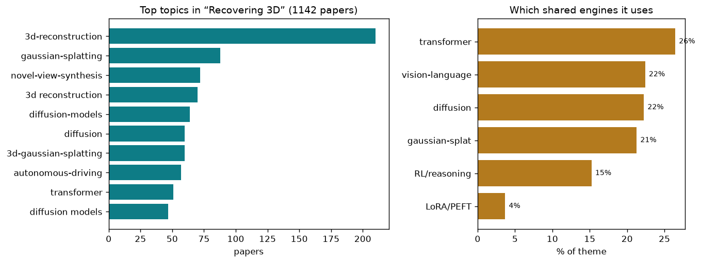

turning 2D images into the shape and structure of a real scene
1142 papers · turning 2D images into the shape and structure of a real scene
A camera captures a flat 2D image: a grid of colored pixels. That image contains all the visual information the world reflects into the lens, but it has lost one critical dimension—depth. Two objects at different distances from the camera can cast identical pixels. The human visual system solves this through stereo (two eyes) and motion (we move our heads). A single photograph has neither. Yet the world is 3D. Reconstructing shape and structure from flat pictures is one of the core problems in computer vision because it is the bridge between raw pixels (which tell you what is there) and meaning (which tells you where it is and how it relates to other things).
The fundamental difficulty is underdetermination. Many 3D configurations produce the same 2D projection. A small nearby sphere looks similar to a large distant sphere. A tilted plane can masquerade as a curved surface. Without additional cues—multiple viewpoints, known camera parameters, motion parallax, surface texture patterns, physical priors—the problem is ambiguous. Even with perfect pixel colors, you cannot measure depth from a single image without some assumption about what you are looking at.
This gap between images and 3D structure is why the problem matters. Autonomous vehicles need to know the layout of roads and obstacles in metric space. Robotics requires 6-degree-of-freedom pose estimates and collision geometry. Virtual reality stitches photographs into volumetric scenes. Medical imaging reconstructs anatomy from cross-sectional scans. In each case, the task is the same: convert pixel measurements into quantitative geometric assertions about space.
The modern challenge is scale and generalization. Specialized methods work well when you control the setup (calibrated cameras, structured lighting, known object geometry), but real photographs are messy—uncontrolled lighting, occlusions, motion blur, reflective surfaces, transparent objects. Any practical system must handle diverse images without per-scene human supervision. That requirement has driven the field toward learning-based approaches that extract geometric structure from data rather than hand-coding geometry rules.
At its deepest level, 3D reconstruction from images is an inverse problem. Forward graphics renders known geometry into pixels via projection, lighting, and material simulation. Reconstruction inverts that pipeline: extract geometry, pose, materials, and scene properties from pixels alone. This inversion is ill-posed (many solutions fit the data), so progress comes from learning which solutions are likely—leveraging statistics of real scenes, physical constraints, and auxiliary signals (depth sensors, multiple views, temporal sequence, semantic context).
Gaussian Splatting (3DGS) represents scenes as a set of 3D Gaussian blobs, each with position, scale, rotation, and opacity. Rendering evaluates these Gaussians and projects them to screen space—a process both fast and differentiable. This approach emerged as a practical middle ground: more flexible than hand-designed geometry (meshes, voxels), yet much faster than volumetric neural rendering. Papers like SR3R: Rethinking Super-Resolution 3D Reconstruction With Feed-Forward Gaussian Splatting predict high-resolution Gaussians directly from sparse low-resolution input. DualSplat: Robust 3D Gaussian Splatting via Pseudo-Mask Bootstrapping from Reconstruction Failures extracts transient detection priors from failure cases. Proxy-GS: Unified Occlusion Priors for Training and Inference in Structured 3D Gaussian Splatting adds lightweight proxy meshes to guide occlusion reasoning during densification. TagSplat: Topology-Aware Gaussian Splatting for Dynamic Mesh Modeling and Tracking maintains manifold topology through dynamic updates. Z-Order Transformer for Feed-Forward Gaussian Splatting structures Gaussian parameters via space-filling curves for feed-forward reconstruction. Over 87 papers in this set tackle variants: feed-forward prediction to avoid per-scene optimization, handling extreme views, relighting, fisheye cameras, large-scale scenes, and real-time rendering.
Meshes—connected triangles forming surfaces—are the lingua franca of 3D graphics and fabrication. Unlike Gaussians, they encode explicit topology (which faces neighbor which), and they integrate seamlessly with rendering pipelines and physical simulators. BuildAnyPoint: 3D Building Structured Abstraction from Diverse Point Clouds uses cascaded latent diffusion and autoregressive mesh generation for structured geometry. PixARMesh: Autoregressive Mesh-Native Single-View Scene Reconstruction generates meshes directly from single images without intermediate representations. MeshSplatting: Differentiable Rendering with Opaque Meshes optimizes large-scale scenes as connected opaque triangle meshes end-to-end. Hermite Radial Basis Function for Surface Reconstruction via Differentiable Rendering uses global implicit fields combined with radial basis functions for smooth, differentiable surfaces. Residual Primitive Fitting of 3D Shapes with SuperFrusta fits analytic primitives (spheres, cylinders, cones, toroids) and iteratively refines residuals. The mesh approach emphasizes interpretability and realism: a reconstructed surface can be measured, manufactured, or edited without ambiguity.
Depth maps assign a distance value to each pixel, making the 3D structure locally explicit. Monocular depth prediction from single images is inherently ambiguous (scale cannot be recovered without external reference), but recent work addresses this with learned priors or auxiliary signals. DepthFocus: Controllable Depth Estimation for See-Through Scenes uses a steerable Vision Transformer to handle transparency and occlusion. UniDAC: Universal Metric Depth Estimation for Any Camera decouples relative depth (from local features) and spatially varying scale (from global context). Pip-Stereo: Progressive Iterations Pruner for Iterative Optimization based Stereo Matching accelerates iterative stereo methods via skip-step equivalence. Iris: Bringing Real-World Priors into Diffusion Model for Monocular Depth uses two-stage spectral-gated distillation to transfer structure and detail from a diffusion model. The Midas Touch for Metric Depth converts relative depth to metric scale via sparse 3D anchors and segment-wise graph optimization. Depth is especially powerful as intermediate supervision—rendering a reconstructed scene requires depth, so depth predictions bridge pixels and 3D geometry tightly.
If one image is ambiguous, two or more images from different positions provide powerful constraints. Epipolar geometry relates pixel correspondences across views; triangulation directly recovers 3D points. Skullptor: High Fidelity 3D Head Reconstruction in Seconds with Multi-View Normal Prediction uses a view-aware cross-attention extension of a monocular normal foundation model to predict normals consistently across views. Pano360: Perspective to Panoramic Vision with Geometric Consistency performs global panorama stitching in 3D photogrammetric space with multi-view consistency. TopoMA: Topology-Guided Multi-Agent Dense RGB 3D Reconstruction via Distributed Inference integrates topology guidance into multi-agent distributed reconstruction for large scenes. LiDAR Prompted Spatio-Temporal Multi-View Stereo for Autonomous Driving combines prompt-anchored cost volumes and spatio-temporal transformer fusion for metric accuracy. MV3DIS: Multi-View Mask Matching via 3D Guides for Zero-Shot 3D Instance Segmentation guides mask matching with 3D geometric constraints for novel class generalization. Multi-view approaches scale from small hand-held captures to large autonomous scenes by enforcing consistency across viewpoints.
Static scenes are a simplification; the world moves. People, animals, cloth, water, and vehicles deform or translate over time. Reconstructing 4D (space plus time) geometry requires tracking how surfaces move. MotionCrafter: Dense Geometry and Motion Reconstruction with a 4D VAE unifies geometry and motion in world coordinates via a novel VAE training strategy. Inferring Compositional 4D Scenes without Ever Seeing One (COM4D) uses Attention Mixing in DiT blocks—routing even blocks to multi-object reasoning and odd blocks to per-object temporal reasoning. GeoMotion: Rethinking Motion Segmentation via Latent 4D Geometry efficiently decodes moving object masks from latent 4D geometry representations. Deformable Gaussian Occupancy: Decoupling Rigid and Nonrigid Motion with Factorized Distillation decouples rigid and nonrigid motion via per-Gaussian learnable rigidity masks. RetimeGS: Continuous-Time Reconstruction of 4D Gaussian Splatting addresses temporal aliasing through opacity regularization and spline-based trajectory supervision. SpeeDe3DGS: Speedy Deformable 3D Gaussian Splatting with Temporal Pruning accelerates deformable Gaussian rendering via temporal pruning. Dynamic reconstruction moves beyond static snapshots to capture the actual 4D world.
Not all 3D space contains surfaces. Occupancy methods predict, for each 3D location or cell, whether it is filled (occupied) or empty. This implicit representation is particularly useful for autonomous driving and dense scene understanding, where understanding which voxels are free matters as much as where surfaces exist. OccAny: Generalized Unconstrained Urban 3D Occupancy enables unconstrained occupancy prediction across diverse camera configurations and urban scenarios. ShelfOcc: Native 3D Supervision beyond LiDAR for Vision-Based Occupancy Estimation provides full camera-only 3D supervision using foundation models for semantic depth. Gau-Occ: Geometry-Completed Gaussians for Multi-Modal 3D Occupancy Prediction combines Gaussian-based occupancy with explicit geometry completion. Dr.Occ: Depth- and Region-Guided 3D Occupancy from Surround-View Cameras for Autonomous Driving uses geometry-aware masking for precise 2D-to-3D alignment. Monocular Open Vocabulary Occupancy Prediction for Indoor Scenes extends occupancy prediction beyond fixed classes to open-vocabulary queried objects. Occupancy is naturally compatible with navigation and collision detection—the core tasks of autonomous systems.
Raw geometry is incomplete: reconstructing a room as triangles tells you about surfaces but not function. Scene graphs add semantic layers—which objects are where, how do they relate, what are they for? FunFact: Building Probabilistic Functional 3D Scene Graphs via Factor-Graph Reasoning uses dual factor graphs and LLM cardinality priors to reason over functional relationships. SAMosaic3D: Modular Scene Assembly for Real-Time 3D Segment Anything extends segment-anything to real-time 3D scene segmentation through modular assembly. ExtrinSplat: Decoupling Geometry and Semantics for Open-Vocabulary Understanding in 3D Scenes decouples geometry and semantics in Gaussian Splatting for open-vocabulary grounding. ReLaGS: Relational Language Gaussian Splatting integrates relational language reasoning with 3D Gaussian Splatting for spatial grounding. Ov3R: Open-Vocabulary Semantic 3D Reconstruction from RGB Videos directly integrates CLIP features into 3D reconstruction via cross-attention. Semantic layers convert reconstructed geometry into actionable scene understanding.
Diffusion models excel at sampling from high-dimensional distributions. When applied to 3D, they can be trained on databases of real scenes and objects, then conditioned on observations (images, text, partial geometry) to infer plausible complete reconstructions. PnP-CM: Consistency Models as Plug-and-Play Priors for Inverse Problems reinterprets consistency models as proximal operators within a plug-and-play ADMM solver. Sketch2CT: Multimodal Diffusion for Structure-Aware 3D Medical Volume Generation uses two-stage latent diffusion with text-sketch fusion for medical volumes. Generative Diffusion Priors for 3D Mapping of the Dark Universe applies generative diffusion to cosmic structure reconstruction. Learning Compact 3D Representations from Feed-Forward Novel View Synthesis learns a learnable query mechanism that condenses novel-view synthesis into ~2K Gaussians. Let it Snow: Animating 3D Gaussian Scenes with Dynamic Weather combines MPM particle trajectories with Video-SDS and adaptive physics regularization. Generative approaches shift focus from "find the one true 3D model" to "sample plausible 3D structures consistent with the evidence."
No single representation excels at every task. Recent work combines representations strategically: using learned geometry features as conditioning for diffusion, rendering Gaussian scenes through mesh intermediate steps, or conditioning occupancy grids on depth estimates. MoRE: 3D Visual Geometry Reconstruction Meets Mixture-of-Experts applies Mixture-of-Experts routing to 3D reconstruction, dynamically selecting domain-specific expert pathways. CaliTex: Geometry-Calibrated Attention for View-Coherent 3D Texture Generation integrates 3D geometry explicitly into texture generation via calibrated attention. MatSpray: Fusing 2D Material World Knowledge on 3D Geometry fuses 2D PBR material priors with 3D Gaussians via neural merging. I-Scene: 3D Instance Models are Implicit Generalizable Spatial Learners shows that pre-trained 3D instance models can learn generalizable spatial understanding. DLWM: Dual Latent World Models Enable Holistic Gaussian-centric Pre-training uses dual latent world models for self-supervised 3D Gaussian pre-training. These hybrid methods avoid committing to a single bottleneck and instead let task requirements drive representation choice.
The field has largely solved reconstruction for controlled settings: known cameras, static scenes, good lighting. Feed-forward neural networks can now turn image sequences into high-quality Gaussian Splats or meshes in seconds—a task that required hours of optimization five years ago. Multi-view stereo, depth estimation, and monocular reconstruction from images all have working systems. The hardest cases—single-image reconstruction from arbitrary photos, deformable objects, transparent materials, textureless regions—now have plausible heuristics, even if they are not yet perfect. Real-world deployment (autonomous driving, robotics, VR capture) is moving from research prototypes to production pipelines.
What remains open: solving reconstruction without auxiliary sensors, generalizing across extreme viewpoints and imaging conditions, faithfully handling non-rigid and self-occluding objects, and extracting metric-scale geometry from images without ground truth depth or calibration. The field is also beginning to integrate semantic and functional reasoning—not just "what shape is it" but "what is it for" and "how does it move." As camera hardware diversifies (fisheye, event cameras, thermal, LiDAR), each modality brings new constraints and opportunities, and the bridge between pixels and meaning continues to evolve.
The theme above is broad. Here are the distinct sub-problems inside it — each in plain terms: the big-picture problem, then how the field tackles it, then representative papers.
The problem. A photo loses depth: many different 3D worlds could cast the same flat image. The classical recovery recipe first matches points across photos, then solves where the cameras were, then triangulates the scene. That works when matches are clean, but it breaks on blank walls, repeated patterns, missing camera positions, and giant scenes. The first-principles question is how to recover the hidden 3D cause from several 2D shadows without solving a new puzzle from scratch for every scene.
The approaches. The new family trains one model to predict a 3D point for each pixel across all views, so camera pose, depth, and correspondence are solved together. Scaling gives the model many examples of how flat shadows usually come from real surfaces; efficiency tricks then keep attention, memory, and context length from exploding. The mathematical idea is consistency: every predicted point, camera, and view must agree on one shared world that could have produced all the images.
▸ The point-map foundation model
Problem. Classical 3D pipelines solve matching, camera poses, and triangulation as separate fragile stages that break on textureless or repetitive scenes. The question is whether one network can absorb raw images and emit consistent geometry and camera poses in a single pass. Approach. Train a transformer to predict a 3D coordinate for every pixel jointly across all views, so pose and shape fall out together, and scale it up with specialized routing and correct training recipes.
The fundamental point. Geometry and camera pose are not separate problems to be solved in sequence but a single quantity a network can regress directly from pixels.
MoRE: 3D Visual Geometry Reconstruction Meets Mixtur… · Unlocking the Power of Critical Factors for 3D Visua… · AMB3R: Accurate Feed-forward Metric-scale 3D Reconst… · DVGT: Driving Visual Geometry Transformer
▸ Making it scale to model size, data, and speed
Problem. These models are hungry: attention cost grows quadratically with the number of images, and it is unknown whether pouring in more parameters and data keeps paying off. Without answering both, the approach stalls at a few small scenes. Approach. Establish scaling laws by training from half a billion to ten billion parameters, then cut the dominant attention cost with block-sparse selection, compressed descriptors, and training-free acceleration of the global attention step.
The fundamental point. Feed-forward 3D reconstruction obeys a power law like language models, so its ceiling is set by compute and data, not by the method itself.
VGGT-Ω: Scaling Feed-Forward 3D Reconstruction · AVGGT: Rethinking Global Attention for Accelerating … · Block-Sparse Global Attention for Efficient Multi-Vi… · FlashVGGT: Efficient and Scalable Visual Geometry Tr…
▸ Breaking the context limit for long and huge scenes
Problem. A single forward pass can only hold so many images, so long video streams or kilometer-scale scenes overflow the model's memory and context window. The core obstacle is fitting an unbounded scene into a bounded network. Approach. Carry a running state across frames with test-time training and online updates for linear-time streaming reconstruction, or split a giant scene into clusters solved locally then globally aligned.
The fundamental point. An unbounded scene can be reconstructed with bounded memory by turning the one-shot model into a stateful, incremental process rather than a single monolithic pass.
tttLRM: Test-Time Training for Long Context and Auto… · ZipMap: Linear-Time Stateful 3D Reconstruction via T… · Online3R: Online Learning for Consistent Sequential … · MERG3R: A Divide-and-Conquer Approach to Large-Scale… · VGG-T3: Offline Feed-Forward 3D Reconstruction at Sc…
▸ Marrying the learned model back to classical geometry
Problem. Pure learned models can drift on hard geometry, produce non-metric output, or lack the guarantees classical structure-from-motion offers. The tension is combining a network's robustness on easy cases with the exactness of algebraic geometry on hard ones. Approach. Bolt a compact geometric backend or global structure-from-motion onto the learned point-map model, so it delivers metric scale and reliable bundle-adjusted poses while staying feed-forward.
The fundamental point. The learned prior and classical multi-view geometry are complementary, and the strongest systems are hybrids rather than either alone.
AMB3R: Accurate Feed-forward Metric-scale 3D Reconst… · Global Structure-from-Motion Meets Feedforward Recon… · Any4D: Unified Feed-Forward Metric 4D Reconstruction
The problem. Reconstructing shape is only half the goal; you also want to render the scene from brand-new camera angles that look photographic. Representing a scene as millions of tiny fuzzy 3D blobs (Gaussians) makes rendering fast, but naive versions are memory-hungry, slow to train, wobbly under a few input views, and produce visual artifacts. The core tension is squeezing photorealistic, view-consistent images out of a representation that is cheap enough to run in real time on a phone.
The approaches. One family attacks efficiency and compactness: pruning redundant blobs, adaptive densification, better initialization, caching, and faster training so scenes fit in seconds and small memory. Another pushes fidelity: exact alpha compositing, ray tracing for shadows and reflections, high-frequency surface detail, and correct handling of transparency and glass. A third handles hard capture conditions, sparse views, weird cameras (fisheye, 360), bad weather, low light, and moving distractors, often by adding geometric priors, depth guidance, or generative hallucination to fill what the cameras never saw.
▸ Making splatting cheap enough to run anywhere
Problem. Representing a scene as millions of fuzzy blobs renders fast but is slow to train and heavy in memory, blocking real-time or on-device use. The core waste is that many blobs are redundant and training rediscovers structure from scratch every time. Approach. Prune redundant blobs by importance, replace incremental densification with dense geometric initialization, shorten per-pixel blend lists, and consolidate optimization tricks to cut training to seconds.
The fundamental point. Most of a splatting scene's cost is redundancy, so photographic quality survives aggressive compression and a far smaller blob budget.
Prune Wisely, Reconstruct Sharply: Compact 3D Gaussi… · FastGS: Training 3D Gaussian Splatting in 100 Second… · Speeding Up the Learning of 3D Gaussians with Much S… · EDGS: Eliminating Densification for Efficient Conver… · EcoSplat: Efficiency-controllable Feed-forward 3D Ga…
▸ Getting the rendering physics exactly right
Problem. Standard splatting approximates how blobs composite into a pixel, which produces artifacts and cannot handle shadows, reflections, glass, or transparency correctly. The deeper issue is that a fast rasterizer sacrifices the true light-transport math. Approach. Replace the approximate rasterizer with mathematically exact compositing and differentiable, sorting-free stochastic ray tracing, and model reflection and transmission jointly with specular-aware surface-volume representations.
The fundamental point. Photorealism that obeys real optics requires treating splatting as genuine light transport, not a rendering shortcut.
Exact-GS: Mathematically Rigorous and Accurate 3D Ga… · Stochastic Ray Tracing for the Reconstruction of 3D … · RT-Splatting: Joint Reflection-Transmission Modeling…
▸ Surviving sparse views and hostile capture
Problem. With only a few input photos or bad conditions, splatting has too little evidence and overfits into a wobbly, artifact-ridden mess. The scene must be inferred where the cameras never actually looked. Approach. Add geometric priors, depth guidance, hierarchical pseudo-dense supervision, and enforce that geometry and appearance stay consistent, filling the unseen with principled constraints rather than guesses.
The fundamental point. When observations run out, view-consistent scenes can only be recovered by importing geometric priors that constrain what the missing views must contain.
HeroGS: Hierarchical Guidance for Robust 3D Gaussian… · Intrinsic Geometry-Appearance Consistency Optimizati… · 3D Gaussian Splatting with Self-Constrained Priors f… · DualSplat: Robust 3D Gaussian Splatting via Pseudo-M…
▸ Learned structure and level-of-detail inside the representation
Problem. A flat sea of equal blobs cannot adapt its detail to viewing distance or scene complexity, wasting effort on far or simple regions. The representation itself lacks a notion of hierarchy. Approach. Learn a continuous hierarchy or level-of-detail directly in the splats and a unified acceleration framework spanning the whole pipeline, so detail is allocated where it matters.
The fundamental point. A scene representation should carry its own adaptive resolution, letting one model serve both close-up fidelity and distant efficiency.
Learning Differentiable Hierarchies in 3D Gaussian S… · SEELE: A Unified Acceleration Framework for Real-Tim… · Faster-GS: Analyzing and Improving Gaussian Splattin…
The problem. A flat photo throws away distance: a small nearby object and a large far one can project to identical pixels. Recovering how far every pixel is (depth) is the foundational cue almost everything else in 3D builds on, but from one image it is fundamentally ambiguous, and even two-camera stereo struggles across unfamiliar cameras, transparent surfaces, and extreme fields of view. The extra hard part is getting depth in true metric units (meters), not just relative ordering, without knowing the camera's exact lens parameters.
The approaches. Monocular methods increasingly repurpose large pretrained image or diffusion models as depth predictors, adding language cues, frequency analysis, or edge reasoning to sharpen and metric-calibrate the output, and to generalize to any camera type including fisheye and panoramic. Stereo work chases zero-shot, real-time matching that transfers to new rigs without retraining, plus better synthetic training data. A recurring move is converting cheap relative depth to metric scale using sparse sensor hints (time-of-flight, LiDAR) or language descriptions.
▸ Repurposing big image and diffusion models as depth predictors
Problem. From one image, depth is fundamentally ambiguous, so a model needs a strong prior about how the world is shaped. The problem is where to get that prior and how to keep predicted depth sharp at edges. Approach. Adapt large pretrained image or diffusion models into depth predictors, adding language conditioning, frequency and motion cues, and edge reasoning to reduce the solution space and sharpen output.
The fundamental point. Monocular depth is less about geometry from pixels than about transferring a huge visual prior already learned by generative models onto the depth task.
Iris: Bringing Real-World Priors into Diffusion Mode… · Iris: Integrating Language into Diffusion-based Mono… · Seeing Depth Through Frequency and Motion: A Progres… · Depth Any Endoscopy: Towards Self-Supervised General…
▸ Getting depth in true meters without knowing the lens
Problem. Relative depth tells you what is nearer but not how many meters away, and true metric scale normally needs the camera's exact intrinsics. The challenge is recovering absolute scale for any unknown camera. Approach. Decouple relative depth from a spatially varying scale map, or convert relative to metric using sparse sensor hints, edge spectral cues, or language descriptions, without relying on camera parameters.
The fundamental point. Absolute scale is a separable factor that can be pinned down from cheap side-channel cues rather than requiring calibrated optics.
UniDAC: Universal Metric Depth Estimation for Any Ca… · The Midas Touch for Metric Depth · TR2M: Transferring Monocular Relative Depth to Metri… · MD2E: Modeling Depth-to-Edge Cues for Monocular Metr…
▸ Depth for any camera geometry
Problem. Fisheye, 360-degree, and panoramic cameras distort the image so severely that models trained on normal photos break. The obstacle is a representation of position and distortion that generalizes across radically different lens geometries. Approach. Use distortion-aware positional embeddings, build panoramic depth foundation models on large curated panorama collections, and transfer the multi-view paradigm to high-resolution multi-patch prediction.
The fundamental point. Depth estimation can be made lens-agnostic by encoding the camera's geometry into the model rather than assuming a pinhole.
UniDAC: Universal Metric Depth Estimation for Any Ca… · Depth Any Panoramas: A Foundation Model for Panorami… · Any Resolution Any Geometry: From Multi-View To Mult…
▸ Zero-shot stereo that transfers and runs in real time
Problem. Two-camera stereo is more reliable than mono but classically must be retrained per rig, and accurate versions are too slow for real use. The tension is generalizing to unseen cameras while staying fast. Approach. Accelerate and distill stereo foundation models for real-time zero-shot matching, replace iterative refinement with prompt-driven decoders, and study which synthetic training data actually generalizes.
The fundamental point. Stereo matching can be both universal across rigs and cheap, so accuracy and generalization are not fundamentally at odds with speed.
Fast-FoundationStereo: Real-Time Zero-Shot Stereo Ma… · Lite Any Stereo: Efficient Zero-Shot Stereo Matching · PromptStereo: Zero-Shot Stereo Matching via Structur… · What Makes Good Synthetic Training Data for Zero-Sho…
The problem. The real world is not frozen. Cars drive, people gesture, cloth flaps. Static reconstruction assumes every photo sees the same rigid scene, so motion appears as ghosting, blur, or garbage. Recovering a scene that changes over time (often called 4D: three space dimensions plus time) means jointly untangling what the geometry is, how the camera moved, and how the scene itself moved, from views that never simultaneously capture all of it.
The approaches. Many methods extend point-map or Gaussian representations with a time axis, learning per-element motion and separating static background from moving foreground, sometimes guided by optical flow or point tracking. Feed-forward '4D' transformers now reconstruct moving scenes in one pass and even in streaming, real-time fashion. A distinct thread bakes in physics or continuous-time dynamics (deformation fields, particle dynamics, neural ODEs) so motion is smooth and plausible, and can be forecast beyond the observed frames.
▸ Untangling scene motion from camera motion
Problem. When both the camera and objects move, static reconstruction cannot tell which apparent motion is which, so moving things smear into ghosts. The problem is separating what moved in the world from how the camera traveled. Approach. Learn per-element 3D motion directly from video by enforcing consistency between 3D motion and its 2D projection, decoupling static background from dynamic foreground with flow or self-correction.
The fundamental point. The ambiguity between scene motion and camera motion is resolvable purely from 2D-3D projection consistency, without external motion labels.
ReFlow: Self-correction Motion Learning for Dynamic … · MoRe: Motion-aware Feed-forward 4D Reconstruction Tr… · MoVieS: Motion-Aware 4D Dynamic View Synthesis in On… · GP-4DGS: Probabilistic 4D Gaussian Splatting from Mo…
▸ One-pass and streaming 4D reconstruction
Problem. Per-scene optimization of moving scenes is far too slow for video or live use, and each new frame should update the model rather than restart it. The obstacle is real-time reconstruction of a changing world. Approach. Extend feed-forward point-map transformers with a time axis to reconstruct moving scenes in one pass, including streaming variants that predict current and future geometry for driving scenes.
The fundamental point. A dynamic scene can be reconstructed feed-forward in a single pass, so 4D reconstruction need not be a slow per-scene optimization.
Any4D: Unified Feed-Forward Metric 4D Reconstruction · MoRe: Motion-aware Feed-forward 4D Reconstruction Tr… · DynamicVGGT: Learning Dynamic Point Maps for 4D Scen… · Vista4D: Video Reshooting with 4D Point Clouds
▸ Persistent memory and continuous-time dynamics
Problem. Reconstructions forget parts of the scene that leave view and treat time as discrete snapshots, causing flicker and gaps. Motion should be smooth, persistent, and interpolatable at any instant. Approach. Model motion with continuous-time trajectories, spline or deformation fields and probabilistic Gaussian-process priors, and maintain a spatial memory that recovers every observed part at every timestamp.
The fundamental point. Time in a moving scene is best treated as a continuous field with lasting memory, not a stack of independent frames.
RetimeGS: Continuous-Time Reconstruction of 4D Gauss… · GP-4DGS: Probabilistic 4D Gaussian Splatting from Mo… · 4D Primitive-Mâché: Glueing Primitives for Persisten… · MAPo: Motion-Aware Partitioning of Deformable 3D Gau…
▸ Motion-aware structure and specialized subjects
Problem. A single deformation model averages away distinct kinds of motion, and generic 4D methods struggle on articulated subjects like animals. Different motion regimes need different representations. Approach. Partition time into segments each handled by a specialized deformation network, disentangle motion from appearance, and use parametric models with synthetic data for specific subjects such as horses.
The fundamental point. Faithful dynamic reconstruction requires allocating separate capacity to distinct motion regimes rather than forcing one field to explain all movement.
MAPo: Motion-Aware Partitioning of Deformable 3D Gau… · 4DEquine: Disentangling Motion and Appearance for 4D… · MotionCrafter: Dense Geometry and Motion Reconstruct… · Grounded Latents for Entity-Centric 4D Scene Generat…
The problem. Reconstruction recovers what a camera actually saw; generation must invent plausible geometry for everything it didn't, the back of an object, a whole scene from one photo, or an object that never existed. This is hard because 3D shape has no single natural data format (points, meshes, voxels, implicit fields all trade off differently), realistic assets need consistent geometry and texture from every angle, and outputs must often be clean, editable meshes ready for games, manufacturing, or simulation.
The approaches. Diffusion and flow-matching models are adapted to native 3D representations, generating shapes directly rather than stitching 2D views, with part-aware and coarse-to-fine schemes for structure and editability. A large sub-line generates high-quality artist meshes autoregressively (treating faces or patches as tokens) and paints them with view-consistent textures and physically-based materials, sometimes lifted from 2D material knowledge. Others scale up to whole scenes and cities, or make single-image-to-3D faithful by combining generative priors with reconstruction and hallucination control.
▸ Diffusion directly in a native 3D representation
Problem. Generating 3D by stitching separate 2D views produces inconsistent geometry between angles. The problem is a compact 3D format a generative model can denoise directly while keeping shape and appearance coherent everywhere. Approach. Adapt diffusion and flow-matching to native structured latents (sparse voxels, structured codes) that jointly encode geometry and material, generating shape directly instead of fusing images.
The fundamental point. Consistent 3D comes from generating in a genuinely 3D latent space, so the representation, not the view-fusion, is the crux.
Native and Compact Structured Latents for 3D Generat… · LATTICE: Democratize High-Fidelity 3D Generation at … · Points-to-3D: Structure-Aware 3D Generation with Poi… · Text-Image Conditioned 3D Generation
▸ Autoregressive artist-quality meshes
Problem. Games and manufacturing need clean, editable meshes with sensible topology, but naive generation yields dense unusable soup, and mesh face sequences are enormous. The obstacle is generating well-structured meshes within a tractable sequence length. Approach. Treat mesh faces or patches as tokens generated autoregressively, with local-to-global assembly, frontier-aware tokenization, and face-as-token compression to slash sequence length while preserving topology.
The fundamental point. A mesh's topology is a language with grammar, so artist-grade geometry can be generated token by token like text once tokenized to respect that structure.
MeshMosaic: Scaling Artist Mesh Generation via Local… · FACE: A Face-based Autoregressive Representation for… · MeshRipple: Structured Autoregressive Generation of … · MeshFlow: Efficient Artistic Mesh Generation via Mes…
▸ Painting geometry with view-consistent texture and material
Problem. A generated shape is lifeless without texture, and projecting 2D textures onto 3D creates seams and viewpoint inconsistency. The problem is assigning consistent color and physical material over a whole surface. Approach. Generate texture natively in 3D space as color or texture-function fields rather than via UV-mapped multi-view projection, and lift physically-based material knowledge from 2D image priors.
The fundamental point. Texture and material are 3D surface fields best synthesized directly on the geometry, sidestepping the seams and inconsistencies of 2D projection.
NaTex: Seamless Texture Generation as Latent Color D… · UniTEX: Universal High Fidelity Generative Texturing… · Photo3D: Advancing Photorealistic 3D Generation thro…
▸ Faithful single-image and scaled scene generation
Problem. From one photo a generator must invent the unseen back of an object or a whole scene while staying faithful to what was actually seen, and must scale beyond single objects. The tension is between hallucination and fidelity, and between object and scene scale. Approach. Combine feed-forward reconstruction as a geometry backbone with generative priors to hallucinate only the unseen, add RL and reasoning for text-to-3D, and unify reconstruction and generation in one latent space.
The fundamental point. Single-image 3D is a controlled blend of reconstruction where evidence exists and generation where it does not, rather than pure invention.
SAM 3D: 3Dfy Anything in Images · Gen3R: 3D Scene Generation Meets Feed-Forward Recons… · Are We Ready for RL in Text-to-3D Generation? A Prog… · Photo3D: Advancing Photorealistic 3D Generation thro…
The problem. Humans are the most demanded and most difficult 3D subjects: bodies are articulated and deformable, hands self-occlude constantly, faces need sub-millimeter expression fidelity, and clothing and hair move on their own. From ordinary monocular video or a single photo, the system must recover pose, shape, and appearance at true world scale, often for interacting people or people handling unknown objects, where depth ambiguity and occlusion are worst.
The approaches. Body and hand work recovers metric-scale pose from single or multi-view input, adding physics constraints, uncertainty gating across views, and world-grounding via SLAM for people moving through space. Head and full-body avatars are built from one photo or short video, typically with Gaussian or mesh representations that can be animated and relit, pushed toward real-time and mobile. A rich thread reconstructs human-object and human-scene interaction jointly, enforcing contact and illumination consistency so hands actually touch objects and bodies cast correct shadows.
▸ Metric-scale body and hand pose under occlusion
Problem. Bodies and hands are articulated and constantly self-occlude, and a single photo gives no absolute scale, so recovered pose is ambiguous in both shape and size. The problem is true-metric, physically valid pose from limited views. Approach. Recover metric-scale pose from single or multi-view input using promptable full-body models, fused 2D priors, uncertainty gating, and ray-based metric cues that disentangle pose from position.
The fundamental point. Reliable human pose recovery hinges on resolving metric scale and occlusion jointly, not on refining 2D keypoints.
SAM 3D Body: Robust Full-Body Human Mesh Recovery · From 2D Alignment to 3D Plausibility: Unifying Heter… · MetricHMSR: Metric Human Mesh and Scene Recovery fro… · RAM: Recover Any 3D Human Motion in-the-Wild
▸ Animatable avatars from one photo or short video
Problem. A usable digital human must be built fast from minimal input yet remain relightable and animatable, which is hard because appearance, geometry, and drivability all must be recovered at once. The obstacle is speed and universality without capture rigs. Approach. Build Gaussian or mesh avatars via feed-forward reconstruction models, large synthetic data pipelines, and single-step generative adaptation for sub-second, identity-preserving, relightable heads and bodies.
The fundamental point. A photorealistic drivable human can be regressed feed-forward from a single image once enough synthetic identity data exists to learn the prior.
HumanNOVA: Photorealistic, Universal and Rapid 3D Hu… · ELITE: Efficient Gaussian Head Avatar from a Monocul… · FISHuman: Fine-grained Single-image 3D Human Reconst…
▸ People grounded in scenes and interacting with objects
Problem. A body alone is not enough: hands must actually touch objects, feet must rest on the ground, and multiple people must not interpenetrate. The problem is enforcing physical contact and world-grounding jointly across humans, objects, and scenes. Approach. Reconstruct human-object and human-scene interaction jointly with contact-aware neural fields, physics-based interaction priors, world-grounding via SLAM, and combined human-plus-scene metric recovery.
The fundamental point. A person only makes physical sense embedded in and touching their surroundings, so contact and scene grounding must be reconstructed with the body, not after it.
RHINO: Reconstructing Human Interactions with Novel … · ArtHOI: Taming Foundation Models for Monocular 4D Re… · Human Interaction-Aware 3D Reconstruction from a Sin… · UniSH: Unifying Scene and Human Reconstruction in a … · OnlineHMR: Video-based Online World-Grounded Human M…
The problem. Geometry alone tells a robot where surfaces are, not what they are or what to do with them. To act, follow instructions, or answer questions, a system needs 3D that is labeled with semantics and connected to language, and it must handle object categories it was never trained on. The hard part is fusing rich 2D semantic knowledge into inherently sparse, irregular 3D data, and doing it fast enough for a moving agent, without expensive per-scene training.
The approaches. One family lifts open-vocabulary features from 2D vision-language models (CLIP-style, SAM) into 3D representations, Gaussians, voxels, point clouds, to enable segment-anything, referring segmentation, and language-queryable maps. Another builds spatial reasoning into multimodal language models directly, injecting 3D positional structure, geometry experts, or symbolic bounding-box scaffolds so the model can answer distance, direction, and layout questions. A third grounds language to specific 3D objects for navigation and manipulation via scene graphs, affordances, and relation encoding.
▸ Lifting 2D open-vocabulary features into 3D
Problem. 3D data is sparse and irregular and lacks the rich semantic labels that 2D vision-language models have, and it must handle categories never seen in training. The problem is fusing 2D open-vocabulary knowledge into 3D fast and without per-scene training. Approach. Project features from CLIP- and SAM-style models into Gaussians, voxels, or reconstructions, decouple geometry from semantics, and use compact indices and clustering for near-instant language-queryable maps.
The fundamental point. 3D semantics need not be learned from scratch; they can be inherited by distilling 2D vision-language knowledge onto geometry.
ExtrinSplat: Decoupling Geometry and Semantics for O… · OpenVoxel: Training-Free Grouping and Captioning Vox… · Ov3R: Open-Vocabulary Semantic 3D Reconstruction fro… · Uni3R: Unified 3D Reconstruction and Semantic Unders… · LightSplat: Fast and Memory-Efficient Open-Vocabular…
▸ Building 3D spatial structure into language models
Problem. Multimodal language models reason from flat images and lean on priors instead of actual geometry, so they fail at distance, direction, and layout questions. The problem is giving a language model genuine 3D positional grounding. Approach. Inject spherical or geometric positional encodings, layered geometry-language fusion, dedicated geometry experts, or abstract symbolic bounding-box scaffolds, and scale spatial QA data to teach real spatial sense.
The fundamental point. Spatial competence in a language model comes from explicitly representing 3D structure inside it, not from more text about space.
SoPE: Spherical Coordinate-Based Positional Embeddin… · SpatialStack: Layered Geometry-Language Fusion for 3… · G2VLM: Geometry Grounded Vision Language Model with … · Abstract 3D Perception for Spatial Intelligence in V… · Scaling Spatial Intelligence with Multimodal Foundat…
▸ Grounding language to specific objects for action
Problem. To follow an instruction or answer a referring query, a system must bind a phrase to the exact 3D object or region it names, amid clutter and relations. The problem is precise, position-aware language-to-object grounding. Approach. Use position-guided referring segmentation, entity-aware grounding that injects visual evidence during generation, and adaptive attention masking suited to order-agnostic 3D scene structure.
The fundamental point. Acting on language in 3D requires resolving reference to a specific located object, which needs spatial relations, not just category names.
Spatial Matters: Position-Guided 3D Referring Expres… · Grounded 3D-Aware Spatial Vision-Language Modeling · Masking Matters: Unlocking the Spatial Reasoning Cap… · SpatialScore: Towards Comprehensive Evaluation for S…
The problem. A self-driving car or robot must understand the full 3D world around it in real time from cheap cameras (and sometimes LiDAR/radar), predicting not just visible objects but the occupied and empty space everywhere, including behind occlusions. Stakes are safety-critical, sensors are noisy and mismatched across platforms and weather, rare objects dominate the tail of importance, and everything must run online with tight latency and bandwidth.
The approaches. Occupancy prediction reconstructs a dense 3D grid of what fills space, increasingly from cameras alone using depth and geometry supervision instead of expensive LiDAR labels. Bird's-eye-view and monocular 3D detection recover object positions and orientations, with tricks for camera-intrinsics robustness, long-tail classes, and uncertainty. Cross-platform generalization, multi-agent cooperative perception (vehicles sharing views), and self-supervised pretraining from unlabeled driving video address the data and domain-shift bottlenecks; 4D driving world models predict how the scene will evolve.
▸ Dense occupancy of all space, from cameras alone
Problem. A vehicle must know not just where visible objects are but which of all space is filled or empty, including behind occlusions, and expensive LiDAR labels do not scale. The problem is dense 3D occupancy supervised without LiDAR. Approach. Predict a dense occupancy grid from surround cameras using depth and region guidance, foundation-model semantic depth, and query-based self-supervision instead of LiDAR voxel labels.
The fundamental point. Complete volumetric scene understanding can be learned from cameras and self-supervision, breaking the field's dependence on LiDAR ground truth.
OccAny: Generalized Unconstrained Urban 3D Occupancy · QueryOcc: Query-based Self-Supervision for 3D Semant… · ShelfOcc: Native 3D Supervision beyond LiDAR for Vis… · Dr.Occ: Depth- and Region-Guided 3D Occupancy from S…
▸ Robust 3D object detection across cameras
Problem. Monocular and bird's-eye-view detection are acutely sensitive to camera intrinsics and long-tail rare objects, so a model tuned to one rig fails on another. The problem is intrinsic- and platform-robust object localization. Approach. Model camera intrinsics explicitly, align spatial projections, and generalize occupancy and detection across arbitrary camera configurations for unconstrained urban scenes.
The fundamental point. Camera intrinsics are a first-class variable that detection must be conditioned on, not an implicit constant baked into training.
Towards Intrinsic-Aware Monocular 3D Object Detectio… · SPAN: Spatial-Projection Alignment for Monocular 3D … · OccAny: Generalized Unconstrained Urban 3D Occupancy · Scene Reconstruction as Mapping Priors for 3D Detect…
▸ Learning from unlabeled driving video and predicting the future
Problem. Labeled driving data is scarce while raw video is abundant, and safe driving needs anticipating how the scene will evolve, not just perceiving now. The problem is exploiting unposed video and forecasting scene dynamics. Approach. Pretrain unified pseudo-4D geometry-semantics-motion representations from unposed in-the-wild video, and build driving world models that jointly reconstruct, forecast, and plan.
The fundamental point. The supervision for driving perception is latent in raw video itself, and perception and prediction are one problem when framed as a world model.
Learning to Drive is a Free Gift: Large-Scale Label-… · DynamicVGGT: Learning Dynamic Point Maps for 4D Scen… · UFO: Unifying Feed-Forward and Optimization-based Me… · SGDrive: Scene-to-Goal Hierarchical World Cognition … · MindDriver: Introducing Progressive Multimodal Reaso…
▸ Fusing 3D geometry into driving language models
Problem. A driving model cannot steer safely from caption-like understanding alone. It needs to know that a pedestrian is three meters away, a lane curves left, and a parked car blocks a future path. The hidden quantity is metric layout: distances and directions in the physical world. Approach. These systems feed 3D cues, cross-view geometry, and trajectory tokens into the language-style reasoning model so words and actions are anchored to real space. The model is asked to describe and decide inside the same measured world.
The fundamental point. Language is useful for planning only when it preserves geometry. The principle is grounding: every high-level decision must remain tied to distances, positions, and possible motions.
VGGDrive: Empowering Vision-Language Models with Cro… · Percept-WAM: Perception-Enhanced World-Awareness-Act… · SGDrive: Scene-to-Goal Hierarchical World Cognition … · MindDriver: Introducing Progressive Multimodal Reaso…
The problem. Underneath every reconstruction sits classical multi-view geometry: matching the same physical point across images, figuring out relative camera positions, aligning separate 3D scans into one frame, and knowing when a configuration is even solvable. These problems are hard because matching is ambiguous under viewpoint and lighting change, camera-pose solving is riddled with degenerate cases, and outliers or low overlap can silently corrupt the whole result.
The approaches. Feature-matching work makes correspondence robust and scalable, using language guidance, state-space models, and geometry-aware attention, and unifies 2D-2D, 3D-3D, and 2D-3D matching under one model. A theory-heavy strand characterizes solvability and degeneracies of viewing graphs and camera configurations, and offers faster or globally-optimal minimal solvers. Registration and pose-graph methods align point clouds and localize cameras under low overlap and noise, while relocalization, SLAM, and visual odometry keep pose estimates stable and drift-free over long sequences.
▸ Robust and unified correspondence
Problem. Matching the same physical point across images is ambiguous under changing viewpoint and lighting, and 2D-2D, 3D-3D, and 2D-3D matching have historically needed separate machinery. The problem is one robust, general matcher. Approach. Guide feature matching with language and geometry-aware attention, and unify appearance and positional matching across 2D and 3D under a single transformer with shared weights.
The fundamental point. Correspondence across images, point clouds, and their mix is one underlying problem solvable by a single unified model.
TextFM: Robust Semi-dense Feature Matching with Lang… · UniCorrn: Unified Correspondence Transformer Across …
▸ The theory of solvability and degeneracy
Problem. Camera-pose problems are riddled with configurations that are unsolvable, degenerate, or silently corrupt the result, and it is often unknown in advance which. The problem is characterizing when a viewing configuration can be solved at all. Approach. Analyze solvability of viewing graphs and rigidity of camera-point structures, detect critical two-view configurations and independent scaling subgraphs, and enumerate minimal constraint relaxations for autocalibration.
The fundamental point. Whether a 3D reconstruction is even possible is a knowable algebraic property of the camera configuration, decidable before any optimization.
Solvability of the Viewing Graph Under the Affine Ca… · Parallel Rigidity Matters for Bundle Adjustment · Homaloidal parametrization for detecting critical tw… · Minimal Constraint Relaxation for Multiview Autocali…
▸ Faster and inversion-free minimal solvers
Problem. Reconstruction relies on tiny algebraic solvers run millions of times inside robust estimation, so their speed and numerical stability dominate practicality. The problem is building minimal solvers that are fast and free of ill-conditioned steps. Approach. Construct solvers via sparse resultants without matrix inversion, and derive linear fundamental-matrix solvers from minimal point sets with full analysis of spurious solutions.
The fundamental point. Recasting minimal geometric problems to avoid matrix inversion makes the innermost loop of reconstruction both faster and numerically safer.
Solving Minimal Problems Without Matrix Inversion Us… · Linear Fundamental Matrix Estimation from 7 or 5 Poi…
▸ Registration and drift-free localization
Problem. Separate scans and long camera trajectories must be aligned into one consistent frame despite low overlap, outliers, and accumulating drift. The problem is stable global alignment and localization over noise and time. Approach. Use dual-space filtering, hierarchical multi-hop graph search, and correspondence-free RKHS registration for robust alignment, plus pose-graph and edge-prioritization methods for consistent, drift-free localization.
The fundamental point. Global consistency emerges from carefully structuring the graph of pairwise relations and rejecting outliers, not from any single pairwise alignment.
DualReg: Dual-Space Filtering and Reinforcement for … · MHopReg: Efficient Hierarchical Multi-Hop Graph Sear… · Generalized-CVO: Fast and Correspondence-Free Local … · Learning Scene Coordinate Reconstruction from Unpose… · Global-Aware Edge Prioritization for Pose Graph Init…
Each cluster connects a family of related papers from first principles, with an animated diagram and the papers grouped by approach.

Left: the theme's most common topics. Right: how much it leans on each shared engine.
| Paper | Code |
|---|---|
| 3D Gaussian Splatting for Arbitrary Resolutions with Compact Proxy Anchors | JungMinKyun/ARCA-GS |
| 4D-RGPT: Toward Region-level 4D Understanding via Perceptual Distillation | HumanSignal/label-studio |
| A Self-Conditioned Representation Guided Diffusion Model for Realistic Text-to-LiDAR Scene | QWTforGithub/T2LDM |
| ANI3DHUMAN: Photorealistic 3D Human Animation with Self-guided Stochastic Sampling | qiisun/ani3dhuman |
| ARMFlow: AutoRegressive MeanFlow for Online 3D Human Reaction Generation | ZenGengChin/armflow |
| Action–Geometry Prediction with 3D Geometric Prior for Bimanual Manipulation | Chongyang-99/GAP.git |
| Adaptive Anisotropic Gaussian Splatting for Multi-contrast MRI Arbitrary-Scale Super-Resol | Qiuhai-CV/GaussM2ASR |
| Align Images Before You Generate: CorrAdapter for Consistent Multi-Image Diffusion Generat | SuhZhang/CorrAdapter |
| Anatomica: Localized Control over Geometric and Topological Properties for Anatomical Diff | kkadry/Anatomica |
| Best Segmentation Buddies for Image-Shape Correspondence | rehg-lab/lowshot- |
| Beyond Euclidean Gossip: KL-Barycentric Consensus on Heterogeneous and Imbalanced Images | x-lu/Beyond- |
| C-GenReg: Training-Free 3D Point Cloud Registration by Multi-View-Consistent Geometry-to-I | yuvalH9/CGenReg |
| CROWn: A Unified Framework for Anti-Aliased Downsampling and Phase-Calibrated Fusion in 3D | IMOP-lab/CROWn |
| Can a Second-View Image Be a Language: Geometric and Semantic Perspective | pengc-bjtu/GSR |
| CanonCGT: Reference-Based Color Grading via Canonical Pivot Representation | Jinwon-Ko/CanonCGT |
| ChronoGS: Disentangling Invariants and Changes in Multi-Period Scenes | ZhongtaoWang/ChronoGS |
| Clay-to-Stone: Phase-wise 3D Gaussian Splatting for Monocular Articulated Hand-Object Mani | ru1ven/ARGS |
| ConsisVLA-4D: Advancing Spatiotemporal Consistency in Efficient 3D-Perception and 4D-Reaso | JiuTian-VL/ConsisVLA-4D |
| Content-Aware Frequency Encoding for Implicit Neural Representations with Fourier-Chebyshe | JunboKe0619/CAFE |
| CycleBEV: Regularizing View Transformation Networks via View Cycle Consistency for Bird's- | JeongbinHong/CycleBEV |
| D3D-VLP: Dynamic 3D Vision-Language-Planning Model for Embodied Grounding and Navigation | MrZihan/D3D-VLP |
| DGGT: Feedforward 4D Reconstruction of Dynamic Driving Scenes using Unposed Images | xiaomi-research/dggt |
| DROID-SLAM in the Wild | MoyangLi00/DROID-W.git |
| DVGT: Driving Visual Geometry Transformer | wzzheng/LDM |
| Deformable Gaussian Occupancy: Decoupling Rigid and Nonrigid Motion with Factorized Distil | vita-epfl/DeGO |
| Depth Any Endoscopy: Towards Self-Supervised Generalizable Depth Estimation in Monocular E | ShuweiShao/DAE |
| DetAny4D: Detect Anything 4D Temporally in a Streaming RGB Video | open-mmlab/OpenPCDet |
| DiffSoup: Direct Differentiable Rasterization of Triangle Soup for Extreme Radiance Field | wjakob/nanobind |
| Diffusion Guided Chain-of-Vision for Large Autoregressive Vision Models | wxy1006/CoV |
| Direction-aware 3D Large Multimodal Models | liuQuan98/PoseAlign3D |
| Disco-GS: Gaussian Splatting in Dynamic Color Lighting | akumar005/Disco-GS |
| DrivePI: Spatial-aware 4D MLLM for Unified Autonomous Driving Understanding, Perception, P | happinesslz/DrivePI |
| Dynamic Visual SLAM using a General 3D Prior | PRBonn/Pi3MOS-SLAM |
| ELiC: Efficient LiDAR Geometry Compression via Cross-Bit-depth Feature Propagation and Bag | google/draco |
| ESAM++: Efficient Online 3D Perception on the Edge | qinliuliuqin/esamplusplus |
| Edit2Perceive: Image Editing Diffusion Models Are Strong Dense Perceivers | showlab/Edit2Perceive |
| Efficient Unrolled Networks for Large-Scale 3D Inverse Problems | romainvo/efficient- |
| EgoX: Egocentric Video Generation from a Single Exocentric Video | yinguobing/head-pose- |
| Energy-GS: Image Energy-guided Pose Alignment Gaussian Splatting with redesigned pose grad | SkylerGao/ENGS |
| EvObj: Learning Evolving Object-centric Representations for 3D Instance Segmentation witho | vLAR-group/EvObj |
| Evidential Neural Radiance Fields | KerryDRX/EvidentialNeRF |
| ExPose: Reinforcing Video Generation Models for Extreme Pose Estimation | yh-yoon/ExPose |
| Exact-GS: Mathematically Rigorous and Accurate 3D Gaussian Splatting | brucee1323/Exact-GS |
| Exploring Adaptive Masked Reconstruction for Self-Supervised Skeleton-Based Action Recogni | AshenOne1005/AMR |
| ExpoCM: Exposure-Aware One-Step Generative Single-Image HDR Reconstruction | AoyuLiu01/ExpoCM |
| FMPose3D: monocular 3D pose estimation via flow matching | AdaptiveMotorControlLab/FMPose3D |
| FSFSplatter: Geometrically Accurate Reconstruction with Free Sparse-view Images | Zhaoyibinn/FSFSplatter |
| FUSER: Feed-Forward MUltiview 3D Registration Transformer and SE(3)N Diffusion Refinement | Jiang-HB/FUSER |
| Faithful Contouring: Near-Lossless 3D Voxel Representation Free from Iso-surface | Luo-Yihao/FaithC |
| Fast Markov Random Field Optimisation for Topologically Noisy 3D Shape Matching | paul0noah/sm-mrf |
| FedRG: Unleashing the Representation Geometry for Federated Learning with Noisy Clients | Tianjoker/FedRG |
| FedSDR: Federated Graph Learning with Structural Noise Detection and Reconstruction | Subtleazure/FedSDR |
| Feed-Forward One-Shot Animatable Textured Mesh Avatar Reconstruction | deepinsight/insightface |
| FilterGS: Traversal-Free Parallel Filtering and Adaptive Shrinking for Large-Scale LoD | zju3dv/LoG |
| Flow4DGS-SLAM: Optical Flow-Guided 4D Gaussian Splatting SLAM | wangys16/Flow4DGS-SLAM |
| FluidGaussian: Propagating Simulation-Based Uncertainty Toward Functionally-Intelligent 3D | delta-lab-ai/FluidGaussian |
| ForeHOI: Feed-forward 3D Object Reconstruction from Daily Hand-Object Interaction Videos | Tao-11-chen/ForeHOI |
| Forecasting 3D Scanpaths in Egocentric Video | adswa/multimatch_gaze |
| Foundation Encoders Are All You Need for Preference-Aware Personalization | Burf/FAN |
| Fresco: Frequency-Spatial Consistent Optimization for Fine-Grained Head Avatar Modeling | saralkun/Fresco |
| GEM: Generating LiDAR World Model via Deformable Mamba | wuyang98/GEM |
| GH-NAF: Grid-Adaptive Hash-Level-Attended Neural Attenuation Fields for Discrepancy-Aware | seongje-oh/GH-NAF |
| GS-CLIP: Zero-shot 3D Anomaly Detection by Geometry-Aware Prompt and Synergistic View Repr | zhushengxinyue/GS-CLIP |
| GS2: Graph-based Spatial Distribution Optimization for Compact 3D Gaussian Splatting | BJTU-KD3D/GS-2 |
| GaussianDWM: 3D Gaussian Driving World Model for Unified Scene Understanding and Multi-Mod | dtc111111/GaussianDWM |
| GeCo: Geometry-Consistent Regularization for Domain Generalized Semantic Segmentation | DZhaoXd/GeCo |
| GenSplat: Bridging the Generalization Gap in 3DGS Language Comprehension | fawnliu/GenSplat |
| GeoMotion: Rethinking Motion Segmentation via Latent 4D Geometry | zjutcvg/GeoMotion |
| Geometric-Aware Hypergraph Reasoning | 2490o/HyperNCD |
| Geometry-Guided 3D Visual Token Pruning for Video-Language Models | homothetic/Geo3DPruner |
| Geometry-driven OOD Detectors Are Class-Incremental Learners | Wangwang-Jia/GOD |
| GraspALL: Adaptive Structural Compensation from Illumination Variation for | Zhonghaifeng6/GraspALL |
| Guiding Diffusion-based Reconstruction with Contrastive Signals for Balanced Visual Repres | boyuh/DCR |
| HAD: Heterogeneity-Aware Distillation for Lifelong Heterogeneous Learning | Deexaa/HAD |
| Harnessing Chain-of-Thought Reasoning in Multimodal Large Language | zhanghl0/FaceCoT |
| HeSS: Head Sensitivity Score for Sparsity Redistribution in VGGT | libary753/HeSS |
| Hg-I2P: Bridging Modalities for Generalizable Image-to-Point-Cloud Registration via Hetero | anpei96/hg- |
| Homaloidal parametrization for detecting critical two-view configurations | rakshith95/degeneracy-homoloidal |
| HumanBA: Human-Aware Bundle Adjustment via Global Human-Camera Decoupling | MartaYang/HumanBA |
| Hyper-PCN: Hypergraph-Based Point Cloud Completion via High-Order Correlation Modeling | Rinfly/Hyper-PCN |
| Hyperbolic Busemann Neural Networks | GitZH-Chen/HBNN |
| IDESplat: Iterative Depth Probability Estimation for Generalizable 3D Gaussian Splatting | CVL-UESTC/IDESplat |
| Illustrators' Depth: Monocular Layer Index Prediction for Image Decomposition | visioncortex/vtracer |
| In Pursuit of Pixel Supervision for Visual Pre-training | facebookresearch/pixio |
| Inferring Compositional 4D Scenes without Ever Seeing One (COM4D) | insait-institute/COM4D |
| InfiniDepth: Arbitrary-Resolution and Fine-Grained Depth Estimation with Neural Implicit F | zju3dv/InfiniDepth |
| Iris: Bringing Real-World Priors into Diffusion Model for Monocular Depth | NUST-Machine-Intelligence-Laboratory/Iris |
| JUMP-Hand: Learning Joint-wise Uncertainty to Gate Mixture of View Experts for Multi-View | HaohongKuang/JUMP-Hand |
| KLIP: localized distribution shift detection via KL-divergence with diffusion priors in In | voilalab/KLIP |
| L2DGS: Low-Light Dynamic Gaussian Splatting | akumar005/L2DGS |
| L3DR: 3D-aware LiDAR Diffusion and Rectification | liuQuan98/L3DR |
| LEADER: Learning Reliable Local-to-Global Correspondences for LiDAR Relocalization | JiansW/LEADER |
| LF-BVN: Blind-View Network for Self-Supervised Light Field Denoising | shuozh/LF-BVN |
| LS-ViT: Least-Squares Hessian Based Block Reconstruction for Low-Bit Post-Training Quantiz | hhh7748/LS-ViT |
| LangRef3DGS: Natural Language-Guided 3D Referential Segmentation from Partial Observations | Tap12345/LangGS |
| Learnability-Driven Submodular Optimization for Active Roadside 3D Detection | BZNR3/LH3D |
| Learning Explicit Continuous Motion Representation for Dynamic Gaussian Splatting | hhhddddddd/se3bsplinegs |
| Learning to Control Physically-simulated 3D Characters via Generating and Mimicking Motion | Denys88/rl_games |
| Learning to Reason in 4D: Dynamic Spatial Understanding for Vision | TencentARC/DSR |
| Linear Fundamental Matrix Estimation from 7 or 5 Points | CIVA-Lab/v-umlaut |
| Linking Modality Isolation in Heterogeneous Collaborative Perception | cxliu0314/CodeAlign |
| LitePT: Lighter Yet Stronger Point Transformer | prs-eth/LitePT |
| Localizing, Structuring, and Rendering: Bridging 3D and 2D Vision-Language-Action Models | zyl123456aB/DIFFVLA |
| LumiX: Structured and Coherent Text-to-Intrinsic Generation | xhanxu/LumiX |
| MV3DIS: Multi-View Mask Matching via 3D Guides for Zero-Shot 3D Instance Segmentation | zybjn/MV3DIS |
| Mamba Learns in Context: Structure-Aware Domain Generalization for Multi-Task Point Cloud | Jinec98/SADG |
| Masking Matters: Unlocking the Spatial Reasoning Capabilities of LLMs for 3D Scene-Languag | Jyerim/3D-SLIM |
| MatMart: Material Reconstruction of 3D Objects via Diffusion | mseitzer/pytorch-fid |
| MeanFuser: Fast One-Step Multi-Modal Trajectory Generation and Adaptive Reconstruction via | wjl2244/MeanFuser |
| MeteorPred: A Meteorological Multimodal Large Model and Dataset for Severe Weather Event P | tsluvjk/MeteorPred |
| Monocular Open Vocabulary Occupancy Prediction for Indoor Scenes | JuIvyy/LegoOcc |
| Motion-Aware Animatable Gaussian Avatars Deblurring | MyNiuuu/MAD-Avatar |
| MuM: Multi-View Masked Image Modeling for 3D Vision | davnords/mum |
| NG-GS: NeRF-guided 3D Gaussian Splatting Segmentation | BJTU-KD3D/NG- |
| NI-Tex: Non-isometric Image-based Garment Texture Generation | SII-Hui/NI-Tex |
| NeAR: Coupled Neural Asset-Renderer Stack | huggingface/peft |
| Neu-PiG: Neural Preconditioned Grids for Fast Dynamic Surface Reconstruction on Long Seque | vc-bonn/neu-pig |
| NimbusGS: Unified 3D Scene Reconstruction under Hybrid Weather | lyy-ovo/NimbusGS |
| OccAny: Generalized Unconstrained Urban 3D Occupancy | valeoai/OccAny |
| Occluded Human Body Capture with Frequency Domain Denoising Prior | boycehbz/FreqMotion |
| Omni-3DEdit: Generalized Versatile 3D Editing in One-Pass | mt-cly/Omni3DEdit |
| OrienPose: Orientation-Guided Novel View Synthesis for Single-Image Unseen Object Pose Est | pubyLu/OrienPose |
| PDD: Manifold-Prior Diverse Distillation for Medical Anomaly Detection | OxygenLu/PDD |
| PEARL: Geometry Aligns Semantics for Training-Free Open-Vocabulary Semantic Segmentation | PGSmall/PEARL |
| PETAR: Localized Findings Generation with Mask-Aware Vision-Language Modeling for PET Auto | DanyalMaq/petar-release |
| PPISP: Physically-Plausible Compensation and Control of Photometric Variations in Radiance | nv-tlabs/ppisp |
| PQDT: Pseudo-Query Dual Transformer for Robust Point Cloud Restoration | ins-uni-bonn/PQDT |
| PR-IQA: Partial-Reference Image Quality Assessment for Diffusion-Based Novel View Synthesi | Kakaomacao/PR-IQA |
| PV-Ground: Text-Guided Point-Voxel Interaction for 3D Visual Grounding | AaNnWwTt/PV-Ground |
| Pano360: Perspective to Panoramic Vision with Geometric Consistency | KiMomota/Pano360 |
| PanoEnv: Exploring 3D Spatial Intelligence in Panoramic Environments with Reinforcement Le | 7zk1014/PanoEnv |
| PhaSR: Generalized Image Shadow Removal with Physically Aligned Priors | ming053l/PhaSR |
| PhysGen: Physically Grounded 3D Shape Generation for Industrial Design | kasvii/PhysGen |
| PhysIR-Splat: Physically Consistent Thermal Infrared Radiative Transfer in 3D Gaussian Spl | JingyuanGao0919/physir- |
| Physics-Guided Multistep Deformation Reversal for Ancient Bamboo Slip Restoration | VillanelleQQ/PGDR-BambooSlips |
| PlanaReLoc: Camera Relocalization in 3D Planar Primitives via Region-Based Structure Match | 3dv-casia/PlanaReLoc |
| PnP-CM: Consistency Models as Plug-and-Play Priors for Inverse Problems | MerveGulle/PnP-CM |
| PoInit-of-View: Poisoning Initialization of Views Transfers Across Multiple 3D Reconstruct | bmild/nerf |
| Point Cloud as a Foreign Language for Multi-modal Large Language Model | snehaputul/SAGE3D |
| PointAlign: Feature-Level Alignment Regularization for 3D Vision-Language Models | yharoldsu0627/PointAlign |
| Pose-Free Omnidirectional Gaussian Splatting for 360-Degree Videos with Consistent Depth | zcq15/PFGS360 |
| PrITTI: Primitive-based Generation of Controllable and Editable 3D Semantic Urban Scenes | ZiYang-xie/WorldGen |
| PromptStereo: Zero-Shot Stereo Matching via Structure and Motion Prompts | Windsrain/PromptStereo |
| Prune Wisely, Reconstruct Sharply: Compact 3D Gaussian Splatting via Adaptive Pruning and | WangHaoran16/Prune-Wisely- |
| RAP: Fast Feedforward Rendering-Free Attribute-Guided Primitive Importance Score Predictio | yyyykf/RAP |
| RARE: Learn to RAnk and REtrieve for Monocular 3D Object Detection | HyeonjeongPark37/RARE |
| Random Wins All: Rethinking Grouping Strategies for Vision Tokens | qhfan/random |
| ReFTA: Breaking the Weight Reconstruction Bottleneck in Tensorized Parameter-Efficient Fin | jzheng20/ReFTA |
| ReGenHOI: Unifying Reconstruction and Generation for 3D Human-Object Interaction Understan | xumiao66/ReGenHOI |
| ReasonX: MLLM-Guided Intrinsic Image Decomposition | alaradirik/reasonx |
| RecEdit-Drive: 3D Reconstruction-Guided Spatiotemporal Video Editing for Autonomous Drivin | TJU-IDVLab/RecEdit-Drive |
| Refining Few-Step Text-to-Multiview Diffusion via Reinforcement Learning | ZiyiZhang27/MVC-ZigAL |
| RemedyGS: Defend 3D Gaussian Splatting Against Computation Cost Attacks | Polly-LYP/RemedyGS |
| Repurposing 3D Generative Model for Autoregressive Layout Generation | fenghora/LaviGen |
| Revisiting Token Compression for Accelerating ViT-based Sparse Multi-View 3D Object Detect | Mingqj/SEPatch3D |
| RoSAMDepth: Robust Self-supervised Depth Estimation Leveraging Segment Anything Model | xagao/RoSAMDepth |
| Routing on Demand: DSNet for Efficient Progressive Point Cloud Denoising | cz-61/DSNet |
| S2-MLLM: Boosting Spatial Reasoning Capability of MLLMs for 3D Visual Grounding with Struc | IRMVLab/S2-MLLM.git |
| SASNet: Spatially-Adaptive Sinusoidal Networks for INRs | Fengyee/SASNet_inr |
| SCE-Depth: A Spherical Compound Eye Framework for Wide FOV Depth | ZhuYi2000/SCE-Depth |
| SGI: Structured 2D Gaussians for Efficient and Compact Large Image Representation | zx-pan/SGI |
| SGS-Intrinsic: Semantic-Invariant Gaussian Splatting for Sparse-View Indoor Inverse Render | GrumpySloths/SGS_ |
| STAvatar: Soft Binding and Temporal Density Control for Monocular 3D Head | JiankuoZhao/STAvatar.git |
| STUR3D: Spatio-Temporal Unified Representation Learning for 3D Object Detection | snowindog/STUR3D |
| Scalable Object Relation Encoding for Better 3D Spatial Reasoning | oceanflowlab/QuatRoPE |
| Scaling Self-Supervised and Cross-Modal Pretraining for Volumetric CT Transformers | cclaess/SPECTRE |
| Scaling Spatial Intelligence with Multimodal Foundation Models | OpenSenseNova/SenseNova-SI |
| Scenes as Tokens: Multi-Scale Normal Distributions Transform Tokenizer for General 3D Visi | snldmt/NDTokenizer3D |
| Seeing Depth Through Frequency and Motion: A Progressive Training Paradigm for Monocular D | ACoTAI/FGDepth |
| Solvability of the Viewing Graph Under the Affine Camera Model | federica-arrigoni/affine-solvability |
| SonoWorld: From One Image to a 3D Audio-Visual Scene | ZiYang-xie/WorldGen |
| SpaceDrive: Infusing Spatial Awareness into VLM-based Autonomous Driving | zhenghao2519/SpaceDrive |
| Sparse-View Localization via Online Neural 3D Regression | ludvigdillen/ON3R |
| Sparsity-Aware Voxel Attention and Foreground Modulation for 3D Semantic Scene Completion | xyandtyh/VoxSAMNet |
| Spatial Matters: Position-Guided 3D Referring Expression Segmentation | LiJiaBei-7/Position3D |
| Speeding Up the Learning of 3D Gaussians with Much Shorter Gaussian Lists | MachinePerceptionLab/ShorterSplatting |
| StableMTL: Repurposing Latent Diffusion Models for Multi-Task Learning from Partially Anno | astra-vision/StableMTL |
| SuP: Sub-cloud Driven Point Cloud Registration | SheldonFung98/SuP |
| TACO: Task-Aware Contrastive Learning for Joint LiDAR Localization and 3D Object Detection | xmuxly/OxfoLD |
| TALO: Pushing 3D Vision Foundation Models Towards | Xian-Bei/TALO |
| TESO: Online Tracking of Essential Matrix by Stochastic Optimization | moravecj/teso |
| TGSFormer: Scalable Temporal Gaussian Splatting for Embodied Semantic Scene Completion | Made-Gpt/TGSFormer |
| TR2M: Transferring Monocular Relative Depth to Metric Depth with Language Descriptions and | BeileiCui/TR2M |
| Teaching DINOv3 About Partial 3D Geometry: A Self-Supervised Geometry-Aware Approach | vikiehm/geo-lora |
| Test-Time 3D Occupancy Prediction | Xian-Bei/TT-Occ |
| Towards Balanced Multi-Modal Learning in 3D Human Pose Estimation | MICLAB-BUPT/AWC |
| Towards Intrinsic-Aware Monocular 3D Object Detection | alanzhangcs/MonoIA |
| Towards Visual Query Localization in the 3D World | wuhengliangliang/3DVQL |
| Unblur-SLAM: Dense Neural SLAM for Blurry Inputs | SlamMate/Unblur-SLAM |
| UniTEX: Universal High Fidelity Generative Texturing for 3D Shapes | HKUST-SAIL/UniTEX |
| Unified Camera Positional Encoding for Controlled Video Generation | chengzhag/UCPE |
| Unleashing the Power of Chain-of-Prediction for Monocular 3D Object Detection | alanzhangcs/MonoCoP |
| Unposed-to-3D: Learning Simulation-Ready Vehicles from Real-World Images | open-mmlab/OpenPCDet |
| V2U4Real: A Real-world Large-scale Dataset for Vehicle-to-UAV Cooperative Perception | VjiaLi/V2U4Real |
| VGGT-360: Geometry-Consistent Zero-Shot Panoramic Depth Estimation | Yuanjiayii/VGGT-360 |
| VIMCAN: Visual-Inertial 3D Human Pose Estimation with Hybrid Mamba-Cross-Attention Network | Eddieyzp/VIMCAN |
| VIRC: Enhancing Visual Interleaved Mathematical CoT with Reason Chunking | Leon-LihongWang/ViRC |
| VQRAE: Representation Quantization Autoencoders for Multimodal Understanding, Generation a | KlingAIResearch/VQRAE |
| VesMamba: 3D Pulmonary Vessel Segmentation from CT images via Mamba with Structural Percep | Lzpbright/VesMamba |
| What Are You Doing? A Closer Look at Controllable Human Video Generation | google-deepmind/wyd-benchmark |
| WorldStereo: Bridging Camera-Guided Video Generation and Scene Reconstruction via 3D Geome | FuchengSu/WorldStereo |
| Zoo3D: Zero-Shot 3D Object Detection at Scene Level | col14m/zoo3d |
| iSplat: Iterative Learning for Fine-Grained Gaussian Splatting | haifengwu205/iSplat |
Recovers 3D object shapes from 2D images using transformers trained only on 2D data by encoding position information from classical geometry.
First-principles read. 2D-LFM is about recovering object-level 3D structure from 2D landmarks without 3D training labels. The everyday problem is inferring the shape of a hand, animal, car, or face from keypoints drawn in one image.
Paper focus. State-of-the-art depth-from-RGB foundation models (VGGT, Depth Anything) fail at object-specific 3D structure recovery from 2D landmarks, producing distorted geometry. Classical single-category lifting methods lack scalability; transformer lifters require expensive 3D.
Hidden idea. The hidden mathematical idea is correspondence-aware lifting: keep landmark identity and position information inside every transformer layer so 2D points can imply 3D structure.
Why it matters. This matters because 3D labels are expensive and category-specific. A 2D-supervised lifting model can scale across many object types if it preserves correspondence.
Problem State-of-the-art depth-from-RGB foundation models (VGGT, Depth Anything) fail at object-specific 3D structure recovery from 2D landmarks, producing distorted geometry. Classical single-category lifting methods lack scalability; transformer lifters require expensive 3D supervision despite permutation equivariance.
Approach 2D-LFM is the first lifting foundation model trained exclusively on 2D supervision using correspondence-aware positional encodings. Instead of relying on permutation-equivariant transformers (which lose correspondence), it injects position encodings inspired by classical structure-from-motion at every layer. This restores correspondence while maintaining transformer scalability, enabling single-frame 3D lifting across 45+ diverse object categories without 3D labels or category-specific architectures.
Contribution Correspondence-aware positional encodings that restore geometric reasoning capability in transformers, enabling single-frame 3D lifting from 2D-only supervision at foundation-model scale without category-specific priors.
Render 3D scenes at any zoom level without aliasing by conditioning point features on resolution, using half the memory.
First-principles read. 3D Gaussian Splatting for Arbitrary Resolutions with Compact Proxy Anchors is about the concrete failure case in its paper focus. The everyday problem is this: 3D Gaussian Splatting (3D-GS) suffers from aliasing and quality degradation when rendering at resolutions different from training. Models trained at fixed resolution exhibit staircasing and blur at arbitrary zoom levels. Storing.
Paper focus. 3D Gaussian Splatting (3D-GS) suffers from aliasing and quality degradation when rendering at resolutions different from training. Models trained at fixed resolution exhibit staircasing and blur at arbitrary zoom levels. Storing resolution-specific Gaussians improves quality but.
Hidden idea. The hidden mathematical idea is consistency: distances, surfaces, camera views, and motion must all agree with one shared 3D world that could have produced the observations.
Why it matters. This matters because action depends on geometry. Driving, robotics, editing, and scene understanding all fail if the model has a plausible picture but the wrong physical layout.
Problem 3D Gaussian Splatting (3D-GS) suffers from aliasing and quality degradation when rendering at resolutions different from training. Models trained at fixed resolution exhibit staircasing and blur at arbitrary zoom levels. Storing resolution-specific Gaussians improves quality but substantially increases memory.
Approach Builds on Scaffold-GS anchor-based framework. Two main modules: (1) Resolution-Embedding using Feature-wise Linear Modulation (FiLM): anchor features conditioned on position and resize ratio via positional encoding and MLP to produce FiLM parameters (γv, βv), applied as f̂v = (1+γv)⊙fv + βv. (2) Pixel Coverage Gate: compares coverage of projected 2D Gaussians (A_ξ,v = πρ²√det(Σ²D)) with pixel size, suppresses insufficient coverage via gate function g_pix = 1/(1+exp(-κ(A_ξ,v - η))). For memory efficiency, partitions anchors into proxy (~30%) and leaf anchors, training residual anchor predictor to reconstruct leaf from proxy anchors using distance and direction encodings.
Contribution First framework enabling continuous resolution-adaptive 3D Gaussian rendering without maintaining separate Gaussian sets per scale, combining anti-aliasing with practical memory compression.
High-speed 3D scene reconstruction from ultra-fast camera streams without needing camera position information.
First-principles read. This paper is about reconstructing a fast-moving 3D scene from spike-camera data without knowing the camera poses in advance. The everyday problem is that ordinary cameras blur during fast motion, while spike cameras avoid blur but produce sparse binary events that look too unstable for standard 3D reconstruction.
Paper focus. 3D Gaussian Splatting (3DGS) fails in high-speed scenarios because it requires sharp images and precise camera pose priors, which are unobtainable when motion blur is severe. Spike cameras capture high-temporal-resolution binary streams that avoid motion blur, but their outputs.
Hidden idea. The hidden mathematical idea is probabilistic texture recovery for pose-free splatting: treat each spike as a random measurement of light, average the right statistics into a usable intensity signal, then jointly solve for camera motion and 3D Gaussian scene structure.
Why it matters. This matters because high-speed 3D capture fails when the sensor and geometry assumptions disagree. By deriving stable visual evidence from spike streams, the method connects event-like sensing to the same geometric reconstruction family used by Gaussian splatting.
Problem 3D Gaussian Splatting (3DGS) fails in high-speed scenarios because it requires sharp images and precise camera pose priors, which are unobtainable when motion blur is severe. Spike cameras capture high-temporal-resolution binary streams that avoid motion blur, but their outputs are highly unstable and lack rich visual texture, making standard pose estimation frameworks (COLMAP, VGGT) unreliable and causing existing unposed 3DGS methods (designed for sharp images) to fail.
Approach Nope-SGS is a progressive optimization framework for 3DGS from unposed spike streams. First, the spike camera model is reformulated probabilistically: because each pixel has a random initial voltage following a uniform distribution U[0, phi], a single-frame spike output can be modeled as a Bernoulli random variable, and averaging multiple frames under independent initial voltage draws yields a normalized binomial distribution spike (NBDS) whose expectation equals light intensity with relatively low variance. This NBDS enables stable texture extraction from single-frame spike data for supervision. Second, an initialization phase uses spike frame intervals (differences between adjacent frames) to reconstruct a rough 3DGS scene and imprecise initial camera poses. Third, a keyframing strategy exploits the probabilistic model to filter stable keyframes from the spike stream. Fourth, camera poses and scene are optimized sequentially using these keyframes within a progressive optimization loop, where rendering loss against the NBDS supervises both Gaussian geometry/appearance and camera extrinsics. The method introduces a new dataset captured with a next-generation RGB spike camera for broader evaluation.
Contribution Nope-SGS is the first framework to reconstruct high-speed 3D scenes from completely unposed spike camera streams, achieved by probabilistically reformulating the spike camera model to extract stable single-frame texture for supervision in a progressive 3DGS optimization pipeline.
Reconstruct sharp 3D object surfaces from photos using Gaussian splatting with self-derived geometry guidance.
First-principles read. 3D Gaussian Splatting with Self-Constrained Priors for High Fidelity Surface Reconstruction is about the concrete failure case in its paper focus. The everyday problem is this: 3D Gaussian Splatting excels in rendering quality and speed over NeRF but struggles to recover accurate high-fidelity geometry. Previous methods either rely on external geometric priors that don't generalize well or require expensive.
Paper focus. 3D Gaussian Splatting excels in rendering quality and speed over NeRF but struggles to recover accurate high-fidelity geometry. Previous methods either rely on external geometric priors that don't generalize well or require expensive explicit 3D supervision. Without direct.
Hidden idea. The hidden mathematical idea is consistency: distances, surfaces, camera views, and motion must all agree with one shared 3D world that could have produced the observations.
Why it matters. This matters because action depends on geometry. Driving, robotics, editing, and scene understanding all fail if the model has a plausible picture but the wrong physical layout.
Problem 3D Gaussian Splatting excels in rendering quality and speed over NeRF but struggles to recover accurate high-fidelity geometry. Previous methods either rely on external geometric priors that don't generalize well or require expensive explicit 3D supervision. Without direct constraints on Gaussians, rendering often produces artifacts and degraded geometric fidelity.
Approach Proposes self-constrained prior derived from TSDF grid fused from depth maps rendered by optimized 3D Gaussians. Prior measures distance field around estimated surface, defining band centered at surface. Imposes geometry-aware constraints: removing outlier Gaussians outside band, adjusting opacity geometry-aware manner (larger for Gaussians near surface, smaller far from), moving Gaussians toward surfaces. Iteratively refines prior with recent depth renderings in coarse-to-fine strategy.
Contribution Self-supervised geometry-aware prior derived from rendered depth maps enables tightened constraints on Gaussian learning without requiring external models or complex joint optimization.
Uses 3D meshes as reasoning substrate to enable precise spatial control in text-to-image generation.
First-principles read. This paper is about giving text-to-image generation a place to reason about space before drawing pixels. The everyday problem is asking for a scene with objects arranged in a precise way, then watching a generator confuse left and right, merge objects, or lose identity after an edit.
Paper focus. Text-to-image models struggle with precise spatial relations, consistent object identities, and compositional coherence. Current layout-based methods using masks or bounding boxes remain limited to coarse spatial hints. Models lack a spatial reasoning workspace analogous to.
Hidden idea. The hidden mathematical idea is external spatial state: build a rough editable 3D arrangement of objects, camera, orientation, and placement, then use that arrangement as guidance for image synthesis. The 3D workspace acts like scratch paper for visual composition.
Why it matters. This matters because language alone is weak at exact geometry. A scratchpad separates the question of where things are from the question of how pixels should look, giving generation a controllable structure before the final image is rendered.
Problem Text-to-image models struggle with precise spatial relations, consistent object identities, and compositional coherence. Current layout-based methods using masks or bounding boxes remain limited to coarse spatial hints. Models lack a spatial reasoning workspace analogous to scratchpads in language reasoning.
Approach Introduces 3D spatial scratchpad concept where LLM parses subjects from text prompts and instantiates them as editable 3D meshes. Agentic scene planning handles placement, orientation, and viewpoint selection. 3D arrangement is rendered back to image domain with identity-preserving cues for 3D-guided text-to-image generation.
Contribution First to use 3D space as an explicit reasoning substrate for text-to-image generation, enabling spatial deliberation before synthesis and supporting intuitive 3D editing.
Learn 3D understanding from videos alone, not expensive 3D scans.
First-principles read. 3D sans 3D Scans is about learning 3D representations without collecting expensive real 3D scans. The everyday problem is that videos are everywhere, while careful depth scans of rooms and objects are rare, costly, and limited in variety.
Paper focus. Collecting large-scale 3D scene scans is expensive and labor-intensive, limiting scalability of 3D self-supervised learning compared to 2D vision. The largest indoor 3D dataset contains only about 5k scenes versus billions of unlabeled images for 2D.
Hidden idea. The hidden mathematical idea is noisy geometry as scalable supervision: reconstruct point clouds from ordinary videos, then train with clustering and smoothing rules that keep consistent 3D structure while reducing reconstruction noise. The method treats imperfect generated geometry as useful evidence, not as ground truth to trust blindly.
Why it matters. This matters because 3D learning is bottlenecked by data. If video can be turned into large-scale approximate 3D training material, the field can borrow the abundance of 2D video to improve 3D perception.
Problem Collecting large-scale 3D scene scans is expensive and labor-intensive, limiting scalability of 3D self-supervised learning compared to 2D vision. The largest indoor 3D dataset contains only about 5k scenes versus billions of unlabeled images for 2D.
Approach Proposes LAM3C (Laplacian-Aware Multi-level 3D Clustering with Sinkhorn-Knopp), a self-supervised framework learning from video-generated point clouds. Introduces noise-regularized loss with Laplacian smoothing and noise consistency terms to handle noisy VGPC. Creates RoomTours dataset from 49,219 web videos using off-the-shelf reconstruction models.
Contribution Demonstrates that high-quality 3D representations can be learned from video-generated point clouds without any real 3D scans, outperforming methods trained on real scans.
Control body movements in videos across different camera angles and viewpoints.
First-principles read. This paper is about controlling human motion in generated video while allowing the camera view to change. The everyday problem is that a person should keep the same body, pose, and movement when seen from a new angle, instead of turning into a different-looking 2D drawing.
Paper focus. Existing human video generation models struggle with view variations and complex motion control. 2D approaches lose 3D geometric consistency when viewpoint changes. Motion control remains coarse without 3D awareness.
Hidden idea. The hidden mathematical idea is view-invariant motion in a hidden 3D body representation: encode body shape and motion in a space tied to the person rather than to one camera image, then render the result from different viewpoints.
Why it matters. This matters because human video is not just a stack of frames. A real body occupies 3D space, so motion control becomes more reliable when the generator respects geometry before producing pixels.
Problem Existing human video generation models struggle with view variations and complex motion control. 2D approaches lose 3D geometric consistency when viewpoint changes. Motion control remains coarse without 3D awareness.
Approach The method uses 3D-aware implicit representation for human video generation. A neural radiance field or implicit surface model encodes 3D human geometry and pose. Motion is represented implicitly through pose parameters or skeletal deformations. Novel views are synthesized by rendering the 3D representation from new camera positions. Diffusion models guide generation toward desired motions while maintaining 3D consistency.
Contribution First framework enabling precise 3D-aware motion control with automatic view adaptation for realistic human video generation across multiple viewpoints.
Predict depth, segments, and boundaries simultaneously by using 3D geometry across camera views for consistency.
First-principles read. This paper is about doing several dense scene-understanding tasks together, such as depth, boundaries, surface normals, and segmentation, while keeping them geometrically consistent. The everyday problem is that one view may suggest a wall edge while another view reveals the same edge from a different angle.
Paper focus. Multi-task learning (MTL) for dense prediction tasks (depth, segmentation, boundary, normal) traditionally captures only 2D per-pixel relations, leading to unstructured features lacking 3D geometric consistency across tasks.
Hidden idea. The hidden mathematical idea is cross-view correlation as a shared geometric witness: compare features across views through a cost volume so different tasks receive evidence from the same 3D structure. The model no longer treats each pixel task as a separate flat prediction problem.
Why it matters. This matters because scene labels, depth, and surfaces all describe the same physical world. Sharing cross-view geometry helps the tasks correct each other instead of producing individually plausible but mutually inconsistent outputs.
Problem Multi-task learning (MTL) for dense prediction tasks (depth, segmentation, boundary, normal) traditionally captures only 2D per-pixel relations, leading to unstructured features lacking 3D geometric consistency across tasks.
Approach Introduces a lightweight Cross-view Module (CvM) that exchanges information across multiple views via cost volumes, capturing 3D geometric consistency. The module processes spatial-aware features through a multi-view transformer to extract cross-view correlations, which are fused with standard MTL encoder features before task-specific decoders.
Contribution Integrating cross-view cost volume correlations as an explicit 3D geometric consistency pathway into MTL networks, enabling geometry-aware representations while remaining architecture-agnostic.
In-place completion uses visible geometry as spatial anchor, avoiding pose alignment while generating complex scenes.
First-principles read. 3D-Fixer is about completing a 3D scene from one image while keeping objects in their original places. The everyday problem is seeing only part of a room and needing to infer the hidden sides of furniture without moving the furniture or breaking the layout.
Paper focus. Compositional 3D scene generation from single view requires balancing efficiency with fidelity. Feed-forward methods generalize poorly to complex scenes; divide-and-conquer methods improve generalization but suffer from time-consuming pose optimization and alignment errors.
Hidden idea. The hidden mathematical idea is in-place conditional completion: use visible geometry fragments as anchors, generate missing structure around those anchors, and refine from coarse scene layout to object detail. The anchor prevents the generated scene from drifting away from the observed image.
Why it matters. This matters because single-image 3D generation can look good while secretly changing the scene. In-place completion protects the observed spatial facts while still filling in what the camera could not see.
Problem Compositional 3D scene generation from single view requires balancing efficiency with fidelity. Feed-forward methods generalize poorly to complex scenes; divide-and-conquer methods improve generalization but suffer from time-consuming pose optimization and alignment errors.
Approach Proposes 3D-Fixer in-place completion paradigm: conditions 3D object generation on partially visible point cloud at original locations. Uses coarse-to-fine generation scheme with dual-branch conditioning network (scene-level + object-level branches). Introduces Occlusion-Robust Feature Alignment (ORFA) strategy stabilizing training under occlusions. Releases ARSG-110K dataset (110K+ scenes, 3M+ views) with high-fidelity 3D ground truth.
Contribution In-place completion paradigm using fragmented geometry as spatial anchor without explicit pose alignment, combined with coarse-to-fine generation and occlusion-robust training for efficient, generalizable scene generation.
Learns implicit 3D representations from single images to encode geometry beyond 2D depth maps.
First-principles read. The paper is about getting depth to emerge as a 3D structure rather than as a flat image-colored distance map. The everyday problem is that one photo hides many possible worlds behind it.
Paper focus. Single-image depth estimation from monocular input is inherently ambiguous. Existing methods produce 2D depth maps; true 3D understanding requires volumetric representations.
Hidden idea. The hidden mathematical idea is implicit depth: represent space as a field that can answer where surfaces probably are, instead of only storing one depth value per pixel.
Why it matters. This matters because monocular depth is ambiguous. A 3D implicit representation gives the model a way to reason about volume, not just paint distance on the image.
Problem Single-image depth estimation from monocular input is inherently ambiguous. Existing methods produce 2D depth maps; true 3D understanding requires volumetric representations.
Approach Proposes learning implicit 3D representations from single images. Uses image encoder extracting 2D features. Maps to implicit function parameters via MLP. Evaluates at dense 3D points for depth extraction. Trains via supervised depth loss, photometric consistency, geometry regularization.
Contribution First method inferring dense implicit 3D representations from single images.
First-principles read. The paper asks how to edit a 3D object from text without making each view disagree with the others. The everyday problem is changing a sculpture by instruction, not repainting separate postcards of it.
Paper focus. Instruction-based 3D editing lags behind 2D editing due to reliance on 2D priors causing view-inconsistent results and multi-view inconsistencies. 2D prior approaches struggle with large geometric transformations, while hybrid 2D-3D methods and SDS-based approaches suffer from.
Hidden idea. The hidden mathematical idea is latent-space editing with geometric consistency: move the hidden representation in the direction described by text while keeping all rendered views tied to one 3D object.
Why it matters. This matters because 2D editing tricks often break when lifted to 3D. 3D-LATTE treats the editable object as one shared latent structure, so textual instructions can change it coherently.
Problem Instruction-based 3D editing lags behind 2D editing due to reliance on 2D priors causing view-inconsistent results and multi-view inconsistencies. 2D prior approaches struggle with large geometric transformations, while hybrid 2D-3D methods and SDS-based approaches suffer from Janus artifacts and computational expense.
Approach 3D-LATTE operates within the latent space of a 3D diffusion model with pixel-aligned 3D Gaussians. Uses 3D attention injection via blending attention maps from generation with source prompt. Leverages VLM and segmentation for multi-view consistent 2D masks defining 3D segmentation over Gaussians. Applies frequency-modulated strategy emphasizing low-frequency early, geometry-aware regularization, and iterative refinement for fidelity.
Contribution First to directly manipulate 3D geometry through latent space of native 3D diffusion model via 3D attention injection and geometry-aware regularization, achieving view-consistent edits without relying on 2D priors or SDS.
Find and orient 3D objects in photos using a single neural network.
First-principles read. The paper focuses on perceiving 3D objects as objects, not just clouds of points or image patches. The challenge is to bind scattered geometric evidence into a stable object-level description.
Paper focus. Existing zero-shot 3D object perception methods rely on ensembles of frozen foundation models with limited cross-domain generalization, requiring depth data for accurate pose refinement and failing on industrial objects and complex scenes.
Hidden idea. The hidden mathematical idea is object-centric aggregation: gather local 3D cues into a coherent slot that preserves shape, pose, and category-level structure.
Why it matters. This matters because many downstream tasks need object-level understanding. A scene full of ungrouped geometry is not yet actionable perception.
Problem Existing zero-shot 3D object perception methods rely on ensembles of frozen foundation models with limited cross-domain generalization, requiring depth data for accurate pose refinement and failing on industrial objects and complex scenes.
Approach 3PT is a multi-stage transformer-based framework combining 2D and 3D object-centric specialization. Detection stage (3PT-D) uses early-fusion design trained directly on 3D object models for joint representation learning. Refinement stage (3PT-R) uses only RGB images (with optional multi-view) without requiring depth data, refining 6DoF pose estimates through continuous representation refinement.
Contribution First unified deep learning framework for zero-shot 3D object perception (detection, segmentation, 6DoF pose) trained end-to-end without relying on frozen foundation model ensembles, achieving multi-digit percentage improvements.
Stop AI robots from making up facts about their surroundings by comparing predictions under normal and distorted scene descriptions.
First-principles read. 3D-VCD is about stopping embodied language agents from inventing objects or spatial relations in 3D scenes. The everyday problem is a robot claiming there is a mug on the left shelf when the scene evidence does not support that claim.
Paper focus. Multimodal Large Language Models (MLLMs) used as reasoning cores in 3D embodied agents suffer from hallucinations that produce unsafe and ungrounded decisions due to failures in 3D reasoning, object presence, spatial layout, and geometric grounding rather than pixel-level.
Hidden idea. The hidden mathematical idea is contrastive grounding against corrupted 3D worlds: compare the model's answer under the real scene graph and under deliberately damaged versions, then suppress words that do not depend on the real geometry.
Why it matters. This matters because embodied mistakes can cause unsafe actions. A 3D agent should speak and act from grounded scene evidence, not from language priors that sound plausible but ignore object presence, position, or size.
Problem Multimodal Large Language Models (MLLMs) used as reasoning cores in 3D embodied agents suffer from hallucinations that produce unsafe and ungrounded decisions due to failures in 3D reasoning, object presence, spatial layout, and geometric grounding rather than pixel-level inconsistencies.
Approach 3D-VCD constructs distorted 3D scene graphs through semantic and geometric perturbations (category substitutions, coordinate/extent corruption) and contrasts predictions under original and distorted contexts via visual contrastive decoding to suppress tokens insensitive to grounded scene evidence.
Contribution First inference-time visual contrastive decoding framework for hallucination mitigation in 3D embodied agents that operates on structured 3D representations rather than pixel-level perturbations.
Reconstruct shiny and transparent objects in 3D from photos by training on datasets explicitly designed for reflections.
First-principles read. 3DReflecNet is about reconstructing objects that break ordinary multi-view assumptions. The everyday problem is modeling glass, shiny, transparent, or low-texture surfaces where views disagree or lack features.
Paper focus. 3D reconstruction of reflective, transparent, and low-texture surfaces remains challenging as these materials violate key assumptions in multi-view pipelines (photometric consistency, distinctive appearance features). Existing datasets focus on diffuse, textured objects,.
Hidden idea. The hidden mathematical idea is optically complex reconstruction coverage: benchmark matching, SfM, view synthesis, reflection removal, and relighting under reflective and transparent materials.
Why it matters. This matters because real 3D scenes contain difficult materials. Reconstruction systems must handle physics that violates simple photo-consistency.
Problem 3D reconstruction of reflective, transparent, and low-texture surfaces remains challenging as these materials violate key assumptions in multi-view pipelines (photometric consistency, distinctive appearance features). Existing datasets focus on diffuse, textured objects, providing limited insight into real-world material complexities. State-of-the-art methods systematically fail on these challenging materials.
Approach 3DReflecNet: large-scale hybrid dataset (22+ TB) combining: (1) 120,000+ synthetic instances from physically-based rendering of 12,000+ shapes with view-dependent specular simulation via camera-glass setups, (2) 1,000+ real-world objects captured using consumer devices, (3) 7 million+ multi-view frames spanning diverse materials, lighting conditions, and geometries including diffusion-generated 3D assets. Establishes benchmarks for five tasks: image matching, structure-from-motion, novel view synthesis, reflection removal, relighting.
Contribution First large-scale hybrid dataset specifically designed for 3D reconstruction of optically complex materials (reflective/transparent/low-texture), bridging synthetic and real domains with comprehensive task coverage.
Training-free LLM generates 3D sketches via spatial planning and pairwise reward optimization without any parameter updates.
First-principles read. 3DrawAgent is about getting a language model to create 3D sketches without training on a large 3D drawing dataset. The everyday problem is describing a shape in words and wanting the system to place curves in space, then improve the sketch by comparing alternatives.
Paper focus. Language-driven sketch generation remains confined to 2D. Existing 3D shape generation requires explicit geometry supervision or extensive retraining. Training-free optimization for open-ended creative 3D tasks lacks practical mechanisms for handling multi-candidate comparisons.
Hidden idea. The hidden mathematical idea is relative experience optimization: generate several candidate 3D curve drawings, score which ones better match the prompt and look plausible, then use those comparisons to guide the next attempt. Learning comes from preference between candidates rather than from a single correct target.
Why it matters. This matters because many creative 3D tasks do not have ground-truth answers. Pairwise comparison gives the system a practical signal for spatial improvement even when exact supervision is unavailable.
Problem Language-driven sketch generation remains confined to 2D. Existing 3D shape generation requires explicit geometry supervision or extensive retraining. Training-free optimization for open-ended creative 3D tasks lacks practical mechanisms for handling multi-candidate comparisons and pairwise learning.
Approach 3DrawAgent uses frozen LLM as spatial planner generating 3D Bézier curves via in-context prompting. Contrastive experience optimization applies Group Reward Policy Optimization (GRPO) paradigm with pairwise comparisons of sketches ranked by CLIP-based perceptual rewards and LLM-based qualitative assessment. No ground-truth supervision or parameter updates—black-box reinforcement via iterative self-improvement of spatial understanding.
Contribution Training-free 3D sketch generation via LLM spatial reasoning and relative experience optimization without ground-truth supervision or model fine-tuning.
First-principles read. 4C4D is about reconstructing a moving 3D scene over time from only four cameras. The everyday problem is capturing a dynamic performance, person, or object without a studio full of cameras, while still being able to view the motion from new angles.
Paper focus. This paper tackles the challenge of recovering 4D dynamic scenes from videos captured by as few as four portable cameras.
Hidden idea. The hidden mathematical idea is sparse-view space-time splatting: represent the scene with 3D Gaussian elements whose positions and appearances change over time, and use a small number of synchronized views to constrain that changing structure.
Why it matters. This matters because dynamic 3D capture usually becomes expensive when many viewpoints are required. If four portable cameras can constrain a useful 4D representation, high-quality novel-view video becomes much more practical.
Problem This paper tackles the challenge of recovering 4D dynamic scenes from videos captured by as few as four portable cameras.
Approach Abstract This paper tackles the challenge of recovering 4D dynamic scenes from videos captured by as few as four portable cameras. Learning to model scene dynamics for tempo- rally consistent novel-view rendering is a foundational task in computer graphics, where previous works often require dense multi-view captures using camera arrays of dozens or even hundreds of views. We propose 4C4D, a novel
Contribution Proposes novel approach to address the problem
Classify 3D shapes reliably even when rotated, by combining local features with a learnable global orientation anchor.
First-principles read. This paper is about recognizing point-cloud shapes no matter how they are rotated, without losing the details that distinguish similar shapes. The everyday problem is identifying the same object after it is turned, while still noticing whether its parts are arranged differently.
Paper focus. Rotation invariance in point cloud analysis remains a core challenge. Existing rotation-invariant (RI) representations derived from local coordinate systems suffer from point-pair ambiguities—different spatial arrangements yielding nearly identical descriptors—and fail to.
Hidden idea. The hidden mathematical idea is equivariance before invariance: first lift local geometry into a richer representation that changes predictably with rotation, then convert it into rotation-independent evidence using a global anchor. The method delays throwing away orientation until it has extracted useful structure.
Why it matters. This matters because making features rotation-invariant too early can erase distinctions between different shapes. A two-stage route keeps more geometry available before producing a stable final descriptor.
Problem Rotation invariance in point cloud analysis remains a core challenge. Existing rotation-invariant (RI) representations derived from local coordinate systems suffer from point-pair ambiguities—different spatial arrangements yielding nearly identical descriptors—and fail to capture discriminative global context, making them unreliable for symmetric or repetitive structures.
Approach Ga4DPF (Global-Aware 4D Point Feature) consists of two components. The local component uses learnable steerable 3D spherical neurons to equivariantly lift each point's local geometric neighborhood (encoded as point-pair features including distances and angles between neighbors) from 3D space into a 4D representation space. This lifting is fully learnable rather than rigid, providing elastic and adaptive local feature construction that reduces point-pair ambiguity. The local 4D features are then converted to invariant descriptors by a canonical inner-product operation. The global component models a dynamic global pose reference using the Bingham distribution—a probability distribution on SO(3) that captures the full rotational symmetry group. A global rotation R_g is estimated by fitting a Bingham distribution to the point cloud's orientation statistics; this serves as a learnable global anchor injected into each local neighborhood's feature, providing global pose context that disambiguates locally similar but globally distinct structures. Both local 4D lifting and global Bingham anchor are jointly optimized with the downstream task (classification or segmentation). The resulting Ga4DPF features are plugged into standard RI learning pipelines.
Contribution Ga4DPF uniquely combines 4D equivariant lifting of point-pair features via steerable spherical neurons with a Bingham distribution-based learnable global rotation anchor, resolving both local point-pair ambiguity and global structural ambiguity in a single unified framework.
Reconstructs dynamic scenes using rigid 3D primitives to enable persistent spatial memory and object tracking through time.
First-principles read. 4D Primitive-Mâché: Glueing Primitives for Persistent 4D Scene Reconstruction is about the concrete failure case in its paper focus. The everyday problem is this: Existing dynamic reconstruction methods lose information about previously observed scene elements by only updating depth at the current timestamp. For dynamic scenes with moving objects, reconstructing only visible geometry at observation.
Paper focus. Existing dynamic reconstruction methods lose information about previously observed scene elements by only updating depth at the current timestamp. For dynamic scenes with moving objects, reconstructing only visible geometry at observation time discards valuable spatio-temporal.
Hidden idea. The hidden mathematical idea is closed-loop control: keep updating the decision from evidence, predicted consequences, and error signals instead of treating perception as a one-time label.
Why it matters. This matters because mistakes become physical. A small error in what is seen can become a bad action unless the system keeps perception, prediction, and correction tied together.
Problem Existing dynamic reconstruction methods lose information about previously observed scene elements by only updating depth at the current timestamp. For dynamic scenes with moving objects, reconstructing only visible geometry at observation time discards valuable spatio-temporal information.
Approach Decomposes dynamic scenes into rigid 3D primitives with estimated motion through dense 2D correspondence matching and optimization. Uses space-filling curve serialization and primitive-based representation to jointly infer rigid SE(3) poses across all timestamps, enabling persistent geometry reconstruction and extrapolation for occluded objects.
Contribution First monocular system demonstrating persistent spatial memory, reconstructing all previously observed parts of dynamic scenes at all timestamps through primitive-based motion parameterization.
Ask AI where objects are and what they're doing in dynamic video scenes without extra inference overhead.
First-principles read. 4D-RGPT is about answering questions about specific regions in dynamic 3D scenes over time. The everyday problem is that a model must know what happened to this region, not just summarize the whole video.
Paper focus. MLLMs struggle with region-level 4D understanding requiring spatial (3D), temporal (4D) perception and region grounding. Existing benchmarks lack either region-prompted questions or sufficient 4D challenges.
Hidden idea. The hidden mathematical idea is region-level perceptual 4D distillation: transfer spatial-temporal knowledge from an expert into a student with region prompts and timestamp cues.
Why it matters. This matters because many real decisions are local in space and time. Distillation gives region-level 4D understanding without adding expert cost at inference.
Problem MLLMs struggle with region-level 4D understanding requiring spatial (3D), temporal (4D) perception and region grounding. Existing benchmarks lack either region-prompted questions or sufficient 4D challenges.
Approach 4D-RGPT specialized MLLM with Perceptual 4D Distillation framework transferring 4D knowledge from frozen expert to student without inference cost. Timestamp Positional Encoding provides temporal cues. R4D-Bench benchmark created with region-based 4D questions on dynamic scenes.
Contribution Training-only perceptual distillation framework enabling 4D understanding without additional inference cost; region-level 4D VQA combining spatial, temporal, and region grounding.
Reconstruct detailed 4D horse models from phone videos by separately recovering motion and appearance without needing 360-degree coverage.
First-principles read. 4DEquine is about reconstructing a moving horse from one video. The everyday problem is separating how the animal moves from what its body and texture look like when only one camera observes it.
Paper focus. 4D reconstruction of equine animals from monocular video requires joint optimization of motion and appearance, which is time-consuming and sensitive to incomplete observations. Template-free methods lack structural priors while template-based methods (SMAL-based) are.
Hidden idea. The hidden mathematical idea is motion-appearance factorization: estimate a parametric horse body and pose over time, then use a separate appearance model to recover detailed texture.
Why it matters. This matters because one-camera animal capture misses many views. Splitting motion from appearance makes practical 4D reconstruction possible without a full capture studio.
Problem 4D reconstruction of equine animals from monocular video requires joint optimization of motion and appearance, which is time-consuming and sensitive to incomplete observations. Template-free methods lack structural priors while template-based methods (SMAL-based) are texture-limited and require 360-degree turntable sequences rare in real-world recordings.
Approach 4DEquine disentangles 4D reconstruction into two sub-problems with VAREN parametric model as bridge: (1) AniMoFormer for spatio-temporal motion recovery: Spatial Transformer processes each frame individually extracting spatial features. Stack of N-frame features feeds into Temporal Transformer using self-attention across N-frame window to model temporal relationships. VAREN transformer decoder regresses pose θ∈R³⁸ˣ³, shape β∈R³⁹, camera parameters. Training loss (Eq. 1): L = λ_varen L_varen + λ_smooth L_smooth + λ_2D L_2D + λ_3D L_3D, where L_smooth = Σ(t=2 to N) ||β̂_t - β̂_{t-1}||²_2 + ||θ̂_t - θ̂_{t-1}||²_2. Post-Optimization uses differentiable renderer to project mesh, comparing rendered masks/keypoints against pseudo-GT from ViTPose++ and Samurai (Eq. 2): L = λ_2D L_2D + λ_smooth L_smooth + λ_reg L_reg + λ_mask L_mask. (2) EquineGS for appearance: DINOv3 extracts multi-scale image features F_I ∈ R^(784×1024). Point features F_P ∈ R^(N_G×1024) from upsampled VAREN mesh vertices. Dual-Stream Transformer Gaussian (DSTG) decoder fuses features in three stages: Global context extraction F_context = MLP(AvgPool(F_I)) (Eq. 3), feature fusion combining F_I, F_P, F_context, and attribute prediction (Eq. 4): {Δμ_i, r_i, s_i, c_i, o_i} = MLP(F_DSTG) for each of N_G Gaussians. Training loss (Eq. 5): L = λ_image L_image + λ_mask L_mask + λ_reg L_reg where L_image = ||Î-I||_1 + LPIPS(Î,I).
Contribution First feed-forward method for high-fidelity 4D equine reconstruction from monocular video disentangling motion and appearance; introduces VAREN-based parametric models with synthetic datasets VarenPoser and VarenTex.
Scalable dataset generation pipeline teaches VLMs to disentangle camera and object motion through point tracking.
First-principles read. 4DP-QA is about scalable question answering for 4D perception in vision-language models. The everyday problem is asking a model what moved in a 3D scene while separating object motion from camera motion.
Paper focus. VLMs struggle to understand 4D motion in videos because motion is observed indirectly through 2D projections, and existing datasets conflate camera motion with object motion, making true 3D scene dynamics hard to learn.
Hidden idea. The hidden mathematical idea is true-motion 4D grounding: use geometry, depth, camera pose, and point tracking so answers describe trajectories in the world rather than motion on the image plane.
Why it matters. This matters because 4D perception is the bridge between video and physical space. Robotics and driving need models that know how objects move through the world, not just how pixels slide across frames.
Problem VLMs struggle to understand 4D motion in videos because motion is observed indirectly through 2D projections, and existing datasets conflate camera motion with object motion, making true 3D scene dynamics hard to learn.
Approach A scalable spatio-temporal QA generation pipeline automatically creates high-quality 4D reasoning data using ground-truth geometric information (camera poses, depths, 6D object poses) from real and synthetic sources. The method produces natural language QA pairs covering camera motion, object motion, inter-object dynamics, and spatial reasoning, plus visual and true-motion point tracking tasks.
Contribution Introduction of true-motion point tracking, a novel task that represents object motion in a fixed reference frame to disentangle it from camera motion, providing intuitive motion representation.
Reconstructs dynamic surfaces from sparse video through SDF flow regularization with overlapping segment partitioning.
First-principles read. 4DSurf is about reconstructing surfaces in scenes that deform over time. The everyday problem is capturing clothing, bodies, hands, or flexible objects as they move, without the surface jittering or tearing between frames.
Paper focus. GS-based dynamic surface reconstruction methods struggle with large deformations, temporal inconsistency, and surface jittering. Existing approaches are typically limited to single objects with small deformations and cannot handle generic unconstrained scenes with multiple.
Hidden idea. The hidden mathematical idea is surface-flow regularization: make the moving Gaussian representation obey a smoother hidden surface evolution, so geometry at one moment connects coherently to nearby moments. Overlapping time segments let the method handle large motion by chaining small reliable changes.
Why it matters. This matters because a dynamic reconstruction is only useful if time is coherent. Stable surface flow turns separate frame reconstructions into a believable moving object or scene.
Problem GS-based dynamic surface reconstruction methods struggle with large deformations, temporal inconsistency, and surface jittering. Existing approaches are typically limited to single objects with small deformations and cannot handle generic unconstrained scenes with multiple (non-)rigid shapes undergoing large deformations.
Approach 4DSurf introduces Gaussian deformations-induced Signed Distance Function Flow Regularization to constrain Gaussian motion with surface evolution. An Overlapping Segment Partitioning strategy divides sequences into overlapping segments with small deformations, incrementally passing geometric information through shared overlapping timesteps. Gaussian Velocity Field predicts Gaussian motion and approximates SDF flow.
Contribution Prior-free generic dynamic surface reconstruction using SDF flow regularization to enforce temporal consistency in Gaussian-based representations with overlapping segment partitioning for large deformations.
Evaluate 3D and 4D world generation models with comprehensive, unified metrics across diverse tasks.
First-principles read. 4DWorldBench is about evaluating generated worlds that have space, time, physics, and conditioning. The everyday problem is judging whether a produced 3D or moving 4D scene is coherent, controllable, and physically believable.
Paper focus. Existing world generation benchmarks emphasize different evaluation dimensions and lack unified assessment of 3D/4D world-realism capability. Prior work limited to coarse evaluation of physical realism and condition-4D alignment across diverse modalities.
Hidden idea. The hidden mathematical idea is multi-axis world evaluation: score perceptual quality, condition alignment, physical realism, and temporal consistency with tools matched to each axis.
Why it matters. This matters because world generation is more than pretty views. Simulators, games, robotics, and planning need worlds whose geometry and behavior remain consistent over time.
Problem Existing world generation benchmarks emphasize different evaluation dimensions and lack unified assessment of 3D/4D world-realism capability. Prior work limited to coarse evaluation of physical realism and condition-4D alignment across diverse modalities.
Approach Comprehensive benchmark evaluating four key dimensions: Perceptual Quality, Condition-4D Alignment, Physical Realism, and 4D Consistency. Supports text/image/video conditioning. Uses dual-track evaluation with MLLM-as-judge for surface-level assessment and LLM-as-judge for complex physical reasoning. Maps multimodal conditions to unified textual space.
Contribution First unified and adaptive benchmark for 3D/4D world generation with comprehensive evaluation across multiple dimensions, modalities, and hybrid evaluation methodologies combining network-based metrics with LLM/MLLM judgment.
Time-varying 1-bit thresholds enable full video recovery using single comparators instead of power-hungry analog-to-digital converters.
First-principles read. This paper is about capturing video with only one bit per pixel per frame and reconstructing a full-looking video afterward. The everyday problem is building a camera that is fast and power-efficient even though each measurement only says whether light was above or below a threshold.
Paper focus. Conventional high-bit-depth video capture requires power-hungry analog-to-digital converters (ADCs) that bottleneck frame rate, memory, and energy consumption, particularly limiting high-speed or ultra-low-power imaging systems.
Hidden idea. The hidden mathematical idea is information through changing thresholds: a single binary answer is weak, but many binary answers with carefully varied thresholds reveal intensity over time. The threshold schedule becomes part of the measurement code.
Why it matters. This matters because sensor power and data movement limit high-speed video. If hardware can measure cheaply and reconstruction can recover the missing detail, efficient cameras can operate where conventional high-bit capture is too costly.
Problem Conventional high-bit-depth video capture requires power-hungry analog-to-digital converters (ADCs) that bottleneck frame rate, memory, and energy consumption, particularly limiting high-speed or ultra-low-power imaging systems.
Approach The framework captures video by applying time-varying thresholds T(k) across frames: at frame k, pixel (u,v) is recorded as 1 if X(u,v,k) >= T(k), and 0 otherwise, implemented by a single DC comparator replacing the full ADC bank. The paper investigates four threshold selection strategies: (1) uniformly spaced smoothly varying thresholds (worst: adjacent frames likely share same binary value), (2) uniformly spaced non-smooth thresholds obtained by permuting the sequence to maximize minimum inter-threshold distance, (3) non-uniformly spaced non-smooth thresholds derived from the empirical pixel intensity CDF, and (4) learned thresholds optimized jointly with network weights via straight-through gradient estimators. Video recovery uses existing state-of-the-art lightweight reconstruction networks (Aswin, EfficientSCI++, Shiftnet, Res2former) that take n=10 binary frames per sequence as input with the thresholds scaled as 0→0, 1→tau for network inputs. The threshold sequence of length 10 is repeated, giving 20 frames total, and overlapping reconstructions are combined to reduce boundary artifacts. For RAW video, gamma tone-mapping and threshold-based input scaling adapt the approach to 14-bit linear sensors.
Contribution Time-varying 1-bit threshold strategy with non-smooth permuted thresholds that maximizes information capture across spatiotemporal video content, enabling full-bit-depth recovery from single-comparator hardware.
Plan robot grasps from multiple camera angles by combining viewpoints to handle occlusions and clutter.
First-principles read. This paper is about estimating how a robot hand should grasp an object using several camera views. The everyday problem is that one camera may miss the back side, see clutter, or hide the best grasp point behind another object.
Paper focus. 6-DoF grasp pose estimation from RGB-D images suffers from occlusions, clutter, and limited single-view perspective. Single viewpoint provides incomplete object geometry information.
Hidden idea. The hidden mathematical idea is multi-view evidence fusion for 6D pose: align features from different viewpoints, weight each view by how informative it is, and predict the grasp position and orientation from the combined geometry.
Why it matters. This matters because grasping fails when geometry is incomplete. Cross-view fusion gives the robot a fuller estimate of object shape and free space before it commits to a physical action.
Problem 6-DoF grasp pose estimation from RGB-D images suffers from occlusions, clutter, and limited single-view perspective. Single viewpoint provides incomplete object geometry information.
Approach Multi-view fusion architecture: capture RGB-D from multiple viewpoints. Process each view independently through feature extractor (CNN backbone). Implement cross-view attention fusion module to aggregate complementary geometric information across views. Predict 6-DoF grasp poses (position + rotation) from fused features. Architecture details include spatial alignment of features from different cameras and adaptive weighting of view importance based on object visibility.
Contribution Cross-view fusion framework enabling robust 6-DoF grasp pose estimation by leveraging complementary information from multiple camera perspectives.
Predict radio propagation patterns using geometric tools from 3D graphics to model wave paths accurately.
First-principles read. The paper uses 3D Gaussian splatting to predict wireless signal behavior, but with physical ray interactions included. The everyday problem is that radio waves bounce, bend, weaken, and scatter around objects; they are not just colors in a picture.
Paper focus. Existing 3D Gaussian Splatting methods for wireless channel modeling treat signal propagation as purely data-driven regression, overlooking critical physical ray-object interactions (reflection, diffraction, attenuation, scattering) essential for accurate wireless modeling.
Hidden idea. The hidden mathematical idea is geometric-algebra-informed propagation: represent wireless paths and object interactions with geometry that can encode reflection, diffraction, attenuation, and scattering.
Why it matters. This matters because pure data regression can miss the physics of signal travel. Adding geometric algebra gives 3DGS a better physical model for wireless channel prediction.
Problem Existing 3D Gaussian Splatting methods for wireless channel modeling treat signal propagation as purely data-driven regression, overlooking critical physical ray-object interactions (reflection, diffraction, attenuation, scattering) essential for accurate wireless modeling.
Approach Proposes GAI-GS (Geometric Algebra-Informed 3DGS) coupling 3D Gaussian splatting with geometric algebra-based attention mechanism to explicitly model ray-object interactions. Encodes joint spatial-electromagnetic relations into token representations via specialized tokenizer with multiple algebraic embeddings. Scene-level aggregation within unified end-to-end architecture grounds wireless propagation in electromagnetic principles.
Contribution First geometric algebra-based 3D Gaussian Splatting framework for wireless modeling, explicitly capturing ray-object interactions through algebraic attention mechanisms.
Aligns features across RGB, depth, and segmentation modalities in existing vision encoders through lightweight parameter-efficient adaptation.
First-principles read. The paper asks how a vision encoder can become omnivorous instead of only being comfortable with ordinary photos. The everyday problem is like training a person on a mixed diet: if they only ever see one kind of food, they do not learn what nutrition means across many forms.
Paper focus. Popular vision encoders like DINOv2 are designed for unimodal tasks and their features are poorly aligned across different modalities (RGB, Depth, Segmentation). The cosine similarity between features of an RGB image and its corresponding depth map is nearly identical to random.
Hidden idea. The hidden mathematical idea is cross-modal alignment: RGB, depth, segmentation, and other views should land in a shared feature space when they describe the same scene, and stay apart when they do not.
Why it matters. This matters because a foundation encoder is useful only if its features mean something beyond one input style. A mixed diet makes DINO less like a photo memorizer and more like a reusable visual measuring tool.
Problem Popular vision encoders like DINOv2 are designed for unimodal tasks and their features are poorly aligned across different modalities (RGB, Depth, Segmentation). The cosine similarity between features of an RGB image and its corresponding depth map is nearly identical to random unrelated images.
Approach Proposes an Omnivorous Vision Encoder using a parameter-efficient teacher-student framework where a student encoder (initialized from DINOv2) is fine-tuned with dual objectives: maximizing cross-modal feature alignment and distillation loss anchoring to frozen teacher. Training includes hard-positive creation via natural color palette colormaps and modality blending during training.
Contribution First to systematically align features across visual modalities (RGB, Depth, Segmentation) in existing foundation models using lightweight adaptation with frozen teacher distillation, preserving pre-trained semantics.
Generate realistic 3D driving scenes from text descriptions by guiding diffusion with real geometry from learned representations.
First-principles read. This paper is about generating realistic LiDAR street scenes from text when paired text-and-LiDAR data is scarce. The everyday problem is asking for a busy urban street point cloud and getting crisp 3D structure instead of a smooth blurry shell.
Paper focus. Text-to-LiDAR generation lacks sufficient training priors due to scarcity of Text-LiDAR pairs, causing overly smooth 3D scenes. Low-quality text descriptions also degrade generation quality and controllability.
Hidden idea. The hidden mathematical idea is self-conditioned geometric guidance: use the model's own learned representation of real LiDAR structure to steer diffusion back toward plausible street geometry.
Why it matters. This matters because LiDAR data is expensive and safety-critical. Better synthetic scenes can expand testing and training without losing the shape cues that vehicles rely on.
Problem Text-to-LiDAR generation lacks sufficient training priors due to scarcity of Text-LiDAR pairs, causing overly smooth 3D scenes. Low-quality text descriptions also degrade generation quality and controllability.
Approach T2LDM uses Self-Conditioned Representation Guidance (SCRG) to learn geometric details from data distribution by aligning with real representations. A Guidance Network perceives multi-scale perturbed features from Denoising Network, providing reconstruction details for training while decoupled in inference.
Contribution Self-conditioned representation guidance and directional position prior to mitigate street distortion in range map projections.
Detects defects across multiple object types with a single disentangled 3D model.
First-principles read. This paper is about finding defects in many kinds of 3D objects with one model. The everyday problem is that a scratch on a bottle, a dent in a gear, and a missing part on a toy should not all be judged against the same imagined normal shape.
Paper focus. Existing 3D anomaly detection methods are category-specific, requiring separate models for each object type. Unified models that handle multiple categories suffer from Inter-Category Entanglement (ICE)—where features from different categories overlap in latent space, causing.
Hidden idea. The hidden mathematical idea is category-separated reconstruction: first keep the object identity apart from the defect signal, then reconstruct using the right category geometry. Disentanglement prevents the model from using a prior for one object type to explain another.
Why it matters. This matters because anomaly detection is a comparison against normality. If normality from different categories becomes mixed together, the detector can hide real defects or invent false ones.
Problem Existing 3D anomaly detection methods are category-specific, requiring separate models for each object type. Unified models that handle multiple categories suffer from Inter-Category Entanglement (ICE)—where features from different categories overlap in latent space, causing incorrect semantic priors during reconstruction and unreliable anomaly detection, particularly when the model reconstructs using wrong category geometry.
Approach SeDiR proposes Semantically Disentangled Reconstruction with three components: (1) Coarse-to-Fine Global Tokenization (CFGT): Extract multi-resolution features at symmetric resolutions {k/2, k, 2k} via k-NN around FPS centers, encode with pretrained local encoder (PointMAE). Append learnable Adaptive Context Token (ACT) to capture instance-level semantics. Process through shared transformer encoder; aggregate via global average pooling and ACT extraction; concatenate fine/base/coarse pooled features with ACT token to form holistic global representation. Impose cosine alignment loss between base-resolution and fine/coarse counterparts. Apply auxiliary category classification loss on global embedding. Project and L2-normalize to compact global token z. (2) Category-Conditioned Contrastive Learning (C3L): Maintain dynamic buffer of embeddings with category labels. For each sample, define positive set (same category) and negative set (different categories). Apply supervised contrastive loss to enforce intra-category compactness and inter-category separation. Jointly optimize supervised contrastive, auxiliary classification, and cosine alignment losses. (3) Geometry-Guided Decoder (GGD): Use global semantic prior z as query; encoded k-resolution features as keys/values. Incorporate geometric bias B_geo (surface normal, curvature changes) into attention mechanism to guide reconstruction. Reconstruct feature tokens via MSE loss. Final training combines C3L and reconstruction losses.
Contribution First unified 3D anomaly detection framework addressing inter-category entanglement through explicit semantic disentanglement before reconstruction, combining global tokenization, category-conditioned contrastive learning, and geometry-guided decoding.
Clean up fuzzy medical images from electron microscopy by removing noise and fixing missing data.
First-principles read. A Supervised Multi-task Framework for Joint Cryo-ET Restoration Enabled by Generative Physical Simulation is about the concrete failure case in its paper focus. The everyday problem is this: Cryo-ET reconstructions suffer from extremely low SNR and missing-wedge artifacts due to dose limits and restricted tilt angles. Existing self-supervised approaches handle denoising and missing-wedge recovery in isolation, fail to.
Paper focus. Cryo-ET reconstructions suffer from extremely low SNR and missing-wedge artifacts due to dose limits and restricted tilt angles. Existing self-supervised approaches handle denoising and missing-wedge recovery in isolation, fail to disentangle structured artifacts from biological.
Hidden idea. The hidden mathematical idea is stable cause versus accidental correlation: keep the signal that should remain useful when the setting changes, and downweight patterns that only worked in the old setting.
Why it matters. This matters because biomedical vision is used for judgment under distribution shift. A model that follows the wrong cue can look accurate in a dataset and still fail when the patient, scanner, or lab changes.
Problem Cryo-ET reconstructions suffer from extremely low SNR and missing-wedge artifacts due to dose limits and restricted tilt angles. Existing self-supervised approaches handle denoising and missing-wedge recovery in isolation, fail to disentangle structured artifacts from biological signal, and lack reliable ground truth for training.
Approach Proposes cryoDeRec, a fully supervised multi-task framework with dual-objective training strategy processing both original noisy and synthetically masked tomograms. Introduces an imaging simulation pipeline based on generative models that captures realistic noise in 2D projections using structures from EMDB, generating training data with clean ground truth via full-angle reconstruction.
Contribution First fully supervised multi-task approach jointly optimizing noise suppression and missing-wedge reconstruction, enabled by generative simulation pipeline for realistic training data generation.
Improves medical image segmentation by learning elliptical regions that better fit real disease shapes instead of treating all regions as circles.
First-principles read. AD-GBC is about improving medical segmentation when lesion features are stretched, fuzzy, or split into several appearances. The everyday problem is outlining tissue whose center, edge, and background clutter do not form neat round clusters in feature space.
Paper focus. Prototype- and region-attention modules for medical image segmentation still have two fundamental limitations: they represent each semantic concept as a point or an isotropic region (a scalar-radius 'circle'), failing to capture the anisotropic, multi-mode geometry of real.
Hidden idea. The hidden mathematical idea is anisotropic region prototypes: represent a semantic region as an ellipsoid with different widths in different directions, then let pixels softly attach to those regions. This captures elongated or multi-mode structure better than a single point or round ball.
Why it matters. This matters because medical boundaries are often uncertain and class imbalance is severe. A better-shaped region representation can preserve useful skip-connection detail without passing noise directly into the final mask.
Problem Prototype- and region-attention modules for medical image segmentation still have two fundamental limitations: they represent each semantic concept as a point or an isotropic region (a scalar-radius 'circle'), failing to capture the anisotropic, multi-mode geometry of real feature distributions; and many rely on non-differentiable clustering or one-way kernel weighting, which restricts coherent region-level representation. In UNet, naive skip-connection concatenation also introduces semantic inconsistency and noise, especially at fuzzy lesion boundaries with cluttered backgrounds.
Approach AD-GBC generalizes point prototypes into K learnable granular balls, each an anisotropic hyper-ellipsoid defined by a center c_k and a per-dimension vector scale sigma_k (constrained positive via Softplus). The module refines a feature map X via a differentiable Set->Ball->Set pathway. First X is optionally projected (1x1 Conv + BN) to dimension D and flattened into N=HW pixel features z_i. Soft membership uses a scaled (Mahalanobis-like) distance d_i,k = ||(z_i - c_k) / sigma_k||^2 (element-wise division by the anisotropic scale), normalized by a temperature-tau Softmax into assignment weights alpha_i,k. Aggregation (Set->Ball) builds region descriptors c'_k as the alpha-weighted sum of pixel features; Broadcast (Ball->Set) reconstructs each refined pixel as the alpha-weighted sum of region descriptors. The refined map is unflattened, projected back to C_in, added residually to X, and passed through a 3x3 Conv-BN-ReLU refine block. When sigma degenerates to a scalar and the consensus step is dropped, AD-GBC reduces to Gaussian kernel weighting. Two geometric regularizers stabilize the anchors: a Wasserstein-based diversity loss (centering term plus spectral-uniformity term using the empirical mean and covariance of centers) that promotes a high-rank, well-spread set of centers and provably detects semantic collapse that pairwise cosine losses cannot; and a scale-consistency loss that L2-matches the learned variance sigma_k^2 to an observed anisotropic variance s_k^2 (alpha-weighted feature spread), using a detach on the target to give a stable one-way constraint. The final loss is task loss (BCE + Dice) + lambda*L_W-div + beta*L_scale-con. AD-GBC is deployed as a weight-shared Semantic Skip-Connection Refiner: the same shared module refines both the encoder feature and the corresponding upsampled decoder feature at a deep skip level (e.g. level 3), projecting both onto the same learned semantic manifold before element-wise fusion. Complexity is linear in N: O(N*(C_in*D + K*D + C_in^2)), with parameter count independent of resolution.
Contribution It replaces isotropic point/ball prototypes with fully differentiable anisotropic granular balls (per-dimension vector scale) that aggregate and broadcast region-level consensus, deployed as a weight-shared UNet skip-connection refiner with Wasserstein diversity and scale-consistency regularizers.
Modeling exposure changes in camera response helps 3DGS-SLAM handle auto-exposure variations across frames.
First-principles read. The paper is about SLAM with stereo cameras whose exposure changes while the scene is being mapped. The everyday problem is keeping one consistent 3D map even when the camera brightens or darkens the images.
Paper focus. 3D Gaussian splatting (3DGS) has emerged as a revolu- tionary scene representation in simultaneous localization and mapping (SLAM) research.
Hidden idea. The hidden mathematical idea is exposure-robust radiance mapping: separate camera exposure effects from stable 3D Gaussian scene structure during localization and mapping.
Why it matters. This matters because robots move through changing light. AERGS-SLAM prevents exposure shifts from being mistaken for changes in the world.
Problem 3D Gaussian splatting (3DGS) has emerged as a revolu- tionary scene representation in simultaneous localization and mapping (SLAM) research.
Approach images, generating posed keyframes and sparse point clouds to initialize the Gaussian map. Secondly, the photorealistic mapping thread renders the radiance map. Subsequently, this radiance map is fed into the camera exposure network to generate RGB images and compute the loss. Finally, the resulting loss is used to optimize the Gaussian map, the camera exposure network, and the exposure time. thes
Contribution Proposes novel approach to address the problem
Restore blurry, noisy photos while extracting depth and segmentation maps.
First-principles read. ALLNet: Multi-task dense prediction for degraded images is about the concrete failure case in its paper focus. The everyday problem is this: Existing multi-task dense prediction methods assume high-quality input data and fail to generalize across adverse environmental conditions (noise, haze, rain). Prior two-stage approaches decouple image restoration and prediction,.
Paper focus. Existing multi-task dense prediction methods assume high-quality input data and fail to generalize across adverse environmental conditions (noise, haze, rain). Prior two-stage approaches decouple image restoration and prediction, interrupting information flow and preventing.
Hidden idea. The hidden mathematical idea is signal separation: preserve the part of the measurement tied to the real scene or diagnosis, and suppress sensor noise, scale changes, or domain-specific clutter.
Why it matters. This matters because these domains use vision as measurement, not decoration. The result must track the underlying thing being measured, not just resemble familiar internet images.
Problem Existing multi-task dense prediction methods assume high-quality input data and fail to generalize across adverse environmental conditions (noise, haze, rain). Prior two-stage approaches decouple image restoration and prediction, interrupting information flow and preventing effective task collaboration.
Approach Proposes ALLNet, a unified framework with three key components: Dual-Stream Feature Propagation (DSFP) that continuously fuses degradation-aware and task-semantic features; Mixture of Adaptive Experts (MaE) that dynamically routes features via MoE to handle diverse degradations; Task-aware Collaborative Refinement (TCR) module using cross-attention to establish bidirectional information pathways between restoration and task-specific features.
Contribution First work to jointly optimize image restoration and multi-task dense prediction under degradation through unified global architecture with explicit cross-task collaboration mechanisms.
Feed-forward metric-scale 3D reconstruction combines compact volumetric backend with geometric reasoning for visual odometry and structure-from-motion.
First-principles read. The paper is about rebuilding 3D scenes at metric scale, meaning the output should know real size, not just relative shape. The everyday problem is the difference between a toy model of a room and a room map where a robot knows whether a chair is one meter away or ten.
Paper focus. Existing pointmap-based 3D foundation models operate on 2D grids lacking explicit geometric reasoning and spatial compactness. Per-pixel 2D-to-3D regression doesn't enforce fusion of multiple corresponding observations into coherent geometry, and multi-view transformers have.
Hidden idea. The hidden mathematical idea is global geometric agreement: many local 3D guesses must be fused into one coordinate system where camera motion, point positions, and physical scale all agree.
Why it matters. This matters because feed-forward reconstruction is fast, but speed alone is not enough. AMB3R adds a backend because real 3D systems need consistency checks that turn scattered predictions into a usable metric scene.
Problem Existing pointmap-based 3D foundation models operate on 2D grids lacking explicit geometric reasoning and spatial compactness. Per-pixel 2D-to-3D regression doesn't enforce fusion of multiple corresponding observations into coherent geometry, and multi-view transformers have quadratic complexity limiting scalability.
Approach AMB3R uses VGGT as frontend for pointmap prediction, adds a lightweight scale head for metric depth, and introduces a sparse voxel backend serialized via space-filling curves and processed by transformers. Fused features are injected back via zero-convolution. Also proposes training-free AMB3R-VO and AMB3R-SfM pipelines for visual odometry and SfM of arbitrary image counts using active memory management and divide-and-conquer strategies.
Contribution Compact volumetric backend for explicit 3D reasoning in pointmap models, enabling metric-scale reconstruction and training-free multi-view visual odometry and structure-from-motion.
Knowledge distillation teaches single-frame models to perceive ahead for autonomous driving map construction.
First-principles read. AMap is about building an online road map that understands what lies ahead, not only what the vehicle has already passed. The everyday problem is that driving decisions depend on upcoming lanes and boundaries, but current sensors see the present from a limited viewpoint.
Paper focus. Existing online HD map construction methods using temporal fusion enhance perception in traversed areas but offer minimal improvement for unseen road ahead, creating backward-looking bias that misaligns with autonomous driving safety priorities.
Hidden idea. The hidden mathematical idea is distilling future context into present perception: train a teacher with access to future frames, then teach a current-frame student to imitate the look-ahead representation. Future evidence becomes a prior baked into today's prediction.
Why it matters. This matters because autonomous driving needs forward awareness at inference time without waiting for future frames. Distillation transfers the advantage of hindsight into a model that still runs online.
Problem Existing online HD map construction methods using temporal fusion enhance perception in traversed areas but offer minimal improvement for unseen road ahead, creating backward-looking bias that misaligns with autonomous driving safety priorities.
Approach Proposed knowledge distillation framework using teacher model with privileged future temporal context to guide lightweight student model restricted to current frame. Introduced Multi-Level BEV Distillation with spatial masking and Asymmetric Query Adaptation module to transfer future-aware representations despite asymmetric setting.
Contribution First knowledge distillation framework implementing distill-from-future paradigm for online HD mapping, endowing current-frame models with look-ahead capabilities without inference-time cost.
Animate 3D humans with realistic clothing and body motion by combining kinematics with video diffusion.
First-principles read. ANI3DHUMAN is about making photorealistic 3D human animation that keeps identity while adding realistic cloth and body motion. The everyday problem is that skeleton-based animation preserves structure but looks stiff, while generative video can look realistic but drift away from the person.
Paper focus. 3D human animation methods struggle to achieve photorealism; kinematics-based methods lack non-rigid dynamics like clothing, while diffusion-based methods suffer quality artifacts and identity loss.
Hidden idea. The hidden mathematical idea is layered motion plus self-guided sampling: separate rigid body motion from residual non-rigid details, then sample realistic video while pulling the result back toward the known identity and coarse 3D render.
Why it matters. This matters because believable humans require both physical structure and visual richness. The split lets kinematics provide a stable body while diffusion fills in difficult appearance dynamics without losing who the person is.
Problem 3D human animation methods struggle to achieve photorealism; kinematics-based methods lack non-rigid dynamics like clothing, while diffusion-based methods suffer quality artifacts and identity loss.
Approach ANI3DHUMAN uses layered motion representation disentangling rigid motion (via kinematics) from residual non-rigid motion, with coarse rendering guided through video diffusion via novel self-guided stochastic sampling combining stochastic sampling for photorealism with self-guidance for identity fidelity.
Contribution Self-guided stochastic sampling method addressing out-of-distribution problem in diffusion-based video restoration for non-rigid motion generation.
Rebuilds 3D scenes by choosing the best camera angles using both perception confidence and language reasoning.
First-principles read. AREA3D: Active Reconstruction Agent with Unified Feed-Forward 3D Perception and Vision-Language Guidance is about the concrete failure case in its paper focus. The everyday problem is this: Traditional active reconstruction methods rely on geometric heuristics like surface coverage and voxel occupancy that lead to redundant observations without improving reconstruction quality. Recent neural field methods require costly.
Paper focus. Traditional active reconstruction methods rely on geometric heuristics like surface coverage and voxel occupancy that lead to redundant observations without improving reconstruction quality. Recent neural field methods require costly online optimization. Methods struggle to.
Hidden idea. The hidden mathematical idea is closed-loop control: keep updating the decision from evidence, predicted consequences, and error signals instead of treating perception as a one-time label.
Why it matters. This matters because mistakes become physical. A small error in what is seen can become a bad action unless the system keeps perception, prediction, and correction tied together.
Problem Traditional active reconstruction methods rely on geometric heuristics like surface coverage and voxel occupancy that lead to redundant observations without improving reconstruction quality. Recent neural field methods require costly online optimization. Methods struggle to balance reconstruction quality and efficiency under tight view budgets.
Approach Proposes AREA3D, an active reconstruction agent unifying feed-forward 3D perception and vision-language guidance. Uses dual-field uncertainty modeling: (1) Feed-forward 3D model (VGGT backbone) provides geometric confidence showing what is well-perceived without costly optimization, (2) Vision-Language Model reasons about what is missing, highlighting occluded/unseen content. Combines cues into visibility-aware where-to-look field guiding agent to high-value views, progressively closing coverage gaps.
Contribution First active reconstruction agent unifying data-driven feed-forward 3D models with vision-language reasoning for dual-field uncertainty modeling enabling efficient view planning without online optimization.
Generate realistic human reactions in real-time by predicting motion one step at a time from an actor's movement.
First-principles read. ARMFlow is about generating a person's 3D reaction motion online as another person moves. The everyday problem is that a virtual character must respond in real time, but each predicted motion becomes the history used for the next prediction.
Paper focus. Generating realistic 3D human reaction motions online (in a causal, streaming fashion) conditioned on an actor's motion is challenging because standard diffusion or flow-matching models require the full future context to sample and are slow at inference. Autoregressive.
Hidden idea. The hidden mathematical idea is one-step flow generation with self-made history: learn a direct velocity field that turns noise into the next motion token, and train with generated past tokens so the model practices the situation it will face at inference.
Why it matters. This matters because streaming generation fails when small mistakes compound. Closing the gap between clean training history and messy generated history makes online motion more stable and responsive.
Problem Generating realistic 3D human reaction motions online (in a causal, streaming fashion) conditioned on an actor's motion is challenging because standard diffusion or flow-matching models require the full future context to sample and are slow at inference. Autoregressive generation suffers from compounding errors when predicted history replaces ground-truth history during training, a distribution shift problem.
Approach ARMFlow adopts the MeanFlow framework, which learns an average velocity field u(z,t,t) = (z - x) / (t - 0) such that a single NFE at any time step t recovers a clean sample. Motion sequences are first compressed by a CNN-VAE into latent tokens. An autoregressive DiT context encoder processes past motion tokens with causal masking to produce a context embedding. An MLP velocity predictor maps (noisy latent zt, time t, context) to the mean velocity, enabling one-step denoising. To mitigate training-inference mismatch, Bootstrap Contextual Encoding (BSCE) replaces the ground-truth motion history with previously generated predictions starting from iteration 1, with a bootstrap probability that increases on a linear schedule. An offline variant ReMFlow uses the same DiT backbone without causal masking. Both variants share the same loss: minimizing ||u_theta(z_t) - (z_t - x)/(t)||^2.
Contribution BSCE progressively replaces ground-truth history with model-generated history during training, directly closing the train-inference distribution gap for autoregressive MeanFlow without requiring separate scheduled sampling stages.
Reconstruct complete 3D objects with moving parts—geometry, texture, and joint angles—from a handful of images without per-object tuning.
First-principles read. The paper is about reconstructing objects that move in parts. A cabinet door, a robot arm, or a folding chair is not just one fixed shape; it has pieces whose motions must make physical sense.
Paper focus. Reconstructing complete 3D articulated objects from sparse multi-state RGB images requires recovering geometry, texture, and kinematic structure. Existing methods either require slow per-object optimization with fragile cross-state correspondences or are limited to specific.
Hidden idea. The hidden mathematical idea is joint-aware reconstruction: infer surface geometry and the kinematic rules that explain how parts move across observed states.
Why it matters. This matters because an articulated object is only useful for simulation or robotics if the model knows both its shape and its allowed motions. ART makes reconstruction include the hidden hinge-and-part structure.
Problem Reconstructing complete 3D articulated objects from sparse multi-state RGB images requires recovering geometry, texture, and kinematic structure. Existing methods either require slow per-object optimization with fragile cross-state correspondences or are limited to specific object categories.
Approach Proposed ART, a category-agnostic feed-forward transformer mapping sparse image inputs to learnable part slots that jointly decode unified part representations including geometry, texture, and articulation parameters. Trained on large-scale diverse dataset with per-part supervision producing physically interpretable, simulation-ready outputs.
Contribution First category-agnostic feed-forward model for articulated object reconstruction from sparse, multi-state images formulating task as part-based prediction of geometry, texture, and articulation.
Single transformer tokenizer handles images, videos, and 3D assets across both reconstruction and semantic understanding tasks.
First-principles read. AToken is about giving images, videos, and 3D assets a shared visual token language. The everyday problem is building one set of pieces that can both reconstruct a picture and support understanding across time and space.
Paper focus. Existing visual tokenizers specialize in either reconstruction or understanding for single modalities, lacking the unified approach that enables language models to handle text. Visual data exists in disparate formats (images, videos, 3D), and current approaches cannot jointly.
Hidden idea. The hidden mathematical idea is 4D visual tokenization: place image, video, and 3D evidence into one coordinate-aware latent grid so different visual media become slices of a common representation.
Why it matters. This matters because language models benefited from a common token interface. Vision needs a similarly reusable interface for generation, retrieval, and understanding.
Problem Existing visual tokenizers specialize in either reconstruction or understanding for single modalities, lacking the unified approach that enables language models to handle text. Visual data exists in disparate formats (images, videos, 3D), and current approaches cannot jointly achieve high-fidelity reconstruction and semantic understanding across modalities.
Approach AToken introduces a pure transformer architecture with 4D Rotary Position Embeddings (RoPE) to process images, videos, and 3D assets in a shared 4D latent space. Each modality occupies different subspaces: images as 2D slices (t=z=0), videos extending along temporal axis (z=0), and 3D as surface voxels (t=0). The sparse transformer encoder-decoder processes feature-coordinate pairs {(zi, pi)} where zi are latents and pi are 4D positions. For reconstruction, latents are projected to lower-dimensional space with optional FSQ quantization; for understanding, latents are aggregated via attention pooling for text alignment. The method employs adversarial-free training combining perceptual and Gram matrix losses (Gram captures second-order statistics at 86.6% of error), avoiding GAN instabilities. A progressive four-stage curriculum trains incrementally from images (reconstruction+understanding), to videos (temporal modeling), to 3D (geometry), with optional discrete tokenization. Each stage reuses checkpoint from previous stage.
Contribution First unified visual tokenizer achieving both high-fidelity reconstruction and semantic understanding across images, videos, and 3D assets through 4D sparse latent representation and adversarial-free training with Gram loss.
Reconstruct 3D scenes from many views up to 10 times faster by cutting down redundant attention computation.
First-principles read. AVGGT is about speeding up multi-view 3D reconstruction models that spend too much computation comparing everything with everything. The everyday problem is that many image-view relationships are useful for alignment, but not every token needs a full global conversation.
Paper focus. VGGT and π3 models achieve strong 3D performance but rely heavily on expensive global self-attention, resulting in quadratic computational complexity that limits practical multi-view reconstruction.
Hidden idea. The hidden mathematical idea is role-aware attention sparsification: identify which global attention layers mainly align views, preserve the key correspondences, and reduce redundant key-value tokens while keeping enough query coverage.
Why it matters. This matters because strong 3D models can become impractical when global attention grows quadratically. Understanding what attention is doing lets acceleration remove waste without blindly damaging geometry.
Problem VGGT and π3 models achieve strong 3D performance but rely heavily on expensive global self-attention, resulting in quadratic computational complexity that limits practical multi-view reconstruction.
Approach AVGGT conducts layer-wise analysis of global attention roles then proposes training-free two-step acceleration: (1) converting early global layers to frame attention, (2) subsampling global attention with diagonal preservation and mean-fill component to maintain correspondence while reducing tokens.
Contribution Training-free acceleration scheme derived from principled analysis of global attention roles in multi-view 3D reconstruction.
Injecting symbolic 3D structure via bounding boxes enables vision-language models to reason spatially without retraining.
First-principles read. This paper is about giving vision-language models a simple 3D sense of space without retraining them. The everyday problem is that a model can describe a 2D picture but still struggle with which object is in front, behind, higher, or reachable.
Paper focus. Vision-language models struggle with 3D spatial tasks despite strong 2D performance; they lack grounding in 3D space due to training on 2D images and 1D text, limiting robotics and embodied agent applications.
Hidden idea. The hidden mathematical idea is abstract 3D lifting: estimate rough depth and multi-view evidence, turn important objects into coarse 3D boxes, and feed that symbolic spatial structure back to the language model.
Why it matters. This matters because many embodied tasks need spatial relations more than perfect reconstruction. Coarse 3D symbols can give a language model enough structure to reason about space while avoiding full 3D supervision.
Problem Vision-language models struggle with 3D spatial tasks despite strong 2D performance; they lack grounding in 3D space due to training on 2D images and 1D text, limiting robotics and embodied agent applications.
Approach SandboxVLM generates multi-view observations via video diffusion priors, estimates depth, identifies task-relevant objects via VLM segmentation, lifts 2D detections into 3D via proxy elevation, and clusters via Multi-view Voting (MVC) into abstract bounding boxes for VLM reasoning.
Contribution First training-free framework injecting symbolic 3D structure into existing VLMs via abstract bounding box representations; enables 3D reasoning without dense supervision or model retraining.
Feed-forward temporal diffusion generates production-quality topology-consistent animated meshes ten times faster than optimization.
First-principles read. ActionMesh is about generating animated 3D meshes quickly from simple inputs. The everyday problem is creating a moving 3D asset for a game, film, or AR scene without spending half an hour optimizing each animation.
Paper focus. Existing animated 3D mesh generation methods are limited by setup constraints (predefined modalities/categories), slow optimization loops (30-45 minutes), and quality that doesn't meet production criteria. Most prior methods produce outputs without consistent topology.
Hidden idea. The hidden mathematical idea is temporal 3D diffusion with topology preservation: generate a sequence of 3D latent states over time, then decode them as deformations of a reference mesh so the surface connectivity stays consistent.
Why it matters. This matters because animation is not just a set of independent 3D shapes. Consistent topology lets the object move as one coherent asset that can be edited, rendered, and used in production pipelines.
Problem Existing animated 3D mesh generation methods are limited by setup constraints (predefined modalities/categories), slow optimization loops (30-45 minutes), and quality that doesn't meet production criteria. Most prior methods produce outputs without consistent topology.
Approach Introduces ActionMesh, a feed-forward generative model using temporal 3D diffusion in two stages: (1) A temporal 3D diffusion model extending pretrained 3D latent diffusion to generate sequences of synchronized latents representing time-varying 3D meshes, and (2) A temporal 3D autoencoder converting independent mesh sequences into deformations of a reference mesh for topology-consistent animation.
Contribution First feed-forward video-to-4D model generating topology-consistent animated 3D meshes while achieving 10x speedup over optimization methods, with support for diverse input modalities.
Predict and execute two-handed robot actions by using 3D geometry as a foundation model.
First-principles read. This paper is about coordinating two robot hands around 3D object geometry. The everyday problem is choosing the next movement for both hands when success depends on shape, spacing, contact, and future object motion.
Paper focus. Bimanual manipulation requires 3D geometry awareness and coordinated control, but existing methods rely on 2D features or explicit point clouds that are difficult to obtain reliably in real-world settings.
Hidden idea. The hidden mathematical idea is joint action-geometry prediction: encode RGB observations with a pretrained 3D prior, then let a diffusion policy predict action chunks together with future structure.
Why it matters. This matters because two-handed manipulation is spatially unforgiving. Geometry is not just perception context; it is part of the action plan.
Problem Bimanual manipulation requires 3D geometry awareness and coordinated control, but existing methods rely on 2D features or explicit point clouds that are difficult to obtain reliably in real-world settings.
Approach Leverages a pretrained 3D geometric foundation model (π3) to encode RGB observations into geometry-aware latents, fused with 2D semantic features and proprioception. Uses a conditional diffusion model to jointly predict action chunks and future 3D structure.
Contribution Uses a pretrained 3D geometric foundation model as the core perception prior for bimanual manipulation without requiring explicit point clouds.
Build 3D scenes efficiently by choosing what to look at next based on geometry and rendering quality.
First-principles read. ActivePolicy: Active Gaussian Reconstruction and Optimization Strategy Based on Global-Local Information Gain is about the concrete failure case in its paper focus. The everyday problem is this: Active 3D Gaussian reconstruction through Next-Best-View selection suffers from two limitations: information gain metrics prioritize geometric coverage while ignoring rendering quality, and sparse view configurations cause overfitting.
Paper focus. Active 3D Gaussian reconstruction through Next-Best-View selection suffers from two limitations: information gain metrics prioritize geometric coverage while ignoring rendering quality, and sparse view configurations cause overfitting manifesting as floater artifacts.
Hidden idea. The hidden mathematical idea is geometry of variation: measure which points are genuinely near each other, which directions preserve meaning, and which splits reveal stable groups or coordinates.
Why it matters. This matters because models fail when they measure closeness in the wrong space. Better geometry makes clustering, matching, transfer, and generalization depend on real structure instead of surface coincidence.
Problem Active 3D Gaussian reconstruction through Next-Best-View selection suffers from two limitations: information gain metrics prioritize geometric coverage while ignoring rendering quality, and sparse view configurations cause overfitting manifesting as floater artifacts.
Approach Proposed GL-Graph, a graph-theoretic strategy unifying geometric consistency, rendering quality, and observation redundancy via Laplacian eigenanalysis. Introduced 4D-Reg regularization identifying floaters through manifold discrepancies among three depth types (R-Depth, α-Depth, C-Depth) using confidence-weighted stochastic dropout.
Contribution First rendering-driven active reconstruction framework formulating NBV selection as graph stability optimization combining Riemannian geometry and manifold-based floater regularization.
Let robots dynamically pick viewpoints to see manipulation tasks more clearly during execution.
First-principles read. ActiveVLA is about letting a robot choose where and how closely to look before acting. The everyday problem is that a fixed wrist camera may miss the exact contact point, hidden side, or small part needed for precise manipulation.
Paper focus. Existing VLA models rely on static wrist-mounted cameras providing fixed end-effector-centric viewpoints, unable to adaptively select optimal viewpoints or resolutions during task execution, limiting performance in fine-grained and long-horizon manipulation scenarios.
Hidden idea. The hidden mathematical idea is perception as an action: project the scene into several candidate views, estimate which view reduces occlusion and increases task relevance, then zoom into the useful 3D region before producing the action.
Why it matters. This matters because better action can require better evidence, not just a better policy. Active perception lets the robot buy information where uncertainty would otherwise become physical error.
Problem Existing VLA models rely on static wrist-mounted cameras providing fixed end-effector-centric viewpoints, unable to adaptively select optimal viewpoints or resolutions during task execution, limiting performance in fine-grained and long-horizon manipulation scenarios.
Approach ActiveVLA uses coarse-to-fine active perception: projects 3D point clouds to multi-view 2D orthographic views for critical region localization, then performs active view selection to maximize amodal relevance while minimizing occlusions, and applies 3D zoom-in for high-resolution task-critical areas.
Contribution First VLA framework integrating active perception with 3D spatial reasoning; enables dynamic viewpoint selection and resolution adjustment for precise fine-grained manipulation without retraining.
Learnable shift-based serialization lets transformers process 3D voxels with flexible receptive fields.
First-principles read. AdaSFormer is about completing the hidden 3D layout of an indoor scene from one image. The everyday problem is inferring walls, furniture, and occupied space behind occlusions without processing a huge 3D volume at full transformer cost.
Paper focus. Indoor monocular semantic scene completion is harder than outdoor due to complex spatial layouts, severe occlusions, and multi-level structures. Convolutional architectures have limited receptive fields preventing long-range dependency modeling. Transformers are ideal for global.
Hidden idea. The hidden mathematical idea is adaptive serialized attention: order 3D voxels into efficient sequences, learn shifts that change the receptive field, and mix global transformer reasoning with local convolutional structure.
Why it matters. This matters because monocular scene completion needs long-range spatial context but has tight memory limits. Serialization makes 3D reasoning cheaper while still allowing the model to connect distant parts of the room.
Problem Indoor monocular semantic scene completion is harder than outdoor due to complex spatial layouts, severe occlusions, and multi-level structures. Convolutional architectures have limited receptive fields preventing long-range dependency modeling. Transformers are ideal for global context but have prohibitive memory cost on dense 3D volumes.
Approach Proposes AdaSFormer, a hybrid framework with three core designs: (1) Adaptive Serialized Attention (ASA) using learnable shifts to dynamically adjust receptive fields across layers; (2) Center-Relative Positional Encoding (CRPE) encoding spatial information relative to scene center; (3) Convolution-Modulated Layer Normalization (CMLN) harmonizing feature statistics between convolutional and transformer representations. Alternates between transformer and convolutional modules to capture global context and complete geometry.
Contribution Learnable shift-based adaptive serialization mechanism that enables transformers to process 3D voxels efficiently while maintaining flexible receptive fields for scene completion.
Bayesian mixture models capture multimodal geometric patterns in point clouds for domain-agnostic adaptation.
First-principles read. This paper is about adapting point-cloud models to new sensors or environments whose geometry and noise look different. The everyday problem is that a 3D model trained on one scanner may fail when another scanner produces sparser, noisier, or differently shaped point patterns.
Paper focus. Point cloud analysis models trained on one dataset fail to generalize to new domains with different geometric characteristics, sensor types, and noise distributions.
Hidden idea. The hidden mathematical idea is multimodal Bayesian distribution learning: represent point-cloud features as several possible geometric modes with uncertainty, then update those beliefs when target-domain data arrives.
Why it matters. This matters because point clouds do not have one universal data distribution. Modeling uncertainty and multiple modes gives adaptation a principled way to separate real shape structure from sensor-specific noise.
Problem Point cloud analysis models trained on one dataset fail to generalize to new domains with different geometric characteristics, sensor types, and noise distributions.
Approach Multimodal Bayesian distribution learning framework: model point cloud feature distributions as Gaussian mixtures capturing different geometric modes and sensor noise characteristics. Use Bayesian inference to estimate component-wise uncertainty. Learn domain-agnostic representations through variational inference, inferring both point cloud encoder parameters and mixture component posteriors. Adaptation via posterior updating on target domain data without retraining the full model.
Contribution Bayesian multimodal distribution learning enabling principled point cloud domain adaptation with uncertainty quantification.
Applies 2D Gaussian splatting with anatomy guidance to recover fine MRI details beyond spectral bias limits.
First-principles read. This paper is about making higher-resolution MRI images while preserving anatomical boundaries. The everyday problem is that smooth tissue areas and sharp organ or lesion edges need different kinds of reconstruction.
Paper focus. INR-based arbitrary-scale MRI super-resolution methods suffer from spectral bias favoring low-frequency components, failing to capture sharp transitions at anatomical boundaries and resulting in loss of high-frequency details in multi-contrast MRI.
Hidden idea. The hidden mathematical idea is adaptive anisotropic basis fitting: use Gaussian kernels that can stretch, shrink, and orient differently depending on local anatomy, so broad regions and sharp boundaries are represented with different shapes.
Why it matters. This matters because medical super-resolution cannot simply smooth pixels. Anatomy-guided anisotropy helps recover fine structure where diagnostic boundaries live while avoiding noise amplification in homogeneous tissue.
Problem INR-based arbitrary-scale MRI super-resolution methods suffer from spectral bias favoring low-frequency components, failing to capture sharp transitions at anatomical boundaries and resulting in loss of high-frequency details in multi-contrast MRI.
Approach Proposes GaussM2ASR, adapting 3D Gaussian splatting to multi-contrast MRI by learning parameters of anisotropic 2D Gaussian kernels with narrower kernels for high-frequency details and wider for homogeneous regions. Includes Structure Prior Modulation Fusion (SPMF), Anatomy-Guided Dual-Domain Cross Attention (AG-DDCA), and Anatomy-Guided Gaussian Parametrizer (AGGP) modules.
Contribution First to apply 2D Gaussian splatting to medical imaging super-resolution, converting high-frequency recovery into smoother parameter optimization problem via adaptive basis functions.
Efficient RGB-T tracking via adaptive exit depth and lightweight token routing for edge devices.
First-principles read. This paper is about tracking objects with RGB and thermal cameras while staying fast enough for edge devices. The everyday problem is following a target at night, in fog, or under occlusion without running every layer of a heavy fusion model every frame.
Paper focus. RGB-T tracking balances robustness under adverse conditions (night, fog, occlusion) with computational efficiency. Recent deep fusion architectures achieve high accuracy but incur substantial FLOPs and memory overhead, limiting real-time deployment on edge devices and.
Hidden idea. The hidden mathematical idea is confidence-based dynamic depth with token routing: exit early when tracking confidence is high, and pass compact holistic tokens between RGB and thermal streams to share cross-modal evidence cheaply.
Why it matters. This matters because multimodal tracking improves robustness but can double the cost. Adaptive depth and lightweight routing keep the useful thermal-visible fusion while cutting redundant computation.
Problem RGB-T tracking balances robustness under adverse conditions (night, fog, occlusion) with computational efficiency. Recent deep fusion architectures achieve high accuracy but incur substantial FLOPs and memory overhead, limiting real-time deployment on edge devices and resource-constrained platforms.
Approach ADTrack uses dual-stream frozen ViT backbone for RGB and TIR. Adaptive Early-Exit (AEE): attaches lightweight heads at multiple layers; learns confidence calibration via self-supervised loss LAEE = sum_l[Lpred(Sl,y) + |rl-r*| + M(rl,r*,τ)] where rl = max(Sl)/sum(Sl) normalizes confidence, r* is final layer confidence. Margin M(rl,r*,τ) creates soft boundary around halting threshold τ. At inference, halts when confidence exceeds τ, skipping redundant computation. Holistic-Token-Guided Interaction (HTGI): extracts K holistic tokens H∈R^(B×K×C) from one modality via Token Router (lightweight MLPs): hk = sum_i[fk(xi)⊙xi]; injects via concatenation into other modality: Z = TransformerBlock([Hn : Xm]). Adds only 37.3K×3 parameters. Bidirectional refinement enables cross-modal alignment without heavy cross-attention.
Contribution Adaptive early-exit with confidence-calibrated dynamic depth plus lightweight holistic-token routing for efficient RGB-T fusion.
Design better vehicles by combining image analysis, physics simulation, and decision-making in one method.
First-principles read. AeroAgent is about designing vehicle shapes that look good and obey airflow physics. The everyday problem is changing a car body, testing drag, and refining it without waiting weeks for full fluid simulation each time.
Paper focus. Modern generative models can produce striking 3D vehicle shapes but lack physics grounding; aerodynamic refinement still requires weeks of CFD iterations and manual refinement before designs are regulation-compliant and efficient.
Hidden idea. The hidden mathematical idea is surrogate-guided closed-loop design: use a learned physics predictor to estimate flow fields and let a planner choose geometry edits under a budget.
Why it matters. This matters because generation alone does not make a usable engineering design. Physics-aware decision loops turn pretty shapes into candidates that can satisfy real constraints.
Problem Modern generative models can produce striking 3D vehicle shapes but lack physics grounding; aerodynamic refinement still requires weeks of CFD iterations and manual refinement before designs are regulation-compliant and efficient.
Approach AeroAgent integrates three modules: vision module converts text/images to diverse 3D candidates via generation and lightweight edits; AeroFormer (geometry-guided Transformer) predicts drag, pressure, velocity fields on 50k vehicle CFD dataset; decision module runs budget-aware propose-evaluate-refine loop with feasibility tests and surrogate-guided edits.
Contribution First integrated vision-physics-decision framework for aerodynamic vehicle design; geometry-conditioned mesh-free Transformer surrogate with coupled volumetric-surface branches trained on large-scale vehicle aerodynamics data.
Reconstruct dynamic 3D scenes from drone video without camera poses by separating drone movement from object motion at multiple scales.
First-principles read. AeroGS: Scale-Aware Gaussian Splatting for Pose-Free Dynamic UAV Scene Reconstruction is about the concrete failure case in its paper focus. The everyday problem is this: Reconstructing dynamic 3D scenes from monocular UAV videos is challenging because: (1) monocular capture is severely under-constrained; (2) extreme scale variation from high-altitude distant objects to low-altitude details; (3) camera.
Paper focus. Reconstructing dynamic 3D scenes from monocular UAV videos is challenging because: (1) monocular capture is severely under-constrained; (2) extreme scale variation from high-altitude distant objects to low-altitude details; (3) camera ego-motion and object motion are coupled in.
Hidden idea. The hidden mathematical idea is signal separation: preserve the part of the measurement tied to the real scene or diagnosis, and suppress sensor noise, scale changes, or domain-specific clutter.
Why it matters. This matters because these domains use vision as measurement, not decoration. The result must track the underlying thing being measured, not just resemble familiar internet images.
Problem Reconstructing dynamic 3D scenes from monocular UAV videos is challenging because: (1) monocular capture is severely under-constrained; (2) extreme scale variation from high-altitude distant objects to low-altitude details; (3) camera ego-motion and object motion are coupled in pixel space, corrupting geometry learning; (4) SfM/SLAM fail in low-texture, long-baseline UAV sequences.
Approach AeroGS is built on scale-aware spatio-temporal anchors (S2A-Anchors) with three key decoupling mechanisms: (1) Ego-Motion/Object-Motion Decoupling uses learnable static confidence αi per anchor predicted by an Anchor Filter MLP; static anchors guide pose estimation via reconstruction loss while dynamic anchors use self-supervised flow guidance with temporal cycle consistency loss Lcycle,i. (2) Appearance-Deformation Decoupling maintains time-invariant canonical features fi for appearance, while deformation is captured by Hierarchical Spatio-Temporal Deformation (HSTD) module using B-spline temporal basis, multi-scale control points with L levels, and motion-guided modulation that gates high-frequency deformations. (3) Scale-Complexity Decoupling conditions the HSTD control point network on scale encoding γ(si) to suppress non-rigid components at coarse scales while unlocking capacity at fine scales; complexity-aware densification spawns child anchors when motion deformation variance exceeds threshold. Framework uses incremental processing with MASt3R initialization, PnP-RANSAC pose estimation, local sliding window optimization, and global refinement.
Contribution First framework to jointly estimate camera trajectories and reconstruct complex rigid and non-rigid dynamics from pose-free monocular UAV videos, with explicit decoupling of ego-motion from object motion and scale-aware deformation modeling.
Suggest visually pleasing camera angles for any scene using 3D geometry without expensive optimization.
First-principles read. This paper is about suggesting better camera viewpoints from sparse observations. The everyday problem is that a scene may look ordinary from one angle and beautiful from another, but finding that angle requires knowing both geometry and visual composition.
Paper focus. Single-view aesthetic adjustment methods lack geometric awareness and cannot discover appealing angles requiring 3D reasoning. 3D-exploration methods using RL rely on dense captures or prebuilt 3D environments and require costly iterative search procedures. No geometry-grounded.
Hidden idea. The hidden mathematical idea is a 3D aesthetic field: assign aesthetic value throughout viewpoint space, distilling 2D aesthetic judgment into a geometry-aware function that can be searched and locally refined.
Why it matters. This matters because viewpoint is not a 2D crop choice. Aesthetic quality depends on where the camera is in the world, so photography, AR, and robotics need a field over possible views rather than a score for one image.
Problem Single-view aesthetic adjustment methods lack geometric awareness and cannot discover appealing angles requiring 3D reasoning. 3D-exploration methods using RL rely on dense captures or prebuilt 3D environments and require costly iterative search procedures. No geometry-grounded solution exists for aesthetic reasoning from sparse observations.
Approach Proposes 3D aesthetic field concept that unifies 2D aesthetic perception with 3D geometric understanding. Learns the field using a feedforward 3D Gaussian Splatting network that distills high-level aesthetic knowledge from pretrained 2D aesthetic model into 3D space. Encodes spatially-varying aesthetic cues enabling aesthetic prediction at novel viewpoints from sparse input views. Implements two-stage search pipeline: (1) coarse sampling of candidate viewpoints, (2) gradient-based local refinement through differentiable optimization of the aesthetic field.
Contribution First 3D aesthetic field approach combining aesthetic perception with geometric understanding for efficient viewpoint suggestion from sparse observations without RL.
Scales minimal robot demonstrations into diverse trajectories by discovering affordance correspondences across object categories.
First-principles read. AffordGen is about turning a small number of robot demonstrations into many useful demonstrations for new objects. The everyday problem is that a handle, rim, button, or graspable part may move across object categories, but the action meaning stays similar.
Paper focus. Imitation learning for robot manipulation is constrained by limited demonstration diversity and poor generalization to novel objects. Existing methods rely on extensive human demonstrations and struggle to generalize beyond the source object to different categories and.
Hidden idea. The hidden mathematical idea is affordance correspondence as data generation: match functional keypoints across 3D objects, replay the important action segments around those points, and synthesize diverse trajectories.
Why it matters. This matters because robot learning is demonstration-hungry. If functional correspondences transfer across objects, one example can become a family of grounded training cases instead of a one-off recording.
Problem Imitation learning for robot manipulation is constrained by limited demonstration diversity and poor generalization to novel objects. Existing methods rely on extensive human demonstrations and struggle to generalize beyond the source object to different categories and orientations.
Approach AffordGen decomposes manipulation tasks into grasp, skill, and transition segments. It uses vision foundation models (VFMs) to establish semantic correspondences between keypoints on source objects and unseen 3D meshes via DINOv2 features in canonical space. Diverse trajectories are generated by: (1) keypoint-constrained trajectory replay using affording and function points, (2) motion planning for transition segments, and (3) rendering diverse point clouds from simulation. This approach scales single demonstrations into thousands of high-quality affordance-aware trajectories that are then used to train reactive closed-loop visuomotor policies.
Contribution Transforms affordance knowledge from static planning signals into generative priors for training data creation, enabling cross-category object manipulation generalization from minimal demonstrations.
Scene affordance learning matches 2D-3D representations to enable robotic manipulation by identifying functional interaction regions.
First-principles read. AffordMatcher is about finding where actions are possible inside full 3D scenes. The everyday problem is that a chair, countertop, handle, or floor area may signal sit, place, pull, or walk, but those signals are spread across image appearance and 3D geometry.
Paper focus. Affordance learning for scenes is significantly more complex than object-level approaches due to difficulty integrating object and scene-level semantics. Existing methods focus on geometric structures and visual knowledge but lack mechanisms to establish coherent correspondences.
Hidden idea. The hidden mathematical idea is 2D-3D affordance correspondence: align image cues with point-cloud regions so visual signifiers can identify functional areas in physical space.
Why it matters. This matters because robots need to know where an action can happen, not only what objects are present. Scene-level affordance grounding turns passive scene understanding into usable action possibilities.
Problem Affordance learning for scenes is significantly more complex than object-level approaches due to difficulty integrating object and scene-level semantics. Existing methods focus on geometric structures and visual knowledge but lack mechanisms to establish coherent correspondences between multimodal representations for precise affordance localization.
Approach Introduce AffordBridge dataset (291,637 functional interaction annotations across 685 scenes with 2D-3D paired representations) and AffordMatcher method. The method establishes semantic correspondences between image-based and point cloud-based instances through keypoint matching. Uses visual signifiers (semantic cues from RGB images) to guide precise affordance region identification. Leverages both implicit and explicit human-object interaction annotations.
Contribution First large-scale scene-level affordance dataset with paired 2D-3D representations and multimodal correspondence learning for affordance detection.
Help robots grasp objects by reconstructing their full 3D shape and predicting where hands can interact, including hidden parts.
First-principles read. Affostruction is about finding functional regions on objects even when those regions are partly hidden. The everyday problem is that a robot may need to grasp a handle or press a surface that is not fully visible from the current view.
Paper focus. Existing affordance grounding methods predict functional properties only on visible object surfaces from partial RGBD observations, failing to handle occluded regions critical for robotic manipulation. Multi-view reconstruction methods recover only observed surfaces, while 3D.
Hidden idea. The hidden mathematical idea is reconstruct-then-ground affordance: use multi-view depth and camera geometry to complete the object, then predict text-conditioned affordance heatmaps on the completed 3D shape.
Why it matters. This matters because action often depends on unseen geometry. Completing the object before grounding affordances lets a robot reason about functional parts beyond the visible surface.
Problem Existing affordance grounding methods predict functional properties only on visible object surfaces from partial RGBD observations, failing to handle occluded regions critical for robotic manipulation. Multi-view reconstruction methods recover only observed surfaces, while 3D generation methods cannot leverage depth information or camera parameters.
Approach Affostruction reconstructs complete 3D object geometry from multi-view RGBD observations using sparse voxel fusion of depth-conditioned DINOv2 features with camera extrinsics, applied to a TRELLIS foundation model for constant-complexity generative reconstruction. A flow-based transformer then generates affordance heatmaps conditioned on CLIP-encoded text queries over the reconstructed geometry. Predicted affordances guide active viewpoint selection to prioritize next views that maximize visibility of functional regions.
Contribution Multi-view sparse voxel fusion with depth conditioning and camera extrinsics enables generative reconstruction aligned with actual object orientation, while flow-based affordance modeling captures multi-modal functional interactions rather than single-mode discriminative predictions.
Multi-image diffusion ensures consistency by discovering native correspondences in intermediate features and aligning regions during generation.
First-principles read. CorrAdapter is about keeping multiple generated images or frames aligned. The everyday problem is preventing a texture, object part, or viewpoint from drifting when several related images are denoised together.
Paper focus. Multi-image diffusion models struggle with spatiotemporal consistency across generated frames or views, exhibiting texture and structure drift despite joint denoising of multiple images.
Hidden idea. The hidden mathematical idea is diffusion-native correspondence: use similarities inside noisy transformer features to find matching regions before mixing information across images.
Why it matters. This matters because consistency is easier to preserve before generation drifts. Native correspondences add alignment without an external geometry system.
Problem Multi-image diffusion models struggle with spatiotemporal consistency across generated frames or views, exhibiting texture and structure drift despite joint denoising of multiple images.
Approach CorrAdapter is a plug-and-play bypass branch integrated into transformer blocks of multi-image diffusion models. Native Correspondence Constructor extracts correspondences from intermediate features using similarity matching on transformer attention weights across image pairs, computing nearest neighbor indices in feature space. Aligned Area Aggregator modulates cross-image feature interactions by cropping and aggregating features only from corresponding regions with learned attention weights, suppressing non-matching regions. The module is training-free at inference but optionally fine-tunable using consistency loss.
Contribution Discovers and exploits diffusion-native correspondences to align images before generation, enabling plug-and-play spatiotemporal consistency without external inputs.
Find a 3D object's position and rotation in photos using multiple camera views without training on that object.
First-principles read. The paper is about finding an object's 6D pose from several views when one view alone is ambiguous. The everyday problem is identifying how an object is turned and placed when clutter or occlusion hides the answer from a single camera.
Paper focus. Single-view RGB methods achieve strong generalization but suffer from depth ambiguity, clutter, and occlusions. Existing multi-view methods rely on precise single-view estimates or require object-specific training, limiting practical deployment.
Hidden idea. The hidden mathematical idea is feature-metric alignment: search for the pose that makes features from different views agree when projected into the same object-centered geometry.
Why it matters. This matters because pose estimation should work on new objects without retraining for each one. AlignPose uses multi-view agreement as the signal that replaces object-specific memorization.
Problem Single-view RGB methods achieve strong generalization but suffer from depth ambiguity, clutter, and occlusions. Existing multi-view methods rely on precise single-view estimates or require object-specific training, limiting practical deployment.
Approach AlignPose uses: (1) Single-view pose candidates generated per view independently; (2) 3D NMS aggregation consolidating candidates via 3D bounding box IoU filtering; (3) Multi-view feature-metric refinement minimizing feature-metric loss across all views via Levenberg-Marquardt optimization. Query features extracted from input images, registered features from 3D model computed via rendering and lifting to 3D using depth. Per-view loss uses robust cost function (Barron) comparing registered and query features at projected 3D points.
Contribution Multi-view feature-metric refinement for 6D pose estimation enabling zero-shot generalization without object-specific training by jointly optimizing single consistent world-frame pose across all views.
One LLM understands text, images, and 3D scenes interchangeably, enabling shape editing and rendering.
First-principles read. This paper is about making text, images, and 3D scene structure speak the same token language. The everyday problem is asking a model to look at an image, describe objects, infer their 3D positions, edit the scene, and render the result coherently.
Paper focus. Current VLMs are weak in 3D reasoning and geometry prediction. Existing 3D-LLM work uses holistic point clouds rather than structured object-centric representations, limiting tasks like 3D shape and pose prediction.
Hidden idea. The hidden mathematical idea is object-by-object 3D tokenization: represent each scene as a sequence of tokens carrying object type, shape, pose, position, and size, interleaved with text and image tokens.
Why it matters. This matters because 3D reasoning needs structure, not only pixels. Token-level alignment gives one model a common grammar for language, images, and editable 3D worlds.
Problem Current VLMs are weak in 3D reasoning and geometry prediction. Existing 3D-LLM work uses holistic point clouds rather than structured object-centric representations, limiting tasks like 3D shape and pose prediction.
Approach Introduces Kyvo, a decoder-only transformer unifying language, images, and structured 3D modality. Encodes scenes as lists of objects with 3D shape, type, position, pose, and size. Uses object-by-object tokenization integrating seamlessly with image and text tokens, enabling diverse tasks: rendering (3D→image), reconstruction (image→3D), instruction-following (edit 3D), and question-answering.
Contribution First unified LLM framework aligning structured 3D scenes with text and images token-by-token, supporting diverse 3D tasks with a single autoregressive model.
Build detailed 3D maps of driving scenes including individual objects and their exact boundaries.
First-principles read. This paper is about 3D autonomous-driving occupancy with both semantic labels and object identities. The everyday problem is knowing not only which voxels are car, road, or building, but which exact car or object each occupied region belongs to.
Paper focus. Panoptic occupancy prediction—jointly inferring voxel-wise semantics and instance identities in 3D—is constrained by the absence of high-quality 3D mesh resources, instance-level annotations, and physically consistent occupancy datasets. Existing benchmarks provide incomplete,.
Hidden idea. The hidden mathematical idea is instance-centric panoptic occupancy: use complete simulated meshes to create fine voxel ground truth with class and instance labels that sparse LiDAR cannot provide.
Why it matters. This matters because driving systems need complete 3D scene understanding, including boundaries and separate objects. Better ground truth exposes failures hidden by sparse point clouds.
Problem Panoptic occupancy prediction—jointly inferring voxel-wise semantics and instance identities in 3D—is constrained by the absence of high-quality 3D mesh resources, instance-level annotations, and physically consistent occupancy datasets. Existing benchmarks provide incomplete, low-resolution geometry (limited by LiDAR point density decay with distance) without instance-level labels, preventing development of models capable of precise geometric reconstruction, occlusion reasoning, and holistic 3D scene understanding.
Approach The paper introduces two complementary resources. ADMesh is the first unified 3D mesh library for autonomous driving, integrating over 15,000 high-quality 3D models from four open-source resources: the CARLA simulation platform, BuildingNet (architectural structures), MeshFleet (vehicle meshes), and ShapeNet (general objects). All models are organized under a hierarchical semantic taxonomy aligned with autonomous driving categories, annotated with rich semantic attributes, and rendered with diverse textures. CarlaOcc is a large-scale panoptic occupancy dataset generated in CARLA/Unreal Engine 5 using ADMesh assets for scene reconstruction. It contains over 100,000 training frames across diverse urban driving scenes featuring complex layouts, dynamic traffic agents, and diverse weather/lighting. Crucially, 3D meshes allow generating ground-truth panoptic occupancy at arbitrary voxel resolutions down to 0.05m (vs. the fixed coarse 0.2-0.4m of LiDAR-based datasets), providing physically accurate, complete geometry including occluded surfaces and thin structures. Instance-level ground truth is derived from mesh identities rather than heuristic grouping. Two novel evaluation metrics are introduced: geometric continuity (measuring fragmentation artifacts in occupancy labels) and temporal consistency (measuring label stability across frames). A systematic benchmark of representative models across diverse 3D perception tasks is established on CarlaOcc.
Contribution ADMesh is the first unified, hierarchically annotated 3D mesh library tailored for autonomous driving; combined with CarlaOcc it enables panoptic occupancy annotation at up to 0.05m voxel resolution with true instance-level ground truth—a quality impossible with real LiDAR-based datasets.
Generate synthetic anatomical images with precise control over shape, size, and topological structures using diffusion models.
First-principles read. Anatomica is about controlling anatomical diffusion outputs locally. The everyday problem is generating a synthetic organ or structure with specified size, shape, position, components, loops, or voids.
Paper focus. Conditional generation of 3D multi-class anatomical segmentations based on geometric (shape, size) and topological (components, loops, voids) features remains difficult, especially when features are composed over multiple substructures across different dimensionalities and.
Hidden idea. The hidden mathematical idea is localized geometric-topological guidance: steer diffusion with differentiable constraints on voxel moments and persistent-homology features inside chosen control regions.
Why it matters. This matters because medical generation needs anatomical constraints, not just realistic texture. Local topology control supports safer synthetic data and simulation.
Problem Conditional generation of 3D multi-class anatomical segmentations based on geometric (shape, size) and topological (components, loops, voids) features remains difficult, especially when features are composed over multiple substructures across different dimensionalities and coordinate systems.
Approach Anatomica is an inference-time guidance framework that uses cuboidal control domains of varying dimensionality to isolate anatomical substructures. It computes differentiable penalty functions measuring geometric properties via voxel-wise moments and topological features via persistent homology, steering diffusion sampling toward target constraints. For efficiency with latent diffusion, neural field decoders partially decode substructures.
Contribution First framework to enable simultaneous localized geometric and topological control over anatomical diffusion models using differentiable parsing and multi-dimensional constraint composition.
Adapt human pose models to new camera views by adjusting different body parts separately based on actual shift severity.
First-principles read. Anatomical Domain Shifts: Test-time Heterogeneous Adaptation for 3D Human Pose Prediction is about the concrete failure case in its paper focus. The everyday problem is this: Continual test-time adaptation for human pose prediction typically assumes homogeneous full-body domain shifts, but human motion exhibits anatomical heterogeneity where different body segments demonstrate distinct domain shift patterns,.
Paper focus. Continual test-time adaptation for human pose prediction typically assumes homogeneous full-body domain shifts, but human motion exhibits anatomical heterogeneity where different body segments demonstrate distinct domain shift patterns, leading to over-adaptation of stable.
Hidden idea. The hidden mathematical idea is consistency: distances, surfaces, camera views, and motion must all agree with one shared 3D world that could have produced the observations.
Why it matters. This matters because action depends on geometry. Driving, robotics, editing, and scene understanding all fail if the model has a plausible picture but the wrong physical layout.
Problem Continual test-time adaptation for human pose prediction typically assumes homogeneous full-body domain shifts, but human motion exhibits anatomical heterogeneity where different body segments demonstrate distinct domain shift patterns, leading to over-adaptation of stable regions and under-adaptation of shift-prone articulations.
Approach TT-HA partitions model parameters into five anatomical subsets (left/right arms, left/right legs, torso, and shared) using uncertainty analysis-based parameter decomposition. During testing, it uses instance normalization statistics and Earth Mover's Distance (EMD) to quantify segment-wise domain changes. For moderate shifts, it fine-tunes segment-specific parameters; for major changes, it selectively restores only affected segments while preserving adapted knowledge in stable regions.
Contribution First framework to explicitly model anatomical heterogeneity in test-time adaptation for human pose prediction, with segment-wise domain monitoring and selective parameter restoration.
Consistent latent variables enable editing 3D shapes through diffusion without pretraining.
First-principles read. AnchorFlow is about editing 3D content without training a new model while keeping the edit stable. The everyday problem is that stochastic latent noise can make source and target edits drift, causing weak changes or distorted geometry.
Paper focus. Training-free 3D editing struggles to produce strong or geometrically stable edits due to inconsistent latent anchors introduced by timestep-dependent noise during diffusion sampling. Existing inversion-free methods implicitly rely on stochastic Gaussian noise as latent anchors.
Hidden idea. The hidden mathematical idea is shared latent anchoring: force source and target flow trajectories to stay aligned around a common hidden anchor, so local edit directions accumulate coherently rather than canceling out.
Why it matters. This matters because training-free editing depends on control over the sampling path. A stable anchor makes stronger edits possible without losing the geometry that should remain unchanged.
Problem Training-free 3D editing struggles to produce strong or geometrically stable edits due to inconsistent latent anchors introduced by timestep-dependent noise during diffusion sampling. Existing inversion-free methods implicitly rely on stochastic Gaussian noise as latent anchors at each timestep, which drift unpredictably and cause insufficient modifications or distorted geometry.
Approach AnchorFlow introduces a global latent anchor shared by both source and target trajectories. The method optimizes a relaxed anchor-alignment loss (Lalign) that encourages single-step inversions of both trajectories to remain close in latent space. It approximates the inversion using a first-order backward step (Ft) to make it tractable. The gradient of Lalign is computed with respect to the editing state, and using Jacobian-free approximation, derives an anchor-aligned update rule that replaces the conventional velocity-difference update. This explicitly aligns source and target trajectories through a shared latent anchor rather than stochastic noise correspondence, enabling geometrically consistent edits that preserve structural identity while transforming the source to target.
Contribution Global latent anchor consistency via relaxed anchor-alignment loss that enforces pairwise consistency at each timestep, naturally propagating local constraints into globally consistent latent anchors.
Create 3D reconstructions faster using a direct method that adds geometric information upfront.
First-principles read. The paper asks how feed-forward Gaussian splatting can avoid floating blobs and broken surfaces. The everyday problem is placing soft paint drops in 3D so they attach to real geometry instead of drifting in empty air.
Paper focus. Feed-forward 3DGS methods using pixel-aligned Gaussians suffer from inconsistent sampling across views, floaters, fragmented surfaces, and struggle with occlusions and low-texture regions.
Hidden idea. The hidden mathematical idea is anchored prediction: use geometric priors such as depth and surface structure to decide where Gaussians should live before rendering them.
Why it matters. This matters because fast 3DGS models can be visually plausible but physically messy. AnchorSplat makes the splats respect geometry, which improves occlusions, texture-poor areas, and multi-view stability.
Problem Feed-forward 3DGS methods using pixel-aligned Gaussians suffer from inconsistent sampling across views, floaters, fragmented surfaces, and struggle with occlusions and low-texture regions.
Approach AnchorSplat consists of three components: (1) Anchor Predictor uses pretrained MapAnything to predict depths and poses, back-projects to 3D, and downsamples via FPS into sparse anchor points. (2) Gaussian Decoder extracts multi-view features using U-Net, projects to 3D anchors, applies transformer spatial interactions, and predicts four Gaussians per anchor with offset constraints. (3) Gaussian Refiner uses rendering errors back-projected to 3D Gaussians, applies transformer attention over error features, and refines attributes via Point Transformer.
Contribution Anchor-aligned representation guided by 3D geometric priors enables sparse, geometry-aware Gaussian reconstruction independent of image resolution.
Creates physics-based 3D animations from video by combining skeleton and simulation.
First-principles read. AniMimic is about turning a static 3D mesh into an animated character by borrowing motion from video models. The everyday problem is that video generators know what motion should look like, but animation pipelines need skeletons, skinning, and physically plausible 3D motion.
Paper focus. Creating realistic 3D animation is labor-intensive and requires manual rigging, keyframing, and fine-tuning. While video diffusion models generate visually coherent 2D motions, their outputs lack explicit 3D structure and cannot be directly used for animation or simulation in.
Hidden idea. The hidden mathematical idea is 2D motion prior to 3D rig recovery: generate video-like motion evidence, fit a controllable skeleton through differentiable rendering, and use physics to keep soft motion plausible.
Why it matters. This matters because useful animation must be editable and simulated, not just visually plausible in pixels. Bridging video priors to rigged 3D structure turns generative motion into production-ready motion.
Problem Creating realistic 3D animation is labor-intensive and requires manual rigging, keyframing, and fine-tuning. While video diffusion models generate visually coherent 2D motions, their outputs lack explicit 3D structure and cannot be directly used for animation or simulation in standard graphics pipelines.
Approach AniMimic animates static 3D meshes using motion priors from video diffusion models. Starting from an input mesh, it: (1) synthesizes a monocular animation video via video diffusion, (2) automatically constructs a skeleton with skinning weights, (3) refines joint parameters through differentiable rendering and video-space supervision, and (4) integrates a differentiable physics-based simulator for soft-tissue dynamics. The framework enforces physical plausibility and temporal smoothness while preserving creative flexibility, producing temporally coherent, editable animations compatible with standard animation pipelines.
Contribution The integration of video diffusion priors with explicit skeletal animation via differentiable rendering and physics-based simulation, enabling physically plausible 3D animation from 2D motion cues.
Automatically create animation skeletons for complex 3D models while letting animators control bone density and placement.
First-principles read. Animator-Centric Skeleton Generation is about creating controllable rigs for complex 3D objects. The everyday problem is that animators need bones that match semantic parts and local detail, not just an automatic skeleton with the wrong density.
Paper focus. Current deep learning skeleton generation methods cannot handle growing structural complexity of modern 3D models and offer minimal controllability, creating major bottlenecks for animation workflows.
Hidden idea. The hidden mathematical idea is semantic autoregressive structure generation: tokenize bones by meaningful groups and generate the skeleton step by step while allowing density control.
Why it matters. This matters because a rig is a control interface. Semantic tokens and density intervals let automatic rigging support an animator's intent instead of producing an opaque structure.
Problem Current deep learning skeleton generation methods cannot handle growing structural complexity of modern 3D models and offer minimal controllability, creating major bottlenecks for animation workflows.
Approach Auto-regressive skeleton generation framework with semantic-aware tokenization subdividing bones into semantically meaningful groups. Learnable density interval module allows soft control over bone density ranges. Large-scale dataset of 82,633 rigged meshes spans structural complexity.
Contribution Semantic-aware tokenization enabling both better handling of structural complexity and animator control mechanisms over skeleton generation.
Estimate depth and surface angles from a single photo at ultra-high resolutions like 4K or 8K.
First-principles read. Any Resolution Any Geometry: From Multi-View To Multi-Patch is about the concrete failure case in its paper focus. The everyday problem is this: High-resolution joint depth and normal prediction faces a fundamental trade-off between preserving fine local detail and maintaining global consistency. Existing patch-based methods produce inconsistent boundaries and are mostly designed.
Paper focus. High-resolution joint depth and normal prediction faces a fundamental trade-off between preserving fine local detail and maintaining global consistency. Existing patch-based methods produce inconsistent boundaries and are mostly designed for depth-only prediction, not joint.
Hidden idea. The hidden mathematical idea is consistency: distances, surfaces, camera views, and motion must all agree with one shared 3D world that could have produced the observations.
Why it matters. This matters because action depends on geometry. Driving, robotics, editing, and scene understanding all fail if the model has a plausible picture but the wrong physical layout.
Problem High-resolution joint depth and normal prediction faces a fundamental trade-off between preserving fine local detail and maintaining global consistency. Existing patch-based methods produce inconsistent boundaries and are mostly designed for depth-only prediction, not joint depth-normal estimation at high resolutions.
Approach Ultra Resolution Geometry Transformer (URGT) adapts VGGT into a unified multi-patch transformer treating high-resolution images as sets of patches (virtual views). Each patch is augmented with coarse depth and normal priors from pre-trained models. Cross-patch attention enables long-range geometric reasoning and seamless inter-patch information propagation. A GridMix patch sampling strategy probabilistically samples grid configurations during training to improve generalization.
Contribution Transferring multi-view transformer paradigm to multi-patch setting for high-resolution joint depth-normal prediction with global cross-patch attention and GridMix training strategy.
Predicts radiation dose using pretrained 3D generation aligned with clinical preferences.
First-principles read. Any2Any 3D Diffusion Models with Knowledge Transfer: A Radiotherapy Planning Study is about the concrete failure case in its paper focus. The everyday problem is this: Voxel-wise dose prediction in radiotherapy planning is challenging across institutions and scanners due to domain gaps and lack of generalization. Clinical inputs are heterogeneous (CT, masks, beam descriptors) and existing approaches.
Paper focus. Voxel-wise dose prediction in radiotherapy planning is challenging across institutions and scanners due to domain gaps and lack of generalization. Clinical inputs are heterogeneous (CT, masks, beam descriptors) and existing approaches struggle with flexible multimodal.
Hidden idea. The hidden mathematical idea is stable cause versus accidental correlation: keep the signal that should remain useful when the setting changes, and downweight patterns that only worked in the old setting.
Why it matters. This matters because biomedical vision is used for judgment under distribution shift. A model that follows the wrong cue can look accurate in a dataset and still fail when the patient, scanner, or lab changes.
Problem Voxel-wise dose prediction in radiotherapy planning is challenging across institutions and scanners due to domain gaps and lack of generalization. Clinical inputs are heterogeneous (CT, masks, beam descriptors) and existing approaches struggle with flexible multimodal conditioning. Standard diffusion models optimize denoising quality rather than final plan utility measured by clinical criteria.
Approach Proposes DiffKT3D transferring pretrained 3D diffusion backbones (Wan 2.1, MAISI) via light finetuning for dose prediction. Introduces modality- and role-aware Any2Any conditioning that supports any modality as target while others act as conditions, enabling flexible input combinations. Applies RL post-training using clinically informed Scorecard rewards to align predictions with institutional planning preferences.
Contribution Modality-aware Any2Any diffusion framework that enables flexible multimodal conditioning without cross-attention, combined with clinical scorecard-aligned reinforcement learning post-training.
Reconstruct moving scenes in real-world scale from multiple camera views in a single pass.
First-principles read. Any4D is about reconstructing metric 3D geometry and motion over time from diverse sensor inputs in one feed-forward pass. The everyday problem is that robots need real-scale depth, camera motion, and object motion, not normalized guesses that only look right visually.
Paper focus. 4D reconstruction is severely under-constrained and lacks large-scale datasets. Most methods treat sub-tasks independently (3D tracking, depth, scene flow, camera pose) without unified 4D definitions. Existing approaches produce normalized-scale outputs unsuitable for robotic.
Hidden idea. The hidden mathematical idea is factored 4D representation: separate camera-relative factors such as depth from world-relative factors such as camera pose and scene flow, while allowing RGB-D, IMU, or radar evidence to plug in.
Why it matters. This matters because 4D understanding is a bundle of coupled quantities. Factoring them makes reconstruction more flexible, metric, and usable for control instead of only visualization.
Problem 4D reconstruction is severely under-constrained and lacks large-scale datasets. Most methods treat sub-tasks independently (3D tracking, depth, scene flow, camera pose) without unified 4D definitions. Existing approaches produce normalized-scale outputs unsuitable for robotic control. Limited support for multi-modal sensor inputs.
Approach Any4D is a scalable multi-view transformer generating per-pixel motion and geometry for N frames in a single pass. Core innovation is factored 4D representation with egocentric factors (depthmaps, intrinsics in camera coordinates) and allocentric factors (extrinsics, scene flow in world coordinates). Supports multiple sensor modalities: RGB-D frames, IMU-based egomotion, Radar Doppler measurements when available. Processes high-resolution inputs efficiently without per-scene optimization.
Contribution Factored 4D representation decoupling egocentric and allocentric factors enabling flexible multi-modal inputs and metric-scale reconstruction with unified dense tracking across arbitrary frame counts.
Reconstruct realistic 3D human motion and interactions from freely-filmed videos with moving cameras without motion-capture suits.
First-principles read. AnyLift is about reconstructing 3D human motion from ordinary internet videos. The everyday problem is recovering world-level movement from monocular clips where cameras move, actions are diverse, and no motion-capture studio is available.
Paper focus. Reconstructing 3D human motion and human-object interactions (HOI) from Internet videos is challenging because: (1) existing methods struggle to recover globally consistent 3D motion under dynamic cameras; (2) motion types underrepresented in MoCap datasets (gymnastics, martial.
Hidden idea. The hidden mathematical idea is camera-conditioned 2D diffusion lifting: synthesize multi-view 2D motion constrained by camera geometry, then lift it into consistent 3D trajectories.
Why it matters. This matters because internet video contains far more motion variety than lab datasets. Geometry-aware 2D diffusion makes that scale usable for 3D motion recovery.
Problem Reconstructing 3D human motion and human-object interactions (HOI) from Internet videos is challenging because: (1) existing methods struggle to recover globally consistent 3D motion under dynamic cameras; (2) motion types underrepresented in MoCap datasets (gymnastics, martial arts) generalize poorly; (3) recovering coherent HOI in 3D from unconstrained monocular videos is an open problem.
Approach AnyLift is a unified two-stage framework for 3D human motion and HOI reconstruction from dynamic-camera videos. Stage 1 synthesizes multi-view 2D training data via conditional single-view 2D motion diffusion. The diffusion model is conditioned on camera trajectories (normalized extrinsic parameters) and epipolar lines (geometric constraints for each keypoint). During denoising, a Transformer-based backbone iteratively denoise noise diffusion samples, optimized with L1 reconstruction loss and line-matching loss to align keypoints with epipolar constraints. For Internet videos with limited viewpoint coverage, a hybrid data-source training strategy combines: (1) extracted global 2D poses from videos with root translation, and (2) locally reprojected 2D poses (without root) from off-the-shelf estimators, using decomposed representation separating root translation (2 hip joints) from local pose. After SDS optimization with multi-view consistency loss, 3D joint positions are recovered via multi-view reprojection, SMPL fitting via VPoser, and reprojection to generate consistent multi-view 2D training data. Stage 2 trains a multi-view 2D motion diffusion model with cross-view attention layers on synthesized data to generate consistent multi-view 2D sequences from single-view inputs, enabling 3D reconstruction via multi-view reprojection and SMPL fitting. For HOI, objects are represented as 2D keypoints on manually-designed canonical meshes, concatenated with human keypoints. During inference, human keypoints extracted via ViTPose, camera motion via MegaSaM, object keypoints via DELTA tracker.
Contribution First method to reconstruct world-coordinated 3D human motion and HOI from dynamic-camera Internet videos without 3D supervision, introducing camera-conditioned diffusion and hybrid training strategy to handle limited viewpoint coverage.
Compresses any point cloud type via universal context modeling and lightweight instance-specific fine-tuning across density spectrums.
First-principles read. AnyPcc: Compressing Any Point Cloud with a Single Universal Model is about the concrete failure case in its paper focus. The everyday problem is this: Deep learning-based point cloud compression suffers from severe generalization gaps on out-of-distribution data. Existing methods are tailored to specific densities (sparse LiDAR vs dense reconstruction) and fail across diverse real-world.
Paper focus. Deep learning-based point cloud compression suffers from severe generalization gaps on out-of-distribution data. Existing methods are tailored to specific densities (sparse LiDAR vs dense reconstruction) and fail across diverse real-world point clouds (medical scans, 3D Gaussian.
Hidden idea. The hidden mathematical idea is stable cause versus accidental correlation: keep the signal that should remain useful when the setting changes, and downweight patterns that only worked in the old setting.
Why it matters. This matters because biomedical vision is used for judgment under distribution shift. A model that follows the wrong cue can look accurate in a dataset and still fail when the patient, scanner, or lab changes.
Problem Deep learning-based point cloud compression suffers from severe generalization gaps on out-of-distribution data. Existing methods are tailored to specific densities (sparse LiDAR vs dense reconstruction) and fail across diverse real-world point clouds (medical scans, 3D Gaussian splats). Context models lack robustness across density spectrum and performance collapses on extreme OOD data.
Approach Proposes AnyPcc with two key components: (1) Universal Context Model (UCM) synergistically integrating channel-wise fine-grained priors with spatial coarse-grained structural priors to capture richer contextual dependencies across density spectrum; (2) Instance-Adaptive Fine-Tuning (IAFT) strategy that fine-tunes only final linear layers per-instance, transmitting weights in bitstream. This combines explicit pre-trained model efficiency with implicit per-instance adaptation without slow training.
Contribution Unified context modeling combining fine-grained and coarse-grained priors, paired with lightweight instance-level adaptation via parameter transmission in bitstream.
Real-world architectural symmetry detection resolves monocular scale ambiguity by grounding symmetries in predicted scene geometry.
First-principles read. ArchSym is about detecting architectural symmetries from ordinary images. The everyday problem is seeing repeated windows, columns, arches, or facades and recovering the 3D symmetry even when the camera view is partial or distorted.
Paper focus. Existing learning-based methods for detecting 3D symmetries from single images are trained almost exclusively on object-centric or synthetic datasets, failing to generalize to real-world architectural scenes with complex environments and occlusions.
Hidden idea. The hidden mathematical idea is geometry-grounded symmetry fields: express symmetry relative to predicted scene geometry so a single image can localize reflection structure in 3D rather than only in the image plane.
Why it matters. This matters because symmetry is a deep regularity of built environments. Grounding it in 3D helps scene understanding move beyond flat pattern detection toward architectural structure.
Problem Existing learning-based methods for detecting 3D symmetries from single images are trained almost exclusively on object-centric or synthetic datasets, failing to generalize to real-world architectural scenes with complex environments and occlusions.
Approach ArchSym introduces a scalable data annotation pipeline leveraging cross-view image matching from SfM reconstructions to automatically curate the ArchSym dataset of architectural symmetries. A single-view symmetry detector localizes symmetries in 3D by parameterizing them as signed distance maps relative to predicted scene geometry, resolving scale ambiguity.
Contribution First framework for detecting 3D-grounded reflectional symmetries from single in-the-wild RGB images using scene geometry parameterization to resolve monocular scale ambiguity.
Training reinforcement learning improves automatic 3D object creation from text descriptions.
First-principles read. The paper asks whether reinforcement learning is ready to guide text-to-3D generation. The everyday problem is that rewarding a 3D object is harder than rewarding a sentence or flat image because shape, texture, and view consistency all have to agree.
Paper focus. While RL has proven effective in text and 2D image generation, applying it to text-to-3D autoregressive generation remains largely unexplored due to higher spatial complexity requiring globally consistent geometry and fine-grained textures. 3D generation is significantly more.
Hidden idea. The hidden mathematical idea is progressive reward design: introduce RL objectives in stages so global geometry and local appearance are optimized without one reward overpowering the others.
Why it matters. This matters because text-to-3D generation is sensitive to bad reward signals. The investigation maps where RL helps and where it still destabilizes 3D generation.
Problem While RL has proven effective in text and 2D image generation, applying it to text-to-3D autoregressive generation remains largely unexplored due to higher spatial complexity requiring globally consistent geometry and fine-grained textures. 3D generation is significantly more sensitive to reward designs and RL algorithms than 2D generation.
Approach Conducts first systematic study of RL for text-to-3D autoregressive generation. Evaluates reward designs showing alignment with human preference crucial, and general multi-modal models provide robust signals. Studies GRPO variants highlighting token-level optimization effectiveness. Investigates training data scaling and iterations. Introduces MME-3DR benchmark measuring implicit reasoning in 3D generation. Proposes Hi-GRPO optimizing global-to-local hierarchical 3D generation through dedicated reward ensembles. Develops AR3D-R1 using reasoning-guided framework with textual reasoning guiding token-level 3D generation.
Contribution First systematic investigation of RL for 3D autoregressive generation with Hi-GRPO hierarchical optimization and MME-3DR benchmark for implicit reasoning.
Reconstruct how hands interact with objects from a single photo using foundation models.
First-principles read. ArtHOI is about reconstructing a hand interacting with an articulated object from one video. The everyday problem is estimating the moving hand, object parts, hinges, and contacts when only one camera sees the interaction.
Paper focus. 4D reconstruction of hand-articulated-object interactions from monocular video remains unexplored and inherently ill-posed. Existing HOI methods handle only rigid objects; articulated object methods require pre-scanning or multi-view videos. Foundation models provide geometric,.
Hidden idea. The hidden mathematical idea is prior reconciliation under contact constraints: combine masks, depth, image-to-3D priors, part motion, and language-guided contact reasoning, then optimize them until the interaction is physically consistent.
Why it matters. This matters because each foundation model gives an imperfect clue. Contact and articulation constraints turn those clues into a coherent 4D explanation of hand-object behavior.
Problem 4D reconstruction of hand-articulated-object interactions from monocular video remains unexplored and inherently ill-posed. Existing HOI methods handle only rigid objects; articulated object methods require pre-scanning or multi-view videos. Foundation models provide geometric, motion, and semantic priors but naive integration fails due to inaccuracies and physical implausibility in their individual predictions.
Approach Proposes ArtHOI, an optimization-based framework with four stages: (1) Preprocessing extracting hand/object masks, metric depths using foundation models; (2) Canonical object mesh reconstruction using image-to-3D model with Adaptive Sampling Refinement (ASR) method to estimate metric scale and 6-DoF pose; (3) Part-wise object motion reconstruction solving per-part SE(3) transformations; (4) Hand-object alignment using MLLM-guided contact reasoning to refine hand and object poses via interaction constraints.
Contribution Integrating and refining multiple foundation models' priors through MLLM-guided contact reasoning and adaptive metric scale recovery for physically plausible 4D hand-articulated-object reconstruction.
Language models predict part layouts and kinematic structures for generating interactive articulated 3D objects.
First-principles read. ArtLLM is about making 3D objects that have working parts, such as drawers, lids, hinges, and sliding pieces. The everyday problem is that shape alone is not enough: an object also needs a hidden skeleton that says which part moves, around what axis, and within what limits.
Paper focus. Creating interactive articulated 3D objects requires both part geometry and kinematic structure. Optimization-based reconstruction is slow with per-object joint fitting and handles only simple single-joint objects. Retrieval-based methods assemble parts from fixed libraries,.
Hidden idea. The hidden mathematical idea is autoregressive kinematic factorization. The model predicts a variable list of parts and joints as a structured blueprint, then uses that blueprint to guide part geometry and checks the motion against physical joint limits.
Why it matters. This matters because useful 3D assets are not only surfaces to look at. Games, simulation, and robot training need objects whose geometry and movement rules agree, so generation must couple appearance with the mechanics that make interaction possible.
Problem Creating interactive articulated 3D objects requires both part geometry and kinematic structure. Optimization-based reconstruction is slow with per-object joint fitting and handles only simple single-joint objects. Retrieval-based methods assemble parts from fixed libraries, resulting in repetitive geometry and poor generalization. Existing 3D generative models lack awareness of underlying kinematic structures dictating how parts move.
Approach Proposes ArtLLM, a framework using 3D multimodal LLM trained on large-scale articulation dataset. LLM autoregressively predicts variable number of parts and joints, inferring kinematic structure from object point cloud. Outputs tokenized articulation blueprint that conditions part-aware generative model to synthesize high-fidelity part geometries. Includes physics-based joint-limit optimization ensuring physical plausibility and collision-free articulation.
Contribution Articulation-aware 3D LLM that jointly reasons over geometry and kinematic structures, autoregressively predicting variable part layouts with unified tokenization scheme.
Iterative propose-verify-merge refinement with collision-aware pruning reconstructs complex multi-part objects without brittle initial segmentation.
First-principles read. ArtPro is about reconstructing articulated objects without trusting one brittle initial part split. The everyday problem is that a cabinet, toy, or machine may have several moving parts, and guessing the wrong part boundaries ruins the reconstruction.
Paper focus. Reconstructing articulated objects into high-fidelity digital twins requires jointly solving part segmentation, motion parameter estimation, and appearance/geometry reconstruction. Existing self-supervised methods using 3D Gaussian Splatting are highly sensitive to initial part.
Hidden idea. The hidden mathematical idea is propose-verify-merge mobility inference: over-propose possible moving parts, test which motions explain the observed states, merge compatible parts, and prune physically implausible motions.
Why it matters. This matters because articulation is structure plus motion. Updating the part hypothesis during reconstruction prevents early segmentation mistakes from locking the whole model into a bad explanation.
Problem Reconstructing articulated objects into high-fidelity digital twins requires jointly solving part segmentation, motion parameter estimation, and appearance/geometry reconstruction. Existing self-supervised methods using 3D Gaussian Splatting are highly sensitive to initial part segmentation and rely on heuristic clustering, often converging to local minima for complex multi-part objects.
Approach ArtPro adopts a 'propose-verify-merge' pipeline instead of 'guess-the-segmentation-once'. Three key components: (1) Prior-Guided Mobility Proposal Initialization: Over-segments point clouds from two object states using geometry features and motion priors. Selects seed points via farthest point sampling, grows parts using pre-trained segmentation features, merges overlapping parts (>80%). Initializes motion parameters via mixed-variable optimization minimizing Chamfer distance between transformed parts and target state. (2) Adaptive Proposal Integration: Uses Gaussian Mixture Model to probabilistically assign Gaussians to parts. Iteratively optimizes Gaussians with losses for RGBD alignment (LI), Chamfer distance (Lcd), part contrastive assignment (Lpc), spatial smoothness (Lls), and compactness regularization (Lreg). Motion pruning monitors inter-part collisions using OBB overlap volume; detects collisions when end-state overlap exceeds start-state overlap. Calibrates prismatic joint translations by projecting along colliding axis; suppresses revolute joints with near-identity rotations. Proposal integration merges spatially adjacent pairs with kinematic consistency, using k-NN search and L1 depth error scoring. (3) Post-Processing Refinement: Final Gaussian optimization with RGBD loss at both states and collision loss Lcol to prevent static-dynamic part intersections.
Contribution First framework to dynamically refine part segmentation during optimization via propose-verify-merge pipeline with collision-aware motion pruning, enabling robust reconstruction of complex multi-part articulated objects without relying on brittle initial segmentation.
Dataset of 5400 realistic 3D objects with moving parts and accurate physical properties.
First-principles read. Artiverse is about building a physically grounded dataset of articulated 3D objects. The everyday problem is that a robot cannot learn how drawers, lamps, tools, and appliances move if datasets only contain static shapes or simple single-hinge motion.
Paper focus. Existing articulated object datasets are limited: large-scale repositories lack physical properties, datasets annotate only simple single-DoF motions without complex joint types, and lack realistic textures and interior geometries. No resources sufficiently capture functional.
Hidden idea. The hidden mathematical idea is functional kinematic annotation: label parts, joint types, metric scale, materials, and mass so each object becomes a physical system rather than only a mesh.
Why it matters. This matters because embodied learning needs objects that can be acted on. Physical and kinematic metadata lets simulation teach interaction, not just recognition.
Problem Existing articulated object datasets are limited: large-scale repositories lack physical properties, datasets annotate only simple single-DoF motions without complex joint types, and lack realistic textures and interior geometries. No resources sufficiently capture functional realism across diverse categories with complex articulation.
Approach Artiverse curates 5,402 human-authored articulated objects across 88 diverse categories from multiple 3D repositories, with semi-automated annotation pipeline combining few-shot segmentation, geometric reasoning, and multi-stage human verification. Objects are annotated with functional parts, kinematic relationships (including multi-DoF joints), metric scale, per-part material, and mass.
Contribution First large-scale dataset combining geometric quality, diverse categories, complex motion joints (beyond single-DoF), functional parts, and comprehensive physical properties (metric scale, material, mass) for articulated objects.
Understand videos faster by deciding what to watch before doing expensive attention calculations.
First-principles read. Attend Before Attention: Efficient and Scalable Video Understanding via Autoregressive Gazing is about the concrete failure case in its paper focus. The everyday problem is this: Multi-modal large language models struggle with long, high-resolution videos because they process every pixel equally despite significant spatiotemporal redundancy. Existing approaches prune tokens only in LLMs, leaving vision transformers.
Paper focus. Multi-modal large language models struggle with long, high-resolution videos because they process every pixel equally despite significant spatiotemporal redundancy. Existing approaches prune tokens only in LLMs, leaving vision transformers as a computational bottleneck.
Hidden idea. The hidden mathematical idea is consistency: distances, surfaces, camera views, and motion must all agree with one shared 3D world that could have produced the observations.
Why it matters. This matters because action depends on geometry. Driving, robotics, editing, and scene understanding all fail if the model has a plausible picture but the wrong physical layout.
Problem Multi-modal large language models struggle with long, high-resolution videos because they process every pixel equally despite significant spatiotemporal redundancy. Existing approaches prune tokens only in LLMs, leaving vision transformers as a computational bottleneck.
Approach AutoGaze is a lightweight 3M-parameter module that autoregressively selects minimal multi-scale patches before ViT processing. Trained with next-token prediction and reinforcement learning on reconstruction rewards, it focuses on newly emerged content while ignoring repeated information. By eliminating redundant patches, it accelerates both ViTs and MLLMs substantially.
Contribution AutoGaze removes redundant patches before ViT processing rather than after, achieving 4-100x token reduction and enabling efficient processing of long high-resolution videos with a novel reconstruction error threshold-based patch selection mechanism.
Autoregressive point generation creates photorealistic avatars with adaptive geometry without requiring fixed templates.
First-principles read. AvatarPointillist is about building an animatable 4D avatar from adaptive Gaussian points instead of a fixed template. The everyday problem is that every face and body has different details, so a fixed point layout may waste points in easy regions and miss important identity features.
Paper focus. Existing 3DGS-based avatar methods rely on fixed point cloud templates limiting adaptive geometry modeling. GAGAvatar bypasses complete 3D representation; LAM uses fixed FLAME vertices and constant point counts, failing to capture subject-specific details and limiting 3DGS's.
Hidden idea. The hidden mathematical idea is autoregressive Gaussian point generation: predict avatar Gaussians one by one, including their positions and animation bindings, so point density adapts to the subject.
Why it matters. This matters because avatars need both identity detail and controllable motion. Adaptive point generation gives the representation freedom to place geometry where the person actually needs it.
Problem Existing 3DGS-based avatar methods rely on fixed point cloud templates limiting adaptive geometry modeling. GAGAvatar bypasses complete 3D representation; LAM uses fixed FLAME vertices and constant point counts, failing to capture subject-specific details and limiting 3DGS's adaptive point distribution capability.
Approach Proposes AvatarPointillist with autoregressive sequential generation of 3DGS point clouds using decoder-only Transformer. Decoder jointly predicts point positions and per-point binding information for animation. Quantizes Gaussian point data and trains on next-token prediction objective. Uses cross-attention mechanisms for identity embedding injection. Separate Gaussian decoder translates points to full attributes, conditioned on AR generator latent features. Fitting procedure constructs dynamically densified 3DGS data with animation binding from 4D avatar dataset.
Contribution Autoregressive point-by-point generation paradigm for 3DGS avatars enabling adaptive spatial density and fine-grained geometric detail, without relying on fixed templates.
Segments 3D Gaussian splatting scenes without camera info or model training.
First-principles read. B3-Seg: Camera-Free, Training-Free 3DGS Segmentation via Analytic EIG and Beta-Bernoulli Bayesian Updates is about the concrete failure case in its paper focus. The everyday problem is this: Existing 3DGS segmentation methods require predeemed camera viewpoints, ground-truth semantic labels, or costly retraining, making them impractical for low-latency interactive editing of reconstructed assets in film and game production.
Paper focus. Existing 3DGS segmentation methods require predeemed camera viewpoints, ground-truth semantic labels, or costly retraining, making them impractical for low-latency interactive editing of reconstructed assets in film and game production.
Hidden idea. The hidden mathematical idea is consistency: distances, surfaces, camera views, and motion must all agree with one shared 3D world that could have produced the observations.
Why it matters. This matters because action depends on geometry. Driving, robotics, editing, and scene understanding all fail if the model has a plausible picture but the wrong physical layout.
Problem Existing 3DGS segmentation methods require predeemed camera viewpoints, ground-truth semantic labels, or costly retraining, making them impractical for low-latency interactive editing of reconstructed assets in film and game production.
Approach B3-Seg reformulates 3DGS segmentation as sequential Beta-Bernoulli Bayesian updates of per-Gaussian label probabilities. Active view selection uses analytic Expected Information Gain (EIG) to greedily select the next best view. On each selected view, masks are obtained via Grounding DINO + SAM2 with CLIP re-ranking, then used to update Beta posteriors.
Contribution First camera-free, training-free 3DGS segmentation method with theoretical guarantees via Beta-Bernoulli Bayesian formulation and analytic EIG, achieving greedy (1-1/e) approximation to optimal view selection.
Two-level Bayesian method combining probabilistic initialization and uncertainty-aware refinement improves sparse-view 3D reconstruction without structure-from-motion preprocessing.
First-principles read. BA-GS: Bayesian Adaptive Gaussian Splatting for SFM-Free 3D Reconstruction is about the concrete failure case in its paper focus. The everyday problem is this: 3D Gaussian Splatting relies on Structure-from-Motion preprocessing which degrades in sparse-view scenarios. Existing SfM-free approaches using pretrained image matching models overlook probabilistic uncertainty in both initialization and.
Paper focus. 3D Gaussian Splatting relies on Structure-from-Motion preprocessing which degrades in sparse-view scenarios. Existing SfM-free approaches using pretrained image matching models overlook probabilistic uncertainty in both initialization and iterative updates, causing uncertainty.
Hidden idea. The hidden mathematical idea is geometry of variation: measure which points are genuinely near each other, which directions preserve meaning, and which splits reveal stable groups or coordinates.
Why it matters. This matters because models fail when they measure closeness in the wrong space. Better geometry makes clustering, matching, transfer, and generalization depend on real structure instead of surface coincidence.
Problem 3D Gaussian Splatting relies on Structure-from-Motion preprocessing which degrades in sparse-view scenarios. Existing SfM-free approaches using pretrained image matching models overlook probabilistic uncertainty in both initialization and iterative updates, causing uncertainty accumulation and degraded reconstruction quality.
Approach BA-GS is a two-level Bayesian framework. Global initialization uses Variational Bayesian Gaussian Mixture Model (VB-GMM) to model latent distribution of Gaussian primitives, capturing region-wise density and gradient patterns. Primitives classified into four regions (reliable details, flat surfaces, sparse edges, outliers) with region-specific refinement. Local refinement employs Adaptive Kalman Filter that recursively fuses noisy gradient observations with spatial priors, dynamically adjusting covariance by local uncertainty. Gradient and density priors guide densification and noise covariance adaptation.
Contribution First two-level Bayesian framework for 3DGS explicitly modeling both global distribution and local uncertainty through VB-GMM clustering and Adaptive Kalman Filter position denoising.
Extract individual objects cleanly from 3D scenes captured with Gaussian Splatting by respecting semantic boundaries.
First-principles read. BEA-GS is about extracting clean objects from a 3D Gaussian Splatting scene. The everyday problem is that a splat partly hidden under a surface can carry the wrong label and later create messy object boundaries when extracted.
Paper focus. Gaussian Splatting methods that integrate 2D semantic segmentations produce incorrect object boundaries during extraction. Previous approaches freeze geometry and assign labels to existing Gaussians, or optimize only visible Gaussians through radiance-based supervision, leaving.
Hidden idea. The hidden mathematical idea is semantic boundary supervision beyond visible color: penalize cross-class Gaussian contributions in rendered views and use 3D occupancy constraints to refine partially visible Gaussians.
Why it matters. This matters because object editing needs geometry and labels to agree, including hidden parts. Radiance alone cannot enforce clean semantic boundaries in a 3D representation.
Problem Gaussian Splatting methods that integrate 2D semantic segmentations produce incorrect object boundaries during extraction. Previous approaches freeze geometry and assign labels to existing Gaussians, or optimize only visible Gaussians through radiance-based supervision, leaving partially visible Gaussians stuck beneath surfaces that become artifacts when extracted.
Approach Proposes two complementary losses: a boundary rasterization loss that penalizes cross-class Gaussian contributions for visible geometry, and an occupancy loss that refines non-visible or partially-visible Gaussians through 3D geometry constraints. Optimizes both losses within a differentiable rendering framework to ensure consistent semantic boundaries.
Contribution First method to explicitly address partially-visible Gaussians through a 3D occupancy loss operating without rasterization, enabling precise object boundary extraction from Gaussian Splatting.
Monocular BEV segmentation improves with ray-wise rasterization and context-aware supervision maintaining Cartesian representation for deployment.
First-principles read. The paper is about making a bird's-eye-view map from one camera while using surrounding context to fill what the camera cannot see directly. The everyday problem is inferring road layout and objects from a front view with occlusions.
Paper focus. Monocular BEV segmentation struggles with foreground object segmentation accuracy and estimating layout categories in occluded regions. Existing methods either lack geometric supervision for sparse views or introduce computational overhead through coordinate transformations.
Hidden idea. The hidden mathematical idea is context-aware rasterization: project monocular evidence into a top-down grid while letting neighboring scene context guide sparse and hidden regions.
Why it matters. This matters because driving systems need top-down structure from cheap cameras. BEV-CAR improves the geometric bridge from one image to a usable BEV segmentation.
Problem Monocular BEV segmentation struggles with foreground object segmentation accuracy and estimating layout categories in occluded regions. Existing methods either lack geometric supervision for sparse views or introduce computational overhead through coordinate transformations.
Approach Context-Aware Rasterization (CAR) combining: (1) Multi-scale global BEV features fused with depth-aware features using lift-splat; (2) Ray-wise rasterization via Bresenham algorithm, structuring BEV as discrete rays with depth-indexed 1D representations; (3) Raster loss for each ray with random de-duplication dropout, TOP-K hard sample mining, combined with global cross-entropy loss. Mechanism active only during training, removing at inference for zero latency.
Contribution First to address BEV occlusion problems via context-aware rasterization with Cartesian representation maintaining inference compatibility.
Spot defects in 3D point clouds without labeling by using models trained on text-point pairs.
First-principles read. Back to Point is about detecting 3D defects directly on point clouds using point-language models. The everyday problem is that projecting a 3D object into 2D views can hide local dents, missing parts, or geometric irregularities.
Paper focus. Zero-shot 3D anomaly detection for industrial inspection is limited by existing methods that render 3D point clouds to 2D images, losing geometric details and exhibiting poor sensitivity to local anomalies. Detecting and localizing defects without target-category training data.
Hidden idea. The hidden mathematical idea is point-text anomaly alignment: compare global object meaning and local point-patch geometry with textual concepts so abnormal 3D regions can be found without category-specific training.
Why it matters. This matters because 3D defects are geometric. Staying in point space preserves shape evidence that flat rendered views may lose.
Problem Zero-shot 3D anomaly detection for industrial inspection is limited by existing methods that render 3D point clouds to 2D images, losing geometric details and exhibiting poor sensitivity to local anomalies. Detecting and localizing defects without target-category training data remains challenging.
Approach BTP (Back To Point) framework aligns 3D point cloud and textual embeddings through multi-granularity patch features and geometric descriptors. It jointly optimizes global semantics, local patch-text alignment, and geometry-aware representations to capture both fine-grained local deviations and holistic object semantics.
Contribution First to employ pre-trained Point-Language Models for zero-shot 3D anomaly detection, directly processing point clouds rather than multi-view projections.
Test whether AI can write research-level 3D vision code correctly.
First-principles read. This paper is about testing whether language models can write serious 3D geometric vision code. The everyday problem is asking a model to implement camera geometry or 3D transformations and having unit tests catch subtle mathematical mistakes.
Paper focus. Large language models struggle to produce correct code for complex 3D geometric vision tasks, with current capabilities far below standards needed for trustworthy scientific coding applications in computer vision research.
Hidden idea. The hidden mathematical idea is executable geometry evaluation: define research-level 3D coding tasks with edge-case tests so correctness is measured by behavior, not prose.
Why it matters. This matters because research coding errors in geometry can look plausible while being wrong. Automated tests expose whether a model can actually implement the math.
Problem Large language models struggle to produce correct code for complex 3D geometric vision tasks, with current capabilities far below standards needed for trustworthy scientific coding applications in computer vision research.
Approach GeoCodeBench benchmark organizes tasks into two levels: General 3D capability (geometric transformations, mechanics/optics formulation) and Research capability (novel algorithm implementation, geometric logic routing). Each task includes diverse edge-case unit tests for automatic, reproducible scoring of 8 representative LLMs.
Contribution First benchmark for evaluating coding capabilities on PhD-level 3D geometric vision problems with automated reproducible scoring.
Foundation model distillation establishes zero-shot correspondence between image pixels and 3D shape vertices via feature similarity.
First-principles read. Best Segmentation Buddies is about matching parts of a natural image to parts of an untextured 3D shape. The everyday problem is connecting a photographed object region to the corresponding mesh surface even when appearance and geometry look very different.
Paper focus. Segmentation-to-segmentation correspondence between natural images and untextured 3D shapes is largely underexplored. The large cross-modality and cross-domain gap, combined with differences in appearance, geometry, and viewpoint, makes this task highly challenging.
Hidden idea. The hidden mathematical idea is segmentation-level mutual correspondence: lift 2D features onto 3D surfaces, then match regions rather than demanding exact pointwise nearest neighbors.
Why it matters. This matters because image-to-shape editing and texture transfer need reliable cross-modal matches. Segment-level constraints make correspondence possible when pixels and mesh vertices do not share the same visual language.
Problem Segmentation-to-segmentation correspondence between natural images and untextured 3D shapes is largely underexplored. The large cross-modality and cross-domain gap, combined with differences in appearance, geometry, and viewpoint, makes this task highly challenging.
Approach Proposes Best Segmentation Buddies (BSB), a framework that lifts 2D deep visual features onto 3D shape surfaces and matches image pixels to mesh vertices through feature similarity. Relaxes strict mutual nearest neighbor constraints to require matches within segmentation regions. Leverages foundation click-based segmentation models (SAM, SAM2) to bootstrap correspondence by distilling 2D segmentation models onto 3D surfaces.
Contribution First principled approach to cross-modality segmentation correspondence; introduces relaxed matching constraint enforcing mutual similarity at segmentation level to bridge modality gap; zero-shot method without training annotations.
Train vision-language models to match feature correspondences across views, teaching them solid 3D spatial reasoning.
First-principles read. This paper is about giving vision-language models better 3D spatial sense without training only on question-answer datasets. The everyday problem is understanding that two images show the same point from different views and that depth must stay consistent.
Paper focus. Vision-Language Models struggle with robust 3D spatial reasoning. Standard VLMs have very low internal correspondence matching accuracy (below 5%) and fail to generalize across domains when fine-tuned on 3D VQA datasets, overfitting to dataset-specific biases.
Hidden idea. The hidden mathematical idea is correspondence-and-depth supervision: inject geometric priors into transformer layers by teaching view-invariant point matches and depth consistency.
Why it matters. This matters because 3D reasoning is more basic than answering a benchmark question. Models need geometric correspondence before they can reason reliably about space.
Problem Vision-Language Models struggle with robust 3D spatial reasoning. Standard VLMs have very low internal correspondence matching accuracy (below 5%) and fail to generalize across domains when fine-tuned on 3D VQA datasets, overfitting to dataset-specific biases.
Approach Proposes GASP framework injecting geometric priors via lightweight correspondence head applied across all LLM transformer layers. Trained with dual objectives: contrastive loss on ground-truth point correspondences enforces 2D view-invariance; depth consistency supervision resolves 3D geometric ambiguities. Correspondence head discarded at inference.
Contribution Deep supervision injecting geometric correspondence and depth consistency directly into transformer layers, with the insight that learning visual correspondences provides generalizable 3D understanding without requiring 3D VQA data.
Find hidden animals and objects that blend into backgrounds by using depth geometry instead of just color.
First-principles read. This paper is about finding objects that deliberately look like their background. The everyday problem is seeing the outline of a hidden animal or object when color and texture are misleading.
Paper focus. Camouflaged Object Detection (COD) is fundamentally limited by its reliance on RGB appearance cues, which become ambiguous or deceptive when objects blend seamlessly into backgrounds. Directly applying Monocular Depth Estimation (MDE) models introduces a task misalignment: MDE.
Hidden idea. The hidden mathematical idea is object-centered depth adaptation: steer a depth foundation model so its geometry features highlight the camouflaged object rather than reconstructing the whole scene equally.
Why it matters. This matters because camouflage defeats appearance matching. Geometry can reveal boundaries that color hides, but only if the model learns which geometry belongs to the object.
Problem Camouflaged Object Detection (COD) is fundamentally limited by its reliance on RGB appearance cues, which become ambiguous or deceptive when objects blend seamlessly into backgrounds. Directly applying Monocular Depth Estimation (MDE) models introduces a task misalignment: MDE reconstructs all scene geometry indiscriminately, confounding the camouflaged object with its background when their depths are intertwined.
Approach DepthSAM adapts Depth Anything v2 (DAv2, DINOv2 encoder + DPT decoder) for COD via two injected components. First, Sparse Mixture-of-Experts Adapters (SMEA) are inserted serially before each frozen DINOv2 Transformer block. Each SMEA consists of N=8 lightweight expert MLPs and a gating network that routes input features to the Top-K=2 experts via weighted sum (with residual connection). The modulated features xm steer the downstream frozen DPT decoder to produce multi-scale depth outputs {F1,...,F4} biased toward the camouflaged object's geometry. Second, the Geometric-Semantic Fusion Module (GSFM) progressively fuses these multi-scale features shallow-to-deep using cascaded Spatial-Frequency Refinement Modules (SFRM). Each SFRM runs four parallel Multi-Head Self-Attention streams: (i) Spatial Self-Attention on local geometric features, (ii) Frequency Self-Attention via FFT on global semantic context, (iii) Geometry-guided Semantics (spatial attention-map guides frequency-domain aggregation), and (iv) Semantics-guided Geometry (frequency attention-map guides spatial aggregation). The fused feature Fo passes to a lightweight convolutional prediction head. Supervised with BCE+IoU loss plus auxiliary sparsity loss on SMEA. Training: Adam, lr 5e-5, 300 epochs on 4x RTX 4090.
Contribution First method to adapt a Monocular Depth Estimation foundation model for Camouflaged Object Detection, explicitly resolving the task-misalignment via Sparse MoE adapters that steer MDE features to become object-centric rather than scene-centric.
Train models across hospitals with different data sizes without central servers, respecting which hospitals have reliable signal.
First-principles read. This paper is about many sites, such as hospitals, training together without a central server while each site keeps different kinds and amounts of data. The everyday problem is that simple averaging can let one site's habits distort everyone else's model.
Paper focus. Fully decentralized deep learning removes global servers and keeps data local (important for privacy/regulation, e.g., hospitals), but existing methods reach consensus in Euclidean space by averaging weights, gradients, or momentum. Under non-i.i.d. (heterogeneous) data and.
Hidden idea. The hidden mathematical idea is geometry-aware agreement: combine beliefs by averaging probability distributions in a space where distance means information mismatch, not just raw coordinate difference.
Why it matters. This matters because model parameters are not ordinary household numbers. Moving them halfway in Euclidean space can change confidence and uncertainty in uneven ways. KL-barycentric consensus asks what shared belief best respects the local evidence each client has.
Problem Fully decentralized deep learning removes global servers and keeps data local (important for privacy/regulation, e.g., hospitals), but existing methods reach consensus in Euclidean space by averaging weights, gradients, or momentum. Under non-i.i.d. (heterogeneous) data and client-size imbalance, Euclidean consensus uniformly averages raw information while ignoring curvature and client reliability, so small, noisy, or out-of-distribution clients contribute equally-weighted updates and degrade the model.
Approach The paper proposes KL-consensus natural-gradient variational inference. Each client maintains a local variational posterior in a conjugate exponential family and optimizes the ELBO on the Fisher-Rao manifold, so each update combines neighbor mixing of natural parameters with a natural-gradient (mirror-descent) local step; the natural gradient is the steepest-ascent direction under a KL trust region. The key trick uses exponential-family duality: mapping natural parameters to expectation parameters mu = grad A(theta) turns natural gradients into ordinary Euclidean gradients, and linear averaging of expectation parameters exactly computes the forward KL barycenter (M-projection), i.e., mu* = sum_i w_i mu_i. Thus standard decentralized gossip performed in the expectation (mean) space implements a geometry-correct KL-consensus step without ever forming or inverting the Fisher information matrix, reducing per-round complexity from O(d^3) to O(d). The local natural gradient decomposes into a neighbor-mixing term, a conjugate-prior pull anchoring each posterior to the shared prior, and a data-driven likelihood term. A practical instantiation, KL-consensus Adam, keeps a diagonal Gaussian posterior per client (mu1=m, mu2=m^2+sigma^2), runs Adam on the expectation-space gradient with a single Monte Carlo (mean) sample like standard Adam, gossips expectation parameters to neighbors, and maps back through the dual only for the prior term; it is plug-and-play with any Fisher-preconditioned optimizer (K-FAC, Adafactor, Shampoo). The authors prove convergence: standard decentralized rates for convex objectives with diminishing steps and linear convergence to a variance-controlled neighborhood for strongly convex objectives, governed by the mixing-matrix spectral gap. Uses data-size-based weights for KL split and mixing.
Contribution Casting decentralized consensus as a forward KL barycenter that is realized simply by gossiping exponential-family expectation parameters, giving curvature-aware, Fisher-free (O(d)) consensus at Adam-level cost that scales to deep networks.
Convert 2D photos to 3D with artistic intent matching professional cinema depth effects.
First-principles read. This paper is about turning flat images into 3D that feels cinematic instead of merely geometrically correct. The everyday problem is that professional 3D is not just depth measurement; artists decide what should pop out, what should recede, and how much eye strain is acceptable.
Paper focus. Current 2D-to-3D conversion methods achieve geometric accuracy but lack artistic intent, failing to replicate immersive experiences of professional 3D cinema that incorporates deliberate depth budgets, zero-plane shifts, and local artistic sculpting.
Hidden idea. The hidden mathematical idea is controlled disparity as an artistic signal: separate broad depth budget decisions from local depth sculpting, then learn how cinema uses both.
Why it matters. This matters because perception is not a ruler. A physically plausible depth map can still feel dull or uncomfortable. Treating disparity as a designed signal explains why the math must model intent, not only scene geometry.
Problem Current 2D-to-3D conversion methods achieve geometric accuracy but lack artistic intent, failing to replicate immersive experiences of professional 3D cinema that incorporates deliberate depth budgets, zero-plane shifts, and local artistic sculpting.
Approach Art3D framework decouples global depth parameters (macro-intent) from local artistic effects using a dual-path architecture. It learns from professional 3D film data via indirect supervision and weak supervision signals, introducing a preliminary evaluation method to quantify cinematic alignment.
Contribution Shifts 2D-to-3D conversion paradigm from physically accurate disparity estimation to artistically coherent disparity synthesis learned from professional cinema.
Reconstruct broken pottery and artifacts by predicting missing pieces from remaining fragments.
First-principles read. This paper is about recovering a broken 3D object when some pieces are missing. The everyday problem is that restoration is not only a jigsaw puzzle; sometimes the missing region must be inferred from the surviving shape.
Paper focus. Previous fractured object reassembly methods only align existing parts with overlaps. In real-world scenarios, objects often have missing parts due to erosion or damage, requiring recovery of complete shapes.
Hidden idea. The hidden mathematical idea is joint assembly and completion: represent observed fragments and missing parts together, then solve for both poses and absent geometry in one shared shape space.
Why it matters. This matters because aligning existing pieces without imagining the missing ones can produce a locally neat but globally wrong object. Joint reasoning lets the visible fragments constrain the invisible shape and the invisible shape constrain the assembly.
Problem Previous fractured object reassembly methods only align existing parts with overlaps. In real-world scenarios, objects often have missing parts due to erosion or damage, requiring recovery of complete shapes.
Approach Uses a point cloud encoder with rotational invariance, followed by a transformer that jointly processes existing and missing parts (represented as mask tokens), with separate decoders for pose and shape.
Contribution First learning-based model that jointly addresses shape reassembly and completion for fractured objects with missing parts.
Reconstruct images from compressed measurements by exploring multiple possible solutions at once.
First-principles read. Beyond Single Solution: Multi-Hypothesis Collaborative Deep Unfolding Network for Image Compressive Sensing is about the concrete failure case in its paper focus. The everyday problem is this: Image compressive sensing is inherently ill-posed with multiple plausible solutions, but existing deep unfolding networks confine inference to a single solution space, neglecting this fundamental property and failing to exploit.
Paper focus. Image compressive sensing is inherently ill-posed with multiple plausible solutions, but existing deep unfolding networks confine inference to a single solution space, neglecting this fundamental property and failing to exploit correlations among potential solutions.
Hidden idea. The hidden mathematical idea is geometry of variation: measure which points are genuinely near each other, which directions preserve meaning, and which splits reveal stable groups or coordinates.
Why it matters. This matters because models fail when they measure closeness in the wrong space. Better geometry makes clustering, matching, transfer, and generalization depend on real structure instead of surface coincidence.
Problem Image compressive sensing is inherently ill-posed with multiple plausible solutions, but existing deep unfolding networks confine inference to a single solution space, neglecting this fundamental property and failing to exploit correlations among potential solutions.
Approach MHC-DUN performs joint optimization across multiple solution spaces. It includes AlphaNet that adaptively predicts spatially varying step sizes for all hypotheses in gradient descent, and a Multi-Hypothesis Collaborative Block (MHCB) that leverages both intra-hypothesis local priors and inter-hypothesis correlations in proximal mapping. A composite loss function balances measurement fidelity, hypothesis diversity, and reconstruction accuracy.
Contribution First deep unfolding network explicitly modeling multiple candidate solutions through collaborative gradient descent and proximal mapping across diverse solution manifolds.
Smooths shaky LiDAR motion capture using curves that model how sensor quality degrades under occlusion.
First-principles read. Bezier Degradation Modeling for LiDAR-based Human Motion Capture is about the concrete failure case in its paper focus. The everyday problem is this: LiDAR-based 3D human motion capture produces jittery and failed pose predictions under severe occlusions or unstable point cloud inputs, because existing methods model each frame independently and lack smooth temporal representations.
Paper focus. LiDAR-based 3D human motion capture produces jittery and failed pose predictions under severe occlusions or unstable point cloud inputs, because existing methods model each frame independently and lack smooth temporal representations.
Hidden idea. The hidden mathematical idea is stable cause versus accidental correlation: keep the signal that should remain useful when the setting changes, and downweight patterns that only worked in the old setting.
Why it matters. This matters because biomedical vision is used for judgment under distribution shift. A model that follows the wrong cue can look accurate in a dataset and still fail when the patient, scanner, or lab changes.
Problem LiDAR-based 3D human motion capture produces jittery and failed pose predictions under severe occlusions or unstable point cloud inputs, because existing methods model each frame independently and lack smooth temporal representations.
Approach BMLiCap first fits the original joint trajectories with C1-continuous cubic Bezier chains, solving for control points via Thomas algorithm with zero initial acceleration. Trajectory-Aware Degradation (TAD) then progressively downsamples these chains at multiple step sizes S = {s1, ..., sL} (e.g., {32, 16, 8} for L=3 levels), resampling anchor points and computing optimal control point lengths by minimizing a least-squares fit to the original curve segments. This produces multi-level motion representations {Ml}. A Time-scale Motion Transformer (TMT), a standard Transformer encoder with 12 layers, dimension 512, and 16 heads, jointly processes PointNet++ point cloud features FP and multi-level motion embeddings {El}, using a block-wise causal mask so each finer motion token attends only to coarser tokens and point cloud features. A Multi-level Motion Aggregator (MMA) then upsamples and fuses predictions from coarser levels into finer ones using predicted Bezier curve parameters for upsampling. An STGCN-based inverse kinematic solver converts predicted joint positions to SMPL pose parameters. Training minimizes LM (Frobenius norm on Bezier predictions) + L_theta + L_FK with weights 0.5, 1.0, 1.0 respectively.
Contribution Hierarchical Bezier curve representation with Trajectory-Aware Degradation—a closed-form control-point optimization that preserves motion dynamics at multiple temporal scales for single-pass coarse-to-fine reconstruction.
Generates smooth variable-length 3D character animations from text using continuous motion curves.
First-principles read. BiMotion is about generating a moving 3D character from text without squeezing every action into the same number of frames. The everyday problem is that a short hop and a long dance both need their full timing; cutting or downsampling the motion can erase what the sentence actually asked for.
Paper focus. Text-guided 3D character animation must produce semantically complete, expressive motion that faithfully matches textual descriptions. Existing methods struggle with variable-length motion sequences due to fixed-capacity models requiring fixed-size inputs, leading to motion.
Hidden idea. The hidden mathematical idea is continuous spline compression of motion. A long sequence of poses is represented by smooth B-spline control points, so diffusion can generate a compact motion curve and later sample it at whatever length is needed.
Why it matters. This matters because motion is a path through time, not a fixed-size picture. Smooth control curves preserve both broad meaning and local continuity, which makes text-guided animation more faithful and less jittery.
Problem Text-guided 3D character animation must produce semantically complete, expressive motion that faithfully matches textual descriptions. Existing methods struggle with variable-length motion sequences due to fixed-capacity models requiring fixed-size inputs, leading to motion cropping or downsampling that loses semantic meaning.
Approach BiMotion represents motion using continuous differentiable B-spline curves, compressing variable-length sequences into compact fixed-size control point sets via Laplacian-regularized least-squares fitting. A specialized VAE encodes control points with novel multi-level hierarchical embedding inspired by wavelet decomposition. Normal-fusion strategy enhances geometric awareness. Correspondence and local-rigidity losses ensure quality. Rectified flow-matching trains the generative model conditioned on text and initial mesh. At inference, the B-spline basis enables arbitrary-length sequence generation.
Contribution First to employ B-spline representations for continuous, variable-length 3D motion generation, enabling full semantic preservation independent of frame count.
First-principles read. The paper is about two robot arms preparing an object so a later action becomes possible. The everyday problem is one hand sliding a flat tablet to the edge so the other hand can grasp it.
Paper focus. Many everyday objects are difficult to directly grasp (e.g., flat iPad) or manipulate functionally (e.g., opening pen cap on desk). These tasks require sequential, asymmetric coordination where one arm performs preparatory manipulation enabling the other's goal-directed action,.
Hidden idea. The hidden mathematical idea is anticipatory affordance planning: choose a preparatory manipulation that changes the object's state to create a future affordance.
Why it matters. This matters because many bimanual tasks are asymmetric and sequential. BiPreManip makes collaboration depend on what the next hand will need.
Problem Many everyday objects are difficult to directly grasp (e.g., flat iPad) or manipulate functionally (e.g., opening pen cap on desk). These tasks require sequential, asymmetric coordination where one arm performs preparatory manipulation enabling the other's goal-directed action, demanding understanding of object semantics, geometry, spatial relationships, and long-horizon coordinated planning.
Approach Visual affordance-based framework predicting anticipatory affordance maps for the primary arm's intended interaction, guiding the assistant arm's complementary preparatory actions. Affordance-centric representation enables inter-arm reasoning and coordination. Includes benchmark with diverse bimanual tasks across simulated and real-world environments.
Contribution Reformulating bimanual manipulation as anticipatory affordance-guided preparatory actions that enable subsequent goal-directed manipulation.
Audit why text-to-image reward models hypersexualize female subjects, wash out demographics, and encode workplace gender stereotypes.
First-principles read. The paper is about bias hiding inside reward scores used for text-to-image generation. The everyday problem is that a score meant to filter or improve images can quietly prefer harmful demographic patterns.
Paper focus. Reward models (RMs) are used extensively in text-to-image generation for dataset filtering, evaluation, and post-generation filtering, but their robustness and fairness with respect to demographic biases is largely unknown. When used for optimization, RMs can encode demographic.
Hidden idea. The hidden mathematical idea is reward-model bias amplification: when an optimizer follows a biased score, small unfair preferences in the score can become large shifts in generated outputs.
Why it matters. This matters because reward models sit at the end of many generation pipelines. Bias at the end of the score can shape what images are kept, ranked, or optimized.
Problem Reward models (RMs) are used extensively in text-to-image generation for dataset filtering, evaluation, and post-generation filtering, but their robustness and fairness with respect to demographic biases is largely unknown. When used for optimization, RMs can encode demographic biases that cause unintended harmful effects.
Approach The paper conducts a large-scale audit of five widely-used reward models (PickScore, ImageReward, HPS, VQAScore, CLIP) across three counterfactual datasets. It evaluates demographic biases using the ReNO optimization framework and examines disparities in reward scores across gender and racial demographics. Analysis includes NSFW classification rates, skin exposure metrics, demographic convergence patterns, and correlation with real-world frequency priors.
Contribution This is the first comprehensive study examining demographic biases in reward models used for text-to-image generation, revealing that RMs amplify hypersexualization, cause demographic convergence, and encode real-world stereotypes.
Replace dense global attention with adaptive block-sparse patterns to 3x accelerate multi-view 3D reconstruction transformers.
First-principles read. Block-Sparse Global Attention is about speeding up multi-view 3D reconstruction transformers. The everyday problem is that if every patch in every photo compares itself with every other patch, the cost explodes, even though most of those comparisons are geometrically irrelevant.
Paper focus. Transformer-based multi-view reconstruction models like VGGT, π3, and MapAnything suffer from quadratic computational complexity in global attention layers, which becomes a severe bottleneck when processing large image collections, limiting scalability.
Hidden idea. The hidden mathematical idea is sparse correspondence selection. The method estimates which blocks of patch interactions are likely to carry real cross-view geometry, keeps those blocks, and gives special camera or register tokens wider access.
Why it matters. This matters because 3D reconstruction is built from a small set of meaningful matches across views. Skipping empty comparisons keeps the geometric signal while making large image collections practical to process.
Problem Transformer-based multi-view reconstruction models like VGGT, π3, and MapAnything suffer from quadratic computational complexity in global attention layers, which becomes a severe bottleneck when processing large image collections, limiting scalability.
Approach Proposes training-free adaptive block-sparse replacement for dense global attention. First analyzes sparsity patterns in VGGT's attention matrices, showing mid-layer concentration of cross-view information. Uses average pooling of queries/keys to predict block importance, then applies combined top-k and CDF-threshold selection for binary mask. Handles special tokens (register/camera) separately with full attention. Implemented with optimized kernels compatible with standard block-sparse attention implementations.
Contribution First to exploit sparsity patterns in global attention for multi-view geometry transformers with training-free adaptive block selection achieving 3x+ speedup.
Train robot arms more efficiently by respecting that actions have small zones of equivalent success.
First-principles read. Boosting Vision-Language-Action Finetuning with Feasible Action Neighborhood Prior is about the concrete failure case in its paper focus. The everyday problem is this: VLA models directly inherit language-model training recipes ignoring the fundamental difference that physical actions admit feasible action neighborhoods with near-equivalent progress, causing overfitting in SFT and poor sample efficiency.
Paper focus. VLA models directly inherit language-model training recipes ignoring the fundamental difference that physical actions admit feasible action neighborhoods with near-equivalent progress, causing overfitting in SFT and poor sample efficiency in RFT.
Hidden idea. The hidden mathematical idea is closed-loop control: keep updating the decision from evidence, predicted consequences, and error signals instead of treating perception as a one-time label.
Why it matters. This matters because mistakes become physical. A small error in what is seen can become a bad action unless the system keeps perception, prediction, and correction tied together.
Problem VLA models directly inherit language-model training recipes ignoring the fundamental difference that physical actions admit feasible action neighborhoods with near-equivalent progress, causing overfitting in SFT and poor sample efficiency in RFT.
Approach Formalize Feasible Action Neighborhood (FAN) concept characterizing local tolerance structure of physical actions. Introduce FAN-guided regularizer shaping model's output distribution to match FAN geometry via locally unimodal and smooth Gaussian prior. Regularizer applicable to both supervised finetuning (SFT) and reinforced finetuning (RFT) without altering architecture or autoregressive decoding.
Contribution First approach formalizing feasible action neighborhoods as geometric constraints and using them to regularize VLA training, shifting from exclusive correctness to weighted tolerance.
Learns robot manipulation representations by modeling forward and inverse dynamics without explicit action labels.
First-principles read. Bootstrap Dynamic-Aware 3D Visual Representation for Scalable Robot Learning is about the concrete failure case in its paper focus. The everyday problem is this: Existing 3D visual pre-training methods underperform on robotic manipulation due to lack of dynamics modeling and unnecessary reconstruction redundancy, with point cloud inputs providing richer geometry but poor generalization to.
Paper focus. Existing 3D visual pre-training methods underperform on robotic manipulation due to lack of dynamics modeling and unnecessary reconstruction redundancy, with point cloud inputs providing richer geometry but poor generalization to manipulation tasks.
Hidden idea. The hidden mathematical idea is signal separation: preserve the part of the measurement tied to the real scene or diagnosis, and suppress sensor noise, scale changes, or domain-specific clutter.
Why it matters. This matters because these domains use vision as measurement, not decoration. The result must track the underlying thing being measured, not just resemble familiar internet images.
Problem Existing 3D visual pre-training methods underperform on robotic manipulation due to lack of dynamics modeling and unnecessary reconstruction redundancy, with point cloud inputs providing richer geometry but poor generalization to manipulation tasks.
Approach AFRO framework casts state prediction as generative diffusion process, jointly modeling forward and inverse dynamics in shared latent space. Feature differencing and inverse-consistency supervision prevent feature leakage while diffusion captures multimodal futures.
Contribution First to introduce latent actions into 3D visual learning with feature-differencing and inverse-consistency supervision for dynamics-aware pre-training without reconstruction.
Generate aligned 3D object datasets fast instead of labeling manually with extreme precision.
First-principles read. Breaking the 3D Dataset Bottleneck: Fast Scalable Generation of Aligned 3D Assets from Scratch for Category 6D Pose Estimation and Robotic Grasping is about the concrete failure case in its paper focus. The everyday problem is this: 3D vision remains constrained by the scarcity of high-quality, canonically aligned 3D data. Category-level 6D pose estimation requires extensive aligned 3D assets with intra-class diversity, but existing datasets are limited by slow manual.
Paper focus. 3D vision remains constrained by the scarcity of high-quality, canonically aligned 3D data. Category-level 6D pose estimation requires extensive aligned 3D assets with intra-class diversity, but existing datasets are limited by slow manual 3D scanning (15-60 min/object),.
Hidden idea. The hidden mathematical idea is controlled comparison: hold the distracting parts steady, vary the ability being tested, and measure whether the answer changes for the right reason.
Why it matters. This matters because bad measurement sends the whole field in the wrong direction. A better benchmark is not just a leaderboard; it is a ruler for one hidden capability.
Problem 3D vision remains constrained by the scarcity of high-quality, canonically aligned 3D data. Category-level 6D pose estimation requires extensive aligned 3D assets with intra-class diversity, but existing datasets are limited by slow manual 3D scanning (15-60 min/object), inconsistent canonical alignment, and poor scalability. Existing generated datasets cover only narrow categories (e.g., symmetric produce) and achieve only 57% pose consistency for complex asymmetric objects.
Approach The pipeline operates in four phases. First, LLM-based geometry prompt engineering generates category-specific shape descriptions with self-verification for realism and category coherence, covering all 153 Omni6Dpose categories. Second, diffusion models generate canonical-viewpoint images from these prompts; DepthFM then extracts monocular depth maps from a small curated set (~100 per category via <10 min manual filtering). Third, ControlNet conditioned on these depth maps generates 10 textured variants per depth template, yielding 1,000 images per category with 96% pose consistency (vs. 57% for text-only); this near-perfect consistency is achieved because depth maps encode global 3D structure and viewpoint while allowing local texture and geometry variation. Fourth, Hunyuan3D-v2.0 (a state-of-the-art single-image-to-3D model, <1 min/mesh) converts each image into a high-quality textured mesh. For 6D pose dataset generation, meshes are integrated into BlenderProc via two complementary rendering pipelines: complete 3D simulation (full synthetic scenes with random camera viewpoints and lighting) and mixed-reality rendering (ray-traced shadows composited onto real image backgrounds). For robotic grasping, meshes are imported into SAPIEN with realistic physical properties and collision meshes, evaluated using CenterGrasp (which jointly trains 6D pose estimation and grasp prediction from RGB-D).
Contribution Depth-conditioned image generation via ControlNet enforces canonical alignment across generated 3D instances, increasing pose consistency from 57% to 96% and enabling the first automated pipeline for large-scale, category-aligned 3D mesh dataset generation without any pre-existing 3D assets.
Discrete distribution learning improves MRI reconstruction by modeling medical images as structured anatomical forms.
First-principles read. Breaking the Continuum: Discrete Distribution Learning for Structural MRI Reconstruction is about the concrete failure case in its paper focus. The everyday problem is this: MRI reconstruction from undersampled k-space is ill-posed with multiple anatomically plausible solutions. Continuous generative models assume smooth manifold distributions, which mismatch medical images that exhibit discrete anatomical.
Paper focus. MRI reconstruction from undersampled k-space is ill-posed with multiple anatomically plausible solutions. Continuous generative models assume smooth manifold distributions, which mismatch medical images that exhibit discrete anatomical structures with well-defined boundaries,.
Hidden idea. The hidden mathematical idea is stable cause versus accidental correlation: keep the signal that should remain useful when the setting changes, and downweight patterns that only worked in the old setting.
Why it matters. This matters because biomedical vision is used for judgment under distribution shift. A model that follows the wrong cue can look accurate in a dataset and still fail when the patient, scanner, or lab changes.
Problem MRI reconstruction from undersampled k-space is ill-posed with multiple anatomically plausible solutions. Continuous generative models assume smooth manifold distributions, which mismatch medical images that exhibit discrete anatomical structures with well-defined boundaries, low inter-subject variability, and consistent topology.
Approach DiCoS (Discrete-Continuous Synthesis) integrates discrete structure reasoning with continuous refinement: (1) Discrete Prior Network (DPN) produces K full-image candidates at each hierarchical stage ℓ via lightweight generator f_ℓ with shared convolutional backbone and K parallel 1×1 heads (Eq. 3): x_ℓ^(k) = f_ℓ(x*_{ℓ-1})[k]. Hierarchical downsample-upsample architecture progressively refines from coarse [H/2^p, W/2^p] to fine [H,W] resolutions. (2) Micro Diffusion Cycles (MDC) apply few-step corrector process guided by pretrained score-based SDE prior to each candidate for local structure-aware refinement. (3) Dual-domain Balanced Scoring (DBS) evaluates candidates combining k-space fidelity and image-domain priors using Chain-of-Experts-style sequential aggregation. Stage-wise process (Eq. 4): {x'_ℓ}^K' = F_DBS(F_MDC({x_ℓ}^K)). Top-ranked candidate x*_ℓ propagates upsampled to next stage.
Contribution First framework to explicitly model and leverage discrete structural distribution of medical images in MRI reconstruction; combines discrete hypothesis generation with score-based continuous refinement and dual-domain scoring.
Embedded cameras in calibration targets enable simultaneous multi-projector calibration, reducing overhead from linear to constant.
First-principles read. Breaking the Scalability Limit of Multi-Projector Calibration with Embedded Cameras is about the concrete failure case in its paper focus. The everyday problem is this: Conventional multi-projector calibration requires sequential projection-capture cycles for each projector, causing calibration time and effort to increase linearly with projector count. Pattern overlap from simultaneous projections makes.
Paper focus. Conventional multi-projector calibration requires sequential projection-capture cycles for each projector, causing calibration time and effort to increase linearly with projector count. Pattern overlap from simultaneous projections makes it impossible to separate and decode.
Hidden idea. The hidden mathematical idea is consistency: distances, surfaces, camera views, and motion must all agree with one shared 3D world that could have produced the observations.
Why it matters. This matters because action depends on geometry. Driving, robotics, editing, and scene understanding all fail if the model has a plausible picture but the wrong physical layout.
Problem Conventional multi-projector calibration requires sequential projection-capture cycles for each projector, causing calibration time and effort to increase linearly with projector count. Pattern overlap from simultaneous projections makes it impossible to separate and decode individual projector patterns on diffuse calibration surfaces.
Approach Embed cameras into the calibration target surface with optical centers aligned to the calibration plane. These cameras directly capture incoming projection light, preserving directional information even when multiple patterns overlap. The system establishes correspondences between camera optical centers and projector pixels to estimate intrinsic and extrinsic parameters simultaneously. A correction technique compensates for small misalignments between the board and camera optical centers.
Contribution Using embedded cameras that directly receive projected light to enable per-projector pattern decoding from simultaneous multi-projector projections, reducing calibration cycles from linear to nearly constant complexity.
Automatically design realistic LEGO structures by learning from hundreds of thousands of human-built creations.
First-principles read. BrickNet is about generating LEGO-like assemblies beyond simple voxel toys. The everyday problem is that real brick models depend on connector types, part choices, and build order, not just filled grid cells.
Paper focus. LEGO brick assembly generation restricted to toy voxel grids with few part types. Broader expressive domains with thousands of part types and diverse connection semantics lack training data and suitable representations.
Hidden idea. The hidden mathematical idea is connectivity-first generation. A graph represents parts and typed connections, and an autoregressive model generates assembly sequences through that graph structure.
Why it matters. This matters because assembly is about constraints between parts. Graph-backed generation keeps buildability and connector semantics central instead of treating bricks as anonymous cubes.
Problem LEGO brick assembly generation restricted to toy voxel grids with few part types. Broader expressive domains with thousands of part types and diverse connection semantics lack training data and suitable representations.
Approach Collects large-scale LDraw dataset of 320,808 human-designed structures. Develops graph-backed parametrization representing structure through typed connectivity rather than coordinates. Annotates parts with connector semantics and trains autoregressive models to generate build sequences via spanning trees.
Contribution First large-scale human-designed LEGO dataset and graph-based connectivity-first representation for expressive brick assembly generation.
Animate realistic facial expressions from text by treating 3D facial geometry as tokens, like words in a sentence.
First-principles read. Bridging Facial Understanding and Animation via Language Models is about the concrete failure case in its paper focus. The everyday problem is this: Text-guided facial animation lags behind body animation due to scarcity of well-annotated, text-paired facial corpora. Existing MLLMs process facial videos inefficiently by consuming hundreds of image tokens per second, causing loss of.
Paper focus. Text-guided facial animation lags behind body animation due to scarcity of well-annotated, text-paired facial corpora. Existing MLLMs process facial videos inefficiently by consuming hundreds of image tokens per second, causing loss of subtle micro-expressions that unfold over.
Hidden idea. The hidden mathematical idea is signal separation: preserve the part of the measurement tied to the real scene or diagnosis, and suppress sensor noise, scale changes, or domain-specific clutter.
Why it matters. This matters because these domains use vision as measurement, not decoration. The result must track the underlying thing being measured, not just resemble familiar internet images.
Problem Text-guided facial animation lags behind body animation due to scarcity of well-annotated, text-paired facial corpora. Existing MLLMs process facial videos inefficiently by consuming hundreds of image tokens per second, causing loss of subtle micro-expressions that unfold over few frames. Emotion imbalance in training data skews models toward neutral expressions.
Approach Open3DFaceVid dataset is created by prompting multiple T2V models (Wan 2.1/2.2, Open-Sora, HuMo, Veo2/3) with 200+ emotion and facial-action descriptors to generate 60K synthetic clips (~80 hours total). Per-frame 3D facial parameters are estimated using FLAME 3DMM model fitted to monocular videos. A Geometry VQ-VAE discretizes 3DMM sequences into perceptually coherent tokens (replacing visual tokens). Motion2Language task uses an LLM to translate geometry-token sequences to natural-language descriptions of emotion, intensity, and head motion via instruction-tuning. Language2Motion task conditions an autoregressive transformer on word-level embeddings from a T5 text encoder; the transformer autoregressively predicts future geometry tokens, with token masks preventing exposure to future information. Geometry encoder converts 3DMM parameters to discrete tokens; geometry decoder reconstructs motion. Multiple paraphrases expand annotations via auxiliary LLM.
Contribution First work to cast facial-parameter modeling as a language problem, enabling bidirectional competence (Motion2Language interpretation and Language2Motion synthesis) through unified LLM framework with compact geometry tokens.
Guide robots through real rooms by converting vision instructions into spatial maps.
First-principles read. Bridging the 2D-3D Gap: A Hierarchical Semantic-Geometric Map for Vision Language Navigation is about the concrete failure case in its paper focus. The everyday problem is this: Vision-Language Navigation requires agents to follow natural language instructions in unseen environments. While VLMs excel at semantic understanding, they struggle with 3D spatial reasoning and fail to capture causal dynamics between.
Paper focus. Vision-Language Navigation requires agents to follow natural language instructions in unseen environments. While VLMs excel at semantic understanding, they struggle with 3D spatial reasoning and fail to capture causal dynamics between actions and spatial transitions, limiting.
Hidden idea. The hidden mathematical idea is stable cause versus accidental correlation: keep the signal that should remain useful when the setting changes, and downweight patterns that only worked in the old setting.
Why it matters. This matters because biomedical vision is used for judgment under distribution shift. A model that follows the wrong cue can look accurate in a dataset and still fail when the patient, scanner, or lab changes.
Problem Vision-Language Navigation requires agents to follow natural language instructions in unseen environments. While VLMs excel at semantic understanding, they struggle with 3D spatial reasoning and fail to capture causal dynamics between actions and spatial transitions, limiting zero-shot performance in complex environments.
Approach HSGM transforms 3D geometric information into a multi-channel top-down map with three levels: geometric (navigable regions, obstacles), semantic (objects and relations), and decision (candidate waypoints). The VLM acts as a high-level planner selecting geometrically valid waypoints while classical path-planning algorithms execute collision-free movements. Complex instructions are decomposed into subtasks.
Contribution The hierarchical semantic-geometric map explicitly bridges VLMs with the physical world by converting 3D spatial understanding into a 2D visual format interpretable to VLMs, decoupling high-level semantic planning from low-level geometric control.
Convert a single portrait photo into a realistic 3D animated character model.
First-principles read. The paper is about turning a flat portrait into a 3D presence. The everyday problem is that a face photo gives a strong impression of a person, but it does not directly tell the full head shape, depth, expression volume, or how the person should look from the side.
Paper focus. Problem description
Hidden idea. The hidden mathematical idea is constrained completion: infer the missing 3D person behind a 2D portrait while keeping identity cues, facial structure, and plausible human geometry tied together.
Why it matters. This matters because portrait-to-3D work sits between recognition and generation. Without the constraint, the result can look 3D but stop feeling like the same person.
Problem Problem description
Approach Method description
Contribution Key novelty
Cascaded diffusion models generate watertight building meshes from incomplete aerial point clouds via coarse-to-fine latent and autoregressive decoding.
First-principles read. BuildAnyPoint: 3D Building Structured Abstraction from Diverse Point Clouds is about the concrete failure case in its paper focus. The everyday problem is this: Reconstructing structured 3D building meshes from diverse outdoor point clouds (aerial LiDAR, terrestrial laser, photogrammetric) is challenging because building geometries vary enormously in density, completeness, and noise. Existing.
Paper focus. Reconstructing structured 3D building meshes from diverse outdoor point clouds (aerial LiDAR, terrestrial laser, photogrammetric) is challenging because building geometries vary enormously in density, completeness, and noise. Existing pipelines require clean, dense, nearly.
Hidden idea. The hidden mathematical idea is consistency: distances, surfaces, camera views, and motion must all agree with one shared 3D world that could have produced the observations.
Why it matters. This matters because action depends on geometry. Driving, robotics, editing, and scene understanding all fail if the model has a plausible picture but the wrong physical layout.
Problem Reconstructing structured 3D building meshes from diverse outdoor point clouds (aerial LiDAR, terrestrial laser, photogrammetric) is challenging because building geometries vary enormously in density, completeness, and noise. Existing pipelines require clean, dense, nearly complete scans and produce either unstructured point clouds or rough meshes that lack architectural detail. No prior generative method jointly handles coarse-to-fine latent generation and autoregressive mesh generation for buildings.
Approach BuildAnyPoint's Loca-DiT pipeline operates in four stages. First, a coarse latent diffusion model generates a dense global latent G_d from the input point cloud via a sparse VAE encoder (inspired by XCube). Second, a fine latent diffusion model refines G_d into a sparse latent G_s capturing detailed local geometry. Third, a point token encoder (Michelangelo architecture) encodes G_s into sequential point tokens T_P. Fourth, an autoregressive transformer (MeshAnything V2) generates structured mesh tokens T_M from T_P, producing watertight, architecturally regular building meshes. The model is trained on a new dataset of 50K building instances from The Hague and Rotterdam extracted from the AHN3/AHN4 national aerial LiDAR surveys, paired with LoD2 ground-truth meshes.
Contribution Cascaded coarse-to-fine latent diffusion followed by autoregressive mesh generation—the first generative pipeline that produces structured architectural meshes directly from diverse, incomplete point clouds.
Create videos with independent control over playback speed and camera angle without retraining.
First-principles read. BulletTime: Decoupled Control of Time and Camera Pose for Video Synthesis is about the concrete failure case in its paper focus. The everyday problem is this: Video synthesis models typically couple temporal and spatial control, preventing independent manipulation of playback speed/direction and camera viewpoint. Creating custom videos with specific camera trajectories and temporal effects.
Paper focus. Video synthesis models typically couple temporal and spatial control, preventing independent manipulation of playback speed/direction and camera viewpoint. Creating custom videos with specific camera trajectories and temporal effects requires decoupled control mechanisms.
Hidden idea. The hidden mathematical idea is signal separation: preserve the part of the measurement tied to the real scene or diagnosis, and suppress sensor noise, scale changes, or domain-specific clutter.
Why it matters. This matters because these domains use vision as measurement, not decoration. The result must track the underlying thing being measured, not just resemble familiar internet images.
Problem Video synthesis models typically couple temporal and spatial control, preventing independent manipulation of playback speed/direction and camera viewpoint. Creating custom videos with specific camera trajectories and temporal effects requires decoupled control mechanisms.
Approach Proposes decoupled framework for video synthesis separating time and camera controls. Models video dynamics and geometry independently, allowing manipulation of frame rates, temporal warping, and camera pose without retraining. Uses latent video representations where time and camera are orthogonal factors.
Contribution First video synthesis framework enabling truly decoupled control of temporal playback and camera viewpoint.
Register point clouds zero-shot by generating multi-view-consistent RGB images and fusing geometric plus image-based correspondences.
First-principles read. C-GenReg: Training-Free 3D Point Cloud Registration by Multi-View-Consistent Geometry-to-Image Generation with Probabilistic Modalities Fusion is about the concrete failure case in its paper focus. The everyday problem is this: Learning-based 3D point cloud registration methods struggle to generalize across sensing modalities, sampling differences, and environments. Learned 3D feature extractors are strongly domain-dependent, performing well in indoor RGB-D.
Paper focus. Learning-based 3D point cloud registration methods struggle to generalize across sensing modalities, sampling differences, and environments. Learned 3D feature extractors are strongly domain-dependent, performing well in indoor RGB-D scenes but degrading on different sensors or.
Hidden idea. The hidden mathematical idea is closed-loop control: keep updating the decision from evidence, predicted consequences, and error signals instead of treating perception as a one-time label.
Why it matters. This matters because mistakes become physical. A small error in what is seen can become a bad action unless the system keeps perception, prediction, and correction tied together.
Problem Learning-based 3D point cloud registration methods struggle to generalize across sensing modalities, sampling differences, and environments. Learned 3D feature extractors are strongly domain-dependent, performing well in indoor RGB-D scenes but degrading on different sensors or outdoor LiDAR data. Unlike 2D Vision Foundation Models (VFMs) that generalize robustly through training on massive diverse datasets, an equivalent generalizable foundation model for 3D point clouds is still absent.
Approach C-GenReg is a training-free, zero-shot registration framework operating in two parallel branches: (1) Generated-RGB Branch: A World Foundation Model (WFM) generates multi-view-consistent RGB images from the source and target point clouds, preserving structural coherence across viewpoints (colors and textures may differ as long as geometry is preserved). A task-specific VFM (pretrained for dense geometric correspondence) extracts dense image features and estimates correspondences between the generated source and target RGB views. These pixel correspondences are lifted back to 3D via the original depth maps. (2) Geometric Branch: A geometric feature extractor encodes structural cues directly from the raw 3D point clouds and independently produces geometry-based correspondences. A 'Match-then-Fuse' probabilistic cold-fusion scheme combines the two independent correspondence posteriors by treating each branch's correspondence set as a probability distribution and fusing them without additional learning. This principled fusion preserves each modality's inductive bias and provides calibrated confidence. RANSAC estimates the final rigid transformation from the fused correspondences.
Contribution First generative registration framework that leverages World Foundation Models for multi-view-consistent geometry-to-image generation combined with a task-specific VFM and probabilistic fusion—achieving zero-shot registration including outdoor LiDAR data where imagery is unavailable.
Compresses the Segment Anything Model to 4-bit quantization by managing attention errors and cross-attention oscillation.
First-principles read. CAR-SAM: Cross-Attention Reconstruction for Post-Training Quantization of the Segment Anything Model is about the concrete failure case in its paper focus. The everyday problem is this: Deploying SAM on resource-constrained devices is challenging due to high computational and memory demands. Existing post-training quantization methods fail to address unique challenges in SAM decoder: attention dissipation where attention.
Paper focus. Deploying SAM on resource-constrained devices is challenging due to high computational and memory demands. Existing post-training quantization methods fail to address unique challenges in SAM decoder: attention dissipation where attention collapses under low-bit quantization,.
Hidden idea. The hidden mathematical idea is consistency: distances, surfaces, camera views, and motion must all agree with one shared 3D world that could have produced the observations.
Why it matters. This matters because action depends on geometry. Driving, robotics, editing, and scene understanding all fail if the model has a plausible picture but the wrong physical layout.
Problem Deploying SAM on resource-constrained devices is challenging due to high computational and memory demands. Existing post-training quantization methods fail to address unique challenges in SAM decoder: attention dissipation where attention collapses under low-bit quantization, and reconstruction oscillation from bidirectional cross-attention coupling.
Approach Proposes CAR-SAM post-training quantization framework with two key components: (1) MatMul-Aware Compensation (MAC) mechanism that transfers activation-induced quantization errors from MatMul to preceding linear weights, handling heterogeneous modality statistics (image embeddings vs prompt tokens), (2) Joint Cross-Attention Reconstruction (JCAR) strategy jointly reconstructing coupled attention branches to suppress oscillatory behavior from bidirectional cross-attention feedback loops.
Contribution First post-training quantization framework specifically tailored for SAM/SAM2 addressing attention dissipation and reconstruction oscillation through matmul-aware compensation and joint cross-attention optimization.
A dataset with dense 3D depth across rough roads and potholes to train better autonomous vehicle perception.
First-principles read. CARD: A Multi-Modal Automotive Dataset for Dense 3D Reconstruction in Challenging Road Topography is about the concrete failure case in its paper focus. The everyday problem is this: Most driving datasets focus on well-paved flat roads with sparse LiDAR ground truth insufficient for assessing fine-grained geometry. Safety-critical scenarios with speed bumps, potholes, and irregular surfaces are underrepresented..
Paper focus. Most driving datasets focus on well-paved flat roads with sparse LiDAR ground truth insufficient for assessing fine-grained geometry. Safety-critical scenarios with speed bumps, potholes, and irregular surfaces are underrepresented. Existing datasets lack quasi-dense 3D ground.
Hidden idea. The hidden mathematical idea is controlled comparison: hold the distracting parts steady, vary the ability being tested, and measure whether the answer changes for the right reason.
Why it matters. This matters because bad measurement sends the whole field in the wrong direction. A better benchmark is not just a leaderboard; it is a ruler for one hidden capability.
Problem Most driving datasets focus on well-paved flat roads with sparse LiDAR ground truth insufficient for assessing fine-grained geometry. Safety-critical scenarios with speed bumps, potholes, and irregular surfaces are underrepresented. Existing datasets lack quasi-dense 3D ground truth necessary for training depth estimation and completion models.
Approach CARD dataset collection: (1) Sensor Suite: Porsche E-Macan with global-shutter stereo cameras (2248×2252, 90° FOV), front/rear Hesai XT32 LiDARs (32-channel, ±1cm accuracy, 0.5cm precision), 6-DoF LiDAR-inertial odometry, per-wheel motion traces, full calibration. (2) Calibration: Three-point-per-day joint stereo-LiDAR calibration using calibration boards. Leica survey instruments measure wheel centers and contact points for vehicle transform. (3) IMU-LiDAR Fusion: Two-stage pose estimation. MC2SLAM runs tight LiDAR-inertial odometry with real-time local mapping. Offline batch optimization refines full trajectory using IMU preintegration, loop closure at revisits. (4) Ground Truth Processing: Multi-LiDAR fusion strategy (6.5× more points than KITTI-DC): Scans selection and voxelization (10cm cubes), adaptive multi-view voting with baseline-conditioned thresholds, dynamic pruning via ICP flow, voxel cleaning using median absolute deviation, occlusion removal via hidden point removal. Consensus filter removes inconsistent residual dynamics. (5) Wheel Excitation: Vertical offset trajectories for tire contact points via cubic spline fitting on elevation samples, providing sensor-road extrinsics. (6) Annotations: Manual 2D bounding boxes (YOLO format) for speed bumps (positive), potholes (negative), off-road segments. Privacy: YOLOv8-based image anonymization.
Contribution First dataset providing quasi-dense 3D ground truth (~500K points/frame) across diverse road topographies without pre-selection, preserving natural long-tail distributions.
Recreate how humans handle any object in 3D video without knowing what the object is.
First-principles read. The paper is about reconstructing a moving human and object together from ordinary video without knowing the object category beforehand. The everyday problem is recovering both shape and contact while hands and objects occlude each other.
Paper focus. Reconstructing 4D human-object interaction from monocular RGB video is challenging due to unknown object shape, depth-scale ambiguity, dynamic motion, and heavy occlusions. Prior works assume known object templates or limited categories, limiting generalization.
Hidden idea. The hidden mathematical idea is category-agnostic 4D contact reconstruction: infer geometry, motion, scale, and interaction over time without relying on a fixed object template.
Why it matters. This matters because real interactions involve arbitrary objects. CARI4D moves 4D reconstruction toward open-world human-object scenes.
Problem Reconstructing 4D human-object interaction from monocular RGB video is challenging due to unknown object shape, depth-scale ambiguity, dynamic motion, and heavy occlusions. Prior works assume known object templates or limited categories, limiting generalization.
Approach CARI4D integrates predictions from foundation models (Hunyuan3D-2 for 3D reconstruction, UniDepth for metric depth, FoundationPose for object pose, NLF for human pose) through careful alignment. It proposes a dynamic pose hypothesis selection algorithm that filters FoundationPose candidates using mask IoU and temporal smoothness criteria. CoCoNet, a category-agnostic contact reasoning network, uses a render-and-compare paradigm with DINOv2 features and spatiotemporal attention to predict delta pose updates and hand contact labels. Finally, contact-aware joint optimization refines poses by minimizing contact distance, 2D projection loss, occlusion-aware mask loss, penetration loss, and acceleration loss.
Contribution First category-agnostic method that reconstructs 4D human-object interaction at metric scale with zero-shot generalization to unseen categories from monocular RGB video.
Break images into tokens in a causal sequence that predicts each token from previous ones, enabling image generation.
First-principles read. CATOK is about turning an image into a one-dimensional token sequence that a next-token generator can use naturally. The everyday problem is reading an image as an ordered stream without giving early tokens unfair importance or losing reconstruction quality.
Paper focus. Current visual tokenizers either flatten 2D patches into non-causal sequences or enforce heuristic orderings misaligned with next-token prediction. Diffusion autoencoders with nested dropout introduce imbalance biasing toward early tokens.
Hidden idea. The hidden mathematical idea is balanced causal image tokenization: learn image tokens in an order compatible with autoregressive prediction while using MeanFlow decoding to keep fast and faithful reconstruction.
Why it matters. This matters because language-model-style generation needs a usable token order. Better image tokens let vision generation borrow sequential modeling without forcing awkward patch flattening.
Problem Current visual tokenizers either flatten 2D patches into non-causal sequences or enforce heuristic orderings misaligned with next-token prediction. Diffusion autoencoders with nested dropout introduce imbalance biasing toward early tokens.
Approach CATOK proposes a 1D causal image tokenizer with MeanFlow decoder. It selects tokens over time intervals and binds them to MeanFlow objective, enabling learning of causal 1D representations supporting both fast one-step and high-fidelity multi-step sampling. REPA-A regularization aligns encoder features with Vision Foundation Models.
Contribution First to achieve balanced causal 1D tokenization for images through MeanFlow objective, naturally supporting both one-step and multi-step sampling.
Balances camera and LiDAR fusion under domain shift through decoupled supervision and complementary masking.
First-principles read. CCF: Complementary Collaborative Fusion for Domain Generalized Multi-Modal 3D Object Detection is about the concrete failure case in its paper focus. The everyday problem is this: Multi-modal 3D object detection performance degrades substantially when deployed in target domains different from training. In challenging domains with adverse weather or nighttime conditions, one modality degrades severely, and LiDAR.
Paper focus. Multi-modal 3D object detection performance degrades substantially when deployed in target domains different from training. In challenging domains with adverse weather or nighttime conditions, one modality degrades severely, and LiDAR branch dominance causes underutilization of.
Hidden idea. The hidden mathematical idea is closed-loop control: keep updating the decision from evidence, predicted consequences, and error signals instead of treating perception as a one-time label.
Why it matters. This matters because mistakes become physical. A small error in what is seen can become a bad action unless the system keeps perception, prediction, and correction tied together.
Problem Multi-modal 3D object detection performance degrades substantially when deployed in target domains different from training. In challenging domains with adverse weather or nighttime conditions, one modality degrades severely, and LiDAR branch dominance causes underutilization of visual cues and vulnerability when point clouds are compromised.
Approach Proposes CCF framework with three components: (1) Query-Decoupled Loss provides independent supervision for 2D-only, 3D-only, and fused queries; (2) LiDAR-Guided Depth Prior augments 2D queries with instance-aware geometric priors through probabilistic fusion; (3) Complementary Cross-Modal Masking applies complementary masks to both modalities, encouraging competitive fusion in fused decoder.
Contribution First to systematically address modality imbalance in dual-branch detectors through unified framework combining decoupled supervision, depth-guided initialization, and complementary masking for balanced cross-modal utilization under domain shift.
Generate large building floorplans with dozens of rooms and irregular shapes using guided hierarchical diffusion.
First-principles read. CG-Floor: Centroid-Guided Diffusion for Large-Scale Floorplan Generation is about the concrete failure case in its paper focus. The everyday problem is this: Existing floorplan generation methods fail at large-scale scenarios with dozens of rooms. They struggle with topological complexity (room connectivity), semantic inconsistencies, complex irregular room shapes, and lose global structural.
Paper focus. Existing floorplan generation methods fail at large-scale scenarios with dozens of rooms. They struggle with topological complexity (room connectivity), semantic inconsistencies, complex irregular room shapes, and lose global structural coherence when scaling beyond small simple.
Hidden idea. The hidden mathematical idea is geometry of variation: measure which points are genuinely near each other, which directions preserve meaning, and which splits reveal stable groups or coordinates.
Why it matters. This matters because models fail when they measure closeness in the wrong space. Better geometry makes clustering, matching, transfer, and generalization depend on real structure instead of surface coincidence.
Problem Existing floorplan generation methods fail at large-scale scenarios with dozens of rooms. They struggle with topological complexity (room connectivity), semantic inconsistencies, complex irregular room shapes, and lose global structural coherence when scaling beyond small simple floorplans.
Approach CG-Floor: centroid-guided hierarchical framework explicitly decoupling topology and geometry generation. Three key components: (1) Size-Aware Semantic Centroid Heatmap (SASCH) integrating room categories, positions, and sizes via Graph-Transformer for coarse topology modeling, (2) VQ-VAE-based discrete codebook capturing diverse complex room shapes, (3) Vector-quantized diffusion transformer generating large-scale floorplans with irregular non-Manhattan room shapes. Supports text-to-floorplan and scene-graph-to-floorplan generation with 3D conversion and editing.
Contribution First framework successfully generating large-scale floorplans with complex topology and irregular room shapes via explicit topology-geometry decoupling and centroid-guided hierarchical generation.
Structured hair cards drastically reduce primitives needed for realistic 3D hair rendering.
First-principles read. CGHair is about reconstructing realistic hair without millions of separate Gaussian primitives. The everyday problem is keeping hair strands detailed while making avatars light enough to store and render.
Paper focus. Recent 3D Gaussian Splatting methods for hair reconstruction require millions of primitives, leading to high storage and rendering costs that limit practical adoption for real-time applications.
Hidden idea. The hidden mathematical idea is card-clustered Gaussian compression: group similar hair strands into representative cards that share compact Gaussian texture codes.
Why it matters. This matters because hair is visually dense but structurally repetitive. Compact clustering turns a huge rendering burden into a deployable avatar representation.
Problem Recent 3D Gaussian Splatting methods for hair reconstruction require millions of primitives, leading to high storage and rendering costs that limit practical adoption for real-time applications.
Approach Proposes compact pipeline combining strand-level geometry with hair card clustering inspired by production rendering: strands clustered into representative hair cards sharing Gaussian texture codebooks. Uses generative prior for efficient strand geometry reconstruction and hierarchical clustering with shared appearance textures.
Contribution First hair card-guided hierarchical clustering approach for 3D Gaussian Splatting that leverages structural similarity to achieve 200x memory reduction while maintaining rendering quality.
Language descriptions guide 3D point cloud adaptation without training encoders on target domains.
First-principles read. CLIPoint3D: Language-Grounded Few-Shot Unsupervised 3D Point Cloud Domain Adaptation is about the concrete failure case in its paper focus. The everyday problem is this: Existing 3D domain adaptation methods rely on heavy trainable encoders or CLIP extensions that fail to bridge synthetic-to-real domain gaps. CLIP struggles with textureless depth maps, and lack domain adaptation mechanisms for cross-domain.
Paper focus. Existing 3D domain adaptation methods rely on heavy trainable encoders or CLIP extensions that fail to bridge synthetic-to-real domain gaps. CLIP struggles with textureless depth maps, and lack domain adaptation mechanisms for cross-domain transfer.
Hidden idea. The hidden mathematical idea is closed-loop control: keep updating the decision from evidence, predicted consequences, and error signals instead of treating perception as a one-time label.
Why it matters. This matters because mistakes become physical. A small error in what is seen can become a bad action unless the system keeps perception, prediction, and correction tied together.
Problem Existing 3D domain adaptation methods rely on heavy trainable encoders or CLIP extensions that fail to bridge synthetic-to-real domain gaps. CLIP struggles with textureless depth maps, and lack domain adaptation mechanisms for cross-domain transfer.
Approach CLIPoint3D projects point clouds to depth maps and uses frozen CLIP backbone refined via knowledge-driven prompt tuning fusing LLM semantic priors with lightweight 3D encoder geometric features. Parameter-efficient fine-tuning adapts CLIP's encoders. Entropy-guided view sampling selects confident projections. Dual alignment losses: (1) uncertainty-aware prototype alignment for class-level coupling, (2) entropy-regularized optimal transport alignment for smooth global matching.
Contribution First CLIP-based few-shot unsupervised 3D point cloud domain adaptation with language-grounded prompt tuning and dual uncertainty-aware alignment objectives.
Segment medical images like CT scans more accurately by preventing blurry boundaries.
First-principles read. CROWn: A Unified Framework for Anti-Aliased Downsampling and Phase-Calibrated Fusion in 3D Medical Segmentation is about the concrete failure case in its paper focus. The everyday problem is this: Volumetric medical image segmentation on CT, MRI, and OCT data suffers from aliasing artifacts introduced by strided convolutions and pooling operations, especially under anisotropic voxel spacing common in clinical acquisitions. Skip.
Paper focus. Volumetric medical image segmentation on CT, MRI, and OCT data suffers from aliasing artifacts introduced by strided convolutions and pooling operations, especially under anisotropic voxel spacing common in clinical acquisitions. Skip connections in U-Net-style architectures.
Hidden idea. The hidden mathematical idea is stable cause versus accidental correlation: keep the signal that should remain useful when the setting changes, and downweight patterns that only worked in the old setting.
Why it matters. This matters because biomedical vision is used for judgment under distribution shift. A model that follows the wrong cue can look accurate in a dataset and still fail when the patient, scanner, or lab changes.
Problem Volumetric medical image segmentation on CT, MRI, and OCT data suffers from aliasing artifacts introduced by strided convolutions and pooling operations, especially under anisotropic voxel spacing common in clinical acquisitions. Skip connections in U-Net-style architectures propagate aliased high-frequency components from the encoder to the decoder, causing phase misalignment, blurred boundaries, and unstable performance across different scanners and protocols.
Approach CROWn contains two complementary modules. The Microlocal Polyphase Co-Attentive Decimator (μPCAD) processes encoder features slice-by-slice along one axis. For each slice, max-pool and avg-pool branches produce queries Q and keys K, while a Haar wavelet transform decomposes the slice into four subbands (LL, LH, HL, HH). Cross-source co-attention uses Q and K as query/key tokens and concatenated subbands as values, routing boundary-relevant high-frequency evidence while attenuating spurious phase components. A channel-wise squeeze-excitation gate fuses pooled and attention outputs, followed by a W-axis blur and stride-2 learned projection for alias-suppressed decimation. The Octaphase Coset Fibration (OCF) restructures skip connections by first applying a fixed separable low-pass prefilter, then decomposing the high-resolution feature via 3D space-to-depth into 8 interleaved cosets indexed by (p,q,r)∈{0,1}³. Phase attention refines the cosets while 3D Sobel-derived edge responses modulate the features via edge gating. Depthwise-separable aggregation produces compact, phase-aligned skip features for the decoder. CROWn uses 23.78M parameters and 199.58 GFLOPs.
Contribution Unified framework that applies polyphase co-attention during downsampling (μPCAD) and octaphase coset decomposition with edge-gated phase attention for skip calibration (OCF), jointly suppressing aliasing throughout the U-Net hierarchy.
Jointly generating 3D objects and camera poses via flow models enables single-image 3D reconstruction that is both faithful and generative.
First-principles read. CUPID: Generative 3D Reconstruction via Joint Object and Pose Modeling is about the concrete failure case in its paper focus. The everyday problem is this: Single-image 3D reconstruction requires disentangling the intrinsic properties of an object (shape and texture in a canonical frame) from the extrinsic camera viewpoint. Existing 3D generative models ignore the camera pose entirely and.
Paper focus. Single-image 3D reconstruction requires disentangling the intrinsic properties of an object (shape and texture in a canonical frame) from the extrinsic camera viewpoint. Existing 3D generative models ignore the camera pose entirely and produce plausible but view-inconsistent.
Hidden idea. The hidden mathematical idea is consistency: distances, surfaces, camera views, and motion must all agree with one shared 3D world that could have produced the observations.
Why it matters. This matters because action depends on geometry. Driving, robotics, editing, and scene understanding all fail if the model has a plausible picture but the wrong physical layout.
Problem Single-image 3D reconstruction requires disentangling the intrinsic properties of an object (shape and texture in a canonical frame) from the extrinsic camera viewpoint. Existing 3D generative models ignore the camera pose entirely and produce plausible but view-inconsistent outputs; existing reconstruction methods fix the camera as an identity constant and cannot infer occluded geometry. No prior method jointly models the full distribution over both the canonical 3D object and the camera pose from a single image.
Approach CUPID uses a two-stage cascaded Rectified Flow model. The 3D object is represented as a voxel set with DINOv2 multi-view feature aggregation compressed by a 3D VAE. Camera pose θ is over-parameterized as a UV cube: a 3D grid where each active voxel stores its normalized 2D pixel coordinates under the true camera, so joint object-pose generation reduces to generating a 3D object with view-dependent colors. Stage 1 (GS): given the conditioning image I^cond, a flow model jointly generates an occupancy cube (binary active-voxel mask) and a UV cube (camera-pose parameterization). A PnP least-squares solver recovers the global camera matrix P* from the predicted 3D-2D correspondences. Stage 2 (GL): conditioned on the recovered pose, the geometry and appearance flow model generates DINO feature codes fi for each active voxel. Pixel-aligned features are injected by bilinear interpolation at each voxel's projected pixel coordinates, fused with a lightweight low-level convolutional feature head, and concatenated with the noisy voxel feature for flow transformer conditioning. Random masking during fine-tuning (akin to Amodal3R) handles occlusion. Outputs are decoded to 3D Gaussian splats and meshes.
Contribution Joint flow-based model over canonical 3D objects and camera pose via a UV cube over-parameterization, enabling single-image reconstruction that is simultaneously generative, geometrically faithful, and extensible to scene composition without post-hoc optimization.
Cache repeated geometry across video frames to render large 3D scenes faster without quality loss.
First-principles read. The paper is about rendering large 3D Gaussian splatting scenes without recomputing everything for every nearby frame. The everyday problem is like walking through a city: most of what you see from one step to the next is the same, so throwing away all previous work is wasteful.
Paper focus. Problem description
Hidden idea. The hidden mathematical idea is temporal reuse: cache the scene contributions that remain stable across neighboring views, then update only what changes with the camera.
Why it matters. This matters because large-scale 3DGS can look good but become expensive. Inter-frame caching turns visual continuity into computation savings.
Problem Problem description
Approach Method description
Contribution Key novelty
Paint 3D surfaces so they look correct from every angle by using geometry as a guide.
First-principles read. CaliTex is about painting a 3D object so the texture stays consistent from every view. The everyday problem is that a texture generated from one image angle can slide, stretch, or contradict itself on another side of the geometry.
Paper focus. 3D texture generation from images lacks view consistency; appearance variations across viewpoints make it difficult to maintain coherent textures on 3D geometry.
Hidden idea. The hidden mathematical idea is geometry-calibrated attention: use surface normals, view angles, and 3D correspondence to weight which visual evidence should control texture at each surface point.
Why it matters. This matters because texture belongs to the object surface, not to a single camera view. Calibrating attention by geometry keeps generated appearance attached to the same 3D surface across viewpoints.
Problem 3D texture generation from images lacks view consistency; appearance variations across viewpoints make it difficult to maintain coherent textures on 3D geometry.
Approach Geometry-calibrated attention mechanism that uses 3D geometric information to guide 2D texture generation. Applies geometry-aware constraints during texture synthesis via attention reweighting based on surface normals and view angles.
Contribution Integrates 3D geometry explicitly into texture generation via calibrated attention for view consistency.
First-principles read. CamDirector is about changing a video's camera path while keeping the scene coherent over time. The everyday problem is that moving the virtual camera reveals hidden regions and changes alignment, so single-frame edits quickly drift or invent inconsistent background.
Paper focus. Video trajectory editing struggles with precise camera control and long-range consistency. Existing methods inject poses via limited-capacity embeddings or use single-frame warping with only implicit cross-frame aggregation, failing to maintain alignment over longer sequences.
Hidden idea. The hidden mathematical idea is geometry-backed temporal memory. Static content is lifted into a world cache that can be rendered from new camera poses, dynamic regions are handled separately, and autoregressive diffusion uses history to fill newly visible areas consistently.
Why it matters. This matters because long video editing needs memory of the scene, not just per-frame beauty. Explicit geometry supplies stable alignment while diffusion supplies plausible inpainting where the original video never showed the needed pixels.
Problem Video trajectory editing struggles with precise camera control and long-range consistency. Existing methods inject poses via limited-capacity embeddings or use single-frame warping with only implicit cross-frame aggregation, failing to maintain alignment over longer sequences.
Approach Proposes novel VTE framework with two components: (1) hybrid warping scheme explicitly decoupling dynamic and static regions—dynamic areas warped directly, static areas aggregated to point cloud (world cache) rendered to target poses; (2) history-guided autoregressive diffusion model processing video segments jointly with history, progressively updating world cache to reinforce inpainted content and ensure temporal coherence. Introduces iPhone-PTZ benchmark with diverse camera motions and large trajectory variations.
Contribution Hybrid warping with world cache for global alignment plus history-guided autoregressive generation for long-term coherence, combining explicit 3D geometry with diffusion refinement.
Understand depth and scene segmentation better by treating a second viewpoint as semantic language about the first.
First-principles read. Can a Second-View Image Be a Language: Geometric and Semantic Perspective is about the concrete failure case in its paper focus. The everyday problem is this: Multi-view understanding requires learning relationships between views, but current methods treat each view independently or use limited geometric correspondence. The question of whether a second view can encode language-like information.
Paper focus. Multi-view understanding requires learning relationships between views, but current methods treat each view independently or use limited geometric correspondence. The question of whether a second view can encode language-like information for dense prediction remains unexplored.
Hidden idea. The hidden mathematical idea is consistency: distances, surfaces, camera views, and motion must all agree with one shared 3D world that could have produced the observations.
Why it matters. This matters because action depends on geometry. Driving, robotics, editing, and scene understanding all fail if the model has a plausible picture but the wrong physical layout.
Problem Multi-view understanding requires learning relationships between views, but current methods treat each view independently or use limited geometric correspondence. The question of whether a second view can encode language-like information for dense prediction remains unexplored.
Approach Proposes framework where the second view is interpreted as a language providing geometric and semantic cues for dense prediction tasks like segmentation and depth estimation, using view-to-language alignment.
Contribution Novel perspective of multi-view as language problem, treating second view as semantic and geometric language complement to primary view.
Match photo colors to a reference image stably by using a neutral intermediate state.
First-principles read. CanonCGT: Reference-Based Color Grading via Canonical Pivot Representation is about the concrete failure case in its paper focus. The everyday problem is this: Existing color grading methods produce unstable tone mappings that either over-shift colors or inconsistently retain them, leading to unnatural results that fail to preserve color harmony and scene structure.
Paper focus. Existing color grading methods produce unstable tone mappings that either over-shift colors or inconsistently retain them, leading to unnatural results that fail to preserve color harmony and scene structure.
Hidden idea. The hidden mathematical idea is controlled movement: push the image along the direction that changes the intended cause, while preserving the information that should remain fixed.
Why it matters. This matters because generation becomes useful only when it is steerable. A model that redraws everything is impressive; a model that changes exactly the right thing is a tool.
Problem Existing color grading methods produce unstable tone mappings that either over-shift colors or inconsistently retain them, leading to unnatural results that fail to preserve color harmony and scene structure.
Approach CanonCGT uses a two-stage framework with a canonical pivot—a style-neutral intermediate representation. Stage 1 canonicalizes input by removing intrinsic tonal bias; stage 2 color-grades to match reference style. Training uses dual-phase approach combining supervised preset learning with self-supervised refinement on unpaired images.
Contribution Introduction of canonical pivot as a stable intermediate domain for reference-based color grading that decouples tonal bias removal and style transfer.
Pose-aligned memory retrieval maintains 3D consistency during camera trajectories by fetching contextual tokens conditioned on camera pose.
First-principles read. Captain Safari: A World Engine with Pose-Aligned 3D Memory is about the concrete failure case in its paper focus. The everyday problem is this: Existing world engines struggle with long-horizon 3D consistency under aggressive 6-DoF trajectories and complex outdoor layouts, losing geometric coherence, deviating from target paths, or collapsing into overly conservative motion.
Paper focus. Existing world engines struggle with long-horizon 3D consistency under aggressive 6-DoF trajectories and complex outdoor layouts, losing geometric coherence, deviating from target paths, or collapsing into overly conservative motion.
Hidden idea. The hidden mathematical idea is closed-loop control: keep updating the decision from evidence, predicted consequences, and error signals instead of treating perception as a one-time label.
Why it matters. This matters because mistakes become physical. A small error in what is seen can become a bad action unless the system keeps perception, prediction, and correction tied together.
Problem Existing world engines struggle with long-horizon 3D consistency under aggressive 6-DoF trajectories and complex outdoor layouts, losing geometric coherence, deviating from target paths, or collapsing into overly conservative motion.
Approach Captain Safari maintains a dynamic local world memory and uses a pose-aware retriever to fetch pose-aligned world tokens conditioning video generation along trajectories. This design enables stable 3D structure maintenance while accurately executing challenging camera maneuvers in complex environments.
Contribution First camera-controlled video generation method enforcing long-horizon 3D consistency while tracking aggressive FPV maneuvers through pose-aware persistent world memory retrieval.
Edit dynamic video scenes by editing the first frame and automatically propagating changes through time with correct motion.
First-principles read. Catalyst4D: High-Fidelity 3D-to-4D Scene Editing via Dynamic Propagation is about the concrete failure case in its paper focus. The everyday problem is this: Static 3D scene editing with NeRF/3DGS is mature, but editing dynamic 4D scenes is hard: methods that extend 2D diffusion editing to 4D fit the representation to edited 2D frames and thus produce motion artifacts, temporal flickering, and.
Paper focus. Static 3D scene editing with NeRF/3DGS is mature, but editing dynamic 4D scenes is hard: methods that extend 2D diffusion editing to 4D fit the representation to edited 2D frames and thus produce motion artifacts, temporal flickering, and inconsistent style propagation. Reusing.
Hidden idea. The hidden mathematical idea is consistency: distances, surfaces, camera views, and motion must all agree with one shared 3D world that could have produced the observations.
Why it matters. This matters because action depends on geometry. Driving, robotics, editing, and scene understanding all fail if the model has a plausible picture but the wrong physical layout.
Problem Static 3D scene editing with NeRF/3DGS is mature, but editing dynamic 4D scenes is hard: methods that extend 2D diffusion editing to 4D fit the representation to edited 2D frames and thus produce motion artifacts, temporal flickering, and inconsistent style propagation. Reusing the original deformation field after editing fails because it was trained only on original geometry and has no motion priors for Gaussians introduced by cloning/splitting/pruning. This restricts existing 4D representations from supporting high-quality dynamic editing.
Approach Catalyst4D operates on 4D Gaussian representations that couple canonical 3D Gaussians with a learned deformation field (built on Swift4D for multi-camera and 4DGS for monocular scenes). Given first-frame Gaussians edited by an existing 3D editor (e.g., DGE, DreamCatalyst, SGSST), it propagates edits with two components. (1) Anchor-based Motion Guidance (AMG): rather than noisy point-wise correspondence, it builds sparse region-level anchors on both original and edited first-frame Gaussian clouds. For each Gaussian it forms k-NN neighborhoods; candidate lines are sampled uniformly on the minimum bounding sphere of the dynamic object, and a neighborhood is 'intersected' when it lies within a radius-delta cylinder about a line (delta = sqrt(3)/2 * mean intra-neighborhood distance); each intersecting neighborhood yields one distance-weighted centroid anchor. Soft correspondences between source and edited anchor sets are computed via unbalanced optimal transport solved with Sinkhorn, and reliable pairs are taken by argmax. Then for each edited Gaussian, its influencing anchors are mapped to matched source anchors, the contributing source Gaussians retrieved, and their per-timestep temporal deformations (delta-mu, delta-q, delta-s from the deformation network) aggregated by weights combining opacity and Mahalanobis distance, giving robust localized motion without cross-region interference. (2) Color Uncertainty-guided Appearance Refinement (CUAR): renders per-Gaussian optical flow (projecting mu_1 and mu_t and alpha-blending displacements) to warp the reliable first-frame image to later frames; estimates per-Gaussian color uncertainty from the L1 difference of view-dependent SH colors between frame 1 and t, alpha-blends it into a per-pixel uncertainty map, and binarizes it (relative to its mean) into an artifact mask. A foreground refinement loss (L1 + SSIM over the mask) uses the warped image as pseudo-GT while a background regularization loss preserves unmasked regions, correcting occlusion-induced flicker without global inconsistency. Crucially it does not retrain the deformation network or change edited-Gaussian density.
Contribution A geometry-aware 3D-to-4D editing framework that propagates single-frame 3D Gaussian edits across time using optimal-transport anchor correspondences for motion and color-uncertainty-guided warping for appearance, instead of fitting 4D to 2D diffusion edits.
Spot what changed in a room in real time from a moving camera with geometric memory.
First-principles read. Changes in Real Time: Online Scene Change Detection with Multi-View Consistency is about the concrete failure case in its paper focus. The everyday problem is this: Scene change detection (SCD) requires identifying which parts of a scene have changed relative to a reference state; online SCD from a moving camera in real time is unsolved because existing methods either require offline processing or.
Paper focus. Scene change detection (SCD) requires identifying which parts of a scene have changed relative to a reference state; online SCD from a moving camera in real time is unsolved because existing methods either require offline processing or cannot maintain spatial consistency across.
Hidden idea. The hidden mathematical idea is closed-loop control: keep updating the decision from evidence, predicted consequences, and error signals instead of treating perception as a one-time label.
Why it matters. This matters because mistakes become physical. A small error in what is seen can become a bad action unless the system keeps perception, prediction, and correction tied together.
Problem Scene change detection (SCD) requires identifying which parts of a scene have changed relative to a reference state; online SCD from a moving camera in real time is unsolved because existing methods either require offline processing or cannot maintain spatial consistency across viewpoints.
Approach The system builds a 3DGS reference scene offline from a prior visit. During online operation, XFeat keypoints are extracted from each live frame, and camera pose is estimated via PnP+RANSAC followed by mini bundle adjustment (miniBA) in O(1) time per frame. Given the pose, the reference 3DGS is differentiably rendered to produce both a synthesized reference view and a feature map. Change detection combines two cue streams: **pixel cues** computed as L1 difference plus D-SSIM between the live frame and the rendered reference, and **feature cues** derived from SAM2-Tiny absolute feature-difference maps that are semantically aware. Each Gaussian primitive i carries a learnable change score Rchange with a per-primitive coefficient c. A novel **Local Scene Significance Fusion (LSSF)** loss trains these change scores: LSSF = Ci*(1-M_tilde_i) + log(1 + mean(M_tilde_i)^2), where M_tilde_i is the mask overlap for primitive i. This loss encourages primitives in changed regions to accumulate high Rchange values while discouraging false positives in unchanged areas. Scene updates are change-guided: only primitives with high Rchange scores are reconstructed, reducing the update from 550 seconds to 42 seconds. The full system runs at 11.2 FPS online.
Contribution Learnable per-Gaussian change scores trained with a Local Scene Significance Fusion loss combining pixel (L1+D-SSIM) and feature (SAM2-Tiny) cues for real-time online SCD.
First-principles read. Charge: A Comprehensive Novel View Synthesis is about the concrete failure case in its paper focus. The everyday problem is this: This paper presents a new dataset for Novel View Syn- thesis, generated from a high-quality, animated film with stunning realism and intricate detail. Our dataset cap- tures a variety of dynamic scenes, complete with detailed textures,.
Paper focus. This paper presents a new dataset for Novel View Syn- thesis, generated from a high-quality, animated film with stunning realism and intricate detail. Our dataset cap- tures a variety of dynamic scenes, complete with detailed textures, lighting, and motion, making it ideal for.
Hidden idea. The hidden mathematical idea is consistency: distances, surfaces, camera views, and motion must all agree with one shared 3D world that could have produced the observations.
Why it matters. This matters because action depends on geometry. Driving, robotics, editing, and scene understanding all fail if the model has a plausible picture but the wrong physical layout.
Problem This paper presents a new dataset for Novel View Syn- thesis, generated from a high-quality, animated film with stunning realism and intricate detail. Our dataset cap- tures a variety of dynamic scenes, complete with detailed textures, lighting, and motion, making it ideal for train- ing and evaluating cutting-edge 4D scene reconstruction and novel view generation models. In addition to high- fidelity RGB images, we provide multiple complementary modalities, including depth, surface normals, obj
Approach This paper presents a new dataset for Novel View Syn- thesis, generated from a high-quality, animated film with stunning realism and intricate detail
Contribution This paper presents a new dataset for Novel View Syn- thesis, generated from a high-quality, animated film with stunning realism and intricate detail
Generate realistic 4D motion for multiple interacting objects from a text description and static scene.
First-principles read. This paper is about making many 3D objects move together from a static scene and a text prompt. The everyday problem is turning a still arrangement into a coordinated 4D scene where objects deform, interact, and stay coherent over time.
Paper focus. Generating scene-level 4D (3D + time) motion for multiple dynamic objects that deform and interact is hard: rule-based graphics pipelines need category-specific heuristics and heavy manual labor, while learning-based 4D generators require large 4D datasets that barely cover.
Hidden idea. The hidden mathematical idea is video-prior 4D choreography: distill motion knowledge from a rectified-flow video model into per-object 3D Gaussian deformation fields.
Why it matters. This matters because scene-level 4D data is scarce. A strong video prior can supply motion commonsense for interactive 3D generation without hand-built category rules.
Problem Generating scene-level 4D (3D + time) motion for multiple dynamic objects that deform and interact is hard: rule-based graphics pipelines need category-specific heuristics and heavy manual labor, while learning-based 4D generators require large 4D datasets that barely cover object interactions and mostly capture single-object internal deformation. Given only static 3D snapshots of a multi-object scene and a text prompt, the goal is to produce a temporally coherent deformation sequence for all objects that follows the prompt and is 4D-consistent.
Approach CHORD converts input meshes to per-object 3D Gaussian Splatting canonical shapes, then iteratively optimizes a 4D deformation field via score distillation from a rectified-flow video model (Wan 2.2). Three innovations. (1) RF-SDS: they derive a Score Distillation Sampling target for rectified-flow (velocity-predicting) video models, replacing the diffusion noise-prediction term with (v_hat - eps + z), and add a domain-specific noise sampling strategy (W-RFSDS) that samples the noise level tau from the normalized weighting w(tau) rather than uniformly, because large deformations only emerge at high noise; this is realized as an annealing schedule where tau decreases over iterations (coarse motion early, fine detail later). (2) A hierarchical 4D motion representation exploiting locality of deformation. Spatially: a bi-level control-point (SC-GS style) representation where each control point holds an SE(3) sequence and Gaussians are deformed by linear blend skinning over K nearest control points; coarse points capture large-scale motion (optimized early at high tau) and fine points add residual detail (introduced later at low tau). Temporally: a Fenwick-tree (binary indexed tree) representation storing cumulative range-based deformations, so each frame's deformation is composed from a small set of overlapping nodes, sharing parameters across frames, enforcing temporal coherence and enabling long-horizon motion. (3) Regularization: a temporal loss on a rendered 3D flow map (penalizing frame-to-frame Gaussian displacement) and a spatial As-Rigid-As-Possible (ARAP) loss on surface-sampled point clouds. The learned Gaussian deformation transfers directly to mesh vertices; the last frame can seed the next generation for long sequences, and the dense object flow can guide zero-shot robot manipulation via a grasp planner plus a flow-alignment motion planner.
Contribution A distillation-based pipeline that extracts scene-level, multi-object interactive 4D motion from rectified-flow video generative models using a new RF-SDS objective and a spatially+temporally hierarchical (control-point + Fenwick-tree) 4D representation, with no category priors or 4D datasets.
Learn universal 3D scene features from multiple teacher models so one encoder works across segmentation, search, and reasoning tasks.
First-principles read. Chorus is about pretraining an encoder for 3D Gaussian scenes using several teacher models. The everyday problem is giving a 3D scene representation both language meaning, visual detail, and object-level spatial cues.
Paper focus. While 3D Gaussian Splatting enables high-fidelity scene representation, encoding rich general-purpose features directly from 3DGS primitives remains underexplored. Current methods focus narrowly on specific tasks like open-vocabulary segmentation.
Hidden idea. The hidden mathematical idea is multi-teacher 3D distillation: align complementary 2D foundation-model signals into one embedding space for Gaussian scene primitives.
Why it matters. This matters because 3D Gaussian splats are good for rendering but need richer features for understanding. Multiple teachers provide a broader training signal than one task-specific label.
Problem While 3D Gaussian Splatting enables high-fidelity scene representation, encoding rich general-purpose features directly from 3DGS primitives remains underexplored. Current methods focus narrowly on specific tasks like open-vocabulary segmentation.
Approach Chorus is a multi-teacher pretraining framework distilling complementary signals from 2D foundation models into a shared 3D encoder. It uses three teacher models: SigLIP for language-aligned semantics, DINOv3 for generalist visual features, and PE-Spatial for object-aware cues. Teacher-specific projectors align diverse signals into a shared embedding space capturing high-level semantics to fine-grained structure.
Contribution The multi-teacher distillation approach learns a holistic 3DGS encoder that captures complementary signals from language, vision, and spatial awareness in a unified embedding space.
Gaussian splatting with temporal modulation reconstructs scenes captured years apart, tracking both static structure and appearance changes.
First-principles read. ChronoGS: Disentangling Invariants and Changes in Multi-Period Scenes is about the concrete failure case in its paper focus. The everyday problem is this: Reconstructing multi-period scenes with discontinuous geometry and appearance changes is underexplored. Static methods assume time-invariant geometry, dynamic methods assume smooth motion, but neither holds for scenes captured years apart.
Paper focus. Reconstructing multi-period scenes with discontinuous geometry and appearance changes is underexplored. Static methods assume time-invariant geometry, dynamic methods assume smooth motion, but neither holds for scenes captured years apart with construction, seasonal changes, or.
Hidden idea. The hidden mathematical idea is consistency: distances, surfaces, camera views, and motion must all agree with one shared 3D world that could have produced the observations.
Why it matters. This matters because action depends on geometry. Driving, robotics, editing, and scene understanding all fail if the model has a plausible picture but the wrong physical layout.
Problem Reconstructing multi-period scenes with discontinuous geometry and appearance changes is underexplored. Static methods assume time-invariant geometry, dynamic methods assume smooth motion, but neither holds for scenes captured years apart with construction, seasonal changes, or environmental variation.
Approach Introduce ChronoGS, a temporally modulated Gaussian splatting representation that reconstructs all periods within a unified anchor scaffold. Each anchor maintains invariant base features and period-varying features (both local and global) enabling temporal variation while preserving global spatial consistency via geometry activation.
Contribution First unified Gaussian-splatting framework to jointly handle non-continuous geometry and appearance changes across multiple discrete time periods.
Generate cinematic videos with custom camera paths by understanding implicit 3D scene structure.
First-principles read. CineScene is about generating cinematic video that follows a camera path through a scene. The everyday problem is moving the virtual camera while the world stays spatially coherent.
Paper focus. Cinematic video generation requires controlling camera trajectories over complex 3D scenes while maintaining visual consistency, but existing text-to-video (T2V) models lack explicit 3D scene understanding and cannot reliably follow camera trajectories derived from real.
Hidden idea. The hidden mathematical idea is implicit-3D-conditioned video denoising: feed VGGT scene tokens and camera trajectory embeddings into a video diffusion transformer.
Why it matters. This matters because cinematic control is geometric. Video frames must come from one scene, not a sequence of unrelated pretty images.
Problem Cinematic video generation requires controlling camera trajectories over complex 3D scenes while maintaining visual consistency, but existing text-to-video (T2V) models lack explicit 3D scene understanding and cannot reliably follow camera trajectories derived from real panoramic scenes.
Approach CineScene decouples scene context from camera trajectory by extracting implicit 3D features from a set of static panoramic context images. Given up to 20 context views, the VGGT backbone produces image features F_i ∈ R^{20×k×2048} and camera features F_c ∈ R^{20×1×2048}, which are fused via element-wise addition to form implicit 3D scene tokens. These tokens are patchified and projected into the token space of a pretrained text-to-video Diffusion Transformer (DiT). The model concatenates three token sequences along the frame dimension: implicit 3D tokens (Ft), scene image tokens (It), and noisy video tokens, which are jointly denoised. Camera trajectory C ∈ R^{f×3×4} for the generated video clip is injected via a learned camera encoder whose embeddings modulate the DiT. Random shuffling of context images during training prevents the model from exploiting ordering cues and encourages view-invariant scene encoding. The system is trained on a proprietary dataset of 46K paired samples rendered in Unreal Engine 5, each comprising dynamic and static video clips, panoramic scene images, and camera trajectory annotations.
Contribution Repurposing VGGT implicit 3D features as scene context tokens for a pretrained T2V DiT, enabling camera-controlled cinematic video generation without explicit depth estimation or scene reconstruction.
Aligns multi-stage 3D generators through preference optimization with quality-aware feedback loops between stages.
First-principles read. Circular-DPO: Aligning Multi-Stage 3D Generative Models via Preference Feedback Loop is about the concrete failure case in its paper focus. The everyday problem is this: Multi-stage 3D generation pipelines often produce outputs misaligned with human preferences. Non-differentiable operations between stages prevent preference signals from backpropagating to early generation stages, while simple stage-wise.
Paper focus. Multi-stage 3D generation pipelines often produce outputs misaligned with human preferences. Non-differentiable operations between stages prevent preference signals from backpropagating to early generation stages, while simple stage-wise alignment leads to texture-geometry.
Hidden idea. The hidden mathematical idea is signal separation: preserve the part of the measurement tied to the real scene or diagnosis, and suppress sensor noise, scale changes, or domain-specific clutter.
Why it matters. This matters because these domains use vision as measurement, not decoration. The result must track the underlying thing being measured, not just resemble familiar internet images.
Problem Multi-stage 3D generation pipelines often produce outputs misaligned with human preferences. Non-differentiable operations between stages prevent preference signals from backpropagating to early generation stages, while simple stage-wise alignment leads to texture-geometry inconsistency.
Approach Circular-DPO applies Direct Preference Optimization to refine final 3D assets, then constructs preference pairs by sampling and decoding from the optimized model. These pairs train the preceding stage, creating a feedback loop across non-differentiable boundaries. A quality-aware weighting mechanism prioritizes reliable preference pairs during training.
Contribution The framework builds a preference feedback loop that bridges non-differentiable operations between multi-stage generators, enabling holistic alignment through iterative stage-wise optimization.
Build realistic 3D models of hands manipulating objects with moving joints from a single camera view.
First-principles read. Clay-to-Stone: Phase-wise 3D Gaussian Splatting for Monocular Articulated Hand-Object Manipulation Modeling is about the concrete failure case in its paper focus. The everyday problem is this: Monocular reconstruction of articulated hand-object manipulation faces strong coupling between shape and motion; existing methods assume rigid grasping or require canonical reference states in discrete configurations.
Paper focus. Monocular reconstruction of articulated hand-object manipulation faces strong coupling between shape and motion; existing methods assume rigid grasping or require canonical reference states in discrete configurations.
Hidden idea. The hidden mathematical idea is closed-loop control: keep updating the decision from evidence, predicted consequences, and error signals instead of treating perception as a one-time label.
Why it matters. This matters because mistakes become physical. A small error in what is seen can become a bad action unless the system keeps perception, prediction, and correction tied together.
Problem Monocular reconstruction of articulated hand-object manipulation faces strong coupling between shape and motion; existing methods assume rigid grasping or require canonical reference states in discrete configurations.
Approach Dual-phase 3DGS framework (Clay-to-Stone): **CLAY Phase - Semantically-Aware Deformations:** Represents bimanual hands and object as canonical 3D Gaussian primitives {Gr, Gl, Go}. Each Gaussian G parameterized by mean μ∈R³, covariance Σ=RSS^T R^T. Applies LBS for hands, 6DoF transformation for objects. Learns primitive-level modulation factors β_G (per-Gaussian) that control deformation magnitude. Extracts visual features I^t_F via ViT, projects 3D points to 2D, combines with multi-level hash-grid features h to generate latent deformation encoding Z_t via MLP. Applies sigmoid(β_G) ⊙ Z_t to get deformations (Δx_t, Δs_t, Δq_t, Δc_t). Enforces: (1) photometric consistency via L_RGB, L_mask, L_perc; (2) part-level semantic consistency by rendering part masks via Gumbel sigmoid on β_G and comparing to SAM2 segmentation (L_M loss); (3) regularization on β_G. **STONE Phase - Rigid Articulation:** Leverages learned β_G via Gumbel sigmoid g(·) to create motion eligibility signal e determining which Gaussians move. Estimates revolute joints with: pivot p = ∑w_i x_i (weights via MLP on hash features); axis l normalized from MLP(mean hash features); per-frame rotation angle θ_t via arctan2 from MLP(e⊙Z_t, temporal embedding φ_t). Enforces temporal consistency via L_t = ∑||θ_t - θ_{t-1}||² + λ_acc ∑||θ_t - 2θ_{t-1} + θ_{t-2}||² and local rigidity via as-isometric-as-possible loss.
Contribution First phase-wise 3D Gaussian framework for monocular articulated hand-object manipulation, disentangling geometry-motion coupling through hierarchical modeling from flexible exploration to rigid constraints.
Reconstruct long 3D videos with sweeping camera motion using clip-based tracking.
First-principles read. ClipGStream: Clip-Stream Gaussian Splatting for Any Length and Any Motion Multi-View Dynamic Scene Reconstruction is about the concrete failure case in its paper focus. The everyday problem is this: Dynamic 3D scene reconstruction for long sequences with large-scale motion remains challenging; Frame-Stream methods are scalable but temporally unstable, while Clip methods achieve local consistency at high memory and computational cost.
Paper focus. Dynamic 3D scene reconstruction for long sequences with large-scale motion remains challenging; Frame-Stream methods are scalable but temporally unstable, while Clip methods achieve local consistency at high memory and computational cost.
Hidden idea. The hidden mathematical idea is consistency: distances, surfaces, camera views, and motion must all agree with one shared 3D world that could have produced the observations.
Why it matters. This matters because action depends on geometry. Driving, robotics, editing, and scene understanding all fail if the model has a plausible picture but the wrong physical layout.
Problem Dynamic 3D scene reconstruction for long sequences with large-scale motion remains challenging; Frame-Stream methods are scalable but temporally unstable, while Clip methods achieve local consistency at high memory and computational cost.
Approach ClipGStream divides sequences into reference and source clips; each clip uses clip-independent spatio-temporal fields with residual anchor compensation. Inter-clip inheritance maintains structural consistency via frozen anchors and decoders.
Contribution First Clip-Stream dynamic reconstruction framework simultaneously addressing large-scale motion and long-sequence modeling through clip-level stream processing.
Improve long-horizon world models by aligning latent geometry with physical state via temporal regularization.
First-principles read. This paper is about world models that must clone deterministic environments faithfully. The everyday problem is predicting the one true future path in a fixed world, not just any plausible-looking future.
Paper focus. World models simulate how an environment evolves given past observations and actions, but most work targets open-world stochastic generation and produces futures that are merely plausible rather than faithful. The paper studies faithful cloning of deterministic environments.
Hidden idea. The hidden mathematical idea is latent-geometry regularization: shape the autoencoder space so nearby latent states reflect nearby physical states and long rollouts do not drift.
Why it matters. This matters because long-horizon prediction fails when the hidden space ignores the world's geometry. Faithful simulation needs latent structure aligned with physical state.
Problem World models simulate how an environment evolves given past observations and actions, but most work targets open-world stochastic generation and produces futures that are merely plausible rather than faithful. The paper studies faithful cloning of deterministic environments (e.g., fixed-map 3D mazes, static navigation), where the goal is to reproduce the unique true trajectory. Across state-of-the-art baselines, none maintain long-horizon fidelity: small errors accumulate rapidly and trajectories diverge after a few steps.
Approach The paper first runs a diagnostic: an oracle world model with an encoder mapping past observations to the previous ground-truth state (agent pose x,y,theta), a dynamics model predicting the next state, and a decoder rendering the observation; being architecturally identical to a VAE-based world model but fed true states, it shows representation is the bottleneck. The proposed Geometrically-Regularized World Models (GRWM) add a lightweight geometric regularization module to a standard VAE autoencoder. To handle perceptual aliasing (distinct states with near-identical observations), a causal encoder aggregates a sliding temporal window of recent frames: each frame is encoded by a 2D CNN, then a causal Transformer with a sliding window aggregates frame features into a latent z_t that attends only to past frames up to t, and an instantaneous decoder reconstructs only the current frame. Temporal contrastive learning principles are applied as a geometric regularizer on projected, L2-normalized embeddings on the unit hypersphere: a Temporal Slowness loss (L_slow) pulls together all pairs of embeddings within a trajectory's context window so the latent evolves smoothly, and a Latent Uniformity loss (L_uniform) repels embeddings from different trajectories to prevent collapse. The autoencoder is trained end-to-end with reconstruction + beta*KL + lambda_slow*L_slow + lambda_uniform*L_uniform. GRWM is plug-and-play: it reshapes only the representation and is paired with unchanged SOTA dynamics models (Standard Diffusion, Video Diffusion, Diffusion Forcing).
Contribution It reframes long-horizon world-model failure as a latent-geometry problem and uses temporal contrastive slowness+uniformity as a plug-and-play geometric regularizer on the autoencoder to align latent structure with the true physical state manifold.
Speed up 3D reconstruction 20x by merging uncertain image regions early, keeping high-confidence areas sharp.
First-principles read. Co-Me is about speeding up geometric transformers without destroying dense spatial predictions. The everyday problem is that geometry models process many tokens, but careless token merging can erase small regions that matter for depth or reconstruction.
Paper focus. Visual geometric transformers suffer from quadratic complexity with respect to sequence length, severely limiting real-time deployment in resource-constrained environments.
Hidden idea. The hidden mathematical idea is confidence-guided token merging: use predicted uncertainty to decide which tokens can be merged safely and which must remain separate.
Why it matters. This matters because efficiency should remove redundant computation, not spatial evidence. Confidence gives the merger a task-aware signal, so acceleration respects where the geometry model is still unsure.
Problem Visual geometric transformers suffer from quadratic complexity with respect to sequence length, severely limiting real-time deployment in resource-constrained environments.
Approach Distills a lightweight confidence predictor to rank tokens by uncertainty and selectively merge low-confidence ones. Achieves speedup while maintaining spatial coverage in multi-view and streaming transformers. Includes CUDA kernel and TensorRT plugin implementation.
Contribution Self-supervised confidence distillation for token merging guided by geometric model confidence rather than feature similarity.
Generalize multi-camera 3D detection across camera platforms by addressing intrinsics, extrinsics, and spatial layout discrepancies simultaneously.
First-principles read. CoIn3D: Revisiting Configuration-Invariant Multi-Camera 3D Object Detection is about the concrete failure case in its paper focus. The everyday problem is this: Multi-camera 3D object detection models struggle to generalize to unseen platforms with different camera configurations, as spatial prior discrepancies across source and target configurations (intrinsics, extrinsics, array layouts) are not.
Paper focus. Multi-camera 3D object detection models struggle to generalize to unseen platforms with different camera configurations, as spatial prior discrepancies across source and target configurations (intrinsics, extrinsics, array layouts) are not comprehensively addressed.
Hidden idea. The hidden mathematical idea is closed-loop control: keep updating the decision from evidence, predicted consequences, and error signals instead of treating perception as a one-time label.
Why it matters. This matters because mistakes become physical. A small error in what is seen can become a bad action unless the system keeps perception, prediction, and correction tied together.
Problem Multi-camera 3D object detection models struggle to generalize to unseen platforms with different camera configurations, as spatial prior discrepancies across source and target configurations (intrinsics, extrinsics, array layouts) are not comprehensively addressed.
Approach CoIn3D framework explicitly incorporates identified spatial priors through Spatial-aware Feature Modulation (SFM) and Camera-aware Data Augmentation (CDA). SFM enriches features via four pixel-level spatial embeddings: inverse focal map (focal length), ground depth/gradient maps (ground geometry), and Plücker raymap (holistic configuration). CDA improves observation diversity via training-free dynamic novel-view image synthesis. Applicable to BEVDepth, BEVFormer, and PETR paradigms.
Contribution First comprehensive framework addressing all spatial prior discrepancies (intrinsics, extrinsics, layouts) for cross-configuration MC3D generalization via spatial-aware modulation and configuration-aware augmentation.
Let self-driving cars see better by sharing sensor data efficiently.
First-principles read. CoLC is about letting vehicles share LiDAR information without flooding the network. The everyday problem is that dense point clouds are too large to transmit, but blind spots need help from nearby vehicles.
Paper focus. Collaborative perception systems allow autonomous vehicles to share sensor data to overcome individual sensing limitations, but transmitting dense LiDAR point clouds incurs prohibitive communication bandwidth. Existing methods either transmit raw data (high bandwidth, accurate).
Hidden idea. The hidden mathematical idea is sparse communication plus learned completion. Collaborators transmit foreground-biased sparse points, and the ego vehicle reconstructs dense useful features through a codebook-based completion model.
Why it matters. This matters because not every point has equal value. Sending compact object-focused evidence and completing it locally preserves perception quality under bandwidth limits.
Problem Collaborative perception systems allow autonomous vehicles to share sensor data to overcome individual sensing limitations, but transmitting dense LiDAR point clouds incurs prohibitive communication bandwidth. Existing methods either transmit raw data (high bandwidth, accurate) or intermediate features (lower bandwidth, lossy), with neither achieving both communication efficiency and high perception quality simultaneously.
Approach CoLC is an early-fusion collaborative perception framework with three core modules. Foreground-Aware Point Sampling (FAPS): a shared MLP produces a saliency score for each point; foreground points are subsampled with farthest-point sampling (FG-FPS) and background points with random sampling (BG-RPS), yielding a compact sparse point cloud that retains foreground coverage while reducing cardinality. Communication-Efficient Ego Feature (CEEF) for LiDAR completion: each collaborator transmits its compact foreground-biased point cloud to the ego vehicle. The ego runs a Swin Transformer-based sparse encoder on received sparse points to produce pillar-level features, discretizes them through a VQ codebook (vector quantization), and then decodes to a dense pillar representation. An adaptive complementary fusion stage then merges the completed collaborator observation with the ego vehicle's own dense LiDAR pillars via a spatial attention mechanism. Distribution-Guided Domain Alignment (DGDA): during training only, semantic distribution alignment (KL divergence on class-conditional feature distributions) and geometric direction alignment (cosine loss on gradient directions) regularize completed features to match ground-truth dense representations, without adding inference cost.
Contribution The first collaborative perception approach that combines foreground-aware sparse point sampling at collaborators with on-ego VQ-codebook-based LiDAR completion, achieving dense perceptual quality from sparse transmissions using distribution and geometric alignment as training-only regularization.
Scales scene coordinate regression to large environments via depth completion and multi-granularity retrieval features.
First-principles read. CoLoR: The Devil is in Scene Coordinate Regression for Large-Scale Visual Localization is about the concrete failure case in its paper focus. The everyday problem is this: Scene Coordinate Regression achieves performance comparable to feature matching in small-scale scenes but consistently underperforms in large-scale environments due to sparse co-visibility and local appearance ambiguity, where single-view.
Paper focus. Scene Coordinate Regression achieves performance comparable to feature matching in small-scale scenes but consistently underperforms in large-scale environments due to sparse co-visibility and local appearance ambiguity, where single-view points dominate and repetitive textures.
Hidden idea. The hidden mathematical idea is consistency: distances, surfaces, camera views, and motion must all agree with one shared 3D world that could have produced the observations.
Why it matters. This matters because action depends on geometry. Driving, robotics, editing, and scene understanding all fail if the model has a plausible picture but the wrong physical layout.
Problem Scene Coordinate Regression achieves performance comparable to feature matching in small-scale scenes but consistently underperforms in large-scale environments due to sparse co-visibility and local appearance ambiguity, where single-view points dominate and repetitive textures cause confusion.
Approach Two-stage training: partitions scene points into multi-view (seen multiple times) and single-view (seen once) categories. Multi-view points get strong reprojection supervision; single-view points receive pseudo-depth from completion model trained on sparse SCR output. Proposes multi-granularity retrieval feature unifying image and pixel-level features as consistent retrieval-oriented representations.
Contribution Two-stage bootstrap paradigm providing complete scene supervision via depth completion, plus multi-granularity retrieval features addressing feature inconsistency in large-scale SCR.
Create realistic 3D views from wildly different camera angles using contextual Gaussian splatting.
First-principles read. CoRoGS: Contextual Gaussian Splatting for Robust Large-Deviation View Synthesis is about the concrete failure case in its paper focus. The everyday problem is this: 3D Gaussian Splatting struggles with large-deviation novel view synthesis in urban scenes with limited training coverage. Conventional 3DGS treats Gaussians as independent primitives, failing to maintain geometric consistency when.
Paper focus. 3D Gaussian Splatting struggles with large-deviation novel view synthesis in urban scenes with limited training coverage. Conventional 3DGS treats Gaussians as independent primitives, failing to maintain geometric consistency when extrapolating to unseen viewpoints far from.
Hidden idea. The hidden mathematical idea is consistency: distances, surfaces, camera views, and motion must all agree with one shared 3D world that could have produced the observations.
Why it matters. This matters because action depends on geometry. Driving, robotics, editing, and scene understanding all fail if the model has a plausible picture but the wrong physical layout.
Problem 3D Gaussian Splatting struggles with large-deviation novel view synthesis in urban scenes with limited training coverage. Conventional 3DGS treats Gaussians as independent primitives, failing to maintain geometric consistency when extrapolating to unseen viewpoints far from training set.
Approach CoRoGS reformulates 3DGS into contextual framework using Graph Neural Networks. Gaussian-level graph constructed via Delaunay triangulation on MVS point clouds encodes spatial proximity and semantic similarity. Graph Neural Network performs contextual reasoning with three modules: (1) Attributes Embedding using Fourier positional encoding; (2) Geometric and Semantic Update via edge feature updates and attention-based node aggregation; (3) Cross-Modal Fusion enabling mutual refinement. Context-Aware Gaussian Decoder generates Gaussian attributes from fused features. Contextual Smoothness Loss enforces local consistency within homogeneous regions while allowing discontinuities at semantic boundaries via semantic-weighted normal regularization. Graph Expansion adaptively grows and prunes Gaussians based on optimization gradients.
Contribution First contextual formulation of 3DGS using Graph Neural Networks to explicitly model inter-Gaussian dependencies and enable geometric-semantic reasoning for robust large-deviation view synthesis.
Segment object parts in 3D using text prompts by reasoning about canonical orientations, making results invariant to how the object is rotated.
First-principles read. CoSMo3D is about naming parts of 3D objects even when the object is rotated or unfamiliar. The everyday problem is recognizing that a wing, leg, handle, or backrest has a role relative to the object, not just a raw position in the scan.
Paper focus. Open-world promptable 3D semantic segmentation is brittle because semantics are inferred in input sensor coordinates rather than canonical space. Existing geometry-text alignment methods fail to account for pose variations and lack awareness of where semantic parts should occur.
Hidden idea. The hidden mathematical idea is canonical spatial modeling: map varied object poses into a shared reference frame so language and geometry meet in role-based coordinates.
Why it matters. This matters because open-world segmentation needs more than surface matching. Canonical space lets the model reason about where parts should be on an object.
Problem Open-world promptable 3D semantic segmentation is brittle because semantics are inferred in input sensor coordinates rather than canonical space. Existing geometry-text alignment methods fail to account for pose variations and lack awareness of where semantic parts should occur relative to the whole object.
Approach CoSMo3D achieves canonical space perception through: (1) externally constructing a unified canonical dataset using LLM-guided intra- and cross-category canonicalization across 200 categories, and (2) internally inducing a latent canonical reference frame via a dual-branch architecture combining geometry-language alignment with canonical-space objectives (canonical map anchoring and canonical box calibration losses).
Contribution Reframes open-world 3D segmentation as reasoning grounded in canonical-space regularities rather than geometry-text matching, making canonicality a learnable latent structure that collapses pose variations and symmetries into stable canonical embeddings.
Capture rapid motion in 3D at 600 FPS using standard cameras with clever colored lighting, no hardware modifications needed.
First-principles read. Color-Encoded Illumination for High-Speed Volumetric Scene Reconstruction is about the concrete failure case in its paper focus. The everyday problem is this: Capturing and rendering 3D dynamic scenes from 2D images is bandwidth-limited to 30-60 FPS with conventional cameras. High-speed computational imaging methods require specialized optics or mechanical components, restricting them to.
Paper focus. Capturing and rendering 3D dynamic scenes from 2D images is bandwidth-limited to 30-60 FPS with conventional cameras. High-speed computational imaging methods require specialized optics or mechanical components, restricting them to single-view capture and preventing multi-view.
Hidden idea. The hidden mathematical idea is signal separation: preserve the part of the measurement tied to the real scene or diagnosis, and suppress sensor noise, scale changes, or domain-specific clutter.
Why it matters. This matters because these domains use vision as measurement, not decoration. The result must track the underlying thing being measured, not just resemble familiar internet images.
Problem Capturing and rendering 3D dynamic scenes from 2D images is bandwidth-limited to 30-60 FPS with conventional cameras. High-speed computational imaging methods require specialized optics or mechanical components, restricting them to single-view capture and preventing multi-view volumetric reconstruction.
Approach Encodes high-speed scene dynamics by illuminating with a rapid sequential color-coded sequence during camera exposure, embedding temporal information in spatial color variations. Develops a dynamic Gaussian Splatting-based approach that decodes the temporal information from color-strobed multi-view images.
Contribution First approach to unite volumetric rendering (3DGS) with high-speed compressive video using color-encoded illumination for multi-view capture without hardware augmentation.
Find hidden object positions and shapes even when they are partially occluded, for robotic manipulation.
First-principles read. ComPose: A Unified Completion-Pose Framework for Robust Category-Level Object Pose is about the concrete failure case in its paper focus. The everyday problem is this: Category-level object pose estimation struggles with occlusion, truncation, and partial visibility common in real-world scenarios. Existing methods assume complete object visibility or fail when significant portions are occluded, limiting.
Paper focus. Category-level object pose estimation struggles with occlusion, truncation, and partial visibility common in real-world scenarios. Existing methods assume complete object visibility or fail when significant portions are occluded, limiting practical deployment in robotic.
Hidden idea. The hidden mathematical idea is closed-loop control: keep updating the decision from evidence, predicted consequences, and error signals instead of treating perception as a one-time label.
Why it matters. This matters because mistakes become physical. A small error in what is seen can become a bad action unless the system keeps perception, prediction, and correction tied together.
Problem Category-level object pose estimation struggles with occlusion, truncation, and partial visibility common in real-world scenarios. Existing methods assume complete object visibility or fail when significant portions are occluded, limiting practical deployment in robotic manipulation and augmented reality.
Approach ComPose is a unified framework jointly predicting object completion (inferring full 3D shape from partial views) and category-level pose estimation. The method uses a shared encoder extracting features from RGB or depth input, with dual branches: one for 3D shape completion generating complete point clouds, another for 6DoF pose regression. Loss functions enforce consistency between completed shapes and predicted poses, enabling the model to learn robust representations even under occlusion.
Contribution First unified completion-pose framework jointly inferring complete object geometry and 6DoF pose category-level, enabling robust estimation under occlusion and truncation.
Segment 3D objects more accurately by modeling competition between queries targeting the same instance.
First-principles read. CompetitorFormer is about preventing several segmentation queries from fighting over the same 3D object. The everyday problem is separating chairs, boxes, or parts in a point cloud without duplicate queries fragmenting one object.
Paper focus. Transformer-based 3D instance segmentation methods suffer from inter-query competition where multiple queries target the same instance, causing fragmented masks and slow convergence due to unresolved spatial conflicts and hierarchical ambiguity.
Hidden idea. The hidden mathematical idea is explicit query competition: model overlap and confidence relationships among queries so dominant queries gather evidence and weaker conflicts are suppressed.
Why it matters. This matters because 3D instance segmentation needs one coherent mask per object. Query conflicts waste capacity and create broken masks.
Problem Transformer-based 3D instance segmentation methods suffer from inter-query competition where multiple queries target the same instance, causing fragmented masks and slow convergence due to unresolved spatial conflicts and hierarchical ambiguity.
Approach Introduce CompetitorFormer with three key components: Query Competitor Layer (QCL) that constructs competitive landscape from spatial overlaps and confidence hierarchies; Relative Relationship Encoding (RRE) that adds context-aware bias to self-attention; Rank Cross-Attention (RCA) that applies competitive normalization allowing dominant queries to aggregate scene features.
Contribution First to explicitly model competitive relationships among queries in Transformer-based 3D instance segmentation by directly embedding competitive awareness into query feature representations.
Rebuild 3D scenes from video by watching all frames together, not just pairs.
First-principles read. The paper is about completing a changing 3D world through time. The everyday problem is that moving scenes hide surfaces, so a model must infer not just what is visible now but what the whole object trajectory implies.
Paper focus. Dynamic scene reconstruction typically relies on pairwise frame matching and local motion estimation, leading to incomplete geometry with occluded regions unrecovered and accumulated error through sequences without global spatiotemporal coherence.
Hidden idea. The hidden mathematical idea is spatiotemporal completion: use both geometry and time to fill missing regions while keeping motion, shape, and occlusion consistent.
Why it matters. This matters because dynamic reconstruction fails when each frame is solved alone. Complet4R treats the scene as a 4D object whose missing pieces can be constrained by before and after.
Problem Dynamic scene reconstruction typically relies on pairwise frame matching and local motion estimation, leading to incomplete geometry with occluded regions unrecovered and accumulated error through sequences without global spatiotemporal coherence.
Approach Propose Complet4R, a decoder-only transformer framework that aggregates 3D point maps from all frames into each timestamp, recovering occluded regions visible from other views. Directly operates on sequential video input to produce complete, temporally coherent geometric representations for every frame.
Contribution First end-to-end framework that performs global spatiotemporal reconstruction rather than pairwise matching, achieving geometric completion by aggregating full context across entire sequences.
Measures sub-micrometer surface deformations from single photos without specialized hardware or phase stepping.
First-principles read. Computational Speckle Pattern Interferometry is about measuring tiny surface motion from speckle images without delicate phase-stepping hardware. The everyday problem is that a vibrating surface changes light patterns in ways too subtle for ordinary cameras to read directly.
Paper focus. Classical electronic speckle pattern interferometry (ESPI) requires precise phase stepping, specialized hardware, complex calibration, and multiple captures per measurement for dense surface deformation measurement. These requirements limit real-world applicability and prevent.
Hidden idea. The hidden mathematical idea is factored image-formation inversion: separate the fixed speckle pattern from time-varying displacement, then recover motion using brightness-consistency constraints similar to optical flow.
Why it matters. This matters because tiny deformation is real physical information. A computational factorization can replace specialized hardware and make dynamic surface measurement more practical.
Problem Classical electronic speckle pattern interferometry (ESPI) requires precise phase stepping, specialized hardware, complex calibration, and multiple captures per measurement for dense surface deformation measurement. These requirements limit real-world applicability and prevent single-shot dynamic measurement.
Approach Computational Speckle Pattern Interferometry (CSPI) decomposes the speckle image formation model into spatial and temporal factors represented as vectors. After calibrating the spatial term (eliminating need for manual phase stepping), the method recovers scene dynamics using a reconstruction algorithm inspired by classic Horn-Schunck optical flow. Works with a single photograph by factorizing speckle video into per-pixel speckle and displacement parameter matrices via uncalibrated photometric stereo techniques. Accounts for finite exposure times to enable per-frame motion estimates.
Contribution Factored representation of ESPI image formation model enabling single-shot per-pixel displacement recovery without precision instrumentation or phase stepping.
A camera that groups pixels into superpixels directly inside the sensor reduces data size for edge devices.
First-principles read. Superpixelation Camera is about reducing visual data before it ever leaves the sensor. The everyday problem is that edge devices waste memory and power capturing full pixels even when the task only needs region-level structure.
Paper focus. Conventional cameras generate large volumes of redundant data at pixel resolution that is computationally expensive to process on resource-constrained edge devices. Most downstream computer vision tasks don't require full pixel-resolution data.
Hidden idea. The hidden mathematical idea is moving segmentation into sensing. The camera adaptively samples and outputs superpixel-like regions instead of a dense raster image.
Why it matters. This matters because computation starts at capture. If the sensor produces task-relevant regions directly, downstream vision can save bandwidth, memory, and energy.
Problem Conventional cameras generate large volumes of redundant data at pixel resolution that is computationally expensive to process on resource-constrained edge devices. Most downstream computer vision tasks don't require full pixel-resolution data.
Approach SuperCam is a novel camera design implementing superpixel segmentation on-sensor using passive Single Photon Avalanche Diode (SPAD) sensors. The design adaptively samples exposed pixels to generate sparse superpixel representations on-sensor, avoiding capture of the full high-resolution image. Sparse data is read out and filled off-sensor using nearest-neighbor interpolation and Gaussian blur. The system provides a tunable trade-off between fidelity and memory via adjustable memory settings.
Contribution Unlike post-processing superpixel algorithms, SuperCam directly outputs superpixels at the sensor level, avoiding full image capture and transmission, achieving significant memory reduction while maintaining task performance.
Confidence weighting aggregates multi-scale information for sparse-view 3D reconstruction.
First-principles read. Confidence-Guided Multi-Scale Aggregation for Sparse-View High-Resolution 3D Gaussian Splatting is about the concrete failure case in its paper focus. The everyday problem is this: 3D Gaussian Splatting typically requires dense multi-view images for high-quality reconstruction. Sparse-view scenarios lead to incomplete geometry and poor surface detail reconstruction due to insufficient multi-view coverage.
Paper focus. 3D Gaussian Splatting typically requires dense multi-view images for high-quality reconstruction. Sparse-view scenarios lead to incomplete geometry and poor surface detail reconstruction due to insufficient multi-view coverage.
Hidden idea. The hidden mathematical idea is consistency: distances, surfaces, camera views, and motion must all agree with one shared 3D world that could have produced the observations.
Why it matters. This matters because action depends on geometry. Driving, robotics, editing, and scene understanding all fail if the model has a plausible picture but the wrong physical layout.
Problem 3D Gaussian Splatting typically requires dense multi-view images for high-quality reconstruction. Sparse-view scenarios lead to incomplete geometry and poor surface detail reconstruction due to insufficient multi-view coverage.
Approach The method proposes confidence-guided multi-scale aggregation for sparse-view 3D Gaussian Splatting. It uses confidence scores to weight information from different views, aggregating multi-scale geometric cues to infer missing details. Confidence is computed based on view coverage and consistency, guiding which Gaussians to refine at each scale.
Contribution Confidence-guided weighting mechanism that aggregates multi-scale information for sparse-view 3D Gaussian reconstruction.
Analyze emotions correctly when video, audio, and text disagree on sentiment.
First-principles read. Conflict-Aware Adaptive Cross-Reconstruction for Multimodal Sentiment Analysis is about the concrete failure case in its paper focus. The everyday problem is this: Existing multimodal sentiment analysis methods overlook emotional conflicts across modalities within the same sample. They assume consistent emotional polarity and rely on similarity losses that distort shared semantics when modalities.
Paper focus. Existing multimodal sentiment analysis methods overlook emotional conflicts across modalities within the same sample. They assume consistent emotional polarity and rely on similarity losses that distort shared semantics when modalities express conflicting sentiments.
Hidden idea. The hidden mathematical idea is geometry of variation: measure which points are genuinely near each other, which directions preserve meaning, and which splits reveal stable groups or coordinates.
Why it matters. This matters because models fail when they measure closeness in the wrong space. Better geometry makes clustering, matching, transfer, and generalization depend on real structure instead of surface coincidence.
Problem Existing multimodal sentiment analysis methods overlook emotional conflicts across modalities within the same sample. They assume consistent emotional polarity and rely on similarity losses that distort shared semantics when modalities express conflicting sentiments.
Approach Propose CACR with three components: Feature disentanglement into shared and specific subspaces; Conflict-Aware Weighting (CAW) strategy calculating conflict scores and mapping to cross-reconstruction loss weights; Cross-Reconstruction Module that reconstructs each modality from its specific features plus other modalities' shared features; Fine-Grained Sentiment Refinement (FSR) extracting emotional cues from visual and audio.
Contribution First multimodal sentiment analysis method to formally define and explicitly handle emotional conflicts across modalities through adaptive cross-reconstruction weighting.
Multi-view priors preserve object appearance and geometry when generating video from single images.
First-principles read. ConsID-Gen is about turning an object image into video while preserving the exact object identity through viewpoint changes. The everyday problem is that a generated product video can slowly change texture, shape, or material as the camera moves.
Paper focus. Image-to-Video (I2V) generation models struggle to preserve fine-grained object identity under changing viewpoints. Existing systems suffer from appearance drift, geometric distortion, shape warping, and material texture changes across frames. Data scarcity and architectural.
Hidden idea. The hidden mathematical idea is multi-view identity conditioning before diffusion. Auxiliary views feed a visual-geometric encoder so appearance and 3D shape are aligned before the video generator starts sampling.
Why it matters. This matters because identity is a constraint across time and view. If the model sees only one flat reference late in the pipeline, it can invent inconsistent geometry; multi-view conditioning anchors the object.
Problem Image-to-Video (I2V) generation models struggle to preserve fine-grained object identity under changing viewpoints. Existing systems suffer from appearance drift, geometric distortion, shape warping, and material texture changes across frames. Data scarcity and architectural design issues compound this problem.
Approach ConsID-Gen augments the reference frame with unposed auxiliary views and processes them through a dual-stream visual-geometric encoder that captures both semantic appearance and multi-view geometry. A text-visual connector aligns visual cues with motion instructions to create unified conditioning for a Diffusion Transformer backbone. Builds on ConsIDVid dataset containing object-centric, temporally aligned videos of rigid objects.
Contribution First I2V framework to explicitly leverage multi-view guidance and unified representation alignment before diffusion, addressing the architectural limitation of late fusion between text and image encoders.
Control robots using 2D video by reasoning about object motion and 3D scene structure.
First-principles read. ConsisVLA-4D: Advancing Spatiotemporal Consistency in Efficient 3D-Perception and 4D-Reasoning for Robotic Manipulation is about the concrete failure case in its paper focus. The everyday problem is this: Current Vision-Language-Action models focus on 2D observations but lack robust spatiotemporal perception and reasoning. Spatial representations require additional sensors causing computational overhead, and reasoning is limited to.
Paper focus. Current Vision-Language-Action models focus on 2D observations but lack robust spatiotemporal perception and reasoning. Spatial representations require additional sensors causing computational overhead, and reasoning is limited to future-frame prediction without alignment to.
Hidden idea. The hidden mathematical idea is closed-loop control: keep updating the decision from evidence, predicted consequences, and error signals instead of treating perception as a one-time label.
Why it matters. This matters because mistakes become physical. A small error in what is seen can become a bad action unless the system keeps perception, prediction, and correction tied together.
Problem Current Vision-Language-Action models focus on 2D observations but lack robust spatiotemporal perception and reasoning. Spatial representations require additional sensors causing computational overhead, and reasoning is limited to future-frame prediction without alignment to instruction-grounded scenes.
Approach ConsisVLA-4D consists of: CV-Aligner ensuring cross-view object semantic consistency by filtering instruction-relevant regions and aligning object identities; CO-Fuser guaranteeing cross-object spatial geometric consistency through multi-view aggregation; CS-Thinker achieving cross-scene spatiotemporal consistency by learning local dynamics and global depth from compressed representations.
Contribution The framework achieves 4D spatiotemporal reasoning from 2D observations through hierarchical consistency components, using only 1/8 of original visual input while maintaining robust scene understanding.
Dynamic scene understanding encodes occupancy and persistent object identity as continuous probabilistic fields in deformable Gaussians.
First-principles read. Consistent Instance Field is about keeping object identity stable in a changing 3D scene. The everyday problem is that an object may become partly hidden, change viewpoint, or move, but it should still be treated as the same object rather than a new patch of pixels.
Paper focus. Dynamic scene understanding requires maintaining temporal consistency of object identity, but prior methods relying on view-dependent features and discrete tracking fail to disentangle visibility from persistent object identity. View-dependent supervision through RGB rendering.
Hidden idea. The hidden mathematical idea is a probabilistic field for existence and identity. Deformable 3D Gaussians store both whether matter is present and which object it belongs to, then splat those fields into views while correcting for visibility bias from 2D masks.
Why it matters. This matters because dynamic scene understanding needs persistence. Robots, AR systems, and driving models must reason about objects that continue to exist when appearance changes or visibility drops.
Problem Dynamic scene understanding requires maintaining temporal consistency of object identity, but prior methods relying on view-dependent features and discrete tracking fail to disentangle visibility from persistent object identity. View-dependent supervision through RGB rendering causes semantic inconsistencies, visibility bias, and underrepresentation of semantically meaningful regions.
Approach Proposes Consistent Instance Field (CIF) using deformable 3D Gaussians that encode both occupancy probability (object existence) and conditional identity distribution (instance assignment). Uses Field-Aware Splatting for differentiable rasterization of both RGB and semantic fields. Introduces Instance Identity Estimation to map 2D masks to 3D representation with calibration factors reducing visibility bias, and Instance-Guided Resampling to adaptively concentrate Gaussian density in semantically relevant regions.
Contribution First to model dynamic scenes as continuous probabilistic spatio-temporal fields that jointly encode occupancy and instance identity, enabling identity modeling independent of visibility cues.
Fit images to neural networks by dynamically selecting which frequencies matter instead of using fixed frequency bases.
First-principles read. Content-Aware Frequency Encoding for Implicit Neural Representations with Fourier-Chebyshev Features is about the concrete failure case in its paper focus. The everyday problem is this: Implicit Neural Representations suffer from spectral bias, limiting ability to capture high-frequency details. Existing Fourier-based methods rely on fixed frequency bases, forcing MLPs to inefficiently compose required frequencies and.
Paper focus. Implicit Neural Representations suffer from spectral bias, limiting ability to capture high-frequency details. Existing Fourier-based methods rely on fixed frequency bases, forcing MLPs to inefficiently compose required frequencies and constraining representational capacity.
Hidden idea. The hidden mathematical idea is geometry of variation: measure which points are genuinely near each other, which directions preserve meaning, and which splits reveal stable groups or coordinates.
Why it matters. This matters because models fail when they measure closeness in the wrong space. Better geometry makes clustering, matching, transfer, and generalization depend on real structure instead of surface coincidence.
Problem Implicit Neural Representations suffer from spectral bias, limiting ability to capture high-frequency details. Existing Fourier-based methods rely on fixed frequency bases, forcing MLPs to inefficiently compose required frequencies and constraining representational capacity.
Approach Propose Content-Aware Frequency Encoding (CAFE) that builds on Fourier features through multiple parallel linear layers combined via Hadamard product to explicitly synthesize a broader range of frequency bases. Learned weights enable selection of task-relevant frequencies. Extend to CAFE+ by incorporating Chebyshev features as complement to Fourier bases for stronger and more stable frequency representation.
Contribution Dynamic encoding mechanism that adaptively generates frequency bases optimized for content, expanding representable frequency space from M fixed bases to O(M N^(3N-1)) components, plus Chebyshev features for stable low-frequency representation.
Navigates to target objects using context-driven frontier exploration and viewpoint-aware spatial verification without learned policies.
First-principles read. Context-Nav: Context-Driven Exploration and Viewpoint-Aware 3D Spatial Reasoning for Instance Navigation is about the concrete failure case in its paper focus. The everyday problem is this: Text-goal instance navigation requires distinguishing target objects from same-category distractors using long descriptions with intrinsic (color, shape) and extrinsic (context objects, relations) attributes. Methods reduce long.
Paper focus. Text-goal instance navigation requires distinguishing target objects from same-category distractors using long descriptions with intrinsic (color, shape) and extrinsic (context objects, relations) attributes. Methods reduce long descriptions to object labels or structured.
Hidden idea. The hidden mathematical idea is closed-loop control: keep updating the decision from evidence, predicted consequences, and error signals instead of treating perception as a one-time label.
Why it matters. This matters because mistakes become physical. A small error in what is seen can become a bad action unless the system keeps perception, prediction, and correction tied together.
Problem Text-goal instance navigation requires distinguishing target objects from same-category distractors using long descriptions with intrinsic (color, shape) and extrinsic (context objects, relations) attributes. Methods reduce long descriptions to object labels or structured representations, underutilizing contextual information. Verification methods are viewpoint-biased and don't check spatial constraints.
Approach Context-Nav shifts paradigm: spatial reasoning becomes primary exploration signal, not verification afterthought. Computes dense text-image alignments to create value map ranking frontiers toward regions consistent with full description. Upon candidate observation, performs viewpoint-aware relation check by sampling plausible observer poses, aligning local frames, and accepting targets only if spatial relations satisfied from at least one viewpoint. Pipeline requires no task-specific training or fine-tuning.
Contribution Training-free approach leveraging text-guided frontier value maps for exploration and viewpoint-aware 3D spatial verification for instance disambiguation without learned policies.
Test-time differentiable rendering optimization aligns objects by combining CLIP semantic guidance with geometric contact constraints.
First-principles read. Copy-Transform-Paste is about placing one 3D object onto another without training data. The everyday problem is putting a cup on a table or a book on a shelf so it looks semantically right and physically attached.
Paper focus. Placing a 3D object model onto another object surface (object-object alignment) in a semantically and geometrically plausible way requires understanding spatial relationships and physical constraints, but no labeled training data exists for this task and the combinatorial space.
Hidden idea. The hidden mathematical idea is differentiable semantic-geometric placement: optimize translation, rotation, and scale with CLIP guidance plus soft contact and penetration constraints.
Why it matters. This matters because object placement combines language intent with physical feasibility. Zero-shot alignment needs both what belongs where and how surfaces actually touch.
Problem Placing a 3D object model onto another object surface (object-object alignment) in a semantically and geometrically plausible way requires understanding spatial relationships and physical constraints, but no labeled training data exists for this task and the combinatorial space of 6-DoF poses is enormous.
Approach Copy-Transform-Paste formulates alignment as a test-time optimization problem over rigid transformation parameters theta = (tau, q, s) comprising translation, quaternion rotation, and scale. A differentiable renderer renders the object mesh onto the target scene at the current pose. The optimization minimizes a composite loss: (1) CLIP cosine similarity loss between the rendered composite image and a text/image prompt describing the desired placement, which provides semantic plausibility guidance; (2) a fractional soft-ICP attachment loss that measures point-to-surface distance between the object's bottom contact points and the target object's surface mesh, enforcing physical grounding; (3) a penetration loss penalizing interpenetration between object meshes. Optimization uses a phased schedule with camera zoom-in: the camera progressively zooms toward the target region to provide higher-resolution CLIP gradients. An LLM is used to select per-instance hyperparameters (loss weights, initialization region) from the target object description. The method is evaluated on a curated 50-mesh benchmark covering diverse object-object placement scenarios.
Contribution Combining CLIP semantic guidance with fractional soft-ICP geometric attachment and penetration constraints in a unified test-time differentiable rendering optimization, with LLM-guided hyperparameter selection, for zero-shot 3D object-object alignment.
Supervises diffusion model attention maps with geometric correspondences to improve multi-view synthesis training.
First-principles read. This paper is about making multi-view diffusion models keep geometry consistent across viewpoints. The everyday problem is that the same chair leg, wall edge, or object surface should remain the same physical thing when seen from another angle.
Paper focus. Multi-view diffusion models learn geometric correspondence but this signal remains incomplete; performance degrades under large viewpoint changes and complex geometry.
Hidden idea. The hidden mathematical idea is attention-as-correspondence: supervise selected attention maps so tokens looking at matching 3D points across views learn to bind to one another.
Why it matters. This matters because novel-view generation breaks when each view invents its own geometry. Correspondence-aligned attention gives the generator a way to remember that different images are views of one scene.
Problem Multi-view diffusion models learn geometric correspondence but this signal remains incomplete; performance degrades under large viewpoint changes and complex geometry.
Approach CAMEO: supervises attention maps with geometric correspondence; analyzes 3D self-attention revealing correspondence emerges in deep layers; supervises single layer for efficiency.
Contribution Direct geometric supervision of attention maps reveals and enhances emergent correspondence learning in multi-view diffusion models.
Edit an image and sync the changes across all camera angles without retraining anything.
First-principles read. Coupled Diffusion Sampling for Training-Free Multi-View Image Editing is about the concrete failure case in its paper focus. The everyday problem is this: Editing a single 2D image and propagating the edit consistently to multiple viewpoints of the same scene is difficult without retraining because 2D editing models lack 3D awareness and multi-view models lack the editing flexibility of 2D.
Paper focus. Editing a single 2D image and propagating the edit consistently to multiple viewpoints of the same scene is difficult without retraining because 2D editing models lack 3D awareness and multi-view models lack the editing flexibility of 2D models.
Hidden idea. The hidden mathematical idea is consistency: distances, surfaces, camera views, and motion must all agree with one shared 3D world that could have produced the observations.
Why it matters. This matters because action depends on geometry. Driving, robotics, editing, and scene understanding all fail if the model has a plausible picture but the wrong physical layout.
Problem Editing a single 2D image and propagating the edit consistently to multiple viewpoints of the same scene is difficult without retraining because 2D editing models lack 3D awareness and multi-view models lack the editing flexibility of 2D models.
Approach Coupled Diffusion Sampling runs two DDPM denoising chains simultaneously: a 2D editing model (ϵθ_2D) operating independently on each view and a multi-view model (ϵθ_MV) conditioned on a single edited reference view and the remaining camera poses. At each timestep t, both models produce x_0 estimates from their respective noisy inputs. A coupling step then applies a linear correction: x_{t-1}^{2D} = x_hat_{t-1}^{2D} - sqrt(1-alpha_bar_{t-1}) * lambda * (x_hat_0^{2D} - x_hat_0^{MV}), and symmetrically for the MV chain, where lambda is the coupling strength hyperparameter. The coupling forces the two chains to converge toward a common x_0 estimate, blending edit fidelity from the 2D model and geometric consistency from the MV model. Both models operate in the latent space of Stable Diffusion 2.1. The final output is taken from the MV model chain after all T denoising steps.
Contribution A training-free coupling mechanism between 2D editing and multi-view diffusion chains at each denoising step, propagating edits across views with 3D consistency without any finetuning.
Minimizing visual coverage gaps selects informative camera views for reconstruction more efficiently than information-theoretic methods.
First-principles read. This paper is about choosing the next camera view for 3D reconstruction. The everyday problem is that taking more pictures costs time, so the system should pick views that reveal unseen or uncertain parts instead of repeating what is already covered.
Paper focus. Selecting informative camera viewpoints for 3D reconstruction is ill-posed without ground-truth geometry; existing uncertainty-based methods are computationally expensive and sensitive to training noise.
Hidden idea. The hidden mathematical idea is coverage as information gain: approximate the value of a view by how much new visibility it gives over scene primitives.
Why it matters. This matters because active reconstruction is evidence budgeting. A simple coverage rule can capture much of the same value as expensive uncertainty calculations, making view selection practical for real capture loops.
Problem Selecting informative camera viewpoints for 3D reconstruction is ill-posed without ground-truth geometry; existing uncertainty-based methods are computationally expensive and sensitive to training noise.
Approach Derives tractable approximation to Fisher Information Gain showing informative views minimize simple coverage metric based on per-primitive visibility. Integrates CONVERGE metric into Nerfstudio pipeline for real and embodied acquisition scenarios.
Contribution First-principles derivation showing equivalence between Fisher Information Gain minimization and coverage-based view selection.
Poisson blending in geometry and texture space enables artifact-free local 3D mesh editing from 2D images.
First-principles read. CraftMesh is about locally editing a 3D mesh without visible seams where the edited part meets the original. The everyday problem is that pasted geometry or texture often leaves boundary artifacts.
Paper focus. Editing specific local regions of a 3D mesh (geometry and texture) without introducing visible seams or inconsistencies at boundaries between edited and unedited regions.
Hidden idea. The hidden mathematical idea is Poisson seamless fusion: blend gradients and normals in geometry and texture space so the edited region solves smoothly into the surrounding mesh.
Why it matters. This matters because local 3D editing must respect continuity. Poisson fusion lets powerful 2D edits become usable mesh changes without jagged transitions.
Problem Editing specific local regions of a 3D mesh (geometry and texture) without introducing visible seams or inconsistencies at boundaries between edited and unedited regions.
Approach CraftMesh is a four-stage pipeline. First, a 2D image editor (FLUX Kontext) edits a rendered view of the mesh to produce the desired local change. Second, an image-to-mesh generation model (MeshyAI, Trellis, or Hunyuan3D) reconstructs a full 3D mesh of the edited region from the edited image. Third, Poisson Geometry Blending seamlessly integrates the new geometry into the source mesh: it operates in SDF space, blending surface normals of the edited mesh into the source mesh via the classical Poisson Image Editing formulation, then optimizes a neural SDF St to produce a smooth combined surface. Fourth, Poisson Texture Harmonization transfers texture from the edited mesh to the source, using three loss terms: a gradient propagation loss that matches texture gradients in the edited region, a boundary loss that enforces continuity at region edges, and a distribution loss that aligns texture statistics across the boundary.
Contribution Application of Poisson seamless fusion (both in SDF/geometry domain and texture domain) to enable artifact-free local 3D mesh editing by combining 2D image editing with image-to-mesh generation.
Registers 3D Gaussian Splatting models across different objects using geometry-aware features and a two-stage alignment process.
First-principles read. Cross-Instance Gaussian Splatting Registration via Geometry-Aware Feature-Guided Alignment is about the concrete failure case in its paper focus. The everyday problem is this: No dedicated method exists for registering two independent 3D Gaussian Splatting (3DGS) models, especially across different instances of the same object category (e.g., two different cars). Existing point cloud methods fail due to.
Paper focus. No dedicated method exists for registering two independent 3D Gaussian Splatting (3DGS) models, especially across different instances of the same object category (e.g., two different cars). Existing point cloud methods fail due to non-uniform Gaussian distributions, arbitrary.
Hidden idea. The hidden mathematical idea is consistency: distances, surfaces, camera views, and motion must all agree with one shared 3D world that could have produced the observations.
Why it matters. This matters because action depends on geometry. Driving, robotics, editing, and scene understanding all fail if the model has a plausible picture but the wrong physical layout.
Problem No dedicated method exists for registering two independent 3D Gaussian Splatting (3DGS) models, especially across different instances of the same object category (e.g., two different cars). Existing point cloud methods fail due to non-uniform Gaussian distributions, arbitrary scale, and intra-class shape variation.
Approach GSA (Gaussian Splatting Alignment) operates in two stages. First, both 3DGS models are augmented with geometry-aware features from viewpoint-guided spherical maps (following Mariotti et al.) lifted to 3D alongside RGB via a joint loss L = Lrgb + lambda_f * Lf (with SSIM and L1 terms). Coarse alignment uses a feature-guided ICP variant that iteratively (1) prunes each Gaussian's candidate matches by feature similarity threshold tau_f, (2) selects the spatially closest match from the pruned set, and (3) solves the absolute orientation problem using a hybrid Kabsch-Umeyama + Horn formulation for Sim(3) (rotation, translation, and scale). Fine alignment uses a Multi-View Feature Consistency (MV-FC) loss summed over N diverse target cameras, derived from the inverse radiance-field formulation: L_MV-FC = sum_k || Rendf(T*G1, Ck) - Rendf(G2, Ck) ||_2^2, which is optimized with ADAM over 60 iterations. The full pipeline uses tau_f=0.01 for 6 coarse iterations and 3 diverse views for fine alignment.
Contribution The first method to achieve category-level 3DGS registration (aligning different objects of the same class) by combining geometry-aware spherical-map features with a two-stage coarse-to-fine Sim(3) optimization inspired by inverse radiance field formulations.
Reconstructs 3D human-object interactions from single images by synthesizing features from unobserved viewpoints.
First-principles read. CrossHOI is about reconstructing a person interacting with an object from one image. The everyday problem is inferring the hidden hand, body, and object contact when the camera only shows one side of the interaction.
Paper focus. Reconstructing 3D human-object interaction (HOI) from a single monocular image is severely ill-posed due to occlusion: the interacting hand or object body part is frequently hidden behind the object, leaving no direct pixel evidence for the occluded region.
Hidden idea. The hidden mathematical idea is synthesized cross-view reasoning: generate complementary-view features and fuse them with the visible view to estimate contact and 3D meshes.
Why it matters. This matters because human-object interaction is often occluded. A model that imagines a useful second view can recover structure that one image cannot directly show.
Problem Reconstructing 3D human-object interaction (HOI) from a single monocular image is severely ill-posed due to occlusion: the interacting hand or object body part is frequently hidden behind the object, leaving no direct pixel evidence for the occluded region.
Approach CrossHOI synthesizes a virtual complementary view using learned cross-view feature generation. A ResNet-50 backbone extracts appearance features FA from the input image. A cross-view generator uses cross-attention with a set of learnable token-key-value (TKV) tokens initialized from target-view image boundary features and camera parameter embeddings to hallucinate complementary view features F'B. FA is fused with F'B via spatial cross-view attention (FA as queries, F'B as keys/values with residual connection). A Bidirectional Cross-view Transformer then refines vertex-level features FvA and FvB through bidirectional attention for contact and mesh estimation. SMPL+H is used as the parametric body+hand model. The full pipeline is supervised with 3D body/hand/object losses on BEHAVE and CHAIRS.
Contribution Synthesizing a complementary view's features via learnable TKV cross-attention tokens rather than requiring actual multi-view images at test time, enabling implicit multi-view reasoning from a single image.
Reconstructs occluded people in crowds as 3D Gaussians with plausible completion from single images.
First-principles read. CrowdGaussian: Reconstructing High-Fidelity 3D Gaussians for Human Crowd from a Single Image is about the concrete failure case in its paper focus. The everyday problem is this: Single-view 3D human crowd reconstruction is challenging due to extensive occlusions, low clarity, and numerous varied appearances. Prior work focuses on individual subjects from clear images, yielding poor results for multi-person crowded.
Paper focus. Single-view 3D human crowd reconstruction is challenging due to extensive occlusions, low clarity, and numerous varied appearances. Prior work focuses on individual subjects from clear images, yielding poor results for multi-person crowded scenarios.
Hidden idea. The hidden mathematical idea is consistency: distances, surfaces, camera views, and motion must all agree with one shared 3D world that could have produced the observations.
Why it matters. This matters because action depends on geometry. Driving, robotics, editing, and scene understanding all fail if the model has a plausible picture but the wrong physical layout.
Problem Single-view 3D human crowd reconstruction is challenging due to extensive occlusions, low clarity, and numerous varied appearances. Prior work focuses on individual subjects from clear images, yielding poor results for multi-person crowded scenarios.
Approach Uses FLAME body model for initialization, optimizes 3D Gaussians for visible regions, learns plausible geometry for occluded parts, employs occlusion-aware depth-ordered rendering for consistency, per-person optimization with global consistency constraints.
Contribution First high-fidelity 3D Gaussian reconstruction for human crowds with occlusion robustness and degradation resistance.
CryoHype uses transformer hypernetworks to generate per-structure implicit neural representation weights, enabling reconstruction of 1000 distinct molecules.
First-principles read. CryoHype is about reconstructing many molecular structures from mixed cryo-EM images. The everyday problem is separating hundreds or thousands of similar 3D molecular shapes when one shared decoder blurs their fine differences.
Paper focus. Cryo-electron microscopy datasets containing mixtures of hundreds of distinct molecular species (compositional heterogeneity) cannot be resolved by existing methods that share almost all decoder parameters across structures, causing parameter over-sharing that prevents.
Hidden idea. The hidden mathematical idea is transformer hypernetwork reconstruction: use each projection image to generate structure-specific neural field weights instead of forcing all structures through the same parameters.
Why it matters. This matters because molecular heterogeneity carries biological meaning. Per-structure weights let reconstruction preserve high-frequency details across many species.
Problem Cryo-electron microscopy datasets containing mixtures of hundreds of distinct molecular species (compositional heterogeneity) cannot be resolved by existing methods that share almost all decoder parameters across structures, causing parameter over-sharing that prevents reconstruction of high-frequency structural details.
Approach CryoHype uses a Vision Transformer (ViT) encoder as its hypernetwork: each input projection image is tokenized and concatenated with a set of learnable weight tokens. The Transformer encoder processes all tokens jointly, and the output weight tokens are grouped into L groups corresponding to L layers of an implicit neural representation (INR). Each group is transformed by a learnable linear head and element-wise multiplied with a shared set of base parameters to produce the final INR weights for that structure. The INR is a ReLU MLP with residual connections that maps 3D Fourier coordinates to electron scattering potential values. Reconstruction is performed entirely in Fourier space using the Fourier slice theorem. Training minimizes MSE between predicted and ground-truth Fourier slices, backpropagating gradients through the hypernetwork. Pose information is assumed known (fixed-pose setting). The paper also introduces Sim2Struct-1000, a new benchmark of 1,000 simulated cryo-EM structures derived from the Protein Data Bank.
Contribution CryoHype is the first transformer hypernetwork for cryo-EM reconstruction that dynamically generates all INR layer weights per structure, enabling reconstruction of 1,000 distinct molecular structures simultaneously.
Describe 3D scenes more accurately by measuring distances along surfaces rather than straight-line shortcuts.
First-principles read. Curvature-Aware Captioning: Leveraging Geodesic Attention for 3D Scene Understanding is about the concrete failure case in its paper focus. The everyday problem is this: 3D dense captioning requires simultaneous object localization and descriptive caption generation from sparse point cloud data. Existing approaches that use Euclidean embedding spaces struggle to simultaneously preserve fine-grained local.
Paper focus. 3D dense captioning requires simultaneous object localization and descriptive caption generation from sparse point cloud data. Existing approaches that use Euclidean embedding spaces struggle to simultaneously preserve fine-grained local geometric details (requiring flat.
Hidden idea. The hidden mathematical idea is geometry of variation: measure which points are genuinely near each other, which directions preserve meaning, and which splits reveal stable groups or coordinates.
Why it matters. This matters because models fail when they measure closeness in the wrong space. Better geometry makes clustering, matching, transfer, and generalization depend on real structure instead of surface coincidence.
Problem 3D dense captioning requires simultaneous object localization and descriptive caption generation from sparse point cloud data. Existing approaches that use Euclidean embedding spaces struggle to simultaneously preserve fine-grained local geometric details (requiring flat metrics) and model exponentially growing global semantic hierarchies (requiring hyperbolic curvature), leading to either inaccurate localization or shallow scene descriptions.
Approach CAC (Curvature-Aware Captioning) extends the BiCA 3D dense captioning framework with two stage-specific non-Euclidean attention mechanisms. In the encoding/localization stage, features are projected onto the Oblique Manifold (O_{d×k}), which enforces column-wise unit L2 norm constraints. Self-attention in this space produces near-spherical curvature contours, providing isotropic gradient descent paths that stabilize bounding box regression, accelerate convergence, and reduce susceptibility to local optima during object localization. In the decoding/captioning stage, bidirectional contextual cross-attention is performed in Lorentz space (H^n_L), where the geodesic distance metric arcosh(-<u,v>_L) naturally captures exponentially growing semantic hierarchies between scene instances. The bidirectional Lorentz cross-attention jointly models relationships from instance features to contextual features and vice versa, enabling simultaneous precision in object localization and coherence in scene descriptions. Theoretical analysis confirms that the curvature complementarity between Oblique and Lorentz spaces resolves the Euclidean-hyperbolic conflict: Oblique enforces feature stability via isotropic optimization while Lorentz preserves inherent hierarchical relationships.
Contribution First stage-specific manifold learning approach for 3D dense captioning that uses Oblique self-attention for localization stability and Lorentz cross-attention for hierarchical semantic scene description.
Reference images guide instance-level scene texturing through dual-distillation balancing semantics and pixels.
First-principles read. CustomTex is about texturing indoor 3D scenes from multiple reference images with instance-level control. The everyday problem is choosing exactly which sofa fabric, wall finish, or cabinet texture goes where, without baked-in shadows or mismatched details.
Paper focus. Text-driven indoor scene texturing methods lack precision for fine-grained instance-level control and produce low-quality textures with artifacts and baked-in shading.
Hidden idea. The hidden mathematical idea is dual distillation for texture control: one learning signal keeps the chosen reference attached to the right object, while another sharpens pixel-level fidelity. Separating semantic placement from visual detail prevents the system from solving one by ruining the other.
Why it matters. This matters because scene texturing is both a recognition problem and a rendering problem. A useful tool must know which object should receive which reference and must create a clean texture that still works under new lighting and viewpoints.
Problem Text-driven indoor scene texturing methods lack precision for fine-grained instance-level control and produce low-quality textures with artifacts and baked-in shading.
Approach Dual-distillation approach separating semantic control from pixel-level enhancement. Semantic-level distillation with instance cross-attention ensures reference alignment; pixel-level distillation enforces visual fidelity. Both unified within Variational Score Distillation framework.
Contribution Dual-distillation optimization for instance-level texture generation balancing semantic consistency and pixel-level fidelity.
An inverse view transformer guides BEV segmentation during training only through cycle consistency, improving autonomous driving perception without inference overhead.
First-principles read. CycleBEV is about turning front-camera images into a bird-eye-view driving map more reliably. The everyday problem is making sure the overhead map could explain the original camera views instead of being a convenient hallucination.
Paper focus. Transforming image features from perspective view to bird's-eye-view space for autonomous driving segmentation remains challenging due to depth ambiguity and occlusion. Existing view transformation models and cycle consistency approaches do not fully exploit reverse mapping for.
Hidden idea. The hidden mathematical idea is view cycle consistency: during training, map camera features to BEV and back to camera space so the transformation must preserve semantic and geometric information.
Why it matters. This matters because driving plans depend on the overhead layout. A training-only reverse check improves the map without adding inference cost.
Problem Transforming image features from perspective view to bird's-eye-view space for autonomous driving segmentation remains challenging due to depth ambiguity and occlusion. Existing view transformation models and cycle consistency approaches do not fully exploit reverse mapping for regularization and increase computational complexity by integrating IVT networks into inference.
Approach CycleBEV proposes a regularization framework using an Inverse View Transformation (IVT) network that maps BEV segmentation maps back to perspective view segmentation maps. This IVT is used only during training to regularize the VT network via cycle consistency losses. The framework introduces height-aware geometric regularization that extends consistency into geometric space and cross-view latent consistency that extends it into representation space. The IVT network is discarded at inference, avoiding computational overhead.
Contribution The key innovation is using an inverse view transformation network solely during training for semantic-level cycle consistency regularization without incurring inference costs, combined with novel height-aware geometric and latent consistency extensions to improve both geometric and representational coupling.
Reconstruct moving multi-part objects like articulated robots by modeling parts separately so their interactions stay physically consistent.
First-principles read. D-Prism is about modeling moving multi-part objects with simple structured pieces. The everyday problem is that a hinged, sliding, or separating object is not just a deforming blob; its parts have shapes and motions that should remain understandable.
Paper focus. Capturing both geometry and rigid motion for structured dynamic objects like multi-part assemblies remains unresolved. Existing methods use unstructured representations (deformable meshes or 3DGS) failing to model articulated motion; primitive methods excel at static scenes but.
Hidden idea. The hidden mathematical idea is differentiable primitive decomposition over time. Simple geometric primitives carry structure, Gaussian appearance is attached to their surfaces, and learned deformation controls let those primitives move while remaining trainable from images.
Why it matters. This matters because structure is what makes motion interpretable. A representation that exposes parts and their movement is more useful for editing, simulation, and embodied reasoning than an unstructured cloud of changing points.
Problem Capturing both geometry and rigid motion for structured dynamic objects like multi-part assemblies remains unresolved. Existing methods use unstructured representations (deformable meshes or 3DGS) failing to model articulated motion; primitive methods excel at static scenes but lack dynamic capability.
Approach First framework using structured primitives for dynamic geometry via differentiable primitives. Binds 3DGS to primitive surfaces for appearance and geometry. Uses deformation networks to control primitive motion. Proposes adaptive control strategy to dynamically adjust primitive counts matching objects' spatial footprint.
Contribution First extension of primitive-based structured representation to dynamic scenarios, handling articulated motion including contact, separation, and hinged movements while maintaining geometric integrity.
Navigate 3D environments by planning, localizing targets, and adjusting on the fly based on observed scenes.
First-principles read. D3D-VLP: Dynamic 3D Vision-Language-Planning Model for Embodied Grounding and Navigation is about the concrete failure case in its paper focus. The everyday problem is this: Embodied agents face fundamental trade-offs: end-to-end models lack interpretability and explicit 3D reasoning, while modular systems ignore cross-component interdependencies and cannot dynamically replan based on real-time feedback.
Paper focus. Embodied agents face fundamental trade-offs: end-to-end models lack interpretability and explicit 3D reasoning, while modular systems ignore cross-component interdependencies and cannot dynamically replan based on real-time feedback.
Hidden idea. The hidden mathematical idea is closed-loop control: keep updating the decision from evidence, predicted consequences, and error signals instead of treating perception as a one-time label.
Why it matters. This matters because mistakes become physical. A small error in what is seen can become a bad action unless the system keeps perception, prediction, and correction tied together.
Problem Embodied agents face fundamental trade-offs: end-to-end models lack interpretability and explicit 3D reasoning, while modular systems ignore cross-component interdependencies and cannot dynamically replan based on real-time feedback.
Approach Introduce D3D-VLP unifying planning, grounding, and navigation in single 3D-VLM with Dynamic 3D Chain-of-Thought pipeline. CoT Memory feedback loop feeds historical plans, grounded targets, and trajectory back into model context enabling dynamic replanning. Synergistic Learning from Fragmented Supervision (SLFS) uses masked autoregressive loss to learn from 10M hybrid dataset with partial annotations.
Contribution First unified 3D vision-language model combining explicit CoT reasoning with dynamic replanning capability and synergistic learning from fragmented supervision.
Estimate scene geometry and camera position from video by splitting the work: one stream tracks global consistency, another chases fine details.
First-principles read. This paper is about estimating camera poses and geometry from long or high-resolution videos. The everyday problem is that global consistency needs broad context, while fine geometry needs local detail, and doing both at full resolution is too expensive.
Paper focus. Estimating accurate, view-consistent geometry and camera poses from uncalibrated multi-view/video inputs remains challenging—especially at high spatial resolutions and over long sequences. We present DAGE, a dual-stream trans- former whose main novelty is to disentangle global.
Hidden idea. The hidden mathematical idea is separating global coherence from fine detail. A low-resolution stream builds view-consistent structure efficiently, while a high-resolution stream preserves the local information needed for accurate geometry.
Why it matters. This matters because geometry estimation has two jobs at once. The model must agree across views and still keep sharp detail, so splitting those responsibilities makes long-sequence reconstruction more tractable.
Problem Estimating accurate, view-consistent geometry and camera poses from uncalibrated multi-view/video inputs remains challenging—especially at high spatial resolutions and over long sequences. We present DAGE, a dual-stream trans- former whose main novelty is to disentangle global co- herence from fine detail. A low-resolution stream oper- ates on aggressively downsampled frames with alternat- ing frame/global attention to build a view-consistent rep- resentation and estimate cameras efficiently, wh
Approach We present DAGE, a dual-stream trans- former whose main novelty is to disentangle global co- herence from fine detail
Contribution We present DAGE, a dual-stream trans- former whose main novelty is to disentangle global co- herence from fine detail
Sense hidden objects around corners using cheap smartphone LiDAR sensors capturing time-resolved light reflections.
First-principles read. DENALI: A Dataset Enabling Non-Line-of-Sight Spatial Reasoning with Low-Cost LiDARs is about the concrete failure case in its paper focus. The everyday problem is this: Non-line-of-sight (NLOS) perception — sensing objects hidden around corners or behind walls — has relied on expensive, specialized single-photon detectors. No large-scale real-world dataset exists for NLOS tasks using the consumer-grade.
Paper focus. Non-line-of-sight (NLOS) perception — sensing objects hidden around corners or behind walls — has relied on expensive, specialized single-photon detectors. No large-scale real-world dataset exists for NLOS tasks using the consumer-grade flash LiDARs now available in smartphones.
Hidden idea. The hidden mathematical idea is controlled comparison: hold the distracting parts steady, vary the ability being tested, and measure whether the answer changes for the right reason.
Why it matters. This matters because bad measurement sends the whole field in the wrong direction. A better benchmark is not just a leaderboard; it is a ruler for one hidden capability.
Problem Non-line-of-sight (NLOS) perception — sensing objects hidden around corners or behind walls — has relied on expensive, specialized single-photon detectors. No large-scale real-world dataset exists for NLOS tasks using the consumer-grade flash LiDARs now available in smartphones and IoT devices.
Approach DENALI captures space-time histograms from a single ams TMF8828 flash dToF LiDAR sensor at two spatial resolutions (3x3 and 8x8 pixels), each with 128 time bins at 940nm wavelength. The dataset covers 60 objects (30 distinct shapes × 2 sizes: 4-inch and 8-inch) placed at 100 different positions in an L-shaped room. Data is collected under 2 lighting conditions with 3 repetitions, yielding 72,000 total histogram captures, 2,628,000 histogram pixels, and 336,384,000 time-of-flight bin measurements. Digital twins of the experimental setup are generated in Mitsuba 3 using AprilTag-based 6-DoF pose calibration, enabling controlled simulation studies. Three NLOS tasks are evaluated: localization (predicting object centroid, RMSE), shape classification (macro-F1 over 30 shape classes), and size prediction (binary: 4-inch vs 8-inch). Evaluated architectures include 1D CNNs with temporal inductive bias, 3D CNNs exploiting spatial structure, and fully connected networks. The paper also systematically studies simulation fidelity factors including pulse width, noise characteristics, and temporal jitter to understand their impact on the sim-to-real gap.
Contribution DENALI is the first large-scale real-world dataset of NLOS space-time histograms from low-cost consumer dToF LiDARs, enabling systematic benchmarking of NLOS perception tasks accessible at smartphone sensor price points.
Rebuild moving traffic scenes from unlabeled camera photos in one fast pass.
First-principles read. DGGT is about reconstructing dynamic driving scenes from unposed images in one feed-forward pass. The everyday problem is building a moving 3D scene without first calibrating every camera or optimizing a separate model per scene.
Paper focus. Most dynamic driving scene reconstruction methods rely on per-scene optimization, known camera calibration, or short frame windows, making them slow and impractical for large-scale training and evaluation.
Hidden idea. The hidden mathematical idea is pose-free 4D Gaussian prediction: jointly estimate camera parameters, per-frame Gaussian maps, motion, and temporal visibility.
Why it matters. This matters because driving simulation and editing need scale. Feed-forward reconstruction turns dynamic scene building from a slow per-scene process into a direct prediction.
Problem Most dynamic driving scene reconstruction methods rely on per-scene optimization, known camera calibration, or short frame windows, making them slow and impractical for large-scale training and evaluation.
Approach Driving Gaussian Grounded Transformer jointly predicts per-frame 3D Gaussian maps and camera parameters. Includes lightweight dynamic head for motion, lifespan head for temporal visibility, and diffusion-based rendering refinement. Single-pass, pose-free algorithm supporting arbitrary frame numbers.
Contribution Pose-free feedforward 4D reconstruction reformulating camera pose as model output rather than required input.
Create moving 3D scenes instantly with a single forward pass instead of slow multi-stage pipelines.
First-principles read. Diff4Splat is about generating a dynamic 3D scene from a single image. The everyday problem is turning one view into a moving scene that can be rendered from new viewpoints, not just a flat video.
Paper focus. Existing methods for dynamic 3D scene generation suffer from a fundamental dilemma: multi-stage pipelines are slow and error-prone (requiring several GPU hours), while direct feed-forward approaches produce only 2D videos or static 3D scenes without explicit dynamic geometry.
Hidden idea. The hidden mathematical idea is deformable Gaussian generation: reuse video diffusion priors and predict 4D Gaussian fields directly in one forward pass.
Why it matters. This matters because video models know motion but not explicit 3D geometry. Gaussian fields make generated dynamics renderable, editable, and spatially grounded.
Problem Existing methods for dynamic 3D scene generation suffer from a fundamental dilemma: multi-stage pipelines are slow and error-prone (requiring several GPU hours), while direct feed-forward approaches produce only 2D videos or static 3D scenes without explicit dynamic geometry.
Approach DIFF4SPLAT combines video diffusion models with a Video Latent Transformer that directly predicts deformable 3D Gaussian fields in a single forward pass. The method is trained on a large-scale 4D dataset with metric-scale geometry and motion annotations using unified supervision with photometric, geometric, and motion losses.
Contribution First feed-forward framework unifying generation and 3D representation in a single pass, directly synthesizing deformable 3D Gaussians without test-time optimization or post-processing.
Find 3D objects using fine-grained visual details and handle unseen categories through synthesis.
First-principles read. This paper is about retrieving unseen 3D object categories from multiple views. The everyday problem is recognizing a novel shape by detailed visual evidence while still benefiting from broad language-level category knowledge.
Paper focus. Open-set 3D object retrieval (3DOR) requires learning from objects of seen categories and generalizing to unseen ones. Prior CLIP-based multi-view adaptation methods provide strong generalization via text-vision alignment but lack fine-grained feature detail. Simple adaptation.
Hidden idea. The hidden mathematical idea is DINO-CLIP open-set transfer: use DINO for fine-grained multi-view features and CLIP to synthesize virtual features for unseen classes during training.
Why it matters. This matters because CLIP generalizes broadly but can miss detail, while DINO sees detail but can overfit. Combining their roles improves open-set 3D retrieval.
Problem Open-set 3D object retrieval (3DOR) requires learning from objects of seen categories and generalizing to unseen ones. Prior CLIP-based multi-view adaptation methods provide strong generalization via text-vision alignment but lack fine-grained feature detail. Simple adaptation of DINO on seen categories leads to severe overfitting.
Approach DEC (DINO Eats CLIP) is a single-modal (vision-only) framework for open-set 3DOR that uses multi-view images as input. A frozen DINO backbone encodes each of the N views into patch-level features. The Chunking and Adapting Module (CAM) segments the N views into chunks and applies cross-attention within and across chunks to dynamically integrate local view relations, yielding more view-adaptive and robust multi-view descriptors than naive mean pooling. To address generalization to unseen classes, the Virtual Feature Synthesis (VFS) module leverages CLIP's broad vision-language space: for each unseen class, it generates virtual visual features by conditioning on CLIP's text embedding of the class name through a learned mapping, synthesizing plausible visual features for categories not present in training data. During training, DEC is exposed to both real seen-class features and synthesized virtual unseen-class features, explicitly training the model to discriminate across both known and virtual unknown categories. At inference, only the DINO-based visual encoder with CAM is used, making it a single-modal method without text.
Contribution Uses CLIP's broad semantic space purely for virtual feature synthesis of unseen classes during training, while deploying only a fine-grained DINO encoder with dynamic chunk-based multi-view integration at inference, achieving single-modal open-set 3DOR.
Pre-train 3D scene models by predicting both semantic concepts and 3D geometry.
First-principles read. DLWM is about pretraining 3D Gaussian scene models with both semantic and geometric latent worlds. The everyday problem is learning a scene representation that knows what things are and how the 3D structure evolves.
Paper focus. 3D Gaussian splatting pre-training lacks effective self-supervised objectives. Existing methods don't fully leverage the latent structure of 3D scenes.
Hidden idea. The hidden mathematical idea is dual latent world modeling: predict semantic latent states and geometric Gaussian parameters together as self-supervised scene dynamics.
Why it matters. This matters because 3D Gaussian representations need more than rendering loss. Joint semantic and geometric prediction can make pretraining useful across downstream scene tasks.
Problem 3D Gaussian splatting pre-training lacks effective self-supervised objectives. Existing methods don't fully leverage the latent structure of 3D scenes.
Approach Dual latent world model framework: (1) Semantic latent space: learns scene concepts via masked scene reconstruction (like masked image modeling for 3D). (2) Geometric latent space: captures 3D structure via Gaussian parameter prediction (position, covariance, opacity, SH coefficients). (3) World model training: predict future scene states in both latent spaces given past observations. (4) Pre-training objective: contrastive loss between predicted and actual latent codes in both spaces. (5) Architecture: encoder maps RGB-D input to dual latent codes, world model (transformer) predicts next latent states, decoder reconstructs 3D-GS from latent codes.
Contribution Dual latent world models enabling holistic self-supervised pre-training for 3D Gaussian splatting.
First-principles read. DROID-SLAM in the Wild is about the concrete failure case in its paper focus. The everyday problem is this: Existing SLAM systems struggle with dynamic scenes containing multiple moving objects, with most neural SLAM approaches assuming predominantly static environments, limiting applicability to real-world scenarios with object motion.
Paper focus. Existing SLAM systems struggle with dynamic scenes containing multiple moving objects, with most neural SLAM approaches assuming predominantly static environments, limiting applicability to real-world scenarios with object motion.
Hidden idea. The hidden mathematical idea is assignment: each pixel, region, or proposed box must be matched to the right object while rejecting nearby lookalikes and background clutter.
Why it matters. This matters because almost every higher-level task depends on locating evidence first. If the system points at the wrong region, later reasoning can sound coherent while being grounded in the wrong place.
Problem Existing SLAM systems struggle with dynamic scenes containing multiple moving objects, with most neural SLAM approaches assuming predominantly static environments, limiting applicability to real-world scenarios with object motion.
Approach Extends DROID-SLAM with dynamic object handling using uncertainty modeling and motion mask estimation from optical flow and semantic features. Combines semantic segmentation with warping-based motion detection to robustly identify dynamic regions without relying on pre-defined object categories.
Contribution Uncertainty-aware dynamic object handling for DROID-SLAM enabling robust SLAM in scenes with undefined or unseen moving objects.
First-principles read. The paper is about giving driving systems a continuous 3D sense of the road instead of a blocky grid. The everyday problem is that half-meter geometry errors matter when a car must judge lanes, curbs, and nearby objects.
Paper focus. Dense geometry models lack flexibility for different camera configs. Voxel grids introduce ~0.5m quantization errors. Need continuous high-fidelity 3D representation.
Hidden idea. The hidden mathematical idea is continuous visual geometry: represent 3D structure without forcing everything into coarse voxels, while still combining evidence from driving cameras.
Why it matters. This matters because autonomous driving needs flexible camera setups and precise spatial estimates. DVGT treats geometry as a continuous field rather than a rough box map.
Problem Dense geometry models lack flexibility for different camera configs. Voxel grids introduce ~0.5m quantization errors. Need continuous high-fidelity 3D representation.
Approach Generates global dense 3D point maps end-to-end: intra-view local, cross-view spatial, cross-frame temporal attention. Joint ego pose and point map prediction. Training on nuScenes, OpenScene, Waymo, KITTI, DDAD.
Contribution Continuous dense point map prediction without voxel quantization, directly metric-scaled.
First-principles read. Dark3R: Learning Structure from Motion in the Dark is about the concrete failure case in its paper focus. The everyday problem is this: Structure from Motion and novel view synthesis fail at extremely low light levels (SNR < -4 dB) because existing feature extractors and matchers break down on noisy raw images. Standard learning-based 3D reconstruction pipelines such as.
Paper focus. Structure from Motion and novel view synthesis fail at extremely low light levels (SNR < -4 dB) because existing feature extractors and matchers break down on noisy raw images. Standard learning-based 3D reconstruction pipelines such as MASt3R assume well-lit inputs and produce.
Hidden idea. The hidden mathematical idea is signal separation: preserve the part of the measurement tied to the real scene or diagnosis, and suppress sensor noise, scale changes, or domain-specific clutter.
Why it matters. This matters because these domains use vision as measurement, not decoration. The result must track the underlying thing being measured, not just resemble familiar internet images.
Problem Structure from Motion and novel view synthesis fail at extremely low light levels (SNR < -4 dB) because existing feature extractors and matchers break down on noisy raw images. Standard learning-based 3D reconstruction pipelines such as MASt3R assume well-lit inputs and produce inaccurate camera poses and dense point maps when presented with photon-starved raw data.
Approach Dark3R adapts MASt3R via LoRA (low-rank adaptation) fine-tuning on a student network trained on clean-noisy paired raw image sequences. The training loss comprises L2 distances between teacher (clean-input MASt3R) and student (noisy-input) intermediate representations: encoder features F_E, decoder features F_D, and output correspondence maps C. A clean-pair regularization term (weight lambda_clean=0.3) is applied on clean inputs to preserve the teacher's original capabilities. For novel view synthesis, a coarse-to-fine NeRF is trained on Dark3R point maps with stochastic depth preconditioning where injected noise is annealed from 1e-3 to 0 over 30k iterations, and depth supervision is derived from the Dark3R point maps. The dataset consists of 63,000 raw images captured with a Sony Alpha I camera across 92 indoor handheld scenes and 12 bracketed tripod captures at ISOs up to 204800.
Contribution Dark3R is the first method to enable feed-forward Structure from Motion and novel view synthesis at photon-starved low-light conditions (SNR < -4 dB) via LoRA-based teacher-student distillation from a pretrained clean-image 3D reconstruction model.
Animate a face with separate control over head pose and expressions, like moving a puppet's head and changing its facial emotions independently.
First-principles read. DeX-Portrait is about animating a portrait while controlling head pose and facial expression separately. The everyday problem is changing expression without accidentally moving the head, or changing pose without changing identity.
Paper focus. Existing diffusion-based portrait animation methods struggle with high-fidelity disentangled control between head pose and facial expression. They either use inaccurate 3D Morphable Model trackers with limited blendshape representation, or entangle pose and expression in latent.
Hidden idea. The hidden mathematical idea is explicit-latent motion disentanglement: represent pose with rotation, translation, and scale while representing expression in a separate latent code.
Why it matters. This matters because portrait animation needs precise control. Separating pose from expression makes edits predictable and identity-preserving.
Problem Existing diffusion-based portrait animation methods struggle with high-fidelity disentangled control between head pose and facial expression. They either use inaccurate 3D Morphable Model trackers with limited blendshape representation, or entangle pose and expression in latent codes preventing precise control over head rotation, translation, and scale.
Approach DeX-Portrait uses explicit pose representation (rotation, translation, scale) and implicit expression representation (latent code). A GAN-based motion trainer learns disentangled encoders through 3D warping and Adaptive Instance Normalization (AdaIN), with augmentation strategies preventing pose leakage. A dual-branch pose conditioning mechanism injects pose via ray map and 3D-warped features. Expression is injected via cross-attention. Progressive hybrid classifier-free guidance gradually incorporates expression for identity consistency.
Contribution DeX-Portrait achieves disentangled portrait animation by combining explicit RTS pose representation with implicit latent expression, using dual-branch conditioning for precise pose control and progressive CFG for identity consistency.
Separates continuous perception from action reasoning and adds error correction for reliable long-horizon navigation.
First-principles read. DecoVLN: Decoupling Observation, Reasoning, and Correction for Vision-and-Language Navigation is about the concrete failure case in its paper focus. The everyday problem is this: Vision-and-Language Navigation requires agents to follow long-horizon instructions in complex 3D environments but faces two major challenges: (1) constructing effective long-term memory from continuous streams while managing context.
Paper focus. Vision-and-Language Navigation requires agents to follow long-horizon instructions in complex 3D environments but faces two major challenges: (1) constructing effective long-term memory from continuous streams while managing context density, and (2) overcoming compounding errors.
Hidden idea. The hidden mathematical idea is closed-loop control: keep updating the decision from evidence, predicted consequences, and error signals instead of treating perception as a one-time label.
Why it matters. This matters because mistakes become physical. A small error in what is seen can become a bad action unless the system keeps perception, prediction, and correction tied together.
Problem Vision-and-Language Navigation requires agents to follow long-horizon instructions in complex 3D environments but faces two major challenges: (1) constructing effective long-term memory from continuous streams while managing context density, and (2) overcoming compounding errors that accumulate over time, where early mistakes lead agents significantly off-course with limited closed-loop correction.
Approach Formulates VLN as a Partially Observable Markov Decision Process (POMDP) and proposes two key components: (1) Adaptive Memory Refinement mechanism that selects frames by iteratively optimizing a scoring function balancing semantic relevance, visual diversity, and temporal coverage, filtering redundant frames while maintaining high-information-density representation, (2) State-action pair-based corrective finetuning strategy that leverages geodesic distance to quantify trajectory deviation, collecting high-quality pairs in trusted regions while filtering polluted data for efficient error correction.
Contribution First to decouple observation, reasoning, and correction in VLN, enabling continuous parallel perception with action reasoning and introducing geodesic-distance-aware corrective finetuning for proactive error recovery.
Deform 3D meshes in real-time using visual understanding without per-shape retraining.
First-principles read. The paper is about editing 3D shapes with handles while preserving what the shape visually means. The everyday problem is bending a chair leg or face mesh without making the result look broken.
Paper focus. Handle-based mesh deformation requires choosing between fast traditional methods (lack visual awareness) and slower data-driven methods (sacrifice fine-grained control). Handle sets cannot be adjusted easily without expensive re-optimization in traditional approaches.
Hidden idea. The hidden mathematical idea is feature-aware deformation weights: let deep visual features guide how local edits spread across a mesh, so movement follows semantic structure rather than only raw distance.
Why it matters. This matters because interactive graphics needs both control and awareness. Deep feature deformation weights keep editing fast while making the deformation respect learned shape structure.
Problem Handle-based mesh deformation requires choosing between fast traditional methods (lack visual awareness) and slower data-driven methods (sacrifice fine-grained control). Handle sets cannot be adjusted easily without expensive re-optimization in traditional approaches.
Approach Deep Feature Deformation (DFD) uses distilled deep features from pretrained 2D models to define deformation weights via feature similarity. A neural field parameterizes the weight space, enabling any handle selection without re-optimization. Barycentric feature distillation accelerates distillation to high-resolution meshes by using render resolution rather than mesh resolution.
Contribution Neural field-based deformation weights computed from 2D visual features, enabling real-time deformation for any handle without optimization, coupled with barycentric feature distillation for efficient high-resolution processing.
Catch factory defects with only a few clean examples by amplifying faint anomaly signals and using edge alignment to sharpen localization.
First-principles read. Defect Cue-Preserved Structural Feature Refinement for Few-Shot Anomaly Detection is about the concrete failure case in its paper focus. The everyday problem is this: Few-shot anomaly detection faces progressive loss of defect cues as they pass through deep feature extraction pipelines, leading to mislocalized anomalies and compromised boundary precision when confronted with diverse anomaly types,.
Paper focus. Few-shot anomaly detection faces progressive loss of defect cues as they pass through deep feature extraction pipelines, leading to mislocalized anomalies and compromised boundary precision when confronted with diverse anomaly types, sizes, and shapes.
Hidden idea. The hidden mathematical idea is signal separation: preserve the part of the measurement tied to the real scene or diagnosis, and suppress sensor noise, scale changes, or domain-specific clutter.
Why it matters. This matters because these domains use vision as measurement, not decoration. The result must track the underlying thing being measured, not just resemble familiar internet images.
Problem Few-shot anomaly detection faces progressive loss of defect cues as they pass through deep feature extraction pipelines, leading to mislocalized anomalies and compromised boundary precision when confronted with diverse anomaly types, sizes, and shapes.
Approach Proposes DCP-SFR with three synergistic components: (1) Conditional anomaly cue amplification module producing high-contrast anomaly score maps; (2) Anomaly cue-guided localization using reconstruction-based approach anchored on true anomaly regions to prevent drift; (3) Structure-aware segmentation refinement with edge alignment regularization for sharp boundary accuracy.
Contribution Addresses defect cue fading through multi-stage information preservation strategy, systematically enhancing defect-relevant structural information from initial extraction to final prediction.
Per-Gaussian rigidity masks decouple human motion from vehicle motion in autonomous driving occupancy.
First-principles read. Deformable Gaussian Occupancy is about modeling road scenes where people and cyclists bend while cars stay mostly rigid. The everyday problem is not forcing every moving thing to behave like a box sliding through space.
Paper focus. Weakly supervised 3D occupancy prediction for autonomous driving struggles to model human-centric nonrigid motion (pedestrians, cyclists) because existing methods assume rigid-body dynamics and use simple frame-to-frame Gaussian offsets, leading to under-representation of.
Hidden idea. The hidden mathematical idea is rigidity-gated Gaussian deformation: give each 3D primitive a learned mask that decides whether it follows rigid motion or changes shape over time.
Why it matters. This matters because human motion is safety-critical and nonrigid. Separating rigid from deformable occupancy improves weakly supervised driving perception.
Problem Weakly supervised 3D occupancy prediction for autonomous driving struggles to model human-centric nonrigid motion (pedestrians, cyclists) because existing methods assume rigid-body dynamics and use simple frame-to-frame Gaussian offsets, leading to under-representation of deforming agents that are most critical for safety.
Approach DeGO (Deformable Gaussian Occupancy) extends a Gaussian Splatting occupancy framework with two modules. First, Decoupled Gaussian Deformation (DGD): each Gaussian primitive is augmented with a learnable rigidity mask m_i ∈ [0,1]. Rigid Gaussians (m_i ≈ 0) receive only translational offset updates Δμ_i(t), while nonrigid Gaussians (m_i ≈ 1) additionally predict deformation updates for rotation, scale, and opacity via lightweight MLP heads conditioned on spatiotemporal position encodings. A binary regularization loss encourages near-binary mask values. Second, Factorized Feature Distillation (FFD): multi-view image sequences are fed to the VGGT foundation model, whose internal cross-camera (spatial) and cross-frame (temporal) attention features are extracted. A teacher projector converts VGGT features to a compact aligned space, and a student projector renders Gaussian features to the same space. A cosine similarity loss aligns rendered Gaussian features with VGGT teacher features, transferring 4D spatiotemporal knowledge. The total loss combines segmentation, depth, distillation, and deformation regularization objectives. Temporal deformation is used only during training; inference operates per-frame.
Contribution The first weakly supervised occupancy framework that decouples rigid and nonrigid motion via per-Gaussian learnable rigidity masks, combined with factorized 4D distillation from the VGGT foundation model for cross-camera and cross-frame consistency.
Reformulates point cloud learning via deformations to enable flexible in-context adaptation without retraining.
First-principles read. Deformation-based In-Context Learning for Point Cloud Understanding is about the concrete failure case in its paper focus. The everyday problem is this: Existing Masked Point Modeling (MPM)-based point cloud in-context learning methods directly predict target point clouds from masked tokens without leveraging geometric priors, requiring the model to infer spatial structure from abstract.
Paper focus. Existing Masked Point Modeling (MPM)-based point cloud in-context learning methods directly predict target point clouds from masked tokens without leveraging geometric priors, requiring the model to infer spatial structure from abstract token-level correlations alone..
Hidden idea. The hidden mathematical idea is closed-loop control: keep updating the decision from evidence, predicted consequences, and error signals instead of treating perception as a one-time label.
Why it matters. This matters because mistakes become physical. A small error in what is seen can become a bad action unless the system keeps perception, prediction, and correction tied together.
Problem Existing Masked Point Modeling (MPM)-based point cloud in-context learning methods directly predict target point clouds from masked tokens without leveraging geometric priors, requiring the model to infer spatial structure from abstract token-level correlations alone. Additionally, these methods suffer from a training-inference objective mismatch, as they learn to predict targets using target-side information unavailable at inference time.
Approach DeformPIC comprises two main components: (1) Deformation Extraction Network (DEN): Encodes prompt input and target patches using a mini-PointNet encoder, then applies stacked Transformer blocks to extract task-specific deformation information from the prompt pair into a task token. (2) Deformation Transfer Network (DTN): Encodes the query input using a similar mini-PointNet encoder, applies Transformer blocks with AdaLN-Zero modulation to inject task conditioning, and transfers the learned deformation to the query input to generate the target prediction. Training uses L2 Chamfer Distance loss, and the deformation objective is consistent between training and inference, eliminating the mismatch in prior work.
Contribution A deformation-based framework that reformulates point cloud in-context learning as an explicit geometric transformation problem, enabling consistent training-inference objectives while providing direct geometric manipulation through task-specific deformation.
Build 3D models from single photos without holes or junk details by checking consistency across many viewpoints.
First-principles read. Dehallu3D: Hallucination-Mitigated 3D Generation from Single Image via Cyclic View Consistency Refinement is about the concrete failure case in its paper focus. The everyday problem is this: Large 3D reconstruction models suffer from hallucinations that introduce structural outliers (holes, protrusions) in generated 3D meshes. These issues originate from reconstructing 3D from sparse multi-view images with large viewpoint gaps.
Paper focus. Large 3D reconstruction models suffer from hallucinations that introduce structural outliers (holes, protrusions) in generated 3D meshes. These issues originate from reconstructing 3D from sparse multi-view images with large viewpoint gaps and discontinuities, causing models to.
Hidden idea. The hidden mathematical idea is signal separation: preserve the part of the measurement tied to the real scene or diagnosis, and suppress sensor noise, scale changes, or domain-specific clutter.
Why it matters. This matters because these domains use vision as measurement, not decoration. The result must track the underlying thing being measured, not just resemble familiar internet images.
Problem Large 3D reconstruction models suffer from hallucinations that introduce structural outliers (holes, protrusions) in generated 3D meshes. These issues originate from reconstructing 3D from sparse multi-view images with large viewpoint gaps and discontinuities, causing models to invent unsupported details.
Approach Proposes Dehallu3D with a plug-and-play Cyclic View Consistency Refinement (CVCR) module. Renders dense intermediate viewpoints beyond orthographic views and enforces consistency across adjacent views to bridge discontinuities. Uses adaptive smoothness constraints to prevent over-smoothing while preserving sharp features.
Contribution Novel framework addressing hallucination-induced outliers in 3D reconstruction via dense view consistency and the new Outlier Risk Measure (ORM) metric.
Convert sparse depth readings from time-of-flight sensors into dense, metric-accurate depth maps.
First-principles read. Dense Metric Depth Completion from Sparse Direct Time-of-Flight Sensors is about the concrete failure case in its paper focus. The everyday problem is this: Direct Time-of-Flight (ToF) sensors produce sparse depth measurements with noise. Converting these sparse measurements to dense, metric-accurate depth maps requires learning to fill missing values while preserving depth discontinuities at.
Paper focus. Direct Time-of-Flight (ToF) sensors produce sparse depth measurements with noise. Converting these sparse measurements to dense, metric-accurate depth maps requires learning to fill missing values while preserving depth discontinuities at object boundaries.
Hidden idea. The hidden mathematical idea is closed-loop control: keep updating the decision from evidence, predicted consequences, and error signals instead of treating perception as a one-time label.
Why it matters. This matters because mistakes become physical. A small error in what is seen can become a bad action unless the system keeps perception, prediction, and correction tied together.
Problem Direct Time-of-Flight (ToF) sensors produce sparse depth measurements with noise. Converting these sparse measurements to dense, metric-accurate depth maps requires learning to fill missing values while preserving depth discontinuities at object boundaries.
Approach Proposes method for dense metric depth completion from sparse ToF sensor measurements using neural networks that learn to inpaint missing regions while preserving geometric edges and maintaining metric scale.
Contribution Depth completion specifically designed for direct ToF sensor characteristics and metric accuracy preservation.
Estimate depth in surgical videos across different procedures without labels using adaptive foundation models.
First-principles read. Depth Any Endoscopy: Towards Self-Supervised Generalizable Depth Estimation in Monocular Endoscopy is about the concrete failure case in its paper focus. The everyday problem is this: Monocular depth estimation in endoscopic surgery is limited by poor cross-domain performance due to variations in depth distributions, illumination conditions, and texture patterns across different endoscopic procedures like laparoscopy.
Paper focus. Monocular depth estimation in endoscopic surgery is limited by poor cross-domain performance due to variations in depth distributions, illumination conditions, and texture patterns across different endoscopic procedures like laparoscopy and colonoscopy.
Hidden idea. The hidden mathematical idea is closed-loop control: keep updating the decision from evidence, predicted consequences, and error signals instead of treating perception as a one-time label.
Why it matters. This matters because mistakes become physical. A small error in what is seen can become a bad action unless the system keeps perception, prediction, and correction tied together.
Problem Monocular depth estimation in endoscopic surgery is limited by poor cross-domain performance due to variations in depth distributions, illumination conditions, and texture patterns across different endoscopic procedures like laparoscopy and colonoscopy.
Approach Proposes Depth Any Endoscopy (DAE), a self-supervised framework using a dual-level Mixture-of-Experts adaptation that integrates LoRA and Adapter modules within Vision Foundation Models. Introduces learnable gradient harmonization to balance depth-pose network optimization and semantic distribution calibration via DINOv3.
Contribution Dual-level MoE adaptation (intra-model LoRA/Adapter selection and extra-model domain-specific guidance) combined with learnable gradient harmonization for stable joint optimization across diverse endoscopic procedures.
Estimate depth and distance in 360-degree panoramic images by training on 2 million diverse scenes.
First-principles read. Depth Any Panoramas: A Foundation Model for Panoramic Depth Estimation is about the concrete failure case in its paper focus. The everyday problem is this: Panoramic depth estimation lags behind perspective depth estimation due to limited scale and diversity of existing data (high collection and annotation costs) and challenges in generalizing to diverse real-world scenes, particularly.
Paper focus. Panoramic depth estimation lags behind perspective depth estimation due to limited scale and diversity of existing data (high collection and annotation costs) and challenges in generalizing to diverse real-world scenes, particularly outdoors. Existing panorama-specific and.
Hidden idea. The hidden mathematical idea is consistency: distances, surfaces, camera views, and motion must all agree with one shared 3D world that could have produced the observations.
Why it matters. This matters because action depends on geometry. Driving, robotics, editing, and scene understanding all fail if the model has a plausible picture but the wrong physical layout.
Problem Panoramic depth estimation lags behind perspective depth estimation due to limited scale and diversity of existing data (high collection and annotation costs) and challenges in generalizing to diverse real-world scenes, particularly outdoors. Existing panorama-specific and unified metric-depth frameworks struggle to generalize across different domains and distance ranges.
Approach DAP employs a data-in-the-loop paradigm with three main components: (1) Data engine: 2M panoramas combining Structured3D (indoor), 90K synthetic outdoor data from UE5-based AirSim360, and 1.7M internet-collected panoramas augmented with 200K DiT360-generated images. (2) Three-stage pseudo-label curation: Stage 1 trains Scene-Invariant Labeler on synthetic data. Stage 2 uses PatchGAN discriminator to select 600K high-confidence pseudo-labeled samples, training Realism-Invariant Labeler. Stage 3 trains DAP on all 1.9M pseudo-labeled and labeled data. (3) Model architecture: DINOv3-Large backbone with plug-and-play range mask heads (10/20/50/100m thresholds) and dual-head design combining binary masks with metric depth. Training uses multi-loss objective including SILog, dense fidelity (DF-Gram), gradient, normal, and point-cloud losses with distortion-aware weighting.
Contribution A large-scale panoramic depth foundation model combining 2M diverse panoramas with a three-stage pseudo-label curation pipeline and geometry/sharpness-centric optimization for metric depth estimation that generalizes across indoor/outdoor and synthetic/real domains.
Render 3D scenes cleanly at 470+ fps by ordering surface triangles correctly before drawing semi-transparent Gaussians on top.
First-principles read. Depth Peeling for Gaussian-Enhanced Surfel Rendering is about removing boundary artifacts in real-time 3D rendering. The everyday problem is that surfaces can overlap along a camera ray, and if the renderer orders them poorly, edges pop or blur.
Paper focus. Recent Gaussian-Enhanced Surfels (GES) enable sort-free rendering but suffer from aliasing artifacts at object boundaries due to truncated Gaussian contributions, and suboptimal reconstruction because surfel geometry is non-differentiable and loosely coupled with Gaussians.
Hidden idea. The hidden mathematical idea is layer-by-layer visibility ordering. Depth peeling separates the visible surface layers per pixel, while semi-transparent boundaries make surfels and Gaussians jointly optimizable.
Why it matters. This matters because rendering quality depends on which surface should contribute first. Correct ordering preserves sharp boundaries and view consistency without giving up efficient splatting.
Problem Recent Gaussian-Enhanced Surfels (GES) enable sort-free rendering but suffer from aliasing artifacts at object boundaries due to truncated Gaussian contributions, and suboptimal reconstruction because surfel geometry is non-differentiable and loosely coupled with Gaussians.
Approach DP-GES combines 2D opaque surfels with semi-transparent boundaries for coarse geometry, supplemented by 3D Gaussians for fine details. Depth peeling achieves accurate per-pixel surfel ordering, enabling sort-free Gaussian splatting with correct transmittance modulation. Semi-transparent boundaries enable fully differentiable joint optimization of surfels and Gaussians.
Contribution Depth peeling for accurate per-pixel ordering of semi-transparent surfel boundaries, enabling sort-free Gaussian splatting with correct transmittance modulation and differentiable optimization.
Steerable vision transformer with scalar control extracts desired depth layers from transparent and reflective surfaces.
First-principles read. DepthFocus is about estimating depth in transparent or reflective scenes where one pixel can contain several surfaces. The everyday problem is that glass may show a reflection and something behind it, so a single depth answer is not enough.
Paper focus. Existing depth estimation methods assume single depth per pixel, failing in transparent/reflective scenes with multiple depth layers. Fixed-feature approaches create representational bottleneck and perform poorly on multi-layer scenarios.
Hidden idea. The hidden mathematical idea is controllable depth focus. A scalar condition selects the desired depth layer, and routing modules adapt the decoder toward that focus.
Why it matters. This matters because perception can be active. Letting the user or system choose which layer to recover makes depth estimation useful in scenes where passive single-surface depth fails.
Problem Existing depth estimation methods assume single depth per pixel, failing in transparent/reflective scenes with multiple depth layers. Fixed-feature approaches create representational bottleneck and perform poorly on multi-layer scenarios.
Approach DepthFocus is steerable Vision Transformer using: (1) Condition-aware framework with scalar control variable c ∈ [0,1] mapping to reference disparity; (2) Conditional Routing via MoE with router producing continuous weights combining expert sub-networks; (3) Direct Condition Injection via single-item attention block; (4) Conditional multi-resolution fusion appending conditional modules to pre-computed features; (5) Condition-aware iterative refinement with replaced attention blocks. Training grounds c to physical depth with dynamic label assignment selecting largest valid disparity not exceeding reference depth.
Contribution Steerable Vision Transformer enabling condition-aware controllable depth estimation with intuitive scalar control over 3D focus, combined with guided decoder minimizing binocular rivalry.
Real-time 4D scene graphs enable embodied agents to answer spatial-temporal questions via language queries.
First-principles read. DAAAM is about giving an embodied agent a memory of what was seen, where it was, and when it happened. The everyday problem is asking a robot where the red mug was five minutes ago and expecting an answer grounded in its past observations.
Paper focus. Embodied agents navigating dynamic environments need a spatio-temporal memory that can answer questions about objects, their locations, and when events occurred. Existing scene-graph systems are either too slow for real-time use or too shallow to capture temporal dynamics.
Hidden idea. The hidden mathematical idea is a 4D scene graph: store objects, places, descriptions, and time links in one evolving structure that language queries can search.
Why it matters. This matters because agents need memory, not just recognition. A useful robot must connect current language questions to past space-time evidence.
Problem Embodied agents navigating dynamic environments need a spatio-temporal memory that can answer questions about objects, their locations, and when events occurred. Existing scene-graph systems are either too slow for real-time use or too shallow to capture temporal dynamics.
Approach DAAAM builds a 4D scene graph through a four-stage pipeline. First, FastSAM performs real-time segmentation of incoming frames, and BotSort assigns persistent track IDs across frames. Second, an optimization-based frame selection algorithm formulates keyframe picking as a set-cover binary linear program that maximizes region coverage while enforcing quality constraints, keeping fewer than 10% of frames for annotation. Third, the selected frames are batch-processed by DAM-3B, a spatial-aware vision-language model that generates rich region-level descriptions. Fourth, the Hydra backend maintains a global pose graph and clusters region descriptors into semantic nodes; a tool-calling LLM agent issues structured queries against the graph at runtime. The full pipeline runs at 10Hz sensor rate on commodity hardware.
Contribution DAAAM achieves real-time 4D scene graph construction with language-queryable spatio-temporal memory by combining optimization-based frame selection with large VLM batch inference, enabling both fast update and rich semantics.
Detect any object type in video streams by using temporal consistency across frames without knowing object categories beforehand.
First-principles read. DetAny4D: Detect Anything 4D Temporally in a Streaming RGB Video is about the concrete failure case in its paper focus. The everyday problem is this: Open-set 3D object detection from streaming RGB video is a core requirement for autonomous systems but is hindered by the lack of large-scale annotated datasets and the difficulty of generalizing detection across novel object categories,.
Paper focus. Open-set 3D object detection from streaming RGB video is a core requirement for autonomous systems but is hindered by the lack of large-scale annotated datasets and the difficulty of generalizing detection across novel object categories, variable viewpoints, and temporally.
Hidden idea. The hidden mathematical idea is stable cause versus accidental correlation: keep the signal that should remain useful when the setting changes, and downweight patterns that only worked in the old setting.
Why it matters. This matters because biomedical vision is used for judgment under distribution shift. A model that follows the wrong cue can look accurate in a dataset and still fail when the patient, scanner, or lab changes.
Problem Open-set 3D object detection from streaming RGB video is a core requirement for autonomous systems but is hindered by the lack of large-scale annotated datasets and the difficulty of generalizing detection across novel object categories, variable viewpoints, and temporally inconsistent observations.
Approach DetAny4D introduces the DA4D dataset: 280,000 sequences of 4D object annotations automatically generated from existing 3D tracking datasets and augmented with novel categories, covering 4D bounding box trajectories across diverse object classes. The model architecture uses DINOv2 as a frozen visual backbone for per-frame feature extraction and SAM's mask decoder for open-set instance segmentation. Features from consecutive frames are aggregated through Causal Attention Blocks (CABs): each CAB computes self-attention over the temporal feature sequence with a causal mask, ensuring that predictions at time t only depend on past frames, enabling streaming inference without future context. The network has multiple task heads: a 3D bounding box regression head, a class-agnostic objectness head, and an instance segmentation head that outputs 2D masks per detected object per frame. A temporal consistency loss penalizes variance in predicted box dimensions and center trajectories across frames, reducing detection jitter (10-30% variance reduction over frame-independent detection). Training uses multi-task supervision combining 3D box regression, objectness classification, and mask prediction losses on DA4D.
Contribution The DA4D large-scale synthetic-plus-augmented 4D dataset and Causal Attention Blocks for causal temporal feature aggregation enabling streaming open-set 4D detection from RGB video without category labels.
First-principles read. DetectSCI: Toward Object-Guided ROI Reconstruction for High-Resolution Video Snapshot Compressive Imaging is about the concrete failure case in its paper focus. The everyday problem is this: Video snapshot compressive imaging (SCI) reconstructs high-speed video from single 2D measurements, but reconstructing entire high-resolution frames becomes computationally expensive and memory-intensive with most resources wasted on.
Paper focus. Video snapshot compressive imaging (SCI) reconstructs high-speed video from single 2D measurements, but reconstructing entire high-resolution frames becomes computationally expensive and memory-intensive with most resources wasted on uninformative background regions.
Hidden idea. The hidden mathematical idea is consistency: distances, surfaces, camera views, and motion must all agree with one shared 3D world that could have produced the observations.
Why it matters. This matters because action depends on geometry. Driving, robotics, editing, and scene understanding all fail if the model has a plausible picture but the wrong physical layout.
Problem Video snapshot compressive imaging (SCI) reconstructs high-speed video from single 2D measurements, but reconstructing entire high-resolution frames becomes computationally expensive and memory-intensive with most resources wasted on uninformative background regions.
Approach Proposes DetectSCI framework for object-guided region-of-interest (ROI) reconstruction. The detector comprises Mamba-Implicit Modules (MIM) for progressive feature refinement via multi-scale dilated convolutions and implicit representations, and Frequency Mamba (FM) module for frequency-aware query selection that restores discriminative details suppressed by temporal integration.
Contribution Introduces first object-guided detection framework enabling ROI reconstruction for high-resolution video SCI, addressing spatial-temporal aliasing through frequency-aware feature enhancement.
Predict robotic hand movements and what happens when fingers grasp objects.
First-principles read. Dexterous World Models are about predicting what will happen when a robotic hand manipulates objects. The everyday problem is that fingers, contact points, friction, and object motion interact in many small ways over time.
Paper focus. World models for robotic manipulation must capture complex dynamics of dexterous hand control with high degrees of freedom. Existing models struggle with long-horizon prediction and learning from high-dimensional observations.
Hidden idea. The hidden mathematical idea is contact-rich latent dynamics: learn a predictive state space where hand motion and object response evolve together under high-degree-of-freedom control.
Why it matters. This matters because dexterous planning needs imagination with physics. A world model lets the robot test possible actions internally before committing to them.
Problem World models for robotic manipulation must capture complex dynamics of dexterous hand control with high degrees of freedom. Existing models struggle with long-horizon prediction and learning from high-dimensional observations.
Approach Proposes world model architecture specifically designed for dexterous manipulation, learning predictive models of hand dynamics and object interactions from visual observations.
Contribution World models tailored for dexterous hand manipulation with effective dynamics prediction.
First-principles read. DiffSoup is about simplifying radiance fields into a small triangle soup that standard graphics systems can render. The everyday problem is that Gaussian or neural radiance fields look good but may contain millions of primitives.
Paper focus. Radiance field methods like 3DGS enable high-quality real-time rendering but require millions of primitives, making efficient deployment across diverse platforms (mobile, VR, laptops) challenging.
Hidden idea. The hidden mathematical idea is differentiable opaque rasterization through stochastic opacity masks. The method makes hard triangle visibility trainable while preserving sharp rasterization behavior.
Why it matters. This matters because deployment wants simple geometry. Differentiable triangle soup turns neural scene quality into compact assets compatible with normal rendering pipelines.
Problem Radiance field methods like 3DGS enable high-quality real-time rendering but require millions of primitives, making efficient deployment across diverse platforms (mobile, VR, laptops) challenging.
Approach DiffSoup uses stochastic opacity masking to enable direct differentiation of opaque triangle rasterization without mollification. Extends silhouette-differentiation methods to handle implicit discontinuities from binary opacity. Employs compact neural textures for high-frequency detail preservation.
Contribution First method for direct differentiable training of opaque triangle soup for radiance field simplification, using stochastic opacity masking for stable gradient computation.
Jointly captures shape and reflectance by adaptively optimizing 4D illumination patterns via differentiable rendering.
First-principles read. This paper is about capturing both shape and surface appearance by actively choosing light patterns. The everyday problem is photographing a shiny or textured object and wanting to know what is geometry, what is true surface color, and what is just lighting.
Paper focus. Capturing 3D shape and reflectance properties jointly is challenging under varying illumination; structured light provides reliable geometry but struggles with specularity.
Hidden idea. The hidden mathematical idea is differentiable active sensing: treat the projected light pattern as something the system can optimize, then use the measurement error to improve future illumination. Time and pattern variation create extra equations that help separate shape, diffuse color, and specular reflection.
Why it matters. This matters because cameras do not passively reveal the world; they measure light after it has bounced through geometry and material. Adaptive illumination turns capture into an experiment designed to make hidden physical properties observable.
Problem Capturing 3D shape and reflectance properties jointly is challenging under varying illumination; structured light provides reliable geometry but struggles with specularity.
Approach Adaptive 4D structured illumination: optimizes light patterns (amplitude, frequency, spatial modulation) via differentiable rendering. Jointly estimates geometry (via phase unwrapping), diffuse reflectance, and specular components. Iteratively refines illumination based on estimation confidence.
Contribution Differentiable adaptation of 4D illumination patterns for improved shape and reflectance estimation.
Combines discrete stroke search with gradient refinement through dual representation for efficient, structured painting creation.
First-principles read. Differentiable Stroke Planning with Dual Parameterization for Efficient and High-Fidelity Painting Creation is about the concrete failure case in its paper focus. The everyday problem is this: Search-based stroke rendering suffers from local minima and requires tens of thousands of strokes for quality. Differentiable methods converge faster but produce visually disorganized, unstructured layouts lacking global coherence and.
Paper focus. Search-based stroke rendering suffers from local minima and requires tens of thousands of strokes for quality. Differentiable methods converge faster but produce visually disorganized, unstructured layouts lacking global coherence and artistic quality.
Hidden idea. The hidden mathematical idea is consistency: distances, surfaces, camera views, and motion must all agree with one shared 3D world that could have produced the observations.
Why it matters. This matters because action depends on geometry. Driving, robotics, editing, and scene understanding all fail if the model has a plausible picture but the wrong physical layout.
Problem Search-based stroke rendering suffers from local minima and requires tens of thousands of strokes for quality. Differentiable methods converge faster but produce visually disorganized, unstructured layouts lacking global coherence and artistic quality.
Approach Dual stroke representation couples discrete polylines with continuous Bezier control points via bidirectional spline conversion. Residual-guided parallel search proposes short stroke segments in high-error regions, then differentiable polyline splatting refines them via gradient descent. Gaussian-splatting-inspired initialization enables parallel optimization.
Contribution Hybrid optimization framework coupling discrete structure-aware search with continuous gradient refinement through dual stroke representation and bidirectional parameter flow.
Train robot arms to manipulate objects reliably from any camera angle using 3D-consistent visual understanding.
First-principles read. DiffuView: Multi-View Diffusion Pretraining for 3D-Aware Robotic Manipulation is about the concrete failure case in its paper focus. The everyday problem is this: Robotic manipulation from visual observations lacks 3D-consistent representations that generalize across diverse viewpoints and sensor configurations. Masked autoencoders and neural scene representations struggle to capture robust view.
Paper focus. Robotic manipulation from visual observations lacks 3D-consistent representations that generalize across diverse viewpoints and sensor configurations. Masked autoencoders and neural scene representations struggle to capture robust view correspondences without scene-specific.
Hidden idea. The hidden mathematical idea is stable cause versus accidental correlation: keep the signal that should remain useful when the setting changes, and downweight patterns that only worked in the old setting.
Why it matters. This matters because biomedical vision is used for judgment under distribution shift. A model that follows the wrong cue can look accurate in a dataset and still fail when the patient, scanner, or lab changes.
Problem Robotic manipulation from visual observations lacks 3D-consistent representations that generalize across diverse viewpoints and sensor configurations. Masked autoencoders and neural scene representations struggle to capture robust view correspondences without scene-specific optimization.
Approach DiffuView has two stages: (1) Multi-view diffusion pretraining: Takes source RGB-D observation Oi at pose Pi and learns to generate target view Oj at pose Pj. Uses warped RGB/depth and Plucker ray embeddings (6D per-pixel encoding of camera geometry) to inject geometric information. VAE encodes images to H/8 x W/8 latents, augmented with CNN-extracted RGB/depth/camera embeddings. Model uses 2D spatial attention within views and 3D full attention across views for cross-view geometric reasoning. Trains on RH20T real robot and simulated data with N=1-3 stochastic source views and M target views (total 8). (2) Policy learning: Pretrained UNet serves as 3D-aware vision encoder extracting multi-scale features from upsampling layers. FiLM-conditioned Q-Former with CLIP text guidance produces task-aware tokens. Mixture-of-Experts diffusion policy (Top-2 activated experts) generates robot actions from observation embedding zobs and language embedding lemb with causal self-attention for temporal consistency.
Contribution First to adapt multi-view diffusion models for pretraining 3D-consistent visuomotor representations with flexible single-view deployment and viewpoint-robust policy learning.
Break vision tasks into intermediate visual steps so models reason step-by-step like chain-of-thought for language.
First-principles read. Diffusion Guided Chain-of-Vision for Large Autoregressive Vision Models is about the concrete failure case in its paper focus. The everyday problem is this: Large autoregressive vision models (LVMs) for in-context learning suffer from high sensitivity to visual prompt engineering and domain shift, and lack a standardized multi-step output pathway for complex tasks unlike language models with.
Paper focus. Large autoregressive vision models (LVMs) for in-context learning suffer from high sensitivity to visual prompt engineering and domain shift, and lack a standardized multi-step output pathway for complex tasks unlike language models with Chain-of-Thought. This limits their.
Hidden idea. The hidden mathematical idea is signal separation: preserve the part of the measurement tied to the real scene or diagnosis, and suppress sensor noise, scale changes, or domain-specific clutter.
Why it matters. This matters because these domains use vision as measurement, not decoration. The result must track the underlying thing being measured, not just resemble familiar internet images.
Problem Large autoregressive vision models (LVMs) for in-context learning suffer from high sensitivity to visual prompt engineering and domain shift, and lack a standardized multi-step output pathway for complex tasks unlike language models with Chain-of-Thought. This limits their applicability to real-world scenarios requiring multi-task generalization.
Approach Diffusion Guided Chain-of-Vision reformulates complex visual tasks as progressive, chain-of-vision generation processes. The method has three stages: (1) DDIM Inversion: uses pretrained diffusion model to invert source and target images to clean latents via deterministic DDIM formulation; (2) Latent Interpolation: applies spherical linear interpolation (slerp) in noise space to compute intermediate latents; (3) Denoising: applies DDIM denoising to generate final intermediate images. These visually coherent intermediate images serve as supervision for autoregressive vision models during training, enabling multi-step generation across diverse tasks. The framework trains LVMs via next-token prediction on augmented sequences containing both intermediate representations and final predictions.
Contribution First to integrate explicit Chain-of-Vision into autoregressive vision models through diffusion-guided intermediate image supervision, enabling standardized multi-step visual generation without task-specific markers.
Fix visual artifacts in 3D scene reconstructions by adding realistic lighting and textures as they're generated.
First-principles read. The paper is about making neural reconstruction usable for photorealistic simulation when new objects are inserted into a scene. The everyday problem is that an inserted car or pedestrian must cast believable shadows and match the reconstructed world in real time.
Paper focus. Neural reconstruction methods (NeRF, 3D Gaussian Splatting) produce visual artifacts especially in novel views and fail to realistically integrate inserted dynamic objects with correct shadows and appearance harmonization. Video-based generative models are computationally.
Hidden idea. The hidden mathematical idea is online diffusion harmonization: use a generative enhancer to correct lighting, shadows, and appearance gaps while the simulation is running.
Why it matters. This matters because reconstruction alone can look plausible but fail as a simulator. DiffusionHarmonizer bridges static neural scenes and dynamic photorealistic insertion.
Problem Neural reconstruction methods (NeRF, 3D Gaussian Splatting) produce visual artifacts especially in novel views and fail to realistically integrate inserted dynamic objects with correct shadows and appearance harmonization. Video-based generative models are computationally expensive for online simulation.
Approach Converts pretrained multi-step diffusion model (Cosmos 0.6B) into single-step temporally-conditioned enhancer. Encoder-Backbone-Decoder architecture (E_η - F_θ - D_φ) where VAE encoder/decoder frozen, only diffusion backbone F_θ fine-tuned. Deterministic by feeding clean latents without noise injection and fixing timestep/text conditioning to null. Temporal conditioning concatenates current degraded frame and K=4 prior enhanced frames into latent sequence Z_t, processed with interleaved spatial and temporal attention. Multi-scale perceptual loss sampled on random patches (k ∈ [128, 512]) suppresses high-frequency checkerboard artifacts from noise-trajectory mismatch. Temporal warping loss enforces consistency using optical flow between consecutive frames on valid visible pixels. Custom data curation pipeline with five components: (1) Novel-view artifacts from sparse/cycle reconstruction, (2) ISP modification simulating color/tone mismatches, (3) Relighting diffusion model for illumination inconsistencies, (4) PBR shadow simulation under varying light, (5) Asset re-insertion of reconstructed objects without shadows.
Contribution Single-step temporally-conditioned diffusion model designed for online simulation with custom data curation capturing artifact correction, harmonization, and shadow synthesis.
Reconstruct wide-angle scenes directly from distorted fisheye camera images while keeping edges sharp and colors consistent.
First-principles read. DirectFisheye-GS: Enabling Native Fisheye Input in Gaussian Splatting with Cross-View Joint Optimization is about the concrete failure case in its paper focus. The everyday problem is this: 3D Gaussian Splatting (3DGS) gives real-time, high-fidelity novel view synthesis but assumes pinhole cameras and rasterization, so fisheye images (wide FOV, severe radial distortion, nonlinear projection) cannot be used natively. Common.
Paper focus. 3D Gaussian Splatting (3DGS) gives real-time, high-fidelity novel view synthesis but assumes pinhole cameras and rasterization, so fisheye images (wide FOV, severe radial distortion, nonlinear projection) cannot be used natively. Common workarounds undistort fisheye images.
Hidden idea. The hidden mathematical idea is closed-loop control: keep updating the decision from evidence, predicted consequences, and error signals instead of treating perception as a one-time label.
Why it matters. This matters because mistakes become physical. A small error in what is seen can become a bad action unless the system keeps perception, prediction, and correction tied together.
Problem 3D Gaussian Splatting (3DGS) gives real-time, high-fidelity novel view synthesis but assumes pinhole cameras and rasterization, so fisheye images (wide FOV, severe radial distortion, nonlinear projection) cannot be used natively. Common workarounds undistort fisheye images first, which crops distorted edges (losing information and negating the wide-FOV advantage) and applies stretch-and-interpolate resampling that dilutes spatial detail, causing 3DGS to overfit low-frequency regions and produce blur and floaters. Prior direct-fisheye methods either approximate lens geometry (Fisheye-GS) or break the fully-explicit architecture (3DGUT), and both keep 3DGS's per-iteration random single-view optimization that ignores cross-view correlations, yielding extreme Gaussian shapes and inconsistent colors especially near distorted edges.
Approach DirectFisheye-GS embeds the Kannala-Brandt polynomial fisheye projection model directly into the 3DGS rasterization pipeline, avoiding undistortion. For a 3D point in camera coordinates it computes the incidence angle theta = arctan(sqrt(xc^2+yc^2)/zc), applies a Taylor/polynomial radial-distortion expansion theta_d = theta + k1*theta^3 + k2*theta^5 + k3*theta^7 + k4*theta^9 with four calibrated distortion parameters, and maps to pixel coordinates using effective focal lengths, principal point, and axis non-orthogonality. To keep end-to-end differentiability it derives a closed-form 3x3 projection Jacobian J_theta = d mu_p / d mu_cam (with theta_d and its derivative theta'_d) that characterizes the mapping from 3D ellipsoid covariance to the 2D projected covariance in the fisheye case, plus the backward gradients, so covariance projection is exact rather than sampled (unlike 3DGUT's seven-sigma-point Unscented Transform). It preserves the standard alpha-blending volume rendering and tile-based rasterization, so outputs remain fully explicit and viewable in SIBR. On top, a Cross-View Joint Optimization (CVO) strategy replaces per-iteration random single-view training: using the COLMAP SfM sparse point cloud that already encodes feature correspondences, it (1) builds a camera-association graph ranking neighbor cameras by shared SIFT feature counts, then (2) sorts each associated pair by pose angular difference in descending order (max-angle association graph). During training it samples a primary view and its top batchsize-1 correlated cameras (high feature overlap, maximal angular divergence), renders each, accumulates L1+SSIM losses across the group, and backpropagates jointly so a Gaussian is constrained consistently across correlated views. Batch size 2 by default. CVO also applies to pinhole pipelines.
Contribution Natively integrating the Kannala-Brandt fisheye model with an exact closed-form covariance-projection Jacobian into fully-explicit 3DGS, combined with a feature-overlap and angular-divergence driven cross-view joint optimization that curbs extreme edge Gaussians.
Enable 3D spatial reasoning by automatically aligning point clouds to ego pose, resolving directional ambiguity without retraining.
First-principles read. Direction-aware 3D LMMs are about answering spatial questions whose meaning depends on viewpoint. The everyday problem is that left of the chair or in front of the table is ambiguous unless the model knows the observer's pose.
Paper focus. Most existing 3D indoor benchmarks (ScanRefer, ScanQA, Scan2Cap) contain directional queries but lack ego pose information, making spatial reasoning ill-posed. 3D LMMs struggle with direction-dependent understanding without explicit pose guidance.
Hidden idea. The hidden mathematical idea is ego-pose alignment of the 3D scene. Camera poses are recovered from RGB-D sequences, and point clouds are transformed into the relevant ego frame before reasoning.
Why it matters. This matters because direction is relative. Adding pose makes spatial language well-defined without redesigning the whole multimodal architecture.
Problem Most existing 3D indoor benchmarks (ScanRefer, ScanQA, Scan2Cap) contain directional queries but lack ego pose information, making spatial reasoning ill-posed. 3D LMMs struggle with direction-dependent understanding without explicit pose guidance.
Approach PoseRecover automatically retrieves question-related ego poses from ScanNet RGB-D sequences via camera frustum matching with object annotations. PoseAlign transforms point clouds to align with identified ego poses, enabling direction-awareness without architectural changes or heavy training.
Contribution Automatic pose recovery pipeline and direct point cloud alignment strategy enabling direction-aware 3D LMMs without modifying model architecture, only requiring instruction tuning.
Reconstructs scenes under dynamic colored lighting by estimating per-pixel chromatic illumination for each Gaussian.
First-principles read. Disco-GS: Gaussian Splatting in Dynamic Color Lighting is about the concrete failure case in its paper focus. The everyday problem is this: 3D scene reconstruction under temporally varying colored lighting introduces severe ambiguities in photometry and geometry. Most GS methods assume stable achromatic lighting and fail under dynamic color variations.
Paper focus. 3D scene reconstruction under temporally varying colored lighting introduces severe ambiguities in photometry and geometry. Most GS methods assume stable achromatic lighting and fail under dynamic color variations.
Hidden idea. The hidden mathematical idea is signal separation: preserve the part of the measurement tied to the real scene or diagnosis, and suppress sensor noise, scale changes, or domain-specific clutter.
Why it matters. This matters because these domains use vision as measurement, not decoration. The result must track the underlying thing being measured, not just resemble familiar internet images.
Problem 3D scene reconstruction under temporally varying colored lighting introduces severe ambiguities in photometry and geometry. Most GS methods assume stable achromatic lighting and fail under dynamic color variations.
Approach Extends Gaussian Splatting to handle arbitrary time-varying color light without prior knowledge. Introduces two attributes per Gaussian for canonical color and brightness control. Proposes Chroma-Net lightweight CNN to estimate per-pixel transient chromatic illumination enabling self-supervised learning without ground truth references.
Contribution First method simultaneously performing 3D scene reconstruction and canonical appearance recovery from inputs captured under artificially varying disco-style colored lighting.
Compress images more efficiently by learning which vision tasks help each other.
First-principles read. The paper is about compressing one representation for many vision tasks without storing the same information repeatedly. The everyday problem is packing depth, segmentation, and surface cues into a shared message where related tasks can reuse bits.
Paper focus. Multi-task learned image compression models encode a shared latent representation for multiple vision tasks (e.g., depth, segmentation, normal estimation) simultaneously, but inter-task redundancies are not exploited: each task independently entropy-codes its features, wasting.
Hidden idea. The hidden mathematical idea is adaptive task-dependency coding: learn a dependency graph between tasks so entropy coding can avoid paying twice for shared information.
Why it matters. This matters because multi-task compression wastes bandwidth when each task is coded independently. ATDC makes task relationships part of the compression model.
Problem Multi-task learned image compression models encode a shared latent representation for multiple vision tasks (e.g., depth, segmentation, normal estimation) simultaneously, but inter-task redundancies are not exploited: each task independently entropy-codes its features, wasting bits on shared information.
Approach ATDC introduces a lightweight proxy head (3×3 conv–BN–ReLU blocks) that predicts conditional Gaussian parameters (mean μ_i, variance σ²_i) for task i given the parent task's decoded features. The proxy is trained with conditional Gaussian NLL (Eq. 5). From this, a predictability score s_{i,j}(x) = −L^{j→i}_{proxy}(x) is computed, and a sample-adaptive correlation matrix C_{i,j} = exp(s_{i,j}) quantifies pairwise task dependencies per input image. A greedy DAG construction algorithm builds a directed dependency graph: starting from an independent source set, it iteratively adds edges using conditional gain g_{p→c} = C_{c,S∪{p}} − C_{c,S}, with threshold τ=0.2 and max in-degree K_max=2. Source tasks are compressed with a factorized autoencoder; dependent tasks encode only the residual r_i = z_i − μ_i using a hyperprior entropy model, exploiting the cross-task prediction. The full pipeline uses an Xception backbone shared across tasks. Evaluated on Taskonomy (0.87M training, 16K validation images) for semantic segmentation, surface normal, edge texture, depth, and keypoint 2D estimation.
Contribution Input-adaptive DAG-ordered multi-task compression where task dependencies are discovered per-image via a proxy head, enabling conditional entropy coding of dependent tasks' residuals.
Fix fish-eye lens distortion automatically by learning from geometry-based patterns without manual labels.
First-principles read. Distilling Quasi-Conformal Mapping: A Generalizable and Efficient Solution for Wide-Angle Correction is about the concrete failure case in its paper focus. The everyday problem is this: Wide-angle lens distortion poses two challenges: geometric transformation methods are rigid and slow; learning-based methods require extensive manual annotation of both lines and portraits, which is expensive and error-prone for dataset.
Paper focus. Wide-angle lens distortion poses two challenges: geometric transformation methods are rigid and slow; learning-based methods require extensive manual annotation of both lines and portraits, which is expensive and error-prone for dataset expansion.
Hidden idea. The hidden mathematical idea is consistency: distances, surfaces, camera views, and motion must all agree with one shared 3D world that could have produced the observations.
Why it matters. This matters because action depends on geometry. Driving, robotics, editing, and scene understanding all fail if the model has a plausible picture but the wrong physical layout.
Problem Wide-angle lens distortion poses two challenges: geometric transformation methods are rigid and slow; learning-based methods require extensive manual annotation of both lines and portraits, which is expensive and error-prone for dataset expansion.
Approach Stage 1: Teacher pipeline formulates wide-angle correction as quasi-conformal mapping, minimizing Beltrami smoothness energy under line and human body region constraints via Linear Beltrami Solver with Proximal Gradient Descent (LBS-PGD). Stage 2: QDWC-Net student distills geometric knowledge using Mamba backbone, soft-argmin head, and low-rank prior module.
Contribution First quasi-conformal mapping-based framework for wide-angle correction enabling automatic high-quality label generation, with knowledge distillation into efficient neural network achieving 32x speedup.
Reconstruct surfaces by distilling distance function priors into Gaussian splatting optimization.
First-principles read. Distilling Unsigned Distance Function for Surface Reconstruction from 3D Gaussian Splatting is about the concrete failure case in its paper focus. The everyday problem is this: Learning unsigned distance functions (UDF) from multi-view images is challenging because ground-truth surfaces are unavailable for supervision and UDF gradients are undefined on the underlying surface, leading to unstable training and.
Paper focus. Learning unsigned distance functions (UDF) from multi-view images is challenging because ground-truth surfaces are unavailable for supervision and UDF gradients are undefined on the underlying surface, leading to unstable training and over-smoothing.
Hidden idea. The hidden mathematical idea is consistency: distances, surfaces, camera views, and motion must all agree with one shared 3D world that could have produced the observations.
Why it matters. This matters because action depends on geometry. Driving, robotics, editing, and scene understanding all fail if the model has a plausible picture but the wrong physical layout.
Problem Learning unsigned distance functions (UDF) from multi-view images is challenging because ground-truth surfaces are unavailable for supervision and UDF gradients are undefined on the underlying surface, leading to unstable training and over-smoothing.
Approach Distills a patch-based UDF predictor trained on synthetic algebraic surfaces into a lightweight student UDF inside Gaussian optimization. Introduces band-limited knowledge distillation strategy providing reliable near-surface supervision and visibility-geometry-aware confidence weighting to guide student toward accurate surfaces.
Contribution First to distill patch-based UDF priors into Gaussian Splatting optimization for stable surface reconstruction.
Train image generators with reinforcement learning on only the useful denoising steps, not all.
First-principles read. AdaScope is about fine-tuning diffusion models only during the denoising steps where rewards actually help. The everyday problem is not spending RL updates on early chaotic steps or late saturated steps.
Paper focus. RL fine-tuning of diffusion models applies RL to full denoising trajectories, causing high variance from reward misalignment in early stages and reward hacking in late stages, while wasting computational resources.
Hidden idea. The hidden mathematical idea is stage-aware RL intervention: detect when semantic structure becomes mature enough to optimize and stop when reward gain has flattened.
Why it matters. This matters because optimization is not equally useful at every timestep. Selective RL can reduce cost and variance while improving generation quality.
Problem RL fine-tuning of diffusion models applies RL to full denoising trajectories, causing high variance from reward misalignment in early stages and reward hacking in late stages, while wasting computational resources.
Approach Proposes AdaScope, an RL plugin that adaptively identifies optimal intervention timing by perceiving structural evolution and semantic consistency. Uses semantic maturity to determine start point (skipping chaotic early stage), and jointly models denoising completeness and reward-gain trends to automatically stop updates when rewards saturate.
Contribution First to systematically address stage sensitivity in RL fine-tuning of diffusion models, achieving rare dual benefit of lower computational cost with improved generation quality.
Vision-language models leak training images through gradients, even when their image encoder was frozen.
First-principles read. Do Vision-Language Models Leak What They Learn? Adaptive Token-Weighted Model Inversion Attacks is about the concrete failure case in its paper focus. The everyday problem is this: Model inversion (MI) attacks can reconstruct private training data from neural networks, but their vulnerability to vision-language models (VLMs) remains largely unexplored. VLMs differ fundamentally from unimodal DNNs: they process.
Paper focus. Model inversion (MI) attacks can reconstruct private training data from neural networks, but their vulnerability to vision-language models (VLMs) remains largely unexplored. VLMs differ fundamentally from unimodal DNNs: they process multiple modalities, generate token sequences.
Hidden idea. The hidden mathematical idea is consistency: distances, surfaces, camera views, and motion must all agree with one shared 3D world that could have produced the observations.
Why it matters. This matters because action depends on geometry. Driving, robotics, editing, and scene understanding all fail if the model has a plausible picture but the wrong physical layout.
Problem Model inversion (MI) attacks can reconstruct private training data from neural networks, but their vulnerability to vision-language models (VLMs) remains largely unexplored. VLMs differ fundamentally from unimodal DNNs: they process multiple modalities, generate token sequences rather than class labels, and often freeze vision encoders while updating language models.
Approach Introduces three MI strategies tailored to VLMs' token-generative nature: (1) Token-based MI (TMI) targeting individual tokens, (2) Convergent Token-based MI (TMI-C), and (3) Sequence-based MI (SMI) aggregating gradients across sequences. Proposes SMI-AW which dynamically reweights each token's gradient contribution according to its visual grounding strength, concentrating optimization on visually informative tokens to guide private image reconstruction more effectively.
Contribution First systematic study of MI attacks on VLMs, revealing that tokens differ in their visual grounding and informativeness; adaptive token weighting dynamically allocates gradient importance based on visual attention magnitude to improve reconstruction fidelity.
Converts dense tool outputs to compact text summaries so language models can reason more effectively.
First-principles read. Don't Show Pixels, Show Cues: Unlocking Visual Tool Reasoning in Language Models via Perception Programs is about the concrete failure case in its paper focus. The everyday problem is this: Multimodal language models (MLLMs) paired with vision tools (depth, flow, correspondence) often fail to fully benefit from tool-generated visual cues. Raw tool outputs are dense, pixel-level representations misaligned with the.
Paper focus. Multimodal language models (MLLMs) paired with vision tools (depth, flow, correspondence) often fail to fully benefit from tool-generated visual cues. Raw tool outputs are dense, pixel-level representations misaligned with the language-native reasoning strengths of LLMs, leading.
Hidden idea. The hidden mathematical idea is consistency: distances, surfaces, camera views, and motion must all agree with one shared 3D world that could have produced the observations.
Why it matters. This matters because action depends on geometry. Driving, robotics, editing, and scene understanding all fail if the model has a plausible picture but the wrong physical layout.
Problem Multimodal language models (MLLMs) paired with vision tools (depth, flow, correspondence) often fail to fully benefit from tool-generated visual cues. Raw tool outputs are dense, pixel-level representations misaligned with the language-native reasoning strengths of LLMs, leading to weak perception and reliance on language priors.
Approach Perception Programs (P2) is a training-free, model-agnostic representation that rewrites raw tool outputs into compact, structured, language-native summaries of visual modalities. P2 is formalized as a set of primitives P with spatial support and normalized location. For each primitive, P2 emits a structured item with identifier, normalized spatial coordinate, reading from modality data, and optional label. Relations between primitives can be included. Modality instantiations: Depth uses grid partitioning with min/max values per cell and adjacency relations; Optical Flow partitions and classifies flow direction (left/right); Visual Correspondence outputs match coordinates and similarity scores; Jigsaw uses edge-based similarity; Object Detection takes detector output as-is with normalized coordinates; Semantic Correspondence uses feature similarity scores.
Contribution First work to identify representation mismatch as the bottleneck in tool-augmented MLLMs rather than tool calls or model size, introducing a unified symbolic framework that works across diverse perception tasks.
Depth guidance and spatial expertise allocation improve 3D occupancy prediction for autonomous vehicle perception.
First-principles read. Dr.Occ is about predicting occupied 3D space around a vehicle from surround cameras. The everyday problem is converting flat camera views into a reliable 3D map of roads, cars, pedestrians, and structures.
Paper focus. 3D semantic occupancy prediction from surround-view cameras faces two major challenges: geometric misalignment in view transformation due to inaccurate low-resolution depth estimation, and severe spatial class imbalance where semantic categories exhibit strong spatial.
Hidden idea. The hidden mathematical idea is depth-and-region-guided occupancy: use dense depth to align 2D evidence with 3D voxels, then refine different spatial regions with specialized experts.
Why it matters. This matters because driving decisions depend on 3D free space. Better depth alignment and region-aware semantics reduce the gap between images and actionable occupancy.
Problem 3D semantic occupancy prediction from surround-view cameras faces two major challenges: geometric misalignment in view transformation due to inaccurate low-resolution depth estimation, and severe spatial class imbalance where semantic categories exhibit strong spatial anisotropy. Vision-based methods struggle to accurately reconstruct 3D geometry from 2D observations while learning reliable semantics from heavily imbalanced volumetric labels.
Approach Dr.Occ comprises two complementary components: (1) Depth-guided Dual-Projection View Transformer (D2-VFormer): Uses MoGe-2 to extract dense depth maps and features, creates a geometry-aware occupancy mask identifying non-empty voxels, performs forward projection and downsampling of voxel features, then applies backward projection densification via deformable cross-attention (DCA) followed by selective two-step refinement (geometric refinement with depth features and semantic enhancement with image features) on geometrically plausible regions; (2) Region-guided Expert Transformer (R2-EFormer): Partitions 3D space into regions along distance and height dimensions, employs a router network to compute importance scores for regions and select top-K most relevant ones, applies a single expert iteratively with progressive spatial masking to refine features in salient regions, reducing parameters while adaptively discovering regions. The framework progressively refines semantic predictions by concentrating computation on increasingly important voxels.
Contribution Combines high-quality external depth estimates via geometry-aware masking for precise 2D-to-3D alignment with Mixture-of-Recursions-style region-guided semantic refinement that adaptively handles spatial anisotropy of semantic classes.
Real-time HD stereo generation from monocular video uses occlusion detection and sparse attention to efficiently fill missing right-eye views.
First-principles read. DreamStereo: Towards Real-Time Stereo Inpainting for HD Videos is about the concrete failure case in its paper focus. The everyday problem is this: Generating high-definition stereo video pairs (left + right eye views) from monocular input in real time is needed for VR/AR content creation, but existing methods are either too slow, produce geometric inconsistencies, or require.
Paper focus. Generating high-definition stereo video pairs (left + right eye views) from monocular input in real time is needed for VR/AR content creation, but existing methods are either too slow, produce geometric inconsistencies, or require expensive per-scene optimization.
Hidden idea. The hidden mathematical idea is consistency: distances, surfaces, camera views, and motion must all agree with one shared 3D world that could have produced the observations.
Why it matters. This matters because action depends on geometry. Driving, robotics, editing, and scene understanding all fail if the model has a plausible picture but the wrong physical layout.
Problem Generating high-definition stereo video pairs (left + right eye views) from monocular input in real time is needed for VR/AR content creation, but existing methods are either too slow, produce geometric inconsistencies, or require expensive per-scene optimization.
Approach DreamStereo has three core components. GAPW (Gradient-Aware Perspective Warping): backward warping using a Jacobian J_T(x',y') = [[∂x'/∂x, ∂x'/∂y],[∂y'/∂x, ∂y'/∂y]] to detect occlusion regions via mask M(x',y') = |∂x'/∂x| > δ for the binocular case, producing smooth occlusion boundaries that preserve stereo disparity structure. PBDP (Pseudo-Binocular Depth Prior): from monocular input V₁, disparity D₁ is estimated via DepthCrafter; GAPW generates V₂+D₂ (right view and disparity); a second GAPW from V₂ back to left view produces V'₁ and occlusion mask M₁ that defines inpainting regions. SASI (Sparse Attention Stereo Inpainting): VAE-encoded tokens undergo mask-based token selection S(·) retaining approximately 25.6% of tokens (via a dilation kernel k=5 on the mask); the DiT denoises only on this sparse token set, achieving 10.7× speedup. The model is built on Wan2.1-1.3B with LoRA-adapted DiT and a distilled 3D VAE. Training is two-stage: Stage 1 random mask pretraining for 10K steps; Stage 2 PBDP-generated stereo pairs at three resolutions for 2.5K steps using 56K×3 pairs.
Contribution Gradient-aware warping for occlusion detection combined with sparse token attention (SASI) reducing DiT compute by 10.7× for real-time HD stereo video inpainting.
Unified multimodal method integrating language, vision, and LiDAR for end-to-end autonomous driving.
First-principles read. DrivePI: Spatial-aware 4D MLLM for Unified Autonomous Driving Understanding, Perception, Prediction and Planning is about the concrete failure case in its paper focus. The everyday problem is this: Existing autonomous driving approaches split into VA models (accurate perception/prediction, poor interpretability) and VLA models (good language interaction, unreliable spatial perception). Unifying both paradigms while generating.
Paper focus. Existing autonomous driving approaches split into VA models (accurate perception/prediction, poor interpretability) and VLA models (good language interaction, unreliable spatial perception). Unifying both paradigms while generating fine-grained 3D outputs remains unexplored.
Hidden idea. The hidden mathematical idea is closed-loop control: keep updating the decision from evidence, predicted consequences, and error signals instead of treating perception as a one-time label.
Why it matters. This matters because mistakes become physical. A small error in what is seen can become a bad action unless the system keeps perception, prediction, and correction tied together.
Problem Existing autonomous driving approaches split into VA models (accurate perception/prediction, poor interpretability) and VLA models (good language interaction, unreliable spatial perception). Unifying both paradigms while generating fine-grained 3D outputs remains unexplored.
Approach DrivePI integrates LiDAR point clouds, multi-view images, and language instructions in a unified MLLM architecture. Jointly performs 3D occupancy perception, occupancy flow prediction, and planning through end-to-end optimization. Custom data engine generates text-occupancy and text-flow QA pairs for 4D spatial understanding.
Contribution First unified 4D spatial-aware MLLM framework combining coarse-grained linguistic reasoning with fine-grained 3D perception/prediction, bridging VA and VLA paradigms using compact 0.5B MLLM.
Anchor-based Gaussian dropout removes spatial clusters to prevent neighbor compensation, regularizing sparse-view 3D reconstruction.
First-principles read. Dropping Anchor and Spherical Harmonics for Sparse-view Gaussian Splatting is about the concrete failure case in its paper focus. The everyday problem is this: 3D Gaussian Splatting suffers from severe overfitting under sparse-view conditions. Existing Dropout methods suffer from a neighbor compensation effect where dropped Gaussians are compensated by nearby neighbors, weakening regularization..
Paper focus. 3D Gaussian Splatting suffers from severe overfitting under sparse-view conditions. Existing Dropout methods suffer from a neighbor compensation effect where dropped Gaussians are compensated by nearby neighbors, weakening regularization. Additionally, high-degree spherical.
Hidden idea. The hidden mathematical idea is geometry of variation: measure which points are genuinely near each other, which directions preserve meaning, and which splits reveal stable groups or coordinates.
Why it matters. This matters because models fail when they measure closeness in the wrong space. Better geometry makes clustering, matching, transfer, and generalization depend on real structure instead of surface coincidence.
Problem 3D Gaussian Splatting suffers from severe overfitting under sparse-view conditions. Existing Dropout methods suffer from a neighbor compensation effect where dropped Gaussians are compensated by nearby neighbors, weakening regularization. Additionally, high-degree spherical harmonic coefficients contribute to overfitting but are neglected by current approaches.
Approach DropAnSH-GS proposes anchor-based Dropout that randomly selects Gaussians as anchors and removes their spatial neighbors simultaneously, creating information voids that prevent local compensation. Additionally, extends Dropout to high-degree spherical harmonics to concentrate appearance information in lower-degree terms, enabling post-training model compression.
Contribution Structured anchor-based Dropout strategy that removes clusters of correlated Gaussians to prevent neighbor compensation, combined with selective dropping of high-degree spherical harmonics for joint overfitting reduction and model compression.
First-principles read. Dual Graph Regularized Deep Unfolding Network for Guided Depth Map is about the concrete failure case in its paper focus. The everyday problem is this: Depth map super-resolution with color guidance is a fun- damental task in computer vision that aims to reconstruct high-resolution depth maps by leveraging structural cor- relations from corresponding guidance images.
Paper focus. Depth map super-resolution with color guidance is a fun- damental task in computer vision that aims to reconstruct high-resolution depth maps by leveraging structural cor- relations from corresponding guidance images.
Hidden idea. The hidden mathematical idea is consistency: distances, surfaces, camera views, and motion must all agree with one shared 3D world that could have produced the observations.
Why it matters. This matters because action depends on geometry. Driving, robotics, editing, and scene understanding all fail if the model has a plausible picture but the wrong physical layout.
Problem Depth map super-resolution with color guidance is a fun- damental task in computer vision that aims to reconstruct high-resolution depth maps by leveraging structural cor- relations from corresponding guidance images.
Approach with notably lower computational complexity. 2. Graph Laplacian Model The most distinctive characteristic of depth maps is their piecewise smooth (PWS) structure, in which smoothly vary- ing regions are separated by sharp discontinuities. Graph- based techniques are particularly effective for modeling this property, as the graph Laplacian operator enforces intra- region smoothness while preserving
Contribution Proposes novel approach to address the problem
Build clean, editable 3D models with clear shapes instead of messy point clouds.
First-principles read. DualPrim: Compact 3D Reconstruction with Positive and Negative Primitives is about the concrete failure case in its paper focus. The everyday problem is this: Neural reconstructions achieve high fidelity but produce dense, unstructured meshes with irregular topology and weak part boundaries that hinder editing, animation, and downstream asset reuse. Primitive-based approaches relying solely on.
Paper focus. Neural reconstructions achieve high fidelity but produce dense, unstructured meshes with irregular topology and weak part boundaries that hinder editing, animation, and downstream asset reuse. Primitive-based approaches relying solely on additive composition cannot model.
Hidden idea. The hidden mathematical idea is geometry of variation: measure which points are genuinely near each other, which directions preserve meaning, and which splits reveal stable groups or coordinates.
Why it matters. This matters because models fail when they measure closeness in the wrong space. Better geometry makes clustering, matching, transfer, and generalization depend on real structure instead of surface coincidence.
Problem Neural reconstructions achieve high fidelity but produce dense, unstructured meshes with irregular topology and weak part boundaries that hinder editing, animation, and downstream asset reuse. Primitive-based approaches relying solely on additive composition cannot model topologically rich structures like holes or concavities common in real-world objects.
Approach DualPrim represents shapes with positive and negative superquadrics: positive primitives build base shapes while negative primitives carve local volumes through differentiable Boolean difference. Embedded in volumetric differentiable renderer enabling end-to-end learning from multi-view images and seamless mesh export via closed-form Boolean operations.
Contribution First dual-primitive representation combining additive and subtractive volume carving for topology-aware 3D reconstruction while maintaining compactness and differentiability.
Align 3D point clouds correctly and quickly using both global features and local geometry details.
First-principles read. DualReg: Dual-Space Filtering and Reinforcement for Rigid Registration is about the concrete failure case in its paper focus. The everyday problem is this: Rigid registration faces tradeoffs: feature-based methods handle large transformations but lack precision, while geometry-based methods achieve fine-grained alignment but depend on good initialization and fail under low overlap.
Paper focus. Rigid registration faces tradeoffs: feature-based methods handle large transformations but lack precision, while geometry-based methods achieve fine-grained alignment but depend on good initialization and fail under low overlap.
Hidden idea. The hidden mathematical idea is closed-loop control: keep updating the decision from evidence, predicted consequences, and error signals instead of treating perception as a one-time label.
Why it matters. This matters because mistakes become physical. A small error in what is seen can become a bad action unless the system keeps perception, prediction, and correction tied together.
Problem Rigid registration faces tradeoffs: feature-based methods handle large transformations but lack precision, while geometry-based methods achieve fine-grained alignment but depend on good initialization and fail under low overlap.
Approach Proposes dual-space framework leveraging both global feature and local geometric spaces. Efficient filtering: 1-point RANSAC for preliminary filtering plus 3-point RANSAC refinement to extract high-confidence correspondences. Constructs geometric proxy point sets and establishes local correspondences via nearest neighbor search. Dual-space optimization combines feature and geometry-based correspondences.
Contribution First to combine global feature-space and local geometry-space in unified dual-space optimization framework for registration.
Render photorealistic scenes from video even with people walking through or objects moving unpredictably, by first finding what's temporary, then reconstructing the static background cleanly.
First-principles read. DualSplat: Robust 3D Gaussian Splatting via Pseudo-Mask Bootstrapping from Reconstruction Failures is about the concrete failure case in its paper focus. The everyday problem is this: 3D Gaussian Splatting (3DGS) achieves real-time photorealistic rendering but performance degrades significantly when training images contain transient objects violating multi-view consistency. Existing methods face circular dependency:.
Paper focus. 3D Gaussian Splatting (3DGS) achieves real-time photorealistic rendering but performance degrades significantly when training images contain transient objects violating multi-view consistency. Existing methods face circular dependency: accurate transient detection requires.
Hidden idea. The hidden mathematical idea is consistency: distances, surfaces, camera views, and motion must all agree with one shared 3D world that could have produced the observations.
Why it matters. This matters because action depends on geometry. Driving, robotics, editing, and scene understanding all fail if the model has a plausible picture but the wrong physical layout.
Problem 3D Gaussian Splatting (3DGS) achieves real-time photorealistic rendering but performance degrades significantly when training images contain transient objects violating multi-view consistency. Existing methods face circular dependency: accurate transient detection requires well-reconstructed static scene, while clean reconstruction depends on reliable transient masks.
Approach DualSplat is a Failure-to-Prior framework converting first-pass reconstruction failures into explicit priors for second-stage reconstruction. (1) Initial conservative training produces incomplete fragments from transient objects not present in all views. (2) Pseudo-masks constructed by combining photometric residuals, feature mismatches, and SAM2 instance boundaries from these failures. (3) Pseudo-masks guide clean second-pass 3DGS optimization. (4) Lightweight MLP refines masks online by gradually shifting from prior supervision to self-consistency, enabling adaptive mask refinement during optimization.
Contribution First to leverage reconstruction failures as explicit priors for transient detection in 3DGS through pseudo-mask bootstrapping, breaking circular dependency between transient detection and clean reconstruction.
Recover accurate 3D human position and motion from video by separately learning camera motion and body motion patterns.
First-principles read. DuoMo is about recovering a person moving through the real world from ordinary video. The everyday problem is that the video mixes two motions together: the person moves, and the camera may also move, so a good reconstruction must separate camera-relative pose from world-level trajectory.
Paper focus. Recovering human motion in world-space coordinates from unconstrained videos requires solving fundamental trade-off: generalizing from diverse and noisy video inputs while maintaining global motion consistency. End-to-end models generalize well but fail in complex scenes;.
Hidden idea. The hidden mathematical idea is factorized motion priors linked by geometry. One diffusion model estimates motion in camera space, an explicit camera transform lifts it into world space, and a second diffusion model repairs the result using a prior over plausible global human motion.
Why it matters. This matters because physical motion has coordinates. Robotics, sports analysis, AR, and scene understanding need to know where the body traveled in the world, not only how it looked from one moving camera.
Problem Recovering human motion in world-space coordinates from unconstrained videos requires solving fundamental trade-off: generalizing from diverse and noisy video inputs while maintaining global motion consistency. End-to-end models generalize well but fail in complex scenes; camera-space-to-world lifting is robust but too weak for enforcing physical plausibility.
Approach DuoMo factors motion learning into two independent diffusion models with explicit geometric connection: (1) Camera-space model learns generalizable prior reconstructing human motion from camera perspective using video frames. (2) World-space model learns prior of plausible, globally consistent human motion in global coordinate system. (3) Explicit geometric lifting using estimated camera motion connects two models, injecting known geometric principle directly. (4) Two-stage generative process: camera-space acts as initial estimation, explicit lifting converts to world coordinates, world-space model refines for global consistency. Generates mesh vertices directly, bypassing parametric models.
Contribution First to factor world-space human motion recovery into dual diffusion models with explicit geometric lifting, effectively combining generalization of camera-space with consistency of world-space priors.
Reconstruct moving plasma around black holes by combining physics equations with neural networks trained on telescope data.
First-principles read. Dynamic Black-hole Emission Tomography is about reconstructing changing plasma near a black hole from very sparse telescope measurements. The everyday problem is that the data is too incomplete for ordinary image reconstruction.
Paper focus. Reconstructing the dynamic plasma emissivity and velocity fields around a black hole from sparse, noisy Event Horizon Telescope (EHT) interferometric observations is severely under-constrained.
Hidden idea. The hidden mathematical idea is physics-informed neural field inversion: fit emissivity and velocity fields while enforcing relativistic ray-tracing constraints along geodesic paths.
Why it matters. This matters because physics supplies missing information. The neural field cannot invent arbitrary images when light must travel according to known geometry around the black hole.
Problem Reconstructing the dynamic plasma emissivity and velocity fields around a black hole from sparse, noisy Event Horizon Telescope (EHT) interferometric observations is severely under-constrained.
Approach Two MLPs are trained jointly: one for emissivity and one for velocity. Physical ray-tracing is implemented as an ODE propagation loss that constrains the predicted image to match EHT visibilities under geodesic ray paths. An AART-derived velocity prior regularizes plausible accretion velocities, and exponential decay regularization encourages compact emissivity distributions.
Contribution First physics-informed neural field approach for dynamic black-hole emission tomography that jointly recovers emissivity and velocity from EHT data using geodesic ODE constraints.
Estimates camera poses and reconstructs scenes in dynamic environments using visual SLAM.
First-principles read. Dynamic Visual SLAM with a General 3D Prior is about estimating camera motion in scenes where objects move. The everyday problem is that a walking person or moving car can fool the system into thinking the camera moved.
Paper focus. Reliable incremental estimation of camera poses and 3D reconstruction is key to enable various applications includ- ing robotics, interactive visualization, and augmented real- ity.
Hidden idea. The hidden mathematical idea is prior-guided dynamic filtering: use a general 3D prior to separate stable scene structure from dynamic objects during incremental pose estimation.
Why it matters. This matters because SLAM assumes enough of the world is stationary. A 3D prior helps the system anchor camera motion to stable geometry instead of chasing moving clutter.
Problem Reliable incremental estimation of camera poses and 3D reconstruction is key to enable various applications includ- ing robotics, interactive visualization, and augmented real- ity.
Approach 1. Introduction Robust estimation of camera poses from a sequence of RGB images is a fundamental problem in computer vi- sion and robotics. In particular, incremental pose esti- mation using only the available camera frames is essen- tial for providing real-time pose information to downstream applications such as safe robot navigation, interactive vi- sualization, and immersive augmented reality.
Contribution Proposes novel approach to address the problem
Edit 4D videos where objects move in 3D space over time using text commands without retraining.
First-principles read. Dynamic-eDiTor: Training-Free Text-Driven 4D Scene Editing with Multimodal Diffusion Transformer Dong In Lee1,2* ‡ Hyungjun Doh1* Seunggeun Chi1 Runlin Duan1 is about the concrete failure case in its paper focus. The everyday problem is this: However, text- driven 4D scene editing remains under-explored due to the challenge of ensuring both multi-view and temporal con- sistency across space and time during editing
Paper focus. However, text- driven 4D scene editing remains under-explored due to the challenge of ensuring both multi-view and temporal con- sistency across space and time during editing
Hidden idea. The hidden mathematical idea is consistency: distances, surfaces, camera views, and motion must all agree with one shared 3D world that could have produced the observations.
Why it matters. This matters because action depends on geometry. Driving, robotics, editing, and scene understanding all fail if the model has a plausible picture but the wrong physical layout.
Problem However, text- driven 4D scene editing remains under-explored due to the challenge of ensuring both multi-view and temporal con- sistency across space and time during editing
Approach Abstract Recent progress in 4D representations, such as Dy- namic NeRF and 4D Gaussian Splatting (4DGS), has en- abled dynamic 4D scene reconstruction
Contribution This mechanism consists of Spatio-Temporal Sub-Grid At- tention (STGA) for locally consistent cross-view and tem- poral fusion, and Context Token Propagation (CTP) for *Co-first authors
Animate 3D trees with realistic motion by combining frequency-based and geometry techniques.
First-principles read. This paper is about animating real reconstructed trees interactively. The everyday problem is that a tree has thousands of branches and leaves, so simulating every point directly is too slow for games or virtual worlds.
Paper focus. Animating realistic 3D trees remains challenging: VDM-based 4D generation produces temporal inconsistencies and simple motions requiring heavy optimization, while physics-based simulation is computationally expensive making real-time interaction impractical.
Hidden idea. The hidden mathematical idea is low-dimensional motion modes. A sparse voxel spectrum represents long-term tree movement with a small set of frequency-like components that can respond quickly to forces.
Why it matters. This matters because natural motion often has structure. Compressing deformation into a few meaningful modes makes real-time animation possible while keeping the reconstructed tree visually rich.
Problem Animating realistic 3D trees remains challenging: VDM-based 4D generation produces temporal inconsistencies and simple motions requiring heavy optimization, while physics-based simulation is computationally expensive making real-time interaction impractical.
Approach Proposes DynamicTree, generative framework generating mesh motion via sparse voxel spectrum then binding Gaussians to deformed mesh. Voxel spectrum reduces complexity of dense vertex deformations and bridges synthetic-to-real gap. Models motion as spectrum representing long-term dynamics with few frequency components. Treats spectrum as modal bases for fast modal analysis under forces.
Contribution First framework generating long-term interactive 3D motion for 3DGS-reconstructed real trees via sparse voxel spectrum.
Feed-forward model extends static 3D geometry prediction to 4D by learning motion through temporal point correspondence.
First-principles read. DynamicVGGT is about reconstructing driving scenes that move through time. The everyday problem is building point maps where cars, people, and the ego vehicle change position without losing a common 3D coordinate frame.
Paper focus. Dynamic scene reconstruction in autonomous driving remains challenging due to temporal variations, moving objects, and complex scene dynamics. Existing feed-forward 3D models (e.g., VGGT) perform well on static reconstruction but cannot capture dynamic motion, while 3DGS-based.
Hidden idea. The hidden mathematical idea is dynamic point-map prediction: extend static feed-forward reconstruction with temporal attention, future point heads, and Gaussian motion so each point has geometry and velocity.
Why it matters. This matters because autonomous driving is 4D, not a stack of still 3D scenes. Motion-aware reconstruction gives downstream systems a world that can change predictably.
Problem Dynamic scene reconstruction in autonomous driving remains challenging due to temporal variations, moving objects, and complex scene dynamics. Existing feed-forward 3D models (e.g., VGGT) perform well on static reconstruction but cannot capture dynamic motion, while 3DGS-based reconstruction methods are scene-specific and require per-scene optimization.
Approach DynamicVGGT extends the VGGT static feed-forward model to 4D (space + time) reconstruction through two main innovations. First, a Motion-aware Temporal Attention (MTA) module is interleaved with VGGT's existing spatial attention to capture temporal dependencies across frames while preserving stable spatial geometry priors. MTA enables the model to implicitly learn motion continuity without disrupting the established spatial attention patterns. Second, a Dynamic Point Map (DPM) mechanism is introduced via two parallel heads: (1) a Future Point Head that predicts the point map of the next future frame within the same shared reference coordinate system, enforcing consistency between current and predicted future points so that the model implicitly learns per-point motion through temporal correspondence; (2) a Dynamic 3D Gaussian Splatting Head (DGSHead) that initializes Gaussian primitives from the geometric priors, predicts per-Gaussian velocities using learnable motion tokens supervised by scene flow labels, and refines dynamic geometry through continuous 3D Gaussian optimization. A stage-wise training scheme first pre-trains on static data to establish strong geometric priors, then fine-tunes with dynamic supervision on large-scale autonomous driving datasets to mitigate domain degradation.
Contribution First feed-forward framework that extends static point-map prediction (VGGT) to 4D by jointly predicting current and future point maps with an explicit Dynamic 3D Gaussian Splatting Head for scene flow-supervised motion modeling in autonomous driving scenes.
Self-supervised 3D reconstruction via ray rendering prepares vision models for spatial downstream tasks.
First-principles read. E-RayZer is about using self-supervised 3D reconstruction as visual pretraining. The everyday problem is that models need spatial understanding, but dense 3D labels are expensive and limited.
Paper focus. Learning effective 3D spatial representations requires self-supervised methods that don't rely on paired 3D annotations, which are expensive and limited in diversity.
Hidden idea. The hidden mathematical idea is reconstruction-as-spatial-supervision: use ray-based rendering consistency across views to force the model to learn geometry without manual 3D annotations.
Why it matters. This matters because spatial reasoning improves many embodied and 3D tasks. Self-supervised reconstruction can teach geometry from visual consistency instead of hand-labeled scenes, making pretraining scale with ordinary multi-view imagery.
Problem Learning effective 3D spatial representations requires self-supervised methods that don't rely on paired 3D annotations, which are expensive and limited in diversity.
Approach Proposes self-supervised learning framework where 3D reconstruction from multi-view images serves as the pretext task. Uses ray-based rendering and differentiable volume rendering to enable end-to-end learning without 3D supervision.
Contribution Self-supervised 3D reconstruction as effective spatial pre-training for vision models.
Train fast 3D scene representations by initializing them densely upfront instead of gradually adding detail over time.
First-principles read. EDGS: Eliminating Densification for Efficient Convergence of 3DGS is about the concrete failure case in its paper focus. The everyday problem is this: 3D Gaussian Splatting requires slow incremental densification steps where Gaussians are repeatedly split and adjusted, resulting in long optimization paths and suboptimal rendering in high-frequency regions due to gradient norm metric.
Paper focus. 3D Gaussian Splatting requires slow incremental densification steps where Gaussians are repeatedly split and adjusted, resulting in long optimization paths and suboptimal rendering in high-frequency regions due to gradient norm metric failures.
Hidden idea. The hidden mathematical idea is consistency: distances, surfaces, camera views, and motion must all agree with one shared 3D world that could have produced the observations.
Why it matters. This matters because action depends on geometry. Driving, robotics, editing, and scene understanding all fail if the model has a plausible picture but the wrong physical layout.
Problem 3D Gaussian Splatting requires slow incremental densification steps where Gaussians are repeatedly split and adjusted, resulting in long optimization paths and suboptimal rendering in high-frequency regions due to gradient norm metric failures.
Approach Eliminates densification via one-step dense initialization using triangulated pixels from dense image correspondences across multiple views. For each correspondence, recovers 3D position via triangulation using viewing rays and camera poses. Assigns well-informed initial parameters (position, color, scale) to each Gaussian from start. All splats initialized in parallel at optimization start, removing wait for densification.
Contribution First approach replacing incremental 3DGS densification with dense geometric initialization from multi-view correspondences, achieving faster convergence and higher quality.
Expression and geometry-aware decoder grounds natural language to 3D objects using position-guided attention and contrastive learning.
First-principles read. EG-3DVG: Expression and Geometry Aware Grounding Decoder for 3D Visual Grounding is about the concrete failure case in its paper focus. The everyday problem is this: Existing 3D visual grounding methods suffer from three core failure modes: cross-modal misalignment where textual semantics fail to reach visual representations, intra-class confusion from insufficient understanding of fine-grained.
Paper focus. Existing 3D visual grounding methods suffer from three core failure modes: cross-modal misalignment where textual semantics fail to reach visual representations, intra-class confusion from insufficient understanding of fine-grained expression cues, and geometric reasoning errors.
Hidden idea. The hidden mathematical idea is closed-loop control: keep updating the decision from evidence, predicted consequences, and error signals instead of treating perception as a one-time label.
Why it matters. This matters because mistakes become physical. A small error in what is seen can become a bad action unless the system keeps perception, prediction, and correction tied together.
Problem Existing 3D visual grounding methods suffer from three core failure modes: cross-modal misalignment where textual semantics fail to reach visual representations, intra-class confusion from insufficient understanding of fine-grained expression cues, and geometric reasoning errors from inaccurate aggregation of spatially relevant features.
Approach EG-3DVG integrates a position-guided expression cross-attention (PECA) module that enriches text tokens with 3D positional cues for reliable text-vision alignment, a geometry-aware masked attention (GMA) module that selectively aggregates spatially consistent visual information exploiting 3D geometric relations, and expression-aware contrastive learning (ECL) that associates fine-grained expression cues with visual instances by contrasting against semantically similar negatives. The unified decoder addresses all three failure modes through these complementary mechanisms.
Contribution Position-guided expression attention enriches textual representations with spatial context for cross-modal alignment, while geometry-aware masking leverages 3D spatial relationships to aggregate relevant features and contrastive learning disentangles fine-grained expression cues for disambiguating similar objects.
Explode-Implode dual-representation strategy generates geometrically plausible parts with fine-grained detail and structural coherence for component-level 3D editing.
First-principles read. The paper is about completing object parts without letting the guessed pieces become shapeless. The everyday problem is like reconstructing a broken object: first spread the possible missing part wide enough to cover what could be there, then pull it back into a coherent final shape.
Paper focus. Decomposing 3D shapes into geometrically plausible and meaningful components is challenging. Previous part-based generation methods produce either poor structural coherence, geometric implausibility, inaccuracy, or inefficiency. Existing monolithic 3D generation lacks part-level.
Hidden idea. The hidden mathematical idea is controlled expansion and contraction: explore a large space of possible completions, then impose refinement constraints so the final part stays consistent with the visible object.
Why it matters. This matters because part completion fails in two opposite ways: it can be too timid and miss hidden structure, or too loose and hallucinate nonsense. EI-Part names that tradeoff directly.
Problem Decomposing 3D shapes into geometrically plausible and meaningful components is challenging. Previous part-based generation methods produce either poor structural coherence, geometric implausibility, inaccuracy, or inefficiency. Existing monolithic 3D generation lacks part-level decomposition essential for detailed manipulation and editing.
Approach EI-Part introduces an Explode-Implode strategy using distinct representations at different stages. Parts are first exploded as sparse voxels for flexible part completion without overlapping ambiguity, then imploded to refined state utilizing full spatial resolution for fine-grained geometric detail generation. Self-attention mechanisms maintain structural coherence across components.
Contribution A dual-representation strategy (Explode for efficient completion, Implode for detail refinement) that efficiently generates structurally coherent parts with fine-grained geometric details while maintaining computational efficiency.
Create moving photorealistic head models from a single phone video in seconds, not hours.
First-principles read. ELITE: Efficient Gaussian Head Avatar from a Monocular Video via Learned Initialization and TEst-time Generative Adaptation is about the concrete failure case in its paper focus. The everyday problem is this: Creating photorealistic animatable head avatars from monocular video requires compensating for missing views and expressions. Prior 3D data prior methods struggle with in-the-wild generalization; 2D generative prior methods are.
Paper focus. Creating photorealistic animatable head avatars from monocular video requires compensating for missing views and expressions. Prior 3D data prior methods struggle with in-the-wild generalization; 2D generative prior methods are computationally heavy, slow, and prone to identity.
Hidden idea. The hidden mathematical idea is consistency: distances, surfaces, camera views, and motion must all agree with one shared 3D world that could have produced the observations.
Why it matters. This matters because action depends on geometry. Driving, robotics, editing, and scene understanding all fail if the model has a plausible picture but the wrong physical layout.
Problem Creating photorealistic animatable head avatars from monocular video requires compensating for missing views and expressions. Prior 3D data prior methods struggle with in-the-wild generalization; 2D generative prior methods are computationally heavy, slow, and prone to identity hallucination.
Approach ELITE combines 3D and 2D priors: introduces Mesh2Gaussian Prior Model (MGPM) for fast feed-forward Gaussian avatar initialization from monocular input. Addresses domain gap via test-time generative adaptation using both real and synthetic images. Proposes rendering-guided single-step diffusion enhancer (not full diffusion denoising) to restore missing details grounded on 3D Gaussian avatar renderings.
Contribution Synergistic combination of 3D data prior initialization and 2D generative adaptation with rendering-guided single-step diffusion for efficient, identity-preserving synthesis.
Compress 3D sensor data smaller by reusing dense information to help predict sparse data at different resolution levels.
First-principles read. ELiC: Efficient LiDAR Geometry Compression via Cross-Bit-depth Feature Propagation and Bag-of-Encoders is about the concrete failure case in its paper focus. The everyday problem is this: LiDAR point clouds are massive and create storage and transmission bottlenecks in autonomous driving and robotics. Existing hierarchical compression methods treat each bit-depth level independently, failing to reuse features from denser.
Paper focus. LiDAR point clouds are massive and create storage and transmission bottlenecks in autonomous driving and robotics. Existing hierarchical compression methods treat each bit-depth level independently, failing to reuse features from denser levels and struggling with sparse high.
Hidden idea. The hidden mathematical idea is closed-loop control: keep updating the decision from evidence, predicted consequences, and error signals instead of treating perception as a one-time label.
Why it matters. This matters because mistakes become physical. A small error in what is seen can become a bad action unless the system keeps perception, prediction, and correction tied together.
Problem LiDAR point clouds are massive and create storage and transmission bottlenecks in autonomous driving and robotics. Existing hierarchical compression methods treat each bit-depth level independently, failing to reuse features from denser levels and struggling with sparse high bit-depth regions where sparse convolution receptive fields become nearly empty.
Approach ELiC combines three components: (1) cross-bit-depth feature propagation that reuses features from lower (denser) bit-depths to support prediction at higher (sparser) bit-depths; (2) Bag-of-Encoders selection that adaptively picks from a small pool of coding networks based on occupancy statistics rather than training separate models for each level; (3) Morton-order-preserving hierarchy maintaining global Z-order to eliminate per-level sorting overhead.
Contribution Cross-bit-depth feature propagation progressively transfers geometric context from dense to sparse levels, addressing the core limitation that sparse convolution fails when immediate neighbors are scarce.
Process 3D scenes in real time on mobile devices without cloud by dropping unnecessary computations.
First-principles read. The paper is about doing online 3D perception on edge devices with limited compute. The everyday problem is letting a small robot understand a point-cloud scene without carrying a data-center-sized perception stack.
Paper focus. EmbodiedSAM (ESAM) enables online 3D scene perception but relies on computationally expensive 3D sparse UNet for point cloud features, creating a bottleneck for edge devices. High-resolution layers incur substantial cost, intermediate features are underutilized.
Hidden idea. The hidden mathematical idea is feature reuse under compute limits: replace expensive high-resolution 3D processing with lighter feature pyramids that preserve the information needed for segmentation.
Why it matters. This matters because embodied perception must often run locally and immediately. ESAM++ makes 3D scene understanding more practical at the edge.
Problem EmbodiedSAM (ESAM) enables online 3D scene perception but relies on computationally expensive 3D sparse UNet for point cloud features, creating a bottleneck for edge devices. High-resolution layers incur substantial cost, intermediate features are underutilized.
Approach ESAM++ introduces 3D Sparse Feature Pyramid Network (SFPN) replacing the sparse UNet backbone. SFPN limits output channels in high-resolution layers while leveraging decoder feature hierarchy via efficient multi-scale aggregation. Each pyramid level is optimized balancing spatial resolution and latency.
Contribution First 3D feature pyramid network design for online point cloud perception, moving beyond single-resolution sparse UNet architecture to enable edge deployment.
First-principles read. EVATok: Adaptive Length Video Tokenization for Efficient Visual Autoregressive Generation is about the concrete failure case in its paper focus. The everyday problem is this: Traditional video tokenizers apply uniform token budgets across video blocks, wasting tokens on simple segments while underserving complex/dynamic ones. This harms efficiency and quality for autoregressive video generation.
Paper focus. Traditional video tokenizers apply uniform token budgets across video blocks, wasting tokens on simple segments while underserving complex/dynamic ones. This harms efficiency and quality for autoregressive video generation.
Hidden idea. The hidden mathematical idea is consistency: distances, surfaces, camera views, and motion must all agree with one shared 3D world that could have produced the observations.
Why it matters. This matters because action depends on geometry. Driving, robotics, editing, and scene understanding all fail if the model has a plausible picture but the wrong physical layout.
Problem Traditional video tokenizers apply uniform token budgets across video blocks, wasting tokens on simple segments while underserving complex/dynamic ones. This harms efficiency and quality for autoregressive video generation.
Approach Four-stage framework: (1) Train proxy tokenizer predicting reconstruction quality across all token assignments; (2) Curate dataset of (video, optimal assignment) pairs via proxy reward maximization (wq*Q - wl*L); (3) Train lightweight router on curated dataset to predict optimal assignments via classification; (4) Train final adaptive tokenizer using router-guided assignments with enhanced recipe integrating video semantic encoders (V-JEPA-L) for representation alignment and semantic discriminators.
Contribution First to formulate optimal adaptive video tokenization via proxy reward maximization and lightweight router prediction for efficient autoregressive generation.
Reason about space in video by actively choosing which frames to analyze and querying new viewpoints during reasoning.
First-principles read. EagleVision: A Dual-Stage Framework with BEV-grounding-based Chain-of-Thought for Spatial Intelligence is about the concrete failure case in its paper focus. The everyday problem is this: Video-based spatial reasoning requires selecting informative frames and actively seeking viewpoints during inference. Existing MLLMs consume fixed uniformly-sampled frames and cannot request new views, missing geometric cues for reliable.
Paper focus. Video-based spatial reasoning requires selecting informative frames and actively seeking viewpoints during inference. Existing MLLMs consume fixed uniformly-sampled frames and cannot request new views, missing geometric cues for reliable spatial judgments. Token budgets prevent.
Hidden idea. The hidden mathematical idea is signal separation: preserve the part of the measurement tied to the real scene or diagnosis, and suppress sensor noise, scale changes, or domain-specific clutter.
Why it matters. This matters because these domains use vision as measurement, not decoration. The result must track the underlying thing being measured, not just resemble familiar internet images.
Problem Video-based spatial reasoning requires selecting informative frames and actively seeking viewpoints during inference. Existing MLLMs consume fixed uniformly-sampled frames and cannot request new views, missing geometric cues for reliable spatial judgments. Token budgets prevent analyzing all frames.
Approach Propose EagleVision dual-stage framework. Stage 1 (macro perception): Use Semantics-Perspective-Fusion Determinantal Point Process (SPF-DPP) to select compact keyframe set maximizing semantic relevance and viewpoint diversity under token budget. Stage 2 (micro verification): Iterative spatial Chain-of-Thought with active view selection. Model reasons in text or predicts pose on BEV plane to retrieve nearest frame, forming closed-loop hypothesize-look-verify cycle. Policy trained via reinforcement learning with spatial grounding reward, requiring no human CoT annotations.
Contribution First framework combining geometry-aware keyframe selection with BEV-grounded active view querying for video spatial reasoning.
Edit 3D assets in one pass with text instructions, preserving unedited parts and maintaining consistent multi-view appearance.
First-principles read. Easy3E is about editing a 3D asset from a text instruction in one forward pass. The everyday problem is that changing one part of a 3D object can accidentally warp untouched geometry or make the texture inconsistent from different views.
Paper focus. Editing 3D assets (geometry and texture) in a feed-forward manner given a text instruction, without per-asset optimization and without degrading unedited regions.
Hidden idea. The hidden mathematical idea is masked voxel-flow editing: move only the editable region through a guided latent flow while anchoring unedited voxels and using surface-normal cues for consistent texture.
Why it matters. This matters because 3D editing needs locality and consistency. A flow in voxel latent space gives fast edits while respecting the object as a single spatial structure.
Problem Editing 3D assets (geometry and texture) in a feed-forward manner given a text instruction, without per-asset optimization and without degrading unedited regions.
Approach Easy3E builds on the TRELLIS SLAT 3D representation. Voxel FlowEdit replaces standard flow matching with a source-to-target velocity field that incorporates two guidance terms: a silhouette guidance gradient Gsil that preserves the overall 3D structure silhouette during editing, and a trajectory-consistency correction term ξtraj that ensures the flow trajectory remains consistent across denoising steps. SLAT Repainting selectively updates only the latent features within the editable region identified by a 3D mask while anchoring unedited voxels to their original values. For texture synthesis, a normal-guided Ctrl-Adapter provides multi-view guidance: a frozen pretrained ControlNet is combined with a lightweight trainable Ctrl-Adapter module; the ERA3D backbone synthesizes multi-view textures conditioned on surface normals, ensuring view-consistent appearance in the edited region. The full pipeline is feed-forward, requiring no per-asset optimization.
Contribution Voxel FlowEdit with silhouette guidance and trajectory-consistency correction for structure-preserving 3D SLAT editing, combined with SLAT Repainting for localized editing and normal-guided Ctrl-Adapter for multi-view texture synthesis.
Estimates 6D pose of ultrasound slices to reconstruct 3D hearts from sparse clinical scans.
First-principles read. EchoPOSE: 6D Pose Estimation of Sparse Echocardiograms for Left-Ventricular 3D Shape Reconstruction is about the concrete failure case in its paper focus. The everyday problem is this: 3D echocardiography provides superior cardiac quantification to 2D, but clinical adoption remains limited due to logistical challenges. Key challenge: reconstructing 3D left ventricle from sparse 2D echocardiographic views requires spatial.
Paper focus. 3D echocardiography provides superior cardiac quantification to 2D, but clinical adoption remains limited due to logistical challenges. Key challenge: reconstructing 3D left ventricle from sparse 2D echocardiographic views requires spatial position and orientation (6D pose).
Hidden idea. The hidden mathematical idea is stable cause versus accidental correlation: keep the signal that should remain useful when the setting changes, and downweight patterns that only worked in the old setting.
Why it matters. This matters because biomedical vision is used for judgment under distribution shift. A model that follows the wrong cue can look accurate in a dataset and still fail when the patient, scanner, or lab changes.
Problem 3D echocardiography provides superior cardiac quantification to 2D, but clinical adoption remains limited due to logistical challenges. Key challenge: reconstructing 3D left ventricle from sparse 2D echocardiographic views requires spatial position and orientation (6D pose) information not captured during standard 2D echo scans.
Approach EchoPOSE employs transformer-based architecture combining local image features with global multi-view context to automatically estimate 6D pose of LV segmentations, integrated with graph-harmonic algorithm for 3D shape reconstruction, using geometry-aware loss ensuring spatial consistency across intersecting imaging planes.
Contribution First deep learning framework automatically inferring 6D pose of individual 2D ultrasound slices from image content alone without external sensors, enabling accurate 3D LV reconstruction from sparse clinical scans.
Specify how many primitives you need for fast 3D scene viewing, and this system delivers exact quality-speed tradeoffs.
First-principles read. EcoSplat: Efficiency-controllable Feed-forward 3D Gaussian Splatting from Multi-view Images is about the concrete failure case in its paper focus. The everyday problem is this: Feed-forward 3D Gaussian Splatting (3DGS) reconstructs scenes in one pass without per-scene optimization, but existing methods predict one pixel-aligned Gaussian per pixel per view, producing an excessive and scene-dependent number of.
Paper focus. Feed-forward 3D Gaussian Splatting (3DGS) reconstructs scenes in one pass without per-scene optimization, but existing methods predict one pixel-aligned Gaussian per pixel per view, producing an excessive and scene-dependent number of primitives in dense-view settings. Prior.
Hidden idea. The hidden mathematical idea is consistency: distances, surfaces, camera views, and motion must all agree with one shared 3D world that could have produced the observations.
Why it matters. This matters because action depends on geometry. Driving, robotics, editing, and scene understanding all fail if the model has a plausible picture but the wrong physical layout.
Problem Feed-forward 3D Gaussian Splatting (3DGS) reconstructs scenes in one pass without per-scene optimization, but existing methods predict one pixel-aligned Gaussian per pixel per view, producing an excessive and scene-dependent number of primitives in dense-view settings. Prior pruning/aggregation approaches (voxelization, graph pooling, opacity thresholds) offer no explicit control over the final primitive count, yielding unpredictable latency, memory, and bandwidth. There is no feed-forward method that can hit a user-specified target primitive count while maximizing rendering quality.
Approach EcoSplat is a feed-forward 3DGS framework that, given N multi-view images and a target Gaussian count K, predicts a set of K primitives maximizing rendering quality. It uses a two-stage training process. Stage 1 (Pixel-aligned Gaussian Training, PGT) trains a standard pixel-aligned model: each view is tokenized into P tokens, encoded by a shared ViT encoder, and jointly decoded by a multi-view ViT decoder with cross-attention; a Gaussian center head and a Gaussian parameter head (the latter also fed a shallow-CNN low-level feature map) predict per-pixel 3D centers, opacity, covariance, and color, supervised by an MSE+0.05*LPIPS rendering loss. Stage 2 (Importance-aware Gaussian Finetuning, IGF) makes the model K-aware: it injects a learnable importance embedding derived from the preservation ratio rho = K/(N*H*W) into the parameter head, which is finetuned to suppress opacities of unimportant Gaussians (encoder, decoder, and center head are frozen). To supervise this, EcoSplat builds a pseudo-GT 2D importance mask per view via: (1) a binary variation map combining photometric (image-gradient) and geometric (normal-map-gradient) complexity, thresholded at the rho-quantile; (2) collecting important Gaussians by keeping all high-variation ones and merging low-variation ones with single-step K-means over 4x4 patches; (3) projecting the retained 3D centers to the image plane to form the mask. An importance-aware opacity BCE loss aligns predicted opacities with this mask, and only the top-K highest-opacity Gaussians are rasterized for the K-render loss. A Progressive Learning on Gaussian Compaction (PLGC) schedule anneals the sampled K range (K_max fixed at 0.95*NHW, K_min annealed from 0.85 to 0.05*NHW) for stable training. At inference, per-view budgets are allocated adaptively using a high-frequency (DFT-based) view importance factor so detail-rich views keep more primitives, then the global top-K by opacity are selected.
Contribution The first feed-forward 3DGS framework that lets users specify an exact target primitive count at inference time, learning an importance-aware opacity ranking so the top-K Gaussians give the best quality-efficiency trade-off.
Reconstruct building outlines from point clouds by treating each edge as competing fairly.
First-principles read. This paper is about reconstructing building wireframes from point clouds. The everyday problem is deciding which proposed edges are trustworthy when many candidate edges are close but not equally correct.
Paper focus. Building wireframe reconstruction from point clouds suffers from sparse supervision in edge-based methods. One-to-one Hungarian matching leaves most edge proposals under-optimized, and unmatched edges receive identical penalties despite varying geometric quality.
Hidden idea. The hidden mathematical idea is group-relative edge optimization: score edge proposals by geometric alignment, normalize trust within groups, and train with dense relative supervision instead of one matched edge at a time.
Why it matters. This matters because buildings are made of structural edges. Treating all unmatched edges the same wastes geometric information and weakens reconstruction.
Problem Building wireframe reconstruction from point clouds suffers from sparse supervision in edge-based methods. One-to-one Hungarian matching leaves most edge proposals under-optimized, and unmatched edges receive identical penalties despite varying geometric quality.
Approach GREO computes continuous edge-level rewards from geometric alignment quality and applies group-wise normalization to convert these into target confidence distributions. Entropy regularization prevents over-confidence and maintains optimization stability. The method integrates as a plug-and-play training strategy into existing edge-based frameworks.
Contribution First application of reinforcement learning-style dense supervision (inspired by GRPO) to wireframe reconstruction, enabling group-relative edge optimization instead of one-to-one matching.
Edit indoor scenes by symbolic reasoning that ensures edits follow instructions, preserve unmodified regions, and stay physically valid.
First-principles read. This paper is about editing 3D rooms from natural language without damaging unrelated parts of the scene. The everyday problem is that move the chair next to the table sounds simple, but the edit must preserve objects, avoid collisions, and satisfy the final goal.
Paper focus. Open-vocabulary 3D scene editing requires simultaneously satisfying instruction fidelity, semantic consistency, and physical plausibility. Existing approaches either regenerate large scene portions (generative), modify unintended regions (constraint-based), or produce structural.
Hidden idea. The hidden mathematical idea is backward planning from desired facts. The system writes the requested outcome as symbolic goals, then works backward through actions and preconditions until it finds minimal feasible edits.
Why it matters. This matters because 3D editing is a chain of consequences. Goal-regressive planning makes each edit explainable and checkable instead of relying on one opaque generation pass.
Problem Open-vocabulary 3D scene editing requires simultaneously satisfying instruction fidelity, semantic consistency, and physical plausibility. Existing approaches either regenerate large scene portions (generative), modify unintended regions (constraint-based), or produce structural artifacts (image-based), each satisfying only part of the requirements.
Approach Formulates scene editing as goal-regressive planning starting from desired outcome. Maps natural-language instructions to symbolic goal predicates in EditLang (PDDL-inspired language). LLM-driven planner proposes actions satisfying goals while validator enforces goal-directedness, monotonicity, and geometric feasibility. Unmet preconditions recursively generate subgoals enabling minimal, verifiable edits.
Contribution First framework casting open-vocabulary 3D scene editing as goal-regressive planning with symbolic action language enabling minimal, interpretable, and physically coherent transformations.
Reconstruct camera sensor data (RAW files) that works well regardless of editing styles applied later.
First-principles read. This paper is about reconstructing RAW photos for later editing, not just for one fixed rendered output. The everyday problem is that a RAW reconstruction that scores well pixel-by-pixel can still fall apart when exposure, color, tone, or style edits are applied.
Paper focus. Existing RAW reconstruction methods optimize exclusively for pixel-wise RAW reconstruction accuracy without considering downstream use cases like photographic rendering or editing, degrading under diverse rendering styles and editing operations.
Hidden idea. The hidden mathematical idea is edit-aware inverse imaging: train RAW recovery through a differentiable image-processing pipeline under many possible edit settings.
Why it matters. This matters because RAW data is valuable because it remains flexible. Optimizing through simulated edits makes reconstruction preserve information that future photofinishing operations will need.
Problem Existing RAW reconstruction methods optimize exclusively for pixel-wise RAW reconstruction accuracy without considering downstream use cases like photographic rendering or editing, degrading under diverse rendering styles and editing operations.
Approach Proposes plug-and-play edit-aware loss function integrating modular, differentiable ISP simulating realistic photofinishing pipelines with randomly sampled tunable parameters, computes loss in sRGB space between ground-truth and reconstructed RAW rendered through differentiable ISP under sampled edit settings.
Contribution First to formulate RAW reconstruction loss aware of downstream photofinishing edits through differentiable ISP simulation enabling robust editing across diverse rendering styles.
Predict depth and surface normal maps using image-editing AI instead of purpose-built depth models.
First-principles read. Edit2Perceive: Image Editing Diffusion Models Are Strong Dense Perceivers is about the concrete failure case in its paper focus. The everyday problem is this: Dense perception tasks like depth and normal estimation typically rely on text-to-image diffusion models which lack structural reasoning. Text-to-image generators trained for stochastic semantic composition miss deterministic geometric.
Paper focus. Dense perception tasks like depth and normal estimation typically rely on text-to-image diffusion models which lack structural reasoning. Text-to-image generators trained for stochastic semantic composition miss deterministic geometric relationships needed for dense prediction.
Hidden idea. The hidden mathematical idea is consistency: distances, surfaces, camera views, and motion must all agree with one shared 3D world that could have produced the observations.
Why it matters. This matters because action depends on geometry. Driving, robotics, editing, and scene understanding all fail if the model has a plausible picture but the wrong physical layout.
Problem Dense perception tasks like depth and normal estimation typically rely on text-to-image diffusion models which lack structural reasoning. Text-to-image generators trained for stochastic semantic composition miss deterministic geometric relationships needed for dense prediction.
Approach Adapts FLUX.1 Kontext image editing model for depth, normal, and matting via full-parameter fine-tuning. Converts stochastic denoising to pseudo-deterministic path using fixed random seed. Enforces pixel-space consistency loss for structure-preserving refinement. Derives square-root normalization analytically for Absolute Relative Error minimization. Enables single-step deterministic inference.
Contribution Demonstrates image-to-image editing diffusion models provide superior foundation for dense perception over text-to-image generators with single-step efficiency.
Understand 3D scenes with text at lower cost by tokenizing point clouds via frequency transforms without separate encoders.
First-principles read. The paper asks how a large multimodal model can read 3D point clouds without a heavy separate encoder. The everyday problem is that point clouds are unordered piles of measurements, so the model needs a compact way to sense their structure.
Paper focus. 3D LMMs typically rely on heavy pre-trained visual encoders to extract geometric features, limiting scalability and input flexibility. Extending encoder-free architectures from 2D to 3D is non-trivial due to point clouds being unordered and large-scale, requiring specialized.
Hidden idea. The hidden mathematical idea is Fourier structure encoding: convert spatial variation into frequency patterns that a model can process efficiently while staying insensitive to point ordering.
Why it matters. This matters because 3D assistants should not depend on bulky hand-built front ends. Encoder-free Fourier features make 3D input cheaper and more flexible.
Problem 3D LMMs typically rely on heavy pre-trained visual encoders to extract geometric features, limiting scalability and input flexibility. Extending encoder-free architectures from 2D to 3D is non-trivial due to point clouds being unordered and large-scale, requiring specialized permutation-invariant operators.
Approach Fase3D combines point cloud serialization via space-filling curves with Fast Fourier Transform (FFT) to approximate self-attention for efficient tokenization. Uses structured superpoints, FFT-based context enhancement with adaptive token merging, and Fourier-augmented LoRA adapters that inject global frequency-aware interactions into LLM backbones with negligible overhead.
Contribution First scene-level encoder-free 3D LMM that leverages FFT for efficient global context modeling while maintaining permutation invariance through space-filling curve serialization.
Domain partitioning enables unrolled networks to solve arbitrarily large 3D imaging on single GPUs.
First-principles read. Efficient Unrolled Networks for Large-Scale 3D Inverse Problems is about the concrete failure case in its paper focus. The everyday problem is this: Deep unrolled networks for inverse problems incorporate forward operators in their architecture but become prohibitively memory-intensive for large-scale 3D problems like X-ray tomography and MRI. Standard patching strategies fail because.
Paper focus. Deep unrolled networks for inverse problems incorporate forward operators in their architecture but become prohibitively memory-intensive for large-scale 3D problems like X-ray tomography and MRI. Standard patching strategies fail because forward operators are not trivially.
Hidden idea. The hidden mathematical idea is stable cause versus accidental correlation: keep the signal that should remain useful when the setting changes, and downweight patterns that only worked in the old setting.
Why it matters. This matters because biomedical vision is used for judgment under distribution shift. A model that follows the wrong cue can look accurate in a dataset and still fail when the patient, scanner, or lab changes.
Problem Deep unrolled networks for inverse problems incorporate forward operators in their architecture but become prohibitively memory-intensive for large-scale 3D problems like X-ray tomography and MRI. Standard patching strategies fail because forward operators are not trivially decomposable.
Approach Introduce domain partitioning strategy that decomposes large-scale inverse problems into smaller patches, enabling network training at manageable resolution. Complement with normal operator approximation using diagonal and circulant matrix products for efficient data-consistency updates via FFT. Parameters of the factorization are recovered by gradient descent without problem-specific data.
Contribution First method to scale unrolled networks to arbitrarily large 3D inverse problems by partitioning domains and approximating normal operators, enabling full single-GPU training.
First-principles read. EfficientMonoHair: Fast Strand-Level Reconstruction from Monocular Video via Multi-View Direction Fusion is about the concrete failure case in its paper focus. The everyday problem is this: Strand-level hair reconstruction presents a fundamental trade-off: implicit methods capture global shape but miss fine strand details; explicit optimization achieves high fidelity but requires heavy computation and poor scalability..
Paper focus. Strand-level hair reconstruction presents a fundamental trade-off: implicit methods capture global shape but miss fine strand details; explicit optimization achieves high fidelity but requires heavy computation and poor scalability. Existing state-of-the-art methods require 4-9.
Hidden idea. The hidden mathematical idea is consistency: distances, surfaces, camera views, and motion must all agree with one shared 3D world that could have produced the observations.
Why it matters. This matters because action depends on geometry. Driving, robotics, editing, and scene understanding all fail if the model has a plausible picture but the wrong physical layout.
Problem Strand-level hair reconstruction presents a fundamental trade-off: implicit methods capture global shape but miss fine strand details; explicit optimization achieves high fidelity but requires heavy computation and poor scalability. Existing state-of-the-art methods require 4-9 hours for single hairstyle reconstruction.
Approach EfficientMonoHair combines implicit neural networks with multi-view geometric fusion. Introduces Fusion-Patch-based Multi-View Optimization (FPMVO) for fast directional consistency and Parallel Hair Growing (PHG) strategy using GPU parallelization to simultaneously grow strands with relaxed occupancy constraints.
Contribution Hybrid implicit-explicit framework with patch-level multi-view consistency for orientation fields and parallel GPU-accelerated strand growing.
Incrementally reconstructs 4D scenes by processing one element at a time, reducing computational cost compared to joint tracking of all dynamics.
First-principles read. The paper is about reconstructing dynamic scenes one manageable piece at a time. The everyday problem is filming a busy scene where many things move, making it too expensive to solve the whole 4D world at once.
Paper focus. 4D scene reconstruction (3D + time) from video is computationally expensive. Tracking all dynamic elements jointly creates memory and computation bottlenecks.
Hidden idea. The hidden mathematical idea is factorized 4D reconstruction: split a changing scene into local dynamic radiance tokens so memory and computation grow with useful pieces, not with every possible interaction.
Why it matters. This matters because full dynamic reconstruction can blow up in cost. D4RT makes time-varying scenes tractable by giving the model smaller units of motion and appearance to solve.
Problem 4D scene reconstruction (3D + time) from video is computationally expensive. Tracking all dynamic elements jointly creates memory and computation bottlenecks.
Approach Decomposes dynamic scene into local 4D tracks processed independently. Each track handles small spatiotemporal region with shared temporal context. Efficient neural representation for each track using radiance fields or Gaussians. Sequential processing with overlapping regions for consistency.
Contribution Incremental D4RT-based 4D reconstruction for efficient dynamic scene modeling.
Benchmark 3D video reconstruction using synchronized multiview videos from wearable smart glasses.
First-principles read. The paper is about a large multiview egocentric video dataset. The everyday problem is understanding first-person activity while also seeing enough views to reason about the surrounding 3D scene.
Paper focus. Our dataset en- ables new ways to benchmark egocentric scene reconstruc- tion methods, an important research area as smart glasses with multiple cameras become omnipresent
Hidden idea. The hidden mathematical idea is multiview egocentric grounding: connect first-person video with additional viewpoints so action, scene layout, and 3D structure can be studied together.
Why it matters. This matters because egocentric vision often has occlusions and narrow fields of view. Ego-1K gives models broader evidence for first-person understanding.
Approach Abstract We present Ego-1K, a large-scale collection of time- synchronized egocentric multiview videos designed to ad- vance neural 3D video synthesis and dynamic scene under- standing
Contribution Our dataset en- ables new ways to benchmark egocentric scene reconstruc- tion methods, an important research area as smart glasses with multiple cameras become omnipresent
Generate realistic first-person videos where the camera wearer's poses move exactly as you plan.
First-principles read. EgoControl: Controllable Egocentric Video Generation via 3D Full-Body Poses is about the concrete failure case in its paper focus. The everyday problem is this: Existing video generation models lack explicit control over the camera wearer's articulated body in egocentric settings, limiting their ability to simulate visual consequences of specific actions like reaching, turning while walking, or.
Paper focus. Existing video generation models lack explicit control over the camera wearer's articulated body in egocentric settings, limiting their ability to simulate visual consequences of specific actions like reaching, turning while walking, or hand-object manipulation.
Hidden idea. The hidden mathematical idea is closed-loop control: keep updating the decision from evidence, predicted consequences, and error signals instead of treating perception as a one-time label.
Why it matters. This matters because mistakes become physical. A small error in what is seen can become a bad action unless the system keeps perception, prediction, and correction tied together.
Problem Existing video generation models lack explicit control over the camera wearer's articulated body in egocentric settings, limiting their ability to simulate visual consequences of specific actions like reaching, turning while walking, or hand-object manipulation.
Approach EgoControl is a latent diffusion model conditioned on a short sequence of past egocentric frames and a sequence of target 3D full-body poses. A novel pose representation jointly captures global camera motion and articulated body dynamics, integrated via a dedicated control pathway within the diffusion process.
Contribution First egocentric video generative model enabling explicit control over camera wearer's full 3D body pose, addressing the gap of prior methods that only support text, camera trajectory, or 2D pose conditioning.
Track your body pose from first-person camera views in AR/VR with half the jitter and much less latency.
First-principles read. EgoPoseFormer v2: Accurate Egocentric Human Motion Estimation for AR/VR is about the concrete failure case in its paper focus. The everyday problem is this: Egocentric 3D pose estimation is challenging due to limited body coverage, frequent self-occlusions, sparse annotations, and device-specific datasets. Existing methods produce inaccurate and jittery estimates with poor generalization.
Paper focus. Egocentric 3D pose estimation is challenging due to limited body coverage, frequent self-occlusions, sparse annotations, and device-specific datasets. Existing methods produce inaccurate and jittery estimates with poor generalization.
Hidden idea. The hidden mathematical idea is stable cause versus accidental correlation: keep the signal that should remain useful when the setting changes, and downweight patterns that only worked in the old setting.
Why it matters. This matters because biomedical vision is used for judgment under distribution shift. A model that follows the wrong cue can look accurate in a dataset and still fail when the patient, scanner, or lab changes.
Problem Egocentric 3D pose estimation is challenging due to limited body coverage, frequent self-occlusions, sparse annotations, and device-specific datasets. Existing methods produce inaccurate and jittery estimates with poor generalization.
Approach EgoPoseFormer v2 combines end-to-end transformer architecture with spatio-temporal reasoning and scalable semi-supervised training. Identity-conditioned single-query transformer with multi-view spatial refinement and causal temporal attention. Auto-labeling system enables learning from tens of millions of unlabeled frames via uncertainty-aware semi-supervised training.
Contribution Identity-conditioned single-query transformer for efficient spatio-temporal reasoning coupled with scalable auto-labeling for leveraging unlabeled data.
Benchmark with cognitive hierarchy assesses multimodal LLMs on egocentric 3D spatial reasoning tasks.
First-principles read. EgoProx: Evaluating MLLMs on Egocentric 3D Proximity Reasoning Across a Cognitive Hierarchy is about the concrete failure case in its paper focus. The everyday problem is this: Current MLLMs lack benchmarks for 3D proximity reasoning in egocentric settings. Existing egocentric VQA benchmarks overlook the perception-action coupling and 3D spatial awareness crucial for embodied intelligence.
Paper focus. Current MLLMs lack benchmarks for 3D proximity reasoning in egocentric settings. Existing egocentric VQA benchmarks overlook the perception-action coupling and 3D spatial awareness crucial for embodied intelligence.
Hidden idea. The hidden mathematical idea is controlled comparison: hold the distracting parts steady, vary the ability being tested, and measure whether the answer changes for the right reason.
Why it matters. This matters because bad measurement sends the whole field in the wrong direction. A better benchmark is not just a leaderboard; it is a ruler for one hidden capability.
Problem Current MLLMs lack benchmarks for 3D proximity reasoning in egocentric settings. Existing egocentric VQA benchmarks overlook the perception-action coupling and 3D spatial awareness crucial for embodied intelligence.
Approach EgoProx benchmark spans four cognitive dimensions following a hierarchy: Intention, Exploration, Exploitation, and Chain-of-Actions. Uses approximate and relative proximity representations. Semi-automatic pipeline with agent-based data engine produces diverse and consistent QA pairs at scale.
Contribution First benchmark for assessing 3D proximity reasoning in egocentric videos using cognitive hierarchy framework and multi-dimensional proximity measurements.
Convert third-person video into first-person perspective while maintaining geometric consistency across unseen and occluded regions.
First-principles read. EgoX is about generating a first-person video from a third-person video. The everyday problem is that the new viewpoint may see regions never visible in the original camera, while still needing to respect the same scene geometry.
Paper focus. Exocentric-to-egocentric video generation requires handling extreme camera pose variations and minimal view overlap, with large uninformed regions that must be plausibly synthesized while maintaining geometric consistency.
Hidden idea. The hidden mathematical idea is geometry-guided view-conditioned diffusion. Exocentric evidence and egocentric priors are combined in latent space, and attention focuses on regions that are geometrically relevant to the new view.
Why it matters. This matters because viewpoint transfer is partly reconstruction and partly imagination. Geometry-aware conditioning helps the model hallucinate missing egocentric content without losing scene consistency.
Problem Exocentric-to-egocentric video generation requires handling extreme camera pose variations and minimal view overlap, with large uninformed regions that must be plausibly synthesized while maintaining geometric consistency.
Approach EgoX leverages pretrained large-scale video diffusion models with lightweight LoRA adaptation. It introduces unified conditioning combining exocentric video and egocentric priors via width-wise and channel-wise concatenation in clean latent representations. A geometry-guided self-attention mechanism selectively focuses on spatially relevant regions, ensuring geometric coherence and suppressing unrelated areas.
Contribution First practical framework for generating high-quality egocentric video from single exocentric input, achieving strong generalization through effective exploitation of pretrained video diffusion models with geometry-aware conditioning.
Estimates 3D egocentric pose using visibility labels and prior models, introducing Eva-3M dataset with 435K annotated visibility frames.
First-principles read. Egocentric Visibility-Aware Human Pose Estimation is about estimating body pose from a head-mounted camera when many joints are hidden. The everyday problem is that the camera may not see the hands, legs, or torso at every moment.
Paper focus. Egocentric HPE with head-mounted devices faces critical keypoint invisibility from self-occlusions and limited field-of-view. Existing egocentric HPE datasets lack visibility annotations, and methods treat visible and invisible keypoints indiscriminately, compromising visible.
Hidden idea. The hidden mathematical idea is visibility-conditioned pose inference: predict which keypoints are visible and weight pose learning differently for observed and hidden joints while using a human pose prior.
Why it matters. This matters because invisible joints should not be treated like failed visible detections. Visibility modeling protects what the camera can see while keeping hidden pose physically plausible.
Problem Egocentric HPE with head-mounted devices faces critical keypoint invisibility from self-occlusions and limited field-of-view. Existing egocentric HPE datasets lack visibility annotations, and methods treat visible and invisible keypoints indiscriminately, compromising visible keypoint estimation accuracy.
Approach EvaPose is a visibility-aware framework comprising: (1) VQ-VAE pre-trained on mocap data embedding realistic human pose priors for plausible 3D poses; (2) Visibility-aware 3D estimation network predicting per-frame 3D keypoints and visibility states with visibility-based loss-weighting (distinct supervision for visible vs invisible keypoints); (3) Iterative intra- and inter-frame attention module refining predictions by multi-view and temporal fusion across sequence. Uses Eva-3M dataset: 3.0M frames from 31 subjects, 435K annotated with visibility labels.
Contribution First visibility-aware egocentric HPE method and first large-scale egocentric dataset with ground-truth keypoint visibility labels, demonstrating visibility modeling significantly improves visible keypoint accuracy.
Direct latent diffusion with guided VAE decoding converts single videos to stereo with user control over 3D depth.
First-principles read. Elastic3D: Controllable Stereo Video Conversion with Guided Latent Decoding is about the concrete failure case in its paper focus. The everyday problem is this: Warp-based stereo conversion methods create artifacts due to disocclusions and rely on separate depth estimators, making pipelines complex and brittle. Recent direct synthesis methods avoid warping but lack geometric control over.
Paper focus. Warp-based stereo conversion methods create artifacts due to disocclusions and rely on separate depth estimators, making pipelines complex and brittle. Recent direct synthesis methods avoid warping but lack geometric control over disparity, limiting artistic and practical.
Hidden idea. The hidden mathematical idea is consistency: distances, surfaces, camera views, and motion must all agree with one shared 3D world that could have produced the observations.
Why it matters. This matters because action depends on geometry. Driving, robotics, editing, and scene understanding all fail if the model has a plausible picture but the wrong physical layout.
Problem Warp-based stereo conversion methods create artifacts due to disocclusions and rely on separate depth estimators, making pipelines complex and brittle. Recent direct synthesis methods avoid warping but lack geometric control over disparity, limiting artistic and practical flexibility. Multi-step refinement approaches are prohibitively slow.
Approach Elastic3D uses 1-step latent diffusion with Stable Video Diffusion as foundation. Key components: (1) Feed-forward warping-free synthesis directly generating right-video latent without depth input; (2) Disparity conditioning mechanism using scalar median disparity δ to control 3D strength, trained on disparity from first frame and augmented with scaled disparities during training; (3) Guided VAE decoder with epipolar attention mechanism that bypasses bottleneck by drawing details from left video, using lightweight epipolar-constrained cross-attention (O(HW²) vs O(H²W²)) instead of full cross-attention; (4) Data augmentation applying disparity scaling to extend baseline coverage.
Contribution First warping-free stereo synthesis method providing intuitive scalar control over 3D effect strength combined with novel guided VAE decoder using epipolar attention to minimize binocular rivalry while maintaining detail preservation.
Data-driven neural network enables electromagnetic permittivity reconstruction from single transmitter where traditional optimization methods fail.
First-principles read. Electromagnetic Inverse Scattering from a Single Transmitter is about the concrete failure case in its paper focus. The everyday problem is this: Electromagnetic Inverse Scattering Problems (EISP) seek to reconstruct permittivity from scattered fields but are ill-posed and highly nonlinear, especially under sparse transmitter setups with single transmitters. Existing methods rely on.
Paper focus. Electromagnetic Inverse Scattering Problems (EISP) seek to reconstruct permittivity from scattered fields but are ill-posed and highly nonlinear, especially under sparse transmitter setups with single transmitters. Existing methods rely on costly case-specific optimization or.
Hidden idea. The hidden mathematical idea is stable cause versus accidental correlation: keep the signal that should remain useful when the setting changes, and downweight patterns that only worked in the old setting.
Why it matters. This matters because biomedical vision is used for judgment under distribution shift. A model that follows the wrong cue can look accurate in a dataset and still fail when the patient, scanner, or lab changes.
Problem Electromagnetic Inverse Scattering Problems (EISP) seek to reconstruct permittivity from scattered fields but are ill-posed and highly nonlinear, especially under sparse transmitter setups with single transmitters. Existing methods rely on costly case-specific optimization or fail under limited-data conditions, as transmitter scarcity leads to insufficient measurements for stable inversion.
Approach Fully end-to-end data-driven framework using MLPs that directly predict relative permittivity at each spatial coordinate from measured fields and coordinate inputs. Leverages implicit data distribution priors to compensate for incomplete information from sparse measurements. Bypasses traditional backpropagation-based numerical methods entirely, enabling stable end-to-end training and fast feed-forward inference.
Contribution First to demonstrate high-quality permittivity reconstruction from a single transmitter via data-driven end-to-end learning that implicitly leverages data priors without explicit numerical initialization.
ReasonMatch-Bench evaluates multimodal language models on wide-baseline view matching to measure spatial reasoning across viewpoints.
First-principles read. This paper is about testing spatial reasoning through wide-baseline matching. The everyday problem is recognizing the same point or object part when two cameras see a scene from very different positions.
Paper focus. Wide-baseline matching (WBM) requires integrating ge- ometric understanding, viewpoint changes, fine-grained perception, and occlusion reasoning, making it a chal- lenging testbed for spatial reasoning in multimodal large language models (MLLMs) deployed in physical environments.
Hidden idea. The hidden mathematical idea is viewpoint-gap correspondence testing: stratify matches by viewpoint change and granularity so spatial reasoning failures become measurable.
Why it matters. This matters because real robots and AR systems see the world from changing viewpoints. A model that cannot match across wide baselines lacks reliable 3D spatial understanding.
Problem Wide-baseline matching (WBM) requires integrating ge- ometric understanding, viewpoint changes, fine-grained perception, and occlusion reasoning, making it a chal- lenging testbed for spatial reasoning in multimodal large language models (MLLMs) deployed in physical environments.
Approach beyond what supervised annotations can provide, with the goal of improving performance on broader spatial intelli- gence tasks. Wide Baseline View Matching. Wide baseline view matching refers to the task of finding correspondences be- tween two or more views of a scene captured from signif- icantly different viewpoints. This problem is fundamental to many computer vision applications, including 3D
Contribution Proposes novel approach to address the problem
Record human movement and scene interaction on iPhones in real environments for training robots.
First-principles read. EmbodMocap: In-the-Wild 4D Human-Scene Reconstruction for Embodied Agents is about the concrete failure case in its paper focus. The everyday problem is this: Existing human-scene capture systems rely on costly studio setups with multiple static cameras, wearable mocap suits, and markers, severely limiting large-scale collection of scene-conditioned human motion data in diverse real-world.
Paper focus. Existing human-scene capture systems rely on costly studio setups with multiple static cameras, wearable mocap suits, and markers, severely limiting large-scale collection of scene-conditioned human motion data in diverse real-world environments. This hinders training embodied.
Hidden idea. The hidden mathematical idea is signal separation: preserve the part of the measurement tied to the real scene or diagnosis, and suppress sensor noise, scale changes, or domain-specific clutter.
Why it matters. This matters because these domains use vision as measurement, not decoration. The result must track the underlying thing being measured, not just resemble familiar internet images.
Problem Existing human-scene capture systems rely on costly studio setups with multiple static cameras, wearable mocap suits, and markers, severely limiting large-scale collection of scene-conditioned human motion data in diverse real-world environments. This hinders training embodied agents that understand human behaviors in context.
Approach EmbodMocap is portable data collection pipeline using two moving iPhones for simultaneous 4D human and scene reconstruction: (1) Jointly calibrate dual RGB-D sequences from two iPhones to reconstruct both humans and scenes in unified metric world coordinate frame. (2) Dual-view setting mitigates depth ambiguity through complementary viewpoints. (3) Metric-scale and scene-consistent capture in everyday environments without static cameras or markers. (4) Reconstruction outputs enable three embodied AI tasks: monocular human-scene-reconstruction fine-tuning feedforward models for metric-scale world-space outputs; physics-based character animation scaling human-object interaction skills; robot motion control training humanoid controllers.
Contribution First portable, affordable system for simultaneous metric-scale 4D human-scene reconstruction in-the-wild using consumer iPhones, enabling large-scale embodied AI data collection.
Understand 3D scenes and label objects in real time while exploring a room.
First-principles read. EmbodiedSplat is about building semantic 3D Gaussian scenes online while an agent explores. The everyday problem is that a robot needs to understand a place as it moves, not after an offline reconstruction finishes.
Paper focus. Abstract Understanding a 3D scene immediately with its explo- ration is essential for embodied tasks, where an agent must construct and comprehend the 3D representation in an on- line and nearly real-
Hidden idea. The hidden mathematical idea is online semantic Gaussian accumulation: update a feed-forward 3DGS representation with geometry and open-vocabulary semantic labels as new observations arrive.
Why it matters. This matters because embodied tasks need immediate spatial meaning. Online semantic 3DGS connects fast reconstruction with language-level scene understanding during exploration, so an agent can act on the map it is still building.
Approach Abstract Understanding a 3D scene immediately with its explo- ration is essential for embodied tasks, where an agent must construct and comprehend the 3D representation in an on- line and nearly real-time manner
Contribution 2) Highly generalizable to novel scenes with feed-forward design and supports nearly real-time 3D semantic recon- struction when combined with real-time 2D models
Systematic analysis reveals how 3D foundation models handle extreme camera viewpoints and identifies geometric reasoning strategies for improving extreme-view robustness.
First-principles read. The paper asks whether 3D foundation models understand geometry from extreme viewpoints. The everyday problem is recognizing the same object when the camera moves far away, very close, or to an unusual angle.
Paper focus. 3D foundation models trained on multi-view data struggle with extreme viewpoint variations where camera is far from object or at unusual angles, causing geometric inconsistencies.
Hidden idea. The hidden mathematical idea is extreme-view geometric consistency: predictions should preserve the same underlying 3D object even when the camera distribution changes sharply.
Why it matters. This matters because real cameras do not stay in comfortable training views. Studying emergent extreme-view geometry reveals where foundation models truly generalize.
Problem 3D foundation models trained on multi-view data struggle with extreme viewpoint variations where camera is far from object or at unusual angles, causing geometric inconsistencies.
Approach Analysis of 3D foundation models under extreme viewing conditions. Investigates learned geometric features and their alignment with human perception. Studies emergence of view-adaptive representations and robustness to extreme viewpoints.
Contribution Systematic study of extreme-view generalization in 3D foundation models.
Transformer attention patterns filter outlier images for reliable 3D reconstruction without retraining.
First-principles read. Emergent Outlier View Rejection in Visual Geometry Grounded Transformers is about the concrete failure case in its paper focus. The everyday problem is this: Reconstructing 3D scenes from in-the-wild unordered image collections is challenging because such collections contain outlier views: images that are irrelevant, from a different scene, or geometrically inconsistent. Existing multi-view 3D.
Paper focus. Reconstructing 3D scenes from in-the-wild unordered image collections is challenging because such collections contain outlier views: images that are irrelevant, from a different scene, or geometrically inconsistent. Existing multi-view 3D reconstruction methods like VGGT (Visual.
Hidden idea. The hidden mathematical idea is consistency: distances, surfaces, camera views, and motion must all agree with one shared 3D world that could have produced the observations.
Why it matters. This matters because action depends on geometry. Driving, robotics, editing, and scene understanding all fail if the model has a plausible picture but the wrong physical layout.
Problem Reconstructing 3D scenes from in-the-wild unordered image collections is challenging because such collections contain outlier views: images that are irrelevant, from a different scene, or geometrically inconsistent. Existing multi-view 3D reconstruction methods like VGGT (Visual Geometry Grounded Transformer) degrade significantly when fed collections containing such outlier images.
Approach RobustVGGT is a training-free extension of VGGT for robust 3D reconstruction from in-the-wild collections. The paper performs a systematic analysis of VGGT's internal layers and discovers that a specific intermediate transformer block exhibits emergent outlier-suppressing behavior: attention maps at this layer assign dramatically lower weights to outlier views compared to consistent views. Building on this finding, per-view relevance scores are computed using the attention distributions and intermediate feature activations from this identified layer. These relevance scores are used to rank all input views and filter out low-scoring outlier views before passing the remaining views to VGGT for 3D reconstruction. A single fixed threshold for filtering is shown to generalize across diverse in-the-wild datasets without per-dataset tuning. No fine-tuning, no additional networks, and no trainable parameters are introduced.
Contribution The discovery that VGGT possesses an emergent outlier-suppressing internal layer whose attention maps can be directly used as training-free per-view relevance scores, enabling robust in-the-wild 3D reconstruction without any model modification or fine-tuning.
Diffusion model generates expressive 3D talking heads with controllable emotions and post-generation editing capability.
First-principles read. The paper is about generating a 3D talking head whose emotion can be controlled and edited. The everyday problem is that speech, facial motion, and feeling must line up, or the avatar looks wrong.
Paper focus. Generating expressive 3D talking head avatars with controllable emotions is challenging. Existing methods fail to capture fine-grained emotion dynamics or enable post-generation emotion editing.
Hidden idea. The hidden mathematical idea is emotion-conditioned diffusion over 3D Gaussian facial motion: guide the generated head through a space of plausible expressions while exposing emotion as an editable control.
Why it matters. This matters because talking avatars need more than lip sync. EmoDiffTalk makes affect a controllable part of the 3D generation process.
Problem Generating expressive 3D talking head avatars with controllable emotions is challenging. Existing methods fail to capture fine-grained emotion dynamics or enable post-generation emotion editing.
Approach Uses diffusion models to generate 3D Gaussian splatting-based talking heads conditioned on emotion embeddings. Enables multi-step editing of emotions through latent space manipulation.
Contribution First application of emotion-aware diffusion to 3D Gaussian talking head generation with editable emotion control.
Emotion conditioning in FLAME space enables expressive 3D talking heads from few source videos.
First-principles read. EmoTaG is about making a 3D talking head show emotion from only a few examples. The everyday problem is that emotional speech changes facial motion, and a neutral talking-head model can look unstable or mismatched.
Paper focus. Existing few-shot 3D talking head synthesis methods focus on neutral speech and suffer from geometric instability and audio-emotion mismatch under expressive facial motion.
Hidden idea. The hidden mathematical idea is emotion-gated residual motion on Gaussian heads: use a structured face prior and emotion guidance to add expression-specific motion while preserving identity geometry.
Why it matters. This matters because digital humans need affect, not just lip sync. Few-shot emotion control is useful when it can add expressive motion without destroying the person's 3D appearance.
Problem Existing few-shot 3D talking head synthesis methods focus on neutral speech and suffer from geometric instability and audio-emotion mismatch under expressive facial motion.
Approach Uses FLAME geometric prior with Gaussian Splatting, proposes Gated Residual Motion Network (GRMN) that captures emotional prosody, and introduces Semantic Emotion Guidance from pretrained emotion recognizer.
Contribution First emotion-aware 3D talking head synthesis with structured motion modeling in FLAME parameter space.
Autoregressive training with 3D fusion and attention memory generates infinite video sequences maintaining geometric consistency in real-time.
First-principles read. Endless World: Real-Time 3D-Aware Long Video Generation is about the concrete failure case in its paper focus. The everyday problem is this: Producing long, coherent video sequences with stable 3D structure remains a major challenge, particularly in streaming scenarios. Existing video diffusion models achieve impressive visual fidelity on short clips but face major quality and.
Paper focus. Producing long, coherent video sequences with stable 3D structure remains a major challenge, particularly in streaming scenarios. Existing video diffusion models achieve impressive visual fidelity on short clips but face major quality and consistency issues when extended to long.
Hidden idea. The hidden mathematical idea is signal separation: preserve the part of the measurement tied to the real scene or diagnosis, and suppress sensor noise, scale changes, or domain-specific clutter.
Why it matters. This matters because these domains use vision as measurement, not decoration. The result must track the underlying thing being measured, not just resemble familiar internet images.
Problem Producing long, coherent video sequences with stable 3D structure remains a major challenge, particularly in streaming scenarios. Existing video diffusion models achieve impressive visual fidelity on short clips but face major quality and consistency issues when extended to long sequences.
Approach Proposes conditional autoregressive training with detached gradients on conditioning frames to prevent error propagation. Integrates 3D features extracted by VGGT encoder, fusing them with text embeddings through a learnable CNN fusion module. Employs attention sink mechanism to maintain initial scene characteristics for infinite-length generation. Uses distribution matching distillation with detached conditioning and alternates between long-context (18 latent reps generating 3) and short-context (3 reps generating 18) conditioning during inference for computational efficiency.
Contribution Conditional autoregressive training with detached gradient conditioning combined with global 3D fusion and attention sink for infinite, real-time 3D-consistent video generation.
Jointly optimize 3D Gaussian splatting and camera poses by fixing geometry during alignment and revealing details gradually.
First-principles read. Energy-GS: Image Energy-guided Pose Alignment Gaussian Splatting with redesigned pose gradient flow is about the concrete failure case in its paper focus. The everyday problem is this: Joint optimization of 3D Gaussian Splatting (3DGS) and camera poses from only RGB images is unstable because: (1) pose gradients fluctuate due to the dynamically changing set of Gaussian primitives involved in rendering, and (2) 3DGS lacks.
Paper focus. Joint optimization of 3D Gaussian Splatting (3DGS) and camera poses from only RGB images is unstable because: (1) pose gradients fluctuate due to the dynamically changing set of Gaussian primitives involved in rendering, and (2) 3DGS lacks the progressive coarse-to-fine.
Hidden idea. The hidden mathematical idea is consistency: distances, surfaces, camera views, and motion must all agree with one shared 3D world that could have produced the observations.
Why it matters. This matters because action depends on geometry. Driving, robotics, editing, and scene understanding all fail if the model has a plausible picture but the wrong physical layout.
Problem Joint optimization of 3D Gaussian Splatting (3DGS) and camera poses from only RGB images is unstable because: (1) pose gradients fluctuate due to the dynamically changing set of Gaussian primitives involved in rendering, and (2) 3DGS lacks the progressive coarse-to-fine optimization that NeRF achieves through frequency encoding, making it prone to local minima.
Approach Energy-GS makes two key modifications to standard 3DGS joint optimization. First, to stabilize pose gradients, the positions of Gaussian primitives are fixed during the pose alignment stage (non-learnable positions), and the set of primitives contributing to each rendering tile is made deterministic by using a fixed tile-coverage criterion (all primitives within the tile boundary, rather than the 3σ projection principle that changes as σ evolves). Densification (clone/split) is also suspended until camera poses stabilize, using an energy-level threshold to decide when to re-enable it. Second, to enable coarse-to-fine optimization analogous to NeRF's frequency encoding, image energy decomposition via Singular Value Decomposition (SVD) is applied to ground-truth training images. The image energy at level lv is the reconstruction I_lv = U_lv Σ_lv V_lv^T (the truncated SVD). During training, a smooth energy-level mask progressively reveals higher-frequency image components following a logarithmic weighting schedule α(t), forcing 3DGS to first reconstruct low-energy (coarse) image structure and gradually incorporate fine detail, thereby reducing sensitivity to initial pose errors. The final loss is photometric loss between rendered output and the energy-controlled ground truth image.
Contribution The first 3DGS joint optimization framework that stabilizes pose gradients by fixing Gaussian positions and tile coverage, combined with SVD-based progressive image energy control to achieve coarse-to-fine pose alignment analogous to NeRF's frequency encoding.
Get detailed hand positions along with full-body pose tracking by combining whole-body and hand-specific models.
First-principles read. Enhancing Hands in 3D Whole-Body Pose Estimation with Conditional Hands Modulator is about the concrete failure case in its paper focus. The everyday problem is this: Whole-body pose estimators lack fine-grained hand articulation due to limited hand diversity in training data, while hand-only estimators fail under body context. Naively combining both approaches produces physically implausible hand.
Paper focus. Whole-body pose estimators lack fine-grained hand articulation due to limited hand diversity in training data, while hand-only estimators fail under body context. Naively combining both approaches produces physically implausible hand placements, especially when hands are.
Hidden idea. The hidden mathematical idea is closed-loop control: keep updating the decision from evidence, predicted consequences, and error signals instead of treating perception as a one-time label.
Why it matters. This matters because mistakes become physical. A small error in what is seen can become a bad action unless the system keeps perception, prediction, and correction tied together.
Problem Whole-body pose estimators lack fine-grained hand articulation due to limited hand diversity in training data, while hand-only estimators fail under body context. Naively combining both approaches produces physically implausible hand placements, especially when hands are occluded.
Approach Hand4Whole++, a modular framework leveraging pre-trained whole-body and hand pose estimators. Introduces CHAM (Conditional Hands Modulator), a lightweight module modulating whole-body features using hand-specific features from frozen hand estimator, predicting wrist orientations coherent with body structure. Incorporates finger articulations and hand shapes via differentiable rigid alignment of MANO parameters.
Contribution First to effectively modulate whole-body features with hand-specific information for coherent wrist prediction; differentiable rigid alignment enables fine-grained finger articulation while maintaining global body consistency without full retraining.
Speed up 3D scene rendering by automatically deciding where to add detail.
First-principles read. Eulerian Gaussian Splatting is about replacing hand-tuned splat adding and deleting rules with a smoother optimization principle. The everyday problem is that current Gaussian splatting often depends on brittle heuristics for where primitives should appear.
Paper focus. 3D Gaussian Splatting relies on brittle hand-tuned heuristics (adaptive density control) for adding/removing primitives. While fast, this approach lacks the principled optimization flexibility of continuous NeRF methods.
Hidden idea. The hidden mathematical idea is learning a probability density over primitive locations. A hashed pyramid stores multi-scale density efficiently, and gradients adjust where splats should be sampled.
Why it matters. This matters because reconstruction should be optimized, not guessed by manual rules. Probability-density splatting keeps rendering fast while making primitive placement more principled.
Problem 3D Gaussian Splatting relies on brittle hand-tuned heuristics (adaptive density control) for adding/removing primitives. While fast, this approach lacks the principled optimization flexibility of continuous NeRF methods.
Approach EGS treats primitive locations as samples from learnable volumetric probability density, optimized via gradient descent. Novel hashed probability pyramid provides memory-efficient multi-scale hierarchical density representation. Derives unbiased gradient estimator with control variates reducing variance.
Contribution First Eulerian formulation of splat-based view synthesis, bridging continuous field optimization stability with 3DGS-level rendering efficiency via learnable probability densities.
Segment 3D objects without labels by continuously refining predictions as the model adapts from synthetic training data.
First-principles read. EvObj: Learning Evolving Object-centric Representations for 3D Instance Segmentation without Scene Supervision is about the concrete failure case in its paper focus. The everyday problem is this: Unsupervised 3D instance segmentation suffers from geometric domain gap between synthetic pretraining (ShapeNet) and real scans (ScanNet). Existing methods fail due to morphological variations and occlusion artifacts preventing effective.
Paper focus. Unsupervised 3D instance segmentation suffers from geometric domain gap between synthetic pretraining (ShapeNet) and real scans (ScanNet). Existing methods fail due to morphological variations and occlusion artifacts preventing effective transfer of object priors.
Hidden idea. The hidden mathematical idea is geometry of variation: measure which points are genuinely near each other, which directions preserve meaning, and which splits reveal stable groups or coordinates.
Why it matters. This matters because models fail when they measure closeness in the wrong space. Better geometry makes clustering, matching, transfer, and generalization depend on real structure instead of surface coincidence.
Problem Unsupervised 3D instance segmentation suffers from geometric domain gap between synthetic pretraining (ShapeNet) and real scans (ScanNet). Existing methods fail due to morphological variations and occlusion artifacts preventing effective transfer of object priors.
Approach EvObj extends GrabS with two modules: (1) Object Discerning module dynamically refines object candidates through continuous adaptation using self-supervised pseudo-labels accumulated from target domain; (2) Object Completion module reconstructs partial geometries post-discovery to mitigate occlusion artifacts. Bridges synthetic-to-real domain gap through progressive adaptation and geometric completion.
Contribution First unsupervised 3D segmentation method combining dynamic candidate evolution with geometry completion to effectively bridge synthetic-to-real domain gap without scene annotations.
Estimate uncertainty in 3D scene reconstruction to know when the model is guessing: data uncertainty and model confidence.
First-principles read. Evidential Neural Radiance Fields is about the concrete failure case in its paper focus. The everyday problem is this: Neural radiance fields (NeRFs) lack uncertainty estimation which severely limits deployment in safety-critical settings like autonomous driving and medical imaging. Existing uncertainty quantification methods fail to separately capture.
Paper focus. Neural radiance fields (NeRFs) lack uncertainty estimation which severely limits deployment in safety-critical settings like autonomous driving and medical imaging. Existing uncertainty quantification methods fail to separately capture both aleatoric and epistemic uncertainties,.
Hidden idea. The hidden mathematical idea is stable cause versus accidental correlation: keep the signal that should remain useful when the setting changes, and downweight patterns that only worked in the old setting.
Why it matters. This matters because biomedical vision is used for judgment under distribution shift. A model that follows the wrong cue can look accurate in a dataset and still fail when the patient, scanner, or lab changes.
Problem Neural radiance fields (NeRFs) lack uncertainty estimation which severely limits deployment in safety-critical settings like autonomous driving and medical imaging. Existing uncertainty quantification methods fail to separately capture both aleatoric and epistemic uncertainties, and those that do either compromise rendering quality or incur significant computational overhead.
Approach Introduces Evidential Neural Radiance Fields, a probabilistic framework treating predicted mean and variance of pixel radiance as random variables governed by a higher-order evidential distribution. Extends normal probabilistic formulation of radiance modeling to enable direct quantification of both aleatoric and epistemic uncertainties through a single forward pass, adapting evidential reasoning to the volumetric structure of NeRFs.
Contribution First to seamlessly integrate evidential deep learning with the volumetric rendering paradigm to separately quantify both aleatoric and epistemic uncertainties in a single forward pass without sacrificing rendering fidelity or speed.
Build detailed 3D models directly from images and video without blurry post-processing, with geometry you can edit in real-time.
First-principles read. ExMesh: EXplicit Mesh Reconstruction with Topology Adaptation is about the concrete failure case in its paper focus. The everyday problem is this: Existing mesh reconstruction methods either use implicit representations (NeRF, SDF) requiring post-processing like Marching Cubes which blurs edges and loses thin structures, or use Gaussian splatting producing unstructured point clouds.
Paper focus. Existing mesh reconstruction methods either use implicit representations (NeRF, SDF) requiring post-processing like Marching Cubes which blurs edges and loses thin structures, or use Gaussian splatting producing unstructured point clouds requiring TSDF fusion. Direct mesh.
Hidden idea. The hidden mathematical idea is geometry of variation: measure which points are genuinely near each other, which directions preserve meaning, and which splits reveal stable groups or coordinates.
Why it matters. This matters because models fail when they measure closeness in the wrong space. Better geometry makes clustering, matching, transfer, and generalization depend on real structure instead of surface coincidence.
Problem Existing mesh reconstruction methods either use implicit representations (NeRF, SDF) requiring post-processing like Marching Cubes which blurs edges and loses thin structures, or use Gaussian splatting producing unstructured point clouds requiring TSDF fusion. Direct mesh optimization faces dual challenges: how to adaptively refine topology without degenerate faces and maintain texture quality during topology changes.
Approach ExMesh directly optimizes explicit meshes combining continuous differentiable optimization with discrete topology updates. Adaptive vertex splitting and merging strategy splits vertices in high-curvature regions and merges degenerate faces to control face count. Real-time UV maintenance decouples geometry and texture optimization, enabling high-fidelity texturing on concise meshes. Coarse-to-fine mesh refinement from 3,000 to 100,000+ faces.
Contribution First framework seamlessly integrating discrete topology operations (vertex splitting/merging) into continuous differentiable optimization pipeline with real-time UV maintenance for direct mesh reconstruction.
Improves pose estimation from sparse views by fine-tuning video generation using 3D-consistency reward signals.
First-principles read. ExPose is about using video generation to help estimate camera pose when views barely overlap. The everyday problem is filling in plausible intermediate views that help connect two extreme camera angles without breaking 3D geometry.
Paper focus. Pose estimation under sparse views with extremely limited visual overlap is challenging. Video generation models can enable keyframe interpolation for richer contextual cues, but they lack 3D consistency, producing temporally plausible but spatially inconsistent frames that.
Hidden idea. The hidden mathematical idea is pose-rewarded video generation: fine-tune generated intermediate frames using rewards from a pose estimator so temporal smoothness and 3D consistency align.
Why it matters. This matters because pretty interpolated frames can still be geometrically wrong. Pose-based rewards make generation useful for actual spatial estimation.
Problem Pose estimation under sparse views with extremely limited visual overlap is challenging. Video generation models can enable keyframe interpolation for richer contextual cues, but they lack 3D consistency, producing temporally plausible but spatially inconsistent frames that degrade pose estimation.
Approach ExPose fine-tunes a video generation model using Group Relative Preference Optimization (GRPO), aligning outputs with 3D-consistent supervisory signals from pose estimation objectives. A pseudo video dataset with geometrically consistent intermediate frames enables supervised fine-tuning, followed by RL-based refinement where the pose estimation model provides reward signals.
Contribution Direct fine-tuning of video generation models via pose-based rewards to ensure 3D spatial consistency alongside temporal coherence.
Mathematically exact alpha-compositing eliminates rasterization approximations for improved 3D Gaussian splatting accuracy.
First-principles read. Exact-GS is about making 3D Gaussian splatting render more accurately. The everyday problem is that approximate screen-space blending can create artifacts when many translucent 3D blobs overlap.
Paper focus. Standard 3D Gaussian Splatting approximates rendering with mathematical inaccuracies. Linear blending in screen space and rasterization approximations introduce artifacts and reduce quality in complex scenes.
Hidden idea. The hidden mathematical idea is exact Gaussian visibility integration: compute per-pixel footprints and alpha composition from the actual 3D Gaussian geometry rather than relying on rasterization shortcuts.
Why it matters. This matters because small rendering approximations become visible in complex 3D scenes. Exact splatting improves reconstruction and novel-view quality by making the math match the rendering process.
Problem Standard 3D Gaussian Splatting approximates rendering with mathematical inaccuracies. Linear blending in screen space and rasterization approximations introduce artifacts and reduce quality in complex scenes.
Approach Exact-GS uses mathematically precise rendering of 3D Gaussians with exact alpha-compositing and per-pixel footprint calculations, eliminating approximations in the rasterization pipeline.
Contribution Mathematically rigorous Gaussian splatting with exact rendering to replace approximations in standard GS.
Generate video of someone's face with precise expressions while keeping their identity intact via detailed geometry model.
First-principles read. The paper is about generating expressive portraits while preserving a person's identity. The everyday problem is making a face smile, frown, or speak with subtle wrinkles and micro-expressions without turning into a different person.
Paper focus. Existing portrait generation methods struggle with achieving fine-grained, subtle expression control while faithfully preserving identity. Early methods using 2D landmarks or parametric 3D models have limited representational power due to signal sparsity and low-rank.
Hidden idea. The hidden mathematical idea is personalized expression representation: separate identity-preserving structure from fine-grained expression dynamics so both can be controlled.
Why it matters. This matters because portrait generation fails when expression control and identity preservation fight each other. ExpPortrait gives expression a richer representation than sparse landmarks.
Problem Existing portrait generation methods struggle with achieving fine-grained, subtle expression control while faithfully preserving identity. Early methods using 2D landmarks or parametric 3D models have limited representational power due to signal sparsity and low-rank approximations, failing to capture high-frequency nonlinear dynamics like wrinkles and micro-expressions.
Approach The method proposes a personalized head representation built on SMPL-X that decouples identity and expression through two complementary offset fields: a static per-vertex offset field for identity-specific geometry and a dynamic per-vertex offset field for expression-dependent deformations. Starting from SMPL-X parameters, a dense mesh is upsampled via barycentric interpolation, then jointly optimized with supervision from sparse landmarks and dense normal/depth maps. An identity-adaptive expression transfer module employs a lightweight geometry MLP to predict per-vertex dynamic offsets conditioned on both target identity geometry and encoded driving signals, enabling cross-identity expression transfer. Finally, a pretrained video diffusion transformer (DiT) in latent diffusion framework is fine-tuned, conditioned on rendered normal maps from the personalized head representation to synthesize high-fidelity portrait videos.
Contribution High-fidelity personalized head representation with explicit disentanglement of identity and expression through complementary offset fields, combined with identity-adaptive expression transfer for accurate cross-subject animation.
Estimate where bendy objects are and how they bend by jointly predicting their position and deformation state.
First-principles read. This paper is about estimating object pose when the object can deform. The everyday problem is that a cloth, rubber item, or flexible tool may rotate and translate while also changing shape.
Paper focus. 6D object pose estimation assumes rigid objects, but real objects often deform. Current methods fail on deformable objects or require expensive per-object training.
Hidden idea. The hidden mathematical idea is joint pose-deformation estimation: represent rigid motion and non-rigid shape change as coupled variables rather than forcing all change into a rigid pose.
Why it matters. This matters because robots manipulate many objects that are not rigid. Pose estimation becomes more useful when it can separate where the object is from how the object has bent or deformed.
Problem 6D object pose estimation assumes rigid objects, but real objects often deform. Current methods fail on deformable objects or require expensive per-object training.
Approach Proposes method that jointly estimates object pose and deformation state. Uses mesh-based representation with learned deformation parameters alongside pose parameters.
Contribution First systematic study of 6D pose estimation for deformable objects with joint pose-deformation estimation.
Learn skeleton motion patterns without labels by predicting hidden body joints.
First-principles read. Adaptive Masked Reconstruction is about learning actions from skeletons without labels more efficiently. The everyday problem is that not every joint-time patch matters equally for recognizing an action.
Paper focus. Masked skeleton reconstruction methods for self-supervised action recognition require predicting an exceedingly large number of spatiotemporal patches, significantly prolonging training time. They treat all spatiotemporal regions equally, distracting the model from learning.
Hidden idea. The hidden mathematical idea is motion-energy-guided reconstruction. The model focuses masked prediction on body regions and times with discriminative movement, while the decoder is decoupled for efficient large-patch recovery.
Why it matters. This matters because self-supervision should teach the model where action lives. Focal reconstruction saves training cost and emphasizes motion patterns that define behavior.
Problem Masked skeleton reconstruction methods for self-supervised action recognition require predicting an exceedingly large number of spatiotemporal patches, significantly prolonging training time. They treat all spatiotemporal regions equally, distracting the model from learning critical motion patterns underlying action semantics.
Approach AMR proposes decoder decoupling and focal reconstruction. The decoder is decoupled from the encoder using efficient cross-attention instead of self-attention, enabling flexible prediction of larger patches. A focal reconstruction strategy uses motion energy quantification to adaptively guide the model to concentrate on motion-critical areas essential for action semantics.
Contribution First approach to combine encoder-decoder decoupling with adaptive motion-energy-guided focal reconstruction, enabling efficient large patch prediction while maintaining or improving downstream recognition accuracy.
Learn 3D spatial understanding by training generative models to predict and reason about 3D scene geometry.
First-principles read. Exploring Spatial Intelligence from a Generative Perspective is about the concrete failure case in its paper focus. The everyday problem is this: Understanding and representing spatial relationships, layouts, and geometric structures is fundamental to visual intelligence. Existing approaches often treat spatial understanding as a discriminative task, but generative models offer a.
Paper focus. Understanding and representing spatial relationships, layouts, and geometric structures is fundamental to visual intelligence. Existing approaches often treat spatial understanding as a discriminative task, but generative models offer a complementary perspective for learning and.
Hidden idea. The hidden mathematical idea is consistency: distances, surfaces, camera views, and motion must all agree with one shared 3D world that could have produced the observations.
Why it matters. This matters because action depends on geometry. Driving, robotics, editing, and scene understanding all fail if the model has a plausible picture but the wrong physical layout.
Problem Understanding and representing spatial relationships, layouts, and geometric structures is fundamental to visual intelligence. Existing approaches often treat spatial understanding as a discriminative task, but generative models offer a complementary perspective for learning and reasoning about spatial configurations.
Approach The approach employs generative models (likely diffusion or autoregressive) to learn spatial distributions over scene layouts, object positions, and geometric relationships. The method likely: (1) Trains on datasets of complete spatial configurations; (2) Uses conditional generation to infer missing spatial information; (3) Leverages learned spatial priors for downstream reasoning tasks. Technical details suggest conditioning mechanisms to guide generation based on partial observations or constraints.
Contribution Frames spatial intelligence as a generative modeling problem, learning implicit spatial priors through generation rather than explicit discrimination.
Single inference step reconstructs HDR images from LDR photos using exposure metadata, enabling real-time smartphone processing.
First-principles read. ExpoCM is about reconstructing high-dynamic-range detail from one ordinary low-dynamic-range photo. The everyday problem is that one exposure may crush shadows or blow out highlights, so the model must infer detail that the camera compressed or clipped.
Paper focus. Single image HDR reconstruction from LDR photos is ill-posed. Existing methods require multiple exposures or iterative refinement, limiting real-time application.
Hidden idea. The hidden mathematical idea is exposure-conditioned inverse tone mapping: use exposure information to guide a one-step generator from the displayed photo back toward a wider range of scene brightness.
Why it matters. This matters because HDR is usually easier with multiple exposures, but everyday cameras often provide only one image. Exposure-aware generation is useful when it restores plausible brightness structure quickly without iterative refinement.
Problem Single image HDR reconstruction from LDR photos is ill-posed. Existing methods require multiple exposures or iterative refinement, limiting real-time application.
Approach Uses one-step generative model conditioned on exposure metadata. Learns to invert tone mapping in single inference step using diffusion-based architecture.
Contribution First exposure-aware one-step generative approach for single-image HDR, eliminating iterative refinement.
Extends 3D generation to large scenes via overlapping patch-wise synthesis with depth priors and iterative refinement.
First-principles read. Extend3D: Town-Scale 3D Generation is about the concrete failure case in its paper focus. The everyday problem is this: Most 3D generative models are trained on object-centric data lacking complex arrangements of multiple objects and backgrounds. Current latent generative models use fixed latent sizes, limiting output detail as scenes grow, producing blurry.
Paper focus. Most 3D generative models are trained on object-centric data lacking complex arrangements of multiple objects and backgrounds. Current latent generative models use fixed latent sizes, limiting output detail as scenes grow, producing blurry results. Previous outpainting methods.
Hidden idea. The hidden mathematical idea is consistency: distances, surfaces, camera views, and motion must all agree with one shared 3D world that could have produced the observations.
Why it matters. This matters because action depends on geometry. Driving, robotics, editing, and scene understanding all fail if the model has a plausible picture but the wrong physical layout.
Problem Most 3D generative models are trained on object-centric data lacking complex arrangements of multiple objects and backgrounds. Current latent generative models use fixed latent sizes, limiting output detail as scenes grow, producing blurry results. Previous outpainting methods degrade block consistency in large-scale scenes with visible seams.
Approach Extend3D extends the latent space of a pre-trained 3D object generation model by dividing it into overlapping patches. Each patch is generated simultaneously with interaction between neighbors. Initialization uses point cloud priors from monocular depth estimation, refined iteratively via SDEdit with under-noising. 3D-aware optimization objectives align image and point cloud while maintaining denoising consistency.
Contribution Overlapping patch-wise generation with simultaneous interacting denoising and 3D-aware optimization for large-scale scene reconstruction from single images.
ExtrinSplat decouples geometry from semantics in 3D Gaussian Splatting to enable open-vocabulary scene understanding.
First-principles read. ExtrinSplat is about asking open-vocabulary questions of a 3D Gaussian Splatting scene. The everyday problem is keeping the scene geometry fast and stable while adding meanings like chair, window, or red object afterward.
Paper focus. 3D Gaussian Splatting excels at geometry but lacks semantic understanding for open-vocabulary queries. Coupled geometry-semantics limits flexibility.
Hidden idea. The hidden mathematical idea is geometry-semantics decoupling: store shape and rendering in Gaussians, but learn separate semantic embeddings that can be queried by text.
Why it matters. This matters because 3D maps should not need retraining whenever the vocabulary changes. Decoupling lets one scene support both rendering and flexible understanding.
Problem 3D Gaussian Splatting excels at geometry but lacks semantic understanding for open-vocabulary queries. Coupled geometry-semantics limits flexibility.
Approach Separate geometry (3D Gaussians) from semantic (learnable embedding vectors). Map 2D semantic predictions to 3D Gaussians; optimize embeddings via vision-language model supervision. At inference, query with open-vocabulary text to get spatial semantic segmentations.
Contribution Decoupling geometry and semantics in 3D Gaussian Splatting for open-vocabulary scene understanding.
Adaptive optical flow and motion-guided refinement reconstruct HDR video from alternating-exposure LDR sequences without ghosting.
First-principles read. F2HDR: Two-Stage HDR Video Reconstruction via Flow Adapter and Physical Motion Modeling is about the concrete failure case in its paper focus. The everyday problem is this: HDR video reconstruction from alternating-exposure LDR frames is challenging due to cross-exposure inconsistencies and complex motion causing misalignment, ghosting artifacts, and detail loss, especially in motion-dominated regions.
Paper focus. HDR video reconstruction from alternating-exposure LDR frames is challenging due to cross-exposure inconsistencies and complex motion causing misalignment, ghosting artifacts, and detail loss, especially in motion-dominated regions.
Hidden idea. The hidden mathematical idea is consistency: distances, surfaces, camera views, and motion must all agree with one shared 3D world that could have produced the observations.
Why it matters. This matters because action depends on geometry. Driving, robotics, editing, and scene understanding all fail if the model has a plausible picture but the wrong physical layout.
Problem HDR video reconstruction from alternating-exposure LDR frames is challenging due to cross-exposure inconsistencies and complex motion causing misalignment, ghosting artifacts, and detail loss, especially in motion-dominated regions.
Approach Two-stage framework: Stage 1 uses flow adapter that adapts generic pretrained optical flow for robust cross-exposure alignment by learning residual flow. Stage 2 applies physical motion modeling to identify salient motion regions guiding feature aggregation, with motion-aware refinement network fusing complementary information while removing ghosting and noise.
Contribution First to use learnable flow adapter for cross-exposure alignment and physical motion modeling as guidance for HDR refinement, combining benefits of pretrained flow and task-specific adaptation.
Fine-tune models on multiple tasks efficiently by pruning adapter capacity and aligning frequency patterns.
First-principles read. FAAR: Efficient Frequency-Aware Multi-Task Fine-Tuning via Automatic Rank Selection is about the concrete failure case in its paper focus. The everyday problem is this: Multi-task learning (MTL) with parameter-efficient fine-tuning (PEFT) requires balancing task-shared and task-specific parameters, and determining adapter rank per layer is costly. Existing methods ignore frequency-domain structure that.
Paper focus. Multi-task learning (MTL) with parameter-efficient fine-tuning (PEFT) requires balancing task-shared and task-specific parameters, and determining adapter rank per layer is costly. Existing methods ignore frequency-domain structure that naturally captures spatial inductive.
Hidden idea. The hidden mathematical idea is geometry of variation: measure which points are genuinely near each other, which directions preserve meaning, and which splits reveal stable groups or coordinates.
Why it matters. This matters because models fail when they measure closeness in the wrong space. Better geometry makes clustering, matching, transfer, and generalization depend on real structure instead of surface coincidence.
Problem Multi-task learning (MTL) with parameter-efficient fine-tuning (PEFT) requires balancing task-shared and task-specific parameters, and determining adapter rank per layer is costly. Existing methods ignore frequency-domain structure that naturally captures spatial inductive biases relevant to dense prediction tasks.
Approach FAAR introduces three components on top of a DoRA-adapted backbone: (1) Progressive Dynamic Rank Selection (PDRS): during training, each epoch computes EMA importance scores s_i for each rank component of the LoRA adapters; if the cumulative importance of the top r components exceeds a coverage criterion rho (e.g., 0.99), ranks below r are pruned. This shrinks initial rank r_init=64 down to approximately 5 by convergence. (2) Task-Specific Progressive Decomposition (TS-PD): each task head uses a Channel-wise Spectral Filter (CW-SP) applied via 2D FFT, operating on channel-wise spatial frequency representations to capture spatial patterns efficiently. (3) Cross-Task Consensus Alignment (XT-Cons): FFT is applied to feature maps from different task heads, and a consensus loss aligns their frequency-domain representations, encouraging task-shared frequency components to be consistent across tasks. The full system is evaluated on PASCAL-Context and NYUD-v2 multi-task benchmarks with 3.38M additional parameters.
Contribution Combining epoch-wise EMA-based automatic LoRA rank pruning with FFT-based channel-wise spectral task heads and cross-task frequency-domain consensus alignment for efficient multi-task PEFT.
Generate detailed 3D mesh geometry efficiently by treating mesh faces as tokens instead of flattening vertices into long sequences.
First-principles read. FACE: A Face-based Autoregressive Representation for High-Fidelity and Efficient Mesh Generation is about the concrete failure case in its paper focus. The everyday problem is this: Autoregressive models for 3D mesh generation flatten meshes into long vertex-coordinate sequences, resulting in prohibitive computational costs due to quadratic complexity of Transformer self-attention (O(N^2)). This fundamental bottleneck.
Paper focus. Autoregressive models for 3D mesh generation flatten meshes into long vertex-coordinate sequences, resulting in prohibitive computational costs due to quadratic complexity of Transformer self-attention (O(N^2)). This fundamental bottleneck makes efficient synthesis of.
Hidden idea. The hidden mathematical idea is stable cause versus accidental correlation: keep the signal that should remain useful when the setting changes, and downweight patterns that only worked in the old setting.
Why it matters. This matters because biomedical vision is used for judgment under distribution shift. A model that follows the wrong cue can look accurate in a dataset and still fail when the patient, scanner, or lab changes.
Problem Autoregressive models for 3D mesh generation flatten meshes into long vertex-coordinate sequences, resulting in prohibitive computational costs due to quadratic complexity of Transformer self-attention (O(N^2)). This fundamental bottleneck makes efficient synthesis of high-fidelity geometry computationally prohibitive, hindering practical mesh generation at scale.
Approach FACE proposes an Autoregressive Autoencoder (ARAE) framework that reconceptualizes mesh generation at the face level rather than vertex level. The key innovation is a 'one-face-one-token' strategy that treats each triangle face (3 vertices = 9 coordinates) as a single token, reducing sequence length by a factor of nine. The Shape Encoder uses VecSet architecture with FPS sampling and cross-attention to compress input point clouds into compact latent representation. The Autoregressive Face Decoder generates mesh faces sequentially through: (1) Face Embedding layer projecting 9D face vectors into single model-dimension tokens, (2) Causal Self-Attention capturing mesh local structure and Cross-Attention injecting global geometry context, (3) CausalMLP head decoding latent face vectors into quantized coordinates. Faces are ordered lexicographically by minimum-coordinate vertex for consistent canonical ordering.
Contribution First successful implementation of face-as-token paradigm within autoregressive framework, achieving 0.11 compression ratio (halving previous best 0.22) through 9x reduction in sequence length while maintaining or improving reconstruction quality.
FE2E adapts pre-trained image editing models for zero-shot depth and surface estimation by reformulating their diffusion loss for deterministic output.
First-principles read. FE2E: From Editor to Dense Geometry Estimator is about the concrete failure case in its paper focus. The everyday problem is this: Dense geometry prediction (depth and normal estimation) has typically leveraged text-to-image generative models as foundation priors, but these are inherently misaligned with the image-to-image nature of dense prediction tasks..
Paper focus. Dense geometry prediction (depth and normal estimation) has typically leveraged text-to-image generative models as foundation priors, but these are inherently misaligned with the image-to-image nature of dense prediction tasks. Additionally, adapting editing models for.
Hidden idea. The hidden mathematical idea is consistency: distances, surfaces, camera views, and motion must all agree with one shared 3D world that could have produced the observations.
Why it matters. This matters because action depends on geometry. Driving, robotics, editing, and scene understanding all fail if the model has a plausible picture but the wrong physical layout.
Problem Dense geometry prediction (depth and normal estimation) has typically leveraged text-to-image generative models as foundation priors, but these are inherently misaligned with the image-to-image nature of dense prediction tasks. Additionally, adapting editing models for deterministic tasks faces challenges including precision conflicts between BF16 training precision and high-precision output requirements.
Approach FE2E adapts the Step1X-Edit diffusion transformer for dense geometry prediction. Key adaptations include: (1) Reformulating the original flow matching loss into a 'consistent velocity' training objective that removes time dependence and fixes the starting point to zero for stable deterministic prediction; (2) Adopting logarithmic quantization (D_log = ln(D_GT + 1e-6)) to resolve precision conflicts between BF16 training and high-precision depth/normal requirements; (3) Repurposing the discarded 50% output region in DiT architecture for cost-free joint depth and normal estimation via additional supervision. Training uses LoRA fine-tuning (rank=64) on mixed synthetic data (Hypersim 51k + Virtual KITTI 20k images) with flow matching loss optimized with AdamW.
Contribution First successful adaptation of pre-trained image editing model (DiT-based Step1X-Edit) for dense geometry prediction, demonstrating that editing models provide superior inductive bias for deterministic image-to-image tasks compared to generative models.
Animates portraits using 3D geometric flows from parametric head models, enabling motion transfer with identity preservation.
First-principles read. FG-Portrait: 3D Flow Guided Editable Portrait Animation is about the concrete failure case in its paper focus. The everyday problem is this: Motion transfer from driving to source portrait in diffusion-based animation fails to capture accurate source-to-driving correspondences and yields suboptimal motion transfer. Predicting dense 2D optical flow is ill-posed and often.
Paper focus. Motion transfer from driving to source portrait in diffusion-based animation fails to capture accurate source-to-driving correspondences and yields suboptimal motion transfer. Predicting dense 2D optical flow is ill-posed and often produces inaccurate animation, especially under.
Hidden idea. The hidden mathematical idea is closed-loop control: keep updating the decision from evidence, predicted consequences, and error signals instead of treating perception as a one-time label.
Why it matters. This matters because mistakes become physical. A small error in what is seen can become a bad action unless the system keeps perception, prediction, and correction tied together.
Problem Motion transfer from driving to source portrait in diffusion-based animation fails to capture accurate source-to-driving correspondences and yields suboptimal motion transfer. Predicting dense 2D optical flow is ill-posed and often produces inaccurate animation, especially under large pose or appearance variations.
Approach Proposes 3D flows as a learning-free, geometry-driven motion correspondence computed directly from parametric 3D head models. Introduces 3D flow encoding to query potential 3D flows for each target pixel, and depth-guided sampling to accurately locate corresponding 3D points for each pixel. Integrates these 3D priors into a diffusion model through specialized conditioning mechanisms.
Contribution Using geometry-aware 3D flows from parametric head models instead of learned 2D optical flow provides unambiguous motion correspondence that generalizes across diverse pose and appearance variations.
Recreate realistic 3D heads with separate face and hair that you can modify independently.
First-principles read. FHAvatar: Fast and High-Fidelity Reconstruction of Face-and-Hair Composable 3D Head Avatar from Few Casual Captures is about the concrete failure case in its paper focus. The everyday problem is this: Existing head reconstruction methods couple facial and hair representations in unified processes, overlooking intrinsic differences. Hair modeling typically requires manual intervention, complex capture setups, or costly optimization. Many.
Paper focus. Existing head reconstruction methods couple facial and hair representations in unified processes, overlooking intrinsic differences. Hair modeling typically requires manual intervention, complex capture setups, or costly optimization. Many high-quality methods are.
Hidden idea. The hidden mathematical idea is consistency: distances, surfaces, camera views, and motion must all agree with one shared 3D world that could have produced the observations.
Why it matters. This matters because action depends on geometry. Driving, robotics, editing, and scene understanding all fail if the model has a plausible picture but the wrong physical layout.
Problem Existing head reconstruction methods couple facial and hair representations in unified processes, overlooking intrinsic differences. Hair modeling typically requires manual intervention, complex capture setups, or costly optimization. Many high-quality methods are identity-specific, require dense multi-view data, or produce 3D inconsistencies under sparse inputs.
Approach FHAvatar uses an encoder-decoder architecture with an aggregated transformer backbone to extract and integrate features from arbitrary views. Face is represented with planar Gaussians, hair with strand-based Gaussians. A dual-branch decoder independently reconstructs both components. Geometry and texture are learned in texture space and decoded into 3D Gaussians mapped onto a mesh for real-time animation.
Contribution First framework to explicitly decouple face and hair representations using distinct Gaussian types (planar vs. strand-based), combined with feed-forward multi-view aggregation, enabling minute-level reconstruction from few casual mobile captures.
Extract shape structure from pre-trained 3D models to understand their geometry.
First-principles read. FILTR is about extracting topological structure from pretrained 3D models. The everyday problem is finding stable shape properties such as holes, loops, and connected parts that survive deformation or scale changes.
Paper focus. Extracting meaningful topological and structural features from pretrained 3D models is challenging. Existing methods lack interpretability and miss important topological properties relevant for downstream tasks.
Hidden idea. The hidden mathematical idea is persistent homology over 3D features: track which structural patterns remain as the scale of observation changes.
Why it matters. This matters because topology captures shape organization that raw coordinates can miss. Reusable topological features can make 3D understanding more robust.
Problem Extracting meaningful topological and structural features from pretrained 3D models is challenging. Existing methods lack interpretability and miss important topological properties relevant for downstream tasks.
Approach FILTR extracts topological features through persistent homology analysis of 3D model representations. Combines feature extraction from model latent spaces with topological data analysis to identify stable structural patterns.
Contribution Systematic approach to extracting topological features from 3D models using persistent homology, enabling reuse of pretrained representations.
Multi-view 4D remeshing refines coarse human geometry from single images to capture clothing wrinkles and body details.
First-principles read. FISHuman is about reconstructing a detailed 3D human from a single image. The everyday problem is that one photo hides many surfaces, yet the final mesh should include plausible wrinkles, clothing shape, and pose-dependent detail.
Paper focus. Single-image 3D human reconstruction lacks fine-grained details. Methods struggle to capture clothing wrinkles, body shape details, and pose-dependent deformations.
Hidden idea. The hidden mathematical idea is multi-view 4D remeshing from a single cue: build a coarse body, synthesize or reason over changing views, and refine mesh topology so local surface detail becomes coherent.
Why it matters. This matters because avatars and virtual try-on need fine geometry, not just a smooth body shell. Remeshing gives single-image reconstruction a way to add detail while respecting body motion and surface continuity.
Problem Single-image 3D human reconstruction lacks fine-grained details. Methods struggle to capture clothing wrinkles, body shape details, and pose-dependent deformations.
Approach Reconstructs coarse 3D human from single image, then uses multi-view 4D remeshing to refine mesh topology and geometry. Captures fine-grained surface details through iterative remeshing.
Contribution First use of multi-view 4D remeshing for single-image human reconstruction detail enhancement.
Flow matching replaces diffusion's iterative steps with efficient ODE integration for multi-hypothesis 3D pose generation.
First-principles read. The paper is about estimating 3D pose from one image while keeping multiple plausible depths in play. The everyday problem is that a flat photo can hide several possible body poses behind the same silhouette.
Paper focus. Monocular 3D pose estimation is fundamentally ill-posed due to depth ambiguity and occlusions. Diffusion-based probabilistic methods that generate multiple plausible 3D pose hypotheses suffer from high computational cost due to iterative denoising requiring many sequential.
Hidden idea. The hidden mathematical idea is flow-matched pose generation: move simple samples toward plausible 3D pose hypotheses more directly than slow iterative denoising.
Why it matters. This matters because monocular pose is uncertain but real-time systems cannot wait through many diffusion steps. FMPose3D keeps probabilistic pose estimation faster.
Problem Monocular 3D pose estimation is fundamentally ill-posed due to depth ambiguity and occlusions. Diffusion-based probabilistic methods that generate multiple plausible 3D pose hypotheses suffer from high computational cost due to iterative denoising requiring many sequential sampling steps (10-15 steps even with acceleration), limiting real-time applicability.
Approach FMPose3D formulates 3D pose estimation as conditional distribution transport using flow matching. A neural network learns a conditional velocity field v_θ(x_t, t, c) that transports samples from Gaussian base distribution to target 3D pose distribution conditioned on 2D pose. Training uses linear interpolation path x_t = (1-t)x_0 + tx_1 between noise x_0 and ground-truth pose x_1, with target velocity v_t = x_1 - x_0 and CFM loss minimizing velocity prediction error. Inference solves ODE via Euler integration with S steps. Novel Reprojection-based Posterior Expectation Aggregation (RPEA) module aggregates multiple hypotheses using 2D reprojection error as pseudo-likelihood proxy for Bayesian posterior expectation, weighted averaging over high-likelihood candidates.
Contribution First application of flow matching for 3D pose lifting, enabling efficient multi-hypothesis generation with few ODE steps while maintaining or exceeding diffusion model quality; RPEA module provides theoretically principled aggregation based on Bayesian decision theory.
Reconstructs accurate 3D geometry from arbitrarily oriented sparse images using Gaussian splatting with geometric constraints.
First-principles read. FSFSplatter is about reconstructing 3D scenes from a few freely captured images. The everyday problem is that casual photos may have arbitrary viewpoints and little overlap, but the reconstruction still needs accurate geometry.
Paper focus. 3D reconstruction from sparse views struggles with geometric accuracy when views have arbitrary orientations and minimal overlap, yet current methods assume controlled capture or dense view sets.
Hidden idea. The hidden mathematical idea is sparse-view geometric consistency: use camera pose, depth regularity, and shared 3D Gaussian structure to make weakly overlapping views agree on one scene.
Why it matters. This matters because mobile 3D capture cannot assume a studio scan path. Sparse-view splatting becomes practical when the method can recover geometry from imperfect user images rather than dense controlled views.
Problem 3D reconstruction from sparse views struggles with geometric accuracy when views have arbitrary orientations and minimal overlap, yet current methods assume controlled capture or dense view sets.
Approach Proposes 3D Gaussian splatting approach with geometric constraints that explicitly encourage consistency across sparse views. Uses camera pose optimization and depth regularization to improve geometric fidelity.
Contribution Geometrically accurate 3D reconstruction from arbitrarily oriented sparse views.
Builds 3D models of articulated objects from first-person videos showing real human interactions.
First-principles read. FUN REC: Reconstructing Functional 3D Scenes from Egocentric Interaction Videos is about the concrete failure case in its paper focus. The everyday problem is this: Existing 3D scene reconstruction methods capture only static geometry and single environmental states. While recent work on articulated objects exists, it relies on controlled setups, multi-view captures, manual annotations, CAD priors, or.
Paper focus. Existing 3D scene reconstruction methods capture only static geometry and single environmental states. While recent work on articulated objects exists, it relies on controlled setups, multi-view captures, manual annotations, CAD priors, or static cameras, leaving a gap in.
Hidden idea. The hidden mathematical idea is geometry of variation: measure which points are genuinely near each other, which directions preserve meaning, and which splits reveal stable groups or coordinates.
Why it matters. This matters because models fail when they measure closeness in the wrong space. Better geometry makes clustering, matching, transfer, and generalization depend on real structure instead of surface coincidence.
Problem Existing 3D scene reconstruction methods capture only static geometry and single environmental states. While recent work on articulated objects exists, it relies on controlled setups, multi-view captures, manual annotations, CAD priors, or static cameras, leaving a gap in reconstructing functional scenes from real egocentric interaction videos showing how objects articulate and move.
Approach FunREC is a training-free optimization-based pipeline reconstructing articulated 3D digital twins from single egocentric RGB-D interaction video. Decomposes input into short fragments, identifies interactions via video-language model, clusters motion trajectories into articulated components, derives pixel-accurate interacted-part masks. Jointly optimizes part poses and articulation parameters, then fuses TSDF reconstructions using estimated camera and part poses. Exports simulation-compatible URDF/USD meshes with fully interactable articulated elements.
Contribution First end-to-end method reconstructing scene-scale, physically grounded functional 3D digital twins with articulated components directly from real egocentric interaction videos without multi-state captures, manual annotations, or CAD priors.
Predicts globally consistent multiview poses through feed-forward transformer reasoning, replacing pairwise matching with all-scan geometric alignment.
First-principles read. The paper is about aligning many 3D views without fragile pairwise matching chains. The everyday problem is bringing several scans into one coordinate system when local matches are noisy or incomplete.
Paper focus. Conventional multiview registration relies on extensive pairwise matching to build pose graphs for global synchronization, which is computationally expensive, inherently ill-posed without holistic geometric constraints, and suffers from error accumulation and outlier sensitivity.
Hidden idea. The hidden mathematical idea is holistic SE3 registration: predict a global alignment feed-forward, then refine rotations and translations with diffusion over rigid-motion space.
Why it matters. This matters because pairwise pose graphs accumulate errors. FUSER treats multiview registration as one global geometric problem.
Problem Conventional multiview registration relies on extensive pairwise matching to build pose graphs for global synchronization, which is computationally expensive, inherently ill-posed without holistic geometric constraints, and suffers from error accumulation and outlier sensitivity.
Approach Proposes FUSER, first feed-forward multiview registration transformer jointly processing all scans in unified compact latent space to directly predict global poses without pairwise estimation. Encodes scans into superpoint features via sparse 3D CNN preserving absolute translation cues, performs intra- and inter-scan reasoning through Geometric Alternating Attention. Additionally introduces FUSER-DF, SE(3)N diffusion refinement framework using FUSER as surrogate model with prior-conditioned SE(3)N denoising.
Contribution First feed-forward paradigm for multiview registration eliminating pairwise matching stage and enabling direct global pose prediction through unified reasoning.
Generate realistic cloth with correct thread-level weaving patterns from text descriptions.
First-principles read. FabricGen is about generating woven fabric that looks correct up close. The everyday problem is that fabric is not just a colored texture; yarns cross, slide, fray, and obey weaving rules.
Paper focus. Pretrained diffusion models struggle to generate intricate yarn-level details that conform to weaving rules, producing artificial stripes, physically implausible patterns, and omitting fabric microstructures essential for realistic close-up renderings.
Hidden idea. The hidden mathematical idea is scale-separated material synthesis: let diffusion handle large visible texture while a procedural microstructure model constructs yarn-level geometry constrained by weave patterns.
Why it matters. This matters because realism lives at multiple scales. Separating macro appearance from micro weaving prevents a generator from painting stripes that violate the physical fabric structure.
Problem Pretrained diffusion models struggle to generate intricate yarn-level details that conform to weaving rules, producing artificial stripes, physically implausible patterns, and omitting fabric microstructures essential for realistic close-up renderings.
Approach Proposes FabricGen decomposing macro-scale textures and micro-scale weaving patterns: macro-textures from fine-tuned diffusion models on microstructure-free fabrics, and micro-patterns from an LLM-driven procedural geometric model (WeavingLLM) synthesizing yarn-level geometry with yarn sliding and flyaway fibers.
Contribution First end-to-end framework decomposing fabric generation into macro-scale texture and micro-scale weaving patterns, using LLM to guide procedural geometry while respecting weaving principles.
Control portrait video cameras precisely without geometric distortion by anchoring camera motion to facial landmarks instead of 3D reconstruction.
First-principles read. The paper is about controlling the camera in portrait video generation without warping the face. The everyday problem is moving a virtual camera around a person while preserving the delicate geometry people notice immediately.
Paper focus. Existing camera-control approaches for portrait videos suffer from scale ambiguity in scene-agnostic camera representations or 3D reconstruction errors in reconstruction-based methods. This causes geometric distortions and visual artifacts, especially problematic due to human.
Hidden idea. The hidden mathematical idea is scale-aware camera conditioning: encode camera motion with enough scale information that portrait geometry stays stable.
Why it matters. This matters because small facial distortions are obvious. FaceCam makes camera control useful for portraits by reducing scale ambiguity.
Problem Existing camera-control approaches for portrait videos suffer from scale ambiguity in scene-agnostic camera representations or 3D reconstruction errors in reconstruction-based methods. This causes geometric distortions and visual artifacts, especially problematic due to human sensitivity to facial appearance.
Approach FaceCam uses scale-aware camera representation via rasterized facial landmarks instead of extrinsic parameters. With 7+ 2D point correspondences (landmarks), fundamental matrix recovers relative pose up to global scale. Renders 3D facial landmarks from anchor frame as 2D landmark maps providing deterministic conditioning. Trains on multi-view studio captures (NeRSemble, Ava-256) with static cameras. Two data generation strategies enable dynamic camera inference: (1) Synthetic camera motion during training, (2) Multi-shot stitching from discontinuous camera changes that generalize to continuous trajectories. Incorporates in-the-wild videos augmented with synthetic camera motion to mitigate studio overfitting. Leverages large video generation model backbone with fine-tuning.
Contribution Face-tailored scale-aware camera representation using rendered facial landmarks resolves monocular scale ambiguity without requiring 3D reconstruction priors.
Understand sentiment in videos by decomposing contributions from video audio and text separately then reassembling them.
First-principles read. This paper is about understanding sentiment from text, voice, and visual cues together. The everyday problem is that emotion may be carried by words, tone, facial expression, or their mismatch, so one stream alone can mislead.
Paper focus. Multimodal sentiment analysis requires capturing complex interdependencies between vision, audio, and text modalities. Single-stream approaches fail to decompose modality-specific and cross-modal interactions.
Hidden idea. The hidden mathematical idea is multimodal factorization: separate each modality's private evidence from shared cross-modal evidence, reconstruct how they interact, and enhance the final sentiment representation with consistency checks.
Why it matters. This matters because human meaning is often distributed across channels. Factorizing and recombining the channels helps the model distinguish a true emotional signal from noise or contradiction in one modality.
Problem Multimodal sentiment analysis requires capturing complex interdependencies between vision, audio, and text modalities. Single-stream approaches fail to decompose modality-specific and cross-modal interactions.
Approach The framework factorizes multimodal inputs into unimodal and cross-modal components, reconstructs interactions through attention mechanisms, and enhances representations with consistency constraints across modalities.
Contribution Factorization-reconstruction approach for explicit modeling of unimodal and cross-modal sentiment interactions.
Restore images by balancing faithful detail preservation with plausible completion, weighting each pixel by how much information it carries.
First-principles read. FaithFusion: Harmonizing Reconstruction and Generation via Pixel-wise Information Gain is about the concrete failure case in its paper focus. The everyday problem is this: Reconstruction and generation tasks have fundamentally different objectives and training dynamics. Pixel-wise reconstruction loss optimizes for fidelity to ground truth, while generation models optimize for diversity and plausibility,.
Paper focus. Reconstruction and generation tasks have fundamentally different objectives and training dynamics. Pixel-wise reconstruction loss optimizes for fidelity to ground truth, while generation models optimize for diversity and plausibility, creating tension when combining these.
Hidden idea. The hidden mathematical idea is consistency: distances, surfaces, camera views, and motion must all agree with one shared 3D world that could have produced the observations.
Why it matters. This matters because action depends on geometry. Driving, robotics, editing, and scene understanding all fail if the model has a plausible picture but the wrong physical layout.
Problem Reconstruction and generation tasks have fundamentally different objectives and training dynamics. Pixel-wise reconstruction loss optimizes for fidelity to ground truth, while generation models optimize for diversity and plausibility, creating tension when combining these approaches for tasks requiring both objectives.
Approach FaithFusion uses pixel-wise information gain as unified metric to balance reconstruction and generation objectives. Measures information contribution of each pixel location to jointly optimize reconstruction fidelity and generative diversity. Adaptively weights pixel contributions based on information gain, higher weights for reconstruction-critical regions, lower for generation regions. Combines reconstruction loss and diffusion generation loss with pixel-wise adaptive weighting derived from information gain computation.
Contribution Novel information gain-based framework that harmonizes reconstruction and generation objectives through pixel-wise weighting, enabling better balance between fidelity and diversity.
Store 3D geometry at high resolution while preserving sharp edges and internal structure without converting to distance fields.
First-principles read. Faithful Contouring: Near-Lossless 3D Voxel Representation Free from Iso-surface is about the concrete failure case in its paper focus. The everyday problem is this: Existing voxelized representations rely on water-tightening or rendering optimization, compromising geometric fidelity. SDF-based approaches lose internal structures and introduce artifacts through marching cubes remeshing.
Paper focus. Existing voxelized representations rely on water-tightening or rendering optimization, compromising geometric fidelity. SDF-based approaches lose internal structures and introduce artifacts through marching cubes remeshing.
Hidden idea. The hidden mathematical idea is geometry of variation: measure which points are genuinely near each other, which directions preserve meaning, and which splits reveal stable groups or coordinates.
Why it matters. This matters because models fail when they measure closeness in the wrong space. Better geometry makes clustering, matching, transfer, and generalization depend on real structure instead of surface coincidence.
Problem Existing voxelized representations rely on water-tightening or rendering optimization, compromising geometric fidelity. SDF-based approaches lose internal structures and introduce artifacts through marching cubes remeshing.
Approach Proposes Faithful Contouring, a sparse voxelized representation directly encoding raw meshes without converting to distance fields or extracting iso-surfaces. Uses hierarchical remeshing algorithm with fitted anchors and connections. Dual-mode autoencoder integrating sparse 3D convolutions with attention for scalable detail-preserving reconstruction.
Contribution First near-lossless voxelized representation supporting 2048+ resolution without iso-surface extraction or rendering optimization, preserving sharp edges and internal structures.
Fast MRF optimization handles topological noise in 3D shape matching by customizing alpha-expansion to preserve neighborhoods despite varying surface genus.
First-principles read. Fast Markov Random Field Optimisation for Topologically Noisy 3D Shape Matching is about the concrete failure case in its paper focus. The everyday problem is this: 3D shape matching methods that rely on neighbourhood preservation fail when shapes have topological noise (varying genus), as topological changes drastically alter global properties like geodesic distances. Existing methods either.
Paper focus. 3D shape matching methods that rely on neighbourhood preservation fail when shapes have topological noise (varying genus), as topological changes drastically alter global properties like geodesic distances. Existing methods either sacrifice neighbourhood preservation or cannot.
Hidden idea. The hidden mathematical idea is geometry of variation: measure which points are genuinely near each other, which directions preserve meaning, and which splits reveal stable groups or coordinates.
Why it matters. This matters because models fail when they measure closeness in the wrong space. Better geometry makes clustering, matching, transfer, and generalization depend on real structure instead of surface coincidence.
Problem 3D shape matching methods that rely on neighbourhood preservation fail when shapes have topological noise (varying genus), as topological changes drastically alter global properties like geodesic distances. Existing methods either sacrifice neighbourhood preservation or cannot handle topological inconsistencies.
Approach The approach formulates non-rigid 3D shape matching as a multi-labelling problem on Markov Random Fields (MRF), where each triangle of the source shape is assigned to a surface element on the target. A novel pairwise term enforces neighbourhood preservation. The solution is approximated using a customized alpha-expansion algorithm that exploits label space structure for efficiency while maintaining approximation guarantees.
Contribution Novel MRF-based formulation with metric pairwise costs and customized alpha-expansion enabling efficient handling of topologically noisy shapes.
Predict multiple structured labels per step to understand indoor scenes five times faster than token-by-token.
First-principles read. Fast SceneScript: Fast and Accurate Language-Based 3D Scene Understanding via Multi-Token Prediction is about the concrete failure case in its paper focus. The everyday problem is this: Language-based perception models relying on autoregressive next-token prediction are inherently slow. Multi-token prediction accelerates inference but suffers from accuracy degradation due to unreliable token predictions and introduces.
Paper focus. Language-based perception models relying on autoregressive next-token prediction are inherently slow. Multi-token prediction accelerates inference but suffers from accuracy degradation due to unreliable token predictions and introduces large parameter overhead.
Hidden idea. The hidden mathematical idea is consistency: distances, surfaces, camera views, and motion must all agree with one shared 3D world that could have produced the observations.
Why it matters. This matters because action depends on geometry. Driving, robotics, editing, and scene understanding all fail if the model has a plausible picture but the wrong physical layout.
Problem Language-based perception models relying on autoregressive next-token prediction are inherently slow. Multi-token prediction accelerates inference but suffers from accuracy degradation due to unreliable token predictions and introduces large parameter overhead.
Approach Proposes Fast SceneScript employing multi-token prediction (MTP) to reduce autoregressive iterations. Adapts self-speculative decoding (SSD) and introduces confidence-guided decoding (CGD) with improved scoring mechanism for token reliability. Designs parameter-efficient mechanism reducing MTP overhead to ~7.5%. Can generate up to 9 tokens per decoder step while maintaining accuracy.
Contribution Application of multi-token prediction to language-based perception with confidence-guided decoding adapted for structured language and parameter-efficient multi-head design.
Track 3D points across video frames in real-time without needing expensive depth estimation or multi-stage optimization pipelines.
First-principles read. Fast Spatial Tracking is about tracking points through video in 3D without waiting for a separate depth model. The everyday problem is that real-time systems need where a point moves in space, but dense depth estimation can be too slow.
Paper focus. Existing 3D point tracking methods rely on separately trained dense depth estimators (adding >1 second per frame) or expensive multi-stage optimization pipelines, making real-time 3D tracking infeasible.
Hidden idea. The hidden mathematical idea is geometry-feature trajectory decoding: use a visual geometry transformer's hidden multi-view features as an implicit 3D coordinate source, then decode point tracks directly.
Why it matters. This matters because geometry can be latent before it is explicit. Reading trajectories from geometry-aware features removes a slow intermediate depth step.
Problem Existing 3D point tracking methods rely on separately trained dense depth estimators (adding >1 second per frame) or expensive multi-stage optimization pipelines, making real-time 3D tracking infeasible.
Approach The fast spatial tracker has four components. Geometry-Grounded Feature Extraction: input video frames are patchified via DINOv2, then processed by alternating global and frame-level self-attention blocks (AA) from a pretrained π3 visual geometry transformer, producing geometry-aware patch features {f_t}^T_{t=1} ⊆ R^{P×2C}. Multi-scale features from intermediate layers L={4,11,17} are extracted. Query Initialization: for each query point q_i, a global track embedding g_i ∈ R^C is initialized by bilinear sampling of multi-scale features at q_i and projecting through an FFN. Frame-level embeddings h_{i,t} are initialized from g_i. Dual-Branch Embedding Decoder: the global branch updates g_i via MLCA (Multi-Layer Cross Attention aggregating layer features with learned layer weights w_l via softmax-FFN) followed by self-attention across all queries. The frame-level branch independently updates each h_{i,t} using only the current frame's features. After each decoding step, a cross-branch interaction module performs bidirectional information exchange: global-to-frame via FFN(Concat(g_i, h_{i,t})), and frame-to-global via cross-attention CA_{f2g}(g_i, {h_{i,t}}). This is repeated for D decoding stages. Tracking Head: three separate FFNs predict 2D coordinates (classification + Huber regression), 3D camera-frame coordinates (log-depth representation), and visibility probability (sigmoid).
Contribution Dual-branch global+frame-level embedding decoder with bidirectional cross-branch interaction on top of a visual geometry transformer, achieving 3D tracking without any external depth estimator at 28 ms per frame.
Run stereo depth matching on video in real-time despite heavy computation, maintaining accuracy on completely new camera setups.
First-principles read. Fast-FoundationStereo is about making stereo depth both real-time and zero-shot. The everyday problem is estimating depth from two cameras quickly in new environments without collecting domain-specific training data.
Paper focus. Stereo foundation models achieve strong zero-shot generalization but are computationally prohibitive for real-time applications. Efficient stereo architectures sacrifice robustness for speed and require costly per-domain fine-tuning. No method achieves both real-time inference.
Hidden idea. The hidden mathematical idea is foundation stereo acceleration: distill the heavy model, search efficient cost-filtering blocks, and prune recurrent refinement while preserving stereo priors.
Why it matters. This matters because robots and AR systems need depth now, not after a slow model finishes. Speed only helps if the model still generalizes outside its training domain.
Problem Stereo foundation models achieve strong zero-shot generalization but are computationally prohibitive for real-time applications. Efficient stereo architectures sacrifice robustness for speed and require costly per-domain fine-tuning. No method achieves both real-time inference and zero-shot generalization.
Approach Divide-and-conquer acceleration strategy applied to FoundationStereo: (1) Knowledge distillation compresses hybrid backbone into efficient student retaining monocular and stereo priors, (2) Blockwise neural architecture search automatically discovers optimal cost filtering designs under latency budgets, exponentially reducing complexity, (3) Structured pruning eliminates redundancy in refinement module guided by recurrent dependency graph. Introduces automatic pseudo-labeling pipeline curating 1.4M in-the-wild stereo pairs to supplement synthetic data.
Contribution First stereo matching architecture achieving both strong zero-shot generalization and real-time inference through efficient acceleration of foundation models.
Caching geometric features accelerates 3D synthesis training-free by reusing representations across generation steps without model retraining.
First-principles read. Fast3Dcache is about speeding up 3D geometry generation without retraining the generator. The everyday problem is that many steps recompute similar shape features or geometric pieces even though earlier steps already produced useful information.
Paper focus. 3D geometry synthesis is computationally expensive, requiring long inference times. Training-free acceleration methods are limited for 3D synthesis tasks.
Hidden idea. The hidden mathematical idea is reusable geometric state: cache intermediate 3D features and primitives, then reuse them when later synthesis steps ask for nearly the same structural evidence.
Why it matters. This matters because 3D generation can be too slow for exploration or iteration. Training-free caching is valuable when it accelerates existing models while preserving the geometry they would have produced.
Problem 3D geometry synthesis is computationally expensive, requiring long inference times. Training-free acceleration methods are limited for 3D synthesis tasks.
Approach Fast3Dcache uses caching mechanisms to accelerate 3D synthesis by reusing computed features and geometric primitives, enabling training-free speedup of existing models.
Contribution Training-free acceleration mechanism using feature and geometry caching for faster 3D synthesis.
Train 3D scene reconstruction in 100 seconds instead of hours, enabling interactive editing and real-time capture workflows.
First-principles read. FastGS is about training 3D Gaussian Splatting fast enough for interactive use. The everyday problem is turning photos into a usable 3D scene in seconds instead of waiting through long per-scene optimization.
Paper focus. 3D Gaussian Splatting (3DGS) provides high-quality novel view synthesis but requires extended training times (hours per scene), limiting practical applications in interactive content creation, real-time capture, and rapid prototyping.
Hidden idea. The hidden mathematical idea is optimization budget concentration: spend updates on the initialization, densification, pruning, and learning-rate choices that most affect scene quality.
Why it matters. This matters because 3D reconstruction becomes a different tool when it is interactive. Faster training makes capture, preview, correction, and iteration practical.
Problem 3D Gaussian Splatting (3DGS) provides high-quality novel view synthesis but requires extended training times (hours per scene), limiting practical applications in interactive content creation, real-time capture, and rapid prototyping.
Approach FastGS accelerates 3D Gaussian Splatting training through multiple optimizations: (1) Efficient initialization using coarse scene estimation, (2) Progressive optimization with adaptive learning rates and early stopping, (3) GPU-optimized densification and pruning operations, (4) Reduced number of training iterations through better hyperparameter tuning. The method achieves speedup without significant quality degradation by identifying and eliminating redundant computations in standard 3DGS optimization.
Contribution First method enabling 3D Gaussian Splatting training in under 100 seconds per scene while maintaining reasonable visual quality, achieving 100-1000× speedup over standard approaches.
Three-channel gain maps restore HDR and color gamut from local tone-mapped SDR images.
First-principles read. FastGaMer: Efficient GainMap Learning for Practical Inverse Tone Mapping is about the concrete failure case in its paper focus. The everyday problem is this: Inverse tone mapping (ITM) from SDR to HDR/WCG is significantly harder when the SDR input was produced by local tone mapping (LTM), which applies both global radiometric compression and spatially varying adjustments. Existing methods.
Paper focus. Inverse tone mapping (ITM) from SDR to HDR/WCG is significantly harder when the SDR input was produced by local tone mapping (LTM), which applies both global radiometric compression and spatially varying adjustments. Existing methods either regress HDR pixels directly.
Hidden idea. The hidden mathematical idea is consistency: distances, surfaces, camera views, and motion must all agree with one shared 3D world that could have produced the observations.
Why it matters. This matters because action depends on geometry. Driving, robotics, editing, and scene understanding all fail if the model has a plausible picture but the wrong physical layout.
Problem Inverse tone mapping (ITM) from SDR to HDR/WCG is significantly harder when the SDR input was produced by local tone mapping (LTM), which applies both global radiometric compression and spatially varying adjustments. Existing methods either regress HDR pixels directly (expensive) or use single-channel gain maps (which cannot restore compressed wide color gamut).
Approach FastGaMer predicts a normalized log-encoded three-channel color Gain Map (GM_log_norm in [-1,1]) and a global scalar Q_max defining absolute dynamic range, operating on a 256x256 thumbnail of the high-resolution input. All high-resolution operations are network-free, making the pipeline resolution-agnostic. Three image-adaptive operators are generated in parallel from the thumbnail global feature: (1) dynamic bilateral grids invert the spatially varying local tone-mapping adaptations—the grids encode local exposure, contrast, and color corrections applied by LTM and apply their inverse to the SDR; (2) learnable 3D LUTs perform fast SDR-to-GM translation for the global radiometric mapping, with LUT coefficients conditioned on the global thumbnail feature for content-adaptive color correction; (3) a lightweight neural modulator (small MLP/CNN) refines the GM for global coherence and scale correctness. These operators are applied sequentially to the full-resolution SDR to produce GM_log_norm, which is then combined with the SDR base to yield HDR output. A new training dataset of over 8,000 4K synthetic SDR-GM pairs is constructed from RAW imagery via Adobe Camera RAW local TMO degradation, with an additional real-captured test set.
Contribution FastGaMer is the first ITM framework to predict a three-channel color gain map rather than a single-channel luminance map, explicitly mirroring local TMO degradation structure with parallel network-free high-resolution operators for real-time 4K processing.
Speed up 3D scene reconstruction fivefold by fixing training methods and memory usage.
First-principles read. Faster-GS is about making 3D Gaussian Splatting train much faster without changing the reconstruction goal. The everyday problem is reducing the cost of scene reconstruction while keeping image quality and Gaussian count comparable.
Paper focus. The 3D Gaussian Splatting research landscape has become fragmented, with many proposed optimizations that are either entangled with algorithmic modifications, trade performance for fidelity, or are evaluated inconsistently. It is increasingly difficult to assess the upper bound.
Hidden idea. The hidden mathematical idea is optimization-path cleanup: combine numerical stability, Gaussian truncation, gradient approximation, and training-adapted renderer improvements under controlled quality comparisons.
Why it matters. This matters because 3DGS research needs a strong reproducible baseline. Faster training changes how many scenes and ideas researchers can afford to test.
Problem The 3D Gaussian Splatting research landscape has become fragmented, with many proposed optimizations that are either entangled with algorithmic modifications, trade performance for fidelity, or are evaluated inconsistently. It is increasingly difficult to assess the upper bound of achievable training performance when integrating all available net-positive contributions, and underexplored aspects like numerical stability, Gaussian truncation, and gradient approximation remain unaddressed.
Approach Faster-GS consolidates and evaluates effective and broadly applicable strategies from prior 3DGS research while adding several novel optimizations, investigating underexplored aspects of the framework. Key improvements include: (1) identification of numerical stability improvements to prevent gradient instabilities; (2) Gaussian truncation strategies that reduce the number of active Gaussians during rendering without quality loss; (3) gradient approximation methods that reduce per-step cost while maintaining training signal quality; (4) integration of previously inference-only optimizations (e.g., faster sorting, tiled rasterization improvements) adapted for the training pipeline. The method is evaluated across a comprehensive benchmark suite (Mip-NeRF 360, Deep Blending, Tanks and Temples) without altering reconstruction quality or the number of Gaussians, enabling an apples-to-apples comparison. The optimizations are also applied to 4D Gaussian reconstruction for non-rigid scene optimization.
Contribution A rigorous, reproducible analysis and consolidation of 3DGS training optimizations that achieves up to 5x faster training with 30% less VRAM, establishing a new cost-effective baseline for Gaussian Splatting optimization research.
Pre-trains pixel-accurate representations from video via linear in-context learning between frames.
First-principles read. Featurising Pixels from Dynamic 3D Scenes with Linear In-Context Learners is about the concrete failure case in its paper focus. The everyday problem is this: Existing vision foundation models produce low-resolution patch-level features that lack pixel-accurate geometric and temporal properties, limiting their utility for dense pixel-level tasks such as video object segmentation and surface.
Paper focus. Existing vision foundation models produce low-resolution patch-level features that lack pixel-accurate geometric and temporal properties, limiting their utility for dense pixel-level tasks such as video object segmentation and surface normal estimation.
Hidden idea. The hidden mathematical idea is consistency: distances, surfaces, camera views, and motion must all agree with one shared 3D world that could have produced the observations.
Why it matters. This matters because action depends on geometry. Driving, robotics, editing, and scene understanding all fail if the model has a plausible picture but the wrong physical layout.
Problem Existing vision foundation models produce low-resolution patch-level features that lack pixel-accurate geometric and temporal properties, limiting their utility for dense pixel-level tasks such as video object segmentation and surface normal estimation.
Approach LILA (Linear In-Context Learner) trains an encoder-decoder network (DINOv2 backbone + DPT decoder) from unlabeled videos. The core pretext task: given a context frame and a query frame, solve for the optimal linear map W* from context features to context cue maps (depth, optical flow, PAMR-refined encoder features). Then apply the same W* to query features and minimize reconstruction error against query cues. Training uses L1 reconstruction loss plus gradient matching loss at semantic boundaries. Only the DPT decoder is trained; the backbone is frozen. Inference requires only a single image. Evaluated on video object segmentation (DAVIS-2017), surface normal estimation (NYUv2), and semantic segmentation (COCO-Stuff, ADE20K).
Contribution Linear in-context learning (LILA) as a cross-frame pretext task for pixel-accurate encoder-decoder pre-training from noisy video cues, requiring that the optimal linear map from context to cue maps also generalizes to query frames, promoting temporally stable geometry-aware features.
Noisy labels hurt federated learning across different data distributions; uses shape geometry to reliably identify fake labels.
First-principles read. FedRG: Unleashing the Representation Geometry for Federated Learning with Noisy Clients is about the concrete failure case in its paper focus. The everyday problem is this: Federated learning with noisy labels suffers from performance degradation under data heterogeneity. Existing loss-based noise identification methods are unreliable in heterogeneous scenarios because tail-class samples in long-tailed.
Paper focus. Federated learning with noisy labels suffers from performance degradation under data heterogeneity. Existing loss-based noise identification methods are unreliable in heterogeneous scenarios because tail-class samples in long-tailed distributions exhibit high loss values.
Hidden idea. The hidden mathematical idea is geometry of variation: measure which points are genuinely near each other, which directions preserve meaning, and which splits reveal stable groups or coordinates.
Why it matters. This matters because models fail when they measure closeness in the wrong space. Better geometry makes clustering, matching, transfer, and generalization depend on real structure instead of surface coincidence.
Problem Federated learning with noisy labels suffers from performance degradation under data heterogeneity. Existing loss-based noise identification methods are unreliable in heterogeneous scenarios because tail-class samples in long-tailed distributions exhibit high loss values regardless of label accuracy.
Approach Proposes representation geometry priority principle: intrinsic label-agnostic representation geometry should align with label-conditioned geometry. Creates spherical representations via self-supervision using instance discrimination, fits von Mises-Fisher (vMF) mixture model to capture semantic clusters on hypersphere. Measures divergence between label-free geometry evidence and annotated label-dependent evidence to identify noisy samples. Employs personalized noise absorption matrix on noisy labels for robust optimization.
Contribution First federated learning method using representation geometry (vMF-based clustering on hypersphere) rather than scalar loss values to robustly identify noisy labels under data heterogeneity.
Learn from distributed graph data while preserving privacy by detecting and fixing corrupted connections before sharing results.
First-principles read. FedSDR is about learning from graph data spread across different owners while handling noisy graph structure. The everyday problem is that each local graph may contain wrong edges or missing connections, but privacy constraints prevent simply pooling all data.
Paper focus. Federated learning on graph data is challenged by structural noise in distributed graphs. Local graphs contain corrupted edges and nodes that hurt model learning.
Hidden idea. The hidden mathematical idea is local structural denoising before federated aggregation: detect corrupted graph relations, reconstruct cleaner local structure, and then share model updates rather than raw graph data.
Why it matters. This matters because graph learning is sensitive to edges. Federated learning protects distributed data, but it needs structural repair so noisy local graphs do not poison the shared model.
Problem Federated learning on graph data is challenged by structural noise in distributed graphs. Local graphs contain corrupted edges and nodes that hurt model learning.
Approach Proposes federated framework with structural noise detection to identify corrupted graph elements. Reconstructs clean subgraphs locally before aggregating.
Contribution First federated graph learning framework with built-in structural noise handling.
Iterative dual-branch decoding with reprojection-based guidance generates high-fidelity 3D head avatars including hair and details from one image.
First-principles read. This paper is about creating an animatable textured head avatar from one image in a single forward pass. The everyday problem is recovering face shape, hair/head regions, and texture without minutes of per-person optimization.
Paper focus. Creating high-fidelity animatable 3D head avatars from a single image is challenging. Optimization-based methods require minutes-to-hours of per-subject processing. Gaussian-based feed-forward methods need large numbers of Gaussian primitives to model fine appearance details and.
Hidden idea. The hidden mathematical idea is dual-branch mesh reconstruction: refine template vertices and UV texture maps together so geometry and appearance stay coupled.
Why it matters. This matters because avatars need both animation-ready structure and high-frequency appearance. Mesh and texture must be solved together, not as unrelated outputs.
Problem Creating high-fidelity animatable 3D head avatars from a single image is challenging. Optimization-based methods require minutes-to-hours of per-subject processing. Gaussian-based feed-forward methods need large numbers of Gaussian primitives to model fine appearance details and struggle to produce high-frequency textures in a single forward pass. Mesh-based 3DMM methods fail to recover regions beyond the face (hair, headwear) and do not reconstruct high-fidelity textures.
Approach MeshLAM (Mesh-based Look-At-Me) uses a dual-branch transformer architecture conditioned on a FLAME template mesh. A shared ViT backbone (DINOv2) extracts per-pixel image features from the single input image. The shape branch processes initial FLAME mesh vertices via cross-attention to image features, outputting vertex deformation offsets. The texture branch uses a learnable token grid aligned with the FLAME UV map that cross-attends to the same image features, outputting a high-resolution UV texture map. Both branches are iteratively refined over T recurrent steps using GRU-based decoders: the geometry GRU updates vertex deformations while conditioning on shape hidden states from the previous step, and the texture GRU refines texture features with its own hidden state. At each step, a topology correction module projects vertices to prevent mesh collapse and maintain regularity (e.g., preventing self-intersections). A reprojection-based texture guidance mechanism dynamically warps the input image and the current prediction error into UV space using the current mesh estimate at each iteration, providing direct visual supervision for texture prediction. This closed-loop feedback between 3D geometry and 2D observation anchors texture synthesis to observable appearance and guides shape deformation toward photometrically consistent solutions. Animation is achieved by combining the reconstructed mesh with FLAME's blend-shape controls.
Contribution Iterative GRU-based dual-branch decoding with reprojection-based texture guidance that closes the loop between 3D geometry estimates and 2D input image, enabling stable high-fidelity mesh avatar reconstruction in a single forward pass from one image.
Fast photorealistic head avatars render in half a second by predicting 3D Gaussian textures directly from multiple camera views.
First-principles read. Feed-forward Gaussian Registration for Head Avatar Creation and Editing is about the concrete failure case in its paper focus. The everyday problem is this: State-of-the-art multi-view head avatars require time-consuming head tracking (10.7 hours) followed by expensive optimization (27.7 hours), resulting in creation times exceeding one day and limiting scalability.
Paper focus. State-of-the-art multi-view head avatars require time-consuming head tracking (10.7 hours) followed by expensive optimization (27.7 hours), resulting in creation times exceeding one day and limiting scalability.
Hidden idea. The hidden mathematical idea is geometry of variation: measure which points are genuinely near each other, which directions preserve meaning, and which splits reveal stable groups or coordinates.
Why it matters. This matters because models fail when they measure closeness in the wrong space. Better geometry makes clustering, matching, transfer, and generalization depend on real structure instead of surface coincidence.
Problem State-of-the-art multi-view head avatars require time-consuming head tracking (10.7 hours) followed by expensive optimization (27.7 hours), resulting in creation times exceeding one day and limiting scalability.
Approach Proposes MATCH using transformer-inspired architecture predicting Gaussian splat textures in correspondence from calibrated multi-view images in 0.5 seconds, introduces registration-guided attention block restricting UV tokens to attend only to relevant head regions, constructs dense semantic correspondence enabling Gaussian Eigen Models (GEM) avatars.
Contribution First feed-forward method achieving 10× faster head avatar creation through dense Gaussian correspondence prediction with registration-guided attention enabling semantic editing and expression transfer.
Learn to detect new object types in 3D scenes with just a few examples, without forgetting old ones.
First-principles read. This paper is about teaching a 3D indoor detector new object categories from a few examples. The everyday problem is adding new objects in a changing room without forgetting the old objects the detector already knew.
Paper focus. Deploying 3D object detectors in real-world indoor environments requires handling new object categories with limited training data and dynamic scene changes over time. Traditional approaches require retraining on all classes or suffer catastrophic forgetting. Few-shot.
Hidden idea. The hidden mathematical idea is few-shot incremental 3D detection: combine prototype-style learning for new classes with replay, distillation, and regularization to protect old classes.
Why it matters. This matters because deployed 3D systems meet new objects over time. A detector that must be retrained from scratch is not practical in living, changing spaces.
Problem Deploying 3D object detectors in real-world indoor environments requires handling new object categories with limited training data and dynamic scene changes over time. Traditional approaches require retraining on all classes or suffer catastrophic forgetting. Few-shot incremental learning for 3D detection must balance learning new categories while retaining knowledge of previously seen objects.
Approach Proposes an incremental few-shot 3D object detection framework that: (1) Leverages feature extraction from 3D point clouds or multi-view representations; (2) Employs metric learning or prototypical networks to enable few-shot learning; (3) Uses replay buffers or exemplar storage to prevent catastrophic forgetting of previous classes; (4) Implements dynamic scene adaptation mechanisms to handle changing environmental conditions; (5) Employs regularization techniques or knowledge distillation to maintain performance on previous classes while learning new ones.
Contribution Addresses the combined challenges of few-shot learning and incremental class learning in 3D object detection within dynamic indoor environments.
Render massive 3D scenes with Gaussian Splatting efficiently by skipping expensive hierarchy-building and processing only needed details.
First-principles read. FilterGS: Traversal-Free Parallel Filtering and Adaptive Shrinking for Large-Scale LoD is about the concrete failure case in its paper focus. The everyday problem is this: 3D Gaussian Splatting for large-scale scenes requires managing massive numbers of Gaussians. Traditional LOD (Level-of-Detail) approaches require expensive traversal operations to build hierarchies. Scalability to very large scenes is.
Paper focus. 3D Gaussian Splatting for large-scale scenes requires managing massive numbers of Gaussians. Traditional LOD (Level-of-Detail) approaches require expensive traversal operations to build hierarchies. Scalability to very large scenes is limited by memory and computational.
Hidden idea. The hidden mathematical idea is consistency: distances, surfaces, camera views, and motion must all agree with one shared 3D world that could have produced the observations.
Why it matters. This matters because action depends on geometry. Driving, robotics, editing, and scene understanding all fail if the model has a plausible picture but the wrong physical layout.
Problem 3D Gaussian Splatting for large-scale scenes requires managing massive numbers of Gaussians. Traditional LOD (Level-of-Detail) approaches require expensive traversal operations to build hierarchies. Scalability to very large scenes is limited by memory and computational complexity.
Approach FilterGS proposes traversal-free parallel filtering approach for LOD generation in Gaussian Splatting. Uses parallel filtering algorithms to efficiently partition Gaussians into LOD levels based on spatial and importance criteria. Implements adaptive shrinking mechanism that progressively reduces Gaussian density while maintaining visual quality. Computes importance scores for each Gaussian to guide filtering decisions. Enables efficient rendering at different LOD levels through parallel GPU operations.
Contribution First traversal-free parallel filtering approach for efficient LOD generation in large-scale Gaussian Splatting.
Sync lips to audio in real-time at 100 FPS without masks by reconstructing movements directly from speech features.
First-principles read. FlashLips: 100-FPS Mask-Free Latent Lip-Sync using Reconstruction Instead of Diffusion is about the concrete failure case in its paper focus. The everyday problem is this: Existing lip-sync methods require audio-visual alignment masks and use diffusion models for synthesis, making them computationally expensive and unsuitable for real-time applications. Diffusion-based approaches also lack robustness in.
Paper focus. Existing lip-sync methods require audio-visual alignment masks and use diffusion models for synthesis, making them computationally expensive and unsuitable for real-time applications. Diffusion-based approaches also lack robustness in handling extreme facial expressions.
Hidden idea. The hidden mathematical idea is consistency: distances, surfaces, camera views, and motion must all agree with one shared 3D world that could have produced the observations.
Why it matters. This matters because action depends on geometry. Driving, robotics, editing, and scene understanding all fail if the model has a plausible picture but the wrong physical layout.
Problem Existing lip-sync methods require audio-visual alignment masks and use diffusion models for synthesis, making them computationally expensive and unsuitable for real-time applications. Diffusion-based approaches also lack robustness in handling extreme facial expressions.
Approach Mask-free latent reconstruction framework: (1) Audio encoder processes speech to extract phoneme-aware features, (2) Latent video encoder compresses facial regions into latent space using pretrained VAE, (3) Latent-space lip-sync decoder reconstructs lip region latents directly from audio features without diffusion, (4) Uses adversarial training with facial identity loss to maintain consistency, (5) Operates entirely in latent space avoiding expensive pixel-space reconstruction.
Contribution First lip-sync method achieving 100-FPS through latent space reconstruction without diffusion or mask inputs.
Predict 3D mesh shapes faster by guessing multiple tokens then verifying.
First-principles read. FlashMesh: Faster and Better Autoregressive Mesh Synthesis via Structured Speculation is about the concrete failure case in its paper focus. The everyday problem is this: Autoregressive mesh generation via sequential token-by-token decoding is slow, limiting practical use in interactive and large-scale applications. Mesh tokens exhibit structural and geometric correlations enabling confident multi-token.
Paper focus. Autoregressive mesh generation via sequential token-by-token decoding is slow, limiting practical use in interactive and large-scale applications. Mesh tokens exhibit structural and geometric correlations enabling confident multi-token speculation, but standard speculative.
Hidden idea. The hidden mathematical idea is geometry of variation: measure which points are genuinely near each other, which directions preserve meaning, and which splits reveal stable groups or coordinates.
Why it matters. This matters because models fail when they measure closeness in the wrong space. Better geometry makes clustering, matching, transfer, and generalization depend on real structure instead of surface coincidence.
Problem Autoregressive mesh generation via sequential token-by-token decoding is slow, limiting practical use in interactive and large-scale applications. Mesh tokens exhibit structural and geometric correlations enabling confident multi-token speculation, but standard speculative decoding doesn't align with hierarchical mesh representations.
Approach FlashMesh uses predict-correct-verify paradigm with speculative decoding tailored to hourglass transformer architecture. SP-Block and HF-Block predict multiple tokens in parallel exploiting hierarchical feature compression. Correction module enforces vertex-sharing consistency among adjacent faces and adjusts geometrically incoherent coordinates. Verify stage ensures final outputs remain faithful to autoregressive model.
Contribution Hierarchical speculative decoding strategy leveraging mesh structural priors for parallel token generation while preserving geometric and topological quality.
Process large 3D point clouds and geometry fast enough for real-time applications by reducing memory and computation of transformer attention.
First-principles read. FlashVGGT: Efficient and Scalable Visual Geometry Transformers with Compressed Descriptor is about the concrete failure case in its paper focus. The everyday problem is this: Visual geometry transformers for 3D tasks require processing large point clouds or multi-view data with high dimensionality. Transformer attention complexity O(N²) becomes prohibitive for large-scale geometric data. Memory and.
Paper focus. Visual geometry transformers for 3D tasks require processing large point clouds or multi-view data with high dimensionality. Transformer attention complexity O(N²) becomes prohibitive for large-scale geometric data. Memory and computational costs limit scalability.
Hidden idea. The hidden mathematical idea is consistency: distances, surfaces, camera views, and motion must all agree with one shared 3D world that could have produced the observations.
Why it matters. This matters because action depends on geometry. Driving, robotics, editing, and scene understanding all fail if the model has a plausible picture but the wrong physical layout.
Problem Visual geometry transformers for 3D tasks require processing large point clouds or multi-view data with high dimensionality. Transformer attention complexity O(N²) becomes prohibitive for large-scale geometric data. Memory and computational costs limit scalability.
Approach FlashVGGT combines efficient visual geometry transformers with compressed geometric descriptors. Employs flash attention mechanisms for linear complexity. Uses compact geometric feature representations reducing dimensionality without losing critical information. Designs lightweight transformer layers specifically for geometry processing. Implements hierarchical processing for multi-scale geometric understanding.
Contribution Efficient transformer architecture specifically designed for large-scale visual geometry with compressed descriptors.
FlexAvatar creates animatable photorealistic head avatars using deformable 3D Gaussian primitives.
First-principles read. FlexAvatar is about reconstructing high-quality head avatars that can be animated. The everyday problem is that a digital head must preserve identity while changing expression, pose, and speech-related motion.
Paper focus. Creating high-quality, animatable digital head avatars requires efficient 3D reconstruction and animation that can handle diverse identities and expressions while maintaining visual quality.
Hidden idea. The hidden mathematical idea is deformable Gaussian identity modeling: represent head geometry and appearance as many 3D Gaussian elements whose positions and attributes can move under animation controls.
Why it matters. This matters because avatar quality depends on both realism and controllability. Gaussian head models are useful when they keep a person's appearance stable while allowing expressive motion.
Problem Creating high-quality, animatable digital head avatars requires efficient 3D reconstruction and animation that can handle diverse identities and expressions while maintaining visual quality.
Approach FlexAvatar uses large-scale 3D Gaussian splatting for efficient head reconstruction with animation controls. Model learns to represent head geometry and appearance through deformable Gaussian primitives that support expression and pose manipulation.
Contribution Large-scale Gaussian splatting model for flexible, animatable photorealistic head avatar reconstruction.
Learnable bias sinks unify monocular and multi-view training, resolving source entanglement for complete 3D head avatar reconstruction.
First-principles read. FlexAvatar: Learning Complete 3D Head Avatars with Partial Supervision is about the concrete failure case in its paper focus. The everyday problem is this: Creating complete high-quality 3D head avatars from monocular input is underconstrained: unobserved regions complicate reconstruction and inferring realistic facial animation without observing expressions is difficult. Monocular training.
Paper focus. Creating complete high-quality 3D head avatars from monocular input is underconstrained: unobserved regions complicate reconstruction and inferring realistic facial animation without observing expressions is difficult. Monocular training leads to incomplete 3D reconstruction.
Hidden idea. The hidden mathematical idea is closed-loop control: keep updating the decision from evidence, predicted consequences, and error signals instead of treating perception as a one-time label.
Why it matters. This matters because mistakes become physical. A small error in what is seen can become a bad action unless the system keeps perception, prediction, and correction tied together.
Problem Creating complete high-quality 3D head avatars from monocular input is underconstrained: unobserved regions complicate reconstruction and inferring realistic facial animation without observing expressions is difficult. Monocular training leads to incomplete 3D reconstruction with front-view bias.
Approach Proposes FlexAvatar with transformer-based 3D animation model using learnable data source tokens (bias sinks) enabling unified training on monocular and multi-view data. Leverages multi-view data strengths for 3D completeness while maintaining generalization from monocular diversity. Includes StyleGAN-based upsampler for quality.
Contribution Bias sinks that separate model behavior across data sources, resolving entanglement between driving signal and target viewpoint to enable complete 3D reconstruction from monocular training.
Factored flow prediction learns 3D geometry from unlabeled monocular videos by conditioning on asymmetric source geometry and target camera latents.
First-principles read. The paper asks how to learn visual geometry at scale without needing expensive full 3D supervision. The everyday problem is using motion clues in video as cheap evidence for how the world is shaped.
Paper focus. Current feed-forward 3D/4D reconstruction systems rely on dense geometry and pose supervision that is expensive to obtain at scale, and particularly scarce for dynamic real-world scenes in the wild.
Hidden idea. The hidden mathematical idea is factored flow prediction: break motion into simpler pieces that explain how pixels or points correspond across views and time.
Why it matters. This matters because dense 3D labels are scarce. Flow3r turns scalable visual motion into a training signal for geometry.
Problem Current feed-forward 3D/4D reconstruction systems rely on dense geometry and pose supervision that is expensive to obtain at scale, and particularly scarce for dynamic real-world scenes in the wild.
Approach Flow3r leverages 2D dense correspondences (flow) as supervision from unlabeled monocular videos. The key innovation is a factored flow prediction module that asymmetrically combines geometry latents from the source image and pose latents from the target image. This directly guides both scene geometry and camera motion learning and naturally extends to dynamic scenes. The framework integrates ~800K unlabeled videos with labeled 3D datasets.
Contribution A factored (asymmetric) flow prediction module that conditions source-view geometry latents on target-view camera latents, enabling effective flow-based supervision for 3D geometry learning without dense geometry labels.
Map moving environments using motion cues to reconstruct dynamic 3D scenes more accurately.
First-principles read. Flow4DGS-SLAM: Optical Flow-Guided 4D Gaussian Splatting SLAM is about the concrete failure case in its paper focus. The everyday problem is this: Simultaneous Localization and Mapping (SLAM) with dynamic scenes is challenging. 4D Gaussian Splatting enables volumetric reconstruction but struggles with motion estimation in dynamic environments. Optical flow provides motion cues but.
Paper focus. Simultaneous Localization and Mapping (SLAM) with dynamic scenes is challenging. 4D Gaussian Splatting enables volumetric reconstruction but struggles with motion estimation in dynamic environments. Optical flow provides motion cues but integration with Gaussian Splatting is.
Hidden idea. The hidden mathematical idea is consistency: distances, surfaces, camera views, and motion must all agree with one shared 3D world that could have produced the observations.
Why it matters. This matters because action depends on geometry. Driving, robotics, editing, and scene understanding all fail if the model has a plausible picture but the wrong physical layout.
Problem Simultaneous Localization and Mapping (SLAM) with dynamic scenes is challenging. 4D Gaussian Splatting enables volumetric reconstruction but struggles with motion estimation in dynamic environments. Optical flow provides motion cues but integration with Gaussian Splatting is non-trivial.
Approach Flow4DGS-SLAM integrates optical flow into 4D Gaussian Splatting SLAM framework. Uses estimated optical flow to guide temporal evolution of 4D Gaussians modeling dynamic scene motion. Jointly optimizes camera trajectory and Gaussian parameters conditioned on optical flow predictions. Employs flow consistency loss to enforce temporal coherence. Handles both static and dynamic scene components.
Contribution First integration of optical flow guidance into 4D Gaussian Splatting SLAM for improved dynamic scene reconstruction.
Attach confidence scores to 3D reconstructions so robots know where the model might be wrong and adjust manipulation plans accordingly.
First-principles read. FluidGaussian is about 3D reconstruction that knows where it is unsure. The everyday problem is that a robot may see a plausible reconstructed object, but not know which parts are reliable enough for physical interaction.
Paper focus. 3D reconstruction from images lacks uncertainty quantification. Existing methods produce point estimates without confidence bounds, limiting downstream applications.
Hidden idea. The hidden mathematical idea is uncertainty propagation through a 3D Gaussian scene: carry simulation-derived confidence forward so geometry is represented together with how much trust each region deserves.
Why it matters. This matters because a reconstruction used for action is not just a picture. Planning needs to know which surfaces, volumes, or fluid-like regions are uncertain so the agent can avoid treating guesses as facts.
Problem 3D reconstruction from images lacks uncertainty quantification. Existing methods produce point estimates without confidence bounds, limiting downstream applications.
Approach Combines fluid simulation uncertainty quantification with Gaussian splatting 3D reconstruction. Propagates simulation-based uncertainty estimates through 3D geometry.
Contribution First integration of physics-based uncertainty from fluid simulations into 3D Gaussian splatting reconstruction.
Generates professional stereo film audio using multi-agent composition and spatial tracking for frame-level temporal precision.
First-principles read. FoleyDesigner is about generating professional stereo sound effects for film clips. The everyday problem is that a footstep or door slam must happen at the right frame and come from the right direction in stereo space.
Paper focus. Professional stereo Foley generation requires frame-level temporal precision and spatial localization impossible with existing methods; lacks datasets with spatial metadata for film production.
Hidden idea. The hidden mathematical idea is spatiotemporal audio conditioning. Visual tracking trajectories provide where and when, while diffusion and multi-agent mixing generate and refine the stereo sound.
Why it matters. This matters because Foley quality is about alignment as much as sound identity. Spatial and temporal grounding moves audio generation closer to film-production requirements.
Problem Professional stereo Foley generation requires frame-level temporal precision and spatial localization impossible with existing methods; lacks datasets with spatial metadata for film production.
Approach FoleyDesigner integrates multi-agent architecture for Foley decomposition using Tree-of-Thought reasoning, spatio-temporal injection in diffusion transformers conditioned on visual tracking trajectories, and multi-agent professional mixing. Introduces FilmStereo dataset with stereo recordings and spatial metadata.
Contribution First framework combining professional Foley workflows with procedural generation and multi-agent refinement, introducing spatial tracking conditioning for diffusion models in film context.
Feed-forward network reconstructs 3D objects from hand-interaction videos with bidirectional attention, 100x speedup.
First-principles read. ForeHOI: Feed-forward 3D Object Reconstruction from Daily Hand-Object Interaction Videos is about the concrete failure case in its paper focus. The everyday problem is this: 3D object reconstruction from daily monocular hand-object interaction videos faces two key challenges: severe hand-induced occlusions and self-occlusions of objects, plus complex coupled motion of camera, hands, and object. Previous.
Paper focus. 3D object reconstruction from daily monocular hand-object interaction videos faces two key challenges: severe hand-induced occlusions and self-occlusions of objects, plus complex coupled motion of camera, hands, and object. Previous methods rely on complex pre-processing and.
Hidden idea. The hidden mathematical idea is closed-loop control: keep updating the decision from evidence, predicted consequences, and error signals instead of treating perception as a one-time label.
Why it matters. This matters because mistakes become physical. A small error in what is seen can become a bad action unless the system keeps perception, prediction, and correction tied together.
Problem 3D object reconstruction from daily monocular hand-object interaction videos faces two key challenges: severe hand-induced occlusions and self-occlusions of objects, plus complex coupled motion of camera, hands, and object. Previous methods rely on complex pre-processing and optimization.
Approach Proposes ForeHOI, a feed-forward neural network that jointly predicts 2D object mask inpainting and 3D shape completion using bidirectional cross-attention mechanisms between 3D features and image features. Incorporates hand prior for deterministic hand shape/position understanding. Leverages hand prior from MANO and diffusion models for reconstruction. Contributes large-scale synthetic dataset of 400K hand-object interaction videos with comprehensive annotations generated from GraspXL and Objaverse.
Contribution Joint 2D-3D prediction framework with bidirectional attention enables direct feed-forward reconstruction from videos, eliminating complex pre-processing and achieving 100x speedup over optimization methods.
Predict where people look in first-person video by understanding how 3D space influences human attention.
First-principles read. Forecasting 3D Scanpaths in Egocentric Video is about the concrete failure case in its paper focus. The everyday problem is this: Prior gaze forecasting work focuses on 2D scanpath prediction in static images, which is highly constrained compared to real-world gaze behavior in dynamic 3D environments. Egocentric video includes rapid head movements, viewer.
Paper focus. Prior gaze forecasting work focuses on 2D scanpath prediction in static images, which is highly constrained compared to real-world gaze behavior in dynamic 3D environments. Egocentric video includes rapid head movements, viewer translation, environmental dynamics, and.
Hidden idea. The hidden mathematical idea is closed-loop control: keep updating the decision from evidence, predicted consequences, and error signals instead of treating perception as a one-time label.
Why it matters. This matters because mistakes become physical. A small error in what is seen can become a bad action unless the system keeps perception, prediction, and correction tied together.
Problem Prior gaze forecasting work focuses on 2D scanpath prediction in static images, which is highly constrained compared to real-world gaze behavior in dynamic 3D environments. Egocentric video includes rapid head movements, viewer translation, environmental dynamics, and task-driven interactions not present in image-based prediction.
Approach Formulates egocentric scanpath prediction as forecasting future fixations in 3D Cartesian coordinates relative to the last observed camera pose. Develops a transformer architecture leveraging egocentric video frames, head pose, and past 3D gaze observations to predict future 3D fixation sequences grounded in the environment.
Contribution First work to study 3D gaze scanpath forecasting from egocentric videos, predicting gaze targets in a fixed 3D coordinate system persistent across changing egocentric views rather than 2D pixel coordinates.
Preference-aware text encoder reconstruction enables personalized image generation across diverse foundation models without additional training or fine-tuning.
First-principles read. Foundation Encoders Are All You Need for Preference-Aware Personalization is about the concrete failure case in its paper focus. The everyday problem is this: Personalized image generation often relies on inaccurate profiling, high resource costs, and model-specific designs. Existing methods depend on large-scale models like LLMs for preference integration, requiring additional training or.
Paper focus. Personalized image generation often relies on inaccurate profiling, high resource costs, and model-specific designs. Existing methods depend on large-scale models like LLMs for preference integration, requiring additional training or fine-tuning, and struggle with limited token.
Hidden idea. The hidden mathematical idea is consistency: distances, surfaces, camera views, and motion must all agree with one shared 3D world that could have produced the observations.
Why it matters. This matters because action depends on geometry. Driving, robotics, editing, and scene understanding all fail if the model has a plausible picture but the wrong physical layout.
Problem Personalized image generation often relies on inaccurate profiling, high resource costs, and model-specific designs. Existing methods depend on large-scale models like LLMs for preference integration, requiring additional training or fine-tuning, and struggle with limited token capacity of text encoders.
Approach FAN (Foundation encoders Are all you Need) performs tailored profiling to capture user preferences from historical data, then reconstructs transformer-based text encoders to integrate preferences while preserving target query fidelity. Works with various text encoders (OpenCLIP, Google T5) and foundation T2I models (Stable Diffusion, FLUX).
Contribution Achieves preference-aware personalization using only pretrained foundation encoders without additional personalized structures or fine-tuning, via encoder reconstruction that integrates preference profiles.
Foundry compresses large 3D foundation models into edge-deployable proxies by learning compact SuperTokens that reconstruct teacher embeddings.
First-principles read. Foundry: Distilling 3D Foundation Models for the Edge is about the concrete failure case in its paper focus. The everyday problem is this: Large 3D foundation models pre-trained with self-supervised learning are powerful general-purpose feature extractors but their massive size and computational cost prohibit deployment on edge devices like robots and AR/VR headsets.
Paper focus. Large 3D foundation models pre-trained with self-supervised learning are powerful general-purpose feature extractors but their massive size and computational cost prohibit deployment on edge devices like robots and AR/VR headsets.
Hidden idea. The hidden mathematical idea is geometry of variation: measure which points are genuinely near each other, which directions preserve meaning, and which splits reveal stable groups or coordinates.
Why it matters. This matters because models fail when they measure closeness in the wrong space. Better geometry makes clustering, matching, transfer, and generalization depend on real structure instead of surface coincidence.
Problem Large 3D foundation models pre-trained with self-supervised learning are powerful general-purpose feature extractors but their massive size and computational cost prohibit deployment on edge devices like robots and AR/VR headsets.
Approach Introduced Foundation Model Distillation (FMD) paradigm and Foundry framework using learnable SuperTokens to compress teacher's token-level representations into a compact basis of latent space. Student learns compress-and-reconstruct objective to capture salient semantic and geometric features.
Contribution First framework for distilling entire representational manifold of unimodal SSL 3D foundation models by learning a compact set of SuperTokens that reconstruct teacher embeddings.
Create patterns mimicking nature that fool infrared cameras detecting pedestrians from long distances.
First-principles read. This paper is about fooling infrared pedestrian detectors with a physical pattern that still works from different distances. The everyday problem is that most printed attacks are tuned to one size, so they stop working when the person is closer, farther away, or viewed at another scale.
Paper focus. Generating physically realizable black-box adversarial attacks against infrared (IR) pedestrian detection systems that remain effective across multiple scales and distances.
Hidden idea. The hidden mathematical idea is scale self-similarity. A fractal repeats a related shape at several sizes, and the attack optimizes those repeated pieces under random viewing changes so the detector sees confusing evidence across many scales.
Why it matters. This matters because physical vision systems do not see a fixed digital patch. A pattern whose structure survives resizing can expose detector weaknesses that single-scale adversarial patches miss.
Problem Generating physically realizable black-box adversarial attacks against infrared (IR) pedestrian detection systems that remain effective across multiple scales and distances.
Approach The method generates adversarial camouflage patterns using H-pattern fractals, which are constructed recursively by applying scale, rotation, and superimposition operations at each level. The fractal is parameterized by: center position, length ratio, recursion depth, rotation angles per layer, and line width (halved at each layer). These parameters are optimized using Particle Swarm Optimization (PSO) over 50 generations with a population of 40 particles under an Expectation Over Transformation (EOT) framework that averages the loss over random viewpoint and scale augmentations. The attack objective minimizes the objectness confidence of the target IR pedestrian detector (YOLOv5-IR or similar). Physical deployment uses cold patches (maintained at 24 degrees Celsius) applied to the adversary's clothing, exploiting the temperature contrast that IR cameras detect. The multi-scale self-similarity of fractals ensures the pattern retains its disruptive effect from 5.2 to 9.4 meters distance.
Contribution Bio-inspired H-pattern fractal geometry for multi-scale physically realizable adversarial attacks in the infrared domain, optimized via PSO under EOT.
Reconstructs articulated objects from free-moving monocular video with Gaussian Splatting for simulation-ready assets.
First-principles read. FreeArtGS: Articulated Gaussian Splatting Under Free-moving Scenario is about the concrete failure case in its paper focus. The everyday problem is this: Articulated object reconstruction methods either require fixed multi-view cameras with discrete states (limiting practicality), assume static base part in monocular video (violated in real manipulation), or lack full object coverage..
Paper focus. Articulated object reconstruction methods either require fixed multi-view cameras with discrete states (limiting practicality), assume static base part in monocular video (violated in real manipulation), or lack full object coverage. Existing approaches limit scalability for.
Hidden idea. The hidden mathematical idea is closed-loop control: keep updating the decision from evidence, predicted consequences, and error signals instead of treating perception as a one-time label.
Why it matters. This matters because mistakes become physical. A small error in what is seen can become a bad action unless the system keeps perception, prediction, and correction tied together.
Problem Articulated object reconstruction methods either require fixed multi-view cameras with discrete states (limiting practicality), assume static base part in monocular video (violated in real manipulation), or lack full object coverage. Existing approaches limit scalability for AR/robotics applications.
Approach FreeArtGS comprises three modules: (1) Free-moving Part Segmentation uses optimization-based method with dense 2D point tracks and pretrained feature extractor to identify rigid parts without assuming static base or predefined motions; (2) Joint Estimation predicts part-to-camera transformations, uses relative transformation to decide joint type and axis; (3) End-to-end Gaussian Splatting optimization jointly refines appearance, geometry, cameras, and articulation with RGB, depth, and foreground mask supervision. Input: monocular RGB-D video with foreground masks from SAM.
Contribution First method for articulated object reconstruction under free-moving scenario where both joint state and camera viewpoint vary arbitrarily, enabling full object coverage without static-part assumptions.
Mesh-free simulation using kernel particle methods and skinning eigenmodes enables fast deformable object modeling.
First-principles read. FreeForm: Reduced-Order Deformable Simulation from Particle-Based Skinning Eigenmodes is about the concrete failure case in its paper focus. The everyday problem is this: Existing reduced-order elastodynamic simulation relies on meshes (difficult to obtain for complex shapes) or neural fields (requiring per-shape optimization). Particle-based methods like MPM and SPH are sensitive to discretization and fail.
Paper focus. Existing reduced-order elastodynamic simulation relies on meshes (difficult to obtain for complex shapes) or neural fields (requiring per-shape optimization). Particle-based methods like MPM and SPH are sensitive to discretization and fail under large strains. No prior work.
Hidden idea. The hidden mathematical idea is geometry of variation: measure which points are genuinely near each other, which directions preserve meaning, and which splits reveal stable groups or coordinates.
Why it matters. This matters because models fail when they measure closeness in the wrong space. Better geometry makes clustering, matching, transfer, and generalization depend on real structure instead of surface coincidence.
Problem Existing reduced-order elastodynamic simulation relies on meshes (difficult to obtain for complex shapes) or neural fields (requiring per-shape optimization). Particle-based methods like MPM and SPH are sensitive to discretization and fail under large strains. No prior work efficiently handles mesh-free simulation with compact representations.
Approach FreeForm uses Reproducing Kernel Particle Method (RKPM) to parametrize deformation subspace and formulate elastic energy in mesh-free manner. Optimal skinning eigenmodes are obtained via eigenanalysis of the Hessian matrix of Neo-Hookean elastic energy, enabling 40× training speedup over per-shape neural optimization with lower simulation error vs. converged FEM.
Contribution Novel application of RKPM to reduced-order elastodynamics with analytical Hessian formulation, enabling fast and accurate mesh-free reduced-order simulation without per-object optimization.
Augments training data for view synthesis by sampling new viewpoints from imperfect 3D reconstructions using certainty-guided selection.
First-principles read. FreeScale: Scaling 3D Scenes via Certainty-Aware Free-View Generation is about the concrete failure case in its paper focus. The everyday problem is this: Scalable training data for novel view synthesis is limited by scarcity of diverse real-world captures with precise camera trajectories. Synthetic data has domain gap; real data is sparse and discrete. Naive sampling from reconstructed.
Paper focus. Scalable training data for novel view synthesis is limited by scarcity of diverse real-world captures with precise camera trajectories. Synthetic data has domain gap; real data is sparse and discrete. Naive sampling from reconstructed geometry amplifies artifacts.
Hidden idea. The hidden mathematical idea is consistency: distances, surfaces, camera views, and motion must all agree with one shared 3D world that could have produced the observations.
Why it matters. This matters because action depends on geometry. Driving, robotics, editing, and scene understanding all fail if the model has a plausible picture but the wrong physical layout.
Problem Scalable training data for novel view synthesis is limited by scarcity of diverse real-world captures with precise camera trajectories. Synthetic data has domain gap; real data is sparse and discrete. Naive sampling from reconstructed geometry amplifies artifacts.
Approach Leverages scene reconstruction as a proxy to transform limited real-world sequences into high-quality training data. Proposes certainty-aware free-view sampling identifying novel viewpoints that are semantically meaningful and minimally affected by reconstruction errors using a certainty grid and view graph.
Contribution Certainty-guided sampling strategy that generates high-fidelity novel views from imperfect reconstructed geometry without amplifying artifacts.
Compress stereo image pairs faster while preserving fine details and structure by handling different frequency bands separately.
First-principles read. FreqSIC: Frequency-aware Stereo Image Compression with Bi-directional Checkerboard Context Model is about the concrete failure case in its paper focus. The everyday problem is this: Existing stereo image compression methods suffer from high-frequency information loss and considerable coding latency. Spatial-domain approaches entangle fine-grained details with coarse structures, and autoregressive entropy models incur.
Paper focus. Existing stereo image compression methods suffer from high-frequency information loss and considerable coding latency. Spatial-domain approaches entangle fine-grained details with coarse structures, and autoregressive entropy models incur significant computational overhead.
Hidden idea. The hidden mathematical idea is closed-loop control: keep updating the decision from evidence, predicted consequences, and error signals instead of treating perception as a one-time label.
Why it matters. This matters because mistakes become physical. A small error in what is seen can become a bad action unless the system keeps perception, prediction, and correction tied together.
Problem Existing stereo image compression methods suffer from high-frequency information loss and considerable coding latency. Spatial-domain approaches entangle fine-grained details with coarse structures, and autoregressive entropy models incur significant computational overhead.
Approach A frequency stereo context transfer (FSCT) module separately captures inter-view redundancy in high- and low-frequency components, dynamically balancing their contributions. A bi-directional checkerboard context model replaces autoregressive frameworks for faster entropy coding, integrating the FSCT module to model inter-view priors.
Contribution Frequency-domain stereo compression with separate high/low-frequency processing and checkerboard entropy coding achieving both superior rate-distortion performance and lowest coding latency.
Reconstruct detailed face avatars from video by progressively refining frequency bands while maintaining cross-view consistency.
First-principles read. Fresco is about reconstructing detailed head avatars without sharpening too early or drifting across views. The everyday problem is first getting the face shape and appearance stable, then adding fine skin and hair detail consistently.
Paper focus. Head avatar reconstruction suffers from early over-sharpening and cross-view drifting during optimization. These issues degrade the quality of fine-grained facial details and consistency across different viewing angles.
Hidden idea. The hidden mathematical idea is frequency-spatial curriculum optimization: learn low-frequency structure before high-frequency detail, while tying views together through UV-space consistency.
Why it matters. This matters because avatar detail is only useful when it stays attached to the same face from every angle. Curriculum prevents early texture noise from becoming baked-in geometry.
Problem Head avatar reconstruction suffers from early over-sharpening and cross-view drifting during optimization. These issues degrade the quality of fine-grained facial details and consistency across different viewing angles.
Approach Proposes Fresco, a unified optimization pipeline combining Laplacian-pyramid-based frequency curriculum with UV-space consistency regularization. Optimization begins by stabilizing low-frequency appearance in image domain, suppressing spurious details and promoting reliable convergence. As learning proceeds, consistency across viewpoints is reinforced through pixel-level alignment on shared UV texture coordinates. Finally, high-frequency components are refined under explicit frequency-band control.
Contribution Frequency curriculum with UV-space consistency regularization for progressive, stable head avatar reconstruction.
Reconstructs two interacting hands from images by combining keypoints, masks, and depth, then fixing physical collisions.
First-principles read. From 2D Alignment to 3D Plausibility: Unifying Heterogeneous 2D Priors for Two-Hand Reconstruction is about the concrete failure case in its paper focus. The everyday problem is this: Reconstructing two interacting hands in 3D from monocular images is challenging due to occlusion, depth ambiguity, and inter-hand penetration artifacts. Existing methods either rely on a single type of 2D prior (e.g., keypoints) or produce.
Paper focus. Reconstructing two interacting hands in 3D from monocular images is challenging due to occlusion, depth ambiguity, and inter-hand penetration artifacts. Existing methods either rely on a single type of 2D prior (e.g., keypoints) or produce hand meshes that physically intersect,.
Hidden idea. The hidden mathematical idea is consistency: distances, surfaces, camera views, and motion must all agree with one shared 3D world that could have produced the observations.
Why it matters. This matters because action depends on geometry. Driving, robotics, editing, and scene understanding all fail if the model has a plausible picture but the wrong physical layout.
Problem Reconstructing two interacting hands in 3D from monocular images is challenging due to occlusion, depth ambiguity, and inter-hand penetration artifacts. Existing methods either rely on a single type of 2D prior (e.g., keypoints) or produce hand meshes that physically intersect, since 2D projection alignment does not enforce 3D physical plausibility.
Approach A2P (Alignment to Plausibility) has two components. First, a Fusion Alignment Encoder (FAE) that distills heterogeneous 2D priors from vision foundation models (keypoint detector, segmentation model, monocular depth estimator) during training. The FAE uses cross-attention to fuse features from all three modality streams into a compact unified representation. Critically, all foundation model encoders are removed at inference time: the FAE is trained to produce the same compact representation from the fused 2D priors as a privileged teacher, using knowledge distillation, so only the lightweight FAE runs at test time. Second, a two-hand penetration-free diffusion model that takes an interpenetrated two-hand pose as input and learns the generative mapping to collision-free configurations. During the diffusion denoising process, an additional collision gradient guidance term is injected at each step, using a differentiable penetration depth measure to push hands apart while the score function maintains plausible poses. The method is evaluated on InterHand2.6M and HIC benchmarks.
Contribution The first framework to unify heterogeneous 2D priors (keypoints, segmentation, depth) via a distillation-based Fusion Alignment Encoder that removes all foundation model overhead at inference, combined with a penetration-free diffusion model with collision gradient guidance for physically plausible two-hand reconstruction.
Generate accurate fitness coaching by understanding body mechanics from skeleton poses.
First-principles read. From 3D Pose to Prose is about giving exercise feedback that is grounded in body mechanics. The everyday problem is that generic advice like keep your form better is less useful than knowing which joint angle or phase is wrong.
Paper focus. Existing streaming VLMs provide generic, loosely-timed fitness coaching without explicit biomechanical constraints. They lack phase-aligned feedback grounded in anatomical principles and personalized morphometrics.
Hidden idea. The hidden mathematical idea is kinematic context conditioning: convert 3D pose into joint motion, body proportions, and exercise phase, then condition language feedback on those biomechanical variables.
Why it matters. This matters because coaching is useful only when it names the controllable cause. Biomechanics turns video observations into actionable feedback rather than vague commentary.
Problem Existing streaming VLMs provide generic, loosely-timed fitness coaching without explicit biomechanical constraints. They lack phase-aligned feedback grounded in anatomical principles and personalized morphometrics.
Approach BioCoach fuses visual and 3D skeletal kinematics through three stages: exercise-specific joint attention selector, structured biomechanical context pairing morphometrics with cycle analysis, and vision-biomechanics conditioned feedback using cross-attention for precise coaching.
Contribution Integration of Lagrangian kinematics and biomechanical constraints into VLM conditioning to generate anatomy-specific, quantitative feedback (e.g., shoulder flexion 160-170 degrees) synchronized with exercise phases.
Match complex 3D shapes reliably by jointly learning both shape features and optimal spectral basis simultaneously.
First-principles read. This paper is about matching points across deforming 3D shapes. The everyday problem is finding which point on one shape corresponds to which point on another even when the shape bends, stretches, or has noisy topology.
Paper focus. Existing deep functional maps focus on learning feature representations while neglecting optimization of spectral basis—a critical component. Methods rely on computationally expensive functional map solvers and multiple auxiliary losses.
Hidden idea. The hidden mathematical idea is learnable spectral basis matching: optimize the basis functions used by functional maps instead of only learning features on top of a fixed basis.
Why it matters. This matters because the coordinate system shapes what correspondences are easy to express. Learning the basis can make shape matching more robust and efficient.
Problem Existing deep functional maps focus on learning feature representations while neglecting optimization of spectral basis—a critical component. Methods rely on computationally expensive functional map solvers and multiple auxiliary losses.
Approach Proposes Advanced Functional Maps framework generalizing standard functional maps with learnable basis functions via inhibition functions. First unsupervised spectral basis learning method for non-rigid matching with heat diffusion module, unsupervised loss function, and streamlined architecture avoiding expensive solvers.
Contribution First end-to-end unsupervised spectral basis learning for shape matching, establishing equivalence between basis optimization and spectral convolution with inhibition functions as filters.
Teach robots assembly tasks by having models generate procedural manuals (steps plus images) then execute them step-by-step.
First-principles read. From Manuals to Actions: A Unified VLA Model for Chain-of-Thought Manual Generation and Robotic Manipulation is about the concrete failure case in its paper focus. The everyday problem is this: VLA models struggle with long-horizon manipulation tasks that have precisely defined goal states (e.g., LEGO assembly, object rearrangement) because they map sensory inputs directly to actions without explicit intermediate planning that.
Paper focus. VLA models struggle with long-horizon manipulation tasks that have precisely defined goal states (e.g., LEGO assembly, object rearrangement) because they map sensory inputs directly to actions without explicit intermediate planning that bridges the gap between a desired final.
Hidden idea. The hidden mathematical idea is closed-loop control: keep updating the decision from evidence, predicted consequences, and error signals instead of treating perception as a one-time label.
Why it matters. This matters because mistakes become physical. A small error in what is seen can become a bad action unless the system keeps perception, prediction, and correction tied together.
Problem VLA models struggle with long-horizon manipulation tasks that have precisely defined goal states (e.g., LEGO assembly, object rearrangement) because they map sensory inputs directly to actions without explicit intermediate planning that bridges the gap between a desired final configuration and the sequence of manipulation steps required.
Approach ManualVLA uses Janus-Pro (based on DeepSeek-LLM 1.5B) as its foundation model, extended to a Mixture-of-Transformers (MoT) architecture with task-specific parameter sets for a planning expert and an action expert. Both experts share the same global attention pattern but have separate FFN weights, attention projections, and layer normalizations. The planning expert uses a VQ-GAN-based vision tokenizer (encoder-quantizer-decoder, codebook 16384x8) for discrete image generation, while the action expert uses SigLIP-Large for continuous feature extraction. For each task step, the planning expert generates a multimodal manual: a textual subtask description, target (U,V) pixel coordinates, and a subgoal RGB image. A cross-task attention mask allows the action expert to attend to all planning expert tokens while masking earlier inputs (implicit CoT). The predicted (U,V) coordinates are overlaid on the current observation as a visual prompt image (explicit CoT). The action expert uses a diffusion-based decoder (two-layer MLP noise encoder and decoder, MSE loss). A 3DGS-based digital-twin toolkit automatically generates manual training data by reconstructing LEGO/object assets from multi-view captures and rendering intermediate assembly states. Three-stage training: action expert pretraining on 400K cross-embodiment trajectories, planning expert pretraining on 10K+ digital-twin frames per task, then joint fine-tuning on 100 teleoperated demonstrations per task.
Contribution ManualVLA is the first unified VLA model that generates multimodal procedural manuals (image+position+text) and uses them as both explicit visual-prompt conditioning and implicit latent conditioning via a Mixture-of-Transformers architecture for long-horizon goal-conditioned manipulation.
A self-supervised method reconstructs 3D scenes and camera parameters jointly from unposed images without ground-truth labels or pretrained priors.
First-principles read. From None to All: Self-Supervised 3D Reconstruction via Novel View Synthesis is about the concrete failure case in its paper focus. The everyday problem is this: Accurately recovering 3D structure from 2D images while estimating camera parameters is a fundamental challenge complicated by a chicken-and-egg optimization problem: reliable reconstruction requires accurate camera parameters, while.
Paper focus. Accurately recovering 3D structure from 2D images while estimating camera parameters is a fundamental challenge complicated by a chicken-and-egg optimization problem: reliable reconstruction requires accurate camera parameters, while camera estimation depends on geometric.
Hidden idea. The hidden mathematical idea is signal separation: preserve the part of the measurement tied to the real scene or diagnosis, and suppress sensor noise, scale changes, or domain-specific clutter.
Why it matters. This matters because these domains use vision as measurement, not decoration. The result must track the underlying thing being measured, not just resemble familiar internet images.
Problem Accurately recovering 3D structure from 2D images while estimating camera parameters is a fundamental challenge complicated by a chicken-and-egg optimization problem: reliable reconstruction requires accurate camera parameters, while camera estimation depends on geometric correspondences. Collecting massive high-quality 3D data is costly and labor-intensive.
Approach NAS3R is a self-supervised feed-forward framework that jointly learns explicit 3D geometry and camera parameters without ground-truth annotations or pretrained priors. It uses a transformer backbone with masked attention to prevent target information leakage. All 3D quantities including depth, camera intrinsics/extrinsics, and Gaussian parameters are inferred from parallel prediction heads. A depth-based Gaussian formulation lifts per-view depth maps into 3D Gaussian centers using predicted camera parameters, providing well-conditioned initialization. The system is trained end-to-end through photometric supervision on rendered novel views with predicted camera parameters.
Contribution First self-supervised 3D reconstruction framework that jointly predicts 3D Gaussian primitives and camera parameters from uncalibrated, unposed multi-view images without any ground-truth annotations or pretrained priors
Synthesize new camera views reliably by conditioning on point clouds instead of ray equations.
First-principles read. This paper is about giving feed-forward view synthesis a more stable camera input. The everyday problem is making a new view from known views without letting small camera changes scramble the model's coordinate representation.
Paper focus. Feed-forward view synthesis models using Plücker ray encoding are brittle and sensitive to camera transformations. The absolute coordinate representation causes even minor camera adjustments to produce large shifts in ray space, leading to inputs outside training distribution.
Hidden idea. The hidden mathematical idea is projective conditioning: convert rays into target-view point cloud projections so deterministic geometry handles camera motion before the neural network fills appearance.
Why it matters. This matters because view synthesis should obey camera geometry. Projection inputs keep the learning problem closer to image translation and reduce brittle coordinate shifts.
Problem Feed-forward view synthesis models using Plücker ray encoding are brittle and sensitive to camera transformations. The absolute coordinate representation causes even minor camera adjustments to produce large shifts in ray space, leading to inputs outside training distribution and degraded 3D consistency.
Approach Proposes projective conditioning that replaces raw camera parameters with target-view point cloud projections derived from depth maps. Delegates camera handling to deterministic geometry, allowing model to operate in stable 2D image domain. Introduces MAE-style masked autoencoding pretraining leveraging 2D nature of projective conditioning for self-supervised learning from uncalibrated data. Creates refined RealEstate10K dataset with dense depth and refined camera parameters.
Contribution First to comprehensively replace ray-based camera encoding with projective point cloud conditioning, reframing view synthesis as robust image-to-image translation and enabling MAE pretraining.
Aligns feature geometry across federated clients and removes majority-class bias at inference time in continual learning.
First-principles read. From Selection to Scheduling: Federated Geometry-Aware Correction Makes Exemplar Replay Work Better under Continual Dynamic Heterogeneity is about the concrete failure case in its paper focus. The everyday problem is this: Federated continual learning (FCL) faces catastrophic forgetting when edge devices must handle evolving sequences of tasks. Exemplar replay helps, but data heterogeneity across clients and class imbalance cause representation collapse and.
Paper focus. Federated continual learning (FCL) faces catastrophic forgetting when edge devices must handle evolving sequences of tasks. Exemplar replay helps, but data heterogeneity across clients and class imbalance cause representation collapse and drift.
Hidden idea. The hidden mathematical idea is consensus under limited communication: combine partial beliefs so the group preserves shared signal while controlling noise, privacy, bandwidth, or conflicting local biases.
Why it matters. This matters because real systems are distributed: phones, hospitals, cars, cameras, and robots each hold partial data. Progress depends on making the shared model better than any isolated participant.
Problem Federated continual learning (FCL) faces catastrophic forgetting when edge devices must handle evolving sequences of tasks. Exemplar replay helps, but data heterogeneity across clients and class imbalance cause representation collapse and drift.
Approach FEAT proposes two modules: (1) Geometric Structure Alignment performs structural knowledge distillation by aligning pairwise angular similarities between local features and fixed Equiangular Tight Frame prototypes shared across clients; (2) Energy-based Geometric Correction removes task-irrelevant directional components from embeddings at inference to reduce majority-class bias.
Contribution Combines geometric distillation with energy-based debiasing at inference to harmonize local and global learning objectives under federated continual learning.
Understand not just where objects sit in images but what purpose each region of an image serves.
First-principles read. The paper is about testing whether models know what things are for, not only where they are. The everyday problem is understanding that a chair is for sitting, a handle is for pulling, and a switch may control something elsewhere.
Paper focus. Human-level agentic intelligence extends beyond low- level geometric perception, evolving from recognizing where things are to understanding what they are for. While existing benchmarks effectively evaluate the geometric per- ception capabilities of multimodal large language.
Hidden idea. The hidden mathematical idea is spatial-functional grounding: evaluate whether a model connects geometry, object identity, and likely use into one grounded answer.
Why it matters. This matters because agentic intelligence needs affordances, not just coordinates. The benchmark checks whether multimodal models understand function inside egocentric scenes.
Problem Human-level agentic intelligence extends beyond low- level geometric perception, evolving from recognizing where things are to understanding what they are for. While existing benchmarks effectively evaluate the geometric per- ception capabilities of multimodal large language models (MLLMs), they fall short of probing the higher-order cogni- tive abilities required for grounded intelligence. To address this gap, we introduce the Spatial–Functional Intelligence Benchmark (SFI-Bench), a video-based benchmark with over 1,500 expert-annotated questions derived from diverse egocentric indoor video scans. SFI-Bench systematically evaluates
Approach o-Hsiang Tseng3 1Mila - Qu´ebec AI Institute, UdeM 2NYU 3Apple 4Canada CIFAR AI Chair § Code Website SFI-Bench Knowing Where Things are Understanding What Things are for To the right To the left 1’2” away 2’8” away Spatial Relationship Size 3'5" × 2'5" × 6'6" Size 5'6" × 2'10" × 2'8" Metric Geometry Estimation Conditional Counting x3 x4 x2 x1 x1 x2 x6 x1 Operation Online Knowledge Functional Relationship Controlling Connecting Video Rendered Cognitive map Spatial & Functional Info. MLLM Question Answer Question Figure 1. From Spatial Cognition to Intelligent Agents. Left: Task pipeline. A vi
Contribution To address this gap, we introduce the Spatial–Functional Intelligence Benchmark (SFI-Bench), a video-based benchmark with over 1,500 expert-annotated questions derived from diverse egocentric indoor video scans
Map what objects do and relate to each other in 3D space with uncertainty estimates.
First-principles read. The paper is about understanding what objects in a 3D scene do to each other. The everyday problem is figuring out which switch controls which lamp by considering the whole room, not just one object pair.
Paper focus. Functional 3D scene understanding — identifying which objects control, afford, or operate other objects (e.g., which switch turns which lamp) — suffers from inherent visual ambiguity. Existing methods reason over isolated object pairs, ignoring scene-wide interdependence needed.
Hidden idea. The hidden mathematical idea is factor-graph functional reasoning: represent uncertain object-function relationships as linked variables whose probabilities constrain one another.
Why it matters. This matters because function is often visually ambiguous. FunFact uses scene-wide probabilistic structure to infer affordances and controls.
Problem Functional 3D scene understanding — identifying which objects control, afford, or operate other objects (e.g., which switch turns which lamp) — suffers from inherent visual ambiguity. Existing methods reason over isolated object pairs, ignoring scene-wide interdependence needed to resolve ambiguous functional assignments.
Approach FunFact processes posed RGB-D images in two stages. Scene Reconstruction: GPT-4.1 identifies functional objects and their parts from each RGB frame and outputs coarse bounding boxes. GroundingDINO grounds the VLM proposals to precise detections, cross-checked against VLM bounding boxes for hallucination filtering. Per-object part crops are re-processed by GroundingDINO with part-name queries. Detections are back-projected to 3D and fused across views following BBQ, yielding an object- and part-centric 3D map. Functional Scene-Graph Creation: GPT-4.1 proposes plausible functional relations and their cardinality patterns (one-to-one vs. flexible) for each object. Each candidate functional edge becomes a binary variable xi in a dual factor graph. Two types of factors constrain the variables: proximity factors (unary prior phi_prox = exp(-d(edge) / lambda_kj) biasing toward shorter edges) and cardinality factors (penalizing configurations where a node has too many or zero active connections). Belief propagation is run independently on each disjoint connected component of the factor graph. Posterior marginals after convergence yield calibrated per-edge confidence scores, thresholded to produce the final scene graph. FunThor (FunFact Synthetic Benchmark): a new 12-scene AI2-THOR-based benchmark with 26 functional relation types and rule-based dense annotations.
Contribution Dual factor graph formulation jointly reasoning over all candidate functional edges in a scene using LLM cardinality priors and geometric proximity factors, yielding substantially better-calibrated functional relation confidence than pairwise methods.
Find your location in a building by mixing depth and what objects you see.
First-principles read. Depth and Semantics Fusion for Floorplan Localization is about finding a camera's location indoors under ambiguous evidence. The everyday problem is that depth rays may match several places and semantic labels like wall or doorway can be uncertain.
Paper focus. Floorplan localization methods struggle with three intertwined ambiguities: environmental (non-structural elements cause noise), geometric (multiple plausible depth candidates), and semantic (non-exclusive indoor labels). Existing depth-only or semantics-only approaches cannot.
Hidden idea. The hidden mathematical idea is probabilistic ray fusion: treat depth and semantics as distributions, weight unreliable rays, and compare soft semantic evidence with Jensen-Shannon divergence.
Why it matters. This matters because localization should carry uncertainty instead of forcing brittle matches. Probabilistic fusion lets weak cues combine without pretending they are certain.
Problem Floorplan localization methods struggle with three intertwined ambiguities: environmental (non-structural elements cause noise), geometric (multiple plausible depth candidates), and semantic (non-exclusive indoor labels). Existing depth-only or semantics-only approaches cannot handle this complexity.
Approach A unified probabilistic fusion framework that predicts depth and semantic rays on shared representation, enabling iterative refinement. Includes distribution-based ray confidence estimator that down-weights uncertain/multimodal depth predictions, and Jensen-Shannon Divergence (JSD) based probabilistic semantic matching preserving informative semantic ambiguity.
Contribution Probabilistic fusion treating depth and semantics as distributions rather than hard predictions, with JSD-based soft semantic matching and distribution-aware confidence estimation.
Add spatial reasoning to vision-language models via dedicated 3D geometry expert trained alongside language understanding.
First-principles read. G2VLM is about giving a vision-language model explicit 3D spatial understanding. The everyday problem is that language models can describe an image but still be weak at where things are in depth or how objects relate physically.
Paper focus. Vision-Language Models lack robust spatial understanding because they learn geometry implicitly from 2D image-text data without an explicit visual geometry learning process.
Hidden idea. The hidden mathematical idea is paired semantic and geometric experts sharing attention. One expert learns language-centered recognition, while another reconstructs depth, point maps, and camera pose as a geometric grounding signal.
Why it matters. This matters because spatial reasoning needs a where pathway, not only a what pathway. 3D reconstruction pressure gives the model physical structure to reason with.
Problem Vision-Language Models lack robust spatial understanding because they learn geometry implicitly from 2D image-text data without an explicit visual geometry learning process.
Approach G2VLM adopts a Mixture-of-Transformer-Experts (MoT) architecture with two experts sharing self-attention layers. The Geometric Perception Expert uses a DINOv2 vision encoder to produce low-level visual features, processed by the LLM's transformer with global attention, and decoded through lightweight transformer decoders (local point head, camera head, global point head) for depth maps, 3D point maps, and camera poses. It is trained from scratch on large-scale 3D-annotated datasets using a visual geometry loss (Lpoints + Lcam + Lnormal). The Semantic Perception Expert is initialized from a pretrained Qwen2-VL-2B with its Qwen2 vision encoder supporting native dynamic resolution and M-RoPE. Both experts share self-attention in each transformer block, allowing geometric features to inform semantic reasoning via shared attention. Training uses a two-stage strategy: Stage 1 trains only the geometric expert on 3D datasets while the semantic expert is frozen; Stage 2 jointly fine-tunes both experts on spatial understanding datasets. G2VLM-SR (Spatial Reasoning variant) additionally optimizes with VG+CE loss for stronger spatial reasoning at the cost of requiring 3D annotations in Stage 2.
Contribution First unified VLM that natively integrates a geometric perception expert (trained for 3D reconstruction) with a semantic perception expert (for language understanding) in a shared self-attention MoT architecture, enabling interleaved 3D-aware spatial reasoning.
Converts egocentric vision-language inputs to geometry-aware bird's-eye-view representations for efficient spatial navigation reasoning.
First-principles read. GA-VLN is about helping an agent navigate from language and first-person views using a bird's-eye map. The everyday problem is that instructions describe spatial goals, but the camera only shows a partial view from where the agent stands.
Paper focus. Vision-language navigation in 3D environments requires understanding both visual semantics and spatial geometry. Existing methods struggle with efficient spatial reasoning from egocentric views.
Hidden idea. The hidden mathematical idea is geometry-aware perspective lifting: transform egocentric visual evidence into a top-down spatial representation where language goals can be matched to paths and obstacles.
Why it matters. This matters because navigation is easier when the agent reasons over a map rather than raw views alone. Geometry-aware BEV gives language commands a spatial workspace for planning.
Problem Vision-language navigation in 3D environments requires understanding both visual semantics and spatial geometry. Existing methods struggle with efficient spatial reasoning from egocentric views.
Approach GA-VLN converts egocentric vision-language inputs to geometry-aware bird's-eye-view representations, enabling efficient path planning through explicit spatial reasoning. The method leverages geometric layout understanding for navigation decisions.
Contribution Geometry-aware BEV representation for vision-language navigation combining visual semantics with explicit spatial geometry.
A deformable Mamba-based world model generates LiDAR scenes with explicit dynamic-static separation.
First-principles read. GEM is about building a LiDAR world model that can roll out future scenes. The everyday problem is that point clouds are unordered, and moving objects must be separated from static structure.
Paper focus. LiDAR-based world models lag behind camera and occupancy-based methods due to the inherent disorder of point clouds and difficulty distinguishing dynamic objects from static structures.
Hidden idea. The hidden mathematical idea is dynamic-static selective scanning: tokenize LiDAR sweeps, disentangle moving and fixed components, and process them with deformable Mamba paths.
Why it matters. This matters because autonomous forecasting needs both stable map structure and dynamic agents. Separating them makes LiDAR world modeling more controllable.
Problem LiDAR-based world models lag behind camera and occupancy-based methods due to the inherent disorder of point clouds and difficulty distinguishing dynamic objects from static structures.
Approach GEM tokenizes LiDAR sweeps using a custom scene tokenizer based on Mamba architecture. Features are unsupervised disentangled via dynamic-static separator, then processed by tri-path deformable Mamba for selective scanning and adaptive gating fusion, with optional planner and BEV controller integration.
Contribution First LiDAR world model with explicit dynamic-static disentanglement and support for autonomous rollout and controllable generation without requiring ground truth ego status.
Reconstruct 3D scenes faster and more accurately from sparse camera views using geometric constraints.
First-principles read. GGPT is about reconstructing 3D scenes from sparse views while keeping the views geometrically consistent. The everyday problem is building a point cloud from a few photos without letting each view invent a slightly different shape.
Paper focus. Feed-forward 3D reconstruction networks predict dense point maps from sparse views but suffer from multi-view geometric inconsistencies and limited fine-grained accuracy due to absence of explicit multi-view constraints. Out-of-domain generalization remains poor.
Hidden idea. The hidden mathematical idea is geometry-guided point refinement: use sparse multi-view geometry from structure-from-motion as anchors, then refine dense predictions directly in 3D point space.
Why it matters. This matters because feed-forward reconstruction is fast but can drift. Explicit geometry gives the transformer a shared 3D frame to respect.
Problem Feed-forward 3D reconstruction networks predict dense point maps from sparse views but suffer from multi-view geometric inconsistencies and limited fine-grained accuracy due to absence of explicit multi-view constraints. Out-of-domain generalization remains poor.
Approach Proposes GGPT with two components: 1) Improved Structure-from-Motion (SfM) pipeline using dense feature matching and lightweight geometric optimization to estimate camera poses and partial 3D point clouds robustly and efficiently. 2) Geometry-Guided 3D Point Transformer refining dense point maps directly in 3D space via attention on point clouds, using optimized guidance encoding. Propagates geometric accuracy of SfM points to dense feed-forward predictions without requiring dense video sequences.
Contribution First to integrate geometry guidance directly in 3D point space for feed-forward reconstruction, enabling explicit multi-view geometric consistency without fine-tuning on new data.
Reconstruct 3D CT scans from fewer angles by focusing representation power on relevant frequency details.
First-principles read. GH-NAF: Grid-Adaptive Hash-Level-Attended Neural Attenuation Fields for Discrepancy-Aware CBCT is about the concrete failure case in its paper focus. The everyday problem is this: NeRF-based CBCT reconstruction methods suffer from artifacts arising from projection discrepancies (scatter, noise, beam-hardening) that uniformly fused hash-grid levels entangle heterogeneous frequency components, yielding spurious.
Paper focus. NeRF-based CBCT reconstruction methods suffer from artifacts arising from projection discrepancies (scatter, noise, beam-hardening) that uniformly fused hash-grid levels entangle heterogeneous frequency components, yielding spurious textures and blurred boundaries.
Hidden idea. The hidden mathematical idea is stable cause versus accidental correlation: keep the signal that should remain useful when the setting changes, and downweight patterns that only worked in the old setting.
Why it matters. This matters because biomedical vision is used for judgment under distribution shift. A model that follows the wrong cue can look accurate in a dataset and still fail when the patient, scanner, or lab changes.
Problem NeRF-based CBCT reconstruction methods suffer from artifacts arising from projection discrepancies (scatter, noise, beam-hardening) that uniformly fused hash-grid levels entangle heterogeneous frequency components, yielding spurious textures and blurred boundaries.
Approach GH-NAF decouples hash levels and adaptively weights them via uncertainty-guided grid-adaptive hash-level attention based on learned uncertainty estimates and spatial variation of attenuation coefficients.
Contribution First hash-level attention mechanism that adaptively weights multi-resolution features according to spatial context and uncertainty to achieve frequency-aware representation disentanglement in sparse-view CT.
Hybrid path tracer combines GPU ray tracing with differentiable Gaussian splatting for real-time relighting at 113 fps.
First-principles read. GHPT: Real-Time Relightable Gaussian Splatting using Hybrid Path Tracing is about the concrete failure case in its paper focus. The everyday problem is this: Relightable scene reconstruction using 3D Gaussian Splatting lacks physically accurate indirect illumination and global illumination effects at real-time frame rates, because existing methods rely on simplified shading models or slow.
Paper focus. Relightable scene reconstruction using 3D Gaussian Splatting lacks physically accurate indirect illumination and global illumination effects at real-time frame rates, because existing methods rely on simplified shading models or slow neural rendering.
Hidden idea. The hidden mathematical idea is signal separation: preserve the part of the measurement tied to the real scene or diagnosis, and suppress sensor noise, scale changes, or domain-specific clutter.
Why it matters. This matters because these domains use vision as measurement, not decoration. The result must track the underlying thing being measured, not just resemble familiar internet images.
Problem Relightable scene reconstruction using 3D Gaussian Splatting lacks physically accurate indirect illumination and global illumination effects at real-time frame rates, because existing methods rely on simplified shading models or slow neural rendering.
Approach Three-stage pipeline: (1) PGSR reconstruction with StableNormal depth prior for multi-view consistent normal estimation; (2) Physically-based differentiable rendering on extracted mesh (SlangPy renderer, multiple importance sampling, next event estimation) to optimize per-scene material maps and environment map; (3) FIPT (Forward Inverse Path Tracing) on G-buffer from PGSR — hardware RT for visibility and indirect illumination queries, albedo and roughness per Gaussian refined end-to-end.
Contribution Hybrid path tracer that uses GPU hardware ray tracing for real-time indirect illumination within a differentiable Gaussian splatting framework, combined with a two-stage material estimation pipeline.
Iterative feed-forward refinement with lightweight generative priors achieves fast 3D reconstruction from sparse views without test-time optimization.
First-principles read. GIFSplat: Generative Prior-Guided Iterative Feed-Forward 3D Gaussian Splatting from Sparse Views is about the concrete failure case in its paper focus. The everyday problem is this: Feed-forward 3D reconstruction methods are efficient but limited by one-shot prediction paradigm—models are bounded by capacity, lack scene-specific refinement, and struggle with sparse views. Incorporating generative priors while.
Paper focus. Feed-forward 3D reconstruction methods are efficient but limited by one-shot prediction paradigm—models are bounded by capacity, lack scene-specific refinement, and struggle with sparse views. Incorporating generative priors while maintaining feed-forward efficiency is.
Hidden idea. The hidden mathematical idea is closed-loop control: keep updating the decision from evidence, predicted consequences, and error signals instead of treating perception as a one-time label.
Why it matters. This matters because mistakes become physical. A small error in what is seen can become a bad action unless the system keeps perception, prediction, and correction tied together.
Problem Feed-forward 3D reconstruction methods are efficient but limited by one-shot prediction paradigm—models are bounded by capacity, lack scene-specific refinement, and struggle with sparse views. Incorporating generative priors while maintaining feed-forward efficiency is challenging.
Approach Proposes GIFSplat with iterative feed-forward refinement for 3D Gaussian Splatting: 1) Fast feed-forward initialization predicting camera parameters and initial Gaussians from sparse views. 2) Iterative refinement stage using multi-step forward-only residual updates predicting per-Gaussian corrections without test-time gradient descent. 3) Generative prior fusion mechanism extracting Gaussian-level cues from diffusion-enhanced novel renderings via feature-space residuals, avoiding view expansion and backpropagation.
Contribution First purely feed-forward iterative refinement framework for 3D Gaussian Splatting with lightweight generative prior distillation maintaining second-scale inference.
Reconstructs transparent scenes by decomposing Gaussian radiance into interface, transmission, and reflection paths.
First-principles read. GLINT: Modeling Scene-Scale Transparency via Gaussian Radiance Transport is about the concrete failure case in its paper focus. The everyday problem is this: 3D Gaussian splatting fundamentally fails to model transparency due to its monolithic alpha-blending formulation, which conflates geometry and appearance across multiple radiance paths. This causes compromises in reconstructing complex.
Paper focus. 3D Gaussian splatting fundamentally fails to model transparency due to its monolithic alpha-blending formulation, which conflates geometry and appearance across multiple radiance paths. This causes compromises in reconstructing complex transparent scenes with thin structures.
Hidden idea. The hidden mathematical idea is consistency: distances, surfaces, camera views, and motion must all agree with one shared 3D world that could have produced the observations.
Why it matters. This matters because action depends on geometry. Driving, robotics, editing, and scene understanding all fail if the model has a plausible picture but the wrong physical layout.
Problem 3D Gaussian splatting fundamentally fails to model transparency due to its monolithic alpha-blending formulation, which conflates geometry and appearance across multiple radiance paths. This causes compromises in reconstructing complex transparent scenes with thin structures like glass panels, windows, and architectural elements.
Approach GLINT models scenes with decomposed Gaussian representation explicitly partitioning primitives into interface, transmission, and reflection components. Uses hybrid Gaussian radiance transport unifying rasterization and ray tracing for physically grounded multi-path radiance. Incorporates geometric and material priors from pre-trained video diffusion relighting model to provide optimization stability.
Contribution First Gaussian Splatting approach enabling physically consistent scene-scale transparency reconstruction through decomposed radiance representation without requiring segmentation masks.
Register point clouds without ground-truth transformations by using image generation consistency to guide geometric feature learning.
First-principles read. GM-R2: Generative Matching Learning for Unsupervised Geometric Representation and Registration is about the concrete failure case in its paper focus. The everyday problem is this: Point cloud registration requires expensive ground-truth rigid transformations for descriptor learning. Existing unsupervised methods struggle with partially overlapping point clouds and local optima in complex real-world scenes.
Paper focus. Point cloud registration requires expensive ground-truth rigid transformations for descriptor learning. Existing unsupervised methods struggle with partially overlapping point clouds and local optima in complex real-world scenes.
Hidden idea. The hidden mathematical idea is consistency: distances, surfaces, camera views, and motion must all agree with one shared 3D world that could have produced the observations.
Why it matters. This matters because action depends on geometry. Driving, robotics, editing, and scene understanding all fail if the model has a plausible picture but the wrong physical layout.
Problem Point cloud registration requires expensive ground-truth rigid transformations for descriptor learning. Existing unsupervised methods struggle with partially overlapping point clouds and local optima in complex real-world scenes.
Approach Reformulates descriptor learning as geometry-conditioned cross-view image generation. Uses Denoising-Agnostic Coupled ControlNet conditioned on range maps to enforce correspondence consistency through structurally aligned view synthesis. Introduces Auto-FoV Equirectangular Projection for intrinsics-free range mapping with adaptive zoom.
Contribution Leverages generative consistency from cross-view image synthesis as implicit supervision for unsupervised geometric descriptor learning, achieving better results than some supervised methods.
Remove objects from 3D scenes while keeping realistic lighting and reflections on remaining surfaces.
First-principles read. GOR-IS: 3D Gaussian Object Removal in the Intrinsic Space is about the concrete failure case in its paper focus. The everyday problem is this: Existing 3D object removal methods in 3D Gaussian Splatting scenes fail to maintain global lighting effects consistency and struggle with view-dependent non-Lambertian surfaces, often producing physically implausible results with artifacts.
Paper focus. Existing 3D object removal methods in 3D Gaussian Splatting scenes fail to maintain global lighting effects consistency and struggle with view-dependent non-Lambertian surfaces, often producing physically implausible results with artifacts like reflections or ghosting.
Hidden idea. The hidden mathematical idea is consistency: distances, surfaces, camera views, and motion must all agree with one shared 3D world that could have produced the observations.
Why it matters. This matters because action depends on geometry. Driving, robotics, editing, and scene understanding all fail if the model has a plausible picture but the wrong physical layout.
Problem Existing 3D object removal methods in 3D Gaussian Splatting scenes fail to maintain global lighting effects consistency and struggle with view-dependent non-Lambertian surfaces, often producing physically implausible results with artifacts like reflections or ghosting.
Approach GOR-IS decomposes scenes into intrinsic properties and performs physics-aware inpainting: 1. Material and Lighting Decoupling: Extends 3DGS with material properties (diffuse, Fresnel, roughness per Gaussian). Uses deferred shading with global illumination modeling via ray tracing for indirect radiance and environment maps for direct radiance. 2. Glossy Reflection Modeling: Approximates glossy reflections using screen-space mipmapping filtering based on surface roughness, avoiding expensive multi-ray tracing while preserving realistic effects. Uses Fresnel approximation and incident radiance computation. 3. Intrinsic-space Inpainting: Inpaints view-independent material maps (diffuse, Fresnel, roughness, normal) from multiple views using 2D inpainting models. Lifts these material results to 3D, enabling consistent completion of non-Lambertian surfaces. 4. Lighting-aware Masking: Traces object-related reflections via label tracking through the light transport model to identify reflection-affected regions, suppressing them during loss computation to avoid reflection-induced artifacts.
Contribution First 3D object removal method that explicitly models global light transport via intrinsic decomposition and performs inpainting in material space to handle non-Lambertian surfaces while maintaining lighting consistency.
Models dynamic scene uncertainty through Gaussian Process priors on 4D Gaussian Splatting for reliable reconstruction from monocular video.
First-principles read. GP-4DGS: Probabilistic 4D Gaussian Splatting from Monocular Video via Variational Gaussian Processes is about the concrete failure case in its paper focus. The everyday problem is this: Existing 4D Gaussian Splatting methods are deterministic and impose hand-crafted motion priors uniformly across all primitives without learning from data. They lack mechanisms for uncertainty estimation, motion extrapolation beyond.
Paper focus. Existing 4D Gaussian Splatting methods are deterministic and impose hand-crafted motion priors uniformly across all primitives without learning from data. They lack mechanisms for uncertainty estimation, motion extrapolation beyond observed frames, and struggle when primitives.
Hidden idea. The hidden mathematical idea is consistency: distances, surfaces, camera views, and motion must all agree with one shared 3D world that could have produced the observations.
Why it matters. This matters because action depends on geometry. Driving, robotics, editing, and scene understanding all fail if the model has a plausible picture but the wrong physical layout.
Problem Existing 4D Gaussian Splatting methods are deterministic and impose hand-crafted motion priors uniformly across all primitives without learning from data. They lack mechanisms for uncertainty estimation, motion extrapolation beyond observed frames, and struggle when primitives are poorly observed or occluded.
Approach GP-4DGS integrates Gaussian Processes into 4DGS using a spatio-temporal kernel design that captures correlation structure of deformation fields. Employs variational Gaussian Processes with inducing points for tractable inference. Develops GP-GS dual optimization that alternates between confidence-weighted GP training on well-observed data and GP-guided regularization during appearance optimization.
Contribution First integration of GP priors into 4D Gaussian Splatting, enabling uncertainty quantification, temporal extrapolation, and learned motion priors that adapt to observation patterns without fixed constraints.
Gaussian prototypes model normal data distribution to detect anomalies across different data modalities.
First-principles read. GPFlow: Gaussian Prototype Probability Flow for Unsupervised Multi-Modal Anomaly Detection is about the concrete failure case in its paper focus. The everyday problem is this: Multi-modal anomaly detection under few-shot conditions fails with discrete prototypes that cannot capture continuous anisotropic variations in normal features, causing normal variations to incur large reconstruction errors.
Paper focus. Multi-modal anomaly detection under few-shot conditions fails with discrete prototypes that cannot capture continuous anisotropic variations in normal features, causing normal variations to incur large reconstruction errors.
Hidden idea. The hidden mathematical idea is consistency: distances, surfaces, camera views, and motion must all agree with one shared 3D world that could have produced the observations.
Why it matters. This matters because action depends on geometry. Driving, robotics, editing, and scene understanding all fail if the model has a plausible picture but the wrong physical layout.
Problem Multi-modal anomaly detection under few-shot conditions fails with discrete prototypes that cannot capture continuous anisotropic variations in normal features, causing normal variations to incur large reconstruction errors.
Approach GPFlow models normality using learnable Gaussian prototypes with means, diagonal covariances, and mixture weights. Posterior-Mean Path (PMP) router performs anisotropic shrinkage through posterior mean of noise-smoothed Gaussian mixture, acting as covariance-aware information bottleneck with intra-modal and cross-modal reconstruction.
Contribution Novel PMP router using Gaussian prototypes as covariance-aware information bottleneck that selectively preserves normal variations while suppressing anomalies based on prototype covariance structure.
Synthesizing disparity labels from 2D Gaussian Splatting enables supervised active stereo training on real-world data.
First-principles read. GS-ASM is about training active stereo depth without expensive ground-truth depth. The everyday problem is that real projected-pattern stereo data is easy to capture but hard to label accurately at every pixel.
Paper focus. Active stereo matching networks lack ground-truth depth data and rely on slow self-supervised learning with performance gaps compared to supervised methods; domain gap between synthetic and real-world environments is significant.
Hidden idea. The hidden mathematical idea is geometry-generated proxy supervision. A 2D Gaussian splatting reconstruction creates usable depth labels from real multi-view images, and hybrid losses balance those proxy labels with self-supervision.
Why it matters. This matters because real labels often block supervised depth learning. Proxy geometry lets the model train on realistic scenes without depending entirely on synthetic data or slow self-supervision.
Problem Active stereo matching networks lack ground-truth depth data and rely on slow self-supervised learning with performance gaps compared to supervised methods; domain gap between synthetic and real-world environments is significant.
Approach Proposes active 2D Gaussian Splatting (2DGS)-based synthesis to generate proxy labels from multi-view real-world images, reconstructing scene geometry and projecting active patterns. Uses hybrid supervision regularization strategy to balance proxy-supervised and self-supervised learning.
Contribution Active 2DGS-based proxy label synthesis enabling supervised training on real-world data without ground truth, combined with hybrid supervision regularization.
Learns to detect 3D anomalies using 2D vision-language models with geometric context from point clouds.
First-principles read. GS-CLIP: Zero-shot 3D Anomaly Detection by Geometry-Aware Prompt and Synergistic View Representation Learning is about the concrete failure case in its paper focus. The everyday problem is this: Current CLIP-based 3D anomaly detection methods project point clouds to 2D representations, losing geometric details and relying on single visual modalities, limiting ability to detect diverse anomaly types without target dataset access.
Paper focus. Current CLIP-based 3D anomaly detection methods project point clouds to 2D representations, losing geometric details and relying on single visual modalities, limiting ability to detect diverse anomaly types without target dataset access.
Hidden idea. The hidden mathematical idea is consistency: distances, surfaces, camera views, and motion must all agree with one shared 3D world that could have produced the observations.
Why it matters. This matters because action depends on geometry. Driving, robotics, editing, and scene understanding all fail if the model has a plausible picture but the wrong physical layout.
Problem Current CLIP-based 3D anomaly detection methods project point clouds to 2D representations, losing geometric details and relying on single visual modalities, limiting ability to detect diverse anomaly types without target dataset access.
Approach Propose two-stage GS-CLIP framework. Stage 1: Geometry-Aware Prompt Learning with Geometric Defect Distillation Module (GDDM) extracts global shape context and local defect information from 3D point clouds, dynamically generating text prompts with geometric priors. Stage 2: Synergistic View Representation Learning processes rendered and depth images in parallel with LoRA fine-tuning, fusing features through Synergistic Refinement Module (SRM) exploiting complementary strengths.
Contribution First framework combining geometry-aware prompt generation with multi-view fusion to bridge 2D vision-language models and 3D anomaly detection while preserving geometric structure information.
Graph-based optimization identifies and consolidates redundant Gaussians, achieving compact 3D reconstruction with fewer primitives.
First-principles read. GS2 is about making 3D Gaussian splatting more compact without losing reconstruction quality. The everyday problem is that many Gaussians may describe redundant nearby structure, but naive pruning can leave holes or blur.
Paper focus. 3D Gaussian Splatting requires many Gaussians for high-quality reconstruction, leading to large model sizes. Naive pruning degrades quality. Optimizing Gaussian distribution requires understanding spatial relationships.
Hidden idea. The hidden mathematical idea is graph-based Gaussian distribution optimization: treat Gaussians as spatially related nodes, then merge, move, or retain them based on neighborhood redundancy and coverage.
Why it matters. This matters because 3DGS scenes can become large and hard to deploy. Graph structure helps compression respect geometry instead of deleting points blindly.
Problem 3D Gaussian Splatting requires many Gaussians for high-quality reconstruction, leading to large model sizes. Naive pruning degrades quality. Optimizing Gaussian distribution requires understanding spatial relationships.
Approach GS2 models Gaussian spatial relationships as a graph and optimizes their distribution through graph-based algorithms, enabling compact representation while maintaining reconstruction quality. The method identifies redundancy in Gaussian placement and consolidates them efficiently.
Contribution Graph-based spatial distribution optimization for efficient and compact 3D Gaussian splatting.
Fuse camera and lidar data for roadside perception by modeling alignment uncertainty and enforcing feature independence.
First-principles read. GSV2X: Geometry-Aware Uncertainty Modeling and Orthogonal Fusion for Robust Roadside Perception is about the concrete failure case in its paper focus. The everyday problem is this: Multi-view roadside 3D perception requires robust camera-LiDAR fusion but faces two critical challenges: spatial uncertainty from calibration errors causing feature misalignment, and modal imbalance where dense camera features overshadow.
Paper focus. Multi-view roadside 3D perception requires robust camera-LiDAR fusion but faces two critical challenges: spatial uncertainty from calibration errors causing feature misalignment, and modal imbalance where dense camera features overshadow sparse LiDAR geometry.
Hidden idea. The hidden mathematical idea is signal separation: preserve the part of the measurement tied to the real scene or diagnosis, and suppress sensor noise, scale changes, or domain-specific clutter.
Why it matters. This matters because these domains use vision as measurement, not decoration. The result must track the underlying thing being measured, not just resemble familiar internet images.
Problem Multi-view roadside 3D perception requires robust camera-LiDAR fusion but faces two critical challenges: spatial uncertainty from calibration errors causing feature misalignment, and modal imbalance where dense camera features overshadow sparse LiDAR geometry.
Approach Proposes GSV2X with two core components. First, lifts 2D image features into Bird's-Eye-View as 3D Gaussian distributions representing uncertainty from depth prediction and calibration errors, with learnable perturbations guided by camera geometry. Second, introduces Orthogonal Fusion Module using constrained attention to enforce orthogonality between camera and LiDAR features, disentangling redundancy and promoting complementary representations.
Contribution Using probabilistic 3D Gaussian representations for BEV lifting explicitly models and absorbs calibration uncertainty, while orthogonal fusion constraints ensure modal complementarity rather than redundant feature combination.
Voxel grid representation with z-grouped CNN enables humanoid navigation through ground, lateral, and overhead obstacles.
First-principles read. Gallant: Voxel Grid-based Humanoid Locomotion and Local-navigation across 3D Constrained Terrains is about the concrete failure case in its paper focus. The everyday problem is this: Humanoid locomotion in 3D constrained environments requires perception of lateral clutter, overhead constraints, and multi-level structures, but existing methods rely on elevation maps or depth images that provide only partial 2.5D views.
Paper focus. Humanoid locomotion in 3D constrained environments requires perception of lateral clutter, overhead constraints, and multi-level structures, but existing methods rely on elevation maps or depth images that provide only partial 2.5D views of the environment, failing to handle.
Hidden idea. The hidden mathematical idea is closed-loop control: keep updating the decision from evidence, predicted consequences, and error signals instead of treating perception as a one-time label.
Why it matters. This matters because mistakes become physical. A small error in what is seen can become a bad action unless the system keeps perception, prediction, and correction tied together.
Problem Humanoid locomotion in 3D constrained environments requires perception of lateral clutter, overhead constraints, and multi-level structures, but existing methods rely on elevation maps or depth images that provide only partial 2.5D views of the environment, failing to handle non-ground obstacles such as low ceilings or narrow passages.
Approach Gallant formulates humanoid locomotion and local navigation as a POMDP trained with PPO. The perceptual input is a robot-centric binary voxel grid of size 32x32x40 (x,y,z) at 5cm resolution, covering a +-0.8m lateral and +-1.0m vertical range, derived from two torso-mounted Hesai JT128 LiDARs. A z-grouped 2D CNN processes the voxel grid by treating the 40 z-slices (height layers) as the channel dimension and applying dense 2D convolutions over the x-y plane, exploiting spatial locality while capturing vertical structure via channel mixing. Actor and critic share perceptual features; the critic additionally receives privileged height-map information during training but the actor is deployed without it. A custom LiDAR simulation pipeline implemented in NVIDIA Warp precomputes per-mesh BVH structures in local frames and applies domain randomization (pose perturbation, hit-position noise, 100-200ms latency, 2% random voxel flipping) to align sim and real observations. Eight terrain families are trained with curriculum: Plane, Ceiling, Forest, Door, Platform, Pile, Upstair, Downstair. Navigation uses goal-reaching rewards with a 10-second episode horizon. The policy is deployed zero-shot on a 29-DoF Unitree G1 humanoid.
Contribution Gallant is the first humanoid locomotion system to use voxel grids from dual LiDARs with a z-grouped 2D CNN as the perceptual backbone, enabling a single policy to handle ground, lateral, and overhead 3D obstacles with over-90% success rates.
Design classical Chinese gardens automatically by encoding beauty rules into an agent chain.
First-principles read. This paper is about generating classical Jiangnan garden layouts without requiring weeks of expert manual design. The everyday problem is that garden beauty depends on terrain, paths, water, rocks, plants, and cultural rules working together, not just placing decorative assets.
Paper focus. Manual Jiangnan garden construction requires expertise in terrain shaping, landscape aesthetics, and cultural principles, making the process time-consuming (3-4 weeks) and expertise-dependent.
Hidden idea. The hidden mathematical idea is constrained procedural composition. Separate agents propose terrain, roads, assets, and layout choices, while aesthetic and cultural constraints shape which arrangements are allowed.
Why it matters. This matters because design knowledge is a structure, not a texture. Encoding principles lets generation preserve relationships such as reveal, balance, enclosure, and path flow instead of producing random garden-like scenery.
Problem Manual Jiangnan garden construction requires expertise in terrain shaping, landscape aesthetics, and cultural principles, making the process time-consuming (3-4 weeks) and expertise-dependent.
Approach GardenDesigner integrates hierarchical garden composition via procedural terrain and road generation with knowledge-embedded asset arrangement. Uses chain of agents for terrain distribution, road generation, asset selection, and layout optimization. Introduces GardenVerse dataset with expert-annotated garden knowledge and aesthetic principles.
Contribution First framework encoding aesthetic principles of classical Jiangnan gardens through agent-based procedural modeling with cultural knowledge constraints.
Predict what occupies 3D space around self-driving cars using camera, radar, and lidar.
First-principles read. Gau-Occ is about predicting 3D occupancy from cameras, LiDAR, radar, or other sensors. The everyday problem is combining partial sensor evidence into a geometrically coherent map of what space is occupied.
Paper focus. 3D occupancy prediction from multi-modal sensor inputs (camera, LiDAR, radar) is challenging. Previous methods struggle with geometric accuracy and handling multi-modal ambiguities.
Hidden idea. The hidden mathematical idea is geometry-completed Gaussian occupancy: represent occupied regions with Gaussian parameters and fuse modalities while enforcing spatial consistency.
Why it matters. This matters because voxel grids can be rigid and sensor evidence is incomplete. Gaussian occupancy gives the model a smoother way to represent uncertain 3D structure.
Problem 3D occupancy prediction from multi-modal sensor inputs (camera, LiDAR, radar) is challenging. Previous methods struggle with geometric accuracy and handling multi-modal ambiguities.
Approach Gau-Occ uses geometry-completed Gaussian representations for 3D occupancy. Encodes multi-modal sensor data via separate branches, fuses at latent level. Predicts Gaussian parameters (position, covariance) for occupied voxels. Incorporates geometric constraints ensuring spatial consistency. Handles sensor fusion naturally through Gaussian mixture models.
Contribution First Gaussian-based 3D occupancy prediction with explicit geometry completion for multi-modal fusion.
Compress multi-camera videos of people by using pose information instead of pixel residuals.
First-principles read. GauMVC: Generative Decoupled Gaussian Representation for Human-centric Multi-view Video Compression is about the concrete failure case in its paper focus. The everyday problem is this: Human-centric multi-view video requires many camera views for immersion, leading to high storage and transmission costs. Traditional methods scale linearly with number of views; existing neural methods still encode motion fields or.
Paper focus. Human-centric multi-view video requires many camera views for immersion, leading to high storage and transmission costs. Traditional methods scale linearly with number of views; existing neural methods still encode motion fields or per-frame residuals without leveraging human.
Hidden idea. The hidden mathematical idea is consistency: distances, surfaces, camera views, and motion must all agree with one shared 3D world that could have produced the observations.
Why it matters. This matters because action depends on geometry. Driving, robotics, editing, and scene understanding all fail if the model has a plausible picture but the wrong physical layout.
Problem Human-centric multi-view video requires many camera views for immersion, leading to high storage and transmission costs. Traditional methods scale linearly with number of views; existing neural methods still encode motion fields or per-frame residuals without leveraging human motion structure.
Approach Proposes GauMVC framework decoupling scene into static background (3D Gaussian) and dynamic human (personalized Gaussian avatar from sparse key views + SMPL parameters). Encoder sends only: background Gaussian, key views, and SMPL parameters. Decoder reconstructs multi-viewpoint video at dramatically reduced bitrate.
Contribution First to combine 3D Gaussian splatting with parametric human models for semantics-aware generative video compression, replacing motion residual coding with low-dimensional semantic parameters.
Reconstruct real-world 3D scenes from video more accurately by incorporating depth and geometry constraints.
First-principles read. GaussFusion is about reconstructing 3D scenes from messy real-world video. The everyday problem is using Gaussian Splatting when lighting, motion, occlusion, and weak camera paths make appearance-only fitting unreliable.
Paper focus. 3D reconstruction from monocular video in uncontrolled environments ('in the wild') faces challenges from dynamic backgrounds, occlusions, lighting variations, and camera motion. Gaussian splatting offers efficient rendering but may lack geometric constraints for accurate.
Hidden idea. The hidden mathematical idea is geometry-informed splatting: initialize and regularize Gaussians with depth or structure cues so the visible rendering is tied to plausible 3D shape.
Why it matters. This matters because wild videos contain too many shortcuts for pure appearance optimization. Geometry priors make reconstruction less fragile outside controlled captures.
Problem 3D reconstruction from monocular video in uncontrolled environments ('in the wild') faces challenges from dynamic backgrounds, occlusions, lighting variations, and camera motion. Gaussian splatting offers efficient rendering but may lack geometric constraints for accurate reconstruction in complex real-world scenarios.
Approach GaussFusion enhances Gaussian splatting with geometry constraints through: (1) Explicit depth estimation or SfM-derived geometric priors; (2) Geometry-aware initialization of Gaussian parameters based on estimated 3D positions and normals; (3) Geometric regularization terms in the loss function constraining Gaussians to align with estimated geometry; (4) Coarse-to-fine reconstruction combining depth-guided priors with appearance refinement; (5) Robust handling of dynamic regions and occlusions through geometric consistency checks.
Contribution Geometry-informed Gaussian splatting framework that leverages explicit 3D geometric priors to improve reconstruction accuracy and robustness in in-the-wild scenarios.
Update 3D scene maps in real-time as environments change by detecting and removing stale observations.
First-principles read. Gaussian Mapping for Evolving Scenes is about keeping a 3D map current when the world changes. The everyday problem is that a chair moves, a door opens, or an object disappears, and old observations can corrupt a persistent Gaussian map.
Paper focus. Most 3D Gaussian Splatting approaches assume static scenes. While recent methods address short-term dynamics (in-view motion), long-term dynamics (scene evolution outside camera view) remain underexplored, causing stale observations to corrupt reconstruction in evolving.
Hidden idea. The hidden mathematical idea is online change-aware map maintenance. The system detects scene changes, updates the Gaussian representation, and manages keyframes so stale evidence is removed without discarding useful history.
Why it matters. This matters because real environments are not frozen. Robots and AR systems need maps that can remember stable structure while adapting when the scene evolves.
Problem Most 3D Gaussian Splatting approaches assume static scenes. While recent methods address short-term dynamics (in-view motion), long-term dynamics (scene evolution outside camera view) remain underexplored, causing stale observations to corrupt reconstruction in evolving environments.
Approach GaME (Gaussian Mapping for Evolving scenes) introduces dynamic scene adaptation (DSA) mechanism detecting changes and integrating them into 3DGS map, plus keyframe management system removing stale observations while minimizing information loss. Enables continuous online update of 3D Gaussian representation reflecting latest scene changes.
Contribution First NVS-capable mapping system addressing long-term dynamic scene evolution, with dynamic adaptation mechanism and intelligent keyframe management for online incremental updating.
Recover missing pixels or bands in satellite and medical images by modeling them as weighted smooth Gaussian clouds instead of fixed patterns.
First-principles read. Gaussian Splatting-based Low-rank Tensor Representation for Multi-Dimensional Image Recovery is about the concrete failure case in its paper focus. The everyday problem is this: t-SVD methods for multi-dimensional image representation have two critical limitations: (1) tensor approximations (factorizations) are coarse and fail to capture spatial local high-frequency information, and (2) transform matrices with.
Paper focus. t-SVD methods for multi-dimensional image representation have two critical limitations: (1) tensor approximations (factorizations) are coarse and fail to capture spatial local high-frequency information, and (2) transform matrices with fixed basis atoms cannot precisely capture.
Hidden idea. The hidden mathematical idea is stable cause versus accidental correlation: keep the signal that should remain useful when the setting changes, and downweight patterns that only worked in the old setting.
Why it matters. This matters because biomedical vision is used for judgment under distribution shift. A model that follows the wrong cue can look accurate in a dataset and still fail when the patient, scanner, or lab changes.
Problem t-SVD methods for multi-dimensional image representation have two critical limitations: (1) tensor approximations (factorizations) are coarse and fail to capture spatial local high-frequency information, and (2) transform matrices with fixed basis atoms cannot precisely capture local high-frequency information along mode-3 fibers.
Approach GSLR framework leverages tailored 2D Gaussian splatting to generate the latent tensor and 1D Gaussian splatting to generate the transform matrix within t-SVD framework. Gaussian splatting models data as weighted mixture of continuous Gaussian primitives, enabling compact and continuous multi-dimensional image representation without fixed basis restrictions.
Contribution First application of Gaussian splatting to tensor SVD for multi-dimensional image representation, enabling superior local high-frequency capture compared to classical fixed-basis transforms.
Predict multiple realistic human motion futures at once by modeling the distribution as a mixture of smooth probability flows.
First-principles read. This paper is about predicting future human motion when several futures are reasonable. The everyday problem is that a person who starts turning may sit, walk away, reach for an object, or stop, so one average future would be physically dull and often wrong.
Paper focus. 3D human motion prediction exhibits inherent stochasticity with multiple plausible futures; deterministic and simple stochastic methods fail to capture multimodal distributions.
Hidden idea. The hidden mathematical idea is mixture-shaped latent flow: represent possible futures as several hidden clusters, then bend a simple random source into realistic motion paths. The mixture handles different intentions, while the flow gives each intention a flexible shape instead of forcing it into a plain bell curve.
Why it matters. This matters because motion prediction is useful only if it preserves uncertainty. Robots, cameras, and planning systems need to know the range of plausible next movements, not just the single smooth average of incompatible futures.
Problem 3D human motion prediction exhibits inherent stochasticity with multiple plausible futures; deterministic and simple stochastic methods fail to capture multimodal distributions.
Approach Uses Gaussian mixture in latent space combined with continuous normalizing flows; models motion prediction as sampling from learned multimodal distribution of future motions.
Contribution Gaussian-mixture latent flow combining mixture modeling with normalizing flows for multimodal 3D human motion prediction.
3D Gaussians encode spatial features and language jointly to enable autonomous driving systems that both predict future scenes and reason about them.
First-principles read. GaussianDWM: 3D Gaussian Driving World Model for Unified Scene Understanding and Multi-Modal Generation is about the concrete failure case in its paper focus. The everyday problem is this: Existing Driving World Models lack 3D scene understanding and cannot interpret or reason about driving environments. Current BEV-based approaches only achieve feature-level alignment between text and spatial information rather than.
Paper focus. Existing Driving World Models lack 3D scene understanding and cannot interpret or reason about driving environments. Current BEV-based approaches only achieve feature-level alignment between text and spatial information rather than explicit geometric correspondence.
Hidden idea. The hidden mathematical idea is closed-loop control: keep updating the decision from evidence, predicted consequences, and error signals instead of treating perception as a one-time label.
Why it matters. This matters because mistakes become physical. A small error in what is seen can become a bad action unless the system keeps perception, prediction, and correction tied together.
Problem Existing Driving World Models lack 3D scene understanding and cannot interpret or reason about driving environments. Current BEV-based approaches only achieve feature-level alignment between text and spatial information rather than explicit geometric correspondence.
Approach Propose 3D Gaussian-based unified framework that embeds linguistic features directly into Gaussian primitives for explicit spatial-text alignment. Design task-aware language-guided sampling strategy to select relevant Gaussians based on text similarity, reducing redundancy. Implement dual-condition multi-modal generation model combining high-level language condition from VLM with low-level image condition for RGB, depth, and language generation.
Contribution First 3D Gaussian-based unified world model achieving both scene understanding and multi-modal generation with explicit spatial-linguistic alignment for autonomous driving.
Combines texture synthesis with brittle fracture physics for 3D Gaussian splatting, using continuous mapping for numerical stability in dynamic scenes.
First-principles read. GaussianFluent: Gaussian Simulation for Dynamic Scenes with Mixed Materials is about the concrete failure case in its paper focus. The everyday problem is this: 3D Gaussian Splatting enables high-fidelity real-time rendering but lacks support for physics simulation of dynamic scenes, particularly brittle fracture. Two main obstacles: the lack of volumetric interiors with coherent textures in GS.
Paper focus. 3D Gaussian Splatting enables high-fidelity real-time rendering but lacks support for physics simulation of dynamic scenes, particularly brittle fracture. Two main obstacles: the lack of volumetric interiors with coherent textures in GS representation, and the absence of.
Hidden idea. The hidden mathematical idea is geometry of variation: measure which points are genuinely near each other, which directions preserve meaning, and which splits reveal stable groups or coordinates.
Why it matters. This matters because models fail when they measure closeness in the wrong space. Better geometry makes clustering, matching, transfer, and generalization depend on real structure instead of surface coincidence.
Problem 3D Gaussian Splatting enables high-fidelity real-time rendering but lacks support for physics simulation of dynamic scenes, particularly brittle fracture. Two main obstacles: the lack of volumetric interiors with coherent textures in GS representation, and the absence of fracture-aware simulation methods for Gaussians.
Approach GaussianFluent proposes two key components: (1) Internal texture synthesis that synthesizes photorealistic interiors by densifying internal Gaussians guided by generative models, using single-view inpainting followed by iterative multi-axis refinement with SD-XL; (2) Optimized Continuum Damage Material Point Method (CD-MPM) for GS that tracks deformation and damage variables, with a continuous return mapping scheme to resolve numerical instability in projection. Supports mixed-material objects by assigning different fracture parameters to different material regions.
Contribution First unified framework combining realistic interior texture synthesis with brittle fracture physics simulation for 3D Gaussian Splatting, with continuous return mapping for numerical stability
Convert 3D point cloud data into realistic renderable 3D graphics using text descriptions.
First-principles read. GaussianGrow: Geometry-aware Gaussian Growing from 3D Point Clouds with is about the concrete failure case in its paper focus. The everyday problem is this: 3D Gaussian Splatting has demonstrated superior perfor- mance in rendering efficiency and quality, yet the gener- ation of 3D Gaussians still remains a challenge without proper geometric priors. Existing methods have explored predicting.
Paper focus. 3D Gaussian Splatting has demonstrated superior perfor- mance in rendering efficiency and quality, yet the gener- ation of 3D Gaussians still remains a challenge without proper geometric priors. Existing methods have explored predicting point maps as geometric references for.
Hidden idea. The hidden mathematical idea is consistency: distances, surfaces, camera views, and motion must all agree with one shared 3D world that could have produced the observations.
Why it matters. This matters because action depends on geometry. Driving, robotics, editing, and scene understanding all fail if the model has a plausible picture but the wrong physical layout.
Problem 3D Gaussian Splatting has demonstrated superior perfor- mance in rendering efficiency and quality, yet the gener- ation of 3D Gaussians still remains a challenge without proper geometric priors. Existing methods have explored predicting point maps as geometric references for inferring Gaussian primitives, while the unreliable estimated geome- tries may lead to poor generations. In this work, we intro- duce GaussianGrow, a novel approach that generates 3D Gaussians by learning to grow them from easily accessi- ble 3D point clouds, naturally
Approach approach that generates 3D Gaussians by learning to grow them from easily accessi- ble 3D point clouds, naturally enforcing geometric accu- racy in Gaussian generation. Specifically, we design a text- guided Gaussian growing scheme that leverages a multi- view diffusion model to synthesize consistent appearances from input point clouds for supervision. To mitigate ar- tifacts caused by fusing neighboring views, we constrain novel views generated at non-preset camera poses identi- fied in overlapping regions across different views. For com- *Equal contribution. † Corresponding authors. pleting
Contribution In this work, we intro- duce GaussianGrow, a novel approach that generates 3D Gaussians by learning to grow them from easily accessi- ble 3D point clouds, naturally enforcing geometric accu- racy in Gaussian generation
Use 2D Gaussian Splatting as compact visual substrate for CLIP and LLaVA to achieve 3-23.5x input compression.
First-principles read. GaussianVision is about replacing dense image pixels with compact 2D Gaussian splats for vision-language models. The everyday problem is that edge devices may not afford sending full images or processing thousands of visual tokens.
Paper focus. Vision-language models suffer from two structural inefficiencies: high-density RGB images consume prohibitive transmission bandwidth in edge-cloud deployments, and patch-based tokenization explodes sequence length causing quadratic attention scaling.
Hidden idea. The hidden mathematical idea is semantic compression through continuous visual primitives. A small set of 2D Gaussians carries location, color, and structure, then splat-aware model stems translate that compact representation into language-aligned tokens.
Why it matters. This matters because visual understanding does not always need raw pixels. Compact splat representations can reduce bandwidth and attention cost while preserving enough meaning for multimodal reasoning.
Problem Vision-language models suffer from two structural inefficiencies: high-density RGB images consume prohibitive transmission bandwidth in edge-cloud deployments, and patch-based tokenization explodes sequence length causing quadratic attention scaling.
Approach Applies 2D Gaussian Splatting as alternative visual substrate for CLIP and VLM pipelines. Develops scalable 2DGS with structured initialization, luminance-aware pruning, and batched CUDA kernels (90x faster fitting). Adapts CLIP and LLaVA architectures with lightweight splat-aware input stems and perceiver resamplers.
Contribution First large-scale exploration of 2D Gaussian Splatting as compressed visual representation for vision-language alignment in multimodal models.
Fill in missing texture details for blurry 3D scans.
First-principles read. GaussianZoom: Progressive Zoom-in Generative 3D Gaussian Splatting with Geometric and Semantic Guidance is about the concrete failure case in its paper focus. The everyday problem is this: 3D Gaussian Splatting reconstruction fidelity remains constrained by input image resolution and clarity. Low-resolution captured views result in blurry textures and missing fine structures, becoming pronounced under zoom-in rendering where.
Paper focus. 3D Gaussian Splatting reconstruction fidelity remains constrained by input image resolution and clarity. Low-resolution captured views result in blurry textures and missing fine structures, becoming pronounced under zoom-in rendering where coherent details are expected.
Hidden idea. The hidden mathematical idea is consistency: distances, surfaces, camera views, and motion must all agree with one shared 3D world that could have produced the observations.
Why it matters. This matters because action depends on geometry. Driving, robotics, editing, and scene understanding all fail if the model has a plausible picture but the wrong physical layout.
Problem 3D Gaussian Splatting reconstruction fidelity remains constrained by input image resolution and clarity. Low-resolution captured views result in blurry textures and missing fine structures, becoming pronounced under zoom-in rendering where coherent details are expected.
Approach Iteratively couples geometry-consistent modeling with semantic-guided detail synthesis. Uses depth-based feature warping for accurate multi-view correspondence via reconstructed 3D geometry. Employs VLM inference for high-level semantic cues guiding detail synthesis beyond observed resolution. Introduces expandable continuous Level-of-Detail hierarchy dynamically modulating Gaussian visibility for alias-free cross-scale rendering. Each zoom step introduces new LoD layer with VLM-guided details.
Contribution Progressive generative zoom-in approach integrating geometry-consistent reconstruction with VLM-guided semantic detail synthesis via expandable LoD hierarchy.
Estimate where multiple people are looking using a single wide-angle ceiling camera in real-world settings.
First-principles read. GazeOnce360: Fisheye-Based 360° Multi-Person Gaze Estimation with Global-Local Feature Fusion is about the concrete failure case in its paper focus. The everyday problem is this: End-to-end 3D gaze estimation for multiple people from a single upward-facing fisheye camera with a wide 180° field-of-view lacks a dedicated dataset and method, with existing methods failing to handle the severe distortion and wide-angle.
Paper focus. End-to-end 3D gaze estimation for multiple people from a single upward-facing fisheye camera with a wide 180° field-of-view lacks a dedicated dataset and method, with existing methods failing to handle the severe distortion and wide-angle nature of fisheye imagery.
Hidden idea. The hidden mathematical idea is consistency: distances, surfaces, camera views, and motion must all agree with one shared 3D world that could have produced the observations.
Why it matters. This matters because action depends on geometry. Driving, robotics, editing, and scene understanding all fail if the model has a plausible picture but the wrong physical layout.
Problem End-to-end 3D gaze estimation for multiple people from a single upward-facing fisheye camera with a wide 180° field-of-view lacks a dedicated dataset and method, with existing methods failing to handle the severe distortion and wide-angle nature of fisheye imagery.
Approach The paper introduces MPSGaze360, a synthetic dataset of 23,496 fisheye images rendered with Unreal Engine 5 under the equidistant 180° FOV projection with 174 diverse subjects and scene configurations. The network uses a dual-resolution architecture: a global low-resolution branch processes the full fisheye frame while a local high-resolution branch processes aligned facial crops. Rotational convolution is used at the FPN top level of the global branch to handle fisheye distortion. Cross-attention fusion (low-res features as queries, high-res features as keys/values with spatial masking) combines both scales. Multi-task output heads predict confidence, bounding box, head pose, gaze direction, distance, face landmarks, and eye landmarks jointly.
Contribution First end-to-end multi-person 3D gaze estimation framework for fisheye cameras, combining rotational convolution at FPN for distortion handling with global-local cross-attention fusion and a purpose-built synthetic fisheye dataset.
Transfer robot skills from simulation to reality across many tasks by reusing geometric knowledge.
First-principles read. The paper is about reusing past sim-to-real adaptation experience when a robot faces a new task. The everyday problem is not relearning reality from scratch every time the simulator, object, or task changes.
Paper focus. Sim-to-real transfer is typically treated as isolated tasks, demanding repeated costly tuning and wasting prior transfer experience. Knowledge accumulated from previous sim-to-real transfers remains unexploited for new tasks.
Hidden idea. The hidden mathematical idea is geometry-aware continual transfer: preserve reusable geometric adaptation knowledge across tasks while updating what is task-specific.
Why it matters. This matters because sim-to-real tuning is expensive. GeCo-SRT treats adaptation as accumulated experience rather than isolated one-off repair.
Problem Sim-to-real transfer is typically treated as isolated tasks, demanding repeated costly tuning and wasting prior transfer experience. Knowledge accumulated from previous sim-to-real transfers remains unexploited for new tasks.
Approach Proposes GeCo-SRT using local geometric features as transferable foundation for domain and task-invariant knowledge. Introduces Geometry-aware Mixture-of-Experts (Geo-MoE) module dynamically activating experts for distinct geometric knowledge. Geometry-expert-guided Prioritized Experience Replay (Geo-PER) protects specialized knowledge combating catastrophic forgetting.
Contribution First continual cross-task sim-to-real framework leveraging domain and task-invariant geometric features to enable efficient knowledge accumulation and transfer.
Adapt vision models across domains while preserving geometric structure through structure-aware perturbation instead of naive noise.
First-principles read. GeCo is about adapting segmentation models without damaging the geometry of pretrained features. The everyday problem is making a model work in new domains while not bending its representation so far that object meanings drift.
Paper focus. Vision Foundation Models provide rich representations but parameter-efficient fine-tuning (PEFT) often overfits to source domain statistics and seen boundaries, manifesting as domain bias and semantic rigidity. Naive perturbations disrupt pretrained geometric structure causing.
Hidden idea. The hidden mathematical idea is geometry-consistent regularization: perturb features according to local curvature and constrain predictions along smooth manifold paths.
Why it matters. This matters because fine-tuning can overfit source-domain boundaries. Preserving representation geometry helps segmentation generalize without losing semantic structure.
Problem Vision Foundation Models provide rich representations but parameter-efficient fine-tuning (PEFT) often overfits to source domain statistics and seen boundaries, manifesting as domain bias and semantic rigidity. Naive perturbations disrupt pretrained geometric structure causing semantic drift.
Approach GeCo proposes geometry-consistent regularization: curvature-guided perturbation modulates feature variation per local manifold complexity (stronger in flat regions, weaker in high-curvature regions), and geodesic-based regularization constrains predictions along smooth manifold-aligned trajectories. Local curvature estimated via tangent-based deviations acts as lightweight proxy.
Contribution First to systematically address representation degradation in VFM adaptation through structure-respected perturbation, preserving geometric relationships while expanding representational support.
Generate photorealistic 3D scenes from text by unifying slow generative models with fast, geometry-accurate reconstruction.
First-principles read. Gen3R is about bringing 3D scene generation and feed-forward reconstruction into one latent space. The everyday problem is making new scenes that are imaginative but still geometrically recoverable.
Paper focus. Generating 3D scenes from text or images is challenging because existing 3D generative models and feed-forward reconstruction models operate in separate pipelines; unifying them requires bridging incompatible latent spaces.
Hidden idea. The hidden mathematical idea is joint appearance-geometry latent modeling: use a reconstruction model as a geometry encoder and align its latents with a diffusion generator's appearance latents.
Why it matters. This matters because generation without geometry gives inconsistent worlds, while reconstruction without generation cannot invent new ones. A shared latent space connects both abilities.
Problem Generating 3D scenes from text or images is challenging because existing 3D generative models and feed-forward reconstruction models operate in separate pipelines; unifying them requires bridging incompatible latent spaces.
Approach Gen3R repurposes VGGT as an asymmetric geometry variational autoencoder (VAE). A learned adapter pair (E_adp, D_adp) maps VGGT's scene tokens V in R^{N x L x hv x wv x C} to compact geometry latents G in R^{n x h x w x c}. The joint latent Z = [A; G] concatenates appearance latents A (from a standard image VAE) and geometry latents G along the width dimension. The video diffusion model Wan2.1 is then fine-tuned jointly on Z to learn the appearance-geometry joint distribution. The training loss combines pixel reconstruction L_rec and a KL divergence term L_KL = D_KL(q_G || q_A) that aligns the geometry latent distribution with the appearance latent distribution, enabling the video diffusion backbone to handle both modalities coherently. At inference, the model generates Z from text or image prompts, and D_adp decodes G back to 3D point maps, while the image decoder reconstructs RGB frames.
Contribution Using a feed-forward reconstruction model (VGGT) as the geometry encoder of a diffusion VAE, unifying reconstruction and generation in a single latent space through asymmetric adapter design and KL alignment between geometry and appearance latent distributions.
Segments moving objects across random dots, camouflage, and naturalistic video using probabilistic motion inference.
First-principles read. This paper is about segmenting objects by how physical matter moves, even when appearance is camouflaged or abstract. The everyday problem is that dots or textures may not reveal object boundaries, but pieces that move together often belong together.
Paper focus. No single computer vision system robustly segments moving objects across diverse settings (random dot kinematograms, camouflaged textures, naturalistic video) where biological vision succeeds.
Hidden idea. The hidden mathematical idea is probabilistic grouping of coherent matter. Local motion and appearance evidence are represented as particles, then inference clusters particles into independently movable objects.
Why it matters. This matters because objecthood is not only about labels or edges. Motion supplies a physical clue: if parts share a cause of movement, the visual system can treat them as one thing even when surface appearance is confusing.
Problem No single computer vision system robustly segments moving objects across diverse settings (random dot kinematograms, camouflaged textures, naturalistic video) where biological vision succeeds.
Approach GenMatter hierarchically groups motion and appearance features into particles (Gaussians representing local matter regions), then clusters particles into coherently and independently moveable entities. Uses hardware-accelerated parallelized block Gibbs sampling for inference without requiring task-specific training.
Contribution First unified generative framework capturing biological vision's generality across random dots, camouflaged objects, and naturalistic video through probabilistic inference on motion features.
Progressive curriculum learning trains 3D Gaussians to understand free-form language across scenes without overfitting to vocabulary or locations.
First-principles read. GenSplat: Bridging the Generalization Gap in 3DGS Language Comprehension is about the concrete failure case in its paper focus. The everyday problem is this: Existing 3DGS language understanding methods either achieve cross-scene generalization with predefined vocabularies (no free-form support) or handle free-form language through per-scene optimization (poor generalization). The core issue is.
Paper focus. Existing 3DGS language understanding methods either achieve cross-scene generalization with predefined vocabularies (no free-form support) or handle free-form language through per-scene optimization (poor generalization). The core issue is lack of hierarchical learning for.
Hidden idea. The hidden mathematical idea is signal separation: preserve the part of the measurement tied to the real scene or diagnosis, and suppress sensor noise, scale changes, or domain-specific clutter.
Why it matters. This matters because these domains use vision as measurement, not decoration. The result must track the underlying thing being measured, not just resemble familiar internet images.
Problem Existing 3DGS language understanding methods either achieve cross-scene generalization with predefined vocabularies (no free-form support) or handle free-form language through per-scene optimization (poor generalization). The core issue is lack of hierarchical learning for mapping low-level geometry to multi-level linguistic concepts.
Approach GenSplat uses a Progressive Language Grounding Curriculum that trains hierarchically from semantic-level to instance-level to free-form language queries, preventing overfitting. An MLLM-guided Reasoning Module leverages semantic and spatial priors for spatial reasoning with a <SEG> token. A Geometry-Aware Frame Selector adaptively chooses informative views to reduce computation while enhancing alignment.
Contribution The progressive curriculum learning strategy systematically aligns 3D Gaussian primitives with multi-level linguistic concepts from simple to complex, enabling both cross-scene generalization and free-form language support simultaneously.
GRaF reconstructs radio-frequency spectra across unseen scenes by learning geometry-aware radiance fields from neighboring transmitters.
First-principles read. Generalizable Radio-Frequency Radiance Fields for Spatial Spectrum Synthesis is about the concrete failure case in its paper focus. The everyday problem is this: Radio-frequency (RF) propagation modeling is essential for wireless communication and sensing, but existing methods require scene-specific training and dense measurements. Neural Radiance Field approaches adapted to RF domain (NeRF2,.
Paper focus. Radio-frequency (RF) propagation modeling is essential for wireless communication and sensing, but existing methods require scene-specific training and dense measurements. Neural Radiance Field approaches adapted to RF domain (NeRF2, NeWRF) suffer from overfitting to individual.
Hidden idea. The hidden mathematical idea is consistency: distances, surfaces, camera views, and motion must all agree with one shared 3D world that could have produced the observations.
Why it matters. This matters because action depends on geometry. Driving, robotics, editing, and scene understanding all fail if the model has a plausible picture but the wrong physical layout.
Problem Radio-frequency (RF) propagation modeling is essential for wireless communication and sensing, but existing methods require scene-specific training and dense measurements. Neural Radiance Field approaches adapted to RF domain (NeRF2, NeWRF) suffer from overfitting to individual scenes and fail to generalize to unseen environments.
Approach GRaF uses two components: (1) a geometry-aware Transformer encoder with cross-attention that processes spatial spectra and positions of neighboring transmitters to learn a latent RF radiance field, capturing RF propagation characteristics like path loss, shadowing, and multipath interactions. Features from ResNet-18 extractors process neighbor spectra while positional embeddings encode transmitter geometry. (2) A neural ray tracing algorithm traces directional rays from receiver, sampling voxels along paths. For each ray direction (α,β), voxel-specific features are computed combining latent variable Z, transmitter position, and positional encodings, passed through an RF-specific function that models complex-valued signal and attenuation at each sampled point. Ray signals aggregate contributions accounting for free-space path loss and phase shifts to compute spatial spectrum.
Contribution First work to enable generalizable RF spatial spectrum synthesis across unseen scenes by grounding the approach in an interpolation theorem and replacing scene-specific NeRF training with a geometry-aware Transformer that learns latent RF radiance fields from neighboring transmitter observations.
Reconstruct full 3D scenes from just a few unposed internet photos by handling varying lighting and hidden objects.
First-principles read. The paper is about reconstructing a scene from a few uncontrolled photos. The everyday problem is using tourist pictures taken at different times, lighting, and viewpoints to recover one stable place.
Paper focus. Reconstructing 3D scenes from sparse, unposed in-the-wild images is challenging because internet photos vary significantly in illumination (across seasons and times of day) and contain transient occluders (tourists, vehicles). Existing feed-forward 3D reconstruction models.
Hidden idea. The hidden mathematical idea is robust sparse-view agreement: keep the geometry that multiple images support while ignoring lighting changes, people, vehicles, and other transient distractions.
Why it matters. This matters because real photo collections are messy. Generalizable sparse-view reconstruction is useful only if it can separate permanent structure from accidental appearance.
Problem Reconstructing 3D scenes from sparse, unposed in-the-wild images is challenging because internet photos vary significantly in illumination (across seasons and times of day) and contain transient occluders (tourists, vehicles). Existing feed-forward 3D reconstruction models handle fixed lighting and fail under dynamic conditions, while optimization-based methods require extensive per-scene training and dense views.
Approach GenWildSplat is a feed-forward framework for sparse-view outdoor reconstruction that requires no per-scene optimization. Given 2-6 unposed internet images, the model uses VGGT's transformer to process multi-view images into rich feature maps. Specialized decoder heads predict depth, camera parameters, and per-pixel 3D Gaussians in a canonical space, capturing unified scene geometry disentangled from illumination. An appearance adapter conditions on a target lighting code (estimated by a light encoder from a target-view image) to transform canonical Gaussian colors to the target lighting space. A pre-trained segmentation network produces explicit occlusion masks for transient objects (people, cars), guiding supervision to ignore transient regions. Curriculum learning on synthetic data (with ground-truth multi-view illumination) followed by real-world data (PhotoTourism, MegaScenes) enables the model to generalize across diverse illumination and occlusion patterns. A differentiable rasterizer renders novel views from the canonical Gaussians transformed by the appearance adapter.
Contribution First feed-forward 3D reconstruction model to integrate both appearance disentanglement (for lighting variation) and occlusion handling (for transient objects) within a single framework for in-the-wild sparse-view scenes.
Track objects in 3D point clouds across many categories using a single model and learned keypoints.
First-principles read. Generalizable Structure-Aware Keypoint Correspondence for Category-Unified 3D Single Object Tracking is about the concrete failure case in its paper focus. The everyday problem is this: 3D single object tracking (SOT) in LiDAR point clouds is central to autonomous driving and robotics, but point-cloud sparsity, noise, occlusion, and large scale/structure variation across categories make it hard. Most methods use a.
Paper focus. 3D single object tracking (SOT) in LiDAR point clouds is central to autonomous driving and robotics, but point-cloud sparsity, noise, occlusion, and large scale/structure variation across categories make it hard. Most methods use a category-specific paradigm (a separate model.
Hidden idea. The hidden mathematical idea is geometry of variation: measure which points are genuinely near each other, which directions preserve meaning, and which splits reveal stable groups or coordinates.
Why it matters. This matters because models fail when they measure closeness in the wrong space. Better geometry makes clustering, matching, transfer, and generalization depend on real structure instead of surface coincidence.
Problem 3D single object tracking (SOT) in LiDAR point clouds is central to autonomous driving and robotics, but point-cloud sparsity, noise, occlusion, and large scale/structure variation across categories make it hard. Most methods use a category-specific paradigm (a separate model per class), which hurts scalability and generalization. Naively extending such pipelines to a single category-unified model fails because dense point-to-point interaction cannot form reliable geometric correspondences without category-specific priors, and localization from single-point or globally-pooled features ignores internal structural relations.
Approach UniKPT is a category-unified, keypoint-centric tracker with three modules operating on BEV features from a shared voxel-based backbone (VoxelNet) applied to template and search point clouds. (1) Adaptive Keypoint Extractor (AKE): initializes learnable size-aware query embeddings by uniformly grid-sampling the template bounding box into nx*ny*nz cells (default 3x3x3), giving initial keypoint coordinates as spatial priors; over L Transformer layers it adds MLP-encoded coordinates to queries, applies multi-head self-attention to model inter-keypoint structure, then multi-head cross-attention against the template feature map so queries act as keypoint detectors, plus FFN, producing scale-adaptive structural template keypoint features. (2) Progressive Correspondence Aligner (PCA): initializes search-side queries with template keypoint features/coordinates and refines over S stages (default 3); each stage encodes current coordinates, applies self-attention, then global cross-attention over the whole search region to avoid missing targets, then deformable cross-attention to sparsely sample local features around each keypoint, and an MLP predicts coordinate offsets. Because only box-level labels exist, template keypoints are transformed by the ground-truth relative pose (rotation + translation) to create per-stage pseudo ground-truth coordinates supervised with an L1 coord loss. (3) Confidence-Aware Structural Localization (CASL): estimates each correspondence's reliability by comparing pairwise feature-difference relation features (compressed via 1D conv) between template and search keypoints through an MLP with sigmoid, reweights concatenated template-search keypoint pairs by confidence, and feeds them to a lightweight MLP-Mixer that models interactions across all correspondences before a localization head regresses (dx, dy, dz, dtheta) trained with a residual log-likelihood estimation loss. Total loss combines coord and localization terms.
Contribution A structure-aware, sparse keypoint-to-keypoint correspondence framework that replaces dense point-to-point interaction with adaptive size-aware keypoints, progressively refined deformable alignment, and confidence-weighted structural reasoning to enable a single model to track diverse object categories.
Point clouds align locally using kernel embeddings and second-order optimization, 10x faster than prior methods.
First-principles read. Generalized-CVO is about aligning two point clouds without first matching individual points. The everyday problem is fitting LiDAR or RGB-D scans together when surfaces are sparse, noisy, or only partly overlapping.
Paper focus. We propose a fast and correspondence-free local point cloud registration method that leverages geometric surface structure and reproducing kernel Hilbert space (RKHS) em- beddings. The method represents point clouds as continu- ous functions with point-wise anisotropic kernels.
Hidden idea. The hidden mathematical idea is anisotropic kernel registration: represent each cloud as a continuous surface-aware function and optimize pose on the rotation-translation manifold.
Why it matters. This matters because point correspondences are brittle. Continuous geometry and second-order optimization make local tracking faster and more robust.
Problem We propose a fast and correspondence-free local point cloud registration method that leverages geometric surface structure and reproducing kernel Hilbert space (RKHS) em- beddings. The method represents point clouds as continu- ous functions with point-wise anisotropic kernels that en- code local geometry. This formulation improves alignment along surface normals while relaxing alignment along tan- gential directions. To solve the resulting registration prob- lem, we propose a second-order on-manifold optimization scheme with approximate Riemannian Hessians, achieving a speedup of up to
Approach proposed correspondence-free point cloud regis- tration method in an RKHS using anisotropic kernel embeddings. The registration problem is solved locally via a second-order Rie- mannian Gauss-Newton optimization. The lower plot shows a stacked point cloud map of KITTI [22] sequence 07, constructed by frame-to-frame tracking without local mapping or loop closure. settings (often referred to as tracking), registration is com- monly initialized with a pose prior that is iteratively refined with respect to a registration objective; this is the primary focus of this work. Such initialization can be
Contribution We propose a fast and correspondence-free local point cloud registration method that leverages geometric surface structure and reproducing kernel Hilbert space (RKHS) em- beddings
Visual geometry priors transfer from images to guide sparse Gaussian 3D occupancy prediction across scenes.
First-principles read. Generalizing Visual Geometry Priors to Sparse Gaussian Occupancy Prediction is about the concrete failure case in its paper focus. The everyday problem is this: Predicting 3D occupancy from 2D images requires strong geometric priors. Existing methods train on specific datasets or scenes and fail to generalize when scene geometry differs significantly from training data.
Paper focus. Predicting 3D occupancy from 2D images requires strong geometric priors. Existing methods train on specific datasets or scenes and fail to generalize when scene geometry differs significantly from training data.
Hidden idea. The hidden mathematical idea is consistency: distances, surfaces, camera views, and motion must all agree with one shared 3D world that could have produced the observations.
Why it matters. This matters because action depends on geometry. Driving, robotics, editing, and scene understanding all fail if the model has a plausible picture but the wrong physical layout.
Problem Predicting 3D occupancy from 2D images requires strong geometric priors. Existing methods train on specific datasets or scenes and fail to generalize when scene geometry differs significantly from training data.
Approach The method extracts visual geometry priors from images and applies them to sparse Gaussian-based occupancy prediction. It learns a prior model on diverse image datasets capturing general geometric patterns. This prior guides occupancy prediction by constraining where dense structures can exist. Sparse Gaussians are positioned according to both visual cues and geometric priors.
Contribution Transfer of visual geometry priors to Gaussian-based 3D occupancy prediction for improved generalization.
Remove crowds from walking videos to create clean environment tours.
First-principles read. Generating Humanless Environment Walkthroughs from Egocentric Walking Tour Videos is about the concrete failure case in its paper focus. The everyday problem is this: Egocentric walking tour videos from platforms like YouTube offer rich urban scene imagery, but are heavily occluded by pedestrians and crowd effects (shadows, accessories), preventing their direct use in static environment modeling..
Paper focus. Egocentric walking tour videos from platforms like YouTube offer rich urban scene imagery, but are heavily occluded by pedestrians and crowd effects (shadows, accessories), preventing their direct use in static environment modeling. Existing video inpainting methods fail when.
Hidden idea. The hidden mathematical idea is signal separation: preserve the part of the measurement tied to the real scene or diagnosis, and suppress sensor noise, scale changes, or domain-specific clutter.
Why it matters. This matters because these domains use vision as measurement, not decoration. The result must track the underlying thing being measured, not just resemble familiar internet images.
Problem Egocentric walking tour videos from platforms like YouTube offer rich urban scene imagery, but are heavily occluded by pedestrians and crowd effects (shadows, accessories), preventing their direct use in static environment modeling. Existing video inpainting methods fail when crowd occupancy (Crowd%) is high, producing artifacts or hallucinations in large masked regions.
Approach CrowdEraser fine-tunes the Casper video diffusion model (built on CogVideoX) on EgoCrowds, a semi-synthetic dataset of 1,000 paired 7-second video clips. EgoCrowds is constructed by sourcing background clips (empty or near-empty scenes from 50 cities, filtered by person count with Grounded-SAM-2) and foreground clips (walking humans across 10 cities), then compositing them. Shadow simulation is added using pivot-point-based affine transforms with random angle, shear, and opacity to produce realistic soft shadows. Training pairs are (composite+mask, clean background) triplets. CrowdEraser is trained with a combined loss: a standard diffusion denoising loss Lbase and a motion loss Lsub that penalizes discrepancies in temporal noise-residual differences between consecutive frames (weighted 0.25). The foreground Crowd% distribution is balanced uniformly across five bins (0-10% to 40-50%). At inference, input is the video, a masked version, and a text prompt ('A video of a beautiful empty, human-free scene.'). The model generates the clean background with shadows and human effects removed.
Contribution Semi-synthetic EgoCrowds dataset and CrowdEraser pipeline that are specifically tailored for egocentric crowd inpainting, introducing shadow simulation and Crowd%-uniform sampling to handle large occlusion scenarios that break prior diffusion-based video inpainters.
Reconstruct the 3D structure of invisible dark matter in space using AI image models.
First-principles read. Generative Diffusion Priors for 3D Mapping of the Dark Universe is about the concrete failure case in its paper focus. The everyday problem is this: Mapping the 3D matter distribution of the universe from weak gravitational lensing observations is ill-posed due to high-dimensional output spaces and limited observational constraints. Traditional physics-based solvers struggle with.
Paper focus. Mapping the 3D matter distribution of the universe from weak gravitational lensing observations is ill-posed due to high-dimensional output spaces and limited observational constraints. Traditional physics-based solvers struggle with computational efficiency and uncertainty.
Hidden idea. The hidden mathematical idea is consistency: distances, surfaces, camera views, and motion must all agree with one shared 3D world that could have produced the observations.
Why it matters. This matters because action depends on geometry. Driving, robotics, editing, and scene understanding all fail if the model has a plausible picture but the wrong physical layout.
Problem Mapping the 3D matter distribution of the universe from weak gravitational lensing observations is ill-posed due to high-dimensional output spaces and limited observational constraints. Traditional physics-based solvers struggle with computational efficiency and uncertainty quantification in cosmic structure recovery.
Approach Leverages diffusion models as learned priors for 3D dark matter mapping: 1. Diffusion Prior Learning: Trains diffusion models on N-body simulations to learn implicit priors of realistic 3D matter density distributions matching cosmological predictions. 2. Weak Lensing Forward Model: Maps 3D density fields to 2D weak lensing observables (convergence, shear) through physical rendering, establishing differentiable connection between latent cosmic structure and observations. 3. Bayesian Inference via Diffusion: Uses iterative reverse diffusion process conditioned on weak lensing observations, incrementally refining density field samples to match observational data while maintaining realism through diffusion prior. 4. Uncertainty Quantification: Diffusion sampling naturally provides posterior samples, enabling uncertainty propagation and credible interval estimation for dark matter predictions.
Contribution First application of generative diffusion priors to 3D cosmic structure reconstruction, enabling principled Bayesian inference for dark matter mapping under weak lensing observations.
Edit how objects and cameras move in videos by following tracked 3D points, like steering the action without reshooting.
First-principles read. Generative Video Motion Editing with 3D Point Tracks Yao-Chih Lee1,3,∗ Zhoutong Zhang2 Jiahui Huang1 Jui-Hsien Wang1 Joon-Young Lee1 Jia-Bin Huang3 Eli Shechtman1 Zhengqi Li1 is about the concrete failure case in its paper focus. The everyday problem is this: However, precisely editing these captured motions remains a significant challenge, especially under complex object movements
Paper focus. However, precisely editing these captured motions remains a significant challenge, especially under complex object movements
Hidden idea. The hidden mathematical idea is consistency: distances, surfaces, camera views, and motion must all agree with one shared 3D world that could have produced the observations.
Why it matters. This matters because action depends on geometry. Driving, robotics, editing, and scene understanding all fail if the model has a plausible picture but the wrong physical layout.
Problem However, precisely editing these captured motions remains a significant challenge, especially under complex object movements
Approach We present a track-conditioned V2V framework that enables joint editing of camera and object motion
Contribution These 3D tracks establish sparse correspon- dences that transfer rich context from the source video to new motions while preserving spatiotemporal coherence
Predict autonomous driving scenes as 3D space plus physics, not just future images.
First-principles read. GenieDrive: Towards Physics-Aware Driving World Model with 4D Occupancy Guided Video Generation is about the concrete failure case in its paper focus. The everyday problem is this: Existing video-based driving world models rely on black-box video diffusion models that directly map driving actions to videos without physical modeling. This approach leads to physically inconsistent outputs and biased predictions (e.g.,.
Paper focus. Existing video-based driving world models rely on black-box video diffusion models that directly map driving actions to videos without physical modeling. This approach leads to physically inconsistent outputs and biased predictions (e.g., favoring straight motion due to data.
Hidden idea. The hidden mathematical idea is closed-loop control: keep updating the decision from evidence, predicted consequences, and error signals instead of treating perception as a one-time label.
Why it matters. This matters because mistakes become physical. A small error in what is seen can become a bad action unless the system keeps perception, prediction, and correction tied together.
Problem Existing video-based driving world models rely on black-box video diffusion models that directly map driving actions to videos without physical modeling. This approach leads to physically inconsistent outputs and biased predictions (e.g., favoring straight motion due to data distribution bias) and fails to generate controllable multi-view consistent driving videos.
Approach GenieDrive uses two stages: (1) Lightweight occupancy world model: A tri-plane VAE compresses high-resolution 4D occupancy (RH×W×D) into compact latent representation by projecting along X, Y, Z axes to three 2D planes (RW×D×C, RH×D×C, RH×W×C) using transformers with learnable tokens, reducing latent size to 58% of prior methods. Autoregressive transformer predicts next occupancy given past occupancy and control signals using Mutual Control Attention (MCA) that models bi-directional interaction between occupancy and controls through separate attention branches. End-to-end training aligns VAE representation with forecasting task. (2) Physics-aware video generation: Predicted 4D occupancy is rendered to semantic maps using splatting algorithm. Pretrained video diffusion model is fine-tuned with Normalized Multi-View Attention (MVA) module that performs attention only at same height across views to model multi-view correlations efficiently while preserving pretrained prior through normalization.
Contribution First two-stage driving world model that decouples physics prediction (occupancy forecasting) from rendering, enabling explicit physical reasoning. Tri-plane VAE provides efficient occupancy compression while Mutual Control Attention directly models control-occupancy interactions.
SIM(3)-equivariance disentangles pose and shape features for data-efficient dexterous grasp generation.
First-principles read. GeoDexGrasp is about generating robot hand grasps that fit an object's shape with little training data. The everyday problem is picking up a rotated, scaled, unfamiliar object without the fingers passing through it.
Paper focus. Generating physically plausible dexterous robotic grasps for arbitrary objects requires large training datasets and struggles with generalization to novel object geometries. Existing methods lack awareness of geometric structure, leading to high inter-penetration rates and poor.
Hidden idea. The hidden mathematical idea is geometry-aware equivariance: represent the parts of grasping that should rotate and scale with the object separately from the shape facts that should stay the same.
Why it matters. This matters because grasp data is expensive and object poses vary endlessly. Respecting geometry lets the model generalize from fewer examples.
Problem Generating physically plausible dexterous robotic grasps for arbitrary objects requires large training datasets and struggles with generalization to novel object geometries. Existing methods lack awareness of geometric structure, leading to high inter-penetration rates and poor physical plausibility, especially for objects with complex shapes.
Approach GeoDexGrasp uses a SIM(3)-equivariant network backbone that processes object point clouds and produces two types of representations: (1) rotation/scale-equivariant features that transform predictably with object SIM(3) transformations, capturing pose information; and (2) SIM(3)-invariant features that remain constant under rotations and scales, capturing intrinsic shape semantics. A self-supervised disentanglement pretraining stage aligns equivariant features with shape-augmented representations (encouraging them to encode pose) and invariant features with non-pose-augmented representations (encouraging them to encode shape). PointSO provides language-guided interaction direction from text prompts, specifying where and how to grasp. Grasp generation proceeds in three stages: (1) root rotation is sampled on the SO(3) manifold conditioned on both equivariant pose features and the language-guided interaction direction; (2) hand grasp configuration and translation in Euclidean space are generated via diffusion conditioned on the invariant shape features; (3) the generated grasp is refined using physics-based contact optimization. The model uses fewer than 20% of the parameters of prior SOTA methods.
Contribution A SIM(3)-equivariant dexterous grasp generation framework that self-supervised disentangles equivariant (pose) and invariant (shape) geometric features, enabling data-efficient generalization with a three-stage generation pipeline (SO(3) root rotation, Euclidean diffusion, physics refinement) guided by language-specified interaction directions.
Create expressive animated head avatars from single photos by jointly generating surface normals and appearance via diffusion.
First-principles read. GeoDiff4D: Geometry-Aware Diffusion for 4D Head Avatar Reconstruction is about the concrete failure case in its paper focus. The everyday problem is this: Reconstructing photorealistic and animatable 4D head avatars from single portrait images remains under-constrained. Existing diffusion-based methods rely on 2D priors and struggle with consistent 3D geometry, while 3D-focused methods often.
Paper focus. Reconstructing photorealistic and animatable 4D head avatars from single portrait images remains under-constrained. Existing diffusion-based methods rely on 2D priors and struggle with consistent 3D geometry, while 3D-focused methods often sacrifice identity preservation and.
Hidden idea. The hidden mathematical idea is consistency: distances, surfaces, camera views, and motion must all agree with one shared 3D world that could have produced the observations.
Why it matters. This matters because action depends on geometry. Driving, robotics, editing, and scene understanding all fail if the model has a plausible picture but the wrong physical layout.
Problem Reconstructing photorealistic and animatable 4D head avatars from single portrait images remains under-constrained. Existing diffusion-based methods rely on 2D priors and struggle with consistent 3D geometry, while 3D-focused methods often sacrifice identity preservation and expressiveness.
Approach Proposes GeoDiff4D leveraging geometry-aware diffusion to learn strong 3D geometry priors. Jointly synthesizes portrait images and surface normals through diffusion, while pose-free expression encoder captures implicit expression representations. Incorporates generated images, normals, and expression latents into 3D Gaussian-based avatars with dual supervision, enabling photorealistic rendering with accurate geometry.
Contribution Joint image-normal diffusion explicitly learns 3D-aware priors beyond 2D appearance by modeling their joint distribution, combined with identity-adaptive expression encoding ensuring both expressiveness and geometric consistency.
Segment matching parts across point clouds and images without needing geometric alignment or paired training data.
First-principles read. GeoFree-CoSeg: Unsupervised Point Cloud-Image Cross-Modal Co-Segmentation Without Geometric Alignment is about the concrete failure case in its paper focus. The everyday problem is this: Existing co-segmentation methods focus on single-modal data (either point clouds or images), which limits their ability to discover common objects due to insufficient semantic cues. This is particularly challenging without ground-truth.
Paper focus. Existing co-segmentation methods focus on single-modal data (either point clouds or images), which limits their ability to discover common objects due to insufficient semantic cues. This is particularly challenging without ground-truth segmentation masks. Additionally, previous.
Hidden idea. The hidden mathematical idea is consistency: distances, surfaces, camera views, and motion must all agree with one shared 3D world that could have produced the observations.
Why it matters. This matters because action depends on geometry. Driving, robotics, editing, and scene understanding all fail if the model has a plausible picture but the wrong physical layout.
Problem Existing co-segmentation methods focus on single-modal data (either point clouds or images), which limits their ability to discover common objects due to insufficient semantic cues. This is particularly challenging without ground-truth segmentation masks. Additionally, previous methods require geometric alignment between 2D and 3D data, which is computationally expensive and limits applicability.
Approach GeoFree-CoSeg uses a coarse-to-fine approach with separate 3D and 2D branches that extract initial common semantics from point clouds and images respectively. A cross-modal common semantic graph then purifies these features into fine-grained representations by identifying the Top-K most relevant point-patch pairs. The 3D and 2D features are projected into a shared semantic space, and multiview voting strategies are employed. A 2D-3D semantic fusion module combines the modalities through a Bayesian posterior principle using fine-grained correlation matrices as priors. Two contrastive learning objectives enforce cross-modal consistency at both semantic and object levels, pulling together corresponding features while pushing apart non-corresponding ones.
Contribution First framework for unsupervised cross-modal co-segmentation that achieves common object segmentation across point clouds and images without requiring geometric alignment or ground-truth masks.
Segment any class of 3D objects in a scene by understanding the geometry and spatial arrangement, not just labels.
First-principles read. This paper is about labeling 3D scenes with classes the model may not have trained on. The everyday problem is that text can name an unseen object, but the 3D shape and surrounding geometry must still support that label.
Paper focus. Open-vocabulary 3D semantic segmentation requires generalizing to unseen classes while leveraging geometric constraints, but existing methods struggle to align language embeddings with 3D geometric features effectively.
Hidden idea. The hidden mathematical idea is multi-scale geometric grounding for language. Coarse and fine geometric features guide open-vocabulary predictions so language embeddings are checked against 3D structure.
Why it matters. This matters because names alone do not segment space. Geometry tells the model where surfaces, parts, and object extents are, making language-based 3D labeling less free-floating.
Problem Open-vocabulary 3D semantic segmentation requires generalizing to unseen classes while leveraging geometric constraints, but existing methods struggle to align language embeddings with 3D geometric features effectively.
Approach GeoGuide introduces hierarchical geometric guidance layers that progressively refine class predictions using multi-scale geometric features. Combines vision-language embedding alignment with geometric constraints at multiple scales through cross-attention mechanisms.
Contribution Hierarchical geometric guidance for aligning language with 3D geometry in open-vocabulary segmentation.
Segments moving objects in videos using latent 4D geometry in a single forward pass.
First-principles read. GeoMotion is about segmenting moving objects by using latent 4D geometry instead of brittle motion cues. The everyday problem is separating what moves independently when camera motion, optical flow noise, and point tracking errors get tangled.
Paper focus. Motion segmentation in dynamic scenes is challenging because conventional methods rely on estimating camera poses and point correspondences from inherently noisy motion cues (optical flow, point trajectories). Multi-stage optimization pipelines accumulate errors from noisy.
Hidden idea. The hidden mathematical idea is geometry-latent motion decoding: use a pretrained 4D reconstruction model's hidden spatial-temporal features as the basis for motion masks.
Why it matters. This matters because motion segmentation fails when intermediate correspondences are noisy. Decoding from learned 4D structure can be simpler and more stable.
Problem Motion segmentation in dynamic scenes is challenging because conventional methods rely on estimating camera poses and point correspondences from inherently noisy motion cues (optical flow, point trajectories). Multi-stage optimization pipelines accumulate errors from noisy intermediate representations and are computationally expensive due to iterative optimization, making them unsuitable for real-world deployment.
Approach GeoMotion is a fully feed-forward motion segmentation framework with two modules. The Feature Aggregation Module integrates complementary feature modalities: (1) latent 4D geometry features from a pretrained pi3 reconstruction model (which jointly predicts per-frame camera poses and dense point clouds via alternating view-wise and global self-attention, encoding rich motion-aware and geometric priors in its internal feature representations); (2) camera pose features from the pi3 camera pose decoder; and (3) pixel-level motion features from an optical flow estimator (RAFT). These three sources are combined into a unified spatio-temporal feature representation that captures local pixel motion, global scene geometry, and camera dynamics simultaneously. The Motion Decoder Module applies 5 self-attention layers directly over this unified representation to decode moving object masks in a single forward pass without iterative refinement. At test time, SAM2 is optionally applied to upscale and refine the resolution of predicted motion masks (not iterative prompting—just final-step refinement). The model is trained end-to-end with motion segmentation supervision on dynamic video datasets.
Contribution First efficient feed-forward motion segmentation method that directly decodes moving object masks from latent 4D geometry representations of a pretrained reconstruction model, eliminating explicit correspondence estimation and iterative optimization.
Improve robot manipulation by predicting future motion and 3D scene changes to enable more precise grasping.
First-principles read. GeoPredict: Leveraging Predictive Kinematics and 3D Gaussian Geometry for Precise VLA Manipulation is about the concrete failure case in its paper focus. The everyday problem is this: Vision-Language-Action (VLA) models are reactive and 2D-centric, lacking explicit 3D spatial reasoning needed for precise manipulation tasks, particularly those requiring multi-view geometric consistency and workspace reasoning.
Paper focus. Vision-Language-Action (VLA) models are reactive and 2D-centric, lacking explicit 3D spatial reasoning needed for precise manipulation tasks, particularly those requiring multi-view geometric consistency and workspace reasoning.
Hidden idea. The hidden mathematical idea is stable cause versus accidental correlation: keep the signal that should remain useful when the setting changes, and downweight patterns that only worked in the old setting.
Why it matters. This matters because biomedical vision is used for judgment under distribution shift. A model that follows the wrong cue can look accurate in a dataset and still fail when the patient, scanner, or lab changes.
Problem Vision-Language-Action (VLA) models are reactive and 2D-centric, lacking explicit 3D spatial reasoning needed for precise manipulation tasks, particularly those requiring multi-view geometric consistency and workspace reasoning.
Approach GeoPredict augments continuous-action VLA policies with two predictive modules used only at training time: (1) Trajectory-level kinematic predictor using Track Encoder to encode motion history and predict multi-step 3D keypoint trajectories; (2) Predictive 3D Gaussian Splatting geometry module forecasting workspace evolution with track-guided refinement that allocates Gaussian density along anticipated keypoint trajectories. Both modules are integrated via block-wise causal attention and supervised through depth-map rendering.
Contribution First VLA framework incorporating predictive 3D Gaussian geometry with track-guided refinement for workspace forecasting, paired with kinematic trajectory prediction at training time.
Generate images faster with diffusion by respecting geometry during sampling.
First-principles read. GeoRK2: Geometry-Guided Runge-Kutta Integration for Diffusion Transformer Acceleration is about the concrete failure case in its paper focus. The everyday problem is this: Diffusion transformers deliver state-of-the-art image synthesis but suffer from prohibitively slow iterative sampling. Reducing sampling steps causes aggressive schedules that distort intermediate features and degrade fidelity. Existing.
Paper focus. Diffusion transformers deliver state-of-the-art image synthesis but suffer from prohibitively slow iterative sampling. Reducing sampling steps causes aggressive schedules that distort intermediate features and degrade fidelity. Existing methods assume isotropic flat Riemannian.
Hidden idea. The hidden mathematical idea is geometry of variation: measure which points are genuinely near each other, which directions preserve meaning, and which splits reveal stable groups or coordinates.
Why it matters. This matters because models fail when they measure closeness in the wrong space. Better geometry makes clustering, matching, transfer, and generalization depend on real structure instead of surface coincidence.
Problem Diffusion transformers deliver state-of-the-art image synthesis but suffer from prohibitively slow iterative sampling. Reducing sampling steps causes aggressive schedules that distort intermediate features and degrade fidelity. Existing methods assume isotropic flat Riemannian metrics and apply Euclidean operations, ignoring that intermediate features lie on curved manifolds.
Approach GeoRK2 reformulates sampling as simulating the probability flow ODE on a Riemannian feature manifold. It couples a manifold-aware RK2 predictor using subspace projection with a metric-preconditioned corrector based on feature covariance-induced metric estimation. Adaptive stabilization mechanisms prevent drift under aggressive step schedules.
Contribution First framework to address manifold drift in diffusion acceleration using geometric integration, combining curvature-aware Runge-Kutta methods with metric-preconditioned correction for stable feature evolution on learned manifolds.
Change lighting in photos while preserving the true 3D shape using multi-modal reasoning without sequential errors.
First-principles read. GeoRelight: Learning Joint Geometrical Relighting and Reconstruction with Flexible Multi-Modal Diffusion Transformers is about the concrete failure case in its paper focus. The everyday problem is this: Image relighting from a single photo is ill-posed: entangling 3D geometry, intrinsic appearance, and illumination. Sequential pipelines suffer from error accumulation while end-to-end methods lack explicit geometry reasoning necessary for.
Paper focus. Image relighting from a single photo is ill-posed: entangling 3D geometry, intrinsic appearance, and illumination. Sequential pipelines suffer from error accumulation while end-to-end methods lack explicit geometry reasoning necessary for physical plausibility.
Hidden idea. The hidden mathematical idea is consistency: distances, surfaces, camera views, and motion must all agree with one shared 3D world that could have produced the observations.
Why it matters. This matters because action depends on geometry. Driving, robotics, editing, and scene understanding all fail if the model has a plausible picture but the wrong physical layout.
Problem Image relighting from a single photo is ill-posed: entangling 3D geometry, intrinsic appearance, and illumination. Sequential pipelines suffer from error accumulation while end-to-end methods lack explicit geometry reasoning necessary for physical plausibility.
Approach Unified Multi-Modal Diffusion Transformer jointly denoising relit image and 3D geometry. Introduce isotropic NDC-Orthographic Depth (iNOD) representation preserving 3D geometry without anisotropic distortion in VAE latent space. Employ strategic mixed-data training combining synthetic data (for perfect labels) and auto-labeled real data (for photorealism).
Contribution Joint multi-modal diffusion approach with novel iNOD representation enabling VAE-compatible geometry encoding without distortion, plus mixed-data training for photorealism with accurate geometry.
Interactive 2D prompts on rendered views enable fine-grained 3D part segmentation with direct spatial control.
First-principles read. The paper asks how SAM2-style prompting can help split 3D objects into meaningful parts. The everyday problem is pointing at an object and saying which part you mean, not only detecting the whole thing.
Paper focus. Existing 3D part segmentation methods lack fine-grained controllability; scale-based approaches are unintuitive and computationally expensive per-object, while feedforward methods are fast but inflexible and lack explicit part-specific control.
Hidden idea. The hidden mathematical idea is geometry-aware interactive segmentation: combine promptable masks with 3D structure so part boundaries follow object geometry.
Why it matters. This matters because part control is essential for editing, robotics, and understanding objects. GeoSAM2 makes segmentation flexible without running slow per-object optimization.
Problem Existing 3D part segmentation methods lack fine-grained controllability; scale-based approaches are unintuitive and computationally expensive per-object, while feedforward methods are fast but inflexible and lack explicit part-specific control.
Approach Reformulate 3D part segmentation as multi-view 2D mask prediction task. Render normal and point maps from canonical viewpoints. Extend SAM2 backbone with LoRA adaptation and residual fusion of geometric features while preserving pretrained priors. Accept simple 2D prompts (clicks/boxes) on user-selected view. Back-project per-view masks onto 3D object with cross-view consistency via full-view memory bank and post-processing smoothing.
Contribution First framework leveraging interactive 2D SAM2 prompts for fine-grained 3D part segmentation, achieving direct spatial alignment between 2D prompts and 3D labels with scalpel-precision control.
Restructures state-space models to preserve anatomical structure while segmenting medical images with linear complexity.
First-principles read. GeoSemba: Reconstructing State Space Model for Cross Paradigm Representation in Medical Image Segmentation is about the concrete failure case in its paper focus. The everyday problem is this: Mamba-based models for medical image segmentation suffer from mismatch between anatomical geometry and tissue-specific semantics. Serialization of 2D images into 1D token streams compromises structural coherence. Existing methods treat.
Paper focus. Mamba-based models for medical image segmentation suffer from mismatch between anatomical geometry and tissue-specific semantics. Serialization of 2D images into 1D token streams compromises structural coherence. Existing methods treat spatial interaction and channel.
Hidden idea. The hidden mathematical idea is stable cause versus accidental correlation: keep the signal that should remain useful when the setting changes, and downweight patterns that only worked in the old setting.
Why it matters. This matters because biomedical vision is used for judgment under distribution shift. A model that follows the wrong cue can look accurate in a dataset and still fail when the patient, scanner, or lab changes.
Problem Mamba-based models for medical image segmentation suffer from mismatch between anatomical geometry and tissue-specific semantics. Serialization of 2D images into 1D token streams compromises structural coherence. Existing methods treat spatial interaction and channel discrimination independently, missing joint diagnostic cues. Path-dependent sequential propagation limits spatial dependency modeling.
Approach GeoSemba restructures state-space update with two components: (1) Semantic-guided State Refiner (SSR) constructs region representatives and modulates state transitions with geometry-conditioned inter-region dependencies for coherent semantic propagation across structurally related regions. (2) Cross-dimensional Affinity Refiner (CAR) uses coarse-to-fine strategy to selectively enhance informative spatial-channel interactions while suppressing weak correlations.
Contribution First Mamba-based framework to jointly model cross-level geometric-semantic interactions and cross-dimensional spatial-channel dependencies within single scans, preserving anatomical structure while maintaining linear complexity.
Plan multi-step actions in video by using curved math spaces that preserve scene structure.
First-principles read. GeoWorld: Geometric World Models is about the concrete failure case in its paper focus. The everyday problem is this: Energy-based predictive world models provide a power- ful approach for multi-step visual planning by reasoning over latent energy landscapes rather than generating pixels. However, existing approaches face two major challenges: (i) their.
Paper focus. Energy-based predictive world models provide a power- ful approach for multi-step visual planning by reasoning over latent energy landscapes rather than generating pixels. However, existing approaches face two major challenges: (i) their latent representations are typically.
Hidden idea. The hidden mathematical idea is geometry of variation: measure which points are genuinely near each other, which directions preserve meaning, and which splits reveal stable groups or coordinates.
Why it matters. This matters because models fail when they measure closeness in the wrong space. Better geometry makes clustering, matching, transfer, and generalization depend on real structure instead of surface coincidence.
Problem Energy-based predictive world models provide a power- ful approach for multi-step visual planning by reasoning over latent energy landscapes rather than generating pixels. However, existing approaches face two major challenges: (i) their latent representations are typically learned in Eu- clidean space, neglecting the underlying geometric and hi- erarchical structure among states, and (ii) they struggle with long-horizon prediction, which leads to rapid degra- dation across extended rollouts. To address these chal- lenges, we introduce GeoWorld, a geometric world model that
Approach approach for multi-step visual planning by reasoning over latent energy landscapes rather than generating pixels. However, existing approaches face two major challenges: (i) their latent representations are typically learned in Eu- clidean space, neglecting the underlying geometric and hi- erarchical structure among states, and (ii) they struggle with long-horizon prediction, which leads to rapid degra- dation across extended rollouts. To address these chal- lenges, we introduce GeoWorld, a geometric world model that preserves geometric structure and hierarchical rela- tions through a Hyperbol
Contribution We further introduce Geometric Reinforcement Learning for energy-based optimization, enabling stable multi-step planning in hyperbolic latent space
Synthesize consistent new views of 3D objects using geometry-aware paths that stay on the data manifold.
First-principles read. GeodesicNVS: Probability Density Geodesic Flow Matching for Novel View Synthesis is about the concrete failure case in its paper focus. The everyday problem is this: Novel view synthesis remains challenging as diffusion-based models use stochastic noise-to-data transitions obscuring deterministic structures, yielding inconsistent view predictions. Standard flow matching uses simple linear interpolants.
Paper focus. Novel view synthesis remains challenging as diffusion-based models use stochastic noise-to-data transitions obscuring deterministic structures, yielding inconsistent view predictions. Standard flow matching uses simple linear interpolants that may not capture nonlinear geometry.
Hidden idea. The hidden mathematical idea is geometry of variation: measure which points are genuinely near each other, which directions preserve meaning, and which splits reveal stable groups or coordinates.
Why it matters. This matters because models fail when they measure closeness in the wrong space. Better geometry makes clustering, matching, transfer, and generalization depend on real structure instead of surface coincidence.
Problem Novel view synthesis remains challenging as diffusion-based models use stochastic noise-to-data transitions obscuring deterministic structures, yielding inconsistent view predictions. Standard flow matching uses simple linear interpolants that may not capture nonlinear geometry of data manifolds.
Approach Probability Density Geodesic Flow Matching (PDG-FM) combines Data-to-Data Flow Matching with density-based geodesic optimization. (1) Linear-D2D-FM baseline learns deterministic mappings between paired views (x0,x1) using linear interpolants x_t = (1-t)x0 + tx1 + σ_min*ε; (2) GeodesicNet (student) predicts manifold-aligned corrections ϕ_η to interpolants, trained via teacher network (ϕ_ξ) in DDIM-F latent space using probability density geodesic metric ||x||_G = ||x||/p(x)² with functional derivative from Euler-Lagrange equation; (3) VelocityNet learns flow matching with geodesic-guided paths.
Contribution First application of probability-density-based geodesic regularization to flow matching for novel view synthesis, achieving manifold-aligned deterministic transformations through teacher-student distillation.
Teach machines realistic human movement using geometric math that avoids common motion-generation errors.
First-principles read. Geometric Neural Distance Fields for Learning Human Motion Priors is about the concrete failure case in its paper focus. The everyday problem is this: Existing motion priors using VAEs suffer from posterior collapse and error drift, while diffusion methods lack temporal consistency or require extensive conditioning. Higher-order motion dynamics (acceleration) remain underexploited for.
Paper focus. Existing motion priors using VAEs suffer from posterior collapse and error drift, while diffusion methods lack temporal consistency or require extensive conditioning. Higher-order motion dynamics (acceleration) remain underexploited for temporally consistent and physically.
Hidden idea. The hidden mathematical idea is consistency: distances, surfaces, camera views, and motion must all agree with one shared 3D world that could have produced the observations.
Why it matters. This matters because action depends on geometry. Driving, robotics, editing, and scene understanding all fail if the model has a plausible picture but the wrong physical layout.
Problem Existing motion priors using VAEs suffer from posterior collapse and error drift, while diffusion methods lack temporal consistency or require extensive conditioning. Higher-order motion dynamics (acceleration) remain underexploited for temporally consistent and physically plausible recovery.
Approach Introduces Neural Riemannian Motion Fields (NRMF) modeling motion as zero level sets of three neural distance fields (NDFs) for 0th (pose), 1st (transition), and 2nd-order (acceleration) dynamics in product space of joint rotations, angular velocities, and accelerations. Introduces three-stage adaptive-step hybrid projection and geometric integrator for physically realistic rollout.
Contribution Higher-order motion prior respecting Riemannian geometry of articulated motion via neural distance fields, with novel projection and integration algorithms for physically plausible motion recovery.
Find new object types in 3D point clouds by analyzing geometric structure.
First-principles read. Geometric-Aware Hypergraph Reasoning is about the concrete failure case in its paper focus. The everyday problem is this: Novel Class Discovery in Point Cloud Segmentation is re- cently proposed, aiming to leverage knowledge from known classes to automatically segment unlabeled classes within point clouds. The core of this task lies in leveraging the geo-.
Paper focus. Novel Class Discovery in Point Cloud Segmentation is re- cently proposed, aiming to leverage knowledge from known classes to automatically segment unlabeled classes within point clouds. The core of this task lies in leveraging the geo- metric and semantic knowledge of multiple.
Hidden idea. The hidden mathematical idea is geometry of variation: measure which points are genuinely near each other, which directions preserve meaning, and which splits reveal stable groups or coordinates.
Why it matters. This matters because models fail when they measure closeness in the wrong space. Better geometry makes clustering, matching, transfer, and generalization depend on real structure instead of surface coincidence.
Problem Novel Class Discovery in Point Cloud Segmentation is re- cently proposed, aiming to leverage knowledge from known classes to automatically segment unlabeled classes within point clouds. The core of this task lies in leveraging the geo- metric and semantic knowledge of multiple known classes to achieve semantic understanding and segmentation of novel classes. However, existing methods overlook the high-order associations between known and novel classes, relying solely on binary associations for class assignment and novel class reasoning, which leads to
Approach approach based on online clustering and This CVPR paper is the Open Access version, provided by the Computer Vision Foundation. Except for this watermark, it is identical to the accepted version; the final published version of the proceedings is available on IEEE Xplore. 10006 uncertainty estimation. However, this method relies on bi- nary relations between classes for information associations and label assignment, which limits its ability to capture the high-order associations among multiple classes. DASL [31] introduces regional consistency and a semi-relaxed optimal transport algorithm to a
Contribution Novel Class Discovery in Point Cloud Segmentation is re- cently proposed, aiming to leverage knowledge from known classes to automatically segment unlabeled classes within point clouds
Answer spatial reasoning questions accurately by first formalizing what you need to find, then computing within strict bounds.
First-principles read. The paper is about forcing an agent's spatial reasoning to obey geometry, not just language plausibility. The everyday problem is that a sentence can sound right while the distances, angles, or containment relations are impossible.
Paper focus. Vision Language Models exhibit semantic-to-geometric gap: they excel at qualitative semantic inference but operate within lossy semantic space misaligned with high-fidelity geometry. Training-based methods suffer from oracle paradox learning flawed spatial logic; tool-integrated.
Hidden idea. The hidden mathematical idea is constraint satisfaction in space: proposed reasoning steps must satisfy geometric rules, so language plans are checked against measurable structure.
Why it matters. This matters because vision-language models often reason in words while the world runs on geometry. Geometric constraints turn spatial reasoning from a story into a checked plan.
Problem Vision Language Models exhibit semantic-to-geometric gap: they excel at qualitative semantic inference but operate within lossy semantic space misaligned with high-fidelity geometry. Training-based methods suffer from oracle paradox learning flawed spatial logic; tool-integrated methods constrain computation but leave planning unconstrained.
Approach Proposes Geometrically-Constrained Agent (GCA), a training-free agentic paradigm decoupling VLM reasoning into two stages: 1) Task Formalization where VLM acts as semantic analyst translating ambiguous queries into formal, verifiable task constraint (Ctask) defining reference frame and objective. 2) Constrained Geometric Computation where VLM acts as task solver executing tool calls strictly within deterministic bounds. Uses formal constraints that are grammatically rich, semantically clear, and geometrically sound to bridge semantic-geometric gap.
Contribution Training-free decoupling of VLM spatial reasoning via formal task constraints that leverage semantic strengths while constraining geometric computation.
Spot defects in 3D point clouds by reconstructing only normal regions while using surface direction as a guardrail to preserve geometry.
First-principles read. Geometry-Aligned and Anomaly-Aware Reconstruction is about finding defects in 3D point clouds without letting the repair process violate the object's surface. The everyday problem is that random denoising can move points in directions no real surface would move.
Paper focus. Diffusion-based 3D anomaly detection methods suffer from geometry violation (random noise deviates from surface normals) and undistinguished guidance (uniform coarse embeddings blur normal details).
Hidden idea. The hidden mathematical idea is normal-aligned diffusion reconstruction: inject and remove noise along surface-consistent directions, while giving suspected anomaly regions different guidance from normal regions.
Why it matters. This matters because anomaly detection depends on a fair reconstruction of normal structure. Geometry-aligned noise keeps the repair tied to the surface instead of creating false defects or hiding real ones.
Problem Diffusion-based 3D anomaly detection methods suffer from geometry violation (random noise deviates from surface normals) and undistinguished guidance (uniform coarse embeddings blur normal details).
Approach AARD framework aligns noise directions with vertex normals while maintaining vertex-graph consistency. Uses anomaly-aware transformer that assigns normal references to anomalous regions and input references to normal areas for region-specific reconstruction guidance.
Contribution Geometry-aligned noise sampling with sequential noise rectification and anomaly-aware transformer for region-specific guidance.
Aligns language descriptions with 3D Gaussian geometry via cross-modal graph matching for segmentation.
First-principles read. Geometry-Aware Cross-Modal Graph Alignment for Referring Segmentation in 3D Gaussian Splatting is about the concrete failure case in its paper focus. The everyday problem is this: 3D Gaussian splatting enables efficient scene representation, but referring segmentation requires aligning language descriptions with complex 3D spatial structures and appearance properties without explicit geometry information.
Paper focus. 3D Gaussian splatting enables efficient scene representation, but referring segmentation requires aligning language descriptions with complex 3D spatial structures and appearance properties without explicit geometry information.
Hidden idea. The hidden mathematical idea is consistency: distances, surfaces, camera views, and motion must all agree with one shared 3D world that could have produced the observations.
Why it matters. This matters because action depends on geometry. Driving, robotics, editing, and scene understanding all fail if the model has a plausible picture but the wrong physical layout.
Problem 3D Gaussian splatting enables efficient scene representation, but referring segmentation requires aligning language descriptions with complex 3D spatial structures and appearance properties without explicit geometry information.
Approach Proposes geometry-aware graph construction from 3D Gaussians using spatial proximity and appearance similarity. Cross-modal graph alignment uses transformer-based matching between language graphs (parsed from descriptions) and visual geometry graphs. Hierarchical matching at multiple spatial scales enables fine-grained alignment.
Contribution Cross-modal graph alignment between language and 3D Gaussian geometry for referring segmentation.
Speed up 3D scene understanding by removing 90% of redundant visual data using geometry.
First-principles read. Geometry-Guided 3D Visual Token Pruning for Video-Language Models is about the concrete failure case in its paper focus. The everyday problem is this: 3D spatial videos have excessive visual tokens that create bottlenecks for efficient inference. Existing pruning methods fail to remove inter-frame redundancy because they overlook view consistency and spatial diversity of retained tokens.
Paper focus. 3D spatial videos have excessive visual tokens that create bottlenecks for efficient inference. Existing pruning methods fail to remove inter-frame redundancy because they overlook view consistency and spatial diversity of retained tokens across different viewpoints.
Hidden idea. The hidden mathematical idea is consensus under limited communication: combine partial beliefs so the group preserves shared signal while controlling noise, privacy, bandwidth, or conflicting local biases.
Why it matters. This matters because real systems are distributed: phones, hospitals, cars, cameras, and robots each hold partial data. Progress depends on making the shared model better than any isolated participant.
Problem 3D spatial videos have excessive visual tokens that create bottlenecks for efficient inference. Existing pruning methods fail to remove inter-frame redundancy because they overlook view consistency and spatial diversity of retained tokens across different viewpoints.
Approach Geo3DPruner uses parallel 2D vision and 3D geometry encoders with global cross-frame attention to model geometric consistency. Two-stage pruning: intra-voxel stage selects representative multi-view features within each voxel based on attention scores; inter-voxel stage preserves spatial diversity by selecting geometrically distributed subset of voxels across the scene.
Contribution Geometry-guided two-stage pruning that jointly handles view consistency and spatial diversity by grounding visual features in voxel space and using cross-frame geometric attention.
End-to-end video generation model interleaves geometry and color tokens to avoid accumulating reconstruction errors.
First-principles read. This paper is about generating video of a scene while keeping the 3D layout consistent. The everyday problem is that if depth estimation, view rendering, and inpainting are separate steps, every small geometry mistake gets passed forward and becomes harder to fix.
Paper focus. Reconstruction-based scene video generation accumulates cumulative errors due to non-differentiable 3D reconstruction operators and non-end-to-end training between geometry estimation and novel view generation modules.
Hidden idea. The hidden mathematical idea is making geometry part of the same language as pixels. The model alternates image tokens, depth tokens, and camera information inside one trainable sequence, so errors in geometry and appearance can be corrected together.
Why it matters. This matters because 3D consistency is a shared constraint, not an afterthought. When camera rays and depth are inside the generator, video frames can agree about the same scene rather than each frame inventing its own layout.
Problem Reconstruction-based scene video generation accumulates cumulative errors due to non-differentiable 3D reconstruction operators and non-end-to-end training between geometry estimation and novel view generation modules.
Approach Geometry-as-Context (GaC) internalizes geometry estimation, 3D reconstruction, rendering, and inpainting into a single autoregressive camera-controlled video generation DiT model (Bagel-7B). The training sequence is an interleaved stream: image_i, <Geometry> text token, geometry_i (depth map), <Image> text token, image_{i+1}, ... This allows the model to jointly learn geometry estimation and novel-view synthesis within one transformer. The Camera Gated Attention (CGA) module processes Plucker ray encodings of camera poses, using them to modulate self-attention queries and produce a sigmoid gating matrix that controls how camera information drives geometry versus RGB prediction. A Geometry Dropout strategy randomly removes geometry contexts during training at rate r, halving training sequence length and enabling purely RGB-contexted inference without geometry output. Training uses Variant 1: {G_i, I_{i+1}} = rho({I_i, G_i}, P_{i+1}) where depth maps serve as the geometry context. Four consecutive views are combined in a grid pattern per frame for cross-viewpoint consistency. The model is trained on RealEstate10K with depth maps estimated by an improved depth strategy.
Contribution Replacing non-differentiable 3D reconstruction and rendering with a single differentiable autoregressive generative model that interleaves geometry and RGB tokens, enabling end-to-end error correction in scene video generation.
Fixed ETF anchors unify classification and OOD rejection for natural task routing in incremental learning.
First-principles read. Geometry-driven OOD Detectors are about learning new classes over time without needing a separate task identifier. The everyday problem is that the model must decide both which known class fits and whether the sample belongs to none of the known heads.
Paper focus. Class-Incremental Learning (CIL) suffers from catastrophic forgetting as models learn new classes, and existing pre-trained model-based methods focus on feature extractors while overlooking classifier design. Standard softmax/cosine classifiers are closed-set and fail to provide.
Hidden idea. The hidden mathematical idea is anchor-based metric routing: place class anchors in an evenly separated geometry and use feature-to-anchor distance for both classification and out-of-distribution rejection.
Why it matters. This matters because routing is the hidden bottleneck in class-incremental learning. A shared geometry makes rejection and recognition two sides of the same distance test.
Problem Class-Incremental Learning (CIL) suffers from catastrophic forgetting as models learn new classes, and existing pre-trained model-based methods focus on feature extractors while overlooking classifier design. Standard softmax/cosine classifiers are closed-set and fail to provide reliable out-of-distribution rejection needed for task routing.
Approach Proposes GOD (Geometry-driven OOD Detectors) that replaces learnable classifiers with fixed Equiangular Tight Frame (ETF) anchors. Enforces Inter-class Separation (via ETF loss) and Intra-class Compactness (via ArcFace loss) in a unified metric space, where feature-anchor distance serves both for classification and OOD rejection. Uses parameter-efficient LoRA decomposed into shared shallow adapters (reused across tasks) and task-specific deep adapters. Implements two-mode inference: coarse mode (single forward) and refined mode (top-k task filtering) for speed-accuracy trade-off.
Contribution First to unify in-distribution classification and OOD rejection via geometric structure (ETF anchors), enabling natural task routing without Task-ID predictors in class-incremental settings.
Remove false 3D points caused by glass reflections from autonomous vehicle sensors using detailed waveform data.
First-principles read. Ghost-FWL: A Large-Scale Full-Waveform LiDAR Dataset for Ghost Detection and Removal is about the concrete failure case in its paper focus. The everyday problem is this: LiDAR ghost points (false reflections from glass and reflective surfaces causing spurious 3D points) severely degrade mapping and localization in autonomous driving and robotics, but existing geometric-consistency-based methods fail on.
Paper focus. LiDAR ghost points (false reflections from glass and reflective surfaces causing spurious 3D points) severely degrade mapping and localization in autonomous driving and robotics, but existing geometric-consistency-based methods fail on sparse mobile LiDAR data.
Hidden idea. The hidden mathematical idea is controlled comparison: hold the distracting parts steady, vary the ability being tested, and measure whether the answer changes for the right reason.
Why it matters. This matters because bad measurement sends the whole field in the wrong direction. A better benchmark is not just a leaderboard; it is a ruler for one hidden capability.
Problem LiDAR ghost points (false reflections from glass and reflective surfaces causing spurious 3D points) severely degrade mapping and localization in autonomous driving and robotics, but existing geometric-consistency-based methods fail on sparse mobile LiDAR data.
Approach Ghost-FWL leverages full-waveform LiDAR (FWL) capturing complete temporal intensity profiles rather than just peak distances, providing crucial cues for distinguishing ghosts from genuine reflections. Introduces FWL-MAE, a masked autoencoder for self-supervised representation learning on FWL data.
Contribution First large-scale annotated mobile full-waveform LiDAR dataset and first FWL-based ghost removal baseline exploiting temporal intensity profiles for robust ghost detection.
Remove phantom LiDAR detections from optical glare by modeling light scattering in raw sensor histograms before reconstruction.
First-principles read. Ghosts in the Point Clouds: De-glaring LiDAR in the Transient Domain is about the concrete failure case in its paper focus. The everyday problem is this: Modern solid-state single-photon LiDAR arrays suffer from internal-multipath glare (blooming): light from bright or retroreflective surfaces scatters within the sensor optics and redistributes across the pixel array, creating phantom.
Paper focus. Modern solid-state single-photon LiDAR arrays suffer from internal-multipath glare (blooming): light from bright or retroreflective surfaces scatters within the sensor optics and redistributes across the pixel array, creating phantom objects and obscuring real ones. This.
Hidden idea. The hidden mathematical idea is closed-loop control: keep updating the decision from evidence, predicted consequences, and error signals instead of treating perception as a one-time label.
Why it matters. This matters because mistakes become physical. A small error in what is seen can become a bad action unless the system keeps perception, prediction, and correction tied together.
Problem Modern solid-state single-photon LiDAR arrays suffer from internal-multipath glare (blooming): light from bright or retroreflective surfaces scatters within the sensor optics and redistributes across the pixel array, creating phantom objects and obscuring real ones. This safety-critical failure mode—invisible in legacy scanning LiDARs but severe in compact solid-state designs—produces 'ghosts in the point clouds' that cannot be reliably removed after point-cloud formation.
Approach The method models internal LiDAR glare as a linear, scene-independent operator called the Transient Glare Spread Function (TGSF/GSF), which describes how photons from a single high-intensity pixel are redistributed spatially and temporally across the SPAD array due to internal reflections and optical scattering. The pipeline operates on raw transient histograms prior to point-cloud formation and proceeds in four stages: (1) Echo detection extracts per-pixel intensity, mean time-of-flight, and ToF variance for multiple echoes from raw histograms. (2) Pileup correction adjusts the intensity and ToF of brightest returns for the nonlinear distortion caused by photon pileup in high-intensity single-photon detections. (3) Glare prediction applies the calibrated GSF as a forward model to each echo's intensity and position, computing the expected glare contribution E[Glare] at every other pixel from that echo. (4) A confidence metric computes the negative log-likelihood of each echo arising from predicted glare alone (-ln P(Y; P_G, N)), selecting the highest-confidence echo at each pixel to form the final depth map. The GSF is calibrated from the sensor's optical design and does not require training data; the method generalizes to arbitrary retroreflector types and scene configurations.
Contribution The Transient Glare Spread Function (TGSF) is the first physically grounded, scene-independent linear operator that characterizes internal-multipath glare in solid-state single-photon LiDARs, enabling training-free glare removal directly in the transient domain before point-cloud formation.
Hybrid pipeline combines classical and learned geometry for reliable 3D reconstruction across low-texture, symmetric, and limited-overlap scenes.
First-principles read. The paper is about combining old-school global structure-from-motion with fast feedforward reconstruction. The everyday problem is that one method is careful but brittle, while the other is quick but can lose global consistency.
Paper focus. Classical SfM methods fail on low-texture, limited-overlap, and symmetric scenes, while feedforward approaches excel in these cases but struggle with scalability, accuracy, and robustness in standard settings where classical methods work well.
Hidden idea. The hidden mathematical idea is hybrid geometric inference: use learned predictions where classical matching fails, but still enforce global camera and point consistency where geometry gives reliable constraints.
Why it matters. This matters because real image collections contain low texture, symmetry, and weak overlap. Global SfM meeting feedforward reconstruction is a way to use both learned priors and hard multi-view checks.
Problem Classical SfM methods fail on low-texture, limited-overlap, and symmetric scenes, while feedforward approaches excel in these cases but struggle with scalability, accuracy, and robustness in standard settings where classical methods work well.
Approach Proposes a hybrid pipeline combining strengths of both classical and feedforward methods: classical approaches provide robustness and accuracy for standard scenes, learned features and matchers (ALIKED, LightGlue) improve matching under challenging conditions, while feedforward components handle failure cases classical methods struggle with (low texture, symmetries, sparse overlap).
Contribution First systematic analysis combining classical global SfM with learned components and feedforward reconstructionfor robust, state-of-the-art performance across diverse challenging scenarios.
Global edge prioritization improves 3D reconstruction by creating compact, well-connected pose graphs via learned scoring and multi-spanning-tree construction.
First-principles read. Global-Aware Edge Prioritization is about choosing image-pair edges for structure-from-motion before reconstruction starts. The everyday problem is that missing a few critical connections early can leave the pose graph stretched, weak, or disconnected.
Paper focus. Structure-from-Motion initialization via image retrieval treats image pairs independently, ignoring global consistency. Sparse pose graph initialization using k-nearest neighbors fails to recover missing critical edges later, yielding poorly connected, elongated graphs with.
Hidden idea. The hidden mathematical idea is learned global graph connectivity: score edges using global context and build multi-spanning-tree graphs that cover weak regions.
Why it matters. This matters because initialization sets the geometry's foundation. Global edge selection prevents locally good image pairs from producing a globally poor reconstruction graph.
Problem Structure-from-Motion initialization via image retrieval treats image pairs independently, ignoring global consistency. Sparse pose graph initialization using k-nearest neighbors fails to recover missing critical edges later, yielding poorly connected, elongated graphs with weakly coupled substructures.
Approach Global-aware edge prioritization via: (1) GNN trained with SfM-derived supervision to predict globally informed edge reliability scores; (2) multi-MST-based pose graph construction ensuring global coverage; (3) connectivity-aware score modulation to strengthen weak regions and reduce graph diameter.
Contribution First to formalize pose graph initialization as global edge prioritization, combining learned edge ranking with multi-spanning-tree construction for globally consistent graph selection.
Find 3D object positions from silhouettes alone by mathematical guarantees, needing no manual guidance or data.
First-principles read. Globally Optimal Pose from Orthographic Silhouettes is about the concrete failure case in its paper focus. The everyday problem is this: Pose estimation from 2D silhouettes alone is a fundamentally ill-posed problem with no existing globally optimal solutions. While silhouettes are practical visual cues for diverse applications (autonomous driving, robotics, AR, space.
Paper focus. Pose estimation from 2D silhouettes alone is a fundamentally ill-posed problem with no existing globally optimal solutions. While silhouettes are practical visual cues for diverse applications (autonomous driving, robotics, AR, space navigation), existing approaches either rely.
Hidden idea. The hidden mathematical idea is geometry of variation: measure which points are genuinely near each other, which directions preserve meaning, and which splits reveal stable groups or coordinates.
Why it matters. This matters because models fail when they measure closeness in the wrong space. Better geometry makes clustering, matching, transfer, and generalization depend on real structure instead of surface coincidence.
Problem Pose estimation from 2D silhouettes alone is a fundamentally ill-posed problem with no existing globally optimal solutions. While silhouettes are practical visual cues for diverse applications (autonomous driving, robotics, AR, space navigation), existing approaches either rely on additional correspondence cues, image intensities, or temporal priors, rather than solving the problem using silhouettes alone.
Approach The method leverages a key insight: the area-of-silhouettes (AoS) is Lipschitz-continuous with respect to rotation sequences. The algorithm pre-computes a shape signature called Projected Area Response Surface (PARS) by sampling the Postel disc (D_π), which represents the 2D cross-section of rotation space excluding redundancies. During inference: (1) Translation t is determined from centroid differences. (2) Input silhouette area is intersected with PARS using marching squares to find candidate rotations. (3) 1D projections (X and Y bounds) of the silhouette refine candidates. (4) An auxiliary shape signature, Projected Elliptical Aspect Response Surface (PEARS) based on fitted ellipse aspect ratios, further accelerates search via additional branching. (5) A resolution pyramid approach iteratively refines results with increasing precision. (6) Non-linear refinement on the SE(3) manifold using gradient descent further optimizes the solution.
Contribution First method to achieve globally optimal pose estimation from unoccluded silhouettes without correspondences for arbitrary shapes via signature-based rotation space branching and area-continuity properties.
Sensing glove egocentric videos translate to photorealistic bare hands with tactile dynamics preserved for interaction applications.
First-principles read. Glove2Hand: Synthesizing Natural Hand-Object Interaction is about the concrete failure case in its paper focus. The everyday problem is this: Understanding hand-object interaction (HOI) is funda- mental to computer vision, robotics, and AR/VR. However, conventional hand videos often lack essential physical in- formation such as contact forces and motion signals, and are prone to.
Paper focus. Understanding hand-object interaction (HOI) is funda- mental to computer vision, robotics, and AR/VR. However, conventional hand videos often lack essential physical in- formation such as contact forces and motion signals, and are prone to frequent occlusions. To address the.
Hidden idea. The hidden mathematical idea is closed-loop control: keep updating the decision from evidence, predicted consequences, and error signals instead of treating perception as a one-time label.
Why it matters. This matters because mistakes become physical. A small error in what is seen can become a bad action unless the system keeps perception, prediction, and correction tied together.
Problem Understanding hand-object interaction (HOI) is funda- mental to computer vision, robotics, and AR/VR. However, conventional hand videos often lack essential physical in- formation such as contact forces and motion signals, and are prone to frequent occlusions. To address the challenges, we present Glove2Hand, a framework that translates multi- modal sensing glove HOI videos into photorealistic bare hands, while faithfully preserving the underlying physical interaction dynamics. We introduce a novel 3D Gaussian hand model that ensures temporal rendering consistency. The rendered
Approach approach that visually translates the sensing gloves in captured egocen- tric videos to photorealistic bare hands while faithfully pre- serving valuable IMU and tactile signals obtained from the sensor gloves. There are two major gaps in existing work that need to be addressed in order to achieve photo-realistic quality videos: (1) maintaining temporal and multi-view consistency across frames instead of focusing on only static images [8, 42]; and (2) handling interactions with complex objects (including non-rigid objects with unknown shapes) instead of those with known and rigid shapes [65, 74
Contribution To address the challenges, we present Glove2Hand, a framework that translates multi- modal sensing glove HOI videos into photorealistic bare hands, while faithfully preserving the underlying physical interaction dynamics
Attack 3D object recognition systems with imperceptible changes that actually improve point cloud quality.
First-principles read. Good Can Sometimes be Bad: A Unified Attack against 3D Point Cloud Classifier by a Flexible Isotropic Resampling is about the concrete failure case in its paper focus. The everyday problem is this: Existing 3D point cloud attacks are designed separately: adversarial attacks require model gradients (inference stage), backdoor attacks require training data access. In dynamic deployment environments, available permissions are uncertain,.
Paper focus. Existing 3D point cloud attacks are designed separately: adversarial attacks require model gradients (inference stage), backdoor attacks require training data access. In dynamic deployment environments, available permissions are uncertain, making separate attack strategies.
Hidden idea. The hidden mathematical idea is closed-loop control: keep updating the decision from evidence, predicted consequences, and error signals instead of treating perception as a one-time label.
Why it matters. This matters because mistakes become physical. A small error in what is seen can become a bad action unless the system keeps perception, prediction, and correction tied together.
Problem Existing 3D point cloud attacks are designed separately: adversarial attacks require model gradients (inference stage), backdoor attacks require training data access. In dynamic deployment environments, available permissions are uncertain, making separate attack strategies ineffective when permissions change.
Approach UAtt3D (Unified Attack 3D) achieves both backdoor and adversarial targets simultaneously using flexible isotropic resampling (FIR). Approximates surface via 3D mesh, emits parallel rays with adjustable direction (η, γ) to sample points on surface. Ensures point cloud quality improves rather than degrades (covering malicious behavior). Fine-tunes resampled point clouds to obtain either backdoor triggers or adversarial perturbations.
Contribution First unified attack against 3D point cloud classifiers adapting to both backdoor and adversarial settings, using quality-improving resampling instead of perturbation minimization for stealthiness.
Robots can grasp clothing reliably in changing light by using learnable luminance curves to adapt multi-sensor features to each illumination level.
First-principles read. GraspALL is about robotic garment grasping when lighting changes through the day. The everyday problem is that low light can erase folds, edges, and cloth structure in RGB images, even though the robot still needs to choose a reliable grasp point.
Paper focus. Achieving accurate garment grasping under dynamically changing illumination is crucial for all-day operation of service robots.
Hidden idea. The hidden mathematical idea is illumination-conditioned compensation: estimate the lighting state, then use non-RGB cues to restore the structural evidence that RGB lost.
Why it matters. This matters because a grasp fails physically, not semantically. Adaptive compensation keeps the robot focused on cloth geometry under changing illumination instead of trusting a degraded color image.
Problem Achieving accurate garment grasping under dynamically changing illumination is crucial for all-day operation of service robots.
Approach compensation strategy to guide non-RGB in adaptively en- hancing garment features in RGB according to different illumination levels. Specifically, we first propose a para- metric luminance curve (PLC), which fits representative lu- minance patterns of inputs under different illumination via learnable parameter sets, enabling general representation of any illumination level. Based on the input lumi
Contribution Proposes novel approach to address the problem
Single diffusion model for cross-gripper grasping using swept-volume encoding that achieves zero-shot transfer to unseen robot hands.
First-principles read. The paper asks how different robot hands can learn a shared idea of grasping. A two-finger gripper and a dexterous hand move differently, but both must choose a six-degree pose that makes contact stable rather than merely close.
Paper focus. Existing 6-DOF grasp generation models are gripper-specific and cannot generalize across different robot hand embodiments without retraining from scratch.
Hidden idea. The hidden mathematical idea is action-space transfer: represent grasps in a common geometric space, then generate poses that satisfy object shape, hand constraints, and embodiment-specific reachability.
Why it matters. This matters because robot grasping should not restart from zero for every new hand. Cross-embodiment grasp generation is a step toward reusable manipulation knowledge.
Problem Existing 6-DOF grasp generation models are gripper-specific and cannot generalize across different robot hand embodiments without retraining from scratch.
Approach GraspGen-X encodes each gripper as a 12-dimensional Swept Volume (SV) vector that compactly captures geometry by measuring occupancy along predefined rays through the gripper's swept workspace. This SV embedding is concatenated with object point-cloud features and input to a diffusion-based grasp generator (denoising diffusion probabilistic model) that produces 6-DOF grasp poses conditioned on both object geometry and gripper type. The model is trained on a large-scale multi-gripper dataset of approximately 395 million simulated grasps generated across three simulation environments: Infinigen-Sim for procedural scene diversity, ACRONYM for physics-validated grasps, and Isaac-Sim for realistic manipulation scenarios. During inference, the diffusion process iteratively denoises a pose sampled from Gaussian noise into a physically plausible grasp pose for the specified gripper. At test time on a novel gripper, only the 12-dim SV vector needs to be computed; no additional training or fine-tuning is required. Grasp success is further validated using physics simulation rollouts and an IoU-based quality score.
Contribution The 12-dimensional Swept Volume encoding provides a compact, differentiable, and gripper-agnostic representation that enables a single diffusion model to generalize to unseen gripper embodiments at zero-shot.
Link language descriptions to 3D object locations for robots to interact with the real world.
First-principles read. Grounded 3D-Aware Spatial Vision-Language Modeling is about connecting words to physical places. The everyday problem is that an embodied agent must know not just that a cup exists, but where it is in 2D and how it sits in 3D space.
Paper focus. VLMs for embodied agents require spatial grounding to understand object locations and arrangements for physical interaction, but existing models lack robust mechanisms for implicitly associating linguistic mentions with visual regions during generation and for resolving.
Hidden idea. The hidden mathematical idea is grounding as staged spatial inference. The model first links language to 2D regions, inserts region evidence into generation, then uses those regions as queries for monocular 3D grounding.
Why it matters. This matters because action needs coordinates. Spatial VLMs become more useful when language references are tied to visual regions and depth-aware physical locations.
Problem VLMs for embodied agents require spatial grounding to understand object locations and arrangements for physical interaction, but existing models lack robust mechanisms for implicitly associating linguistic mentions with visual regions during generation and for resolving monocular 3D structure from single views without multi-view supervision.
Approach GR3D integrates three complementary grounding capabilities: (1) Explicit 2D grounding predicting object regions through structured text, (2) Implicit 2D grounding via streaming region insertion dynamically predicting visual regions for mentioned entities and injecting region tokens into language stream during generation, (3) Region-prompted monocular 3D grounding treating grounded 2D regions as queries for 3D inference with intrinsic-aware normalization and dense geometric supervision from depth estimation.
Contribution First to combine implicit 2D grounding enabling entity-aware visual evidence injection during text generation with region-prompted monocular 3D grounding that decomposes spatial reasoning via grounded 2D localization followed by 3D inference.
Generates animated 3D scenes with controllable actors and stable backgrounds using entity-aware latent codes.
First-principles read. Grounded Latents for Entity-Centric 4D Scene Generation is about the concrete failure case in its paper focus. The everyday problem is this: Dense voxel-based approaches for 3D/4D scene generation are computationally expensive and struggle with temporal-structural consistency, producing blurred or merged entities without fine-grained control. They lack explicit entity modeling,.
Paper focus. Dense voxel-based approaches for 3D/4D scene generation are computationally expensive and struggle with temporal-structural consistency, producing blurred or merged entities without fine-grained control. They lack explicit entity modeling, making it difficult to manipulate.
Hidden idea. The hidden mathematical idea is closed-loop control: keep updating the decision from evidence, predicted consequences, and error signals instead of treating perception as a one-time label.
Why it matters. This matters because mistakes become physical. A small error in what is seen can become a bad action unless the system keeps perception, prediction, and correction tied together.
Problem Dense voxel-based approaches for 3D/4D scene generation are computationally expensive and struggle with temporal-structural consistency, producing blurred or merged entities without fine-grained control. They lack explicit entity modeling, making it difficult to manipulate individual actors or maintain coherent motion over time.
Approach LatentWorld introduces entity-centric latent representation where each grounded 3D latent encodes (X, Y, Z) coordinates and semantic class. Generation proceeds in three stages: (1) layout diffusion generates latent positions and classes, (2) feature diffusion predicts per-latent geometry features, (3) motion diffusion evolves latents through time. Each latent decodes to semantic Gaussians which are splatted to voxel grids. Foreground actors get single latents for precise control, background elements use variable latent counts. Ego motion is applied as rigid transform to latent positions; actor motion follows trajectories from motion diffusion.
Contribution Entity-centric grounded latent representation enabling interpretable, controllable 3D/4D scene generation with precise foreground actor handling, stable background structure, and reduced temporal artifacts (merging, flickering, splitting) compared to dense voxel methods.
Matting-trained depth fixer recovers fine details at soft boundaries like hair for 3D reconstruction.
First-principles read. Guardians of the Hair: is about the concrete failure case in its paper focus. The everyday problem is this: Soft boundaries, like thin hairs, are commonly observed in natural and computer-generated imagery, but they remain challenging for 3D vision due to the ambiguous mixing of foreground and background cues. This paper introduces Guardians of.
Paper focus. Soft boundaries, like thin hairs, are commonly observed in natural and computer-generated imagery, but they remain challenging for 3D vision due to the ambiguous mixing of foreground and background cues. This paper introduces Guardians of the Hair (HairGuard), a framework.
Hidden idea. The hidden mathematical idea is consistency: distances, surfaces, camera views, and motion must all agree with one shared 3D world that could have produced the observations.
Why it matters. This matters because action depends on geometry. Driving, robotics, editing, and scene understanding all fail if the model has a plausible picture but the wrong physical layout.
Problem Soft boundaries, like thin hairs, are commonly observed in natural and computer-generated imagery, but they remain challenging for 3D vision due to the ambiguous mixing of foreground and background cues. This paper introduces Guardians of the Hair (HairGuard), a framework designed to recover fine-grained soft boundary details in 3D vision tasks. Specifically, we first propose a novel data curation pipeline that leverages image matting datasets for training and design a depth fixer network to automatically identify soft boundary regions. With
Approach methods often struggle to capture accurate depth in soft boundaries,
Contribution This paper introduces Guardians of the Hair (HairGuard), a framework designed to recover fine-grained soft boundary details in 3D vision tasks
Contrastive signals in diffusion space balance discriminative retrieval ability with perceptual detail preservation in visual encoders.
First-principles read. Guiding Diffusion-based Reconstruction with Contrastive Signals for Balanced Visual Representation is about the concrete failure case in its paper focus. The everyday problem is this: CLIP visual encoders optimize discriminative ability (D-Ability) for retrieval but suffer from poor perceptual ability (P-Ability) for fine-grained visual details; conversely, diffusion-based reconstruction training improves P-Ability but.
Paper focus. CLIP visual encoders optimize discriminative ability (D-Ability) for retrieval but suffer from poor perceptual ability (P-Ability) for fine-grained visual details; conversely, diffusion-based reconstruction training improves P-Ability but degrades D-Ability, leading to a.
Hidden idea. The hidden mathematical idea is consistency: distances, surfaces, camera views, and motion must all agree with one shared 3D world that could have produced the observations.
Why it matters. This matters because action depends on geometry. Driving, robotics, editing, and scene understanding all fail if the model has a plausible picture but the wrong physical layout.
Problem CLIP visual encoders optimize discriminative ability (D-Ability) for retrieval but suffer from poor perceptual ability (P-Ability) for fine-grained visual details; conversely, diffusion-based reconstruction training improves P-Ability but degrades D-Ability, leading to a fundamental trade-off.
Approach The paper introduces Diffusion Contrastive Reconstruction (DCR) loss, which constructs a contrastive triplet in the noise/reconstruction space. For each anchor image, a positive sample is obtained by forward-diffusing and then reconstructing that image, while negatives are reconstructions of other images. The contrastive objective is applied in both the noisy intermediate space and the clean reconstruction space, forcing the encoder to retain discriminative structure even while learning perceptual detail. Training proceeds in two stages: in Stage 1, a projector head is inserted between the frozen encoder and the diffusion decoder, and only the projector is trained to align the encoder's feature space with diffusion reconstruction objectives. In Stage 2, LoRA adapters (rank=16) are applied to the encoder's attention layers and fine-tuned jointly with the DCR loss, allowing gentle adjustment of the encoder without full catastrophic forgetting. The DCR gradient is designed to specifically oppose the gradient conflict direction identified in step-level analysis, effectively acting as a corrective signal that guides representation learning toward the balanced regime.
Contribution DCR loss exploits the noise and reconstruction space to construct a contrastive signal that specifically counteracts the identified gradient conflict between discriminative and perceptual objectives in diffusion-encoder joint training.
Uses hyperbolic geometry to capture hierarchical medical data structures for improved survival prediction.
First-principles read. H2-Surv is about predicting patient survival from images, clinical data, and genomics. The everyday problem is representing patient risk where diseases, features, and outcomes form nested hierarchies.
Paper focus. Survival prediction from multimodal medical data (images, clinical features, genomics) requires capturing hierarchical relationships and complex interdependencies. Euclidean space embeddings struggle with hierarchical data structures prevalent in medical datasets.
Hidden idea. The hidden mathematical idea is hyperbolic multimodal survival geometry: embed modalities in a space suited to tree-like medical hierarchies and predict risk with manifold-aware attention.
Why it matters. This matters because medical risk is hierarchical. Hyperbolic geometry can represent broad-to-specific patient structure more compactly than flat Euclidean embeddings.
Problem Survival prediction from multimodal medical data (images, clinical features, genomics) requires capturing hierarchical relationships and complex interdependencies. Euclidean space embeddings struggle with hierarchical data structures prevalent in medical datasets.
Approach H2-Surv uses hyperbolic embeddings in hierarchical architecture: multimodal encoders (image, clinical, genomic) produce features in hyperbolic space using exponential map and Lorentz model. Hierarchical fusion module combines modalities at multiple levels - local modality-specific hierarchies and global cross-modal hierarchy. Risk prediction head operates in hyperbolic space using hyperbolic attention. Training uses survival loss (e.g., Cox or ranking) adapted for hyperbolic geometry with proper optimization via Riemannian manifold operations.
Contribution First to apply hierarchical hyperbolic geometry to multimodal survival prediction, capturing both intra-modality hierarchies and cross-modal relationships in native hyperbolic space.
Detect objects in indoor scenes across multiple rooms by sharing geometry knowledge yet respecting scene differences.
First-principles read. H2A2: Homogeneity-Aware and Heterogeneity-Aware Feature Perception for Unified Indoor 3D Object Detection is about the concrete failure case in its paper focus. The everyday problem is this: Indoor 3D object detection across multiple scenes struggles to jointly leverage shared geometric structures and scene-specific variations. Existing detectors with shared backbones and scene-specific heads intertwine irrelevant.
Paper focus. Indoor 3D object detection across multiple scenes struggles to jointly leverage shared geometric structures and scene-specific variations. Existing detectors with shared backbones and scene-specific heads intertwine irrelevant heterogeneous signals during joint optimization,.
Hidden idea. The hidden mathematical idea is consistency: distances, surfaces, camera views, and motion must all agree with one shared 3D world that could have produced the observations.
Why it matters. This matters because action depends on geometry. Driving, robotics, editing, and scene understanding all fail if the model has a plausible picture but the wrong physical layout.
Problem Indoor 3D object detection across multiple scenes struggles to jointly leverage shared geometric structures and scene-specific variations. Existing detectors with shared backbones and scene-specific heads intertwine irrelevant heterogeneous signals during joint optimization, degrading performance in cross-scene training.
Approach H2A2 proposes structural-feature-aware kernel selection (SF-KS) with three components: (1) Task-aware linear modulation applies channel-wise affine transformations to strengthen scene-structural features using learnable scene embeddings. (2) Kernel weight selection uses offset validity prior (sigmoid-activated learnable parameters α) and structural consistency posterior (cosine similarity queries via prototype vectors β). Discriminative score γj = Binarization(α_j β_j; τ) decides if weights are shared across scenes. Final kernel W_j = γ_j W_j^sh + (1-γ_j) W_j^ex interpolates between shared and exclusive kernels. (3) Task-aware channel gating suppresses scene-irrelevant responses via scene-vector-driven channel re-calibration. Additionally, norm-based gradient homogenization (NGH) normalizes per-task gradient norms before averaging to balance contributions and mitigate optimization conflicts.
Contribution First to explicitly model homogeneous and heterogeneous features in indoor 3D detection through adaptive kernel weight sharing and norm-based gradient homogenization for stable cross-scene optimization.
First-principles read. HAD: Hallucination-Aware Diffusion Priors for 3D Reconstruction is about the concrete failure case in its paper focus. The everyday problem is this: Diffusion priors enhance sparse-view 3D reconstruction by augmenting training views but inevitably introduce hallucinated content inconsistent with input views. This multi-view inconsistency causes hallucination in 3D models despite.
Paper focus. Diffusion priors enhance sparse-view 3D reconstruction by augmenting training views but inevitably introduce hallucinated content inconsistent with input views. This multi-view inconsistency causes hallucination in 3D models despite photorealistic rendering, compromising.
Hidden idea. The hidden mathematical idea is signal separation: preserve the part of the measurement tied to the real scene or diagnosis, and suppress sensor noise, scale changes, or domain-specific clutter.
Why it matters. This matters because these domains use vision as measurement, not decoration. The result must track the underlying thing being measured, not just resemble familiar internet images.
Problem Diffusion priors enhance sparse-view 3D reconstruction by augmenting training views but inevitably introduce hallucinated content inconsistent with input views. This multi-view inconsistency causes hallucination in 3D models despite photorealistic rendering, compromising fidelity to input views. Existing methods fail to fully eliminate this issue due to the generative nature of diffusion.
Approach HAD proposes a hallucination score network leveraging multi-view reasoning from pre-trained feedforward NVS networks to predict pixel-wise hallucination scores that quantify inconsistency between augmented and input views. Hallucination scores enable selective masking of unreliable pixels during 3D reconstruction. A multi-sampling strategy generates multiple augmented images conditioned on different input views and fuses them using hallucination scores.
Contribution The first framework to explicitly tackle hallucination in diffusion-assisted 3D reconstruction through pixel-wise hallucination score modeling, leveraging pre-trained NVS networks' multi-view reasoning on small-scale curated data.
Learn multiple dense prediction tasks over time without forgetting previous knowledge through distillation.
First-principles read. HAD: Heterogeneity-Aware Distillation for Lifelong Heterogeneous Learning is about the concrete failure case in its paper focus. The everyday problem is this: Lifelong learning aims to preserve knowledge acquired from previous tasks while incorporating knowledge from a sequence of new tasks. However, most prior work explores only streams of homogeneous tasks (e.g., only classification tasks) and.
Paper focus. Lifelong learning aims to preserve knowledge acquired from previous tasks while incorporating knowledge from a sequence of new tasks. However, most prior work explores only streams of homogeneous tasks (e.g., only classification tasks) and neglects the scenario of learning across.
Hidden idea. The hidden mathematical idea is consistency: distances, surfaces, camera views, and motion must all agree with one shared 3D world that could have produced the observations.
Why it matters. This matters because action depends on geometry. Driving, robotics, editing, and scene understanding all fail if the model has a plausible picture but the wrong physical layout.
Problem Lifelong learning aims to preserve knowledge acquired from previous tasks while incorporating knowledge from a sequence of new tasks. However, most prior work explores only streams of homogeneous tasks (e.g., only classification tasks) and neglects the scenario of learning across hetero- geneous tasks that possess different structures of outputs. In this work, we formalize this broader setting as lifelong het- erogeneous learning (LHL). Departing from conventional lifelong learning, the task sequence of LHL spans different task types, and the learner
Approach proposed HAD comprises two complementary components, including a distribution-balanced heterogeneity-aware distillation loss to alleviate the global imbalance of prediction distribu- tion and a salience-guided heterogeneity-aware distillation loss that concentrates learning on informative edge pixels extracted with the Sobel operator. Extensive
Contribution To this end, we propose the Heterogeneity-Aware Distilla- tion (HAD) method, an exemplar-free approach that pre- serves previously gained heterogeneous knowledge by self- distillation in each training phase
Extract 3D object-interaction points directly from images without text or 2D masks via multimodal model integration.
First-principles read. The paper is about grounding where an object can be used in 3D given a person's intention. The everyday problem is deciding which part of a tool to grasp, press, or support based on what someone wants to do.
Paper focus. 3D affordance grounding from interaction images requires both visual understanding and spatial cognition, but existing methods either use intermediate text generation requiring templates or 2D segmentation with detail loss, failing to fully exploit MLLM capabilities.
Hidden idea. The hidden mathematical idea is cross-modal affordance integration: combine image understanding, language intention, and 3D point-cloud geometry into one action-relevant map.
Why it matters. This matters because affordance is not visible from shape alone. HAMMER uses MLLM knowledge while preserving the 3D grounding needed for manipulation.
Problem 3D affordance grounding from interaction images requires both visual understanding and spatial cognition, but existing methods either use intermediate text generation requiring templates or 2D segmentation with detail loss, failing to fully exploit MLLM capabilities.
Approach Proposes HAMMER extracting contact-aware intention embedding directly from image via MLLM without intermediate text/masks. Uses hierarchical cross-modal integration incorporating MLLM hidden states for point feature enhancement, and multi-granular geometry lifting module progressively infusing spatial cues.
Contribution Bypasses intermediate text and 2D masks, aggregating interaction intention into contact-aware embedding while using MLLM knowledge to enrich 3D representations via hierarchical fusion and geometry-aware lifting.
Test multimodal AI systems on audio-visual reasoning from basic perception through complex interaction scenarios.
First-principles read. HAVE-Bench is about testing audio-visual models beyond simple recognition. The everyday problem is that hearing a sound, reasoning about what caused it, and following an audio instruction are different skills, but many benchmarks blur them together.
Paper focus. Multimodal large language models (MLLMs) have ex- panded from vision–language systems to include audio, un- locking new capabilities in cross-modal reasoning and inter- action.
Hidden idea. The hidden mathematical idea is hierarchical task decomposition. Evaluation is organized by cognitive level and by the role audio plays, separating perception, reasoning, and interaction.
Why it matters. This matters because a benchmark should diagnose ability, not just produce one score. A hierarchy shows where a multimodal model actually fails as tasks move from sensing to reasoning to acting.
Problem Multimodal large language models (MLLMs) have ex- panded from vision–language systems to include audio, un- locking new capabilities in cross-modal reasoning and inter- action.
Approach two orthogonal axes: (1) a three-level cognitive hierarchy composed of perception, reasoning, and interaction; and (2) the role of audio, as either Audio-as-Instruction (AaI) or level cognitive structure, combined with the two audio roles, yields a structured taxonomy of tasks across perception, rea- 8803 soning, and interaction. Along the cognitive hierarchy axis, perception tasks pri- marily cov
Contribution Proposes novel approach to address the problem
Wavelet decomposition guides diffusion to preserve high-frequency image details while efficiently upsampling low-resolution inputs.
First-principles read. HDW-SR: High-Frequency Guided Diffusion Model based on Wavelet Decomposition for Super-Resolution is about the concrete failure case in its paper focus. The everyday problem is this: Diffusion-based super-resolution models struggle to preserve high-frequency details and textures. Low-frequency components dominate early diffusion steps, resulting in blurry reconstructions and loss of fine details essential for.
Paper focus. Diffusion-based super-resolution models struggle to preserve high-frequency details and textures. Low-frequency components dominate early diffusion steps, resulting in blurry reconstructions and loss of fine details essential for perceptual quality.
Hidden idea. The hidden mathematical idea is consistency: distances, surfaces, camera views, and motion must all agree with one shared 3D world that could have produced the observations.
Why it matters. This matters because action depends on geometry. Driving, robotics, editing, and scene understanding all fail if the model has a plausible picture but the wrong physical layout.
Problem Diffusion-based super-resolution models struggle to preserve high-frequency details and textures. Low-frequency components dominate early diffusion steps, resulting in blurry reconstructions and loss of fine details essential for perceptual quality.
Approach HDW-SR decomposes input low-resolution image using wavelet transform (e.g., Haar, Daubechies) into low and high-frequency components. High-frequency guidance: (1) extracts high-frequency wavelets from low-res input or reference; (2) uses these as conditioning signals throughout diffusion process via concatenation or cross-attention; (3) upsamples low-frequency component via standard diffusion; (4) combines upsampled low-freq with guided high-freq through inverse wavelet transform. Wavelet-guided cross-attention incorporates multi-scale frequency information at each denoising step. Loss function emphasizes frequency components matching via frequency-domain loss alongside spatial loss.
Contribution Integrating wavelet-guided multi-scale frequency decomposition into diffusion-based super-resolution to maintain detail fidelity while managing computational complexity.
First-principles read. The paper is about creating and editing 3D scene layouts with vision-language guidance. The everyday problem is arranging a room so objects are semantically appropriate, physically plausible, and editable after the first draft.
Paper focus. Manual 3D scene creation is tedious; data-driven methods lack diversity. Current VLM-based approaches fail to handle scene editing and struggle with physical plausibility and semantic consistency.
Hidden idea. The hidden mathematical idea is hierarchical layout optimization: build the scene from coarse structure to fine objects, checking semantic and physical constraints along the way.
Why it matters. This matters because scene generation is not just placing meshes. HOG-Layout makes layout, editing, and plausibility part of one guided process.
Problem Manual 3D scene creation is tedious; data-driven methods lack diversity. Current VLM-based approaches fail to handle scene editing and struggle with physical plausibility and semantic consistency.
Approach Hierarchical framework combining LLM, VLM, and retrieval-augmented generation. Organizes objects hierarchically by support relationships, decomposes forces into vertical/horizontal components for efficient optimization, and supports real-time editing through structured text parsing and iterative refinement.
Contribution Hierarchical representation with parent-child object relationships enabling multi-level optimization and real-time editing via VLM reasoning.
Uses homography geometry to estimate precise camera position from multi-resolution queries on standard-definition maps for autonomous driving.
First-principles read. The paper is about localizing a camera using map-like structure when full rich 3D maps are not available. The everyday problem is matching what the camera sees to road or scene regions drawn on a simpler map.
Paper focus. Visual localization on standard-definition (SD) maps has emerged as a promising low-cost and scalable solution for autonomous driving.
Hidden idea. The hidden mathematical idea is homography-guided pose estimation: use planar projective geometry to relate image regions to map regions and recover camera pose.
Why it matters. This matters because fine-grained localization for driving needs scalable maps. HOLO uses planar structure as a cheaper geometric bridge between images and location.
Problem Visual localization on standard-definition (SD) maps has emerged as a promising low-cost and scalable solution for autonomous driving.
Approach resolution inputs, enhancing model flexibility. Extensive ex- periments on the nuScenes dataset demonstrate that our ap- proach significantly outperforms existing state-of-the-art vi- sual localization methods. Code and pretrained models will be publicly available at HOLO.
Contribution Proposes novel approach to address the problem
Multimodal dataset combining motion capture, video, sensors, and physiological signals for privacy-preserving motion analysis.
First-principles read. HUMAPS-4D is about human motion analysis using cameras, body sensors, pressure, muscle signals, and semantic labels. The everyday problem is understanding movement while respecting privacy limits that often restrict video use.
Paper focus. Privacy regulations and operational constraints restrict visual data use in real-world motion analysis. Wearable sensors offer promise but absence of large-scale multimodal datasets bridging computer vision and biomechanics hinders rigorous benchmarking.
Hidden idea. The hidden mathematical idea is cross-modal motion alignment: synchronize visual, biomechanical, physiological, and semantic signals in one metric time frame.
Why it matters. This matters because motion is physical, not only visual. Aligned wearable signals can support diagnosis and interaction even when cameras are limited.
Problem Privacy regulations and operational constraints restrict visual data use in real-world motion analysis. Wearable sensors offer promise but absence of large-scale multimodal datasets bridging computer vision and biomechanics hinders rigorous benchmarking.
Approach HUMAPS-4D collects 14 hours of time-synchronized multimodal data from 32 subjects performing 30 action sequences across 10 sessions. Integrates motion capture, multi-view video (6M+ images), IMUs, instrumented insoles (plantar pressure), sEMG activation patterns, and rich semantic annotations plus anthropometric measurements. All modalities aligned in metric, gravity-aligned reference frame. Two benchmark families: (1) Cross-Modality Action Recognition (sEMG, MoCap, RGB, plantar); (2) Constrained 3D Pose Inference from plantar signals.
Contribution First large-scale multimodal dataset bridging computer vision and biomechanics with balanced low-level physiological signals and high-level semantic descriptors, enabling privacy-preserving human motion analysis.
Generate funny image captions by reasoning through psychological theories of what makes things humorous.
First-principles read. HUMORCHAIN: Theory-Guided Multi-Stage Reasoning for Interpretable is about the concrete failure case in its paper focus. The everyday problem is this: Humor, as both a creative human activity and a social binding mechanism, has long posed a major challenge for AI generation. Although producing humor requires com- plex cognitive reasoning and social understanding, theo- ries of humor.
Paper focus. Humor, as both a creative human activity and a social binding mechanism, has long posed a major challenge for AI generation. Although producing humor requires com- plex cognitive reasoning and social understanding, theo- ries of humor suggest that it follows learnable patterns.
Hidden idea. The hidden mathematical idea is consistency: distances, surfaces, camera views, and motion must all agree with one shared 3D world that could have produced the observations.
Why it matters. This matters because action depends on geometry. Driving, robotics, editing, and scene understanding all fail if the model has a plausible picture but the wrong physical layout.
Problem Humor, as both a creative human activity and a social binding mechanism, has long posed a major challenge for AI generation. Although producing humor requires com- plex cognitive reasoning and social understanding, theo- ries of humor suggest that it follows learnable patterns and structures, making it theoretically possible for gener- ative models to acquire them implicitly. In recent years, multimodal humor has become a prevalent form of on- line communication, especially among Gen Z, highlight- ing the need for AI
Approach approaches lack explicit mod- eling or theoretical grounding of humor, often produc- ing literal descriptions that fail to capture its underly- ing cognitive mechanisms,
Contribution Presents humorchain: theory-guided multi-stage reasoning for interpretable for computer vision tasks.
Uses 3D conditioning from point clouds and poses to generate realistic hand-object interaction videos that bridge simulation and real data.
First-principles read. HVG-3D: Bridging Real and Simulation Domains for 3D-Conditional Hand-Object Interaction Video Synthesis is about the concrete failure case in its paper focus. The everyday problem is this: Existing hand-object interaction video synthesis methods rely on 2D conditioning signals (trajectories, flow, boxes, masks) that lack spatial expressiveness and temporal consistency, resulting in unrealistic deformations and physically.
Paper focus. Existing hand-object interaction video synthesis methods rely on 2D conditioning signals (trajectories, flow, boxes, masks) that lack spatial expressiveness and temporal consistency, resulting in unrealistic deformations and physically implausible interactions. These methods.
Hidden idea. The hidden mathematical idea is closed-loop control: keep updating the decision from evidence, predicted consequences, and error signals instead of treating perception as a one-time label.
Why it matters. This matters because mistakes become physical. A small error in what is seen can become a bad action unless the system keeps perception, prediction, and correction tied together.
Problem Existing hand-object interaction video synthesis methods rely on 2D conditioning signals (trajectories, flow, boxes, masks) that lack spatial expressiveness and temporal consistency, resulting in unrealistic deformations and physically implausible interactions. These methods also cannot effectively exploit synthetic data from simulators.
Approach HVG-3D uses a diffusion-based architecture with a dedicated 3D ControlNet that encodes geometric and motion cues from 3D point clouds or pose sequences. A hybrid pipeline pairs real images with 3D conditions from simulation or real videos, injecting 3D features into a diffusion transformer via zero-initialized convolutional layers for explicit 3D reasoning.
Contribution Explicitly conditioning video generation on 3D representations (point clouds and pose tracking) rather than 2D projections, enabling the model to preserve 3D spatial structure and depth relations during synthesis.
Generates 3D hand models from text by guiding diffusion with skeleton embeddings and shape constraints.
First-principles read. HandDreamer: Zero-Shot Text to 3D Hand Model Generation using Corrective Hand Shape Guidance is about the concrete failure case in its paper focus. The everyday problem is this: Zero-shot text-to-3D methods using Score Distillation Sampling (SDS) suffer from viewpoint inconsistencies (Janus artifacts) and geometric distortions when applied to hands due to high variations in articulations and poses. Existing.
Paper focus. Zero-shot text-to-3D methods using Score Distillation Sampling (SDS) suffer from viewpoint inconsistencies (Janus artifacts) and geometric distortions when applied to hands due to high variations in articulations and poses. Existing methods produce unnatural hand structures,.
Hidden idea. The hidden mathematical idea is consistency: distances, surfaces, camera views, and motion must all agree with one shared 3D world that could have produced the observations.
Why it matters. This matters because action depends on geometry. Driving, robotics, editing, and scene understanding all fail if the model has a plausible picture but the wrong physical layout.
Problem Zero-shot text-to-3D methods using Score Distillation Sampling (SDS) suffer from viewpoint inconsistencies (Janus artifacts) and geometric distortions when applied to hands due to high variations in articulations and poses. Existing methods produce unnatural hand structures, view-inconsistencies, and loss of fine details.
Approach HandDreamer conditions the diffusion model using hand skeleton embeddings to reduce probable modes in the probability landscape. It uses low-score initialization via MANO hand model to ensure correct geometric convergence, and proposes a novel Corrective Hand Shape (CHS) loss ensuring constant mode correction that keeps geometry plausible. Hand skeleton guidance embeds camera and hand pose information to improve consistency across views.
Contribution First zero-shot text-to-3D hand generation method using skeleton-guided diffusion and corrective hand shape loss to achieve view-consistent, detailed hand geometry.
Generate realistic two-handed motion and finger dynamics from isolated examples using fine-grained contact and interaction models.
First-principles read. HandX is about generating realistic two-hand motion and interaction. The everyday problem is modeling finger articulation, contact timing, and coordination when both hands work together.
Paper focus. Synthesizing human motion has advanced rapidly, yet real- istic hand motion and bimanual interaction remain under- explored. Whole-body models often miss the fine-grained cues that drive dexterous behavior, finger articulation, con- tact timing, and inter-hand coordination, and.
Hidden idea. The hidden mathematical idea is bimanual interaction scaling: build data, annotation, and evaluation around coordinated hand motion rather than treating hands as small add-ons to body motion.
Why it matters. This matters because dexterous behavior depends on contact and timing. Two-hand generation needs fine-grained motion evidence at scale.
Problem Synthesizing human motion has advanced rapidly, yet real- istic hand motion and bimanual interaction remain under- explored. Whole-body models often miss the fine-grained cues that drive dexterous behavior, finger articulation, con- tact timing, and inter-hand coordination, and existing re- sources lack high-fidelity bimanual sequences that capture nuanced finger dynamics and collaboration. To fill this gap, we present HandX, a unified foundation spanning data, an- notation, and evaluation. We consolidate and filter exist- ing datasets for quality, and collect a new
Approach methods still treat hands as an af- terthought. As a
Contribution To fill this gap, we present HandX, a unified foundation spanning data, an- notation, and evaluation
Feel virtual surfaces by synthesizing touch sensations when your finger traces through a 3D neural scene.
First-principles read. Haptic Neural Fields: Bringing Tactile Interactions to 3D Rendered Scenes is about the concrete failure case in its paper focus. The everyday problem is this: 3D neural scene representations achieve high visual realism but fall short in modeling physical interactions like haptic feedback and vibration patterns when surfaces are explored. Making 3D scenes interactive requires synthesizing.
Paper focus. 3D neural scene representations achieve high visual realism but fall short in modeling physical interactions like haptic feedback and vibration patterns when surfaces are explored. Making 3D scenes interactive requires synthesizing time-varying tactile signals that correspond to.
Hidden idea. The hidden mathematical idea is closed-loop control: keep updating the decision from evidence, predicted consequences, and error signals instead of treating perception as a one-time label.
Why it matters. This matters because mistakes become physical. A small error in what is seen can become a bad action unless the system keeps perception, prediction, and correction tied together.
Problem 3D neural scene representations achieve high visual realism but fall short in modeling physical interactions like haptic feedback and vibration patterns when surfaces are explored. Making 3D scenes interactive requires synthesizing time-varying tactile signals that correspond to user actions.
Approach Introduces Haptic Neural Fields (HNF), a conditional generative model that maps contact trajectories and forces along with local visual context (from NeRF/3DGS) to vibrotactile acceleration signals. The model learns correspondence between scene geometry, user action, and haptic response by conditioning on material properties and interaction dynamics.
Contribution First work to formulate action-conditioned tactile synthesis in reconstructed 3D scenes, bridging visual neural fields with time-domain haptic feedback by generating time-varying vibrotactile signals aligned with contact paths.
FaceCoT combines chain-of-thought reasoning with multimodal large language models for face anti-spoofing by introducing the first large-scale VQA dataset covering 14 spoofing attack types.
First-principles read. Harnessing Chain-of-Thought Reasoning in Multimodal Large Language is about the concrete failure case in its paper focus. The everyday problem is this: Face Anti-Spoofing (FAS) typically depends on a single vi- sual modality when defending against presentation attacks such as print attacks, screen replays, and 3D masks, re- sulting in limited generalization across devices, environ- ments,.
Paper focus. Face Anti-Spoofing (FAS) typically depends on a single vi- sual modality when defending against presentation attacks such as print attacks, screen replays, and 3D masks, re- sulting in limited generalization across devices, environ- ments, and attack types. Meanwhile, Multimodal.
Hidden idea. The hidden mathematical idea is consistency: distances, surfaces, camera views, and motion must all agree with one shared 3D world that could have produced the observations.
Why it matters. This matters because action depends on geometry. Driving, robotics, editing, and scene understanding all fail if the model has a plausible picture but the wrong physical layout.
Problem Face Anti-Spoofing (FAS) typically depends on a single vi- sual modality when defending against presentation attacks such as print attacks, screen replays, and 3D masks, re- sulting in limited generalization across devices, environ- ments, and attack types. Meanwhile, Multimodal Large Language Models (MLLMs) have recently achieved break- throughs in image–text understanding and semantic reason- ing, suggesting that integrating visual and linguistic co- inference into FAS can substantially improve both robust- ness and interpretability. However, the lack of a high- quality
Approach approaches [15, 18, 33, 50] rely solely on a single visual modality, which severely lim- its their generalization across devices, environments, and attack types, and offers no explicit rationale for their deci- sions,
Contribution To address this, we introduce FaceCoT (Face Chain-of-Thought), the first large-scale Visual Ques- tion Answering (VQA) dataset tailored for FAS
Speed up image attention models by calculating which parts actually need computation and skipping the rest.
First-principles read. HeSS: Head Sensitivity Score for Sparsity Redistribution in VGGT is about the concrete failure case in its paper focus. The everyday problem is this: VGGT's global attention layers suffer from quadratic computational costs hindering scalability. Existing sparsification methods apply uniform sparsity across all attention heads, resulting in substantial accuracy degradation because heads.
Paper focus. VGGT's global attention layers suffer from quadratic computational costs hindering scalability. Existing sparsification methods apply uniform sparsity across all attention heads, resulting in substantial accuracy degradation because heads have heterogeneous sparsification.
Hidden idea. The hidden mathematical idea is consistency: distances, surfaces, camera views, and motion must all agree with one shared 3D world that could have produced the observations.
Why it matters. This matters because action depends on geometry. Driving, robotics, editing, and scene understanding all fail if the model has a plausible picture but the wrong physical layout.
Problem VGGT's global attention layers suffer from quadratic computational costs hindering scalability. Existing sparsification methods apply uniform sparsity across all attention heads, resulting in substantial accuracy degradation because heads have heterogeneous sparsification sensitivity.
Approach Two-stage pipeline: (1) Calibration stage computing Head Sensitivity Score (HeSS) using Hessian approximation with respect to camera pose and point cloud errors on small calibration set; (2) Inference stage performing HeSS-Guided Sparsification that reallocates attention budget based on pre-computed HeSS, assigning denser attention to sensitive heads and sparser to robust ones.
Contribution First to quantify and exploit heterogeneous head-wise sparsification sensitivity through Hessian-based sensitivity scoring for adaptive attention budget reallocation.
Recover sound from silent video by measuring how surfaces vibrate at different resonant frequencies.
First-principles read. Hearing the Room Through the Shape of the Drum: Modal-Guided Sound Recovery from Multi-Point Surface Vibrations is about the concrete failure case in its paper focus. The everyday problem is this: Prior vision-based sound recovery (visual microphone) methods focused on objects with favorable vibration responses (speaker membranes, thin chip bags). Solid everyday objects have resonant, highly colored responses that make naive signal.
Paper focus. Prior vision-based sound recovery (visual microphone) methods focused on objects with favorable vibration responses (speaker membranes, thin chip bags). Solid everyday objects have resonant, highly colored responses that make naive signal averaging destructive due to.
Hidden idea. The hidden mathematical idea is assignment: each pixel, region, or proposed box must be matched to the right object while rejecting nearby lookalikes and background clutter.
Why it matters. This matters because almost every higher-level task depends on locating evidence first. If the system points at the wrong region, later reasoning can sound coherent while being grounded in the wrong place.
Problem Prior vision-based sound recovery (visual microphone) methods focused on objects with favorable vibration responses (speaker membranes, thin chip bags). Solid everyday objects have resonant, highly colored responses that make naive signal averaging destructive due to frequency-dependent phase misalignment.
Approach {'overview': 'Capture 10x10 speckle grid vibrations at 22,000 fps. Derive a forward model via modal decomposition. Robustly estimate mode frequencies and shape gradients. Invert the model via gradient descent to recover the underlying sound.', 'capture_system': 'HOLOEYE beam splitter creates 10x10 speckle dot grid. Camera at 22,000 fps reads 10 regions of interest (10 pixels each). Two-axis speckle shifts computed via PCLK+ algorithm. Butterworth BPF (50-10,000 Hz) preprocessing.', 'forward_model': 'Wave equation for surface displacement u(x,t). Modal decomposition: u(x,t) = sum_k phi_k(x) * q_k(t). In frequency domain: Q_k(omega) = G_k(omega) * P(omega) where G_k is a second-order transfer function. Speckle shift v(x_n, t) = beta * grad_x u(x_n, t) = sum_k grad_phi_k(x_n) * (s(t) * g_k(t)) + noise.', 'mode_estimation': {'step1': 'Compute std sigma(omega) of FFT magnitudes across all N=100 surface points. Smooth with 5 Hz Savitzky-Golay filter, detect peaks as mode frequency candidates.', 'step2': 'Recover mode shape gradients at detected frequencies: grad_phi_k(x_n) = Re[V(x_n, omega_k) * V_1(x_0, omega_k)* / (mean|V| * |V_1|)]. Prune modes with highly correlated shapes.', 'step3': 'Compute total variation (TV) of each mode shape. Discard outliers violating monotonic TV increase with frequency (physical constraint).'}, 'sound_recovery': 'Minimize over s(t) and alpha_k: ||v(x_n, t) - sum_k grad_phi_k(x_n) * (s(t) * hat_g_k(t))||^2 + lambda||ds/dt||^2. Optimized with Adam (10K steps, lr=1e-4, lambda=1). zeta_k=0.01 (damping ratio fixed).', 'calibrated_baseline': 'Optional: play known reference chirp to compute per-point inverse filters h^{-1}_{n,a} via least squares; apply to new recordings. Provides upper bound performance estimate.'}
Hermite radial basis functions enable continuous surface geometry from differentiable rendering without rasterization artifacts.
First-principles read. Hermite Radial Basis Function for Surface Reconstruction via Differentiable Rendering is about the concrete failure case in its paper focus. The everyday problem is this: Multi-view surface reconstruction methods either lack an explicit continuous geometric representation (3D Gaussian splatting variants) or suffer from rasterization artifacts and cannot exploit continuous implicit surface definitions.
Paper focus. Multi-view surface reconstruction methods either lack an explicit continuous geometric representation (3D Gaussian splatting variants) or suffer from rasterization artifacts and cannot exploit continuous implicit surface definitions.
Hidden idea. The hidden mathematical idea is consistency: distances, surfaces, camera views, and motion must all agree with one shared 3D world that could have produced the observations.
Why it matters. This matters because action depends on geometry. Driving, robotics, editing, and scene understanding all fail if the model has a plausible picture but the wrong physical layout.
Problem Multi-view surface reconstruction methods either lack an explicit continuous geometric representation (3D Gaussian splatting variants) or suffer from rasterization artifacts and cannot exploit continuous implicit surface definitions.
Approach The HRBF Implicit Field F(x) = sum_j [alpha_j phi_j(x) - beta_j^T grad(phi_j(x))] + p0, where phi_j are localized radial basis functions (Gaussian or Wendland C2) centered at µ_j with scale R_j, and p0 > 0 is a constant polynomial offset (shown theoretically necessary to avoid boundary artifacts at Wendland support edges). Initialization: from a point cloud, a fast block-diagonal approximation of the HRBF linear system (assuming each basis affects only its own center) gives closed-form initial alpha_j and beta_j. Radiance field c(ω,x) = weighted blend of local primitives with spherical harmonics + spherical Gaussians (following RayGauss). Density sigma from the 'Objects as Volumes' formulation (Miller et al.) applied to F. Rendering via BVH-accelerated differential ray marching (RayGaussX). Loss: SSIM + L1 reconstruction + L2 regularization on alpha_j and beta_j. Marching Cubes extracts the final mesh. A theoretical result (Theorem 1) characterizes the asymptotic behavior of accumulated color along rays as sharpness parameter s→∞, proving p0 > 0 is necessary.
Contribution First end-to-end differentiable rendering method using a global HRBF Implicit Field (combining sparse local radial basis functions and their derivatives) optimized directly from multi-view images, with a BVH-accelerated ray marching renderer and a theoretical justification for the polynomial offset choice.
Reconstruct detailed 3D scenes from just 3-4 camera angles using synthetic guidance to fill in missing information.
First-principles read. HeroGS: Hierarchical Guidance for Robust 3D Gaussian Splatting under Sparse Views is about the concrete failure case in its paper focus. The everyday problem is this: 3D Gaussian Splatting under sparse-view conditions suffers from irregular Gaussian distributions characterized by globally sparse coverage, blurred background, distorted high-frequency details, and overfitting to limited training images.
Paper focus. 3D Gaussian Splatting under sparse-view conditions suffers from irregular Gaussian distributions characterized by globally sparse coverage, blurred background, distorted high-frequency details, and overfitting to limited training images due to insufficient gradient feedback.
Hidden idea. The hidden mathematical idea is consistency: distances, surfaces, camera views, and motion must all agree with one shared 3D world that could have produced the observations.
Why it matters. This matters because action depends on geometry. Driving, robotics, editing, and scene understanding all fail if the model has a plausible picture but the wrong physical layout.
Problem 3D Gaussian Splatting under sparse-view conditions suffers from irregular Gaussian distributions characterized by globally sparse coverage, blurred background, distorted high-frequency details, and overfitting to limited training images due to insufficient gradient feedback.
Approach HeroGS establishes hierarchical guidance across three levels: (1) Image-level—synthesizes pseudo-dense labels to globally regularize Gaussian distributions; (2) Feature-level—Feature-Adaptive Densification and Pruning (FADP) uses edge-aware features to refine high-frequency details, prune redundant splats, and densify background regions; (3) Parameter-level—Co-Pruned Geometry Consistency (CPG) with parameter freezing to eliminate geometrically inconsistent Gaussians.
Contribution Hierarchical multi-level guidance framework that addresses sparse supervision through pseudo-dense labels, feature-adaptive refinement, and geometric consistency constraints.
Heterogeneous graphs refine cross-modal features and prune false correspondences across 2D-3D domains.
First-principles read. Hg-I2P is about aligning an image with a point cloud in new scenes. The everyday problem is matching 2D appearance regions to 3D geometry regions when their raw features live in different sensor languages.
Paper focus. Image-to-point-cloud (I2P) registration generalizes poorly to unseen scenes because the large modality gap between appearance-driven 2D features and geometry-driven 3D features prevents existing methods from building reliable cross-modal correspondences.
Hidden idea. The hidden mathematical idea is heterogeneous graph registration: build 2D-region nodes and 3D-region nodes, mine cross-modal edges through neighborhood paths, and prune bad correspondences.
Why it matters. This matters because image-to-point-cloud registration fails when modalities cannot talk. A graph creates structural links that generalize beyond one scene.
Problem Image-to-point-cloud (I2P) registration generalizes poorly to unseen scenes because the large modality gap between appearance-driven 2D features and geometry-driven 3D features prevents existing methods from building reliable cross-modal correspondences.
Approach Hg-I2P constructs a heterogeneous graph GH = (VH, EH) whose nodes VH = VI union VP are 2D image regions (from FastSAM) and 3D point cloud regions (from SAM3D). Homogeneous edges EI2I and EP2P connect same-modality nodes via Gaussian kernels exp(-alpha||vi-vj||^2) based on positional similarity. Heterogeneous edges EI2P are computed from IoU between projected 3D regions and 2D regions given an initial pose estimate. Multi-Path (MP) mining refines EI2P by computing three complementary association matrices: E1_I2P = EI2I * E_tilde (2D neighbor paths), E2_I2P = E_tilde * EP2P (3D neighbor paths), and E3_I2P = EI2I * E_tilde * EP2P (combined paths), which are fused via attention-weighted summation; E_tilde is a learned binary edge predictor. Heterogeneous Edge Adapting (HE-adapting) refines each 2D region's feature by aggregating neighboring 3D vertex features weighted by EI2P into a message m_I_i, concatenating with the 2D feature, and applying self-attention (beta=0.1 residual weight). Heterogeneous Correspondence Pruning (HC-pruning) first computes an initial pose T_tilde via RANSAC-PnP, then removes correspondences failing either a reprojection-distance criterion (compared to graph neighbors) or a cosine-similarity criterion on relative position vectors projected via the graph. Training uses circle loss Lcorr on correspondences plus an L2 edge-prediction loss on EI2P masked by ground-truth. The backbone follows MATR.
Contribution A unified heterogeneous graph that simultaneously refines cross-modal features (HE-adapting) and prunes incorrect correspondences (HC-pruning), with multi-path edge mining that exploits both modalities' neighborhood structures to predict reliable cross-modal links.
First-principles read. HiSpatial is about teaching vision-language models 3D spatial reasoning in levels. The everyday problem is that answering where things are requires more than naming objects: the model must understand geometry, object relations, and abstract spatial questions.
Paper focus. VLMs lack holistic 3D spatial understanding; existing approaches treat 3D reasoning fragmented without systematic task design or large-scale 3D-grounded data.
Hidden idea. The hidden mathematical idea is hierarchical spatial supervision: build tasks from metric geometry up through object relations so each harder spatial skill rests on simpler ones.
Why it matters. This matters because 3D reasoning is not one ability. A hierarchy makes the learning path explicit, giving the model grounded lower-level skills before asking it to solve higher-level spatial language problems.
Problem VLMs lack holistic 3D spatial understanding; existing approaches treat 3D reasoning fragmented without systematic task design or large-scale 3D-grounded data.
Approach HiSpatial constructs four-level cognitive hierarchy (geometric perception, object-level understanding, inter-object relations, abstract reasoning). Automated pipeline processes 5M images with 45M objects generating 2B spatial VQA pairs. RGB-D VLM incorporates metric-scale point maps.
Contribution Principled hierarchical framework decomposing 3D spatial intelligence with large-scale data pipeline and clear inter-level task dependencies for VLM supervised fine-tuning.
Patch-based matching with adaptive codebook detects large-scale structural defects in 3D shapes, outperforming point-only methods on industrial data.
First-principles read. Hierarchical Point-Patch Fusion with Adaptive Patch Codebook for 3D Shape Anomaly Detection is about the concrete failure case in its paper focus. The everyday problem is this: Existing 3D anomaly detection methods struggle with large-scale structural anomalies (planar displacements, angle misalignments) common in industrial scenarios, failing to generalize across diverse anomaly types and scales. Point-only.
Paper focus. Existing 3D anomaly detection methods struggle with large-scale structural anomalies (planar displacements, angle misalignments) common in industrial scenarios, failing to generalize across diverse anomaly types and scales. Point-only methods miss regional context;.
Hidden idea. The hidden mathematical idea is consistency: distances, surfaces, camera views, and motion must all agree with one shared 3D world that could have produced the observations.
Why it matters. This matters because action depends on geometry. Driving, robotics, editing, and scene understanding all fail if the model has a plausible picture but the wrong physical layout.
Problem Existing 3D anomaly detection methods struggle with large-scale structural anomalies (planar displacements, angle misalignments) common in industrial scenarios, failing to generalize across diverse anomaly types and scales. Point-only methods miss regional context; reconstruction methods are noise-sensitive.
Approach Proposes hierarchical point-patch fusion with adaptive patchification module extracting multi-scale patches from normal shapes. Patch features are cached in lightweight position-invariant patch codebook. During inference, anomalous shapes are patchified identically, their patches compared with codebook via cross-attention for patch-level discrepancies. Post-modulation based on patch similarity enables adaptive multi-scale anomaly discrimination.
Contribution First multi-scale patch-based approach for 3D anomaly detection combining adaptive patchification with point-patch fusion, enabling robust detection of large-scale structural defects and planar displacements.
Understand diagrams by parsing geometric shapes and relations through hierarchically weighted rewards without manual annotations.
First-principles read. The paper is about learning symbolic vision from process rewards rather than only pixels. The everyday problem is understanding a diagram by its parts and relations, not by copying the image.
Paper focus. Symbolic vision requires parsing geometric primitives and relations, fundamentally different from pixel-based learning. Standard pixel-level autoencoders cannot capture hierarchical symbolic structure. Reinforcement learning fails with sparse diagram reconstruction supervision.
Hidden idea. The hidden mathematical idea is hierarchical process reward: reward intermediate symbolic steps so geometric primitives and relations are learned as a structured reasoning process.
Why it matters. This matters because diagrams require symbolic structure. Process rewards can teach vision models to build that structure instead of relying on dense reconstruction alone.
Problem Symbolic vision requires parsing geometric primitives and relations, fundamentally different from pixel-based learning. Standard pixel-level autoencoders cannot capture hierarchical symbolic structure. Reinforcement learning fails with sparse diagram reconstruction supervision.
Approach Three-stage pipeline: (1) SymParser: cold-start SFT (next-token prediction) on 100K diagram-logic pairs, (2) SymHPR: Hierarchical Process Reward Modeling via GRPO with 6 reward components (point F1, line F1, shape F1, shape indicators, geometric relations, position L2) hierarchically blended (α=0.9 dependency weights), enforcing point-on-line, line-on-shape, shape-on-relation constraints, (3) SymVAE: self-supervised auto-encoding via visual reconstruction loss (MSE 0.6, SSIM 0.3, DINO 0.1 weighted), stabilized via hard negative contrastive learning (Gaussian noise annealing σ:1.0->0) and power normalization (α:3.0->1.0).
Contribution First hierarchical process reward model for symbolic vision with rule-based verifiable rewards and explicit geometric dependencies enabling self-supervised learning from unlabeled diagrams.
Combines rendered and extracted features hierarchically to relocalize camera poses from synthetic virtual keyframes and real query images.
First-principles read. Hierarchical Visual Relocalization with Nearest View Synthesis from Feature Gaussian Splatting is about the concrete failure case in its paper focus. The everyday problem is this: Visual relocalization estimates camera poses in previously known scenes. While hierarchical methods using point clouds are scalable, they suffer from sparse image observations and weak feature matching. Rendering features from Gaussian.
Paper focus. Visual relocalization estimates camera poses in previously known scenes. While hierarchical methods using point clouds are scalable, they suffer from sparse image observations and weak feature matching. Rendering features from Gaussian splats provides richer information but.
Hidden idea. The hidden mathematical idea is consistency: distances, surfaces, camera views, and motion must all agree with one shared 3D world that could have produced the observations.
Why it matters. This matters because action depends on geometry. Driving, robotics, editing, and scene understanding all fail if the model has a plausible picture but the wrong physical layout.
Problem Visual relocalization estimates camera poses in previously known scenes. While hierarchical methods using point clouds are scalable, they suffer from sparse image observations and weak feature matching. Rendering features from Gaussian splats provides richer information but exhibits feature gaps with query images.
Approach SplatHLoc uses Feature Gaussian Splatting as scene representation. The approach has two stages: (1) Adaptive viewpoint retrieval: performs coarse retrieval on training images, then if inlier count is low, perturbs the retrieved pose and renders virtual keyframes to find views more closely aligned with the query. (2) Hybrid feature matching: uses coarse matching with rendered features (at C×H/8×W/8 resolution via dual-softmax and MNN filtering), then refines with fine matching using a semi-dense matcher (JamMa) that extracts features from both rendered and query images at pixel level. The depth map from rendered views lifts 2D-2D correspondences to 2D-3D, enabling PnP+RANSAC pose estimation. Iterative refinement renders new views from estimated pose and repeats matching.
Contribution Hybrid coarse-to-fine feature matching strategy leveraging both rendered and extracted features plays to their complementary strengths within a hierarchical relocalization framework.
Uses hyperbolic geometry to protect vision-language models from adversarial attacks across class hierarchies.
First-principles read. Hierarchically Robust Zero-shot Vision-Language Models are about making image-text models resist attacks across both specific classes and broader parent classes. The everyday problem is that protecting cat may not protect animal if the hierarchy itself is not modeled.
Paper focus. Vision-Language Models are susceptible to adversarial attacks, and existing robust fine-tuning approaches degrade natural performance. Current methods fail to maintain robustness across class hierarchies, performing poorly on superclass attacks even when trained on base classes.
Hidden idea. The hidden mathematical idea is hyperbolic hierarchical alignment: place image and text embeddings in a geometry that naturally represents tree-like class depth, then train robustness across levels.
Why it matters. This matters because categories are nested. A robust model should preserve meaning from fine labels up to superclasses, and hyperbolic space gives that hierarchy room to separate.
Problem Vision-Language Models are susceptible to adversarial attacks, and existing robust fine-tuning approaches degrade natural performance. Current methods fail to maintain robustness across class hierarchies, performing poorly on superclass attacks even when trained on base classes.
Approach Proposes hyperbolic embedding-based adversarial fine-tuning framework with hierarchically robust alignment of image-text modalities. Uses hyperbolic geometry where embeddings are placed at different depths according to hierarchy level, combines global layer-wise importance with local routing probabilities via globally-modulated local gating mechanism.
Contribution First to apply hyperbolic geometry for hierarchical adversarial robustness in VLMs, enabling exponential margin size growth across hierarchy depths for improved generalization.
First-principles read. This paper is about running high-quality animated avatars on mobile devices. The everyday problem is that a full facial or body rig has many possible deformations, but only some matter for the visible motion at any moment.
Paper focus. Creating high-fidelity 3D avatars for mobile deployment requires balancing model complexity and visual quality.
Hidden idea. The hidden mathematical idea is local basis pruning: keep the blendshape directions that explain important local deformations and remove directions that add cost without changing the rendered avatar much.
Why it matters. This matters because avatar quality comes from preserving the right degrees of freedom, not preserving every parameter. Local pruning lets a mobile system spend its limited budget on motions people can actually see.
Problem Creating high-fidelity 3D avatars for mobile deployment requires balancing model complexity and visual quality.
Approach Proposes pruned local blendshape representation. Analyzes full rig for essential deformations. Prunes less-impactful blendshapes. Implements local blendshapes via spatial weighting. Uses neural deformation field prediction for weights. Optimizes for fidelity and efficiency.
Contribution First pruned local blendshape approach for mobile high-fidelity avatars.
Cut out tiny objects from high-resolution images cleanly while staying fast—as accurate as slow methods, ten times quicker.
First-principles read. High-Precision Dichotomous Image Segmentation via Depth Integrity-Prior and Fine-Grained Patch Strategy is about the concrete failure case in its paper focus. The everyday problem is this: High-precision dichotomous image segmentation requires extracting fine-grained objects from high-resolution images. Existing methods face a trade-off: non-diffusion methods are fast but suffer from weak semantics and unstable spatial.
Paper focus. High-precision dichotomous image segmentation requires extracting fine-grained objects from high-resolution images. Existing methods face a trade-off: non-diffusion methods are fast but suffer from weak semantics and unstable spatial priors causing false detections;.
Hidden idea. The hidden mathematical idea is consistency: distances, surfaces, camera views, and motion must all agree with one shared 3D world that could have produced the observations.
Why it matters. This matters because action depends on geometry. Driving, robotics, editing, and scene understanding all fail if the model has a plausible picture but the wrong physical layout.
Problem High-precision dichotomous image segmentation requires extracting fine-grained objects from high-resolution images. Existing methods face a trade-off: non-diffusion methods are fast but suffer from weak semantics and unstable spatial priors causing false detections; diffusion-based methods achieve high accuracy but are computationally expensive (>865M params, <1 FPS).
Approach PDFNet leverages depth integrity-prior from pseudo-depth maps generated by Depth Anything Model v2. In depth maps, objects appear as low-variance regions with smooth interiors and sharp boundaries, while background exhibits high-variance chaos. PDFNet fuses RGB and pseudo-depth features via cross-modal attention. A novel depth integrity-prior loss enforces consistency within foreground regions. Fine-grained perception module uses 8x8 adaptive patch selection for boundary refinement.
Contribution The introduction of depth integrity-prior as a new modality for DIS, leveraging pseudo-depth's structural information to bridge the efficiency-accuracy gap without relying on expensive diffusion models.
Solve 3D geometry math problems by converting diagrams to formal logical statements that computers can verify step-by-step.
First-principles read. Hilbert-Geo: Solving Solid Geometric Problems by Neural-Symbolic Reasoning is about the concrete failure case in its paper focus. The everyday problem is this: Existing systems excel at plane geometry but fail dramatically on solid geometry reasoning due to 3D spatial diagrams complexity and reasoning demands. MLLMs struggle with visual perception errors and reasoning errors accounting for 73-76%.
Paper focus. Existing systems excel at plane geometry but fail dramatically on solid geometry reasoning due to 3D spatial diagrams complexity and reasoning demands. MLLMs struggle with visual perception errors and reasoning errors accounting for 73-76% of failures, lacking formal frameworks.
Hidden idea. The hidden mathematical idea is consistency: distances, surfaces, camera views, and motion must all agree with one shared 3D world that could have produced the observations.
Why it matters. This matters because action depends on geometry. Driving, robotics, editing, and scene understanding all fail if the model has a plausible picture but the wrong physical layout.
Problem Existing systems excel at plane geometry but fail dramatically on solid geometry reasoning due to 3D spatial diagrams complexity and reasoning demands. MLLMs struggle with visual perception errors and reasoning errors accounting for 73-76% of failures, lacking formal frameworks for 3D spatial relationships.
Approach Introduces Hilbert-Geo, first unified formal language framework for solid geometry including extensive predicate library and dedicated theorem bank. Proposes Parse2Reason with two steps: parsing step uses Conditional Description Language (CDL) to represent problem text and visual diagrams in formal predicates; reasoning step performs relational inference and algebraic computation generating verifiable, human-readable solutions.
Contribution Formalizing solid geometry with structured predicates and theorem bank enables rigorous neural-symbolic reasoning that captures 3D spatial relationships inaccessible to pure neural or language-based approaches.
Find dangerous camera configurations that break 3D reconstruction before they ruin your motion estimates.
First-principles read. Homaloidal parametrization is about detecting when two-view geometry is degenerate before trusting a fundamental matrix. The everyday problem is that certain camera-scene arrangements can make multiple 3D explanations fit the same image matches.
Paper focus. Detecting critical (degenerate) configurations during fundamental matrix estimation from point correspondences is challenging. While practical tests exist for planar scenes and pure rotations, detecting general critical surfaces (hyperboloids, cones, cylinders) remains.
Hidden idea. The hidden mathematical idea is homaloidal conic-net degeneracy testing: parametrize critical quadratic transformations linearly from correspondences and use an extra match as a consistency test.
Why it matters. This matters because bad geometry can look numerically plausible. Detecting critical configurations protects structure-from-motion from solving an ill-posed problem.
Problem Detecting critical (degenerate) configurations during fundamental matrix estimation from point correspondences is challenging. While practical tests exist for planar scenes and pure rotations, detecting general critical surfaces (hyperboloids, cones, cylinders) remains unstable—existing methods require precomputed fundamental matrices and nonlinear optimization.
Approach The paper proposes a novel degeneracy test exploiting the geometry of homaloidal nets of conics. Critical points satisfy a quadratic transformation between image planes characterized by a 14-parameter family. The method parametrizes this transformation via minors of a 2x3 matrix of linear forms, enabling linear estimation from 7 correspondences without requiring a precomputed fundamental matrix. An eighth correspondence serves as a test to determine if the configuration is critical.
Contribution The key insight is that homaloidal conic net geometry provides a new parametrization of quadratic transformations with minimal parameters, enabling stable linear estimation that does not require a fundamental matrix, unlike prior work by Luong and Faugeras.
Measure how well video AI models understand three-dimensional space and depth from two-dimensional footage.
First-principles read. The paper asks whether video foundation models secretly learn 3D structure from ordinary videos. The everyday problem is watching flat frames and discovering whether the model has formed a stable sense of depth, shape, and viewpoint.
Paper focus. Videos are continuous 2D projections of 3D worlds. It is unclear whether video foundation models trained on large video data without 3D supervision develop strong 3D understanding or whether they suffer from 3D inconsistency artifacts.
Hidden idea. The hidden mathematical idea is implicit 3D encoding: measure whether internal video features preserve geometry even without explicit 3D supervision.
Why it matters. This matters because many systems reuse video foundation models as if they understand space. The paper checks whether that assumption is true or only convenient.
Problem Videos are continuous 2D projections of 3D worlds. It is unclear whether video foundation models trained on large video data without 3D supervision develop strong 3D understanding or whether they suffer from 3D inconsistency artifacts.
Approach The paper presents the first model-agnostic framework to probe 3D awareness of video foundation models using shallow feedforward readouts. Features are extracted from frozen VidFMs and a shallow transformer probe is trained to predict 3D properties: dense 3D point maps, depth maps, and camera poses. The probe consists of four alternating-attention blocks and three readout heads (point, depth, and camera heads). The model is evaluated on CO3Dv2 and DL3DV datasets with multi-task loss combining point map, depth, and camera pose losses.
Contribution First model-agnostic evaluation framework directly probing video foundation models with 3D reconstruction tasks, revealing that frontier video generation models possess strong 3D understanding despite training only on 2D data
Generate detailed human avatars with natural clothing movements from limited animation training data.
First-principles read. Human Geometry Distribution for 3D Animation Generation is about the concrete failure case in its paper focus. The everyday problem is this: Generating realistic human geometry animations with fine-grained geometric details under limited 3D animation data is challenging due to overfitting, difficulty in capturing natural clothing dynamics, and poor generalization to unseen.
Paper focus. Generating realistic human geometry animations with fine-grained geometric details under limited 3D animation data is challenging due to overfitting, difficulty in capturing natural clothing dynamics, and poor generalization to unseen avatars and garments.
Hidden idea. The hidden mathematical idea is consistency: distances, surfaces, camera views, and motion must all agree with one shared 3D world that could have produced the observations.
Why it matters. This matters because action depends on geometry. Driving, robotics, editing, and scene understanding all fail if the model has a plausible picture but the wrong physical layout.
Problem Generating realistic human geometry animations with fine-grained geometric details under limited 3D animation data is challenging due to overfitting, difficulty in capturing natural clothing dynamics, and poor generalization to unseen avatars and garments.
Approach Two-stage framework: first stage learns compact latent representation based on Human Geometry Distribution (HuGeoDis) with improved uniform mapping between SMPL and avatar geometries. Second stage learns generative animation model using conditional diffusion on short-term transitions with long-term consistency via identity conditioning.
Contribution First framework achieving both high-fidelity geometry (90% lower Chamfer distance) and realistic natural dynamics (2.2× higher user study scores) through improved HuGeoDis latent space and transition-based diffusion animation.
Reconstruct realistic 3D models of multiple people interacting from a single photo, where they don't overlap unnaturally.
First-principles read. Human Interaction-Aware 3D Reconstruction from a Single Image is about the concrete failure case in its paper focus. The everyday problem is this: Existing methods mostly focus on single individuals and fail in multi-human scenes where naive composition leads to artifacts: unrealistic overlaps, missing geometry in occluded regions, and distorted interactions. Multi-human scenes.
Paper focus. Existing methods mostly focus on single individuals and fail in multi-human scenes where naive composition leads to artifacts: unrealistic overlaps, missing geometry in occluded regions, and distorted interactions. Multi-human scenes exhibit geometric complexity, perspective.
Hidden idea. The hidden mathematical idea is consistency: distances, surfaces, camera views, and motion must all agree with one shared 3D world that could have produced the observations.
Why it matters. This matters because action depends on geometry. Driving, robotics, editing, and scene understanding all fail if the model has a plausible picture but the wrong physical layout.
Problem Existing methods mostly focus on single individuals and fail in multi-human scenes where naive composition leads to artifacts: unrealistic overlaps, missing geometry in occluded regions, and distorted interactions. Multi-human scenes exhibit geometric complexity, perspective distortion, and occlusion challenges.
Approach HUG3D comprises three main components: (1) Canonical Perspective-to-Orthographic View Transform (Pers2Ortho) handling perspective distortion by transforming input to orthographic space; (2) Human Group-Instance Multi-View Diffusion (HUG-MVD) jointly modeling individuals and group context to resolve occlusions; (3) Human Group-Instance Geometric Reconstruction (HUG-GR) optimizing geometry using group-level, instance-level, and physics-based supervision for contact modeling.
Contribution First holistic framework explicitly modeling both group- and instance-level information with physics-based interaction priors for plausible multi-human 3D reconstruction from single image.
Improves bundle adjustment by decoupling human pose from camera parameters using anthropomorphic constraints.
First-principles read. HumanBA: Human-Aware Bundle Adjustment via Global Human-Camera Decoupling is about the concrete failure case in its paper focus. The everyday problem is this: Standard bundle adjustment treats all points equally, but humans in images have special properties: non-rigid motion, prior knowledge about body structure, and different error characteristics. This leads to suboptimal camera and pose.
Paper focus. Standard bundle adjustment treats all points equally, but humans in images have special properties: non-rigid motion, prior knowledge about body structure, and different error characteristics. This leads to suboptimal camera and pose estimation in human-centric scenes.
Hidden idea. The hidden mathematical idea is geometry of variation: measure which points are genuinely near each other, which directions preserve meaning, and which splits reveal stable groups or coordinates.
Why it matters. This matters because models fail when they measure closeness in the wrong space. Better geometry makes clustering, matching, transfer, and generalization depend on real structure instead of surface coincidence.
Problem Standard bundle adjustment treats all points equally, but humans in images have special properties: non-rigid motion, prior knowledge about body structure, and different error characteristics. This leads to suboptimal camera and pose estimation in human-centric scenes.
Approach HumanBA uses dual-layer optimization: (1) global camera-keyframe graph: standard bundle adjustment on camera poses and scene points with structure-from-motion; (2) human-aware layer: given fixed camera extrinsics, refines human pose parameters (joint positions, orientations) using body priors - skeleton constraints enforce valid kinematic chains, smoothness priors on temporal sequences, and learned body model priors (SMPL or similar); (3) iterative refinement: alternates between camera layer (fixing human poses) and human layer (fixing cameras); (4) weighting scheme: upweights reprojection errors on human joints relative to scene points, reflecting different error distributions.
Contribution First bundle adjustment framework explicitly decoupling human and camera optimization with anthropomorphic priors, improving both pose and camera accuracy.
Scalable data generation and SMPL-guided token fusion enable photorealistic 3D human avatars from single images in under a second.
First-principles read. The paper is about making a photorealistic 3D human avatar from one image quickly. The everyday problem is filling in a whole person from a single view while preserving human body structure and appearance.
Paper focus. Single-view 3D human avatar reconstruction requires either slow per-instance optimization or generalizable feed-forward models that suffer from insufficient training data and lack of human-specific structural priors.
Hidden idea. The hidden mathematical idea is human-prior feed-forward avatar reconstruction: use learned human structure to infer hidden geometry and appearance without slow per-person optimization.
Why it matters. This matters because avatar creation should be fast, universal, and identity-preserving. HumanNOVA brings single-image human modeling closer to practical use.
Problem Single-view 3D human avatar reconstruction requires either slow per-instance optimization or generalizable feed-forward models that suffer from insufficient training data and lack of human-specific structural priors.
Approach HumanNOVA is a feed-forward Large Reconstruction Model for 3D human avatars. A DINOv2 encoder tokenizes the input image into visual tokens fi. Simultaneously, an HMR model estimates SMPL parameters from the image, and PTv3 (Point Transformer v3) tokenizes the SMPL mesh surface into mesh tokens fm. Both token sets are fused through a PointInfinity-based mapping network using alternating cross-attention blocks: triplane tokens attend to image+mesh tokens, then latent tokens attend back to image+mesh, then triplane tokens are updated by latent tokens. The resulting triplane T with spatial resolution 96 encodes the 3D avatar. Standard ray-marching rendering produces novel view images during training with patch-level supervision (RGB loss, LPIPS loss, mask loss). The training data generation pipeline produces 100K assets: synthetic data via rigged asset animation with AMASS poses, and real-world data via 3DGS fitting to multi-camera captures (DNA-Rendering, MVHumanNet datasets). Training uses 64 H100s with AdamW optimizer, lr=6e-4, batch size 64, triplane size 96.
Contribution Scalable data generation pipeline (100K assets = 20x existing data) combined with SMPL-conditioned token fusion in a feed-forward LRM architecture enabling sub-second photorealistic universal human avatar reconstruction.
Hypergraph models capture multi-way relationships in partial point clouds to reconstruct complete 3D shapes without relying on symmetry priors.
First-principles read. Hyper-PCN: Hypergraph-Based Point Cloud Completion via High-Order Correlation Modeling is about the concrete failure case in its paper focus. The everyday problem is this: Existing transformer-based and geometry-based point cloud completion methods struggle to capture complex high-order correlations inherent in incomplete point clouds. Pairwise-based and symmetry-based approaches fail in scenarios without.
Paper focus. Existing transformer-based and geometry-based point cloud completion methods struggle to capture complex high-order correlations inherent in incomplete point clouds. Pairwise-based and symmetry-based approaches fail in scenarios without common priors where multi-component.
Hidden idea. The hidden mathematical idea is closed-loop control: keep updating the decision from evidence, predicted consequences, and error signals instead of treating perception as a one-time label.
Why it matters. This matters because mistakes become physical. A small error in what is seen can become a bad action unless the system keeps perception, prediction, and correction tied together.
Problem Existing transformer-based and geometry-based point cloud completion methods struggle to capture complex high-order correlations inherent in incomplete point clouds. Pairwise-based and symmetry-based approaches fail in scenarios without common priors where multi-component synergistic relationships matter.
Approach Hyper-PCN uses hypergraphs to explicitly model multi-to-multi high-order correlations. Two key modules: Hyper Refinement Stack (HyperRS) progressively captures coarse-to-fine high-order correlations through series of hypergraph learning stages, and Anchor-based Hypergraph Neural Network (A-HGNN) employs two-stage sampling strategy to construct collaborative hypergraphs for robust global structure modeling.
Contribution First method to explicitly model high-order correlations in incomplete point clouds using hypergraph-based learning, addressing limitations of pairwise-based transformers.
Extend Gaussian Splatting to higher dimensions to capture facial details like specular reflections and thin structures.
First-principles read. HyperGaussians: High-Dimensional Gaussian Splatting for High-Fidelity Animatable Face Avatars is about the concrete failure case in its paper focus. The everyday problem is this: While 3D Gaussian Splatting (3DGS) excels at rendering static faces, animatable avatars from dynamic videos still struggle with nonlinear deformations, complex lighting effects (specular reflections), thin structures (teeth, hair, glasses.
Paper focus. While 3D Gaussian Splatting (3DGS) excels at rendering static faces, animatable avatars from dynamic videos still struggle with nonlinear deformations, complex lighting effects (specular reflections), thin structures (teeth, hair, glasses frames), and high-frequency details.
Hidden idea. The hidden mathematical idea is consistency: distances, surfaces, camera views, and motion must all agree with one shared 3D world that could have produced the observations.
Why it matters. This matters because action depends on geometry. Driving, robotics, editing, and scene understanding all fail if the model has a plausible picture but the wrong physical layout.
Problem While 3D Gaussian Splatting (3DGS) excels at rendering static faces, animatable avatars from dynamic videos still struggle with nonlinear deformations, complex lighting effects (specular reflections), thin structures (teeth, hair, glasses frames), and high-frequency details necessary to overcome the uncanny valley.
Approach HyperGaussians extend 3D Gaussian Splatting from m=3 dimensions to (m+n) dimensions. Each HyperGaussian is parameterized by mean µ_(m+n) ∈ R^(m+n) and covariance Σ_(m+n) ∈ R^(m+n)×(m+n). The representation conditions on learnable local embedding z_ψ that influences Gaussian parameters. Key innovation: Inverse Covariance Trick enables efficient computation by reparameterizing the covariance matrix, avoiding expensive inversion of high-dimensional matrices. During splatting, only the 3D spatial projection is rendered via standard alpha-blending: G(x) = exp(-0.5(x-µ_3D)^T Σ_3D^{-1}(x-µ_3D)). Integration into existing methods (FlashAvatar, GaussianHeadAvatar): Replace vanilla 3D Gaussians with HyperGaussians between MLP output and rasterization. MLP predicts learnable latent z_ψ instead of direct offsets Δ. HyperGaussians then process latent to generate expressive Gaussian parameters. Achieves real-time 300 FPS rendering.
Contribution First work to improve high-frequency facial avatar details by enhancing low-level Gaussian primitive parameterization via high-dimensional conditioning with inverse covariance trick for efficiency.
Hyperbolic MLR and FC layers using Busemann functions operate efficiently on hierarchical data across both Poincaré and Lorentz models.
First-principles read. Hyperbolic Busemann Neural Networks are about building neural layers that live naturally in curved hyperbolic space. The everyday problem is that hierarchy-like data does not fit flat geometry well, but many neural operations flatten it anyway.
Paper focus. Existing hyperbolic neural network components (MLR and FC layers) either suffer from over-parameterization, lack batch efficiency, rely on flat-space approximations that distort intrinsic geometry, or are restricted to specific hyperbolic models (Poincaré or Lorentz), limiting.
Hidden idea. The hidden mathematical idea is Busemann-function classification: measure position relative to hyperbolic horospheres so logits and fully connected layers respect intrinsic curved geometry.
Why it matters. This matters because geometry shapes what distances mean. Busemann layers let networks use hyperbolic space without constantly translating the problem back into distorted Euclidean approximations.
Problem Existing hyperbolic neural network components (MLR and FC layers) either suffer from over-parameterization, lack batch efficiency, rely on flat-space approximations that distort intrinsic geometry, or are restricted to specific hyperbolic models (Poincaré or Lorentz), limiting their applicability.
Approach Lift Multinomial Logistic Regression (MLR) and Fully Connected (FC) layers to hyperbolic space using Busemann functions and horospheres. BMLR derives logits from Busemann distance-to-horosphere computation with compact per-class parameterization. BFC generalizes FC and activation layers through Busemann functions with intrinsic constructions on both Poincaré and Lorentz models.
Contribution Unified Busemann-based formulation for hyperbolic MLR and FC layers that operates intrinsically on both Poincaré and Lorentz models with batch-efficient computation and recovery of Euclidean layers in zero-curvature limit.
Hyperbolic space naturally captures hierarchical defect relationships, improving classification with limited industrial samples.
First-principles read. Hyperbolic Defect Feature Synthesis is about classifying industrial defects with very few examples. The everyday problem is that defects often form a hierarchy of broad and fine-grained patterns, but flat feature spaces do not represent that structure well.
Paper focus. Few-shot defect classification in industrial scenarios suffers from insufficient training data and generalization capability. Existing feature synthesis methods in Euclidean space struggle to capture complex hierarchical relationships and structural patterns in defect data due.
Hidden idea. The hidden mathematical idea is feature synthesis in hyperbolic geometry. Defect prototypes live in a curved space where hierarchical relationships can be represented with less distortion.
Why it matters. This matters because scarce defect data needs strong structure. Hyperbolic synthesis creates plausible features that respect defect hierarchy better than ordinary Euclidean augmentation.
Problem Few-shot defect classification in industrial scenarios suffers from insufficient training data and generalization capability. Existing feature synthesis methods in Euclidean space struggle to capture complex hierarchical relationships and structural patterns in defect data due to space flatness limitations.
Approach HypDFS models defect distribution via small number of hyperbolic defect prototypes in hyperbolic space where hierarchical structures are naturally represented. Uses residual adapter to dynamically fuse pre-trained features with industrial defect features, applies hyperbolic distance-based hierarchical defect contrastive loss to improve real and synthetic defect representations.
Contribution First work to explore defect feature synthesis in hyperbolic space, leveraging its geometric properties to capture hierarchical defect relationships better than Euclidean approaches.
Mismatched video-text pairs live in vast interpretation spaces; hyperbolic geometry captures this semantic diversity better.
First-principles read. Hyperbolic Gramian Volumes are about aligning modalities when descriptions have very different semantic breadth. The everyday problem is that a phrase like a dog is much narrower than a detailed scene description with many valid visual interpretations.
Paper focus. Euclidean Gramian volumes for multimodal alignment suffer from volume collapse under L2 normalization, concentrating near unity with minimal discriminative variance. Euclidean geometry cannot capture varying semantic complexity as Euclidean volume grows polynomially, inadequate.
Hidden idea. The hidden mathematical idea is hyperbolic volume alignment: measure multimodal agreement in a geometry whose volume grows exponentially, while mixing in Euclidean stability.
Why it matters. This matters because semantic spaces are not equally sized. Hyperbolic volume preserves variation that flat normalized geometry can collapse.
Problem Euclidean Gramian volumes for multimodal alignment suffer from volume collapse under L2 normalization, concentrating near unity with minimal discriminative variance. Euclidean geometry cannot capture varying semantic complexity as Euclidean volume grows polynomially, inadequate for exponentially growing interpretation spaces.
Approach Proposes HyperGRAM extending Gramian alignment to hyperbolic space using numerically stable Lorentz model. Combines Euclidean discriminative stability with hyperbolic semantic variance through learnable mixing via scalar parameter α. Hyperbolic Gramian volumes defined via Lorentzian inner products with hybrid geometry learning.
Contribution First to extend Gramian volume-based multimodal alignment to hyperbolic space, with hybrid geometry framework leveraging exponential geometric capacity of hyperbolic space to preserve discriminative variance across diverse semantic complexities.
Adapt segmentation models to new weather conditions (rain, fog) without seeing the original training data.
First-principles read. This paper is about keeping segmentation accurate as the deployment domain keeps changing. The everyday problem is a driving model moving from clear daytime to rain, fog, and night without labels or source data.
Paper focus. Semantic segmentation models trained on one domain (e.g., clear daytime driving) degrade significantly when deployed in continually shifting domains (e.g., rain, fog, night). Continual test-time adaptation (CTTA) must update the model online using only unlabeled test data,.
Hidden idea. The hidden mathematical idea is hyperbolic uncertainty-aware adaptation: place class prototypes in curved space and update uncertain boundary regions with consistency constraints at test time.
Why it matters. This matters because segmentation must adapt online without forgetting. Hyperbolic geometry gives a richer space for class hierarchy and uncertainty.
Problem Semantic segmentation models trained on one domain (e.g., clear daytime driving) degrade significantly when deployed in continually shifting domains (e.g., rain, fog, night). Continual test-time adaptation (CTTA) must update the model online using only unlabeled test data, without access to source data, while avoiding catastrophic forgetting across domain shifts.
Approach A SegFormer-B5 backbone projects pixel features into the Poincare ball (curvature c=1, dimension 128) via an exponential map. Learnable class prototypes reside inside the ball. Three losses are used during source training: a geodesic classification loss, a norm regularization loss weighted by beta=0.1, and a prototype separation loss with margin m=1. At test time, a Hyperbolic Boundary-Consistent Adaptation (HBCA) procedure runs on each incoming frame without storing source data. An exponential moving average teacher (EMA momentum alpha=0.999) generates predictions on clean views; pixels with maximum softmax confidence above tau=0.9 that are consistent across augmented views receive a geodesic core loss; uncertain boundary pixels receive a tangent-space directional alignment loss that computes cosine similarity between log-map projected student and teacher feature vectors measured from the nearest class prototype. One RiemannianAdam optimization step is taken per frame.
Contribution Hyperbolic prototype space combined with uncertainty-aware tangent-space alignment at boundaries enables stable continual test-time adaptation for segmentation without source data access.
Hyperbolic geometry represents intersectional fairness concepts, improving medical vision-language models' fairness across demographic groups.
First-principles read. Hyperbolic Relational Prompts for Intersectional Fairness in Medical VLMs is about the concrete failure case in its paper focus. The everyday problem is this: Medical VLMs amplify biases across demographic subgroups (race, gender). Traditional fairness approaches using broad distribution alignment fail to address intersectional disparities where debiasing one attribute amplifies bias in another.
Paper focus. Medical VLMs amplify biases across demographic subgroups (race, gender). Traditional fairness approaches using broad distribution alignment fail to address intersectional disparities where debiasing one attribute amplifies bias in another.
Hidden idea. The hidden mathematical idea is stable cause versus accidental correlation: keep the signal that should remain useful when the setting changes, and downweight patterns that only worked in the old setting.
Why it matters. This matters because biomedical vision is used for judgment under distribution shift. A model that follows the wrong cue can look accurate in a dataset and still fail when the patient, scanner, or lab changes.
Problem Medical VLMs amplify biases across demographic subgroups (race, gender). Traditional fairness approaches using broad distribution alignment fail to address intersectional disparities where debiasing one attribute amplifies bias in another.
Approach Fairness-aware Relational Prompting (FRP) reformulates prompt generation as dynamic, fairness-aware reasoning. Constructs relational graph capturing sample-level similarities, employs hyperbolic graph layer to model hierarchical structure of intersectional identities. Hyperbolic geometry captures complex attribute combinations and inter-sample dependencies, enabling fine-grained fairness reasoning beyond isolated sample processing.
Contribution First framework using hyperbolic geometry and relational graphs in prompt learning to address intersectional bias in medical VLMs, with theoretical justification for information gains.
Generate 3D rooms with realistic object arrangements without memorizing training scenes.
First-principles read. I-Scene is about using a pretrained 3D object generator as a scene-level spatial learner. The everyday problem is that scene datasets are limited, but object generators have already learned depth, support, occlusion, and scale regularities.
Paper focus. Interactive 3D scene generation struggles with generalization to unseen layouts and object compositions. Existing learning-based approaches ground spatial understanding in limited scene datasets, particularly curated indoor scene collections like 3D-FRONT which contain only ~20K.
Hidden idea. The hidden mathematical idea is reprogramming instance priors into scene context. A view-centric coordinate frame and scene-context attention let object-level tokens reason about layout and spatial guidance.
Why it matters. This matters because spatial knowledge can be hidden in pretrained generators. Reusing it reduces dependence on curated scene annotations and improves generalization to new layouts.
Problem Interactive 3D scene generation struggles with generalization to unseen layouts and object compositions. Existing learning-based approaches ground spatial understanding in limited scene datasets, particularly curated indoor scene collections like 3D-FRONT which contain only ~20K scenes and underrepresent small and supporting objects, causing overfitting to dataset-specific biases.
Approach I-Scene reprograms a pre-trained 3D instance generator (TRELLIS backbone) into a spatial learner with two key innovations: (1) View-centric scene space: replaces canonical object space with view-dependent coordinate frame that preserves layout relationships between camera and scene, enabling better spatial reasoning. (2) Scene-context attention (SCA): modifies self-attention layers to incorporate both instance tokens and spatial guidance tokens, allowing instance generation to condition on global scene layout. Training uses a spatial guidance branch that predicts scene as sparse active voxels and an instance generation branch conditioned on spatial guidance latent. Crucially, the model trains on non-semantic synthetic 3D scenes with randomly composed, collision-free instances from diverse datasets, learning spatial relations from pure geometric and basic physical plausibility constraints without semantic scene annotations.
Contribution First framework showing that pre-trained 3D instance models can learn generalizable spatial scene understanding from non-semantic synthetic training data through reprogramming and view-centric representation, eliminating dependence on curated scene annotations.
Improves generalizable 3D reconstruction by iteratively refining depth estimates across multiple warping passes.
First-principles read. IDESplat: Iterative Depth Probability Estimation for Generalizable 3D Gaussian Splatting is about the concrete failure case in its paper focus. The everyday problem is this: Generalizable 3DGS relies on single warp for depth probability estimation, which fails to fully leverage cross-view geometric cues, resulting in unreliable coarse depth maps that limit Gaussian mean prediction accuracy.
Paper focus. Generalizable 3DGS relies on single warp for depth probability estimation, which fails to fully leverage cross-view geometric cues, resulting in unreliable coarse depth maps that limit Gaussian mean prediction accuracy.
Hidden idea. The hidden mathematical idea is consistency: distances, surfaces, camera views, and motion must all agree with one shared 3D world that could have produced the observations.
Why it matters. This matters because action depends on geometry. Driving, robotics, editing, and scene understanding all fail if the model has a plausible picture but the wrong physical layout.
Problem Generalizable 3DGS relies on single warp for depth probability estimation, which fails to fully leverage cross-view geometric cues, resulting in unreliable coarse depth maps that limit Gaussian mean prediction accuracy.
Approach Proposes iterative depth estimation using Depth Probability Boosting Unit (DPBU) that multiplicatively integrates epipolar attention maps from cascading warp operations. Stacks multiple DPBUs to progressively identify high-likelihood depth candidates while updating search range and feature resolution.
Contribution Iterative warp-based depth probability estimation that progressively boosts feature similarity measures through multiplicative aggregation of multiple epipolar attention maps for refined Gaussian mean prediction.
Generate realistic robot training data from photos—the system reconstructs 3D scenes, predicts movements, and renders outcomes automatically.
First-principles read. IGen: Scalable Data Generation for Robot Learning from Open-World Images is about the concrete failure case in its paper focus. The everyday problem is this: Training generalizable robot manipulation policies requires large-scale paired visual-action data, but on-robot teleoperation collection is slow, expensive, and environment-specific. Open-world internet images contain diverse scene.
Paper focus. Training generalizable robot manipulation policies requires large-scale paired visual-action data, but on-robot teleoperation collection is slow, expensive, and environment-specific. Open-world internet images contain diverse scene contexts but lack associated robot actions.
Hidden idea. The hidden mathematical idea is geometry of variation: measure which points are genuinely near each other, which directions preserve meaning, and which splits reveal stable groups or coordinates.
Why it matters. This matters because models fail when they measure closeness in the wrong space. Better geometry makes clustering, matching, transfer, and generalization depend on real structure instead of surface coincidence.
Problem Training generalizable robot manipulation policies requires large-scale paired visual-action data, but on-robot teleoperation collection is slow, expensive, and environment-specific. Open-world internet images contain diverse scene contexts but lack associated robot actions.
Approach IGen operates through three stages. Scene Reconstruction: a monocular geometric foundation model (Metric3Dv2) estimates depth and geometry; a VLM identifies task-relevant objects; SAM2 segments them; DINOv2 features plus K-means clustering extract K spatial keypoints in 3D. The target object is removed by inpainting and a 3D generative model reconstructs its full 3D mesh, which is re-posed using 6D pose estimation. Action Planning: the keypoint-annotated image and task description are passed to a VLM, which decomposes the task into sub-stages and generates keypoint-conditioned Python control functions (SE(3) end-effector pose sequences). A motion planner executes these in simulation, producing action trajectories. Observation Synthesis: the robot's motion is rendered as a point cloud sequence via a virtual camera synchronized with the planned end-effector trajectory; rigid-body transformations propagate the object point cloud during grasping. The composite scene (background + robot + object) is rendered frame-by-frame. Spatial domain randomization generates 1,000 trajectories from a single image by sampling object placement positions. Policies (pi0) are fine-tuned on the generated data using LoRA.
Contribution IGen is the first framework to automatically generate both physically grounded action trajectories and temporally coherent visual observations from a single open-world image using point cloud synthesis, enabling scalable robot data generation at 30-200x the efficiency of video generation baselines.
Reconstructs brightly lit scenes by modeling physics-aware lighting and adapting tone mapping.
First-principles read. IR-HGP: Physically-Aware Gaussian Inverse Rendering for High-Illumination Scenes via Generative Priors is about the concrete failure case in its paper focus. The everyday problem is this: 3DGS-based inverse rendering fails under extreme illumination with strong specular highlights and deep shadows. Illumination-material coupling causes non-physical decomposition, rendering-geometry disconnect undermines visibility, unstable.
Paper focus. 3DGS-based inverse rendering fails under extreme illumination with strong specular highlights and deep shadows. Illumination-material coupling causes non-physical decomposition, rendering-geometry disconnect undermines visibility, unstable optimization with extreme radiance.
Hidden idea. The hidden mathematical idea is signal separation: preserve the part of the measurement tied to the real scene or diagnosis, and suppress sensor noise, scale changes, or domain-specific clutter.
Why it matters. This matters because these domains use vision as measurement, not decoration. The result must track the underlying thing being measured, not just resemble familiar internet images.
Problem 3DGS-based inverse rendering fails under extreme illumination with strong specular highlights and deep shadows. Illumination-material coupling causes non-physical decomposition, rendering-geometry disconnect undermines visibility, unstable optimization with extreme radiance variations.
Approach Three synergistic modules: (1) Hybrid Visibility Decomposition (HVD): 2D Gaussian surfels (appearance) + extracted TSDF mesh (visibility via ray-tracing) separates rendering and geometry, (2) Generative Illumination Field Prior (GIFP): conditional diffusion model with Score Distillation Sampling regularizes HDR environment map from coarse illumination feature, (3) Physics-Aware Radiance Correction (PARC): learnable exposure β with ACES tone mapping stabilizes optimization, balances bright/dark regions, prevents shadow baking.
Contribution Combining physically-grounded visibility, generative lighting priors, and adaptive tone mapping enables robust high-fidelity inverse rendering in extreme illumination without sacrificing real-time efficiency.
Jointly reconstructs human and scene geometry with mutual shadow consistency from video.
First-principles read. Illumination-Consistent Human-Scene Reconstruction is about rebuilding a person and room from one video while making the lighting make sense. The everyday problem is that a body, floor, wall, and shadow must agree about where the light came from.
Paper focus. Reconstructing illumination-consistent human-scene geometry from monocular video is challenging. Shadows and lighting inconsistencies complicate both human and scene reconstruction. Need joint optimization ensuring mutual illumination consistency.
Hidden idea. The hidden mathematical idea is joint inverse rendering: estimate geometry, appearance, and illumination together, using shadows and brightness as shared constraints rather than treating them as nuisance artifacts.
Why it matters. This matters because light is a physical messenger. If the reconstruction explains lighting consistently, it gains evidence about shape and placement that a silhouette-only method would miss.
Problem Reconstructing illumination-consistent human-scene geometry from monocular video is challenging. Shadows and lighting inconsistencies complicate both human and scene reconstruction. Need joint optimization ensuring mutual illumination consistency.
Approach Proposes joint human-scene reconstruction framework: (1) Neural radiance fields for both human and scene; (2) Shared illumination model capturing global lighting; (3) Shadow computation considering light-geometry interaction; (4) Optimization jointly refining human geometry, scene geometry, and illumination with mutual shadow consistency; (5) Differentiable rendering enabling photometric loss supervision.
Contribution First to jointly optimize human-scene geometry and illumination with mutual shadow consistency from monocular video.
Predicts layer indices from single images to recover artistic composition structure for editing.
First-principles read. Illustrators' Depth: Monocular Layer Index Prediction for Image Decomposition is about the concrete failure case in its paper focus. The everyday problem is this: Image decomposition into depth layers is difficult from single images without manual annotation. Predicting layer indices that preserve semantic coherence while enabling realistic depth-based synthesis requires understanding compositional.
Paper focus. Image decomposition into depth layers is difficult from single images without manual annotation. Predicting layer indices that preserve semantic coherence while enabling realistic depth-based synthesis requires understanding compositional structure.
Hidden idea. The hidden mathematical idea is consistency: distances, surfaces, camera views, and motion must all agree with one shared 3D world that could have produced the observations.
Why it matters. This matters because action depends on geometry. Driving, robotics, editing, and scene understanding all fail if the model has a plausible picture but the wrong physical layout.
Problem Image decomposition into depth layers is difficult from single images without manual annotation. Predicting layer indices that preserve semantic coherence while enabling realistic depth-based synthesis requires understanding compositional structure.
Approach The approach predicts layer indices from monocular images using a neural network trained on synthetic illustration data. Combines semantic segmentation features with spatial relationships to determine layering structure that respects visual coherence and occlusion ordering.
Contribution Monocular layer index prediction recovering artistic composition structure from single images.
Transferring geometric style from 2D reference images to 3D meshes via score distillation preserves topology while enabling artistic deformation.
First-principles read. This paper is about reshaping a 3D mesh to follow the geometric style of a reference image. The everyday problem is making a 3D object inherit a silhouette, pose, or structural style, not merely a surface texture.
Paper focus. Existing 3D stylization methods rely on text descriptions or local texture changes and cannot express diverse geometric features of various scales (silhouettes, structural characteristics) that define unique artistic style.
Hidden idea. The hidden mathematical idea is image-guided geometric score distillation: extract style through diffusion-model adaptation and optimize mesh deformation from coarse parts to fine Jacobians.
Why it matters. This matters because artistic style often lives in shape. Geometry-aware stylization lets 2D references guide 3D form while preserving topology.
Problem Existing 3D stylization methods rely on text descriptions or local texture changes and cannot express diverse geometric features of various scales (silhouettes, structural characteristics) that define unique artistic style.
Approach Deforms 3D meshes to express style of reference images using pretrained diffusion models. Extracts geometric style as LoRA weights from reference images. Uses Score Distillation Sampling (SDS) to drive mesh deformation. Proposes approximate VAE encoder for efficient optimization. Employs coarse-to-fine deformation pipeline: first encourages semantically coherent per-part deformation, then refines via Jacobian optimization while preserving mesh topology and part-level semantics.
Contribution First framework to transfer multi-scale geometric style from 2D images to 3D meshes while maintaining valid topology and semantics, using image diffusion models as style extractors rather than text descriptions.
Train 3D object labelers using rich image information at training time without needing cameras at inference.
First-principles read. Image-to-Point Cloud Feature Back-Projection for Multimodal Training of 3D Semantic Segmentation is about the concrete failure case in its paper focus. The everyday problem is this: 3D semantic segmentation models require either costly LiDAR+camera fusion at inference or sacrifice the rich semantic features available in camera images, limiting deployment on LiDAR-only platforms.
Paper focus. 3D semantic segmentation models require either costly LiDAR+camera fusion at inference or sacrifice the rich semantic features available in camera images, limiting deployment on LiDAR-only platforms.
Hidden idea. The hidden mathematical idea is closed-loop control: keep updating the decision from evidence, predicted consequences, and error signals instead of treating perception as a one-time label.
Why it matters. This matters because mistakes become physical. A small error in what is seen can become a bad action unless the system keeps perception, prediction, and correction tied together.
Problem 3D semantic segmentation models require either costly LiDAR+camera fusion at inference or sacrifice the rich semantic features available in camera images, limiting deployment on LiDAR-only platforms.
Approach Image-to-Point Cloud Feature Back-Projection (IPFP) projects pretrained image features into 3D point cloud space during training only. Given a 2D image feature map and LiDAR point cloud with known calibration, each point is projected to image coordinates using the camera intrinsics K and extrinsic transform T: [pc,1]^T = T^{-1}K^{-1}(dr_m ⊙ [ur,vr,1])^T, where dr_m is the monocular depth estimate. Image features are sampled at projected pixel locations via bilinear interpolation and fused into the point cloud using cosine similarity-based weighting, which assigns higher weight to image features that are semantically consistent with the point's existing geometry-based representation. This fused representation is used as a richer supervision signal during training, teaching the point cloud network to encode semantic features that would otherwise require a camera stream. At inference, only the LiDAR point cloud is used—no camera input is needed.
Contribution IPFP enables LiDAR-only inference with multimodal-quality semantics by back-projecting image features into point clouds exclusively during training, using cosine-similarity-weighted feature fusion.
Pixel-level contrastive pre-training with curriculum learning improves dense prediction without expensive full supervision.
First-principles read. Pixel Supervision for visual pre-training is about teaching a model useful dense visual structure before it sees task-specific labels. The everyday problem is that image-level labels say what is present, but segmentation, depth, and detection need to know where things are at the pixel level.
Paper focus. Visual pre-training typically uses image-level or region-level supervision. Pixel-level supervision (dense labeling) is rare and expensive, limiting self-supervised pre-training approaches that could leverage it.
Hidden idea. The hidden mathematical idea is dense correspondence supervision. Pixel features are trained to agree across changed views of the same image and to separate from hard negative pixels, often using pseudo-labels or multi-scale cues to make supervision available at scale.
Why it matters. This matters because many vision tasks are spatial. Pre-training that only learns image-level categories can miss the geometry and boundaries needed later, while pixel supervision teaches the backbone to keep location-sensitive information alive.
Problem Visual pre-training typically uses image-level or region-level supervision. Pixel-level supervision (dense labeling) is rare and expensive, limiting self-supervised pre-training approaches that could leverage it.
Approach Pixel supervision framework: (1) data construction: uses pseudo pixel labels from self-supervised methods (nearest neighbors, clustering) or weak supervision (class activation maps, edge detection); (2) pre-training objective: combines pixel-level and image-level losses - pixel contrastive loss matches embeddings at corresponding pixel locations across augmented views; (3) architecture: dense prediction head alongside classification head sharing backbone; (4) multi-scale processing: pyramid features enable pixel-level supervision at multiple resolutions; (5) curriculum learning: progressively increases pixel supervision difficulty - starts with easy pixel pairs then introduces hard negatives; (6) bootstrapping: uses pseudo-labels from self-supervised pretraining to bootstrap dense supervision.
Contribution Systematic study of pixel-level supervision for visual pre-training, showing effectiveness for improving downstream dense prediction with manageable data requirements.
Ranks network architectures for trainability without training by combining capacity and optimization metrics.
First-principles read. InTrain: Intrinsic Trainability for Zero-Cost Neural Architecture Search is about the concrete failure case in its paper focus. The everyday problem is this: Existing zero-cost NAS proxies rely on fragmented heuristics (gradient metrics, activation statistics) without unifying the fundamental question: what makes an architecture inherently trainable? Different metrics yield inconsistent.
Paper focus. Existing zero-cost NAS proxies rely on fragmented heuristics (gradient metrics, activation statistics) without unifying the fundamental question: what makes an architecture inherently trainable? Different metrics yield inconsistent rankings.
Hidden idea. The hidden mathematical idea is geometry of variation: measure which points are genuinely near each other, which directions preserve meaning, and which splits reveal stable groups or coordinates.
Why it matters. This matters because models fail when they measure closeness in the wrong space. Better geometry makes clustering, matching, transfer, and generalization depend on real structure instead of surface coincidence.
Problem Existing zero-cost NAS proxies rely on fragmented heuristics (gradient metrics, activation statistics) without unifying the fundamental question: what makes an architecture inherently trainable? Different metrics yield inconsistent rankings.
Approach Formalizes intrinsic trainability as architectural invariant from two synergistic components coupled multiplicatively. (1) Geometric Capacity: participation ratio of activation covariance eigenspectrum via log-product aggregation. (2) Optimization Resilience: cumulative gradient health measuring variance-to-maximum ratio of gradients. Final score: I(A) = γ(A) × (1 + o(A)) / log(L+1), normalized by depth.
Contribution Unified theoretical framework coupling geometric capacity and optimization resilience via information-theoretic principles, with multiplicative gating hypothesis replacing fragmented single-metric approaches.
Infer dynamic 3D scenes changing over time by routing diffusion blocks to object-specific spatial reasoning.
First-principles read. Inferring Compositional 4D Scenes without Ever Seeing One (COM4D) is about the concrete failure case in its paper focus. The everyday problem is this: Reconstructing a dynamic 4D scene—a full 3D scene that changes over time, with multiple moving and static objects—from a single video is extremely challenging because 4D labeled data is essentially nonexistent. Models that can jointly.
Paper focus. Reconstructing a dynamic 4D scene—a full 3D scene that changes over time, with multiple moving and static objects—from a single video is extremely challenging because 4D labeled data is essentially nonexistent. Models that can jointly reason about compositional 3D structure and.
Hidden idea. The hidden mathematical idea is consistency: distances, surfaces, camera views, and motion must all agree with one shared 3D world that could have produced the observations.
Why it matters. This matters because action depends on geometry. Driving, robotics, editing, and scene understanding all fail if the model has a plausible picture but the wrong physical layout.
Problem Reconstructing a dynamic 4D scene—a full 3D scene that changes over time, with multiple moving and static objects—from a single video is extremely challenging because 4D labeled data is essentially nonexistent. Models that can jointly reason about compositional 3D structure and temporal dynamics must be built without paired 4D training examples.
Approach COM4D builds a single 21-block Diffusion Transformer (DiT) based on TripoSG with shared weights across all objects and frames. During training, even-indexed blocks are trained on multi-instance static scene data (3D-FRONT furniture scenes) to perform multi-instance spatial attention, while odd-indexed blocks are trained on dynamic per-object sequences (DeformingThings4D) to perform multi-frame temporal attention. At inference, Attention Mixing combines these two roles: even blocks aggregate over all objects and the dynamic current frame (conditioned on the full scene image), while odd blocks process each dynamic object's temporal history in isolation (conditioned on masked per-frame images of that object). Diffusion Forcing applies independent per-latent diffusion timesteps so the model can condition on fully-denoised 3D history while generating the current noisy frame. Training runs in two stages: 8k steps at learning rate 1e-4 followed by 12k steps at 1e-5 on H200 GPUs.
Contribution Attention Mixing at inference routes even DiT blocks to multi-object spatial reasoning and odd blocks to per-object temporal reasoning, achieving compositional 4D reconstruction without any 4D training data.
Predicts depth maps at any resolution using continuous neural fields queried at arbitrary pixel positions.
First-principles read. The paper is about predicting depth at arbitrary resolution without smoothing away fine detail. The everyday problem is zooming into a depth map and still seeing sharp edges and local shape changes.
Paper focus. Existing depth estimation methods use discrete grid-based representations, limiting output resolution to training image size. Convolutional upsampling introduces smoothing; linear projection struggles capturing local geometric variations, sacrificing high-frequency details.
Hidden idea. The hidden mathematical idea is neural implicit depth fields: represent depth as a continuous function that can be queried at any coordinate instead of a fixed pixel grid.
Why it matters. This matters because grid depth maps inherit the limits of their resolution. InfiniDepth makes fine-grained geometry available beyond the training image size.
Problem Existing depth estimation methods use discrete grid-based representations, limiting output resolution to training image size. Convolutional upsampling introduces smoothing; linear projection struggles capturing local geometric variations, sacrificing high-frequency details.
Approach Represents depth as neural implicit fields using local implicit decoder to query depth at continuous 2D coordinates. ViT encoder generates multi-stage feature tokens; reassemble block constructs pyramid. For any coordinate, gathers spatially aligned features from pyramid within local window, feeding lightweight MLP for depth prediction. Designs depth query strategy allocating sub-pixel budgets proportionally for uniform surface point cloud.
Contribution Continuous neural implicit depth representation enabling arbitrary-resolution prediction with localized feature gathering for fine geometric detail recovery without training resolution constraints.
Random cross-view attention redirects all views to a key frame, injecting consistency into frozen diffusion teachers for sparse-view 3D editing.
First-principles read. InstructMix2Mix: Consistent Sparse-View Editing Through Multi-View Model Personalization is about the concrete failure case in its paper focus. The everyday problem is this: Editing 3D scenes represented by neural radiance fields or 3D Gaussian splattings with text instructions requires multi-view consistency, but standard 2D diffusion-based editors (e.g., InstructPix2Pix) produce independent per-view edits.
Paper focus. Editing 3D scenes represented by neural radiance fields or 3D Gaussian splattings with text instructions requires multi-view consistency, but standard 2D diffusion-based editors (e.g., InstructPix2Pix) produce independent per-view edits that conflict across viewpoints..
Hidden idea. The hidden mathematical idea is consistency: distances, surfaces, camera views, and motion must all agree with one shared 3D world that could have produced the observations.
Why it matters. This matters because action depends on geometry. Driving, robotics, editing, and scene understanding all fail if the model has a plausible picture but the wrong physical layout.
Problem Editing 3D scenes represented by neural radiance fields or 3D Gaussian splattings with text instructions requires multi-view consistency, but standard 2D diffusion-based editors (e.g., InstructPix2Pix) produce independent per-view edits that conflict across viewpoints. Sparse-view settings—where only a few reference views are available—make this problem especially acute.
Approach InstructMix2Mix builds on SDS but replaces the 3D scene as the student with SEVA (Stable Virtual Camera), a multi-view diffusion model. There are five stages: (1) SEVA generates noisy multi-view latents via a single-step Tweedie prediction; (2) bilinear interpolation aligns the spatial resolution of SEVA latents with InstructPix2Pix latents; (3) a stochastic teacher noise schedule samples t from a truncated normal distribution centered at 0.95 with variance 0.95/f and clipped to [phi, 0.95], ensuring the teacher operates at high noise levels; (4) Random Cross-View Attention (RCVAttn) randomly selects a key frame at each step, and all other frames in the teacher forward pass attend to that key frame's tokens in place of their own, enforcing soft cross-view consistency without modifying the teacher's weights; (5) the SDS gradient is backpropagated to SEVA's weights rather than to a 3D scene directly. The student initializes from a teacher-edited reference frame.
Contribution Random Cross-View Attention (RCVAttn) repurposes a frozen InstructPix2Pix teacher to enforce cross-view consistency by redirecting all attention to a randomly selected key frame, enabling personalization of a multi-view diffusion model for sparse-view editing without teacher modification.
Reconstruct fast-moving video from ultra-sparse single-photon detector data using timescale-invariant neural fields that adapt to scene dynamics.
First-principles read. This paper is about reconstructing video when photons arrive too rarely to capture every change. The everyday problem is that a sensor can be blind between photon detections, so fast scene motion may happen in the gaps.
Paper focus. Video reconstruction under inter-photon-limited conditions, where scene variations outpace photon arrivals, remains largely unresolved for general non-periodic scenes. Pixels become 'blind' to changes occurring between photon detections, making the inter-photon interval a.
Hidden idea. The hidden mathematical idea is photon-arrival time normalization: represent dynamics in units of photons rather than clock time, then fit a neural flux field consistent with sparse arrival events.
Why it matters. This matters because extreme low-light imaging is limited by physics, not just algorithms. Modeling time relative to photon arrivals exposes what can and cannot be recovered from scarce light.
Problem Video reconstruction under inter-photon-limited conditions, where scene variations outpace photon arrivals, remains largely unresolved for general non-periodic scenes. Pixels become 'blind' to changes occurring between photon detections, making the inter-photon interval a fundamental speed barrier to imaging.
Approach Introduces Neural Flux Fields (NFFs) combining statistical modeling of photon arrivals with spatiotemporal priors from untrained neural networks. Key innovation: inter-photon flux parameterization representing time in units of mean photon detections p=t/τ(x), creating a timescale-invariant uncertainty measure. Inter-photon frequency f_p (periods per photon) unifies imaging regimes spanning 14+ orders of magnitude. Method optimizes neural field to find time-varying flux representation consistent with photon arrival timestamps without large-scale training, enabling reconstruction across aperiodic and periodic variations simultaneously.
Contribution First to characterize and address inter-photon-limited videography for general dynamic scenes using timescale-invariant inter-photon frequency parameterization and neural flux fields without pre-training.
Generate realistic animations of two people interacting by including detailed hand motions, which prior work ignored.
First-principles read. Interact2Ar: Full-Body Human-Human Interaction Generation via Autoregressive Diffusion Models is about the concrete failure case in its paper focus. The everyday problem is this: Generating realistic human-human interactions requires high-quality individual body and hand motions with coherent coordination among all interactants. Scarcity of interaction data and high dimensionality of hand kinematics have led.
Paper focus. Generating realistic human-human interactions requires high-quality individual body and hand motions with coherent coordination among all interactants. Scarcity of interaction data and high dimensionality of hand kinematics have led previous methods to ignore hands, limiting.
Hidden idea. The hidden mathematical idea is consistency: distances, surfaces, camera views, and motion must all agree with one shared 3D world that could have produced the observations.
Why it matters. This matters because action depends on geometry. Driving, robotics, editing, and scene understanding all fail if the model has a plausible picture but the wrong physical layout.
Problem Generating realistic human-human interactions requires high-quality individual body and hand motions with coherent coordination among all interactants. Scarcity of interaction data and high dimensionality of hand kinematics have led previous methods to ignore hands, limiting realism.
Approach Introduces Interact2Ar, the first text-conditioned autoregressive diffusion model for full-body human-human interactions. Uses dedicated parallel branches for hands, body, and trajectory generation, each conditioned on previous denoising step. Employs a novel Mixed Memory approach balancing short and long-term information at different frame rates.
Contribution First end-to-end text-conditioned autoregressive diffusion model for full-body interactions with detailed hand kinematics, enabling sequential motion synthesis that better captures reactive and adaptive nature of human interactions.
Extracts understandable object and attribute concepts from images that can be combined to explain complex visual ideas.
First-principles read. Intrinsic Concept Extraction Based on Compositional Interpretability is about the concrete failure case in its paper focus. The everyday problem is this: Existing unsupervised concept extraction methods fail to extract composable intrinsic concepts. While some extract both object and attribute concepts, they lack composability limiting interpretability and preventing use for explaining.
Paper focus. Existing unsupervised concept extraction methods fail to extract composable intrinsic concepts. While some extract both object and attribute concepts, they lack composability limiting interpretability and preventing use for explaining complex concepts.
Hidden idea. The hidden mathematical idea is signal separation: preserve the part of the measurement tied to the real scene or diagnosis, and suppress sensor noise, scale changes, or domain-specific clutter.
Why it matters. This matters because these domains use vision as measurement, not decoration. The result must track the underlying thing being measured, not just resemble familiar internet images.
Problem Existing unsupervised concept extraction methods fail to extract composable intrinsic concepts. While some extract both object and attribute concepts, they lack composability limiting interpretability and preventing use for explaining complex concepts.
Approach Proposes HyperExpress method addressing Compositional and Interpretable Intrinsic Concept Extraction (CI-ICE). Leverages hyperbolic geometry for hierarchy-aware concept learning. Proposes Hyperbolic Contrastive Learning module positioning concepts at different locations to distinguish object from attribute concepts, and Hyperbolic Entailment Learning module establishing relational dependencies. Uses Horosphere Projection module for concept composability optimization.
Contribution Leverages hyperbolic space geometry to achieve hierarchical concept disentanglement with composability constraints in embedding space.
Renders 3D from few images by optimizing geometry and appearance consistency jointly.
First-principles read. This paper is about reconstructing a 3D scene from few views without letting appearance tricks hide bad geometry. The everyday problem is building a scene from sparse photos where painted color cannot be allowed to fake the wrong shape.
Paper focus. Sparse-view 3DGS suffers from appearance overfitting compensating for geometric errors and underconstrained geometry due to limited multi-view observations, causing severe artifacts in novel views.
Hidden idea. The hidden mathematical idea is geometry-appearance consistency: regularize depth and multi-view features so the 3D structure and rendered colors explain each other.
Why it matters. This matters because sparse-view Gaussian splatting can overfit the seen cameras. Novel views improve when geometry is constrained instead of letting appearance absorb every error.
Problem Sparse-view 3DGS suffers from appearance overfitting compensating for geometric errors and underconstrained geometry due to limited multi-view observations, causing severe artifacts in novel views.
Approach ICO-GS enforces intrinsic consistency through: (1) Robust geometric regularization via feature-based multi-view photometric consistency with pixel-wise top-k selection for occlusion handling and edge-aware depth smoothness for structure preservation; (2) Geometry-guided appearance optimization via cycle-consistency depth filtering identifying reliable regions for virtual view synthesis, which provides geometric supervision preventing appearance overfitting.
Contribution First to identify intrinsic geometry-appearance consistency as fundamental principle for sparse-view 3DGS and enforce it through coupled regularization.
Aggregating inconsistent 2D material predictions into 3D space via distribution matching enables physically-grounded material reconstruction.
First-principles read. Intrinsic Image Fusion for Multi-View 3D Material Reconstruction is about the concrete failure case in its paper focus. The everyday problem is this: Material reconstruction from multi-view images is highly underconstrained. Single-image material estimators produce inconsistent predictions across views, while inverse rendering is expensive due to noisy path tracing. This limits recovery.
Paper focus. Material reconstruction from multi-view images is highly underconstrained. Single-image material estimators produce inconsistent predictions across views, while inverse rendering is expensive due to noisy path tracing. This limits recovery of high-quality physically-based.
Hidden idea. The hidden mathematical idea is consistency: distances, surfaces, camera views, and motion must all agree with one shared 3D world that could have produced the observations.
Why it matters. This matters because action depends on geometry. Driving, robotics, editing, and scene understanding all fail if the model has a plausible picture but the wrong physical layout.
Problem Material reconstruction from multi-view images is highly underconstrained. Single-image material estimators produce inconsistent predictions across views, while inverse rendering is expensive due to noisy path tracing. This limits recovery of high-quality physically-based materials at room scale.
Approach IIF embeds single-view decomposition priors (RGBX) into inverse rendering via parametric distribution matching. Multi-view predictions are aggregated into 3D-consistent textures using soft per-view selection and confidence-based inlier sets. Inverse path tracing optimizes low-dimensional parameters to produce physically grounded PBR textures.
Contribution Parametric aggregation of inconsistent 2D predictions into consistent 3D material space via distributional matching, reducing optimization parameters and noise.
Detects defects twice as fast by finding where images deviate in hidden space.
First-principles read. InvAD: Inversion-based Reconstruction-Free Anomaly Detection with Diffusion Models is about the concrete failure case in its paper focus. The everyday problem is this: Recent diffusion-based anomaly detection methods rely on expensive multi-step denoising in RGB space with fine-grained noise-strength tuning that trades off between fidelity and efficiency. Stronger noise corrupts normal regions increasing.
Paper focus. Recent diffusion-based anomaly detection methods rely on expensive multi-step denoising in RGB space with fine-grained noise-strength tuning that trades off between fidelity and efficiency. Stronger noise corrupts normal regions increasing false positives, while weaker noise.
Hidden idea. The hidden mathematical idea is stable cause versus accidental correlation: keep the signal that should remain useful when the setting changes, and downweight patterns that only worked in the old setting.
Why it matters. This matters because biomedical vision is used for judgment under distribution shift. A model that follows the wrong cue can look accurate in a dataset and still fail when the patient, scanner, or lab changes.
Problem Recent diffusion-based anomaly detection methods rely on expensive multi-step denoising in RGB space with fine-grained noise-strength tuning that trades off between fidelity and efficiency. Stronger noise corrupts normal regions increasing false positives, while weaker noise leads to poor anomaly recovery.
Approach Proposes InvAD, inverting the paradigm from 'detection via denoising in RGB space' to 'detection via noising in latent space'. Uses DDIM inversion with very few steps (3 steps) to map input image to latent space by tracing probability flow ODE, then measures deviation from known prior distribution for anomaly scoring. Bypasses expensive reconstruction while maintaining accuracy through learned diffusion model features.
Contribution Inversion-based approach that eliminates noisy reconstruction step by directly mapping images to latent variables, achieving 2x speedup without distillation while maintaining state-of-the-art accuracy.
Train depth sensors on synthetic images only, then transfer to real photos by copying low-frequency details from pre-trained models.
First-principles read. Iris is about making synthetic-trained monocular depth diffusion work better on real images. The everyday problem is estimating depth from one camera when real labels are scarce and synthetic scenes do not look like the world.
Paper focus. Diffusion-based monocular depth estimation (MDE) struggles with synthetic-to-real domain transfer, while feed-forward models require massive labeled real-world data that is expensive to obtain.
Hidden idea. The hidden mathematical idea is spectral-gated depth distillation: transfer low-frequency scene structure and high-frequency detail from a real-world teacher through Fourier gates.
Why it matters. This matters because depth needs real-world priors but ground-truth real depth is expensive. Frequency-separated distillation imports useful structure without real depth labels.
Problem Diffusion-based monocular depth estimation (MDE) struggles with synthetic-to-real domain transfer, while feed-forward models require massive labeled real-world data that is expensive to obtain.
Approach Iris is a Progressive Generative Distillation (PGD) framework with two stages sharing the same U-Net weights. Stage 1 operates at high noise level (t=1000, low-SNR regime): a learnable 3-parameter Fourier low-pass spectral gate distills low-frequency depth structure from a large teacher (DAv2-Large). Stage 2 operates at medium noise (t=500, high-SNR regime): a high-pass spectral gate enforces Spectral-Gated Consistency (SGC) between stage-2 predictions and stage-1's high-frequency components, along with synthetic GT supervision and auxiliary image reconstruction loss. The spectral gates are learnable and applied in the Fourier domain to filter the features before distillation. Training uses Hypersim (39K) + VirtualKITTI (20K) synthetic images plus 100K SA-1B pseudo-depth maps.
Contribution Two-stage spectral-gated distillation that separately transfers low-frequency structure (stage 1, high noise) and enforces high-frequency consistency (stage 2, medium noise) using learnable Fourier gates, enabling synthetic-trained diffusion MDE to match real-world performance without real GT depth.
Adding text descriptions as conditioning to diffusion-based depth models improves estimation accuracy especially for small objects and visually ambiguous regions.
First-principles read. Iris: Integrating Language into Diffusion-based Monocular Depth Estimation is about the concrete failure case in its paper focus. The everyday problem is this: Monocular depth estimation is ill-posed and suffers from visual ambiguities in repetitive textures, homogeneous surfaces, and small/distant objects. Conventional and diffusion-based methods fail to discern shapes, sizes, and spatial.
Paper focus. Monocular depth estimation is ill-posed and suffers from visual ambiguities in repetitive textures, homogeneous surfaces, and small/distant objects. Conventional and diffusion-based methods fail to discern shapes, sizes, and spatial relationships without additional information.
Hidden idea. The hidden mathematical idea is consistency: distances, surfaces, camera views, and motion must all agree with one shared 3D world that could have produced the observations.
Why it matters. This matters because action depends on geometry. Driving, robotics, editing, and scene understanding all fail if the model has a plausible picture but the wrong physical layout.
Problem Monocular depth estimation is ill-posed and suffers from visual ambiguities in repetitive textures, homogeneous surfaces, and small/distant objects. Conventional and diffusion-based methods fail to discern shapes, sizes, and spatial relationships without additional information.
Approach Integrates text descriptions as conditioning to diffusion-based MDEs (Marigold, Lotus, E2E-FT) via text encoder. During denoising, both image and text are used to predict noise removal. Leverages text-to-image pre-training where diffusion models implicitly encode object shapes and spatial relationships. Uses vision-language models (LLaVA, InternVL3) to generate descriptions. Trains on HyperSim and Virtual KITTI, evaluates on NYUv2, KITTI, ETH3D, ScanNet, DIODE.
Contribution First systematic study demonstrating that language integration improves diffusion-based monocular depth estimation by reducing solution space and enabling iterative refinement.
Test if drone vision models understand aerial views: object scales, top-down occlusion, depth, and where a drone can safely land.
First-principles read. Sky-Ready is about whether VLMs understand aerial views for UAV navigation. The everyday problem is judging scale, distance, height, safe landing space, and spatial relations from a top-down moving viewpoint.
Paper focus. Existing VLM benchmarks focus on ground-level perspectives, missing UAV-specific challenges: varying object scales, top-down occlusion, depth ambiguity, complex ground understanding. VLMs lack spatial intelligence for autonomous UAV navigation.
Hidden idea. The hidden mathematical idea is UAV-specific spatial intelligence evaluation: test environmental perception and scene understanding tasks whose geometry differs from ground-level images.
Why it matters. This matters because drones see the world from angles ordinary VLM benchmarks ignore. Navigation needs spatial competence, not just object naming.
Problem Existing VLM benchmarks focus on ground-level perspectives, missing UAV-specific challenges: varying object scales, top-down occlusion, depth ambiguity, complex ground understanding. VLMs lack spatial intelligence for autonomous UAV navigation.
Approach Two-part contribution: (1) SpatialSky-Bench: 13 spatial reasoning tasks across 2 categories (Environmental Perception: 8 tasks including bounding boxes, color, distance, height, pointing, free space, spatial relationships; Scene Understanding: 5 tasks including captioning, counting, functional reasoning, landing safety), evaluated on ~1000 benchmark samples, (2) SpatialSky-Dataset: 1M training samples generated from 20k UAVScenes images + LiDAR/masks via automated pipeline, (3) Sky-VLM: Qwen2.5-VL-7B with two-stage training: SFT on 1M samples for UAV-specific spatial capabilities, RFT via GRPO on 30k samples with task-specific reward functions (IoU for boxes, binary for pointing/choice, open-ended for captions).
Contribution First comprehensive spatial intelligence benchmark for UAV navigation with 1M-sample dataset and specialized VLM achieving SOTA across all 13 spatial tasks.
Reconstructs 3D objects by learning coherence from repeated views without manual alignment.
First-principles read. JRM is about reconstructing multiple object observations together even when they are not aligned. The everyday problem is that repeated views of an object contain shared shape clues, but articulation and pose changes make direct matching hard.
Paper focus. Independent object reconstruction discards contextual cues from repetition (spatial and temporal) and articulation dynamics, limiting reconstruction quality in realistic scenes.
Hidden idea. The hidden mathematical idea is implicit latent aggregation: combine unaligned observations in a shared generative latent space so common structure reinforces itself without explicit pose alignment.
Why it matters. This matters because real objects move and deform. Joint reconstruction can use repetition as evidence while avoiding brittle point-to-point alignment assumptions.
Problem Independent object reconstruction discards contextual cues from repetition (spatial and temporal) and articulation dynamics, limiting reconstruction quality in realistic scenes.
Approach JRM is a 3D flow-matching generative model that implicitly aggregates unaligned observations in latent space. Frames multiple observations as personalized generation where common object maintains consistency across poses and states without explicit alignment constraints.
Contribution First joint reconstruction approach using implicit latent aggregation without explicit alignment, naturally handling non-rigid transformations like articulation.
Reconstruct 3D hands from multiple camera views by weighting each view's contribution based on per-joint visibility and reliability.
First-principles read. JUMP-Hand: Learning Joint-wise Uncertainty to Gate Mixture of View Experts for Multi-View 3D Hand Reconstruction is about the concrete failure case in its paper focus. The everyday problem is this: Multi-view 3D hand reconstruction suffers from occlusions and unreliable observations across views. Existing methods use naive pooling or implicit attention without modeling joint-wise visibility and reliability differences.
Paper focus. Multi-view 3D hand reconstruction suffers from occlusions and unreliable observations across views. Existing methods use naive pooling or implicit attention without modeling joint-wise visibility and reliability differences.
Hidden idea. The hidden mathematical idea is consistency: distances, surfaces, camera views, and motion must all agree with one shared 3D world that could have produced the observations.
Why it matters. This matters because action depends on geometry. Driving, robotics, editing, and scene understanding all fail if the model has a plausible picture but the wrong physical layout.
Problem Multi-view 3D hand reconstruction suffers from occlusions and unreliable observations across views. Existing methods use naive pooling or implicit attention without modeling joint-wise visibility and reliability differences.
Approach Treats each 2D camera view as a specialized expert. Models probabilistic joint-wise uncertainty as explicit gating signal. Uses uncertainty-aware triangulation for coarse initialization and uncertainty-gated cross-attention for refinement with multi-scale feature fusion.
Contribution First to introduce probabilistic joint-wise uncertainty as explicit gating mechanism for multi-view 3D hand reconstruction.
Automatically detect rotational symmetry axes and types in 3D shapes without manual annotation, handling all eight canonical symmetry classes.
First-principles read. KASALv2: Fully Automatic 3D Rotational Symmetry Classification and Axis Localization is about the concrete failure case in its paper focus. The everyday problem is this: Current symmetry annotations remain manual or semi-automatic, requiring predefined types/orders. Full automation across all 8 canonical symmetry types (C∞, D∞, Cn, Dn, A4, S4, A5) is unsolved. Texture-induced order reduction unaddressed.
Paper focus. Current symmetry annotations remain manual or semi-automatic, requiring predefined types/orders. Full automation across all 8 canonical symmetry types (C∞, D∞, Cn, Dn, A4, S4, A5) is unsolved. Texture-induced order reduction unaddressed.
Hidden idea. The hidden mathematical idea is consistency: distances, surfaces, camera views, and motion must all agree with one shared 3D world that could have produced the observations.
Why it matters. This matters because action depends on geometry. Driving, robotics, editing, and scene understanding all fail if the model has a plausible picture but the wrong physical layout.
Problem Current symmetry annotations remain manual or semi-automatic, requiring predefined types/orders. Full automation across all 8 canonical symmetry types (C∞, D∞, Cn, Dn, A4, S4, A5) is unsolved. Texture-induced order reduction unaddressed.
Approach Reference-free framework guided by Geometric Degeneration Hierarchy (GDH): (1) GDH: organizational framework encoding SO(3) subgroups via degeneration lineages (dihedral-cyclic and Platonic families), provides geometric constraints restricting feasible types, (2) Dominant high-order axis localization: mixed-order alignment loss Lmix aggregating Chamfer distances across potential orders, two-stage sampling (global coarse + local fine) + Adam optimization, (3) Rotational order identification: dense rotation self-similarity via FFT, refined via direct alignment evaluation, hierarchical disambiguation for ambiguous cases, (4) Type classification: secondary axis search on GDH-prescribed circular locus, verification of theoretical inclination angles, (5) Texture-symmetry extension: appearance-induced order reduction modeled analytically as divisor of geometric order.
Contribution Fully automatic reference-free framework for all 8 canonical symmetries with texture awareness, enabling large-scale scalable symmetry annotation.
KL divergence between diffusion prior and posterior detects both dataset and image-level anomalies without calibration data.
First-principles read. KLIP: localized distribution shift detection via KL-divergence with diffusion priors in Inverse Problems is about the concrete failure case in its paper focus. The everyday problem is this: Distribution shift detection in computational imaging remains challenging when shifts are subtle or spatially localized. Existing OOD detection methods either require calibration data or fail to detect localized anomalies (like tumors or.
Paper focus. Distribution shift detection in computational imaging remains challenging when shifts are subtle or spatially localized. Existing OOD detection methods either require calibration data or fail to detect localized anomalies (like tumors or lesions in medical images). Current.
Hidden idea. The hidden mathematical idea is stable cause versus accidental correlation: keep the signal that should remain useful when the setting changes, and downweight patterns that only worked in the old setting.
Why it matters. This matters because biomedical vision is used for judgment under distribution shift. A model that follows the wrong cue can look accurate in a dataset and still fail when the patient, scanner, or lab changes.
Problem Distribution shift detection in computational imaging remains challenging when shifts are subtle or spatially localized. Existing OOD detection methods either require calibration data or fail to detect localized anomalies (like tumors or lesions in medical images). Current approaches operate on full images rather than indirect measurements available in inverse problems.
Approach KLIP proposes a calibration-free OOD detection metric based on KL divergence between prior p(x) and posterior p(x|y) distributions in inverse problems. The core insight: measurement y pulls the posterior away from prior when x is OOD; this divergence can be estimated using update steps during diffusion posterior sampling without OOD calibration data. To detect localized shifts, KL divergence is restricted in both space and time: (1) Block restriction divides score sl(x,y;t) into NB spatial blocks of size DB×DB; (2) Timestep restriction focuses on time range [t0,t1] following prior work on different roles of diffusion timesteps in feature generation. The full metric KLIP(Bi,[t0,t1];y) integrates the squared likelihood score norm over specific spatial blocks and timestep ranges. Hyperparameters (block size, time ranges) are tuned via grid search on a tuning set of synthetic artifacts.
Contribution First calibration-free OOD detection metric leveraging KL divergence between diffusion prior and posterior that can localize both dataset-level and image-level distribution shifts without requiring OOD samples.
Track human poses in video from any camera angle at real-time speed without pre-processing the entire stream.
First-principles read. KV-Tracker: Real-Time Pose Tracking with Transformers is about the concrete failure case in its paper focus. The everyday problem is this: Multi-view 3D geometry networks have powerful priors but suffer from O(N^2) computational complexity, making them prohibitively slow for real-time applications; applying them to continuous image streams is unclear and they suffer from.
Paper focus. Multi-view 3D geometry networks have powerful priors but suffer from O(N^2) computational complexity, making them prohibitively slow for real-time applications; applying them to continuous image streams is unclear and they suffer from drift or catastrophic forgetting.
Hidden idea. The hidden mathematical idea is consistency: distances, surfaces, camera views, and motion must all agree with one shared 3D world that could have produced the observations.
Why it matters. This matters because action depends on geometry. Driving, robotics, editing, and scene understanding all fail if the model has a plausible picture but the wrong physical layout.
Problem Multi-view 3D geometry networks have powerful priors but suffer from O(N^2) computational complexity, making them prohibitively slow for real-time applications; applying them to continuous image streams is unclear and they suffer from drift or catastrophic forgetting.
Approach Extracts key-value (KV) pairs from global self-attention blocks of multi-view networks (e.g., π3) and caches them as a compact scene representation. During tracking, performs inference with single query frames re-localized against the cached KV representation without altering it, reducing computational complexity from quadratic to linear in keyframe count.
Contribution Model-agnostic KV-caching strategy that enables multi-view networks to operate on continuous image streams without drift, achieving 15x speedup while maintaining rich multi-view observation from previous frames without retraining.
Localize radiation sources with millimeter precision using mirror reflections and a single camera.
First-principles read. Kaleidoscopic Scintillation Event Imaging is about the concrete failure case in its paper focus. The everyday problem is this: Gamma-ray / radiation event imaging using scintillators suffers from limited 3D localization accuracy because individual photon detection events are sparse and the mirror-reflected copies in a kaleidoscopic setup are ambiguous without.
Paper focus. Gamma-ray / radiation event imaging using scintillators suffers from limited 3D localization accuracy because individual photon detection events are sparse and the mirror-reflected copies in a kaleidoscopic setup are ambiguous without explicit source disambiguation.
Hidden idea. The hidden mathematical idea is geometry of variation: measure which points are genuinely near each other, which directions preserve meaning, and which splits reveal stable groups or coordinates.
Why it matters. This matters because models fail when they measure closeness in the wrong space. Better geometry makes clustering, matching, transfer, and generalization depend on real structure instead of surface coincidence.
Problem Gamma-ray / radiation event imaging using scintillators suffers from limited 3D localization accuracy because individual photon detection events are sparse and the mirror-reflected copies in a kaleidoscopic setup are ambiguous without explicit source disambiguation.
Approach Hardware: square-pyramid scintillator with 4 specular faces, SPAD512 camera, GAGG(Ce)-HL scintillator, Co-60 radioactive source. Algorithm: Gaussian Mixture Model (GMM) where each photon is assigned to an event component or a mirror reflection component; all component means are constrained to p0 via kaleidoscopic geometry; EM algorithm optimizes p0 (source position) and component weights. Initialization via KMeans; density-weighted photon weighting; regularization term for stability.
Contribution Geometric constraint linking all GMM components to a single 3D source position p0 via the kaleidoscopic mirror geometry, enabling single-camera 3D radiation source localization.
Help vision models reason about space from objects' perspectives (not just the camera), by converting the scene into abstract symbolic layouts that models already understand well.
First-principles read. Keep it SymPL: Symbolic Projective Layout for Allocentric Spatial Reasoning in Vision-Language Models is about the concrete failure case in its paper focus. The everyday problem is this: VLMs perform well in egocentric (observer-centered) spatial reasoning but deteriorate sharply in allocentric (object-centered) settings where spatial relations must be inferred from objects' perspectives. This gap stems from egocentric.
Paper focus. VLMs perform well in egocentric (observer-centered) spatial reasoning but deteriorate sharply in allocentric (object-centered) settings where spatial relations must be inferred from objects' perspectives. This gap stems from egocentric bias in training data and underutilization.
Hidden idea. The hidden mathematical idea is closed-loop control: keep updating the decision from evidence, predicted consequences, and error signals instead of treating perception as a one-time label.
Why it matters. This matters because mistakes become physical. A small error in what is seen can become a bad action unless the system keeps perception, prediction, and correction tied together.
Problem VLMs perform well in egocentric (observer-centered) spatial reasoning but deteriorate sharply in allocentric (object-centered) settings where spatial relations must be inferred from objects' perspectives. This gap stems from egocentric bias in training data and underutilization of VLM reasoning strengths in allocentric contexts.
Approach Symbolic Projective Layout (SymPL) reformulates allocentric reasoning into symbolic-layout forms that VLMs inherently handle well. Leverages four key factors: (1) Projection—projecting 3D relations onto 2D orthogonal planes, (2) Abstraction—simplifying complex scenes into minimal symbols, (3) Bipartition—partitioning reasoning space minimally, (4) Localization—asking if objects lie within color-coded regions rather than reasoning about distance/direction. Converts allocentric questions into structured symbolic representations.
Contribution Reformulating allocentric spatial reasoning into symbolic-layout representations that align with VLM strengths rather than directly converting viewpoints.
Reconstruct bright, clear 3D videos from videos shot in darkness by separating lighting from the scene's material properties.
First-principles read. L2DGS: Low-Light Dynamic Gaussian Splatting is about the concrete failure case in its paper focus. The everyday problem is this: Reconstructing well-lit dynamic scenes from low-light inputs is highly ambiguous due to motion-induced shadows, occlusions, disocclusions, and temporal intensity variations not addressed by existing methods limited to static scenes.
Paper focus. Reconstructing well-lit dynamic scenes from low-light inputs is highly ambiguous due to motion-induced shadows, occlusions, disocclusions, and temporal intensity variations not addressed by existing methods limited to static scenes.
Hidden idea. The hidden mathematical idea is signal separation: preserve the part of the measurement tied to the real scene or diagnosis, and suppress sensor noise, scale changes, or domain-specific clutter.
Why it matters. This matters because these domains use vision as measurement, not decoration. The result must track the underlying thing being measured, not just resemble familiar internet images.
Problem Reconstructing well-lit dynamic scenes from low-light inputs is highly ambiguous due to motion-induced shadows, occlusions, disocclusions, and temporal intensity variations not addressed by existing methods limited to static scenes.
Approach Self-supervised 4D Gaussian Splatting framework decomposing scene into view/time-dependent illumination and view/time-invariant reflectance. Proposes Occlusion-Disocclusion Network (OCD-Net) for temporal intensity modeling and Brightness Attenuation Features (BAFs) with BAFE-Net for geometry-aware transformation between well-lit and low-light domains.
Contribution First method directly reconstructing well-lit dynamic scenes from low-light videos without requiring camera metadata or explicit supervision.
Rectifies geometric artifacts in generated LiDAR point clouds via 3D residual regression and Welsch Loss.
First-principles read. The paper is about generating LiDAR that looks physically correct in 3D, not just realistic in a 2D range image. The everyday problem is avoiding fake points, wavy surfaces, and rounded edges that would confuse a driving stack.
Paper focus. Range-view based LiDAR diffusion achieves 2D photo-realism but neglects 3D geometry, generating various artifacts: depth bleeding (fake points between foreground/background), wavy surfaces, and rounded edges. RV representation hinders accurate discernment of sparsity and.
Hidden idea. The hidden mathematical idea is 3D-aware diffusion rectification: generate and correct LiDAR with explicit awareness of sparsity, occlusion, and depth geometry.
Why it matters. This matters because LiDAR artifacts are safety-relevant. L3DR makes synthetic point clouds respect the 3D structure sensors actually measure.
Problem Range-view based LiDAR diffusion achieves 2D photo-realism but neglects 3D geometry, generating various artifacts: depth bleeding (fake points between foreground/background), wavy surfaces, and rounded edges. RV representation hinders accurate discernment of sparsity and self-occlusion in 3D space.
Approach L3DR rectifies range-view artifacts through a 3D-aware pipeline: (1) semantic-conditioned LiDAR diffusion generates structurally similar synthetic data with RV artifacts; (2) a 3D residual regression network predicts point-level offsets in 3D space to rectify artifacts; (3) Welsch Loss guides the network to ignore anomalous high-bias regions and focus on local geometry artifacts. Minimal computational overhead.
Contribution The introduction of 3D-aware rectification for range-view diffusion artifacts through residual regression in 3D space combined with Welsch Loss to handle anomalous training regions.
Build 3D moving objects like doors and drawers by describing them to an AI, which creates working geometry.
First-principles read. The paper is about creating articulated objects from language while checking that the parts and joints actually work. The everyday problem is describing a folding chair and getting not just a shape, but a usable object with legal motions.
Paper focus. Creating articulated 3D objects with correct geometry and physically plausible joint structure requires expert manual annotation, is extremely time-consuming, and existing datasets contain only thousands of instances. Scaling end-to-end neural methods to multi-part articulated.
Hidden idea. The hidden mathematical idea is language-to-kinematic program synthesis: turn descriptions into structured geometry and joint rules, then verify them in a loop.
Why it matters. This matters because articulated assets are expensive to build by hand. LAM uses language as a high-level specification but keeps physics and kinematics as the final judge.
Problem Creating articulated 3D objects with correct geometry and physically plausible joint structure requires expert manual annotation, is extremely time-consuming, and existing datasets contain only thousands of instances. Scaling end-to-end neural methods to multi-part articulated objects is computationally intractable, and prior LLM-based methods lack the closed-loop verification needed to ensure geometric and kinematic correctness.
Approach LAM is a multi-agent LLM/VLM collaborative system with four main components operating in sequence. (1) Link Designer (GPT-4o): given a text description, decomposes the object into a hierarchical link structure with named parts, parent-child relationships, and geometric priors. (2) Geometry Coder (Gemini-2.5-pro): generates Three.js JavaScript code for each link's geometry using parametric primitives (BoxGeometry, SphereGeometry, etc.) in a shared normalized coordinate system; a Geometry Debugger catches syntax/runtime errors. (3) Geometry Checker: renders multi-view images of the 3D mesh and a point cloud; 2D VLMs (GPT-4o) and a 3D VLM (PointLLM) independently critique the geometry (e.g., 'the sphere and arch are misaligned') and feed back natural language corrections to the Geometry Coder for iterative refinement. (4) Articulation Builder: an Articulation Coder (o3) generates joint parameters (type: revolute/prismatic, position, axis, range limits) as code for each parent-child link pair; a Joint Assembly Solver recomputes child link positions for revolute joints as p^new_c = p_pc + R_pc(p_c - p_pc) to ensure geometric consistency after rotation; an Articulation Visualizer renders motion sequences; an Articulation Checker (Gemini-2.5-flash) verifies physical plausibility of the assembled articulation. All outputs are compiled into a URDF file via a compiler Psi. LAMBench is introduced: 2,000 text/code/object pairs with 27 open-world object descriptions for evaluation.
Contribution A closed-loop multi-agent LLM+VLM pipeline that uses unified code representation for both geometry and articulation to scalably generate complex multi-part articulated 3D objects from text, with iterative multi-modal verification at both the geometry and articulation stages.
Describe camera movements and object motions in natural language and get videos with exactly the motion you want.
First-principles read. LAMP: Language-Assisted Motion Planning for Controllable Video Generation is about the concrete failure case in its paper focus. The everyday problem is this: Existing video generation models lack effective interfaces for controlling complex object and camera motion. Users struggle to specify coordinated motion for both objects and cameras from natural language, requiring advanced spatial.
Paper focus. Existing video generation models lack effective interfaces for controlling complex object and camera motion. Users struggle to specify coordinated motion for both objects and cameras from natural language, requiring advanced spatial planning and mental imagination.
Hidden idea. The hidden mathematical idea is consistency: distances, surfaces, camera views, and motion must all agree with one shared 3D world that could have produced the observations.
Why it matters. This matters because action depends on geometry. Driving, robotics, editing, and scene understanding all fail if the model has a plausible picture but the wrong physical layout.
Problem Existing video generation models lack effective interfaces for controlling complex object and camera motion. Users struggle to specify coordinated motion for both objects and cameras from natural language, requiring advanced spatial planning and mental imagination.
Approach LAMP uses a cinematography-inspired domain-specific language (DSL) with motion primitives and modifiers to represent camera and object behaviors. LLMs synthesize natural language descriptions into symbolic motion programs, which are deterministically mapped to 3D trajectories. A 400K procedural dataset pairs text descriptions with DSL programs and trajectories for training.
Contribution First framework to generate both object and camera trajectories jointly from natural language by treating motion control as language-to-program synthesis with a cinematography-inspired DSL.
Track people in 3D from AR headset cameras by using the headset's own motion to orient body poses in world space.
First-principles read. LAMP: Localization Aware Multi-camera People Tracking in Metric 3D World is about the concrete failure case in its paper focus. The everyday problem is this: Tracking 3D human motion from egocentric multi-camera headsets is challenged by severe egomotion, partial visibility/occlusions, camera hand-offs, and lack of training data. Existing methods assume static cameras and cannot efficiently.
Paper focus. Tracking 3D human motion from egocentric multi-camera headsets is challenged by severe egomotion, partial visibility/occlusions, camera hand-offs, and lack of training data. Existing methods assume static cameras and cannot efficiently leverage multi-view calibrated and.
Hidden idea. The hidden mathematical idea is consistency: distances, surfaces, camera views, and motion must all agree with one shared 3D world that could have produced the observations.
Why it matters. This matters because action depends on geometry. Driving, robotics, editing, and scene understanding all fail if the model has a plausible picture but the wrong physical layout.
Problem Tracking 3D human motion from egocentric multi-camera headsets is challenged by severe egomotion, partial visibility/occlusions, camera hand-offs, and lack of training data. Existing methods assume static cameras and cannot efficiently leverage multi-view calibrated and localized input.
Approach LAMP uses a two-step 'lift-then-fit' approach: (1) leveraging known 6-DoF device motion and camera calibration to convert 2D keypoints from all cameras into unified 3D world reference frame rays, and (2) applying a spatio-temporal transformer (LAMP-Net) to fit 3D body motion directly to the 3D ray cloud in world-space.
Contribution Early world-space ray lifting that factors out headset egomotion before spatio-temporal reasoning, enabling training from simulated data and supporting flexible multi-view inputs from dynamic camera rigs.
Reconstruct videos without changing the model by balancing layer outputs across frames.
First-principles read. LASER is about streaming 4D reconstruction without retraining the model. The everyday problem is processing frames as they arrive while keeping the scene's scale consistent over time.
Paper focus. 4D reconstruction from streaming video requires real-time processing without retraining; scale inconsistencies arise when processing frames independently.
Hidden idea. The hidden mathematical idea is layer-wise scale alignment: align feature scales across frames and layers so independently processed observations stay in a common 4D coordinate sense.
Why it matters. This matters because streaming systems cannot wait for full offline optimization. Scale alignment lets reconstruction stay coherent while the video is still arriving.
Problem 4D reconstruction from streaming video requires real-time processing without retraining; scale inconsistencies arise when processing frames independently.
Approach For each frame in stream: extract multi-scale features; align scales to canonical reference via learned scale parameters estimated from initial batch. Use optical flow for temporal consistency. No network retraining needed; only applies pre-computed scale alignment.
Contribution Training-free streaming 4D reconstruction via layer-wise scale alignment.
Generate detailed 3D meshes from images in under 24 hours of training by anchoring geometry to voxel grids.
First-principles read. LATTICE: Democratize High-Fidelity 3D Generation at Scale is about the concrete failure case in its paper focus. The everyday problem is this: 3D generation lags far behind 2D image synthesis due to the need to predict both spatial structure and detailed geometric surfaces from scratch. The computational complexity of existing 3D representations and lack of structured, scalable.
Paper focus. 3D generation lags far behind 2D image synthesis due to the need to predict both spatial structure and detailed geometric surfaces from scratch. The computational complexity of existing 3D representations and lack of structured, scalable 3D asset encoding schemes limit fidelity.
Hidden idea. The hidden mathematical idea is consistency: distances, surfaces, camera views, and motion must all agree with one shared 3D world that could have produced the observations.
Why it matters. This matters because action depends on geometry. Driving, robotics, editing, and scene understanding all fail if the model has a plausible picture but the wrong physical layout.
Problem 3D generation lags far behind 2D image synthesis due to the need to predict both spatial structure and detailed geometric surfaces from scratch. The computational complexity of existing 3D representations and lack of structured, scalable 3D asset encoding schemes limit fidelity and scalability.
Approach LATTICE proposes VoxSet, a semi-structured latent representation that compresses 3D assets into latent vectors anchored to a coarse voxel grid. The framework employs a two-stage pipeline: first generating a sparse voxelized geometry anchor from an off-the-shelf model, then producing detailed geometry using a rectified flow transformer with progressive training up to 4.5 billion parameters.
Contribution VoxSet combines the efficiency of VecSet representations with explicit structure via voxel-grid anchoring, enabling flexible arbitrary-resolution decoding and strong token-level test-time scaling, decoupling the prediction of where and what to place in space.
Learns reliable local-to-global correspondences for LiDAR relocalization using yaw-invariant encoding and point-wise reliability weighting.
First-principles read. LEADER is about locating a LiDAR scan inside a larger map even when some regions are unreliable. The everyday problem is that flat walls, repetitive structures, or noisy points can produce bad correspondences, especially after yaw rotation.
Paper focus. LiDAR relocalization methods struggle with yaw rotations and unreliable scene regions; current approaches treat all predicted points equally, vulnerable to noise and outliers from degenerate regions.
Hidden idea. The hidden mathematical idea is reliability-weighted correspondence. The model learns yaw-stable geometric features and assigns lower trust to point matches from degenerate or uncertain regions.
Why it matters. This matters because pose estimation is only as good as its matches. Local-to-global relocalization becomes robust when the system knows which evidence to trust and which evidence to discount.
Problem LiDAR relocalization methods struggle with yaw rotations and unreliable scene regions; current approaches treat all predicted points equally, vulnerable to noise and outliers from degenerate regions.
Approach LEADER framework with Robust Projection-based Geometric Encoder capturing multi-scale features via projection and cyclic convolution for yaw-invariance, and Truncated Relative Reliability loss modeling point-wise reliability to mitigate unreliable predictions from degenerate regions.
Contribution Yaw-invariant geometric encoding with point-wise reliability quantification for robust LiDAR relocalization.
Denoise light field images without clean training data by masking some camera views and learning to predict them from others.
First-principles read. LF-BVN: Blind-View Network for Self-Supervised Light Field Denoising is about the concrete failure case in its paper focus. The everyday problem is this: Light field (LF) denoising is challenging because LF cameras capture multi-view images simultaneously, yet existing supervised denoising methods require clean-noisy paired LF training data that is costly to obtain. Self-supervised methods.
Paper focus. Light field (LF) denoising is challenging because LF cameras capture multi-view images simultaneously, yet existing supervised denoising methods require clean-noisy paired LF training data that is costly to obtain. Self-supervised methods must exploit the redundancy across LF.
Hidden idea. The hidden mathematical idea is consistency: distances, surfaces, camera views, and motion must all agree with one shared 3D world that could have produced the observations.
Why it matters. This matters because action depends on geometry. Driving, robotics, editing, and scene understanding all fail if the model has a plausible picture but the wrong physical layout.
Problem Light field (LF) denoising is challenging because LF cameras capture multi-view images simultaneously, yet existing supervised denoising methods require clean-noisy paired LF training data that is costly to obtain. Self-supervised methods must exploit the redundancy across LF views without access to clean references.
Approach LF-BVN applies a Geometric Invariance Mask (GIM) that randomly masks 25% of the LF views at each training iteration. The architecture has four branches with 90-degree spatial-angular rotations and shared weights, ensuring rotation equivariance. Each branch's Denoising Module uses a plane sweep volume (PSV) constructed from the unmasked views, feeds it through a UNet to produce a latent representation volume of size 4C×H×W, and then applies a rendering decoder with 3 residual blocks to reconstruct the masked views. A Depth Module processes the PSV via focus stack refocusing, outputting depth probability maps supervised by a focus-stack-based depth loss L_depth. The total training objective is L_total = L_blind + 0.3*L_rc + 0.1*L_depth, where L_blind is the blind-view prediction loss on masked views, L_rc is a reconstruction consistency loss on unmasked views, and L_depth regularizes geometry.
Contribution LF-BVN introduces the blind-view principle for light field denoising, masking 25% of views and using geometric invariance masks within a 4-branch rotation-equivariant network to enable fully self-supervised multi-view denoising.
Volumetric reconstruction incorporating pushbroom imaging produces high-precision lunar surface elevation models.
First-principles read. LNEM is about building accurate height maps of the Moon from satellite imagery. The everyday problem is that lunar images have harsh lighting, weak texture, and misaligned observations, yet mission planning needs dependable surface elevation.
Paper focus. These challenges are further com- pounded by geometric misalignment, distributional bias, and labor-intensive handcrafted preprocessing in satellite image pipelines
Hidden idea. The hidden mathematical idea is geometry under biased measurements: infer a continuous surface that explains multiple imperfect views while correcting for lighting, alignment, and sensor distribution differences.
Why it matters. This matters because lunar elevation is not just a pretty 3D map. Landing safety and geological interpretation depend on whether slopes, craters, and ridges are measured as terrain rather than artifacts of illumination or preprocessing.
Problem These challenges are further com- pounded by geometric misalignment, distributional bias, and labor-intensive handcrafted preprocessing in satellite image pipelines
Approach However, tra- ditional stereo matching provides a limited representation of the 3D scene and struggling with non-textured regions and extreme illumination variations
Combine bright and dark video frames into natural-looking high-quality output without precise frame alignment.
First-principles read. LRHDR is about reconstructing HDR video from alternating low-dynamic-range exposures. The everyday problem is that motion and exposure changes make direct frame alignment unreliable, especially when highlights or shadows are clipped.
Paper focus. Reconstructing High Dynamic Range video from alternately exposed Low Dynamic Range frames is challenged by large motion, exposure-induced photometric inconsistency, and information loss in saturated/under-exposed regions; existing alignment-reconstruction paradigms are limited.
Hidden idea. The hidden mathematical idea is cross-exposure representation fusion: map different exposures into a unified feature space and choose pixel-wise candidates sparsely in linear HDR space.
Why it matters. This matters because exposure mismatch is not just geometric misalignment. A shared representation can fuse information without forcing every frame to align perfectly first.
Problem Reconstructing High Dynamic Range video from alternately exposed Low Dynamic Range frames is challenged by large motion, exposure-induced photometric inconsistency, and information loss in saturated/under-exposed regions; existing alignment-reconstruction paradigms are limited by alignment precision.
Approach Proposes LRHDR framework with two novel components: (1) Amalgamated Cross-exposure Consistent Representation (ACCR) network including Exposure-aware Interleaved Context (EIC) encoder and Representation Mapper (RM) that maps features from different exposures into unified representation via per-pixel linear modulation, avoiding explicit alignment, and (2) Adaptive Pixel-wise Sparse Weighted Fusion (APSWF) formulating fusion as pixel-wise candidate selection with sparse weighting in linear HDR domain.
Contribution First to avoid explicit cross-exposure alignment by mapping multi-exposure features into unified representation space, treating fusion as implicit candidate selection rather than explicit frame registration.
Compress vision models to extremely low memory footprint by fixing approximation errors in the shrinking math.
First-principles read. LS-ViT: Least-Squares Hessian Based Block Reconstruction for Low-Bit Post-Training Quantization of Vision Transformers is about the concrete failure case in its paper focus. The everyday problem is this: Existing Hessian-based block reconstruction approaches for Vision Transformer quantization rely on sample independence assumptions that ignore covariance terms, leading to significant approximation errors especially at sub-4-bit.
Paper focus. Existing Hessian-based block reconstruction approaches for Vision Transformer quantization rely on sample independence assumptions that ignore covariance terms, leading to significant approximation errors especially at sub-4-bit quantization levels.
Hidden idea. The hidden mathematical idea is consistency: distances, surfaces, camera views, and motion must all agree with one shared 3D world that could have produced the observations.
Why it matters. This matters because action depends on geometry. Driving, robotics, editing, and scene understanding all fail if the model has a plausible picture but the wrong physical layout.
Problem Existing Hessian-based block reconstruction approaches for Vision Transformer quantization rely on sample independence assumptions that ignore covariance terms, leading to significant approximation errors especially at sub-4-bit quantization levels.
Approach LS-ViT formulates Hessian approximation as a least-squares problem that finds a single representative Hessian matrix by explicitly minimizing approximation error across all calibration samples, replacing the sample-independence assumption used in recent works.
Contribution First least-squares framework for Hessian approximation in ViT quantization that explicitly accounts for inter-sample relationships and achieves improved fidelity with reduced computational cost.
Fill missing parts in multi-view images while keeping 3D consistency.
First-principles read. LaRP is about inpainting missing regions across multiple views without breaking 3D consistency. The everyday problem is filling a hole in one view while making sure the filled content agrees with the other camera views.
Paper focus. Multi-view inpainting requires 3D consistency. Two-stage methods (2D inpaint + 3D optimization) slow and suboptimal, accumulating errors. MVInpainter relies on brittle optical flow without geometric grounding. Need efficient single-stage solution.
Hidden idea. The hidden mathematical idea is latent reprojection priors: estimate cross-view 3D correspondences, then reproject reference information inside the diffusion model's latent space.
Why it matters. This matters because independent 2D inpainting creates view conflicts. Reprojection lets diffusion use geometry directly instead of fixing inconsistency afterward.
Problem Multi-view inpainting requires 3D consistency. Two-stage methods (2D inpaint + 3D optimization) slow and suboptimal, accumulating errors. MVInpainter relies on brittle optical flow without geometric grounding. Need efficient single-stage solution.
Approach LaRP cross-view conditioning architecture: (1) Base model: pretrained Stable Diffusion inpainting UNet processing masked image + mask + noisy latent, (2) Reference encoding: cloned UNet encoder (inherited pretrained weights, zero-initialized addition) processes unmasked reference with noise-free latent, produces deterministic multi-scale activations, (3) Latent reprojection: 3D foundation model (VGG/MASt3R) estimates 3D point map + relative pose between views, multi-scale features lifted to 3D point cloud, reprojected to target view via perspective projection, splatted onto target coordinates, (4) Training data pipeline: FPS-based view selection from camera trajectories for moderate baseline, 3D-aware mask generation from bounding boxes (random line division yielding 30-50% area).
Contribution Combining explicit 3D foundation model correspondences with diffusion priors enables fast, 3D-consistent inpainting (50x speedup) without specialized losses.
Training-free shape completion bridges latent space gaps in foundation models through explicit input preservation and implicit refinement.
First-principles read. LaS-Comp: Zero-shot 3D Completion with Latent-Spatial Consistency is about the concrete failure case in its paper focus. The everyday problem is this: 3D foundation models use latent-generative pipelines (VAE + diffusion) for scalability, but directly completing shapes in latent space is unreliable due to domain gap: complete and partial shapes have different latent encodings in.
Paper focus. 3D foundation models use latent-generative pipelines (VAE + diffusion) for scalability, but directly completing shapes in latent space is unreliable due to domain gap: complete and partial shapes have different latent encodings in overlapping regions despite identical geometry.
Hidden idea. The hidden mathematical idea is consistency: distances, surfaces, camera views, and motion must all agree with one shared 3D world that could have produced the observations.
Why it matters. This matters because action depends on geometry. Driving, robotics, editing, and scene understanding all fail if the model has a plausible picture but the wrong physical layout.
Problem 3D foundation models use latent-generative pipelines (VAE + diffusion) for scalability, but directly completing shapes in latent space is unreliable due to domain gap: complete and partial shapes have different latent encodings in overlapping regions despite identical geometry.
Approach Proposes LaS-Comp with two-stage design: Explicit Replacement Stage (ERS) injects geometric information of partial input directly into latent representation ensuring fidelity; Implicit Alignment Stage (IAS) refines latent features with geometry-alignment loss improving boundary smoothness. Framework is training-free and compatible with different 3D foundation models.
Contribution First to systematically address latent-spatial consistency gap in 3D foundation models for shape completion through complementary explicit and implicit stages.
Render videos from new camera angles while keeping the 3D scene consistent by conditioning on implicit geometry from a large model.
First-principles read. LaVR: Scene Latent Conditioned Generative Video Trajectory Re-Rendering using Large 4D Reconstruction Models is about the concrete failure case in its paper focus. The everyday problem is this: Video re-rendering from monocular input requires generating novel views along arbitrary camera trajectories while maintaining both geometric consistency and visual quality. Geometrically unconditioned methods produce high-quality results.
Paper focus. Video re-rendering from monocular input requires generating novel views along arbitrary camera trajectories while maintaining both geometric consistency and visual quality. Geometrically unconditioned methods produce high-quality results but lack spatial awareness; geometrically.
Hidden idea. The hidden mathematical idea is consistency: distances, surfaces, camera views, and motion must all agree with one shared 3D world that could have produced the observations.
Why it matters. This matters because action depends on geometry. Driving, robotics, editing, and scene understanding all fail if the model has a plausible picture but the wrong physical layout.
Problem Video re-rendering from monocular input requires generating novel views along arbitrary camera trajectories while maintaining both geometric consistency and visual quality. Geometrically unconditioned methods produce high-quality results but lack spatial awareness; geometrically conditioned methods depend on error-prone depth estimation susceptible to drift and distortions.
Approach LaVR conditions video diffusion model on latents from CUT3R, a large 4D reconstruction model (LRM), alongside camera poses and text prompts. CUT3R maintains persistent latent state aggregating multi-view information over time, producing implicit 4D scene understanding without explicit reconstruction. Lightweight MLP adapter transforms CUT3R's per-frame token latents (shape T, s, d) into geometry-aware spatial features compatible with diffusion backbone via: frame subsampling every k-th frame, MLP embedding, query-based transformer converting tokens to spatial features, projection to match video VAE channel dimensions. Adapted features concatenated with source video latents and noisy output latents before feeding to DiT. Only DiT projector and self-attention layers are finetuned; remaining frozen to preserve pretrained video prior.
Contribution First to condition video trajectory re-rendering on implicit latent geometry from large 4D reconstruction models rather than explicit depth or point clouds, enabling geometric consistency without depth estimation brittleness.
Generate detailed 3D surface textures directly on models without unwrapping them to flat images.
First-principles read. Lafite: A Generative Latent Field for 3D Native Texturing is about the concrete failure case in its paper focus. The everyday problem is this: Traditional 3D texturing methods rely on UV-unwrapping (causing UV distortions and seams) or multi-view projection (causing view inconsistencies and occlusion artifacts). Native 3D texturing approaches lack a suitable representation that.
Paper focus. Traditional 3D texturing methods rely on UV-unwrapping (causing UV distortions and seams) or multi-view projection (causing view inconsistencies and occlusion artifacts). Native 3D texturing approaches lack a suitable representation that is expressive, decoupled from mesh.
Hidden idea. The hidden mathematical idea is geometry of variation: measure which points are genuinely near each other, which directions preserve meaning, and which splits reveal stable groups or coordinates.
Why it matters. This matters because models fail when they measure closeness in the wrong space. Better geometry makes clustering, matching, transfer, and generalization depend on real structure instead of surface coincidence.
Problem Traditional 3D texturing methods rely on UV-unwrapping (causing UV distortions and seams) or multi-view projection (causing view inconsistencies and occlusion artifacts). Native 3D texturing approaches lack a suitable representation that is expressive, decoupled from mesh topology, and compact enough for effective generative modeling.
Approach Lafite proposes a generative sparse latent color field learned through a VAE that encodes 3D surface appearance as a dense colored point cloud into a sparse, structured latent feature. This representation is local and continuous, concentrating capacity near surfaces. A geometry latent is extracted by encoding an uncolored mesh version, providing implicit 3D shape prior conditioning. A conditional rectified flow model then synthesizes textures using these representations.
Contribution First to learn a generative latent field specifically for native 3D texturing via VAE with >10 dB PSNR improvement, achieving decoupling from mesh topology and UV parameterization while enabling powerful geometry conditioning through encoder reuse.
Render new camera views of a 3D scene in real-time without waiting for optimization.
First-principles read. LagerNVS is about rendering new views in real time without explicit 3D reconstruction. The everyday problem is that optimization-based reconstruction is slow, while reconstruction-free models can miss useful 3D structure.
Paper focus. Current novel view synthesis approaches either require slow optimization-based 3D reconstruction or bypass 3D supervision entirely, missing the benefits of 3D-aware inductive biases for feed-forward rendering.
Hidden idea. The hidden mathematical idea is latent geometry from pretrained 3D features. The model uses a 3D-trained backbone as an inductive prior and a lightweight decoder to render novel views directly.
Why it matters. This matters because real-time view synthesis needs both speed and geometry awareness. Latent geometry keeps the benefits of 3D supervision without building a full explicit scene.
Problem Current novel view synthesis approaches either require slow optimization-based 3D reconstruction or bypass 3D supervision entirely, missing the benefits of 3D-aware inductive biases for feed-forward rendering.
Approach Proposes LagerNVS, an encoder-decoder architecture for NVS initialized with weights from VGGT, a 3D reconstruction backbone pre-trained with explicit 3D supervision. Uses a lightweight decoder that accesses both encoder tokens and image features (highway architecture) and is trained end-to-end with photometric losses. Supports both known and unknown camera poses.
Contribution Reconstruction-free NVS that maintains 3D inductive biases by leveraging features pre-trained on 3D tasks, combined with highway encoder-decoder architecture for optimal quality-speed trade-off and real-time rendering.
Avoid local minima in sparse-view pose estimation by first reshaping the loss landscape with learned guidance.
First-principles read. Landscape-Awareness for Geometric View Diffusion is about estimating camera pose from sparse views without getting trapped by bad local guesses. The everyday problem is that symmetric or self-similar objects can make many viewpoints look plausible.
Paper focus. Camera pose estimation in sparse-view scenarios (especially two-view) is challenging because gradient-based optimization of diffusion models like Zero123 suffers from non-convex loss landscapes with numerous local minima caused by geometric ambiguities like symmetry and.
Hidden idea. The hidden mathematical idea is reshaping the optimization landscape with score guidance. A score model points updates away from misleading local minima before the diffusion model refines the pose.
Why it matters. This matters because geometry optimization can fail for reasons that are not just noise. Understanding and reshaping the loss landscape makes sparse-view pose estimation less dependent on brute-force restarts.
Problem Camera pose estimation in sparse-view scenarios (especially two-view) is challenging because gradient-based optimization of diffusion models like Zero123 suffers from non-convex loss landscapes with numerous local minima caused by geometric ambiguities like symmetry and self-similarity, requiring multiple initializations.
Approach Two-stage optimization framework: First, a score-based model learns the score of the data distribution to reshape the optimization landscape and guide updates away from local minima caused by geometric ambiguities. Second, refine using the pretrained viewpoint-conditioned diffusion model with MSE loss. The score-based formulation provides complementary guidance compared to energy-based approaches.
Contribution First systematic study analyzing how optimization landscapes affect two-view pose estimation, using score-based guidance to reshape the landscape and escape geometric-ambiguity-induced local minima without dense multi-initialization.
Describe moving objects in 4D scenes using consistent identity tracking and smooth temporal semantic representation.
First-principles read. LangField4D: Learning Identity-Adaptive and Spatio-Temporal Continuous 4D Language Fields for Dynamic Scenes is about the concrete failure case in its paper focus. The everyday problem is this: Existing 4D Gaussian-based language fields face two major challenges: static identity assumption causes semantic inconsistency as motion fields warp Gaussians across object boundaries (Gaussian ID Oscillation), and discrete semantic.
Paper focus. Existing 4D Gaussian-based language fields face two major challenges: static identity assumption causes semantic inconsistency as motion fields warp Gaussians across object boundaries (Gaussian ID Oscillation), and discrete semantic prototyping fails to capture dynamic.
Hidden idea. The hidden mathematical idea is closed-loop control: keep updating the decision from evidence, predicted consequences, and error signals instead of treating perception as a one-time label.
Why it matters. This matters because mistakes become physical. A small error in what is seen can become a bad action unless the system keeps perception, prediction, and correction tied together.
Problem Existing 4D Gaussian-based language fields face two major challenges: static identity assumption causes semantic inconsistency as motion fields warp Gaussians across object boundaries (Gaussian ID Oscillation), and discrete semantic prototyping fails to capture dynamic continuity and fine-grained temporal boundaries (Action Boundary Bias).
Approach Proposes LangField4D jointly modeling spatio-temporal identity and semantics. Identity-Adaptive Gaussian Grouping assigns learnable adaptation features to capture dynamic object affiliation, ensuring consistent semantic tracking across time. Continuous Spatio-Temporal Semantic Learning via TetraPlane representation encodes time-invariant and time-varying semantics within continuous latent space, supporting precise semantic encoding at arbitrary time points.
Contribution Combining identity-aware Gaussian grouping with continuous TetraPlane semantic representation resolves both Gaussian oscillation and temporal boundary bias through explicit instance-level and temporally-continuous modeling.
Segment 3D scenes by language even from partial camera views, discovering new object types on the fly.
First-principles read. LangRef3DGS: Natural Language-Guided 3D Referential Segmentation from Partial Observations via 3D Gaussian Splatting is about the concrete failure case in its paper focus. The everyday problem is this: Existing 3D language-guided segmentation methods fail under partial observations (sparse or occluded views) and struggle with open-vocabulary understanding. They produce ambiguous embeddings from incomplete data and suffer from high-rank.
Paper focus. Existing 3D language-guided segmentation methods fail under partial observations (sparse or occluded views) and struggle with open-vocabulary understanding. They produce ambiguous embeddings from incomplete data and suffer from high-rank redundant feature spaces that poor.
Hidden idea. The hidden mathematical idea is closed-loop control: keep updating the decision from evidence, predicted consequences, and error signals instead of treating perception as a one-time label.
Why it matters. This matters because mistakes become physical. A small error in what is seen can become a bad action unless the system keeps perception, prediction, and correction tied together.
Problem Existing 3D language-guided segmentation methods fail under partial observations (sparse or occluded views) and struggle with open-vocabulary understanding. They produce ambiguous embeddings from incomplete data and suffer from high-rank redundant feature spaces that poor generalize.
Approach LangRef3DGS builds on 3D Gaussian Splatting to construct semantically continuous embedding fields. Uses Dirichlet Process for adaptive novel category discovery, and gradient low-rank adaptation mechanism to reduce feature redundancy and improve class separability. End-to-end semantic rendering pipeline with pseudo-ground-truth supervision.
Contribution Combines Dirichlet Process for open-vocabulary class discovery with gradient low-rank adaptation for enhanced semantic feature separation in 3DGS representation.
Build realistic 3D avatars faster by training on millions of existing faces first.
First-principles read. Large-scale Codec Avatars: The Unreasonable Effectiveness of Large-scale Avatar Pretraining is about the concrete failure case in its paper focus. The everyday problem is this: 3D avatar modeling faces a critical trade-off between high fidelity (achievable with limited studio data) and generalization (possible with in-the-wild data). Studio-based approaches achieve photorealism but fail to generalize across.
Paper focus. 3D avatar modeling faces a critical trade-off between high fidelity (achievable with limited studio data) and generalization (possible with in-the-wild data). Studio-based approaches achieve photorealism but fail to generalize across diverse identities and appearances, while.
Hidden idea. The hidden mathematical idea is consistency: distances, surfaces, camera views, and motion must all agree with one shared 3D world that could have produced the observations.
Why it matters. This matters because action depends on geometry. Driving, robotics, editing, and scene understanding all fail if the model has a plausible picture but the wrong physical layout.
Problem 3D avatar modeling faces a critical trade-off between high fidelity (achievable with limited studio data) and generalization (possible with in-the-wild data). Studio-based approaches achieve photorealism but fail to generalize across diverse identities and appearances, while large-scale in-the-wild methods generalize broadly but produce low-quality results.
Approach LCA uses a pre/post-training framework: (1) Pre-training on 1M in-the-wild videos learns broad appearance and geometry priors; (2) Post-training on high-quality multi-view studio captures (2,737 subjects, 4K resolution, 200 synchronized cameras) enhances fidelity and expressivity. Architecture uses dual-stream tokenization (image tokens from Sapiens features, geometric tokens from canonical mesh), transformer backbone with alternating image/geometric/multimodal attention, and dual MLP decoders: canonical head predicts static 3D Gaussian attributes (position, rotation, scale, opacity, color), pose-dependent head predicts offsets conditioned on body pose, facial expression codes, and gaze direction. Attributes are transformed via linear blend skinning and rendered with 3D Gaussian splatting. Extensions include learnable node-based deformation for loose garments and radiance transfer for relighting.
Contribution First demonstration that million-scale pre/post-training resolves the fidelity-generalization trade-off for animatable 3D avatar creation, achieving both high-fidelity photorealistic results and broad generalization across diverse populations.
Latent diffusion models memorize training data unevenly across latent space dimensions; some store sensitive info harder.
First-principles read. This paper is about why latent diffusion inversion leaks membership information unevenly across latent space. The everyday problem is that some hidden directions remember training examples more strongly than others.
Paper focus. Latent Diffusion Models (LDMs) exhibit non-uniform memorization of training data across latent space, making them vulnerable to membership inference attacks. The interplay between the VAE decoder geometry and diffusion model memorization has been overlooked, with prior work.
Hidden idea. The hidden mathematical idea is decoder-geometry-aware memorization: use the VAE decoder's pullback metric to find latent directions whose distortion correlates with memorization.
Why it matters. This matters because privacy risk is not uniform inside a generator. Understanding latent geometry makes inversion attacks and defenses more precise.
Problem Latent Diffusion Models (LDMs) exhibit non-uniform memorization of training data across latent space, making them vulnerable to membership inference attacks. The interplay between the VAE decoder geometry and diffusion model memorization has been overlooked, with prior work treating the latent space as a fixed substrate rather than analyzing how decoder geometry influences privacy risks.
Approach The authors characterize decoder geometry using the pullback metric from Riemannian geometry, measuring local volume change (distortion) induced by the decoder mapping. They compute the decoder Jacobian JD and calculate distortion as det(G(z)) where G(z) = JD^T JD using truncated spectral SVD for efficiency. They rank latent dimensions by their per-dimensional influence Inf_i(z) = ||∂x/∂z_i||^2_2 = G_ii(z) using the Hutchinson stochastic trace estimator with O(n_mc × TD) complexity requiring only reverse-mode autodifferentiation, avoiding explicit Jacobian construction. For membership inference, they mask low-influence dimensions before computing attack statistics ||S_I(z)||, filtering out noisy coordinates. Experiments evaluate membership inference attacks (SimA, Loss, SecMI, PIA) on six datasets (CIFAR-10, CelebA, ImageNet-1K, Pokemon, MS-COCO, Flickr) with Stable Diffusion, measuring AUROC, ASR, and TPR@1%FPR.
Contribution First analysis connecting VAE decoder geometry (via pullback metric) to latent diffusion memorization, showing non-uniform spatial memorization correlates with decoder distortion and enabling dimension-wise filtering to improve membership inference.
Compresses long dynamic 4D Gaussian scenes 22x through layered temporal organization and factorized covariance quantization.
First-principles read. Layered 4D-Rotor Gaussian Splatting: A Compressed Representation for Long Dynamic Scenes is about the concrete failure case in its paper focus. The everyday problem is this: Recent 4D Gaussian Splatting for dynamic scenes achieves impressive visual quality but scales poorly to long videos, suffering from rapid growth in Gaussians leading to large GPU VRAM and storage requirements exceeding 100-500 MB for.
Paper focus. Recent 4D Gaussian Splatting for dynamic scenes achieves impressive visual quality but scales poorly to long videos, suffering from rapid growth in Gaussians leading to large GPU VRAM and storage requirements exceeding 100-500 MB for sequences under 10 seconds.
Hidden idea. The hidden mathematical idea is consistency: distances, surfaces, camera views, and motion must all agree with one shared 3D world that could have produced the observations.
Why it matters. This matters because action depends on geometry. Driving, robotics, editing, and scene understanding all fail if the model has a plausible picture but the wrong physical layout.
Problem Recent 4D Gaussian Splatting for dynamic scenes achieves impressive visual quality but scales poorly to long videos, suffering from rapid growth in Gaussians leading to large GPU VRAM and storage requirements exceeding 100-500 MB for sequences under 10 seconds.
Approach Proposes L4DRotorGS with layered 4D Gaussian representation, efficient training, and effective compression. Organizes 4D Gaussians into layers by temporal extent, partitions into discrete temporal buckets enabling selective access. Applies Factorized Covariance Quantization (separating and quantizing covariance components), Layered Compression (layer-wise compression exploiting diverse temporal extents), and Residual Codebook Quantization (supporting large Gaussian counts). Implements optimized C++/CUDA framework achieving 500+ FPS.
Contribution Layered temporal organization with factorized covariance quantization achieves up to 22.3x compression while maintaining visual fidelity and real-time rendering speed on long dynamic sequences.
Active learning selects reliably labelable roadside scenes rather than ambiguous ones to maximize annotation efficiency.
First-principles read. Learnability-Driven Submodular Optimization for Active Roadside 3D Detection is about the concrete failure case in its paper focus. The everyday problem is this: Roadside perception requires expensive 3D object detection labeling, and many roadside-only scenes contain distant, blurred, or occluded objects whose 3D properties are ambiguous from a single view. Traditional active learning methods.
Paper focus. Roadside perception requires expensive 3D object detection labeling, and many roadside-only scenes contain distant, blurred, or occluded objects whose 3D properties are ambiguous from a single view. Traditional active learning methods select high-uncertainty samples, which often.
Hidden idea. The hidden mathematical idea is closed-loop control: keep updating the decision from evidence, predicted consequences, and error signals instead of treating perception as a one-time label.
Why it matters. This matters because mistakes become physical. A small error in what is seen can become a bad action unless the system keeps perception, prediction, and correction tied together.
Problem Roadside perception requires expensive 3D object detection labeling, and many roadside-only scenes contain distant, blurred, or occluded objects whose 3D properties are ambiguous from a single view. Traditional active learning methods select high-uncertainty samples, which often coincide with inherently unlearnable scenes, wasting annotation budgets.
Approach Proposes LH3D, a learnability-driven active learning framework that decomposes learnability into three factors: depth confidence (stable depth estimation), semantic balance (class distribution), and geometric variation (scene diversity). Uses submodular optimization with these factors to select informative yet learnable scenes for annotation.
Contribution First work to explicitly identify inherently ambiguous samples in roadside BEV perception and formulate active selection through learnability rather than uncertainty.
Refine 3D reconstructions for each scene during inference by learning geometry and appearance patterns specific to that view.
First-principles read. Learning 3D Reconstruction with Priors in Test Time is about improving a reconstruction for the specific scene at inference. The everyday problem is that a general model may not perfectly fit a new scene with limited views.
Paper focus. 3D reconstruction from limited multi-view images struggles to generalize to novel scenes. Test-time adaptation with learned priors can refine reconstruction for specific scene instances without retraining.
Hidden idea. The hidden mathematical idea is test-time prior adaptation: optimize scene-specific geometry and appearance using learned priors plus multi-view consistency while keeping the base model fixed.
Why it matters. This matters because each 3D scene has its own constraints. Test-time adaptation lets reconstruction specialize without retraining on a dataset.
Problem 3D reconstruction from limited multi-view images struggles to generalize to novel scenes. Test-time adaptation with learned priors can refine reconstruction for specific scene instances without retraining.
Approach Employs test-time optimization that learns scene-specific geometric priors. Combines multi-view consistency constraints, photometric loss, and learnable appearance priors during inference. Updates 3D geometry incrementally without modifying pre-trained feature encoder.
Contribution Test-time optimization framework that adapts 3D reconstruction to novel scenes using learned geometric priors, improving generalization without model retraining.
Reconstruct 3D shapes from multiple uncalibrated photos without knowing camera positions beforehand.
First-principles read. Learning 3D Representations for Spatial Intelligence from Unposed Multi-View Images is about learning 3D without known camera poses. The everyday problem is that internet image collections often show the same place or object from many angles, but nobody recorded the camera positions.
Paper focus. Learning 3D spatial understanding requires camera pose information, which is often unavailable or inaccurate in real-world uncalibrated multi-view datasets. Existing methods rely on known poses.
Hidden idea. The hidden mathematical idea is jointly solving pose and structure. Differentiable rendering and multi-view consistency let the model adjust camera estimates and 3D features together until views explain each other.
Why it matters. This matters because pose labels are a bottleneck for scaling 3D learning. If the system can recover camera geometry while learning representation, uncalibrated image collections become usable training data.
Problem Learning 3D spatial understanding requires camera pose information, which is often unavailable or inaccurate in real-world uncalibrated multi-view datasets. Existing methods rely on known poses.
Approach Jointly estimates camera poses and 3D spatial representations through unsupervised multi-view learning. Uses differentiable rendering with geometric consistency losses (epipolar, multi-view matching) to simultaneously optimize poses and 3D features. Learns shared feature space across views.
Contribution End-to-end unsupervised learning of both camera poses and 3D spatial representations from multi-view images without pose annotations or structure-from-motion preprocessing.
A point-cloud quality metric trained on real reconstruction errors predicts human perception better than synthetic noise metrics.
First-principles read. Learning 3D Shape Fidelity Metric from Real-world Distortions is about the concrete failure case in its paper focus. The everyday problem is this: Existing 3D shape quality metrics do not correlate well with human perception because they were designed for synthetic distortions; no large-scale dataset of real-world 3D reconstruction distortions with human annotations existed.
Paper focus. Existing 3D shape quality metrics do not correlate well with human perception because they were designed for synthetic distortions; no large-scale dataset of real-world 3D reconstruction distortions with human annotations existed.
Hidden idea. The hidden mathematical idea is consistency: distances, surfaces, camera views, and motion must all agree with one shared 3D world that could have produced the observations.
Why it matters. This matters because action depends on geometry. Driving, robotics, editing, and scene understanding all fail if the model has a plausible picture but the wrong physical layout.
Problem Existing 3D shape quality metrics do not correlate well with human perception because they were designed for synthetic distortions; no large-scale dataset of real-world 3D reconstruction distortions with human annotations existed.
Approach LoCaSE (Local Connection and Scale-Equivariant) builds on a PointNet backbone extended with a Local Connection Block: a multi-head cross-attention layer that attends to a k=5 mesh neighborhood (up to 64 neighbors). Invariance Alignment normalizes each shape by PCA rotation, centroid translation, and average-distance-1 scale normalization before PointNet processing. A LoRA-style adapter (rank=32) fine-tunes the backbone. The composite loss is L = 5*Lsmooth + 1*Lplcc + 1*Lsrocc optimized on the RSF dataset (16 objects x 16 reconstruction algorithms + 8-object test subset) with human annotations collected via Swiss pairwise comparisons.
Contribution First perceptual 3D shape quality metric trained on real-world reconstruction distortions with a local cross-attention block and explicit geometric invariance alignment.
Represent full 3D scenes with sixty times fewer Gaussian dots while saving memory and enabling scene understanding.
First-principles read. This paper is about compressing dense feed-forward 3D Gaussian reconstructions into compact useful 3D representations. The everyday problem is keeping enough Gaussians to render and understand a scene without carrying tens of thousands of redundant pieces.
Paper focus. Feed-forward 3D Gaussian Splatting (3DGS) models for novel view synthesis produce dense Gaussian sets (tens of thousands of primitives) that are memory-intensive and lack explicit 3D semantic structure, limiting downstream 3D understanding tasks.
Hidden idea. The hidden mathematical idea is query-token condensation: use learned slots to attend over dense image features and decode a small set of meaningful 3D Gaussians.
Why it matters. This matters because memory-heavy reconstructions are hard to use downstream. Compact structured Gaussians make 3D rendering and understanding cheaper.
Problem Feed-forward 3D Gaussian Splatting (3DGS) models for novel view synthesis produce dense Gaussian sets (tens of thousands of primitives) that are memory-intensive and lack explicit 3D semantic structure, limiting downstream 3D understanding tasks.
Approach C3G (Compact 3D Gaussians) introduces learnable query tokens that attend over dense per-pixel features produced by an image encoder. These queries are decoded into a small set (~2K) of 3D Gaussian primitives, each carrying geometric (mean, covariance, opacity) and appearance (spherical harmonics) attributes. The model is trained end-to-end with a rendering loss on novel views from multi-view datasets. The compact Gaussian set is shown to encode object-level 3D structure reusable for downstream tasks including 3D object detection and semantic segmentation on ScanNet and Replica.
Contribution Learnable query token mechanism that condenses feed-forward novel view synthesis into ~2K compact 3D Gaussians (65x fewer than prior methods), with 15x memory reduction, while preserving sufficient 3D understanding for downstream tasks.
Quickly break complex 3D shapes into simpler pieces for collision detection and physics simulation in robots and games.
First-principles read. This paper is about decomposing complex 3D shapes into convex pieces for simulation and collision. The everyday problem is breaking a generated object into parts that a physics engine can handle efficiently.
Paper focus. Convex decomposition is a long-standing challenging problem required for collision detection, physics simulation, and animation. Traditional approaches use expensive branch-and-bound searches (NP-hard), while learned approaches have been limited to narrow object families rather.
Hidden idea. The hidden mathematical idea is convexity-driven feature fields: learn surface features where points that can see each other through the shape cluster into convex components.
Why it matters. This matters because convex decomposition is hard but central to physical simulation. Learning a geometric feature field makes open-world decomposition more scalable than hand search.
Problem Convex decomposition is a long-standing challenging problem required for collision detection, physics simulation, and animation. Traditional approaches use expensive branch-and-bound searches (NP-hard), while learned approaches have been limited to narrow object families rather than open-world content.
Approach The authors propose a feature learning approach that learns continuous feature fields defined along shape surfaces. A self-supervised contrastive loss inspired by convexity (lines connecting point pairs should be contained within shape) trains these features. Clustering the learned features yields convex decompositions. A feedforward network enables scalable training on large open-world datasets and supports inference on different 3D modalities.
Contribution First feedforward model for open-world convex decomposition using learned feature fields with a self-supervised geometric loss derived from the classic definition of convexity.
Process 3D point clouds while respecting rotations and positions, without losing efficiency from continuous transformations.
First-principles read. Learning Coordinate-based Convolutional Kernels for Continuous SE(3) Equivariant and Efficient Point Cloud Analysis is about the concrete failure case in its paper focus. The everyday problem is this: Group convolution for 3D point clouds faces a trade-off between strict equivariance to continuous rigid motions and model scalability. Previous steerable convolution achieves rigorous symmetry but requires expensive irreducible.
Paper focus. Group convolution for 3D point clouds faces a trade-off between strict equivariance to continuous rigid motions and model scalability. Previous steerable convolution achieves rigorous symmetry but requires expensive irreducible representation decomposition. Discrete methods.
Hidden idea. The hidden mathematical idea is consistency: distances, surfaces, camera views, and motion must all agree with one shared 3D world that could have produced the observations.
Why it matters. This matters because action depends on geometry. Driving, robotics, editing, and scene understanding all fail if the model has a plausible picture but the wrong physical layout.
Problem Group convolution for 3D point clouds faces a trade-off between strict equivariance to continuous rigid motions and model scalability. Previous steerable convolution achieves rigorous symmetry but requires expensive irreducible representation decomposition. Discrete methods sacrifice true symmetry by discretizing continuous groups.
Approach ECKConv (Equivariant Coordinate-based Kernel Convolution) uses intertwiner framework with kernel domain in double coset space to embed SE(3) symmetry. Parses symmetric parameters from normalized local neighbors using coordinate-based networks. Explicit kernel design with coordinate-based MLPs enhances learning capability and memory efficiency.
Contribution First continuous SE(3) equivariant method using intertwiner kernel framework with coordinate-based explicit kernels for scalable point cloud analysis.
Learns continuous hierarchy features for 3D Gaussians enabling smooth level-of-detail rendering without manual partitioning.
First-principles read. Learning Differentiable Hierarchies in 3D Gaussian Splatting is about organizing millions of Gaussians so a scene can be rendered or compressed at different detail levels. The everyday problem is that an unordered cloud of tiny primitives gives no easy way to keep the important structure and drop the rest.
Paper focus. 3D Gaussian Splatting representations with millions of unordered Gaussians make level-of-detail construction and model compression challenging, and existing hierarchical methods require manual partitioning and multi-stage training, limiting applicability.
Hidden idea. The hidden mathematical idea is continuous hierarchy assignment: learn a differentiable level value for each Gaussian and train rendering so primitives can be smoothly kept, faded, or pruned.
Why it matters. This matters because detail is a budgeted resource. A learned hierarchy turns Gaussian Splatting from a flat list into a controllable scene representation for devices, foveated rendering, and compression.
Problem 3D Gaussian Splatting representations with millions of unordered Gaussians make level-of-detail construction and model compression challenging, and existing hierarchical methods require manual partitioning and multi-stage training, limiting applicability.
Approach Proposes learning-based Gaussian hierarchy using lightweight hierarchy feature (H-feat) for each Gaussian, deriving continuous hierarchy value (H-exp). Hierarchy-based modulated rendering uses Differentiable Decreasing Step Function (DDSF) partitioning Gaussians into saturated, active, and cutoff regions with amplified gradients in active region. PDF-Guided Active-Region Sampling disperses H-exp values uniformly across hierarchy range. Single-stage training integrated into classical 3DGS framework.
Contribution First learning-based continuous hierarchy for 3DGS enabling seamless integration without modifying standard 3DGS, single-stage training achieving LoD and pruning without manual partitioning.
Discover intrinsic nonlinear structure in images or point clouds by directly learning the eigenvectors of data geometry.
First-principles read. This paper is about learning the hidden structure of messy data such as images, videos, or point clouds. The everyday problem is discovering the natural directions along which a dataset changes when there is no spreadsheet of clean variables.
Paper focus. Understanding underlying structure of high-dimensional unstructured data (images, videos, point clouds) is difficult. Traditional dimensionality reduction captures linear structure but misses nonlinear manifold properties important for downstream tasks.
Hidden idea. The hidden mathematical idea is learned manifold eigenstructure: build or predict spectral directions that reveal smooth coordinates on the data's underlying shape.
Why it matters. This matters because useful representations should preserve the structure that the data itself has. Eigenstructure gives a way to expose clusters, transitions, and scales without labels.
Problem Understanding underlying structure of high-dimensional unstructured data (images, videos, point clouds) is difficult. Traditional dimensionality reduction captures linear structure but misses nonlinear manifold properties important for downstream tasks.
Approach Learn eigenstructures of data manifolds using spectral methods on learned similarity/affinity matrices. Compute Laplacian eigenvectors of data graphs constructed from deep features. Train network to predict eigenvector properties directly without explicit graph construction. Use self-supervised learning with spectral consistency losses. Optimize for meaningful eigenvector representations that capture manifold structure at multiple scales.
Contribution Direct learning of manifold eigenstructures via neural networks with spectral consistency supervision.
Render moving 3D scenes more smoothly by learning explicit continuous motion between keyframes during optimization.
First-principles read. This paper is about representing a dynamic 3D scene as something that moves smoothly between video frames. The everyday problem is that a person or object does not teleport from one captured frame to the next; it follows a continuous path.
Paper focus. Dynamic 3DGS captures motion implicitly, limiting explicit motion estimation. Lacks continuous motion representation bridging discrete frames.
Hidden idea. The hidden mathematical idea is continuous trajectory fitting: attach motion functions to the Gaussian scene elements so each local piece has a time path, not just a separate position in each frame.
Why it matters. This matters because dynamic 3D reconstruction becomes more useful when motion is explicit. Once the path is modeled directly, the system can render intermediate times, maintain temporal consistency, and expose how the scene is actually moving.
Problem Dynamic 3DGS captures motion implicitly, limiting explicit motion estimation. Lacks continuous motion representation bridging discrete frames.
Approach Motion trajectory parameterization via continuous functions, learned during Gaussian optimization alongside geometry and appearance parameters.
Contribution Explicit continuous motion representation in Gaussian splatting framework.
Build 3D medical image understanding that works across hospitals without manual labeling.
First-principles read. Learning Generalizable 3D Medical Image Representations from Mask-Guided Self-Supervision is about the concrete failure case in its paper focus. The everyday problem is this: 3D medical imaging lacks foundation models comparable to those in NLP and natural-image vision. Existing self-supervised methods for 3D medical images rely on reconstruction or contrastive objectives that capture low-level features but.
Paper focus. 3D medical imaging lacks foundation models comparable to those in NLP and natural-image vision. Existing self-supervised methods for 3D medical images rely on reconstruction or contrastive objectives that capture low-level features but fail to learn the dense, spatially precise,.
Hidden idea. The hidden mathematical idea is stable cause versus accidental correlation: keep the signal that should remain useful when the setting changes, and downweight patterns that only worked in the old setting.
Why it matters. This matters because biomedical vision is used for judgment under distribution shift. A model that follows the wrong cue can look accurate in a dataset and still fail when the patient, scanner, or lab changes.
Problem 3D medical imaging lacks foundation models comparable to those in NLP and natural-image vision. Existing self-supervised methods for 3D medical images rely on reconstruction or contrastive objectives that capture low-level features but fail to learn the dense, spatially precise, semantically rich representations that clinical analysis requires. Supervised pretraining is limited by predefined taxonomies and prohibitive annotation costs, preventing generalization to unseen structures or modalities.
Approach MASS (MAsk-guided Self-Supervised learning) uses in-context segmentation as its pretext task. First, SAM2 is applied in automatic mode to 2D slices of unlabeled 3D volumes; slices are sampled, SAM2 generates dense point-prompted masks, and video-propagation extends them through the volume, yielding hundreds to thousands of class-agnostic 3D masks per scan. During training, an image-mask pair (x, m) is selected; two augmented views are created, a reference (xs, ys) and a query (xq, yq), using spatial (rotation, scaling, translation applied to both image and mask) and appearance (brightness, contrast, noise applied only to image) augmentations. The model, following the Iris architecture, has three components: a 3D encoder E_theta, a task encoding module T_phi, and a decoder D_psi. The encoder maps the reference image to features; T_phi extracts a task embedding from those features conditioned on the reference mask; the decoder predicts the query mask guided by this embedding. Training loss is a sum of Dice and BCE losses on query mask predictions. Semantic identity is learned implicitly: because appearance and spatial augmentations break all low-level shortcuts, the only stable signal is the anatomical identity shared across views. Large-scale pretraining uses ~5K multi-modal (CT, MRI, PET) volumes from 12 datasets. At inference, the model supports training-free in-context segmentation, task-specific finetuning, and frozen-encoder classification.
Contribution MASS is the first framework to use in-context segmentation with automatically generated class-agnostic masks as the sole supervision for learning generalizable 3D medical image representations, eliminating expert annotations entirely.
Generate 3D shapes where parts have parent-child relationships, not flat lists of components.
First-principles read. Hierarchical Hyperbolic Mixture Model is about generating 3D objects with part hierarchies. The everyday problem is that an object is not just a shape; it has parts, subparts, and semantic levels.
Paper focus. Current part-aware 3D generation methods overlook hierarchical part relationships and inefficiently encode multi-level semantics in Euclidean space, limiting representational efficiency and hierarchical fidelity. Existing hyperbolic approaches treat objects as indivisible wholes.
Hidden idea. The hidden mathematical idea is hyperbolic part-mixture generation: represent part semantics in tree-friendly curved space and diffuse along geodesic hierarchy-preserving paths.
Why it matters. This matters because part relationships grow like a tree. Hyperbolic space can encode that hierarchy more naturally than flat coordinates.
Problem Current part-aware 3D generation methods overlook hierarchical part relationships and inefficiently encode multi-level semantics in Euclidean space, limiting representational efficiency and hierarchical fidelity. Existing hyperbolic approaches treat objects as indivisible wholes without explicit part-aware semantic hierarchy.
Approach The authors propose a three-component framework: (1) Hierarchical Hyperbolic Mixture Model (H2MM) that constructs part-level semantics in hyperbolic space via a hierarchical mixture model using 3D Gaussian Splatting; (2) Hyperbolic Semantically Consistent Diffusion that applies radial and angular noise in geodesic space to preserve inter- and intra-level structures, with adaptive tree-structured networks for generation; (3) Hyperbolic Diffusion Model Solver leveraging higher-order Riemannian gradients to accelerate sampling.
Contribution First framework combining part-aware hierarchical semantic embeddings with hyperbolic space to model hierarchical relationships and enable efficient multi-level semantic generation with guaranteed convergence.
Understand 3D scenes by learning how objects relate across different viewpoints, using geometric constraints from multiple camera angles.
First-principles read. This paper is about learning spatial reasoning from multiple views of a scene. The everyday problem is that each image shows only one angle, so the model has to infer how objects relate in the underlying 3D world.
Paper focus. Understanding spatial relationships across multiple viewpoints requires learning how objects and scenes relate across different viewing angles. Existing methods fail to effectively leverage cross-view relations.
Hidden idea. The hidden mathematical idea is cross-view relational constraint learning: match objects, directions, and distances across views so different images teach a shared spatial layout.
Why it matters. This matters because 3D understanding is built from consistency across perspectives. Cross-view relations help a model reason about space instead of treating each image as an isolated picture.
Problem Understanding spatial relationships across multiple viewpoints requires learning how objects and scenes relate across different viewing angles. Existing methods fail to effectively leverage cross-view relations.
Approach Proposes framework for learning multi-view spatial reasoning by explicitly modeling cross-view relations. Uses geometric constraints from multiple views to improve 3D understanding.
Contribution Systematic approach to learning spatial reasoning using cross-view geometric relations.
Pose graph optimization enforces multi-view consistency when learning camera poses from unordered images without prior maps.
First-principles read. Learning Scene Coordinate Reconstruction from Unposed Images via Pose Graph Optimization is about the concrete failure case in its paper focus. The everyday problem is this: Learning-based structure-from-motion methods like ACE-Zero achieve strong pose estimation from unordered images without ground truth supervision, but lack global and multi-view consistency constraints, leading to pose drift and.
Paper focus. Learning-based structure-from-motion methods like ACE-Zero achieve strong pose estimation from unordered images without ground truth supervision, but lack global and multi-view consistency constraints, leading to pose drift and misalignment in complex or ambiguous scenes.
Hidden idea. The hidden mathematical idea is closed-loop control: keep updating the decision from evidence, predicted consequences, and error signals instead of treating perception as a one-time label.
Why it matters. This matters because mistakes become physical. A small error in what is seen can become a bad action unless the system keeps perception, prediction, and correction tied together.
Problem Learning-based structure-from-motion methods like ACE-Zero achieve strong pose estimation from unordered images without ground truth supervision, but lack global and multi-view consistency constraints, leading to pose drift and misalignment in complex or ambiguous scenes.
Approach A hybrid framework integrates pose graph optimization (PGO) into ACE-Zero to enforce multi-view consistency. The method operates in four stages: (1) Pose Graph Construction: Given dense scene coordinates Xt_i predicted for each pixel in every image, establish correspondences between image pairs by identifying geometrically consistent pixel pairs. Project 3D points X_i^t from image i into image j: x̂^t_j = π(T_j^{-1} X_i^t). If the 3D consistency error ||X_j^t - X_i^t|| < τ, mark as match. Use RANSAC with PnP to estimate relative transformations: X_j^t ≈ R_ij X_i^t + t_ij, forming edges (i,j) with relative pose Z_ij ∈ SE(3). (2) Uncertainty-Aware Optimization: Estimate confidence using two geometric priors. Epipolar-based uncertainty: compute epipolar line l_j^t = K_j^{-T} E_ij K_j^{-1} x_i^t, then e^t_epi = |l_j^{t⊤} x̂_j^t| / √(l_{j,1}^2 + l_{j,2}^2). Optical flow-based uncertainty: obtain flow field F_{i→j} via RAFT, compute e^t_flow = ||x̂_j^t - (x_i^t + F_{i→j}(x_i^t))||_2. Combined confidence: σ^t_ij = α_1 e^t_epi + α_2 e^t_flow. (3) Global Optimization: Construct information matrix Ω_ij = (1/σ^2_ij + ϵ) · I and solve: min_{T_i} ∑_{(i,j)∈E} ||Log(Z_{ij}^{-1} T_i^{-1} T_j)||^2_{Ω_ij} via Levenberg-Marquardt. (4) Iterative Refinement: Apply PGO at each ACE-Zero iteration to propagate global consistency improvements throughout the pose graph.
Contribution First hybrid framework combining learning-based scene coordinate regression with optimization-based pose graph refinement using geometry-driven uncertainty weighting for consistent structure-from-motion.
Fill in hidden parts of 3D scenes from video by combining geometry and labels over time.
First-principles read. Spatial-Temporal Consistency for 3D Semantic Scene Completion is about predicting occupied space and labels over time. The everyday problem is that one frame may hide an object, but earlier or later views can reveal its shape and category.
Paper focus. Temporal semantic scene completion methods simply stack multi-frame features, causing inconsistencies between geometry and semantics over time, and struggle to leverage temporal context for occlusion recovery.
Hidden idea. The hidden mathematical idea is visibility-guided temporal fusion. Historical frames are lifted into a shared 3D occupancy space, then semantic cues are aggregated using similarity and visibility checks.
Why it matters. This matters because 3D completion should not forget what the camera already saw. Temporal consistency turns video history into evidence for occluded geometry and more stable semantic labels.
Problem Temporal semantic scene completion methods simply stack multi-frame features, causing inconsistencies between geometry and semantics over time, and struggle to leverage temporal context for occlusion recovery.
Approach ConSSC framework that lifts historical frames into unified 3D occupancy space. Propose Hierarchical Voxel Refinement using 2D features for coarse occupancy and 3D features for progressive refinement. Introduce Temporal Semantic Aggregation integrating multi-view semantic cues with visibility and similarity guidance to correct ambiguous predictions in occluded regions.
Contribution Spatiotemporal consistency framework leveraging both 2D visibility cues and 3D voxel-level similarity from historical frames for joint geometry-semantic refinement.
Enable robot surgery with millimeter precision using 3D geometric awareness from stereo endoscope video.
First-principles read. This paper is about surgical robot manipulation with 3D spatial priors from stereo endoscopy. The everyday problem is moving tools with millimeter precision inside the body without relying on an impractical wrist camera or a fragile reconstruction pipeline.
Paper focus. Existing surgical manipulation methods either accumulate errors through multi-stage reconstruction before manipulation, or use impractical wrist-mounted cameras. Integrating geometric models into visuomotor policies while handling domain gaps and task-specific alignment remains.
Hidden idea. The hidden mathematical idea is latent surgical geometry: learn 3D spatial features from stereo images, then feed multi-level geometry into the visuomotor policy in the endoscope coordinate frame.
Why it matters. This matters because surgery is a geometry-heavy control problem. A policy that carries 3D structure can generalize better than one that only reacts to flat pixels.
Problem Existing surgical manipulation methods either accumulate errors through multi-stage reconstruction before manipulation, or use impractical wrist-mounted cameras. Integrating geometric models into visuomotor policies while handling domain gaps and task-specific alignment remains challenging.
Approach Spatial Surgical Transformer learns 3D spatial priors by: (1) constructing Surgical3D dataset with 30K photorealistic stereo endoscopic image pairs and 3D geometry, (2) fine-tuning geometry transformer on Surgical3D for robust 3D latent extraction, (3) designing lightweight Multi-Level Spatial Feature Connector integrating multi-level spatial features into policy decoder within endoscope-centric coordinate frame.
Contribution End-to-end visuomotor policy leveraging learned 3D spatial priors from stereo endoscopes without wrist-mounted cameras or explicit reconstruction.
Teach 3D characters complex motions using both generation and copying.
First-principles read. Learning to Control Physically-simulated 3D Characters via Generating and Mimicking Motions is about the concrete failure case in its paper focus. The everyday problem is this: Controlling physically-simulated 3D characters to execute complex motions is challenging because physics constraints make direct motion imitation difficult. Current methods struggle to learn robust control policies that respect physics.
Paper focus. Controlling physically-simulated 3D characters to execute complex motions is challenging because physics constraints make direct motion imitation difficult. Current methods struggle to learn robust control policies that respect physics while matching target motion sequences.
Hidden idea. The hidden mathematical idea is closed-loop control: keep updating the decision from evidence, predicted consequences, and error signals instead of treating perception as a one-time label.
Why it matters. This matters because mistakes become physical. A small error in what is seen can become a bad action unless the system keeps perception, prediction, and correction tied together.
Problem Controlling physically-simulated 3D characters to execute complex motions is challenging because physics constraints make direct motion imitation difficult. Current methods struggle to learn robust control policies that respect physics while matching target motion sequences.
Approach Two-stage framework: (1) Motion generation network that synthesizes character motions conditioned on high-level action instructions; (2) Control policy learning via imitation of generated motions. Uses physics simulator for environment, neural network policy for character control. Combines supervised imitation loss with physics-aware reinforcement learning to ensure stability. Motion generator trained on mocap data; control policy trained through trial-and-error with physics feedback.
Contribution Hybrid generation-imitation approach for robust physics-based character control, combining the benefits of motion synthesis and reinforcement learning.
Train autonomous vehicles using unannotated YouTube videos without manual labels.
First-principles read. The paper is about learning driving representations from unlabeled in-the-wild videos. The everyday problem is extracting useful road, motion, and reaction cues from ordinary driving footage without poses, LiDAR, or manual labels.
Paper focus. Learning driving representations from abundant unlabeled in-the-wild ego-centric videos is challenging because they lack annotations (poses, semantic labels, LiDAR) yet contain rich visual and motion cues critical for safe reactive driving.
Hidden idea. The hidden mathematical idea is label-free autonomy pretraining: use visual motion and scene consistency as supervision for driving-relevant representations.
Why it matters. This matters because labeled autonomy data is costly and narrow. Large-scale unlabeled video can become a free source of pretraining signal if the right structure is extracted.
Problem Learning driving representations from abundant unlabeled in-the-wild ego-centric videos is challenging because they lack annotations (poses, semantic labels, LiDAR) yet contain rich visual and motion cues critical for safe reactive driving.
Approach Proposes LFG (Learning to drive is a Free Gift), a label-free, teacher-guided framework that learns unified pseudo-4D representations directly from unposed videos. Uses multi-modal teacher signals (SegFormer, SAM2, CoTracker3) for sequence-level pseudo-supervision. Combines pretrained π3 encoder with lightweight autoregressive transformer to predict point maps, camera poses, semantic segmentation, confidence, and motion masks for current and future frames.
Contribution First label-free, video-centric pretraining framework learning unified pseudo-4D representations (geometry, semantics, motion) from raw YouTube videos without poses, labels, or LiDAR using multi-modal teacher guidance.
Detects unseen objects in LiDAR by learning where known class data clusters in feature space.
First-principles read. This paper is about spotting unknown objects in LiDAR scenes. The everyday problem is flagging a strange obstacle on the road even when it was not one of the classes the model learned.
Paper focus. Autonomous driving and robotic perception require distinguishing known classes from previously unseen objects. Existing approaches apply post-processing techniques from 2D vision and only a limited real-world 3D LiDAR anomaly segmentation dataset with simple scenarios exists.
Hidden idea. The hidden mathematical idea is inlier feature-boundary modeling: learn the shape of known-class features and mark points that fall outside that familiar region.
Why it matters. This matters because autonomous systems meet new objects. Detecting the unknown is often more important than confidently naming the known.
Problem Autonomous driving and robotic perception require distinguishing known classes from previously unseen objects. Existing approaches apply post-processing techniques from 2D vision and only a limited real-world 3D LiDAR anomaly segmentation dataset with simple scenarios exists.
Approach Proposes efficient approach operating in feature space, modeling feature distribution of inlier classes to constrain anomalous samples. Introduces mixed real-synthetic LiDAR datasets built upon semantic segmentation benchmarks with synthetic anomaly objects from ModelNet ensuring domain distinction, maintaining LiDAR beam patterns and remission properties.
Contribution Direct feature-space modeling of inlier distributions for 3D LiDAR anomaly segmentation combined with new mixed real-synthetic datasets addresses domain gaps in existing benchmarks.
Count leaves and measure plant structure from 3D scans using grammar learned from simulated plants.
First-principles read. Learning to Infer Parameterized Representations of Plants from 3D Scans is about the concrete failure case in its paper focus. The everyday problem is this: Quantifying plant architecture from 3D scans—such as leaf count, leaf area index, and branching topology—is essential for precision agriculture and phenotyping but extremely difficult to automate because plants vary wildly in shape and.
Paper focus. Quantifying plant architecture from 3D scans—such as leaf count, leaf area index, and branching topology—is essential for precision agriculture and phenotyping but extremely difficult to automate because plants vary wildly in shape and their structure is recursive and.
Hidden idea. The hidden mathematical idea is geometry of variation: measure which points are genuinely near each other, which directions preserve meaning, and which splits reveal stable groups or coordinates.
Why it matters. This matters because models fail when they measure closeness in the wrong space. Better geometry makes clustering, matching, transfer, and generalization depend on real structure instead of surface coincidence.
Problem Quantifying plant architecture from 3D scans—such as leaf count, leaf area index, and branching topology—is essential for precision agriculture and phenotyping but extremely difficult to automate because plants vary wildly in shape and their structure is recursive and self-similar. Existing 3D reconstruction methods do not produce the structured, biologically interpretable representations that agronomists need.
Approach The approach builds a recursive autoencoder over binary tree L-strings. Each node type in the grammar gets a dedicated encoder; sibling and parent-child relationships are captured by recursive encoder-decoder pairs; auxiliary classifiers predict split type and node type at each position. At test time, a separate PointNet encoder maps the raw input point cloud into the same latent space as the L-string encoder. Test-time optimization then refines the latent code by minimizing bidirectional Chamfer Distance between the scan and the L-system-generated geometry. Training uses only synthetic data: 1000 (L-string, point cloud) pairs generated for Chenopodium Album with simulated sensor noise. No real-plant supervision is required during training.
Contribution A recursive neural network trained purely on synthetic L-system/point-cloud pairs can recover biologically meaningful plant structure—leaf count, topology, LAI—from real 3D scans at test time through latent optimization.
Teach vision models to understand moving 3D objects in time-varying spaces.
First-principles read. Learning to Reason in 4D is about understanding scenes as space changing through time. The everyday problem is that objects move, deform, appear, disappear, and interact, so analyzing 3D shape and video motion separately misses the real event.
Paper focus. Video understanding requires reasoning about both spatial (3D) and temporal (4D) dynamics simultaneously. Treating space and time separately misses their inherent coupling and dynamic interactions.
Hidden idea. The hidden mathematical idea is joint space-time representation. The model reasons over 4D structure so object relationships, motion, appearance change, and deformation are represented in one coupled system.
Why it matters. This matters because dynamic understanding is not a stack of static frames. Vision systems need to explain how the world changes, not only what it looked like at isolated moments.
Problem Video understanding requires reasoning about both spatial (3D) and temporal (4D) dynamics simultaneously. Treating space and time separately misses their inherent coupling and dynamic interactions.
Approach Proposes 4D convolutions or transformers operating on space-time tensors jointly. Learns hierarchical representations capturing motion, appearance changes, deformations, and object interactions. May include graph reasoning for modeling object relationships over time.
Contribution Unified 4D reasoning framework for joint spatial-temporal understanding without decomposition, enabling better dynamic scene comprehension.
Train vision models more reliably by gradually exposing them to clearer, more colorful data like infants experience.
First-principles read. The paper asks what vision models learn if their early visual diet looks more like a baby's experience than an adult photo album. The everyday problem is that the order and kind of examples shape what a learner treats as basic.
Paper focus. AI vision systems trained on natural adult-photography datasets lack the developmental scaffolding present in human infant visual development, making them brittle to corruptions, lacking 3D/shape understanding, and not generalizing as robustly as human vision.
Hidden idea. The hidden mathematical idea is curriculum-shaped invariance: early data can bias a representation toward shape, depth, and robustness before it learns shortcuts from polished images.
Why it matters. This matters because human vision is not trained on random internet photos from birth. Early visual diets test whether developmental structure can make machine vision less brittle.
Problem AI vision systems trained on natural adult-photography datasets lack the developmental scaffolding present in human infant visual development, making them brittle to corruptions, lacking 3D/shape understanding, and not generalizing as robustly as human vision.
Approach The paper proposes three bio-inspired visual diet schedules applied during self-supervised pretraining. CDiet applies a 5-stage saturation schedule from near-grayscale (s in [0.2, 0.36]) to full color. ADiet applies a 5-stage Gaussian blur schedule decreasing sigma from 4 to 0 (from high blur to sharp). TDiet (temporal diet) adds a temporal alignment loss that pulls embeddings of adjacent frames in video sequences closer together, encouraging temporal coherence. CATDiet combines all three progressively, first applying the chromatic and acuity schedules. CombDiet further combines CATDiet in Phase 1 (first 30% of epochs) with SDiet+TDiet in Phase 2. Evaluated by pretraining SimCLR and DINO on ResNet and ViT architectures with these dietary schedules and measuring downstream robustness.
Contribution Systematic implementation of infant-inspired visual diet schedules (color saturation progression + acuity/blur progression + temporal alignment) within self-supervised pretraining, showing measurable improvements in corruption robustness and 3D/shape perception.
Solve surface equations directly on point clouds and implicit surfaces without mesh extraction, preserving end-to-end differentiability.
First-principles read. Learning to Solve PDEs on Neural Shape Representations is about the concrete failure case in its paper focus. The everyday problem is this: Classical PDE solvers operate on polygonal/triangle meshes but modern 3D assets increasingly live as neural representations (point clouds, neural fields, Gaussian splatting). This mismatch forces explicit mesh extraction or per-instance.
Paper focus. Classical PDE solvers operate on polygonal/triangle meshes but modern 3D assets increasingly live as neural representations (point clouds, neural fields, Gaussian splatting). This mismatch forces explicit mesh extraction or per-instance optimization, breaking end-to-end.
Hidden idea. The hidden mathematical idea is geometry of variation: measure which points are genuinely near each other, which directions preserve meaning, and which splits reveal stable groups or coordinates.
Why it matters. This matters because models fail when they measure closeness in the wrong space. Better geometry makes clustering, matching, transfer, and generalization depend on real structure instead of surface coincidence.
Problem Classical PDE solvers operate on polygonal/triangle meshes but modern 3D assets increasingly live as neural representations (point clouds, neural fields, Gaussian splatting). This mismatch forces explicit mesh extraction or per-instance optimization, breaking end-to-end differentiable pipelines.
Approach Mesh-free, geometry-conditioned learned operator inspired by Closest Point Method. Learns local update operator conditioned on neural shape attributes (normals, principal curvature directions) capturing how surface geometry governs field extension into narrow band. Trained once on single representative shape, generalizes across geometries, topologies, and input modalities. Operates directly on neural domain without mesh extraction or per-instance optimization.
Contribution First mesh-free, end-to-end differentiable PDE solver operating directly on both neural and classical surface representations through learned geometry-conditioned local operators.
Differentiable ray tracing enables gradient-based optimization of optical lens systems by treating component removal as a differentiable operation.
First-principles read. This paper is about changing an optical lens system by removing or modifying components without redesigning everything from scratch. The everyday problem is that every lens element bends rays, so deleting one part changes the whole image formation path.
Paper focus. Optical design requires simulating lens system modifications. Traditional approach: rebuild entire system. Need efficient method for component removal/replacement.
Hidden idea. The hidden mathematical idea is differentiable ray tracing: make the path of light through lenses a computable function with gradients, so design changes can be optimized directly.
Why it matters. This matters because optical design is usually slow trial and error. Gradients let the system search for a corrected design after deletion by following how each parameter changes the final image.
Problem Optical design requires simulating lens system modifications. Traditional approach: rebuild entire system. Need efficient method for component removal/replacement.
Approach Differentiable ray tracer supporting lens component manipulation via gradient-based optimization.
Contribution First differentiable ray tracing approach enabling lens component optimization.
Physics simulation combined with video diffusion adds photorealistic snow and rain to static 3D Gaussian scenes.
First-principles read. Let it Snow: Animating 3D Gaussian Scenes with Dynamic Weather is about the concrete failure case in its paper focus. The everyday problem is this: Generating physically plausible dynamic weather effects (snow, rain, wind) in 3D Gaussian Splatting (3DGS) scenes is an open problem. Score Distillation Sampling (SDS)-only approaches lack physical realism, while pure physics simulators.
Paper focus. Generating physically plausible dynamic weather effects (snow, rain, wind) in 3D Gaussian Splatting (3DGS) scenes is an open problem. Score Distillation Sampling (SDS)-only approaches lack physical realism, while pure physics simulators lack the visual diversity of generative.
Hidden idea. The hidden mathematical idea is signal separation: preserve the part of the measurement tied to the real scene or diagnosis, and suppress sensor noise, scale changes, or domain-specific clutter.
Why it matters. This matters because these domains use vision as measurement, not decoration. The result must track the underlying thing being measured, not just resemble familiar internet images.
Problem Generating physically plausible dynamic weather effects (snow, rain, wind) in 3D Gaussian Splatting (3DGS) scenes is an open problem. Score Distillation Sampling (SDS)-only approaches lack physical realism, while pure physics simulators lack the visual diversity of generative models.
Approach The method animates a static 3DGS scene in three stages. First, a Material Point Method (MPM) physics simulator generates reference particle trajectories for weather particles (snowflakes, raindrops). Second, a recurrent neural dynamics model takes the current Gaussian state and predicts the next Gaussian configuration (positions, rotations, opacities) conditioned on the physics trajectories, allowing smooth interpolation between physics timesteps. Third, the rendered video is refined using a combined loss: Video-SDS (score distillation from a video diffusion model for photorealistic appearance) plus physics regularization terms for position (Lxyz), velocity (Lvel), rotation (Lrot), and appearance (Lapp) consistency. A novel SDS-adaptive guidance schedule scales each physics regularization weight lambda_i proportionally to the current Video-SDS magnitude, preventing physics constraints from being overwhelmed during early noisy diffusion steps. The pipeline is trained per-scene on MipNeRF360 and Tanks & Temples datasets.
Contribution Physics-Guided Score Distillation (PGSD) combining MPM particle trajectories with Video-SDS and adaptive physics regularization to generate photorealistic dynamic weather in existing 3DGS scenes.
Reconstruct 3D scenes for self-driving cars by combining camera views guided by light detection radar.
First-principles read. This paper is about estimating metric depth for driving from cameras plus sparse LiDAR prompts. The everyday problem is getting accurate depth in low-texture or low-parallax road scenes while staying consistent over time.
Paper focus. Accurate metric depth estimation for autonomous driving must simultaneously achieve metric-scale accuracy even in low-parallax or textureless regions, temporal consistency across video sequences, robustness to sparse and intermittent LiDAR prompts, and zero-shot cross-domain.
Hidden idea. The hidden mathematical idea is prompt-anchored spatio-temporal stereo: fuse relative multi-view costs, monocular priors, and sparse metric LiDAR cues through temporal decoding.
Why it matters. This matters because monocular depth drifts in scale and stereo can fail in hard regions. Sparse LiDAR anchors turn visual depth into metric geometry for driving.
Problem Accurate metric depth estimation for autonomous driving must simultaneously achieve metric-scale accuracy even in low-parallax or textureless regions, temporal consistency across video sequences, robustness to sparse and intermittent LiDAR prompts, and zero-shot cross-domain generalization. Existing approaches fail to address all these requirements together.
Approach DriveMVS consists of three components: (1) Prompt-Anchored Cost Volume (PACV) disentangles relative consistency learning from absolute scale anchoring by computing both MVS-based relative cost and absolute metric cost from sparse prompts, then fusing them via MLP before scoring. (2) Triple-Cues Combiner (TCC) uses a 12-layer Mask Transformer to fuse three heterogeneous cue streams: CV cues (cost volume features), Mono cues (DINOv2 monocular priors), and Metric cues (sparse prompt features), with masked self-attention for sparsity robustness and cross-attention for metric guidance. (3) Spatio-Temporal Decoder upsamples based on DPT architecture with motion-aware temporal self-attention, incorporating relative pose encoding to capture pose changes between frames.
Contribution DriveMVS uniquely combines prompt-anchored cost volume construction with spatio-temporal transformer fusion to achieve metric accuracy, temporal consistency, and robustness to sparse prompts in zero-shot scenarios—addressing four competing requirements for autonomous driving depth estimation simultaneously.
Transforms unlabeled internet videos into 3D scene data via modular automated engines for geometry, semantics, and reasoning.
First-principles read. Lifting Unlabeled Internet-level Data for 3D Scene Understanding is about the concrete failure case in its paper focus. The everyday problem is this: Annotated 3D scene data is scarce and expensive to acquire due to specialized hardware requirements, complex 3D reconstruction, and manual labeling. Progress in 3D datasets has stagnated since ScanNet, while unlabeled internet videos.
Paper focus. Annotated 3D scene data is scarce and expensive to acquire due to specialized hardware requirements, complex 3D reconstruction, and manual labeling. Progress in 3D datasets has stagnated since ScanNet, while unlabeled internet videos remain vastly underutilized.
Hidden idea. The hidden mathematical idea is closed-loop control: keep updating the decision from evidence, predicted consequences, and error signals instead of treating perception as a one-time label.
Why it matters. This matters because mistakes become physical. A small error in what is seen can become a bad action unless the system keeps perception, prediction, and correction tied together.
Problem Annotated 3D scene data is scarce and expensive to acquire due to specialized hardware requirements, complex 3D reconstruction, and manual labeling. Progress in 3D datasets has stagnated since ScanNet, while unlabeled internet videos remain vastly underutilized.
Approach Automated data engines built from modularized components (foundation models and scene-specific methods) that transform unlabeled internet videos into training data. The approach systematically analyzes bottlenecks in automated data generation and provides guidelines for scaling end-to-end models. Creates SceneVerse++ dataset from 6,687 real-world scenes with images, camera poses, dense reconstructions, instance segmentations, and reasoning annotations.
Contribution First comprehensive system for lifting internet-scale unlabeled video data into multimodal 3D scene annotations covering geometry, semantics, and high-level reasoning via modular automated data engines.
Understand what's in a 3D scene in seconds using language without iterative optimization.
First-principles read. LightSplat is about open-vocabulary 3D scene understanding in seconds instead of minutes. The everyday problem is labeling a Gaussian scene with flexible text queries without storing a huge language feature on every Gaussian.
Paper focus. Open-vocabulary 3D scene understanding methods built on 3D Gaussian Splatting require iterative per-Gaussian feature optimization and store high-dimensional CLIP features for every Gaussian, resulting in slow feature distillation (minutes per scene), high memory usage, and.
Hidden idea. The hidden mathematical idea is indexed semantic lifting: lift 2D mask-language features into 3D as compact integer indices, then cluster Gaussians by geometry and semantic overlap.
Why it matters. This matters because open-vocabulary 3D maps need speed and memory discipline. Compact indices keep semantics queryable without bloating every point.
Problem Open-vocabulary 3D scene understanding methods built on 3D Gaussian Splatting require iterative per-Gaussian feature optimization and store high-dimensional CLIP features for every Gaussian, resulting in slow feature distillation (minutes per scene), high memory usage, and semantic degradation from 2D rendering blurring.
Approach LightSplat is a training-free pipeline with three stages. Indexed Feature Injection: given multi-view images, SAM extracts object masks and CLIP encodes each mask into a 512D feature. Each Gaussian's contribution to pixel (u,v) in view l is computed as w_n = alpha_n * T_n (alpha-blending weight). Gaussians with contribution above threshold tau_contrib are assigned the 2-byte index of the most contributing mask across views. A mask-feature lookup table maps each index to its CLIP feature. 3D-Aware Mask Filtering: masks whose associated Gaussian count |G_k| falls below threshold tau_noise are discarded, removing view-dependent artifacts and retaining only geometrically supported masks. Context-Aware 3D Clustering: an undirected graph G is constructed over filtered masks as nodes. Edges connect mask pairs where (1) 3D Gaussian IoU (|G_k ∩ G_k'| / |G_k ∪ G_k'|) ≥ tau_IoU and (2) CLIP cosine similarity ≥ tau_feat. Connected components of G define 3D object clusters. Each cluster receives a representative CLIP feature by averaging its constituent mask features. At inference, a text query is encoded by CLIP and compared only against the compact set of cluster features (typically ~100) rather than all Gaussians (typically 100K+), enabling 500 FPS query retrieval.
Contribution Compact 2-byte mask indices replace per-Gaussian CLIP features, and single-step graph clustering over 3D-IoU and semantic similarity eliminates iterative feature optimization, achieving 50-400x faster distillation with lower memory.
Renderer-based LLM agents translate text into physically-based 3D scene proxies for disentangled lighting and camera control in video generation.
First-principles read. The paper is about generating video with lighting that obeys the scene instead of floating as a vague style. The everyday problem is filmmaking: lights, camera path, and objects must agree physically across time.
Paper focus. Current video diffusion models lack explicit, physically-accurate control over lighting, scene layout, and camera trajectory—these properties are entangled and modeled only weakly from data, making them unsuitable for applications like filmmaking and virtual production that.
Hidden idea. The hidden mathematical idea is renderer-grounded reasoning: use an explicit rendering model to plan lighting and scene constraints, then guide video generation with that physical scaffold.
Why it matters. This matters because video diffusion alone often entangles lighting, layout, and motion. Renderer-based reasoning gives controllable generation a physical backbone.
Problem Current video diffusion models lack explicit, physically-accurate control over lighting, scene layout, and camera trajectory—these properties are entangled and modeled only weakly from data, making them unsuitable for applications like filmmaking and virtual production that require precise scene control.
Approach LiVER (Lighting-grounded Video genERation) consists of three stages: (1) A renderer-based agent (LLM-driven) parses text descriptions into a scene graph G=(V,E) with object instances and spatial relations, retrieves 3D mesh assets from Objaverse-XL, infers lighting from HDR environment maps (Poly Haven), and plans camera trajectories as keyframe splines. (2) The scene proxy y = [xDIFF, xGGX1, xGGX2] is rendered in Blender as stacked 2D passes (9 channels, F frames) capturing diffuse, rough, and glossy GGX illumination. (3) A lightweight 2D proxy encoder (convolutional blocks with GroupNorm+SiLU) maps the proxy to latent features, and a learned scalar alpha residual adds these to the VAE video latent z' = z + alpha*zy. The backbone is Wan2.2-5B, fine-tuned with LoRA via a 3-stage training scheme (proxy conditioning, joint LoRA fine-tuning, lighting diversity expansion with 1:1 real/synthetic mix). LiVERSet contains 11K videos (10K train, 1K test) at 720x1280, 81 frames, split between real-world and synthetic.
Contribution A renderer-based LLM agent that translates text descriptions into physically-based 3D scene proxies (diffuse+GGX render passes) as conditioning signals for a video diffusion model, enabling disentangled and physically-accurate control over lighting, layout, and camera in generated videos.
Compute camera relationships from fewer feature points using simple math instead of complex nonlinear methods.
First-principles read. This paper is about estimating how two camera views relate using fewer point matches and simpler algebra. The everyday problem is figuring out camera geometry from small sets of correspondences without unstable nonlinear solving.
Paper focus. Fundamental matrix estimation typically requires linear solvers with 8+ points or complex nonlinear minimal solvers. Special geometric configurations may enable simpler solutions.
Hidden idea. The hidden mathematical idea is constrained epipolar geometry: special point-line configurations reduce the fundamental matrix constraints enough that a linear solution becomes possible.
Why it matters. This matters because two-view geometry is a core building block for reconstruction and tracking. A linear minimal solver can be faster, more stable, and easier to use inside robust estimation loops.
Problem Fundamental matrix estimation typically requires linear solvers with 8+ points or complex nonlinear minimal solvers. Special geometric configurations may enable simpler solutions.
Approach Analyzes V-Umlaut configuration where 5 of 7 points lie on two lines, providing unique solution. Derives first linear solver for this minimal problem using elementary geometric analysis. Proposes heuristic 5-point solver via virtual midpoints with early non-minimal fitting.
Contribution First practical linear solver for V-Umlaut minimal fundamental matrix problem with complete theoretical analysis of spurious solutions.
Combine data from agents with different sensors (camera, LiDAR) even when they never observe the same scene simultaneously.
First-principles read. This paper is about getting different sensor agents to collaborate even when their modalities never appeared together in training. The everyday problem is that one fleet may have cameras, another may have LiDAR, and there may be no paired examples showing the same scene through both.
Paper focus. Heterogeneous collaborative perception systems struggle with modality isolation, where different sensor modalities never co-occur in training data, creating cross-modal domain gaps and making existing alignment methods infeasible.
Hidden idea. The hidden mathematical idea is translation through learned code spaces. Each modality learns a compact codebook, and features can be mapped into another modality's code without needing direct spatial correspondence.
Why it matters. This matters because real-world data is fragmented by institution, sensor, and location. Code-based alignment gives collaboration a bridge when paired multimodal supervision is missing.
Problem Heterogeneous collaborative perception systems struggle with modality isolation, where different sensor modalities never co-occur in training data, creating cross-modal domain gaps and making existing alignment methods infeasible.
Approach CodeAlign uses learnable codebooks to construct modality-specific code spaces without requiring spatial correspondence. The framework operates in two stages: (1) code space construction where each modality learns its own codebook between encoder and backend, with a group code space strategy for non-isolated modalities; (2) feature-code-feature (FCF) translation where features from the ego modality are translated into target modality codes and decoded back into target features. A lightweight one-to-many translator supports multi-modal collaboration. Training uses only local data per modality, eliminating need for external data transmission.
Contribution First efficient, co-occurrence-free alignment framework that learns representation consistency instead of spatial correspondence to handle modality-isolated agents.
Mathematically guarantee vision models stay reliable when cameras move or tilt in real driving scenarios.
First-principles read. Lipschitz Optimization for Formal Verification of Homographies is about the concrete failure case in its paper focus. The everyday problem is this: Neural network verification for CV systems cannot handle multiple realistic perturbations from physical world (e.g., camera motion). Existing approaches use ℓp-norm perturbations which over-approximate true manifold of perturbed images..
Paper focus. Neural network verification for CV systems cannot handle multiple realistic perturbations from physical world (e.g., camera motion). Existing approaches use ℓp-norm perturbations which over-approximate true manifold of perturbed images. Robustness to camera pose changes remains.
Hidden idea. The hidden mathematical idea is geometry of variation: measure which points are genuinely near each other, which directions preserve meaning, and which splits reveal stable groups or coordinates.
Why it matters. This matters because models fail when they measure closeness in the wrong space. Better geometry makes clustering, matching, transfer, and generalization depend on real structure instead of surface coincidence.
Problem Neural network verification for CV systems cannot handle multiple realistic perturbations from physical world (e.g., camera motion). Existing approaches use ℓp-norm perturbations which over-approximate true manifold of perturbed images. Robustness to camera pose changes remains open despite being critical for safety-critical applications like autonomous vehicles.
Approach Framework derives closed-form homographies H(κ) parameterized by 6-DOF camera pose perturbations. For plane z=0, uses pinhole camera model where H relates to camera rotation R, translation t, plane normal n and distance d. Derives explicit homography forms for specific scenarios (e.g., yaw perturbation H(Δψ)). Addresses non-continuities at critical angles where denominator singularities occur. Applies piecewise-linear (PWL) bounds: partition perturbation space B into subdomains, sample at n_s points per subdomain, minimize error via linear program to derive unsound bounds, then apply Lipschitz maximization. Computes Lipschitz constant bounds from gradient analysis of inverse homography T^(-1)(κ) = h₁(κ)/h₃(κ), h₂(κ)/h₃(κ) accounting for non-continuous denominators. Uses Lipschitz optimization to iteratively refine regions until convergence, outputting ε-optimal sound lower bounds. Bounds pass to standard DNN verifier (VENUS) with enhanced piecewise-linear bound propagation.
Contribution First formal verification of projective geometry transforms (homographies) without explicit image-formation models, enabling robustness certification under 3D camera motion.
Create 3D depth maps from stereo images without training on new data, using a compact model.
First-principles read. Lite Any Stereo: Efficient Zero-Shot Stereo Matching is about the concrete failure case in its paper focus. The everyday problem is this: Recent stereo matching advances focus on accuracy at cost of large model size. Efficient models are traditionally viewed as incapable of zero-shot ability due to limited capacity, creating accuracy-efficiency tradeoff.
Paper focus. Recent stereo matching advances focus on accuracy at cost of large model size. Efficient models are traditionally viewed as incapable of zero-shot ability due to limited capacity, creating accuracy-efficiency tradeoff.
Hidden idea. The hidden mathematical idea is consistency: distances, surfaces, camera views, and motion must all agree with one shared 3D world that could have produced the observations.
Why it matters. This matters because action depends on geometry. Driving, robotics, editing, and scene understanding all fail if the model has a plausible picture but the wrong physical layout.
Problem Recent stereo matching advances focus on accuracy at cost of large model size. Efficient models are traditionally viewed as incapable of zero-shot ability due to limited capacity, creating accuracy-efficiency tradeoff.
Approach Designs ultra-lightweight model with compact yet expressive backbone and hybrid cost aggregation module combining 2D and 3D representations. Proposes three-stage training strategy: synthetic supervised training, self-distillation on synthetic data, and knowledge distillation using real-world unlabeled data to bridge sim-to-real gap.
Contribution First efficient stereo matching model to achieve zero-shot capability and outperform or match accuracy-oriented methods while requiring less than 1% computational cost.
Process 3D point clouds with 3.6× fewer parameters by using convolution for geometry details and attention for overall meaning.
First-principles read. LitePT: Lighter Yet Stronger Point Transformer is about the concrete failure case in its paper focus. The everyday problem is this: Modern 3D point cloud networks mix convolutions and attention blocks but optimal assembly is unclear. Early high-resolution layers benefit from convolutions for local geometry while attention is expensive; deep low-resolution layers need.
Paper focus. Modern 3D point cloud networks mix convolutions and attention blocks but optimal assembly is unclear. Early high-resolution layers benefit from convolutions for local geometry while attention is expensive; deep low-resolution layers need attention for long-range context but.
Hidden idea. The hidden mathematical idea is closed-loop control: keep updating the decision from evidence, predicted consequences, and error signals instead of treating perception as a one-time label.
Why it matters. This matters because mistakes become physical. A small error in what is seen can become a bad action unless the system keeps perception, prediction, and correction tied together.
Problem Modern 3D point cloud networks mix convolutions and attention blocks but optimal assembly is unclear. Early high-resolution layers benefit from convolutions for local geometry while attention is expensive; deep low-resolution layers need attention for long-range context but current designs apply both uniformly.
Approach LitePT uses convolutions in early stages for efficient local geometry encoding and switches to attention in deeper layers for semantic reasoning. Introduces PointROPE, a parameter-free 3D positional encoding replacing learnable sparse convolutions, preserving spatial layout information without additional learnable parameters.
Contribution First to systematically analyze and demonstrate clear division of labor: convolution for low-level geometry, attention for high-level semantics, enabling design of lightweight hybrid architectures.
Depth estimation fuses lightweight time-of-flight with RGB using histogram signals for metric-scale resolution on edge devices.
First-principles read. LiteSense is about turning a cheap coarse depth sensor plus a photo into a detailed metric depth map. The everyday problem is knowing both the fine edges from RGB and the real physical distance from time-of-flight readings.
Paper focus. Metric depth estimation requires absolute scale, high resolution, and cross-scene consistency. Existing approaches rely on expensive sensors (LiDAR, studio setups) or large-scale models lacking metric priors. Lightweight ToF sensors provide metric accuracy but low resolution,.
Hidden idea. The hidden mathematical idea is patch-wise RGB-ToF fusion: let each image patch attend to local photon-return histograms so high-resolution texture is anchored by low-resolution metric evidence.
Why it matters. This matters because depth without scale is guesswork, and scale without detail is too coarse. Combining both makes practical depth sensing cheaper and more useful.
Problem Metric depth estimation requires absolute scale, high resolution, and cross-scene consistency. Existing approaches rely on expensive sensors (LiDAR, studio setups) or large-scale models lacking metric priors. Lightweight ToF sensors provide metric accuracy but low resolution, while monocular methods provide high resolution but lack absolute scale.
Approach LiteSense fuses RGB images with lightweight ToF sensor outputs using a U-Net encoder-decoder. Lightweight ToF provides both raw depth map (upsampled, concatenated with RGB) and Compact Normalized Histogram (CNH) signals representing photon return distributions per zone. Introduces Patch-wise CNH Spatial Injection (PCSI) module: divides features into NxN patches, applies cross-attention between RGB-D features (query) and CNH features (key/value) at patch level to guide local fusion. Avoids global attention interference by respecting zone-wise spatial correlation. Uses MobileNetV4 blocks for lightweight spatial encoding and MLP histogram encoding.
Contribution First to leverage Compact Normalized Histogram (CNH) signals for depth estimation and design patch-wise spatial injection for effective RGB-ToF-CNH fusion with minimal computational overhead.
Speed up 3D scene reconstruction from long image sequences without losing important geometric details.
First-principles read. LiteVGGT: Boosting Vanilla VGGT via Geometry-aware Cached Token Merging is about the concrete failure case in its paper focus. The everyday problem is this: VGGT is a powerful 3D vision foundation model but suffers from quadratic computational and memory complexity when processing long image sequences, making it impractical for large-scale scene reconstruction beyond hundreds of images.
Paper focus. VGGT is a powerful 3D vision foundation model but suffers from quadratic computational and memory complexity when processing long image sequences, making it impractical for large-scale scene reconstruction beyond hundreds of images.
Hidden idea. The hidden mathematical idea is consistency: distances, surfaces, camera views, and motion must all agree with one shared 3D world that could have produced the observations.
Why it matters. This matters because action depends on geometry. Driving, robotics, editing, and scene understanding all fail if the model has a plausible picture but the wrong physical layout.
Problem VGGT is a powerful 3D vision foundation model but suffers from quadratic computational and memory complexity when processing long image sequences, making it impractical for large-scale scene reconstruction beyond hundreds of images.
Approach LiteVGGT proposes a geometry-aware cached token merging strategy that: (1) analyzes token importance using pixel gradients and token variance to identify critical geometric information, (2) partitions tokens into high-importance GA tokens, anchor dst tokens, and redundant src tokens for merging, (3) caches and reuses merge indices across layers to reduce computation, and (4) enables fine-tuning and FP8 quantization for further efficiency gains.
Contribution Geometry-aware token merging specifically designed for 3D reconstruction that preserves geometric correlations between tokens and cached merging decisions across layers.
Create detailed 3D shapes with millions of parts by building local details up into complete objects.
First-principles read. LoG3D: Ultra-High-Resolution 3D Shape Modeling via Local-to-Global Partitioning is about the concrete failure case in its paper focus. The everyday problem is this: Generating high-fidelity 3D content with arbitrary topologies is challenging. SDF-based methods require costly watertight preprocessing and fail on open/non-manifold geometries, while point clouds suffer from sampling artifacts and.
Paper focus. Generating high-fidelity 3D content with arbitrary topologies is challenging. SDF-based methods require costly watertight preprocessing and fail on open/non-manifold geometries, while point clouds suffer from sampling artifacts and discontinuities. Existing VAEs struggle to.
Hidden idea. The hidden mathematical idea is geometry of variation: measure which points are genuinely near each other, which directions preserve meaning, and which splits reveal stable groups or coordinates.
Why it matters. This matters because models fail when they measure closeness in the wrong space. Better geometry makes clustering, matching, transfer, and generalization depend on real structure instead of surface coincidence.
Problem Generating high-fidelity 3D content with arbitrary topologies is challenging. SDF-based methods require costly watertight preprocessing and fail on open/non-manifold geometries, while point clouds suffer from sampling artifacts and discontinuities. Existing VAEs struggle to scale to high resolutions while preserving fine details.
Approach LoG3D proposes a 3D VAE framework using Unsigned Distance Fields (UDFs) that naturally handle complex topologies. A local-to-global architecture partitions high-resolution UDFs into uniform subvolumes (UBlocks), combining 3D convolutions for local detail preservation with sparse transformers for global coherence. A Pad-Average strategy ensures smooth transitions at boundaries during reconstruction.
Contribution First VAE-based framework scaling to ultra-high resolutions (2048^3) via UDF representation and local-to-global architecture that avoids global-bottleneck information loss while preserving fine-grained details.
Tokenize 3D shapes intelligently by ordering tokens by importance instead of geometric detail.
First-principles read. LoST: Level of Semantics Tokenization for 3D Shapes is about the concrete failure case in its paper focus. The everyday problem is this: Existing 3D shape tokenizers rely on geometric level-of-detail (LoD) hierarchies (octrees, progressive meshes), causing token bloat at coarse scales and producing unusable early decoding without semantically complete shapes. This.
Paper focus. Existing 3D shape tokenizers rely on geometric level-of-detail (LoD) hierarchies (octrees, progressive meshes), causing token bloat at coarse scales and producing unusable early decoding without semantically complete shapes. This undermines autoregressive AR generation.
Hidden idea. The hidden mathematical idea is stable cause versus accidental correlation: keep the signal that should remain useful when the setting changes, and downweight patterns that only worked in the old setting.
Why it matters. This matters because biomedical vision is used for judgment under distribution shift. A model that follows the wrong cue can look accurate in a dataset and still fail when the patient, scanner, or lab changes.
Problem Existing 3D shape tokenizers rely on geometric level-of-detail (LoD) hierarchies (octrees, progressive meshes), causing token bloat at coarse scales and producing unusable early decoding without semantically complete shapes. This undermines autoregressive AR generation efficiency and applicability.
Approach LoST tokenization pipeline: (1) Encoder: VAE encodes point clouds to triplanes (32×32×3 patches, 16D features). ViT-based encoder with patchification processes triplanes. Learnable register tokens (not tied to patches) capture hierarchical semantic signal through attention. Causal masking and nested dropout enforce hierarchy (powers-of-2 prefix lengths). (2) Decoder: Diffusion Transformer (DiT) model reconstructs full triplanes from variable-length prefixes. Generative approach handles ambiguity at extreme compression. (3) Relational Inter-Distance Alignment (RIDA) Loss: Creates semantic extractor mapping triplanes to semantic space aligned with DINO features. Computes global relational contrast (multi-positive InfoNCE) pulling similar shapes together. Inter-instance rank distillation transfers pairwise Euclidean distances. Spatial structure distillation aligns token affinities. Final LoST training uses semantic alignment loss maximizing cosine similarity with RIDA predictions. (4) Autoregressive Generation: GPT-style Transformer on continuous LoST tokens using diffusion loss for per-token conditional distribution prediction via small MLP.
Contribution First 3D shape tokenizer ordering tokens by semantic salience, achieving prefix-decodable codes with complete plausible shapes using only 0.1-10% tokens of prior methods.
Grounding vision-language-action models in 3D space via localization, scene graphs, and rendering improves embodied task execution.
First-principles read. Localizing, Structuring, and Rendering: Bridging 3D and 2D Vision-Language-Action Models is about the concrete failure case in its paper focus. The everyday problem is this: Vision-Language-Action (VLA) models struggle to ground language in 3D spatial structure. Existing 2D VLA approaches fail to understand 3D spatial relationships and struggle with embodied task execution in realistic 3D environments.
Paper focus. Vision-Language-Action (VLA) models struggle to ground language in 3D spatial structure. Existing 2D VLA approaches fail to understand 3D spatial relationships and struggle with embodied task execution in realistic 3D environments.
Hidden idea. The hidden mathematical idea is closed-loop control: keep updating the decision from evidence, predicted consequences, and error signals instead of treating perception as a one-time label.
Why it matters. This matters because mistakes become physical. A small error in what is seen can become a bad action unless the system keeps perception, prediction, and correction tied together.
Problem Vision-Language-Action (VLA) models struggle to ground language in 3D spatial structure. Existing 2D VLA approaches fail to understand 3D spatial relationships and struggle with embodied task execution in realistic 3D environments.
Approach Multi-level 3D grounding for VLA models: 1. 3D Localization Module: Lifts 2D attention from language model to 3D coordinates using depth maps and point clouds, localizing referred entities in 3D space. 2. Scene Structure Encoding: Constructs hierarchical 3D scene graphs representing spatial relationships, object categories, and affordances enabling reasoning about action consequences. 3. 3D Rendering for Action Grounding: Renders predicted actions in 3D space to enable visual verification and refinement before execution in embodied environments. 4. Language-3D Alignment: Ensures language descriptions align with 3D spatial coordinates through contrastive learning on 2D renderings and 3D embeddings.
Contribution Unified framework bridging 2D VLA models with 3D spatial grounding via localization, scene structure, and rendering for embodied task execution.
Find anything in 3D space using natural language queries without retraining when you add new object categories.
First-principles read. LocateAnything3D: Vision-Language 3D Detection with Chain-of-Sight is about the concrete failure case in its paper focus. The everyday problem is this: Vision-language models excel at 2D description and grounding but lack native 3D detection capabilities. Existing monocular 3D detectors rely on task-specific heads, closed label spaces, and carefully calibrated cameras, failing to inherit.
Paper focus. Vision-language models excel at 2D description and grounding but lack native 3D detection capabilities. Existing monocular 3D detectors rely on task-specific heads, closed label spaces, and carefully calibrated cameras, failing to inherit VLM versatility, compositionality, or.
Hidden idea. The hidden mathematical idea is consistency: distances, surfaces, camera views, and motion must all agree with one shared 3D world that could have produced the observations.
Why it matters. This matters because action depends on geometry. Driving, robotics, editing, and scene understanding all fail if the model has a plausible picture but the wrong physical layout.
Problem Vision-language models excel at 2D description and grounding but lack native 3D detection capabilities. Existing monocular 3D detectors rely on task-specific heads, closed label spaces, and carefully calibrated cameras, failing to inherit VLM versatility, compositionality, or instruction-following.
Approach Chain-of-Sight reformulates 3D detection as next-token prediction with explicit 2D-to-3D curriculum. Decoder first emits 2D detections (visual chain-of-thought), then 3D boxes under curriculum: near-to-far ordering across objects, and center-from-camera-dimensions-rotation factorization within each object. Enables open-vocabulary categories and flexible visual prompting.
Contribution VLM-native 3D detection via Chain-of-Sight sequence that uses 2D grounding as verifiable visual proxy and curriculum learning over depth and factorized parameters, preserving open-vocabulary capabilities.
Share critical 3D object information between vehicles efficiently without overwhelming communication networks.
First-principles read. Long-SCOPE is about vehicles sharing 3D perception over long ranges without sending dense expensive data. The everyday problem is that cooperation helps each vehicle see more, but communication and fusion can become too heavy for real driving.
Paper focus. Multi-vehicle 3D perception benefits from cooperative information sharing, but dense communication and fusion create computational bottlenecks limiting deployment in long-range scenarios.
Hidden idea. The hidden mathematical idea is sparse cooperative evidence sharing: transmit and fuse only the spatial features that matter most for long-range detection and tracking.
Why it matters. This matters because multi-vehicle perception is limited by bandwidth and latency. Sparse sharing preserves the benefit of collaboration while keeping the system deployable.
Problem Multi-vehicle 3D perception benefits from cooperative information sharing, but dense communication and fusion create computational bottlenecks limiting deployment in long-range scenarios.
Approach Proposes fully sparse cooperative 3D perception framework transmitting only essential information across vehicles for efficient long-range detection and tracking.
Contribution Sparse cooperative fusion strategy enabling efficient long-range multi-vehicle 3D perception.
First 3D reconstruction system handling casual internet photos by exploiting long-tail data properties and visibility.
First-principles read. This paper is about reconstructing 3D scenes from messy internet photos. The everyday problem is that casual photos have odd angles, missing views, blur, occlusion, and outliers, unlike clean capture sets made for reconstruction.
Paper focus. 3D reconstruction from internet photos faces extreme challenges due to long-tail distribution: most internet photos are non-professional, with poor quality, varied capture conditions, and sparse geometric coverage. Existing SfM/MVS methods fail on this long-tail data.
Hidden idea. The hidden mathematical idea is robust consensus under long-tail noise. The system searches for camera poses and surfaces that many imperfect photos weakly agree on while rejecting views that do not fit the shared geometry.
Why it matters. This matters because the internet contains massive visual coverage, but it is uneven. Reconstruction becomes scalable when the method exploits repeated weak evidence instead of assuming every photo is high quality.
Problem 3D reconstruction from internet photos faces extreme challenges due to long-tail distribution: most internet photos are non-professional, with poor quality, varied capture conditions, and sparse geometric coverage. Existing SfM/MVS methods fail on this long-tail data distribution.
Approach Two-stage framework combining detection and reconstruction: (1) Robust pose estimation handles outliers and weak geometric consistency using RANSAC variants with adaptive thresholding; (2) Neural surface reconstruction fuses multi-view features through plane-sweep cost volume and regularized MRF optimization to handle missing data and occlusions. Uses learned priors from large-scale image collections to handle distribution shift. Incorporates explicit visibility reasoning and occlusion handling.
Contribution First system demonstrating robust 3D reconstruction from unstructured internet photo collections exploiting long-tail distribution properties rather than fighting them.
Reconstruct kilometer-scale scenes from streaming video by decoupling coordinate gauges from first frame anchors.
First-principles read. LongStream is about reconstructing 3D geometry from very long streaming video. The everyday problem is keeping a stable map over thousands of frames without the first frame becoming a bad anchor that bends the whole trajectory.
Paper focus. Long-sequence streaming 3D reconstruction fails with existing autoregressive models due to anchor poses tied to first frames causing attention decay, scale drift, and extrapolation errors over thousands of frames.
Hidden idea. The hidden mathematical idea is gauge-decoupled visual geometry: predict local keyframe-relative poses, separate scale from shape, and refresh memory so long streams do not collapse under attention drift.
Why it matters. This matters because robots, drones, and AR systems need maps that keep working over distance. Long-sequence geometry fails if small pose or scale errors compound unchecked.
Problem Long-sequence streaming 3D reconstruction fails with existing autoregressive models due to anchor poses tied to first frames causing attention decay, scale drift, and extrapolation errors over thousands of frames.
Approach Introduces LongStream with gauge-decoupled streaming visual geometry framework. Removes first-frame anchor and predicts keyframe-relative poses converting long-range extrapolation to constant-difficulty local task. Employs orthogonal scale learning decoupling geometry from metric scale. Proposes cache-consistent training with periodic cache refresh addressing attention-sink and KV-cache saturation in Transformers.
Contribution Gauge-decoupled formulation eliminating first-frame anchor coupling and explicit attention bias mitigation enables kilometer-scale reconstruction.
Improve 3D object detection by checking if 2D images confirm proposed objects before fusing.
First-principles read. Look Before You Fuse: 2D-Guided Cross-Modal Alignment for Robust 3D Object Detection is about the concrete failure case in its paper focus. The everyday problem is this: 3D object detection from multimodal data (LiDAR + RGB camera) suffers from misalignment between modalities. Fusion methods assume perfect calibration and alignment, but real-world sensor misalignment degrades performance significantly.
Paper focus. 3D object detection from multimodal data (LiDAR + RGB camera) suffers from misalignment between modalities. Fusion methods assume perfect calibration and alignment, but real-world sensor misalignment degrades performance significantly.
Hidden idea. The hidden mathematical idea is closed-loop control: keep updating the decision from evidence, predicted consequences, and error signals instead of treating perception as a one-time label.
Why it matters. This matters because mistakes become physical. A small error in what is seen can become a bad action unless the system keeps perception, prediction, and correction tied together.
Problem 3D object detection from multimodal data (LiDAR + RGB camera) suffers from misalignment between modalities. Fusion methods assume perfect calibration and alignment, but real-world sensor misalignment degrades performance significantly.
Approach Look-before-you-fuse (LBYF) framework: uses 2D object detection confidence as guidance signal before fusing modalities. Projects 3D proposals to 2D image space, checks if corresponding 2D detection exists with high confidence. Only fuses features from proposals with corroborating 2D detections. Employs transformer-based attention to align point cloud features with image regions identified by 2D detector. Handles dynamic alignment adjustment based on per-proposal confidence scores.
Contribution First to use 2D detection confidence as explicit guidance for robust cross-modal alignment in 3D object detection, enabling detection robustness to sensor miscalibration.
Adapts point cloud models to corruption at test time using low-rank updates and masked perturbation invariance.
First-principles read. LoTT-PC is about helping a 3D point-cloud model adapt when the scan is noisy, missing points, or corrupted. The everyday problem is fixing the model at test time without retraining the whole network.
Paper focus. Pretrained 3D point cloud models are vulnerable to out-of-distribution corruptions (noise, occlusion). Existing test-time training methods require decoder auxiliary heads and full-parameter fine-tuning, causing high latency, memory overhead, and weak coupling between primary and.
Hidden idea. The hidden mathematical idea is low-rank perturbation alignment: adjust only small LoRA-style parameter directions while forcing masked and perturbed point features to agree.
Why it matters. This matters because real 3D sensors produce messy point clouds. Lightweight test-time adaptation gives robustness without the latency and memory cost of full fine-tuning.
Problem Pretrained 3D point cloud models are vulnerable to out-of-distribution corruptions (noise, occlusion). Existing test-time training methods require decoder auxiliary heads and full-parameter fine-tuning, causing high latency, memory overhead, and weak coupling between primary and auxiliary tasks.
Approach LoTT-PC uses LoRA-based low-rank modulation units for parameter-efficient adaptation while frozen pretrained backbone. Perturbation-invariant alignment mechanism enforces representation consistency through masked feature alignment in a decoder-free design. Two-stage approach: joint training on classification and masked alignment, then test-time training via low-rank modulation.
Contribution Decoder-free parameter-efficient test-time training leveraging masked perturbation invariance, eliminating auxiliary heads while preserving pretrained robustness.
Relight moving scenes correctly by learning material properties from motion.
First-principles read. This paper is about relighting 3D scenes when objects or surfaces move. The everyday problem is that a shadow, a material color, and a real shape change can look similar in a still frame, so static methods struggle to separate lighting from matter.
Paper focus. Existing Gaussian Splatting-based inverse rendering methods target static scenes with simplified lighting, failing to accurately separate lighting effects from material properties especially with complex real-world illumination. Motion is underutilized as a supervisory signal.
Hidden idea. The hidden mathematical idea is using motion as extra evidence for factorization. When the scene changes over time, the model can compare what stays attached to surfaces with what changes due to illumination, then estimate geometry, material, and light more separately.
Why it matters. This matters because relighting requires control over causes, not just matching images. Motion gives the inverse-rendering system more clues about which visual changes come from dynamics and which come from lighting.
Problem Existing Gaussian Splatting-based inverse rendering methods target static scenes with simplified lighting, failing to accurately separate lighting effects from material properties especially with complex real-world illumination. Motion is underutilized as a supervisory signal.
Approach LumiMotion uses a two-stage approach with 2D Gaussian Splatting. First stage: jointly learns static scene geometry and a neural network modeling scene dynamics (shape and color changes). Second stage: freezes geometry and neural network, then optimizes material properties (albedo, roughness) and illumination via ray tracing-based rendering. Leverages motion to disentangle material from illumination.
Contribution First Gaussian-based inverse rendering method for arbitrary dynamic scenes that leverages motion as supervisory signal for improved material and illumination estimation.
Generate not just images but albedo, lighting, normals, depth from text with structural coherence across modalities.
First-principles read. LumiX is about generating intrinsic scene maps such as albedo, lighting, normals, depth, and color from text. The everyday problem is that these maps must describe the same scene, or relighting and editing become incoherent.
Paper focus. Text-to-image models generate appearance but not intrinsic scene properties (albedo, irradiance, surface normal, depth, color); existing intrinsic decomposition methods require input images rather than generating intrinsic maps jointly from text.
Hidden idea. The hidden mathematical idea is cross-map structural coupling: share attention queries and low-rank adaptation across intrinsic-map branches so all outputs align spatially.
Why it matters. This matters because intrinsic maps are causal layers of one scene. Coupled generation keeps material, shape, light, and color from disagreeing.
Problem Text-to-image models generate appearance but not intrinsic scene properties (albedo, irradiance, surface normal, depth, color); existing intrinsic decomposition methods require input images rather than generating intrinsic maps jointly from text.
Approach LumiX fine-tunes FLUX.1-dev on approximately 3,000 Hypersim indoor scene images with ground-truth intrinsic annotations. The model generates all five intrinsic maps (albedo, irradiance, normal, depth, color) in parallel branches. Two architectural innovations enforce cross-map consistency: (1) Query-Broadcast Attention (QBA) shares the color map's query Q^(c) across all map branches—H^(m) = softmax(Q^(c)·K^(m)^T/√d)·V^(m))—ensuring all maps attend to the same spatial locations as the color output. (2) Tensor LoRA adapts the model to the multi-map setting with Δ^(M)[i,j,k,l] = Σ A[i,j,α1]·B[i,k,α2]·C[i,l,α1,α2], a tensor factorization with rank R=8 that shares information across all map branches via the index i, enabling parameter-efficient multi-map adaptation with ~133.1M trainable parameters. Training uses the Prodigy optimizer for 10,000 steps on 4×A100 GPUs.
Contribution Query-Broadcast Attention (sharing the color map's queries across all intrinsic branches) and Tensor LoRA (tensor factorization enabling shared cross-map adaptation) together enforce structural consistency across simultaneously generated intrinsic maps.
Decompose indoor lighting into controllable sources with per-light control and real-time editing via 3D Gaussian splatting.
First-principles read. This paper is about editing individual indoor lights after a scene has already been captured. The everyday problem is that photos bake all light sources together, so changing one lamp without breaking shadows and view consistency is difficult.
Paper focus. Existing scene relighting methods are limited: data-driven approaches require dense multi-lighting captures, optimization-based inverse rendering is computationally intensive and fragile, and single-image methods cannot maintain 3D consistency. Users cannot flexibly edit.
Hidden idea. The hidden mathematical idea is factorizing illumination into controllable sources. The system separates lighting effects, harmonizes them across views, and stores them in a relightable 3D Gaussian scene.
Why it matters. This matters because useful editing requires control over causes. If the model can separate which light produced which appearance, users can remix lighting in 3D rather than repainting pixels independently.
Problem Existing scene relighting methods are limited: data-driven approaches require dense multi-lighting captures, optimization-based inverse rendering is computationally intensive and fragile, and single-image methods cannot maintain 3D consistency. Users cannot flexibly edit individual light sources in indoor scenes post-capture due to baked lighting information.
Approach Proposes three-stage approach: (1) generative image-based light decomposition model factorizing complex indoor lighting into constituent sources, (2) multi-view lighting harmonization ensuring 3D consistency across viewpoints, (3) relightable 3D Gaussian splatting encoding decomposed lighting for real-time interactive manipulation. Leverages diffusion model priors combined with multi-view geometric constraints. Includes large-scale synthetic dataset with 12,000+ generated scenes.
Contribution Combines single-image per-light control with 3D consistency through multi-view harmonization, enabling real-time interactive editing of complex near-field indoor lighting via 3D Gaussian splatting.
Combines multiple 3D indoor databases into one large-scale dataset with unified layout annotations.
First-principles read. M3DLayout is about combining indoor 3D layout data from many sources into one structured resource. The everyday problem is that rooms, walls, doors, furniture, and camera captures follow different conventions across datasets.
Paper focus. Limited large-scale 3D indoor layout datasets. Existing datasets have limited diversity, annotations, or scale. Multi-source combination needed.
Hidden idea. The hidden mathematical idea is coordinate and label unification: map separate sources into a shared spatial and semantic scheme so a model can compare layouts as examples of the same underlying room structure.
Why it matters. This matters because 3D indoor understanding depends on broad variation. Multi-source data only helps when annotations agree, otherwise the model learns dataset quirks instead of room geometry.
Problem Limited large-scale 3D indoor layout datasets. Existing datasets have limited diversity, annotations, or scale. Multi-source combination needed.
Approach Multi-source dataset aggregation combining multiple indoor 3D databases with unified 3D layout annotation format.
Contribution First large-scale multi-source 3D indoor layout dataset with comprehensive annotations.
First-principles read. M3DocDep: Multi-modal, Multi-page, Multi-document Dependency Chunking with Large Vision-Language Models is about the concrete failure case in its paper focus. The everyday problem is this: RAG on long multi-page documents fails when chunk boundaries don't follow document structure. Text-centric chunkers and generative hierarchy parsers miss cross-page relations, figure/table-caption bindings, and boundary cues, degrading.
Paper focus. RAG on long multi-page documents fails when chunk boundaries don't follow document structure. Text-centric chunkers and generative hierarchy parsers miss cross-page relations, figure/table-caption bindings, and boundary cues, degrading retrieval and answer quality.
Hidden idea. The hidden mathematical idea is consistency: distances, surfaces, camera views, and motion must all agree with one shared 3D world that could have produced the observations.
Why it matters. This matters because action depends on geometry. Driving, robotics, editing, and scene understanding all fail if the model has a plausible picture but the wrong physical layout.
Problem RAG on long multi-page documents fails when chunk boundaries don't follow document structure. Text-centric chunkers and generative hierarchy parsers miss cross-page relations, figure/table-caption bindings, and boundary cues, degrading retrieval and answer quality.
Approach M3DOCDEP pipeline: SharedDet preprocesses pages into block canvas, LVLM extracts multi-modal block embeddings via boundary-aware SoftROI pooling, biaffine head scores parent-child edges, MST constraints decode globally valid tree, tree-guided chunks annotated with section paths and page ranges.
Contribution First LVLM-based dependency chunking framework explicitly recovering document tree structure before chunking, using multimodal embeddings and globally constrained MST decoding.
Plan robot exploration efficiently by imagining what the unmapped space looks like before visiting it.
First-principles read. MAGICIAN: Efficient Long-Term Planning with Imagined Gaussians for Active Mapping is about the concrete failure case in its paper focus. The everyday problem is this: Active mapping requires robots to plan exploration strategies to maximize map coverage in large environments. Traditional planning methods are computationally expensive for long horizons and struggle with uncertainty about unmapped regions.
Paper focus. Active mapping requires robots to plan exploration strategies to maximize map coverage in large environments. Traditional planning methods are computationally expensive for long horizons and struggle with uncertainty about unmapped regions.
Hidden idea. The hidden mathematical idea is closed-loop control: keep updating the decision from evidence, predicted consequences, and error signals instead of treating perception as a one-time label.
Why it matters. This matters because mistakes become physical. A small error in what is seen can become a bad action unless the system keeps perception, prediction, and correction tied together.
Problem Active mapping requires robots to plan exploration strategies to maximize map coverage in large environments. Traditional planning methods are computationally expensive for long horizons and struggle with uncertainty about unmapped regions.
Approach MAGICIAN predicts long-term exploration through imagination of future maps as 3D Gaussians. For each potential trajectory, model predicts how uncertainty (represented as Gaussian splatting parameters) would change. Plans trajectory that maximizes information gain by selecting viewpoints that reduce high-uncertainty regions. Uses learned model to predict Gaussian means/covariances from current map and candidate actions. Incorporates Monte Carlo tree search for efficient planning over long horizons (100+ timesteps). Prediction network trained via self-supervised signals from actual exploration outcomes.
Contribution Uses 3D Gaussian splatting for efficient long-horizon active mapping planning by imagining future uncertainty rather than predicting explicit future observations.
Multi-view geometry and pose estimation combine for accurate marker-free multi-person motion capture.
First-principles read. MAMMA is about capturing several people's body motion from ordinary multi-view video without markers. The everyday problem is that people occlude each other, limbs cross, and each camera sees only part of the action.
Paper focus. Multi-person motion capture from video without markers is challenging. Existing methods struggle with occlusions, complex interactions, and accurate 3D reconstruction from multi-view footage.
Hidden idea. The hidden mathematical idea is multi-view geometric consensus: triangulate body evidence across cameras, fit a human mesh model, and use time consistency so each person's motion remains coherent.
Why it matters. This matters because one view can lie by omission. Multiple views plus a body prior turn partial 2D detections into a physically usable 3D motion record.
Problem Multi-person motion capture from video without markers is challenging. Existing methods struggle with occlusions, complex interactions, and accurate 3D reconstruction from multi-view footage.
Approach Multi-view 3D pose estimation and mesh recovery. Combine 2D pose detection across multiple views with temporal consistency. Use epipolar geometry to triangulate 3D keypoints. Refine with differentiable human mesh (SMPL) fitting to recover body shape and motion. Temporal smoothing via optical flow guidance and physics-based constraints. Handle occlusions via multi-view triangulation and robust optimization.
Contribution Accurate multi-person markerless motion capture combining multi-view geometry, pose estimation, and neural mesh fitting.
Generate multi-floor buildings from descriptions where robots can navigate and complete long-term tasks.
First-principles read. MANSION: Multi-floor lANguage-to-3D Scene generatIOn for loNg-horizon tasks is about the concrete failure case in its paper focus. The everyday problem is this: Existing embodied AI benchmarks focus on single-floor in-house environments, failing to reflect real-world complexity. Practical robotic tasks are long-horizon and span multiple floors, demanding rich spatial reasoning and cross-floor.
Paper focus. Existing embodied AI benchmarks focus on single-floor in-house environments, failing to reflect real-world complexity. Practical robotic tasks are long-horizon and span multiple floors, demanding rich spatial reasoning and cross-floor mobility.
Hidden idea. The hidden mathematical idea is closed-loop control: keep updating the decision from evidence, predicted consequences, and error signals instead of treating perception as a one-time label.
Why it matters. This matters because mistakes become physical. A small error in what is seen can become a bad action unless the system keeps perception, prediction, and correction tied together.
Problem Existing embodied AI benchmarks focus on single-floor in-house environments, failing to reflect real-world complexity. Practical robotic tasks are long-horizon and span multiple floors, demanding rich spatial reasoning and cross-floor mobility.
Approach Introduces MANSION framework for language-driven building-scale environment generation. Uses hybrid Multimodal LLM-geometry pipeline to convert text instructions into semantically-grounded, vertically-aligned vector floorplans with innovative spatial constraints. Integrates with AI2-THOR framework with tunneling assets and cross-floor APIs. Includes Task-Semantic Scene Editing Agent for fine-grained environment modifications.
Contribution First language-driven framework generating building-scale multi-floor 3D environments with explicit vertical structure and cross-floor connectivity for embodied AI research.
Adaptive temporal partitioning with specialized networks captures fine motion while reducing computation.
First-principles read. MAPo is about reconstructing dynamic scenes without blurring fast motion. The everyday problem is letting moving regions get special treatment while static regions stay cheap and stable.
Paper focus. Deformation-based 3D Gaussian Splatting methods for dynamic scene reconstruction suffer from two critical limitations: (1) blurred renderings and loss of fine motion details in highly dynamic regions due to a unified single deformation network, and (2) redundant computation in.
Hidden idea. The hidden mathematical idea is motion-aware Gaussian partitioning: score each Gaussian by how much it moves, split high-motion regions into time segments, and keep low-motion regions static.
Why it matters. This matters because one deformation model averages away complex motion. Partitioning lets the representation spend capacity where time actually changes the scene.
Problem Deformation-based 3D Gaussian Splatting methods for dynamic scene reconstruction suffer from two critical limitations: (1) blurred renderings and loss of fine motion details in highly dynamic regions due to a unified single deformation network, and (2) redundant computation in static regions that still undergo deformation network operations.
Approach MAPo introduces a dynamic score-based partitioning strategy that: (1) analyzes each 3D Gaussian's historical positions to compute dynamic scores, (2) recursively partitions high-dynamic Gaussians temporally and duplicates deformation networks for each sub-segment to enable specialized motion modeling, (3) treats low-dynamic Gaussians as static to reduce computation, and (4) applies a cross-frame consistency loss to enforce visual continuity at partition boundaries.
Contribution Motion-aware temporal partitioning that adaptively enables multiple specialized deformation networks and Gaussian sets for distinct temporal segments, eliminating temporal averaging effects while reducing redundant computation.
MatLat adapts pretrained diffusion models to generate physically-based rendering materials with consistent multi-view textures.
First-principles read. The paper is about generating physical material textures, not just pretty color images. The everyday problem is that wood, metal, and fabric have color, roughness, normals, and reflectance that must agree as one material.
Paper focus. Generating high-quality PBR textures is limited by scarcity of large-scale PBR datasets. Directly leveraging pre-trained diffusion models for multi-channel PBR generation introduces domain gap and multi-view consistency failures due to misalignment between encoded PBR materials.
Hidden idea. The hidden mathematical idea is material latent alignment: organize PBR texture channels in a shared latent space where appearance and physical rendering properties stay consistent.
Why it matters. This matters because ordinary diffusion latents were built for images, not full material packages. MATLAT makes texture generation respect how assets are actually rendered.
Problem Generating high-quality PBR textures is limited by scarcity of large-scale PBR datasets. Directly leveraging pre-trained diffusion models for multi-channel PBR generation introduces domain gap and multi-view consistency failures due to misalignment between encoded PBR materials and pretrained latent space.
Approach Proposes two-stage pipeline: first learns material latent space by fine-tuning pretrained VAE on PBR textures with distributional regularization to incorporate additional channels while preserving pretrained priors. Second, fine-tunes diffusion model on adapted latent space. Introduces locality regularization to maintain spatial correspondence between latent tokens and image pixels for multi-view consistency.
Contribution Learning material latent space through controlled VAE fine-tuning with distributional regularization and locality enforcement, enabling effective diffusion-based PBR texture synthesis with multi-view consistency.
Estimate metric depth from single images by analyzing Fourier spectrum of predicted edges, without camera parameters.
First-principles read. MD2E: Modeling Depth-to-Edge Cues for Monocular Metric Depth Estimation is about the concrete failure case in its paper focus. The everyday problem is this: Monocular metric depth estimation without camera intrinsics is challenging because when focal length and scene depth vary together, depth changes are difficult to perceive from RGB images while absolute scale remains undetermined.
Paper focus. Monocular metric depth estimation without camera intrinsics is challenging because when focal length and scene depth vary together, depth changes are difficult to perceive from RGB images while absolute scale remains undetermined.
Hidden idea. The hidden mathematical idea is geometry of variation: measure which points are genuinely near each other, which directions preserve meaning, and which splits reveal stable groups or coordinates.
Why it matters. This matters because models fail when they measure closeness in the wrong space. Better geometry makes clustering, matching, transfer, and generalization depend on real structure instead of surface coincidence.
Problem Monocular metric depth estimation without camera intrinsics is challenging because when focal length and scene depth vary together, depth changes are difficult to perceive from RGB images while absolute scale remains undetermined.
Approach Propose MD2E that models depth-to-edge cues by converting dense depth annotations into edge supervision. Develop a Spectral Quantile Estimator (SQE) analyzing the Fourier spectrum of predicted edge maps to output a scalar score (tpred) serving as a metric scale proxy. Edge predictions regularize depth to preserve sharp boundaries while tpred calibrates metric scale.
Contribution First approach using edge spectral-quantile cues to calibrate metric scale in monocular depth estimation without camera parameters.
Divide-and-conquer partitioning enables transformer geometry models to reconstruct large unordered image collections within single-GPU memory.
First-principles read. MERG3R: A Divide-and-Conquer Approach to Large-Scale Neural Visual Geometry is about the concrete failure case in its paper focus. The everyday problem is this: Transformer-based neural geometry models like VGGT and Pi3 are fundamentally limited by GPU memory capacity, preventing scalability to large unordered image collections due to quadratic attention complexity.
Paper focus. Transformer-based neural geometry models like VGGT and Pi3 are fundamentally limited by GPU memory capacity, preventing scalability to large unordered image collections due to quadratic attention complexity.
Hidden idea. The hidden mathematical idea is geometry of variation: measure which points are genuinely near each other, which directions preserve meaning, and which splits reveal stable groups or coordinates.
Why it matters. This matters because models fail when they measure closeness in the wrong space. Better geometry makes clustering, matching, transfer, and generalization depend on real structure instead of surface coincidence.
Problem Transformer-based neural geometry models like VGGT and Pi3 are fundamentally limited by GPU memory capacity, preventing scalability to large unordered image collections due to quadratic attention complexity.
Approach Training-free divide-and-conquer framework that partitions unordered images into overlapping geometrically diverse subsets, reconstructs each independently, then merges via efficient global alignment and confidence-weighted bundle adjustment. Model-agnostic and compatible with existing neural geometry models.
Contribution Enables geometric foundation models to operate far beyond native memory limits while maintaining global accuracy through intelligent clustering and global alignment.
Distill hand shape, pose, and motion separately from rich priors to estimate 3D hand from sparse wearable sensors.
First-principles read. MGDHand: Multi-Granularity Prior-to-Inertial Distillation Framework for Sequential 3D Hand Pose Estimation from Sparse IMUs is about the concrete failure case in its paper focus. The everyday problem is this: 3D hand pose estimation from sparse IMU signals is ambiguous and challenging due to the large semantic gap between sparse local motion information and structured global pose information, and the difficulty of bridging the visual-inertial.
Paper focus. 3D hand pose estimation from sparse IMU signals is ambiguous and challenging due to the large semantic gap between sparse local motion information and structured global pose information, and the difficulty of bridging the visual-inertial semantic mismatch and information density.
Hidden idea. The hidden mathematical idea is consistency: distances, surfaces, camera views, and motion must all agree with one shared 3D world that could have produced the observations.
Why it matters. This matters because action depends on geometry. Driving, robotics, editing, and scene understanding all fail if the model has a plausible picture but the wrong physical layout.
Problem 3D hand pose estimation from sparse IMU signals is ambiguous and challenging due to the large semantic gap between sparse local motion information and structured global pose information, and the difficulty of bridging the visual-inertial semantic mismatch and information density difference.
Approach MGDHand proposes a multi-granularity decoupled distillation scheme that hierarchically distills three complementary priors from a MANO-IMU fusion teacher model: static shape distillation for global morphology, dynamic pose distillation for frame-wise kinematics, and temporal motion distillation for velocity and acceleration patterns.
Contribution A multi-granularity prior decoupling strategy that semantically aligns different types of knowledge (shape, pose, motion) before distilling them to bridge the semantic gap between rich priors and sparse IMU signals.
Expands a graph progressively through multiple hops to find inliers in high-outlier point cloud registration, handling sparse low-overlap regions.
First-principles read. MHopReg: Efficient Hierarchical Multi-Hop Graph Search for Point Cloud Registration is about the concrete failure case in its paper focus. The everyday problem is this: Point cloud registration with high outlier ratios faces two challenges: sparse inliers in low-overlap regions are hard to discover with global search, and large-scale scenes demand high accuracy-efficiency trade-off.
Paper focus. Point cloud registration with high outlier ratios faces two challenges: sparse inliers in low-overlap regions are hard to discover with global search, and large-scale scenes demand high accuracy-efficiency trade-off.
Hidden idea. The hidden mathematical idea is geometry of variation: measure which points are genuinely near each other, which directions preserve meaning, and which splits reveal stable groups or coordinates.
Why it matters. This matters because models fail when they measure closeness in the wrong space. Better geometry makes clustering, matching, transfer, and generalization depend on real structure instead of surface coincidence.
Problem Point cloud registration with high outlier ratios faces two challenges: sparse inliers in low-overlap regions are hard to discover with global search, and large-scale scenes demand high accuracy-efficiency trade-off.
Approach MHopReg constructs compatibility graph with transformation-invariant embeddings, uses cluster-balanced seed sampling for fragmented region coverage, and hierarchical multi-hop expansion progressively discovering inliers through multi-resolution layers. Distribution-aware ranking selects optimal transformations.
Contribution Hierarchical multi-hop graph expansion avoiding NP-hard complexity while handling high outlier ratios and large-scale correspondences.
Understands, generates, and edits 3D scenes by adapting image-language models without retraining via multi-view features.
First-principles read. MLLMSplat: A 2D MLLM-Powered Framework for 3D Gaussian Splatting Understanding, Generation, and Editing is about the concrete failure case in its paper focus. The everyday problem is this: 3DGS research remains limited to low-level perception, low-quality generation, and low-efficiency editing, significantly lagging behind 2D image capabilities in the era of MLLMs. Directly rendering multi-view images for 3DGS understanding.
Paper focus. 3DGS research remains limited to low-level perception, low-quality generation, and low-efficiency editing, significantly lagging behind 2D image capabilities in the era of MLLMs. Directly rendering multi-view images for 3DGS understanding overlooks intrinsic spatial structure.
Hidden idea. The hidden mathematical idea is consistency: distances, surfaces, camera views, and motion must all agree with one shared 3D world that could have produced the observations.
Why it matters. This matters because action depends on geometry. Driving, robotics, editing, and scene understanding all fail if the model has a plausible picture but the wrong physical layout.
Problem 3DGS research remains limited to low-level perception, low-quality generation, and low-efficiency editing, significantly lagging behind 2D image capabilities in the era of MLLMs. Directly rendering multi-view images for 3DGS understanding overlooks intrinsic spatial structure.
Approach Three core components: (1) 3DGS Tokenizer: Aggregates multi-view 2D features into view-consistent representation via association (weighted averaging per Gaussian), filtering/subsampling (FPS based on Mahalanobis + feature distance), Z-order serialization for spatial locality; (2) 3DGS De-Tokenizer: Latent generator with Dual Rotary Positional Encoding (DRoPE) replacing standard RoPE with Geometry-aware Positional Encoding (GaPE) for camera geometry, 3DGS decoder with dual-stream ViT-U-Net architecture; (3) Surrogate Task: Novel view extrapolation for editing fine-tuning.
Contribution First comprehensive MLLM adaptation for 3DGS understanding, generation, and editing with training-free tokenizer and DRoPE for 3D consistency.
A memory and temporal consistency model helps segment dynamic 3D point cloud sequences using text and visual queries.
First-principles read. MORE-STEM: Long-Short Memory Recall and Spatio-Temporal Consistency Model for Query-Driven 3D/4D Point Cloud Segmentation is about the concrete failure case in its paper focus. The everyday problem is this: Existing query-driven 3D understanding methods are limited to static point clouds and cannot handle dynamic scenes with temporal evolution. Simple frame aggregation or recurrent fusion strategies fail to maintain spatio-temporal coherence,.
Paper focus. Existing query-driven 3D understanding methods are limited to static point clouds and cannot handle dynamic scenes with temporal evolution. Simple frame aggregation or recurrent fusion strategies fail to maintain spatio-temporal coherence, capture long-term dependencies, and.
Hidden idea. The hidden mathematical idea is closed-loop control: keep updating the decision from evidence, predicted consequences, and error signals instead of treating perception as a one-time label.
Why it matters. This matters because mistakes become physical. A small error in what is seen can become a bad action unless the system keeps perception, prediction, and correction tied together.
Problem Existing query-driven 3D understanding methods are limited to static point clouds and cannot handle dynamic scenes with temporal evolution. Simple frame aggregation or recurrent fusion strategies fail to maintain spatio-temporal coherence, capture long-term dependencies, and achieve consistent grounding in dynamic environments.
Approach MORE-STEM proposes a unified framework with: (1) Cross-Frame Text-Visual Alignment module establishing fine-grained, time-aware correspondences between queries and dynamic 3D features; (2) Spatio-Temporal Consistency Model enforcing motion-aware coherence via state-space models and 3D Transformers; (3) Long-Short Memory Recall module with long-term memory for cross-scene semantic recall and short-term memory for frame-level adaptation.
Contribution First unified framework extending query-driven segmentation to 4D point cloud sequences, combining hierarchical memory recall with spatio-temporal consistency modeling for dynamic scene understanding.
Reconstruct and render dynamic 3D scenes from one camera in real-time by using depth and motion cues upfront.
First-principles read. MOSAIC-GS: Monocular Scene Reconstruction via Advanced Initialization for Complex Dynamic Environments is about the concrete failure case in its paper focus. The everyday problem is this: Monocular dynamic scene reconstruction is inherently ill-posed due to lack of multiview constraints, making accurate recovery of object geometry and temporal coherence challenging. Existing methods require extensive training time and.
Paper focus. Monocular dynamic scene reconstruction is inherently ill-posed due to lack of multiview constraints, making accurate recovery of object geometry and temporal coherence challenging. Existing methods require extensive training time and memory while suffering slow rendering and.
Hidden idea. The hidden mathematical idea is closed-loop control: keep updating the decision from evidence, predicted consequences, and error signals instead of treating perception as a one-time label.
Why it matters. This matters because mistakes become physical. A small error in what is seen can become a bad action unless the system keeps perception, prediction, and correction tied together.
Problem Monocular dynamic scene reconstruction is inherently ill-posed due to lack of multiview constraints, making accurate recovery of object geometry and temporal coherence challenging. Existing methods require extensive training time and memory while suffering slow rendering and motion artifacts.
Approach MOSAIC-GS leverages multiple geometric cues (depth, optical flow, dynamic object segmentation, point tracking) with rigidity-based motion constraints for robust initialization. Scene decomposes into static and dynamic components with Poly-Fourier curves for parameter-efficient motion encoding. Pre-processing pipeline performs dynamic object detection/tracking and trajectory refinement using per-instance rigidity constraints.
Contribution Advanced geometric initialization using multiple cues and rigidity constraints significantly accelerates training and improves reconstruction fidelity compared to inferring dynamics solely from photometric optimization in monocular settings.
Reconstruct sharp 3D videos from blurry camera footage by separately handling blur from camera motion and object movement.
First-principles read. MSCD-GS: Motion-Separated Cooperative Deblurring Dynamic Reconstruction via Gaussian Splatting is about the concrete failure case in its paper focus. The everyday problem is this: 4D reconstruction from casual monocular cameras is challenged by motion blur inevitable in dynamic scenes, where camera and objects move during exposure time; existing deblurring 3D Gaussian methods cannot directly handle motion blur in.
Paper focus. 4D reconstruction from casual monocular cameras is challenged by motion blur inevitable in dynamic scenes, where camera and objects move during exposure time; existing deblurring 3D Gaussian methods cannot directly handle motion blur in dynamic 4D scenes.
Hidden idea. The hidden mathematical idea is closed-loop control: keep updating the decision from evidence, predicted consequences, and error signals instead of treating perception as a one-time label.
Why it matters. This matters because mistakes become physical. A small error in what is seen can become a bad action unless the system keeps perception, prediction, and correction tied together.
Problem 4D reconstruction from casual monocular cameras is challenged by motion blur inevitable in dynamic scenes, where camera and objects move during exposure time; existing deblurring 3D Gaussian methods cannot directly handle motion blur in dynamic 4D scenes.
Approach Proposes MSCD-GS integrating a deblurring model with 4DGS through motion-separated collaborative approach: (1) classifies Gaussians into static and dynamic based on motion characteristics, (2) designs Static Gaussian Motion Network predicting rigid motion superposition during exposure, and Dynamic Gaussian Motion Network predicting individual non-linear motion, (3) cooperatively supervises using deblurred image priors and synthesized blurred image matching.
Contribution First to address motion blur in 4D dynamic scene reconstruction by separately modeling static and dynamic Gaussian motion with cooperative deblurring supervision.
Navigate robots through unfamiliar spaces to find objects they've never seen by building scene graphs that preserve visual details.
First-principles read. MSGNav: Unleashing the Power of Multi-modal 3D Scene Graph for Zero-Shot Embodied Navigation is about the concrete failure case in its paper focus. The everyday problem is this: Traditional 3D scene graphs compress rich visual observations into text-only relations, leading to high construction cost (frequent MLLM queries), irreversible loss of visual evidence, and constrained vocabularies that prevent.
Paper focus. Traditional 3D scene graphs compress rich visual observations into text-only relations, leading to high construction cost (frequent MLLM queries), irreversible loss of visual evidence, and constrained vocabularies that prevent generalization to novel object categories beyond.
Hidden idea. The hidden mathematical idea is signal separation: preserve the part of the measurement tied to the real scene or diagnosis, and suppress sensor noise, scale changes, or domain-specific clutter.
Why it matters. This matters because these domains use vision as measurement, not decoration. The result must track the underlying thing being measured, not just resemble familiar internet images.
Problem Traditional 3D scene graphs compress rich visual observations into text-only relations, leading to high construction cost (frequent MLLM queries), irreversible loss of visual evidence, and constrained vocabularies that prevent generalization to novel object categories beyond preset vocabulary.
Approach MSGNav introduces Multi-modal 3D Scene Graph (M3DSG) replacing pure-text relational edges with dynamically assigned images to preserve visual cues. Built on M3DSG, MSGNav includes: (1) Key Subgraph Selection module for efficient reasoning, (2) Adaptive Vocabulary Update module enabling open vocabulary support, (3) Closed-Loop Reasoning module for accurate exploration, and (4) Visibility-based Viewpoint Decision module addressing the 'last mile' problem of selecting optimal final viewpoints for target locations.
Contribution The key innovation is replacing textual scene graph edges with preserved image edges in a Multi-modal 3D Scene Graph, enabling unconstrained vocabulary support while reducing construction cost and preventing visual evidence loss through MLLM-grounded reasoning.
Improve autonomous driving perception and description by forcing the visual and language parts of your model to agree on what they see.
First-principles read. MTA is about making bird's-eye-view detection and scene captions agree. The everyday problem is ensuring the boxes a driving model predicts match the story it tells about nearby cars, lanes, and objects.
Paper focus. Existing BEV-based perception and captioning approaches treat these tasks separately, missing the opportunity for multimodal alignment. There is a gap between BEV visual representations and natural language understanding, and the detection and captioning outputs often lack.
Hidden idea. The hidden mathematical idea is detection-language co-alignment: map BEV object queries, boxes, classes, and captions into shared spaces where mismatched perception and wording are penalized.
Why it matters. This matters because driving systems need both geometry and explanation. Alignment makes perception outputs and natural-language scene summaries support each other.
Problem Existing BEV-based perception and captioning approaches treat these tasks separately, missing the opportunity for multimodal alignment. There is a gap between BEV visual representations and natural language understanding, and the detection and captioning outputs often lack consistency and coherence in autonomous driving contexts.
Approach MTA proposes two alignment components integrated during training: (1) BEV-Language Alignment (BLA) uses a Q-Former to map object queries from BEV features into language space, aligning intermediate query features with ground-truth caption text embeddings from a CLIP text encoder via mean squared error loss. (2) Detection-Captioning Alignment (DCA) uses a cross-modal prompting mechanism with learnable prompt tokens as a shared embedding space, projecting detection outputs (class labels and bounding boxes via MLPs) and captioning logits separately into this space via attention pooling, then enforcing alignment using CLIP contrastive loss. Both modules are active only during training, adding no inference overhead. The framework combines detection loss, language modeling loss, BLA loss, and DCA loss in a weighted sum for end-to-end training.
Contribution Joint multimodal alignment framework that improves both BEV perception and captioning through contextual learning and cross-modal prompting, without introducing inference-time computational cost.
Multi-view 3D reconstruction accounts for uncertainty to handle distracting objects in complex scenes.
First-principles read. MU-GeNeRF is about reconstructing sparse-view scenes when some views contain distractors. The everyday problem is that shadows, moving people, or transient objects can break the agreement that multi-view reconstruction depends on.
Paper focus. Generalizable Neural Radiance Fields enable cross-scene reconstruction from sparse views but struggle with transient distractors that break cross-view structural consistency, corrupting supervision and degrading reconstruction quality. Existing methods misjudge static structures.
Hidden idea. The hidden mathematical idea is decomposed uncertainty in supervision. Source-view uncertainty captures cross-view structural disagreement, while target-view uncertainty catches anomalous observations in the rendered view.
Why it matters. This matters because not every mismatch means geometry is wrong. Uncertainty-guided loss lets the NeRF ignore transient distractions while preserving real static structure.
Problem Generalizable Neural Radiance Fields enable cross-scene reconstruction from sparse views but struggle with transient distractors that break cross-view structural consistency, corrupting supervision and degrading reconstruction quality. Existing methods misjudge static structures as distractors.
Approach Proposes two complementary uncertainty components: Source-view Uncertainty capturing structural discrepancies across source views from occlusion/dynamics, and Target-view Uncertainty detecting observation anomalies in target image from transient distractors. Integrates uncertainties via heteroscedastic reconstruction loss adaptively modulating supervision for robust distractor suppression.
Contribution Decomposing distractor-aware supervision into source-view and target-view uncertainties enables GeNeRF to robustly suppress transient distractors while preserving geometric consistency across sparse views without per-scene optimization.
Reconstruct 3D paths by tracking how objects move across many camera views simultaneously.
First-principles read. MV-RoMa is about turning many pairwise image matches into one multi-view track. The everyday problem is that matching image A to B and B to C separately can create contradictions when all cameras are supposed to describe the same scene.
Paper focus. Abstract Establishing consistent correspondences across images is essential for 3D vision tasks such as structure-from- motion (SfM), yet most existing matchers operate in a pair- wise manner, often p
Hidden idea. The hidden mathematical idea is global correspondence consistency: a point seen across several views should form one shared track, so every pairwise match must agree with the larger multi-view explanation.
Why it matters. This matters because 3D reconstruction breaks when local matches disagree. A multi-view track turns scattered pair evidence into a common geometric story that cameras, depth, and motion can all use.
Approach We propose MV-RoMa, a multi-view dense matching model that jointly estimates dense correspon- dences from a source image to multiple co-visible targets
Cross-view attention and camera geometry aggregate information for multi-view point tracking.
First-principles read. MV-TAP: Tracking Any Point in Multi-View Videos is about the concrete failure case in its paper focus. The everyday problem is this: Single-view point tracking fails due to limited geometric information available in monocular video, with challenges of occlusion, motion blur, and depth ambiguity becoming critical bottlenecks when extending to multi-view scenarios.
Paper focus. Single-view point tracking fails due to limited geometric information available in monocular video, with challenges of occlusion, motion blur, and depth ambiguity becoming critical bottlenecks when extending to multi-view scenarios.
Hidden idea. The hidden mathematical idea is consistency: distances, surfaces, camera views, and motion must all agree with one shared 3D world that could have produced the observations.
Why it matters. This matters because action depends on geometry. Driving, robotics, editing, and scene understanding all fail if the model has a plausible picture but the wrong physical layout.
Problem Single-view point tracking fails due to limited geometric information available in monocular video, with challenges of occlusion, motion blur, and depth ambiguity becoming critical bottlenecks when extending to multi-view scenarios.
Approach MV-TAP formulates multi-view point tracking directly in 2D pixel space using camera encoding and cross-view attention mechanism to aggregate spatiotemporal information across views. Framework leverages camera geometry and cross-view attention to establish robust spatio-temporal correspondences. Constructs large-scale synthetic dataset and real-world evaluation sets for multi-view tracking.
Contribution First pixel-space multi-view point tracking framework leveraging cross-view information and camera geometry for robust trajectory estimation in multi-view dynamic videos.
Paint realistic textures on 3D objects by combining images from multiple viewpoints and fixing conflicts.
First-principles read. MV2UV: Generating High-quality UV Texture Maps with Multiview Prompts is about the concrete failure case in its paper focus. The everyday problem is this: Generating high-quality textures for 3D assets is a chal- lenging task. Existing multiview texture generation methods suffer from the multiview inconsistency and missing textures on unseen parts, while UV inpainting texture methods do not.
Paper focus. Generating high-quality textures for 3D assets is a chal- lenging task. Existing multiview texture generation methods suffer from the multiview inconsistency and missing textures on unseen parts, while UV inpainting texture methods do not generalize well due to insufficient UV.
Hidden idea. The hidden mathematical idea is closed-loop control: keep updating the decision from evidence, predicted consequences, and error signals instead of treating perception as a one-time label.
Why it matters. This matters because mistakes become physical. A small error in what is seen can become a bad action unless the system keeps perception, prediction, and correction tied together.
Problem Generating high-quality textures for 3D assets is a chal- lenging task. Existing multiview texture generation methods suffer from the multiview inconsistency and missing textures on unseen parts, while UV inpainting texture methods do not generalize well due to insufficient UV data and cannot well ut.
Approach Multi View Generation Ref. Unet MV2UV iew Generation iew Generation MV2UV: Maybe a leaf ? Inpaint it ! Semantic Inpainting MV2UV Back - Projection (c) View Inconsistency Resolution Auto UV Completion View Conflicts Reconcile View Conflicts MV2UV Back - Projection MV2UV: Maybe a Dot? Repaint it ! Figure 1. Our MV2UV is a novel two-stage method that treats generated multi-view (MV) images as semantic prompts to guide texture generation on the UV map. The left top shows a set of textured 3D meshes generated by our method. (a) MV2UV enables the combination of the image diffusion prior with the UV
Contribution Existing multiview texture generation methods suffer from the multiview inconsistency and missing textures on unseen parts, while UV inpainting textur.
Segment new object types in 3D scenes by matching 2D masks across multiple camera angles using geometry.
First-principles read. MV3DIS is about segmenting unknown 3D objects from many camera views. The everyday problem is making masks from different images agree that they refer to the same physical object.
Paper focus. Zero-shot 3D instance segmentation requires segmenting novel object categories not seen during training. Multi-view approaches struggle to maintain consistency across views while generalizing to unseen classes.
Hidden idea. The hidden mathematical idea is 3D-guided mask matching: project geometry into each view, match 2D masks through that shared 3D guide, and fuse the votes into one instance decision.
Why it matters. This matters because open-world 3D segmentation cannot rely on fixed class labels. Geometry gives a stable anchor when appearance and category names are uncertain.
Problem Zero-shot 3D instance segmentation requires segmenting novel object categories not seen during training. Multi-view approaches struggle to maintain consistency across views while generalizing to unseen classes.
Approach Multi-view zero-shot 3D segmentation framework: 1. 3D Geometric Guidance: Uses pre-computed 3D object bounding boxes or point cloud normals as geometric priors guiding segmentation across views. 2. Multi-View Mask Matching: For each view, generates 2D instance masks using zero-shot segmentation models. Matches masks across views by projecting 3D guides, establishing view-consistent correspondences. 3. Cross-View Consensus: Aggregates multi-view masks via voting or fusion, resolving ambiguities through 3D consistency constraints ensuring same instance masks across views. 4. Novel Class Generalization: Uses language features from CLIP or similar models to represent novel classes, enabling zero-shot transfer without fine-tuning.
Contribution Zero-shot 3D instance segmentation via multi-view mask matching guided by 3D geometric constraints for novel class generalization.
End-to-end transformer detects and segments referenced 3D objects from sparse multi-view images without dense reconstruction.
First-principles read. MVGGT: Multimodal Visual Geometry Grounded Transformer for Multiview 3D Referring Expression Segmentation is about the concrete failure case in its paper focus. The everyday problem is this: Existing 3D referring expression segmentation relies on dense, high-quality point clouds; real-world agents operate with sparse RGB views and latency constraints. Two-stage pipelines produce low-quality geometry and run slowly.
Paper focus. Existing 3D referring expression segmentation relies on dense, high-quality point clouds; real-world agents operate with sparse RGB views and latency constraints. Two-stage pipelines produce low-quality geometry and run slowly.
Hidden idea. The hidden mathematical idea is closed-loop control: keep updating the decision from evidence, predicted consequences, and error signals instead of treating perception as a one-time label.
Why it matters. This matters because mistakes become physical. A small error in what is seen can become a bad action unless the system keeps perception, prediction, and correction tied together.
Problem Existing 3D referring expression segmentation relies on dense, high-quality point clouds; real-world agents operate with sparse RGB views and latency constraints. Two-stage pipelines produce low-quality geometry and run slowly.
Approach MVGGT dual-branch architecture: frozen geometric branch provides camera poses and depth cues, multimodal branch injects linguistic cues through cross-view cross-modal attention. Addresses Foreground Gradient Dilution problem with Per-view No-target Suppression Optimization (PVSO) shifting supervision to 2D view space for stronger gradients.
Contribution First end-to-end architecture for multi-view 3D referring expression segmentation from sparse RGB inputs with solution to Foreground Gradient Dilution.
Extract material properties and lighting from multiple photos in seconds without iterative optimization.
First-principles read. MVInverse is about recovering material and lighting properties from several views quickly. The everyday problem is that iterative inverse rendering can take too long, while single-view guesses may disagree from one camera angle to another.
Paper focus. Multi-view inverse rendering methods suffer from three limitations: iterative optimization is slow (minutes to hours), single-view approaches ignore cross-view consistency, and diffusion-based methods inherit speed limitations from iterative sampling.
Hidden idea. The hidden mathematical idea is one-pass multi-view factorization. Alternating global and frame-wise attention separates albedo, roughness, metallic behavior, normals, and shading while enforcing cross-view consistency.
Why it matters. This matters because inverse rendering tries to recover causes behind images. A feed-forward multi-view model makes material recovery fast enough for practical 3D pipelines without throwing away geometric agreement.
Problem Multi-view inverse rendering methods suffer from three limitations: iterative optimization is slow (minutes to hours), single-view approaches ignore cross-view consistency, and diffusion-based methods inherit speed limitations from iterative sampling.
Approach MVInverse feed-forward model with alternating global and frame-wise attention capturing intra-view lighting interactions and inter-view material consistency. Predicts albedo, metallic, roughness, diffuse shading, and surface normals in single forward pass. Two-stage training: pretrain on synthetic data, fine-tune on real-world videos with consistency constraints.
Contribution First feed-forward multi-view inverse rendering achieving scene-level reasoning in single forward pass while maintaining multi-view consistency.
Improve AI reasoning by giving it internal visual representations alongside text.
First-principles read. Machine Mental Imagery: Empower Multimodal Reasoning with Latent Visual Tokens is about the concrete failure case in its paper focus. The everyday problem is this: Vision-language models excel at multimodal understanding but rely on text-only decoding which limits reasoning performance on tasks requiring visual imagination. Current approaches that train VLMs to generate explicit images introduce.
Paper focus. Vision-language models excel at multimodal understanding but rely on text-only decoding which limits reasoning performance on tasks requiring visual imagination. Current approaches that train VLMs to generate explicit images introduce heavy image-generation pretraining that.
Hidden idea. The hidden mathematical idea is consistency: distances, surfaces, camera views, and motion must all agree with one shared 3D world that could have produced the observations.
Why it matters. This matters because action depends on geometry. Driving, robotics, editing, and scene understanding all fail if the model has a plausible picture but the wrong physical layout.
Problem Vision-language models excel at multimodal understanding but rely on text-only decoding which limits reasoning performance on tasks requiring visual imagination. Current approaches that train VLMs to generate explicit images introduce heavy image-generation pretraining that hinders reasoning ability.
Approach Mirage framework augments VLM decoding with latent visual tokens interleaved alongside text. The method uses a two-stage training: Stage 1 jointly supervises text and latent tokens through distillation from image embeddings using cosine similarity loss; Stage 2 removes direct latent supervision and optimizes only text tokens, allowing flexible latent trajectories. Reinforcement learning (GRPO) further enhances performance with accuracy and format rewards.
Contribution Using compact latent visual embeddings as continuous tokens in autoregressive decoding to enable interleaved multimodal reasoning without pixel-level image generation, inspired by cognitive science of mental imagery.
Language-driven structured pipeline with interactive editing agents generates realistic controllable 3D cities with consistent materials and layouts.
First-principles read. MajutsuCity: Language-driven Aesthetic-adaptive City Generation with Controllable 3D Assets and Layouts is about the concrete failure case in its paper focus. The everyday problem is this: Existing city generation methods face a fundamental trade-off: LLM-driven approaches offer expressive control but fail at scale and lack macroscopic geometric validity; layout-guided methods produce city-level scenes but rely on implicit.
Paper focus. Existing city generation methods face a fundamental trade-off: LLM-driven approaches offer expressive control but fail at scale and lack macroscopic geometric validity; layout-guided methods produce city-level scenes but rely on implicit neural representations with multi-view.
Hidden idea. The hidden mathematical idea is closed-loop control: keep updating the decision from evidence, predicted consequences, and error signals instead of treating perception as a one-time label.
Why it matters. This matters because mistakes become physical. A small error in what is seen can become a bad action unless the system keeps perception, prediction, and correction tied together.
Problem Existing city generation methods face a fundamental trade-off: LLM-driven approaches offer expressive control but fail at scale and lack macroscopic geometric validity; layout-guided methods produce city-level scenes but rely on implicit neural representations with multi-view inconsistency and incompatibility with downstream pipelines; explicit-mesh methods constrain generative diversity to predefined asset libraries.
Approach MajutsuCity operates through four stages: (1) Scene Design uses LLMs to parse text into structured geometric and aesthetic specifications, (2) Layout Generation synthesizes spatially coherent layouts and height maps via cascaded diffusion, (3) Assets & Materials Generation produces building-level 3D assets with high-fidelity PBR materials and skyboxes, (4) Scene Generation assembles components into coherent, renderable cities. MajutsuAgent enables interactive language-grounded editing with five atomic operations (Add, Delete, Edit, Move, Replace). A VLM-based evaluation framework scores structural consistency, complexity, material fidelity, and lighting.
Contribution The key innovation is leveraging natural language to encode both macroscopic geometric logic and fine-grained aesthetic intent through a structured text-to-city pipeline, combined with interactive language-grounded editing and a comprehensive evaluation framework for 3D urban scenes.
Reveals what image classifiers truly learned by examining their invisible redundant dimensions.
First-principles read. Make it SING: Analyzing Semantic Invariants in Classifiers is about the concrete failure case in its paper focus. The everyday problem is this: Classifiers possess invariants in the null-space of their linear mappings that induce equivalent input sets producing identical outputs. However, existing approaches cannot provide human-interpretable information about the semantic content.
Paper focus. Classifiers possess invariants in the null-space of their linear mappings that induce equivalent input sets producing identical outputs. However, existing approaches cannot provide human-interpretable information about the semantic content of these invariants, limiting.
Hidden idea. The hidden mathematical idea is consistency: distances, surfaces, camera views, and motion must all agree with one shared 3D world that could have produced the observations.
Why it matters. This matters because action depends on geometry. Driving, robotics, editing, and scene understanding all fail if the model has a plausible picture but the wrong physical layout.
Problem Classifiers possess invariants in the null-space of their linear mappings that induce equivalent input sets producing identical outputs. However, existing approaches cannot provide human-interpretable information about the semantic content of these invariants, limiting mechanistic interpretability.
Approach SING uses SVD of feature layers to decompose null-space structure, then maps discovered null-space invariants into CLIP's vision-language space via linear translators. This yields quantifiable semantic analysis via natural language descriptions and visual examples. Protocol supports per-image, per-class, and model-level analysis.
Contribution First framework mapping classifier null-space geometry to multi-modal vision-language space for systematic semantic interpretation of invariants, enabling diagnosis of spurious correlations and class-relevant leakage.
Process point clouds reliably across different data sources by preserving object structure during sequential modeling.
First-principles read. Mamba Learns in Context: Structure-Aware Domain Generalization for Multi-Task Point Cloud Understanding is about the concrete failure case in its paper focus. The everyday problem is this: Mamba-based point cloud models rely on coordinate-driven serialization sensitive to viewpoint changes and incomplete regions, breaking hierarchical object structure and causing structural drift under domain shifts in multi-task learning.
Paper focus. Mamba-based point cloud models rely on coordinate-driven serialization sensitive to viewpoint changes and incomplete regions, breaking hierarchical object structure and causing structural drift under domain shifts in multi-task learning scenarios.
Hidden idea. The hidden mathematical idea is geometry of variation: measure which points are genuinely near each other, which directions preserve meaning, and which splits reveal stable groups or coordinates.
Why it matters. This matters because models fail when they measure closeness in the wrong space. Better geometry makes clustering, matching, transfer, and generalization depend on real structure instead of surface coincidence.
Problem Mamba-based point cloud models rely on coordinate-driven serialization sensitive to viewpoint changes and incomplete regions, breaking hierarchical object structure and causing structural drift under domain shifts in multi-task learning scenarios.
Approach SADG introduces Structure-Aware Serialization (SAS) using centroid distance and geodesic curvature spectra for transformation-invariant sequences. Hierarchical Domain-Aware Modeling (HDM) consolidates intra-domain structure and fuses inter-domain relations. Lightweight test-time Spectral Graph Alignment (SGA) shifts target features toward source prototypes without model updates.
Contribution First Mamba-based In-Context Learning framework for multi-task point cloud domain generalization, explicitly encoding structure-aware token organization for stable sequential modeling.
Compress stereo image pairs faster with less computation while preserving quality through state-space modeling.
First-principles read. MambaSIC: Mamba-based Stereo Image Compression with Bi-directional Multi-reference Entropy Model is about the concrete failure case in its paper focus. The everyday problem is this: Existing stereo image compression methods using cross-attention and autoregressive entropy models achieve good rate-distortion but suffer from slow coding speed due to quadratic complexity of attention and spatial autoregressive iterations.
Paper focus. Existing stereo image compression methods using cross-attention and autoregressive entropy models achieve good rate-distortion but suffer from slow coding speed due to quadratic complexity of attention and spatial autoregressive iterations.
Hidden idea. The hidden mathematical idea is closed-loop control: keep updating the decision from evidence, predicted consequences, and error signals instead of treating perception as a one-time label.
Why it matters. This matters because mistakes become physical. A small error in what is seen can become a bad action unless the system keeps perception, prediction, and correction tied together.
Problem Existing stereo image compression methods using cross-attention and autoregressive entropy models achieve good rate-distortion but suffer from slow coding speed due to quadratic complexity of attention and spatial autoregressive iterations.
Approach MambaSIC introduces stereo visual state space block (stereo VSSB) leveraging Mamba's linear complexity for capturing inter-view redundancy with both local and global context. A bi-directional multi-reference entropy model uses checkerboard partitioning and stereo VSSB to efficiently estimate probability distributions without spatial autoregressive overhead.
Contribution Mamba-based stereo compression combining linear-complexity state space modeling with bi-directional multi-reference entropy for improved rate-distortion and coding speed.
Manifold-aware view selection and gradient flow analysis enable pose-free neural surface reconstruction by analyzing intrinsic geometric properties directly.
First-principles read. ManifoldNeuS: Manifold-aware View Optimizability for Pose-Free Neural Surface Reconstruction is about the concrete failure case in its paper focus. The everyday problem is this: Neural surface reconstruction from multi-view images typically requires accurate camera pose initialization. Pose-free reconstruction methods struggle because view selection and optimization landscape become entangled, making it difficult.
Paper focus. Neural surface reconstruction from multi-view images typically requires accurate camera pose initialization. Pose-free reconstruction methods struggle because view selection and optimization landscape become entangled, making it difficult to identify good views without known.
Hidden idea. The hidden mathematical idea is geometry of variation: measure which points are genuinely near each other, which directions preserve meaning, and which splits reveal stable groups or coordinates.
Why it matters. This matters because models fail when they measure closeness in the wrong space. Better geometry makes clustering, matching, transfer, and generalization depend on real structure instead of surface coincidence.
Problem Neural surface reconstruction from multi-view images typically requires accurate camera pose initialization. Pose-free reconstruction methods struggle because view selection and optimization landscape become entangled, making it difficult to identify good views without known poses.
Approach ManifoldNeuS introduces manifold-aware view optimizability through implicit surface representation using signed distance functions (SDFs), analyzes the gradient flow and curvature properties of the reconstruction optimization landscape, selects views based on manifold properties rather than pose-dependent criteria, optimizes camera parameters jointly with surface geometry using differentiable rendering, adapts view ordering based on local manifold geometry to improve convergence.
Contribution Manifold-aware approach to view selection and optimization that enables pose-free neural surface reconstruction by analyzing intrinsic geometric properties rather than relying on pose information.
Generate images by predicting coarse-to-fine details one scale at a time, reducing redundancy.
First-principles read. This paper is about generating images from coarse structure to fine detail without rereading every earlier scale each time. The everyday problem is making the next level of detail depend on the right immediate context instead of carrying an expensive full history.
Paper focus. Visual AutoRegressive modeling (VAR) based on next- scale prediction has revitalized autoregressive visual gen- eration. Although its full-context dependency, i.e., model- ing all previous scales for next-scale prediction, facilitates more stable and comprehensive representation.
Hidden idea. The hidden mathematical idea is Markovian scale prediction: treat image scales like a chain where the next residual can be predicted from compact recent scale state.
Why it matters. This matters because visual generation grows costly when every detail depends on all previous details. A scale-local rule can keep coarse-to-fine generation efficient.
Problem Visual AutoRegressive modeling (VAR) based on next- scale prediction has revitalized autoregressive visual gen- eration. Although its full-context dependency, i.e., model- ing all previous scales for next-scale prediction, facilitates more stable and comprehensive representation learning by leveragi.
Approach 3.1. Preliminary: Next-Scale Prediction VAR [57] reformulates autoregressive modeling from next- token prediction to next-scale residual feature prediction, which generates images in a coarse-to-fine manner based on full-context dependency. The modeling process involves T multi-scale residual features {R1, R2, · · · , RT } defined by a size set {S1 × S1, S2 × S2, · · · , ST × ST }. At the t-th scale, VAR predicts the residual feature Rt ∈RSt×St based on all previous residual scales R<t = {R1, R2, · · · , Rt−1}. The autoregressive likelihood is formulated as follow: p(R _1, R _ 2 ,\ c d o t s ,
Contribution Although its full-context dependency, i.e., model- ing all previous scales for next-scale prediction, facilitates more stable and comprehensive repres.
Learn useful features from unlabeled medical 3D scans by masking parts and training models to reconstruct them.
First-principles read. This paper is about learning useful 3D medical image features from unlabeled scans. The everyday problem is that doctors' labels are expensive, but hospitals have many volumes where the model can still learn anatomy, texture, and shape.
Paper focus. Self-supervised representation learning for 3D medical imaging is challenging due to domain specificity and limited labeled data.
Hidden idea. The hidden mathematical idea is masked denoising as anatomical self-supervision: hide parts of a 3D volume, ask a diffusion-style decoder to recover them, and force the encoder to learn the surrounding structure that makes the missing part predictable.
Why it matters. This matters because medical AI often has far fewer labels than natural-image AI. Self-supervised 3D representation learning can turn unlabeled scans into useful prior knowledge for segmentation, diagnosis, and measurement.
Problem Self-supervised representation learning for 3D medical imaging is challenging due to domain specificity and limited labeled data.
Approach Masked-diffusion autoencoder framework combining masking strategy with diffusion models for 3D medical volumes. Learns hierarchical representations through masked reconstruction with diffusion-based denoising in latent space.
Contribution Masked-diffusion approach for self-supervised 3D medical representation learning.
Improve language models' understanding of 3D scenes by replacing sequential attention rules with geometry-aware mask patterns.
First-principles read. Masking Matters: Unlocking the Spatial Reasoning Capabilities of LLMs for 3D Scene-Language Understanding is about the concrete failure case in its paper focus. The everyday problem is this: Existing 3D scene-language understanding methods leverage LLMs but adopt standard decoders that rely on causal attention masks. This design creates two fundamental conflicts: sequential bias among order-agnostic 3D objects and restricted.
Paper focus. Existing 3D scene-language understanding methods leverage LLMs but adopt standard decoders that rely on causal attention masks. This design creates two fundamental conflicts: sequential bias among order-agnostic 3D objects and restricted object-instruction attention, hindering.
Hidden idea. The hidden mathematical idea is stable cause versus accidental correlation: keep the signal that should remain useful when the setting changes, and downweight patterns that only worked in the old setting.
Why it matters. This matters because biomedical vision is used for judgment under distribution shift. A model that follows the wrong cue can look accurate in a dataset and still fail when the patient, scanner, or lab changes.
Problem Existing 3D scene-language understanding methods leverage LLMs but adopt standard decoders that rely on causal attention masks. This design creates two fundamental conflicts: sequential bias among order-agnostic 3D objects and restricted object-instruction attention, hindering task-specific 3D reasoning.
Approach Proposes 3D Spatial Language Instruction Mask (3D-SLIM), replacing causal mask with adaptive attention mask tailored to 3D scenes. Two key components: (1) Geometry-adaptive Mask: computes local density ρi = √3 - (1/(N-1))∑dij for each object, normalized to ρ̃i. Adaptive neighbor count ki = round((kmax - kmin)·ρ̃i + kmin) determines attention scope, allowing more neighbors in dense regions, fewer in sparse areas. (2) Instruction-aware Mask: enables direct attention from object tokens to instruction tokens by overriding causal mask entries. Both integrate seamlessly into LLM decoders without architectural modifications or additional parameters.
Contribution First work identifying and addressing fundamental mismatch between causal masking design and order-agnostic 3D scene structure through learnable adaptive masking.
Extract material properties (color, bumpiness, shine) from any single photograph for realistic 3D rendering.
First-principles read. MatE is about extracting usable rendering materials from one ordinary image. The everyday problem is that the same photo mixes several causes: base color, surface bumps, roughness, height, lighting, viewpoint, and shadows all collapse into one set of pixels.
Paper focus. The creation of high-fidelity, physically-based rendering (PBR) materials remains a bottleneck in many graphics pipelines, typically requiring specialized equipment and expert-driven post-processing. To democratize this process, we present MatE, a novel method for generating.
Hidden idea. The hidden mathematical idea is inverse appearance factorization with geometric priors. The method tries to separate intrinsic material maps from external conditions, using geometry to constrain which texture patterns can explain the observed image and to produce tileable PBR maps.
Why it matters. This matters because graphics pipelines need editable material properties, not just a photograph. Geometry makes the underdetermined single-image problem less arbitrary by ruling out explanations that would not behave like a real surface.
Problem The creation of high-fidelity, physically-based rendering (PBR) materials remains a bottleneck in many graphics pipelines, typically requiring specialized equipment and expert-driven post-processing. To democratize this process, we present MatE, a novel method for generating tileable PBR materials f.
Approach 3.1. Problem Statement Our goal is to recover a set of physically-based rendering (PBR) material maps from a single, in-the-wild image. We begin by formally defining the problem. The appearance of a real-world image I results from a complex image forma- tion process, which can be modeled by a function f. This function takes a set of intrinsic material properties M and extrinsic environmental conditions c as input: I = f (\ { A,N ,R,H \}, \mathbf {c}), (1) where A, N, R, H represent the intrinsic material properties (albedo, normal, roughness, and height). To solve this ill- posed inverse probl
Contribution To democratize this process, we present MatE, a novel method for generating tileable PBR materials from a single image taken under uncon- strained, re.
Recover detailed materials and textures on 3D objects while preserving logos and fine text.
First-principles read. MatMart is about reconstructing the material appearance of a 3D object from images. The everyday problem is that real materials include texture, logos, roughness, and reflectance, and missing views must be filled without changing the object's identity.
Paper focus. Material reconstruction requires high-fidelity preservation of input textures (text, logos), scalability for varying image quantities, and unified framework avoiding multiple pre-trained models.
Hidden idea. The hidden mathematical idea is UV-space material consolidation with diffusion priors: bake observed material evidence into a shared surface map, then use generative priors to complete unobserved regions consistently.
Why it matters. This matters because materials need to survive viewpoint changes. A unified surface map lets many images agree on one object appearance, while diffusion fills gaps using learned material regularities.
Problem Material reconstruction requires high-fidelity preservation of input textures (text, logos), scalability for varying image quantities, and unified framework avoiding multiple pre-trained models.
Approach Two-stage framework: stage 1 accurately estimates materials and bakes to UV space; stage 2 selects views by coverage, alternates between prior-guided generation and texture baking for occluded regions. Progressive inference with view-material cross-attention (VMCA) handles arbitrary input quantities without cross-view attention across all views.
Contribution Two-stage material reconstruction with progressive inference and unified single-model architecture for faithful texture preservation and multi-view consistency.
Joint RGB-PBR representation enables unified material synthesis across text, image, and decomposition tasks.
First-principles read. This paper is about generating realistic digital materials that include both what they look like and the physical maps needed for rendering. The everyday problem is that a nice RGB picture of wood is not enough for a graphics engine to know roughness, normals, metallic behavior, and base color.
Paper focus. Physically-based rendering (PBR) material creation remains labor-intensive and requires specialized expertise. Existing generative models for material synthesis lack unified representation bridging RGB appearance and PBR properties, leading to fragmented task-specific pipelines.
Hidden idea. The hidden mathematical idea is joint appearance-physics representation. The material is treated like a short sequence containing shaded RGB plus physical rendering maps, so a diffusion model can learn how visible appearance and hidden material properties correspond.
Why it matters. This matters because materials are causes of images, not just images. A unified RGB-PBR space lets one model support text-to-material, image-to-material, and intrinsic decomposition instead of separate fragile pipelines.
Problem Physically-based rendering (PBR) material creation remains labor-intensive and requires specialized expertise. Existing generative models for material synthesis lack unified representation bridging RGB appearance and PBR properties, leading to fragmented task-specific pipelines and inability to leverage large-scale RGB image data.
Approach MatPedia employs a joint RGB-PBR representation using a 3D VAE that encodes materials into two interdependent latents: one for shaded RGB appearance and one jointly encoding four PBR maps (basecolor, normal, roughness, metallic). PBR maps are encoded conditioned on RGB rather than as independent modalities. A video Diffusion Transformer (DiT) operates on the joint latent space with LoRA fine-tuning to perform three tasks: text-to-material generation, image-to-material generation, and intrinsic decomposition. The model is trained on MatHybrid-410K, combining PBR datasets with large-scale RGB images. Native 1024×1024 generation is achieved through symmetric encoder-decoder design with feature caching.
Contribution First unified framework with joint RGB-PBR representation that enables handling multiple material-related tasks within a single architecture while leveraging large-scale RGB image data.
Add realistic surface materials and lighting properties to 3D models by mixing 2D material knowledge into geometric reconstruction.
First-principles read. MatSpray: Fusing 2D Material World Knowledge on 3D Geometry is about the concrete failure case in its paper focus. The everyday problem is this: 3D reconstruction from multi-view images often produces models with poor material properties, making them unsuitable for accurate relighting and realistic rendering. While 3D geometric reconstruction has advanced, capturing.
Paper focus. 3D reconstruction from multi-view images often produces models with poor material properties, making them unsuitable for accurate relighting and realistic rendering. While 3D geometric reconstruction has advanced, capturing spatially-varying physically-based rendering (PBR).
Hidden idea. The hidden mathematical idea is consistency: distances, surfaces, camera views, and motion must all agree with one shared 3D world that could have produced the observations.
Why it matters. This matters because action depends on geometry. Driving, robotics, editing, and scene understanding all fail if the model has a plausible picture but the wrong physical layout.
Problem 3D reconstruction from multi-view images often produces models with poor material properties, making them unsuitable for accurate relighting and realistic rendering. While 3D geometric reconstruction has advanced, capturing spatially-varying physically-based rendering (PBR) properties like albedo, roughness, and metallicity remains challenging when materials are entangled with illumination.
Approach MatSpray reconstructs 3D Gaussian Splatting geometry from multi-view images. For each view, a pretrained diffusion model (DiffusionRenderer) predicts PBR material maps (base color, roughness, metallic). These 2D estimates are lifted to 3D via Gaussian ray tracing, which assigns material values from pixels to 3D Gaussians based on density. A lightweight Neural Merger (MLP with softmax) then refines per-Gaussian material parameters by learning weighted aggregation of multi-view predictions, enforcing consistency while preserving diffusion priors. The system optimizes via two losses: L1 on rendered vs. predicted material maps, and photometric rendering loss (L1+SSIM) on images, using deferred shading with environment map estimation.
Contribution First method to fuse swappable diffusion-based 2D PBR priors with 3D Gaussian representations via ray tracing and a softmax-based Neural Merger for consistent multi-view relightable material reconstruction.
Track all pixels across a video simultaneously, not just sparse user-selected points.
First-principles read. PairFormer is about tracking every point against every other frame, not just answering one query at a time. The everyday problem is keeping a complete ledger of where each visible bit of the scene went throughout a video.
Paper focus. Tracking-any-point (TAP) answers query-conditioned cor- respondence but leaves the dense, all-pairs structure of a video implicit.
Hidden idea. The hidden mathematical idea is all-pairs correspondence: estimate a dense relation between frames so motion becomes a shared structure across the whole video rather than a pile of isolated tracks.
Why it matters. This matters because video understanding depends on identity through time. If every pairwise relation is consistent, later 3D reconstruction, editing, and motion reasoning can rely on a stable map of what moved where.
Problem Tracking-any-point (TAP) answers query-conditioned cor- respondence but leaves the dense, all-pairs structure of a video implicit.
Approach To this end, we propose Pair- Former, a feed-forward transformer that addresses APT in a single pass.
Contribution To this end, we propose Pair- Former, a feed-forward transformer that addresses APT in a single pass.
Select hundreds of material-matching 3D parts at once using learned embeddings that ignore shape variations.
First-principles read. Material Magic Wand: Material-Aware Grouping of 3D Parts in Untextured Meshes is about the concrete failure case in its paper focus. The everyday problem is this: 3D models with repeated but geometrically varied parts (like pinecone scales or building windows) require tedious piece-by-piece manual material assignment. Existing part segmentation, shape retrieval, and material segmentation methods.
Paper focus. 3D models with repeated but geometrically varied parts (like pinecone scales or building windows) require tedious piece-by-piece manual material assignment. Existing part segmentation, shape retrieval, and material segmentation methods don't address grouping pre-segmented parts.
Hidden idea. The hidden mathematical idea is consistency: distances, surfaces, camera views, and motion must all agree with one shared 3D world that could have produced the observations.
Why it matters. This matters because action depends on geometry. Driving, robotics, editing, and scene understanding all fail if the model has a plausible picture but the wrong physical layout.
Problem 3D models with repeated but geometrically varied parts (like pinecone scales or building windows) require tedious piece-by-piece manual material assignment. Existing part segmentation, shape retrieval, and material segmentation methods don't address grouping pre-segmented parts based on material consistency under geometric variation.
Approach Material Magic Wand learns material-aware embeddings for each 3D part using a part encoder that takes rendered multi-view images capturing both local geometry and global context. Model is trained with supervised contrastive loss bringing embeddings of material-consistent parts closer while separating different materials. Grouping achieved via embedding similarity retrieval. Curated dataset of 1.9M parts from 22K Objaverse meshes with material annotations for training. Benchmark with 100 shapes and 241 part-group queries for clean evaluation.
Contribution First method for material-aware part grouping that learns embeddings capturing material similarity under geometric variation, enabling interactive selection of material-consistent parts in 3D meshes.
Generates diverse driving paths in one step by modeling behavior clusters without fixed vocabulary limits.
First-principles read. MeanFuser: Fast One-Step Multi-Modal Trajectory Generation and Adaptive Reconstruction via MeanFlow for End-to-End Autonomous Driving is about the concrete failure case in its paper focus. The everyday problem is this: Anchor-guided generative models for trajectory planning rely on discrete anchor vocabularies that must sufficiently cover trajectory distribution, creating a trade-off between vocabulary size and model performance. Vanilla diffusion/flow.
Paper focus. Anchor-guided generative models for trajectory planning rely on discrete anchor vocabularies that must sufficiently cover trajectory distribution, creating a trade-off between vocabulary size and model performance. Vanilla diffusion/flow matching models suffer from mode.
Hidden idea. The hidden mathematical idea is geometry of variation: measure which points are genuinely near each other, which directions preserve meaning, and which splits reveal stable groups or coordinates.
Why it matters. This matters because models fail when they measure closeness in the wrong space. Better geometry makes clustering, matching, transfer, and generalization depend on real structure instead of surface coincidence.
Problem Anchor-guided generative models for trajectory planning rely on discrete anchor vocabularies that must sufficiently cover trajectory distribution, creating a trade-off between vocabulary size and model performance. Vanilla diffusion/flow matching models suffer from mode collapse, multiple sampling steps for good performance, and discretization constraints that fail on distribution shifts.
Approach MeanFuser consists of three key components: (1) Gaussian Mixture Noise (GMN): Normalizes expert trajectories, clusters into k groups via k-means, computes mean and std per cluster to parameterize Gaussian mixture p_0 := Σ π_k N(μ_k, σ_k²·I), where K is number of components. Each component captures distinct driving patterns for continuous trajectory representation. (2) MeanFlow Identity: Adapts mean velocity field learning u_θ(z_t, r, t|c) between noise and trajectory distribution (replaces instantaneous velocity field). Training objective minimizes L(θ) = E[||u_θ(z_t,r,t) - sg(u_tgt)||_2²] where u_tgt = v(z_t,t) - (t-r)(v·∂_z u_θ + ∂_t u_θ). One-step sampling: x_1 = x_0 + u_θ(x_0, 0, 1). (3) Adaptive Reconstruction Module (ARM): Lightweight module encodes multi-modal proposals and fuses with context features via cross-attention. Generates attention weights enabling model to select from proposals or reconstruct new trajectory implicitly via Transformer decoder layers.
Contribution First framework introducing MeanFlow paradigm into end-to-end autonomous driving achieving one-step sampling, Gaussian Mixture Noise for continuous multi-modal representation without discrete vocabularies, Adaptive Reconstruction Module for implicit proposal selection/regeneration.
Speed up 3D scene understanding models threefold by cutting visual tokens while preserving spatial structure.
First-principles read. Merge3D: Efficient 3D Multimodal LLMs via Joint 2D-3D Token Merging is about the concrete failure case in its paper focus. The everyday problem is this: 3D multimodal LLMs with dual-encoder architectures produce long visual token sequences from multi-frame videos, creating substantial computational overhead during training and inference, and existing 2D compression methods discard.
Paper focus. 3D multimodal LLMs with dual-encoder architectures produce long visual token sequences from multi-frame videos, creating substantial computational overhead during training and inference, and existing 2D compression methods discard spatially critical tokens degrading 3D grounding.
Hidden idea. The hidden mathematical idea is closed-loop control: keep updating the decision from evidence, predicted consequences, and error signals instead of treating perception as a one-time label.
Why it matters. This matters because mistakes become physical. A small error in what is seen can become a bad action unless the system keeps perception, prediction, and correction tied together.
Problem 3D multimodal LLMs with dual-encoder architectures produce long visual token sequences from multi-frame videos, creating substantial computational overhead during training and inference, and existing 2D compression methods discard spatially critical tokens degrading 3D grounding.
Approach Merge3D proposes Semantic-Geometric Token Merger (SemGeo Merger) for dual-encoder 3D video MLLMs: uses 2D attention to select semantically salient target tokens while leveraging 3D feature similarity to group and aggregate source tokens from spatially coherent 3D neighborhoods, balancing both modalities.
Contribution First geometry-aware token merging framework for 3D MLLMs combining 2D semantic saliency and 3D geometric proximity to preserve spatial structure under aggressive compression.
First-principles read. Mesh-Pro is about optimizing artist-style quadrilateral meshes where quality is partly subjective. The everyday problem is that a mesh can be geometrically accurate but still have poor edge flow or ugly face layout for artists.
Paper focus. Generating high-quality quadrilateral (quad) meshes for artistic rendering is challenging. Existing methods struggle to balance geometric accuracy with subjective artistic quality metrics.
Hidden idea. The hidden mathematical idea is ranking-based preference optimization: learn from comparisons between candidate meshes and weight updates by advantage so better-looking structures become more likely.
Why it matters. This matters because artistic mesh quality is easier to compare than to score absolutely. Preference rankings turn human taste and structural regularity into an optimization signal.
Problem Generating high-quality quadrilateral (quad) meshes for artistic rendering is challenging. Existing methods struggle to balance geometric accuracy with subjective artistic quality metrics.
Approach Uses reinforcement learning with advantage-guided ranking preference optimization. Learns from pairwise mesh quality comparisons rather than absolute scores. Implements asynchronous training to parallelize mesh generation. Incorporates artistic quality metrics (regularity, flow, appearance) into optimization.
Contribution Preference-based mesh optimization using advantage-guided ranking with asynchronous training for efficient quad mesh generation.
Build moving 3D models from single-camera video, inferring shapes and motion even where the camera can't see.
First-principles read. The paper is about reconstructing and tracking a 4D mesh from one video. The everyday problem is recovering both the 3D shape and how it moves, even when parts are hidden or ambiguous in a monocular view.
Paper focus. Monocular 4D reconstruction faces challenges recovering complete 3D shape and motion beyond visible portions due to occlusion and depth ambiguity. Existing methods either require optimization-based fitting producing noisy results or generate independent per-frame reconstructions.
Hidden idea. The hidden mathematical idea is temporally coherent mesh reconstruction: infer a mesh sequence whose geometry and motion remain consistent across frames.
Why it matters. This matters because independent per-frame 3D guesses flicker and drift. Mesh4D makes reconstruction and tracking one coupled 4D problem.
Problem Monocular 4D reconstruction faces challenges recovering complete 3D shape and motion beyond visible portions due to occlusion and depth ambiguity. Existing methods either require optimization-based fitting producing noisy results or generate independent per-frame reconstructions lacking motion coherence.
Approach Mesh4D uses a Variational AutoEncoder to encode shape deformation in compact latent space guided by skeletal structure during training. Spatio-temporal attention transformer encoder captures long-term correlations. A latent diffusion model conditioned on input video and initial mesh predicts full animation in single shot.
Contribution First feed-forward 4D mesh reconstruction model with unified latent space encoding full animation sequences, enabling accurate motion tracking and novel view synthesis from monocular video.
Generate clean 3D models from images or point clouds in parallel, 18 times faster than step-by-step methods.
First-principles read. MeshFlow: Efficient Artistic Mesh Generation via MeshVAE and Flow-based Diffusion Transformer is about the concrete failure case in its paper focus. The everyday problem is this: Autoregressive mesh generators scale poorly with quadratic inference cost in mesh size and require discretizing vertex coordinates causing quantization errors. Implicit shape representations (SDFs) produce meshes with excessive vertices or.
Paper focus. Autoregressive mesh generators scale poorly with quadratic inference cost in mesh size and require discretizing vertex coordinates causing quantization errors. Implicit shape representations (SDFs) produce meshes with excessive vertices or smoothed edges unsuitable for real-time.
Hidden idea. The hidden mathematical idea is closed-loop control: keep updating the decision from evidence, predicted consequences, and error signals instead of treating perception as a one-time label.
Why it matters. This matters because mistakes become physical. A small error in what is seen can become a bad action unless the system keeps perception, prediction, and correction tied together.
Problem Autoregressive mesh generators scale poorly with quadratic inference cost in mesh size and require discretizing vertex coordinates causing quantization errors. Implicit shape representations (SDFs) produce meshes with excessive vertices or smoothed edges unsuitable for real-time applications and artist manipulation.
Approach MeshFlow introduces MeshVAE that compresses meshes into a compact continuous latent space by representing connectivity as continuous feature vectors with contrastive learning and vertex normals for edge ordering. A Rectified Flow transformer then generates all vertices and edges in parallel from this latent space.
Contribution First discretization-free, continuous latent representation for mesh generation combining MeshVAE compression with parallel generation via Rectified Flow, enabling 18x speedup over AR methods.
Generate artist-quality meshes with 100k+ triangles by assembling semantic patches with shared boundary constraints.
First-principles read. MeshMosaic: Scaling Artist Mesh Generation via Local-to-Global Assembly is about the concrete failure case in its paper focus. The everyday problem is this: Scaling artist-designed meshes to high triangle numbers remains challenging for autoregressive generative models, which suffer from long-sequence bottlenecks and limited quantization resolution, preventing faithful reproduction of fine.
Paper focus. Scaling artist-designed meshes to high triangle numbers remains challenging for autoregressive generative models, which suffer from long-sequence bottlenecks and limited quantization resolution, preventing faithful reproduction of fine geometric details.
Hidden idea. The hidden mathematical idea is signal separation: preserve the part of the measurement tied to the real scene or diagnosis, and suppress sensor noise, scale changes, or domain-specific clutter.
Why it matters. This matters because these domains use vision as measurement, not decoration. The result must track the underlying thing being measured, not just resemble familiar internet images.
Problem Scaling artist-designed meshes to high triangle numbers remains challenging for autoregressive generative models, which suffer from long-sequence bottlenecks and limited quantization resolution, preventing faithful reproduction of fine geometric details.
Approach MeshMosaic introduces a local-to-global framework that segments shapes into patches and generates each patch autoregressively, leveraging shared boundary conditions to promote coherence, symmetry, and seamless connectivity. Per-patch quantization enhances scalability and detail preservation.
Contribution Local-to-global patch-based autoregressive framework that overcomes long-sequence bottlenecks by decomposing meshes into semantically meaningful patches with shared boundary conditions.
Generate clean 3D meshes automatically without holes by building surfaces intelligently face-by-face.
First-principles read. MeshRipple is about generating artist-quality meshes without holes or broken connectivity. The everyday problem is that a mesh face depends on nearby topology, but ordinary token order can push relevant context outside the model's window.
Paper focus. Autoregressive mesh generation breaks long-range geometric dependencies when using truncated training with sliding-window inference, producing holes and fragmented components. Existing tokenization schemes fail to guarantee relevant elements fall within the truncated context.
Hidden idea. The hidden mathematical idea is frontier-preserving sequence order. Ripple tokenization keeps the active mesh boundary near the end of the context so the next face is predicted with the right local neighborhood.
Why it matters. This matters because mesh generation is topology-sensitive. Ordering the sequence to follow surface growth lets autoregression respect connectivity instead of guessing from stale context.
Problem Autoregressive mesh generation breaks long-range geometric dependencies when using truncated training with sliding-window inference, producing holes and fragmented components. Existing tokenization schemes fail to guarantee relevant elements fall within the truncated context window, forcing the model to predict connectivity without the correct local neighborhood.
Approach MeshRipple uses Ripple Tokenization (RT) with breadth-first face ordering and explicit, dynamically-maintained frontier to concentrate relevant tokens in the sequence tail. It combines compact hourglass compression of vertex tokens, expansive prediction jointly predicting face and next frontier, and Native Sparse Contextual Attention (NSCA) for long-range coherence without prohibitive memory.
Contribution Ripple Tokenization aligns mesh topology with truncated autoregressive training by maintaining an explicit frontier; relevant context for next prediction stays in the window tail, resolving the topology-context mismatch that plagued prior methods.
Build 3D scene models as connected triangle meshes that work directly in game engines and AR without conversion.
First-principles read. This paper is about reconstructing scenes as real meshes instead of clouds of soft visual blobs. The everyday problem is that game engines, simulators, and AR systems need connected opaque triangles they can render, collide with, and edit.
Paper focus. 3D Gaussian Splatting achieves high-quality novel view synthesis but produces representations incompatible with standard game engines, AR/VR, and simulation pipelines that require connected polygonal meshes. Existing post-hoc conversion from 3DGS to meshes is non-differentiable,.
Hidden idea. The hidden mathematical idea is differentiable triangle optimization. The renderer lets triangle positions, colors, opacity, and connectivity be adjusted by image error, first as flexible triangle pieces and later as a connected mesh.
Why it matters. This matters because representation determines deployment. If training directly produces an opaque mesh, the result can enter standard 3D pipelines without a lossy conversion step from a neural rendering format.
Problem 3D Gaussian Splatting achieves high-quality novel view synthesis but produces representations incompatible with standard game engines, AR/VR, and simulation pipelines that require connected polygonal meshes. Existing post-hoc conversion from 3DGS to meshes is non-differentiable, lossy, and produces disconnected triangle soups without opaque triangles.
Approach MeshSplatting uses Triangle Splatting as its differentiable rendering primitive. Each triangle is defined by a triplet of shared vertices vi=(xi,yi,zi,ci,oi) where ci is vertex color and oi is vertex opacity; triangle color is interpolated barycentrically. Training proceeds in two stages. Stage 1 (triangle soup): starting from an SfM point cloud, equilateral triangles are initialized at each 3D point and optimized freely without connectivity constraints, similar to 3DGS MCMC with midpoint subdivision densification. At 5k iterations, pruning removes low-opacity triangles (~70%), and opacity scheduling gradually increases a lower bound Ot from 0 to 1, forcing triangles toward full opacity. The window function sigma (controlling triangle sharpness) is annealed from 1.0 to 0.0001 throughout training. Stage 2 (mesh creation and refinement): restricted Delaunay triangulation converts the triangle soup into a connected mesh by reusing optimized vertices directly (no new vertices created). The mesh is then fine-tuned with shared vertices accumulating gradients from all adjacent triangles; supersampling is enabled in final iterations. Training loss combines L3DGS (L1 + D-SSIM) + opacity loss Lo + depth alignment Lz + normal loss Ln + depth loss Ld from Depth Anything v2 and Metric3D v2. At render time, since all triangles are opaque, each pixel is covered by exactly one triangle, reducing rendering to a single lookup per pixel with zero overdraw.
Contribution MeshSplatting is the first method to reconstruct large-scale real-world scenes as end-to-end optimized connected meshes of fully opaque triangles, directly compatible with standard game engines without post-processing, by combining a two-stage soup-to-mesh optimization with restricted Delaunay triangulation and opacity/smoothness scheduling.
Generate 3D models faster by predicting vertices one by one with spatial guidance, not tedious coordinate-by-coordinate.
First-principles read. MeshWeaver is about generating clean meshes by weaving surfaces from sparse voxel guidance. The everyday problem is producing vertices and faces that form usable geometry without generating a long inefficient coordinate script.
Paper focus. Existing autoregressive mesh generation approaches suffer from low tokenization efficiency yielding long token sequences and absence of geometry-aware guidance, as generation is conditioned only on global shape embeddings rather than local surface cues.
Hidden idea. The hidden mathematical idea is sparse-voxel-guided next-vertex prediction: use a coarse 3D scaffold to guide autoregressive mesh tokens at the level of surface structure.
Why it matters. This matters because meshes are useful when topology is clean and compact. Geometry-aware tokenization makes generation closer to usable 3D assets.
Problem Existing autoregressive mesh generation approaches suffer from low tokenization efficiency yielding long token sequences and absence of geometry-aware guidance, as generation is conditioned only on global shape embeddings rather than local surface cues.
Approach MeshWeaver formulates mesh generation as a surface weaving process by directly predicting the next vertex instead of independent coordinates, using a hierarchical sparse-voxel encoder that injects geometric context via voxel features, cross-attention guidance, and structural scaffolding.
Contribution Paradigm shift from next-coordinate to next-vertex prediction coupled with multi-level sparse-voxel guidance that enables coarse-to-fine geometry-aware mesh generation in fewer tokens.
Predict severe weather from raw 4D meteorological data using a multimodal language model with specialized temporal and spatial attention.
First-principles read. MeteorPred is about predicting severe weather from gridded atmosphere data and text warnings. The everyday problem is reading a moving 3D weather volume and deciding whether dangerous events are likely soon.
Paper focus. Severe weather event prediction still depends on subjective, time-consuming expert interpretation. AI-driven systems face three major challenges: scarcity of severe weather event samples, imperfect alignment between high-dimensional meteorological data and textual warnings, and.
Hidden idea. The hidden mathematical idea is four-dimensional evidence alignment: time, map location, pressure level, and warning language must point to the same weather pattern before a forecast answer is meaningful.
Why it matters. This matters because severe weather is rare, local, and time-sensitive. A benchmark that ties atmospheric fields to warning text tests whether models understand the structure of the storm, not just common weather words.
Problem Severe weather event prediction still depends on subjective, time-consuming expert interpretation. AI-driven systems face three major challenges: scarcity of severe weather event samples, imperfect alignment between high-dimensional meteorological data and textual warnings, and multimodal language models cannot effectively process 4D meteorological inputs or capture spatiotemporal dependencies.
Approach Develops MMLM, a meteorology-specific multimodal large model that ingests 4D meteorological inputs (time x pressure level x longitude x latitude). Three plug-and-play adaptive fusion modules enhance feature extraction: Dynamic Temporal Gating Fusion (DTGF) computes adaptive weights based on L2-norm of adjacent time steps; Text-Driven Gaussian Spatial Masking (TGS) maps geographic coordinates to gridded data and applies Gaussian weight masks; Text-Driven Channel Attention (TGCA) dynamically generates attention weights for 185 pressure-level channels. Outputs are concatenated and fused via learnable 3D convolution before feeding to an LLM. Fine-tuned on ERA5 reanalysis data with LoRA and new learnable modules.
Contribution First multimodal large language model to directly process raw 4D meteorological data with temporal precision and three complementary fusion modules targeting temporal, spatial, and vertical dimensions.
Expert routing separates local pose from global position, enabling metric-scale human mesh recovery from images.
First-principles read. MetricHMSR is about recovering a human mesh and the surrounding scene at real metric scale from one image. The everyday problem is knowing not just the body pose, but where the person is in 3D space and how large the scene really is.
Paper focus. Recovering metric-scale human meshes and 3D scenes from single monocular image is difficult due to monocular scale ambiguity and weak-perspective assumptions. Fully coupled feature representations make it hard to disentangle local pose from global translation.
Hidden idea. The hidden mathematical idea is ray-guided metric disentanglement: use camera ray maps for scale cues and route features through experts that separate local pose from global position.
Why it matters. This matters because monocular images hide scale. Metric recovery makes human-scene understanding usable for trajectories, interaction, and physical placement.
Problem Recovering metric-scale human meshes and 3D scenes from single monocular image is difficult due to monocular scale ambiguity and weak-perspective assumptions. Fully coupled feature representations make it hard to disentangle local pose from global translation.
Approach MetricHMR framework with: (1) bounding camera ray map representation providing explicit metric cues for human reconstruction, (2) Human Mixture-of-Experts (HumanMoE) dynamically routing image features to specialized experts enabling disentangled perception of local human pose and global metric position. Separation of concerns reduces accumulated errors vs. multi-stage pipelines.
Contribution First to recover metric-scale human meshes with explicit ray map metric cues and expert-based pose-position disentanglement.
Reconstructs large-scale 3D scenes with superior geometric accuracy by combining monocular and multi-view refinement.
First-principles read. MetroGS: Efficient and Stable Reconstruction of Geometrically Accurate High-Fidelity Large-Scale Scenes is about the concrete failure case in its paper focus. The everyday problem is this: 3D Gaussian Splatting excels at rendering quality but struggles with geometric accuracy at large scale. Current methods have imbalances between visual fidelity and geometric reconstruction, insufficient initialization in sparse regions,.
Paper focus. 3D Gaussian Splatting excels at rendering quality but struggles with geometric accuracy at large scale. Current methods have imbalances between visual fidelity and geometric reconstruction, insufficient initialization in sparse regions, appearance inconsistencies, and limited.
Hidden idea. The hidden mathematical idea is closed-loop control: keep updating the decision from evidence, predicted consequences, and error signals instead of treating perception as a one-time label.
Why it matters. This matters because mistakes become physical. A small error in what is seen can become a bad action unless the system keeps perception, prediction, and correction tied together.
Problem 3D Gaussian Splatting excels at rendering quality but struggles with geometric accuracy at large scale. Current methods have imbalances between visual fidelity and geometric reconstruction, insufficient initialization in sparse regions, appearance inconsistencies, and limited geometric optimization strategies.
Approach MetroGS builds on 2DGS with distributed training: structured dense enhancement using SfM priors and pointmap for initialization densification plus sparsity compensation, progressive hybrid geometric refinement combining monocular and multi-view PatchMatch-based optimization, and depth-guided appearance modeling with Tri-Mip structure for geometry-appearance decoupling.
Contribution Progressive hybrid geometric optimization integrating monocular priors with multi-view refinement, plus geometry-appearance decoupling via depth-guided modeling.
Real-time head animation responds to conversation partners using multimodal context memory and semantic intention tracking.
First-principles read. MimicTalker is about generating a responsive 3D talking head during a two-person conversation. The everyday problem is making facial motion react to the other speaker, the current words, and the longer conversational style in real time.
Paper focus. Existing dyadic interactive head generation methods focus on offline scenarios and struggle with shallow multimodal context understanding and lack of long-term coherence. Real-time interaction scenarios are underexplored, and methods either underestimate complex interlocutor.
Hidden idea. The hidden mathematical idea is causal interaction memory: update audio, motion, intention, and style features frame by frame while storing enough history to keep the response coherent.
Why it matters. This matters because conversation is interactive, not a solo lip-sync track. A believable head needs memory and social context so its motion follows the dialogue instead of merely matching sound.
Problem Existing dyadic interactive head generation methods focus on offline scenarios and struggle with shallow multimodal context understanding and lack of long-term coherence. Real-time interaction scenarios are underexplored, and methods either underestimate complex interlocutor interactions or overlook in-depth conversation understanding.
Approach MimicTalker consists of four components: (1) Multimodal Interactive Context Extraction (MICE): Processes Speaker B's audio and motion frame-by-frame in causal manner using MFCC extraction and MLPs to project into shared space. Merges with cross-attention and self-attention with causal masks (Z_B = SelfAttn(CrossAttn(H_B, M'_B, M))). Contextually-Aware Memory stores multi-scale features with memory control gates (m^(t+1) = g_i^(t) ⊙ MLP(h^(t)) + g_f^(t) ⊙ m^(t)). (2) Semantics-Enhanced Dynamic Interaction (SDI): Extracts Speaker A's audio with Whisper, aligns frame-wise with self-attention. Integrates intention via cross-attention and adaptive layer normalization (F_A = (1+γ_A)H_A + β_A). Interaction blocks merge Speaker B's features with adaLN. (3) Semantic-Guided Motion Style Memory (MSM): Stores motion styles indexed by intention in external memory bank. Queries via similarity to historical intentions for consistent style guidance (F' = (1+γ_s)F + β_s). (4) Automatic Semantics Analyzer: Uses LLM to transcribe audio and extract Speaker intentions and conversation topic every k rounds. Roberta encodes semantic features (I_A, I_B, T).
Contribution First framework for real-time dyadic interactive 3D head generation with multimodal context extraction, semantic-enhanced interaction understanding, and semantic-guided motion style memory enabling long-term consistency.
Make self-driving cars safer by reasoning step-by-step from images to scene understanding to trajectory plans.
First-principles read. MindDriver is about making an autonomous-driving model reason in steps that connect perception to motion. The everyday problem is that a text explanation alone does not become a safe trajectory; the model must understand the scene, imagine physical consequences, and choose a path.
Paper focus. Vision-Language Models (VLM) exhibit strong rea- soning capabilities, showing promise for end-to-end au- tonomous driving systems. Chain-of-Thought (CoT), as VLM’s widely used reasoning strategy, is facing critical challenges. Existing textual CoT has a large gap between text.
Hidden idea. The hidden mathematical idea is progressive multimodal policy reasoning. Training data aligns semantic understanding, physical-space imagination, and trajectory planning, while reinforcement fine-tuning rewards the stages that lead to better driving decisions.
Why it matters. This matters because driving is where language, vision, and geometry must meet action. A staged reasoning path can reduce the gap between describing a scene and producing a physically meaningful plan.
Problem Vision-Language Models (VLM) exhibit strong rea- soning capabilities, showing promise for end-to-end au- tonomous driving systems. Chain-of-Thought (CoT), as VLM’s widely used reasoning strategy, is facing critical challenges. Existing textual CoT has a large gap between text semantic space and traj.
Approach that enables VLM to imitate human-like progressive think- ing for autonomous driving. MindDriver presents seman- tic understanding, semantic-to-physical space imagination, and physical-space trajectory planning. To achieve aligned reasoning processes in MindDriver, we develop a feedback- guided automatic data annotation pipeline to generate aligned multimodal reasoning training data. Further- more, we develop a progressive reinforcement fine-tuning method to optimize the alignment through progressive high- level reward-based learning. MindDriver demonstrates superior performance in both nuScenc
Contribution Although the recent approach utilizes future image to replace text as CoT process, it lacks clear planning-oriented objective guidance to generate ima.
Auto-calibrate multi-camera setups by solving simplified geometry constraints symbolically.
First-principles read. Minimal Constraint Relaxation is about choosing which camera-calibration equations to keep when the full system is overconstrained. The everyday problem is that too many imperfect equations can make calibration unstable, but dropping the wrong ones loses the solution.
Paper focus. Polynomial systems in multiview geometry are often overconstrained with naive constraint removal leading to unstable or inconsistent solutions. Three-view Kruppa equations for autocalibration are heavily overconstrained with 45 bilinear equations in 5 DIAC parameters.
Hidden idea. The hidden mathematical idea is symbolic-numerical constraint selection: enumerate relaxation patterns, keep algebraically minimal solution sets, and score stability through conditioning.
Why it matters. This matters because calibration depends on equation geometry. The right relaxed subset gives a solvable and numerically stable system instead of a brittle pile of constraints.
Problem Polynomial systems in multiview geometry are often overconstrained with naive constraint removal leading to unstable or inconsistent solutions. Three-view Kruppa equations for autocalibration are heavily overconstrained with 45 bilinear equations in 5 DIAC parameters.
Approach Exhaustive symbolic-numerical analysis of three-view Kruppa system using symbolic computation and numerical homotopy continuation methods. Enumerates all possible relaxation patterns (constraint subsets) and identifies those with zero-dimensional solution sets. Scores minimal relaxations using Jacobian condition numbers over synthetic data as proxy for numerical sensitivity. Proposes Global-Best relaxation with consistently stable solutions.
Contribution First exhaustive enumeration and classification of all minimal constraint relaxations for three-view Kruppa autocalibration, identifying well-conditioned patterns via symbolic-numerical analysis.
Fine-tune 3D models for different lighting, pose, and texture with independent task adapters.
First-principles read. This paper is about finding which fine-tuning directions in a 3D foundation model correspond to texture, geometry, camera, or lighting changes. The everyday problem is adapting a 3D model efficiently without mixing up separate kinds of variation.
Paper focus. 3D datasets exhibit distinct variations in texture, geometry, camera motion, and lighting; understanding whether LoRA subspaces correspond to specific variations and if they are disentangled is unclear, limiting efficient fine-tuning strategies.
Hidden idea. The hidden mathematical idea is attribute subspace mining: train LoRA adapters on controlled synthetic variations, extract the shared directions, and reuse them as a compact basis for real fine-tuning.
Why it matters. This matters because 3D datasets differ in many ways at once. Disentangled subspaces make adaptation cheaper and more interpretable.
Problem 3D datasets exhibit distinct variations in texture, geometry, camera motion, and lighting; understanding whether LoRA subspaces correspond to specific variations and if they are disentangled is unclear, limiting efficient fine-tuning strategies.
Approach Approach generates synthetic datasets with controlled attribute variations, fine-tunes LoRA adapters on each dataset, and extracts disentangled LoRA subspaces via generalized least squares optimization. Principal components from combined subspaces serve as efficient fine-tuning basis.
Contribution First systematic approach discovering orthogonal LoRA subspaces corresponding to distinct 3D dataset variations (texture, geometry, camera, lighting) that transfer from synthetic to real data.
4D deforming mesh auxiliary signals bridge dense visual tokens and sparse joint space, enabling motion capture across arbitrary rigged asset topologies.
First-principles read. MoCapAnything is about animating any rigged character from one ordinary video. The everyday problem is taking motion seen on screen and turning it into joint rotations for a robot, creature, mascot, or human-like avatar with a different skeleton.
Paper focus. Motion capture pipelines are almost universally tied to a single species or parametric template (e.g., SMPL for humans, SMAL for quadrupeds), making it impossible to directly generate animation-ready BVH files for arbitrary rigged assets such as robots, mechs, or fictional.
Hidden idea. The hidden mathematical idea is topology-conditioned SO(3) motion decoding: use the target rig graph and a coarse 4D surface as prompts, then predict rotations that respect that skeleton's joints.
Why it matters. This matters because motion capture should not be locked to one body template. Category-agnostic rigs make animation and retargeting work across arbitrary characters.
Problem Motion capture pipelines are almost universally tied to a single species or parametric template (e.g., SMPL for humans, SMAL for quadrupeds), making it impossible to directly generate animation-ready BVH files for arbitrary rigged assets such as robots, mechs, or fictional creatures from monocular video.
Approach MoCapAnything formalizes Category-Agnostic Motion Capture (CAMoCap): given a monocular video and a rigged 3D asset (mesh, skeleton, optional rendered images), predict per-frame joint rotations in SO(3) for the asset's rig. The architecture has four components. The Reference Prompt Encoder applies L=4 fusion blocks each with (1) Graph Multi-Head Attention (Graph-MHA) over joint tokens with skeleton topology bias, (2) cross-attention to mesh surface points, and (3) cross-attention to DINOv2-encoded appearance images, producing per-joint query vectors. The Video Feature Extractor runs a frozen DINOv2 encoder per frame (visual tokens) and a pretrained image-to-3D reconstructor to get a coarse 4D deforming mesh (1024 randomly sampled surface points per frame, embedded with position, normal, and frame index). The Unified Motion Decoder applies L=12 layers each with (1) graph-based intra-frame self-attention using skeleton topology bias, (2) temporal cross-attention to a sliding window of visual tokens, (3) temporal cross-attention to 4D mesh tokens, and (4) temporal per-joint self-attention. A final MLP predicts 3D joint positions, supervised with L1 masked position loss. The IK Fitting stage converts predicted trajectories to rotations via geometric initialization followed by differentiable optimization warm-started from the previous frame.
Contribution MoCapAnything introduces a 4D deforming mesh auxiliary modality that bridges the gap between dense RGB visual tokens and the sparse point-cloud-like joint space, enabling category-agnostic motion capture across arbitrary rig topologies.
Mixture-of-Experts routing enables scalable 3D geometry foundation models that specialize for diverse indoor, outdoor, and dynamic scenes without proportional compute increase.
First-principles read. MoRE: 3D Visual Geometry Reconstruction Meets Mixture-of-Experts is about the concrete failure case in its paper focus. The everyday problem is this: Scaling 3D visual geometry reconstruction models is challenging due to the complexity of geometric supervision and the heterogeneous nature of 3D data spanning indoor, outdoor, object-centric, human-centric, and dynamic scenes. Existing.
Paper focus. Scaling 3D visual geometry reconstruction models is challenging due to the complexity of geometric supervision and the heterogeneous nature of 3D data spanning indoor, outdoor, object-centric, human-centric, and dynamic scenes. Existing feed-forward 3D foundation models use a.
Hidden idea. The hidden mathematical idea is signal separation: preserve the part of the measurement tied to the real scene or diagnosis, and suppress sensor noise, scale changes, or domain-specific clutter.
Why it matters. This matters because these domains use vision as measurement, not decoration. The result must track the underlying thing being measured, not just resemble familiar internet images.
Problem Scaling 3D visual geometry reconstruction models is challenging due to the complexity of geometric supervision and the heterogeneous nature of 3D data spanning indoor, outdoor, object-centric, human-centric, and dynamic scenes. Existing feed-forward 3D foundation models use a single shared dense representation that is insufficient to capture the diverse domain characteristics of different 3D scenarios, limiting scalability and adaptability.
Approach MoRE builds upon the VGGT dense visual transformer backbone pretrained on large-scale 3D data and extends it with three key components. First, the MoE architecture: each MoE layer contains multiple FFN experts replicated from the alternating attention structure (global and frame attention); a lightweight linear router predicts per-token assignment probabilities via softmax, and each token is processed by the top-K experts, with output computed as their weighted sum. Load-balancing loss discourages expert collapse. Second, confidence-based depth refinement: MoGev2 is used to compute confidence masks by comparing its depth predictions with noisy ground-truth depths; only high-confidence regions are used for depth supervision via a gradient-based prior-guided depth loss, preventing overfitting to corrupted measurements. Third, dense semantic feature fusion for normal estimation: DINOv2 features from each input image are concatenated with globally aligned 3D backbone features and passed through DPT heads to produce sharper, more accurate surface normals. The model is trained with a combined multi-task loss (pointmap, camera, depth with confidence filtering, tracking, local point, point-normal, predicted-normal, and MoE load-balancing losses) and an adaptive loss clipping strategy using a k-sigma sliding-window threshold to handle label noise. Training follows a two-stage curriculum: Stage 1 supervises all tasks without MoE; Stage 2 adds MoE for robust refinement.
Contribution MoRE is the first 3D visual geometry foundation model to apply Mixture-of-Experts to dynamically route features to domain-specific experts, enabling scalable and adaptive multi-scene geometric reconstruction without proportional compute increase.
Reconstruct moving 3D scenes in real-time by guiding motion learning with sparse optical flow signals.
First-principles read. MoRGS: Efficient Per-Gaussian Motion Reasoning for Streamable Dynamic 3D Scenes is about the concrete failure case in its paper focus. The everyday problem is this: Online dynamic scene reconstruction from streaming inputs fails to learn true per-Gaussian motion reflecting scene dynamics. Photometric supervision alone causes motion to chase pixel residuals rather than true 3D geometry.
Paper focus. Online dynamic scene reconstruction from streaming inputs fails to learn true per-Gaussian motion reflecting scene dynamics. Photometric supervision alone causes motion to chase pixel residuals rather than true 3D geometry.
Hidden idea. The hidden mathematical idea is consistency: distances, surfaces, camera views, and motion must all agree with one shared 3D world that could have produced the observations.
Why it matters. This matters because action depends on geometry. Driving, robotics, editing, and scene understanding all fail if the model has a plausible picture but the wrong physical layout.
Problem Online dynamic scene reconstruction from streaming inputs fails to learn true per-Gaussian motion reflecting scene dynamics. Photometric supervision alone causes motion to chase pixel residuals rather than true 3D geometry.
Approach Proposes MoRGS with flow-guided motion supervision using sparse optical flow on key views as regularization. Introduces per-Gaussian motion offset field reconciling projected 3D motion with observed flow across views/time. Develops per-Gaussian motion confidence weighting dynamic Gaussians while suppressing redundant motion in static regions.
Contribution First online framework explicitly modeling per-Gaussian motion with lightweight sparse flow supervision for improved temporal consistency.
Reconstruct moving scenes from video in real time by learning to separate motion from static structure.
First-principles read. MoRe: Motion-aware Feed-forward 4D Reconstruction Transformer is about the concrete failure case in its paper focus. The everyday problem is this: Reconstructing dynamic 4D scenes is challenging due to moving objects corrupting camera pose estimation. Existing optimization methods require additional supervision and are computationally expensive for real-time applications..
Paper focus. Reconstructing dynamic 4D scenes is challenging due to moving objects corrupting camera pose estimation. Existing optimization methods require additional supervision and are computationally expensive for real-time applications. Learning-based methods trained on static scenes.
Hidden idea. The hidden mathematical idea is stable cause versus accidental correlation: keep the signal that should remain useful when the setting changes, and downweight patterns that only worked in the old setting.
Why it matters. This matters because biomedical vision is used for judgment under distribution shift. A model that follows the wrong cue can look accurate in a dataset and still fail when the patient, scanner, or lab changes.
Problem Reconstructing dynamic 4D scenes is challenging due to moving objects corrupting camera pose estimation. Existing optimization methods require additional supervision and are computationally expensive for real-time applications. Learning-based methods trained on static scenes struggle with dynamic scenes, and Transformer solutions face quadratic inference costs making streaming impractical.
Approach MoRe is a feedforward 4D reconstruction network using an attention-forcing strategy to disentangle dynamic motion from static structure during training. It employs grouped causal attention for streaming inference and bundle adjustment-like refinement to maintain temporal consistency without explicit motion priors.
Contribution Teaching the model to distinguish dynamic objects from static background purely through training without requiring explicit motion or segmentation priors during inference; attention-forcing strategy combined with streaming causal attention.
Render long videos with 4D Gaussian splatting without flickering or memory overload using bidirectional anchor deformation.
First-principles read. The paper is about modeling long 4D motion without flicker. The everyday problem is splitting a long dynamic scene into manageable chunks without visible jumps at the boundaries.
Paper focus. 4D Gaussian Splatting struggles with long-range motion: all-at-once training causes memory explosion, chunk-based training causes temporal flickering and boundary artifacts.
Hidden idea. The hidden mathematical idea is anchor-relay bidirectional blending: pass stable motion anchors between chunks so local training still agrees over long time spans.
Why it matters. This matters because all-at-once 4D training is too costly, but naive chunks create artifacts. MoRel keeps long-range motion coherent.
Problem 4D Gaussian Splatting struggles with long-range motion: all-at-once training causes memory explosion, chunk-based training causes temporal flickering and boundary artifacts.
Approach Anchor Relay-based Bidirectional Blending (ARBB): constructs key-frame anchors and learns bidirectional deformations; Feature-variance-guided Hierarchical Densification adaptively densifies anchor spaces; introduces SelfCapLR dataset.
Contribution Bidirectional anchor-level deformation with learnable opacity blending maintains temporal coherence while enabling memory-bounded long-range 4D modeling.
Generate photorealistic 4D videos from a single camera view in real time.
First-principles read. The paper is about synthesizing new views of a dynamic scene in one second. The everyday problem is changing the camera view of moving content without separately solving depth, motion, and rendering in slow stages.
Paper focus. Dynamic 4D scene understanding from monocular video typically requires treating tasks (depth, view synthesis, motion tracking) separately with per-scene optimization. Existing methods handle appearance and geometry well but struggle to unify motion modeling with view synthesis,.
Hidden idea. The hidden mathematical idea is motion-aware 4D synthesis: jointly estimate scene motion and appearance so a new view can be rendered directly.
Why it matters. This matters because dynamic view synthesis is often accurate only after expensive per-scene optimization. MoVieS pushes it toward real-time use.
Problem Dynamic 4D scene understanding from monocular video typically requires treating tasks (depth, view synthesis, motion tracking) separately with per-scene optimization. Existing methods handle appearance and geometry well but struggle to unify motion modeling with view synthesis, and often require task-specific supervision or multiple passes.
Approach MoVieS uses pixel-aligned Gaussian primitives called dynamic splatter pixels, explicitly supervised for time-varying motions. It employs a transformer backbone that independently encodes frames, then aggregates via attention through three heads: depth for per-pixel depth, splatter for 3D Gaussian appearance attributes, and motion for time-conditioned movement toward query timestamps.
Contribution Dynamic splatter pixels bridge view synthesis and dynamic geometry reconstruction by representing scenes as deformable 3D particles with explicit motion supervision, enabling unified 4D scene understanding in a feed-forward pass.
Recover 3D motion from monocular capture by combining 2D pretraining with geometric lifting to resolve depth ambiguity.
First-principles read. Mocap-2-to-3 is about recovering 3D human motion from monocular motion evidence using lessons learned from 2D pose. The everyday problem is that a single camera hides depth, so many different 3D poses can cast the same 2D shadow.
Paper focus. Converting monocular motion capture to 3D requires handling depth ambiguity and limited viewpoint information with poor generalization from 2D to 3D.
Hidden idea. The hidden mathematical idea is geometry-guided lifting: start from robust 2D pose representations, then use multi-view constraints and temporal smoothing to choose plausible 3D motion.
Why it matters. This matters because depth ambiguity is not solved by confidence alone. Geometric lifting adds the missing physical constraints that turn flat pose tracks into usable motion capture.
Problem Converting monocular motion capture to 3D requires handling depth ambiguity and limited viewpoint information with poor generalization from 2D to 3D.
Approach Combines 2D pretraining with multi-view lifting using 2D pose detectors lifted to 3D via epipolar geometry and temporal smoothing for robust recovery.
Contribution Systematic approach combining 2D pretraining with geometric lifting for robust monocular 3D recovery.
A single large vision model processes images, videos, and 3D data together, learning to exploit their complementary strengths.
First-principles read. This paper is about making one large vision model work across images, videos, and 3D inputs. The everyday problem is that these formats look different, but they often describe the same world from different slices of space and time.
Paper focus. Recent advances in large vision models (LVMs) have shifted from modality-specific designs toward unified architectures that jointly process images, videos, and 3D data.
Hidden idea. The hidden mathematical idea is cross-vision shared structure: build representations where a still image, a moving clip, and a 3D scene can exchange evidence about objects, motion, geometry, and layout.
Why it matters. This matters because separate specialist models waste the overlap between visual tasks. A unified model becomes stronger when learning in one format teaches useful structure to the others instead of keeping each modality isolated.
Problem Recent advances in large vision models (LVMs) have shifted from modality-specific designs toward unified architectures that jointly process images, videos, and 3D data.
Approach To address this, we present PolyV, a unified LVM that achieves cross-vision synergy at both the architectural and training levels.
Contribution Recent advances in large vision models (LVMs) have shifted from modality-specific designs toward unified architectures that jointly process images, videos, and 3D data.
Detect 3D objects from single images when only some objects are labeled, using geometry-aware augmentation and filtering.
First-principles read. MonoSAOD: Monocular 3D Object Detection with Sparsely Annotated Label is about the concrete failure case in its paper focus. The everyday problem is this: Monocular 3D object detection performs well on densely annotated datasets but struggles when only fraction of objects are labeled. Real-world scenarios have sparse and inconsistent annotations where visible objects are missing across.
Paper focus. Monocular 3D object detection performs well on densely annotated datasets but struggles when only fraction of objects are labeled. Real-world scenarios have sparse and inconsistent annotations where visible objects are missing across images.
Hidden idea. The hidden mathematical idea is closed-loop control: keep updating the decision from evidence, predicted consequences, and error signals instead of treating perception as a one-time label.
Why it matters. This matters because mistakes become physical. A small error in what is seen can become a bad action unless the system keeps perception, prediction, and correction tied together.
Problem Monocular 3D object detection performs well on densely annotated datasets but struggles when only fraction of objects are labeled. Real-world scenarios have sparse and inconsistent annotations where visible objects are missing across images.
Approach Proposes novel framework with two modules: Road-Aware Patch Augmentation (RAPA) leverages sparse annotations by augmenting object patches onto road regions while preserving 3D geometric consistency. Prototype-Based Filtering (PBF) generates high-quality pseudo-labels by filtering through prototype similarity and depth uncertainty.
Contribution First to formulate sparsely annotated monocular 3D object detection, revealing performance degradation of existing methods under sparse supervision.
Three-stage training teaches vision-language models to ground 3D objects from single images.
First-principles read. MonoVLM is about grounding language in 3D from a single camera view. The everyday problem is that a user may ask for an object in space, but the model sees only one image and must infer depth, size, and orientation.
Paper focus. Vision-Language Models struggle with 3D perception, particularly in monocular 3D visual grounding. They suffer from imprecise 2D grounding, deficient 3D geometry understanding, and inability to leverage camera projection matrices.
Hidden idea. The hidden mathematical idea is staged 2D-to-3D grounding: first learn precise 2D evidence, then use camera geometry to lift it into 3D, and finally refine 3D attributes.
Why it matters. This matters because monocular 3D grounding is essential for robots and driving systems with ordinary cameras. Staged training makes the geometry explicit instead of hoping a VLM infers it implicitly.
Problem Vision-Language Models struggle with 3D perception, particularly in monocular 3D visual grounding. They suffer from imprecise 2D grounding, deficient 3D geometry understanding, and inability to leverage camera projection matrices.
Approach Triple-stage training framework using Group Relative Policy Optimization (GRPO): Stage 1 teaches 2D grounding, Stage 2 teaches 2D-to-3D mapping using camera intrinsics, Stage 3 refines 3D attributes for size and orientation estimation.
Contribution Progressive training strategy that explicitly teaches VLMs 3D grounding capabilities through staged optimization.
3D occupancy and arbitrary object semantics predicted from single images via open vocabulary.
First-principles read. Monocular Open Vocabulary Occupancy Prediction is about inferring what parts of an indoor room are occupied from one image while allowing arbitrary object words. The everyday problem is that a single photo hides depth and fixed label lists miss many objects.
Paper focus. Predicting 3D occupancy and semantic meaning from single images for arbitrary object categories is challenging. Standard methods are limited to fixed class vocabularies.
Hidden idea. The hidden mathematical idea is language-guided 2D-to-3D lifting: combine monocular depth with open-vocabulary visual embeddings, then project semantic evidence into a 3D occupancy map.
Why it matters. This matters because agents need to reason about space and names together. Open-vocabulary occupancy lets a system ask where an object category is in 3D even if that category was not in a fixed training list.
Problem Predicting 3D occupancy and semantic meaning from single images for arbitrary object categories is challenging. Standard methods are limited to fixed class vocabularies.
Approach Combines monocular depth estimation with open-vocabulary detection using vision-language models (CLIP). Lifts 2D detections to 3D using depth, creating occupancy predictions. Enables semantic query through language embeddings for any object category.
Contribution Open-vocabulary 3D occupancy prediction from monocular images, extending beyond fixed vocabulary scenes to arbitrary queried objects.
Smoothly morph any 3D object into any other without training, even if they're completely different shapes.
First-principles read. MorphAny3D: Unleashing the Power of Structured Latent in 3D Morphing is about the concrete failure case in its paper focus. The everyday problem is this: 3D morphing requires generating smooth, semantically coherent, and aesthetically pleasing transitions between source and target 3D objects across diverse categories. Traditional matching-based methods struggle with correspondence.
Paper focus. 3D morphing requires generating smooth, semantically coherent, and aesthetically pleasing transitions between source and target 3D objects across diverse categories. Traditional matching-based methods struggle with correspondence estimation and cross-category transformations,.
Hidden idea. The hidden mathematical idea is consistency: distances, surfaces, camera views, and motion must all agree with one shared 3D world that could have produced the observations.
Why it matters. This matters because action depends on geometry. Driving, robotics, editing, and scene understanding all fail if the model has a plausible picture but the wrong physical layout.
Problem 3D morphing requires generating smooth, semantically coherent, and aesthetically pleasing transitions between source and target 3D objects across diverse categories. Traditional matching-based methods struggle with correspondence estimation and cross-category transformations, while naive SLAT interpolation produces implausible results.
Approach MorphAny3D is a training-free framework built on Trellis using three core technical components: (1) Morphing Cross-Attention (MCA) computes separate attention outputs for source and target objects independently, then fuses them via interpolation (avoiding semantic misalignment of patch-wise blending). (2) Temporal-Fused Self-Attention (TFSA) incorporates features from previous morphing frames into self-attention to enhance temporal consistency, fusing current and prior frame attention outputs. (3) Orientation Correction Strategy analyzes statistical orientation distributions of Trellis-generated objects and corrects abrupt orientation jumps by selecting among yaw-rotated candidates (90°, 180°, 270°) that minimize Chamfer Distance to previous frame structure.
Contribution MorphAny3D is the first training-free 3D morphing framework leveraging SLAT with specialized attention mechanisms (MCA and TFSA) that maintain semantic coherence while ensuring temporal smoothness across diverse object categories, even with no visual or semantic relationship between source and target.
Align medical images from different times or angles using reinforcement learning on latent features.
First-principles read. MorphSeek: Fine-grained Latent Representation-Level Policy Optimization for is about the concrete failure case in its paper focus. The everyday problem is this: Deformable image registration (DIR) remains a funda- mental yet challenging problem in medical image anal- ysis, largely due to the prohibitively high-dimensional deformation space of dense displacement fields and the scarcity of.
Paper focus. Deformable image registration (DIR) remains a funda- mental yet challenging problem in medical image anal- ysis, largely due to the prohibitively high-dimensional deformation space of dense displacement fields and the scarcity of voxel-level supervision. Existing reinforce- ment.
Hidden idea. The hidden mathematical idea is stable cause versus accidental correlation: keep the signal that should remain useful when the setting changes, and downweight patterns that only worked in the old setting.
Why it matters. This matters because biomedical vision is used for judgment under distribution shift. A model that follows the wrong cue can look accurate in a dataset and still fail when the patient, scanner, or lab changes.
Problem Deformable image registration (DIR) remains a funda- mental yet challenging problem in medical image anal- ysis, largely due to the prohibitively high-dimensional deformation space of dense displacement fields and the scarcity of voxel-level supervision. Existing reinforce- ment learning frameworks .
Approach requires dense DVFs as supervision, which is impractical in contemporary settings. Luo et al. introduced SPAC[28], which compresses a pair into a 64-D plan and relies on an extra critic for stability (SAC-based), which complicates de- ployment. Moreover, the 64-D bottleneck discards spatial detail, limiting performance. In summary, the central challenge for applying RL to DIR is how to retain model generality while effectively shifting exploration and optimization from the dense field to a low-dimensional, training-friendly space.
Contribution Existing reinforce- ment learning frameworks often project this space into coarse, low-dimensional representations, limiting their ability to capture .
Separating shape generation from motion reconstruction creates temporally coherent 4D objects from video.
First-principles read. Motion 3-to-4 is about turning 3D shape plus motion into a 4D asset. The everyday problem is recovering how a shape changes over time from limited video evidence while keeping geometry coherent.
Paper focus. 4D synthesis (geometry + motion over time) remains difficult due to limited training data, inherent ambiguity in monocular reconstruction, and poor generalization of VAE-based motion models trained on narrow 4D datasets.
Hidden idea. The hidden mathematical idea is shape-motion factorization: generate or recover a static 3D reference, then learn compact motion latents that move its vertices through time.
Why it matters. This matters because 4D content needs both complete shape and believable motion. Separating the two makes dynamic reconstruction less dependent on scarce full 4D data.
Problem 4D synthesis (geometry + motion over time) remains difficult due to limited training data, inherent ambiguity in monocular reconstruction, and poor generalization of VAE-based motion models trained on narrow 4D datasets.
Approach Decompose 4D synthesis into static 3D shape generation and motion reconstruction. Use a canonical reference mesh to learn compact motion latent representation, predict per-frame vertex trajectories for temporally coherent geometry, and employ a scalable frame-wise transformer robust to varying sequence lengths and mesh resolutions.
Contribution Reformulates 4D generation as 3D shape generation combined with motion reconstruction, enabling feed-forward synthesis from monocular video.
Reconstructs sharp 3D avatars directly from blurry videos by modeling motion-induced blur as a 3D-aware physics-based process.
First-principles read. Motion-Aware Gaussian Avatars Deblurring is about building sharp animatable avatars from blurry videos. The everyday problem is that fast human movement smears frames, and 2D deblurring can disagree across camera views.
Paper focus. Existing 3D avatar reconstruction techniques rely on high-quality, sharp multi-view video frames, which are impractical to obtain in real-world scenarios due to motion-induced blur. Motion blur introduces ambiguity in motion interpretation and causes 2D deblurring.
Hidden idea. The hidden mathematical idea is 3D-aware blur formation. The method jointly estimates sub-frame motion and a canonical sharp Gaussian avatar so blur is explained by motion through 3D space.
Why it matters. This matters because blur is not just a 2D artifact; it is caused by motion during exposure. Modeling that cause in 3D yields sharper avatars that remain consistent across views.
Problem Existing 3D avatar reconstruction techniques rely on high-quality, sharp multi-view video frames, which are impractical to obtain in real-world scenarios due to motion-induced blur. Motion blur introduces ambiguity in motion interpretation and causes 2D deblurring inconsistencies across multiple views.
Approach Introduces first model for reconstructing sharp animatable 3D human avatars directly from blurry videos. Expands physics-based 2D image blur process to 3D-aware blur formation model. Decomposes ill-posed deblurring into two tasks: optimizing sub-frame motion representations and constructing canonical sharp 3D Gaussian avatar. Incorporates 3D-aware human motion model based on SMPL framework for joint optimization.
Contribution First to enable sharp, animatable 3D avatar reconstruction from blurry videos via 3D-aware motion-aware blur formation model jointly optimizing motion and avatar geometry.
Reconstruct moving 3D scenes and dense motion flow from a single video, capturing geometry and point-wise motion simultaneously.
First-principles read. MotionCrafter: Dense Geometry and Motion Reconstruction with a 4D VAE is about the concrete failure case in its paper focus. The everyday problem is this: Simultaneously reconstructing 4D scene geometry and estimating dense point motion from monocular RGB video is highly challenging due to the inherent ill-posedness of the problem and difficult temporal correspondences, especially under.
Paper focus. Simultaneously reconstructing 4D scene geometry and estimating dense point motion from monocular RGB video is highly challenging due to the inherent ill-posedness of the problem and difficult temporal correspondences, especially under occlusions and significant motion.
Hidden idea. The hidden mathematical idea is consistency: distances, surfaces, camera views, and motion must all agree with one shared 3D world that could have produced the observations.
Why it matters. This matters because action depends on geometry. Driving, robotics, editing, and scene understanding all fail if the model has a plausible picture but the wrong physical layout.
Problem Simultaneously reconstructing 4D scene geometry and estimating dense point motion from monocular RGB video is highly challenging due to the inherent ill-posedness of the problem and difficult temporal correspondences, especially under occlusions and significant motion.
Approach MotionCrafter leverages a pre-trained video diffusion model (SVD) by designing a novel 4D VAE that jointly encodes point maps and scene flows into a unified latent representation. The method uses a world-centric coordinate system where both geometry and motion are defined relative to the first frame. A two-stage training pipeline trains a Geometry VAE first, then a Motion VAE (while freezing geometry parameters), combining them into a unified 4D VAE. The diffusion U-Net is trained to denoise the 4D latents with supervision from both geometry and motion reconstruction losses. Crucially, the paper shows that strict alignment of 4D data with the original RGB VAE distribution is unnecessary; canonical normalization (centering and scaling by mean distance) works better than max normalization.
Contribution Unified 4D representation combining geometry and motion in world coordinates with a novel VAE training strategy that avoids aligning 3D distributions to RGB, challenging conventional wisdom in diffusion-based 3D learning.
Unified optimization of appearance, geometry, and motion jointly reconstructs dynamic scenes with balanced interdependencies.
First-principles read. MotionScale is about reconstructing dynamic scenes by estimating appearance, geometry, and motion together. The everyday problem is that motion changes what is visible, geometry shapes the motion evidence, and appearance affects tracking.
Paper focus. Reconstructing dynamic scenes requires joint estimation of appearance, 3D geometry, and motion. Existing methods struggle to balance coupled factors; treating them separately degrades reconstruction.
Hidden idea. The hidden mathematical idea is coupled dynamic scene factorization: jointly optimize radiance, shape, and deformation fields under temporal consistency.
Why it matters. This matters because separating these factors too early creates inconsistent reconstructions. Joint factorization lets each cue correct the others.
Problem Reconstructing dynamic scenes requires joint estimation of appearance, 3D geometry, and motion. Existing methods struggle to balance coupled factors; treating them separately degrades reconstruction.
Approach Leverages neural radiance fields (NeRF) or Gaussian splatting with learned deformation fields. Jointly optimizes appearance, geometry, and per-frame motion in unified framework. Uses temporal consistency and optical flow constraints. Learns scene-specific geometry and motion parameters.
Contribution Unified reconstruction framework for appearance, geometry, and motion in dynamic scenes with balanced joint optimization.
Learn 3D structure from unconstrained multi-view image sequences using masked prediction, with 30x less compute.
First-principles read. The paper asks how a model can learn 3D structure by hiding parts of several views and forcing itself to fill in what must be true across them. The everyday problem is like understanding an object from a few partial glimpses.
Paper focus. Self-supervised learning predominantly optimizes for semantic understanding over geometric reasoning. Existing approaches like CroCo rely on paired views with substantial overlap, making data sampling fragile. State-of-the-art DINO produces semantic rather than geometric.
Hidden idea. The hidden mathematical idea is multi-view prediction under missing evidence: the model must use agreement across cameras to infer what the hidden patch should contain.
Why it matters. This matters because ordinary masked image learning can reward texture recognition. MuM pushes the model toward geometry, where different views must explain the same physical scene.
Problem Self-supervised learning predominantly optimizes for semantic understanding over geometric reasoning. Existing approaches like CroCo rely on paired views with substantial overlap, making data sampling fragile. State-of-the-art DINO produces semantic rather than geometric features and requires enormous compute. A scalable approach tailored for 3D geometric understanding is needed.
Approach Extends masked autoencoders to arbitrarily many views of same scene. Uniformly masks all views and processes independently through shared ViT-L encoder. Multi-view ViT-B decoder jointly processes representations with inter-frame attention for reconstruction. Simple pixel reconstruction objective tailored for 3D while enabling flexible data sampling without ground-truth geometry requirements.
Contribution Extends masked image modeling to arbitrary multi-view sequences with simple, scalable training framework achieving superior 3D performance to state-of-the-art with 30x less compute.
Help robots navigate and answer questions about environments using searchable maps that combine 3D geometry with natural language.
First-principles read. Multi-Scale Gaussian-Language Map for Zero-shot Embodied Navigation and Reasoning is about the concrete failure case in its paper focus. The everyday problem is this: Existing semantic mapping methods trade off between explicit geometry and multi-scale semantics, and lack a native interface for large models. Embodied agents performing navigation and reasoning tasks require understanding geometric and.
Paper focus. Existing semantic mapping methods trade off between explicit geometry and multi-scale semantics, and lack a native interface for large models. Embodied agents performing navigation and reasoning tasks require understanding geometric and semantic structure of environments while.
Hidden idea. The hidden mathematical idea is closed-loop control: keep updating the decision from evidence, predicted consequences, and error signals instead of treating perception as a one-time label.
Why it matters. This matters because mistakes become physical. A small error in what is seen can become a bad action unless the system keeps perception, prediction, and correction tied together.
Problem Existing semantic mapping methods trade off between explicit geometry and multi-scale semantics, and lack a native interface for large models. Embodied agents performing navigation and reasoning tasks require understanding geometric and semantic structure of environments while being compatible with pretrained large models.
Approach Proposes GLMap with three key designs: (1) 2D indexing grid for precise spatial localization; (2) multi-scale semantics covering instance-level (objects, attributes) and region-level (functional regions, scenes) concepts; (3) dual-modality interface where each semantic unit stores natural language description and 3D Gaussian representation. A Gaussian Estimator analytically derives Gaussian parameters from dense point clouds via voxelization and Chebyshev neighborhood fitting without gradient-based optimization. Incremental update process uses MLLM for semantic parsing, GroundingDINO+MobileSAM for segmentation, and matching based on text embedding and geometric similarity.
Contribution Dual-modality representation (text + 3D Gaussians) with analytical Gaussian estimation from point clouds enables zero-shot compatibility with large models without projection training.
Unfolds compressed sensing via Mamba state-space blocks with multi-scale gradient fusion for efficient high-quality image reconstruction.
First-principles read. MambaCS is about reconstructing an image from far fewer measurements than normal. The everyday problem is that the reconstruction must obey the measurements while also filling in missing structure, and a single fixed feature path can become repetitive or lose long-range context.
Paper focus. Existing Deep Unrolling Networks (DUNs) for compressive sensing suffer from: homogenization in cross-stage feature extraction, insufficient gradient-guided information injection causing information bottlenecks, and poor balance between global receptive field and computational.
Hidden idea. The hidden mathematical idea is learned unrolling with multi-scale gradient injection. Each stage imitates an optimization step: measurement errors provide a correction direction, adaptive state-space blocks spread information efficiently, and a learned proximal operator turns the correction into a cleaner image estimate.
Why it matters. This matters because compressive sensing is controlled guessing. The measurement gradient says what the current guess violates, while the learned image prior says which repaired image is plausible, so reconstruction improves when both signals meet at multiple scales.
Problem Existing Deep Unrolling Networks (DUNs) for compressive sensing suffer from: homogenization in cross-stage feature extraction, insufficient gradient-guided information injection causing information bottlenecks, and poor balance between global receptive field and computational efficiency.
Approach MambaCS unfolds Proximal Gradient Descent (PGD) algorithm across multiple feature levels using Adaptive State-Space Block (A-SSB) combining Mamba-based Visual State Space Block (VSSB) with Gated Channel Attention Block (GCAB). High-Dimensional Gradient Fusion (HDGF) concatenates measurement-related information along channel dimension and processes via DConv+A-SSB+Sigmoid for stable multi-scale gradient injection. Feature-Adaptive Proximal Operator (FAPO) uses A-SSB to extend PGD proximal mapping for enhanced multi-scale feature sensitivity.
Contribution First Mamba-based deep unrolling network for compressive sensing with multi-scale gradient fusion and adaptive state-space blocks that balance global receptive field with computational efficiency.
Teach AI assistants to see depth and track objects across multiple images for robot control.
First-principles read. Multi-SpatialMLLM is about giving multimodal language models spatial understanding across several frames. The everyday problem is judging depth, correspondence, and motion when one image alone is not enough.
Paper focus. Current MLLMs lack multi-frame spatial understanding, struggling with basic spatial reasoning like depth perception and visual correspondence across multiple images, limiting their application to robotics and autonomous systems.
Hidden idea. The hidden mathematical idea is multi-frame spatial grounding: train depth, cross-view matching, and dynamic perception together so language answers are tied to 3D and 4D structure.
Why it matters. This matters because robotics and driving require spatial reasoning over time. A language model that cannot compare frames cannot reliably act in the world.
Problem Current MLLMs lack multi-frame spatial understanding, struggling with basic spatial reasoning like depth perception and visual correspondence across multiple images, limiting their application to robotics and autonomous systems.
Approach Framework integrates three fundamental spatial capabilities into MLLMs: depth perception for inferring 3D structures, visual correspondence for matching overlapping regions across images, and dynamic perception for camera and object motion. Novel data pipeline generates MultiSPA dataset of 27+ million samples from diverse 3D and 4D scenes.
Contribution First comprehensive multi-frame spatial understanding framework for MLLMs with dedicated dataset and benchmark, enabling reasoning across multiple images for spatial tasks.
Completes 3D scenes by fusing RGB-D in frequency domain, decomposing features into bands to balance semantic and geometric detail.
First-principles read. Multi-modal Frequency Decomposition Network for Semantic Scene Completion is about the concrete failure case in its paper focus. The everyday problem is this: Semantic scene completion (SSC) requires predicting 3D semantic occupancy maps from RGB-D image pairs. Existing methods fuse RGB-D features in spatial domain but struggle with: (1) misalignment caused by imperfect raw multi-modal data and.
Paper focus. Semantic scene completion (SSC) requires predicting 3D semantic occupancy maps from RGB-D image pairs. Existing methods fuse RGB-D features in spatial domain but struggle with: (1) misalignment caused by imperfect raw multi-modal data and inconsistencies in feature learning, (2).
Hidden idea. The hidden mathematical idea is consistency: distances, surfaces, camera views, and motion must all agree with one shared 3D world that could have produced the observations.
Why it matters. This matters because action depends on geometry. Driving, robotics, editing, and scene understanding all fail if the model has a plausible picture but the wrong physical layout.
Problem Semantic scene completion (SSC) requires predicting 3D semantic occupancy maps from RGB-D image pairs. Existing methods fuse RGB-D features in spatial domain but struggle with: (1) misalignment caused by imperfect raw multi-modal data and inconsistencies in feature learning, (2) trade-off between semantic and geometric alignment where complexity for semantic alignment sacrifices geometric detail, (3) lack of fine-grained decomposition leading to interference from irrelevant components during cross-modal alignment.
Approach MFDNet adopts a dual-encoder architecture with limited downsampling (1/2 rate vs prior 1/4) to retain local details. Multi-modal Adaptive Frequency Fusion (MAFF) transforms encoded semantic and geometric features into frequency domain via FFT, decomposes them into k frequency bands using Gaussian low-pass filters, learns band-specific weights to capture intra-modal dependencies and inter-modal relationships, then fuses weighted bands and transforms back to spatial domain via IFFT. Auxiliary semantic and geometric supervision during MAFF training calibrates features. Frequency Detail Compensation (FDC) uses high-frequency components extracted from shallow features to adaptively enhance local details of coarse fused features, learning weights from coarse features rather than shallow features to focus on missing details. This formulates a global-to-local alignment process.
Contribution Multi-modal frequency decomposition with adaptive fusion and detail compensation, achieving state-of-the-art SSC with 54.4% parameter reduction while balancing semantic and geometric alignment.
Create realistic 3D head avatars from a single photo without needing multiple camera angles or 3D supervision.
First-principles read. This paper is about creating 3D Gaussian head avatars that remain consistent across viewpoints without needing multi-view supervision. The everyday problem is that a face should be the same person from every angle, but single-view generation can make each view disagree.
Paper focus. Existing 3D Gaussian head avatar methods require expensive multi-view captures, 3D supervision, or intermediate 2D view synthesis, limiting scalability for content creation.
Hidden idea. The hidden mathematical idea is state-space multi-view consistency: scan and refine Gaussian parameters along view-inconsistency directions so the 3D representation carries one coherent head.
Why it matters. This matters because avatars are 3D objects, not collections of unrelated renderings. Enforcing consistency in the Gaussian state makes scalable avatar generation possible without expensive capture rigs.
Problem Existing 3D Gaussian head avatar methods require expensive multi-view captures, 3D supervision, or intermediate 2D view synthesis, limiting scalability for content creation.
Approach Proposes MVCHead, a state space model enforcing multi-view consistency in 3D representation. Uses Hierarchical State Space (HiSS) blocks for coarse-to-fine Gaussian refinement and Hierarchical Bi-directional State Scan (HiBiSS) modifying Mamba to align recurrence with multi-view inconsistency axes. Includes SE(3) Multi-view Critic rewarding cross-view pixel alignment.
Contribution First to leverage state space modeling (Mamba) for 3D Gaussian head generation with multi-view consistency without multi-view supervision.
Process multiple viewpoints of objects by looking at coarse structures first then refining details hierarchically.
First-principles read. The paper is about making multi-view reconstruction scale by looking coarser before looking broader. The everyday problem is surveying a large room: first understand the rough layout, then spend detail where it matters.
Paper focus. Transformer-based 3D reconstruction from multi-view images suffers from severe scalability issues due to quadratic self-attention complexity. As the number of views and image resolution increase, computational and memory overhead becomes prohibitive for large-scale 3D scene.
Hidden idea. The hidden mathematical idea is pyramid attention: process views at multiple resolutions so the transformer can capture wide context without paying full fine-resolution cost everywhere.
Why it matters. This matters because multi-view attention can explode in memory. A pyramid lets the model see broader scenes while keeping reconstruction practical.
Problem Transformer-based 3D reconstruction from multi-view images suffers from severe scalability issues due to quadratic self-attention complexity. As the number of views and image resolution increase, computational and memory overhead becomes prohibitive for large-scale 3D scene reconstruction.
Approach MVP uses a dual hierarchical attention mechanism combining inter-view and intra-view hierarchies. It gradually expands attention windows across views from local to global perspective while progressively merging spatial image tokens from fine to coarse granularity. This enables efficient multi-view reasoning across layers without excessive token growth.
Contribution Dual Attention Hierarchy that jointly operates inter-view (local-to-global) and intra-view (fine-to-coarse) attention to achieve both computational efficiency and representational richness without attention dilution.
Generates high-fidelity multi-subject images by decoupling subject fidelity from preference alignment in training.
First-principles read. MultiCrafter is about generating an image with several user-provided subjects while keeping each identity distinct. The everyday problem is asking for two specific products, people, or characters in one scene without their features blending together or one subject stealing the other's details.
Paper focus. Multi-subject image generation aims to synthesize user- provided subjects in a single image while preserving sub- ject fidelity, ensuring prompt consistency, and aligning with human aesthetic preferences.
Hidden idea. The hidden mathematical idea is disentangled attention with identity-aware preference learning: give each subject its own attention pathway, then train the model to prefer outputs that preserve identity, follow the prompt, and look good. Separation handles who is who; preference handles which result humans would choose.
Why it matters. This matters because multi-subject generation fails in ways single-subject generation hides. Real creative control needs both compositional placement and identity preservation, especially when several reference subjects compete inside one image.
Problem Multi-subject image generation aims to synthesize user- provided subjects in a single image while preserving sub- ject fidelity, ensuring prompt consistency, and aligning with human aesthetic preferences.
Approach Existing In-Context-Learning based methods are limited by their highly coupled training paradigm. These methods attempt to achieve both high sub- ject fidelity and multi-dimensional human preference align- ment within a single training stage, relying on a single, in- direct reconstruction loss, which is difficult to simultane- ously satisfy both these goals.
Contribution To address this, we propose MultiCrafter, a framework that decouples this task into two *Equal contribution.
Unifies handling of imbalanced and noisy multimodal data through conformal prediction uncertainty.
First-principles read. Multimodal Learning on Low-Quality Data with Conformal Predictive Self-Calibration is about the concrete failure case in its paper focus. The everyday problem is this: Multimodal learning faces low-quality data issues manifesting as modality imbalance and noisy corruption, typically addressed in isolation despite sharing root cause in predictive uncertainty about modality reliability and instance.
Paper focus. Multimodal learning faces low-quality data issues manifesting as modality imbalance and noisy corruption, typically addressed in isolation despite sharing root cause in predictive uncertainty about modality reliability and instance trustworthiness.
Hidden idea. The hidden mathematical idea is consistency: distances, surfaces, camera views, and motion must all agree with one shared 3D world that could have produced the observations.
Why it matters. This matters because action depends on geometry. Driving, robotics, editing, and scene understanding all fail if the model has a plausible picture but the wrong physical layout.
Problem Multimodal learning faces low-quality data issues manifesting as modality imbalance and noisy corruption, typically addressed in isolation despite sharing root cause in predictive uncertainty about modality reliability and instance trustworthiness.
Approach CPSC framework integrates two key self-calibration modules: Representation Self-Calibration decomposes unimodal features, selectively fuses robust components via conformal predictor; Gradient Self-Calibration recalibrates gradient flow based on instance-wise reliability scores. Conformal predictor continuously updates during training.
Contribution First unified framework linking modality imbalance and noisy corruption through lens of predictive uncertainty via Conformal Prediction for self-calibrated multimodal learning.
Generate varied 3D objects from text by reducing image-text misalignment in the generation.
First-principles read. Multimodal Semantic Bias Mitigation for Diverse Text-To-3D Generation is about the concrete failure case in its paper focus. The everyday problem is this: Recent text-to-3D large models achieve cross-view consistency but suffer from inherent biases toward certain prompt words, resulting in sensitivity to prompt format and difficulty understanding complex prompts. The model overfits to.
Paper focus. Recent text-to-3D large models achieve cross-view consistency but suffer from inherent biases toward certain prompt words, resulting in sensitivity to prompt format and difficulty understanding complex prompts. The model overfits to specific words, generating results.
Hidden idea. The hidden mathematical idea is consistency: distances, surfaces, camera views, and motion must all agree with one shared 3D world that could have produced the observations.
Why it matters. This matters because action depends on geometry. Driving, robotics, editing, and scene understanding all fail if the model has a plausible picture but the wrong physical layout.
Problem Recent text-to-3D large models achieve cross-view consistency but suffer from inherent biases toward certain prompt words, resulting in sensitivity to prompt format and difficulty understanding complex prompts. The model overfits to specific words, generating results inconsistent with full semantic content.
Approach A framework that localizes and mitigates cross-modality bias through three stages: (1) generating 3D content and evaluating quality to identify biases via a text-to-3D evaluation model, (2) using quality scores to quantify each prompt word's contribution to bias, (3) constructing diverse pairwise examples to train the model toward unbiased visual-text connections.
Contribution First work to address bias detection and mitigation in text-to-3D generative models through word-level bias localization using evaluation models and fine-tuning with semantically diverse paired data.
First-principles read. Muses is about creating fantasy 3D creatures by combining parts that do not exist in ordinary training categories. The everyday problem is making wings, bodies, limbs, and textures fit together as one believable object rather than a collage.
Paper focus. Previous methods, which rely on part-aware optimization, manual assembly, or 2D image generation, often produce unrealistic or incoherent 3D assets due to the challenges of intricate part-level manipu
Hidden idea. The hidden mathematical idea is compositional 3D coherence: each part can be generated or borrowed separately, but the final shape must satisfy shared geometry, scale, contact, and appearance constraints.
Why it matters. This matters because creative 3D generation needs controllable recombination. The method is useful only if impossible creatures still obey the local rules that make a 3D asset coherent from every view.
Problem Previous methods, which rely on part-aware optimization, manual assembly, or 2D image generation, often produce unrealistic or incoherent 3D assets due to the challenges of intricate part-level manipu
Contribution We present Muses, the first training-free method for fan-
Attention-learned filters upsample vision features across different models without retraining.
First-principles read. NAF: Zero-Shot Feature Upsampling via Neighborhood Attention Filtering is about the concrete failure case in its paper focus. The everyday problem is this: Vision Foundation Models extract spatially downsampled features, but existing upsamplers face a fundamental tradeoff: classical filters are fast but rely on fixed forms, while modern learnable upsamplers achieve better accuracy only.
Paper focus. Vision Foundation Models extract spatially downsampled features, but existing upsamplers face a fundamental tradeoff: classical filters are fast but rely on fixed forms, while modern learnable upsamplers achieve better accuracy only through VFM-specific retraining. Both.
Hidden idea. The hidden mathematical idea is geometry of variation: measure which points are genuinely near each other, which directions preserve meaning, and which splits reveal stable groups or coordinates.
Why it matters. This matters because models fail when they measure closeness in the wrong space. Better geometry makes clustering, matching, transfer, and generalization depend on real structure instead of surface coincidence.
Problem Vision Foundation Models extract spatially downsampled features, but existing upsamplers face a fundamental tradeoff: classical filters are fast but rely on fixed forms, while modern learnable upsamplers achieve better accuracy only through VFM-specific retraining. Both approaches fail to generalize zero-shot across different VFMs without costly retraining.
Approach NAF learns adaptive spatial-and-content weights through Cross-Scale Neighborhood Attention and Rotary Position Embeddings (RoPE), guided solely by high-resolution input images. The method implicitly learns an Inverse Discrete Fourier Transform (IDFT) formulation, predicting spectral coefficients that reconstruct adaptive, data-dependent upsampling filters, preserving classical filter interpretability while enabling learned flexibility.
Contribution First VFM-agnostic architecture achieving state-of-the-art performance across diverse tasks by learning filter coefficients via neighborhood attention, eliminating the need for VFM-specific retraining.
Automatically generates NeRF implementations from papers using domain-specific grammar constraints and multi-agent coordination.
First-principles read. NERFIFY: A Multi-Agent Framework for Turning NeRF Papers into Code is about the concrete failure case in its paper focus. The everyday problem is this: Over 1,000 NeRF follow-up papers lack public implementations. Manual implementation is prohibitive—requires specialized expertise across volumetric rendering, computer vision, and optimization, with 24-48 hour GPU training cycles for.
Paper focus. Over 1,000 NeRF follow-up papers lack public implementations. Manual implementation is prohibitive—requires specialized expertise across volumetric rendering, computer vision, and optimization, with 24-48 hour GPU training cycles for debugging. Generic paper-to-code systems.
Hidden idea. The hidden mathematical idea is geometry of variation: measure which points are genuinely near each other, which directions preserve meaning, and which splits reveal stable groups or coordinates.
Why it matters. This matters because models fail when they measure closeness in the wrong space. Better geometry makes clustering, matching, transfer, and generalization depend on real structure instead of surface coincidence.
Problem Over 1,000 NeRF follow-up papers lack public implementations. Manual implementation is prohibitive—requires specialized expertise across volumetric rendering, computer vision, and optimization, with 24-48 hour GPU training cycles for debugging. Generic paper-to-code systems (Paper2Code, AutoP2C, O1) fail on complex NeRF papers (only 26.6% accuracy vs. 41.4% for experts).
Approach NERFIFY introduces six key innovations: (1) Context-free Grammar (CFG) formalizes Nerfstudio architecture as constraints ensuring generated code satisfies invariants by construction. (2) Graph-of-Thought synthesis coordinates specialized multi-file-agents generating repositories in topological dependency order. (3) Compositional citation recovery automatically retrieves components from citation graphs of references. (4) Visual feedback via PSNR-minima analysis, geometric validation, and VLM-guided patching. (5) Knowledge enhancement improving methods with optimizations. (6) Benchmarking framework (NERFIFY-BENCH with 30 diverse papers).
Contribution Domain-aware paper-to-code generation combining grammar constraints, multi-agent coordination, and visual artifact feedback specifically designed for NeRF paper implementation.
NeRF's continuous volumetric representation guides 3D Gaussian Splatting segmentation by resolving boundary ambiguity through RBF interpolation.
First-principles read. NG-GS is about segmenting a Gaussian-splatting scene near object boundaries. The everyday problem is that boundary Gaussians can belong partly to multiple surfaces, so their labels become ambiguous.
Paper focus. Segmenting 3D Gaussian Splatting (3DGS) scenes into semantic parts is challenging because individual Gaussians lie along object boundaries without explicit segment labels. Boundary Gaussians suffer from ambiguous feature assignments, and 3DGS lacks the continuous volumetric.
Hidden idea. The hidden mathematical idea is borrowing continuous boundary evidence from NeRF. NeRF features, RBF interpolation, and hash encodings enrich uncertain Gaussian features where discrete splats are least reliable.
Why it matters. This matters because fast representations often lose smooth boundary context. NeRF-guided features help 3DGS keep speed while improving semantic segmentation at the hardest locations.
Problem Segmenting 3D Gaussian Splatting (3DGS) scenes into semantic parts is challenging because individual Gaussians lie along object boundaries without explicit segment labels. Boundary Gaussians suffer from ambiguous feature assignments, and 3DGS lacks the continuous volumetric structure of NeRF that would enable smooth feature interpolation near boundaries.
Approach NG-GS combines a 3DGS scene with a NeRF model trained on the same scene. Boundary Gaussians are detected as those with rendering opacity variance above threshold tau: B = {g_i | sigma^2_i > tau}. For each boundary Gaussian, features are first enriched by RBF interpolation from nearby non-boundary Gaussians: f^inter_i = sum w_{i,j} f_j where w_{i,j} = exp(-||q_i - x_j||^2 / (2 sigma^2)) (normalized). These interpolated features are concatenated with multi-resolution hash-encoded positional features from a hash encoding table: f^hash = concat(lookup(hash(x, 0)), ..., lookup(hash(x, L-1))). A NeRF network with FiLM conditioning (gamma^(l) = W_gamma^(l) * c + b_gamma^(l)) modulates hidden layers using class-conditional embeddings c to produce refined boundary features. The full training objective is L_total = L_align + lambda_m * L_mask + lambda_c * L_cont + lambda_s * L_smth.
Contribution NG-GS uses NeRF's continuous volumetric boundary modeling to resolve the boundary feature ambiguity in 3DGS segmentation via RBF interpolation and multi-resolution hash encoding guided by FiLM-conditioned NeRF.
Feedforward architecture generates smooth PBR textures from images with mismatched topology using uncertainty-aware multi-view fusion.
First-principles read. NI-Tex: Non-isometric Image-based Garment Texture Generation is about the concrete failure case in its paper focus. The everyday problem is this: Existing image-conditioned texture generation approaches require strict topological consistency between input images and 3D meshes or rely on accurate mesh deformation to match poses, severely constraining generation quality and.
Paper focus. Existing image-conditioned texture generation approaches require strict topological consistency between input images and 3D meshes or rely on accurate mesh deformation to match poses, severely constraining generation quality and flexibility. Generation quality deteriorates.
Hidden idea. The hidden mathematical idea is geometry of variation: measure which points are genuinely near each other, which directions preserve meaning, and which splits reveal stable groups or coordinates.
Why it matters. This matters because models fail when they measure closeness in the wrong space. Better geometry makes clustering, matching, transfer, and generalization depend on real structure instead of surface coincidence.
Problem Existing image-conditioned texture generation approaches require strict topological consistency between input images and 3D meshes or rely on accurate mesh deformation to match poses, severely constraining generation quality and flexibility. Generation quality deteriorates drastically when significant topological or geometric discrepancies exist between image and target geometry.
Approach NI-Tex constructs a 3D Garment Videos dataset with physically simulated garment-centric supervision. It fine-tunes pretrained models on BEDLAM data and introduces image editing via Nano Banana for cross-topology texture generation. A novel data augmentation leverages image editing to modify topology while preserving texture consistency. An uncertainty-guided iterative baking algorithm selects optimal viewpoints and reweights multi-view predictions to produce seamless production-ready PBR textures through a feedforward dual-branch architecture.
Contribution First feedforward architecture to effectively tackle non-isometric image-based texture generation, using image editing augmentation to address topology inconsistencies and uncertainty-aware view selection for robust multi-view texture fusion.
Render 3D Gaussian splatting scenes faster by hiding pixels that would be blocked anyway.
First-principles read. NVGS: Neural Visibility for Occlusion Culling in 3D Gaussian Splatting is about the concrete failure case in its paper focus. The everyday problem is this: 3D Gaussian Splatting's semi-transparent nature prevents application of occlusion culling, a highly effective technique in traditional graphics. Large composed scenes with millions of Gaussians suffer from high VRAM usage and slow.
Paper focus. 3D Gaussian Splatting's semi-transparent nature prevents application of occlusion culling, a highly effective technique in traditional graphics. Large composed scenes with millions of Gaussians suffer from high VRAM usage and slow rendering due to inability to discard occluded.
Hidden idea. The hidden mathematical idea is signal separation: preserve the part of the measurement tied to the real scene or diagnosis, and suppress sensor noise, scale changes, or domain-specific clutter.
Why it matters. This matters because these domains use vision as measurement, not decoration. The result must track the underlying thing being measured, not just resemble familiar internet images.
Problem 3D Gaussian Splatting's semi-transparent nature prevents application of occlusion culling, a highly effective technique in traditional graphics. Large composed scenes with millions of Gaussians suffer from high VRAM usage and slow rendering due to inability to discard occluded primitives.
Approach NVGS consists of three components: (1) Visibility extraction: For trained 3DGS assets, render from 2000 uniformly sampled viewpoints using Fibonacci sphere sampling, recording per-Gaussian visibility based on opacity contribution (αp * T transmittance). Remove low-opacity Gaussians, apply random offsets, and sample auxiliary views for robustness; (2) MLP distillation: Train lightweight MLPs (2 hidden layers, 32 neurons) using normalized Gaussian mean, direction, distance-to-camera, camera forward vector, and learned Gaussian embeddings (6D). Use BCE loss weighted by frequency, Adam optimizer with cosine warmup; (3) Instanced rasterizer: Novel rendering pipeline that instantiates Gaussians only after frustum and occlusion culling. Query visibility MLP per-frame by computing inputs in local space with FoV and scale corrections. Render composed scenes of 100M+ Gaussians using optimized tiled rasterization only for non-culled Gaussians.
Contribution Standard volume rendering implicitly encodes soft occlusion through transmittance saturation; this work explicitly learns and leverages this visibility function via lightweight MLP to enable Gaussian-level occlusion culling complementary to Level-of-Detail techniques.
First-principles read. This paper is about generating textures directly on 3D surfaces. The everyday problem is that painting several 2D views and projecting them back onto a model creates seams, occlusion mistakes, and inconsistent colors across viewpoints.
Paper focus. Multi-view texturing approaches face fundamental challenges including lack of robust inpainting for occluded regions, difficulty achieving precise texture-geometry alignment, and maintaining cross-view consistency. These issues stem from cascading errors in 2D-to-3D projection.
Hidden idea. The hidden mathematical idea is diffusing color in native 3D coordinates. The method compresses geometry-aware color point clouds into a latent space, then generates RGB values where the object actually lives rather than through separate camera views.
Why it matters. This matters because texture is attached to surfaces, not to screenshots. Native 3D color generation avoids many projection failures and gives the model a representation aligned with the final asset.
Problem Multi-view texturing approaches face fundamental challenges including lack of robust inpainting for occluded regions, difficulty achieving precise texture-geometry alignment, and maintaining cross-view consistency. These issues stem from cascading errors in 2D-to-3D projection and modality changes.
Approach NaTex treats 3D textures natively as color point clouds and proposes latent color diffusion. It comprises a geometry-aware color point cloud VAE with dual branches (color and geometry) providing 80x compression, and a multi-control diffusion transformer conditioned on direct 3D spatial information via positional embeddings and geometry latents.
Contribution Native 3D texture generation paradigm that avoids multi-view projection limitations by directly predicting RGB colors in 3D space, combined with geometry-aware VAE architecture and multi-control DiT for flexible conditioning.
Distills diffusion model for edge devices with hardware-aware design, achieving real-time 20ms restoration on mobile NPUs.
First-principles read. NanoSD: Edge Efficient Foundation Model for Real Time Image Restoration is about the concrete failure case in its paper focus. The everyday problem is this: Latent diffusion models like Stable Diffusion 1.5 have strong generative priors for image restoration but remain too computationally heavy for edge deployment. Existing lightweight variants compress U-Net or reduce diffusion trajectory,.
Paper focus. Latent diffusion models like Stable Diffusion 1.5 have strong generative priors for image restoration but remain too computationally heavy for edge deployment. Existing lightweight variants compress U-Net or reduce diffusion trajectory, disrupting latent manifold and limiting.
Hidden idea. The hidden mathematical idea is geometry of variation: measure which points are genuinely near each other, which directions preserve meaning, and which splits reveal stable groups or coordinates.
Why it matters. This matters because models fail when they measure closeness in the wrong space. Better geometry makes clustering, matching, transfer, and generalization depend on real structure instead of surface coincidence.
Problem Latent diffusion models like Stable Diffusion 1.5 have strong generative priors for image restoration but remain too computationally heavy for edge deployment. Existing lightweight variants compress U-Net or reduce diffusion trajectory, disrupting latent manifold and limiting generalization across tasks.
Approach Introduces NanoSD family of Pareto-optimal diffusion models distilled from SD 1.5 via network surgery, feature-wise generative distillation, and structured architectural scaling on both U-Net and VAE encoder-decoder. Hardware-aware reformulation decomposes SD 1.5 U-Net into stage-wise dimensions. Block-level generative distillation aligns each variant with teacher. Multi-objective optimization over FID, on-device latency, and parameters yields Pareto frontier. Distills VAE for full pipeline efficiency.
Contribution Full-pipeline co-design of U-Net and VAE with hardware-aware architectural scaling and block-level generative distillation achieving real-time edge inference while preserving generative priors.
O-Voxel represents 3D geometry and materials without field constraints, compressing 1024³ textured assets into 9.6K tokens.
First-principles read. Native and Compact Structured Latents for 3D Generation is about the concrete failure case in its paper focus. The everyday problem is this: Existing 3D representations struggle to capture complex topologies and detailed appearance. Iso-surface fields limit handling of open surfaces and non-manifold geometry. Most work neglects material information that is correlated with.
Paper focus. Existing 3D representations struggle to capture complex topologies and detailed appearance. Iso-surface fields limit handling of open surfaces and non-manifold geometry. Most work neglects material information that is correlated with shape. Gap between mesh assets and efficient.
Hidden idea. The hidden mathematical idea is geometry of variation: measure which points are genuinely near each other, which directions preserve meaning, and which splits reveal stable groups or coordinates.
Why it matters. This matters because models fail when they measure closeness in the wrong space. Better geometry makes clustering, matching, transfer, and generalization depend on real structure instead of surface coincidence.
Problem Existing 3D representations struggle to capture complex topologies and detailed appearance. Iso-surface fields limit handling of open surfaces and non-manifold geometry. Most work neglects material information that is correlated with shape. Gap between mesh assets and efficient neural processing.
Approach O-Voxel is a field-free sparse voxel omni-voxel representation encoding both geometry and appearance with flexible dual grid structure. Handles arbitrary topology, open/non-manifold surfaces, enclosed structures, and PBR parameters including opacity for translucency. Sparse 3D VAE achieves 16× spatial downsampling, encoding 1024³ textured assets in ~9.6K tokens. Large 4B-parameter flow-matching models trained on diverse public 3D datasets.
Contribution Novel O-Voxel sparse voxel structure for native unified geometry-appearance modeling without field-based constraints, enabling highest fidelity compact 3D latent representations.
Co-designed neural assets and rendering with lighting-homogenized latents enable photorealistic single-image relighting.
First-principles read. The paper is about keeping a 3D asset and the renderer that shows it in sync. The everyday problem is that changing lighting or material should not bake shadows and mistakes into the object itself.
Paper focus. Existing 3D single-image relighting approaches either lack 3D awareness causing multi-view inconsistency, or decouple asset authoring from rendering leading to PBR decomposition errors that propagate through the rendering pipeline creating baked-in artifacts.
Hidden idea. The hidden mathematical idea is coupled inverse graphics: estimate shape, material, light, and rendering behavior together so errors in one part cannot quietly corrupt the others.
Why it matters. This matters because relighting and asset editing need a clean separation between what the object is and how it is illuminated. NeAR treats asset and renderer as one stack to reduce that mismatch.
Problem Existing 3D single-image relighting approaches either lack 3D awareness causing multi-view inconsistency, or decouple asset authoring from rendering leading to PBR decomposition errors that propagate through the rendering pipeline creating baked-in artifacts.
Approach NeAR introduces Lighting-Homogenized SLAT (LH-SLAT) representation using a rectified-flow model to lift single images into illumination-invariant latent space, suppressing baked-in shadows. A lighting-aware neural decoder conditioned on HDR environment maps and camera views synthesizes relightable 3D Gaussian splats without per-object optimization.
Contribution Coupled neural asset-renderer stack where asset representation and renderer are co-designed as a unified system, with lighting-homogenized latent space eliminating illumination ambiguity.
NeoVerse learns 4D world models directly from in-the-wild monocular videos with pose-free feed-forward reconstruction.
First-principles read. NeoVerse is about learning 4D world models from ordinary monocular internet videos. The everyday problem is using cheap single-camera videos even though they lack clean camera poses, multiple views, and polished 4D labels.
Paper focus. Existing 4D world modeling methods have limited scalability due to either expensive specialized multi-view 4D data requirements or cumbersome offline preprocessing; this prevents leveraging cheap diverse in-the-wild monocular videos.
Hidden idea. The hidden mathematical idea is pose-free feed-forward 4D Gaussian reconstruction with online degradation simulation: reconstruct motion and geometry, then train generation from realistic degraded renderings.
Why it matters. This matters because specialized 4D data is scarce. Monocular video is abundant, so a scalable world model needs to learn from imperfect everyday footage.
Problem Existing 4D world modeling methods have limited scalability due to either expensive specialized multi-view 4D data requirements or cumbersome offline preprocessing; this prevents leveraging cheap diverse in-the-wild monocular videos.
Approach NeoVerse features: (1) pose-free feed-forward 4DGS reconstruction using bidirectional motion modeling for efficient online reconstruction; (2) online monocular degradation simulation with visibility-based Gaussian culling for occlusions, average geometry filter for flying pixels/distortions; (3) degraded renderings as conditions for generation model training. Two-stage training: reconstruction on multi-view/dynamic datasets, then generation on monocular videos with on-the-fly reconstruction.
Contribution Pose-free feed-forward 4D Gaussian reconstruction with online degradation simulation enabling scalable training on 1M in-the-wild monocular videos without offline preprocessing.
Jointly generates room layouts and furniture placement using heterogeneous graphs and diffusion with flexible text or topology conditioning.
First-principles read. Nestwork is about generating a furnished 3D house layout where rooms and furniture make sense together. The everyday problem is placing sofas, tables, beds, doors, and rooms as one connected home instead of decorating each room in isolation.
Paper focus. Existing methods generate either unfurnished multi-room layouts or furnish one room at a time, preventing joint reasoning over room structure and furniture placement. Homogeneous GNNs struggle with semantic and geometric disparity between rooms and furniture.
Hidden idea. The hidden mathematical idea is heterogeneous graph diffusion: represent rooms and furniture as different node types with different relationships, then generate the whole layout in a shared latent graph space.
Why it matters. This matters because houses are multi-scale systems. Furniture placement depends on room function, room adjacency, and object relations at the same time.
Problem Existing methods generate either unfurnished multi-room layouts or furnish one room at a time, preventing joint reasoning over room structure and furniture placement. Homogeneous GNNs struggle with semantic and geometric disparity between rooms and furniture.
Approach Nestwork represents houses as heterogeneous graphs with room, furniture, and virtual house nodes, and five relation types. Architecture: (1) Unconditional autoencoder using Heterogeneous Graph Attention Network (HetGAT) with edge-featured attention; (2) Low-Rank Relational Field (LRF) reconstructing edge embeddings from node latents via slot-attention and rank-r factors; (3) Latent diffusion denoiser using HetGAT with 50% random masking for flexible conditioning; (4) Multi-level conditioning via masked cross-attention (node-level) and geometric/prompt embeddings (graph-level). LLM parser translates text descriptions into masked semantic graphs.
Contribution Unified latent diffusion framework for conditional 3D furnished house layout generation using heterogeneous graph representation with type-specific message passing and multi-level conditioning without retraining.
Reconstructs dynamic surfaces from long sequences 60x faster using multi-scale preconditioned latent grids without explicit correspondences.
First-principles read. Neu-PiG: Neural Preconditioned Grids for Fast Dynamic Surface Reconstruction on Long Sequences is about the concrete failure case in its paper focus. The everyday problem is this: Existing dynamic surface reconstruction methods either optimize deformations incrementally with drift and long runtimes, or rely on category-specific learned models that fail to generalize across object types.
Paper focus. Existing dynamic surface reconstruction methods either optimize deformations incrementally with drift and long runtimes, or rely on category-specific learned models that fail to generalize across object types.
Hidden idea. The hidden mathematical idea is closed-loop control: keep updating the decision from evidence, predicted consequences, and error signals instead of treating perception as a one-time label.
Why it matters. This matters because mistakes become physical. A small error in what is seen can become a bad action unless the system keeps perception, prediction, and correction tied together.
Problem Existing dynamic surface reconstruction methods either optimize deformations incrementally with drift and long runtimes, or rely on category-specific learned models that fail to generalize across object types.
Approach Neu-PiG uses Neural Preconditioned Grids, a novel surface encoding parameterized by vertex positions and normal directions of a reference mesh. It stores learnable features at multiple spatial scales in multi-resolution voxel grids, aggregated via trilinear interpolation. Sobolev preconditioning stabilizes gradient-based optimization of the latent grid. A lightweight MLP decodes the unified latent space with time modulation into 6-DoF per-frame deformations.
Contribution First fast optimization-based method combining multi-scale preconditioned latent grids with Sobolev preconditioning for category-agnostic dynamic surface reconstruction without requiring explicit correspondences.
Generate physically plausible 4D deformations by embedding Lagrangian mechanics directly into a neural latent space.
First-principles read. NeuROK is about generating moving 3D objects whose deformations obey plausible physics. The everyday problem is making a soft or articulated object move in a way that looks mechanically possible, not like arbitrary shape morphing.
Paper focus. Generating physically plausible 4D (dynamic 3D) object deformations requires understanding both the object's geometry and the underlying physical laws governing its motion. Existing methods either ignore physics, leading to implausible dynamics, or require expensive simulation.
Hidden idea. The hidden mathematical idea is latent Lagrangian kinematics: learn a compact space of deformations and simulate motion inside that space using energy and dynamics equations.
Why it matters. This matters because dynamic 3D generation needs more than visual plausibility. Physical structure makes generated motion useful for simulation, planning, and interaction.
Problem Generating physically plausible 4D (dynamic 3D) object deformations requires understanding both the object's geometry and the underlying physical laws governing its motion. Existing methods either ignore physics, leading to implausible dynamics, or require expensive simulation with explicit material parameters that are unknown in practice.
Approach NeuROK parameterizes object kinematics using a latent kinematic state (Z, F) where Z is the latent space and F maps latents to vertex configurations. Three neural modules are trained: E_cond (a perceiver-based kinematic prior encoder), EVAE (variational deformation encoder), and D (a deformation decoder). Training uses a standard conditional VAE objective with KL divergence weight lambda=0.01. Dimensionality of the latent space is reduced using the Active Subspace Method to identify the directions of highest sensitivity. At inference, physics-based simulation is achieved by solving the Euler-Lagrange equation mG(z)z_ddot + C(z, z_dot) + nabla_z V = 0, where G(z) is the learned mass matrix from vertex Jacobians. The system generates realistic 4D deformation sequences by integrating this ODE in latent space.
Contribution Embedding Lagrangian mechanics directly into the latent kinematic model, enabling physically grounded 4D deformation generation through Euler-Lagrange ODE integration without requiring explicit material parameters.
Spot when 3D laser scans show something the system never trained on.
First-principles read. Neural Distribution Prior for LiDAR Out-of-Distribution Detection is about the concrete failure case in its paper focus. The everyday problem is this: LiDAR perception models operate under closed-set assumptions and fail to recognize unexpected out-of-distribution objects. Existing OOD detection methods ignore class imbalance in LiDAR data and assume uniform class distributions, leading.
Paper focus. LiDAR perception models operate under closed-set assumptions and fail to recognize unexpected out-of-distribution objects. Existing OOD detection methods ignore class imbalance in LiDAR data and assume uniform class distributions, leading to poor detection on tail classes.
Hidden idea. The hidden mathematical idea is closed-loop control: keep updating the decision from evidence, predicted consequences, and error signals instead of treating perception as a one-time label.
Why it matters. This matters because mistakes become physical. A small error in what is seen can become a bad action unless the system keeps perception, prediction, and correction tied together.
Problem LiDAR perception models operate under closed-set assumptions and fail to recognize unexpected out-of-distribution objects. Existing OOD detection methods ignore class imbalance in LiDAR data and assume uniform class distributions, leading to poor detection on tail classes.
Approach Neural Distribution Prior (NDP) models inter-class relationships through cross-attention with learnable distribution prior matrix to capture typical network behavior during training. Perlin noise-based OOD synthesis generates diverse pseudo-OOD samples directly from inlier point clouds. Soft Outlier Exposure (SOE) assigns soft OOD labels to uncertain void regions.
Contribution Learnable neural distribution prior that adaptively reweights OOD scores accounting for class imbalance, combined with synthetic OOD generation via Perlin noise fractal perturbations.
Temporal lighting compression uses neural networks to integrate changing illumination maps for efficient real-time rendering.
First-principles read. Neural Dynamic GI is about storing changing global illumination for real-time rendering without keeping a huge lightmap for every time step. The everyday problem is that lighting changes over time, but artists and engines need random access and small storage.
Paper focus. High-quality global illumination (GI) in real-time render- ing is commonly achieved using precomputed lighting tech- niques, with lightmap as the standard choice.
Hidden idea. The hidden mathematical idea is temporal lightmap compression: represent a sequence of lighting maps with shared neural features that can reconstruct any requested time directly.
Why it matters. This matters because real-time graphics need both visual quality and fast access. Neural compression keeps the temporal lighting signal compact without forcing sequential playback or massive storage.
Problem High-quality global illumination (GI) in real-time render- ing is commonly achieved using precomputed lighting tech- niques, with lightmap as the standard choice.
Approach To overcome this limitation, we propose Neural Dy- namic GI (NDGI), a novel compression technique specifi- cally designed for temporal lightmap sets. Our method uti- lizes multi-dimensional feature maps and lightweight neural networks to integrate the temporal information instead of storing multiple sets explicitly, which significantly reduces the storage size of lightmaps.
Contribution To overcome this limitation, we propose Neural Dy- namic GI (NDGI), a novel compression technique specifi- cally designed for temporal lightmap sets.
MLP-augmented Gaussians with frequency-aware densification efficiently encode high-frequency surface details in 3D scenes.
First-principles read. Neural Gabor Splatting: Enhanced Gaussian Splatting with Neural Gabor for High-frequency Surface Reconstruction is about the concrete failure case in its paper focus. The everyday problem is this: 3D Gaussian Splatting requires hundreds of thousands to millions of primitives for scenes with high-frequency details because each Gaussian can only encode a single color. This drastically increases memory footprint (gigabytes) when.
Paper focus. 3D Gaussian Splatting requires hundreds of thousands to millions of primitives for scenes with high-frequency details because each Gaussian can only encode a single color. This drastically increases memory footprint (gigabytes) when modeling sharp textures or checkerboard.
Hidden idea. The hidden mathematical idea is consistency: distances, surfaces, camera views, and motion must all agree with one shared 3D world that could have produced the observations.
Why it matters. This matters because action depends on geometry. Driving, robotics, editing, and scene understanding all fail if the model has a plausible picture but the wrong physical layout.
Problem 3D Gaussian Splatting requires hundreds of thousands to millions of primitives for scenes with high-frequency details because each Gaussian can only encode a single color. This drastically increases memory footprint (gigabytes) when modeling sharp textures or checkerboard patterns.
Approach Neural Gabor Splatting augments each Gaussian primitive with a lightweight MLP that maps local primitive coordinates and view direction to color, enabling a single primitive to represent diverse patterns. A frequency-aware densification strategy uses frequency-energy decomposition to selectively clone/prune primitives based on frequency content.
Contribution Embedding lightweight MLPs within Gaussian primitives for flexible multi-frequency pattern representation without predefined bases or fixed texture resolution constraints.
Reconstruct accurate 3D scenes from photos taken in rain, snow, or fog without special training per condition.
First-principles read. NimbusGS: Unified 3D Scene Reconstruction under Hybrid Weather is about the concrete failure case in its paper focus. The everyday problem is this: Existing 3D reconstruction methods struggle with diverse and mixed adverse weather conditions. Methods either target single weather types or require paired data. Weather-induced degradations combine continuous media effects (haze) and.
Paper focus. Existing 3D reconstruction methods struggle with diverse and mixed adverse weather conditions. Methods either target single weather types or require paired data. Weather-induced degradations combine continuous media effects (haze) and dynamic particles (rain/snow), creating.
Hidden idea. The hidden mathematical idea is closed-loop control: keep updating the decision from evidence, predicted consequences, and error signals instead of treating perception as a one-time label.
Why it matters. This matters because mistakes become physical. A small error in what is seen can become a bad action unless the system keeps perception, prediction, and correction tied together.
Problem Existing 3D reconstruction methods struggle with diverse and mixed adverse weather conditions. Methods either target single weather types or require paired data. Weather-induced degradations combine continuous media effects (haze) and dynamic particles (rain/snow), creating heterogeneous visual conditions that interfere with consistent geometry learning.
Approach NimbusGS decomposes weather effects into Continuous Scattering Field (modeling volumetric transmission and airlight) and Particulate Residual Layer (capturing per-view dynamic particles). Uses 3D Gaussian Splatting with Geometry-Guided Gradient Scaling mechanism that adapts gradient magnitudes based on visibility cues. Progressive optimization incrementally disentangles coupled degradation effects.
Contribution Unified physically-informed framework decomposing weather degradations into global transmission and local particulate components, with geometry-guided gradient scaling for stable optimization under severe visibility loss.
Generate unseen views from different camera types without calibration or depth estimation.
First-principles read. This paper is about making views from mismatched sensors agree when there is no shared calibration or depth map. The everyday problem is like trying to line up a thermal photo, a normal photo, and a new viewpoint when none of them came with the measuring ruler.
Paper focus. We present the first study of cross-sensor view synthesis across different modalities.
Hidden idea. The hidden mathematical idea is cross-sensor consistency: first find reliable matches across modalities, then densify and consolidate them into a 3D explanation that could produce each sensor's view.
Why it matters. This matters because robots, cars, and field systems rarely get perfectly calibrated sensor pairs. If view synthesis can work from weak cross-sensor agreement, 3D perception becomes useful outside carefully prepared capture rigs.
Problem We present the first study of cross-sensor view synthesis across different modalities.
Approach We present the first study of cross-sensor view synthesis across different modalities. We propose a match-densify-consolidate method.
Contribution We present the first study of cross-sensor view synthesis across different modalities.
Neural ODE-NeRF hybrids predict 3D scene motion far beyond training frames with temporal generalization.
First-principles read. The paper is about predicting how a scene changes continuously over space and time. The everyday problem is not just replaying observed motion, but extrapolating plausible dynamics beyond the training clip.
Paper focus. Predicting scene dynamics from visual observations is challenging. Existing dynamic NeRF methods capture motion only within observed boundaries and fail to extrapolate far beyond training sequences, limiting long-range temporal extrapolation and generalization across.
Hidden idea. The hidden mathematical idea is neural-ODE radiance dynamics: model scene change as a continuous-time differential process inside a neural radiance field.
Why it matters. This matters because dynamic NeRFs often only memorize observed motion. Node-RF gives the scene a time-evolution rule that can generalize farther.
Problem Predicting scene dynamics from visual observations is challenging. Existing dynamic NeRF methods capture motion only within observed boundaries and fail to extrapolate far beyond training sequences, limiting long-range temporal extrapolation and generalization across trajectories.
Approach Node-RF integrates Neural ODEs with dynamic NeRFs by representing scene state as a latent vector that evolves according to a learned ODE. At any queried timestamp, this latent state is decoded by a NeRF renderer to produce geometry and appearance. Training uses photometric loss on multi-view image sequences without optical flow or depth ground truth.
Contribution Continuous-time implicit spatio-temporal representation combining Neural ODEs with NeRFs enables long-range temporal extrapolation beyond training frames while generalizing to unseen initial conditions across multiple motion sequences.
First omnidirectional 3D Gaussian splatting system enabling full environmental awareness for autonomous systems without blind spots.
First-principles read. ODGS-SLAM is about building SLAM for omnidirectional cameras using Gaussian Splatting. The everyday problem is that a 360-degree camera sees everywhere at once, so ordinary narrow-view mapping assumptions waste useful coverage and can distort geometry.
Paper focus. Existing 3D Gaussian Splatting SLAM methods target perspective cameras with limited field-of-views, creating blind spots and limiting tracking robustness. Omnidirectional SLAM systems exist but none fully integrate omnidirectional vision with 3D Gaussian Splatting.
Hidden idea. The hidden mathematical idea is omnidirectional Gaussian map fusion: integrate spherical visual evidence into a splat-based scene representation while estimating camera motion.
Why it matters. This matters because wide-field perception reduces blind spots. A Gaussian map can turn omnidirectional imagery into a continuously renderable SLAM representation.
Problem Existing 3D Gaussian Splatting SLAM methods target perspective cameras with limited field-of-views, creating blind spots and limiting tracking robustness. Omnidirectional SLAM systems exist but none fully integrate omnidirectional vision with 3D Gaussian Splatting.
Approach ODGS-SLAM extends 3DGS-SLAM methods to handle omnidirectional input by including closed-form gradients for camera pose estimation using equirectangular projection models. Implements a weighting scheme in loss calculations to mitigate equirectangular distortion. Proposes a novel key-frame removal procedure based on graph analysis exploiting rotational invariance of omnidirectional overlap to reduce memory consumption.
Contribution First omnidirectional 3DGS-based SLAM system with analytical gradients for omnidirectional camera tracking and a memory-efficient key-frame removal strategy based on rotational overlap analysis.
Large-scale dataset of real objects under controlled OLAT lighting enables systematic research in material estimation and illumination-invariant vision.
First-principles read. OLATverse is about collecting real objects under precise one-light-at-a-time illumination. The everyday problem is that ordinary datasets mix object identity, material, shape, and lighting so tightly that models cannot tell which factor caused the pixel change.
Paper focus. Existing large-scale object datasets lack precise control over lighting conditions, limiting research in appearance modeling, relighting, and illumination-invariant vision.
Hidden idea. The hidden mathematical idea is controlled illumination factorization: vary one light source at a time while holding object and camera conditions fixed, creating evidence for appearance and material decomposition.
Why it matters. This matters because lighting is a cause, not a nuisance. Controlled OLAT data lets models learn how objects respond to light, which supports relighting, inverse rendering, and robust recognition.
Problem Existing large-scale object datasets lack precise control over lighting conditions, limiting research in appearance modeling, relighting, and illumination-invariant vision.
Approach Captures real objects using OLAT (One Light At a Time) protocol with precise lighting control. Provides multi-view images of thousands of objects under systematic lighting variations. Includes geometry, appearance, material, and camera calibration annotations.
Contribution Large-scale real-world object dataset with OLAT-style precise lighting control enabling appearance and illumination-invariant research.
Creates animatable 3D face avatars from a single photo, adapting detail levels for different devices.
First-principles read. The paper is about building a 3D head avatar from one image that can run at different levels of detail. The everyday problem is making a face model that looks like the person but can adapt to both strong and weak hardware.
Paper focus. Existing methods for 3D head reconstruction from images either require expensive multi-view optimization or multi-view inputs. Single-image methods using NeRF or Gaussian splatting suffer from high computational costs, redundant Gaussian utilization, and inability to adapt to.
Hidden idea. The hidden mathematical idea is multi-LOD Gaussian representation: allocate more or fewer 3D Gaussian details depending on the needed quality and compute budget.
Why it matters. This matters because one-shot avatars should not require slow multi-view optimization. OMG-Avatar makes identity-preserving heads more practical across devices.
Problem Existing methods for 3D head reconstruction from images either require expensive multi-view optimization or multi-view inputs. Single-image methods using NeRF or Gaussian splatting suffer from high computational costs, redundant Gaussian utilization, and inability to adapt to diverse hardware capabilities.
Approach OMG-Avatar uses a coarse-to-fine learning paradigm with a unified model supporting multi-LOD Gaussian representation from a single image in 0.2 seconds. Global features are extracted via transformers and local features via projection-based sampling, fused using depth-guided occlusion awareness. A multi-region decomposition scheme separately models head and shoulders, integrating them through cross-region combination.
Contribution Unified one-shot framework enabling dynamic multi-level-of-detail rendering of animatable head avatars with efficient Gaussian utilization and cross-region integration.
Geometry-free diffusion with gradient-guided UV refinement generates semantically editable facial textures across realistic and stylized domains.
First-principles read. OMGTex: One-stage Multi-style Facial Texture Reconstruction without Geometry Guidance is about the concrete failure case in its paper focus. The everyday problem is this: Existing facial texture reconstruction methods depend on precise 3D geometry priors (e.g., 3DMM) which are difficult to obtain accurately under occlusions or in stylized domains. They also lack semantic disentanglement, preventing.
Paper focus. Existing facial texture reconstruction methods depend on precise 3D geometry priors (e.g., 3DMM) which are difficult to obtain accurately under occlusions or in stylized domains. They also lack semantic disentanglement, preventing intuitive region-specific editing and style.
Hidden idea. The hidden mathematical idea is geometry of variation: measure which points are genuinely near each other, which directions preserve meaning, and which splits reveal stable groups or coordinates.
Why it matters. This matters because models fail when they measure closeness in the wrong space. Better geometry makes clustering, matching, transfer, and generalization depend on real structure instead of surface coincidence.
Problem Existing facial texture reconstruction methods depend on precise 3D geometry priors (e.g., 3DMM) which are difficult to obtain accurately under occlusions or in stylized domains. They also lack semantic disentanglement, preventing intuitive region-specific editing and style transfer without disrupting texture topology.
Approach OMGTex is a diffusion-based end-to-end framework that directly maps 2D face images to UV textures without geometry priors. It introduces a gradient-guided refinement strategy that explicitly corrects UV misalignment at inference time. The framework leverages inherent semantic distribution of diffusion models with a novel training paradigm enhancing semantic-aware editing of facial texture. CANVAS, the first comprehensive paired texture dataset, contains 5,000 high-quality image-texture pairs spanning realistic and diverse stylized domains (anime, comics, pixel art, etc.). A novel training paradigm enables region-specific texture editing.
Contribution The combination of geometry-free diffusion-based reconstruction with gradient-guided UV refinement and explicit semantic disentanglement for multi-style, editable facial texture synthesis.
First-principles read. The paper asks whether structure-from-motion still works when the camera is a wild 360-degree video instead of a tidy photo collection. The everyday problem is rebuilding a room or street when every frame sees everything but with distortion, motion, and uncontrolled capture.
Paper focus. Structure-from-Motion methods fail on complex videos with challenging camera motions and dynamic scenes. Current benchmarks lack reliable ground-truth camera poses for such difficult scenarios, making it hard to gauge progress on real-world problems.
Hidden idea. The hidden mathematical idea is multi-view consistency under spherical projection: camera poses and 3D points must agree even when the image geometry is wrapped around the viewer.
Why it matters. This matters because 360 video is common, but many 3D pipelines were built for ordinary cameras. ORBIT measures whether the old geometry machinery survives this broader sensor.
Problem Structure-from-Motion methods fail on complex videos with challenging camera motions and dynamic scenes. Current benchmarks lack reliable ground-truth camera poses for such difficult scenarios, making it hard to gauge progress on real-world problems.
Approach Leverages 360° panoramic videos as a data source for ground truth camera trajectory recovery. Uses full-sphere 360° videos to provide richer visual context and handle partial blur/motion/dynamic objects, then projects to perspective videos to create challenging benchmark clips. Runs custom SfM method on 360° videos to establish pseudo-ground truth.
Contribution First large-scale benchmark using 360° videos to construct challenging SfM test clips with reliable ground truth camera poses, revealing distinct failure modes in state-of-the-art methods.
Find objects in 3D scenes using spatial relations (left-of, above) that work even when object names change.
First-principles read. ORD: Object-Relation Decoupling for Generalized 3D Visual Grounding is about the concrete failure case in its paper focus. The everyday problem is this: Existing 3D visual grounding methods tightly entangle relative relations with entity semantics, causing models to rely on semantic shortcuts from entity names and struggling with generalization under multi-view and multi-object scenarios.
Paper focus. Existing 3D visual grounding methods tightly entangle relative relations with entity semantics, causing models to rely on semantic shortcuts from entity names and struggling with generalization under multi-view and multi-object scenarios.
Hidden idea. The hidden mathematical idea is consistency: distances, surfaces, camera views, and motion must all agree with one shared 3D world that could have produced the observations.
Why it matters. This matters because action depends on geometry. Driving, robotics, editing, and scene understanding all fail if the model has a plausible picture but the wrong physical layout.
Problem Existing 3D visual grounding methods tightly entangle relative relations with entity semantics, causing models to rely on semantic shortcuts from entity names and struggling with generalization under multi-view and multi-object scenarios.
Approach Object-relation decoupling framework with three components: (1) scene-level relative geometric representation encoding direction/distance with hyper-object token for scale/viewpoint priors; (2) predicate-decoupled cross-modal alignment preserving spatial relational semantics while masking entity tokens; (3) anchor-guided regression predicting auxiliary anchors to guide entity semantic learning and resolve multi-object ambiguities.
Contribution First to explicitly decouple relational predicates from entity semantics in 3D grounding, enabling predicate-level generalizable knowledge and improving robustness to object identity changes.
Uses 4D semantic occupancy as visual priors to control robot video generation with precise action-occupancy alignment.
First-principles read. ORV is about generating robot videos conditioned on actions and 4D occupancy. The everyday problem is predicting what the robot will see from different views as its action changes the occupied space over time.
Paper focus. Current action-conditioned video generation for robotics suffers from limited visual fidelity/temporal consistency, poor action alignment, and restriction to single-view scenarios. The core issue is representational gap between sparse control inputs and dense pixel outputs.
Hidden idea. The hidden mathematical idea is occupancy-centric video conditioning: use semantic 4D occupancy as a dense spatial prior that bridges sparse robot actions and pixel-level video.
Why it matters. This matters because robot video generation must obey action and scene structure. Occupancy gives the generator a physical scaffold instead of asking pixels to infer everything.
Problem Current action-conditioned video generation for robotics suffers from limited visual fidelity/temporal consistency, poor action alignment, and restriction to single-view scenarios. The core issue is representational gap between sparse control inputs and dense pixel outputs.
Approach ORV couples 7-DoF actions with 4D semantic occupancy for robot video generation. Action-Expert AdaLN modulation aligns chunked actions with video latents. 2D renderings of 4D semantic occupancy injected as soft guidance. Introduces ORV-Data: large-scale high-quality 4D semantic occupancy dataset for robot manipulation with careful curation pipeline. Leverages video foundation models for visual realism and temporal coherence.
Contribution 4D occupancy-centric conditioning with action-occupancy alignment for controllable, temporally consistent multiview robot video generation and sim-to-real transfer.
Map 3D environments and recognize objects without needing predefined category lists.
First-principles read. OVI-MAP is about building a live 3D map with stable object instances and open-vocabulary names. The everyday problem is mapping a room as objects first, then asking what each object is without rerunning expensive language models on every frame.
Paper focus. Incremental open-vocabulary 3D instance-semantic mapping is challenging due to the need for robust instance segmentation, real-time processing, and flexible open-set reasoning. Existing methods rely on closed-set assumptions or dense per-pixel language fusion, which limits.
Hidden idea. The hidden mathematical idea is decoupled instance-semantic mapping: maintain category-free 3D instances online, then assign open-set semantics from selected views.
Why it matters. This matters because robots need maps that stay consistent over time and remain queryable in ordinary language. Separating instance tracking from naming makes that practical.
Problem Incremental open-vocabulary 3D instance-semantic mapping is challenging due to the need for robust instance segmentation, real-time processing, and flexible open-set reasoning. Existing methods rely on closed-set assumptions or dense per-pixel language fusion, which limits scalability and temporal consistency, and running segmentation models per frame is computationally expensive.
Approach OVI-MAP decouples instance reconstruction from semantic inference by building a class-agnostic 3D instance map incrementally from RGB-D input using TSDF-based volumetric representation, while semantic features are extracted only from automatically selected views using Vision-Language Models. This design enables stable instance tracking and zero-shot semantic labeling with an object-centric view selection mechanism that identifies informative viewpoints.
Contribution The key novelty is the decoupled design that separates instance mapping from semantic recognition, enabling efficient online processing where instances remain consistent independent of semantic categories while VLM queries are selectively applied.
Edit object shapes in images while keeping geometry consistent across all viewpoints.
First-principles read. ObjectMorpher is about editing objects in images while keeping 3D consistency. The everyday problem is that a 2D edit can look plausible from one view but break the object's shape when the viewpoint changes.
Paper focus. 2D image editing often produces geometrically inconsistent results across viewpoints. 3D-aware editing requires maintaining consistent geometry while allowing shape modifications.
Hidden idea. The hidden mathematical idea is deformable Gaussian scene editing: represent the object with 3D Gaussian primitives and edit by moving or deforming those primitives coherently.
Why it matters. This matters because object editing should respect physical shape. A 3D-aware representation gives semantic edits a geometric backbone instead of repainting pixels independently.
Problem 2D image editing often produces geometrically inconsistent results across viewpoints. 3D-aware editing requires maintaining consistent geometry while allowing shape modifications.
Approach ObjectMorpher uses deformable 3DGS to represent scenes, applying learned deformations to 3D Gaussian primitives that maintain geometric validity. Enables shape editing through deformation fields while preserving appearance consistency and 3D coherence.
Contribution First to combine 3D Gaussian Splatting with learned deformations for geometrically consistent semantic image editing.
Understand what fills 3D space around a car without being limited to specific street types.
First-principles read. OccAny is about predicting urban 3D occupancy across different camera setups and unconstrained scenes. The everyday problem is that autonomous systems cannot assume every car has the same camera positions, lenses, or viewpoints.
Paper focus. 3D occupancy estimation in urban scenes is typically limited to specific camera configurations and scene constraints. Generalizing across diverse sensor setups and unconstrained urban environments is challenging.
Hidden idea. The hidden mathematical idea is camera-normalized occupancy inference: represent camera geometry explicitly so a transformer can reason about 3D space across varied intrinsics and extrinsics.
Why it matters. This matters because occupancy is about free and occupied space, not a fixed sensor rig. Camera-aware normalization makes 3D scene understanding more transferable.
Problem 3D occupancy estimation in urban scenes is typically limited to specific camera configurations and scene constraints. Generalizing across diverse sensor setups and unconstrained urban environments is challenging.
Approach Proposes OccAny, a generalized 3D occupancy estimation framework that: (1) Handles diverse camera intrinsics and extrinsics through normalization; (2) Uses transformer-based architecture for flexible spatial reasoning; (3) Predicts 3D occupancy grids from camera views without scene-specific constraints; (4) Enables generalization across different urban environments.
Contribution First work to enable unconstrained, generalized 3D occupancy prediction across diverse camera configurations and urban scenarios.
Handles monocular occlusion in human capture using wavelet-based frequency domain priors.
First-principles read. Occluded Human Body Capture is about recovering motion when body parts disappear behind objects. The everyday problem is that a long occlusion hides keypoints, but human motion still has rhythm, momentum, and periodic structure.
Paper focus. Monocular human motion capture under occlusion is challenging because image-based methods lack temporal constraints while video-based approaches cannot capture sufficient knowledge from time-domain priors for long-term occlusions.
Hidden idea. The hidden mathematical idea is frequency-domain denoising. Wavelet coefficients represent motion at multiple temporal scales, and diffusion fills missing motion using learned periodic and momentum patterns.
Why it matters. This matters because time-domain frames alone can forget long-range motion regularities. Frequency structure gives the model another handle for reconstructing plausible hidden motion.
Problem Monocular human motion capture under occlusion is challenging because image-based methods lack temporal constraints while video-based approaches cannot capture sufficient knowledge from time-domain priors for long-term occlusions.
Approach Formulates occluded human motion capture as wavelet coefficient selection process using Discrete Wavelet Transform (DWT) for frequency-domain analysis. Constructs probabilistic distributions for occluded 2D keypoints and introduces frequency-domain diffusion model learning long-term periodic information and physical momentum via wavelet coefficients. Two-branch framework: 2D decoder trains on keypoints with diffusion process; 3D decoder refines 3D motions using joint reprojection strategy. Introduces OcMotion, first 3D occluded motion dataset with 43 sequences, 6 views, 300K+ frames.
Contribution First to exploit frequency-domain denoising prior via wavelet transforms for handling long-term occlusions in human motion capture, achieving periodic pattern modeling.
Render 3D scenes with 65x fewer geometric primitives by detecting sub-pixel positions and allocating density adaptively.
First-principles read. Off The Grid: Detection of Primitives for Feed-Forward 3D Gaussian Splatting is about the concrete failure case in its paper focus. The everyday problem is this: Feed-forward 3D Gaussian Splatting models enable real-time scene generation but are hindered by suboptimal pixel-aligned primitive placement that relies on dense rigid grids, limiting both quality and efficiency while generating more.
Paper focus. Feed-forward 3D Gaussian Splatting models enable real-time scene generation but are hindered by suboptimal pixel-aligned primitive placement that relies on dense rigid grids, limiting both quality and efficiency while generating more primitives than necessary.
Hidden idea. The hidden mathematical idea is consistency: distances, surfaces, camera views, and motion must all agree with one shared 3D world that could have produced the observations.
Why it matters. This matters because action depends on geometry. Driving, robotics, editing, and scene understanding all fail if the model has a plausible picture but the wrong physical layout.
Problem Feed-forward 3D Gaussian Splatting models enable real-time scene generation but are hindered by suboptimal pixel-aligned primitive placement that relies on dense rigid grids, limiting both quality and efficiency while generating more primitives than necessary.
Approach The method detects 3D Gaussian primitives at sub-pixel level using keypoint detection inspired decoders, replaces pixel grids with adaptive off-the-grid distribution. An adaptive density mechanism assigns varying primitive counts per patch based on Shannon entropy. Model combines a pre-trained 3D reconstruction backbone with end-to-end photometric supervision without 3D annotations.
Contribution Introducing sub-pixel primitive detection inspired by keypoint detection, combined with adaptive density allocation based on patch entropy, enables accurate efficient primitive placement without grid alignment.
Edit 3D objects in one step by modifying their image views simultaneously.
First-principles read. Omni-3DEdit: Generalized Versatile 3D Editing in One-Pass is about the concrete failure case in its paper focus. The everyday problem is this: Existing 3D editing methods rely on iterative 2D-3D optimization, suffer from task-specific design (appearance editing vs removal have conflicting requirements), and require tens of minutes. Object-level 3D latent approaches fail on.
Paper focus. Existing 3D editing methods rely on iterative 2D-3D optimization, suffer from task-specific design (appearance editing vs removal have conflicting requirements), and require tens of minutes. Object-level 3D latent approaches fail on scene-level assets with arbitrary viewpoints.
Hidden idea. The hidden mathematical idea is consistency: distances, surfaces, camera views, and motion must all agree with one shared 3D world that could have produced the observations.
Why it matters. This matters because action depends on geometry. Driving, robotics, editing, and scene understanding all fail if the model has a plausible picture but the wrong physical layout.
Problem Existing 3D editing methods rely on iterative 2D-3D optimization, suffer from task-specific design (appearance editing vs removal have conflicting requirements), and require tens of minutes. Object-level 3D latent approaches fail on scene-level assets with arbitrary viewpoints.
Approach Perform 3D editing in multi-view latent space using OmniNet: VGGT for camera pose estimation, Qwen-Image for single-view editing, OmniNet for consistent view propagation, dual-stream LoRA (Geometry+Guidance) to disentangle view cues. Synthesize paired training data offline using consistency priors. Reconstruct via AnySplat.
Contribution Unified multi-view latent space editing enabling single-pass consistent editing across diverse 3D tasks without task-specific rules.
Estimate food nutrition from a single photo by fusing predicted depth features with RGB in the frequency domain.
First-principles read. OmniFood8K is about estimating nutrition from one food photo without a depth sensor. The everyday problem is that calories and nutrients depend on ingredient identity, portion size, and shape, not just a pretty food category label.
Paper focus. Food nutrition estimation datasets are biased toward Western cuisines lacking Chinese food representation; existing methods require expensive depth sensors, restricting real-world RGB-only applicability.
Hidden idea. The hidden mathematical idea is hierarchical frequency-aligned fusion: combine RGB appearance with estimated depth features while aligning coarse volume cues and fine ingredient cues in the frequency domain.
Why it matters. This matters because nutrition estimation mixes recognition with measurement. Frequency-aligned fusion helps the model use both what the food is and how much of it is present.
Problem Food nutrition estimation datasets are biased toward Western cuisines lacking Chinese food representation; existing methods require expensive depth sensors, restricting real-world RGB-only applicability.
Approach Introduces OmniFood8K dataset with 8,036 samples plus synthetic NutritionSynth-115K variants. Proposes end-to-end framework: predicting depth from RGB, refining via Scale-Shift Residual Adapter (SSRA), hierarchically fusing RGB-depth features in frequency domain via Frequency-Aligned Fusion Module (FAFM), and predicting nutrition via Mask-based Prediction Head (MPH).
Contribution Frequency-domain fusion of RGB and estimated depth features with dynamic channel selection for ingredient-specific prediction without depth sensor dependency.
Spatial foundation model accepts arbitrary geometric modalities including depth and camera parameters for unified 3D vision tasks.
First-principles read. The paper tries to recover geometry when the evidence comes from many kinds of visual input, not one clean camera stream. Different modalities reveal different pieces of the same world.
Paper focus. General 3D foundation models typically accept only RGB inputs and ignore readily available geometric cues like camera intrinsics, poses, and depth maps. Existing methods limited to handling at most two auxiliary inputs, not arbitrary numbers.
Hidden idea. The hidden mathematical idea is cross-modal geometric agreement: each modality is allowed to have its own surface appearance, but all of them must point back to one shared 3D structure.
Why it matters. This matters because real systems mix RGB, depth, video, and other signals. A geometry model that only trusts one modality leaves useful evidence unused.
Problem General 3D foundation models typically accept only RGB inputs and ignore readily available geometric cues like camera intrinsics, poses, and depth maps. Existing methods limited to handling at most two auxiliary inputs, not arbitrary numbers.
Approach Introduces GeoAdapter using zero-initialized convolutions to progressively inject depth and camera intrinsics/extrinsics into spatial foundation model without disrupting representation space. Stochastic multimodal fusion randomly samples modality subsets per instance during training for robust spatial representations.
Contribution First spatial foundation model accepting arbitrary number of auxiliary geometric modalities during training and inference with stable optimization through progressive zero-initialized geometric injection.
Generate multiple related images, videos, or 3D models with matching parts aligned without slow iteration or breakdown.
First-principles read. One Algorithm to Align Them All is about generating related samples whose parts line up. The everyday problem is that users may want two images, videos, or 3D assets with different content but matching structure for comparison, editing, or synthetic data.
Paper focus. Existing methods for structurally aligned generation either use editing-based approaches that bias toward one description, rely on zero-shot generation with inconsistency, or use Score Distillation Sampling which is time-consuming and prone to mode collapse.
Hidden idea. The hidden mathematical idea is transporting a latent segment through a rectified-flow velocity field. Instead of sampling each item independently, the algorithm moves the whole relationship between samples together.
Why it matters. This matters because alignment is a property of a set, not one output. Segment transport preserves correspondence while still letting each sample differ.
Problem Existing methods for structurally aligned generation either use editing-based approaches that bias toward one description, rely on zero-shot generation with inconsistency, or use Score Distillation Sampling which is time-consuming and prone to mode collapse.
Approach Proposes a unified algorithm for joint paired inference with Rectified Flow models based on velocity-guided transport of a segment in latent space. Method performs joint transport of linear interpolations between sample pairs along the velocity field while preserving interpolation structure. Includes joint co-guidance to ensure smoothness of transitions between samples.
Contribution Theoretically justified algorithm for structurally aligned generation across images, videos, and 3D models via segment transport in rectified flow models, orders of magnitude faster than SDS and avoiding mode collapse.
Panoramic semantic completion for legged robots using dual-projection fusion and gait-induced motion compensation.
First-principles read. OneOcc: Semantic Occupancy Prediction for Legged Robots with a Single Panoramic Camera is about the concrete failure case in its paper focus. The everyday problem is this: Most semantic scene completion systems target wheeled autonomous driving platforms with forward-facing sensors and benign motion. Legged and humanoid robots require different solutions due to gait-induced body jitter that corrupts evidence.
Paper focus. Most semantic scene completion systems target wheeled autonomous driving platforms with forward-facing sensors and benign motion. Legged and humanoid robots require different solutions due to gait-induced body jitter that corrupts evidence and breaks temporal coherence, the need.
Hidden idea. The hidden mathematical idea is closed-loop control: keep updating the decision from evidence, predicted consequences, and error signals instead of treating perception as a one-time label.
Why it matters. This matters because mistakes become physical. A small error in what is seen can become a bad action unless the system keeps perception, prediction, and correction tied together.
Problem Most semantic scene completion systems target wheeled autonomous driving platforms with forward-facing sensors and benign motion. Legged and humanoid robots require different solutions due to gait-induced body jitter that corrupts evidence and breaks temporal coherence, the need for full 360-degree situational awareness in cluttered uneven terrain, and tight payload/power budgets requiring lightweight single-sensor solutions.
Approach OneOcc combines: (1) Dual-Projection fusion (DP-ER) exploiting panoramic imagery and equirectangular unfolding to preserve 360-degree continuity and grid alignment; (2) Bi-Grid Voxelization (BGV) reasoning in both Cartesian and cylindrical-polar spaces to reduce discretization bias and sharpen free/occupied boundaries; (3) Lightweight decoder with Hierarchical AMoE-3D for dynamic multi-scale fusion and long-range occlusion reasoning; (4) Plug-and-play Gait Displacement Compensation (GDC) learning feature-level motion correction without extra sensors.
Contribution First panoramic semantic scene completion framework explicitly designed for legged robots, preserving 360-degree continuity while handling gait-induced motion through dual-projection fusion and gait compensation.
Reconstruct 3D scenes from streaming video in real-time without reprocessing previous frames.
First-principles read. Online3R is about reconstructing 3D scenes while video keeps arriving. The everyday problem is updating the model with each new frame without rerunning the whole reconstruction or letting geometry drift.
Paper focus. Sequential 3D reconstruction from streaming video requires online learning while maintaining temporal and geometric consistency. Existing methods process frames in batches or independently, preventing true streaming.
Hidden idea. The hidden mathematical idea is incremental geometric consistency: update local structure from new observations while keeping the global 3D model compatible with earlier frames.
Why it matters. This matters because robotics and AR need live reconstruction. Online geometry turns 3D building from an offline batch into a streaming process.
Problem Sequential 3D reconstruction from streaming video requires online learning while maintaining temporal and geometric consistency. Existing methods process frames in batches or independently, preventing true streaming.
Approach Implements online/streaming reconstruction with incremental learning. Maintains temporal and geometric consistency through local-global optimization. Updates 3D model as new frames arrive without reprocessing previous data. Uses geometric priors from local frames for stability.
Contribution Online learning framework for consistent sequential 3D reconstruction from streaming video with efficient incremental updates.
Enables real-time human mesh recovery through streaming inference and incremental world-coordinate SLAM.
First-principles read. OnlineHMR is about recovering a person's 3D body mesh from video as frames arrive. The everyday problem is tracking a world-grounded human body in real time without waiting for the whole clip.
Paper focus. Existing human mesh recovery (HMR) methods remain offline, requiring access to entire video before inference. This limits applicability in interactive feedback and perception-action loop scenarios (AR/VR, telepresence) which need causal, real-time processing.
Hidden idea. The hidden mathematical idea is causal world-grounded mesh recovery: use cached temporal features, incremental camera tracking, and trajectory smoothing so each frame updates the body in world coordinates.
Why it matters. This matters because AR, telepresence, and robot interaction need low-latency human state. Offline mesh recovery is too late for perception-action loops.
Problem Existing human mesh recovery (HMR) methods remain offline, requiring access to entire video before inference. This limits applicability in interactive feedback and perception-action loop scenarios (AR/VR, telepresence) which need causal, real-time processing.
Approach OnlineHMR uses two-branch architecture: (1) Camera-Coordinate Online HMR uses sliding-window learning with overlapping windows (stride=1) where last frame performs self-attention on own features and cross-attention to preceding frames; KV-cache inference stores extracted features (k_i-1...k_i-N+1, v_i-1...v_i-N+1) enabling streaming processing; velocity regularization losses (L_v, L_a) suppress motion jitter. (2) Human-Centric Incremental SLAM with soft masking (dilation + Gaussian blur) to exclude deformable human regions, followed by EMA correction on camera trajectory with velocity-dependent clamping (τ = λ_clamp * v) to maintain temporal smoothness. Metric depth from MoGe-V2 scales to world coordinates via transformation matrix P_i = [q_i^c, s·t_i^c].
Contribution Fully online framework achieving system-level causality, faithfulness, temporal consistency, and efficiency by combining causal KV-cache inference with human-centric incremental SLAM and EMA trajectory smoothing.
Build real-time 3D maps that segment objects you've never seen before.
First-principles read. OnlinePG is about building a live 3D map whose objects can be queried with open vocabulary. The everyday problem is updating a scene map from streaming RGB-D frames while still knowing object instances and categories.
Paper focus. Panoptic mapping for dynamic scenes requires real-time online inference without predefined categories.
Hidden idea. The hidden mathematical idea is incremental semantic Gaussian mapping: attach open-vocabulary labels and instance structure to Gaussians as the map is updated online.
Why it matters. This matters because robots and AR systems need live maps, not offline reconstructions. Open vocabulary makes the map useful even when categories were not fixed beforehand.
Problem Panoptic mapping for dynamic scenes requires real-time online inference without predefined categories.
Approach Builds online panoptic mapper using 3D Gaussian Splatting. Processes streaming RGB-D frames to incrementally build and update Gaussian point cloud. Uses open-vocabulary segmentation model to label Gaussians. Implements incremental optimization of Gaussian parameters. Maintains spatial hashing for efficient lookup.
Contribution First online panoptic mapper combining 3D Gaussian Splatting with open-vocabulary segmentation.
Generate human motions from text descriptions you've never trained on by breaking complex movements into reusable body-part pieces.
First-principles read. Open the Motion Door: Atomic Motion Decomposition and Recomposition for Open-Vocabulary Motion Generation is about the concrete failure case in its paper focus. The everyday problem is this: Text-to-motion generation models struggle to generalize to out-of-domain textual inputs due to limited scale and diversity of existing datasets. Complex motions are difficult to synthesize when descriptions don't appear in training data,.
Paper focus. Text-to-motion generation models struggle to generalize to out-of-domain textual inputs due to limited scale and diversity of existing datasets. Complex motions are difficult to synthesize when descriptions don't appear in training data, restricting practical applicability to.
Hidden idea. The hidden mathematical idea is consistency: distances, surfaces, camera views, and motion must all agree with one shared 3D world that could have produced the observations.
Why it matters. This matters because action depends on geometry. Driving, robotics, editing, and scene understanding all fail if the model has a plausible picture but the wrong physical layout.
Problem Text-to-motion generation models struggle to generalize to out-of-domain textual inputs due to limited scale and diversity of existing datasets. Complex motions are difficult to synthesize when descriptions don't appear in training data, restricting practical applicability to diverse real-world scenarios.
Approach The framework uses discrete generative mask modeling with two key stages: (1) Textual Decomposition converts raw motion descriptions into atomic motion descriptions via a rule-based fine-grained conversion algorithm combined with LLM-driven simplification. The conversion algorithm analyzes motion by extracting pose descriptors for speed, amplitude, and behavior categories across temporal segments. (2) Atomic Recomposition learns to compose atomic motions into target motions using a Text-Motion Alignment (TMA) module trained with contrastive learning on text-motion pairs, and a Compositional Feature Fusion (CFF) module that decomposes motion features into body-part experts and fuses them with corresponding atomic text features via cross-attention. A Residual VQ-VAE quantizes motions into discrete codes, and the generative model is trained with masked modeling across multiple residual layers.
Contribution First framework to leverage atomic motions as intermediate representations for open-vocabulary text-to-motion generation, enabling better generalization by decomposing complex unseen motions into combinations of known atomic components.
Generate videos of hands grabbing objects that respect contact points and realistic arm geometry.
First-principles read. Open-world Hand-Object Interaction Video Generation Based on Structure and Contact-aware Representation is about the concrete failure case in its paper focus. The everyday problem is this: Generating realistic hand-object interaction videos is difficult due to modeling complex physical constraints like contact and occlusion. Existing approaches face a scalability-fidelity dilemma between 2D and 3D representations.
Paper focus. Generating realistic hand-object interaction videos is difficult due to modeling complex physical constraints like contact and occlusion. Existing approaches face a scalability-fidelity dilemma between 2D and 3D representations.
Hidden idea. The hidden mathematical idea is closed-loop control: keep updating the decision from evidence, predicted consequences, and error signals instead of treating perception as a one-time label.
Why it matters. This matters because mistakes become physical. A small error in what is seen can become a bad action unless the system keeps perception, prediction, and correction tied together.
Problem Generating realistic hand-object interaction videos is difficult due to modeling complex physical constraints like contact and occlusion. Existing approaches face a scalability-fidelity dilemma between 2D and 3D representations.
Approach Proposes structure and contact-aware representation combining contact-augmented hand-object contours and depth maps. Uses joint-generation paradigm with shared-semantics and specialized-details modules to generate representations and videos simultaneously, avoiding multi-stage error accumulation.
Contribution Scalable, interaction-oriented representation that captures contact and structure without 3D annotations, combined with joint-generation paradigm eliminating error accumulation.
Generates synchronized 3D dance animations from music and text by learning from large internet video collections.
First-principles read. OpenDance is about generating 3D dance from music, text, and video-scale internet examples. The everyday problem is that dance must match rhythm, style, body motion, and choreographic intent at the same time.
Paper focus. Generating realistic 3D dance animations that align with music and follow specific choreography requirements is challenging, especially when learning from diverse internet-collected data.
Hidden idea. The hidden mathematical idea is multimodal motion conditioning: align audio rhythm, language controls, and pose dynamics in a shared motion-generation space.
Why it matters. This matters because dance is coordinated time. Multimodal conditioning lets generated movement respond to beat, instruction, and body feasibility rather than only one cue.
Problem Generating realistic 3D dance animations that align with music and follow specific choreography requirements is challenging, especially when learning from diverse internet-collected data.
Approach Proposes OpenDance, a multimodal framework for 3D dance generation. Incorporates music embeddings, text prompts for choreography control, and learns from large-scale internet video data. Uses neural motion capture and synthesis to generate coherent 3D poses.
Contribution Multimodal controllable 3D dance generation leveraging large-scale internet data with music and text control.
Time-aware flow encoding and geometry-aware context enable visual odometry from uncalibrated cameras under varying frame rates.
First-principles read. OpenVO: Open-World Visual Odometry with Temporal Dynamics Awareness is about the concrete failure case in its paper focus. The everyday problem is this: Visual odometry from uncalibrated monocular observations (e.g., dashcam footage) must handle two challenges: (1) unknown camera calibration and varying observation rates, (2) temporal dynamics information (frame rate variations) are.
Paper focus. Visual odometry from uncalibrated monocular observations (e.g., dashcam footage) must handle two challenges: (1) unknown camera calibration and varying observation rates, (2) temporal dynamics information (frame rate variations) are ignored by existing methods trained on fixed.
Hidden idea. The hidden mathematical idea is signal separation: preserve the part of the measurement tied to the real scene or diagnosis, and suppress sensor noise, scale changes, or domain-specific clutter.
Why it matters. This matters because these domains use vision as measurement, not decoration. The result must track the underlying thing being measured, not just resemble familiar internet images.
Problem Visual odometry from uncalibrated monocular observations (e.g., dashcam footage) must handle two challenges: (1) unknown camera calibration and varying observation rates, (2) temporal dynamics information (frame rate variations) are ignored by existing methods trained on fixed frequencies. Deploying VO on dashcam videos with varying frame rates and unknown intrinsics causes significant performance degradation.
Approach Proposes OpenVO combining (1) Time-Aware Flow Encoder modeling temporal dynamics by encoding video frame-rate into time-aware embeddings that condition optical flow features, (2) Differentiable 2D-Guided 3D flow estimation constructing 3D flow from 2D flow and metric depth for world-coordinate accuracy, (3) Geometry-Aware Context Encoder leveraging inferred camera intrinsics and homogeneous projective geometry for robust uncalibrated estimation. Tested on KITTI, nuScenes, Argoverse 2 with varying observation rates.
Contribution First visual odometry framework explicitly encoding temporal dynamics/frame-rate information; combines time-aware flow encoding with geometry-aware context for robust generalization to uncalibrated observations under varying frame rates.
Understand any 3D scene by asking questions about objects without needing to train on each new scene.
First-principles read. OpenVoxel is about understanding a 3D scene without training a new model for that scene. The everyday problem is grouping voxels into objects, captioning them, and answering arbitrary text queries about the scene.
Paper focus. Existing training-based 3D scene understanding methods require extensive human annotation, embedding alignment, and time-consuming training per scene (>1 hour), severely limiting practicality for new scenes. Learned embeddings from CLIP/DINO constrain capabilities with arbitrary.
Hidden idea. The hidden mathematical idea is training-free voxel-to-text reasoning: lift 2D segmentation into voxel groups, caption each group, and answer queries by text comparison rather than learned embedding alignment.
Why it matters. This matters because per-scene 3D training is slow and annotation-heavy. Text-based scene maps make open-vocabulary 3D understanding faster and more flexible.
Problem Existing training-based 3D scene understanding methods require extensive human annotation, embedding alignment, and time-consuming training per scene (>1 hour), severely limiting practicality for new scenes. Learned embeddings from CLIP/DINO constrain capabilities with arbitrary textual queries.
Approach Proposes OpenVoxel, a training-free pipeline: (1) Training-Free Sparse Voxel Grouping clusters SVR voxels into object-level groups using SAM2 2D segmentation masks lifted across views; (2) Canonical Scene Map Construction generates rich captions for each voxel group via VLMs/MLLMs; (3) Referring Query Inference performs text-to-text retrieval using MLLMs to answer open-vocabulary queries by comparing user queries against constructed scene map.
Contribution First training-free open-vocabulary 3D scene understanding framework using LLM-based text-to-text reasoning instead of learned embeddings, eliminating annotation and training overhead.
Reconstruct 3D shapes of transparent objects like glass by modeling how light bends through them.
First-principles read. Opti-NeuS: Neural Reconstruction for Dual-Layered Transparent and Opaque Objects is about the concrete failure case in its paper focus. The everyday problem is this: Neural reconstruction of transparent objects remains challenging due to complex light refraction and difficulty distinguishing refractions from background. Dual-layer scenes with both transparent and opaque objects introduce additional.
Paper focus. Neural reconstruction of transparent objects remains challenging due to complex light refraction and difficulty distinguishing refractions from background. Dual-layer scenes with both transparent and opaque objects introduce additional complexity.
Hidden idea. The hidden mathematical idea is consistency: distances, surfaces, camera views, and motion must all agree with one shared 3D world that could have produced the observations.
Why it matters. This matters because action depends on geometry. Driving, robotics, editing, and scene understanding all fail if the model has a plausible picture but the wrong physical layout.
Problem Neural reconstruction of transparent objects remains challenging due to complex light refraction and difficulty distinguishing refractions from background. Dual-layer scenes with both transparent and opaque objects introduce additional complexity.
Approach Opti-NeuS extends neural rendering framework to handle dual-layered transparent and opaque objects through material-aware volume rendering, specialized ray tracing for refraction patterns, and geometric constraints from surface normals and boundary detection.
Contribution Neural reconstruction explicitly handling dual-layer transparency with material differentiation between transparent shells and opaque objects
Turn VR sketches into detailed 3D objects by understanding the sequence of strokes, not just the final drawing.
First-principles read. This paper is about generating 3D shapes from VR sketches while preserving stroke order. The everyday problem is using the sequence of a person's drawing as design intent, not treating the sketch as an unordered pile of lines.
Paper focus. Existing sketch-to-shape models discard temporal ordering of strokes, losing crucial cues about structure and design intent. Data scarcity (only 1,005 public chair sketches), geometric misalignment in human annotations, and lack of multi-category benchmarks.
Hidden idea. The hidden mathematical idea is temporal sketch encoding: feed ordered strokes through a sequence model before generating a signed-distance-field 3D shape.
Why it matters. This matters because drawing order reveals structure, emphasis, and partial intent. Sketch-to-3D systems become more useful when they read the process, not only the final marks.
Problem Existing sketch-to-shape models discard temporal ordering of strokes, losing crucial cues about structure and design intent. Data scarcity (only 1,005 public chair sketches), geometric misalignment in human annotations, and lack of multi-category benchmarks.
Approach VRSKETCH2SHAPE: order-aware sketch encoder using modified BERT architecture to capture stroke sequences, coupled with SDFUSION diffusion-based 3D generator. Automatic synthetic sketch generation pipeline from arbitrary 3D shapes. VR sketching interface with surface snapping. Dataset of 20K synthetic + 900 hand-drawn sketches across 4 categories.
Contribution First framework preserving temporal ordering and stroke structure for sketch-to-3D generation, with automatic synthetic data generation.
Estimate 3D object position from a single photo by generating what it would look like from different angles.
First-principles read. OrienPose is about using imagined views as a pose check. The everyday problem is looking at one object photo and asking which 3D orientation would make the other sides look consistent with what is visible.
Paper focus. Estimating 3D pose of unseen objects from single images is ill-posed because appearance alone under-determines pose. Novel view synthesis could provide additional constraints, but requires knowing which views are consistent with inferred pose.
Hidden idea. The hidden mathematical idea is pose by view-consistency: test candidate orientations by whether generated views and the observed image can be explained by one shared object state.
Why it matters. This matters because one image leaves pose ambiguous. Synthesis turns pose estimation from a single guess into a consistency test over possible viewpoints.
Problem Estimating 3D pose of unseen objects from single images is ill-posed because appearance alone under-determines pose. Novel view synthesis could provide additional constraints, but requires knowing which views are consistent with inferred pose.
Approach OrienPose uses orientation-guided synthesis: (1) predicts coarse 6D pose distribution from single image using CNN backbone producing orientation embeddings and position heatmaps; (2) generative model (diffusion or NeRF) synthesizes plausible object appearances under candidate poses, conditioned on input image; (3) synthesis loss encourages generated views to be consistent with input appearance; (4) iterative refinement: uses synthesis consistency as additional supervisory signal to refine pose estimates; (5) leverages semantic segmentation to focus synthesis on object region; (6) evaluates multiple pose hypotheses by synthesis quality; (7) test-time optimization using synthesis-based pose fitting.
Contribution Orientation-guided novel view synthesis that leverages view consistency for single-image unseen object pose estimation.
Merges style and content adapters on Riemannian manifolds using geodesic interpolation, preserving orthogonal structure without retraining.
First-principles read. OrthoFuse: Training-free Riemannian Fusion of Orthogonal Style-Concept Adapters for Diffusion Models is about the concrete failure case in its paper focus. The everyday problem is this: Merging multiple fine-tuned diffusion model adapters (e.g., LoRA or OFT adapters encoding different styles or concepts) without retraining leads to spectral distortions and loss of individual adapter properties.
Paper focus. Merging multiple fine-tuned diffusion model adapters (e.g., LoRA or OFT adapters encoding different styles or concepts) without retraining leads to spectral distortions and loss of individual adapter properties.
Hidden idea. The hidden mathematical idea is geometry of variation: measure which points are genuinely near each other, which directions preserve meaning, and which splits reveal stable groups or coordinates.
Why it matters. This matters because models fail when they measure closeness in the wrong space. Better geometry makes clustering, matching, transfer, and generalization depend on real structure instead of surface coincidence.
Problem Merging multiple fine-tuned diffusion model adapters (e.g., LoRA or OFT adapters encoding different styles or concepts) without retraining leads to spectral distortions and loss of individual adapter properties.
Approach OrthoFuse treats the orthogonal adapter matrices (of type GS(PL, P, PR)) as elements on a smooth Riemannian manifold, which is proven in Theorem 2. Geodesic interpolation between a content adapter BC and a style adapter BS is computed as B(t) = BC * exp(-t * log(BS^T * BC)), where the exponential and logarithm maps are evaluated via eigendecomposition. A spectra restoration step corrects for interpolation artifacts via the Cayley transform: BOrthoFuse(t) = (I - phi(t)/4*(B(t)-B(t)^T))^{-1} * (I + phi(t)/4*(B(t)-B(t)^T)), where phi(t) = 1 + 4t(1-t) smoothly blends the manifold properties. Each transformer block's adapters are merged independently in parallel. The full procedure completes in under 1 second and requires no additional training data or gradient computation.
Contribution Proving that OFT adapter matrices form a Riemannian manifold and deriving a closed-form geodesic interpolation with spectra restoration, enabling theoretically grounded training-free fusion of style and concept adapters.
CLIP features fused into 3D reconstruction enable jointly consistent geometry with open-vocabulary semantic understanding from video.
First-principles read. Ov3R: Open-Vocabulary Semantic 3D Reconstruction from RGB Videos is about the concrete failure case in its paper focus. The everyday problem is this: Existing 3D reconstruction models (3R) recover dense scene geometry efficiently from RGB videos but do not incorporate semantic understanding, and open-vocabulary semantic 3D methods either require known depth sensors or rely on offline.
Paper focus. Existing 3D reconstruction models (3R) recover dense scene geometry efficiently from RGB videos but do not incorporate semantic understanding, and open-vocabulary semantic 3D methods either require known depth sensors or rely on offline pipelines. No existing framework jointly.
Hidden idea. The hidden mathematical idea is closed-loop control: keep updating the decision from evidence, predicted consequences, and error signals instead of treating perception as a one-time label.
Why it matters. This matters because mistakes become physical. A small error in what is seen can become a bad action unless the system keeps perception, prediction, and correction tied together.
Problem Existing 3D reconstruction models (3R) recover dense scene geometry efficiently from RGB videos but do not incorporate semantic understanding, and open-vocabulary semantic 3D methods either require known depth sensors or rely on offline pipelines. No existing framework jointly performs real-time 3D reconstruction and open-vocabulary 3D semantic segmentation from RGB-only video.
Approach Ov3R consists of two loosely coupled modules. CLIP3R extends a SLAM3R-style architecture (Image-to-Points branch: ViT encoder + keyframe/supporting decoders; Local-to-World branch: pointmap encoder + registration and scene decoders) by adding object-level CLIP features. SAM is used to segment M objects per frame; each object's masked image is processed by CLIP to get patch embeddings which are upsampled and assembled into a per-pixel object-level CLIP feature map FoCLIP. In the I2P branch, oCLIP features are tokenized and cross-attended with ViT tokens (Ffuse = FViT + softmax(FViT * FoCLIP^T / sqrt(d)) * FoCLIP). In the L2W branch, an additional DPT head predicts FCLIP3R features in 3D scene space supervised by L1 distance to FoCLIP (LoCLIP). The 2D-3D OVS module fuses three feature types for open-vocabulary segmentation: CLIP3R features at scene and instance levels, DINO features at scene and instance levels, and a 3D-CLIP point encoder's features. These are combined via learned cross-attention and weighted merging with a shallow network producing Hadamard-product weights. During training, a sigmoid cosine similarity loss aligns fused descriptors with CLIP text embeddings. At inference, fused descriptors are compared against class text embeddings by cosine similarity. CLIP3R is trained on ScanNet++, Aria Synthetic Environments, and CO3D-v2 with 24 encoder + 12 decoder blocks, window L=5 (init) and L=11 (incremental). Inference runs at 15 FPS on a single RTX 3090.
Contribution CLIP3R directly integrates object-level CLIP features into a 3D reconstruction model through cross-attention in the image-to-points branch and a CLIP-semantic DPT head in the local-to-world branch, enabling jointly consistent geometry and open-vocabulary semantics from RGB-only video.
Gaussian splats separate HDR radiance from camera exposure, ensuring photometrically consistent 3D scenes across multi-camera systems.
First-principles read. The paper is about reconstructing urban scenes when cameras disagree about brightness and color. The everyday problem is stitching many driving cameras into one city model even though each camera has its own exposure and tone response.
Paper focus. Conventional 3DGS entangles radiance with camera-specific exposure and tone responses, producing artifacts and inconsistent illumination especially in static backgrounds when applied to multi-camera driving data with heterogeneous ISPs and dynamic outdoor lighting.
Hidden idea. The hidden mathematical idea is photometric disentanglement: separate stable scene radiance from camera-specific image processing, using physical priors to keep lighting consistent.
Why it matters. This matters because 3D Gaussian splatting can bake camera artifacts into the world. P2GS makes urban reconstruction more physically consistent across cameras and lighting.
Problem Conventional 3DGS entangles radiance with camera-specific exposure and tone responses, producing artifacts and inconsistent illumination especially in static backgrounds when applied to multi-camera driving data with heterogeneous ISPs and dynamic outdoor lighting.
Approach Proposes P2GS, a physically grounded 3DGS reformulation jointly decomposing exposure-invariant linear HDR radiance, per-view exposure scales, and tone-mapping functions. Enforces Principle of Invariant Radiance (PIR) constraint ensuring consistent radiance ratios across views through relative-exposure consistency and HDR-domain regularization.
Contribution First explicit HDR-domain extension of 3DGS embedding physical image-formation process to decouple camera-dependent photometric distortions from true scene radiance.
Recover realistic hand motion from images by ensuring it obeys physics laws and quantifying uncertainty.
First-principles read. PAD-Hand is about recovering hand motion that looks physically believable. The everyday problem is that noisy hand poses can be visually close to the data but still violate the way joints, forces, and motion should behave.
Paper focus. Image-based hand motion recovery lacks physics consistency and provides no measure of how reliably motion satisfies physics constraints. Existing physics-aware methods enforce zero residuals deterministically, assuming perfect data and models, which fails when observations are.
Hidden idea. The hidden mathematical idea is probabilistic physics residuals. Instead of demanding perfect Euler-Lagrange consistency, the model treats physics mismatch as an uncertain observable and estimates which joints and times are trustworthy.
Why it matters. This matters because real observations and physics models are imperfect. A hand-motion system is more useful when it can improve plausibility and also say where its physics confidence is weak.
Problem Image-based hand motion recovery lacks physics consistency and provides no measure of how reliably motion satisfies physics constraints. Existing physics-aware methods enforce zero residuals deterministically, assuming perfect data and models, which fails when observations are noisy and physics models are approximate.
Approach PAD-Hand introduces a physics-aware conditional diffusion framework that refines noisy pose sequences into physically plausible hand motion. Formulates Euler-Lagrange dynamics for articulated hands and treats resulting dynamic residuals as virtual observables drawn from a distribution (probabilistic vs. deterministic). Uses a MeshCNN-Transformer backbone with last-layer Laplace approximation to produce per-joint, per-time variances measuring physics consistency.
Contribution Probabilistic physics integration via treating Euler-Lagrange residuals as virtual observables and estimating interpretable physics variance through Laplace approximation for uncertainty quantification in hand motion recovery.
Generate realistic 3D rooms where drawer handles line up with drawers and furniture sits on floors.
First-principles read. PARSE: Part-Aware Relational Spatial Modeling is about the concrete failure case in its paper focus. The everyday problem is this: 3D scene generation and spatial understanding require reasoning about both object-level spatial relations (above, left-of) and part-level geometric constraints (coplanar surfaces, contact joints). Existing methods model only object-level.
Paper focus. 3D scene generation and spatial understanding require reasoning about both object-level spatial relations (above, left-of) and part-level geometric constraints (coplanar surfaces, contact joints). Existing methods model only object-level relations and cannot synthesize.
Hidden idea. The hidden mathematical idea is geometry of variation: measure which points are genuinely near each other, which directions preserve meaning, and which splits reveal stable groups or coordinates.
Why it matters. This matters because models fail when they measure closeness in the wrong space. Better geometry makes clustering, matching, transfer, and generalization depend on real structure instead of surface coincidence.
Problem 3D scene generation and spatial understanding require reasoning about both object-level spatial relations (above, left-of) and part-level geometric constraints (coplanar surfaces, contact joints). Existing methods model only object-level relations and cannot synthesize geometrically consistent scenes with constrained inter-object part contacts.
Approach PARSE introduces the Part-Aware Graph (PAG), a directed acyclic graph where each node is either an object-level entity or one of its semantic parts (e.g., legs, tabletop, handles), connected by two edge types: object-level spatial edges (encoding relative position and orientation) and part-level geometric edges (encoding coplanarity, surface alignment, or contact constraints). A scene synthesis solver processes PAGs via topological traversal: first anchoring root objects, then solving for coarse placement of child objects via object spatial edges, then resolving part-level geometric constraints (coplanarity via normal alignment, surface contact via distance minimization) iteratively. Final poses are refined by sampling from a learned pose distribution and validating physical plausibility in the Sapien physics simulator. PARSE-10K is a dataset of 10K indoor scenes constructed by extracting layout priors from real images (using off-the-shelf scene parsers) and populating them with part-annotated assets from a curated library. A Qwen3-VL model fine-tuned on PARSE-10K serves as both the spatial reasoner (predicting PAGs from images) and evaluator.
Contribution Part-Aware Graphs with dual edge types (object spatial + part geometric) enable a constraint solver to synthesize 3D scenes with both coarse object placement and fine-grained part-level geometric consistency.
Feed-forward transformer predicts complete articulated structure including parts, kinematics, and motion from static 3D meshes in seconds.
First-principles read. The paper is about seeing not only the shape of an object but how its parts can move. A drawer, hinge, wheel, or animal limb is not just static geometry; it has joints and allowed motions.
Paper focus. Estimating the articulated structure of 3D objects (parts, kinematic constraints, motion) from static meshes is challenging; procedural approaches do not scale to long-tail objects, and prior learning-based methods assume known kinematic structures or rely on part retrieval,.
Hidden idea. The hidden mathematical idea is kinematic decomposition: split an object into parts and infer the motion rules that preserve the object while allowing those parts to articulate.
Why it matters. This matters because interaction depends on articulation. A robot cannot use an object well if it sees only a frozen surface and not the motions the object permits.
Problem Estimating the articulated structure of 3D objects (parts, kinematic constraints, motion) from static meshes is challenging; procedural approaches do not scale to long-tail objects, and prior learning-based methods assume known kinematic structures or rely on part retrieval, limiting accuracy and diversity.
Approach PARTICULATE is a transformer-based feed-forward model (Part Articulation Transformer) that takes a point cloud representation of a 3D mesh augmented with semantic features from PartField, and predicts in a single pass: articulated part segmentation, kinematic structure, and motion parameters, outputting fully articulated 3D models in seconds.
Contribution First feed-forward model to predict complete articulated structures (parts, kinematics, motion) from static 3D meshes in a single pass without per-object optimization, generalizing to AI-generated 3D models.
Find rare diseases in medical images by learning patterns from normal cases and detecting what differs.
First-principles read. PDD: Manifold-Prior Diverse Distillation for Medical Anomaly Detection is about the concrete failure case in its paper focus. The everyday problem is this: Medical image anomaly detection faces unique challenges due to subtle, heterogeneous anomalies embedded in com- plex anatomical structures.
Paper focus. Medical image anomaly detection faces unique challenges due to subtle, heterogeneous anomalies embedded in com- plex anatomical structures.
Hidden idea. The hidden mathematical idea is stable cause versus accidental correlation: keep the signal that should remain useful when the setting changes, and downweight patterns that only worked in the old setting.
Why it matters. This matters because biomedical vision is used for judgment under distribution shift. A model that follows the wrong cue can look accurate in a dataset and still fail when the patient, scanner, or lab changes.
Problem Medical image anomaly detection faces unique challenges due to subtle, heterogeneous anomalies embedded in com- plex anatomical structures.
Approach Manifold-Unified Reverse Distillation As shown in Fig. 2, we propose PDD, a manifold-unified re- verse distillation framework that employs dual-teacher and dual-student architecture to leverage complementary rep- resentations from heterogeneous backbones. The teachers consist of frozen VMamba-Tiny and frozen wide-ResNet50 encoders, which process input images in parallel and ex- tract multi-scale i
Contribution pose PDD (Manifold-Prior Diverse Distillation), a novel
Reconstruct 3D scenes with labels at lightning speed—no per-image training, just geometry plus automatic object recognition.
First-principles read. PE3R is about building a semantic 3D scene quickly from unposed images without per-scene training. The everyday problem is turning a handful of room photos into a point cloud where the points know what objects they belong to.
Paper focus. Existing 3D semantic reconstruction methods require either per-scene optimization (hours of training) or are limited to specific scene categories, preventing fast, zero-shot semantic reconstruction from unposed multi-view images.
Hidden idea. The hidden mathematical idea is perception-efficient semantic reconstruction: combine geometric point prediction with disambiguated SAM and CLIP embeddings so 3D points inherit visual meaning.
Why it matters. This matters because robots and AR systems need scene maps in minutes, not hours. Feed-forward semantic reconstruction makes open-world 3D understanding more usable.
Problem Existing 3D semantic reconstruction methods require either per-scene optimization (hours of training) or are limited to specific scene categories, preventing fast, zero-shot semantic reconstruction from unposed multi-view images.
Approach PE3R is a tuning-free three-module pipeline. Module 1, Pixel Embedding Disambiguation, addresses ambiguity in per-pixel semantic embeddings by computing area-weighted spherical interpolation of SAM/SAM2 mask embeddings and CLIP patch embeddings, producing a disambiguated pixel-level semantic field. Module 2, Semantic Point Cloud Reconstruction, feeds the disambiguated embeddings along with RGB images into the DUSt3R backbone, which predicts dense 3D point clouds; semantic-guided outlier filtering removes noisy points using embedding consistency. Module 3, Global View Perception, assigns final semantic labels to 3D points using CLIP text-image cosine similarity with global min-max normalization across the scene, enabling zero-shot open-vocabulary labeling. No gradient updates are performed at test time; the entire pipeline runs in approximately 5 minutes per scene.
Contribution First tuning-free 3D semantic reconstruction pipeline combining DUSt3R geometry with SAM/SAM2 + CLIP embeddings via area-weighted spherical interpolation; achieves SOTA semantic accuracy and depth estimation while reducing per-scene time from hours to minutes.
Geometric alignment with semantic cues segments unseen objects without additional training data.
First-principles read. PEARL: Geometry Aligns Semantics for Training-Free Open-Vocabulary Semantic Segmentation is about the concrete failure case in its paper focus. The everyday problem is this: Training-free open-vocabulary semantic segmentation (OVSS) methods often rely on heavy post-processing or handle text and vision in isolation, leaving cross-modal geometry underutilized. Background-dominated directions near encoder top.
Paper focus. Training-free open-vocabulary semantic segmentation (OVSS) methods often rely on heavy post-processing or handle text and vision in isolation, leaving cross-modal geometry underutilized. Background-dominated directions near encoder top steer token interactions, yielding.
Hidden idea. The hidden mathematical idea is geometry of variation: measure which points are genuinely near each other, which directions preserve meaning, and which splits reveal stable groups or coordinates.
Why it matters. This matters because models fail when they measure closeness in the wrong space. Better geometry makes clustering, matching, transfer, and generalization depend on real structure instead of surface coincidence.
Problem Training-free open-vocabulary semantic segmentation (OVSS) methods often rely on heavy post-processing or handle text and vision in isolation, leaving cross-modal geometry underutilized. Background-dominated directions near encoder top steer token interactions, yielding misaligned and spatially inconsistent patch geometry.
Approach PEARL performs two-step inference: (1) Procrustes alignment inserts orthogonal projection in last self-attention block, rotating keys toward query subspace via polar iteration to correct background-biased drift; (2) Text-aware Laplacian propagation refines per-pixel logits via confidence-weighted graph solve where text gates neighbor links by semantic relatedness and image gradients preserve boundaries.
Contribution Corrects token geometry at attention computation origin via Procrustes alignment and transforms text from simple labeler into structural prior guiding evidence propagation, enabling compact training-free OVSS without auxiliary backbones.
PETAR generates PET scan reports by grounding vision-language understanding in lesion-level segmentation masks and focal prompting.
First-principles read. PETAR: Localized Findings Generation with Mask-Aware Vision-Language Modeling for PET Automated Reporting is about the concrete failure case in its paper focus. The everyday problem is this: Automated PET report generation is challenging due to the complexity of 3D whole-body volumes, wide range of clinical findings, and limited annotated datasets. Existing 3D VLMs rely on global feature extraction with downsampling, erasing.
Paper focus. Automated PET report generation is challenging due to the complexity of 3D whole-body volumes, wide range of clinical findings, and limited annotated datasets. Existing 3D VLMs rely on global feature extraction with downsampling, erasing fine-grained lesion details that often.
Hidden idea. The hidden mathematical idea is stable cause versus accidental correlation: keep the signal that should remain useful when the setting changes, and downweight patterns that only worked in the old setting.
Why it matters. This matters because biomedical vision is used for judgment under distribution shift. A model that follows the wrong cue can look accurate in a dataset and still fail when the patient, scanner, or lab changes.
Problem Automated PET report generation is challenging due to the complexity of 3D whole-body volumes, wide range of clinical findings, and limited annotated datasets. Existing 3D VLMs rely on global feature extraction with downsampling, erasing fine-grained lesion details that often comprise <0.1% of total volume. No publicly available dataset links lesion-level masks with clinical findings.
Approach PETAR-4B is a 3D mask-aware VLM with: (1) Joint encoding of PET, CT, and 3D lesion segmentation masks via shared 3D vision transformer. Mask embedding added to PET features via element-wise additive conditioning. (2) Focal prompt mechanism addressing small lesions: cubic subvolume extraction around mask center with 20% random perturbations, processed at high resolution to preserve <0.1% lesion details. (3) Three-stage training: Stage 1 - mask embedding alignment (frozen encoder/LLM), Stage 2 - projector alignment (frozen encoder), Stage 3 - full finetuning.
Contribution The key innovation is mask-aware focal prompting for 3D lesion-level grounding, combining global context from full volume with high-resolution local views of lesions, enabling both specificity and interpretability.
Pre-trained 3D world model predicts robot dynamics in point space, enabling zero-shot transfer to real manipulation.
First-principles read. POINTWORLD is about learning a 3D world model for robot manipulation in messy real scenes. The everyday problem is predicting how objects will move from one image while different robots may have different bodies.
Paper focus. Robotic manipulation in unstructured real-world environments requires predicting complex dynamics from visual observations under partial observability. Existing world models operate in pixel space (photorealism but poor physics) or simplified spaces (accurate physics but limited.
Hidden idea. The hidden mathematical idea is point-flow state-action unification: represent both scene state and robot action as 3D point trajectories, then predict full-scene motion.
Why it matters. This matters because pixels alone hide physical dynamics and robot-specific actions do not transfer well. A shared 3D point language helps manipulation generalize across embodiments.
Problem Robotic manipulation in unstructured real-world environments requires predicting complex dynamics from visual observations under partial observability. Existing world models operate in pixel space (photorealism but poor physics) or simplified spaces (accurate physics but limited expressiveness), failing to unify state and action for embodiment-agnostic learning.
Approach Proposes POINTWORLD, representing state as full-scene 3D point clouds from RGB-D and actions as dense 3D point trajectories from robot URDF files. Uses point cloud backbone (PTv3) to predict full-scene 3D point flows from concatenated scene+action point clouds. Curates large-scale 3D dynamics dataset spanning 2M trajectories (500 hours) across single-arm Franka and bimanual humanoid in real and simulated domains. Studies scaling through rigorous ablations of backbones, action representations, objectives, partial observability, data mixtures, and domain transfers.
Contribution First large-scale pre-trained 3D world model unifying state and action in shared point flow representation with demonstrated zero-shot transfer to real robots for diverse manipulation tasks.
Fix lighting and color variations in 3D reconstruction by modeling camera exposure settings.
First-principles read. PPISP: Physically-Plausible Compensation and Control of Photometric Variations in Radiance Field Reconstruction is about the concrete failure case in its paper focus. The everyday problem is this: Multi-view 3D reconstruction remains sensitive to photometric inconsistencies from camera optical characteristics and image signal processing (ISP) variations across frames. Existing correction methods (GLO, affine transforms, bilateral.
Paper focus. Multi-view 3D reconstruction remains sensitive to photometric inconsistencies from camera optical characteristics and image signal processing (ISP) variations across frames. Existing correction methods (GLO, affine transforms, bilateral grids) lack physical grounding, generalize.
Hidden idea. The hidden mathematical idea is consistency: distances, surfaces, camera views, and motion must all agree with one shared 3D world that could have produced the observations.
Why it matters. This matters because action depends on geometry. Driving, robotics, editing, and scene understanding all fail if the model has a plausible picture but the wrong physical layout.
Problem Multi-view 3D reconstruction remains sensitive to photometric inconsistencies from camera optical characteristics and image signal processing (ISP) variations across frames. Existing correction methods (GLO, affine transforms, bilateral grids) lack physical grounding, generalize poorly to novel views, and use unfair evaluation protocols that assume access to ground-truth novel images, making real-world comparison problematic.
Approach Proposes Physically-Plausible ISP (PPISP) correction module disentangling camera-intrinsic (vignetting, CRF) from capture-dependent (exposure, white balance) effects through physically-grounded transformations. Two-stage training: (1) jointly optimize per-sensor and per-frame modules on input views using exposure offset, chromatic vignetting, linear color correction, and camera response function; (2) train PPISP controller network to predict parameters for novel views analogously to auto-exposure and auto-white-balance in cameras.
Contribution First to introduce physically-plausible and interpretable ISP parameter prediction for novel views without ground-truth, enabling fair and realistic evaluation of radiance field reconstructions.
Repair damaged 3D point clouds by handling noise and missing pieces simultaneously.
First-principles read. PQDT is about repairing damaged 3D point clouds under different kinds of corruption. The everyday problem is reconstructing the shape of an object or scene when scans are noisy, incomplete, uneven, or missing fine geometric detail.
Paper focus. Point clouds are a fundamental 3D representation in com- puter vision, enabling a wide range of perception tasks.
Hidden idea. The hidden mathematical idea is query-guided geometry restoration: create pseudo-queries that ask where reliable structure should be, then use attention to combine local details with larger shape context. The model avoids squeezing the whole cloud through one bottleneck that forgets fine geometry.
Why it matters. This matters because many 3D systems depend on scan quality before they can recognize, measure, or navigate. A unified restoration model makes downstream perception less brittle when the raw sensor data is imperfect.
Problem Point clouds are a fundamental 3D representation in com- puter vision, enabling a wide range of perception tasks.
Approach Point clouds are a fundamental 3D representation in com- puter vision, enabling a wide range of perception tasks. While existing learning-based methods achieve progress on individual tasks like comple- tion or denoising, they typically rely on global bottleneck features, which lose fine-grained geometry and remain sen- sitive to varying input quality.
Contribution We propose a unified 3D restoration network that directly takes point clouds as input and adaptively reconstructs high-quality geometry under di- verse degradation scenarios.
Assess quality of AI-generated 3D views without ground truth by using geometry consistency.
First-principles read. PR-IQA: Partial-Reference Image Quality Assessment for Diffusion-Based Novel View Synthesis is about the concrete failure case in its paper focus. The everyday problem is this: Diffusion models generate pseudo-ground-truth views for sparse-view novel view synthesis, but these synthesized images contain photometric and geometric inconsistencies that impair 3D reconstruction when used directly for supervision.
Paper focus. Diffusion models generate pseudo-ground-truth views for sparse-view novel view synthesis, but these synthesized images contain photometric and geometric inconsistencies that impair 3D reconstruction when used directly for supervision.
Hidden idea. The hidden mathematical idea is consistency: distances, surfaces, camera views, and motion must all agree with one shared 3D world that could have produced the observations.
Why it matters. This matters because action depends on geometry. Driving, robotics, editing, and scene understanding all fail if the model has a plausible picture but the wrong physical layout.
Problem Diffusion models generate pseudo-ground-truth views for sparse-view novel view synthesis, but these synthesized images contain photometric and geometric inconsistencies that impair 3D reconstruction when used directly for supervision.
Approach Two-stage CR-IQA method: first computes geometrically consistent partial quality map in overlapping regions, then performs quality completion to inpaint partial map into dense full-image map using cross-attention mechanism. Integrates into diffusion-augmented 3DGS pipeline with dual-filtering strategy at image and pixel levels.
Contribution Reformulates quality estimation as quality completion problem using geometrically consistent partial maps, achieving full-reference-level accuracy without ground-truth supervision.
Know how confident a 3D reconstruction is at every pixel without retraining, for safety-critical applications like autonomous systems.
First-principles read. PRIMU: Uncertainty Estimation for Novel Views in Gaussian Splatting is about the concrete failure case in its paper focus. The everyday problem is this: 3D Gaussian Splatting (3DGS) provides photorealistic novel view synthesis but gives no measure of rendering confidence, making it unsuitable for safety-critical applications where knowing where the model might be wrong is essential.
Paper focus. 3D Gaussian Splatting (3DGS) provides photorealistic novel view synthesis but gives no measure of rendering confidence, making it unsuitable for safety-critical applications where knowing where the model might be wrong is essential.
Hidden idea. The hidden mathematical idea is consistency: distances, surfaces, camera views, and motion must all agree with one shared 3D world that could have produced the observations.
Why it matters. This matters because action depends on geometry. Driving, robotics, editing, and scene understanding all fail if the model has a plausible picture but the wrong physical layout.
Problem 3D Gaussian Splatting (3DGS) provides photorealistic novel view synthesis but gives no measure of rendering confidence, making it unsuitable for safety-critical applications where knowing where the model might be wrong is essential.
Approach PRIMU extracts per-primitive statistics from a frozen 3DGS model without modifying the training procedure. For each Gaussian primitive, a field-of-view counter tracks how many training cameras observe it. Coverage maps aggregate opacity-weighted contributions (using max, sum, or mean) across all training views, yielding primitive-level coverage tensors. Direction-dependent coverage is encoded by projecting view directions onto spherical harmonics via the von Mises-Fisher distribution, capturing anisotropic visibility. Error maps correlate coverage statistics with per-view photometric errors. These feature maps are rendered for any query viewpoint using the standard 3DGS alpha-compositing pipeline. A gradient-boosting regressor (trained on held-out views) maps rendered feature vectors to pixel-wise uncertainty scores. For active view selection (AVS), the coverage map guides next-best-view selection by maximizing primitive coverage.
Contribution PRIMU provides the first post-hoc, primitive-level uncertainty estimation for 3DGS that requires no retraining, using novel direction-dependent coverage statistics encoded via von Mises-Fisher spherical harmonics.
Estimate depth from single images using camera motion to fix scale.
First-principles read. PTC-Depth: Pose-Refined Monocular Depth Estimation with Temporal Consistency is about the concrete failure case in its paper focus. The everyday problem is this: Foundation model-based monocular depth estimation produces only relative (scale-ambiguous) depth and suffers from temporal inconsistency across video frames, limiting applicability to metric-scale tasks such as autonomous driving and robot.
Paper focus. Foundation model-based monocular depth estimation produces only relative (scale-ambiguous) depth and suffers from temporal inconsistency across video frames, limiting applicability to metric-scale tasks such as autonomous driving and robot navigation.
Hidden idea. The hidden mathematical idea is signal separation: preserve the part of the measurement tied to the real scene or diagnosis, and suppress sensor noise, scale changes, or domain-specific clutter.
Why it matters. This matters because these domains use vision as measurement, not decoration. The result must track the underlying thing being measured, not just resemble familiar internet images.
Problem Foundation model-based monocular depth estimation produces only relative (scale-ambiguous) depth and suffers from temporal inconsistency across video frames, limiting applicability to metric-scale tasks such as autonomous driving and robot navigation.
Approach PTC-Depth estimates optical flow between consecutive frames using DIS Flow (RGB) or FieldScale+optical flow (thermal) and recovers camera pose and sparse metric depth through triangulation. The motion field model follows the Longuet-Higgins-Prazdny formulation: ṗ(x,y) = B(x,y)Ω + (1/αdrel)·A(x,y)T, where drel is the relative depth output of a foundation model (Depth Anything v2), α is a global scale factor, and T is recovered using wheel odometry baseline b via T=b·T̂. RANSAC with grid-balanced inlier sampling and IRLS refinement robustly handles dynamic objects. Triangulated sparse depth Ztri is fused with the warped temporal prior Zprior from the previous frame via a recursive Bayesian update operating on a latent scale field S: Spost = Sprior + κ(Sobs-Sprior), where gain κ = min(κraw, κmin+(1-κmin)c) is capped by consistency score c derived from per-pixel agreement. Sampson residual serves as a per-pixel geometric reliability score for weighting observations and inflating prior variance. Finally, Felzenszwalb superpixel segmentation is applied to assign per-segment median scale, replacing the global scale assumption and handling affine-invariant model outputs.
Contribution Recursive Bayesian scale fusion over a per-pixel scale field—combining triangulated depth from odometry-based pose recovery with temporally warped priors and Sampson-residual uncertainty—achieves metric monocular depth without depth sensors or metric model priors.
Locate objects in 3D scenes by understanding natural language descriptions using both point and volume representations.
First-principles read. PV-Ground is about locating objects in 3D scenes from text while keeping fine spatial detail. The everyday problem is that points are efficient but lose detail when downsampled, while voxels preserve detail but are expensive to match with language.
Paper focus. Existing 3D visual grounding methods rely on point-based backbones requiring aggressive downsampling (50,000 to 2,048 points), sacrificing fine-grained spatial details crucial for precise localization. Voxel-based alternatives preserve spatial details but produce exponentially.
Hidden idea. The hidden mathematical idea is text-guided point-voxel interaction: extract high-resolution voxel features, then sample compact keypoints focused on regions named by the text.
Why it matters. This matters because 3D grounding needs both precision and language focus. Text-guided keypoints keep computation near the relevant spatial evidence.
Problem Existing 3D visual grounding methods rely on point-based backbones requiring aggressive downsampling (50,000 to 2,048 points), sacrificing fine-grained spatial details crucial for precise localization. Voxel-based alternatives preserve spatial details but produce exponentially growing feature maps incompatible with complex text-attention interactions.
Approach PV-Ground combines complementary strengths of voxel and point representations. Uses sparse voxel convolution backbone for high-resolution scene feature extraction, strategically aggregating voxel feature pyramid into compact keypoints for efficient text-interaction. Introduces Text-Guided Keypoint Sampling (TGS) module that dynamically concentrates keypoints on text-relevant regions, enabling task-specific feature aggregation that filters distractors and focuses on semantically salient regions indicated by the text query.
Contribution First to combine voxel-based fine-grained scene representation with point-based efficient text-interaction via text-guided keypoint sampling for 3D visual grounding, resolving the spatial-detail vs. computational-efficiency trade-off.
Deform 3D meshes locally like changing one arm's pose by zeroing out global information at runtime without extra training.
First-principles read. PaNDaS: Learnable Shape Interpolation Modeling with Localized Control is about the concrete failure case in its paper focus. The everyday problem is this: Non-rigid mesh deformation with spatially localized control: applying deformations to specific mesh regions while leaving the rest unchanged, without requiring explicit region masks at test time.
Paper focus. Non-rigid mesh deformation with spatially localized control: applying deformations to specific mesh regions while leaving the rest unchanged, without requiring explicit region masks at test time.
Hidden idea. The hidden mathematical idea is geometry of variation: measure which points are genuinely near each other, which directions preserve meaning, and which splits reveal stable groups or coordinates.
Why it matters. This matters because models fail when they measure closeness in the wrong space. Better geometry makes clustering, matching, transfer, and generalization depend on real structure instead of surface coincidence.
Problem Non-rigid mesh deformation with spatially localized control: applying deformations to specific mesh regions while leaving the rest unchanged, without requiring explicit region masks at test time.
Approach PaNDaS uses two complementary feature representations: (1) per-face local features learned via DiffusionNet operating on the mesh surface; (2) a global shape encoding using projections onto Laplacian eigenvectors. A deformation generator takes these features and predicts per-face Jacobian matrices. The surface is reconstructed by solving a Poisson system from predicted Jacobians. At test time, partial/localized deformations are achieved by zeroing out the global latent z—no explicit mask is needed during training. The model supports pose mixing, motion transfer across subjects, and partial shape statistics.
Contribution Test-time localization of deformations via global latent masking without requiring explicit region masks during training—the local DiffusionNet features naturally contain region-specific information.
First-principles read. PackUV: Packed Gaussian UV Maps for 4D Volumetric Video is about the concrete failure case in its paper focus. The everyday problem is this: Volumetric videos using 3D Gaussian Splatting suffer from poor scalability to long sequences, temporal inconsistency, inability to handle large motions and disocclusions, and incompatibility with standard video coding infrastructure..
Paper focus. Volumetric videos using 3D Gaussian Splatting suffer from poor scalability to long sequences, temporal inconsistency, inability to handle large motions and disocclusions, and incompatibility with standard video coding infrastructure. Existing methods produce outputs that cannot.
Hidden idea. The hidden mathematical idea is signal separation: preserve the part of the measurement tied to the real scene or diagnosis, and suppress sensor noise, scale changes, or domain-specific clutter.
Why it matters. This matters because these domains use vision as measurement, not decoration. The result must track the underlying thing being measured, not just resemble familiar internet images.
Problem Volumetric videos using 3D Gaussian Splatting suffer from poor scalability to long sequences, temporal inconsistency, inability to handle large motions and disocclusions, and incompatibility with standard video coding infrastructure. Existing methods produce outputs that cannot be easily stored, streamed, or shared due to their large size and custom compression requirements.
Approach PackUV introduces a 4D Gaussian representation that packs all 3D Gaussian attributes (position, scale, rotation, opacity, color) into a sequence of 2D UV atlases. The method uses pyramid-level downsampling where deeper layers (with progressively fewer visible Gaussians) are stored at reduced resolution, then packs all layers into a single texture atlas via recursive subdivision achieving 88.5% efficiency. PackUV-GS is the fitting method that directly optimizes Gaussian parameters in the UV domain using optical flow-guided keyframing to identify segment boundaries by detecting motion peaks, and Gaussian labeling via covariance-aware projection to separate dynamic from static Gaussians. Gradient freezing prevents static Gaussian drift during optimization. Low-precision optimization (8-bit for most attributes, 16-bit for position) compensates quantization error while maintaining quality and enabling direct compatibility with video codecs like HEVC and FFV1 without quality loss.
Contribution First unified 4D volumetric video representation compatible with standard video codecs that directly optimizes Gaussians in UV space while handling temporal consistency across arbitrary-length sequences with large motions and disocclusions.
Adapt 3D scene understanding from camera and radar across different cities and weather by combining geometric and semantic priors.
First-principles read. PanDA: Unsupervised Domain Adaptation for Multimodal 3D Panoptic Segmentation in Autonomous Driving is about the concrete failure case in its paper focus. The everyday problem is this: Existing multimodal 3D panoptic segmentation models rely heavily on cross-modal complementarity between LiDAR and RGB and fail under domain shifts where one modality degrades. Pseudo-labeling typically produces fragmented masks and.
Paper focus. Existing multimodal 3D panoptic segmentation models rely heavily on cross-modal complementarity between LiDAR and RGB and fail under domain shifts where one modality degrades. Pseudo-labeling typically produces fragmented masks and incomplete object supervision, which are.
Hidden idea. The hidden mathematical idea is closed-loop control: keep updating the decision from evidence, predicted consequences, and error signals instead of treating perception as a one-time label.
Why it matters. This matters because mistakes become physical. A small error in what is seen can become a bad action unless the system keeps perception, prediction, and correction tied together.
Problem Existing multimodal 3D panoptic segmentation models rely heavily on cross-modal complementarity between LiDAR and RGB and fail under domain shifts where one modality degrades. Pseudo-labeling typically produces fragmented masks and incomplete object supervision, which are particularly harmful for panoptic segmentation.
Approach PanDA uses Asymmetric Multimodal Drop (AMD) to simulate real-world modality degradation by selectively masking critical regions in either LiDAR or RGB to improve cross-modal robustness. Dual-Expert Pseudo-Label Refinement (DualRefine) leverages both 3D geometric continuity from LiDAR and 2D semantic cues from Vision Foundation Models to recover truncated masks and correct misclassifications.
Contribution First UDA framework specifically designed for multimodal 3D panoptic segmentation, combining asymmetric multimodal augmentation with dual-expert pseudo-label refinement to handle both modality degradation and incomplete supervision.
Stitch multiple photos into panoramas correctly even with weak textures and large parallax by preserving 3D geometry.
First-principles read. Pano360: Perspective to Panoramic Vision with Geometric Consistency is about the concrete failure case in its paper focus. The everyday problem is this: Panorama stitching methods are limited by pairwise feature correspondences and struggle with weak textures, large parallax, and repetitive patterns. Most methods rely on 2D alignment and accumulate errors when processing multiple images.
Paper focus. Panorama stitching methods are limited by pairwise feature correspondences and struggle with weak textures, large parallax, and repetitive patterns. Most methods rely on 2D alignment and accumulate errors when processing multiple images.
Hidden idea. The hidden mathematical idea is consistency: distances, surfaces, camera views, and motion must all agree with one shared 3D world that could have produced the observations.
Why it matters. This matters because action depends on geometry. Driving, robotics, editing, and scene understanding all fail if the model has a plausible picture but the wrong physical layout.
Problem Panorama stitching methods are limited by pairwise feature correspondences and struggle with weak textures, large parallax, and repetitive patterns. Most methods rely on 2D alignment and accumulate errors when processing multiple images.
Approach Pano360 uses a transformer-based dual-branch architecture built on DINO and VGGT. A learnable camera token is prepended to concatenated image embeddings and processed through L alternating-attention transformer layers. A projection head decodes camera parameters (intrinsics and extrinsics) to directly align images in 3D photogrammetric space using camera poses. A seam head predicts globally optimal seam masks via a decoder supervised with energy minimization combining color, gradient, and texture terms. Supports multiple projection formats (planar, spherical, equirectangular). Local mesh warping corrects residual misalignments for scenes with large parallax.
Contribution Transformer-based global panorama stitching in 3D photogrammetric space with multi-view geometric consistency, eliminating pairwise correspondence limitations.
Efficient feed-forward method transforms individual 3D objects into world coordinates using pseudo-geometric supervision and coarse-to-fine alignment for panoramic scene creation.
First-principles read. Pano3DComposer: Feed-Forward Compositional 3D Scene Generation from Single Panoramic Image is about the concrete failure case in its paper focus. The everyday problem is this: Existing compositional 3D scene generation uses time-consuming iterative layout optimization or inflexible joint object-layout generation. Most methods rely on limited field-of-view perspective images, preventing complete 360-degree.
Paper focus. Existing compositional 3D scene generation uses time-consuming iterative layout optimization or inflexible joint object-layout generation. Most methods rely on limited field-of-view perspective images, preventing complete 360-degree environment creation and failing to handle.
Hidden idea. The hidden mathematical idea is signal separation: preserve the part of the measurement tied to the real scene or diagnosis, and suppress sensor noise, scale changes, or domain-specific clutter.
Why it matters. This matters because these domains use vision as measurement, not decoration. The result must track the underlying thing being measured, not just resemble familiar internet images.
Problem Existing compositional 3D scene generation uses time-consuming iterative layout optimization or inflexible joint object-layout generation. Most methods rely on limited field-of-view perspective images, preventing complete 360-degree environment creation and failing to handle panoramic distortions.
Approach Proposes Pano3DComposer, an efficient feed-forward framework decoupling object generation from layout estimation. Introduces Object-World Transformation Predictor based on Alignment-VGGT architecture converting 3D objects from local to world coordinates using target object crop, multi-view renderings, and camera parameters. Trained with pseudo-geometric supervision addressing shape discrepancy. Coarse-to-Fine (C2F) alignment mechanism iteratively refines geometric consistency via scene rendering feedback.
Contribution First plug-and-play module for efficient object-to-world transformation prediction in panoramic scenes using pseudo-geometric supervision.
Teach vision models to reason about depth and 3D layout in 360-degree panoramic images using ground-truth geometry rewards.
First-principles read. PanoEnv: Exploring 3D Spatial Intelligence in Panoramic Environments with Reinforcement Learning is about the concrete failure case in its paper focus. The everyday problem is this: Vision-Language Models struggle with 3D spatial reasoning on 360° panoramic images in Equirectangular Projection format due to geometric distortion (scale/shape variation with latitude), long-range dependencies across view seams, and lack.
Paper focus. Vision-Language Models struggle with 3D spatial reasoning on 360° panoramic images in Equirectangular Projection format due to geometric distortion (scale/shape variation with latitude), long-range dependencies across view seams, and lack of fine-grained 3D ground truth.
Hidden idea. The hidden mathematical idea is closed-loop control: keep updating the decision from evidence, predicted consequences, and error signals instead of treating perception as a one-time label.
Why it matters. This matters because mistakes become physical. A small error in what is seen can become a bad action unless the system keeps perception, prediction, and correction tied together.
Problem Vision-Language Models struggle with 3D spatial reasoning on 360° panoramic images in Equirectangular Projection format due to geometric distortion (scale/shape variation with latitude), long-range dependencies across view seams, and lack of fine-grained 3D ground truth supervision for learning spatial relationships.
Approach PanoEnv introduces a large-scale VQA benchmark with 14.8K geometry-grounded questions (depth, segmentation, 3D boxes) from synthetic 3D environments across five categories. For training, a GRPO-based RL post-training framework uses ground-truth-guided routed rewards with geometry-aware strategies (distance tolerance, spatial consistency) and two-stage curriculum learning.
Contribution Ground-truth-guided routed rewards with specialized strategies per question type replace noisy LLM-judge rewards; two-stage curriculum mitigates catastrophic forgetting while balancing structured and open-ended reasoning.
Reconstruct 3D scenes from 360-degree panoramic photos in one forward pass using spherical-aware reasoning.
First-principles read. PanoVGGT: Feed-Forward 3D Reconstruction from Panoramic Imagery is about the concrete failure case in its paper focus. The everyday problem is this: Existing feed-forward 3D reconstruction models (DUSt3R, VGGT, pi3) are built on perspective camera assumptions and generalize poorly to panoramic (360-degree equirectangular) imagery due to non-pinhole distortions, spatially varying.
Paper focus. Existing feed-forward 3D reconstruction models (DUSt3R, VGGT, pi3) are built on perspective camera assumptions and generalize poorly to panoramic (360-degree equirectangular) imagery due to non-pinhole distortions, spatially varying sampling density, and wrap-around boundary.
Hidden idea. The hidden mathematical idea is closed-loop control: keep updating the decision from evidence, predicted consequences, and error signals instead of treating perception as a one-time label.
Why it matters. This matters because mistakes become physical. A small error in what is seen can become a bad action unless the system keeps perception, prediction, and correction tied together.
Problem Existing feed-forward 3D reconstruction models (DUSt3R, VGGT, pi3) are built on perspective camera assumptions and generalize poorly to panoramic (360-degree equirectangular) imagery due to non-pinhole distortions, spatially varying sampling density, and wrap-around boundary discontinuities. Tiling-and-stitching panoramas into perspective crops introduces seams, parallax inconsistencies, and geometric drift.
Approach PanoVGGT extends the permutation-equivariant Transformer paradigm to spherical imagery. Each panorama is processed by a DINOv2 ViT encoder that produces patch tokens; these are augmented with spherical-aware positional embeddings encoding patch center coordinates (theta, phi) as a 4D circular vector (sin/cos theta, sin/cos phi) projected by a lightweight MLP, ensuring wrap-around continuity at the panorama boundary. A multi-branch Geometry Aggregator with L alternating-attention blocks alternates between frame-wise self-attention (intra-view) and global self-attention (cross-view), maintaining strict permutation equivariance. Three parallel prediction heads decode aggregated features into: (1) SE(3) camera poses, (2) per-pixel depth maps (local point branch using spherical ray model), and (3) world-frame 3D point clouds (global point branch). Over-complete supervision—explicitly regressing 3D points in addition to poses and depths—improves accuracy. A stochastic anchoring strategy randomly selects a reference frame per iteration to resolve global coordinate ambiguity without ordering bias. Panorama-specific SO(3) three-axis rotation augmentation jointly transforms RGB images, depth maps, and camera poses by a random rotation in SO(3), exploiting spherical geometry to perform unbounded data augmentation and force the model to learn rotation-invariant representations. Training uses scale-consistent L1 losses for local/global point clouds, a normal consistency regularization with SmoothL1 angular penalties, and angular distance supervision for rotation and translation.
Contribution First feed-forward Transformer for joint pose, depth, and 3D point cloud prediction from unordered panoramas, featuring spherical-aware positional embeddings and three-axis SO(3) rotation augmentation that decouples distortion from semantics without spherical convolutions.
Generate 360-degree video with precise camera control by explicitly reconstructing 3D geometry as spatial scaffold.
First-principles read. Pantheon360: Taming Digital Twin Generation via 3D-Aware 360° Video Diffusion is about the concrete failure case in its paper focus. The everyday problem is this: Perspective video generation has limited field-of-view, causing inconsistencies and hallucinations in dynamic digital twin generation. Exact camera trajectory control for 360° video remains unsolved, with existing methods limited to simple.
Paper focus. Perspective video generation has limited field-of-view, causing inconsistencies and hallucinations in dynamic digital twin generation. Exact camera trajectory control for 360° video remains unsolved, with existing methods limited to simple action control or synthetic data.
Hidden idea. The hidden mathematical idea is closed-loop control: keep updating the decision from evidence, predicted consequences, and error signals instead of treating perception as a one-time label.
Why it matters. This matters because mistakes become physical. A small error in what is seen can become a bad action unless the system keeps perception, prediction, and correction tied together.
Problem Perspective video generation has limited field-of-view, causing inconsistencies and hallucinations in dynamic digital twin generation. Exact camera trajectory control for 360° video remains unsolved, with existing methods limited to simple action control or synthetic data.
Approach Pantheon360 uses an explicit 3D Cache reconstructed from sparse 360° inputs that serves as a geometric scaffold. The diffusion model is conditioned on this rendered geometry-only video along with semantic features, decoupling complex 3D reasoning to the Cache while the model focuses on photorealistic texture synthesis. The 3D point cloud is rendered along user-defined camera trajectories in equirectangular format.
Contribution Explicit 3D Cache with strict geometric enforcement enables exact camera trajectory control for in-the-wild 360° videos, overcoming limited field-of-view constraints.
Track and scan moving 3D objects by actively choosing camera angles to capture the best views.
First-principles read. Paparazzo is about mapping a 3D object while it moves. The everyday problem is that a robot must both track where the object is now and choose views that improve the reconstruction before the object changes position again.
Paper focus. Existing active 3D mapping methods focus on static scenes and cannot maintain consistent, high-quality 3D reconstructions of objects that move during exploration.
Hidden idea. The hidden mathematical idea is synchronized active information gain: choose the next view by trading off reconstruction value against timing error for a moving target.
Why it matters. This matters because dynamic mapping is not static scanning with extra motion. The best viewpoint is only useful if the robot arrives when the object is where the planner expected.
Problem Existing active 3D mapping methods focus on static scenes and cannot maintain consistent, high-quality 3D reconstructions of objects that move during exploration.
Approach Paparazzo maintains an Extended Kalman Filter (EKF) on SE(3) to track the pose and velocity of each moving object, using two confidence metrics: uncertainty trace Uk = tr(Pk) and Normalized Innovation Squared (NIS). The system operates in two modes. In Object Tracking Mode, the robot rotates to center the object mask and translates to maintain half-image coverage, then registers point clouds with KISS-Matcher and Colored ICP and updates a SplaTAM-based 3D Gaussian representation. In Object Mapping Mode, the planner samples viewpoints in a foveal configuration and selects the next pose (x*, i*) = argmin_B(x,i), where B(x,i) = -w_eig * EIG(x) + w_sync * Csync(x,i), EIG is the Fisher information gain from FisherRF, and Csync = |s_agent_hat(x,i) - (i-k)| penalizes temporal misalignment. Navigation between viewpoints uses A* path planning. The full system runs at 8 FPS in simulation.
Contribution Joint formulation of viewpoint information gain (FisherRF EIG) and temporal synchronization cost (Csync) into a single next-best-view objective for actively mapping a moving object.
Align multi-view images correctly by accounting for depth-dependent perspective shifts instead of uniform transformation.
First-principles read. OmniParallax Attention is about aligning views when nearby and far objects shift by different amounts. The everyday problem is that one global alignment rule cannot handle depth-dependent parallax.
Paper focus. Different objects or scenes exhibit different parallax effects depending on viewing angle and depth. Uniform alignment mechanisms don't account for these varying parallax relationships.
Hidden idea. The hidden mathematical idea is parallax-aware attention: weight cross-view features according to viewing geometry and depth-dependent displacement.
Why it matters. This matters because multi-view agreement is geometric. Attention that knows parallax can align the same 3D content even when objects slide differently across views.
Problem Different objects or scenes exhibit different parallax effects depending on viewing angle and depth. Uniform alignment mechanisms don't account for these varying parallax relationships.
Approach Proposes OmniParallax attention mechanism that models and aligns view features based on parallax relationships. Computes parallax-aware attention weights considering depth and viewing geometry. Applicable across different applications from view synthesis to 3D understanding.
Contribution Parallax-aware attention mechanism for handling depth-dependent view relationships in multi-view scenarios.
Applies parallel rigidity theory to detect independent scaling subgraphs in bundle adjustment camera-point graphs.
First-principles read. Parallel Rigidity Matters for Bundle Adjustment is about the concrete failure case in its paper focus. The everyday problem is this: Bundle adjustment's fundamental solvability and uniqueness conditions have not been rigorously analyzed through parallel rigidity theory, yet the bipartite camera-3D point graph can exhibit independent scaling of subgraphs, resulting in.
Paper focus. Bundle adjustment's fundamental solvability and uniqueness conditions have not been rigorously analyzed through parallel rigidity theory, yet the bipartite camera-3D point graph can exhibit independent scaling of subgraphs, resulting in misplaced 3D points and cameras.
Hidden idea. The hidden mathematical idea is geometry of variation: measure which points are genuinely near each other, which directions preserve meaning, and which splits reveal stable groups or coordinates.
Why it matters. This matters because models fail when they measure closeness in the wrong space. Better geometry makes clustering, matching, transfer, and generalization depend on real structure instead of surface coincidence.
Problem Bundle adjustment's fundamental solvability and uniqueness conditions have not been rigorously analyzed through parallel rigidity theory, yet the bipartite camera-3D point graph can exhibit independent scaling of subgraphs, resulting in misplaced 3D points and cameras.
Approach Uses parallel rigidity theory to analyze generic parallel rigidity of bipartite BA graphs. Develops algorithm examining 4-length loops (smallest loops in bipartite graphs) through viewgraph to identify maximal generically parallel rigid subgraphs. Applies analysis to GLOMAP SfM pipeline for cleaner reconstructions.
Contribution First application of parallel rigidity theory to bundle adjustment, enabling principled detection and removal of independent scaling subgraphs in camera-3D point bipartite graphs.
GPU-accelerated differentiable geodesics on meshes enable principled Riemannian geometry in learning pipelines.
First-principles read. The paper is about computing straightest paths on curved 3D meshes in a way learning systems can use. The everyday problem is measuring directions across a curved surface without pretending it is flat.
Paper focus. Machine learning methods for geometric learning on surfaces lack differentiable Riemannian operators for discrete meshes. Existing approaches either pre-compute operators, use slow numerical solvers, or cannot parallelize efficiently, hindering integration with modern learning.
Hidden idea. The hidden mathematical idea is differentiable mesh geodesics: compute surface-respecting paths with gradients so neural models can learn through the geometry operator.
Why it matters. This matters because geometric learning needs fast, trainable surface operations. Parallel differentiable geodesics make Riemannian structure usable inside modern pipelines.
Problem Machine learning methods for geometric learning on surfaces lack differentiable Riemannian operators for discrete meshes. Existing approaches either pre-compute operators, use slow numerical solvers, or cannot parallelize efficiently, hindering integration with modern learning frameworks.
Approach Implement GPU-parallelized differentiable exponential maps via straightest geodesics using two novel differentiation schemes: (1) Extrinsic Proxy method using a proxy function in Euclidean space for fast analytical differentiation, and (2) Geodesic Finite Differences scheme respecting mesh geometry for higher accuracy. Both schemes include parallel GPU implementation and are agnostic to the forward exponential map computation.
Contribution First GPU-parallelized, fully differentiable straightest geodesics method that supports tens of thousands of points on multiple meshes with millisecond inference, enabling end-to-end Riemannian learning on meshes.
Reconstructs parking scenes using Gaussian splatting adapted for fisheye cameras with slot-aware geometry optimization.
First-principles read. ParkGaussian: Surround-view 3D Gaussian Splatting for Autonomous Parking is about the concrete failure case in its paper focus. The everyday problem is this: 3D reconstruction of parking scenes remains underexplored, yet is crucial for capturing complex spatial geometry in parking scenarios. Existing driving simulators focus on on-road environments and lack specialized techniques for.
Paper focus. 3D reconstruction of parking scenes remains underexplored, yet is crucial for capturing complex spatial geometry in parking scenarios. Existing driving simulators focus on on-road environments and lack specialized techniques for underground parking with GPS-denial, poor.
Hidden idea. The hidden mathematical idea is closed-loop control: keep updating the decision from evidence, predicted consequences, and error signals instead of treating perception as a one-time label.
Why it matters. This matters because mistakes become physical. A small error in what is seen can become a bad action unless the system keeps perception, prediction, and correction tied together.
Problem 3D reconstruction of parking scenes remains underexplored, yet is crucial for capturing complex spatial geometry in parking scenarios. Existing driving simulators focus on on-road environments and lack specialized techniques for underground parking with GPS-denial, poor illumination, and limited texture diversity.
Approach Proposes ParkGaussian, which adapts 3D Gaussian Splatting to surround-view fisheye camera inputs from autonomous vehicles. Incorporates slot-aware reconstruction strategy that leverages existing parking slot detection methods (DMPR-PS and GCN-Parking) to enhance reconstruction quality in slot regions through learnable projection and geometric-aware optimization.
Contribution First framework integrating 3D Gaussian Splatting specifically adapted for parking scene reconstruction using surround-view fisheye sensors with slot-aware reconstruction to align visual quality with downstream perception tasks.
Reconstruct realistic joint-moving objects like robot arms with parts that collide correctly and bend naturally.
First-principles read. Part2GS: Part-aware Modeling of Articulated Objects using 3D Gaussian Splatting is about the concrete failure case in its paper focus. The everyday problem is this: Existing 3D reconstruction methods (NeRF, 3DGS) treat articulation as geometric interpolation without physical constraints, producing implausible results like floating components and unrealistic joint behavior for multi-part objects.
Paper focus. Existing 3D reconstruction methods (NeRF, 3DGS) treat articulation as geometric interpolation without physical constraints, producing implausible results like floating components and unrealistic joint behavior for multi-part objects.
Hidden idea. The hidden mathematical idea is closed-loop control: keep updating the decision from evidence, predicted consequences, and error signals instead of treating perception as a one-time label.
Why it matters. This matters because mistakes become physical. A small error in what is seen can become a bad action unless the system keeps perception, prediction, and correction tied together.
Problem Existing 3D reconstruction methods (NeRF, 3DGS) treat articulation as geometric interpolation without physical constraints, producing implausible results like floating components and unrealistic joint behavior for multi-part objects.
Approach Proposes Part2GS augmenting each Gaussian with learnable part-identity embedding. Learns motion-aware canonical representation encoding physical constraints (contact, velocity consistency, vector-field alignment). Introduces repel-point field applying localized repulsive forces at boundaries for collision-free motion.
Contribution First framework jointly optimizing geometry, part discovery, and physically consistent articulation from multi-view observations with contact-aware part separation.
Generates 3D meshes by sequentially diffusing part descriptions, enabling compositional control over object structures.
First-principles read. PartDiffuser is about generating 3D meshes as meaningful parts. The everyday problem is that a chair, car, or lamp needs coherent components, not only a continuous surface blob.
Paper focus. Generating coherent 3D meshes with part-level semantics is challenging; existing methods struggle to maintain geometric consistency while controlling part-level attributes and composition.
Hidden idea. The hidden mathematical idea is discrete part diffusion: denoise a sequence of part tokens that encode geometry, topology, and spatial relationships.
Why it matters. This matters because part-wise generation gives users control and interpretability. Discrete diffusion makes mesh synthesis compositional rather than monolithic.
Problem Generating coherent 3D meshes with part-level semantics is challenging; existing methods struggle to maintain geometric consistency while controlling part-level attributes and composition.
Approach PartDiffuser uses discrete diffusion models operating on part sequences, learning to generate 3D meshes autoregressively through part composition. Models part geometry, topology, and spatial relationships through learned part primitives.
Contribution Discrete diffusion-based part-wise 3D mesh generation enabling compositional and controlled synthesis of 3D objects
Particle-based Gaussian dynamics enable prior-free 3D object reconstruction from video.
First-principles read. ParticleGS is about reconstructing a moving object without assuming a known object template. The everyday problem is watching a deforming thing in video and inferring how its small pieces move together in 3D.
Paper focus. Reconstructing dynamic objects from videos requires capturing complex motion patterns without relying on object-specific priors.
Hidden idea. The hidden mathematical idea is particle dynamics on Gaussians: represent the object as many local 3D carriers, then learn motion rules that keep those carriers coherent through time.
Why it matters. This matters because dynamic reconstruction cannot rely on a custom prior for every object. Learning motion from video itself makes 3D capture more general for cloth, soft objects, and unfamiliar shapes.
Problem Reconstructing dynamic objects from videos requires capturing complex motion patterns without relying on object-specific priors.
Approach Learns neural Gaussian particle dynamics from video sequences using a particle-based representation of Gaussian splats.
Contribution Neural Gaussian particle dynamics for prior-free 3D reconstruction from videos.
Identify which parts of a 3D shape (a leg, a handle, etc.) belong to which semantic category in one pass, without rendering multiple views.
First-principles read. PatchAlign3D is about naming parts directly on a 3D shape. The everyday problem is recognizing that a local patch of points could be a chair leg, handle, wing, or rim without rendering the shape from many camera views.
Paper focus. Current 3D foundation models excel at global tasks (retrieval, classification) but transfer poorly to local part-level reasoning. Existing open-vocabulary 3D part segmentation relies on multi-view rendering pipelines that require expensive per-view inference, depend heavily on.
Hidden idea. The hidden mathematical idea is patch-level cross-modal alignment: make each 3D patch live near the visual and text features that describe the same local part.
Why it matters. This matters because 3D understanding needs local semantics, not only whole-object labels. Patch alignment makes open-vocabulary part reasoning cheaper and more geometrically stable.
Problem Current 3D foundation models excel at global tasks (retrieval, classification) but transfer poorly to local part-level reasoning. Existing open-vocabulary 3D part segmentation relies on multi-view rendering pipelines that require expensive per-view inference, depend heavily on LLM prompt engineering, and fail to exploit inherent 3D geometry—resulting in noisy, inconsistent segmentations with poor generalization to generic part labels.
Approach PatchAlign3D is a point cloud transformer encoder trained in two stages. Stage 1 performs 2D-to-3D feature distillation: a 3D transformer encoder (PointMLP or similar) learns to align its 3D patch tokens with dense 2D features from a pretrained DINOv2 visual encoder, transferring fine-grained visual representations from 2D to 3D. Stage 2 aligns the 3D patch embeddings with part-level text descriptions encoded by a pretrained CLIP text encoder through a multi-positive contrastive objective—a central innovation that handles the case where a single 3D patch may correspond to multiple valid part names. Training data comes from Find3D, a data engine that generates part-annotated 3D shapes by pairing multi-view SAM regions with VLM captioning; annotations are inherently noisy, so the method performs semantic alignment at patch level (aggregating over patches) rather than point level to average out annotation noise. At inference, the model performs a single forward pass on the point cloud and computes dot-product similarity between 3D patch embeddings and text query embeddings, enabling zero-shot part segmentation without multi-view rendering.
Contribution First encoder-only 3D model producing language-aligned patch-level features directly from point clouds, enabling zero-shot 3D part segmentation in a single feed-forward pass without any multi-view rendering at inference.
Patch-based voxel diffusion completes sparse LiDAR scans at any range while maintaining temporal consistency.
First-principles read. PatchScene is about filling in missing 3D LiDAR scene structure at large scale. The everyday problem is that nearby points are dense, faraway points are sparse, and a single global model struggles to complete everything consistently.
Paper focus. Large-scale LiDAR scene completion is challenging due to sparse non-uniform point distributions, density decreasing with distance, occlusions, and lack of temporal consistency in single-frame completion methods.
Hidden idea. The hidden mathematical idea is patch-wise diffusion with outward information flow. The scene is divided into voxel patches, and completion propagates from well-observed inner regions toward sparse distant areas while temporal fusion stabilizes predictions.
Why it matters. This matters because scale changes the completion problem. Patch-based voxel diffusion keeps explicit 3D structure and lets the method extend to large scenes without collapsing all detail into one latent code.
Problem Large-scale LiDAR scene completion is challenging due to sparse non-uniform point distributions, density decreasing with distance, occlusions, and lack of temporal consistency in single-frame completion methods.
Approach PatchScene uses divide-and-conquer approach with patch-based voxel diffusion directly in explicit voxel space. Annular-Flow Patch Diffusion strategy progressively propagates information from inner well-observed regions to sparse distant locations. Confidence-guided spatio-temporal fusion enhances inter-frame consistency.
Contribution Patch-based diffusion in explicit voxel space enabling infinite spatial range with spatio-temporal coherence, avoiding information loss from latent-space methods.
Reconstruct and edit detailed 3D heads from single photos even at extreme angles using visual understanding models.
First-principles read. PercHead is about rebuilding a detailed 3D head from one photo. The everyday problem is preserving hair, face shape, and identity even when the photo shows an extreme angle or hides part of the head.
Paper focus. Single-image 3D head reconstruction is inherently ambiguous and demands high fidelity, but existing methods deteriorate significantly at extreme viewing angles and lack robust supervision for high-frequency details like hair.
Hidden idea. The hidden mathematical idea is perceptual 3D supervision: compare reconstructions through foundation-model features that understand parts and identity, not just raw pixel differences.
Why it matters. This matters because a head model can have low pixel error and still look like the wrong person. Perceptual supervision pushes the 3D result toward human-relevant detail.
Problem Single-image 3D head reconstruction is inherently ambiguous and demands high fidelity, but existing methods deteriorate significantly at extreme viewing angles and lack robust supervision for high-frequency details like hair.
Approach Proposes ViT-based architecture decoupling 3D representation from 2D input, trained on multi-view and in-the-wild datasets. Introduces novel perceptual loss combining DINOv2 and SAM 2.1 features instead of low-level losses like LPIPS or L1. Extends base model with disentangled 3D editing through fine-tuning with segmentation maps and CLIP embeddings.
Contribution Deep perceptual loss formulation using foundation models (DINOv2, SAM 2.1) as supervision signal for high-fidelity 3D head reconstruction and editing.
Unified 2D/3D perception tokens in VLMs enable grounded spatial reasoning for safer autonomous driving.
First-principles read. The paper is about adding stronger spatial perception to end-to-end autonomous driving. The everyday problem is that a driving model cannot rely on vague visual question answering when it needs precise 3D grounding for rare, risky scenes.
Paper focus. VLA-based autonomous driving systems built on Vision-Language Models (VLMs) lack precise spatial perception because QA-style spatial reasoning provides only indirect localization signals, yielding weak 3D grounding and unreliable confidence—critical failures in long-tail and.
Hidden idea. The hidden mathematical idea is world-awareness-action grounding: connect perception outputs, 3D scene state, and planned trajectory inside one action model.
Why it matters. This matters because long-tail driving failures often come from weak spatial confidence. Percept-WAM makes perception a first-class part of the driving action loop.
Problem VLA-based autonomous driving systems built on Vision-Language Models (VLMs) lack precise spatial perception because QA-style spatial reasoning provides only indirect localization signals, yielding weak 3D grounding and unreliable confidence—critical failures in long-tail and complex driving scenarios.
Approach Percept-WAM initializes from InternVL2-8B and introduces two token families: World-PV tokens for perspective-view (2D) perception and World-BEV tokens for bird's-eye-view (3D) perception. World-PV tokens are obtained by patchifying image features into an H×W grid (10×10 for detection); each grid location predicts class, 2D box, and an IoU-based confidence score. 2D and 3D detections are serialized as text token sequences with continuous coordinates discretized to [0,1024) bins and decoded via parallel autoregressive (AR) decoding across grid locations for efficiency. World-BEV tokens are learnable query tokens organized as a 40×40 BEV grid that attend to World-PV tokens via cross-attention to lift 2D evidence into 3D. BEV tokens can be initialized with PointPillars LiDAR features when available. IoU-based confidence training uses realistic model-prediction distributions to calibrate detection scores, reducing false positives. World-Action tokens enable trajectory prediction via four parallel query sets (Qego, Qpv, Qbev, Qfull) that each attend to their respective modality features, decoded by MLP into future waypoints. A streaming KV cache supports real-time inference at 707 ms frame latency.
Contribution Unified encoding of 2D/3D perception within a single VLM backbone via World-PV/World-BEV token families with grid-conditioned prediction, IoU-aware confidence calibration, and parallel AR decoding—enabling simultaneous reasoning and perception without separate detection heads.
Predict what will happen in a 3D scene by learning the physics from partial camera views.
First-principles read. Perceptual 3D Simulation is about predicting how a scene changes from partial sensory evidence. The everyday problem is that real cameras do not see full geometry, forces, or hidden object state, yet the system must still simulate plausible outcomes.
Paper focus. Predicting 3D scene evolution from partial visual observations and incomplete transformation signals is challenging because real-world perception lacks full geometry and dynamics access, requiring uncertainty reasoning.
Hidden idea. The hidden mathematical idea is probabilistic physical world modeling: combine visual variables, geometric transform cues, and persistent memory to infer uncertain 3D scene evolution.
Why it matters. This matters because real-world simulation starts from incomplete perception. Probabilistic memory lets the model carry uncertainty instead of pretending it has full simulator state.
Problem Predicting 3D scene evolution from partial visual observations and incomplete transformation signals is challenging because real-world perception lacks full geometry and dynamics access, requiring uncertainty reasoning.
Approach Proposes P3Sim framework combining three components: (1) learned physical world model performing probabilistic inference over multimodal scene variables (RGB, depth, optical flow); (2) geometric conditioning module providing partial 3D transform signals; (3) persistent scene memory integrating predictions over time.
Contribution First unified perceptual framework combining probabilistic inference with geometric conditioning and temporal memory for diverse 3D scene transformations including novel view synthesis and object manipulation.
Explicit 3D morphable model factorization enables precise expression-only portrait editing without identity shifts.
First-principles read. PerformRecast is about changing a face expression without changing head pose, identity, or background. The everyday problem is making a smile, frown, or mouth motion move independently from the camera-facing direction.
Paper focus. Expression-only portrait video editing requires disentangling facial expression from head pose rotation, which existing diffusion-based and GAN-based portrait animation methods struggle with. They lack explicit physical motion representation and precision facial motion control,.
Hidden idea. The hidden mathematical idea is factorized face motion: use a 3D face model to separate identity, expression, and head rotation before supervising the video edit.
Why it matters. This matters because portrait editing fails when factors are tangled. Separating what moved from who the person is gives artists controllable edits instead of accidental face drift.
Problem Expression-only portrait video editing requires disentangling facial expression from head pose rotation, which existing diffusion-based and GAN-based portrait animation methods struggle with. They lack explicit physical motion representation and precision facial motion control, causing boundary misalignment and identity/expression/pose confusion.
Approach GAN-based method leveraging 3DMM (FLAME model) for explicit factorization of identity, expression, and head pose. Improves keypoint transformation to align with FLAME forward process and uses 3D face tracking to extract FLAME parameters from source video. Employs explicit 3D keypoints for motion extractor supervision. Introduces boundary alignment module segmenting facial/non-facial regions with teacher model providing separate supervision. Constructed MetaHuman benchmark for expression editing evaluation.
Contribution Leverages 3DMM structure for explicit expression-pose disentanglement via improved keypoint transformation and separate facial/non-facial region supervision, enabling fine-grained expression-only editing.
Generate realistic video sequences where objects move in physically plausible ways following your intended actions.
First-principles read. PerpetualWonder is about generating a dynamic 3D scene over a long horizon while conditioning on actions. The everyday problem is that an action should have consequences that persist, rather than a scene drifting into unrelated frames.
Paper focus. Generating consistent dynamic 4D scenes conditioned on actions is challenging. Naive approaches drift; maintaining consistency requires strong inductive biases.
Hidden idea. The hidden mathematical idea is action-conditioned temporal state propagation: each generated 4D update must carry forward geometry, momentum, occlusion, and interaction evidence from previous moments.
Why it matters. This matters because long video or 4D generation fails when cause and effect dissolve over time. Action conditioning is useful only if the scene remembers what happened and evolves from it.
Problem Generating consistent dynamic 4D scenes conditioned on actions is challenging. Naive approaches drift; maintaining consistency requires strong inductive biases.
Approach Proposes hierarchical diffusion for 4D generation. Decomposes into frame-wise updates. Incorporates physics-aware priors: momentum, occlusion, interactions. Conditions on action embeddings and previous frame. Implements coarse-to-fine generation.
Contribution First method for consistent long-horizon 4D generation with physics-aware constraints.
Geometric and semantic priors align through closed-form normalization and differential attention for generalizable shadow removal.
First-principles read. PhaSR is about removing shadows without confusing them for object material. The everyday problem is that a dark patch could be a shadow, a black surface, or both under complex indoor lighting.
Paper focus. Existing shadow removal methods fail to align geometric and semantic priors, causing chromatic bias, boundary blurring, and limited generalization to complex multi-source indoor ambient lighting.
Hidden idea. The hidden mathematical idea is physically aligned prior rectification: combine Retinex-style illumination reasoning with geometry and semantic attention that subtracts misleading cues.
Why it matters. This matters because shadow removal is causal separation. Aligning physical, geometric, and semantic priors helps recover true appearance instead of simply brightening dark regions.
Problem Existing shadow removal methods fail to align geometric and semantic priors, causing chromatic bias, boundary blurring, and limited generalization to complex multi-source indoor ambient lighting.
Approach Proposes PhaSR with dual-level prior alignment: (1) Physically Aligned Normalization (PAN) via Gray-world normalization, log-domain Retinex decomposition, and dynamic range recombination; (2) Geometric-Semantic Rectification Attention (GSRA) computing Arect = Asem - λ·Ageo from depth-derived geometry and DINO-v2 semantics.
Contribution First work to explicitly align geometric and semantic priors through differential attention for shadow removal under diverse illumination including multi-source ambient lighting.
Segment individual teeth in 3D dental scans by using 2D photos as visual guidance, reducing manual annotation.
First-principles read. This paper is about segmenting individual teeth in a 3D oral scan using 2D dental photos as guidance. The everyday problem is separating similar-looking neighboring teeth when the 3D mesh alone is ambiguous.
Paper focus. Automated tooth segmentation from 3D oral scans is challenging due to high inter-tooth similarity, complex occlusion, and the need for precise instance-level segmentation in dental applications. Manual annotation is tedious and error-prone.
Hidden idea. The hidden mathematical idea is photo-guided 2D-to-3D fusion: align appearance cues from dental photos with mesh geometry before decoding per-tooth masks.
Why it matters. This matters because dental planning needs precise tooth instances. Cross-modal guidance can reduce the burden of dense 3D annotation.
Problem Automated tooth segmentation from 3D oral scans is challenging due to high inter-tooth similarity, complex occlusion, and the need for precise instance-level segmentation in dental applications. Manual annotation is tedious and error-prone.
Approach Cross-modal guidance framework: (1) 2D photo encoder extracts tooth appearance features from dental photos, (2) 3D mesh encoder processes oral scan mesh geometry, (3) Cross-attention fusion aligns photo features to 3D geometry, (4) Instance segmentation decoder produces per-tooth masks on 3D model using fused features. Training combines photo-3D correspondence losses with per-instance segmentation objectives.
Contribution First to leverage 2D dental photo guidance for improving 3D tooth segmentation on oral scan models through cross-modal fusion.
Generate photorealistic 3D objects by transferring texture details from 2D images while preserving reliable geometry.
First-principles read. Photo3D: Advancing Photorealistic 3D Generation through Structure-Aligned Detail Enhancement is about the concrete failure case in its paper focus. The everyday problem is this: 3D-native generators synthesize reliable geometry but lack realistic appearances due to scarcity of diverse high-quality real-world 3D training data with rich texture details. Existing large-scale datasets are mostly synthetic and overly.
Paper focus. 3D-native generators synthesize reliable geometry but lack realistic appearances due to scarcity of diverse high-quality real-world 3D training data with rich texture details. Existing large-scale datasets are mostly synthetic and overly smooth, while approaches using 2D image.
Hidden idea. The hidden mathematical idea is consistency: distances, surfaces, camera views, and motion must all agree with one shared 3D world that could have produced the observations.
Why it matters. This matters because action depends on geometry. Driving, robotics, editing, and scene understanding all fail if the model has a plausible picture but the wrong physical layout.
Problem 3D-native generators synthesize reliable geometry but lack realistic appearances due to scarcity of diverse high-quality real-world 3D training data with rich texture details. Existing large-scale datasets are mostly synthetic and overly smooth, while approaches using 2D image supervision lack multi-view consistency or stereo constraints.
Approach Proposes Photo3D framework with structure-aligned multi-view synthesis pipeline leveraging GPT-4o-Image to refine 3D renderings with texture-rich details. Creates Photo3D-MV dataset pairing generated multi-views with 3D geometry. Implements relaxed detail-enhancement scheme using perceptual feature adaptation and semantic structure matching to handle view-wise generative diversity. Designs paradigm-specific training strategies for both geometry-texture coupled and decoupled 3D generation paradigms.
Contribution Structure-aligned detail enhancement using appearance-anchored refinement via image generators combined with feature adaptation and semantic structure matching, enabling photorealistic 3D generation across diverse paradigms.
Generate videos where objects move and collide realistically by learning from physics simulations.
First-principles read. PhyCo: Learning Controllable Physical Priors for Generative Motion is about the concrete failure case in its paper focus. The everyday problem is this: Modern video diffusion models excel at appearance synthe- sis but still struggle with physical consistency: objects drift, collisions lack realistic rebound, and material responses sel- dom match their underlying properties. We present.
Paper focus. Modern video diffusion models excel at appearance synthe- sis but still struggle with physical consistency: objects drift, collisions lack realistic rebound, and material responses sel- dom match their underlying properties. We present PhyCo, a framework that introduces.
Hidden idea. The hidden mathematical idea is consistency: distances, surfaces, camera views, and motion must all agree with one shared 3D world that could have produced the observations.
Why it matters. This matters because action depends on geometry. Driving, robotics, editing, and scene understanding all fail if the model has a plausible picture but the wrong physical layout.
Problem Modern video diffusion models excel at appearance synthe- sis but still struggle with physical consistency: objects drift, collisions lack realistic rebound, and material responses sel- dom match their underlying properties. We present PhyCo, a framework that introduces continuous, interpretable, and physically grounded control into video generation. Our ap- proach integrates three key components: (i) a large-scale dataset of over 100K photorealistic simulation videos where friction, restitution
Approach We present PhyCo, a framework that introduces continuous, interpretable, and physically grounded control into video generation
Contribution We present PhyCo, a framework that introduces continuous, interpretable, and physically grounded control into video generation
Generate realistic 4D physical simulations directly without training, using learned physics models.
First-principles read. PhysGM: Large Physical Gaussian Model for Feed-Forward 4D Synthesis is about the concrete failure case in its paper focus. The everyday problem is this: Current physics-based 4D synthesis methods rely on slow, per-scene optimization pipelines that require pre-reconstructed 3D Gaussian Splatting (3DGS) from dense multi-view images and either manual specification or optimization-heavy.
Paper focus. Current physics-based 4D synthesis methods rely on slow, per-scene optimization pipelines that require pre-reconstructed 3D Gaussian Splatting (3DGS) from dense multi-view images and either manual specification or optimization-heavy guidance (via Score Distillation Sampling) for.
Hidden idea. The hidden mathematical idea is closed-loop control: keep updating the decision from evidence, predicted consequences, and error signals instead of treating perception as a one-time label.
Why it matters. This matters because mistakes become physical. A small error in what is seen can become a bad action unless the system keeps perception, prediction, and correction tied together.
Problem Current physics-based 4D synthesis methods rely on slow, per-scene optimization pipelines that require pre-reconstructed 3D Gaussian Splatting (3DGS) from dense multi-view images and either manual specification or optimization-heavy guidance (via Score Distillation Sampling) for physical properties. Additionally, naive concatenation of separate 3DGS and physics modules ignores physical information embedded in appearance, yielding suboptimal performance.
Approach PhysGM is a transformer-based architecture with two-stage training: (1) Architecture: DINOv3 encodes input RGB images into tokens; Plücker ray coordinates encode camera geometry (Eq. 1-2). Three learnable global tokens aggregate scene information for physics prediction. 24-layer transformer backbone processes concatenated image-camera tokens. Two specialized prediction heads: (a) Dense Prediction Transformer (DPT) head outputs per-pixel 3DGS parameters (position μ, covariance Σ via rotation R and scaling s, opacity α, SH color c) optimized with MSE, alpha, and LPIPS losses; (b) Physics head predicts material class C and continuous properties Young's modulus E and Poisson's ratio ν as probability distributions N(θ | μ_θ, σ²_θ) (Eq. 3-4). (2) Physics Simulation: Material Point Method (MPM) couples predicted parameters with 3DGS. Particle-to-Grid (P2G) transfer maps particle mass and momentum to background Eulerian grid via B-spline interpolation (Eq. 5-6). Grid velocities updated using internal forces from deformation gradient F_p and constitutive model. Grid-to-Particle (G2P) transfer updates particle velocities and deformation gradients (Eq. 7-8). Polar decomposition of F_p yields rotation R_p and stretch S_p defining Gaussian shape/orientation. (3) Two-stage training: Supervised pre-training on PhysAssets dataset jointly optimizes geometry and physics predictions. Direct Preference Optimization (DPO) fine-tuning creates preference pairs by comparing generated simulations against ground-truth videos using SAM-2 segmentation and CoTracker trajectory extraction. DPO loss (Eq. 9-10) increases likelihood of best-performing parameters and decreases worst-performing ones relative to reference policy.
Contribution First feed-forward 4D synthesis framework that jointly predicts 3DGS and physical properties in a single pass without per-scene optimization, enabling <1 minute generation with realistic physics via DPO-guided preference learning.
Bayesian-inferred Gaussian Splatting estimates physical properties like friction and hardness directly from 3D reconstruction uncertainty.
First-principles read. PhysGS: Bayesian-Inferred Gaussian Splatting for Physical Property Estimation is about the concrete failure case in its paper focus. The everyday problem is this: Existing 3D reconstruction methods focus on geometry and appearance but cannot infer underlying physical properties like friction, stiffness, hardness, and material composition essential for safe robot interaction. Managing uncertainty in.
Paper focus. Existing 3D reconstruction methods focus on geometry and appearance but cannot infer underlying physical properties like friction, stiffness, hardness, and material composition essential for safe robot interaction. Managing uncertainty in property estimation from visual sensors.
Hidden idea. The hidden mathematical idea is closed-loop control: keep updating the decision from evidence, predicted consequences, and error signals instead of treating perception as a one-time label.
Why it matters. This matters because mistakes become physical. A small error in what is seen can become a bad action unless the system keeps perception, prediction, and correction tied together.
Problem Existing 3D reconstruction methods focus on geometry and appearance but cannot infer underlying physical properties like friction, stiffness, hardness, and material composition essential for safe robot interaction. Managing uncertainty in property estimation from visual sensors remains challenging.
Approach PhysGS embeds Bayesian inference into Gaussian Splatting optimization, treating each Gaussian primitive as a probabilistic entity whose properties are iteratively refined through posterior refinement. The method integrates vision-language material priors with Bayesian updates and models both aleatoric and epistemic uncertainties.
Contribution Bayesian-inferred extension of 3D Gaussian Splatting that unifies 3D reconstruction, uncertainty modeling, and physical property reasoning in a single spatially continuous framework.
Test if vision systems understand rigid-body collisions and multi-object interactions in videos.
First-principles read. PhysGaia: A Physics-aware Benchmark with Multi-Body Interactions for Dynamic Novel View Synthesis is about the concrete failure case in its paper focus. The everyday problem is this: Existing Dynamic Novel View Synthesis datasets focus primarily on photorealistic appearance but lack physics-aware constraints. Current benchmarks are limited to single objects or simplified homogeneous materials, missing complex.
Paper focus. Existing Dynamic Novel View Synthesis datasets focus primarily on photorealistic appearance but lack physics-aware constraints. Current benchmarks are limited to single objects or simplified homogeneous materials, missing complex multi-body interactions and diverse physical.
Hidden idea. The hidden mathematical idea is controlled comparison: hold the distracting parts steady, vary the ability being tested, and measure whether the answer changes for the right reason.
Why it matters. This matters because bad measurement sends the whole field in the wrong direction. A better benchmark is not just a leaderboard; it is a ruler for one hidden capability.
Problem Existing Dynamic Novel View Synthesis datasets focus primarily on photorealistic appearance but lack physics-aware constraints. Current benchmarks are limited to single objects or simplified homogeneous materials, missing complex multi-body interactions and diverse physical phenomena like liquids, gases, and rheological materials essential for realistic 4D reconstruction.
Approach PhysGaia provides a physics-aware benchmark using material-specific physics solvers that strictly adhere to fundamental physical laws. Scenes feature complex multi-body interactions with objects realistically colliding and exchanging forces across diverse materials. Comprehensive ground-truth information includes 3D particle trajectories and physical parameters like viscosity.
Contribution First physics-aware benchmark for Dynamic Novel View Synthesis combining rich multi-body interactions, diverse material types, and ground-truth physical information enabling quantitative evaluation of physical realism alongside photorealism.
PhysGen generates 3D industrial designs that satisfy physical constraints by encoding both geometry and physics in a shared VAE latent space.
First-principles read. The paper is about generating 3D industrial shapes that obey physics, not just shapes that look plausible. The everyday problem is designing a car-like object whose wheels, body, and aerodynamics actually make sense.
Paper focus. Existing generative models for 3D shapes produce visually plausible but physically invalid or inefficient designs. Generated shapes may violate physical feasibility (e.g., car wheels intersecting bodies) or show poor aerodynamic efficiency, lacking knowledge of engineering.
Hidden idea. The hidden mathematical idea is physics-grounded shape generation: guide the generative process with constraints such as feasibility, contact, and aerodynamic behavior.
Why it matters. This matters because industrial design has physical consequences. PhysGen connects 3D generation to engineering constraints.
Problem Existing generative models for 3D shapes produce visually plausible but physically invalid or inefficient designs. Generated shapes may violate physical feasibility (e.g., car wheels intersecting bodies) or show poor aerodynamic efficiency, lacking knowledge of engineering design physics.
Approach PhysGen proposes a physics-guided flow matching model with alternating updates between velocity-based updates and physics-based refinement. Gradient updates use physics discrepancy between predicted and target physical values. Introduces Shape-and-Physics VAE (SP-VAE) jointly encoding 3D shape and physics into unified latent space, enabling physics-aware generation. Three benchmark evaluations: unconditional generation, sketch-conditioned generation, and single-view image-conditioned generation.
Contribution Physics-aware latent space via SP-VAE and alternating physics-based optimization in flow matching for geometrically and physically valid shape generation.
Reconstructs realistic human-object dynamics from single video using 3D Gaussians with physics constraints.
First-principles read. PhysHO: Physics-Based Dynamic 3D Gaussian Human and Object from Monocular Video is about the concrete failure case in its paper focus. The everyday problem is this: Physically plausible reconstruction of human-object dynamics from monocular video remains under-explored. Most methods omit human-generated internal actuation and rely on gravity/contact assumptions, producing unrealistic physics.
Paper focus. Physically plausible reconstruction of human-object dynamics from monocular video remains under-explored. Most methods omit human-generated internal actuation and rely on gravity/contact assumptions, producing unrealistic physics.
Hidden idea. The hidden mathematical idea is closed-loop control: keep updating the decision from evidence, predicted consequences, and error signals instead of treating perception as a one-time label.
Why it matters. This matters because mistakes become physical. A small error in what is seen can become a bad action unless the system keeps perception, prediction, and correction tied together.
Problem Physically plausible reconstruction of human-object dynamics from monocular video remains under-explored. Most methods omit human-generated internal actuation and rely on gravity/contact assumptions, producing unrealistic physics.
Approach Uses 3D Gaussian representations to capture both human and object dynamics. Incorporates physics-based constraints including gravity, contacts, and human articulation to guide reconstruction from single-view video input.
Contribution Physics-based dynamic reconstruction combining 3D Gaussian representations with articulated body dynamics and contact reasoning from monocular video.
Create realistic digital heads with dynamic hair that moves like real physics, even in wind.
First-principles read. PhysHead: Simulation-Ready Gaussian Head Avatars is about the concrete failure case in its paper focus. The everyday problem is this: Existing head avatar methods assume rigid hair movement and fail to disentangle hair from head, missing natural volumetric hair behavior and dynamics. Most methods cannot generalize to unseen hair dynamics scenarios like wind effects.
Paper focus. Existing head avatar methods assume rigid hair movement and fail to disentangle hair from head, missing natural volumetric hair behavior and dynamics. Most methods cannot generalize to unseen hair dynamics scenarios like wind effects.
Hidden idea. The hidden mathematical idea is consistency: distances, surfaces, camera views, and motion must all agree with one shared 3D world that could have produced the observations.
Why it matters. This matters because action depends on geometry. Driving, robotics, editing, and scene understanding all fail if the model has a plausible picture but the wrong physical layout.
Problem Existing head avatar methods assume rigid hair movement and fail to disentangle hair from head, missing natural volumetric hair behavior and dynamics. Most methods cannot generalize to unseen hair dynamics scenarios like wind effects.
Approach PhysHead uses a hybrid representation combining a 3D parametric mesh for the head with strand-based hair compatible with physics engines. Appearance is modeled using Gaussian primitives attached to head mesh and hair segments. A two-stage framework first generates dynamic bald avatars using VLM-based inpainting and differentiable rendering, then optimizes hair appearance on top with strand-level regularization for occluded regions.
Contribution First method combining physics-guided strand-based hair simulation with learnable photorealistic Gaussian appearance and facial expression control via 3DMM, enabling generalization to unseen hair dynamics.
PhysIR-Splat reconstructs thermal scenes by assigning temperature and emissivity to 3D Gaussians, then rendering with real TIR radiative physics.
First-principles read. PhysIR-Splat: Physically Consistent Thermal Infrared Radiative Transfer in 3D Gaussian Splatting is about the concrete failure case in its paper focus. The everyday problem is this: Applying visible-spectrum 3D Gaussian Splatting (3DGS) assumptions to thermal infrared (TIR) imaging leads to floating artifacts and blurred edges, because TIR measures self-emitted thermal radiation — not reflected light — and is largely.
Paper focus. Applying visible-spectrum 3D Gaussian Splatting (3DGS) assumptions to thermal infrared (TIR) imaging leads to floating artifacts and blurred edges, because TIR measures self-emitted thermal radiation — not reflected light — and is largely independent of external illumination..
Hidden idea. The hidden mathematical idea is geometry of variation: measure which points are genuinely near each other, which directions preserve meaning, and which splits reveal stable groups or coordinates.
Why it matters. This matters because models fail when they measure closeness in the wrong space. Better geometry makes clustering, matching, transfer, and generalization depend on real structure instead of surface coincidence.
Problem Applying visible-spectrum 3D Gaussian Splatting (3DGS) assumptions to thermal infrared (TIR) imaging leads to floating artifacts and blurred edges, because TIR measures self-emitted thermal radiation — not reflected light — and is largely independent of external illumination. Additionally, low texture and radiometric inconsistency in TIR imagery make SfM-based pose initialization unreliable, weakening subsequent 3DGS optimization.
Approach PhysIR-Splat assigns physical attributes to each Gaussian primitive: temperature T, emissivity e, and environmental irradiance. During rendering, it follows the TIR imaging chain: (1) self-emission: computed using the passband Planck integral for the camera's spectral passband, approximated via a lookup table (LUT); (2) reflected environmental component: environmental irradiance represented with low-order spherical harmonics; (3) atmospheric transmittance along the ray path; (4) radiometric response: a small monotonic module maps radiance to sensor gray values, modeling the nonlinear sensor response chain. Volume rendering uses emission-absorption front-to-back accumulation, with each Gaussian contributing emitted radiance weighted by opacity from optical thickness. VGGT-IR is a Transformer-based feed-forward initializer that accepts TIR inputs (with optional RGB). It extracts modality-specific features using DINOv3, fuses them additively, and uses alternating attention to aggregate cross-view information, directly regressing camera parameters and initial geometry in a single forward pass — bypassing SfM's keypoint-matching pipeline that fails in low-texture TIR.
Contribution PhysIR-Splat is the first 3DGS framework to explicitly assign temperature, emissivity, and environmental irradiance per Gaussian primitive and embed full TIR radiative transfer (self-emission + reflection + atmospheric transmittance + sensor response) directly in the differentiable renderer.
Train AI to understand physics from two million videos covering everything from bouncing balls to flowing liquids.
First-principles read. PhysInOne is about giving visual AI a broad physics training ground. The everyday problem is that models trained only on ordinary video often learn how things look but not how fluids, collisions, magnets, light, or materials behave.
Paper focus. AI systems lack large-scale, high-quality training data for learning physics. Existing datasets cover only hundreds/thousands of examples with narrow phenomena, oversimplified objects, clean backgrounds.
Hidden idea. The hidden mathematical idea is systematic physics coverage: generate many controlled simulated scenes across phenomena with geometry, motion, material, and text annotations.
Why it matters. This matters because physics reasoning needs varied causal examples. A broad suite teaches world models the rules behind motion and interaction, not only surface correlations.
Problem AI systems lack large-scale, high-quality training data for learning physics. Existing datasets cover only hundreds/thousands of examples with narrow phenomena, oversimplified objects, clean backgrounds.
Approach 2 million videos from 153,810 3D scenes covering 71 phenomena in mechanics, optics, fluid dynamics, magnetism. Construction: identify 71 phenomena, collect 2,231 objects/623 materials/528 backgrounds, create 3,284 multiphysics activities, simulate using Chaos Physics/MPM/SPH, render 13 videos per scene, annotate with geometry/semantics/motion/properties/text.
Contribution Largest-scale physics dataset with complex multiobject interactions, comprehensive annotations, and systematic 71-phenomenon coverage.
Physics-informed neural skinning fields generalize real-time deformation across diverse 3D shapes without simulation data.
First-principles read. PhysSkin: Real-Time and Generalizable Physics-Based Animation via Self-Supervised Neural Skinning is about the concrete failure case in its paper focus. The everyday problem is this: Real-time physics-based animation generalizing across diverse 3D shapes and discretizations is challenging; classical methods tie subspace mapping to specific mesh topology, neural methods require per-object training without generalization.
Paper focus. Real-time physics-based animation generalizing across diverse 3D shapes and discretizations is challenging; classical methods tie subspace mapping to specific mesh topology, neural methods require per-object training without generalization.
Hidden idea. The hidden mathematical idea is geometry of variation: measure which points are genuinely near each other, which directions preserve meaning, and which splits reveal stable groups or coordinates.
Why it matters. This matters because models fail when they measure closeness in the wrong space. Better geometry makes clustering, matching, transfer, and generalization depend on real structure instead of surface coincidence.
Problem Real-time physics-based animation generalizing across diverse 3D shapes and discretizations is challenging; classical methods tie subspace mapping to specific mesh topology, neural methods require per-object training without generalization.
Approach Physics-informed framework learning continuous skinning fields as basis functions for deformation subspace mapping from static geometries. Neural Skinning Fields Autoencoder with transformer-based encoder and cross-attention decoder produces mesh-free, discretization-agnostic fields. Novel Physics-Informed Self-Supervised Learning (PISSL) strategy with on-the-fly normalization and conflict-aware gradient correction balances energy, smoothness, and orthogonality constraints.
Contribution Physics-informed neural skinning enables generalization across shapes and discretizations without simulation trajectories or expert annotations, combining geometric structure with physical plausibility.
Create 3D objects with physics properties from photos for direct simulation in robot training.
First-principles read. PhysX-Anything: Simulation-Ready Physical 3D Assets from Single Image is about the concrete failure case in its paper focus. The everyday problem is this: Existing 3D generation methods focus on visual geometry and appearance but overlook essential physical and articulation properties needed for simulation, making assets difficult to deploy in physics engines and robotics applications.
Paper focus. Existing 3D generation methods focus on visual geometry and appearance but overlook essential physical and articulation properties needed for simulation, making assets difficult to deploy in physics engines and robotics applications.
Hidden idea. The hidden mathematical idea is closed-loop control: keep updating the decision from evidence, predicted consequences, and error signals instead of treating perception as a one-time label.
Why it matters. This matters because mistakes become physical. A small error in what is seen can become a bad action unless the system keeps perception, prediction, and correction tied together.
Problem Existing 3D generation methods focus on visual geometry and appearance but overlook essential physical and articulation properties needed for simulation, making assets difficult to deploy in physics engines and robotics applications.
Approach Introduce PhysX-Anything framework combining: (1) First unified VLM-based generative model jointly predicting geometry, articulation, and physical properties; (2) Efficient 3D representation reducing geometry tokens by 193x via novel tokenization; (3) Controllable flow transformer and decoder to generate fine-grained geometry and URDF/XML structure for direct simulator deployment; (4) PhysX-Mobility dataset with 47 categories and 2K+ objects with physical annotations.
Contribution The efficient 3D representation tokenizes geometry at 193x compression while maintaining explicit structure and avoiding special tokens, enabling VLM-based generation of complete simulation-ready assets.
Reconstruct bright and dark details in 3D scenes from underexposed camera photos.
First-principles read. Physically Inspired Gaussian Splatting for HDR Novel View Synthesis is about the concrete failure case in its paper focus. The everyday problem is this: HDR novel view synthesis from multi-exposure LDR images faces three challenges: (1) appearance entanglement not disentangling material properties from illumination effects, (2) implicit HDR supervision via tone-mapping fails to constrain.
Paper focus. HDR novel view synthesis from multi-exposure LDR images faces three challenges: (1) appearance entanglement not disentangling material properties from illumination effects, (2) implicit HDR supervision via tone-mapping fails to constrain abnormal values, (3) exposure-biased.
Hidden idea. The hidden mathematical idea is signal separation: preserve the part of the measurement tied to the real scene or diagnosis, and suppress sensor noise, scale changes, or domain-specific clutter.
Why it matters. This matters because these domains use vision as measurement, not decoration. The result must track the underlying thing being measured, not just resemble familiar internet images.
Problem HDR novel view synthesis from multi-exposure LDR images faces three challenges: (1) appearance entanglement not disentangling material properties from illumination effects, (2) implicit HDR supervision via tone-mapping fails to constrain abnormal values, (3) exposure-biased gradient starvation preventing proper Gaussian densification in under/over-exposed regions.
Approach PhysHDR-GS models scene appearance as intrinsic reflectance plus adjustable ambient illumination using two branches: Image-Exposure (IE) branch modulating exposure on captured images, Gaussian-Illumination (GI) branch modulating ambient illumination of 3D Gaussians. Imposes cross-branch HDR consistency loss enabling explicit HDR supervision without ground truth. Uses learnable tone mapper fusing tonemapped results. Illumination-guided gradient scaling amplifies per-Gaussian gradients based on illumination deviation.
Contribution First physically-inspired HDR novel view synthesis framework decomposing appearance into intrinsic reflectance and illumination components through dual-branch design with explicit HDR supervision.
Flatten warped ancient manuscripts by learning to reverse physical deformation without manual intervention.
First-principles read. Physics-Guided Multistep Deformation Reversal for Ancient Bamboo Slip Restoration is about the concrete failure case in its paper focus. The everyday problem is this: Excavated bamboo slips frequently suffer severe deformation due to moisture loss and stress effects, hindering character recognition and fragment reassembly. Traditional manual restoration is time-consuming and risky, while existing.
Paper focus. Excavated bamboo slips frequently suffer severe deformation due to moisture loss and stress effects, hindering character recognition and fragment reassembly. Traditional manual restoration is time-consuming and risky, while existing generative models struggle with complex.
Hidden idea. The hidden mathematical idea is consistency: distances, surfaces, camera views, and motion must all agree with one shared 3D world that could have produced the observations.
Why it matters. This matters because action depends on geometry. Driving, robotics, editing, and scene understanding all fail if the model has a plausible picture but the wrong physical layout.
Problem Excavated bamboo slips frequently suffer severe deformation due to moisture loss and stress effects, hindering character recognition and fragment reassembly. Traditional manual restoration is time-consuming and risky, while existing generative models struggle with complex non-linear deformations and lack interpretability.
Approach Establishes a mathematical model of bamboo deformation based on wood fiber microstructure and stress-diffusion coupling effects. The framework has two key components: (1) CreepDeformationEngine: simulates realistic forward deformation via fiber elongation (from bending energy), stress transfer (Gaussian kernel approximating exponential decay), and moisture-stress coupling amplification. Uses a 32x4 control point grid mapped to dense field via bilinear interpolation. (2) ControlPointUNet: trains on 150 timesteps to predict physically-meaningful single-step inverse displacement fields. Fiber elongation implemented via classical beam theory; stress transfer via Gaussian kernels; moisture-stress coupling via displacement gradient magnitude. Loss function minimizes MSE between predicted and physics-derived displacements.
Contribution First physics-guided restoration framework that models bamboo material rheology and applies progressive, interpretable multistep deformation reversal, transforming black-box restoration into physics-driven inversion.
Locate a flying drone and track targets on the ground using only video, without GPS or extra sensors.
First-principles read. PiLoT: Neural Pixel-to-3D Registration for UAV-based Ego and Target Geo-localization is about the concrete failure case in its paper focus. The everyday problem is this: UAV-based localization conventionally relies on GNSS and VIO fusion which fails in GNSS-denied environments, while laser-based targeting is costly and cumbersome. Long-duration flights accumulate drift, and aggressive UAV motion challenges.
Paper focus. UAV-based localization conventionally relies on GNSS and VIO fusion which fails in GNSS-denied environments, while laser-based targeting is costly and cumbersome. Long-duration flights accumulate drift, and aggressive UAV motion challenges real-time performance.
Hidden idea. The hidden mathematical idea is signal separation: preserve the part of the measurement tied to the real scene or diagnosis, and suppress sensor noise, scale changes, or domain-specific clutter.
Why it matters. This matters because these domains use vision as measurement, not decoration. The result must track the underlying thing being measured, not just resemble familiar internet images.
Problem UAV-based localization conventionally relies on GNSS and VIO fusion which fails in GNSS-denied environments, while laser-based targeting is costly and cumbersome. Long-duration flights accumulate drift, and aggressive UAV motion challenges real-time performance.
Approach Reformulates UAV localization as unified pixel-to-3D registration by registering live video against geo-referenced 3D maps. Introduces a Dual-Thread Engine for decoupled rendering and localization, large-scale synthetic dataset from AirSim-Cesium-Unreal simulator, and Joint Neural-Guided Stochastic-Gradient Optimizer (JNGO) for robust optimization under aggressive motion.
Contribution Unified pixel-to-3D registration paradigm eliminating GNSS/IMU dependence and enabling zero-shot sim-to-real generalization through geometric supervision.
Accelerates iterative stereo matching through systematic pruning and hardware-aware design, enabling real-time inference on edge devices.
First-principles read. Pip-Stereo is about making stereo depth fast enough for edge devices. The everyday problem is avoiding dozens of repeated correction steps when many pixels already know their left-right match.
Paper focus. Iterative optimization-based stereo matching methods achieve high accuracy but suffer from significant computational and memory bottlenecks due to recurrent neural networks (RNNs), making real-time edge deployment impractical.
Hidden idea. The hidden mathematical idea is redundant-iteration pruning: learn which update steps can be skipped while preserving the same disparity fixed point.
Why it matters. This matters because stereo is useful only when it runs in real time. Pruning the optimization loop keeps depth accuracy while cutting memory and latency.
Problem Iterative optimization-based stereo matching methods achieve high accuracy but suffer from significant computational and memory bottlenecks due to recurrent neural networks (RNNs), making real-time edge deployment impractical.
Approach Three-stage approach: (1) Progressive Iterations Pruning applies successive halving using skip-step equivalence constraints to reduce iteration count while preserving accuracy; (2) Monocular depth prior transfer uses teacher-student learning with feature alignment to embed depth knowledge without dedicated encoders; (3) FlashGRU leverages structured sparsity and I/O-aware design with coordinate rulebooks across resolution levels to reduce memory bandwidth and fragmentation.
Contribution First to systematically prune iterative stereo matching while maintaining accuracy via skip-step equivalence supervision, enabling near-single-pass inference.
Reconstruct 3D scene geometry directly as a mesh from a single photo, ready for AR apps without needing intermediate processing.
First-principles read. PixARMesh is about producing a usable mesh directly from one image. The everyday problem is that many 3D systems first predict an indirect shape and then convert it, which can add holes, artifacts, or awkward topology.
Paper focus. Single-view 3D scene reconstruction typically relies on implicit representations or post-processing to convert predictions to meshes. Direct mesh generation is challenging.
Hidden idea. The hidden mathematical idea is autoregressive mesh construction: generate vertices and faces as an ordered structure, so each new piece is conditioned on the image and on the mesh pieces already placed.
Why it matters. This matters because a mesh is the format many AR, VR, and editing systems actually need. Predicting the mesh natively makes reconstruction a structured generation problem rather than a cleanup step after another representation.
Problem Single-view 3D scene reconstruction typically relies on implicit representations or post-processing to convert predictions to meshes. Direct mesh generation is challenging.
Approach Proposes PixARMesh for direct autoregressive mesh generation from single images. Models mesh as sequence of vertices and faces, predicting them autoregressively conditioned on image features. Uses hierarchical generation strategy starting with coarse structure then refining details.
Contribution Autoregressive mesh-native approach for single-view 3D reconstruction without post-processing.
Planar primitive matching enables six-degree camera localization using untextured 3D planar maps across diverse indoor scenes.
First-principles read. The paper is about finding a camera's location using planar structures instead of fragile point matches. The everyday problem is recognizing walls, floors, or large flat regions when individual texture points are unreliable.
Paper focus. Traditional structure-based relocalization relies on point correspondences and SfM maps that are costly to build and maintain. Image-to-point-cloud registration methods fail to generalize across modalities. Existing methods require realistic textures, pose priors, or per-scene.
Hidden idea. The hidden mathematical idea is region-based planar matching: align observed image regions with 3D plane primitives so pose comes from shared structure rather than isolated dots.
Why it matters. This matters because point maps are expensive and brittle. PlanaReLoc uses simple geometric primitives that are easier to maintain and generalize across scenes.
Problem Traditional structure-based relocalization relies on point correspondences and SfM maps that are costly to build and maintain. Image-to-point-cloud registration methods fail to generalize across modalities. Existing methods require realistic textures, pose priors, or per-scene training.
Approach PlanaReLoc establishes plane correspondences against untextured 3D planar maps. Extracts plane segments from query images and estimates parameters via monocular models. Aggregates region-of-interest features, models cross-modal plane embedding interactions via transformer layers, and estimates 6-DoF pose with robust refinement.
Contribution Plane-centric paradigm using planar primitives and 3D planar maps for direct structure matching without textured maps or pose priors.
Autoregressive diffusion transformer generates camera-conditioned videos with progressive context scaling and FOV-aware retrieval.
First-principles read. Plenoptic Video Generation is about making video from new camera paths through a scene. The everyday problem is that a generated frame must agree with earlier frames, the camera pose, and the hidden 3D layout even when the view changes.
Paper focus. Generating temporally consistent video sequences that follow specified camera trajectories through a scene requires simultaneously modeling scene geometry, appearance, and multi-view consistency, which standard video generation models do not explicitly address.
Hidden idea. The hidden mathematical idea is camera-conditioned autoregressive scene transport: generate one view at a time using pose tokens and retrieved context whose viewing frustum overlaps the target view.
Why it matters. This matters because camera control is a geometry problem disguised as video generation. Frustum-aware retrieval and pose conditioning give the model evidence about what should remain consistent across views.
Problem Generating temporally consistent video sequences that follow specified camera trajectories through a scene requires simultaneously modeling scene geometry, appearance, and multi-view consistency, which standard video generation models do not explicitly address.
Approach The approach repurposes a pretrained autoregressive Diffusion Transformer (DiT) based on Cosmos-Predict2.5-2B with a multi-input, single-output (MISO) design: at each step the model receives k context frames (k scaling from 1 to 4 progressively) and generates one new frame conditioned on target camera parameters derived from the plenoptic function. Camera trajectories are encoded as relative pose transformations and fed as conditioning tokens. To retrieve relevant scene context from a reference video database, a 3D field-of-view (FOV)-based retrieval module scores candidate clips via Monte Carlo frustum overlap between the target camera and stored clips, fetching the most spatially relevant context. The model is trained with self-conditioned training: during generation the model's own previous outputs serve as context, bridging the gap between training (ground-truth context) and inference (generated context). Progressive context scaling from k=1 to k=4 curriculum further stabilizes autoregressive rollout over long horizons.
Contribution Autoregressive DiT with progressive context scaling (k=1 to k=4) and 3D FOV-based Monte Carlo frustum overlap retrieval for camera-conditioned plenoptic video generation.
Stabilize Gaussian Splatting by treating optimization as PDE with damping to prevent floaters and blurring.
First-principles read. Plug-and-Play PDE Optimization for 3D Gaussian Splatting: Toward High-Quality Rendering and Reconstruction is about the concrete failure case in its paper focus. The everyday problem is this: 3D Gaussian Splatting encounters blurring and floater artifacts when applied to complex scenes due to unstable optimization of small Gaussians. Position gradients dominate when Gaussian scale is small, causing abrupt position changes and.
Paper focus. 3D Gaussian Splatting encounters blurring and floater artifacts when applied to complex scenes due to unstable optimization of small Gaussians. Position gradients dominate when Gaussian scale is small, causing abrupt position changes and redundant geometric structures rather.
Hidden idea. The hidden mathematical idea is consistency: distances, surfaces, camera views, and motion must all agree with one shared 3D world that could have produced the observations.
Why it matters. This matters because action depends on geometry. Driving, robotics, editing, and scene understanding all fail if the model has a plausible picture but the wrong physical layout.
Problem 3D Gaussian Splatting encounters blurring and floater artifacts when applied to complex scenes due to unstable optimization of small Gaussians. Position gradients dominate when Gaussian scale is small, causing abrupt position changes and redundant geometric structures rather than stable optimization of other attributes.
Approach PDEO (Plug-and-play PDE Optimization) formulates 3DGS optimization as PDE discretization and introduces viscous term to suppress abrupt motion changes. Uses Material Point Method for stable numerical solution enforcing both global and local constraints. Introduces particle constraints and effective Gaussian densification strategy to ensure fine-grained details.
Contribution First to model 3DGS optimization as PDE and stabilize through viscous damping; plug-and-play design compatible with various 3DGS variants; addresses gradient explosion through principled PDE framework rather than heuristic clipping.
Restore blurry images, fill holes, and recover images from partial data in just a few neural steps.
First-principles read. PnP-CM: Consistency Models as Plug-and-Play Priors for Inverse Problems is about the concrete failure case in its paper focus. The everyday problem is this: Diffusion model-based inverse problem solvers achieve high reconstruction quality but require hundreds of neural function evaluations (NFEs), making them impractical for large-scale or time-sensitive applications. Consistency model.
Paper focus. Diffusion model-based inverse problem solvers achieve high reconstruction quality but require hundreds of neural function evaluations (NFEs), making them impractical for large-scale or time-sensitive applications. Consistency model (CM)-based alternatives are faster but existing.
Hidden idea. The hidden mathematical idea is stable cause versus accidental correlation: keep the signal that should remain useful when the setting changes, and downweight patterns that only worked in the old setting.
Why it matters. This matters because biomedical vision is used for judgment under distribution shift. A model that follows the wrong cue can look accurate in a dataset and still fail when the patient, scanner, or lab changes.
Problem Diffusion model-based inverse problem solvers achieve high reconstruction quality but require hundreds of neural function evaluations (NFEs), making them impractical for large-scale or time-sensitive applications. Consistency model (CM)-based alternatives are faster but existing methods either require task-specific retraining for each measurement operator (CoSIGN) or rely on pseudo-inverse guidance that is unstable for ill-conditioned operators and does not extend to nonlinear inverse problems (CM4IR).
Approach PnP-CM reinterprets a consistency model as a proximal operator of a learned prior, enabling its direct insertion into the alternating direction method of multipliers (ADMM) PnP framework. The ADMM alternates three updates: (1) a data-fidelity z-update that solves a proximal subproblem for the specific measurement operator (analytically tractable for linear operators; solved iteratively for nonlinear ones); (2) a prior x-update that replaces the intractable proximal operator of the image prior with a single CM evaluation: x^(k+1) = f_theta(z^(k+1) + u^(k), sigma_t), where sigma_t is a noise level set as rho^(-1/2); (3) a dual variable u-update. To accelerate convergence in the low-NFE regime, two enhancements are incorporated: controlled noise injection (perturbing the input to the CM at each iteration with calibrated noise, following standard CM multi-step sampling practice) and momentum-based updates (heavy-ball momentum on the primal variable) that provably maintain the convergence properties of the base algorithm. For MRI reconstruction, a CM is trained from scratch on the fastMRI database using consistency training (CT) directly from data, representing the first application of CMs to medical MRI data.
Contribution PnP-CM is the first framework to reinterpret consistency models as proximal operators within a plug-and-play ADMM solver, unifying fast CM sampling with the universality and convergence guarantees of PnP methods for both linear and nonlinear inverse problems.
Attacks structure-from-motion initialization to transfer poisoning across diverse 3D reconstruction systems.
First-principles read. PoInit-of-View is about attacking 3D reconstruction by corrupting the starting view geometry. The everyday problem is that many reconstruction systems depend on matching the same points across photos, so small image changes can poison the whole build if they break that agreement.
Paper focus. Existing adversarial attacks on 3D reconstruction backpropagate through entire pipelines without identifying module-specific vulnerabilities; structure-from-motion (SfM) initialization as the geometric core remains largely unexploited despite being fundamental to most 3D.
Hidden idea. The hidden mathematical idea is cross-view consistency as a fragile bottleneck. Perturbations are chosen to make projected 3D points disagree across views, disrupting keypoint matching, camera pose estimation, and triangulation.
Why it matters. This matters because downstream 3D systems inherit their initialization. Attacking the shared SfM foundation can transfer across NeRF, Gaussian splatting, and multi-view stereo pipelines.
Problem Existing adversarial attacks on 3D reconstruction backpropagate through entire pipelines without identifying module-specific vulnerabilities; structure-from-motion (SfM) initialization as the geometric core remains largely unexploited despite being fundamental to most 3D reconstruction systems.
Approach PoInit-of-View injects imperceptible perturbations to introduce cross-view gradient inconsistencies at 3D point projections, disrupting keypoint detection and feature matching in SfM, causing pose estimation and triangulation failures that propagate through entire reconstruction pipelines.
Contribution Targeting SfM initialization's cross-view consistency vulnerability rather than single-view features, enabling transferable poisoning across diverse 3D reconstruction systems (NeRF, 3DGS, MVS).
Direct point cloud tokenization enables efficient end-to-end 3D reasoning in language models without pre-trained encoders.
First-principles read. Point Cloud as a Foreign Language for Multi-modal Large Language Model is about the concrete failure case in its paper focus. The everyday problem is this: Current 3D multimodal large language models rely on pre-trained 3D encoders which suffer from semantic misalignment between geometric and linguistic spaces, resolution sensitivity (fixed input sizes like 8,192 points), and substantial.
Paper focus. Current 3D multimodal large language models rely on pre-trained 3D encoders which suffer from semantic misalignment between geometric and linguistic spaces, resolution sensitivity (fixed input sizes like 8,192 points), and substantial computational overhead during inference.
Hidden idea. The hidden mathematical idea is closed-loop control: keep updating the decision from evidence, predicted consequences, and error signals instead of treating perception as a one-time label.
Why it matters. This matters because mistakes become physical. A small error in what is seen can become a bad action unless the system keeps perception, prediction, and correction tied together.
Problem Current 3D multimodal large language models rely on pre-trained 3D encoders which suffer from semantic misalignment between geometric and linguistic spaces, resolution sensitivity (fixed input sizes like 8,192 points), and substantial computational overhead during inference.
Approach SAGE introduces a lightweight 3D tokenizer that applies farthest point sampling, nearest-neighbor grouping, and vector quantization to convert raw point clouds into discrete tokens. The model trains with a preference optimization strategy using semantic alignment-based rewards for open-ended 3D question answering.
Contribution First end-to-end 3D MLLM treating raw point clouds as a foreign language via a learnable discrete token vocabulary, with semantic alignment-based rewards for open-ended 3D reasoning.
Reconstruct and predict 3D scenes from continuous point clouds without waiting for full data.
First-principles read. Point4Cast is about reconstructing and forecasting dynamic 3D scenes from streaming point clouds. The everyday problem is that an autonomous system cannot wait for the full sequence; it must update its map and predict motion as data arrives.
Paper focus. Streaming 3D scene understanding requires real-time reconstruction and prediction of dynamic scenes from continuous point cloud data without access to full temporal context.
Hidden idea. The hidden mathematical idea is online spatiotemporal state estimation: maintain a current 3D scene state from incoming points and roll that state forward to forecast likely future geometry.
Why it matters. This matters because safe decisions depend on both where things are and where they will be. Streaming reconstruction plus forecasting connects perception to anticipation in real time.
Problem Streaming 3D scene understanding requires real-time reconstruction and prediction of dynamic scenes from continuous point cloud data without access to full temporal context.
Approach Point4Cast processes streaming point clouds to reconstruct dynamic scenes and forecast future states using transformer-based architectures with temporal modeling for efficient online prediction.
Contribution Streaming framework for joint 3D reconstruction and forecasting of dynamic point clouds.
First-principles read. PointAlign: Feature-Level Alignment Regularization for 3D Vision-Language Models is about the concrete failure case in its paper focus. The everyday problem is this: 3D vision-language models are constrained by scarcity of paired 3D-text data. Relying solely on next-token prediction loss results in inefficient use of limited data and significant degradation of geometric information in intermediate.
Paper focus. 3D vision-language models are constrained by scarcity of paired 3D-text data. Relying solely on next-token prediction loss results in inefficient use of limited data and significant degradation of geometric information in intermediate representations.
Hidden idea. The hidden mathematical idea is signal separation: preserve the part of the measurement tied to the real scene or diagnosis, and suppress sensor noise, scale changes, or domain-specific clutter.
Why it matters. This matters because these domains use vision as measurement, not decoration. The result must track the underlying thing being measured, not just resemble familiar internet images.
Problem 3D vision-language models are constrained by scarcity of paired 3D-text data. Relying solely on next-token prediction loss results in inefficient use of limited data and significant degradation of geometric information in intermediate representations.
Approach Proposes PointAlign, a feature-level alignment regularization method that explicitly supervises intermediate point cloud tokens to preserve fine-grained geometric-semantic information. Constrains intermediate point cloud tokens within LLM to align with visual input tokens via consistency loss. Trains only lightweight alignment projector and LoRA adapters, preventing geometric degradation.
Contribution First feature-level alignment regularization for 3D VLMs that explicitly supervises intermediate representations to preserve geometric structure without full model fine-tuning, achieving substantial gains on limited 3D data.
Convolution operating directly on high-precision point coordinates avoids voxel quantization.
First-principles read. This paper is about processing 3D point clouds quickly without snapping them to a coarse grid. The everyday problem is that voxel grids are fast but lose exact positions, while native point methods keep precision but are often slow.
Paper focus. Existing point cloud convolution methods face a fundamental trade-off: voxel-based methods achieve high efficiency but lose geometric precision through quantization (critical for registration), while point-based methods preserve fidelity but introduce significant computational.
Hidden idea. The hidden mathematical idea is point-native convolution as organized reduction. Neighboring point features are gathered, weighted, multiplied, and reduced directly on continuous coordinates using a dedicated GPU kernel.
Why it matters. This matters because 3D tasks such as registration depend on small geometric differences. Keeping native point precision while matching voxel-like speed removes a practical trade-off between accuracy and deployment.
Problem Existing point cloud convolution methods face a fundamental trade-off: voxel-based methods achieve high efficiency but lose geometric precision through quantization (critical for registration), while point-based methods preserve fidelity but introduce significant computational overhead from irregular-to-regular transformations and padding.
Approach PointCNN++ introduces point-centric convolution operating natively on high-precision point coordinates, generalizing sparse convolution from voxels to continuous points. The method formulates convolution as a Matrix-Vector Multiplication and Reduction (MVMR) problem with a highly-optimized dedicated GPU kernel, treating voxel-based convolution as a special degraded case.
Contribution First to resolve the precision-performance trade-off in point cloud convolution by designing point-native convolution with dedicated GPU kernels, achieving geometric fidelity of point-based methods with efficiency of voxel-based approaches.
Learn 3D point representations without labels by spreading information between point clouds and keeping patterns stable.
First-principles read. PointCSP is about making self-supervised point-cloud features agree across scenes. The everyday problem is preventing the same kind of chair, wall, or object part from getting unrelated meanings in different scans.
Paper focus. Scene-level point cloud self-supervised learning assumes sample independence, causing inconsistent semantic representations across scenes and fragmenting feature distributions in latent space.
Hidden idea. The hidden mathematical idea is cross-sample semantic propagation: serialize samples through a state-space model so semantic information flows across the batch, then preserve that structure during finetuning.
Why it matters. This matters because a useful 3D representation must be global, not scene-local. Cross-scene alignment makes downstream segmentation and recognition more transferable.
Problem Scene-level point cloud self-supervised learning assumes sample independence, causing inconsistent semantic representations across scenes and fragmenting feature distributions in latent space.
Approach Proposes PointCSP framework with Cross-Sample Semantic Propagation (CSP) serializing batch samples into continuous sequence processed by state-space model for recursive semantic propagation. Introduces Semantic Preservation Distillation (SPD) during finetuning with asymmetric teacher-student alignment bridging pretraining-downstream gap.
Contribution Cross-sample semantic propagation via state-space modeling for continuous semantic alignment; asymmetric distillation for structural semantic transfer under single-scene testing.
Segment 3D point clouds by filling gaps with Gaussian representations, enabling consistent semantic transfer from 2D.
First-principles read. PointGS: Semantic-Consistent Unsupervised 3D Point Cloud Segmentation with 3D Gaussian Splatting is about the concrete failure case in its paper focus. The everyday problem is this: Unsupervised point cloud segmentation using 2D pre-trained models faces a fundamental mismatch between discrete 3D point clouds and continuous 2D images, causing projection overlap and semantic conflation that compromises consistency.
Paper focus. Unsupervised point cloud segmentation using 2D pre-trained models faces a fundamental mismatch between discrete 3D point clouds and continuous 2D images, causing projection overlap and semantic conflation that compromises consistency across 2D-3D transfer.
Hidden idea. The hidden mathematical idea is closed-loop control: keep updating the decision from evidence, predicted consequences, and error signals instead of treating perception as a one-time label.
Why it matters. This matters because mistakes become physical. A small error in what is seen can become a bad action unless the system keeps perception, prediction, and correction tied together.
Problem Unsupervised point cloud segmentation using 2D pre-trained models faces a fundamental mismatch between discrete 3D point clouds and continuous 2D images, causing projection overlap and semantic conflation that compromises consistency across 2D-3D transfer.
Approach PointGS uses 3D Gaussian Splatting as an intermediate representation to bridge the discrete-continuous domain gap. It reconstructs sparse point clouds into dense 3D Gaussian spaces via multi-view observations, renders multi-view dense images, extracts 2D semantic masks via SAM, distills 2D semantics to 3D Gaussians through contrastive learning, then aligns back to original points via nearest-neighbor registration.
Contribution Leveraging 3D Gaussian Splatting as a unified intermediate representation that fills spatial gaps and encodes occlusion relationships, eliminating projection-induced semantic conflation and enabling consistent semantic distillation across views without complex 2D-3D alignment.
Generate detailed 3D point clouds by building up shapes layer-by-layer instead of point-by-point, respecting what matters (symmetry, global structure) rather than just local proximity.
First-principles read. PointNSP: Autoregressive 3D Point Cloud Generation with Next-Scale Level-of-Detail Prediction is about the concrete failure case in its paper focus. The everyday problem is this: Autoregressive point cloud generation lags diffusion-based approaches because imposing artificial ordering on unordered point sets forces shape generation as sequence of local predictions, reinforcing short-range continuity while limiting.
Paper focus. Autoregressive point cloud generation lags diffusion-based approaches because imposing artificial ordering on unordered point sets forces shape generation as sequence of local predictions, reinforcing short-range continuity while limiting long-range dependency capture. This.
Hidden idea. The hidden mathematical idea is signal separation: preserve the part of the measurement tied to the real scene or diagnosis, and suppress sensor noise, scale changes, or domain-specific clutter.
Why it matters. This matters because these domains use vision as measurement, not decoration. The result must track the underlying thing being measured, not just resemble familiar internet images.
Problem Autoregressive point cloud generation lags diffusion-based approaches because imposing artificial ordering on unordered point sets forces shape generation as sequence of local predictions, reinforcing short-range continuity while limiting long-range dependency capture. This prevents enforcement of global properties like symmetry, geometric consistency, and large-scale spatial regularities.
Approach PointNSP follows coarse-to-fine strategy with next-scale level-of-detail (LoD) prediction paradigm. Instead of predicting next-point, captures multiple levels of detail at each step. Each generation step corresponds to a full 3D shape at given LoD, eliminating need to flatten point clouds into 1D sequences. Preserves structural coherence and permutation invariance while establishing structured and efficient generation trajectory.
Contribution First autoregressive framework achieving permutation-invariant modeling for point clouds via level-of-detail hierarchy, outperforming prior autoregressive and matching diffusion-based methods.
Adapt network settings for each 3D scene to improve understanding.
First-principles read. PointTPA is about changing a 3D point-cloud network's behavior based on the scene it receives. The everyday problem is that a sparse outdoor scan, a dense indoor room, and a cluttered object scan should not all be processed with exactly the same fixed settings.
Paper focus. 3D scene understanding networks often use fixed parameters, limiting adaptability to diverse scene variations and input characteristics that affect model performance.
Hidden idea. The hidden mathematical idea is input-conditioned parameter adaptation: use the current point cloud to modulate parts of the network, so the computation changes with density, geometry, and scene layout. The model keeps a shared skill base but adjusts how it applies that skill.
Why it matters. This matters because fixed parameters are a compromise across many scene types. Dynamic adaptation can make 3D understanding more robust without training a separate model for every sensor, room, or environment.
Problem 3D scene understanding networks often use fixed parameters, limiting adaptability to diverse scene variations and input characteristics that affect model performance.
Approach PointTPA introduces dynamic parameter adaptation mechanisms where network weights and parameters adjust based on input point cloud characteristics and scene properties, using lightweight adaptation modules to modulate network behavior without significantly increasing computational cost.
Contribution Dynamic adaptation framework for point cloud networks that adjusts parameters based on scene characteristics.
Point cloud priors constrain 3D diffusion generation by fixing observed regions in latent space while plausibly completing unobserved structure.
First-principles read. Points-to-3D: Structure-Aware 3D Generation with Point Cloud Priors is about the concrete failure case in its paper focus. The everyday problem is this: Existing 3D generation models conditioned on images or text provide limited geometric controllability and fail to exploit readily available point cloud priors from sensors or predictors, producing geometrically plausible but unmeasured.
Paper focus. Existing 3D generation models conditioned on images or text provide limited geometric controllability and fail to exploit readily available point cloud priors from sensors or predictors, producing geometrically plausible but unmeasured outputs.
Hidden idea. The hidden mathematical idea is consistency: distances, surfaces, camera views, and motion must all agree with one shared 3D world that could have produced the observations.
Why it matters. This matters because action depends on geometry. Driving, robotics, editing, and scene understanding all fail if the model has a plausible picture but the wrong physical layout.
Problem Existing 3D generation models conditioned on images or text provide limited geometric controllability and fail to exploit readily available point cloud priors from sensors or predictors, producing geometrically plausible but unmeasured outputs.
Approach Points-to-3D builds on TRELLIS latent diffusion framework. Instead of pure-noise initialization, voxelizes visible point cloud and encodes with sparse structure VAE to obtain partially observed latent. Regions with observations are fixed constraints; unobserved regions remain free. Mask-aware inpainting network completes mixed latent. Visibility-aware training pipeline generates partial-complete pairs supervising inpainting. Two-stage inference: global structure establishment under visibility constraints, then boundary refinement.
Contribution Integrating point cloud priors directly into latent space initialization and completion rather than post-hoc conditioning enables faithful geometric structure preservation with plausible completion.
Build 3D models of 360-degree video without knowing camera positions or rotation.
First-principles read. This paper is about building a 3D scene from 360-degree video without trusted camera poses. The everyday problem is reconstructing a full spherical scene when the camera path itself is uncertain.
Paper focus. 3D Gaussian Splatting requires precise camera poses for novel view synthesis, but 360-degree video lacks reliable pose estimates. Existing pose-free methods struggle with consistency and depth accuracy across omni-directional views.
Hidden idea. The hidden mathematical idea is joint pose-depth-splat optimization: learn camera poses, omnidirectional Gaussian primitives, and depth consistency together instead of treating pose as fixed input.
Why it matters. This matters because 360 video is rich but hard to calibrate. Pose-free reconstruction lowers the setup burden for immersive scene capture.
Problem 3D Gaussian Splatting requires precise camera poses for novel view synthesis, but 360-degree video lacks reliable pose estimates. Existing pose-free methods struggle with consistency and depth accuracy across omni-directional views.
Approach Pose-free Gaussian splatting with: (1) Learnable camera pose parameters jointly optimized with Gaussian primitives, (2) Omnidirectional spherical Gaussian distribution adapted for 360-degree geometry, (3) Depth consistency regularization enforcing geometric coherence across views via depth map smoothness and multi-view consistency losses, (4) Equirectangular projection losses for efficient 360-degree rendering.
Contribution First Gaussian Splatting approach enabling pose-free 3D reconstruction for 360-degree videos with depth consistency guarantees.
Riemannian flow matching operates on rotation manifolds, enabling geometry-aware pose generation from partial observations.
First-principles read. PoseD-Flow: Versatile and Guided Flow Matching Model of Human Pose is about the concrete failure case in its paper focus. The everyday problem is this: Human pose estimation from occluded, noisy, and partial observations requires robust priors. Flow matching, the state-of-the-art generative paradigm, remains unused for human pose due to absence of pre-trained flow priors and the.
Paper focus. Human pose estimation from occluded, noisy, and partial observations requires robust priors. Flow matching, the state-of-the-art generative paradigm, remains unused for human pose due to absence of pre-trained flow priors and the non-Euclidean nature of articulated poses.
Hidden idea. The hidden mathematical idea is geometry of variation: measure which points are genuinely near each other, which directions preserve meaning, and which splits reveal stable groups or coordinates.
Why it matters. This matters because models fail when they measure closeness in the wrong space. Better geometry makes clustering, matching, transfer, and generalization depend on real structure instead of surface coincidence.
Problem Human pose estimation from occluded, noisy, and partial observations requires robust priors. Flow matching, the state-of-the-art generative paradigm, remains unused for human pose due to absence of pre-trained flow priors and the non-Euclidean nature of articulated poses.
Approach PoseD-Flow introduces PoseRFM, a Riemannian Flow Matching model operating directly on the product manifold of joint rotations, and Riemannian D-Flow, a training-free guidance mechanism that enables conditional generation by backpropagating through Riemannian-ODE sampling while preserving geometric constraints.
Contribution First application of Riemannian Flow Matching to human pose with geometry-aware training-free guidance via differentiation through manifold-preserving ODE sampling.
Estimate object orientation from photos without matching by reasoning about 3D shape directly.
First-principles read. PoseGAM: Robust Unseen Object Pose Estimation via Geometry-Aware Multi-View Reasoning is about the concrete failure case in its paper focus. The everyday problem is this: Existing unseen object pose estimation methods rely on explicit feature matching between query images and object models, but matching quality is often unreliable leading to pose estimation inaccuracies. Methods struggle with domain gap.
Paper focus. Existing unseen object pose estimation methods rely on explicit feature matching between query images and object models, but matching quality is often unreliable leading to pose estimation inaccuracies. Methods struggle with domain gap between CAD renderings and real-world.
Hidden idea. The hidden mathematical idea is closed-loop control: keep updating the decision from evidence, predicted consequences, and error signals instead of treating perception as a one-time label.
Why it matters. This matters because mistakes become physical. A small error in what is seen can become a bad action unless the system keeps perception, prediction, and correction tied together.
Problem Existing unseen object pose estimation methods rely on explicit feature matching between query images and object models, but matching quality is often unreliable leading to pose estimation inaccuracies. Methods struggle with domain gap between CAD renderings and real-world observations and lack explicit 3D object geometry information.
Approach PoseGAM adopts multi-view foundation model architecture and extends it to pose estimation by integrating object geometry through two complementary mechanisms: explicit point-based geometry (point maps) and learned geometric features from a geometry representation network. Features are projected into view-map representations rather than raw tokens for better alignment with multi-view reasoning. Trained on a large-scale synthetic dataset with 190k+ objects under diverse conditions including lighting and appearance variations.
Contribution End-to-end multi-view feedforward network directly predicts object poses without explicit feature matching, integrated with geometry-aware representations to overcome appearance consistency assumptions.
Estimate where unseen objects are positioned in 3D using only a few reference views and no CAD models.
First-principles read. PoseGaussian: 6D Pose Estimation for Unseen Objects via Sparse-View Object-Level 3D Gaussian Splatting is about the concrete failure case in its paper focus. The everyday problem is this: Most 6D pose estimation methods rely on CAD models that are difficult to obtain or dense multi-view inputs with Structure-from-Motion initialization. Under sparse reference views and low-texture conditions, 3D Gaussian Splatting methods.
Paper focus. Most 6D pose estimation methods rely on CAD models that are difficult to obtain or dense multi-view inputs with Structure-from-Motion initialization. Under sparse reference views and low-texture conditions, 3D Gaussian Splatting methods suffer from failed SfM initialization,.
Hidden idea. The hidden mathematical idea is closed-loop control: keep updating the decision from evidence, predicted consequences, and error signals instead of treating perception as a one-time label.
Why it matters. This matters because mistakes become physical. A small error in what is seen can become a bad action unless the system keeps perception, prediction, and correction tied together.
Problem Most 6D pose estimation methods rely on CAD models that are difficult to obtain or dense multi-view inputs with Structure-from-Motion initialization. Under sparse reference views and low-texture conditions, 3D Gaussian Splatting methods suffer from failed SfM initialization, floating artifacts, and appearance overfitting, undermining downstream pose estimation stability.
Approach PoseGaussian operates in three stages: (1) Reconstruction stage: Initialize object-level 3DGS by injecting depth prior from RGB-D views, apply adaptive density control, view-warping augmentation, and joint photometric-depth supervision to remove SfM reliance and suppress floaters. (2) Pose initialization stage: Apply two-stage learning-guided ICP from coarse to fine using geometric features for robust initial pose. (3) Pose refinement stage: Leverage 3DGS-based differentiable rendering to align appearance and geometry, optimize pose with translation-rotation decoupled updates.
Contribution First method achieving high-accuracy 6D pose estimation for unseen objects under model-free and sparse-view settings using improved 3D Gaussian Splatting with depth structural priors and geometry-aware iterative refinement.
Direct 3D skeleton control avoids cascade errors when generating stylized poses with identity preservation.
First-principles read. PoseMaster: A Unified 3D Native Framework for Stylized Pose Generation is about the concrete failure case in its paper focus. The everyday problem is this: 3D pose stylization requires generating 3D assets aligned with target poses while preserving identity. Cascade pipelines (2D pose manipulation then 3D lifting) suffer from error propagation and geometric ambiguity in 2D skeleton.
Paper focus. 3D pose stylization requires generating 3D assets aligned with target poses while preserving identity. Cascade pipelines (2D pose manipulation then 3D lifting) suffer from error propagation and geometric ambiguity in 2D skeleton representations.
Hidden idea. The hidden mathematical idea is geometry of variation: measure which points are genuinely near each other, which directions preserve meaning, and which splits reveal stable groups or coordinates.
Why it matters. This matters because models fail when they measure closeness in the wrong space. Better geometry makes clustering, matching, transfer, and generalization depend on real structure instead of surface coincidence.
Problem 3D pose stylization requires generating 3D assets aligned with target poses while preserving identity. Cascade pipelines (2D pose manipulation then 3D lifting) suffer from error propagation and geometric ambiguity in 2D skeleton representations.
Approach 3D native generation paradigm unifying pose stylization and 3D generation end-to-end. Uses 3D skeleton encoder for explicit spatial and topological guidance instead of 2D skeleton images. Includes scalable data engine constructing Image-Skeleton-Mesh triplets.
Contribution 3D-native unified framework with direct 3D skeleton control eliminates cascade error propagation; scalable data engine for joint learning of identity and geometric alignment.
Multi-subject image customization uses occlusion-aware attention masking and synthetic data to preserve identity and spatial position.
First-principles read. PositionIC: Unified Position and Identity Consistency for Image Customization is about the concrete failure case in its paper focus. The everyday problem is this: Subject-driven image customization for multi-subject scenes lacks position control and suffers from identity leakage: when multiple subjects occupy specific spatial positions, existing methods cannot simultaneously preserve each subject's.
Paper focus. Subject-driven image customization for multi-subject scenes lacks position control and suffers from identity leakage: when multiple subjects occupy specific spatial positions, existing methods cannot simultaneously preserve each subject's identity and maintain precise spatial.
Hidden idea. The hidden mathematical idea is signal separation: preserve the part of the measurement tied to the real scene or diagnosis, and suppress sensor noise, scale changes, or domain-specific clutter.
Why it matters. This matters because these domains use vision as measurement, not decoration. The result must track the underlying thing being measured, not just resemble familiar internet images.
Problem Subject-driven image customization for multi-subject scenes lacks position control and suffers from identity leakage: when multiple subjects occupy specific spatial positions, existing methods cannot simultaneously preserve each subject's identity and maintain precise spatial layout.
Approach PositionIC builds on FLUX.1-dev with LoRA rank 512. The position embedding module uses UnoPE (Unified Positional Embedding) that explicitly conditions generation on per-subject bounding boxes or spatial coordinates. The key innovation is Visibility-Aware Attention (VAA) via Volumetric Weight Regulation (VWR): VWR uses NeRF-style volume rendering principles to compute an occlusion-aware attention mask for each subject, weighting attention contributions by the estimated visibility of each subject region. This prevents attention leakage between overlapping subjects. Training data is synthesized using the three-stage BMPDS pipeline: (1) single-subject generation with a weak model, (2) forward multi-subject composition, (3) reverse multi-subject decomposition; pairs are filtered using CLIP-I, DINO, GPT-4o quality scoring, and DAM to produce the PIC-98K dataset (44K single + 54K multi-subject image pairs). During training, only LoRA adapters are updated.
Contribution Visibility-Aware Attention via NeRF-inspired Volumetric Weight Regulation for occlusion-aware multi-subject attention masking; three-stage BMPDS synthetic data pipeline producing PIC-98K; unified position + identity framework in a single FLUX.1-dev model.
Generate realistic urban scenes from layouts and then edit buildings directly by adjusting their component primitives.
First-principles read. PrITTI is about generating editable 3D city scenes instead of fixed, hard-to-change meshes. The everyday problem is that a user wants to move a road, widen a building, or change a block layout without regenerating the entire city from scratch.
Paper focus. Urban 3D scene generation lacks control and editability. Models generate scenes but don't enable intuitive editing.
Hidden idea. The hidden mathematical idea is primitive-based scene factorization: describe the city with controllable building blocks whose positions, sizes, labels, and relationships can be changed while the whole 3D scene remains coherent.
Why it matters. This matters because controllable generation is useful only when edits have handles. Primitives turn an urban scene from a finished picture into a structured object that designers, simulators, and autonomy tests can revise deliberately.
Problem Urban 3D scene generation lacks control and editability. Models generate scenes but don't enable intuitive editing.
Approach Primitive-based representation for 3D buildings and structures. Hierarchical generation from semantic layout to detailed geometry. Enables editing via primitive manipulation.
Contribution Primitive-based 3D urban scene generation enabling direct control and editing.
Recover full-body motion from pressure under someone's feet plus text descriptions, enabling privacy-preserving motion capture without cameras.
First-principles read. Pressure2Motion: Hierarchical Human Motion Reconstruction from Ground Pressure with Text Guidance is about the concrete failure case in its paper focus. The everyday problem is this: Reconstructing full-body 3D motion from ground pressure is highly ill-posed due to indeterminacy and sparsity; existing pressure methods only handle static lying poses or require multimodal sensors with cameras. Using only text is.
Paper focus. Reconstructing full-body 3D motion from ground pressure is highly ill-posed due to indeterminacy and sparsity; existing pressure methods only handle static lying poses or require multimodal sensors with cameras. Using only text is unconstrained, while explicit kinematic control.
Hidden idea. The hidden mathematical idea is closed-loop control: keep updating the decision from evidence, predicted consequences, and error signals instead of treating perception as a one-time label.
Why it matters. This matters because mistakes become physical. A small error in what is seen can become a bad action unless the system keeps perception, prediction, and correction tied together.
Problem Reconstructing full-body 3D motion from ground pressure is highly ill-posed due to indeterminacy and sparsity; existing pressure methods only handle static lying poses or require multimodal sensors with cameras. Using only text is unconstrained, while explicit kinematic control lacks physical grounding for noisy pressure signals.
Approach Pressure2Motion is a hierarchical generative model using a Dual-level Pressure Feature Extractor that decodes pressure sequences into two control signals: overall Pressure-Inferred Movement Trajectory and fine-grained Posture Shifts. These are injected into a pre-trained motion diffusion model via Hierarchical Pressure-Modulated Motion Synthesizer combining ControlNet and Adapter modules conditioned by text.
Contribution First to jointly leverage ground pressure and text prompts for full-body motion reconstruction, introducing hierarchical pressure-modulated motion synthesis with separate trajectory and posture control signals.
Improves 3D occupancy prediction by detecting out-of-distribution voxels using class prototypes.
First-principles read. ProOOD is about 3D occupancy models that know when something is outside the known classes. The everyday problem is not forcing an unusual object into a rare known label just because the model is overconfident.
Paper focus. Current 3D semantic occupancy prediction methods are vulnerable to long-tailed class bias and out-of-distribution inputs, often over-confidently assigning anomalies to rare classes instead of detecting them as OOD. This poses safety risks for autonomous driving applications.
Hidden idea. The hidden mathematical idea is prototype-guided OOD calibration: use class prototypes to strengthen known occupancy predictions while scoring anomalies that do not fit the prototype structure.
Why it matters. This matters because autonomous driving needs both recognition and humility. Unknown occupied space can be more safety-critical than a slightly wrong known label.
Problem Current 3D semantic occupancy prediction methods are vulnerable to long-tailed class bias and out-of-distribution inputs, often over-confidently assigning anomalies to rare classes instead of detecting them as OOD. This poses safety risks for autonomous driving applications.
Approach ProOOD couples prototype-guided refinement with training-free OOD scoring. Three key components: (1) Prototype-Guided Semantic Imputation (PGSI) fills occluded regions using class-wise prototypes learned via exponential moving average. (2) Prototype-Guided Tail Mining (PGTM) identifies and strengthens tail-class representations using top-K selection and dedicated supervision. (3) EchoOOD computes voxel-level OOD scores by fusing local logit coherence with local and global prototype matching.
Contribution First framework to address 3D occupancy OOD detection from a prototype-guided perspective that jointly improves in-distribution prediction and OOD awareness without modifying the backbone.
Complete partial 3D point clouds from roadside cameras using probabilistic learning methods.
First-principles read. This paper is about completing roadside LiDAR scenes where the sensor sees only partial geometry. The everyday problem is filling missing street structure while knowing which gaps are real uncertainty and which are predictable road layout.
Paper focus. We propose a probabilistic discrepancy learning approach for roadside LiDAR scene completion (PDL).
Hidden idea. The hidden mathematical idea is probabilistic discrepancy: compare what the incomplete scan suggests with what a complete scene should contain, then model the mismatch as uncertainty rather than a single forced guess.
Why it matters. This matters because roadside perception supports safety decisions. A completion method should expose where it is unsure, since a confident invented obstacle or missed object can mislead downstream driving systems.
Problem We propose a probabilistic discrepancy learning approach for roadside LiDAR scene completion (PDL).
Approach We propose a probabilistic discrepancy learning approach for roadside LiDAR scene completion (PDL). Conventional methods focus on object-level completion and scene com- pletion from ego-vehicle viewpoint.
Contribution We propose a probabilistic discrepancy learning approach for roadside LiDAR scene completion (PDL).
Teach machines to understand how objects can be used by learning what physical interactions their shapes enable.
First-principles read. Geometry-Interaction Cues for Affordance Reasoning is about understanding what object parts can be used for. The everyday problem is that a handle, blade, button, or support surface matters because of both shape and possible action.
Paper focus. Current vision models lack true understanding of object affordances, struggling to identify which structural parts enable interaction and how objects can be used.
Hidden idea. The hidden mathematical idea is geometry-function cue bridging: combine structural part evidence with interaction reasoning so affordances emerge from shape plus use.
Why it matters. This matters because affordance is not just object recognition. A model must connect where something is shaped for action with how an agent can interact with it.
Problem Current vision models lack true understanding of object affordances, struggling to identify which structural parts enable interaction and how objects can be used.
Approach Proposes a two-stream approach analyzing geometry-interaction cues. Geometric stream identifies structural parts using appearance and shape analysis. Interaction stream reasons about functional properties and usage patterns. Framework uses vision transformers with cross-stream attention to bridge geometry and interaction understanding.
Contribution First work systematically probing and bridging geometric perception and interaction reasoning for affordance understanding in vision models.
Predict human motion sequences using implicit neural networks that refine predictions endlessly without explicit stages.
First-principles read. This paper is about predicting human motion by iterating toward a stable answer. The everyday problem is refining a future pose without stacking many separate stages that cost memory and disagree with each other.
Paper focus. Multi-stage refinement methods for human motion prediction suffer from large computational and memory overhead that grows linearly with network depth, lack explicit stopping criteria, stage-wise inconsistency, and inefficient parameter usage with separate parameters per.
Hidden idea. The hidden mathematical idea is fixed-point motion refinement: reuse one transformation until the predicted motion settles at an equilibrium instead of building many explicit layers.
Why it matters. This matters because motion prediction must be fast and stable for robots and tracking. Fixed points give deep refinement without proportional parameter growth.
Problem Multi-stage refinement methods for human motion prediction suffer from large computational and memory overhead that grows linearly with network depth, lack explicit stopping criteria, stage-wise inconsistency, and inefficient parameter usage with separate parameters per refinement stage.
Approach Proposes MotionDEQ, reformulating progressive guessing as a fixed-point problem within an implicit deep equilibrium layer. Instead of multiple refinement stages with separate parameters, uses single shared transformation solving z* = f(z*, x) to achieve infinite-level implicit refinement. Integrates Euclidean geometric transformations for equivariance. For streaming data, reuses converged fixed points as warm initial guesses and applies lightweight equivariant correction adapter.
Contribution First application of Deep Equilibrium Models to human motion prediction, reformulating multi-stage refinement as implicit fixed-point optimization with streaming-aware warm-start and equivariance guarantees.
Generate images faster with less memory by using shallower neural networks for some steps.
First-principles read. Progressive Supernet Training is about making visual autoregressive generation adjustable from high quality to high speed. The everyday problem is that not every scale of an image needs the full network depth, but training one model to support many depths is unstable.
Paper focus. Visual Autoregressive (VAR) models achieve fast image generation but incur substantial memory overhead from cumulative KV caching during progressive multi-scale generation, limiting practical deployment. Existing acceleration methods either compromise fidelity or introduce.
Hidden idea. The hidden mathematical idea is progressive weight-shared subnet learning. Early scales use deeper computation, later scales can use shallower subnets, and training gradually increases subnet use so the shared model adapts.
Why it matters. This matters because efficient generation should be a runtime choice. A supernet with stable depth switching lets one model serve different compute budgets without retraining separate networks.
Problem Visual Autoregressive (VAR) models achieve fast image generation but incur substantial memory overhead from cumulative KV caching during progressive multi-scale generation, limiting practical deployment. Existing acceleration methods either compromise fidelity or introduce system complexity.
Approach VARiant framework leverages scale-depth asymmetric dependency: early scales are depth-sensitive while later scales are depth-robust. Selects multiple subnets (16-2 layers) from original 30-layer network via equidistant sampling with weight sharing. Early scales use full network, later scales use subnets. Proposes progressive training strategy with three stages: low-probability subnet sampling (20%) to establish foundation, gradually increasing ratio for smooth transition, final stage optimizing subnets to break Pareto frontier limitations.
Contribution Dynamic-ratio progressive training breaks Pareto frontier constraints of fixed-ratio training, enabling single-model architecture with zero-cost runtime depth switching.
Stream high-quality animated avatars at variable bandwidth, progressively showing more detail as network improves.
First-principles read. ProgressiveAvatars: Progressive Animatable 3D Gaussian Avatars is about the concrete failure case in its paper focus. The everyday problem is this: Existing 3D Gaussian avatar methods lack progressive, streamable representations. They provide no incremental loading mechanisms and fail to smoothly accumulate details with varying bandwidth, forcing users to wait for complete downloads.
Paper focus. Existing 3D Gaussian avatar methods lack progressive, streamable representations. They provide no incremental loading mechanisms and fail to smoothly accumulate details with varying bandwidth, forcing users to wait for complete downloads before rendering can begin in.
Hidden idea. The hidden mathematical idea is consistency: distances, surfaces, camera views, and motion must all agree with one shared 3D world that could have produced the observations.
Why it matters. This matters because action depends on geometry. Driving, robotics, editing, and scene understanding all fail if the model has a plausible picture but the wrong physical layout.
Problem Existing 3D Gaussian avatar methods lack progressive, streamable representations. They provide no incremental loading mechanisms and fail to smoothly accumulate details with varying bandwidth, forcing users to wait for complete downloads before rendering can begin in latency-sensitive XR and telepresence applications.
Approach ProgressiveAvatars builds a hierarchy of 3D Gaussians grown via adaptive implicit subdivision on a FLAME template mesh. Gaussians are defined in face-local coordinates to remain animatable under expression changes. The hierarchy expands when screen-space signals indicate lacking detail, allocating resources to important areas. Importance ranking enables incremental loading and progressive rendering of new Gaussians as they arrive.
Contribution Progressive 3D avatar representation with adaptive implicit subdivision that supports incremental loading and continuous detail accumulation, replacing discrete LOD paradigms with a single unified asset that renders at arbitrary transmission percentages.
Motion control tool that enforces spatial constraints without retraining by projecting diffusion steps onto kinematics-aware manifolds.
First-principles read. ProjFlow is about controlling generated human motion exactly. The everyday problem is telling an animated body that a hand, foot, or joint must pass through a required position without making the rest of the skeleton unnatural.
Paper focus. Generating human motion with precise spatial control is difficult; existing approaches require task-specific training or slow inference-time optimization, and rarely enforce hard constraints exactly, leading to residual constraint violations and reduced motion realism.
Hidden idea. The hidden mathematical idea is projection-based flow matching: after each denoising step, project the motion back onto the hard constraint set using a skeleton-aware distance.
Why it matters. This matters because animators need constraints that are satisfied, not suggestions that are approximately followed. Projection makes control exact while preserving motion realism.
Problem Generating human motion with precise spatial control is difficult; existing approaches require task-specific training or slow inference-time optimization, and rarely enforce hard constraints exactly, leading to residual constraint violations and reduced motion realism.
Approach ProjFlow formulates motion control tasks as linear inverse problems and solves them via projection-based flow matching. It projects predicted motion at each denoising step onto the constraint set using a kinematics-aware metric encoding skeletal topology, distributing corrections coherently across the skeleton. For sparse inputs, pseudo-observations fade during sampling.
Contribution Training-free, zero-shot projection sampler with kinematics-aware metric that enforces hard spatial constraints exactly while preserving motion realism without inner-loop optimization or task-specific retraining.
Combines visual and textual tokens in one-dimensional tokenizers for better image reconstruction and generation.
First-principles read. Prompt Yourself: Awakening Textual Semantics in 1D Visual Tokenizers is about the concrete failure case in its paper focus. The everyday problem is this: One-dimensional visual tokenizers achieve semantic compactness by discarding local spatial priors, but struggle to preserve fine-grained visual content. Simply increasing network size or token count offers only superficial improvements.
Paper focus. One-dimensional visual tokenizers achieve semantic compactness by discarding local spatial priors, but struggle to preserve fine-grained visual content. Simply increasing network size or token count offers only superficial improvements while missing critical details like facial.
Hidden idea. The hidden mathematical idea is consistency: distances, surfaces, camera views, and motion must all agree with one shared 3D world that could have produced the observations.
Why it matters. This matters because action depends on geometry. Driving, robotics, editing, and scene understanding all fail if the model has a plausible picture but the wrong physical layout.
Problem One-dimensional visual tokenizers achieve semantic compactness by discarding local spatial priors, but struggle to preserve fine-grained visual content. Simply increasing network size or token count offers only superficial improvements while missing critical details like facial features, object counts, and spatial relations.
Approach VLTok introduces a 1D hybrid tokenizer that unifies visual and language representations in a shared token space through self-prompted training. During training, it simultaneously generates 1D visual and textual tokens from images, aligning textual tokens with a pre-trained language model's embeddings. At inference, the self-prompted paradigm eliminates need for external text while maintaining image-only simplicity.
Contribution A self-prompted 1D hybrid tokenizer architecture that integrates textual tokens derived from images themselves (without external text) to provide fine-grained linguistic guidance during both training and inference.
Generate depth maps with instance labels for robots to grasp specific objects in scenes.
First-principles read. The paper is about depth estimation that can respond to prompts and object-level needs. The everyday problem is that an embodied agent may need depth for this cup, that doorway, or the moving object, not just a full image depth map.
Paper focus. Existing 3D reconstruction models overlook instance-level perception or rely on time-consuming offline reasoning, limiting adaptability in real-time embodied scenarios. Current vision models struggle to efficiently combine depth estimation with instance-level object interaction.
Hidden idea. The hidden mathematical idea is prompt-conditioned geometry: use prompts to select which instance or region should guide depth and 3D reasoning.
Why it matters. This matters because embodied intelligence needs fast, targeted spatial understanding. PromptDepth connects depth estimation with interactive object-level perception.
Problem Existing 3D reconstruction models overlook instance-level perception or rely on time-consuming offline reasoning, limiting adaptability in real-time embodied scenarios. Current vision models struggle to efficiently combine depth estimation with instance-level object interaction for embodied agents.
Approach PromptDepth is a feed-forward network taking two corresponding frames as input to generate various dense prediction outputs (panoptic, instanced, or tracked depth maps) based on prompts. It uses a symmetric visual encoder with a promptable Dense Prediction Transformer (promptDPT) decoder that combines dense and sparse attention blocks to handle both geometric and instance-level features without redundant multi-head architectures.
Contribution A single unified promptable dense prediction transformer that adaptively produces panoptic, instanced, and tracked depth maps according to input prompts, eliminating redundant task-specific decoders.
Estimate depth from two camera views instantly, without training on your specific camera setup.
First-principles read. PromptStereo is about estimating depth from stereo images in new settings without retraining. The everyday problem is that a stereo model needs both broad scene structure and precise left-right matching, and ordinary recurrent refiners may not know how to use modern monocular depth priors.
Paper focus. Modern stereo matching methods that leverage monocular depth foundation models overlook iterative refinement, which is crucial for zero-shot generalization. Conventional GRU-based iterative architectures have limited representation capacity and struggle to exploit monocular.
Hidden idea. The hidden mathematical idea is prompt-guided iterative refinement. Monocular structure cues and stereo motion cues condition a stronger decoder-like recurrent unit, while affine-invariant fusion handles scale mismatch.
Why it matters. This matters because zero-shot stereo must borrow reliable priors without being trapped by their scale. Prompted refinement lets broad depth knowledge and stereo geometry correct each other.
Problem Modern stereo matching methods that leverage monocular depth foundation models overlook iterative refinement, which is crucial for zero-shot generalization. Conventional GRU-based iterative architectures have limited representation capacity and struggle to exploit monocular depth priors effectively.
Approach PromptStereo proposes Prompt Recurrent Unit (PRU), a recurrent module built directly on the decoder architecture of monocular depth foundation models (e.g., DPT). PRU integrates monocular structure and stereo motion cues as prompts, enriching latent representations with absolute stereo-scale information while preserving monocular depth priors. An Affine-Invariant Fusion (AIF) strategy normalizes scale during disparity fusion.
Contribution Replacing GRU-based iterative refinement with a PRU that directly inherits the multi-resolution decoder architecture of monocular depth foundation models, enabling richer prompt integration without state distortion.
Design new materials by describing them in plain language, with AI automatically ensuring the structure meets physical requirements.
First-principles read. Property-Informed Text-to-Microstructure Generation is about designing tiny 3D material patterns from words and desired physical behavior. The everyday problem is that a phrase like lightweight but stiff is not enough unless the generated structure also obeys material constraints.
Paper focus. Designing 3D metamaterial microstructures with intended functions requires domain expertise, iterative simulations, and extensive manual tuning. Existing inverse-design methods suffer from limited design diversity and struggle to ensure physical feasibility of generated.
Hidden idea. The hidden mathematical idea is constraint-conditioned diffusion: guide the denoising process with both semantic text alignment and physical-property signals, then refine outputs through reward-guided local editing.
Why it matters. This matters because material design is about function, not just shape. Combining language with property constraints turns generation into inverse design instead of decorative 3D synthesis.
Problem Designing 3D metamaterial microstructures with intended functions requires domain expertise, iterative simulations, and extensive manual tuning. Existing inverse-design methods suffer from limited design diversity and struggle to ensure physical feasibility of generated structures.
Approach Propose PropDiff-TMG, a self-conditional diffusion framework that accepts textual descriptions and physical properties as input. Encode physical and semantic information via FiLM for fine-grained generation control. Employ dual alignment optimization: contrastive text-structure alignment during training to align encoders, and reward-guided alignment at test-time combining CLIP similarity with discriminator authenticity plus multi-round local editing for physical rationality.
Contribution First framework enabling end-to-end generation of diverse 3D microstructures from natural language combined with physical properties, using dual alignment to enforce both semantic and physical consistency.
A geometry-aware manifold representation enables fast prospective MRI reconstruction from sparse measurements.
First-principles read. Prospective Dynamic 3D MRI Reconstruction via Latent-Space Motion Tracking from Single Measurement is about the concrete failure case in its paper focus. The everyday problem is this: Prospective MRI reconstruction from instantaneous ultra-sparse measurements requires fast motion estimation and accurate reconstruction under stringent latency constraints. Existing linear basis methods cannot capture complex nonlinear.
Paper focus. Prospective MRI reconstruction from instantaneous ultra-sparse measurements requires fast motion estimation and accurate reconstruction under stringent latency constraints. Existing linear basis methods cannot capture complex nonlinear anatomical motion, while discrete prior.
Hidden idea. The hidden mathematical idea is stable cause versus accidental correlation: keep the signal that should remain useful when the setting changes, and downweight patterns that only worked in the old setting.
Why it matters. This matters because biomedical vision is used for judgment under distribution shift. A model that follows the wrong cue can look accurate in a dataset and still fail when the patient, scanner, or lab changes.
Problem Prospective MRI reconstruction from instantaneous ultra-sparse measurements requires fast motion estimation and accurate reconstruction under stringent latency constraints. Existing linear basis methods cannot capture complex nonlinear anatomical motion, while discrete prior methods fail to generalize across continuous physiological motion.
Approach PDMR learns a compact, nonlinear latent manifold of motion fields offline through motion-compensated decomposition of dynamic sequences into deformation vector fields and template images. Employs tri-plane representation for geometry-aware, memory-efficient encoding of 3D motion. During prospective reconstruction, optimizes low-dimensional latent vectors on learned manifold requiring only a few iterations to recover current motion state from single-shot k-space measurement.
Contribution First prospective MRI reconstruction framework leveraging nonlinear manifold-based deformation representation with geometry-aware tri-plane mapping for fast ultra-sparse measurement adaptation.
Lightweight proxy mesh removes occluded Gaussians during inference and training for rendering speed.
First-principles read. Proxy-GS: Unified Occlusion Priors for Training and Inference in Structured 3D Gaussian Splatting is about the concrete failure case in its paper focus. The everyday problem is this: MLP-based structured 3D Gaussian Splatting methods (Scaffold-GS, Octree-GS) achieve high visual fidelity but introduce substantial decoding overhead during rendering. Existing pruning and level-of-detail (LOD) techniques reduce Gaussian.
Paper focus. MLP-based structured 3D Gaussian Splatting methods (Scaffold-GS, Octree-GS) achieve high visual fidelity but introduce substantial decoding overhead during rendering. Existing pruning and level-of-detail (LOD) techniques reduce Gaussian count but still leave significant.
Hidden idea. The hidden mathematical idea is consistency: distances, surfaces, camera views, and motion must all agree with one shared 3D world that could have produced the observations.
Why it matters. This matters because action depends on geometry. Driving, robotics, editing, and scene understanding all fail if the model has a plausible picture but the wrong physical layout.
Problem MLP-based structured 3D Gaussian Splatting methods (Scaffold-GS, Octree-GS) achieve high visual fidelity but introduce substantial decoding overhead during rendering. Existing pruning and level-of-detail (LOD) techniques reduce Gaussian count but still leave significant redundancy because they lack occlusion awareness — Gaussians occluded from any given viewpoint are still decoded and rendered, wasting computation especially in large-scale and heavily occluded scenes.
Approach Proxy-GS uses lightweight proxy meshes to introduce occlusion awareness into the MLP-based 3DGS pipeline at both training and inference time. The proxy system leverages hardware rasterization (via PyTorch interface to GPU rasterization units) to produce high-resolution (1000x1000) occlusion depth maps in under 1 ms per frame. At inference, the proxy-generated depth map is used as an occlusion signal to cull anchor points and Gaussians that are occluded from the current camera viewpoint before MLP decoding, seamlessly integrating with the existing frustum selection strategy and eliminating decoder computation for invisible primitives. At training, the same proxy guidance provides structural cues for anchor densification: rather than adding anchors uniformly, the proxy guides densification toward geometrically meaningful surfaces, avoiding placement in occluded regions where supervision is ambiguous and inconsistent. This dual use of a single lightweight proxy system creates unified occlusion priors for both stages without additional training overhead.
Contribution Proxy-GS introduces a single lightweight proxy mesh system that simultaneously guides occlusion-aware anchor densification during training and inference-time culling in MLP-based 3DGS, achieving both higher rendering quality and significantly faster FPS.
Compress 3D scene data 20x for language models to reason about 3D environments efficiently.
First-principles read. Proxy3D: Efficient 3D Representations for Vision-Language Models via Semantic Clustering and Alignment is about the concrete failure case in its paper focus. The everyday problem is this: Integrating 3D scene understanding with vision-language models is computationally expensive. Dense 3D point clouds require significant memory and computation for processing in VLM frameworks.
Paper focus. Integrating 3D scene understanding with vision-language models is computationally expensive. Dense 3D point clouds require significant memory and computation for processing in VLM frameworks.
Hidden idea. The hidden mathematical idea is geometry of variation: measure which points are genuinely near each other, which directions preserve meaning, and which splits reveal stable groups or coordinates.
Why it matters. This matters because models fail when they measure closeness in the wrong space. Better geometry makes clustering, matching, transfer, and generalization depend on real structure instead of surface coincidence.
Problem Integrating 3D scene understanding with vision-language models is computationally expensive. Dense 3D point clouds require significant memory and computation for processing in VLM frameworks.
Approach Proposes Proxy3D, which uses semantic clustering to create efficient proxy representations of 3D scenes. These proxies align with language embeddings to enable efficient reasoning over 3D spatial information in VLMs.
Contribution Semantic clustering-based proxy representation for efficient 3D scene encoding in vision-language models.
Reconstruction-aware pruning with difference-of-gaussian primitives reduces Gaussians by 90% while maintaining high-fidelity rendering quality.
First-principles read. Prune Wisely, Reconstruct Sharply: Compact 3D Gaussian Splatting via Adaptive Pruning and Difference-of-Gaussian Primitives is about the concrete failure case in its paper focus. The everyday problem is this: 3D Gaussian Splatting (3DGS) achieves real-time photorealistic rendering but requires large numbers of Gaussian primitives, many of which are redundant. Existing pruning strategies use fixed timing and uniform intervals, leading to.
Paper focus. 3D Gaussian Splatting (3DGS) achieves real-time photorealistic rendering but requires large numbers of Gaussian primitives, many of which are redundant. Existing pruning strategies use fixed timing and uniform intervals, leading to inefficient pruning that either removes.
Hidden idea. The hidden mathematical idea is geometry of variation: measure which points are genuinely near each other, which directions preserve meaning, and which splits reveal stable groups or coordinates.
Why it matters. This matters because models fail when they measure closeness in the wrong space. Better geometry makes clustering, matching, transfer, and generalization depend on real structure instead of surface coincidence.
Problem 3D Gaussian Splatting (3DGS) achieves real-time photorealistic rendering but requires large numbers of Gaussian primitives, many of which are redundant. Existing pruning strategies use fixed timing and uniform intervals, leading to inefficient pruning that either removes necessary primitives early or provides little efficiency gain.
Approach The approach introduces a Reconstruction-aware Pruning Scheduler (RPS) that adaptively determines pruning timing based on reconstruction quality, along with a Spatio-spectral Pruning Score (SPS) that measures Gaussian importance in both spatial and spectral domains. It also proposes a 3D Difference-of-Gaussians (3D-DoG) primitive that jointly models positive and negative densities to improve representational capacity.
Contribution Adaptive, reconstruction-quality-aware pruning with Spatio-spectral importance scoring, combined with 3D-DoG primitives that include negative density components for capturing fine structural details.
Judge 3D point cloud quality across different sensors and formats without examples from each.
First-principles read. QD-PCQA is about judging point-cloud quality when the test domain differs from the training data. The everyday problem is that scans from different sensors or distortions may look shifted, even when the notion of visual quality should transfer.
Paper focus. No-Reference Point Cloud Quality Assessment lacks generalization across different domains due to scarcity of annotated point cloud datasets and domain shift.
Hidden idea. The hidden mathematical idea is quality-aware domain alignment: align features across domains around degradation cues that affect perceived quality, not around arbitrary dataset style.
Why it matters. This matters because no-reference quality assessment has no clean target at test time. The model must learn what kinds of geometric damage matter across capture settings, or it will confuse domain shift with quality change.
Problem No-Reference Point Cloud Quality Assessment lacks generalization across different domains due to scarcity of annotated point cloud datasets and domain shift.
Approach Quality-Aware Domain Adaptation using domain-invariant features that capture quality degradation patterns. Leverages perceptual and geometric features with domain adaptation techniques. Uses quality-aware pseudo-labeling to improve cross-domain performance.
Contribution First quality-aware domain adaptation framework for no-reference point cloud quality assessment.
Compress 3D vision models 3-4x smaller while keeping geometric accuracy for deployment on phones and drones.
First-principles read. QVGGT: Post-Training Quantized Visual Geometry Grounded Transformer is about the concrete failure case in its paper focus. The everyday problem is this: Visual Geometry Grounded Transformer (VGGT) with 1.26 billion parameters has prohibitive memory footprint and computational cost during inference, making deployment on resource-constrained platforms like UAVs and mobile AR devices.
Paper focus. Visual Geometry Grounded Transformer (VGGT) with 1.26 billion parameters has prohibitive memory footprint and computational cost during inference, making deployment on resource-constrained platforms like UAVs and mobile AR devices infeasible.
Hidden idea. The hidden mathematical idea is signal separation: preserve the part of the measurement tied to the real scene or diagnosis, and suppress sensor noise, scale changes, or domain-specific clutter.
Why it matters. This matters because these domains use vision as measurement, not decoration. The result must track the underlying thing being measured, not just resemble familiar internet images.
Problem Visual Geometry Grounded Transformer (VGGT) with 1.26 billion parameters has prohibitive memory footprint and computational cost during inference, making deployment on resource-constrained platforms like UAVs and mobile AR devices infeasible.
Approach QVGGT performs layer-wise quantization sensitivity analysis and allocates higher precision to fragile transformer blocks while quantizing others to 4 bits. Token filtering with camera information compensation removes high-variance outlier tokens and restores their geometric influence via PCA. Task-aware scale search optimizes quantization scales using multi-head supervision and cross-head geometric consistency.
Contribution Tailored post-training quantization framework for 3D reconstruction transformers that preserves geometric consistency across camera poses, depth maps, and point clouds through task-aware scale optimization rather than layer-wise reconstruction alone.
Synchronize 3D reconstructions across four camera views using tensor math to fix inconsistencies.
First-principles read. QuadSync is about using four-view geometry to synchronize cameras in structure from motion. The everyday problem is that pairwise measurements throw away constraints that are visible only when four cameras are considered together.
Paper focus. Structure from motion relies on pairwise measurements via essential matrices, underutilizing higher-order geometric constraints. Quadrifocal tensors capture four-view information but have been considered impractical, with no global synchronization algorithms developed.
Hidden idea. The hidden mathematical idea is low-rank quadrifocal tensor synchronization: stack four-view tensors into a block structure and recover camera relationships through Tucker decomposition.
Why it matters. This matters because higher-order geometry can stabilize global reconstruction. Tucker structure makes quadrifocal information computationally usable instead of merely theoretically rich.
Problem Structure from motion relies on pairwise measurements via essential matrices, underutilizing higher-order geometric constraints. Quadrifocal tensors capture four-view information but have been considered impractical, with no global synchronization algorithms developed.
Approach QuadSync develops theory and algorithms for quadrifocal tensor synchronization: (1) Block quadrifocal tensor formed by stacking individual quadrifocal tensors admits Tucker decomposition Qn = GQ ⊗1 C ⊗2 C ⊗3 C ⊗4 C with multilinear rank (4,4,4); (2) ADMM-IRLS algorithm solves scale estimation and camera recovery by minimizing L1 norm of discrepancy (robust to outliers) with constraints on symmetric scale tensor; (3) Joint synchronization scheme combining quadrifocal, trifocal, and bifocal tensors.
Contribution First global synchronization algorithm for quadrifocal tensors exploiting Tucker decomposition constraint and demonstrating practical benefits of higher-order measurements in SfM synchronization.
Quant Experts adapts error correction for quantized vision-language models by routing tokens to shared and local expert experts.
First-principles read. Quant Experts: Token-aware Adaptive Error Reconstruction with Mixture of Experts for Large Vision-Language Models Quantization is about the concrete failure case in its paper focus. The everyday problem is this: Post-training quantization of large VLMs introduces quantization errors, but existing static methods that identify important channels via fixed coefficients overlook how channel importance varies significantly across modalities and.
Paper focus. Post-training quantization of large VLMs introduces quantization errors, but existing static methods that identify important channels via fixed coefficients overlook how channel importance varies significantly across modalities and individual tokens.
Hidden idea. The hidden mathematical idea is geometry of variation: measure which points are genuinely near each other, which directions preserve meaning, and which splits reveal stable groups or coordinates.
Why it matters. This matters because models fail when they measure closeness in the wrong space. Better geometry makes clustering, matching, transfer, and generalization depend on real structure instead of surface coincidence.
Problem Post-training quantization of large VLMs introduces quantization errors, but existing static methods that identify important channels via fixed coefficients overlook how channel importance varies significantly across modalities and individual tokens.
Approach Proposes Quant Experts (QE), a mixture-of-experts framework that: (1) analyzes channel importance occurrence frequencies in calibration data, (2) divides important channels into token-independent (globally consistent) and token-dependent (input-variable) groups, (3) employs a fixed shared expert with low-rank adapter for global error compensation from token-independent channels, (4) uses multiple routed experts with routed low-rank adapters clustered by co-occurrence relationships for local token-dependent errors, (5) at inference, selects appropriate routed expert per token while always using shared expert.
Contribution First to model both global and local quantization error compensation via token-aware mixture-of-experts, adapting error reconstruction to input-dependent channel importance variations.
Estimates detection confidence and reliability using neural density models trained on latent detector query representations.
First-principles read. Query2Uncertainty: Robust Uncertainty Quantification and Calibration for 3D Object Detection is about the concrete failure case in its paper focus. The everyday problem is this: DETR-style 3D object detectors produce confidence scores that are poorly calibrated and do not reflect actual detection reliability, especially when input data is corrupted or out-of-distribution. Standard post-hoc calibration methods.
Paper focus. DETR-style 3D object detectors produce confidence scores that are poorly calibrated and do not reflect actual detection reliability, especially when input data is corrupted or out-of-distribution. Standard post-hoc calibration methods ignore the latent query features that encode.
Hidden idea. The hidden mathematical idea is closed-loop control: keep updating the decision from evidence, predicted consequences, and error signals instead of treating perception as a one-time label.
Why it matters. This matters because mistakes become physical. A small error in what is seen can become a bad action unless the system keeps perception, prediction, and correction tied together.
Problem DETR-style 3D object detectors produce confidence scores that are poorly calibrated and do not reflect actual detection reliability, especially when input data is corrupted or out-of-distribution. Standard post-hoc calibration methods ignore the latent query features that encode detector uncertainty implicitly.
Approach Query2Uncertainty fits a RealNVP normalizing flow model to the D=256-dimensional latent query features extracted from the last decoder layer of the 3D detector, trained class-conditionally on True Positive queries only. The RealNVP uses 32 affine coupling blocks and is trained for 60 epochs with Adam. At test time, for each detection query, the normalized log-density q(z)' is computed, and the standardized deviation z_dens is derived. Three density-aware calibration variants are proposed: DA-TS (density-aware temperature scaling, where temperature T is modulated by phi_gamma(s_T * z_dens)); DA-PS (density-aware Platt scaling, applying density to both scale and shift); and DA-IR (density-aware isotonic regression, constructing a feature u(z) = w_s*p(z) + w_d*z_dens + b fed to isotonic regression). For bounding box regression uncertainty, calibrated variances are produced via sigma'^2(z) = sigma_hat^2 * phi_gamma(s_sigma * z_dens) per output parameter. Evaluation covers PETR (camera-based) and SECOND (LiDAR-based) detectors on nuScenes with MultiCorrupt (10 corruption types, 3 severity levels).
Contribution Query2Uncertainty uses a RealNVP normalizing flow fit to detector query features as a density estimator that enables uncertainty-aware post-hoc calibration robust to input corruptions.
QueryMe grounds 3D object affordances using query-driven search across multimodal signals to identify what actions objects enable.
First-principles read. QueryMe is about finding what an object can be used for in a 3D scene from an open-ended query. The everyday problem is that affordance is not just object name; a chair, handle, or surface matters because of the action it enables.
Paper focus. Grounding object affordances (what actions objects enable) in 3D scenes requires understanding both visual properties and semantic relationships from multimodal data.
Hidden idea. The hidden mathematical idea is query-conditioned grounding: combine language, 3D geometry, and visual evidence so the requested action property points to the right object region.
Why it matters. This matters because robots and assistants need to ask functional questions, not only label things. Open-vocabulary affordance grounding connects words like sit, grasp, or place to actionable 3D evidence.
Problem Grounding object affordances (what actions objects enable) in 3D scenes requires understanding both visual properties and semantic relationships from multimodal data.
Approach Uses query-driven framework to ground open-vocabulary object affordances from multimodal evidence in 3D scenes.
Contribution Query-driven open-vocabulary affordance grounding using multimodal evidence.
Learn what's solid or open space in a 3D scene from camera images alone, without needing laser scans or manual 3D labels.
First-principles read. QueryOcc: Query-based Self-Supervision for 3D Semantic Occupancy is about the concrete failure case in its paper focus. The everyday problem is this: Learning 3D scene geometry and semantics from images at scale is challenging due to prohibitively expensive manual 3D annotation, and existing self-supervised approaches either rely on indirect 2D rendering consistency or discretized voxel.
Paper focus. Learning 3D scene geometry and semantics from images at scale is challenging due to prohibitively expensive manual 3D annotation, and existing self-supervised approaches either rely on indirect 2D rendering consistency or discretized voxel grids limiting spatial precision.
Hidden idea. The hidden mathematical idea is closed-loop control: keep updating the decision from evidence, predicted consequences, and error signals instead of treating perception as a one-time label.
Why it matters. This matters because mistakes become physical. A small error in what is seen can become a bad action unless the system keeps perception, prediction, and correction tied together.
Problem Learning 3D scene geometry and semantics from images at scale is challenging due to prohibitively expensive manual 3D annotation, and existing self-supervised approaches either rely on indirect 2D rendering consistency or discretized voxel grids limiting spatial precision.
Approach Proposes QueryOcc, a flexible framework leveraging 4D spatio-temporal queries across adjacent frames for continuous 3D semantic occupancy learning. Introduces a contractive scene representation preserving near-field detail while compressing distant regions, using a lift-contract-splat mechanism for efficient feature projection.
Contribution Direct 4D query-based self-supervision for continuous occupancy learning without rendering losses or lidar voxelization, enabling long-range supervision under constant memory with unbounded contractive scene representation.
Fool face-recognition systems by slightly tweaking both photos and text descriptions together.
First-principles read. R2TUA: Reconstruction-residual Based Targeted and Untargeted Attack Against Text-Image Person Re-Identification is about the concrete failure case in its paper focus. The everyday problem is this: Text-Image Person Re-Identification (TI-ReID) systems are vulnerable to adversarial attacks but their robustness is understudied. Existing ReID and Vision-Language Model attacks fail to transfer to TI-ReID because TI-ReID requires.
Paper focus. Text-Image Person Re-Identification (TI-ReID) systems are vulnerable to adversarial attacks but their robustness is understudied. Existing ReID and Vision-Language Model attacks fail to transfer to TI-ReID because TI-ReID requires fine-grained attribute-level matching (e.g.,.
Hidden idea. The hidden mathematical idea is signal separation: preserve the part of the measurement tied to the real scene or diagnosis, and suppress sensor noise, scale changes, or domain-specific clutter.
Why it matters. This matters because these domains use vision as measurement, not decoration. The result must track the underlying thing being measured, not just resemble familiar internet images.
Problem Text-Image Person Re-Identification (TI-ReID) systems are vulnerable to adversarial attacks but their robustness is understudied. Existing ReID and Vision-Language Model attacks fail to transfer to TI-ReID because TI-ReID requires fine-grained attribute-level matching (e.g., clothing colors, accessories) rather than coarse category alignment.
Approach R2TUA generates inconspicuous perturbations combining both image and adversarial text prompt inputs. It uses a Reconstruction-residual strategy where a reconstructor encodes image and adversarial text pairs, injecting adversarial semantics during reconstruction. A Transformer-based Gradual Multimodal Fusion (TGMF) enables layer-wise cross-modal attention weighting for fine-grained attribute injection. A Soft Clamp Function (SCF) enables bounded perturbations without gradient vanishing.
Contribution First multimodal attack on TI-ReID combining image and text-level perturbations, with layer-wise controllable cross-modal fusion and differentiable soft perturbation bounding.
Point cloud quality is assessed by selectively attending to perceptually critical regions using ray-point correspondence and reinforcement learning.
First-principles read. R3-PCQA: Ray-Reprojection-Reinforcement for No-Reference 3D Point Cloud Quality Assessment is about the concrete failure case in its paper focus. The everyday problem is this: No-reference point cloud quality assessment (PCQA) methods treat 2D projections and 3D point clouds as independent modalities, neglecting viewpoint-dependent perception, selective attention, and coupled geometry-texture interactions that.
Paper focus. No-reference point cloud quality assessment (PCQA) methods treat 2D projections and 3D point clouds as independent modalities, neglecting viewpoint-dependent perception, selective attention, and coupled geometry-texture interactions that govern human visual system (HVS).
Hidden idea. The hidden mathematical idea is closed-loop control: keep updating the decision from evidence, predicted consequences, and error signals instead of treating perception as a one-time label.
Why it matters. This matters because mistakes become physical. A small error in what is seen can become a bad action unless the system keeps perception, prediction, and correction tied together.
Problem No-reference point cloud quality assessment (PCQA) methods treat 2D projections and 3D point clouds as independent modalities, neglecting viewpoint-dependent perception, selective attention, and coupled geometry-texture interactions that govern human visual system (HVS) perception of 3D stimuli.
Approach R3-PCQA comprises four components: (1) Geometric-Aware Reprojection: Project point cloud onto 20 uniformly distributed icosahedron-face viewpoints, storing per-view camera intrinsics K_v and extrinsics [R_v|t_v]. For each viewpoint v, identify N=9 candidate pixels via K-means on pixels with valid depth. Back-project pixel p_v,n using K_v^{-1} and rotate by R_v^T to obtain ray direction d_v,n. Cast ray r_v,n(s) = o_v + s·d_v,n from camera center o_v. Select seed point x_{v,n} closest to ray within distance ρ. Apply KNN (M=8192) to extract subcloud X_{v,n}. Result: N precise pixel-to-subcloud correspondences (p_{v,n}, X_{v,n}). (2) Local View Encoder: Extract 2D visual features F^rgb_v via visual encoder E^rgb on projection I_v. Encoder E^pc extracts geometric features F^pc_v from selected subcloud (emphasizes coarse distortions). Concatenate and fuse via MLP to get F_v. Local quality regressor outputs y^local_v. Concatenate to form local view token z_v. (3) Quality-Salient Subcloud Selector (QSS): Formulates as contextual bandit problem. Context: 11×11 local patches from E^rgb feature map centered at p_{v,n}. Action space: select subcloud Xv,n. Policy network π_θ(a_{v,n}|H_v) trained via reinforcement learning to select most quality-informative subcloud, reducing computation and noise. (4) Global View Attention: Adaptive multiview integration using attention mechanism to aggregate local view tokens from all V viewpoints with learned importance weights, producing global quality score.
Contribution First RL-based PCQA framework with geometric-aware ray-point reprojection establishing precise 2D-3D correspondence and contextual bandit-based selective attention to perceptually salient regions.
Improves video understanding by retrieving relevant past frames and regions to augment VLM reasoning about space-time relationships.
First-principles read. This paper is about helping vision-language models reason over long dynamic scenes. The everyday problem is that a long video contains too much space and time to hold in one prompt, but the answer may depend on a specific moment and region.
Paper focus. Vision-Language Models struggle with spatio-temporal reasoning over long video sequences and complex scene dynamics. Temporal information is often lost or underutilized in standard VLM architectures.
Hidden idea. The hidden mathematical idea is query-directed retrieval in space-time. The model retrieves relevant frames and regions before reasoning, so attention is spent on the pieces most likely to answer the question.
Why it matters. This matters because memory is a bottleneck for video reasoning. Retrieval turns long 4D context into a selected evidence set instead of forcing the model to compress everything equally.
Problem Vision-Language Models struggle with spatio-temporal reasoning over long video sequences and complex scene dynamics. Temporal information is often lost or underutilized in standard VLM architectures.
Approach R4 framework combining retrieval-augmented reasoning with VLM capabilities for 4D (3D space + time) understanding. Retrieves temporally relevant frames and spatial regions based on query. Uses retrieved context to augment VLM reasoning about spatio-temporal relationships. Framework enables VLMs to effectively reason about long videos through selective retrieval of important temporal and spatial information.
Contribution First retrieval-augmented approach for VLMs enabling effective reasoning in 4D spatio-temporal space, combining temporal video understanding with spatial reasoning.
Track multiple people's 3D movements without losing who is who when they hide behind each other.
First-principles read. RAM is about recovering 3D motion for multiple people in ordinary videos. The everyday problem is keeping each person's identity and body motion continuous through occlusion, fast movement, and changing viewpoints.
Paper focus. Multi-person 3D motion recovery from monocular video is challenged by identity switches under occlusion and fast motion, discontinuous reconstructions when subjects become unoccluded, and sensitivity of appearance-based Hungarian matching to viewpoint changes.
Hidden idea. The hidden mathematical idea is motion-aware temporal mesh recovery: combine semantic tracking, temporal human-mesh reconstruction, future pose prediction, and gated fusion.
Why it matters. This matters because 3D motion capture should not collapse when people cross or disappear briefly. Stable motion recovery enables sports, rehabilitation, and video understanding without special camera setups.
Problem Multi-person 3D motion recovery from monocular video is challenged by identity switches under occlusion and fast motion, discontinuous reconstructions when subjects become unoccluded, and sensitivity of appearance-based Hungarian matching to viewpoint changes.
Approach Proposes RAM, a unified framework with four components: (1) SegFollow module uses motion-aware semantic tracking with adaptive Kalman filtering for stable identity association under occlusion/fast motion, (2) Temporal HMR (T-HMR) module enhances 3D mesh reconstruction by injecting spatio-temporal priors from adjacent frames via memory-augmented attention, (3) Motion Predictor forecasts future poses from historical patterns for continuity during occlusion, (4) gated Combiner fuses reconstructed and predicted features via learnable weighting for coherent long-term recovery.
Contribution First zero-shot multi-person 3D motion recovery method combining motion-aware tracking with temporal mesh estimation that maintains identity and reconstruction consistency without retraining.
Predict which 3D Gaussian points matter for rendering quality without rendering, enabling fast pruning.
First-principles read. RAP: Fast Feedforward Rendering-Free Attribute-Guided Primitive Importance Score Prediction for Efficient 3D Gaussian Splatting Processing is about the concrete failure case in its paper focus. The everyday problem is this: 3D Gaussian Splatting generates millions of primitives with highly unbalanced contributions to rendering quality. Existing importance estimation methods are either inaccurate heuristics, computationally expensive rendering-based approaches.
Paper focus. 3D Gaussian Splatting generates millions of primitives with highly unbalanced contributions to rendering quality. Existing importance estimation methods are either inaccurate heuristics, computationally expensive rendering-based approaches that scale linearly with view count, or.
Hidden idea. The hidden mathematical idea is signal separation: preserve the part of the measurement tied to the real scene or diagnosis, and suppress sensor noise, scale changes, or domain-specific clutter.
Why it matters. This matters because these domains use vision as measurement, not decoration. The result must track the underlying thing being measured, not just resemble familiar internet images.
Problem 3D Gaussian Splatting generates millions of primitives with highly unbalanced contributions to rendering quality. Existing importance estimation methods are either inaccurate heuristics, computationally expensive rendering-based approaches that scale linearly with view count, or framework-specific learning-based methods that lack generalization.
Approach RAP extracts a 15-dimensional per-point feature vector from intrinsic Gaussian attributes and local neighborhood statistics (distance, color, scale, volume, opacity). A lightweight MLP is trained with three complementary losses: rendering loss for fidelity, pruning-aware loss to prevent trivial high scores, and distribution regularization for stability, trained once on small scene sets then generalized to unseen data.
Contribution Rendering-free importance prediction using intrinsic Gaussian attributes and neighborhood statistics, eliminating view-dependence and enabling fast feedforward inference without per-scene optimization.
Detect 3D objects from photos by ranking multiple possible positions.
First-principles read. RARE: Learn to RAnk and REtrieve for Monocular 3D Object Detection is about the concrete failure case in its paper focus. The everyday problem is this: Monocular 3D detection faces two fundamental challenges: the ill-posed nature of 3D localization where multiple plausible configurations match the same 2D image, and unreliable confidence estimation that fails to reflect true localization.
Paper focus. Monocular 3D detection faces two fundamental challenges: the ill-posed nature of 3D localization where multiple plausible configurations match the same 2D image, and unreliable confidence estimation that fails to reflect true localization accuracy.
Hidden idea. The hidden mathematical idea is closed-loop control: keep updating the decision from evidence, predicted consequences, and error signals instead of treating perception as a one-time label.
Why it matters. This matters because mistakes become physical. A small error in what is seen can become a bad action unless the system keeps perception, prediction, and correction tied together.
Problem Monocular 3D detection faces two fundamental challenges: the ill-posed nature of 3D localization where multiple plausible configurations match the same 2D image, and unreliable confidence estimation that fails to reflect true localization accuracy.
Approach RARE formulates confidence estimation as a ranking problem with joint point-wise and pair-wise ranking loss, learning to order detections by relative quality rather than absolute scores. It learns to construct a query set for each object predicting multiple diverse 3D configurations and retrieves the top-ranked prediction, explicitly modeling multimodality.
Contribution Relative confidence ranking and multimodal 3D hypothesis generation with learned ranking-based retrieval for monocular detection.
Edit 3D scenes by asking an AI agent to understand complex instructions and segment objects.
First-principles read. REALM: An MLLM-Agent Framework for Open World 3D Reasoning Segmentation and Editing on Gaussian Splatting is about the concrete failure case in its paper focus. The everyday problem is this: Bridging the gap between complex human instructions and precise 3D object grounding remains challenging. Existing 3D segmentation methods struggle with ambiguous, reasoning-based instructions, while 2D MLLMs excel at reasoning but lack.
Paper focus. Bridging the gap between complex human instructions and precise 3D object grounding remains challenging. Existing 3D segmentation methods struggle with ambiguous, reasoning-based instructions, while 2D MLLMs excel at reasoning but lack intrinsic 3D spatial understanding. Direct.
Hidden idea. The hidden mathematical idea is closed-loop control: keep updating the decision from evidence, predicted consequences, and error signals instead of treating perception as a one-time label.
Why it matters. This matters because mistakes become physical. A small error in what is seen can become a bad action unless the system keeps perception, prediction, and correction tied together.
Problem Bridging the gap between complex human instructions and precise 3D object grounding remains challenging. Existing 3D segmentation methods struggle with ambiguous, reasoning-based instructions, while 2D MLLMs excel at reasoning but lack intrinsic 3D spatial understanding. Direct feeding of rendered views to MLLMs is highly sensitive to viewpoint selection.
Approach REALM leverages off-the-shelf MLLMs for 3D segmentation using 3D Gaussian Splatting as a high-fidelity proxy. The framework includes: (1) 3D Feature Field assigning identity features to each Gaussian primitive; (2) MLLM-based Instance Segmenter (LMSeg) combining priors from MLLM and SAM for semantic mask generation; (3) Global-to-Local Spatial Grounding (GLSpaG) where global stage surveys multiple viewpoints for coarse localization and local stage synthesizes close-up views for fine-grained segmentation; (4) Support for 3D interactions including object removal, replacement, and style transfer.
Contribution First MLLM-agent framework leveraging multi-view reasoning and global-to-local spatial grounding to enable accurate 3D reasoning segmentation and editing without extensive 3D-specific post-training.
Reconstructs articulated objects by modeling joint motion with temporal geometry constraints from 3D Gaussian representations.
First-principles read. REArtGS++: Generalizable Articulation Reconstruction with Temporal Geometry Constraint via Planar Gaussian Splatting is about the concrete failure case in its paper focus. The everyday problem is this: Previous methods struggle with screw-joint and multi-part articulated objects, lack geometric constraints for unseen states, and require joint type priors. REArtGS still suffers from limited capability on complex articulations.
Paper focus. Previous methods struggle with screw-joint and multi-part articulated objects, lack geometric constraints for unseen states, and require joint type priors. REArtGS still suffers from limited capability on complex articulations.
Hidden idea. The hidden mathematical idea is consistency: distances, surfaces, camera views, and motion must all agree with one shared 3D world that could have produced the observations.
Why it matters. This matters because action depends on geometry. Driving, robotics, editing, and scene understanding all fail if the model has a plausible picture but the wrong physical layout.
Problem Previous methods struggle with screw-joint and multi-part articulated objects, lack geometric constraints for unseen states, and require joint type priors. REArtGS still suffers from limited capability on complex articulations.
Approach REArtGS++ models decoupled screw motion for each joint without type priors using quaternions, rotation axes, pivot points, and translation vectors. Part-aware planar Gaussians are flattened for accurate normals and depth. Part-level motion blending uses segmentation probabilities as weights. Temporal geometry constraint extends depth-normal consistency from discrete states to continuous time via Taylor first-order expansion. Local consistent voting addresses ambiguous segmentations. Scene Coordinate Bundle Adjustment jointly refines poses and depths using planar Gaussians under canonical scale.
Contribution Temporal geometry constraint through Taylor expansion for continuous motion, enabling scale-consistent articulation reconstruction without requiring joint type priors.
Label wide-angle panoramic images by understanding depth cues and projecting labels onto spherical geometry.
First-principles read. REL-SF4PASS: Panoramic Semantic Segmentation with REL Depth Representation and Spherical Fusion is about the concrete failure case in its paper focus. The everyday problem is this: Panoramic semantic segmentation methods focus on spherical geometry with RGB input or use depth in HHA format without fully exploiting panoramic image geometry. HHA representation is incomplete (missing a degree of freedom for surface.
Paper focus. Panoramic semantic segmentation methods focus on spherical geometry with RGB input or use depth in HHA format without fully exploiting panoramic image geometry. HHA representation is incomplete (missing a degree of freedom for surface normal) and depends on camera.
Hidden idea. The hidden mathematical idea is consistency: distances, surfaces, camera views, and motion must all agree with one shared 3D world that could have produced the observations.
Why it matters. This matters because action depends on geometry. Driving, robotics, editing, and scene understanding all fail if the model has a plausible picture but the wrong physical layout.
Problem Panoramic semantic segmentation methods focus on spherical geometry with RGB input or use depth in HHA format without fully exploiting panoramic image geometry. HHA representation is incomplete (missing a degree of freedom for surface normal) and depends on camera posture/intrinsics. ERP projection causes structural breakage requiring uniform fusion strategies.
Approach REL-SF4PASS proposes REL (Rectified Depth, Elevation-Gained Vertical Inclination Angle, Lateral Orientation Angle) depth representation using cylindrical coordinates to fully represent 3D location and surface orientation. Spherical-dynamic Multi-Modal Fusion (SMMF) applies different fusion strategies to different panoramic regions using overlapping samples on cylinder surface to reduce ERP breakage.
Contribution First to propose REL depth representation in cylindrical coordinates for panoramic semantic segmentation, providing complete 3D spatial information without camera dependency; first spherical-dynamic fusion strategy accounting for region-specific distortions.
Generates voluminous 3D meshes from flat images by inflating silhouettes and refining with diffusion.
First-principles read. REVIVE 3D: Refinement via Encoded Voluminous Inflated prior for Volume Enhancement is about the concrete failure case in its paper focus. The everyday problem is this: Existing single image-to-3D generation methods struggle to generate voluminous 3D meshes from flat images that lack 3D cues such as shading or texture gradients. These images are out-of-distribution for models trained on natural photos.
Paper focus. Existing single image-to-3D generation methods struggle to generate voluminous 3D meshes from flat images that lack 3D cues such as shading or texture gradients. These images are out-of-distribution for models trained on natural photos with rich 3D information.
Hidden idea. The hidden mathematical idea is consistency: distances, surfaces, camera views, and motion must all agree with one shared 3D world that could have produced the observations.
Why it matters. This matters because action depends on geometry. Driving, robotics, editing, and scene understanding all fail if the model has a plausible picture but the wrong physical layout.
Problem Existing single image-to-3D generation methods struggle to generate voluminous 3D meshes from flat images that lack 3D cues such as shading or texture gradients. These images are out-of-distribution for models trained on natural photos with rich 3D information.
Approach A two-stage pipeline where Stage 1 constructs an Inflated Prior by inflating the foreground silhouette to recover global volume and superimposing part-aware details. Stage 2 performs 3D Latent Refinement by injecting Gaussian noise into the encoded prior and denoising it using a conditional diffusion process within a pretrained 3D latent generative backbone, leveraging the prior's geometric cues to guide the diffusion transformer.
Contribution Uses a voluminous inflated prior to provide direct 3D geometric guidance for latent diffusion refinement, enabling generation of concave and back-facing geometry from flat images.
Capture how a person manipulates an unknown object from a single camera view in 3D.
First-principles read. RHINO: Reconstructing Human Interactions with Novel Objects from Monocular Videos is about the concrete failure case in its paper focus. The everyday problem is this: Reconstructing 4D human-object interactions from monocular RGB video is ill-posed: depth ambiguity, human-object occlusions, and camera motion entangles with object motion. Prior work assumes known object templates or fails to capture.
Paper focus. Reconstructing 4D human-object interactions from monocular RGB video is ill-posed: depth ambiguity, human-object occlusions, and camera motion entangles with object motion. Prior work assumes known object templates or fails to capture dynamic manipulated objects.
Hidden idea. The hidden mathematical idea is closed-loop control: keep updating the decision from evidence, predicted consequences, and error signals instead of treating perception as a one-time label.
Why it matters. This matters because mistakes become physical. A small error in what is seen can become a bad action unless the system keeps perception, prediction, and correction tied together.
Problem Reconstructing 4D human-object interactions from monocular RGB video is ill-posed: depth ambiguity, human-object occlusions, and camera motion entangles with object motion. Prior work assumes known object templates or fails to capture dynamic manipulated objects.
Approach Three-stage framework: (1) Leverage 3D-aware foundation models for robust structure-from-motion; estimate object motion from foreground and camera motion from static background, then register to world frame. (2) Estimate human pose via off-the-shelf method; subtract camera motion from apparent object motion. (3) Refine shapes using compositional neural fields with per-component neural SDFs; employ differentiable contact priors that attract surfaces while penalizing interpenetration for physical plausibility.
Contribution First framework reconstructing 4D HOI with dynamic object manipulation in world frame from monocular video, using 3D foundation models for correspondence and neural SDFs for contact-aware refinement.
First rotation-invariant state-space model retrieves 3D shapes from text without manual annotation across hundreds of categories.
First-principles read. The paper is about retrieving 3D shapes from text even when the shape is rotated. The everyday problem is recognizing a chair described in words no matter how the point cloud is turned.
Paper focus. Text-to-shape retrieval assumes objects in canonical poses, limiting real-world applicability where objects appear in arbitrary orientations and diverse classes. Existing methods require human annotations and pre-aligned 3D shapes, restricting them to narrow object categories.
Hidden idea. The hidden mathematical idea is rotation-invariant state-space matching: build shape features whose meaning survives arbitrary 3D orientation.
Why it matters. This matters because real 3D objects are not always aligned to a canonical pose. RI-Mamba makes text-to-shape retrieval less brittle.
Problem Text-to-shape retrieval assumes objects in canonical poses, limiting real-world applicability where objects appear in arbitrary orientations and diverse classes. Existing methods require human annotations and pre-aligned 3D shapes, restricting them to narrow object categories and canonical poses.
Approach Introduces RI-Mamba, first rotation-invariant state-space model for point clouds, using global/local reference frames to disentangle pose from geometry and Hilbert sorting for meaningful geometric token sequences. Proposes patchwise orientational embeddings via feature-wise linear modulation (linear-time, unlike prior quadratic methods) to recover pose context while maintaining rotation invariance. Adopts cross-modal contrastive learning with automated triplet generation using rendering, image captioning, and text prompts to enable annotation-free training on diverse 3D datasets. Tested on OmniObject3D with 200+ categories.
Contribution First rotation-invariant Mamba-based model for 3D retrieval combining state-space efficiency with SO(3) rotation invariance; automated data generation enables scaling to 200+ object categories without manual annotation.
Match corresponding points between deformed 3D shapes regardless of how each shape is rotated or deformed non-rigidly.
First-principles read. RINO: Rotation-Invariant Non-Rigid Correspondences is about the concrete failure case in its paper focus. The everyday problem is this: Dense 3D shape correspondence under non-rigid deformations is hampered by two fundamental issues: (1) most deep learning approaches still rely on handcrafted descriptors (HKS, WKS, SHOT) or intermediate geometric features rather than raw.
Paper focus. Dense 3D shape correspondence under non-rigid deformations is hampered by two fundamental issues: (1) most deep learning approaches still rely on handcrafted descriptors (HKS, WKS, SHOT) or intermediate geometric features rather than raw geometry, limiting robustness under.
Hidden idea. The hidden mathematical idea is geometry of variation: measure which points are genuinely near each other, which directions preserve meaning, and which splits reveal stable groups or coordinates.
Why it matters. This matters because models fail when they measure closeness in the wrong space. Better geometry makes clustering, matching, transfer, and generalization depend on real structure instead of surface coincidence.
Problem Dense 3D shape correspondence under non-rigid deformations is hampered by two fundamental issues: (1) most deep learning approaches still rely on handcrafted descriptors (HKS, WKS, SHOT) or intermediate geometric features rather than raw geometry, limiting robustness under non-isometric deformations, partial data, and non-manifold inputs; (2) the rigid/non-rigid split is inherently ill-posed — global rotations and local deformations are tightly coupled — requiring manual pose alignment before non-rigid matching, which is impractical for shapes in arbitrary orientations.
Approach RINO introduces RINONet, a rotation-invariant feature extractor that modifies DiffusionNet to be SO(3)-equivariant end-to-end using vector neuron representations. The standard diffusion operations in DiffusionNet are reformulated using 3D vector fields rather than scalars, making the network produce features that are invariant to global SO(3) rotations of the input shape — no pose pre-alignment needed. RINONet directly processes raw vertex xyz coordinates, learning geometric features without handcrafted descriptors. Feature gradients from RINONet are then integrated with orientation-aware Complex Functional Maps (CFMaps), which theoretically encode only orientation-preserving maps on tangent vector bundles, disambiguating intrinsic symmetries that standard functional maps cannot resolve. Training uses a novel unsupervised loss that jointly supervises standard Functional Maps (FMaps), CFMaps, and pointwise correspondence maps, leveraging their complementary strengths. No ground-truth correspondences are required — the system is entirely unsupervised and works on arbitrary shape pairs at arbitrary orientations.
Contribution RINO is the first unsupervised rotation-invariant dense correspondence method that unifies rigid and non-rigid shape matching by combining SO(3)-equivariant vector neuron DiffusionNet with orientation-aware Complex Functional Maps, operating directly on raw geometry without handcrafted descriptors or pose pre-alignment.
Renders glass and mirrors realistically with Gaussian surfaces that handle both reflections and transparency.
First-principles read. This paper is about rendering glass-like surfaces that both reflect the world and let the background show through. The everyday problem is that ordinary splatting can blur reflections or block transmitted light because it mixes surface presence with optical transparency.
Paper focus. Existing 3D Gaussian Splatting methods struggle with semi-transparent specular surfaces exhibiting both complex reflections and clear transmission. Standard approaches produce blurry reflections or overly occluded transmission due to floaters behind surfaces and conflation of.
Hidden idea. The hidden mathematical idea is factorizing occupancy from opacity. One variable says where geometry exists, while another says how much light passes through, letting reflection and transmission be rendered through different but connected paths.
Why it matters. This matters because transparent objects have two visual jobs at once. Separating physical surface from optical effect lets the renderer produce sharp reflections and clear transmission without one corrupting the other.
Problem Existing 3D Gaussian Splatting methods struggle with semi-transparent specular surfaces exhibiting both complex reflections and clear transmission. Standard approaches produce blurry reflections or overly occluded transmission due to floaters behind surfaces and conflation of geometric presence with optical transmissivity.
Approach RT-Splatting factorizes each Gaussian primitive's geometric occupancy from its optical opacity, yielding unified surface-volume scene representation. Hybrid renderer interprets representation both as surface for high-frequency reflections and volume for clear transmission. Specular-Aware Gradient Gating suppresses misleading gradients from highly specular regions into transmission branch, reducing floaters. Geometric occupancy aggregates first-hit surface attributes into G-buffers for deferred reflection shading while optical opacity drives volumetric forward pass for transmitted background radiance.
Contribution First unified surface-volume Gaussian representation with factorized occupancy and opacity enabling simultaneous high-fidelity reflection and transmission rendering via specular-aware gradient gating.
Build 3D models faster by storing light information directly on geometric surfaces.
First-principles read. Radiance Meshes for Volumetric Reconstruction is about the concrete failure case in its paper focus. The everyday problem is this: Radiance field rendering faces a tradeoff: representations fast to render are difficult to optimize (e.g., meshes), while representations with good optimization dynamics are slow to render (e.g., neural networks). Existing solutions like.
Paper focus. Radiance field rendering faces a tradeoff: representations fast to render are difficult to optimize (e.g., meshes), while representations with good optimization dynamics are slow to render (e.g., neural networks). Existing solutions like 3D Gaussian Splatting suffer from popping.
Hidden idea. The hidden mathematical idea is geometry of variation: measure which points are genuinely near each other, which directions preserve meaning, and which splits reveal stable groups or coordinates.
Why it matters. This matters because models fail when they measure closeness in the wrong space. Better geometry makes clustering, matching, transfer, and generalization depend on real structure instead of surface coincidence.
Problem Radiance field rendering faces a tradeoff: representations fast to render are difficult to optimize (e.g., meshes), while representations with good optimization dynamics are slow to render (e.g., neural networks). Existing solutions like 3D Gaussian Splatting suffer from popping artifacts, limited camera model support, and slower rendering than traditional mesh techniques.
Approach Radiance meshes partition space using Delaunay tetrahedralization, assigning constant density and linear color to each tetrahedron. Novel hardware rasterization using mesh shaders enables fast rendering while exact volume rendering equation evaluation prevents popping artifacts. Zip-NeRF-style backbone handles topological discontinuities during optimization.
Contribution Leveraging Delaunay tetrahedralization to enable exact volume rendering via triangle rasterization, achieving faster rendering than 3D Gaussian Splatting while maintaining optimization stability and supporting graphics ecosystem features.
Groups vision tokens randomly by sorting with fixed patterns, outperforming complex designed grouping methods across classification and detection.
First-principles read. Random Wins All: Rethinking Grouping Strategies for Vision Tokens is about the concrete failure case in its paper focus. The everyday problem is this: Vision Transformers suffer from quadratic complexity of self-attention. While token grouping strategies reduce this complexity, existing methods use carefully designed grouping based on spatial features or clustering, which adds.
Paper focus. Vision Transformers suffer from quadratic complexity of self-attention. While token grouping strategies reduce this complexity, existing methods use carefully designed grouping based on spatial features or clustering, which adds implementation complexity and deployment.
Hidden idea. The hidden mathematical idea is geometry of variation: measure which points are genuinely near each other, which directions preserve meaning, and which splits reveal stable groups or coordinates.
Why it matters. This matters because models fail when they measure closeness in the wrong space. Better geometry makes clustering, matching, transfer, and generalization depend on real structure instead of surface coincidence.
Problem Vision Transformers suffer from quadratic complexity of self-attention. While token grouping strategies reduce this complexity, existing methods use carefully designed grouping based on spatial features or clustering, which adds implementation complexity and deployment challenges.
Approach Random grouping strategy: (1) Generate a fixed random tensor P ∈ R^(h×w) corresponding to input token positions, (2) Sort both P and input tokens X in descending order based on P, (3) Divide sorted tokens Xp into equal segments to create groups, (4) For multi-head attention, generate separate random tensors for each head, (5) For higher resolutions, use nearest-neighbor interpolation to adjust P. The same fixed P is used consistently across all images, ensuring deterministic grouping patterns. Self-attention is performed within each group, reducing complexity from O(N²) to O(N²/G) where G is group size.
Contribution Demonstrates that random token grouping outperforms complex designed grouping methods across multiple vision tasks, challenging the assumption that sophisticated grouping strategies are necessary.
Fine-tune large models faster by computing directly with tensor factors rather than reassembling full weight matrices.
First-principles read. ReFTA is about making tensorized fine-tuning efficient in practice, not just parameter-efficient on paper. The everyday problem is that compressing weights into factors can still require rebuilding the full weight matrix every time the model runs.
Paper focus. Tensor decomposition-based parameter-efficient fine-tuning (PEFT) methods suffer from weight reconstruction bottleneck where reconstructing full-rank weight matrices from tensor factors becomes computationally expensive.
Hidden idea. The hidden mathematical idea is factor-space computation: perform the forward and backward operations directly through tensor factors instead of reconstructing dense weights.
Why it matters. This matters because memory savings can disappear if computation still expands the compressed object. Factor-space operations preserve the real efficiency benefit of tensor PEFT.
Problem Tensor decomposition-based parameter-efficient fine-tuning (PEFT) methods suffer from weight reconstruction bottleneck where reconstructing full-rank weight matrices from tensor factors becomes computationally expensive.
Approach Proposes tensor factorization approach that operates directly on tensor factors without explicit weight reconstruction. Uses efficient tensor operations in forward/backward passes while maintaining parameter efficiency.
Contribution First to eliminate weight reconstruction overhead in tensorized PEFT through direct tensor factor operations.
Reconstruct moving objects from video without needing external motion trackers, by teaching the system to self-correct based on how well predicted motion explains frame changes.
First-principles read. ReFlow: Self-correction Motion Learning for Dynamic Scene Reconstruction is about the concrete failure case in its paper focus. The everyday problem is this: Monocular dynamic scene reconstruction suffers from incomplete scene initialization for dynamic regions due to SfM being designed for static scenes. Existing methods rely on external dense motion guidance (optical flow, tracking).
Paper focus. Monocular dynamic scene reconstruction suffers from incomplete scene initialization for dynamic regions due to SfM being designed for static scenes. Existing methods rely on external dense motion guidance (optical flow, tracking) introducing complexity and error propagation..
Hidden idea. The hidden mathematical idea is consistency: distances, surfaces, camera views, and motion must all agree with one shared 3D world that could have produced the observations.
Why it matters. This matters because action depends on geometry. Driving, robotics, editing, and scene understanding all fail if the model has a plausible picture but the wrong physical layout.
Problem Monocular dynamic scene reconstruction suffers from incomplete scene initialization for dynamic regions due to SfM being designed for static scenes. Existing methods rely on external dense motion guidance (optical flow, tracking) introducing complexity and error propagation. These hard constraints make reconstruction sensitive to external estimator accuracy.
Approach Proposes ReFlow framework with three key modules: (1) Complete Canonical Space Construction using geometry foundation models for coarse-to-fine initialization of both static and dynamic regions, (2) Separation-Based Dynamic Scene Modeling that decouples static and dynamic components with region-specific constraints, (3) Self-correction Flow Matching mechanism with Full Flow Matching (aligning camera-scene motion with image differences) and Camera Flow Matching (enforcing camera motion consistency). Motion learned by supervising how well reconstructed 3D motion explains frame-to-frame variations.
Contribution Self-correction flow matching that learns 3D motion directly from video by enforcing 3D-2D motion consistency without external motion priors, combined with decoupled static-dynamic initialization.
Understand how people interact with objects by treating reconstruction and generation as two sides of the same task.
First-principles read. ReGenHOI: Unifying Reconstruction and Generation for 3D Human-Object Interaction Understanding is about the concrete failure case in its paper focus. The everyday problem is this: Existing methods treat HOI reconstruction and generation as separate tasks, limiting their capacity to capture unified spatial reasoning. Reconstruction models lack semantic reasoning and generalization, while generation models struggle.
Paper focus. Existing methods treat HOI reconstruction and generation as separate tasks, limiting their capacity to capture unified spatial reasoning. Reconstruction models lack semantic reasoning and generalization, while generation models struggle with geometric and physical consistency.
Hidden idea. The hidden mathematical idea is consistency: distances, surfaces, camera views, and motion must all agree with one shared 3D world that could have produced the observations.
Why it matters. This matters because action depends on geometry. Driving, robotics, editing, and scene understanding all fail if the model has a plausible picture but the wrong physical layout.
Problem Existing methods treat HOI reconstruction and generation as separate tasks, limiting their capacity to capture unified spatial reasoning. Reconstruction models lack semantic reasoning and generalization, while generation models struggle with geometric and physical consistency.
Approach Framework that bridges reconstruction and generation through shared semantic-geometric representation. Uses 3D Contact Reasoning to reason directly in 3D space, integrates Reasoning Trace Mechanism for iterative contact refinement, and adapts Gravity-Field Based Diffusion Bridge for physically consistent contact geometry.
Contribution Unified framework that treats HOI reconstruction and generation as complementary tasks sharing a latent representation, enabling reasoning directly in 3D space rather than 2D-to-3D lifting.
Integrates language understanding with 3D rendering to reason about spatial relationships and object arrangements.
First-principles read. ReLaGS is about asking language questions that depend on relations inside a 3D Gaussian Splatting scene. The everyday problem is that words like beside, supporting, inside, or between refer to spatial relationships, not just object labels.
Paper focus. 3D scene understanding from language queries requires grounding textual descriptions to 3D geometric and spatial relationships. Existing methods struggle with complex relational reasoning over 3D representations.
Hidden idea. The hidden mathematical idea is relational language grounding in 3D Gaussians: attach language features to the 3D representation in a way that preserves object relations and spatial layout.
Why it matters. This matters because 3D scene understanding should answer relational questions in the scene's own geometry. Grounding language in Gaussians makes the words refer to actual spatial structure.
Problem 3D scene understanding from language queries requires grounding textual descriptions to 3D geometric and spatial relationships. Existing methods struggle with complex relational reasoning over 3D representations.
Approach ReLaGS combines language embeddings with 3D Gaussian Splatting, learning to associate linguistic descriptions with spatial relationships and object configurations. Encodes relational information in Gaussian parameters and leverages language priors for 3D scene understanding.
Contribution First to integrate relational language reasoning with 3D Gaussian Splatting for spatial grounding and scene understanding.
Detect 3D lanes from a single camera by modeling roads as smooth geometric surfaces, preserving their shape.
First-principles read. ReManNet is about detecting 3D road lanes from one camera while preserving road geometry. The everyday problem is estimating far-away lane curves without making them bulge, twist, or collapse in 3D.
Paper focus. Monocular 3D lane detection suffers from depth ambiguity and weak geometric constraints. Existing methods rely on depth maps, BEV projection, or explicit curve parameterizations, all of which treat 3D coordinates as auxiliary signals rather than primary geometric carriers,.
Hidden idea. The hidden mathematical idea is Riemannian road-manifold modeling: treat road surfaces and lane curves as smooth manifolds and encode lane descriptors on the SPD manifold.
Why it matters. This matters because lanes are geometric objects, not just image markings. Respecting intrinsic road geometry improves far-range and difficult-condition lane detection.
Problem Monocular 3D lane detection suffers from depth ambiguity and weak geometric constraints. Existing methods rely on depth maps, BEV projection, or explicit curve parameterizations, all of which treat 3D coordinates as auxiliary signals rather than primary geometric carriers, leading to structural collapse (concavities, bulges, twists) in reconstructed road geometry.
Approach ReManNet begins with a standard anchor-based pipeline (using Anchor3DLane as backbone) to obtain initial 3D lane point predictions. A position-weighted convolutional layer encodes local spatial context along each lane, with distance-aware attention weights (Eq. 3-5) to smooth influence across nearby longitudinal samples. The encoded lane features are clustered via k-means (S=30 clusters) into groups, each modeled as a Gaussian N(µ, Σ). Each Gaussian is embedded as a symmetric positive definite matrix on the SPD manifold Sym+_n using a unit-determinant diffeomorphic mapping (Eq. 8). Riemannian statistics (Frechet mean under AIRM, tangent-space covariance) are computed and tangent vectors are aligned via parallel transport along geodesics using closed-form AIRM transport (Eq. 17-18). The mean-covariance pair is embedded in a semidirect-product block lower-triangular group (Eq. 22-24), mapped through a learnable lower-triangular transformation, projected back to an SPD matrix, then vectorized via the matrix logarithm to Euclidean space (Eq. 27-28) for network integration. A gated visual-geometric fusion module (Eq. 32-34) adaptively blends the SPD-based geometric descriptor with image anchor features via per-anchor scalar gates. Supervision uses the 3D Tunnel Lane IoU loss (3D-TLIoU, Eq. 36), which measures slice-wise disk overlap of tubular neighborhoods along each lane plus a cosine-similarity tangent penalty, providing shape-level alignment beyond pointwise losses.
Contribution The Road-Manifold Assumption formalizes the road as a smooth 2D Riemannian manifold in R3, enabling principled SPD-manifold Riemannian Gaussian descriptors and AIRM-based parallel transport to encode intrinsic lane geometry, paired with a novel 3D Tunnel Lane IoU loss for holistic shape-level supervision.
Track furniture and objects across multiple 3D scans of a room as they move over time.
First-principles read. ReScene4D: Temporally Consistent Semantic Instance Segmentation of Evolving Indoor 3D Scenes is about the concrete failure case in its paper focus. The everyday problem is this: Indoor environments evolve as objects move, appear, or leave the scene. Existing 3D semantic instance segmentation methods process observations independently without temporal reasoning, and 4D LiDAR approaches assume dense observations.
Paper focus. Indoor environments evolve as objects move, appear, or leave the scene. Existing 3D semantic instance segmentation methods process observations independently without temporal reasoning, and 4D LiDAR approaches assume dense observations unsuitable for long-horizon sparse captures.
Hidden idea. The hidden mathematical idea is consistency: distances, surfaces, camera views, and motion must all agree with one shared 3D world that could have produced the observations.
Why it matters. This matters because action depends on geometry. Driving, robotics, editing, and scene understanding all fail if the model has a plausible picture but the wrong physical layout.
Problem Indoor environments evolve as objects move, appear, or leave the scene. Existing 3D semantic instance segmentation methods process observations independently without temporal reasoning, and 4D LiDAR approaches assume dense observations unsuitable for long-horizon sparse captures typical of indoor environments.
Approach Proposes ReScene4D which adapts 3D semantic instance segmentation architectures for 4D settings by enabling temporal information sharing through spatiotemporal contrastive loss, masking, and serialization. The method leverages geometric and semantic priors across observations without requiring dense observations, geometric alignment, or pre-defined correspondences.
Contribution First work to formalize temporally sparse 4D semantic instance segmentation for indoor scenes with intermittent observations, using transformer-based queries that maintain consistent instance identities across time despite substantial scene changes.
First-principles read. ReWeaver: Towards Simulation-Ready and Topology-Accurate Garment Reconstruction is about the concrete failure case in its paper focus. The everyday problem is this: Existing garment reconstruction methods rely on unstructured representations like 3D Gaussian splats or point clouds, making it difficult to recover accurate garment topology, sewing patterns, and structures needed for physics-based.
Paper focus. Existing garment reconstruction methods rely on unstructured representations like 3D Gaussian splats or point clouds, making it difficult to recover accurate garment topology, sewing patterns, and structures needed for physics-based simulation. Traditional methods cannot provide.
Hidden idea. The hidden mathematical idea is geometry of variation: measure which points are genuinely near each other, which directions preserve meaning, and which splits reveal stable groups or coordinates.
Why it matters. This matters because models fail when they measure closeness in the wrong space. Better geometry makes clustering, matching, transfer, and generalization depend on real structure instead of surface coincidence.
Problem Existing garment reconstruction methods rely on unstructured representations like 3D Gaussian splats or point clouds, making it difficult to recover accurate garment topology, sewing patterns, and structures needed for physics-based simulation. Traditional methods cannot provide both 2D sewing pattern and 3D geometry alignment.
Approach ReWeaver reconstructs 3D garment geometry and 2D sewing patterns from sparse multi-view RGB images (as few as 4 views) using a multi-view visual encoder with intra-frame and inter-frame attention. It predicts 3D patches and curves with their 2D counterparts, establishing explicit 2D-3D correspondences. Uses edge-aware refinement for smooth, stroke-aligned contours and relies on the GCD-TS dataset with over 100,000 synthetic samples.
Contribution First framework to jointly reconstruct structured 3D garments and 2D sewing patterns while maintaining precise 2D-3D correspondence with topology accuracy from sparse views.
Renders dynamic scenes with physical accuracy by enforcing constraints on compression, contact, and manifold surface properties.
First-principles read. Real-Time Dynamic Scene Rendering with Controlled Compressibility and Contact Awareness is about the concrete failure case in its paper focus. The everyday problem is this: Existing dynamic scene rendering methods adopt rigid-body or direction-limited assumptions that real-world motion violates, producing artifacts near occlusion boundaries. Methods struggle with compressibility, appearance drift, contact.
Paper focus. Existing dynamic scene rendering methods adopt rigid-body or direction-limited assumptions that real-world motion violates, producing artifacts near occlusion boundaries. Methods struggle with compressibility, appearance drift, contact enforcement, and manifold constraints,.
Hidden idea. The hidden mathematical idea is geometry of variation: measure which points are genuinely near each other, which directions preserve meaning, and which splits reveal stable groups or coordinates.
Why it matters. This matters because models fail when they measure closeness in the wrong space. Better geometry makes clustering, matching, transfer, and generalization depend on real structure instead of surface coincidence.
Problem Existing dynamic scene rendering methods adopt rigid-body or direction-limited assumptions that real-world motion violates, producing artifacts near occlusion boundaries. Methods struggle with compressibility, appearance drift, contact enforcement, and manifold constraints, producing ill-posed problems from image evidence alone.
Approach Unified source-aware framework enforcing Gaussian primitive consistency under explicit manifold constraints. Projects predicted velocities onto physically grounded priors via efficient parallel inner solves: (1) Helmholtz parameterization separating divergence-free and potential-flow components; (2) Anisotropic compressible directional prior; (3) Affine family disentangling rotation from isotropic scaling. Uses continuity-driven projection-based framework with source term explicitly separating motion-driven density from genuine creation/annihilation. Non-penetration and Coulomb friction constraints via closed-form projections.
Contribution First framework jointly handling compressible motion, appearance change, and contact constraints with well-conditioned closed-form inner solves, separating divergence-driven density from genuine appearance change.
Detect when robot fingers touch objects in real time by fusing depth and motion cues.
First-principles read. This paper is about detecting whether a fingertip is actually touching a surface. The everyday problem is distinguishing contact from hovering when the useful distance difference is only a few millimeters.
Paper focus. Precise fingertip contact detection for VR/AR interaction is limited by existing vision-based methods that have depth errors (12-25 mm) far exceeding the required <3 mm precision to distinguish hovering from true contact. Commercial motion-capture systems provide sub-millimeter.
Hidden idea. The hidden mathematical idea is close-range depth-motion fusion: fine-tune depth models on targeted hand-surface data and smooth predictions with motion so contact is measured at interaction scale.
Why it matters. This matters because VR, AR, typing, and surgical interfaces need contact, not approximate hand position. Millimeter-scale depth changes determine whether an action happened.
Problem Precise fingertip contact detection for VR/AR interaction is limited by existing vision-based methods that have depth errors (12-25 mm) far exceeding the required <3 mm precision to distinguish hovering from true contact. Commercial motion-capture systems provide sub-millimeter accuracy but are prohibitively expensive.
Approach Collected a specialized dataset of 53,300 RGB-depth pairs capturing millimeter-scale hand-table interactions and systematically fine-tuned seven state-of-the-art depth estimation architectures. Applied velocity-based temporal filtering for real-time performance. Demonstrated that domain-specific fine-tuning on targeted datasets outperforms architectural innovation.
Contribution Domain-specific fine-tuning on a purpose-built close-range dataset reduces depth error by 68% to 3.8 mm MAE, achieving millimeter-precision contact detection from a single RGB camera without modifying underlying model architecture.
Design robot tasks by dragging virtual objects in 3D, then generate real demonstrations automatically.
First-principles read. Real2Edit2Real is about making robot demonstrations by editing a 3D scene instead of manually collecting every trajectory. The everyday problem is showing the robot a useful variation of a task without rebuilding the real setup from scratch.
Paper focus. Generating diverse robotic demonstrations requires tedious manual teleoperation or complex simulation-based approaches.
Hidden idea. The hidden mathematical idea is action-preserving 3D editing: change object poses and scene geometry in a controllable space, then convert those edits back into demonstrations that remain physically meaningful.
Why it matters. This matters because robot learning is limited by examples. If 3D edits create valid new demonstrations, a small set of real trials can expand into richer practice without losing contact with the physical task.
Problem Generating diverse robotic demonstrations requires tedious manual teleoperation or complex simulation-based approaches.
Approach Uses 3D control interface to generate robotic demonstrations through editing and manipulation in 3D virtual space.
Contribution 3D control interface for intuitive robotic demonstration generation.
Synthetic ophthalmic surgery dataset with perfect depth annotations enables sim-to-real transfer for surgical depth estimation.
First-principles read. RetinalDepth-64K is about estimating depth inside eye surgery videos without real depth sensors. The everyday problem is knowing how far surgical tools and retinal surfaces are from the microscope view when manual depth labels are not available.
Paper focus. Accurate depth estimation is crucial for 3D reconstruction in posterior segment ophthalmic surgery, but acquiring annotated depth data is impractical due to lack of compatible depth sensors for surgical microscopes.
Hidden idea. The hidden mathematical idea is simulation-backed geometry transfer: build realistic synthetic eyes, tools, stereo views, depths, normals, and motion so models can learn 3D structure before adapting back to surgery videos.
Why it matters. This matters because surgical depth is safety-critical and hard to label in the real operating room. Good synthetic geometry gives the model a ruler where real sensors cannot be placed.
Problem Accurate depth estimation is crucial for 3D reconstruction in posterior segment ophthalmic surgery, but acquiring annotated depth data is impractical due to lack of compatible depth sensors for surgical microscopes.
Approach Real2Sim2Real pipeline: models anatomically accurate eyes and instruments in Blender with ultra-wide-field retinal textures, refractive aqueous humor, and dynamic trajectories. Generates 44,800 temporal stereo image pairs across 896 scenes with synchronized RGB frames, depth maps, surface normals, and segmentation masks. Introduces temporal depth variance metric for quantifying frame-to-frame estimation stability.
Contribution First synthetic benchmark for posterior segment surgery depth estimation with stereo binocular views, temporal sequences, and complete pixel-perfect annotations supporting monocular, stereo, and video models.
Simulate household appliances that behave exactly like real models, enabling robot training for home tasks.
First-principles read. RealAppliance: Let High-fidelity Appliance Assets Controllable and Workable as Aligned Real Manuals is about the concrete failure case in its paper focus. The everyday problem is this: Existing appliance digital assets (PartNet-Mobility, ArtVIP) suffer from poor rendering quality, incomplete or mechanism-free components, and misalignment with real appliance manuals, creating simulation-reality gaps that hinder appliance.
Paper focus. Existing appliance digital assets (PartNet-Mobility, ArtVIP) suffer from poor rendering quality, incomplete or mechanism-free components, and misalignment with real appliance manuals, creating simulation-reality gaps that hinder appliance manipulation research. No dataset.
Hidden idea. The hidden mathematical idea is closed-loop control: keep updating the decision from evidence, predicted consequences, and error signals instead of treating perception as a one-time label.
Why it matters. This matters because mistakes become physical. A small error in what is seen can become a bad action unless the system keeps perception, prediction, and correction tied together.
Problem Existing appliance digital assets (PartNet-Mobility, ArtVIP) suffer from poor rendering quality, incomplete or mechanism-free components, and misalignment with real appliance manuals, creating simulation-reality gaps that hinder appliance manipulation research. No dataset provides assets with both geometric/texture realism and functional fidelity (physical mechanisms, electronic components, and program logic) aligned with real manuals.
Approach RealAppliance constructs 100 high-fidelity digital appliance assets by collecting real appliance manuals from various countries. 3D models are created using dimensional data and real photos from manuals, with all externally visible parts modeled independently with precise collision bodies. UV unwrapping and high-resolution UV map design replicate real textures, logos, and scales. Physical mechanisms are implemented: inner spring (tension/compression), magnetic attraction, knob countdown drive, and safety lock. Electronic mechanisms include screen display, touch sensing, inner illumination, LOGO indicator, and rotary motor. Program logic is implemented to match real manuals (e.g., pressing a touch button changes screen content, starts mixer rotation, or toggles indicator lights). RealAppliance-Bench evaluates models across four tasks: (1) manual page retrieval (long-document reasoning to find relevant manual pages given a task query); (2) appliance part grounding (fine-grained localization of specific parts from text descriptions); (3) open-loop manipulation planning (generating a complete action plan given a task and the manual); (4) closed-loop planning adjustment (online error correction and re-planning based on execution feedback). State-of-the-art MLLMs and embodied planning models are evaluated across all four tasks.
Contribution RealAppliance is the first dataset to provide 100 high-fidelity appliance digital assets with complete physical mechanisms, electronic mechanisms, and program logic fully aligned with real appliance manuals, enabling rigorous simulation-to-real appliance manipulation research.
Domain shifter adapters decouple visual realism from 3D controls, preventing domain leakage when fine-tuning on synthetic 3D supervision data.
First-principles read. Realiz3D: 3D Generation Made Photorealistic via Domain-Aware Learning is about the concrete failure case in its paper focus. The everyday problem is this: Training diffusion models on real images then fine-tuning on synthetic 3D data creates severe domain gap and compromises photorealism. Control signals leak domain identity, causing the model to associate 3D controls with synthetic.
Paper focus. Training diffusion models on real images then fine-tuning on synthetic 3D data creates severe domain gap and compromises photorealism. Control signals leak domain identity, causing the model to associate 3D controls with synthetic appearance.
Hidden idea. The hidden mathematical idea is consistency: distances, surfaces, camera views, and motion must all agree with one shared 3D world that could have produced the observations.
Why it matters. This matters because action depends on geometry. Driving, robotics, editing, and scene understanding all fail if the model has a plausible picture but the wrong physical layout.
Problem Training diffusion models on real images then fine-tuning on synthetic 3D data creates severe domain gap and compromises photorealism. Control signals leak domain identity, causing the model to associate 3D controls with synthetic appearance.
Approach Realiz3D decouples domain identity from control signals via lightweight Domain Shifters (residual adapters). Two-stage training: (1) learns binary domain control (real vs synthetic) in first stage; (2) introduces desired 3D controls using synthetic supervision while domain shifters have already disentangled visual domains. Layer-aware strategy exploits that early layers determine structure while later determine appearance, allowing synthetic data to influence early layers strongly, real data later ones.
Contribution Domain-aware training framework decoupling visual domain from 3D control signals to preserve photorealism while enabling 3D consistency.
MLLMs as judges provide relative comparisons training decomposition models on unlabeled real-world images.
First-principles read. ReasonX is about separating a photograph into surface color, shape, depth, and lighting without needing perfect training labels. The everyday problem is telling whether a wall looks bright because it is painted white or because a lamp is shining on it.
Paper focus. Intrinsic image decomposition (albedo, depth, normals, illumination) from single RGB images relies on paired synthetic data with ground-truth labels. State-of-the-art diffusion and transformer models generalize poorly to in-the-wild imagery because synthetic datasets are limited.
Hidden idea. The hidden mathematical idea is relative intrinsic supervision: ask many simpler comparison questions, such as which point is closer or brighter, then use those inequalities to recover a physically meaningful scene decomposition.
Why it matters. This matters because real photos rarely come with ground-truth material and lighting layers. Relative judgments let a vision-language model supply useful physical constraints when exact measurements are unavailable.
Problem Intrinsic image decomposition (albedo, depth, normals, illumination) from single RGB images relies on paired synthetic data with ground-truth labels. State-of-the-art diffusion and transformer models generalize poorly to in-the-wild imagery because synthetic datasets are limited in scope and cannot capture real-world complexity. Generating comprehensive ground truth for diverse scenarios is prohibitively expensive.
Approach ReasonX leverages MLLMs as perceptual judges providing relative intrinsic comparisons (e.g., 'which point is closer?', 'which region is more illuminated?') as supervision signals. Fine-tunes MLLM judge on point-pair comparisons across modalities. Uses GRPO (Group Relative Policy Optimization) to train intrinsic decomposition models on unlabeled in-the-wild images, rewarding consistency between judge's pairwise assessments and analytically-derived relations from model outputs. Model-agnostic framework applicable to different decomposition architectures.
Contribution First to leverage MLLM relative reasoning as training signal for intrinsic decomposition without ground-truth labels, achieving significant improvements on real-world imagery through comparative supervision.
Edit vehicles and trajectories in driving video while preserving exact spatial geometry and temporal consistency frame-by-frame.
First-principles read. RecEdit-Drive: 3D Reconstruction-Guided Spatiotemporal Video Editing for Autonomous Driving Scenes is about the concrete failure case in its paper focus. The everyday problem is this: Current video editing methods struggle to achieve precise control over dynamic 3D objects while maintaining spatiotemporal consistency. Text-prompt and 2D-structural-prior approaches fail to effectively constrain spatial variations of.
Paper focus. Current video editing methods struggle to achieve precise control over dynamic 3D objects while maintaining spatiotemporal consistency. Text-prompt and 2D-structural-prior approaches fail to effectively constrain spatial variations of dynamic objects.
Hidden idea. The hidden mathematical idea is closed-loop control: keep updating the decision from evidence, predicted consequences, and error signals instead of treating perception as a one-time label.
Why it matters. This matters because mistakes become physical. A small error in what is seen can become a bad action unless the system keeps perception, prediction, and correction tied together.
Problem Current video editing methods struggle to achieve precise control over dynamic 3D objects while maintaining spatiotemporal consistency. Text-prompt and 2D-structural-prior approaches fail to effectively constrain spatial variations of dynamic objects.
Approach RecEdit-Drive combines Spatial Feature Warping (SFW) and Spatiotemporal Collaborative Modeling (SCM). SFW uses Stable Video 3D (SV3D) to generate multi-view features and constructs target-view edited features through homography warping and cross-attention refinement. SCM employs Gaussian cross-view attention across frames with soft mask blending to enhance temporal coherence. Noise replacement strategy reconstructs correct background structure at early denoising stages. Input includes masked video, reference image, and 3D bounding boxes.
Contribution 3D reconstruction-guided video editing using multi-view synthesis via SV3D and temporal geometric constraints for autonomous driving scenarios.
Compress images for diffusion models without losing detail by improving semantics throughout generation.
First-principles read. RecTok is about building visual tokens that can reconstruct images well without making diffusion generation unstable. The everyday problem is that richer tokens carry more detail, but the generator may lose the clean path from noise to image.
Paper focus. Visual tokenizers for diffusion models face a fundamental trade-off between latent space dimensionality and generation quality. High-dimensional tokenizers underperform low-dimensional counterparts, and existing methods leveraging vision foundation models still remain.
Hidden idea. The hidden mathematical idea is trajectory-level semantic distillation: supervise not only the final clean latent but also intermediate states along the rectified flow, so semantics stay aligned throughout denoising.
Why it matters. This matters because a token is useful only if it supports both reconstruction and generation. Teaching the whole flow path lets high-dimensional tokens carry detail without breaking the generator's route.
Problem Visual tokenizers for diffusion models face a fundamental trade-off between latent space dimensionality and generation quality. High-dimensional tokenizers underperform low-dimensional counterparts, and existing methods leveraging vision foundation models still remain constrained to low-dimensional latent spaces, limiting reconstruction fidelity and semantic expressiveness.
Approach RecTok overcomes high-dimensional tokenizer limitations through two innovations: (1) Flow Semantic Distillation (FSD) distills VFM semantics into forward flow trajectories {xt} rather than just x0, using lightweight semantic decoder supervised by VFM representations; (2) Reconstruction and Alignment Distillation (RAD) applies random masking to input images and reconstructs missing regions based on visible noisy latent features, aligning reconstructed features with full-image VFM features.
Contribution First to enhance semantic consistency across entire flow trajectory rather than just at clean state, achieving high-dimensional tokenizers without compromising reconstruction, generation, or semantic quality.
Stop video models from splitting single objects into multiple fragments by gradually raising standards during training.
First-principles read. Reconstruction-Guided Slot Curriculum: Addressing Object Over-Fragmentation in Video Object-Centric Learning is about the concrete failure case in its paper focus. The everyday problem is this: Video object-centric learning models suffer from severe over-fragmentation, representing single objects across multiple redundant slots due to pressure to utilize all slots and minimize reconstruction loss. This undermines interpretability.
Paper focus. Video object-centric learning models suffer from severe over-fragmentation, representing single objects across multiple redundant slots due to pressure to utilize all slots and minimize reconstruction loss. This undermines interpretability and effectiveness of slot-based.
Hidden idea. The hidden mathematical idea is signal separation: preserve the part of the measurement tied to the real scene or diagnosis, and suppress sensor noise, scale changes, or domain-specific clutter.
Why it matters. This matters because these domains use vision as measurement, not decoration. The result must track the underlying thing being measured, not just resemble familiar internet images.
Problem Video object-centric learning models suffer from severe over-fragmentation, representing single objects across multiple redundant slots due to pressure to utilize all slots and minimize reconstruction loss. This undermines interpretability and effectiveness of slot-based representations.
Approach SlotCurri progressively expands slots starting from minimal budget (e.g., 2 slots) and allocating new slots in regions with persistent high reconstruction error. Structure-aware loss preserves local contrast and edges for sharp semantic boundaries during coarse-to-fine decomposition. Cyclic inference propagates slots forward then backward through frames for temporally consistent representations.
Contribution First curriculum learning approach treating slot count as progressive variable; reconstruction-guided slot allocation prevents fragmentation a priori without post-hoc merging; structure-aware loss enhances semantic boundary sharpness.
Physics simulation with adaptive frame selection refines noisy HOI reconstructions from single-view video into physically plausible motion.
First-principles read. Recovering Physically Plausible Human-Object Interactions is about fixing monocular human-object reconstructions that look plausible but violate physics. The everyday problem is that a person can appear to touch an object while the 3D reconstruction has floating, sliding, or interpenetrating contact.
Paper focus. Existing kinematic-based HOI reconstruction methods produce visually plausible motion but suffer from physical implausibilities including interpenetration, object floating, and unstable contacts. Monocular reconstructions contain extreme noise, especially during occlusions or.
Hidden idea. The hidden mathematical idea is physics-guided imitation refinement: choose reliable anchor frames, train a simulator policy to reproduce the interaction, and iteratively reconcile kinematic and physical states.
Why it matters. This matters because contact is a physical constraint, not just a visual cue. Simulation can reject motions that a single camera reconstruction accidentally allows.
Problem Existing kinematic-based HOI reconstruction methods produce visually plausible motion but suffer from physical implausibilities including interpenetration, object floating, and unstable contacts. Monocular reconstructions contain extreme noise, especially during occlusions or fast motions, making naive RL training on noisy sequences unstable or failed.
Approach Proposes simulation-based framework with adaptive sampling and dual self-updating mechanism: (1) starts from kinematic HOI estimate; (2) identifies informative frames with visible contacts or slow motion as anchors via adaptive sampling; (3) trains RL control policy to reproduce interaction under physics laws in simulator; (4) progressively propagates physically consistent motion across entire sequence via dual self-updating mechanism reconciling kinematic and physical states.
Contribution First to address challenge of applying physics-based motion imitation to noisy monocular HOI reconstructions through adaptive frame selection and iterative refinement strategy.
Remove reflections from photos by teaching generative models that composite images obey the same linear physics as mixing paint colors.
First-principles read. This paper is about removing reflections from one image. The everyday problem is separating what is behind the glass from what is reflected on the glass when both are mixed into the same pixels.
Paper focus. Single-image reflection removal is ill-posed due to semantic ambiguity of composite images. Pre-trained models treat composite images as monolithic inputs rather than linear superposition of reflection and transmission layers. Latent diffusion models lack the structural.
Hidden idea. The hidden mathematical idea is reflection-equivariant latent space: make the hidden representation obey the same linear mixing rule as real reflected images, so background and reflection can be pulled apart.
Why it matters. This matters because reflection removal is physically ambiguous. A generative model needs the physics of image formation built into its representation, not only a generic image prior.
Problem Single-image reflection removal is ill-posed due to semantic ambiguity of composite images. Pre-trained models treat composite images as monolithic inputs rather than linear superposition of reflection and transmission layers. Latent diffusion models lack the structural alignment needed to interpret composite images as linear combinations of constituent layers.
Approach GenSIRR adapts latent diffusion models with three key components: (1) a reflection-equivariant VAE that aligns latent space with linear physics of reflection formation, (2) a Learnable Task-Specific Text Embedding that provides direct guidance without ambiguous language prompts, and (3) a Depth-guided Early-Branching Sampling strategy that leverages generative stochasticity. The reflection-equivariant property ensures z_I = (1-α)z_B + αz_R in latent space.
Contribution Explicit alignment of latent space with the linear physics of reflection formation through reflection-equivariant VAE, recognizing that composite image embeddings must satisfy linear superposition constraints for effective separation.
Learn video representations using recurrent masking that models time directionally, excelling at both motion and spatial tasks.
First-principles read. Recurrent Video Masked Autoencoders is about the concrete failure case in its paper focus. The everyday problem is this: Existing video self-supervised methods (VideoMAE, V-JEPA) use early-fusion spatio-temporal encoders that treat time symmetrically, limiting applicability to online/streaming scenarios and preventing consistent representation learning over.
Paper focus. Existing video self-supervised methods (VideoMAE, V-JEPA) use early-fusion spatio-temporal encoders that treat time symmetrically, limiting applicability to online/streaming scenarios and preventing consistent representation learning over long temporal horizons. These methods.
Hidden idea. The hidden mathematical idea is stable cause versus accidental correlation: keep the signal that should remain useful when the setting changes, and downweight patterns that only worked in the old setting.
Why it matters. This matters because biomedical vision is used for judgment under distribution shift. A model that follows the wrong cue can look accurate in a dataset and still fail when the patient, scanner, or lab changes.
Problem Existing video self-supervised methods (VideoMAE, V-JEPA) use early-fusion spatio-temporal encoders that treat time symmetrically, limiting applicability to online/streaming scenarios and preventing consistent representation learning over long temporal horizons. These methods excel at video-level tasks but fail at dense spatial tasks requiring strong geometric features.
Approach RVM processes videos sequentially using recurrent computation with masked autoencoding. Architecture: (1) Tokenization: frames divided into P×P patches, encoded via learnable projection with Fourier positional encodings. Target frame masked at ratio m=0.95; (2) Encoder: shared ViT encoder processes each frame independently, producing ê^S_t for sources and ê^T for target; (3) Recurrent core: hybrid GRU-Transformer module combines cross/self-attention with gating. Reset gate rt modulates previous state, update gate ut balances state vs. new attention output. GRU equations: u_t = σ(W^u_e ê_t + W^u_s s_{t-1}), r_t = σ(W^r_e ê_t + W^r_s s_{t-1}), ĥ_t = Tx(q=ê_t, kv=r_t⊙s_{t-1}), s_t = (1-u_t)⊙s_{t-1} + u_t⊙ĥ_t; (4) Decoder: cross-attention over target tokens queries against concatenated source outputs. Simple L2 pixel reconstruction loss. Training on 8.4M video clips (HowTo100M, Kinetics700, SSV2, YTBB, YT8M), 1M steps, 4 source + 4 target frames per example.
Contribution RVM explicitly models temporal asymmetry through recurrent architecture and asymmetric masking (unmasked source → masked target reconstruction), achieving state-of-the-art parameter efficiency and generalist performance across both spatio-temporal and spatial tasks while enabling stable long-horizon feature propagation.
Theoretical proof shows CLIP intra-modal similarity is determined by inter-modal alignment, invalidating past debiasing assumptions.
First-principles read. This paper is about whether CLIP's image-image and text-text geometry has an independent misalignment problem. The everyday problem is diagnosing whether a retrieval failure comes from within-modality structure or from the shared image-text alignment itself.
Paper focus. CLIP-based vision-language models exhibit a 'modality gap' — image and text embeddings cluster in separate regions — which has been attributed to intra-modal misalignment (high intra-class similarity within each modality). This paper challenges whether intra-modal misalignment.
Hidden idea. The hidden mathematical idea is embedding-geometry identifiability: prove that intra-modal cosine similarities are determined by inter-modal similarities in the shared CLIP space.
Why it matters. This matters because fixing the wrong geometric problem wastes effort. If intra-modal misalignment has no independent degrees of freedom, alignment methods should target the cross-modal structure.
Problem CLIP-based vision-language models exhibit a 'modality gap' — image and text embeddings cluster in separate regions — which has been attributed to intra-modal misalignment (high intra-class similarity within each modality). This paper challenges whether intra-modal misalignment is truly an independent phenomenon that can be fixed by post-hoc tuning.
Approach The paper provides a theoretical proof showing that, in CLIP's joint embedding space, intra-modal cosine similarity scores are fully determined by inter-modal cosine similarities — there are zero remaining degrees of freedom for intra-modal misalignment to independently vary. This is derived from the geometry of the shared embedding space where image and text vectors are jointly optimized. Empirically, the authors validate this claim by showing that methods like OTI (Optimal Transport Intra-modal alignment) that attempt to rearrange intra-modal structure do not improve over the baseline. The paper then proposes PCA←: project image embeddings onto the first d/2 principal components of the text embedding subspace, effectively re-aligning the image manifold to the text manifold. PCA← is training-free and requires only a small corpus of text embeddings. The authors also conduct controlled evaluations showing that SigLIP, which has stronger inter-modal alignment, outperforms DINOv2 on image-only few-shot tasks — contradicting the assumption that intra-modal alignment is what drives image-only task performance.
Contribution Formal proof that CLIP intra-modal similarities are fully determined by inter-modal similarities (zero degrees of freedom), invalidating the intra-modal misalignment hypothesis and motivating a PCA-based cross-modal projection fix.
Judge video generation quality fairly by comparing against reference videos and checking semantics, motion, timing, and physics separately.
First-principles read. Ref4D-VideoBench is about judging generated videos against reference videos with explicit evidence. The everyday problem is checking whether a generated clip has the right objects, motion, event order, and world facts, not just whether it looks polished.
Paper focus. Existing text-to-video evaluation benchmarks rely on no-reference paradigms that lack accountability and interpretability at sample level, suffer from opaque MLLM judge biases, and cannot reliably attribute specific failures like object hallucination and motion artifacts from.
Hidden idea. The hidden mathematical idea is reference-based four-dimensional evaluation: compare semantic content, motion, temporal events, and world knowledge against a bounded reference instead of relying on an opaque judge alone.
Why it matters. This matters because text-to-video failures are often specific. A reference-backed score can say whether the model hallucinated an object, moved it wrong, broke event order, or violated common sense.
Problem Existing text-to-video evaluation benchmarks rely on no-reference paradigms that lack accountability and interpretability at sample level, suffer from opaque MLLM judge biases, and cannot reliably attribute specific failures like object hallucination and motion artifacts from prompts alone.
Approach Proposes Ref4D-VideoBench, a reference-based benchmark with 600 high-quality reference videos and evidence-bounded prompts. Introduces 12-metric structured evaluation suite across four dimensions: (1) basic semantic alignment via entity-attribute coverage and hallucination detection, (2) motion consistency through motion direction/magnitude/smoothness statistics, (3) event temporal consistency via event graph alignment and relation checks, (4) world knowledge consistency through VQA derived from video rules.
Contribution First reference-based, fine-grained multi-dimensional benchmark for text-to-video evaluation providing transparent, auditable assessment with explicit constraints and diagnostic outputs.
Reinforcement learning improves fast few-step text-to-multiview generation quality by optimizing rewards for view consistency and geometric plausibility.
First-principles read. This paper is about making fast text-to-multiview generation better without returning to many slow diffusion steps. The everyday problem is that a few-step model saves time but may produce views that disagree or geometry that does not match the prompt.
Paper focus. Few-step text-to-multiview diffusion models, while fast, produce lower quality 3D assets compared to full-step models, limiting practical usability.
Hidden idea. The hidden mathematical idea is reward-shaped generation: fine-tune the fast sampler toward rewards for text match, view consistency, and plausible 3D structure.
Why it matters. This matters because multiview generation is judged by the whole object, not one image. Reinforcement learning lets the model optimize the qualities that are hard to express as a simple pixel loss.
Problem Few-step text-to-multiview diffusion models, while fast, produce lower quality 3D assets compared to full-step models, limiting practical usability.
Approach Uses RL to fine-tune few-step text-to-multiview diffusion models. Defines rewards based on view consistency, geometric plausibility, and alignment with text description. Trains models with policy gradient to maximize cumulative rewards. Applies progressive refinement across diffusion steps.
Contribution First to apply RL-based refinement to improve few-step text-to-multiview generation quality.
Train models on imbalanced data where rare classes get fair representation by solving for flatter optimization valleys.
First-principles read. Reframing Long-Tailed Learning via Loss Landscape Geometry is about the concrete failure case in its paper focus. The everyday problem is this: Long-tailed learning faces head-tail seesaw dilemma: improving tail-class performance degrades head-class performance and vice versa. Models converge to sharp minima at divergent convergence points, causing tail performance degradation and.
Paper focus. Long-tailed learning faces head-tail seesaw dilemma: improving tail-class performance degrades head-class performance and vice versa. Models converge to sharp minima at divergent convergence points, causing tail performance degradation and poor generalization across disparate.
Hidden idea. The hidden mathematical idea is signal separation: preserve the part of the measurement tied to the real scene or diagnosis, and suppress sensor noise, scale changes, or domain-specific clutter.
Why it matters. This matters because these domains use vision as measurement, not decoration. The result must track the underlying thing being measured, not just resemble familiar internet images.
Problem Long-tailed learning faces head-tail seesaw dilemma: improving tail-class performance degrades head-class performance and vice versa. Models converge to sharp minima at divergent convergence points, causing tail performance degradation and poor generalization across disparate classes.
Approach Frames long-tailed learning as continual learning task from head to tail classes. Grouped Knowledge Preservation (GKP) module memorizes group-specific convergence parameters preventing tail performance degradation. Grouped Sharpness Aware (GSA) module seeks flatter minima by explicitly addressing loss landscape geometry through modified SAM without head-dominated perturbation. Adaptive parameter scheduling aggregates losses from both branches during training.
Contribution Loss landscape perspective on head-tail seesaw dilemma with continual learning formulation and grouped sharpness-aware optimization to find shared flat solutions.
Reconstruct 3D faces from multiple images without correspondence training data by predicting face geometry as deviations from a parametric model.
First-principles read. Registration-Free Learnable Multi-View Capture of Faces in Dense Semantic Correspondence is about the concrete failure case in its paper focus. The everyday problem is this: Multi-view 3D face reconstruction typically requires dense correspondence registration data (e.g., UV-mapped training scans), which is expensive to acquire. Existing learning-based face capture methods depend on this registration to train.
Paper focus. Multi-view 3D face reconstruction typically requires dense correspondence registration data (e.g., UV-mapped training scans), which is expensive to acquire. Existing learning-based face capture methods depend on this registration to train and fail when such data is unavailable.
Hidden idea. The hidden mathematical idea is consistency: distances, surfaces, camera views, and motion must all agree with one shared 3D world that could have produced the observations.
Why it matters. This matters because action depends on geometry. Driving, robotics, editing, and scene understanding all fail if the model has a plausible picture but the wrong physical layout.
Problem Multi-view 3D face reconstruction typically requires dense correspondence registration data (e.g., UV-mapped training scans), which is expensive to acquire. Existing learning-based face capture methods depend on this registration to train and fail when such data is unavailable.
Approach MOCHI (Multi-view faOce Capture wItH correspondence) is a registration-free multi-view 3D face reconstruction pipeline. Given multi-view images, DUSt3R is used to produce pointmaps (dense 3D point predictions per pixel). A DINOv3-Large encoder with LoRA adapters (trained purely on 25K synthetic face images without correspondence annotations) detects 68 sparse facial landmarks from each view. These landmarks seed a differentiable pointmap lifting step. A core network predicts per-vertex FLAME mesh displacements and shape/expression parameters using a PLIKS (Pseudo-Linear Inverse Kinematic Solver) that recovers FLAME parameters from predicted vertex positions via a closed-form pseudo-linear solve. Training uses differentiable Geman-McClure robust penalty applied to pointmap distances and surface normals, making the loss robust to outlier 3D points. Optional Test-Time Optimization (TTO) fine-tunes the refinement module for 50 iterations per scan to squeeze out additional accuracy.
Contribution Registration-free multi-view face reconstruction using PLIKS to recover FLAME parameters from predicted vertex positions, trained entirely without correspondence data.
Build 3D models from multiple camera views without pre-computed geometry.
First-principles read. Reliev3R is about training fast 3D reconstruction without expensive geometric annotations. The everyday problem is learning depth and camera pose from ordinary multi-view images when SfM or MVS labels are costly or brittle.
Paper focus. Feed-forward Reconstruction Models require expensive multi-view geometric annotations from SfM/MVS pipelines that are computationally costly, brittle in challenging scenes, and difficult to scale. This limits FFRM performance which is constrained by scarcity of high-quality.
Hidden idea. The hidden mathematical idea is weak multi-view geometry supervision: combine monocular relative depth, sparse feature matches, and reprojection consistency so geometry teaches itself.
Why it matters. This matters because feed-forward 3D models need scale. Removing annotation pipelines makes reconstruction training cheaper and less dependent on fragile preprocessing.
Problem Feed-forward Reconstruction Models require expensive multi-view geometric annotations from SfM/MVS pipelines that are computationally costly, brittle in challenging scenes, and difficult to scale. This limits FFRM performance which is constrained by scarcity of high-quality geometric supervision.
Approach Reliev3R trains FFRMs without multi-view geometric annotations using weakly-supervised learning. Uses pseudo monocular relative depth maps from pretrained models as pseudo-labels with ambiguity-aware scale-invariant depth loss that downweights unreliable regions. Sparse 2D correspondences from pretrained matcher provide geometric anchors across views. Jointly optimizes predicted camera poses and aligned depths using differentiable trigonometry-based reprojection loss with known camera intrinsics.
Contribution First weakly-supervised FFRM training paradigm learning from intrinsic multi-view geometric principles without expensive SfM/MVS annotations.
Generalizes face relighting by first training on diverse flat-lit data, then adapting to new lighting conditions.
First-principles read. RelightAnyone: A Generalized Relightable 3D Gaussian Head Model is about the concrete failure case in its paper focus. The everyday problem is this: Existing methods require expensive time-multiplexed OLAT lighting capture to achieve high-quality face relighting. 3DGS methods lack disentanglement of facial reflectance from illumination, preventing deployment of avatars in diverse.
Paper focus. Existing methods require expensive time-multiplexed OLAT lighting capture to achieve high-quality face relighting. 3DGS methods lack disentanglement of facial reflectance from illumination, preventing deployment of avatars in diverse virtual environments.
Hidden idea. The hidden mathematical idea is signal separation: preserve the part of the measurement tied to the real scene or diagnosis, and suppress sensor noise, scale changes, or domain-specific clutter.
Why it matters. This matters because these domains use vision as measurement, not decoration. The result must track the underlying thing being measured, not just resemble familiar internet images.
Problem Existing methods require expensive time-multiplexed OLAT lighting capture to achieve high-quality face relighting. 3DGS methods lack disentanglement of facial reflectance from illumination, preventing deployment of avatars in diverse virtual environments.
Approach Two-stage pipeline: first stage trains flat-lit 3DGS avatars on diverse multi-view datasets using self-supervised dataset-specific lighting code for alignment. Second stage trains UNet to map flat-lit Gaussian parameters to relightable RGCA parameters on smaller OLAT dataset. Enables fitting from single images or multi-view.
Contribution Generalizable relighting framework decoupling OLAT data requirements from identity generalization by learning mapping from flat-lit 3DGS to relightable parameters across diverse lighting conditions.
Create digital humans that can be instantly relit under any lighting from sparse camera recordings of real performances.
First-principles read. This paper is about relighting a moving human avatar from sparse captures. The everyday problem is changing the room lights on a dancing or speaking person without recapturing every pose under every lamp.
Paper focus. Traditional OLAT-based human relighting requires exhaustive capture of light-view-pose combinations and is slow, scalable only to static scenes or rigid parts. Inverse rendering from casual lighting produces implausible decompositions due to inherent ambiguities.
Hidden idea. The hidden mathematical idea is neural rendering-equation approximation: combine geometry, material, view direction, and environment light so appearance changes obey illumination structure.
Why it matters. This matters because telepresence and film need controllable humans, not baked-in lighting. A single-pass relighting model makes dynamic avatars practical.
Problem Traditional OLAT-based human relighting requires exhaustive capture of light-view-pose combinations and is slow, scalable only to static scenes or rigid parts. Inverse rendering from casual lighting produces implausible decompositions due to inherent ambiguities.
Approach RelightNet: transformer-based network computing rendering equation in single forward pass via cross-attention between environment maps and physics-informed features (geometry, albedo, shading, view direction). Trained on multi-view lightstage dataset with interleaved environment maps and uniformly lit tracking frames. Appearance modeled in UV space as texel-aligned 3D Gaussians attached to deformed coarse mesh proxy.
Contribution First single-pass neural relighting of full-body dynamic humans from sparse views, with physics-informed feature encoding and cross-attention conditioning on environment maps.
Protects Gaussian splatting from denial-of-service attacks by detecting and purifying adversarially perturbed input images.
First-principles read. RemedyGS: Defend 3D Gaussian Splatting Against Computation Cost Attacks is about the concrete failure case in its paper focus. The everyday problem is this: 3D Gaussian splatting systems are vulnerable to computation cost attacks where adversaries manipulate input images to trigger excessive Gaussian proliferation, increasing GPU memory, training duration, and rendering latency. Simple defense.
Paper focus. 3D Gaussian splatting systems are vulnerable to computation cost attacks where adversaries manipulate input images to trigger excessive Gaussian proliferation, increasing GPU memory, training duration, and rendering latency. Simple defense mechanisms like image smoothing and.
Hidden idea. The hidden mathematical idea is consistency: distances, surfaces, camera views, and motion must all agree with one shared 3D world that could have produced the observations.
Why it matters. This matters because action depends on geometry. Driving, robotics, editing, and scene understanding all fail if the model has a plausible picture but the wrong physical layout.
Problem 3D Gaussian splatting systems are vulnerable to computation cost attacks where adversaries manipulate input images to trigger excessive Gaussian proliferation, increasing GPU memory, training duration, and rendering latency. Simple defense mechanisms like image smoothing and Gaussian limiting fail to effectively reverse non-linear attack transformations and compromise reconstruction quality.
Approach RemedyGS comprises two components: (1) a detector differentiating attacked vs. safe input images with poisoned textures, and (2) a learnable purifier recovering benign images from attacked counterparts. Incorporates adversarial training with a discriminator enforcing distributional alignment between recovered and original natural images. Only compromised inputs undergo purification, preserving service utility for legitimate users while defending against computation cost attacks.
Contribution First effective black-box defense framework against 3DGS computation cost attacks, using targeted detection and adversarial training-enhanced purification rather than universal smoothing that harms all users.
Adapt eye-tracking to individual users without labels by checking if predicted gaze positions render consistent eye appearance.
First-principles read. Render-to-Adapt is about personalizing gaze estimation without labeled gaze data. The everyday problem is learning one person's eye geometry from ordinary images so the system stops treating them like the average training user.
Paper focus. Pre-trained gaze estimation models degrade significantly when applied to new individual users in real-world settings; existing Unsupervised Domain Adaptation (UDA) methods target population-level average performance and systematically harm outlier individuals who deviate from.
Hidden idea. The hidden mathematical idea is render-cycle consistency: predict gaze, render the eye under that prediction, and require the reconstructed eye cues to agree with the original.
Why it matters. This matters because population averages hurt outlier users. A self-checking render loop lets gaze models adapt to an individual without asking for manual labels.
Problem Pre-trained gaze estimation models degrade significantly when applied to new individual users in real-world settings; existing Unsupervised Domain Adaptation (UDA) methods target population-level average performance and systematically harm outlier individuals who deviate from the training distribution.
Approach The paper first defines the Unsupervised Personal Adaptation (UPA) task: given a pre-trained gaze model and a small set of unlabeled images from a single new user, adapt the model to minimize error for that specific individual. Render-to-Adapt (R2A) solves UPA via a self-supervised Render-Cycle Consistency signal. The framework has two sequential stages. Stage 1 (Iris Pre-Finetuning): the differentiable renderer R (GazeGaussian) generates diverse synthetic images of the target user at random gaze angles; an auxiliary traditional iris detector D_aux extracts pseudo iris position labels; these labels finetune the iris prediction head of the multi-task estimator E_theta via an L1 anchoring loss L_anchor. Stage 2 (Self-supervised Gaze Adaptation Loop): for each real image I_real, the model predicts gaze g_pred and iris position iris_pred_real. The renderer synthesizes I_recon = R(I_real, g_pred). The model re-analyzes I_recon to get iris_pred_recon. If g_pred is wrong, I_recon will have incorrect eye appearance, making iris_pred_recon differ from iris_pred_real. The Lcycle = L1(iris_pred_real, iris_pred_recon) consistency loss backpropagates through the differentiable renderer to correct g_pred. Total loss is lambda_anchor * L_anchor + lambda_cycle * L_cycle, with both weights set to 1.
Contribution Render-Cycle Consistency as a label-free self-supervised signal for personalized gaze adaptation: if the predicted gaze is correct, the rendered eye image should produce consistent iris predictions, providing a geometric self-supervision signal without any labeled data.
Flow matching enables single-step photorealistic image rendering with quality matching iterative approaches.
First-principles read. The paper is about neural rendering in one step. The everyday problem is turning scene information into an image without slow simulation or many iterative refinement passes.
Paper focus. Traditional neural rendering requires expensive forward rendering simulations or slow iterative optimization, limiting real-time applications.
Hidden idea. The hidden mathematical idea is flow-matched rendering: learn a direct transport from a simple starting distribution to the rendered image distribution.
Why it matters. This matters because rendering speed controls whether neural graphics can be interactive. RenderFlow trades iterative rendering for a learned single-step map.
Problem Traditional neural rendering requires expensive forward rendering simulations or slow iterative optimization, limiting real-time applications.
Approach RenderFlow applies flow matching to neural rendering. Models the mapping from scene representation to rendered image as a continuous flow. Trains on diverse scenes to learn generalizable flow. At inference, single forward pass generates photorealistic output. Combines path tracing knowledge with learned flow for robustness.
Contribution First application of flow matching to achieve single-step neural rendering with high quality.
Recover missing pixels or improve image clarity using low-rank tensor decomposition.
First-principles read. Reparameterized Tensor Ring Functional Decomposition for Multi-Dimensional Data Recovery is about the concrete failure case in its paper focus. The everyday problem is this: Traditional Tensor Ring decomposition is restricted to discrete forms on fixed meshgrids, limiting applicability to continuous signals. Extending TR to continuous functional space faces high-frequency modeling limitations due to spectral.
Paper focus. Traditional Tensor Ring decomposition is restricted to discrete forms on fixed meshgrids, limiting applicability to continuous signals. Extending TR to continuous functional space faces high-frequency modeling limitations due to spectral bias of implicit neural representations.
Hidden idea. The hidden mathematical idea is geometry of variation: measure which points are genuinely near each other, which directions preserve meaning, and which splits reveal stable groups or coordinates.
Why it matters. This matters because models fail when they measure closeness in the wrong space. Better geometry makes clustering, matching, transfer, and generalization depend on real structure instead of surface coincidence.
Problem Traditional Tensor Ring decomposition is restricted to discrete forms on fixed meshgrids, limiting applicability to continuous signals. Extending TR to continuous functional space faces high-frequency modeling limitations due to spectral bias of implicit neural representations.
Approach Proposes Reparameterized TRFD where each TR factor is expressed as structured combination of learnable latent tensor and fixed basis. Uses frequency-domain analysis to identify spectral limitations. Derives principled initialization scheme and proves Lipschitz continuity.
Contribution Reparameterization strategy that decouples TR factor learning into learnable and fixed basis components, improving training dynamics for capturing high-frequency details in continuous domain.
B-spline volumes parametrized with learnable features plus residual MLPs enable high-fidelity face reconstruction with semantic correspondence and local editing control.
First-principles read. Representing 3D Faces with Learnable B-Spline Volumes is about the concrete failure case in its paper focus. The everyday problem is this: Existing face representations face competing constraints: 3DMMs have low expressivity and fixed topology, learning-based models lack interpretability and localized control, and implicit representations provide detail but require expensive.
Paper focus. Existing face representations face competing constraints: 3DMMs have low expressivity and fixed topology, learning-based models lack interpretability and localized control, and implicit representations provide detail but require expensive isosurface extraction and lack semantic.
Hidden idea. The hidden mathematical idea is geometry of variation: measure which points are genuinely near each other, which directions preserve meaning, and which splits reveal stable groups or coordinates.
Why it matters. This matters because models fail when they measure closeness in the wrong space. Better geometry makes clustering, matching, transfer, and generalization depend on real structure instead of surface coincidence.
Problem Existing face representations face competing constraints: 3DMMs have low expressivity and fixed topology, learning-based models lack interpretability and localized control, and implicit representations provide detail but require expensive isosurface extraction and lack semantic correspondence.
Approach CUBE (Control-based Unified B-spline Encoding) combines B-spline volumes with learnable high-dimensional control features. Each lattice point stores high-dimensional features that are locally blended using B-spline bases to define a coarse base mesh, then refined via MLP to predict residual displacements, yielding final coordinates. The fixed template mesh establishes dense semantic correspondence while retaining local support for interactive editing.
Contribution Hybrid representation parametrizing B-spline volumes with high-dimensional learnable control features instead of 3D points, enabling both localized control and fine-detail expressivity via residual MLP refinement.
Arrange objects in 3D scenes by building layouts step-by-step using a model trained on real 3D geometry, not fake bounding boxes.
First-principles read. This paper is about using a 3D generative model to build scene layouts object by object. The everyday problem is placing furniture or objects in a physically plausible order while preserving identity and spatial constraints.
Paper focus. 3D scene layout generation from text requires placing objects in physically plausible, semantically coherent arrangements; existing methods either operate in text-space (losing 3D structure) or use 2D visual supervision (limited 3D fidelity).
Hidden idea. The hidden mathematical idea is autoregressive layout generation from 3D priors: reuse a pretrained 3D model's spatial latent space and roll out objects sequentially with self-correction.
Why it matters. This matters because layouts are geometric distributions, not just text lists. 3D priors help generated scenes obey space.
Problem 3D scene layout generation from text requires placing objects in physically plausible, semantically coherent arrangements; existing methods either operate in text-space (losing 3D structure) or use 2D visual supervision (limited 3D fidelity).
Approach LaviGen is a three-stage pipeline. Stage 1 trains a bidirectional 3D layout diffusion model inspired by TRELLIS, replacing its text encoder with Qwen2.5-VL-7B-Instruct (frozen). Each step takes current scene state Si and target object Oi encoded as voxel-indexed latent codes Z={zp | p in P}, concatenated with a noise latent, and denoises to produce Si+1 via flow matching (L = E ||v_theta(x,s,o,c,t) - (epsilon-x0)||^2). Identity-aware RoPE embeddings distinguish state/object tokens via an identity flag f (f=0 for state/noise, f=1 for object). Stage 2 trains a causal autoregressive teacher. Stage 3 applies dual-guidance self-rollout distillation: the student conditions on its own outputs (self-rollout) supervised by a holistic scene teacher pTS (bidirectional model) via Lholistic=LDM(p_theta(Sn|C)||pTS(Sn|c)) and a step-wise object-aware teacher pTP via Lstep=sum_i LDM(p_theta(Si|Ci)||pTP(Si|Ci)), combined as Ldual=Lholistic+Lstep. Training data: ~500K 3D assets (Objaverse-XL, ABO, 3D-FUTURE, HSSD) for stage 1; ~15K scenes (3D-FRONT, InternScenes) for stages 2-3.
Contribution First framework to repurpose a pretrained 3D generative model (TRELLIS-based) for autoregressive layout generation with identity-aware embeddings and dual-guidance self-rollout distillation to eliminate exposure bias.
Reconstruct 3D body pose from photos of people with limb loss, extending mesh recovery to non-standard anatomies.
First-principles read. ResiHMR is about recovering a 3D human mesh from one image for people with limb loss. The everyday problem is that standard body models assume a complete template and can force missing or residual limbs into an incorrect shape.
Paper focus. Standard human mesh recovery (HMR) methods assume standard human anatomy and fail for individuals with limb loss or amputation. Specialized methods are needed for inclusive human perception.
Hidden idea. The hidden mathematical idea is anatomy-adaptive mesh fitting: let the body model explain residual-limb structure as valid geometry rather than as noise away from an average template.
Why it matters. This matters because human perception systems should not only work for standard bodies. Inclusive mesh recovery makes 3D understanding more accurate and fair for people whose anatomy differs from common training assumptions.
Problem Standard human mesh recovery (HMR) methods assume standard human anatomy and fail for individuals with limb loss or amputation. Specialized methods are needed for inclusive human perception.
Approach ResiHMR extends HMR methods to handle residual limbs and modified body structures of amputees, providing accurate 3D human mesh recovery.
Contribution First human mesh recovery method adapted for residual limb structures in individuals with limb loss.
Sharpen blurry text in AI image generators without retraining by adding a learnable detail layer.
First-principles read. Residual Decoder Adapter: ID-Preserving Tokenizer Adaption for Autoregressive Text Rendering is about the concrete failure case in its paper focus. The everyday problem is this: Visual autoregressive models suffer from poor text rendering with blurred strokes and distorted shapes due to limitations in the visual tokenizer's reconstruction capability, which can only represent low-frequency information. While.
Paper focus. Visual autoregressive models suffer from poor text rendering with blurred strokes and distorted shapes due to limitations in the visual tokenizer's reconstruction capability, which can only represent low-frequency information. While improving the tokenizer is straightforward, it.
Hidden idea. The hidden mathematical idea is consistency: distances, surfaces, camera views, and motion must all agree with one shared 3D world that could have produced the observations.
Why it matters. This matters because action depends on geometry. Driving, robotics, editing, and scene understanding all fail if the model has a plausible picture but the wrong physical layout.
Problem Visual autoregressive models suffer from poor text rendering with blurred strokes and distorted shapes due to limitations in the visual tokenizer's reconstruction capability, which can only represent low-frequency information. While improving the tokenizer is straightforward, it requires expensive retraining of both the tokenizer and the AR model, creating a significant practical barrier.
Approach The Residual Decoder Adapter (RDA) consists of two main components: (1) A shared-ID hint codebook that provides high-frequency cues while maintaining the same token indices as the frozen codebook, enabling plug-and-play compatibility. The hint codebook learns complementary high-frequency details without altering token semantics. (2) A residual decoder that predicts the pixel-level difference between ground truth and tokenizer output, using instance-dependent feature injection to fuse base and hint features. Training uses five loss components: reconstruction loss (MAE/MSE), perceptual loss on final output, residual perceptual loss, edge-aware Sobel loss, and frequency-domain loss. The residual design allows enhancement while preserving compatibility with downstream AR models.
Contribution The key innovation is shifting adaptation from the weight space to maintaining ID space, enabling post-hoc tokenizer enhancement without retraining AR models, treating the tokenizer as an extensible interface rather than a fixed component.
Convert messy 3D shapes into clean assemblies of geometric primitives like spheres.
First-principles read. Residual Primitive Fitting of 3D Shapes with SuperFrusta is about the concrete failure case in its paper focus. The everyday problem is this: Converting unstructured 3D shapes (meshes, SDFs) into compact, editable assemblies of analytic primitives requires balancing reconstruction fidelity against parsimony; existing methods either use too many primitives for high fidelity or.
Paper focus. Converting unstructured 3D shapes (meshes, SDFs) into compact, editable assemblies of analytic primitives requires balancing reconstruction fidelity against parsimony; existing methods either use too many primitives for high fidelity or lose geometric detail for compactness.
Hidden idea. The hidden mathematical idea is consistency: distances, surfaces, camera views, and motion must all agree with one shared 3D world that could have produced the observations.
Why it matters. This matters because action depends on geometry. Driving, robotics, editing, and scene understanding all fail if the model has a plausible picture but the wrong physical layout.
Problem Converting unstructured 3D shapes (meshes, SDFs) into compact, editable assemblies of analytic primitives requires balancing reconstruction fidelity against parsimony; existing methods either use too many primitives for high fidelity or lose geometric detail for compactness.
Approach The method introduces two components. **SuperFrustum** is an analytic primitive whose signed distance field SF(p) = f(p; theta) is parameterized by 8 scalars: anisotropic scale (s), profile rounding (r), dilation (d), taper (t), bulge (b), and onion/shell thickness (o). This single formulation spans cuboids, cylinders, cones, spheres, and toroidal variants, and is C0-continuous and differentiable almost everywhere, enabling stable gradient-based fitting. The primitive design draws from Shadertoy/Demoscene analytic SDF functions. Assemblies are composed via smooth union operators with blend sharpness beta_k. **Residual Primitive Fitting (ResFit)** is an unsupervised iterative inference procedure: each round first applies **Morphological Shape Decomposition (MSD)** to the current residual volume—iteratively peeling the thickest connected component at each step—to produce initialization regions for new SuperFrusta. MSD is preferred over Approximate Convex Decomposition (ACD/CoACD) because it handles non-convex structures (bent tubes, hollow forms) that a single SuperFrustum can represent. Each new primitive is then refined via gradient descent minimizing Lrec (curvature-weighted occupancy MSE within a spatial mask) + lambda_count * Lcount (Gumbel-Softmax parsimony penalty) + lambda_qual * Lqual (overlap + smooth-union consistency terms). After differentiable optimization, discrete pruning greedily removes primitives that degrade the primary objective O = R - alpha*|z|. The residual is updated and the process repeats up to K=10 rounds or convergence.
Contribution SuperFrustum analytic primitive (8 parameters spanning spheres, cylinders, cones, toroidal forms) combined with iterative Residual Primitive Fitting using Morphological Shape Decomposition for initialization, shifting the fidelity-parsimony Pareto frontier.
Hybrid 2D-3D registration combining selective high-value matching with cross-modal representation consistency.
First-principles read. Rethinking 2D-3D Registration: A Novel Network for High-Value Zone Selection and Representation Consistency Alignment is about the concrete failure case in its paper focus. The everyday problem is this: Detection-then-match methods are limited by repeatable keypoint availability and prone to incorrect matches, while detection-free methods struggle with non-overlapping regions and inconsistent cross-modal representations between image.
Paper focus. Detection-then-match methods are limited by repeatable keypoint availability and prone to incorrect matches, while detection-free methods struggle with non-overlapping regions and inconsistent cross-modal representations between image texture and point cloud structure.
Hidden idea. The hidden mathematical idea is consistency: distances, surfaces, camera views, and motion must all agree with one shared 3D world that could have produced the observations.
Why it matters. This matters because action depends on geometry. Driving, robotics, editing, and scene understanding all fail if the model has a plausible picture but the wrong physical layout.
Problem Detection-then-match methods are limited by repeatable keypoint availability and prone to incorrect matches, while detection-free methods struggle with non-overlapping regions and inconsistent cross-modal representations between image texture and point cloud structure.
Approach Proposes R23Net combining high-quality and dense matching approaches. Introduces High-Value Zone Reinforced Selection Module (HZRS) using reinforcement learning to identify optimal matching regions, and Zone Representation Consistency Alignment Module (ZRCA) ensuring cross-modal consistency through mask reconstruction and similarity constraints.
Contribution Hybrid approach combining selective high-value matching with dense correspondences and cross-modal representation consistency alignment.
Use wide-angle fisheye cameras to train robots that pick and place objects, and scale training across scenes.
First-principles read. Rethinking Camera Choice: An Empirical Study on Fisheye Camera Properties in Robotic Manipulation is about the concrete failure case in its paper focus. The everyday problem is this: Fisheye cameras are rapidly adopted in robotic manipulation for their wide FoV, but systematic understanding of their downstream effects on policy learning is lacking, particularly for spatial localization, scene generalization, and.
Paper focus. Fisheye cameras are rapidly adopted in robotic manipulation for their wide FoV, but systematic understanding of their downstream effects on policy learning is lacking, particularly for spatial localization, scene generalization, and hardware transfer.
Hidden idea. The hidden mathematical idea is closed-loop control: keep updating the decision from evidence, predicted consequences, and error signals instead of treating perception as a one-time label.
Why it matters. This matters because mistakes become physical. A small error in what is seen can become a bad action unless the system keeps perception, prediction, and correction tied together.
Problem Fisheye cameras are rapidly adopted in robotic manipulation for their wide FoV, but systematic understanding of their downstream effects on policy learning is lacking, particularly for spatial localization, scene generalization, and hardware transfer.
Approach Systematic experimental study through simulation (MuJoCo with realistic fisheye model) and real-world validation across Robomimic and MimicGen benchmarks. Investigate three research questions: spatial localization impact, scene generalization capability, and cross-camera transfer challenges. Identify root cause as scale overfitting; propose Random Scale Augmentation (RSA) strategy to improve hardware generalization.
Contribution First comprehensive empirical study of fisheye camera properties for robotic imitation learning, revealing scale overfitting challenges and demonstrating data-centric RSA solution for cross-camera transfer.
Localize camera poses reliably when 3D reconstructions and initial pose estimates are both noisy by accounting for uncertainty.
First-principles read. Rethinking Pose Refinement in 3D Gaussian Splatting under Pose Prior and Geometric Uncertainty is about the concrete failure case in its paper focus. The everyday problem is this: 3DGS-based pose refinement remains highly sensitive to both initial camera pose and reconstructed geometry, with uncertainties in pose priors (from regression/retrieval) and geometric errors (from imperfect reconstruction) distorting.
Paper focus. 3DGS-based pose refinement remains highly sensitive to both initial camera pose and reconstructed geometry, with uncertainties in pose priors (from regression/retrieval) and geometric errors (from imperfect reconstruction) distorting reprojection geometry and destabilizing.
Hidden idea. The hidden mathematical idea is consistency: distances, surfaces, camera views, and motion must all agree with one shared 3D world that could have produced the observations.
Why it matters. This matters because action depends on geometry. Driving, robotics, editing, and scene understanding all fail if the model has a plausible picture but the wrong physical layout.
Problem 3DGS-based pose refinement remains highly sensitive to both initial camera pose and reconstructed geometry, with uncertainties in pose priors (from regression/retrieval) and geometric errors (from imperfect reconstruction) distorting reprojection geometry and destabilizing optimization.
Approach UGS-Loc combines Monte Carlo pose sampling with Fisher Information-based PnP optimization. Represents pose prior as distribution explored through sampling to recover from far-from-correct initial poses. Quantifies geometric uncertainty via Fisher Information extracted from Gaussian parameters, integrating into PnP-RANSAC to guide correspondence sampling toward geometrically trustworthy regions.
Contribution First framework explicitly accounting for both pose prior uncertainty and geometric uncertainty in 3DGS-based localization using Fisher Information-guided refinement.
Restore messy rooms to their original state by modeling the gradual transformation between current and target arrangements.
First-principles read. Rethinking Visual Rearrangement from A Diffusion Perspective is about the concrete failure case in its paper focus. The everyday problem is this: Visual rearrangement (restoring rooms to initial states after objects are disarranged) is challenging because existing methods rely on scene comparison and differential modeling, making them sensitive to input noise and struggling with.
Paper focus. Visual rearrangement (restoring rooms to initial states after objects are disarranged) is challenging because existing methods rely on scene comparison and differential modeling, making them sensitive to input noise and struggling with complex state spaces.
Hidden idea. The hidden mathematical idea is closed-loop control: keep updating the decision from evidence, predicted consequences, and error signals instead of treating perception as a one-time label.
Why it matters. This matters because mistakes become physical. A small error in what is seen can become a bad action unless the system keeps perception, prediction, and correction tied together.
Problem Visual rearrangement (restoring rooms to initial states after objects are disarranged) is challenging because existing methods rely on scene comparison and differential modeling, making them sensitive to input noise and struggling with complex state spaces.
Approach Frames visual rearrangement as diffusion bridges modeling forward (shuffling) and reverse (unshuffling) processes. Uses Brownian Bridge Diffusion Model with point cloud input and Gaussian mixture models to represent object spatial distributions. Employs transformer-based denoising architecture to learn iterative reverse processes from goal and initial states.
Contribution First diffusion-based approach to visual rearrangement that models the evolutionary process between states rather than comparing them directly, inspired by thermodynamic diffusion processes.
Smoothly reconstruct moving 3D scenes at any moment in time, not just at video frames.
First-principles read. RetimeGS: Continuous-Time Reconstruction of 4D Gaussian Splatting is about the concrete failure case in its paper focus. The everyday problem is this: Most existing 4D Gaussian Splatting (4DGS) methods overfit at discrete frame indices but struggle to represent continuous-time frames, leading to ghosting artifacts when interpolating between timestamps. The core limitation is temporal.
Paper focus. Most existing 4D Gaussian Splatting (4DGS) methods overfit at discrete frame indices but struggle to represent continuous-time frames, leading to ghosting artifacts when interpolating between timestamps. The core limitation is temporal aliasing: without explicit regularization,.
Hidden idea. The hidden mathematical idea is signal separation: preserve the part of the measurement tied to the real scene or diagnosis, and suppress sensor noise, scale changes, or domain-specific clutter.
Why it matters. This matters because these domains use vision as measurement, not decoration. The result must track the underlying thing being measured, not just resemble familiar internet images.
Problem Most existing 4D Gaussian Splatting (4DGS) methods overfit at discrete frame indices but struggle to represent continuous-time frames, leading to ghosting artifacts when interpolating between timestamps. The core limitation is temporal aliasing: without explicit regularization, learned temporal opacity collapses to sub-frame temporal support, causing semi-transparent overlapping structures from adjacent input frames during intermediate frame rendering.
Approach RetimeGS proposes a 4DGS representation with tailored training strategies enabling ghost-free continuous-time rendering. Key technical innovations: (1) **Temporal Opacity Regularization**: Each primitive modeled with temporal boundaries τl, τr (left/right offsets from temporal mean μτ = (tᵢ + tᵢ₊₁)/2), forming short-tailed temporal window via boundary-aware sigmoid functions ψ̃l, ψ̃r with smoothness parameter γ. Prevents collapse to sub-frame support; (2) **Spatial Trajectory via Catmull-Rom Spline**: Models x(t) using Catmull-Rom spline with four control points derived from velocities v₁,v₂,v₃ at different frame intervals (derived from optical flow). Provides smooth, non-linear trajectory supervision without linearity bias of pairwise flow; (3) **Bidirectional Optical Flow Supervision**: Leverages forward/backward flows from frames tᵢ to tᵢ₊₁ to supervise control points via backpropagation. Flow constraints provide coarse correspondence, with supervision gradient magnitude gradually reduced as training stabilizes; (4) **Triple-Rendering Supervision**: At each interior frame tᵢ, renders three images—one with all primitives, two with individual primitive sets—each supervised against ground truth. Addresses issue where all primitives reconstruct frame but individual sets have uneven coverage; (5) **Dynamic Stretching and Periodic Relocation**: After training stabilizes, primitives with similar color (degree-0 spherical harmonics) and near-zero velocity are matched across intervals and temporally stretched, reducing redundant representation of static regions. MCMC strategy relocates low-opacity primitives to high-sampling regions; (6) **Flow-Aware Initialization**: Uses VGGT for point clouds per frame, estimates forward/backward 3D flows by back-projecting and averaging 2D flows across views, initializes velocity components from mean flow.
Contribution First 4DGS method addressing temporal aliasing through explicit temporal opacity regularization and spline-based trajectory supervision via bidirectional optical flow, enabling ghost-free interpolation under large motions.
Adapts pre-trained 2D foundation models to 3D medical imaging through efficient slice-level processing and learned cross-slice aggregation.
First-principles read. This paper is about using 2D foundation models for 3D medical image classification. The everyday problem is classifying a CT or MRI volume without paying the full cost of training a large 3D model from scratch.
Paper focus. 3D medical image analysis is computationally expensive, requiring specialized 3D models that don't scale well. Adapting 2D foundation models to 3D is non-trivial.
Hidden idea. The hidden mathematical idea is slice-to-volume aggregation: extract strong 2D features from slices and learn a lightweight way to combine them into 3D evidence.
Why it matters. This matters because 3D medical models are expensive and data-hungry. Reusing 2D foundations can make volumetric classification more scalable.
Problem 3D medical image analysis is computationally expensive, requiring specialized 3D models that don't scale well. Adapting 2D foundation models to 3D is non-trivial.
Approach Proposes efficient adaptation of 2D foundation models to 3D medical imaging through slice-level processing and learned aggregation. Uses attention mechanisms to combine 2D features from multiple slices, leveraging pre-trained 2D backbone weights while adding minimal 3D reasoning modules for efficient spatial aggregation.
Contribution Efficient 2D-to-3D adaptation of foundation models for medical image classification.
Reconstruction kernels behave as signal filters, revealing how frequency content affects 3D image quality.
First-principles read. This paper is about understanding the kernels used in 3D reconstruction. The everyday problem is that reconstruction must smooth noisy measurements without erasing real edges or fine structure.
Paper focus. 3D reconstruction from 2D images involves understanding how reconstruction kernels work. Interpreting these kernels as low-pass filters provides new insights into their function.
Hidden idea. The hidden mathematical idea is low-pass filtering in geometry: a reconstruction kernel decides which high-frequency variation to suppress and which lower-frequency shape signal to keep.
Why it matters. This matters because reconstruction quality depends on the filter hidden inside the method. Seeing kernels as filters makes it clearer why some methods look stable but blurry, while others preserve detail but amplify noise.
Problem 3D reconstruction from 2D images involves understanding how reconstruction kernels work. Interpreting these kernels as low-pass filters provides new insights into their function.
Approach Analyzes 3D reconstruction kernels through the lens of low-pass filtering, providing theoretical insights into their frequency-domain behavior.
Contribution Interpretation of 3D reconstruction kernels as low-pass filters.
Hide image locations in cloud searches without revealing them through geometric attack patterns.
First-principles read. Revisiting Geometric Obfuscation with Dual Convergent Lines for Privacy-Preserving Image Queries in Visual Localization is about the concrete failure case in its paper focus. The everyday problem is this: Privacy-Preserving Image Queries (PPIQ) methods, both geometry-based and segmentation-based obfuscation approaches, suffer from vulnerabilities to recent privacy attacks. Geometric obfuscation methods have a fundamental limitation: spatial.
Paper focus. Privacy-Preserving Image Queries (PPIQ) methods, both geometry-based and segmentation-based obfuscation approaches, suffer from vulnerabilities to recent privacy attacks. Geometric obfuscation methods have a fundamental limitation: spatial distribution of obfuscated neighboring.
Hidden idea. The hidden mathematical idea is closed-loop control: keep updating the decision from evidence, predicted consequences, and error signals instead of treating perception as a one-time label.
Why it matters. This matters because mistakes become physical. A small error in what is seen can become a bad action unless the system keeps perception, prediction, and correction tied together.
Problem Privacy-Preserving Image Queries (PPIQ) methods, both geometry-based and segmentation-based obfuscation approaches, suffer from vulnerabilities to recent privacy attacks. Geometric obfuscation methods have a fundamental limitation: spatial distribution of obfuscated neighboring lines still effectively surrounds the original keypoint location, providing exploitable cues for recovery.
Approach DCL places two fixed anchors on a central partition line and lifts each keypoint to a line originating from one of them, with active anchor determined by keypoint location. This arrangement invalidates geometry-recovery attacks by making optimization ill-posed, resulting in either trivial solutions or unstable high-variance solutions that thwart point recovery.
Contribution Novel line obfuscation method that is resilient to recent privacy attacks through dual-anchor spatial partitioning design, with theoretical analysis proving ill-posed solutions in geometry-recovery attacks.
Real-time monocular SLAM uses temporal frame buffers and spatial 3D cells for efficient camera localization without per-frame depth.
First-principles read. Revisiting Monocular SLAM with Spatio-Temporal Scene Modeling is about the concrete failure case in its paper focus. The everyday problem is this: Real-time monocular SLAM in uncalibrated settings is inefficient and lacks modularity. Existing methods either rely on expensive keypoint tracking across frames or dense 3D-to-3D matching, neither achieving both speed and accuracy with.
Paper focus. Real-time monocular SLAM in uncalibrated settings is inefficient and lacks modularity. Existing methods either rely on expensive keypoint tracking across frames or dense 3D-to-3D matching, neither achieving both speed and accuracy with practical module swapping.
Hidden idea. The hidden mathematical idea is closed-loop control: keep updating the decision from evidence, predicted consequences, and error signals instead of treating perception as a one-time label.
Why it matters. This matters because mistakes become physical. A small error in what is seen can become a bad action unless the system keeps perception, prediction, and correction tied together.
Problem Real-time monocular SLAM in uncalibrated settings is inefficient and lacks modularity. Existing methods either rely on expensive keypoint tracking across frames or dense 3D-to-3D matching, neither achieving both speed and accuracy with practical module swapping.
Approach SLAM-MER combines hybrid approach: temporal buffer of recent keyframes preserving short-term scene continuity, spatial cell-based 3D volume enabling efficient retrieval of relevant points, and feed-forward geometry estimators. Uses 3D-2D correspondences rather than per-frame depth.
Contribution Explicit spatio-temporal querying of 3D points with modular C++ framework leveraging recent feed-forward geometry estimators for uncalibrated monocular SLAM.
Hardware-aware metric design for time-of-flight imaging replaces deep learning optimization while respecting commercial sensor constraints.
First-principles read. Revisiting Optimal Coding for I-ToF under Practical Sensor Constraints is about the concrete failure case in its paper focus. The everyday problem is this: Indirect time-of-flight (I-ToF) camera depth precision depends critically on coding scheme design (modulation and demodulation functions). Existing optimal coding schemes either ignore practical hardware constraints of real I-ToF devices.
Paper focus. Indirect time-of-flight (I-ToF) camera depth precision depends critically on coding scheme design (modulation and demodulation functions). Existing optimal coding schemes either ignore practical hardware constraints of real I-ToF devices or rely on deep-learning optimization.
Hidden idea. The hidden mathematical idea is consistency: distances, surfaces, camera views, and motion must all agree with one shared 3D world that could have produced the observations.
Why it matters. This matters because action depends on geometry. Driving, robotics, editing, and scene understanding all fail if the model has a plausible picture but the wrong physical layout.
Problem Indirect time-of-flight (I-ToF) camera depth precision depends critically on coding scheme design (modulation and demodulation functions). Existing optimal coding schemes either ignore practical hardware constraints of real I-ToF devices or rely on deep-learning optimization requiring large datasets. The exclusive multi-tap mechanism in commercial sensors renders theoretical optimal codes impractical.
Approach Extends error-propagation analysis for I-ToF depth sensing under practical noise model. Analyzes brightness function B(d) measured via correlation with demodulation function D(t) and modulation function M(t). Incorporates Gaussian noise model with depth-dependent variance from photon shot noise and readout noise. Derives generalized depth-variance expression through Jacobian-based linearization of ZNCC decoding process. Incorporates practical hardware constraints: (1) limited peak laser power Pmax, (2) bandwidth limit fmax (converted to minimum switchable duration), (3) binary waveforms (modulation/demodulation functions as binary sequences), (4) exclusive multi-tap constraint (only one tap active per timestep). Converts continuous functions to binary sequences of length n = τ/tmin. Searches optimal coding schemes by minimizing depth-variance metric in constrained space.
Contribution First work incorporating exclusive multi-tap mechanism constraint into I-ToF coding scheme design, with practical hardware-aware metric-based search replacing deep learning optimization.
Fix how 3D splat reconstruction in medical imaging wobbles when camera angles shift even slightly.
First-principles read. Revisiting Pose Sensitivity in Splat-based Computed Tomography under Sparse-view Reconstruction is about the concrete failure case in its paper focus. The everyday problem is this: Recent splat-based tomography using 3D Gaussians shows high reconstruction quality but exhibits distinctive streak and strip artifacts in real CT systems with limited and non-uniform view distributions due to pose inaccuracies in.
Paper focus. Recent splat-based tomography using 3D Gaussians shows high reconstruction quality but exhibits distinctive streak and strip artifacts in real CT systems with limited and non-uniform view distributions due to pose inaccuracies in acquisition geometry.
Hidden idea. The hidden mathematical idea is stable cause versus accidental correlation: keep the signal that should remain useful when the setting changes, and downweight patterns that only worked in the old setting.
Why it matters. This matters because biomedical vision is used for judgment under distribution shift. A model that follows the wrong cue can look accurate in a dataset and still fail when the patient, scanner, or lab changes.
Problem Recent splat-based tomography using 3D Gaussians shows high reconstruction quality but exhibits distinctive streak and strip artifacts in real CT systems with limited and non-uniform view distributions due to pose inaccuracies in acquisition geometry.
Approach Analyzes pose sensitivity in splatting formulation and derives stable gradient-based framework that jointly refines geometric parameters during reconstruction. Studies how pose perturbations propagate through differentiable projection operator and identifies why splat-based CT is particularly vulnerable to geometric misalignment.
Contribution First systematic analysis of pose sensitivity in splat-based CT reconstruction, revealing geometric misalignment as dominant artifact source rather than data sparsity.
Spatiotemporal-aware patch selection combined with cross-granularity feature enhancement accelerates sparse multi-view 3D detection by 57% with comparable accuracy.
First-principles read. SEPatch3D is about making multi-view 3D object detection faster without throwing away useful context. The everyday problem is that nearby objects need fine patches, while background regions can be represented more coarsely.
Paper focus. ViT-based sparse multi-view 3D detectors suffer high inference latency. Token pruning discards informative backgrounds, merging disrupts consistency, and naive patch enlargement loses fine-grained semantics.
Hidden idea. The hidden mathematical idea is adaptive spatial granularity. Patch size is chosen from spatiotemporal object distribution, and coarse tokens receive fine-detail injection where needed.
Why it matters. This matters because compression should preserve task evidence. Dynamic patches save computation while keeping the details that matter for 3D detection.
Problem ViT-based sparse multi-view 3D detectors suffer high inference latency. Token pruning discards informative backgrounds, merging disrupts consistency, and naive patch enlargement loses fine-grained semantics.
Approach SEPatch3D uses Spatiotemporal-aware Patch Size Selection (SPSS) assigning small patches to nearby objects and large patches to backgrounds. Informative Patch Selection (IPS) identifies important patches. Cross-Granularity Feature Enhancement (CGFE) injects fine-grained details into coarse patches.
Contribution Dynamic patch size selection guided by spatiotemporal object distribution, combined with entropy-based patch importance scoring and cross-granularity feature fusion for adaptive compression.
Improves weak segmentation using 3D geometry from video as cross-modal consistency signal.
First-principles read. Rewis3d is about improving segmentation from sparse labels by using 3D reconstruction as extra evidence. The everyday problem is that a few points or scribbles cannot tell a model how labels should spread across a complex outdoor scene.
Paper focus. Weakly-supervised semantic segmentation using sparse annotations (points, scribbles) significantly underperforms full supervision. Existing methods struggle in geometrically complex outdoor scenes because sparse annotations provide limited supervisory signal for propagating.
Hidden idea. The hidden mathematical idea is 2D-3D consistency supervision: reconstruct geometry from video, then require image predictions and point-cloud predictions to agree where views correspond.
Why it matters. This matters because geometry connects pixels that sparse labels leave isolated. Cross-modal consistency lets weak annotations travel through the scene structure instead of spreading only in flat image space.
Problem Weakly-supervised semantic segmentation using sparse annotations (points, scribbles) significantly underperforms full supervision. Existing methods struggle in geometrically complex outdoor scenes because sparse annotations provide limited supervisory signal for propagating labels across unlabeled regions.
Approach Rewis3d uses feed-forward 3D reconstruction from 2D video as an auxiliary supervisory signal. A dual student-teacher architecture enforces cross-modal consistency (CMC) between 2D image predictions and 3D point cloud predictions. Confidence filtering and view-aware sampling prioritize reliable 2D-3D correspondences and suppress pseudo-label noise.
Contribution First framework to integrate sparse 2D annotations with 3D geometry reconstructed solely from 2D images, using geometric structure as supervisory signal for weakly-supervised 2D segmentation while maintaining 2D-only inference.
Joint rigging and motion learning enables realistic 3D character animation generation from unified model.
First-principles read. RigMo is about generating animated characters while learning both the skeleton-like control structure and the motion. The everyday problem is that a moving character needs joints, constraints, and timing to agree, not just a sequence of attractive poses.
Paper focus. Generating realistic 3D character animation requires learning both rigging (skeletal structure) and motion simultaneously. Existing methods often treat these as separate problems.
Hidden idea. The hidden mathematical idea is coupled structure-motion modeling: infer the rig that explains how parts can move and the motion trajectory that uses that rig, then generate them as one coherent system.
Why it matters. This matters because separating rigging from motion can create mismatches that look unnatural or are hard to edit. Unified learning makes animation generation closer to a controllable physical character.
Problem Generating realistic 3D character animation requires learning both rigging (skeletal structure) and motion simultaneously. Existing methods often treat these as separate problems.
Approach A generative framework that jointly learns character rigging and motion in a unified manner, enabling coherent animation synthesis.
Contribution Unified framework for simultaneous rig and motion learning in character animation.
Single feed-forward transformer generates complete 3D geometry and new views by unifying reconstruction and generation through causal attention.
First-principles read. RnG is about building a complete 3D scene from only partial views. The everyday problem is seeing a few sides of an object or room and still needing a usable whole shape for rendering, simulation, or editing.
Paper focus. Feed-forward 3D reconstruction models recover only observed geometry, leaving unseen regions unmodeled. Novel view synthesis lacks consistent 3D structure or requires posed inputs. Gap between reconstruction-only and generation-only approaches—need unified framework inferring.
Hidden idea. The hidden mathematical idea is reconstruction-guided generation: let observed geometry anchor what is known, then use causal attention and memory tokens to infer unseen structure without losing 3D consistency.
Why it matters. This matters because reconstruction alone leaves holes, while generation alone can hallucinate unstable worlds. Complete 3D modeling needs both evidence and plausible completion in one representation.
Problem Feed-forward 3D reconstruction models recover only observed geometry, leaving unseen regions unmodeled. Novel view synthesis lacks consistent 3D structure or requires posed inputs. Gap between reconstruction-only and generation-only approaches—need unified framework inferring complete 3D from partial observations.
Approach RnG is unified feed-forward Transformer using reconstruction-guided causal attention separating reconstruction and generation at attention level. KV-Cache serves as implicit 3D representation queryable from arbitrary poses for high-fidelity RGBD rendering. Inherits meaningful latent representations from 3D foundation models (VGGT) while enabling novel view synthesis and unseen geometry generation.
Contribution Reconstruction-guided causal attention mechanism unifying 3D reconstruction and generation in feed-forward transformer, treating KV-Cache as implicit 3D representation.
Integrates Segment Anything priors into depth estimation for reliable predictions under adverse lighting.
First-principles read. This paper is about estimating depth from ordinary video when rain, fog, or night lighting breaks simple brightness matching. The everyday problem is that bad weather can make pixels unreliable even though object boundaries and object-level shape still carry useful depth clues.
Paper focus. Self-supervised monocular depth estimation degrades significantly under adverse conditions (nighttime, rain, fog) where photometric consistency breaks. Existing robust methods treat degraded regions uniformly without considering object-level information, leading to blurred depth.
Hidden idea. The hidden mathematical idea is region-level reliability. SAM masks group pixels into object instances, so the depth learner can compare features within and across objects, downweight bad regions, and prefer depth that is coherent inside a reliable segment.
Why it matters. This matters because self-supervised depth usually trusts pixel appearance too much. Object masks provide a sturdier unit of reasoning, letting the model use scene structure when raw brightness stops being a dependable teacher.
Problem Self-supervised monocular depth estimation degrades significantly under adverse conditions (nighttime, rain, fog) where photometric consistency breaks. Existing robust methods treat degraded regions uniformly without considering object-level information, leading to blurred depth boundaries, unstable predictions, and inconsistent depths within the same object. Semantic segmentation has been used for object cues but is limited by instance conflation, predefined class constraints, and poor cross-domain generalization.
Approach RoSAMDepth integrates SAM's object-level priors at three complementary levels. (1) Segment-guided representation contrasting (SRC): SAM masks define positive (same-instance) and negative (different-instance) pairs for contrastive feature learning, implicitly embedding object-level structural awareness into the encoder feature space — regions within the same SAM segment are pulled together, different segments are pushed apart. (2) Adaptive Regional Outlier Masking (AROM) + Regional Gaussian Likelihood Loss: instead of pixel-level photometric loss, depth predictions within each SAM region are regularized by a regional Gaussian distribution; outlier depths inconsistent with the regional distribution are masked via AROM, and the regional Gaussian likelihood loss enforces regional depth smoothness while allowing sharp boundaries between different SAM regions. (3) Object-level Reliability Estimation (ORE): an object-level reliability score is estimated for each SAM region based on the consistency of pseudo-label depth cues within the region; low-reliability regions contribute less to the training loss, mitigating the influence of unreliable supervision signals under adverse conditions. SAM masks are pre-generated and used offline during training only — no SAM inference is needed at test time.
Contribution RoSAMDepth is the first framework to integrate SAM's object-level priors into robust self-supervised depth estimation through three complementary mechanisms: contrastive representation learning, regional Gaussian depth smoothness with adaptive outlier masking, and object-level reliability-weighted supervision.
A graph with dual 2D-3D branches enables robots to learn poses from monocular images through consistency supervision without labels.
First-principles read. RoboTAG: End-to-end Robot Configuration Estimation via Topological Alignment Graph is about the concrete failure case in its paper focus. The everyday problem is this: Estimating robot pose from monocular RGB images is challenging due to limited labeled data and the reduction of 3D problems to 2D representations, leading to sim-to-real gaps and missing 3D spatial priors.
Paper focus. Estimating robot pose from monocular RGB images is challenging due to limited labeled data and the reduction of 3D problems to 2D representations, leading to sim-to-real gaps and missing 3D spatial priors.
Hidden idea. The hidden mathematical idea is geometry of variation: measure which points are genuinely near each other, which directions preserve meaning, and which splits reveal stable groups or coordinates.
Why it matters. This matters because models fail when they measure closeness in the wrong space. Better geometry makes clustering, matching, transfer, and generalization depend on real structure instead of surface coincidence.
Problem Estimating robot pose from monocular RGB images is challenging due to limited labeled data and the reduction of 3D problems to 2D representations, leading to sim-to-real gaps and missing 3D spatial priors.
Approach RoboTAG constructs a topological graph with dual 2D and 3D branches where nodes represent system states (camera pose, robot joints, keypoints) and edges capture dependencies or alignments. Closed loops in the graph enable 2D-3D consistency supervision through co-evolution of both representations, reducing reliance on labels.
Contribution A novel topological graph with closed loops that enables 2D-3D consistency supervision for co-evolution of 2D and 3D representations in robot pose estimation.
Clean 3D point clouds by applying different denoising strategies to noisy and clean regions separately.
First-principles read. This paper is about cleaning noisy 3D point clouds without treating every region the same. The everyday problem is that some parts of a scan are already sharp while others are badly corrupted, so one uniform cleaning pass either blurs good detail or leaves bad regions dirty.
Paper focus. Fixed iterative denoising pipelines apply uniform strategies to all regions, causing over-smoothing in clean areas and under-denoising in corrupted regions with non-uniform noise distributions.
Hidden idea. The hidden mathematical idea is state-dependent routing. Local surface-normal agreement estimates how damaged each region is, and that estimate decides how many denoising stages the region should pass through.
Why it matters. This matters because restoration should spend effort where uncertainty is high. Adaptive routing preserves clean geometry, concentrates computation on broken geometry, and makes progressive denoising behave more like targeted repair than blanket smoothing.
Problem Fixed iterative denoising pipelines apply uniform strategies to all regions, causing over-smoothing in clean areas and under-denoising in corrupted regions with non-uniform noise distributions.
Approach Introduces Dynamic Skip Net (DSNet) with routing on demand mechanism. Uses normal-similarity-based noise discriminator to quantify local geometric degradation and guides adaptive path planning. Path-selective iteration mechanism dynamically re-evaluates restoration state and re-plans denoising routes with cross-stage skipping capability.
Contribution Adaptive progressive denoising routing based on local noise characteristics enables efficient handling of spatially varying noise distributions.
Enables vision-language models to reason about 3D scenes implicitly during training without needing expensive point cloud rendering at inference.
First-principles read. S2-MLLM: Boosting Spatial Reasoning Capability of MLLMs for 3D Visual Grounding with Structural Guidance is about the concrete failure case in its paper focus. The everyday problem is this: MLLMs struggle with 3D visual grounding as they are primarily 2D-centric and lack understanding of 3D spatial structure. Existing methods require expensive explicit point cloud reconstruction and rendering, limiting efficiency and spatial.
Paper focus. MLLMs struggle with 3D visual grounding as they are primarily 2D-centric and lack understanding of 3D spatial structure. Existing methods require expensive explicit point cloud reconstruction and rendering, limiting efficiency and spatial reasoning.
Hidden idea. The hidden mathematical idea is consistency: distances, surfaces, camera views, and motion must all agree with one shared 3D world that could have produced the observations.
Why it matters. This matters because action depends on geometry. Driving, robotics, editing, and scene understanding all fail if the model has a plausible picture but the wrong physical layout.
Problem MLLMs struggle with 3D visual grounding as they are primarily 2D-centric and lack understanding of 3D spatial structure. Existing methods require expensive explicit point cloud reconstruction and rendering, limiting efficiency and spatial reasoning.
Approach S2-MLLM introduces spatial guidance via feed-forward 3D reconstruction objectives during training, enabling latent spatial reasoning without inference-time reconstruction. Proposes structure-enhanced (SE) module with multi-level position encoding, intra-view and inter-view attention to capture spatial relationships and viewpoint dependencies.
Contribution Implicit 3D spatial reasoning in latent feature space using reconstruction guidance, eliminating need for expensive point cloud rendering during inference.
Identify different parts of 3D objects with flexible detail levels using 2D image knowledge.
First-principles read. S2AM3D is about cutting a 3D point cloud into parts at the requested level of detail. The everyday problem is deciding whether a chair should be split into seat, back, and legs, or into smaller pieces like each slat and support.
Paper focus. Part-level point cloud segmentation faces challenges from limited 3D data and cross-view inconsistencies when leveraging 2D pre-trained knowledge. Native 3D methods lack generalization, while 2D-based methods fail in complex cases with occlusions and inconsistent segmentation.
Hidden idea. The hidden mathematical idea is scale-controllable part grouping: combine 2D visual priors with 3D consistency so the same object can be partitioned coarsely or finely without changing the underlying geometry.
Why it matters. This matters because editing, assembly, and robot manipulation need parts at different granularities. A continuous scale control turns segmentation from one fixed answer into an adjustable tool.
Problem Part-level point cloud segmentation faces challenges from limited 3D data and cross-view inconsistencies when leveraging 2D pre-trained knowledge. Native 3D methods lack generalization, while 2D-based methods fail in complex cases with occlusions and inconsistent segmentation across views.
Approach Proposes S2AM3D, a 2D-3D hybrid framework with point-consistent part encoder aggregating multi-view 2D features through native 3D contrastive learning for globally consistent features. Introduces scale-aware prompt decoder with continuous scale signals enabling real-time segmentation granularity adjustment. Develops scalable data pipeline for large-scale part-level annotation (100k+ instances).
Contribution First 2D-3D hybrid approach combining 2D priors with native 3D supervision for consistent part segmentation, and first scale-aware prompt decoder enabling flexible granularity control via continuous parameters.
Build detailed 3D models from just a few camera views.
First-principles read. S2D: Sparse to Dense Lifting for 3D Reconstruction with Minimal Inputs is about the concrete failure case in its paper focus. The everyday problem is this: 3DGS reconstruction degrades significantly with sparse inputs. Point clouds provide structural guidance but non-photorealistic rendering. Existing sparse methods create severe artifacts or lack 3D consistency.
Paper focus. 3DGS reconstruction degrades significantly with sparse inputs. Point clouds provide structural guidance but non-photorealistic rendering. Existing sparse methods create severe artifacts or lack 3D consistency.
Hidden idea. The hidden mathematical idea is consistency: distances, surfaces, camera views, and motion must all agree with one shared 3D world that could have produced the observations.
Why it matters. This matters because action depends on geometry. Driving, robotics, editing, and scene understanding all fail if the model has a plausible picture but the wrong physical layout.
Problem 3DGS reconstruction degrades significantly with sparse inputs. Point clouds provide structural guidance but non-photorealistic rendering. Existing sparse methods create severe artifacts or lack 3D consistency.
Approach S2D bridges point cloud and 3DGS through two-fold lifting: efficient one-step diffusion model lifts sparse point clouds for high-fidelity artifact fixing using both input and point cloud rendering guidance. Reconstruction strategy with random sample drop and weighted gradient ensures robust fitting.
Contribution Diffusion-based artifact fixing leveraging point cloud rendering as structural guidance while preserving input image details, combined with adaptive reconstruction strategy for sparse-to-dense mapping.
Fool 3D detection systems by placing invisible objects nearby, testing autonomous vehicle safety.
First-principles read. SABER: Spatially Consistent 3D Universal Adversarial Objects for BEV Detectors is about the concrete failure case in its paper focus. The everyday problem is this: Current adversarial attacks on BEV 3D object detectors are invasive, requiring direct physical modification of target vehicles, which is impractical and non-scalable. Existing non-invasive attacks lack multi-view and temporal consistency.
Paper focus. Current adversarial attacks on BEV 3D object detectors are invasive, requiring direct physical modification of target vehicles, which is impractical and non-scalable. Existing non-invasive attacks lack multi-view and temporal consistency needed for physically plausible threats..
Hidden idea. The hidden mathematical idea is closed-loop control: keep updating the decision from evidence, predicted consequences, and error signals instead of treating perception as a one-time label.
Why it matters. This matters because mistakes become physical. A small error in what is seen can become a bad action unless the system keeps perception, prediction, and correction tied together.
Problem Current adversarial attacks on BEV 3D object detectors are invasive, requiring direct physical modification of target vehicles, which is impractical and non-scalable. Existing non-invasive attacks lack multi-view and temporal consistency needed for physically plausible threats. No framework generates universal, non-invasive, 3D-consistent adversarial objects for BEV systems.
Approach Propose first framework for generating universal, non-invasive, 3D-consistent adversarial objects placed nearby vehicles without physical contact. Uses differentiable renderer for accurate scene geometry modeling and occlusion simulation. Introduces Realistic Occlusion Processing Module ensuring physical plausibility across views and time. Optimizes adversarial object appearance using BEV spatial feature-guided optimization attacking detector's internal representations, not just final predictions.
Contribution First 3D-consistent, non-invasive adversarial threat model for BEV detectors, exposing models' over-reliance on contextual cues through environment-manipulation attacks rather than vehicle modification.
Match 2D photo pixels to 3D points without hand-crafted features using semantic guidance.
First-principles read. SAG-GNN is about matching image points to 3D scene points without relying on fixed descriptors. The everyday problem is that local visual features can be weak or repetitive, but semantic context can say which 3D region a 2D point likely belongs to.
Paper focus. Matching 2D image features to 3D scene points is crucial for localization and reconstruction. Descriptor-free approaches that avoid handcrafted features could be more flexible and learnable.
Hidden idea. The hidden mathematical idea is graph matching guided by meaning. A graph neural network propagates relationships among candidate matches while semantic cues bias the graph toward compatible 2D and 3D correspondences.
Why it matters. This matters because localization needs reliable correspondences. Descriptor-free matching becomes more robust when the graph can use scene-level meaning, not only local texture.
Problem Matching 2D image features to 3D scene points is crucial for localization and reconstruction. Descriptor-free approaches that avoid handcrafted features could be more flexible and learnable.
Approach SAG-GNN is a semantic-aware guided graph neural network that matches 2D and 3D points without using fixed descriptors. Semantic information guides the matching process through the GNN architecture.
Contribution Semantic-guided GNN for descriptor-free 2D-3D correspondence matching.
Agents generate diverse, physics-stable 3D training worlds with physical correctness verification.
First-principles read. SAGE: Scalable Agentic 3D Scene Generation for Embodied AI is about the concrete failure case in its paper focus. The everyday problem is this: Real-world data collection for embodied agents is costly and unsafe. Existing scene-generation systems rely on rule-based or task-specific pipelines, yielding artifacts and physically invalid scenes. There is a gap between physically.
Paper focus. Real-world data collection for embodied agents is costly and unsafe. Existing scene-generation systems rely on rule-based or task-specific pipelines, yielding artifacts and physically invalid scenes. There is a gap between physically plausible simulation and realistic, diverse,.
Hidden idea. The hidden mathematical idea is closed-loop control: keep updating the decision from evidence, predicted consequences, and error signals instead of treating perception as a one-time label.
Why it matters. This matters because mistakes become physical. A small error in what is seen can become a bad action unless the system keeps perception, prediction, and correction tied together.
Problem Real-world data collection for embodied agents is costly and unsafe. Existing scene-generation systems rely on rule-based or task-specific pipelines, yielding artifacts and physically invalid scenes. There is a gap between physically plausible simulation and realistic, diverse, task-aware environments.
Approach SAGE is an agentic framework that orchestrates multiple generators (floor plans, layouts, text-to-3D) with visual and physics critics via MCP. The agent iteratively refines scenes using a simulator-in-the-loop validator (Isaac Sim) to ensure physical stability. Multi-level augmentation generates diverse yet task-consistent environments, and action data synthesis enables imitation learning for policies like Diffusion Policy.
Contribution First agentic scene-generation system with unified visual and physics critics that enables simulator-validated, self-correcting generation of physically stable, diverse, task-aware 3D environments at scale.
Recover 3D poses of body, hands, and feet from a single image across challenging angles and occlusions using interactive prompts.
First-principles read. SAM 3D Body: Robust Full-Body Human Mesh Recovery is about the concrete failure case in its paper focus. The everyday problem is this: Existing 3D human mesh recovery models fail on challenging poses, severe occlusion, uncommon viewpoints, and struggle to estimate body+hands+feet in a unified framework. Current approaches either have low pose diversity from lab settings.
Paper focus. Existing 3D human mesh recovery models fail on challenging poses, severe occlusion, uncommon viewpoints, and struggle to estimate body+hands+feet in a unified framework. Current approaches either have low pose diversity from lab settings or low mesh quality from pseudo-labeling.
Hidden idea. The hidden mathematical idea is closed-loop control: keep updating the decision from evidence, predicted consequences, and error signals instead of treating perception as a one-time label.
Why it matters. This matters because mistakes become physical. A small error in what is seen can become a bad action unless the system keeps perception, prediction, and correction tied together.
Problem Existing 3D human mesh recovery models fail on challenging poses, severe occlusion, uncommon viewpoints, and struggle to estimate body+hands+feet in a unified framework. Current approaches either have low pose diversity from lab settings or low mesh quality from pseudo-labeling.
Approach SAM 3D Body uses a promptable encoder-decoder architecture with separate decoders for body and hands, supporting 2D keypoint and mask prompts for interactive guidance. Built on Momentum Human Rig (MHR) representation that decouples skeletal structure from body shape. Trained on 7M images with a data engine that uses VLM-based mining for challenging poses, combining manual keypoint annotation, differentiable optimization, and multi-view geometry.
Contribution First full-body model using MHR representation with decoupled skeleton/shape, promptable SAM-style interface, and two-decoder design eliminating body-hand optimization conflicts.
Reconstruct full 3D objects from single photos with realistic shape, texture, and position by learning from millions of aligned examples.
First-principles read. SAM 3D: 3Dfy Anything in Images is about the concrete failure case in its paper focus. The everyday problem is this: Reconstructing 3D objects from single images with accurate geometry, texture, and layout is challenging, especially in natural scenes with occlusion and clutter. Existing methods trained on isolated objects fail when applied to complex.
Paper focus. Reconstructing 3D objects from single images with accurate geometry, texture, and layout is challenging, especially in natural scenes with occlusion and clutter. Existing methods trained on isolated objects fail when applied to complex real-world scenes.
Hidden idea. The hidden mathematical idea is closed-loop control: keep updating the decision from evidence, predicted consequences, and error signals instead of treating perception as a one-time label.
Why it matters. This matters because mistakes become physical. A small error in what is seen can become a bad action unless the system keeps perception, prediction, and correction tied together.
Problem Reconstructing 3D objects from single images with accurate geometry, texture, and layout is challenging, especially in natural scenes with occlusion and clutter. Existing methods trained on isolated objects fail when applied to complex real-world scenes.
Approach SAM 3D combines synthetic pretraining on rendered objects with semi-synthetic mid-training (pasting models into images) and real-world post-training using a model-in-the-loop pipeline where humans select and align 3D models from computational proposals. The architecture uses DINOv2 encoding of cropped and full images, a 1.2B parameter flow transformer for geometry and layout prediction, and a texture refinement model.
Contribution Model-in-the-loop data pipeline that iteratively improves 3D annotations by routing hard cases to human artists, enabling unprecedented scale of visually grounded 3D reconstruction data.
Extends 2D segmentation into real-time 3D scenes through modular assembly maintaining multi-view consistency.
First-principles read. SAMosaic3D: Modular Scene Assembly for Real-Time 3D Segment Anything is about the concrete failure case in its paper focus. The everyday problem is this: Extending Segment Anything (SAM) capabilities to 3D scenes is challenging. Current methods either suffer from high computational costs or produce sub-optimal segmentation consistency across views. Real-time 3D segmentation requires.
Paper focus. Extending Segment Anything (SAM) capabilities to 3D scenes is challenging. Current methods either suffer from high computational costs or produce sub-optimal segmentation consistency across views. Real-time 3D segmentation requires efficient processing of large-scale scenes.
Hidden idea. The hidden mathematical idea is consistency: distances, surfaces, camera views, and motion must all agree with one shared 3D world that could have produced the observations.
Why it matters. This matters because action depends on geometry. Driving, robotics, editing, and scene understanding all fail if the model has a plausible picture but the wrong physical layout.
Problem Extending Segment Anything (SAM) capabilities to 3D scenes is challenging. Current methods either suffer from high computational costs or produce sub-optimal segmentation consistency across views. Real-time 3D segmentation requires efficient processing of large-scale scenes.
Approach Proposes modular scene assembly approach for 3D SAM: (1) Efficient 3D feature extraction; (2) Multi-view consistency mechanisms; (3) Real-time inference via modular components; (4) Scene-level segmentation from local predictions.
Contribution First efficient framework extending SAM to real-time 3D scene segmentation through modular assembly.
Segment specific 3D objects from point clouds when described in natural language.
First-principles read. SAQN: Semantic-based Adaptive Query Network for 3D Referring Expression Segmentation is about the concrete failure case in its paper focus. The everyday problem is this: 3D Referring Expression Segmentation (3D-RES) requires localizing and segmenting a 3D point cloud object described by natural language. Existing methods use instance-based queries that struggle to capture class-level semantics and handle.
Paper focus. 3D Referring Expression Segmentation (3D-RES) requires localizing and segmenting a 3D point cloud object described by natural language. Existing methods use instance-based queries that struggle to capture class-level semantics and handle multi-object expressions.
Hidden idea. The hidden mathematical idea is consistency: distances, surfaces, camera views, and motion must all agree with one shared 3D world that could have produced the observations.
Why it matters. This matters because action depends on geometry. Driving, robotics, editing, and scene understanding all fail if the model has a plausible picture but the wrong physical layout.
Problem 3D Referring Expression Segmentation (3D-RES) requires localizing and segmenting a 3D point cloud object described by natural language. Existing methods use instance-based queries that struggle to capture class-level semantics and handle multi-object expressions.
Approach SAQN uses 21 class-level learnable queries (not instance-based). Each query is text-conditioned via cross-attention with the language embedding. Queries are updated through a Multi-Query Interaction (MQI) module that sequentially applies visual attention (to 3D point features), self-attention (among queries), and text attention (to language tokens). An Adaptive Query Fusion (AQF) module fuses 10 adaptive queries into the class queries using spatial attention (derived from predicted masks) and semantic attention (query-to-query similarity). Training uses BCE probability loss, BCE+Dice mask loss, and an adaptive intersection loss.
Contribution Class-level semantic query design for 3D-RES, combined with Adaptive Query Fusion that uses predicted mask spatial priors to dynamically weight query contributions.
Fit complex images sharply by letting networks selectively focus high frequencies only where they matter, not everywhere.
First-principles read. The paper is about representing signals where different places need different frequency detail. The everyday problem is drawing an image with smooth sky and sharp text: one brush setting cannot fit both.
Paper focus. Sinusoidal implicit neural representations (SIRENs) suffer from frequency leakage: a single input frequency omega_0 forces either underfitting smooth regions or introducing high-frequency noise in them, because each neuron contributes globally across the entire signal domain.
Hidden idea. The hidden mathematical idea is spatially adaptive frequency control: sinusoidal neurons change how much high-frequency detail they express depending on location.
Why it matters. This matters because implicit neural representations can leak high-frequency noise into smooth regions. SASNet localizes detail so the representation is sharp where needed and calm where not.
Problem Sinusoidal implicit neural representations (SIRENs) suffer from frequency leakage: a single input frequency omega_0 forces either underfitting smooth regions or introducing high-frequency noise in them, because each neuron contributes globally across the entire signal domain.
Approach SASNet couples a frozen frequency embedding layer (following Novello et al., where the spectrum is fully determined by input frequencies omega via Bessel expansion) with spatially adaptive masks M_phi(x) in [0,1]^n_i generated by a lightweight multi-scale hash-grid MLP (InstantNGP-style). Each sinusoidal layer S_i is replaced by tilde{S}_i = M_i(x) * S_i, making frequency amplitudes alpha_k spatially dependent: tilde{h}^i_j(x) = sum_k alpha_k * M^i_j(x) * sin(<k,y> + b^i_j). Neurons in the input layer are grouped by max(|omega_i|) < L (low-freq group) or by magnitude bucket; hidden layers are evenly divided into n groups. A sparsity regularizer L(theta) + lambda * integral |M_phi(x)|_1 dx penalizes unnecessary mask activations. The frequency embedding layer is frozen; all other weights including mask parameters are jointly trained.
Contribution Frozen frequency embedding with learned spatial masks that localize neuron frequency contributions to their relevant spatial regions, eliminating frequency leakage without adding significant parameters.
Learns articulated object poses from 3D point clouds without requiring manual pose annotations.
First-principles read. SCAPO is about estimating the pose of articulated objects from one 3D input without manual labels. The everyday problem is figuring out how parts like lids, handles, or limbs are arranged when no one has marked the joints.
Paper focus. Category-level articulated pose estimation from 3D data requires supervision. Self-supervised approaches could reduce annotation burden.
Hidden idea. The hidden mathematical idea is self-consistency over articulation: the model learns part poses by requiring the inferred joints and transformations to explain the observed 3D shape across a category.
Why it matters. This matters because articulated objects are everywhere in robotics and scene understanding. Reducing label dependence makes pose estimation scale to new object categories without hand-annotating every joint.
Problem Category-level articulated pose estimation from 3D data requires supervision. Self-supervised approaches could reduce annotation burden.
Approach SCAPO is a self-supervised approach for estimating poses of articulated objects at category level from single 3D inputs.
Contribution Self-supervised category-level articulated pose estimation.
Estimate depth from a single ultra-wide camera inspired by how insects see the entire world at once.
First-principles read. SCE-Depth is about estimating depth with very wide field-of-view cameras. The everyday problem is that a wide lens bends geometry so much that ordinary perspective depth assumptions break.
Paper focus. Single wide field-of-view cameras suffer from severe distortion and optical aberrations. Depth estimation with wide FOV presents challenges due to nonlinear distortion patterns.
Hidden idea. The hidden mathematical idea is spherical compound-eye decomposition: split the wide spherical view into local perspective patches, estimate local depth, and fuse it back on the sphere.
Why it matters. This matters because wide-FOV depth needs geometry that matches the optics. Compound-eye decomposition handles distortion without pretending the camera is narrow.
Problem Single wide field-of-view cameras suffer from severe distortion and optical aberrations. Depth estimation with wide FOV presents challenges due to nonlinear distortion patterns.
Approach SCE-Depth proposes spherical compound eye inspired approach for wide FOV depth estimation. Decomposes spherical FOV into local perspective patches, processes each locally, then reconstructs global depth map on sphere. Uses spherical geometry-aware transformations to handle severe distortions.
Contribution Spherical compound eye framework for wide FOV depth estimation handling severe optical distortions.
Track your phone camera through 3D space without gradual shrinking or expanding of distances over long sequences.
First-principles read. SCE-SLAM is about stopping monocular SLAM scale from drifting over long trajectories. The everyday problem is that a single camera can estimate motion locally while slowly losing the true size of the world.
Paper focus. Monocular SLAM suffers from scale drift—progressive loss of scale consistency over long trajectories. Frame-to-frame methods optimize independently within sliding windows using scale-agnostic pixel-level matching constraints.
Hidden idea. The hidden mathematical idea is scene-coordinate scale memory: propagate patch-level 3D coordinate embeddings through time and optimize poses with both flow and coordinate residuals.
Why it matters. This matters because scale is a global promise. Scene-coordinate memory lets local tracking remember the same world size across sliding windows.
Problem Monocular SLAM suffers from scale drift—progressive loss of scale consistency over long trajectories. Frame-to-frame methods optimize independently within sliding windows using scale-agnostic pixel-level matching constraints.
Approach SCE-SLAM extends DPVO with dual-branch architecture: optical flow branch for pixel-level constraints and scene coordinate branch for scale consistency. Geometry-Guided Scale Propagation updates scene coordinate embeddings by aggregating scale information from spatially nearby historical patches via geometry-modulated attention. Geometry-modulated attention combines feature similarity with 3D spatial proximity (Gaussian attention penalty based on distance). Scene Coordinate Bundle Adjustment jointly optimizes poses and depths using both flow-based residuals and scene coordinate residuals from decoded embeddings.
Contribution Learned patch-level scene coordinate embeddings that propagate scale information through temporal windows using geometry-modulated attention without global optimization.
Reconstructs scenes with simultaneous pose estimation using sparse edge descriptors as Gaussian shapes.
First-principles read. SDGS: Spatial Difference Guided Gaussian Splatting for Simultaneous Localization and 3D Reconstruction is about the concrete failure case in its paper focus. The everyday problem is this: Standard 3DGS pipelines require precomputed camera poses creating latency between perception and reconstruction. Online approaches without pose priors suffer from high computational costs and vulnerability to low-quality image inputs,.
Paper focus. Standard 3DGS pipelines require precomputed camera poses creating latency between perception and reconstruction. Online approaches without pose priors suffer from high computational costs and vulnerability to low-quality image inputs, especially under motion blur.
Hidden idea. The hidden mathematical idea is consistency: distances, surfaces, camera views, and motion must all agree with one shared 3D world that could have produced the observations.
Why it matters. This matters because action depends on geometry. Driving, robotics, editing, and scene understanding all fail if the model has a plausible picture but the wrong physical layout.
Problem Standard 3DGS pipelines require precomputed camera poses creating latency between perception and reconstruction. Online approaches without pose priors suffer from high computational costs and vulnerability to low-quality image inputs, especially under motion blur.
Approach SDGS uses sparse edge descriptors represented by elongated Gaussian ellipsoids for efficient geometric representation. Estimates camera poses by aligning rendered edges with input 2D edges via distance transforms, achieving 2× faster pose optimization. Integrates spatial difference guided deblurring for motion blur handling.
Contribution First sparse edge-guided Gaussian splatting approach for simultaneous SLAM with hybrid pixel sensor support, achieving robust tracking and dense reconstruction under extreme motion.
Find object orientation from point clouds by combining geometric, topological, and rotation properties.
First-principles read. SE(3)-Equivariance with Geometric and Topological Guidance for Category-Level Object Pose Estimation is about the concrete failure case in its paper focus. The everyday problem is this: Existing category-level pose estimation methods focus only on geometric features and fail to leverage topological structure of point clouds; most methods ignore SE(3)-equivariance despite its criticality in dynamic scenarios.
Paper focus. Existing category-level pose estimation methods focus only on geometric features and fail to leverage topological structure of point clouds; most methods ignore SE(3)-equivariance despite its criticality in dynamic scenarios.
Hidden idea. The hidden mathematical idea is geometry of variation: measure which points are genuinely near each other, which directions preserve meaning, and which splits reveal stable groups or coordinates.
Why it matters. This matters because models fail when they measure closeness in the wrong space. Better geometry makes clustering, matching, transfer, and generalization depend on real structure instead of surface coincidence.
Problem Existing category-level pose estimation methods focus only on geometric features and fail to leverage topological structure of point clouds; most methods ignore SE(3)-equivariance despite its criticality in dynamic scenarios.
Approach Proposes SEGPose with geometry-topology-guided feature extraction combining topological and category-level topological information with geometric features. Designs SE(3)-equivariance-guided pose estimation head leveraging equivariant features to synchronize transformations between point cloud and predicted pose.
Contribution First framework simultaneously integrating geometric information, topological information, and SE(3)-equivariance for category-level point-cloud-based pose estimation.
Predict 3D motion in scenes more efficiently by building it from simple spatial relationships.
First-principles read. SEA-Flow3D: Simplified, Efficient, and Accurate Scene Flow via Spatial Vector Sampling and Multi-scale Refinement is about the concrete failure case in its paper focus. The everyday problem is this: Dense scene flow methods like RAFT-3D rely primarily on 2D feature correlations for 3D motion optimization, hindering exploitation of 3D structural priors and limiting robustness in complex scenes. Depth information is used only at input.
Paper focus. Dense scene flow methods like RAFT-3D rely primarily on 2D feature correlations for 3D motion optimization, hindering exploitation of 3D structural priors and limiting robustness in complex scenes. Depth information is used only at input stage while iterative refinement remains.
Hidden idea. The hidden mathematical idea is consistency: distances, surfaces, camera views, and motion must all agree with one shared 3D world that could have produced the observations.
Why it matters. This matters because action depends on geometry. Driving, robotics, editing, and scene understanding all fail if the model has a plausible picture but the wrong physical layout.
Problem Dense scene flow methods like RAFT-3D rely primarily on 2D feature correlations for 3D motion optimization, hindering exploitation of 3D structural priors and limiting robustness in complex scenes. Depth information is used only at input stage while iterative refinement remains confined to 2D correlation space.
Approach SEA-Flow3D introduces Spatial Vector Sampling (SVS) module that jointly samples 3D coordinates and correlation volumes within local neighborhoods, producing direction-aware correlation representation with explicit spatial vectors. It adopts RAFT-style multi-scale recurrent refinement with context-guided upsampling for higher accuracy with fewer iterations.
Contribution Spatial Vector Sampling injects explicit 3D directional cues into correlation-based matching, providing continuous geometric guidance throughout refinement without heavy 3D convolutions or complex point-based architectures.
Speed up 3D rendering end-to-end from model creation through display on phones.
First-principles read. SEELE is about making Gaussian Splatting run in real time by speeding up the whole pipeline. The everyday problem is that a fast renderer can still be bottlenecked by too many primitives, wasteful training updates, or memory-heavy rasterization.
Paper focus. Gaussian Splatting enables fast 3D reconstruction but real-time rendering still requires optimization. Current methods lack unified framework for accelerating GS across different stages.
Hidden idea. The hidden mathematical idea is pipeline-level computational budgeting: prune, prioritize, and rasterize Gaussian primitives according to their contribution across initialization, training, and rendering.
Why it matters. This matters because acceleration is only as strong as the slowest stage. A unified budget treats Gaussian Splatting as one system rather than separate tricks.
Problem Gaussian Splatting enables fast 3D reconstruction but real-time rendering still requires optimization. Current methods lack unified framework for accelerating GS across different stages.
Approach SEELE proposes unified framework optimizing GS pipeline end-to-end. Accelerates Gaussian primitive initialization, training, and rendering stages through: (1) efficient primitive initialization via hierarchical pruning, (2) adaptive training with prioritized gradient updates, (3) optimized rasterization engine with reduced memory footprint. Combines these optimizations for holistic speedup.
Contribution Unified end-to-end acceleration framework for real-time Gaussian Splatting across all pipeline stages.
Map large indoor spaces with high-quality images by storing millions of tiny shapes efficiently on one GPU.
First-principles read. SGAD-SLAM: Splatting Gaussians at Adjusted Depth for Better Radiance Fields in RGBD SLAM is about the concrete failure case in its paper focus. The everyday problem is this: 3D Gaussian Splatting-based RGBD SLAM methods either maintain all Gaussians globally (poor scalability) or rigidly anchor Gaussians to fixed depth points (limited rendering quality on novel views), creating a dilemma between scalability.
Paper focus. 3D Gaussian Splatting-based RGBD SLAM methods either maintain all Gaussians globally (poor scalability) or rigidly anchor Gaussians to fixed depth points (limited rendering quality on novel views), creating a dilemma between scalability and rendering fidelity.
Hidden idea. The hidden mathematical idea is consistency: distances, surfaces, camera views, and motion must all agree with one shared 3D world that could have produced the observations.
Why it matters. This matters because action depends on geometry. Driving, robotics, editing, and scene understanding all fail if the model has a plausible picture but the wrong physical layout.
Problem 3D Gaussian Splatting-based RGBD SLAM methods either maintain all Gaussians globally (poor scalability) or rigidly anchor Gaussians to fixed depth points (limited rendering quality on novel views), creating a dilemma between scalability and rendering fidelity.
Approach SGAD-SLAM maintains two parallel branches. For mapping, pixel-aligned Gaussians are initialized on each frame, and a learnable depth offset delta_i is optimized per-Gaussian, allowing each to shift along its ray to maximize rendering quality. Gaussians are simplified to spherical form (color, radius, opacity, depth offset; 6 attributes vs 14 for full ellipsoid) to reduce storage. Rendering optimizes L1 RGB + SSIM + depth losses over the current frame and NN neighboring frames; only current-frame Gaussians are updated. For tracking, local geometry around each depth point is modeled as a 3D Gaussian distribution (covariance via SVD of K-nearest-neighbor point cloud). Generalized ICP (GICP) with point-to-surface distance aligns the current frame's local Gaussians to the global geometry set. Scale normalization equalizes depth range variation across frames. On ScanNet++ with large camera motion, RGBD odometry provides initialization.
Contribution Pixel-aligned Gaussians with learnable ray-aligned depth offsets enabling rendering quality on par with fully-flexible Gaussians at a fraction of the storage; geometry-similarity-based tracking via Gaussian-distribution GICP as an alternative to rendering-based pose optimization.
Give vision-language models explicit 3D geometry reasoning so they can drive safely by understanding space, not just describing images.
First-principles read. SGDrive: Scene-to-Goal Hierarchical World Cognition for Autonomous Driving is about the concrete failure case in its paper focus. The everyday problem is this: Vision-Language Models (VLMs) lack specialized driving-specific reasoning in 3D space and time. When applied to autonomous driving, VLMs struggle to establish structured spatial-temporal representations that capture geometric.
Paper focus. Vision-Language Models (VLMs) lack specialized driving-specific reasoning in 3D space and time. When applied to autonomous driving, VLMs struggle to establish structured spatial-temporal representations that capture geometric relationships, scene context, and motion patterns.
Hidden idea. The hidden mathematical idea is signal separation: preserve the part of the measurement tied to the real scene or diagnosis, and suppress sensor noise, scale changes, or domain-specific clutter.
Why it matters. This matters because these domains use vision as measurement, not decoration. The result must track the underlying thing being measured, not just resemble familiar internet images.
Problem Vision-Language Models (VLMs) lack specialized driving-specific reasoning in 3D space and time. When applied to autonomous driving, VLMs struggle to establish structured spatial-temporal representations that capture geometric relationships, scene context, and motion patterns critical for safe trajectory planning.
Approach SGDrive decomposes driving understanding into a scene-agent-goal hierarchy mirroring human driving cognition. Special <world> tokens explicitly extract comprehensive driving-relevant knowledge through: (1) Scene geometric layout via occupancy supervision with VAE decoder reconstruction, (2) Safety-critical agent detection using DETR-style set-based loss paradigm, and (3) Short-term goal forecasting via MLP head with L1 loss. A block-wise masked attention mechanism prevents information leakage. A Diffusion Transformer (DiT) decoder progressively refines trajectory predictions conditioned on hierarchical world knowledge.
Contribution Explicitly structures VLM representations around driving-specific hierarchical knowledge with geometry-aware perceiver and diffusion-based trajectory generation.
Represents high-resolution images as structured 2D Gaussians organized by seeds with entropy-based compression.
First-principles read. SGI: Structured 2D Gaussians for Efficient and Compact Large Image Representation is about the concrete failure case in its paper focus. The everyday problem is this: Existing 2D Gaussian splatting methods optimize millions of unstructured Gaussian primitives independently for high-resolution images, resulting in large model sizes, slow convergence, and significant parameter redundancy from nearby.
Paper focus. Existing 2D Gaussian splatting methods optimize millions of unstructured Gaussian primitives independently for high-resolution images, resulting in large model sizes, slow convergence, and significant parameter redundancy from nearby pixels sharing similar properties.
Hidden idea. The hidden mathematical idea is consistency: distances, surfaces, camera views, and motion must all agree with one shared 3D world that could have produced the observations.
Why it matters. This matters because action depends on geometry. Driving, robotics, editing, and scene understanding all fail if the model has a plausible picture but the wrong physical layout.
Problem Existing 2D Gaussian splatting methods optimize millions of unstructured Gaussian primitives independently for high-resolution images, resulting in large model sizes, slow convergence, and significant parameter redundancy from nearby pixels sharing similar properties.
Approach SGI decomposes images into multi-scale local regions defined by seeds, where lightweight MLPs generate structured 2D neural Gaussians per region. Entropy-based compression at the seed level reduces storage. Multi-scale coarse-to-fine fitting strategy accelerates optimization by first refining low-resolution approximations then progressively adding higher resolutions.
Contribution First structured 2D Gaussian representation for high-resolution images that imposes spatial coherence through seed-based organization and enables effective entropy coding while using coarse-to-fine optimization for efficiency.
Sparse-view indoor inverse rendering reconstructs geometry and disentangles materials and illumination using semantic-aware Gaussian representations.
First-principles read. SGS-Intrinsic: Semantic-Invariant Gaussian Splatting for Sparse-View Indoor Inverse Rendering is about the concrete failure case in its paper focus. The everyday problem is this: Sparse-view indoor inverse rendering is highly ill-posed due to limited supervision signals, scene complexity, and strong coupling of material, lighting, and geometry. Gaussian Splatting struggles to obtain reliable geometry under sparse.
Paper focus. Sparse-view indoor inverse rendering is highly ill-posed due to limited supervision signals, scene complexity, and strong coupling of material, lighting, and geometry. Gaussian Splatting struggles to obtain reliable geometry under sparse views, while ineffective illumination.
Hidden idea. The hidden mathematical idea is consistency: distances, surfaces, camera views, and motion must all agree with one shared 3D world that could have produced the observations.
Why it matters. This matters because action depends on geometry. Driving, robotics, editing, and scene understanding all fail if the model has a plausible picture but the wrong physical layout.
Problem Sparse-view indoor inverse rendering is highly ill-posed due to limited supervision signals, scene complexity, and strong coupling of material, lighting, and geometry. Gaussian Splatting struggles to obtain reliable geometry under sparse views, while ineffective illumination models and insufficient material priors hinder material-lighting disentanglement and shadow modeling.
Approach Two-stage framework: Stage I constructs dense scene layout using VGGT and incorporates semantic/normal priors from pre-trained models into 3D Gaussian representation with semantic consistency constraints. Stage II performs inverse rendering using hybrid lighting model combining environment maps and Spherical Gaussian Mixtures for material-illumination disentanglement with view- and lighting-invariant material constraints. Lightweight deshadowing module explicitly models visibility.
Contribution First to achieve high-quality geometry reconstruction and accurate material-lighting disentanglement from sparse-view indoor images via semantic-invariant Gaussian representation with illumination-aware material constraints.
Match 3D shapes by learning semantic and geometric features that work together.
First-principles read. SGSoft: Learning Fused Semantic-Geometric Features for 3D Shape Correspondence via Template-Guided Soft Signals is about the concrete failure case in its paper focus. The everyday problem is this: Dense correspondence across deformable 3D shapes is challenged by structural variability, non-isometric deformation, and inconsistent topology. Existing methods trade off generalization, geometric fidelity, and efficiency, often requiring.
Paper focus. Dense correspondence across deformable 3D shapes is challenged by structural variability, non-isometric deformation, and inconsistent topology. Existing methods trade off generalization, geometric fidelity, and efficiency, often requiring pre-alignment, pairwise optimization, or.
Hidden idea. The hidden mathematical idea is geometry of variation: measure which points are genuinely near each other, which directions preserve meaning, and which splits reveal stable groups or coordinates.
Why it matters. This matters because models fail when they measure closeness in the wrong space. Better geometry makes clustering, matching, transfer, and generalization depend on real structure instead of surface coincidence.
Problem Dense correspondence across deformable 3D shapes is challenged by structural variability, non-isometric deformation, and inconsistent topology. Existing methods trade off generalization, geometric fidelity, and efficiency, often requiring pre-alignment, pairwise optimization, or post-refinement.
Approach SGSoft constructs a geodesic correspondence field on a canonical template and learns multimodal dense descriptors guided by pretrained semantic priors. Supervision uses a contrastive loss guided by the geodesic field for geometric coherence, part classification for semantic segmentation, and symmetry-aware loss to suppress correspondence leakage. Inference requires only a single feed-forward pass with nearest-neighbor search in descriptor space.
Contribution Topology-invariant geodesic correspondence field supervision combined with multimodal descriptor learning from semantic priors, enabling fast, alignment-free inference.
Record how hands grab and move real objects outdoors using wearable cameras, creating training data for robots.
First-principles read. SHOW3D: Capturing Scenes of 3D Hands and Objects in the Wild is about the concrete failure case in its paper focus. The everyday problem is this: Existing hand-object interaction datasets are captured in controlled studio settings with marker-based motion capture, limiting environmental diversity and model generalization to real-world scenarios. The fundamental trade-off between.
Paper focus. Existing hand-object interaction datasets are captured in controlled studio settings with marker-based motion capture, limiting environmental diversity and model generalization to real-world scenarios. The fundamental trade-off between environmental realism and 3D annotation.
Hidden idea. The hidden mathematical idea is closed-loop control: keep updating the decision from evidence, predicted consequences, and error signals instead of treating perception as a one-time label.
Why it matters. This matters because mistakes become physical. A small error in what is seen can become a bad action unless the system keeps perception, prediction, and correction tied together.
Problem Existing hand-object interaction datasets are captured in controlled studio settings with marker-based motion capture, limiting environmental diversity and model generalization to real-world scenarios. The fundamental trade-off between environmental realism and 3D annotation accuracy remains challenging.
Approach SHOW3D uses a novel lightweight multi-camera capture rig (8kg) with eight exocentric fisheye monochrome cameras and two egocentric Meta Quest 3 cameras, synchronized at 60Hz. An ego-exo annotation pipeline generates 3D poses using state-of-the-art keypoint detection with robust triangulation (RANSAC) for hands and DINOv2-based methods for object pose estimation. The dataset includes 4.3M frames with 3D hand poses (MANO meshes), 6DoF object poses with 3D models, segmentation masks, and text captions.
Contribution First marker-less mobile capture system for in-the-wild hand-object interactions with accurate 3D annotations and diverse environments including outdoors.
Generates large-scale 3D spine annotations by integrating biomechanical simulation with pose detection on natural human motions.
First-principles read. SIMSPINE: A Biomechanics-Aware Simulation Framework for 3D Spine Motion Annotation and Benchmarking is about the concrete failure case in its paper focus. The everyday problem is this: The spine is a complex multi-joint structure with subtle kinematics that remains underexplored in computer vision. Existing datasets lack large-scale 3D spinal annotations, and current approaches are limited to 2D or clinically constrained.
Paper focus. The spine is a complex multi-joint structure with subtle kinematics that remains underexplored in computer vision. Existing datasets lack large-scale 3D spinal annotations, and current approaches are limited to 2D or clinically constrained settings. Vision-based biomechanically.
Hidden idea. The hidden mathematical idea is stable cause versus accidental correlation: keep the signal that should remain useful when the setting changes, and downweight patterns that only worked in the old setting.
Why it matters. This matters because biomedical vision is used for judgment under distribution shift. A model that follows the wrong cue can look accurate in a dataset and still fail when the patient, scanner, or lab changes.
Problem The spine is a complex multi-joint structure with subtle kinematics that remains underexplored in computer vision. Existing datasets lack large-scale 3D spinal annotations, and current approaches are limited to 2D or clinically constrained settings. Vision-based biomechanically accurate spine motion estimation under natural, unconstrained conditions remains an open problem.
Approach A biomechanics-aware keypoint simulation framework that augments Human3.6M with 3D spinal keypoints using OpenSim musculoskeletal modeling. The pipeline: (1) uses pretrained 2D detectors to predict spinal landmarks from multi-view RGB, robustly triangulates to pseudo-3D points using calibrated cameras, (2) merges with ground-truth Human3.6M body markers, (3) performs subject-scaled inverse kinematics to fit a full-body OpenSim model with detailed lumbar spine articulation, (4) applies forward kinematics to compute 3D vertebral keypoints and per-vertebra Euler rotations, (5) applies quality control filtering. The framework generates 2.14 million frames with anatomically consistent 3D spine annotations. Baselines include fine-tuned 2D detectors (HRNet, ViTPose, RTMPose), monocular 3D lifting models, and multi-view reconstruction pipelines.
Contribution First open-source framework combining biomechanical simulation with computer vision to generate large-scale 3D spinal keypoint annotations and benchmarks for natural, unconstrained human motion.
Reconstruct moving 3D scenes with language understanding in real-time by modeling complex motion and streaming incrementally.
First-principles read. SLARM: Streaming and Language-Aligned Reconstruction Model for Dynamic Scenes is about the concrete failure case in its paper focus. The everyday problem is this: Feed-forward dynamic scene reconstruction remains underexplored compared to static scene progress. Existing approaches assume constant-velocity motion (oversimplified), lack semantic understanding, and require batched frame processing.
Paper focus. Feed-forward dynamic scene reconstruction remains underexplored compared to static scene progress. Existing approaches assume constant-velocity motion (oversimplified), lack semantic understanding, and require batched frame processing preventing real-time streaming deployment.
Hidden idea. The hidden mathematical idea is stable cause versus accidental correlation: keep the signal that should remain useful when the setting changes, and downweight patterns that only worked in the old setting.
Why it matters. This matters because biomedical vision is used for judgment under distribution shift. A model that follows the wrong cue can look accurate in a dataset and still fail when the patient, scanner, or lab changes.
Problem Feed-forward dynamic scene reconstruction remains underexplored compared to static scene progress. Existing approaches assume constant-velocity motion (oversimplified), lack semantic understanding, and require batched frame processing preventing real-time streaming deployment.
Approach Proposes SLARM, a feed-forward Transformer unifying dynamic reconstruction, semantic understanding, and streaming inference. Captures complex non-uniform motion through higher-order motion modeling trained on differentiable renderings without explicit flow supervision. Distills language-aligned semantics from LSeg foundation model. Uses window-based causal attention for incremental streaming inference with constant memory cost and low latency.
Contribution First unified framework combining higher-order motion modeling, language-aligned semantics, and streaming inference for dynamic 3D scene reconstruction.
Reconstructs 3D human bodies from sparse viewpoints using implicit volumetric representations constrained by multi-view consistency.
First-principles read. SMVRT: Implicit Human 3D Modeling Using Sparse Multi-View Volumetric Reconstruction is about the concrete failure case in its paper focus. The everyday problem is this: Existing 3D human body reconstruction from sparse multi-view images struggles with occlusions and large pose variations. Dense reconstruction methods are computationally expensive; sparse methods lose geometric details.
Paper focus. Existing 3D human body reconstruction from sparse multi-view images struggles with occlusions and large pose variations. Dense reconstruction methods are computationally expensive; sparse methods lose geometric details.
Hidden idea. The hidden mathematical idea is consistency: distances, surfaces, camera views, and motion must all agree with one shared 3D world that could have produced the observations.
Why it matters. This matters because action depends on geometry. Driving, robotics, editing, and scene understanding all fail if the model has a plausible picture but the wrong physical layout.
Problem Existing 3D human body reconstruction from sparse multi-view images struggles with occlusions and large pose variations. Dense reconstruction methods are computationally expensive; sparse methods lose geometric details.
Approach SMVRT uses sparse multi-view images to reconstruct 3D human bodies through volumetric implicit representation. A neural network encodes spatial coordinates into occupancy or signed distance function predictions. Multi-view photometric consistency and geometric constraints regularize the implicit field. The method learns per-frame parameters capturing pose and shape variations efficiently.
Contribution Efficient sparse multi-view human 3D reconstruction using implicit volumetric representation with multi-view consistency constraints.
Estimate depth from 360-degree images after training only on synthetic data by respecting rotational geometry.
First-principles read. This paper is about estimating depth from 360-degree indoor panoramas. The everyday problem is that a panorama lives on a sphere, so rotating the room should rotate the prediction rather than confuse the model.
Paper focus. Panoramic depth estimation requires 360-degree scene understanding, but zero-shot generalization from perspective-pretrained models fails on panoramas due to equirectangular projection distortions and the lack of rotation-equivariance. Collecting large-scale panoramic RGB-D data.
Hidden idea. The hidden mathematical idea is SO(3)-equivariant adaptation: inject spherical convolution and rotation-aware cross-attention into a frozen perspective ViT so features respect spherical geometry.
Why it matters. This matters because panoramic depth cannot be treated like a flat photo. Rotation consistency lets strong perspective models transfer to spherical scenes with little data.
Problem Panoramic depth estimation requires 360-degree scene understanding, but zero-shot generalization from perspective-pretrained models fails on panoramas due to equirectangular projection distortions and the lack of rotation-equivariance. Collecting large-scale panoramic RGB-D data is also costly, preventing large-scale panoramic foundation model training.
Approach The SO(3)-Equivariant ViT-Adapter keeps the Depth Anything V2 ViT backbone frozen and adds trainable modules. An Equivariant Spherical Prior Module (ESPM) based on spherical CNNs extracts multi-scale SO(3)-equivariant features from the equirectangular panorama sampled on the Driscoll-Healy grid: S2Conv lifts spherical signals to SO(3) via h(R) = integral kappa(R^{-1} x) f(x) dx, and SO3Conv aggregates rotation-equivariant features implemented via Wigner-D matrices. The SO(3) Deformable Cross-Attention Module (SO(3)-DCAM) aligns ViT features with ESPM features on the spherical manifold: query features at spherical position (alpha_q, beta_q) sample key-value features from SO(3) using transport rotations composed with random offset rotations, and Spherical Contextual Relative Positional Encoding (SCRPE) encodes geometric relationships via Lie algebra log map. S2-SO(3) Feature Interaction bidirectionally exchanges features: the SO(3) Feature Injector uses SO(3)-DCAM to inject equivariant features into ViT; the Multi-Scale Feature Extractor uses standard DCAM to enrich equivariant features with ViT's depth priors. Training uses BerHu loss on 6,548 synthetic PNVS-hard panoramas with no real data.
Contribution Operator-level SO(3)-equivariance is introduced into a frozen perspective ViT backbone via an ESPM + SO(3)-DCAM adapter that aligns features on the spherical manifold, enabling data-efficient zero-shot sim-to-real panoramic depth estimation trained on only 6.5K synthetic images.
Detect 3D objects from single images by aligning what the camera sees with the actual 3D space.
First-principles read. SPAN: Spatial-Projection Alignment for Monocular 3D Object Detection is about the concrete failure case in its paper focus. The everyday problem is this: Monocular 3D object detection requires inferring 3D locations from 2D images, a challenging task with inherent depth ambiguity. Existing methods struggle to align spatial and projection domain information for accurate 3D localization.
Paper focus. Monocular 3D object detection requires inferring 3D locations from 2D images, a challenging task with inherent depth ambiguity. Existing methods struggle to align spatial and projection domain information for accurate 3D localization.
Hidden idea. The hidden mathematical idea is consistency: distances, surfaces, camera views, and motion must all agree with one shared 3D world that could have produced the observations.
Why it matters. This matters because action depends on geometry. Driving, robotics, editing, and scene understanding all fail if the model has a plausible picture but the wrong physical layout.
Problem Monocular 3D object detection requires inferring 3D locations from 2D images, a challenging task with inherent depth ambiguity. Existing methods struggle to align spatial and projection domain information for accurate 3D localization.
Approach Proposes SPAN framework aligning spatial and projection information through: (1) Spatial feature extraction in 3D space; (2) Projection alignment to 2D image domain; (3) Bi-directional consistency between spatial and projection predictions; (4) Joint optimization of both domains.
Contribution First explicit spatial-projection alignment framework for monocular 3D object detection achieving improved consistency.
Build simulation-ready articulated objects from single images using language models for part structure and differentiable kinematics.
First-principles read. SPARK is about turning one image of an articulated object into a simulation-ready model with parts and joints. The everyday problem is seeing a cabinet or toy from one picture and inferring which pieces move, around which axis, and how they connect.
Paper focus. Generating simulation-ready articulated 3D objects from a single RGB image requires both high-quality part-level geometry and accurate URDF kinematic parameters. Existing methods either generate fused shapes without kinematic awareness or require multiple images/expert.
Hidden idea. The hidden mathematical idea is semantic kinematic reconstruction: use language-level part knowledge to propose links and joints, then refine the geometry so the object can actually move in a simulator.
Why it matters. This matters because a pretty 3D mesh is not enough for robotics or simulation. To interact with an object, a system needs its movable structure, not only its surface.
Problem Generating simulation-ready articulated 3D objects from a single RGB image requires both high-quality part-level geometry and accurate URDF kinematic parameters. Existing methods either generate fused shapes without kinematic awareness or require multiple images/expert annotations to extract motion parameters.
Approach SPARK operates in three stages. First, VLM-guided structural reasoning uses GPT-4o to extract a URDF template (link names, joint types from {fixed, revolute, prismatic}, joint axes from canonical unit directions, and coarse joint origins/limits) and Gemini 2.5 Flash to generate per-part reference images {r_k} and a predicted open-state image I_open. Second, part-articulated object generation conditions a Diffusion Transformer (DiT, based on TripoSG) on per-part reference images via DINOv2 embeddings. The DiT uses multi-level hierarchical attention: local cross-attention between each part's latent tokens and its corresponding DINOv2 embedding, global cross-attention to the full object embedding, and bidirectional hierarchical attention for parent-child relationships (child-to-parent A^{c->p} and parent-to-child A^{p->c}). The model predicts K part meshes simultaneously via Rectified Flow matching. Third, joint optimization refines continuous URDF parameters (joint origin u^origin and angle delta_theta) using differentiable forward kinematics G(M_0, delta_t, delta_theta) and differentiable rendering to match the VLM-generated open-state image I_open via pixel-level silhouette loss L_pixel and regularization L_reg. Discrete parameters (joint type, axis) are re-predicted by VLM with coarse URDF as context injection.
Contribution SPARK combines VLM-generated structural priors with a multi-level hierarchically-attentive DiT for simultaneous multi-part 3D generation and differentiable forward kinematics optimization for URDF parameter refinement, achieving simulation-ready articulated object reconstruction from a single image.
First-principles read. SPE-MVS: Spatial Position Encoding Enhanced Multi-View Stereo with Monocular Depth is about the concrete failure case in its paper focus. The everyday problem is this: Multi-view stereo (MVS) reconstruction from images requires accurate depth estimation. Combining monocular depth priors with MVS can improve accuracy, but effective integration of spatial position information remains challenging.
Paper focus. Multi-view stereo (MVS) reconstruction from images requires accurate depth estimation. Combining monocular depth priors with MVS can improve accuracy, but effective integration of spatial position information remains challenging.
Hidden idea. The hidden mathematical idea is consistency: distances, surfaces, camera views, and motion must all agree with one shared 3D world that could have produced the observations.
Why it matters. This matters because action depends on geometry. Driving, robotics, editing, and scene understanding all fail if the model has a plausible picture but the wrong physical layout.
Problem Multi-view stereo (MVS) reconstruction from images requires accurate depth estimation. Combining monocular depth priors with MVS can improve accuracy, but effective integration of spatial position information remains challenging.
Approach Proposes SPE-MVS framework enhancing MVS with spatial position encoding from monocular depth: (1) Spatial position encoding from monocular depth; (2) Feature fusion with position-aware mechanisms; (3) Cost volume construction enhanced by spatial encoding; (4) End-to-end differentiable architecture.
Contribution First MVS method leveraging spatial position encoding from monocular depth for improved depth estimation accuracy and consistency.
Train robot hands on real 3D photos instead of robot videos, shrinking data needs 20-fold while keeping skill.
First-principles read. SPEAR-1: Scaling Beyond Robot Demonstrations via 3D Understanding is about the concrete failure case in its paper focus. The everyday problem is this: Robotic Foundation Models (RFMs) built by fine-tuning internet-pretrained VLMs lack the 3D spatial reasoning required for embodied control, leading to poor generalization across new environments, tasks, and embodiments.
Paper focus. Robotic Foundation Models (RFMs) built by fine-tuning internet-pretrained VLMs lack the 3D spatial reasoning required for embodied control, leading to poor generalization across new environments, tasks, and embodiments.
Hidden idea. The hidden mathematical idea is closed-loop control: keep updating the decision from evidence, predicted consequences, and error signals instead of treating perception as a one-time label.
Why it matters. This matters because mistakes become physical. A small error in what is seen can become a bad action unless the system keeps perception, prediction, and correction tied together.
Problem Robotic Foundation Models (RFMs) built by fine-tuning internet-pretrained VLMs lack the 3D spatial reasoning required for embodied control, leading to poor generalization across new environments, tasks, and embodiments.
Approach Propose two-stage training pipeline: Stage 1 develops SPEAR-VLM, a 3D-aware VLM extending PaliGemma with a pretrained depth encoder, trained on 3D-aware vision-language tasks (distance estimation, 3D bounding box prediction) using non-robotic 2D images. Stage 2 introduces an action expert mapping grounded visual-language representations to motor actions. Trained on ~45M frames from 24 Open X-Embodiment datasets.
Contribution Explicitly integrating 3D geometric reasoning into the VLM before robot training, enabling data-efficient scaling by replacing robotic demonstrations with non-robotic 3D-annotated image data.
Graph-based diffusion with mesh collision avoidance generates physically plausible 3D scenes with realistic interactions.
First-principles read. This paper is about generating 3D scenes where objects are arranged physically, not just visually. The everyday problem is that generated chairs can float, tables can intersect walls, and objects can ignore support or contact.
Paper focus. Automated 3D scene generation fails to create physically plausible scenes with complex object interactions. Current data-driven methods lack sufficiently unstructured training data and insufficient spatial-physical modeling, producing floating objects, penetration artifacts, and.
Hidden idea. The hidden mathematical idea is diffusion with differentiable physical relations. A graph describes spatial relations and contacts, while geometry-aware guidance penalizes collisions and unsupported placements during generation.
Why it matters. This matters because scenes are systems of constraints. A plausible room is not a bag of objects; it is a set of positions, supports, distances, and contacts that must be solved together.
Problem Automated 3D scene generation fails to create physically plausible scenes with complex object interactions. Current data-driven methods lack sufficiently unstructured training data and insufficient spatial-physical modeling, producing floating objects, penetration artifacts, and layout-incoherent scenes.
Approach SPREAD is a guided diffusion framework jointly learning spatial and physical relationships through graph transformers with geometry-aware perceiver layers. Scene representation includes objects defined by 3D position, orientation, shape features, spatial relations (left/right/front/back), and physical interactions (support/contact/attachment). A graph-based diffusion model models spatial relations Gρ and physical relations G through graph transformers. At each diffusion step, dynamic geometric interactions are captured by computing one-way Chamfer distances. A multi-guidance framework enforces: (1) mesh-level collision avoidance via CoDF, (2) gravity constraints ensuring vertical support stability, and (3) relation guidance via projection convex hull overlap penalties.
Contribution First framework jointly modeling spatial and physical relationships as differentiable graph priors with mesh-level collision guidance in geometry-aware diffusion.
Upscale sparse low-resolution 3D views into high-detail scenes in seconds rather than hours, by predicting fine geometric details directly instead of optimizing per-scene.
First-principles read. The paper is about making low-resolution 3D reconstruction sharper without slow per-scene optimization. The everyday problem is turning sparse or blurry 3D evidence into a detailed scene quickly.
Paper focus. 3D super-resolution (3DSR) methods rely on dense LR inputs and per-scene optimization supervised by pseudo-HR images from 2D super-resolution models, limiting cross-scene generalization, fidelity, and real-time use.
Hidden idea. The hidden mathematical idea is feed-forward 3D super-resolution: learn how high-detail Gaussian structure should emerge from low-detail inputs across scenes.
Why it matters. This matters because classic 3D super-resolution can be slow and scene-specific. SR3R pushes sharper reconstruction toward real-time use.
Problem 3D super-resolution (3DSR) methods rely on dense LR inputs and per-scene optimization supervised by pseudo-HR images from 2D super-resolution models, limiting cross-scene generalization, fidelity, and real-time use.
Approach SR3R takes as few as 2 LR views (64x64), uses any pretrained feed-forward 3DGS backbone (NoPoSplat or DepthSplat) to produce an LR 3DGS, then densifies it via Gaussian Shuffle Split (each Gaussian replaced by 6 sub-Gaussians shifted along 3 principal axes by beta*R*e_k*s with beta=0.5, active only for alpha>0.5). A mapping network consists of: (1) ViT encoder extracting mid-level tokens ten; (2) Feature Refinement Module doing bidirectional cross-attention between ten and geometry-aware tokens tpre from the pretrained backbone, computing U_{o<-p}=softmax(ten*WQ * tpre*WK^T / sqrt(d)) * tpre*WV and U_{p<-o} the reverse, fused by FC to give tca; (3) ViT decoder for intra-view self-attention and inter-view cross-attention to produce tde; (4) Gaussian Offset Learning: projects each dense Gaussian center to image plane, queries local features from tde, aggregates via PointTransformerV3, then a Gaussian Head MLP predicts residual offsets (Delta_mu, Delta_alpha, Delta_r, Delta_s, Delta_c). Final HR 3DGS = GDense + DeltaG. Loss: MSE + 0.05*LPIPS. Trained 75K iterations, batch=8, lr=2.5e-5 on 4 NVIDIA RTX 5090 GPUs.
Contribution First feed-forward 3DSR framework that directly predicts HR 3DGS from sparse LR views via Gaussian offset learning, eliminating per-scene optimization and 2DSR pseudo-supervision.
Stability verification guides region expansion to detect 3D changes in point clouds.
First-principles read. SRGCD: Stability-Driven Region Growth Framework for 3D Change Detection is about the concrete failure case in its paper focus. The everyday problem is this: 3D change detection from point clouds requires identifying temporal changes while managing noisy, sparse 3D data. Existing methods lack stability guarantees for growing region of interest around detected changes.
Paper focus. 3D change detection from point clouds requires identifying temporal changes while managing noisy, sparse 3D data. Existing methods lack stability guarantees for growing region of interest around detected changes.
Hidden idea. The hidden mathematical idea is consistency: distances, surfaces, camera views, and motion must all agree with one shared 3D world that could have produced the observations.
Why it matters. This matters because action depends on geometry. Driving, robotics, editing, and scene understanding all fail if the model has a plausible picture but the wrong physical layout.
Problem 3D change detection from point clouds requires identifying temporal changes while managing noisy, sparse 3D data. Existing methods lack stability guarantees for growing region of interest around detected changes.
Approach SRGCD employs stability-driven region growth starting from change seeds identified through multi-scale point cloud analysis. Growth is guided by consistency metrics that verify neighboring regions exhibit similar temporal changes. Employs iterative expansion with confidence thresholding to ensure grown regions maintain change validity. Multi-scale feature fusion captures changes at different object scales.
Contribution Stability-driven region growth framework that verifies change consistency during spatial expansion for robust 3D change detection.
Grounding spatio-temporal language descriptions in 4D Gaussian splats enables natural language interaction in dynamic reconstructed environments.
First-principles read. ST4R-Splat is about referring to objects in a dynamic 4D Gaussian scene using language. The everyday problem is asking for the person who moved left after sitting down, and selecting the right object at the right time.
Paper focus. Existing methods focus on static 3D referring segmentation or open-vocabulary 4D querying, but struggle to ground complex spatio-temporal referring expressions in explicit 4D reconstructions. Understanding objects in dynamic 4D environments via natural language is crucial yet.
Hidden idea. The hidden mathematical idea is spatio-temporal referring fields: attach instance-aware language embeddings to 4D Gaussians and map each instance to time-specific semantic states.
Why it matters. This matters because dynamic scenes need both where and when. Language grounding in 4D must disambiguate objects across space, identity, and time.
Problem Existing methods focus on static 3D referring segmentation or open-vocabulary 4D querying, but struggle to ground complex spatio-temporal referring expressions in explicit 4D reconstructions. Understanding objects in dynamic 4D environments via natural language is crucial yet underexplored.
Approach ST4R-Splat features decoupled architecture: Instance-Aware 4D Gaussian Referring Field augments each 4D Gaussian with time-invariant referring embedding encoding fine-grained semantics and instance identity. Instance-Level Temporal State Mapping establishes view-independent mapping from instance embedding and timestamp to unique semantic state feature. Automatic MLLM-based caption pipeline generates frame-level and time-aware state captions for spatial and temporal supervision.
Contribution First framework for spatio-temporal referring segmentation in 4D Gaussian Splatting, jointly addressing spatial disambiguation and temporal localization of referred instances.
Compress streaming 3D reconstruction cache by removing redundant frames and distant regions, enabling longer sessions.
First-principles read. STAC: Plug-and-Play Spatio-Temporal Aware Cache Compression for Streaming 3D Reconstruction is about the concrete failure case in its paper focus. The everyday problem is this: Streaming 3D reconstruction from continuous video requires maintaining large cache of features/observations, incurring high memory cost. Existing approaches accumulate features without selective compression, limiting scalability to.
Paper focus. Streaming 3D reconstruction from continuous video requires maintaining large cache of features/observations, incurring high memory cost. Existing approaches accumulate features without selective compression, limiting scalability to long-running sessions.
Hidden idea. The hidden mathematical idea is consistency: distances, surfaces, camera views, and motion must all agree with one shared 3D world that could have produced the observations.
Why it matters. This matters because action depends on geometry. Driving, robotics, editing, and scene understanding all fail if the model has a plausible picture but the wrong physical layout.
Problem Streaming 3D reconstruction from continuous video requires maintaining large cache of features/observations, incurring high memory cost. Existing approaches accumulate features without selective compression, limiting scalability to long-running sessions.
Approach Proposes STAC framework for efficient streaming reconstruction: (1) Spatio-temporal redundancy analysis; (2) Smart cache compression selecting informative frames/features; (3) Plug-and-play design compatible with existing methods; (4) Quality-aware pruning.
Contribution First plug-and-play spatio-temporal aware cache compression framework for streaming 3D reconstruction.
Control how tight avatars follow motion and how smooth they appear over time.
First-principles read. STAvatar: Soft Binding and Temporal Density Control for Monocular 3D Head is about the concrete failure case in its paper focus. The everyday problem is this: Monocular 3D avatar synthesis requires controlling both avatar motion binding and temporal density. Existing methods lack fine-grained control over avatar deformation and temporal interpolation quality.
Paper focus. Monocular 3D avatar synthesis requires controlling both avatar motion binding and temporal density. Existing methods lack fine-grained control over avatar deformation and temporal interpolation quality.
Hidden idea. The hidden mathematical idea is consistency: distances, surfaces, camera views, and motion must all agree with one shared 3D world that could have produced the observations.
Why it matters. This matters because action depends on geometry. Driving, robotics, editing, and scene understanding all fail if the model has a plausible picture but the wrong physical layout.
Problem Monocular 3D avatar synthesis requires controlling both avatar motion binding and temporal density. Existing methods lack fine-grained control over avatar deformation and temporal interpolation quality.
Approach STAvatar combines soft-binding mechanism allowing controlled avatar deformation and temporal density adaptation. Uses neural radiance fields with learned temporal density schedules, controlling how tightly avatars follow input motion parameters. Soft-binding implemented via learnable weight schedules, temporal density via density prediction networks that adapt based on motion speed.
Contribution Soft binding and temporal density control enabling fine-grained monocular 3D avatar synthesis with improved temporal consistency.
Detect 3D objects in video by learning how geometry and motion work together, not separately.
First-principles read. STUR3D is about detecting 3D objects by learning space and time together. The everyday problem is that object shape, position, and motion are entangled in dynamic scenes, especially for moving cars or pedestrians.
Paper focus. 3D object detection from point clouds or multi-view images processes spatial and temporal information separately, missing their unified spatiotemporal interactions in dynamic scenes.
Hidden idea. The hidden mathematical idea is unified spatio-temporal representation learning: encode geometric structure and motion history in one attention-based feature space.
Why it matters. This matters because separating geometry and motion discards useful constraints. A unified representation lets motion clarify object identity and geometry clarify motion.
Problem 3D object detection from point clouds or multi-view images processes spatial and temporal information separately, missing their unified spatiotemporal interactions in dynamic scenes.
Approach STUR3D learns unified spatiotemporal representations for 3D detection by jointly encoding spatial features from point clouds/images and temporal motion patterns. A transformer-based encoder processes spatiotemporal point features with attention mechanisms modeling both geometric and motion relationships. Sequence processing captures object dynamics across frames.
Contribution Unified spatiotemporal representation learning for 3D object detection capturing joint geometry-motion interactions rather than separate spatial and temporal processing.
Speed up 3D object detection by ignoring irrelevant image regions and only computing what matters for driving decisions.
First-principles read. SToRe3D is about making multi-view 3D detection faster by keeping only the useful tokens and queries active. The everyday problem is spending compute on objects that matter for driving rather than processing every image patch equally.
Paper focus. Vision Transformers enable strong multi-view 3D detection but suffer from high inference latency from dense token and query processing across multiple views and large 3D regions. Existing sparsity methods designed for 2D ignore 3D queries and don't extend to full-model sparsity.
Hidden idea. The hidden mathematical idea is planning-aligned sparse relevance: score 2D tokens and 3D queries by future interaction importance, store low-relevance features, and reactivate them when needed.
Why it matters. This matters because real-time driving perception has a fixed compute budget. Sparse attention should preserve safety-critical evidence, not simply drop small features.
Problem Vision Transformers enable strong multi-view 3D detection but suffer from high inference latency from dense token and query processing across multiple views and large 3D regions. Existing sparsity methods designed for 2D ignore 3D queries and don't extend to full-model sparsity.
Approach SToRe3D applies joint end-to-end sparsity via lightweight 2D-3D relevance heads that score both image tokens and object queries. Planning-aligned relevance is supervised by future interaction corridors capturing short-horizon ego-agent proximity. Low-relevance embeddings are stored in feature buffers for selective reactivation rather than discarded, avoiding merge-unmerge overhead.
Contribution First end-to-end sparsity framework jointly pruning 2D tokens and 3D queries in ViT backbones and DETR decoders, supervised by planner-aligned relevance and enabling selective reactivation via store-reactivate buffers.
Skeleton constraints guide reconstruction of articulated objects from sparse video frames with large gaps between observations.
First-principles read. SV-GS is about reconstructing moving articulated objects from sparse views and time gaps. The everyday problem is that a person or animal may be seen from only a few cameras, so direct frame-to-frame matching is underconstrained.
Paper focus. Reconstructing dynamic articulated objects from sparse temporal observations (sparse viewpoints, large temporal gaps) is highly ill-posed because temporal correspondences are difficult to establish and appearance changes dramatically across sparse frames.
Hidden idea. The hidden mathematical idea is skeleton-constrained deformation. A coarse joint structure provides a motion scaffold, and Gaussian splats carry fine appearance and geometry around that scaffold.
Why it matters. This matters because sparse 4D reconstruction needs a prior about how bodies move. Skeleton guidance turns a wildly ambiguous motion problem into a constrained deformation problem.
Problem Reconstructing dynamic articulated objects from sparse temporal observations (sparse viewpoints, large temporal gaps) is highly ill-posed because temporal correspondences are difficult to establish and appearance changes dramatically across sparse frames.
Approach Introduces SV-GS, which optimizes a skeleton-driven deformation field consisting of a coarse skeleton joint pose estimator (time-dependent) and a fine-grained deformation module. Uses an initial static reconstruction and skeleton graph to guide motion estimation. Can initialize with diffusion-based priors for single-image scenarios.
Contribution First to handle 4D reconstruction from sparse temporal observations by combining skeleton-driven constraints with Gaussian splatting and demonstrating motion interpolation under sparse supervision.
Adapt 3D reconstruction models per-scene on-the-fly without retraining globally or running out of memory.
First-principles read. Scal3R is about improving 3D reconstruction at test time for large scenes. The everyday problem is that each scene has its own geometry quirks, but per-scene optimization can become too slow or memory-heavy.
Paper focus. Large-scale 3D reconstruction from images requires significant computational resources. Test-time adaptation improves accuracy but adds inference overhead, limiting scalability.
Hidden idea. The hidden mathematical idea is scalable per-scene adaptation: update reconstruction parameters during inference with memory-aware optimization so the model fits the current scene without retraining globally.
Why it matters. This matters because large-scale reconstruction needs both general priors and scene-specific correction. Test-time training is useful only if the adaptation cost stays practical.
Problem Large-scale 3D reconstruction from images requires significant computational resources. Test-time adaptation improves accuracy but adds inference overhead, limiting scalability.
Approach Scal3R proposes scalable test-time training framework for 3D reconstruction. Uses efficient gradient-based optimization on-the-fly with memory-efficient techniques like gradient checkpointing. Enables per-scene fine-tuning without retraining globally.
Contribution First to scale test-time training to large-scale 3D reconstruction problems.
High-resolution feature matching runs in linear time via state-space filtering and selective correlation on geometrically important pixels.
First-principles read. Scalable Feature Matching is about matching high-resolution images without comparing every location to every other location. The everyday problem is that visual localization or reconstruction needs precise correspondences, but full correlation becomes too expensive as images get large.
Paper focus. Current semi-dense feature matching methods scale quadratically with spatial resolution due to transformer-based context modeling or redundant full correlation computations, limiting scalability to high-resolution images in resource-constrained applications.
Hidden idea. The hidden mathematical idea is linear-context modeling plus sparse comparison. A Conv-Mamba backbone carries long-range context efficiently, then norm-based filtering keeps only informative features for correlation.
Why it matters. This matters because matching is a bottleneck in 3D vision. Sparse correlation keeps subpixel accuracy while avoiding quadratic cost on high-resolution inputs.
Problem Current semi-dense feature matching methods scale quadratically with spatial resolution due to transformer-based context modeling or redundant full correlation computations, limiting scalability to high-resolution images in resource-constrained applications.
Approach SLiM introduces a hybrid Conv-Mamba backbone for efficient cross-scale and cross-view feature extraction with linear complexity. A training-free norm-based feature filtering mechanism enables sparse correlation by reducing computation overhead. A lightweight recurrent coordinate refinement achieves superior subpixel accuracy compared to expectation-based regression.
Contribution First feature matching method combining hybrid Conv-Mamba backbone with norm-based sparse correlation filtering to achieve high-resolution scalability with linear complexity.
Understand 3D scenes efficiently by encoding relationships between objects without checking every pair.
First-principles read. Scalable Object Relation Encoding is about reasoning over many objects in a 3D scene without comparing every pair to every other pair. The everyday problem is that relations like beside, above, supporting, and far from explode as scenes get crowded.
Paper focus. 3D scene understanding requires capturing complex object relationships but existing methods don't scale efficiently to large numbers of objects.
Hidden idea. The hidden mathematical idea is sparse hierarchical relation encoding: select important object pairs, group nearby objects, and pass messages through a reduced relation graph.
Why it matters. This matters because spatial reasoning is relational but full relation graphs are expensive. Sparse hierarchy keeps the important geometry while making large 3D scenes tractable.
Problem 3D scene understanding requires capturing complex object relationships but existing methods don't scale efficiently to large numbers of objects.
Approach Scalable object relation encoding via sparse graph neural networks. Key components: (1) Selective relation extraction: use attention to identify most important object pairs rather than all pairs; (2) Hierarchical clustering: group nearby objects, compute relations within clusters first, then between clusters; (3) Efficient message passing: sparse adjacency matrices and pooled features; (4) Relation embeddings: encode distance, orientation, size relative differences; (5) Task-specific relation weighting.
Contribution Scalable sparse relation encoding for 3D scenes via selective extraction and hierarchical processing.
Scales transformer models for 3D medical imaging via geometry-aware design and dual-stage pretraining combining self-distillation and vision-language learning.
First-principles read. This paper is about scaling transformer pretraining for full 3D CT scans. The everyday problem is learning useful volumetric medical features when scans are huge, anisotropic, and weakly paired with reports.
Paper focus. Building scalable foundation models for volumetric CT imaging is challenging due to extreme token scaling, geometric anisotropy, weak clinical supervision, and architectural constraints that make standard transformer recipes ineffective for 3D medical data.
Hidden idea. The hidden mathematical idea is local-global volumetric pretraining: combine high-resolution local CT tokens with whole-scan context, then align scans with radiology language.
Why it matters. This matters because 3D medical foundation models need both anatomy detail and clinical context. Ordinary 2D transformer recipes do not scale cleanly to volumes.
Problem Building scalable foundation models for volumetric CT imaging is challenging due to extreme token scaling, geometric anisotropy, weak clinical supervision, and architectural constraints that make standard transformer recipes ineffective for 3D medical data.
Approach SPECTRE combines a local transformer for high-resolution volumetric feature extraction with a global transformer for whole-scan context modeling, using two-stage pretraining: DINO-style self-distillation followed by SigLIP-based vision-language alignment with paired radiology reports.
Contribution Fully transformer-based 3D CT foundation model combining geometry-aware design with scalable two-stage pretraining integrating self-supervised and vision-language objectives, trained exclusively on open datasets.
Demonstrates that scaling spatial QA data improves multimodal LLM reasoning about distances, sizes, and 3D relationships more than reasoning chains.
First-principles read. Scaling Spatial Intelligence asks why multimodal models still struggle with distance, size, viewpoint, and 3D relations even when they can describe images fluently. The everyday problem is that naming objects is not the same as knowing where they are.
Paper focus. Multimodal large language models (MLLMs) lack robust spatial intelligence—the ability to reason about metric distances, object sizes, spatial relationships, and 3D structure from images.
Hidden idea. The hidden mathematical idea is data-driven spatial representation learning: expose the model to many grounded spatial questions so its internal features encode metric and relational structure, not just object semantics.
Why it matters. This matters because spatial reasoning is a prerequisite for navigation, manipulation, and physical planning. The paper's finding makes the lever concrete: more spatial evidence beats merely asking for longer verbal reasoning.
Problem Multimodal large language models (MLLMs) lack robust spatial intelligence—the ability to reason about metric distances, object sizes, spatial relationships, and 3D structure from images.
Approach The paper trains the SenseNova-SI family of spatial-intelligence-enhanced MLLMs built on InternVL3, Qwen3-VL, and Bagel base models. An 8M QA dataset is curated spanning five spatial capabilities: metric (MM), spatial-relation (SR), multi-view reasoning (MR), perspective transformation (PT), and correspondence reasoning (CR). Training ablations compare data scaling (more samples) vs. text chain-of-thought vs. visual chain-of-thought. The primary finding is that data volume is the dominant driver of spatial accuracy; text CoT does not reliably improve performance.
Contribution Systematic empirical analysis showing that data scaling rather than chain-of-thought reasoning is the primary driver of spatial intelligence in MLLMs, together with a taxonomized 8M spatial QA dataset across five spatial capability axes.
Generate unseen camera angles of a scene more efficiently by understanding when and how many views to process together.
First-principles read. This paper asks how view-synthesis transformers should scale. The everyday problem is spending training compute where it buys better novel views instead of copying a language-model recipe blindly.
Paper focus. Geometry-free view synthesis transformers have achieved state-of-the-art performance but factors governing their scaling with compute remain unclear. Decoder-only architectures proposed in recent work lack principled analysis for compute-optimal training, and the necessity of.
Hidden idea. The hidden mathematical idea is compute-optimal view batching: multiple target views from one scene change the effective batch size and the best encoder-decoder tradeoff.
Why it matters. This matters because view synthesis can burn enormous compute. Scaling laws reveal which architecture and target-view choices actually turn compute into better 3D rendering.
Problem Geometry-free view synthesis transformers have achieved state-of-the-art performance but factors governing their scaling with compute remain unclear. Decoder-only architectures proposed in recent work lack principled analysis for compute-optimal training, and the necessity of bidirectional attention for high-fidelity synthesis is unestablished.
Approach SVSM (Scalable View Synthesis Model) employs an encoder-decoder architecture with unidirectional cross-attention for efficiency. Key innovation is the effective batch hypothesis, showing that reconstructing multiple target views per scene effectively multiplies the batch size, enabling optimal training throughput through proper target view utilization strategies.
Contribution First rigorous scaling analysis for novel view synthesis transformers, demonstrating that encoder-decoder models can be compute-optimal contrary to prior findings, through insights on effective batch sizing and training strategies.
Generate photorealistic videos from any viewpoint using optical flow to connect monocular training and inference.
First-principles read. The paper is about generating new camera views of a video from only one moving-camera input. The everyday problem is imagining how a dynamic scene would look from another viewpoint when the original video never showed it.
Paper focus. Generating photorealistic novel-view videos from a single monocular video is highly under-constrained and suffers from a training-inference domain gap because training uses paired multi-view data while inference operates on monocular input.
Hidden idea. The hidden mathematical idea is correspondence-guided 4D generation: use tracked relationships across time and view to constrain a generative model's guesses.
Why it matters. This matters because monocular video novel-view synthesis is under-constrained. Scaling4D uses correspondence as the anchor that keeps generated motion and viewpoint changes believable.
Problem Generating photorealistic novel-view videos from a single monocular video is highly under-constrained and suffers from a training-inference domain gap because training uses paired multi-view data while inference operates on monocular input.
Approach Scaling4D reformulates video novel view synthesis as correspondence-guided video generation. A Correspondence Projector converts RAFT optical-flow warped source frames into control tokens (conv layers + patchify). These control tokens condition VNVS Blocks (attention without FFN) in a diffusion transformer backbone, replacing cross-frame attention entirely. The model is trained on monocular video with optical flow as a self-supervised signal to simulate novel-view appearance; a synthetic component uses Houdini PDG for multi-view geometry. Training uses 64 A100 GPUs on the SpatialVID dataset of 3M videos.
Contribution Using optical flow to bridge the training-inference gap: monocular videos become self-supervised training signal by treating warped frames as pseudo novel-view correspondences. VNVS Blocks (attention-only, no FFN) are a lightweight correspondence-injection architecture.
Synthesizes natural 3D human motions that respect scene geometry using bird's-eye-view features and local contact heightmaps.
First-principles read. The paper is about generating human motion that respects a 3D scene. The everyday problem is making a person walk, sit, or reach without passing through furniture or ignoring the floor.
Paper focus. Generating realistic 3D human motion within complex 3D scenes is challenging because models must simultaneously respect scene geometry, follow language-described activities, and produce natural-looking body trajectories. Existing methods either ignore scene contact or require.
Hidden idea. The hidden mathematical idea is geometry-grounded motion planning: represent scene layout as tokens that constrain the generated body trajectory.
Why it matters. This matters because motion is only realistic when it fits the environment. SceMoS makes human motion synthesis aware of scene geometry.
Problem Generating realistic 3D human motion within complex 3D scenes is challenging because models must simultaneously respect scene geometry, follow language-described activities, and produce natural-looking body trajectories. Existing methods either ignore scene contact or require dense scene-specific parameters, making them expensive and hard to generalize across diverse environments.
Approach SceMoS uses a two-stage approach. In the first stage, a global planner consisting of an 8-layer transformer ingests DINOv2 features from a bird's-eye-view (BEV) image of the scene (49 patches, 768-dim each) concatenated with T5 text embeddings (1024-dim) and autoregressively generates discrete motion tokens via a learned codebook. In the second stage, a conditional VQ-VAE with a 1D temporal convolutional encoder and an interaction decoder reconstructs the full body motion from those tokens while being conditioned on a 32x32 heightmap extracted in a local forward-oriented frame centered on the root joint; the VQ-VAE codebook has K=1024 entries, latent dimension Dz=512, and a downsampling factor of 4. A lightweight trajectory refinement module consisting of 1D convolutions then refines root velocities post-generation. The heightmap is recomputed at each frame to capture local scene geometry without storing the full scene mesh, keeping the scene representation under 5M parameters.
Contribution SceMoS grounds autoregressive motion planning in compact bird's-eye-view DINOv2 scene features combined with per-frame local heightmaps, achieving scene-aware synthesis with less than 5M scene parameters versus 35-86M in prior work.
Align fragmented 3D reconstructions using a reference model, even when photos have no visual overlap.
First-principles read. Scene Grounding in the Wild is about aligning disconnected real-world photo reconstructions to a shared scene model. The everyday problem is that internet photos may show different parts of a landmark with little overlap, so ordinary visual matching cannot stitch them together.
Paper focus. Reconstructing large-scale real-world scenes from unstructured internet imagery fails when input views have little or no overlap, producing multiple disconnected partial reconstructions or erroneously merging non-overlapping regions into overlapping geometry.
Hidden idea. The hidden mathematical idea is semantic pose-and-scale optimization: use semantic features on a 3D Gaussian reference to align partial reconstructions even when raw pixels do not overlap.
Why it matters. This matters because global scene reconstruction needs anchors beyond appearance overlap. Semantic grounding can connect fragments by meaning and geometry when photometric matching fails.
Problem Reconstructing large-scale real-world scenes from unstructured internet imagery fails when input views have little or no overlap, producing multiple disconnected partial reconstructions or erroneously merging non-overlapping regions into overlapping geometry.
Approach A semantic alignment framework using 3D Gaussian Splatting augmented with semantic features to represent the reference model. The approach formulates alignment as an inverse optimization problem estimating global 6DoF pose and scale while keeping the reference fixed, using semantic features instead of photometric cues.
Contribution Semantic feature-based alignment framework grounding fragmented non-overlapping reconstructions to pseudo-synthetic reference models, effectively bridging large domain gaps between real-world imagery and rendered views.
Pre-build 3D maps offline to help self-driving cars detect objects better in a single frame.
First-principles read. Scene Reconstruction as Mapping Priors for 3D Detection is about the concrete failure case in its paper focus. The everyday problem is this: 3D object detection in autonomous driving relies on per-frame sensor data, discarding the rich geometric prior available from scene mapping; incorporating offline reconstructed scene geometry as a prior for online detection is non-trivial.
Paper focus. 3D object detection in autonomous driving relies on per-frame sensor data, discarding the rich geometric prior available from scene mapping; incorporating offline reconstructed scene geometry as a prior for online detection is non-trivial due to representation mismatches.
Hidden idea. The hidden mathematical idea is closed-loop control: keep updating the decision from evidence, predicted consequences, and error signals instead of treating perception as a one-time label.
Why it matters. This matters because mistakes become physical. A small error in what is seen can become a bad action unless the system keeps perception, prediction, and correction tied together.
Problem 3D object detection in autonomous driving relies on per-frame sensor data, discarding the rich geometric prior available from scene mapping; incorporating offline reconstructed scene geometry as a prior for online detection is non-trivial due to representation mismatches.
Approach The pipeline builds a surfel map from accumulated LiDAR sweeps offline: LiDAR points are discretized into a 0.25m voxel grid and each voxel is represented as a surfel disk oriented by the local normal. This surfel map is then used to initialize a 3D Gaussian Splatting (3DGS) representation of the static scene. At inference, the pre-built 3DGS prior is rendered into per-frame feature maps that encode scene geometry. A Gated Fusion Module (GFM) integrates these prior feature maps with live sensor features using Swish-activated gating: gating coefficients are predicted from the concatenation of live and prior features, allowing the model to selectively trust the prior in regions where it is reliable. Camera features are lifted to bird's-eye view (BEV) via Lift-Splat-Shoot (LSS), LiDAR features are extracted with PointMLP, and multi-scale BEV features from both modalities are processed by a SWFormer backbone before being fused with the GFM-gated prior. The detector head then produces 3D bounding box predictions in the standard anchor-free manner.
Contribution Using pre-built 3D Gaussian Splatting initialized from offline surfel maps as a differentiable scene prior fused into online 3D detection via a Swish-gated fusion module.
Generate full 3D scenes from one photo by separately solving what's hidden, where objects are, and how they're posed.
First-principles read. SceneMaker: Open-set 3D Scene Generation with Decoupled De-occlusion and Pose Estimation Model is about the concrete failure case in its paper focus. The everyday problem is this: Existing methods struggle to simultaneously produce high-quality geometry and accurate poses under severe occlusion and open-set settings. Root cause is insufficient open-set priors for de-occlusion and pose estimation, limited by.
Paper focus. Existing methods struggle to simultaneously produce high-quality geometry and accurate poses under severe occlusion and open-set settings. Root cause is insufficient open-set priors for de-occlusion and pose estimation, limited by availability of diverse datasets. Scene-native.
Hidden idea. The hidden mathematical idea is consistency: distances, surfaces, camera views, and motion must all agree with one shared 3D world that could have produced the observations.
Why it matters. This matters because action depends on geometry. Driving, robotics, editing, and scene understanding all fail if the model has a plausible picture but the wrong physical layout.
Problem Existing methods struggle to simultaneously produce high-quality geometry and accurate poses under severe occlusion and open-set settings. Root cause is insufficient open-set priors for de-occlusion and pose estimation, limited by availability of diverse datasets. Scene-native methods lack all three priors, while object-native methods lack de-occlusion and pose estimation priors.
Approach SceneMaker decouples 3D scene generation into three distinct tasks: de-occlusion, 3D object generation, and pose estimation, each trained on respective datasets. De-occlusion model leverages image datasets for open-set occlusion priors, initialized from image editing model and fine-tuned on 10K de-occlusion dataset with three occlusion patterns. Unified diffusion-based pose estimation model predicts rotation, translation, and size from point clouds/images with single-object and multi-object self-attention and decoupled cross-attention (rotation to canonical, translation/scale to scene). Constructed 200K synthetic scene dataset using Objaverse objects.
Contribution First decoupled 3D scene generation framework fully exploiting diverse datasets to learn sufficient open-set priors for both de-occlusion and pose estimation with unified diffusion-based 6DoF pose prediction.
Train 3D scene understanding models on one million videos with depth maps, camera positions, and object tracks.
First-principles read. SceneScribe-1M: A Large-Scale Video Dataset with Comprehensive Geometric and Semantic Annotations is about the concrete failure case in its paper focus. The everyday problem is this: A significant gap exists in providing large-scale video datasets that support both 3D geometric perception and video synthesis at scale. Existing datasets advance either 3D understanding or video generation but lack comprehensive unified.
Paper focus. A significant gap exists in providing large-scale video datasets that support both 3D geometric perception and video synthesis at scale. Existing datasets advance either 3D understanding or video generation but lack comprehensive unified resources with both semantic and.
Hidden idea. The hidden mathematical idea is controlled comparison: hold the distracting parts steady, vary the ability being tested, and measure whether the answer changes for the right reason.
Why it matters. This matters because bad measurement sends the whole field in the wrong direction. A better benchmark is not just a leaderboard; it is a ruler for one hidden capability.
Problem A significant gap exists in providing large-scale video datasets that support both 3D geometric perception and video synthesis at scale. Existing datasets advance either 3D understanding or video generation but lack comprehensive unified resources with both semantic and geometric annotations.
Approach SceneScribe-1M comprises one million in-the-wild videos, each annotated with detailed textual descriptions, camera parameters, dense depth maps, and consistent 3D point tracks. The dataset spans 4191 hours with 150M+ annotated frames and 300M+ caption words, supporting diverse tasks from 3D perception to video generation.
Contribution First large-scale, unified video dataset combining comprehensive geometric annotations (depth, camera poses, 3D point tracks) with rich semantic descriptions and dynamic scene support.
Compress 3D scenes into tokens so you can generate new viewpoints or entirely new scenes in seconds without per-scene optimization.
First-principles read. SceneTok: A Compressed Diffusable Token Space for 3D Scenes is about the concrete failure case in its paper focus. The everyday problem is this: Existing 3D scene representations are either too large for generative modeling (e.g., NeRF, 3DGS) or too lossy. A compact, geometry-agnostic token space that supports both reconstruction and diffusion-based generation is lacking.
Paper focus. Existing 3D scene representations are either too large for generative modeling (e.g., NeRF, 3DGS) or too lossy. A compact, geometry-agnostic token space that supports both reconstruction and diffusion-based generation is lacking.
Hidden idea. The hidden mathematical idea is consistency: distances, surfaces, camera views, and motion must all agree with one shared 3D world that could have produced the observations.
Why it matters. This matters because action depends on geometry. Driving, robotics, editing, and scene understanding all fail if the model has a plausible picture but the wrong physical layout.
Problem Existing 3D scene representations are either too large for generative modeling (e.g., NeRF, 3DGS) or too lossy. A compact, geometry-agnostic token space that supports both reconstruction and diffusion-based generation is lacking.
Approach {'overview': 'Two-stage pipeline: (1) a scene perceiver compresses multi-view images into scene tokens; (2) a SceneGen diffusion transformer operates in token space for conditional generation.', 'scene_perceiver': 'Multi-view attention aggregates features across input views; cross-attention compresses them into a fixed set of scene tokens (total 32.76K floats). The encoding is unstructured and view-order-invariant.', 'decoder': 'A rectified flow diffusion transformer receives noisy target-view pixels, camera ray maps, and scene tokens via cross-attention, and is trained to predict the clean pixel velocity (flow matching objective).', 'scene_gen': 'Stage 2 trains a SceneGen DiT that autoregressively or conditionally generates scene tokens from text or image conditions, enabling feed-forward novel scene synthesis without per-scene optimization.', 'training': 'Stage 1 trained on RealEstate10K (RE10K) with standard flow matching loss. Stage 2 trains SceneGen DiT in token space.'}
Multi-scale 3D scene tokenization preserves geometric detail for unified vision-language understanding.
First-principles read. Scenes as Tokens: Multi-Scale Normal Distributions Transform Tokenizer for General 3D Vision-Language Understanding is about the concrete failure case in its paper focus. The everyday problem is this: 3D vision-language models struggle to effectively tokenize complex 3D scenes into LLM-consumable representations while preserving fine-grained geometric details and global context. Existing approaches either downsample aggressively or.
Paper focus. 3D vision-language models struggle to effectively tokenize complex 3D scenes into LLM-consumable representations while preserving fine-grained geometric details and global context. Existing approaches either downsample aggressively or treat scenes as single-scale entities,.
Hidden idea. The hidden mathematical idea is consistency: distances, surfaces, camera views, and motion must all agree with one shared 3D world that could have produced the observations.
Why it matters. This matters because action depends on geometry. Driving, robotics, editing, and scene understanding all fail if the model has a plausible picture but the wrong physical layout.
Problem 3D vision-language models struggle to effectively tokenize complex 3D scenes into LLM-consumable representations while preserving fine-grained geometric details and global context. Existing approaches either downsample aggressively or treat scenes as single-scale entities, neglecting multi-scale relationships essential for spatial reasoning.
Approach NDTokenizer3D introduces three-stage scene tokenization: (1) Multi-Scale NDT Representation: partitions point cloud into regular cells at multiple resolutions, models each cell as Gaussian distribution (mean μ, covariance Σ), preserves fine-grained geometry without downsampling, incorporates RGB via multi-view projection. (2) 3D Encoder: transformer-based feature extraction from multi-scale NDT cells. (3) Multi-Scale NDT Decoder (MSDec): R transformer decoder layers progressively fuse cross-scale features via cross-attention (K,V from NDT features), self-attention, and FFN. MSDec serves dual purpose: unified interface for user prompts (points, boxes, masks) converted to binary masks and guidance tokens; segmentation mask decoding via LLM-generated [SEG] token.
Contribution First unified 3D VLM using multi-scale Normal Distributions Transform for lossless scene tokenization, supporting diverse tasks through single multi-purpose decoder interface with human-interactive prompting.
Generates high-fidelity 4D shapes efficiently by applying sparse attention to diffusion transformers.
First-principles read. Sculpt4D is about generating a 3D shape that changes over time. The everyday problem is not just making one object, but keeping its moving geometry coherent across many time steps without processing every part against every other part.
Paper focus. Generating high-fidelity 4D shapes (3D geometry evolving over time) is computationally expensive. Sparse attention mechanisms could improve efficiency.
Hidden idea. The hidden mathematical idea is sparse spatiotemporal dependence: let each shape part attend to the few other parts and moments that actually constrain its motion, instead of paying for all possible interactions.
Why it matters. This matters because 4D generation is expensive by nature. Sparse attention is valuable if it keeps the motion and shape consistent while making dynamic 3D creation practical.
Problem Generating high-fidelity 4D shapes (3D geometry evolving over time) is computationally expensive. Sparse attention mechanisms could improve efficiency.
Approach Sculpt4D uses sparse-attention diffusion transformers for efficient 4D shape generation, reducing computational overhead while maintaining quality.
Contribution Sparse-attention diffusion transformer architecture for efficient high-fidelity 4D shape generation.
Generate images with multiple 3D objects hidden behind each other correctly from text descriptions.
First-principles read. SeeThrough3D: Occlusion Aware 3D Control in Text-to-Image Generation is about the concrete failure case in its paper focus. The everyday problem is this: Existing text-to-image models struggle with multi-object 3D layout control, particularly reasoning about inter-object occlusions. Most methods either use 2D controls (bounding boxes) or fail to generate partially hidden objects with.
Paper focus. Existing text-to-image models struggle with multi-object 3D layout control, particularly reasoning about inter-object occlusions. Most methods either use 2D controls (bounding boxes) or fail to generate partially hidden objects with depth-consistent scale and perspective.
Hidden idea. The hidden mathematical idea is consistency: distances, surfaces, camera views, and motion must all agree with one shared 3D world that could have produced the observations.
Why it matters. This matters because action depends on geometry. Driving, robotics, editing, and scene understanding all fail if the model has a plausible picture but the wrong physical layout.
Problem Existing text-to-image models struggle with multi-object 3D layout control, particularly reasoning about inter-object occlusions. Most methods either use 2D controls (bounding boxes) or fail to generate partially hidden objects with depth-consistent scale and perspective.
Approach Introduces OSCR (Occlusion-Aware 3D Scene Representation), where objects are modeled as translucent 3D bounding boxes whose transparency encodes occluded regions. Boxes are color-coded to indicate 3D orientation. The representation is rendered from a specified camera viewpoint and used to condition a FLUX diffusion model via visual tokens. Masked self-attention binds each object box to its textual description. Trained on a synthetic dataset of multi-object scenes with strong inter-object occlusions.
Contribution An explicit 3D scene representation using translucent boxes that jointly encode geometry and occlusions, enabling precise 3D layout control with realistic depth-consistent occlusion reasoning in generative models.
2D-to-4D-to-2D method learns continuous 4D dynamics with explicit camera-scene disentanglement for physically consistent temporal and view generation.
First-principles read. SeeU: Seeing the Unseen World via 4D Dynamics-aware Generation is about the concrete failure case in its paper focus. The everyday problem is this: 2D videos and images are discrete projections of 4D space-time worlds, causing loss of 3D geometric information and temporal coherence. Most direct 2D-based methods fail to capture 3D geometry, physical constraints, and disentangle camera.
Paper focus. 2D videos and images are discrete projections of 4D space-time worlds, causing loss of 3D geometric information and temporal coherence. Most direct 2D-based methods fail to capture 3D geometry, physical constraints, and disentangle camera motion from scene dynamics.
Hidden idea. The hidden mathematical idea is consistency: distances, surfaces, camera views, and motion must all agree with one shared 3D world that could have produced the observations.
Why it matters. This matters because action depends on geometry. Driving, robotics, editing, and scene understanding all fail if the model has a plausible picture but the wrong physical layout.
Problem 2D videos and images are discrete projections of 4D space-time worlds, causing loss of 3D geometric information and temporal coherence. Most direct 2D-based methods fail to capture 3D geometry, physical constraints, and disentangle camera motion from scene dynamics.
Approach SeeU proposes a 2D→4D→2D framework: (1) reconstruct 4D world from sparse monocular 2D frames using point tracks and disentangling camera/background/foreground; (2) learn continuous 4D dynamics with low-rank representation and physical constraints; (3) roll forward in time and reproject at novel times/viewpoints, filling appearance with spatial-temporal context awareness.
Contribution First framework to learn continuous 4D dynamics from sparse 2D projections with explicit disentanglement of camera and scene motion, enabling physically consistent generation across multiple tasks.
Estimate depth from single images by progressively combining frequency domain patterns and motion cues during training.
First-principles read. Seeing Depth Through Frequency and Motion: A Progressive Training Paradigm for Monocular Depth Estimation is about the concrete failure case in its paper focus. The everyday problem is this: Monocular depth estimation from single images remains challenging due to inherent ambiguity and lack of stereoscopic cues. Current methods struggle to capture both fine-grained details and globally consistent depth predictions,.
Paper focus. Monocular depth estimation from single images remains challenging due to inherent ambiguity and lack of stereoscopic cues. Current methods struggle to capture both fine-grained details and globally consistent depth predictions, particularly in complex scenes with large depth.
Hidden idea. The hidden mathematical idea is closed-loop control: keep updating the decision from evidence, predicted consequences, and error signals instead of treating perception as a one-time label.
Why it matters. This matters because mistakes become physical. A small error in what is seen can become a bad action unless the system keeps perception, prediction, and correction tied together.
Problem Monocular depth estimation from single images remains challenging due to inherent ambiguity and lack of stereoscopic cues. Current methods struggle to capture both fine-grained details and globally consistent depth predictions, particularly in complex scenes with large depth variations.
Approach The method proposes a progressive training paradigm that leverages both frequency domain analysis and motion cues. Frequency domain processing extracts depth-relevant information at multiple frequency bands, capturing details at different scales. Motion information from video sequences provides temporal consistency constraints. A progressive training strategy gradually increases task difficulty or model capacity during training, starting from easier tasks (frequency-based depth) and progressing to more challenging ones (full RGB depth with motion cues). The architecture combines frequency branch processing with motion-based temporal reasoning.
Contribution Integrates frequency domain analysis and motion cues with progressive training for improved monocular depth estimation.
Sparse autoencoders connect segmentation reasoning to visual features via interpretable concept pathways instead of opaque latents.
First-principles read. The paper asks whether a model's internal features can be made legible enough to guide segmentation and reasoning. The everyday problem is that alignment can work numerically while remaining opaque.
Paper focus. While large language models provide strong compositional reasoning, existing reasoning segmentation pipelines fail to transparently connect this reasoning to visual perception.
Hidden idea. The hidden mathematical idea is sparse explanation: decompose dense internal activations into a smaller set of interpretable directions so the system can expose which concepts are steering its answer.
Why it matters. This matters because grounded reasoning should be inspectable. If the alignment signal is interpretable, users can see whether the model points for the right reason.
Problem While large language models provide strong compositional reasoning, existing reasoning segmentation pipelines fail to transparently connect this reasoning to visual perception.
Approach 2, SegCompass aligns rea- soning and segmentation through a sparse-concept pathway. Given an image-instruction pair (ximg, xtxt), the MLLM policy πθ(·) generates a token sequence y1:T that contains the chain-of-thought (CoT) and Ks concentration tokens. We read its hidden states to obtain the embeddings of con- centration tokens.
Contribution bridge this interpretability gap, we propose SegCompass,
Self-improving pipeline automatically refining 3D reconstruction by aligning geometric features from foundation models.
First-principles read. The paper is about a reconstruction engine improving itself by checking whether its learned features agree with 3D geometry. The everyday problem is that a model can predict plausible cameras and points while still failing to make views line up cleanly.
Paper focus. Vision Foundation Models like VGGT can predict camera poses and 3D structure from uncalibrated images but lack explicit multi-view geometric consistency crucial for high-fidelity novel view synthesis, resulting in substantially lower quality than optimization-based methods.
Hidden idea. The hidden mathematical idea is geometric feature alignment: adjust learned features so multi-view predictions become more consistent in 3D space.
Why it matters. This matters because foundation models are broad but not always geometrically precise. Selfi uses geometry as the feedback signal for higher-fidelity reconstruction.
Problem Vision Foundation Models like VGGT can predict camera poses and 3D structure from uncalibrated images but lack explicit multi-view geometric consistency crucial for high-fidelity novel view synthesis, resulting in substantially lower quality than optimization-based methods.
Approach Propose Selfi, which freezes VGGT backbone and trains lightweight feature adapter via self-supervised learning. Use VFM's own outputs (pseudo-ground-truth depth/cameras) as supervision signal. Construct reprojection-based feature consistency loss: reproject query points between views and enforce similarity between features at corresponding locations. Resulting geometrically-aligned features predict Gaussian Splat parameters for novel view synthesis and refine poses via bundle adjustment.
Contribution First self-improving pipeline transforming pre-trained 3D vision foundation models into high-fidelity NVS engines via geometric feature alignment without any external 3D annotations.
Detect rare car-camera objects like children and ambulances in autonomous driving despite imbalanced training data.
First-principles read. SemLT3D: Semantic-Guided Expert Distillation for Camera-only Long-Tailed 3D Object Detection is about the concrete failure case in its paper focus. The everyday problem is this: Camera-only 3D object detection faces severe long-tail distribution imbalance in real-world autonomous driving datasets. Rare but safety-critical categories (children, emergency vehicles, strollers) are heavily underrepresented,.
Paper focus. Camera-only 3D object detection faces severe long-tail distribution imbalance in real-world autonomous driving datasets. Rare but safety-critical categories (children, emergency vehicles, strollers) are heavily underrepresented, complicated further by inter-class visual.
Hidden idea. The hidden mathematical idea is closed-loop control: keep updating the decision from evidence, predicted consequences, and error signals instead of treating perception as a one-time label.
Why it matters. This matters because mistakes become physical. A small error in what is seen can become a bad action unless the system keeps perception, prediction, and correction tied together.
Problem Camera-only 3D object detection faces severe long-tail distribution imbalance in real-world autonomous driving datasets. Rare but safety-critical categories (children, emergency vehicles, strollers) are heavily underrepresented, complicated further by inter-class visual ambiguity and intra-class diversity.
Approach Introduce SemLT3D framework with two components: (1) Language-guided mixture-of-experts module that routes 3D queries to specialized experts based on semantic affinity from language embeddings, enabling experts to focus on coherent subsets while handling confusing classes; (2) Semantic projection distillation that aligns 3D queries with CLIP-informed 2D semantics, enriching representations of underrepresented categories via vision-language knowledge transfer.
Contribution First to combine language-guided expert routing with semantic projection distillation for long-tailed 3D detection, enabling principled semantic specialization for tail classes.
Voronoi-based volumetric representation with per-cell semantic features enables clean decomposition and editing in 3D scenes.
First-principles read. Semantic Foam is about splitting a 3D scene into meaningful editable cells. The everyday problem is removing, inserting, or naming objects in a reconstructed scene without leaving holes or semantic smears.
Paper focus. While 3D Gaussian Splatting and NeRF-based reconstruction deliver photo-realistic novel view synthesis, semantic decomposition remains challenging with artifacts from occlusion and inconsistent supervision. Point-based methods struggle with unlabeled primitives in object.
Hidden idea. The hidden mathematical idea is Voronoi semantic regularization: attach meaning to volumetric cells and smooth it across neighboring cells that share spatial boundaries.
Why it matters. This matters because photorealistic 3D scenes are hard to edit if geometry and meaning are separate. Cell-level semantics make reconstruction usable for interaction.
Problem While 3D Gaussian Splatting and NeRF-based reconstruction deliver photo-realistic novel view synthesis, semantic decomposition remains challenging with artifacts from occlusion and inconsistent supervision. Point-based methods struggle with unlabeled primitives in object interiors.
Approach Extends Radiant Foam representation with semantic decomposition: integrates Radiant Foam's natural Voronoi mesh volumetric decomposition with explicit semantic feature fields parameterized at cell level. Introduces volumetric total variation loss based on Voronoi adjacency graph enforcing spatial smoothness and feature consistency.
Contribution Unified Voronoi-based volumetric representation with per-cell semantic features and explicit spatial regularization enabling clean semantic decomposition without occlusion artifacts.
Converts monocular dashcam videos into multi-sensor autonomous vehicle data using 4D reconstruction and diffusion models.
First-principles read. Sensor2Sensor: Cross-Embodiment Sensor Conversion for Autonomous Driving is about the concrete failure case in its paper focus. The everyday problem is this: Autonomous driving systems require diverse, long-tail scenario datasets, but in-the-wild data from dashcams and internet videos lacks the multi-modal, multi-sensor format (8 cameras + LiDAR) needed for AV validation and training. Training.
Paper focus. Autonomous driving systems require diverse, long-tail scenario datasets, but in-the-wild data from dashcams and internet videos lacks the multi-modal, multi-sensor format (8 cameras + LiDAR) needed for AV validation and training. Training data pairing is unavailable for.
Hidden idea. The hidden mathematical idea is closed-loop control: keep updating the decision from evidence, predicted consequences, and error signals instead of treating perception as a one-time label.
Why it matters. This matters because mistakes become physical. A small error in what is seen can become a bad action unless the system keeps perception, prediction, and correction tied together.
Problem Autonomous driving systems require diverse, long-tail scenario datasets, but in-the-wild data from dashcams and internet videos lacks the multi-modal, multi-sensor format (8 cameras + LiDAR) needed for AV validation and training. Training data pairing is unavailable for cross-embodiment translation.
Approach Proposes a generative pipeline: (1) reconstruct 3D scenes from existing AV logs using 4D Gaussian Splatting (4DGS); (2) render synthetic dashcam views with realistic parameter distributions from reconstructed scenes to create paired training data; (3) train conditional diffusion model to convert monocular dashcam videos into multi-sensor AV logs with 8 cameras and LiDAR point clouds.
Contribution First generative model for translating monocular in-the-wild videos to high-fidelity multi-modal, multi-sensor autonomous vehicle logs through synthetic data pairing via 4DGS reconstruction and conditional diffusion.
Convert any 3D object into shadow art by automatically calculating how to position it for perfect shadows.
First-principles read. ShadowDraw: From Any Object to Shadow-Drawing Compositional Art is about the concrete failure case in its paper focus. The everyday problem is this: Creating shadow-drawing art from arbitrary objects is challenging due to complex mappings between 3D geometry and 2D shadow patterns, and the need to preserve object identity while generating artistic shadow effects.
Paper focus. Creating shadow-drawing art from arbitrary objects is challenging due to complex mappings between 3D geometry and 2D shadow patterns, and the need to preserve object identity while generating artistic shadow effects.
Hidden idea. The hidden mathematical idea is consistency: distances, surfaces, camera views, and motion must all agree with one shared 3D world that could have produced the observations.
Why it matters. This matters because action depends on geometry. Driving, robotics, editing, and scene understanding all fail if the model has a plausible picture but the wrong physical layout.
Problem Creating shadow-drawing art from arbitrary objects is challenging due to complex mappings between 3D geometry and 2D shadow patterns, and the need to preserve object identity while generating artistic shadow effects.
Approach ShadowDraw learns to convert arbitrary 3D objects into shadow-casting configurations that produce desired 2D shadow drawings. Uses generative model to optimize 3D object placement and lighting. Incorporates rendering pipeline to compute shadow patterns. Employs differentiable rendering and optimization to align generated shadows with target images.
Contribution First method enabling automatic conversion of arbitrary objects into shadow-drawing compositional art while preserving object identity.
Match visual features across images using optimal transport that also aligns 3D geometric structure.
First-principles read. Shape-of-You is about matching semantic parts across wild images when appearance alone is ambiguous. The everyday problem is finding the same body part or object part despite pose changes, symmetry, and repeated textures.
Paper focus. Semantic correspondence in in-the-wild images is challenging because nearest-neighbor pseudo-label matching operates locally, ignores structural relationships, and fails to resolve geometric ambiguities from symmetries and repetitive features. Current 2D foundation models.
Hidden idea. The hidden mathematical idea is fused Gromov-Wasserstein transport: match features while also preserving the internal geometric relationships among points.
Why it matters. This matters because nearest-neighbor matching can be fooled by local lookalikes. Structure-aware transport makes correspondence respect the whole shape.
Problem Semantic correspondence in in-the-wild images is challenging because nearest-neighbor pseudo-label matching operates locally, ignores structural relationships, and fails to resolve geometric ambiguities from symmetries and repetitive features. Current 2D foundation models trained on appearance lack geometric understanding.
Approach Shape-of-You reformulates semantic correspondence as a Fused Gromov-Wasserstein (FGW) optimal transport problem that jointly optimizes inter-feature similarity and intra-structural consistency. Leverages 3D foundation models (VGGT) to define geometric structure in point cloud space. Approximates the quadratic FGW problem via anchor-based linearization and uses soft-target loss to handle pseudo-label noise.
Contribution Formulating semantic correspondence as Fused Gromov-Wasserstein optimal transport that enforces global 3D geometric consistency while learning from noisy pseudo-labels via soft-target loss.
Reconstruct 3D object shapes from messy, partly-hidden video clips in everyday settings.
First-principles read. ShapeR is about recovering complete 3D object shapes from casual captures. The everyday problem is inferring the full object when the video is cluttered, partly occluded, low resolution, or taken from poor viewpoints.
Paper focus. Existing 3D shape generation methods rely on clean, unoccluded, well-segmented inputs rarely met in real-world scenarios. Performance drops significantly with casual captures featuring occlusions, clutter, noise, low resolution, and suboptimal viewpoints.
Hidden idea. The hidden mathematical idea is conditioned flow-based shape completion: combine sparse metric SLAM points, posed images, and captions so a flow model can move from noise toward a plausible complete 3D shape.
Why it matters. This matters because practical 3D capture is rarely clean. Robust shape generation makes reconstruction useful outside controlled scanning setups.
Problem Existing 3D shape generation methods rely on clean, unoccluded, well-segmented inputs rarely met in real-world scenarios. Performance drops significantly with casual captures featuring occlusions, clutter, noise, low resolution, and suboptimal viewpoints.
Approach ShapeR uses a rectified flow transformer conditioning on multimodal inputs: sparse metric SLAM point clouds, posed multi-view images, and VLM-generated captions. A two-stage curriculum learning trains on object-centric datasets first (with heavy augmentations), then on synthetic scene data. The model implicitly segments objects using 3D instance detection points and generates VecSet latents decoded into complete 3D shapes.
Contribution Multimodal conditioning with metric point clouds and captions for robust 3D shape generation from casual captures, with implicit object segmentation avoiding explicit 2D masks.
Balances static and dynamic regions in 4D reconstruction through learnable temporal parameters.
First-principles read. SharpTimeGS: Sharp and Stable Dynamic Gaussian Splatting via Lifespan Modulation is about the concrete failure case in its paper focus. The everyday problem is this: Existing 4D Gaussian methods struggle to balance long-term static and short-term dynamic regions: Gaussian temporal visibility decay causes redundant densification, and motion formulation entangles static and dynamic behaviors, leading to.
Paper focus. Existing 4D Gaussian methods struggle to balance long-term static and short-term dynamic regions: Gaussian temporal visibility decay causes redundant densification, and motion formulation entangles static and dynamic behaviors, leading to drift in static points and suboptimal.
Hidden idea. The hidden mathematical idea is consistency: distances, surfaces, camera views, and motion must all agree with one shared 3D world that could have produced the observations.
Why it matters. This matters because action depends on geometry. Driving, robotics, editing, and scene understanding all fail if the model has a plausible picture but the wrong physical layout.
Problem Existing 4D Gaussian methods struggle to balance long-term static and short-term dynamic regions: Gaussian temporal visibility decay causes redundant densification, and motion formulation entangles static and dynamic behaviors, leading to drift in static points and suboptimal representation of both.
Approach Proposes SharpTimeGS with lifespan-aware unified 4D Gaussian representation: (1) introduces learnable lifespan parameter reformulating temporal visibility from Gaussian decay to flat-top profile, allowing primitives to maintain stable opacity within intended duration, (2) lifespan modulates motion formulation, reducing drift in long-lived static points while retaining unrestricted motion for short-lived dynamic ones, effectively decoupling motion magnitude from temporal duration, and (3) lifespan-velocity-aware densification strategy allocating more capacity to motion-pronounced regions while keeping static areas compact.
Contribution First to use learnable lifespan as unified temporal attribute controlling both visibility and motion, enabling balanced modeling of static and dynamic regions within single representation.
Generates 3D occupancy labels from monocular video using segmentation and depth foundation models without requiring expensive LiDAR sensors.
First-principles read. ShelfOcc: Native 3D Supervision beyond LiDAR for Vision-Based Occupancy Estimation is about the concrete failure case in its paper focus. The everyday problem is this: Vision-based 3D occupancy estimation relies on LiDAR for ground-truth labels, which requires expensive sensor setups and limits applicability to camera-only deployment. Existing camera-only supervision methods are approximate and.
Paper focus. Vision-based 3D occupancy estimation relies on LiDAR for ground-truth labels, which requires expensive sensor setups and limits applicability to camera-only deployment. Existing camera-only supervision methods are approximate and incomplete.
Hidden idea. The hidden mathematical idea is closed-loop control: keep updating the decision from evidence, predicted consequences, and error signals instead of treating perception as a one-time label.
Why it matters. This matters because mistakes become physical. A small error in what is seen can become a bad action unless the system keeps perception, prediction, and correction tied together.
Problem Vision-based 3D occupancy estimation relies on LiDAR for ground-truth labels, which requires expensive sensor setups and limits applicability to camera-only deployment. Existing camera-only supervision methods are approximate and incomplete.
Approach ShelfOcc 6-stage pipeline: (1) GroundedSAM generates 2D semantic segmentation masks with sky-grounding trick to reduce false positives; (2) MapAnything estimates metric depth from full video sequence; (3) Static/dynamic separation with confidence filtering (multi-frame ray-voxel confirmation, minimum 4 points density), static voxel accumulation; (4) Dynamic objects voxelized per-frame from separated detections; (5) Voxelization with visibility mask (ray-casting to mark unobserved voxels); (6) Any occupancy model trained with cross-entropy loss masked by visibility.
Contribution Full camera-only 3D supervision pipeline using foundation models for semantic depth, with multi-frame confidence filtering and visibility-masked training — no LiDAR required.
Reassemble torn historical documents and artwork by recognizing that pieces from the same source fit better than cross-source jumbles.
First-principles read. ShreddingNet: Coarse-to-Fine Restoration for Multi-Source Shredded Manuscripts is about the concrete failure case in its paper focus. The everyday problem is this: Restoring fragmented manuscripts and artworks is challenging, especially in multi-source scenarios where fragments from different works are mixed together. Existing methods either assume single-source input or have impractical requirements.
Paper focus. Restoring fragmented manuscripts and artworks is challenging, especially in multi-source scenarios where fragments from different works are mixed together. Existing methods either assume single-source input or have impractical requirements like knowing the fixed number of.
Hidden idea. The hidden mathematical idea is geometry of variation: measure which points are genuinely near each other, which directions preserve meaning, and which splits reveal stable groups or coordinates.
Why it matters. This matters because models fail when they measure closeness in the wrong space. Better geometry makes clustering, matching, transfer, and generalization depend on real structure instead of surface coincidence.
Problem Restoring fragmented manuscripts and artworks is challenging, especially in multi-source scenarios where fragments from different works are mixed together. Existing methods either assume single-source input or have impractical requirements like knowing the fixed number of outliers.
Approach ShreddingNet implements a coarse-to-fine two-stage pipeline: (1) coarse matching extracts contour-texture bimodal features for each fragment, computes pairwise similarity matrix, selects Top-K candidates, and clusters fragments by source via inter-fragment feature interaction; (2) fine-grained matching re-evaluates candidates with a decoder, producing final matching scores and local transformations; (3) global assembly uses a best-first algorithm to estimate global transformations for splicing. The approach reduces model invocations to O(n) complexity.
Contribution Coarse-to-fine multi-source clustering insight that erroneous matches rarely cross source boundaries, enabling linear-time candidate filtering and robust restoration without strong assumptions.
Turn messy real-world videos into physics-ready 3D scenes that robots can actually use in simulators.
First-principles read. SimRecon: SimReady Compositional Scene Reconstruction from Real Videos is about the concrete failure case in its paper focus. The everyday problem is this: Compositional 3D reconstruction from videos faces two key challenges: visual infidelity of generated assets and physical implausibility of final scenes. Existing methods either emphasize visual appearance but generalize poorly to complex.
Paper focus. Compositional 3D reconstruction from videos faces two key challenges: visual infidelity of generated assets and physical implausibility of final scenes. Existing methods either emphasize visual appearance but generalize poorly to complex scenes, or lack proper physical grounding.
Hidden idea. The hidden mathematical idea is consistency: distances, surfaces, camera views, and motion must all agree with one shared 3D world that could have produced the observations.
Why it matters. This matters because action depends on geometry. Driving, robotics, editing, and scene understanding all fail if the model has a plausible picture but the wrong physical layout.
Problem Compositional 3D reconstruction from videos faces two key challenges: visual infidelity of generated assets and physical implausibility of final scenes. Existing methods either emphasize visual appearance but generalize poorly to complex scenes, or lack proper physical grounding for simulation.
Approach SimRecon implements a Perception-Generation-Simulation pipeline. It performs semantic reconstruction from video, generates individual objects, and assembles them in simulators. Active Viewpoint Optimization searches 3D space to acquire optimal projected images as generation conditions. Scene Graph Synthesizer progressively extracts relationships (support, attachment) for hierarchical physical assembly.
Contribution Novel bridging modules that connect perception-generation and generation-simulation stages, with Active Viewpoint Optimization and Scene Graph Synthesis ensuring both visual fidelity and physical plausibility.
Train autonomous driving by generating diverse scenarios from limited real drives using neural rendering.
First-principles read. This paper is about giving driving planners more rare and difficult situations than human driving logs naturally contain. The everyday problem is that ordinary data has many boring miles but too few recoveries from risky or unusual states.
Paper focus. Real-world driving data from human experts is dominated by common scenarios while safety-critical and out-of-distribution cases are underrepresented, limiting generalization of end-to-end autonomous driving planners.
Hidden idea. The hidden mathematical idea is simulation-based coverage expansion. Neural rendering perturbs real scenes into new trajectories, then pseudo-expert policies provide recovery demonstrations for those generated states.
Why it matters. This matters because planners need practice where mistakes matter. Scaling realistic simulation fills gaps in the long tail while staying tied to real-world appearance and geometry.
Problem Real-world driving data from human experts is dominated by common scenarios while safety-critical and out-of-distribution cases are underrepresented, limiting generalization of end-to-end autonomous driving planners.
Approach SimScale uses 3DGS-based simulation engine to generate high-fidelity driving scenarios by perturbing ego trajectories and rendering multi-view observations. Produces pseudo-expert demonstrations via recovery-based (human-like) or privileged-planner (optimal) strategies in reactive environments. Applies simple but effective sim-real co-training on regression, diffusion, and vocabulary scoring planners.
Contribution First scalable simulation framework with pseudo-expert generation for sim-real co-training that provides consistent robustness and generalization gains across diverse planner architectures.
Triplet-based point compression selects 3D structure subsets for visual localization without solving complex optimization.
First-principles read. Simple but Effective Triplet-Based Compression Strategies for Compact Visual Localization is about the concrete failure case in its paper focus. The everyday problem is this: Visual localization requires compact scene representations for mobile deployment and efficient disk loading, but existing structure compression methods solve complex optimization problems (set cover, integer linear programming) to select.
Paper focus. Visual localization requires compact scene representations for mobile deployment and efficient disk loading, but existing structure compression methods solve complex optimization problems (set cover, integer linear programming) to select point subsets that maintain localization.
Hidden idea. The hidden mathematical idea is closed-loop control: keep updating the decision from evidence, predicted consequences, and error signals instead of treating perception as a one-time label.
Why it matters. This matters because mistakes become physical. A small error in what is seen can become a bad action unless the system keeps perception, prediction, and correction tied together.
Problem Visual localization requires compact scene representations for mobile deployment and efficient disk loading, but existing structure compression methods solve complex optimization problems (set cover, integer linear programming) to select point subsets that maintain localization accuracy.
Approach Proposes a simple triplet-based compression strategy: for each database image, randomly sample triplets of 3D points and estimate camera poses from each triplet, then select the subset that produces the most accurate poses for database images. Combined with standard product quantization for descriptor compression.
Contribution Simple yet effective triplet-based point cloud compression that selects 3D points based on pose estimation accuracy rather than solving complex optimization problems, achieving comparable or better results.
Generate 3D CT scans from text and sketch input while preserving anatomical structure.
First-principles read. Sketch2CT is about generating 3D CT volumes from rough sketches and text descriptions. The everyday problem is making synthetic medical volumes whose anatomy follows a specified structure instead of free-form hallucination.
Paper focus. Generating realistic 3D medical volumes (CT scans) with precise anatomical structure control is difficult. Existing methods lack the ability to simultaneously condition on structural shape (sketch) and semantic description (text), limiting clinical utility.
Hidden idea. The hidden mathematical idea is structure-aware multimodal diffusion: first generate a 3D mask from sketch and text, then synthesize the CT volume conditioned on that anatomy.
Why it matters. This matters because medical synthetic data needs controllable anatomy. Structure before texture gives clinicians and models a safer generation target.
Problem Generating realistic 3D medical volumes (CT scans) with precise anatomical structure control is difficult. Existing methods lack the ability to simultaneously condition on structural shape (sketch) and semantic description (text), limiting clinical utility.
Approach Sketch2CT uses a two-stage latent diffusion pipeline. Stage 1 generates a 3D segmentation mask conditioned on sketch and text inputs. Stage 2 synthesizes the full CT volume conditioned on the generated mask. Two specialized modules bridge sketch and text: (1) TSFE (Text-enhanced Sketch Feature Extractor) uses FiLM modulation to inject text features into the sketch encoder, producing cross-modal sketch representations; (2) CGFM (Cross-modal Global Fusion Module) applies cross-attention between sketch tokens and text tokens followed by self-attention to produce a unified conditioning embedding. The sketch encoder uses a capsule-attention backbone for structure-aware encoding. Outputs are 128x128x128 3D volumes.
Contribution Two-stage latent diffusion with TSFE (FiLM-modulated text-sketch fusion) and CGFM (cross-attention + self-attention global fusion) and capsule-attention sketch encoder for structure-aware 3D medical volume generation from sketch+text.
Edit faces in real time by sketching directly, with Gaussian splats rendering changes instantly as you draw.
First-principles read. SketchFaceGS is about editing a 3D face by drawing. The everyday problem is letting a user sketch a mouth, hairline, or expression and have the rendered face change there while staying coherent elsewhere.
Paper focus. Existing face editing and generation methods rely on text descriptions or reference images. Sketch-based face editing provides a more intuitive and precise control mechanism but requires efficient real-time performance while maintaining high-quality face synthesis.
Hidden idea. The hidden mathematical idea is sketch-to-Gaussian control: translate 2D spatial intent into changes of 3D Gaussian positions, colors, and opacities.
Why it matters. This matters because text is often too vague for face editing. Sketch control gives precise local intent while Gaussian splatting keeps interaction fast.
Problem Existing face editing and generation methods rely on text descriptions or reference images. Sketch-based face editing provides a more intuitive and precise control mechanism but requires efficient real-time performance while maintaining high-quality face synthesis.
Approach SketchFaceGS combines Gaussian Splatting representation with sketch-based editing control. Architecture: (1) Gaussian Face Representation: Encodes face geometry and appearance as 3D Gaussian splats, enabling efficient rendering and editing. (2) Sketch Encoder: Processes user sketches to extract editing intent (spatial constraints, feature modifications). (3) Sketch-to-Gaussian Mapping: Translates sketch constraints into modifications to Gaussian splatting parameters (positions, colors, opacities). (4) Real-time Rendering: Leverages efficient Gaussian splatting rendering for interactive face editing at real-time framerates. The system supports local edits (sketching facial features) and global edits (sketch-based pose/expression changes).
Contribution First to combine Gaussian Splatting with sketch-based editing for real-time interactive face editing and generation.
Reconstructs detailed 3D heads in seconds via multi-view surface normal prediction and mesh optimization.
First-principles read. Skullptor is about reconstructing a detailed 3D head from only a handful of cameras. The everyday problem is getting photogrammetry-like face and skull geometry without a dense camera studio.
Paper focus. High-fidelity 3D head reconstruction requires either dense camera arrays (25-200+ views, photogrammetry) or sacrifices fine geometric detail (single-image foundation models). No method achieves photogrammetry-level quality from sparse views (<10) in seconds.
Hidden idea. The hidden mathematical idea is multi-view normal-guided inverse rendering: predict consistent surface normals across sparse views, then optimize a mesh to satisfy those normals.
Why it matters. This matters because sparse capture is practical but underconstrained. Normal priors give geometry enough signal to recover fine detail quickly.
Problem High-fidelity 3D head reconstruction requires either dense camera arrays (25-200+ views, photogrammetry) or sacrifices fine geometric detail (single-image foundation models). No method achieves photogrammetry-level quality from sparse views (<10) in seconds.
Approach Skullptor operates in two stages. Stage 1 — Multi-view Normal Prediction: the DAViD monocular normal estimator (Dense Prediction Transformer architecture) is extended with view-aware cross-attention layers inserted between transformer encoder blocks. Each view's query attends to keys and values from all other views, with camera pose embeddings (7D: unit quaternion + translation) added as positional encodings. Trained on 50 subjects from Triplegangers scans (rendered from random virtual cameras) using cosine similarity loss. Stage 2 — Normal-Guided Mesh Optimization: starting from a unit sphere, inverse rendering optimizes vertex positions to minimize normal cosine loss between rendered and predicted normals across all views, plus Laplacian regularization. Per-pixel weighting prioritizes frontal-facing regions. Continuous Remeshing [Palfinger 2022] is applied at each step to prevent mesh degeneracies.
Contribution View-aware cross-attention extension of a monocular normal foundation model for multi-view consistent normal prediction, coupled with continuous remeshing inverse rendering that uses predicted normals as geometric priors for photogrammetry-quality reconstruction in 30 seconds from 10 cameras.
Reconstructs 3D smoke from single photographs using diffusion refinement.
First-principles read. SmokeSVD: Smoke Reconstruction from A Single View via Progressive Novel View Diffusion is about the concrete failure case in its paper focus. The everyday problem is this: Reconstructing 3D smoke structures from single-view images is challenging due to the semi-transparent nature of smoke, lack of distinct features, and complex dynamics. Traditional reconstruction methods fail on amorphous fluids without.
Paper focus. Reconstructing 3D smoke structures from single-view images is challenging due to the semi-transparent nature of smoke, lack of distinct features, and complex dynamics. Traditional reconstruction methods fail on amorphous fluids without clear geometric boundaries.
Hidden idea. The hidden mathematical idea is closed-loop control: keep updating the decision from evidence, predicted consequences, and error signals instead of treating perception as a one-time label.
Why it matters. This matters because mistakes become physical. A small error in what is seen can become a bad action unless the system keeps perception, prediction, and correction tied together.
Problem Reconstructing 3D smoke structures from single-view images is challenging due to the semi-transparent nature of smoke, lack of distinct features, and complex dynamics. Traditional reconstruction methods fail on amorphous fluids without clear geometric boundaries.
Approach SmokeSVD combines single-view reconstruction with progressive novel view diffusion. Method: (1) Initial Smoke Estimation: Estimates smoke density and structure from single input view using volumetric CNNs. (2) Multiview Diffusion: Applies diffusion-based progressive refinement across novel viewpoints, iteratively improving 3D consistency. (3) Physical Priors: Incorporates smoke physics (density conservation, buoyancy effects) as constraints during reconstruction. (4) Progressive Refinement: Starts with coarse smoke structure and progressively refines details using diffusion models conditioned on novel views. The framework enables visualization and manipulation of reconstructed smoke from arbitrary viewpoints.
Contribution First system for single-view smoke reconstruction using progressive novel view diffusion with physics priors.
Spherical coordinate positional embeddings improve 3D spatial perception and reasoning in large vision-language models.
First-principles read. SoPE is about helping 3D vision-language models know where things are around an observer. The everyday problem is that left, above, behind, near, and far are not flat image labels; they describe positions in surrounding space.
Paper focus. 3D vision-language models need better spatial understanding for 3D scenes. Standard positional embeddings may not adequately capture 3D spatial relationships.
Hidden idea. The hidden mathematical idea is spherical position encoding: describe each point by direction and distance from a reference, so spatial relations line up with how an embodied viewer actually experiences a 3D scene.
Why it matters. This matters because many 3D mistakes are location mistakes. A spherical coordinate signal gives the model a cleaner handle on viewpoint, distance, and orientation when language asks about spatial relations.
Problem 3D vision-language models need better spatial understanding for 3D scenes. Standard positional embeddings may not adequately capture 3D spatial relationships.
Approach SoPE introduces spherical coordinate-based positional embeddings to improve spatial perception in 3D large vision-language models.
Contribution Spherical coordinate-based positional embedding specifically designed for 3D spatial reasoning.
Linear algebra characterizes when camera configurations are uniquely recoverable from viewing graphs under affine projection.
First-principles read. Solvability of the Viewing Graph Under the Affine Camera Model is about the concrete failure case in its paper focus. The everyday problem is this: Structure from Motion (SfM) requires determining if pairwise relationships between cameras are theoretically sufficient to uniquely recover camera configurations. Viewing graph solvability has been studied for calibrated and uncalibrated.
Paper focus. Structure from Motion (SfM) requires determining if pairwise relationships between cameras are theoretically sufficient to uniquely recover camera configurations. Viewing graph solvability has been studied for calibrated and uncalibrated cameras but not under the affine camera.
Hidden idea. The hidden mathematical idea is consistency: distances, surfaces, camera views, and motion must all agree with one shared 3D world that could have produced the observations.
Why it matters. This matters because action depends on geometry. Driving, robotics, editing, and scene understanding all fail if the model has a plausible picture but the wrong physical layout.
Problem Structure from Motion (SfM) requires determining if pairwise relationships between cameras are theoretically sufficient to uniquely recover camera configurations. Viewing graph solvability has been studied for calibrated and uncalibrated cameras but not under the affine camera model, which is relevant for aerial imagery and turntable acquisitions.
Approach The paper characterizes affine viewing graph solvability via linear system formulation derived from parallel rigidity theory. A practical rank-based method tests whether a given graph is solvable by computing the rank of a constraint matrix under the affine camera model.
Contribution First theoretical analysis of viewing graph solvability under the affine camera model, with linear formulation and conjecture linking affine solvability to 2D parallel rigidity.
Solve geometric matching problems faster by using mathematics instead of traditional matrix operations.
First-principles read. Solving Minimal Problems Without Matrix Inversion Using FFT-Based is about the concrete failure case in its paper focus. The everyday problem is this: Estimating camera geometry typically involves solving min- imal problems formulated as systems of multivariate poly- nomial equations, which often pose computational chal- lenges when using existing Gr¨obner-basis or resultant- based.
Paper focus. Estimating camera geometry typically involves solving min- imal problems formulated as systems of multivariate poly- nomial equations, which often pose computational chal- lenges when using existing Gr¨obner-basis or resultant- based methods due to m
Hidden idea. The hidden mathematical idea is consistency: distances, surfaces, camera views, and motion must all agree with one shared 3D world that could have produced the observations.
Why it matters. This matters because action depends on geometry. Driving, robotics, editing, and scene understanding all fail if the model has a plausible picture but the wrong physical layout.
Problem Estimating camera geometry typically involves solving min- imal problems formulated as systems of multivariate poly- nomial equations, which often pose computational chal- lenges when using existing Gr¨obner-basis or resultant- based methods due to m
Approach Estimating camera geometry typically involves solving min- imal problems formulated as systems of multivariate poly- nomial equations, which often pose computational chal- lenges when using existing Gr¨obner-basis or resultant- based methods due to matrix inversion needed in the on- line solver. Here we propose a sampling-based, matrix inversion-free method that constructs the solvers using sparse hidden-variable resultants.
Contribution Here we propose a sampling-based, matrix inversion-free method that constructs the solvers using sparse hidden-variable resultants.
Single images lift to 3D scenes with semantically grounded spatial audio for immersive exploration.
First-principles read. SonoWorld: From One Image to a 3D Audio-Visual Scene is about the concrete failure case in its paper focus. The everyday problem is this: Visual scene generation from single images lacks immersive multisensory experience. Existing 3D scene generation methods produce silent visual worlds without spatial audio grounded to semantics and geometry, limiting immersion in VR/AR.
Paper focus. Visual scene generation from single images lacks immersive multisensory experience. Existing 3D scene generation methods produce silent visual worlds without spatial audio grounded to semantics and geometry, limiting immersion in VR/AR applications.
Hidden idea. The hidden mathematical idea is consistency: distances, surfaces, camera views, and motion must all agree with one shared 3D world that could have produced the observations.
Why it matters. This matters because action depends on geometry. Driving, robotics, editing, and scene understanding all fail if the model has a plausible picture but the wrong physical layout.
Problem Visual scene generation from single images lacks immersive multisensory experience. Existing 3D scene generation methods produce silent visual worlds without spatial audio grounded to semantics and geometry, limiting immersion in VR/AR applications.
Approach SonoWorld's training-free pipeline: (1) reprojects image to equirectangular panorama and outpaints 360° view, (2) lifts panorama into 3D Gaussian splats for navigable geometry, (3) performs 360° semantic grounding using language-guided open-vocabulary instance discovery to anchor sounds, (4) renders spatial audio as ambisonics coefficients supporting point/areal/ambient sources with scene-aware spatialization.
Contribution First framework to generate semantically and geometrically grounded spatial audio for 3D scenes from single images, enabling immersive audio-visual scene exploration with heterogeneous source rendering.
Forecast what deforming objects do next by grouping points that move together, creating physically plausible long-term video predictions.
First-principles read. Space-Time Forecasting of Dynamic Scenes with Motion-aware Gaussian Grouping is about the concrete failure case in its paper focus. The everyday problem is this: Forecasting dynamic scenes remains challenging due to limited observations making it difficult to capture coherent object-level motion and long-term temporal evolution. Existing 3D-based methods struggle with extrapolation beyond observed.
Paper focus. Forecasting dynamic scenes remains challenging due to limited observations making it difficult to capture coherent object-level motion and long-term temporal evolution. Existing 3D-based methods struggle with extrapolation beyond observed timestamps, with Gaussian primitives.
Hidden idea. The hidden mathematical idea is consistency: distances, surfaces, camera views, and motion must all agree with one shared 3D world that could have produced the observations.
Why it matters. This matters because action depends on geometry. Driving, robotics, editing, and scene understanding all fail if the model has a plausible picture but the wrong physical layout.
Problem Forecasting dynamic scenes remains challenging due to limited observations making it difficult to capture coherent object-level motion and long-term temporal evolution. Existing 3D-based methods struggle with extrapolation beyond observed timestamps, with Gaussian primitives often moving independently causing spatially incoherent motion that accumulates over time.
Approach Motion Group-aware Gaussian Forecasting (MoGaF) built on 4D Gaussian Splatting with three components: (1) motion-aware Gaussian grouping identifies coherent motion groups, (2) group-wise optimization enforces consistent motion for both rigid and non-rigid regions, (3) lightweight motion forecasting module predicts future dynamics from the 4DGS representation. This yields spatially coherent and temporally stable scene evolution.
Contribution Integrates object-level motion modeling into dynamic Gaussian Splatting through motion-aware grouping and group-wise optimization for physically consistent long-term forecasting.
Make autonomous driving safer by teaching language models to understand 3D geometry and spatial relationships between car and obstacles.
First-principles read. SpaceDrive: Infusing Spatial Awareness into VLM-based Autonomous Driving is about the concrete failure case in its paper focus. The everyday problem is this: VLM-based autonomous driving methods lack explicit spatial reasoning and geometric understanding necessary for safe trajectory planning. VLMs are trained on diverse internet data without driving-specific spatial priors, limiting their.
Paper focus. VLM-based autonomous driving methods lack explicit spatial reasoning and geometric understanding necessary for safe trajectory planning. VLMs are trained on diverse internet data without driving-specific spatial priors, limiting their ability to understand 3D scene structure and.
Hidden idea. The hidden mathematical idea is closed-loop control: keep updating the decision from evidence, predicted consequences, and error signals instead of treating perception as a one-time label.
Why it matters. This matters because mistakes become physical. A small error in what is seen can become a bad action unless the system keeps perception, prediction, and correction tied together.
Problem VLM-based autonomous driving methods lack explicit spatial reasoning and geometric understanding necessary for safe trajectory planning. VLMs are trained on diverse internet data without driving-specific spatial priors, limiting their ability to understand 3D scene structure and spatial relationships critical for driving.
Approach SpaceDrive augments VLM-based driving with explicit spatial awareness modules. Components: (1) Spatial Encoder: Processes camera inputs to extract geometric features (depth, surface normals, scene layout). (2) Spatial Grounding: Grounds language understanding with explicit spatial representations, creating connections between textual descriptions and 3D geometry. (3) Spatial Reasoning Module: Performs geometric reasoning over trajectories, computing clearance, collision risks, and feasibility based on spatial structure. (4) Spatial-Language Fusion: Integrates spatial features with VLM embeddings, conditioning trajectory generation on both semantic understanding and geometric constraints. The system produces spatially-aware trajectory predictions grounded in 3D scene understanding.
Contribution First system explicitly infusing geometric spatial awareness into VLM-based autonomous driving.
Video generation with joint temporal and camera control enables bullet-time, slow-motion, and space-time trajectories.
First-principles read. SpaceTimePilot: Generative Rendering of Dynamic Scenes Across Space and Time is about the concrete failure case in its paper focus. The everyday problem is this: Current video diffusion models can alter camera viewpoint or motion sequence, but lack full 4D exploration enabling simultaneous control over both space and time. No existing datasets provide paired videos with continuous temporal and.
Paper focus. Current video diffusion models can alter camera viewpoint or motion sequence, but lack full 4D exploration enabling simultaneous control over both space and time. No existing datasets provide paired videos with continuous temporal and camera variations.
Hidden idea. The hidden mathematical idea is closed-loop control: keep updating the decision from evidence, predicted consequences, and error signals instead of treating perception as a one-time label.
Why it matters. This matters because mistakes become physical. A small error in what is seen can become a bad action unless the system keeps perception, prediction, and correction tied together.
Problem Current video diffusion models can alter camera viewpoint or motion sequence, but lack full 4D exploration enabling simultaneous control over both space and time. No existing datasets provide paired videos with continuous temporal and camera variations.
Approach Introduces SpaceTimePilot video diffusion model with animation time-embedding mechanism for explicit motion sequence control. Proposes temporal-warping training scheme repurposing multi-view datasets to simulate temporal differences. Introduces improved camera-conditioning and Cam×Time dataset with fully free space-time video trajectories. Trains jointly on temporal-warping and Cam×Time datasets.
Contribution First video diffusion model achieving full space-time disentanglement for joint camera and temporal control via animation time-embedding and temporal-warping training.
Training neural networks per query with depth priors localizes cameras in sparse image sets without pre-built 3D maps.
First-principles read. This paper is about localizing a camera from only a few database views and no reliable prebuilt 3D map. The everyday problem is figuring out where a new photo was taken when the reference photos barely overlap.
Paper focus. Camera pose localization in sparse-view settings is challenging, especially with star-topology data where database images have little or no mutual overlap and no pre-built 3D map. Structure-based methods fail due to unreliable triangulation; structureless methods lack.
Hidden idea. The hidden mathematical idea is query-specific online neural regression: train a tiny function for the current query that maps matched image points to 3D using reprojection and depth consistency.
Why it matters. This matters because sparse-view settings break classic triangulation. Online regression gives localization a temporary scene model without long scene-specific training.
Problem Camera pose localization in sparse-view settings is challenging, especially with star-topology data where database images have little or no mutual overlap and no pre-built 3D map. Structure-based methods fail due to unreliable triangulation; structureless methods lack performance. Existing approaches require either pre-built 3D maps, extensive scene-specific training, or fragile pose regression.
Approach ON3R (Online Neural 3D Regression) uses a query-specific MLP trained online for each query-database tuple. Given sparse 2D-2D matches between query keypoints and K database images with known poses, the method: (1) Takes query keypoints normalized to [0,1] range and applies fixed positional encoding sin/cos(2^f * x) for f=0..3, concatenates with normalized coordinates; (2) Feeds into a 7-layer MLP that outputs 3D world coordinates for each keypoint independently without visual features; (3) Supervises via reprojection error: rc_ij = ||x_ij^N - K_j^{-1}(x_ij, 1)^T||_2, where x_ij^N is the projection of regressed 3D point X_i into database image j; (4) Adds monocular depth prior from MoGe-2: uses robust Cauchy loss that weighs reprojection and depth residuals; (5) Estimates scale factor γ to align network depths with metric-scale MoGe-2 predictions; (6) Applies modified robust Cauchy loss: ρ(r) = s*ln(1 + r²/s²); (7) Estimates absolute pose via P3P-RANSAC on resulting 2D-3D matches; (8) Refines pose and 3D points with lightweight bundle adjustment using Sparse Schur Complement. Network trained from scratch for each query with initial bias of final layer set to place predictions in plausible scene region.
Contribution Query-specific online neural regression with explicit geometric supervision (reprojection and monocular depth priors) enables effective sparse-view camera localization without pre-built 3D maps or scene-specific training.
Reconstruct moving scenes from just two to three camera viewpoints with consistent quality across time.
First-principles read. SparseCam4D: Spatio-Temporally Consistent 4D Reconstruction from Sparse Cameras is about the concrete failure case in its paper focus. The everyday problem is this: High-quality 4D dynamic scene reconstruction typically requires dense arrays of tens or hundreds of synchronized cameras, severely limiting practical scalability. Sparse-view 4D reconstruction remains largely unsolved due to.
Paper focus. High-quality 4D dynamic scene reconstruction typically requires dense arrays of tens or hundreds of synchronized cameras, severely limiting practical scalability. Sparse-view 4D reconstruction remains largely unsolved due to spatio-temporal inconsistencies in generative.
Hidden idea. The hidden mathematical idea is consistency: distances, surfaces, camera views, and motion must all agree with one shared 3D world that could have produced the observations.
Why it matters. This matters because action depends on geometry. Driving, robotics, editing, and scene understanding all fail if the model has a plausible picture but the wrong physical layout.
Problem High-quality 4D dynamic scene reconstruction typically requires dense arrays of tens or hundreds of synchronized cameras, severely limiting practical scalability. Sparse-view 4D reconstruction remains largely unsolved due to spatio-temporal inconsistencies in generative observations.
Approach SparseCam4D introduces Spatio-Temporal Distortion Field (STDF) to unify modeling of inconsistencies in generative observations across space and time. The framework jointly optimizes pose, rendering, and smoothness using camera-controlled video diffusion models to generate additional high-quality observations while STDF handles their inconsistencies. STDF is discarded after training, adding zero inference overhead.
Contribution First sparse-camera 4D reconstruction achieving spatio-temporal consistency through Spatio-Temporal Distortion Field that models and corrects generative inconsistencies across both spatial viewpoints and temporal frames.
Render glass and reflective objects from 3D point clouds without artifacts.
First-principles read. SparseOIT: Improving Order-Independent Transparency 3DGS via Active Set Method is about the concrete failure case in its paper focus. The everyday problem is this: Standard 3D Gaussian Splatting uses volumetric rendering with depth sorting which is unsuitable for transparent/non-lambertian materials and creates temporal artifacts. Order-Independent Transparency (OIT) removes sorting but suffers from.
Paper focus. Standard 3D Gaussian Splatting uses volumetric rendering with depth sorting which is unsuitable for transparent/non-lambertian materials and creates temporal artifacts. Order-Independent Transparency (OIT) removes sorting but suffers from significantly longer computation time.
Hidden idea. The hidden mathematical idea is consistency: distances, surfaces, camera views, and motion must all agree with one shared 3D world that could have produced the observations.
Why it matters. This matters because action depends on geometry. Driving, robotics, editing, and scene understanding all fail if the model has a plausible picture but the wrong physical layout.
Problem Standard 3D Gaussian Splatting uses volumetric rendering with depth sorting which is unsuitable for transparent/non-lambertian materials and creates temporal artifacts. Order-Independent Transparency (OIT) removes sorting but suffers from significantly longer computation time and lower novel-view rendering quality.
Approach SparseOIT observes that OIT modifications create sparse dependencies among Gaussian splats, enabling active set method optimization. Maintains active set of Gaussian splats during training, optimizing only the active set for acceleration proportional to sparsity. Uses subsampling for periodic gradient estimation with sublinear complexity, integrates GPU acceleration techniques (Taming-3DGS) into design.
Contribution Active set method that harnesses the inherent sparsity of Gaussian activeness in OIT rendering to achieve training acceleration without significant quality loss, combined with GPU optimization integration.
Generate 3D splats instantly without needing perfect camera alignment or optimization.
First-principles read. SparseSplat is about feed-forward 3D Gaussian splatting when predictions are not perfectly pixel-aligned. The everyday problem is that practical inputs come from arbitrary views, so the model cannot rely on each pixel mapping neatly to a 3D element.
Paper focus. 3D Gaussian Splatting requires careful camera pose alignment and optimization for high-quality reconstruction. Feed-forward approaches struggle with pixel-unaligned predictions from arbitrary viewpoints.
Hidden idea. The hidden mathematical idea is pixel-unaligned Gaussian prediction: infer sparse 3D Gaussian parameters from image evidence in a way that tolerates viewpoint mismatch and imperfect alignment.
Why it matters. This matters because feed-forward 3D reconstruction should be fast and usable outside controlled setups. Robustness to pixel misalignment makes Gaussian splatting more applicable to real images.
Problem 3D Gaussian Splatting requires careful camera pose alignment and optimization for high-quality reconstruction. Feed-forward approaches struggle with pixel-unaligned predictions from arbitrary viewpoints.
Approach SparseSplat uses feed-forward prediction to generate 3D Gaussian splats from images without requiring precise pixel alignment. Architecture predicts sparse Gaussian splat parameters that are robust to viewpoint variations.
Contribution Feed-forward approach for 3D Gaussian splatting tolerant to pixel-unaligned predictions.
Attention-based occupancy prediction for autonomous driving forecasts future scene geometry along planned trajectories without discrete tokens.
First-principles read. SparseWorld-TC is about predicting future 3D occupancy for autonomous driving while conditioning on a planned trajectory. The everyday problem is that the world model should care about where the vehicle intends to go, not forecast the whole scene uniformly.
Paper focus. Existing occupancy world models rely on VAEs to generate discrete occupancy tokens, limiting representational capacity and discarding fine-grained information. Fixed-resolution bird's eye view (BEV) representations introduce explicit geometric constraints limiting effective.
Hidden idea. The hidden mathematical idea is trajectory-conditioned sparse attention: represent occupancy with sparse 3D anchors and let attention refine them under image evidence and planned motion.
Why it matters. This matters because planning needs focused future space. Sparse trajectory conditioning avoids wasting capacity on irrelevant fixed-grid tokens.
Problem Existing occupancy world models rely on VAEs to generate discrete occupancy tokens, limiting representational capacity and discarding fine-grained information. Fixed-resolution bird's eye view (BEV) representations introduce explicit geometric constraints limiting effective spatiotemporal integration. These approaches fail to fully leverage the flexibility of attention-based architectures.
Approach Proposes pure attention-based transformer architecture for occupancy world modeling using sparse occupancy representations that bypass VAE tokenization and explicit BEV projections. Represents scenes as anchors with 3D query points and feature vectors. Anchor features interact through self-attention and cross-attention with image features via deformable attention, iteratively refining random 3D points into accurate context-aware occupancy representations. Trajectory information conditions scene evolution as guidance signal.
Contribution First pure attention-based feed-forward architecture for trajectory-conditioned occupancy forecasting that eliminates discrete tokenization and bypasses BEV geometric priors for end-to-end spatiotemporal integration.
Handle 3D scene reconstruction when 93% of voxels are empty and rare objects dominate.
First-principles read. Sparsity-Aware Voxel Attention and Foreground Modulation for 3D Semantic Scene Completion is about the concrete failure case in its paper focus. The everyday problem is this: Monocular semantic scene completion suffers from extreme voxel imbalance (>93% empty) and long-tailed semantic classes (foreground rare), causing redundant emphasis on uninformative empty voxels and overfitting to rare categories.
Paper focus. Monocular semantic scene completion suffers from extreme voxel imbalance (>93% empty) and long-tailed semantic classes (foreground rare), causing redundant emphasis on uninformative empty voxels and overfitting to rare categories.
Hidden idea. The hidden mathematical idea is closed-loop control: keep updating the decision from evidence, predicted consequences, and error signals instead of treating perception as a one-time label.
Why it matters. This matters because mistakes become physical. A small error in what is seen can become a bad action unless the system keeps perception, prediction, and correction tied together.
Problem Monocular semantic scene completion suffers from extreme voxel imbalance (>93% empty) and long-tailed semantic classes (foreground rare), causing redundant emphasis on uninformative empty voxels and overfitting to rare categories.
Approach VoxSAMNet unified framework: (1) Dummy Shortcut for Feature Refinement (DSFR) bypasses empty voxels via shared dummy node while refining occupied voxels with deformable attention; (2) Foreground Modulation Strategy combining Foreground Dropout (FD) randomly suppressing foreground class supervision during training, and Text-Guided Image Filter (TGIF) using CLIP-style prompts to downweight dropped categories in 2D feature space.
Contribution Sparsity-aware framework with dummy shortcut mechanism and foreground modulation strategy addressing voxel imbalance and long-tail semantic challenges in SSC.
Generate videos with consistent objects and environments by remembering and updating spatial information across frames.
First-principles read. Spatia is about keeping a generated video spatially coherent as the scene changes. The everyday problem is that an object, room, or layout should stay consistent across frames even while the camera or objects move.
Paper focus. Video generation requires maintaining spatial coherence across frames. Existing methods struggle with consistency when objects move or scenes change.
Hidden idea. The hidden mathematical idea is updatable spatial memory: carry a memory of where things are, read it while generating new frames, and revise it as the scene evolves.
Why it matters. This matters because video coherence needs a persistent world behind the frames. Spatial memory gives generation something like a working map, so later frames do not forget or contradict earlier ones.
Problem Video generation requires maintaining spatial coherence across frames. Existing methods struggle with consistency when objects move or scenes change.
Approach Spatia uses updatable spatial memory banks that maintain and dynamically update spatial context across frames. During generation, memory is read for coherence hints and updated with generated frame information. Uses attention mechanisms over memory for spatial consistency.
Contribution Updatable spatial memory enabling coherent video generation with maintained spatial relationships.
Segment 3D objects by using spatial location words to guide where to look.
First-principles read. Spatial Matters: Position-Guided 3D Referring Expression Segmentation is about the concrete failure case in its paper focus. The everyday problem is this: 3D referring expression segmentation requires understanding 3D spatial relationships and linguistic descriptions to segment objects from point clouds. Existing methods fail to effectively leverage spatial positional information for guiding.
Paper focus. 3D referring expression segmentation requires understanding 3D spatial relationships and linguistic descriptions to segment objects from point clouds. Existing methods fail to effectively leverage spatial positional information for guiding segmentation.
Hidden idea. The hidden mathematical idea is closed-loop control: keep updating the decision from evidence, predicted consequences, and error signals instead of treating perception as a one-time label.
Why it matters. This matters because mistakes become physical. A small error in what is seen can become a bad action unless the system keeps perception, prediction, and correction tied together.
Problem 3D referring expression segmentation requires understanding 3D spatial relationships and linguistic descriptions to segment objects from point clouds. Existing methods fail to effectively leverage spatial positional information for guiding segmentation.
Approach Proposes position-guided framework that leverages spatial information to guide 3D referring expression segmentation. Develops method to extract and utilize positional cues from referring expressions. Integrates spatial reasoning into segmentation pipeline to improve accuracy on 3D point cloud data.
Contribution Position-guided approach for 3D referring expression segmentation that explicitly incorporates spatial relationships and location cues into segmentation process.
Enhances autonomous driving perception by augmenting sensor data with cached satellite and street view images.
First-principles read. This paper is about augmenting autonomous driving with retrieved geographic context. The everyday problem is using remembered maps or street views when current sensors are blocked by darkness, rain, occlusion, or range limits.
Paper focus. Autonomous driving systems rely on onboard sensors with limited perception horizon and fail under occlusion, darkness, rain, and extreme conditions, whereas humans recall spatial memory of road structure under poor visibility.
Hidden idea. The hidden mathematical idea is spatial retrieval augmentation: use GPS-linked offline images as persistent memory and fuse them with onboard perception through cross-attention.
Why it matters. This matters because humans drive with memory of road structure, not only the current frame. Retrieval gives models context beyond what the sensor sees now.
Problem Autonomous driving systems rely on onboard sensors with limited perception horizon and fail under occlusion, darkness, rain, and extreme conditions, whereas humans recall spatial memory of road structure under poor visibility.
Approach Proposes spatial retrieval paradigm that augments onboard perception with offline cached geographic images (e.g., Google Maps satellite/street view) retrieved by GPS coordinates. Extends nuScenes dataset with geographic images and spatial retrieval APIs (nuScenes-Geography). Designs model-agnostic adapter using image encoder and position encoder with cross-attention to integrate geographic context. Establishes baselines across five core AD tasks: object detection, online mapping, occupancy prediction, end-to-end planning, and generative world modeling.
Contribution First to systematically introduce offline geographic images as complementary modality for autonomous driving, providing persistent spatial context unaffected by real-time perception conditions.
Robot skills learn from human videos by extracting 3D spatial cues and object motion, bridging the gap between human hands and grippers.
First-principles read. Spatial-Aware VLA Pretraining through Visual-Physical Alignment from Human Videos is about the concrete failure case in its paper focus. The everyday problem is this: Vision-Language-Action (VLA) models for robot manipulation typically rely on expensive robot-collected demonstrations, limiting scale and diversity. Existing VLAs lack a principled mechanism to extract and use the rich 3D spatial.
Paper focus. Vision-Language-Action (VLA) models for robot manipulation typically rely on expensive robot-collected demonstrations, limiting scale and diversity. Existing VLAs lack a principled mechanism to extract and use the rich 3D spatial information present in abundant human activity.
Hidden idea. The hidden mathematical idea is closed-loop control: keep updating the decision from evidence, predicted consequences, and error signals instead of treating perception as a one-time label.
Why it matters. This matters because mistakes become physical. A small error in what is seen can become a bad action unless the system keeps perception, prediction, and correction tied together.
Problem Vision-Language-Action (VLA) models for robot manipulation typically rely on expensive robot-collected demonstrations, limiting scale and diversity. Existing VLAs lack a principled mechanism to extract and use the rich 3D spatial information present in abundant human activity videos.
Approach VIPA-VLA uses a dual-encoder VLA architecture with two visual streams: a standard 2D visual language model backbone (InternVL3.5-2B) and a dedicated 3D spatial encoder (Cut3R) that extracts metric depth, camera poses, and 3D object motion from multi-view or monocular video. The two streams are fused via cross-attention. A Diffusion Transformer (DiT) with flow-matching generates continuous 6-DoF action chunks. Pretraining is performed on Hand3D, a dataset of 300K visual VQA pairs and 1M 3D motion pairs curated from 9 heterogeneous human-video sources (EPIC-Kitchens, Something-Something, etc.) using automated annotation pipelines. Training proceeds in three stages: (1) spatial alignment pretraining on Hand3D VQA data; (2) motion trajectory pretraining on Hand3D motion pairs; (3) robot fine-tuning on standard manipulation datasets. At inference, single- or multi-view camera streams are processed simultaneously by both encoders and fused before action decoding.
Contribution The first VLA pretraining framework that explicitly mines calibrated 3D spatial and motion cues from large-scale human activity videos to bootstrap robot manipulation policies.
Train computer vision models to understand spatial relationships without needing labeled examples.
First-principles read. Spatial-SSRL is about improving spatial reasoning without hand-labeled spatial datasets. The everyday problem is that images already contain verifiable spatial puzzles, such as patch order, flips, depth order, and relative 3D position.
Paper focus. Large Vision-Language Models show weak spatial understanding despite strong performance on other tasks. Existing supervised fine-tuning requires costly annotations, while reinforcement learning with verifiable rewards depends on specialized tools or constrained environments.
Hidden idea. The hidden mathematical idea is reinforcement learning from intrinsic spatial tasks. Self-supervised pretext questions produce automatic right answers, letting the model get verifiable rewards for spatial reasoning.
Why it matters. This matters because spatial supervision is expensive. Intrinsic tasks turn ordinary images into training grounds for geometry-aware reasoning.
Problem Large Vision-Language Models show weak spatial understanding despite strong performance on other tasks. Existing supervised fine-tuning requires costly annotations, while reinforcement learning with verifiable rewards depends on specialized tools or constrained environments.
Approach Spatial-SSRL derives verifiable signals directly from ordinary RGB or RGB-D images using self-supervised learning pretext tasks: shuffled patch reordering, flipped patch recognition, cropped patch inpainting, regional depth ordering, and relative 3D position prediction. These intrinsic tasks provide ground-truth answers requiring no human annotation, enabling scalable RLVR training.
Contribution Self-supervised reinforcement learning using intrinsic pretext tasks for verifiable spatial understanding without costly manual supervision.
Animate objects moving in 3D space by learning where they go from images without manual animation.
First-principles read. SpatialDiff: 3D-Aware Object Movement via Implicit Spatial Modeling is about the concrete failure case in its paper focus. The everyday problem is this: Image editing methods struggle with spatial object movement in complex scenes with depth layers and occlusions. Existing 2D methods lack spatial understanding while explicit 3D approaches fail on single images.
Paper focus. Image editing methods struggle with spatial object movement in complex scenes with depth layers and occlusions. Existing 2D methods lack spatial understanding while explicit 3D approaches fail on single images.
Hidden idea. The hidden mathematical idea is closed-loop control: keep updating the decision from evidence, predicted consequences, and error signals instead of treating perception as a one-time label.
Why it matters. This matters because mistakes become physical. A small error in what is seen can become a bad action unless the system keeps perception, prediction, and correction tied together.
Problem Image editing methods struggle with spatial object movement in complex scenes with depth layers and occlusions. Existing 2D methods lack spatial understanding while explicit 3D approaches fail on single images.
Approach SpatialDiff introduces Implicit 3D Spatial Modeling using a 3D visual geometry encoder to extract geometry-aware features and a Connector module aligning them with diffusion transformer latent space. Global Spatial Supervision uses target image depth maps as auxiliary supervision to regularize spatial token utilization, bridging 2D and 3D paradigms without explicit reconstruction.
Contribution Implicit 3D spatial modeling in diffusion-based editing enabling precise object movement while avoiding explicit single-image 3D reconstruction.
Comprehensive benchmark with 5K samples across 30 diverse tasks evaluates multimodal spatial reasoning in language models.
First-principles read. SpatialScore is about testing spatial intelligence across many visual formats instead of one narrow task. The everyday problem is checking whether a model understands where things are, how they relate, and how space changes across images, videos, and prompts.
Paper focus. Existing evaluations of multimodal large language mod- els (MLLMs) on spatial intelligence are typically frag- mented and limited in scope.
Hidden idea. The hidden mathematical idea is decomposed spatial evaluation: probe geometry, location, relation, motion, and viewpoint skills with varied input types so failures are not hidden by one aggregate score.
Why it matters. This matters because spatial mistakes break navigation, manipulation, diagrams, and grounded reasoning. A broad scorecard shows which kind of space a model actually understands.
Problem Existing evaluations of multimodal large language mod- els (MLLMs) on spatial intelligence are typically frag- mented and limited in scope.
Approach In this work, we conduct a holistic assessment of the spatial understanding abilities of modern MLLMs and propose complementary data-driven and agent-based solutions. Concretely, we make the follow- ing contributions: (i) we propose SpatialScore, the most comprehensive and diverse multimodal spatial intelligence benchmark to date, encompassing various visual data types, input modalities, and question-answering formats with ap- proximately 5K manually verified samples across 30 dis- tinct tasks;
Contribution In this work, we conduct a holistic assessment of the spatial understanding abilities of modern MLLMs and propose complementary data-driven and agent-based solutions.
Understand 3D layouts by fusing geometric information with language at multiple levels.
First-principles read. SpatialStack is about helping a 3D vision-language model reason about layout. The everyday problem is that language like above, behind, inside, or closer must be tied to actual 3D geometry, not only to image appearance.
Paper focus. 3D vision-language models struggle with spatial reasoning that requires understanding geometric layouts and spatial relationships between objects in 3D scenes.
Hidden idea. The hidden mathematical idea is layered geometry-language fusion: combine geometric structure with language at multiple levels so low-level positions and high-level relations stay connected.
Why it matters. This matters because spatial reasoning needs a stack of evidence. If geometry and language meet only at the end, the answer may sound spatial while lacking a grounded 3D layout.
Problem 3D vision-language models struggle with spatial reasoning that requires understanding geometric layouts and spatial relationships between objects in 3D scenes.
Approach SpatialStack framework using layered fusion of geometry and language features. Combines 3D geometry information at multiple levels with language features for improved spatial reasoning.
Contribution Layered geometry-language fusion approach for 3D VLM spatial reasoning.
Hierarchical spatial ability method reveals synergies and transfer patterns underlying MLLM reasoning capabilities.
First-principles read. SpatialTree is about organizing spatial intelligence in multimodal language models into levels. The everyday problem is knowing whether a model fails at raw geometry, language mapping, mental simulation, or spatial action.
Paper focus. Spatial abilities in MLLMs remain poorly understood due to fragmented, task-centric benchmarks that treat spatial capabilities as isolated skills. Understanding the hierarchical structure, cross-level dependencies, and synergies among spatial abilities is crucial for systematic.
Hidden idea. The hidden mathematical idea is hierarchical spatial capability decomposition: separate perception, mapping, simulation, and agentic action to study which skills transfer to which others.
Why it matters. This matters because spatial intelligence is not one skill. A tree of abilities shows where scaling helps and where targeted training is needed.
Problem Spatial abilities in MLLMs remain poorly understood due to fragmented, task-centric benchmarks that treat spatial capabilities as isolated skills. Understanding the hierarchical structure, cross-level dependencies, and synergies among spatial abilities is crucial for systematic scaling.
Approach SpatialTree organizes spatial abilities into four levels: L1 (perception of raw geometric/physical attributes), L2 (mental mapping from perception to language), L3 (mental simulation including causal and relational reasoning), and L4 (spatial agent executing actions). The framework consolidates data from prior benchmarks and constructs new data via Spatial Engine integrating expert models. SpatialTree-Bench evaluates mainstream MLLMs across 27 sub-abilities with 8 open-source and proprietary models. Key finding: L1 skills are orthogonal with negative transfer within level, while higher levels show strong correlations and cross-level synergy. An auto-think strategy suppresses unnecessary reasoning for intuitive perception while encouraging it for complex planning.
Contribution The cognitive-science-inspired hierarchical organization revealing that spatial abilities follow distinct transfer patterns and that reasoning effectiveness depends on task type rather than enabling all reasoning uniformly.
Benchmark video understanding with 3D space and object location annotations.
First-principles read. SpatialVID is about large-scale video data with both semantic and geometric annotations. The everyday problem is training world models on videos that know camera motion, depth, dynamic masks, captions, and spatial instructions together.
Paper focus. Current video datasets either provide rich semantics without 3D geometry, or have precise spatial annotations but lack semantic diversity and scale. This division prevents development of spatiotemporally coherent world simulators and physically-grounded video synthesis.
Hidden idea. The hidden mathematical idea is semantic-geometric video annotation: attach dense 3D and language metadata to long diverse videos so space, time, and meaning share supervision.
Why it matters. This matters because video alone has motion but not explicit geometry. World simulation needs datasets where pixels are tied to spatial structure.
Problem Current video datasets either provide rich semantics without 3D geometry, or have precise spatial annotations but lack semantic diversity and scale. This division prevents development of spatiotemporally coherent world simulators and physically-grounded video synthesis.
Approach Introduces SpatialVID, curated from 21,000+ hours of internet videos manually screened for diversity and motion. Applies hierarchical filtering to obtain 7,089 hours of 720P clips. Provides dense 3D annotations including per-frame camera poses, depth maps, dynamic masks, structured captions, and serialized motion instructions. Creates balanced SpatialVID-HQ subset (1,111 hours) for robust training. Validates across controllable video generation, world simulation, and geometric reconstruction.
Contribution Largest dataset of dynamic videos with explicit geometric annotations (camera poses, depth) combined with semantic and spatial metadata, bridging semantic-rich and geometry-precise datasets.
Track thermal-visible targets when one camera fails by reconstructing the missing modality inside the diffusion process.
First-principles read. This paper is about tracking objects in RGB and thermal video when one modality is missing or unreliable. The everyday problem is that a tracker should not collapse just because the visible camera is dark or the thermal stream is incomplete.
Paper focus. Missing modalities in RGBT tracking often lead to in- complete and unstable multimodal feature representations that greatly degrade the performance.
Hidden idea. The hidden mathematical idea is conditional modality reconstruction over time: use the available stream and past motion evidence to denoise and rebuild the missing cross-modal representation.
Why it matters. This matters because real tracking systems lose sensors, lighting, or heat contrast. Spatiotemporal denoising lets the tracker preserve identity through gaps instead of treating missing evidence as total ignorance.
Problem Missing modalities in RGBT tracking often lead to in- complete and unstable multimodal feature representations that greatly degrade the performance.
Approach Overview In this paper, we propose a Spatio-temporal Conditional Denoising Transformer (SCDT) for RGBT tracking, which unifies modality reconstruction and enhancement within a single generative framework, as illustrated in Fig. Given RGB and thermal video sequences, both modalities are in- dependently processed by a shared ViT-B encoder to extract spatio-temporal representations from multiple templ
Contribution tions, we propose a Spatio-temporal Conditional Denois-
Spot vehicles and obstacles in bird's-eye maps more reliably with a detection head designed for that view.
First-principles read. Spe-BEVHead is about detecting objects from a bird's-eye map instead of a camera image. The everyday problem is that top-down space has its own geometry, so a detection head copied from perspective images may ask the wrong questions.
Paper focus. Bird's-eye-view (BEV) object detection requires specialized detection heads tailored to BEV representation, but existing designs may not optimally leverage BEV geometry.
Hidden idea. The hidden mathematical idea is representation-specific prediction design: shape the detection head around BEV coordinates, object extents, and orientation rather than around image-plane boxes.
Why it matters. This matters because the final prediction layer encodes what the model is allowed to express. A BEV-aware head can use the geometry of driving space more directly.
Problem Bird's-eye-view (BEV) object detection requires specialized detection heads tailored to BEV representation, but existing designs may not optimally leverage BEV geometry.
Approach Spe-BEVHead proposes a specialized detection head design rethinking how predictions are formulated for BEV object detection. Addresses specific challenges of BEV coordinate systems and object representations.
Contribution Specialized detection head design for BEV object detection.
Create views of LiDAR point clouds without needing camera position information.
First-principles read. Spectral-Geometric Neural Fields for Pose-Free LiDAR View Synthesis is about the concrete failure case in its paper focus. The everyday problem is this: LiDAR view synthesis typically requires accurate camera poses. Most methods depend on precise pose registration, which is expensive and error-prone. Sparse textureless LiDAR data further complicates reconstruction.
Paper focus. LiDAR view synthesis typically requires accurate camera poses. Most methods depend on precise pose registration, which is expensive and error-prone. Sparse textureless LiDAR data further complicates reconstruction.
Hidden idea. The hidden mathematical idea is geometry of variation: measure which points are genuinely near each other, which directions preserve meaning, and which splits reveal stable groups or coordinates.
Why it matters. This matters because models fail when they measure closeness in the wrong space. Better geometry makes clustering, matching, transfer, and generalization depend on real structure instead of surface coincidence.
Problem LiDAR view synthesis typically requires accurate camera poses. Most methods depend on precise pose registration, which is expensive and error-prone. Sparse textureless LiDAR data further complicates reconstruction.
Approach Combines spectral and geometric information in neural field representation for LiDAR view synthesis. Encodes range information spectrally while using geometric constraints to handle sparse point clouds without pose supervision.
Contribution Spectral-geometric neural field approach enabling pose-free LiDAR view synthesis through joint spectral and geometric encoding.
Render deforming 3D scenes in real-time by removing redundant point clouds across video frames.
First-principles read. SpeeDe3DGS is about making dynamic 3D Gaussian splatting faster for scenes that deform over time. The everyday problem is that many tiny 3D elements are needed to render motion, but not all of them matter at every moment.
Paper focus. 3D Gaussian splatting for dynamic scenes is computationally expensive. Training and rendering require significant memory and time.
Hidden idea. The hidden mathematical idea is temporal redundancy pruning: identify Gaussian elements whose contribution across time is repeated or negligible, remove them, and preserve the deforming scene signal that actually changes the rendered view.
Why it matters. This matters because dynamic 3D rendering can become too slow to use interactively. Pruning is valuable when it reduces computation while keeping the temporal geometry and appearance stable.
Problem 3D Gaussian splatting for dynamic scenes is computationally expensive. Training and rendering require significant memory and time.
Approach Temporal pruning strategy removing redundant Gaussians across frames. Deformation-aware splatting with efficient parameterization. Hierarchical rendering optimization.
Contribution Temporal pruning for efficient deformable 3D Gaussian splatting.
Train 3D scene representations 9x faster by encouraging smaller Gaussians and focusing computation where each one matters most.
First-principles read. Speeding Up the Learning of 3D Gaussians with Much Shorter Gaussian Lists is about the concrete failure case in its paper focus. The everyday problem is this: 3D Gaussian splatting (3DGS) is efficient for novel view synthesis but training still requires numerous splatting operations due to long Gaussian lists at each pixel, limiting applicability in time-sensitive scenarios.
Paper focus. 3D Gaussian splatting (3DGS) is efficient for novel view synthesis but training still requires numerous splatting operations due to long Gaussian lists at each pixel, limiting applicability in time-sensitive scenarios.
Hidden idea. The hidden mathematical idea is closed-loop control: keep updating the decision from evidence, predicted consequences, and error signals instead of treating perception as a one-time label.
Why it matters. This matters because mistakes become physical. A small error in what is seen can become a bad action unless the system keeps perception, prediction, and correction tied together.
Problem 3D Gaussian splatting (3DGS) is efficient for novel view synthesis but training still requires numerous splatting operations due to long Gaussian lists at each pixel, limiting applicability in time-sensitive scenarios.
Approach The method shortens Gaussian lists by encouraging smaller Gaussians via scale reset (regularly decreasing Gaussian scales by a ratio). An entropy constraint on alpha blending sharpens weight distributions, making dominant weights larger and minor weights smaller, focusing each Gaussian where it is dominant. A rendering resolution scheduler progressively increases resolution during training for further efficiency gains.
Contribution Training efficiency improvement through scale reset and entropy constraint on alpha blending to reduce per-pixel Gaussian list length.
Soft Voronoi partitions on sphere model specular reflections better than spherical harmonics for Gaussian splatting.
First-principles read. Spherical Voronoi is about representing how a surface looks from different directions. The everyday problem is modeling glossy highlights and view-dependent appearance without ringing artifacts or unstable reflection kernels.
Paper focus. Radiance field methods like 3D Gaussian Splatting rely on Spherical Harmonics (SH) for appearance modeling, but SH struggle with high-frequency signals, exhibit Gibbs ringing artifacts, and fail to capture specular reflections—a key component of realistic rendering. Alternative.
Hidden idea. The hidden mathematical idea is soft spherical Voronoi partitioning: divide the viewing sphere into learnable directional regions whose values blend smoothly and can sharpen where appearance changes.
Why it matters. This matters because view-dependent appearance lives on directions, not flat coordinates. Better spherical functions make shiny and specular scenes easier to render accurately.
Problem Radiance field methods like 3D Gaussian Splatting rely on Spherical Harmonics (SH) for appearance modeling, but SH struggle with high-frequency signals, exhibit Gibbs ringing artifacts, and fail to capture specular reflections—a key component of realistic rendering. Alternative representations like spherical Gaussians offer improvements but add significant optimization complexity and suffer from local minima sensitivity.
Approach The paper introduces Spherical Voronoi (SV), a new explicit representation for spherical functions. The core formulation uses a soft Voronoi partition of the sphere with K directional sites sk and associated values ck. Function evaluation at direction ω combines per-site values using softmax weighting: fSV(ω;ε,s,c) = sum of wk(ω;εk)*ck, where weights wk = exp(εk*sk·ω) / sum(exp(εk'*sk'·ω)). Temperature parameters εk control partition sharpness: small values produce smooth transitions, large values approach hard Voronoi tessellation. This avoids the optimization instability of competing Gaussians (SG/SB kernels). For view-direction parameterization, SV is applied directly to radiance field appearance modeling. For reflection modeling, the method introduces learnable light probes—spatially distributed probes throughout the scene, each encoding a Spherical Voronoi function queried in reflected view direction ωr=2(ω·n)n-ω. A deferred rendering pipeline separates geometry from illumination: pixels store position, normal, roughness, and diffuse color; specular appearance blends near-field (interpolated probe contributions) and far-field (cubemap) illumination with roughness modulating temperature for roughness-aware reflection blur. Each Gaussian stores 48 learnable parameters (8 sites × 6 floats per site) matching degree-3 SH complexity.
Contribution Spherical Voronoi representation using soft Voronoi partitions of the sphere with learnable, adaptive sites provides a unified, stable framework for modeling both diffuse and specular appearance without the optimization instability of competing Gaussian kernels.
Measure depth with a battery-efficient camera using two lenses at different distances.
First-principles read. SpiderCam is about getting depth from a tiny low-power camera setup. The everyday problem is that always-on devices cannot afford LiDAR power or heavy stereo computation, but still need a sense of distance.
Paper focus. Current depth cameras are either power-hungry (LiDAR, ToF) or computationally intensive (stereo/structured light). There is no sub-Watt passive depth-sensing solution suitable for always-on edge deployments.
Hidden idea. The hidden mathematical idea is differential defocus inversion: compare two images focused at slightly different optical distances and solve a simplified blur-to-depth ratio in streaming hardware.
Why it matters. This matters because depth can come from optics, not only active sensors. A one-division estimator makes passive depth practical for sub-Watt edge devices.
Problem Current depth cameras are either power-hungry (LiDAR, ToF) or computationally intensive (stereo/structured light). There is no sub-Watt passive depth-sensing solution suitable for always-on edge deployments.
Approach SpiderCam uses a beam splitter to split incoming light to two HM0360 CMOS sensors at different optical distances, creating a differential defocus pair at each snapshot. A Lattice ECP5 FPGA implements the depth estimation pipeline entirely in hardware with memory-local streaming to avoid off-chip memory bandwidth. The novel joint depth estimator computes Z = SumWeightedVariances / SumWeightedSquaredVariances using only one hardware division per pixel (replacing expensive per-pixel softmax). A 16-zone spatial calibration map corrects for Petzval field curvature across the image plane. The pipeline uses hybrid fixed-point and FP16 arithmetic to balance precision and area. The resulting system operates at 32.5 FPS with 624 mW total power consumption producing 480x400 sparse depth maps valid in the 0.45-0.97 m range with 10% relative depth error.
Contribution First sub-Watt FPGA passive depth camera achieving real-time 3D sensing via a single-division differential defocus estimator and 16-zone Petzval calibration.
Clear the streaks dental implants and metal joints create in X-ray scans, keeping fine detail intact.
First-principles read. Splat-Based Metal Artifact Reduction in Cone-Beam CT via Compact Attenuation Modeling is about the concrete failure case in its paper focus. The everyday problem is this: X-ray CT reconstruction suffers from severe metal artifacts caused by polychromatic X-ray effects when high-attenuation objects like dental fillings or orthopedic implants are present. Existing neural field methods struggle with smoothness.
Paper focus. X-ray CT reconstruction suffers from severe metal artifacts caused by polychromatic X-ray effects when high-attenuation objects like dental fillings or orthopedic implants are present. Existing neural field methods struggle with smoothness bias and computational efficiency in.
Hidden idea. The hidden mathematical idea is stable cause versus accidental correlation: keep the signal that should remain useful when the setting changes, and downweight patterns that only worked in the old setting.
Why it matters. This matters because biomedical vision is used for judgment under distribution shift. A model that follows the wrong cue can look accurate in a dataset and still fail when the patient, scanner, or lab changes.
Problem X-ray CT reconstruction suffers from severe metal artifacts caused by polychromatic X-ray effects when high-attenuation objects like dental fillings or orthopedic implants are present. Existing neural field methods struggle with smoothness bias and computational efficiency in full 3D cone-beam geometry.
Approach A Gaussian-splatting-based CBCT reconstruction framework incorporates a differentiable polychromatic forward-projection model with a continuous Gaussian representation. Each Gaussian encodes energy-dependent attenuation via compact material parameterization, enabling joint optimization of geometric and material properties. The compact attenuation formulation reduces dimensionality while maintaining physical realism.
Contribution Combines Gaussian splatting with physically grounded polychromatic X-ray physics and a compact energy-dependent attenuation representation for efficient metal artifact reduction.
Increase resolution of 3D scene views while keeping them consistent across all camera angles.
First-principles read. SplatSuRe is about sharpening only the 3D Gaussian regions that need it. The everyday problem is adding detail where training views lack high-resolution evidence without letting one view hallucinate texture that breaks another view.
Paper focus. Naively applying super-resolution to all Gaussian rasterizations induces multi-view inconsistency, as SR hallucinations for one view conflict with adjacent view supervision. No prior 3DGS method selectively focuses SR on under-supervised regions.
Hidden idea. The hidden mathematical idea is view-consistency-weighted super-resolution: score each Gaussian by cross-view fidelity and apply high-resolution loss where extra detail is under-supervised.
Why it matters. This matters because naive super-resolution can make 3D splats look sharp from one camera and wrong from another. Selective weighting preserves multi-view agreement.
Problem Naively applying super-resolution to all Gaussian rasterizations induces multi-view inconsistency, as SR hallucinations for one view conflict with adjacent view supervision. No prior 3DGS method selectively focuses SR on under-supervised regions.
Approach {'overview': 'Two-stage: (1) train a low-resolution 3DGS model; (2) use it to compute per-Gaussian fidelity scores and per-view weight maps; then train a high-resolution 3DGS model with SR loss weighted by the map.', 'gaussian_fidelity_score': 'For each Gaussian, compute the maximum screen-space radius across all training views (max_radius) and the minimum (min_radius). Fidelity score = sigmoid((max_radius/min_radius − tau) / k). High ratio indicates that some views see the Gaussian at large scale while others see it at small scale — these Gaussians benefit most from SR.', 'per_view_weight_map': 'For each view, rasterize a weight map using Gaussian fidelity scores. Pixels where no nearby view provides higher-frequency supervision receive larger weights.', 'hr_training': 'Train a high-resolution 3DGS model with standard photometric loss plus a super-resolution loss multiplied by the weight map, ensuring SR is only applied to under-supervised regions.', 'sr_network': 'A lightweight SR network (e.g., RRDB-based) is used to upsample rendered patches before computing the weighted SR loss.'}
Combines 3D Gaussian Splatting in latent space with diffusion refinement for consistent new view synthesis.
First-principles read. Splatent is about making new views from only a few input images without blur or view-to-view disagreement. The everyday problem is using the few photos as one 3D object, not as unrelated image prompts.
Paper focus. Novel view synthesis from sparse input views suffers from multi-view inconsistency and blurry outputs when using either 3D Gaussian Splatting (3DGS) alone or diffusion models alone, since 3DGS lacks generative priors and diffusion models lack 3D consistency constraints.
Hidden idea. The hidden mathematical idea is latent-space splatting: optimize Gaussian scene primitives directly in diffusion latent space, then refine target views with multi-view attention.
Why it matters. This matters because splatting gives geometry but can look weak from sparse views, while diffusion gives realism but can ignore geometry. The paper joins those strengths in the model space where generation already works.
Problem Novel view synthesis from sparse input views suffers from multi-view inconsistency and blurry outputs when using either 3D Gaussian Splatting (3DGS) alone or diffusion models alone, since 3DGS lacks generative priors and diffusion models lack 3D consistency constraints.
Approach Splatent is a two-stage pipeline that bridges 3D Gaussian Splatting and latent diffusion models. In Stage 1, the 3DGS representation is optimized entirely in the VAE latent space: for each input view, the image is encoded by a frozen VAE encoder, and the Gaussians are optimized to minimize reconstruction error in latent space via a combined L_recon (L2) + lambda_LPIPS * LPIPS + lambda_RGB * RGB loss, where the RGB term encourages decoded outputs to match ground truth. This stage avoids repeated VAE decoding during optimization. In Stage 2, to synthesize a novel view, the rendered latent for the target viewpoint is tiled together with three reference view latents into a 2x2 grid and passed through a fine-tuned SD-Turbo model augmented with tiled multi-view grid attention modules — cross-attention between corresponding tiles across views — which enforces multi-view consistency during the single-step diffusion refinement. The model is trained on 400 DL3DV-10K scenes with camera-pose-conditioned novel view generation as the supervision signal.
Contribution Optimizing 3D Gaussian Splatting directly in VAE latent space and using tiled multi-view grid attention within a single-step diffusion refinement step to jointly enforce 3D consistency and generative quality.
Stabilizing geometric structure of noisy pretrained features improves transfer learning and downstream task performance.
First-principles read. This paper is about making noisy pretrained features transfer more reliably to downstream tasks. The everyday problem is that a model can learn useful directions mixed with noisy distortions, and fine-tuning may amplify the distortion.
Paper focus. Pretrained models often have noisy feature representations that lead to instability when transferred to downstream tasks. Feature geometry can be distorted by noise in pretraining.
Hidden idea. The hidden mathematical idea is feature-geometry stabilization: regularize distances, angles, and neighborhoods in representation space so downstream learning starts from a coherent map.
Why it matters. This matters because transfer learning depends on the shape of the pretrained feature space. Stabilizing that geometry can make smaller downstream datasets less vulnerable to noise inherited from pretraining.
Problem Pretrained models often have noisy feature representations that lead to instability when transferred to downstream tasks. Feature geometry can be distorted by noise in pretraining.
Approach Approach to stabilize feature geometry by regularizing the geometric structure of learned representations. Uses techniques to reduce noise in feature space and enforce stable geometric relationships.
Contribution Feature geometry stabilization for robust transfer from pretrained models.
Stabilizes video reconstruction quality by adapting feature normalization to changing statistics in streaming frame sequences.
First-principles read. Dynamic Feature Normalization is about keeping streaming video geometry stable frame by frame. The everyday problem is that feature statistics drift over time, causing reconstructed depth or geometry to jitter even when the scene changes smoothly.
Paper focus. Streaming video geometry estimation suffers from temporal instability and jitter due to feature drift across frames. Batch normalization assumes static statistics, breaking in streaming scenarios.
Hidden idea. The hidden mathematical idea is history-aware normalization: adapt feature normalization to running temporal context instead of relying on batch statistics from a fixed set of frames.
Why it matters. This matters because streaming systems cannot look at the whole video before deciding. Dynamic normalization gives each frame a stable reference built from recent history.
Problem Streaming video geometry estimation suffers from temporal instability and jitter due to feature drift across frames. Batch normalization assumes static statistics, breaking in streaming scenarios.
Approach Proposes dynamic feature normalization that adapts normalization statistics to temporal video context. Normalizes features based on running statistics computed from streaming frames rather than batch statistics. Maintains temporal coherence through history-aware normalization parameters.
Contribution Dynamic feature normalization for streaming video geometry, adapting to temporal statistics while maintaining frame consistency.
Train AI on multiple visual tasks using just incomplete annotations from a base model.
First-principles read. StableMTL: Repurposing Latent Diffusion Models for Multi-Task Learning from Partially Annotated Synthetic Datasets is about the concrete failure case in its paper focus. The everyday problem is this: Multi-task dense prediction learning is hindered by the need for full annotations for every task. Existing partially-labeled MTL methods suffer from single-domain training limiting generalization and conflicting task objectives requiring.
Paper focus. Multi-task dense prediction learning is hindered by the need for full annotations for every task. Existing partially-labeled MTL methods suffer from single-domain training limiting generalization and conflicting task objectives requiring careful balancing.
Hidden idea. The hidden mathematical idea is closed-loop control: keep updating the decision from evidence, predicted consequences, and error signals instead of treating perception as a one-time label.
Why it matters. This matters because mistakes become physical. A small error in what is seen can become a bad action unless the system keeps perception, prediction, and correction tied together.
Problem Multi-task dense prediction learning is hindered by the need for full annotations for every task. Existing partially-labeled MTL methods suffer from single-domain training limiting generalization and conflicting task objectives requiring careful balancing.
Approach Introduce StableMTL repurposing latent diffusion models for multi-task learning. Two-stage pipeline: (1) Stage 1 fine-tunes a UNet to predict target annotation latents from input image latents conditioned on multi-task tokens with task-gradient isolation; (2) Stage 2 uses multi-stream architecture with N-to-one task attention mechanism enabling efficient cross-task knowledge transfer. Uses unified MSE latent loss instead of task-specific losses, eliminating complex inter-task balancing.
Contribution Repurposing pretrained latent diffusion models as foundation for multi-task dense prediction with unified latent loss and N-to-one attention mechanism enabling efficient task interaction.
Recover stolen machine learning models from federated learning servers by analyzing the geometric structure of exposed embeddings.
First-principles read. Stealing Split Learning Bottom Models by Recovering Embedding Geometry is about the concrete failure case in its paper focus. The everyday problem is this: In vertical federated learning with split learning, intermediate embeddings are exposed at servers during training. An honest-but-curious server can steal client bottom models by issuing auxiliary queries and regressing outputs to.
Paper focus. In vertical federated learning with split learning, intermediate embeddings are exposed at servers during training. An honest-but-curious server can steal client bottom models by issuing auxiliary queries and regressing outputs to embeddings. Current defenses perturb or decouple.
Hidden idea. The hidden mathematical idea is consensus under limited communication: combine partial beliefs so the group preserves shared signal while controlling noise, privacy, bandwidth, or conflicting local biases.
Why it matters. This matters because real systems are distributed: phones, hospitals, cars, cameras, and robots each hold partial data. Progress depends on making the shared model better than any isolated participant.
Problem In vertical federated learning with split learning, intermediate embeddings are exposed at servers during training. An honest-but-curious server can steal client bottom models by issuing auxiliary queries and regressing outputs to embeddings. Current defenses perturb or decouple embeddings but are vulnerable to attacks exploiting preserved geometric structure.
Approach VENOM learns a contrastive representation from server-observed embeddings using instance discrimination with augmented views. In the learned space, k-nearest and k-farthest neighbors are identified. The surrogate model is trained with a composite loss: L2 for coordinate matching, KL divergence for feature-mass alignment, neighbor attraction loss pulling toward k-nearest neighbors via cosine similarity, and neighbor repulsion loss pushing from k-farthest neighbors. This geometry-aware supervision recovers the local neighborhood structure that defenses must preserve.
Contribution Geometry-aware model stealing exploiting preserved neighborhood structure in embeddings despite defenses.
Camera guidance maintains stereo consistency during video generation for 3D viewing experiences.
First-principles read. Stereo World Model is about generating paired left-right videos for immersive viewing. The everyday problem is that two eyes must see consistent geometry; independently generated views cause uncomfortable stereo mismatches.
Paper focus. Generating stereoscopic video content requires maintaining 3D geometric consistency between left and right eye views while following camera trajectories. Existing video generation models fail to produce proper stereo pairs.
Hidden idea. The hidden mathematical idea is camera-guided epipolar consistency. Left and right frames are generated jointly under camera constraints so disparity and motion agree over time.
Why it matters. This matters because stereo video is a 3D signal, not two unrelated 2D videos. Camera guidance preserves depth cues needed for AR and VR comfort.
Problem Generating stereoscopic video content requires maintaining 3D geometric consistency between left and right eye views while following camera trajectories. Existing video generation models fail to produce proper stereo pairs.
Approach Proposes stereo video generation model using camera guidance to enforce 3D geometric consistency. Jointly generates left and right views while respecting epipolar constraints and camera motion parameters for proper depth and stereo disparity.
Contribution First framework for camera-guided stereo video generation maintaining 3D geometric consistency and epipolar constraints between stereo pairs.
End-to-end stereo video diffusion with geometry-aware regularization generates XR-ready content from monocular video.
First-principles read. The paper is about turning one ordinary video into stereo video for XR. The everyday problem is creating a second eye's view without causing depth errors or flicker over time.
Paper focus. Producing high-quality stereo video for XR devices requires costly dual-camera rigs. Converting monocular videos to stereo with proper geometric consistency and 3D perception remains challenging due to stereo artifacts and temporal inconsistency.
Hidden idea. The hidden mathematical idea is geometry-aware stereo generation: generate the missing viewpoint while preserving depth, left-right consistency, and temporal continuity.
Why it matters. This matters because stereo capture is expensive but XR needs convincing binocular video. StereoWorld makes monocular footage more usable for immersive displays.
Problem Producing high-quality stereo video for XR devices requires costly dual-camera rigs. Converting monocular videos to stereo with proper geometric consistency and 3D perception remains challenging due to stereo artifacts and temporal inconsistency.
Approach Extends pretrained video diffusion (DiT-based) with monocular conditioning by concatenating left and right video latents along frame dimension. Implements geometry-aware regularization with: (1) disparity supervision enforcing stereo correspondence via lightweight stereo projector and log-based loss; (2) depth supervision for non-overlapping regions via joint RGB-depth prediction. Uses temporal and spatial tiling strategies for efficient high-resolution generation.
Contribution First end-to-end diffusion framework generating stereo videos with joint RGB-depth supervision and explicit geometry-aware regularization without depth-warping-inpainting pipelines.
Render 3D scenes with accurate shadows and reflections as fast as standard methods through random sampling instead of sorting.
First-principles read. Stochastic Ray Tracing for the Reconstruction of 3D Gaussian Splatting is about the concrete failure case in its paper focus. The everyday problem is this: Ray-tracing-based 3DGS is slower than rasterization due to expensive sorting of intersecting Gaussians along rays, and existing methods still rely on rasterization-style approximations like shadow mapping for relightable scenes, limiting.
Paper focus. Ray-tracing-based 3DGS is slower than rasterization due to expensive sorting of intersecting Gaussians along rays, and existing methods still rely on rasterization-style approximations like shadow mapping for relightable scenes, limiting the benefits of ray tracing.
Hidden idea. The hidden mathematical idea is consistency: distances, surfaces, camera views, and motion must all agree with one shared 3D world that could have produced the observations.
Why it matters. This matters because action depends on geometry. Driving, robotics, editing, and scene understanding all fail if the model has a plausible picture but the wrong physical layout.
Problem Ray-tracing-based 3DGS is slower than rasterization due to expensive sorting of intersecting Gaussians along rays, and existing methods still rely on rasterization-style approximations like shadow mapping for relightable scenes, limiting the benefits of ray tracing.
Approach The paper presents a differentiable stochastic formulation for ray-traced 3DGS using an unbiased Monte Carlo estimator for pixel-color gradients that samples only a small subset of Gaussians per ray, bypassing sorting. The formulation extends to relightable scenes with per-Gaussian shading driven by shadow-ray evaluation and environment-map integration, replacing shadow-mapping approximations.
Contribution First differentiable, sorting-free stochastic ray-tracing formulation for 3DGS that unifies standard and relightable rendering through a principled unbiased gradient estimator, enabling fully ray-traced physical light transport without specialized rasterization passes.
Track vehicle pose over long sequences with 19-22% less error by learning to correct accumulating drift from prior frames.
First-principles read. StreamVLO: Streaming Visual-LiDAR Odometry with Cumulative Drift Compensation is about the concrete failure case in its paper focus. The everyday problem is this: Existing visual-LiDAR odometry methods rely on pairwise frame correlations, neglecting temporal information across multi-frame sequences, and suffer from cumulative drift that accumulates over long sequences in dynamic environments.
Paper focus. Existing visual-LiDAR odometry methods rely on pairwise frame correlations, neglecting temporal information across multi-frame sequences, and suffer from cumulative drift that accumulates over long sequences in dynamic environments.
Hidden idea. The hidden mathematical idea is stable cause versus accidental correlation: keep the signal that should remain useful when the setting changes, and downweight patterns that only worked in the old setting.
Why it matters. This matters because biomedical vision is used for judgment under distribution shift. A model that follows the wrong cue can look accurate in a dataset and still fail when the patient, scanner, or lab changes.
Problem Existing visual-LiDAR odometry methods rely on pairwise frame correlations, neglecting temporal information across multi-frame sequences, and suffer from cumulative drift that accumulates over long sequences in dynamic environments.
Approach StreamVLO uses a unified MMG (MaxPooling, Mamba, gMLP) architecture to jointly encode spatial and temporal features across multi-frame sequences. A differentiable Cumulative Drift Compensation (CDC) module predicts and corrects pose errors iteratively using residual learning. A Keypoint-Aware Auxiliary Loss with winner-takes-all strategy optimizes salient spatial regions.
Contribution Differentiable online cumulative drift compensation that learns residual corrections from historical frames in a causal manner within an end-to-end framework.
Structural-centric action representation treats joint trajectories as variable sequences, enabling cross-embodiment skill transfer for high-DoF robotic hands.
First-principles read. Structural Action Transformer for 3D Dexterous Manipulation is about the concrete failure case in its paper focus. The everyday problem is this: Cross-embodiment skill transfer for high-DoF robotic hands is hindered by challenges of learning from 2D observations and temporal-centric action representations that cannot capture 3D spatial relations or handle embodiment heterogeneity.
Paper focus. Cross-embodiment skill transfer for high-DoF robotic hands is hindered by challenges of learning from 2D observations and temporal-centric action representations that cannot capture 3D spatial relations or handle embodiment heterogeneity.
Hidden idea. The hidden mathematical idea is closed-loop control: keep updating the decision from evidence, predicted consequences, and error signals instead of treating perception as a one-time label.
Why it matters. This matters because mistakes become physical. A small error in what is seen can become a bad action unless the system keeps perception, prediction, and correction tied together.
Problem Cross-embodiment skill transfer for high-DoF robotic hands is hindered by challenges of learning from 2D observations and temporal-centric action representations that cannot capture 3D spatial relations or handle embodiment heterogeneity.
Approach Structural-centric action representation modeling actions as variable-length unordered sequences of joint-wise trajectories (Da, T) rather than temporal snapshots (T, Da). Structural Action Transformer (SAT) operates on 3D point cloud observations with hierarchical tokenization. Introduces Embodied Joint Codebook encoding functional roles and kinematic properties. Uses Diffusion Transformer with continuous-time flow matching objective for action generation.
Contribution Structural-centric action representation natively handles heterogeneous embodiments by treating joint count as variable sequence length, enabling effective cross-embodiment skill transfer.
Factorizes structure and intensity in diffusion model to generate realistic adverse-weather LiDAR point clouds.
First-principles read. This paper is about generating realistic LiDAR scans in rain, snow, or fog. The everyday problem is that bad weather changes both where points appear and how strong their returns are, but those two effects do not behave the same way.
Paper focus. LiDAR perception under adverse weather (rain, snow, fog) degrades both geometry (structure) and reflectance (intensity) in fundamentally different ways. Previous methods model geometry and intensity jointly, increasing optimization difficulty. Limited real-world adverse-weather.
Hidden idea. The hidden mathematical idea is causal ordering from structure to intensity. The model first generates degraded geometry, then conditions reflectance intensity on that structure, matching the way LiDAR measurement depends on scene layout and weather.
Why it matters. This matters because joint generation can mix up different physical causes. Factorizing structure and intensity makes synthetic bad-weather data more realistic for training robust autonomous perception.
Problem LiDAR perception under adverse weather (rain, snow, fog) degrades both geometry (structure) and reflectance (intensity) in fundamentally different ways. Previous methods model geometry and intensity jointly, increasing optimization difficulty. Limited real-world adverse-weather training data hampers generalization. Existing evaluation metrics trained on clear-weather data are unreliable for degraded scans.
Approach Proposes Structure-to-Intensity Diffusion (SiD), factorizing denoising into two stages: (1) reconstruct geometric structure, (2) condition reflectance intensity denoising on estimated structure. This mirrors physical LiDAR formation (geometry determines intensity response) and reduces modeling ambiguity. Introduces Real-Prior Weather Simulation (RPWS), parametric degradation module leveraging real-world sensor statistics to synthesize physically plausible adverse-weather point clouds from clear scans. Introduces Fréchet Minkowski Distance (FMD), voxel-level metric using Minkowski UNet trained on adverse-weather data for more reliable evaluation. Tested on real adverse-weather LiDAR.
Contribution First diffusion model factorizing structure-to-intensity generation; asymmetric dependency insight enables structured denoising while RPWS grounds synthesis in real sensor statistics.
Align point clouds even when they barely overlap by breaking them into smaller chunks.
First-principles read. This paper is about aligning two 3D scans when they overlap only a little. The everyday problem is that matching whole scans is misleading when most of what one scan sees is absent from the other, like aligning two room photos that share only one chair.
Paper focus. Point cloud registration in low-overlap settings fails because global feature descriptors are dominated by non-overlapping regions, and anchor-point pair generation yields unreliable correspondences when the shared surface is small.
Hidden idea. The hidden mathematical idea is local-consistency matching. Split each cloud into sub-clouds, mine candidate anchors inside those pieces, and keep groups of matches whose relationships agree with one another before solving the final rigid alignment.
Why it matters. This matters because global descriptors can be dominated by irrelevant non-overlap. Sub-cloud reasoning concentrates the math on the shared geometry, making registration depend on mutually consistent evidence instead of the largest visible regions.
Problem Point cloud registration in low-overlap settings fails because global feature descriptors are dominated by non-overlapping regions, and anchor-point pair generation yields unreliable correspondences when the shared surface is small.
Approach SuP introduces a coarse-to-fine registration pipeline centered on sub-cloud decomposition. The **DSAM (Decomposition and Sub-cloud Anchor Mining)** module uses Farthest Point Sampling (FPS) to subdivide each input point cloud into k=6 sub-clouds, then identifies candidate anchor-point pairs across sub-cloud pairs by assessing feature similarity using KPConv-based descriptors. The **OPS (Optimal Pair Selection)** module computes a Gaussian correlation matrix over mutual feature correlations between sub-cloud anchor pairs and selects the subset with highest internal consistency, reducing noise in low-overlap regions. The **PSM (Point Set Matching)** module refines the selected anchor pairs into dense correspondences and estimates the rigid transformation via weighted SVD, where weights reflect per-point confidence from the Gaussian correlation matrix. A lightweight **MPN (Message Passing Network)** with self-attention and MaxPooling followed by a Softmax(MLP()) head aggregates feature consensus weights across the point set to further filter outlier correspondences. An **alignment-aware weighting loss** uses on-the-fly RMSE of the current transformation estimate to reweight the training signal, emphasizing harder samples. The merge-to-match strategy combines sub-cloud estimates into a globally consistent registration.
Contribution Sub-cloud decomposition with FPS (k=6) enabling low-overlap registration via DSAM anchor mining, Gaussian correlation OPS, and alignment-aware weighted training loss.
3D reconstruction separates albedo from lighting for dark scenes with moving lights.
First-principles read. SunFaded is about reconstructing dark scenes lit by a moving camera-mounted light. The everyday problem is separating what the surface is from how the flashlight happened to illuminate it in each view.
Paper focus. Gaussian Splatting relies on strict multi-view appearance consistency, which is violated in dark scenes requiring active illumination (flashes or co-moving light sources). Each image exhibits strong local appearance variations as lighting changes across viewpoints, causing.
Hidden idea. The hidden mathematical idea is illumination-disentangled splatting: represent view-independent albedo separately from per-view lighting, then train geometry using lighting-aware image errors.
Why it matters. This matters because Gaussian splatting assumes the same point looks consistent across views. Active lighting breaks that assumption unless light and material are modeled apart.
Problem Gaussian Splatting relies on strict multi-view appearance consistency, which is violated in dark scenes requiring active illumination (flashes or co-moving light sources). Each image exhibits strong local appearance variations as lighting changes across viewpoints, causing floaters, color distortions, and unstable reconstructions because same points display different colors due to illumination rather than material properties.
Approach Replaces spherical harmonic coefficients in vanilla Gaussians with view-independent albedo features, explicitly modeling illumination effects in separate imaging module. Three-stage training: (1) recovers illumination-invariant representation via illumination-weighted photometric loss driving toward unlit appearance, (2) introduces Lighting Module predicting per-view lighting in image space via tile-based shading instead of per-Gaussian adjustment, (3) refines geometry leveraging depth priors from recovered unlit renderings.
Contribution Separates scene appearance into intrinsic albedo and view-dependent lighting via illumination-weighted loss and tile-based shading, enabling robust reconstruction and explicit illumination disentanglement in dark scenes with moving lights.
Generate videos where you control camera movement and object motion independently in the same scene.
First-principles read. SymphoMotion is about controlling camera movement and object movement separately in generated video. The everyday problem is that a moving camera can make stationary objects appear to move, so camera parallax and true object dynamics become tangled.
Paper focus. Fine-grained control over camera motion and per-object dynamics in video synthesis is difficult. Existing methods treat camera and object motion as coupled components.
Hidden idea. The hidden mathematical idea is motion-factor disentanglement: use separate pathways for camera trajectory and object dynamics, then compose them in a shared video generation process.
Why it matters. This matters because users need independent handles. Disentangling camera and object motion makes video control more predictable and less ambiguous.
Problem Fine-grained control over camera motion and per-object dynamics in video synthesis is difficult. Existing methods treat camera and object motion as coupled components.
Approach A dual-stream architecture separates camera and object motion with independent pathways. Camera motion network predicts camera trajectory through 3D space. Object motion network models per-object dynamics in scene-local coordinates. Compositional synthesis combines orthogonal motion components through a unified diffusion process.
Contribution Disentangled dual-stream architecture for simultaneous camera and object motion control.
Decouples conflicting task features via contrastive learning to jointly optimize vehicle localization and 3D detection.
First-principles read. TACO: Task-Aware Contrastive Learning for Joint LiDAR Localization and 3D Object Detection is about the concrete failure case in its paper focus. The everyday problem is this: Autonomous vehicles need both accurate localization and 3D object detection, but these tasks have conflicting feature requirements: localization needs global static geographic features while detection needs local dynamic object features,.
Paper focus. Autonomous vehicles need both accurate localization and 3D object detection, but these tasks have conflicting feature requirements: localization needs global static geographic features while detection needs local dynamic object features, causing cross-task interference.
Hidden idea. The hidden mathematical idea is closed-loop control: keep updating the decision from evidence, predicted consequences, and error signals instead of treating perception as a one-time label.
Why it matters. This matters because mistakes become physical. A small error in what is seen can become a bad action unless the system keeps perception, prediction, and correction tied together.
Problem Autonomous vehicles need both accurate localization and 3D object detection, but these tasks have conflicting feature requirements: localization needs global static geographic features while detection needs local dynamic object features, causing cross-task interference.
Approach Two-stage pipeline: (1) Task-Agnostic Feature Extraction (TAFE) using shared 3D backbone; (2) Task-Aware Feature Contrastive Learning (TFCL) with three modules: Inter-Task Contrastive Learning (ITCL) decoupling static and movable features via cosine similarity minimization, Intra-Detection Contrastive Learning (IDCL) for dynamic-static object alignment, Intra-Localization Contrastive Learning (ILCL) filtering geographic noise from stationary objects.
Contribution First unified framework explicitly decoupling conflicting task-specific features for joint LiDAR localization and detection through contrastive learning.
First-principles read. The paper is about keeping a 3D foundation model consistent while new frames arrive over time. The everyday problem is building a map while walking: each new glimpse should update the same world, not create a fresh inconsistent one.
Paper focus. 3D vision foundation models lack consistency when applied to streaming or online scenarios. Maintaining globally consistent 3D understanding across continuous data streams is challenging.
Hidden idea. The hidden mathematical idea is online global consistency: streaming predictions must be tied back to a shared 3D state so earlier and later geometry agree.
Why it matters. This matters because online 3D systems cannot wait for a full offline batch. TALO pushes foundation models toward stable memory across a continuous stream.
Problem 3D vision foundation models lack consistency when applied to streaming or online scenarios. Maintaining globally consistent 3D understanding across continuous data streams is challenging.
Approach 3D foundation model extended with sliding-window streaming fusion to process continuous frames. Key-frame selection based on geometric significance maintains computational efficiency. Consensus-based aggregation across temporal windows ensures spatial-temporal consistency. Multi-scale feature fusion aligns observations across streaming sequences.
Contribution Online 3D foundation model with global consistency across streaming video.
Learn aligned embeddings across three modalities (text, image, video) at different scales to understand multimedia content better.
First-principles read. TAMER is about aligning three different kinds of evidence, such as image, text, and audio or 3D, without forcing them to become identical. The everyday problem is that each modality says something useful in its own language.
Paper focus. Multi-modal learning with text, image, and additional modality (video/audio/3D) requires effective alignment while learning discriminative embeddings.
Hidden idea. The hidden mathematical idea is multi-scale tri-modal contrast: pull matching evidence together across modalities at global, regional, and token-like scales while preserving modality-specific detail.
Why it matters. This matters because alignment that is too coarse misses details, and alignment that is too strict erases what makes each modality useful. Multi-scale refinement lets the shared meaning and the local evidence meet.
Problem Multi-modal learning with text, image, and additional modality (video/audio/3D) requires effective alignment while learning discriminative embeddings.
Approach TAMER framework: (1) Tri-modal contrastive alignment: contrastive learning between three modalities with pairwise alignment losses and triplet constraints; (2) Modality-specific projections: learn separate projection spaces capturing modality characteristics; (3) Multi-scale embeddings: hierarchical representation at multiple scales (token, region, global); (4) Scale-aware contrastive losses: align at multiple scales simultaneously; (5) Refinement module: iterative refinement improving cross-modal correspondences; (6) Training: joint optimization of alignment and refinement.
Contribution Tri-modal contrastive framework with multi-scale embedding refinement.
Combining geometry-constrained point-cloud alignment with diffusion-based learning of clinical transformation patterns improves orthodontic treatment planning.
First-principles read. TAlignDiff: Automatic Tooth Alignment assisted by Diffusion-based Transformation Learning is about the concrete failure case in its paper focus. The everyday problem is this: Automatic tooth alignment using point-wise geometric constraints ignores clinically-specific distribution characteristics of transformation parameters. Malocclusion results from biomechanical forces and anatomical constraints manifesting.
Paper focus. Automatic tooth alignment using point-wise geometric constraints ignores clinically-specific distribution characteristics of transformation parameters. Malocclusion results from biomechanical forces and anatomical constraints manifesting as correlated tooth movements.
Hidden idea. The hidden mathematical idea is stable cause versus accidental correlation: keep the signal that should remain useful when the setting changes, and downweight patterns that only worked in the old setting.
Why it matters. This matters because biomedical vision is used for judgment under distribution shift. A model that follows the wrong cue can look accurate in a dataset and still fail when the patient, scanner, or lab changes.
Problem Automatic tooth alignment using point-wise geometric constraints ignores clinically-specific distribution characteristics of transformation parameters. Malocclusion results from biomechanical forces and anatomical constraints manifesting as correlated tooth movements.
Approach TAlignDiff integrates a point cloud regression network (PRN) with a diffusion-based transformation matrix denoising module (DTMD). PRN uses geometry-constrained losses for point cloud-level alignment, while DTMD learns the latent distribution of transformation matrices from clinical data. Bidirectional feedback between geometric regression and diffusion refinement is established by comparing noise estimates from predicted and ground truth matrices.
Contribution Unified framework combining geometry-constrained transformation regression with diffusion-based unsupervised distribution learning, enabling bidirectional feedback for clinically valid tooth alignment.
Keep stereo camera measurements steady during driving by continuously updating internal geometry.
First-principles read. TESO is about keeping stereo camera calibration accurate while a system is operating. The everyday problem is tracking tiny shifts from vibration, heat, or wear without sending the vehicle back for manual recalibration.
Paper focus. Maintaining long-term accuracy of stereo camera calibration parameters during autonomous system operation is challenging due to mechanical vibrations, thermal fluctuations, and material wear. Online calibration parameter tracking must achieve fast but stable convergence with.
Hidden idea. The hidden mathematical idea is stochastic optimization on the essential matrix manifold: update calibration directly on the geometry that preserves epipolar constraints.
Why it matters. This matters because small stereo calibration errors become large depth errors. Online geometric tracking keeps perception reliable over time.
Problem Maintaining long-term accuracy of stereo camera calibration parameters during autonomous system operation is challenging due to mechanical vibrations, thermal fluctuations, and material wear. Online calibration parameter tracking must achieve fast but stable convergence with small data batches.
Approach TESO uses a robust loss function based on kernel correlation over tentative correspondences combined with adaptive online stochastic optimization on the essential manifold. The method operates directly on the essential matrix geometry, preserving invariants while enabling parameter updates in natural representation space, requiring only two hyperparameters and no data-driven training.
Contribution Combining kernelized epipolar error with adaptive stochastic optimization on the essential manifold achieves competitive calibration tracking without neural networks while being lightweight and training-free.
Generate 3D textures natively using volumetric attribute grids with sparse attention.
First-principles read. TEXTRIX is about generating 3D textures in the object's own space instead of stitching many views or UV islands. The everyday problem is that multi-view textures disagree across cameras, while UV maps can create seams where the surface was cut open.
Paper focus. 3D texture generation methods relying on multi-view fusion suffer from inter-view inconsistencies. UV-space methods introduce seams due to 2D island representation losing 3D geodesic information.
Hidden idea. The hidden mathematical idea is a sparse 3D latent attribute grid. Texture attributes live in a volumetric representation tied to the 3D object, and sparse attention generates or edits those attributes directly.
Why it matters. This matters because texture should follow surface geometry. Native 3D attributes avoid camera-view fusion artifacts and 2D seam problems by representing appearance where the object exists.
Problem 3D texture generation methods relying on multi-view fusion suffer from inter-view inconsistencies. UV-space methods introduce seams due to 2D island representation losing 3D geodesic information.
Approach Introduces latent 3D attribute grid using sparse voxel fields. Builds end-to-end attribute VAE with sparse convolution + transformer. Trains image-conditioned DiT with sparse attention. Novel sparse latent conditioning projects input image to 3D volume via UV position map.
Contribution First native 3D texture generation framework using volumetric attribute grid with sparse attention.
Feed-forward Gaussian method with persistent compact memory enables borderless global scene completion from egocentric views.
First-principles read. TGSFormer: Scalable Temporal Gaussian Splatting for Embodied Semantic Scene Completion is about the concrete failure case in its paper focus. The everyday problem is this: Embodied 3D semantic scene completion from egocentric observations requires efficient temporal fusion and scalable representation. Existing Gaussian-based methods use random initialization within predefined bounds causing redundancy;.
Paper focus. Embodied 3D semantic scene completion from egocentric observations requires efficient temporal fusion and scalable representation. Existing Gaussian-based methods use random initialization within predefined bounds causing redundancy; depth-guided approaches are local and suffer.
Hidden idea. The hidden mathematical idea is closed-loop control: keep updating the decision from evidence, predicted consequences, and error signals instead of treating perception as a one-time label.
Why it matters. This matters because mistakes become physical. A small error in what is seen can become a bad action unless the system keeps perception, prediction, and correction tied together.
Problem Embodied 3D semantic scene completion from egocentric observations requires efficient temporal fusion and scalable representation. Existing Gaussian-based methods use random initialization within predefined bounds causing redundancy; depth-guided approaches are local and suffer from memory overhead and latency at scale.
Approach TGSFormer maintains a persistent Gaussian memory for temporal prediction without relying on image coherence or frame caches. A Dual Temporal Encoder jointly processes current and historical Gaussian features through confidence-aware cross-attention. A Confidence-aware Voxel Fusion module merges overlapping primitives into voxel-aligned representations, regulating density and maintaining compactness. Multi-stage supervision aligns intermediate Gaussian features.
Contribution Feed-forward Gaussian-based scene completion with persistent compact 3D memory enabling borderless global scene completion without frame coherence constraints, bridging local and large-scale embodied perception.
Improves patch-text alignment via iBOT++ masking and efficient head-only pretraining updates.
First-principles read. TIPSv2 is about making image patches line up with words, not only whole images. The everyday problem is getting a model to know which local region matches a phrase when dense tasks need pixel-level grounding.
Paper focus. Vision-language models struggle to align dense patch representations with text embeddings despite strong performance on global vision tasks; larger flagship models often underperform smaller counterparts on patch-text alignment critical for dense tasks like segmentation.
Hidden idea. The hidden mathematical idea is multi-granularity patch-text alignment: train visible and masked patches to stay semantically consistent with captions at several levels of detail.
Why it matters. This matters because global image-language matching can hide weak local grounding. Better patch alignment improves segmentation, retrieval, and dense visual reasoning.
Problem Vision-language models struggle to align dense patch representations with text embeddings despite strong performance on global vision tasks; larger flagship models often underperform smaller counterparts on patch-text alignment critical for dense tasks like segmentation.
Approach Introduce TIPSv2 family with three key components: (1) iBOT++ objective enhancing masked image modeling by making unmasked tokens also contribute directly to the loss, enforcing representation consistency across all patches; (2) Multi-granularity text augmentation leveraging captions from PaliGemma and Gemini at different levels; (3) Efficient head-only EMA mechanism updating only projection layers instead of full model, reducing memory requirements.
Contribution iBOT++ objective extending masked image modeling to enforce consistency on visible tokens, significantly improving patch-text alignment during pretraining while reducing training cost via head-only EMA.
Uses geometry-aware blind spots in self-supervised denoising that match the diamond-shaped noise patterns from camera sensor processing.
First-principles read. TM-BSN: Triangular-Masked Blind-Spot Network for Real-World Self-Supervised Image Denoising is about the concrete failure case in its paper focus. The everyday problem is this: Blind-spot networks assume pixel-wise noise independence but real-world sRGB images have spatially correlated noise from camera ISP pipelines. Existing methods using downsampling to decorrelate noise alter statistics and lose detail;.
Paper focus. Blind-spot networks assume pixel-wise noise independence but real-world sRGB images have spatially correlated noise from camera ISP pipelines. Existing methods using downsampling to decorrelate noise alter statistics and lose detail; tunable blind-spot methods unnecessarily.
Hidden idea. The hidden mathematical idea is stable cause versus accidental correlation: keep the signal that should remain useful when the setting changes, and downweight patterns that only worked in the old setting.
Why it matters. This matters because biomedical vision is used for judgment under distribution shift. A model that follows the wrong cue can look accurate in a dataset and still fail when the patient, scanner, or lab changes.
Problem Blind-spot networks assume pixel-wise noise independence but real-world sRGB images have spatially correlated noise from camera ISP pipelines. Existing methods using downsampling to decorrelate noise alter statistics and lose detail; tunable blind-spot methods unnecessarily exclude useful pixels.
Approach TM-BSN uses triangular-masked convolution restricting receptive fields to upper-triangular regions creating diamond-shaped blind spots at original resolution. This matches the spatial correlation geometry of demosaicing. Knowledge distillation from multiple blind-spot predictions improves efficiency.
Contribution Geometry-aware blind-spot design matching the diamond-shaped correlation structure of sRGB demosaicing without requiring downsampling or post-processing.
Convert relative depth from monocular cameras to real-world distances using text.
First-principles read. TR2M: Transferring Monocular Relative Depth to Metric Depth with Language Descriptions and Dual-Level Scale-Oriented Contrast is about the concrete failure case in its paper focus. The everyday problem is this: Monocular metric depth estimation (MMDE) is domain-specific and degraded by scale shifts; monocular relative depth estimation (MRDE) generalizes well but has uncertain scale. Previous language-based methods suffer from large erroneous.
Paper focus. Monocular metric depth estimation (MMDE) is domain-specific and degraded by scale shifts; monocular relative depth estimation (MRDE) generalizes well but has uncertain scale. Previous language-based methods suffer from large erroneous regions in predicted depth and feature-level.
Hidden idea. The hidden mathematical idea is closed-loop control: keep updating the decision from evidence, predicted consequences, and error signals instead of treating perception as a one-time label.
Why it matters. This matters because mistakes become physical. A small error in what is seen can become a bad action unless the system keeps perception, prediction, and correction tied together.
Problem Monocular metric depth estimation (MMDE) is domain-specific and degraded by scale shifts; monocular relative depth estimation (MRDE) generalizes well but has uncertain scale. Previous language-based methods suffer from large erroneous regions in predicted depth and feature-level scale inconsistency.
Approach TR2M predicts pixel-wise rescale maps (scale and shift maps) using cross-modality attention on frozen image and text embeddings to transform relative depth to metric depth. Uses pseudo metric depth construction with confidence filtering for supervision. Introduces Dual-Level Scale-Oriented Contrast Learning that enforces global scale consistency by classifying image-wise and pixel-wise features by depth distribution.
Contribution First framework to employ text descriptions for pixel-wise transformation from relative to metric depth, combining image-text fusion with dual-level contrastive learning for scale consistency.
Reconstruct where people, cameras, and scenes are over time from multiple angles consistently and physically correctly.
First-principles read. TROPHIES: Temporal Reconstruction of Places, Humans, and Cameras from Multi-view Videos is about the concrete failure case in its paper focus. The everyday problem is this: Prior human-scene reconstruction works decouple humans, scenes, and cameras or assume single-view inputs, resulting in inconsistent scales, drifting motion, and physically implausible interactions. No unified framework reconstructs all.
Paper focus. Prior human-scene reconstruction works decouple humans, scenes, and cameras or assume single-view inputs, resulting in inconsistent scales, drifting motion, and physically implausible interactions. No unified framework reconstructs all three in a globally consistent 4D.
Hidden idea. The hidden mathematical idea is closed-loop control: keep updating the decision from evidence, predicted consequences, and error signals instead of treating perception as a one-time label.
Why it matters. This matters because mistakes become physical. A small error in what is seen can become a bad action unless the system keeps perception, prediction, and correction tied together.
Problem Prior human-scene reconstruction works decouple humans, scenes, and cameras or assume single-view inputs, resulting in inconsistent scales, drifting motion, and physically implausible interactions. No unified framework reconstructs all three in a globally consistent 4D coordinate system.
Approach TROPHIES jointly estimates dynamic humans, static scenes, and camera poses in a unified coordinate frame. A Human Branch with temporal and spatial reasoning reconstructs articulated motion. A Scene Branch reconstructs static geometry with human-aware attention. A global alignment and optimization module couples both branches via Sim(3) alignment, scale calibration, contact priors, and gravity consistency.
Contribution First unified framework enabling joint multi-view temporal reconstruction of dynamic humans, static scenes, and camera trajectories in a globally consistent 4D space with physical constraints.
Thin plate splines warp geometry for accurate initialization in sparse-view Gaussian splatting.
First-principles read. TWINGS: Thin Plate Splines Warp-aligned Initialization for Sparse-View Gaussian Splatting is about the concrete failure case in its paper focus. The everyday problem is this: Novel view synthesis from sparse inputs is challenging because Structure-from-Motion fails to produce sufficiently dense point clouds for initialization. Monocular depth estimates address sparsity but introduce scale ambiguity. Existing.
Paper focus. Novel view synthesis from sparse inputs is challenging because Structure-from-Motion fails to produce sufficiently dense point clouds for initialization. Monocular depth estimates address sparsity but introduce scale ambiguity. Existing methods using global scaling cannot handle.
Hidden idea. The hidden mathematical idea is signal separation: preserve the part of the measurement tied to the real scene or diagnosis, and suppress sensor noise, scale changes, or domain-specific clutter.
Why it matters. This matters because these domains use vision as measurement, not decoration. The result must track the underlying thing being measured, not just resemble familiar internet images.
Problem Novel view synthesis from sparse inputs is challenging because Structure-from-Motion fails to produce sufficiently dense point clouds for initialization. Monocular depth estimates address sparsity but introduce scale ambiguity. Existing methods using global scaling cannot handle the complex non-rigid warping required to align geometry from different views.
Approach TWINGS uses Thin Plate Splines (TPS) to perform non-rigid warp-based alignment of dense backprojected depth with triangulated 3D control points. Globally consistent correspondence tracks across views provide geometric guidance for TPS deformation. Calibrated backprojected points sampling near reliable control points yields geometrically accurate initialization.
Contribution First application of non-rigid Thin Plate Splines deformation for initializing 3D Gaussian Splatting in sparse-view scenarios, addressing scale ambiguity and geometric inconsistency through smooth, globally coherent warping.
Topology-preserving densification and pruning enable consistent mesh sequences across frames for stable skeleton binding and keypoint tracking.
First-principles read. TagSplat: Topology-Aware Gaussian Splatting for Dynamic Mesh Modeling and Tracking is about the concrete failure case in its paper focus. The everyday problem is this: Existing 4D Gaussian Splatting methods reconstruct dynamic meshes independently for each frame without enforcing topological consistency, resulting in frame-wise topology variations (different vertex counts and connectivity). This makes.
Paper focus. Existing 4D Gaussian Splatting methods reconstruct dynamic meshes independently for each frame without enforcing topological consistency, resulting in frame-wise topology variations (different vertex counts and connectivity). This makes downstream tasks such as skeleton binding,.
Hidden idea. The hidden mathematical idea is geometry of variation: measure which points are genuinely near each other, which directions preserve meaning, and which splits reveal stable groups or coordinates.
Why it matters. This matters because models fail when they measure closeness in the wrong space. Better geometry makes clustering, matching, transfer, and generalization depend on real structure instead of surface coincidence.
Problem Existing 4D Gaussian Splatting methods reconstruct dynamic meshes independently for each frame without enforcing topological consistency, resulting in frame-wise topology variations (different vertex counts and connectivity). This makes downstream tasks such as skeleton binding, animation, and 3D keypoint tracking fundamentally challenging, as there is no stable parameterization across frames.
Approach TagSplat initializes 3D Gaussians from a high-quality multi-view mesh reconstruction of the first frame (using NeuS2), assigning each Gaussian to a mesh vertex and inheriting its position, color, and connectivity. The Gaussian topology structure explicitly encodes manifold edges (a triangulated surface), defining 1-ring neighborhoods for each primitive. Topology-preserving densification inserts new Gaussians at the centroid of triangles exceeding a projection gradient threshold, subdividing the triangle into three new ones. Topology-preserving pruning uses an edge-collapse cost function (geometric distance + color difference) inspired by Hoppe et al., collapsing the lowest-cost edge and updating connectivity accordingly. Static optimization on the canonical frame uses multiple loss terms: 3DGS image loss (L1 + SSIM), mask loss, differentiable mesh rasterization via Nvdiffrast, 2D scale regularization, Laplacian smoothness, and normal consistency. For subsequent frames, three temporal regularization losses maintain coherence: edge length consistency (Llen penalizing changes in adjacent-Gaussian distances), rigidity constraint (Lrigid using 1-ring neighborhood with rotation-corrected relative positions), and rotation consistency (Lrot using quaternion differences). The final mesh is obtained by using Gaussian positions as vertices with the learned topology as connectivity; 3D keypoint tracking is achieved via barycentric coordinates within this consistent topology.
Contribution First Gaussian Splatting framework to maintain manifold topology through dynamic updates (densification and pruning), enabling reconstruction of topology-consistent mesh sequences from multi-view video.
Generate realistic 3D conversations with natural spatial positioning and mutual eye contact from audio alone.
First-principles read. The paper is about synthesizing 3D conversations where people share a space, not just isolated talking heads. The everyday problem is that real conversation includes gaze, orientation, distance, and turn-taking between people.
Paper focus. Existing audio-driven 3D animation methods either focus on single speakers or generate isolated 'talking heads' resembling video conference calls, failing to model the dynamic spatial relationship, relative positioning, orientation, and mutual eye gaze crucial for realistic.
Hidden idea. The hidden mathematical idea is dyadic spatial interaction modeling: infer both speakers' motion and placement from audio while keeping their nonverbal relationship coherent.
Why it matters. This matters because telepresence and avatars need social geometry, not only lip motion. Talking Together treats conversation as a coupled 3D scene.
Problem Existing audio-driven 3D animation methods either focus on single speakers or generate isolated 'talking heads' resembling video conference calls, failing to model the dynamic spatial relationship, relative positioning, orientation, and mutual eye gaze crucial for realistic in-person dialogue. Dyadic conversations require capturing complex verbal and non-verbal interaction signals in a shared 3D space.
Approach A dual-stream diffusion architecture with shared U-Net backbone synthesizes full 3D facial performance for both participants from mixed audio. Speaker role embeddings and inter-speaker cross-attention disentangle mixed audio and model interaction. An auxiliary eye gaze loss promotes natural mutual eye contact. Text-based control via LLM enables users to specify relative positioning through natural language (e.g., 'intimate conversation'). Two-stage training: pre-training on over 2 million diverse dyadic pairs for general dynamics, then fine-tuning on high-quality synthetic data with lip-sync specialist model for precision.
Contribution First method to explicitly model dynamic 3D spatial relationships between co-located conversants including relative position, orientation, and mutual gaze from mixed audio, enabling realistic in-person rather than video-conference-style interactions.
Training-free trajectory control for video diffusion models enables precise 3D/4D generation through intra-step refinement and flow-gated latent fusion.
First-principles read. Taming Video Models for 3D and 4D Generation via Zero-Shot Camera Control is about the concrete failure case in its paper focus. The everyday problem is this: Video diffusion models have rich world priors but limited controllability for spatial tasks due to entangled scene-camera dynamics, spatial-temporal inconsistency, and poor trajectory adherence. Fine-tuning and post-processing approaches.
Paper focus. Video diffusion models have rich world priors but limited controllability for spatial tasks due to entangled scene-camera dynamics, spatial-temporal inconsistency, and poor trajectory adherence. Fine-tuning and post-processing approaches introduce artifacts, fail to generalize,.
Hidden idea. The hidden mathematical idea is closed-loop control: keep updating the decision from evidence, predicted consequences, and error signals instead of treating perception as a one-time label.
Why it matters. This matters because mistakes become physical. A small error in what is seen can become a bad action unless the system keeps perception, prediction, and correction tied together.
Problem Video diffusion models have rich world priors but limited controllability for spatial tasks due to entangled scene-camera dynamics, spatial-temporal inconsistency, and poor trajectory adherence. Fine-tuning and post-processing approaches introduce artifacts, fail to generalize, or incur high computational costs.
Approach WorldForge is a training-free framework operating at inference time with three synergistic components. Intra-Step Recursive Refinement (IRR) injects fine-grained motion guidance at every denoising step via predict-correct loops. Flow-Gated Latent Fusion (FLF) uses optical-flow similarity to selectively inject guidance into motion-correlated channels while preserving appearance. A dual-path guidance strategy compares guided against unguided denoising to neutralize artifacts from imperfect depth.
Contribution Training-free framework for precise trajectory control in video diffusion models through intra-step refinement, flow-gated latent fusion, and dual-path guidance, enabling accurate motion guidance without retraining.
Detect tiny hot objects in thermal images by measuring exactly what information is lost during processing.
First-principles read. Target-Aware Invertible Encoder is about detecting tiny infrared targets that can disappear during downsampling. The everyday problem is that a weak thermal dot may be the important object, but ordinary deep encoders compress it away.
Paper focus. Infrared small target detection is hindered by aggressive downsampling in deep networks that degrades weak thermal signatures and introduces rescale-induced information loss.
Hidden idea. The hidden mathematical idea is making information loss observable. An invertible encoder can reconstruct from its latents, and target-aware guidance emphasizes high-frequency details where small targets live.
Why it matters. This matters because small-target detection fails when the signal is silently discarded. Reconstruction guidance lets the network preserve detection-relevant information instead of optimizing only for coarse features.
Problem Infrared small target detection is hindered by aggressive downsampling in deep networks that degrades weak thermal signatures and introduces rescale-induced information loss.
Approach InvDet uses invertible encoder enabling inverse path reconstruction from latents, making information loss observable. Target-Aware Reconstruction Modulation gates high-frequency latents. Geometry-Content Tolerance Metric focuses reconstruction on semantically meaningful regions without altering forward-pass features.
Contribution First detection framework using invertible architecture to directly measure and mitigate rescale-induced information loss, enabling detection-friendly representation learning.
Design optimal light sensor arrangements by machine learning, automating what engineers manually prototype.
First-principles read. Task-Driven Implicit Representations for Automated Design of LiDAR Systems is about the concrete failure case in its paper focus. The everyday problem is this: LiDAR system design is a complex, largely manual process requiring navigation of a high-dimensional mixed discrete-continuous space spanning sensor count, scanning patterns, placement, orientation, field of view, and temporal gating.
Paper focus. LiDAR system design is a complex, largely manual process requiring navigation of a high-dimensional mixed discrete-continuous space spanning sensor count, scanning patterns, placement, orientation, field of view, and temporal gating parameters. Current design practices rely on.
Hidden idea. The hidden mathematical idea is closed-loop control: keep updating the decision from evidence, predicted consequences, and error signals instead of treating perception as a one-time label.
Why it matters. This matters because mistakes become physical. A small error in what is seen can become a bad action unless the system keeps perception, prediction, and correction tied together.
Problem LiDAR system design is a complex, largely manual process requiring navigation of a high-dimensional mixed discrete-continuous space spanning sensor count, scanning patterns, placement, orientation, field of view, and temporal gating parameters. Current design practices rely on iterative manual prototyping without principled optimization over the full design space.
Approach The framework represents every LiDAR measurement as a point in a continuous 6D design space D = X x A x T, where X = (x,y,z) is the spatial origin, A = (azimuth epsilon, elevation theta) is the ray direction, and T = omega is the time-of-flight (depth) coordinate. A task-driven target density p*(d) is defined over this space as the product of two terms: surface proximity S_i(d) = exp(-SDF_i(s)^2 / (2*sigma^2)) measuring how close the ray's observed scene point is to actual surfaces across task-specific scenes, and ray visibility T_i(d) computed as a transmittance integral following volumetric rendering. To learn this density, autoregressive spline normalizing flows with K rational-quadratic spline layers are trained to map samples from a uniform base distribution to the task-specific target density, minimizing reverse KL divergence with entropy regularization. To synthesize physical LiDAR systems, each sensor is modeled as a parametric Gaussian in 6D design space, and a Gaussian mixture model with G components is fit to the learned density via expectation-maximization. Physical constraints (placement bounds, FoV limits, bandwidth) are enforced by restricting the support of the design space and clamping Gaussian parameters. The framework is validated on face scanning (Chamfer distance), robotic end-effector tracking (Frechet distance), and warehouse object detection (miss rate).
Contribution The first continuous implicit representation for LiDAR system design, where task-specific sensor configurations are learned as implicit densities in a 6D space via normalizing flows, then synthesized as Gaussian mixture models via EM.
Create moving 3D people from photos that animate naturally while keeping skin textures and details sharp.
First-principles read. Tavatar: Topology-Aware Gaussian Attribute Derivation for Animatable Human Avatars is about the concrete failure case in its paper focus. The everyday problem is this: Creating animatable human avatars from images while preserving fine details is challenging. Existing 3D Gaussian Splatting (3DGS) methods struggle with topology consistency during animation and attribute modeling.
Paper focus. Creating animatable human avatars from images while preserving fine details is challenging. Existing 3D Gaussian Splatting (3DGS) methods struggle with topology consistency during animation and attribute modeling.
Hidden idea. The hidden mathematical idea is geometry of variation: measure which points are genuinely near each other, which directions preserve meaning, and which splits reveal stable groups or coordinates.
Why it matters. This matters because models fail when they measure closeness in the wrong space. Better geometry makes clustering, matching, transfer, and generalization depend on real structure instead of surface coincidence.
Problem Creating animatable human avatars from images while preserving fine details is challenging. Existing 3D Gaussian Splatting (3DGS) methods struggle with topology consistency during animation and attribute modeling.
Approach Tavatar derives Gaussian attributes with explicit consideration of human body topology. Models skeleton structure and uses it to guide Gaussian attribute prediction. Incorporates morphological constraints ensuring topology preservation during pose deformation. Uses neural networks to predict Gaussian positions, colors, and opacities conditioned on skeleton and pose parameters.
Contribution First 3DGS-based human avatar method with explicit topology awareness for consistent animation.
Reconstruct humans and objects in 3D from one image using text descriptions of how they interact and what they look like.
First-principles read. TeHOR: Text-Guided 3D Human and Object Reconstruction with Textures is about the concrete failure case in its paper focus. The everyday problem is this: Joint reconstruction of 3D human and object from a sin- gle image is an active research area, with pivotal applica- tions in robotics and digital content creation. Despite recent advances, existing approaches suffer from two fundamen- tal.
Paper focus. Joint reconstruction of 3D human and object from a sin- gle image is an active research area, with pivotal applica- tions in robotics and digital content creation. Despite recent advances, existing approaches suffer from two fundamen- tal limitations. First, their.
Hidden idea. The hidden mathematical idea is closed-loop control: keep updating the decision from evidence, predicted consequences, and error signals instead of treating perception as a one-time label.
Why it matters. This matters because mistakes become physical. A small error in what is seen can become a bad action unless the system keeps perception, prediction, and correction tied together.
Problem Joint reconstruction of 3D human and object from a sin- gle image is an active research area, with pivotal applica- tions in robotics and digital content creation. Despite recent advances, existing approaches suffer from two fundamen- tal limitations. First, their reconstructions rely heavily on physical contact information, which inherently cannot cap- ture non-contact human–object interactions, such as gazing at or pointing toward an object.
Approach Despite recent advances, existing approaches suffer from two fundamen- tal limitations
Contribution Despite recent advances, existing approaches suffer from two fundamen- tal limitations
Teach image models to understand 3D shape geometry by matching partial views to complete shapes without manual labels.
First-principles read. Teaching DINOv3 About Partial 3D Geometry: A Self-Supervised Geometry-Aware Approach is about the concrete failure case in its paper focus. The everyday problem is this: 2D foundation models lack inherent 3D geometry understanding, exhibiting geometrical confusion (left-right mismatches, occlusions) even in advanced models like DINOv3. Training new 3D foundation models from scratch requires massive.
Paper focus. 2D foundation models lack inherent 3D geometry understanding, exhibiting geometrical confusion (left-right mismatches, occlusions) even in advanced models like DINOv3. Training new 3D foundation models from scratch requires massive resources. Existing approaches rely solely on.
Hidden idea. The hidden mathematical idea is consistency: distances, surfaces, camera views, and motion must all agree with one shared 3D world that could have produced the observations.
Why it matters. This matters because action depends on geometry. Driving, robotics, editing, and scene understanding all fail if the model has a plausible picture but the wrong physical layout.
Problem 2D foundation models lack inherent 3D geometry understanding, exhibiting geometrical confusion (left-right mismatches, occlusions) even in advanced models like DINOv3. Training new 3D foundation models from scratch requires massive resources. Existing approaches rely solely on 2D fine-tuning or single-view images lacking 3D grounding.
Approach GeoLoRA framework: (1) Partial Shape Generation: Creates partial observations from full 3D shapes via CUTS (random plane cuts), HOLES (erosion-based holes), and RAY (occlusion from camera view). Maintains ground-truth correspondences Π_YX between partial and full shapes. (2) Foundation Features: Renders multiple camera views (9 for full, 4 for partial shapes) of shapes. Extracts pixel-wise features Q_X, Q_Y from frozen DINOv3 using LoRA module (rank r=16). Backprojects pixel features by averaging across views observing each vertex to get vertex-wise features F_X ∈ R^|V_X|×768. (3) Geodesic-Aware PointInfoNCE Loss: Modifies PointInfoNCE contrastive loss to weight mismatches by geodesic distance D_X on full shape surface: L = -Σ_GT log(exp(F_Y·F_X/τ) / Σ_V_Y exp((D_X+0.5)·F_Y·F_X/τ)). Distant points penalized more heavily, providing strong geometric supervision distinguishing symmetric points (e.g., left vs. right limbs). (4) LoRA Optimization: Freezes DINOv3 backbone, trains only LoRA modules via geodesic-aware loss for 50k iterations. Increases inference views to 49 per shape.
Contribution First to inject 3D geometry awareness into 2D foundation models for partial shape matching via geodesic-constrained contrastive learning without retraining.
Detect ground in any LiDAR sensor without manually labeling data by learning from unlabeled scans across fifteen different cameras.
First-principles read. TerraSeg is about finding drivable ground in LiDAR scans from many sensor types without hand labels. The everyday problem is deciding which points are road or terrain when every LiDAR has different beams and geometry.
Paper focus. Existing LiDAR ground segmentation methods are either handcrafted for specific sensor configurations or require costly per-point manual labels, severely limiting generalization across diverse LiDAR sensors and driving scenarios.
Hidden idea. The hidden mathematical idea is self-supervised geometric pseudo-labeling: optimize each scan for ground structure, use those labels at scale, and train a sensor-agnostic point model.
Why it matters. This matters because ground segmentation is a safety primitive. Removing manual labels and sensor-specific rules makes LiDAR perception easier to transfer across vehicles and environments.
Problem Existing LiDAR ground segmentation methods are either handcrafted for specific sensor configurations or require costly per-point manual labels, severely limiting generalization across diverse LiDAR sensors and driving scenarios.
Approach Introduced OmniLiDAR dataset unifying 12 public benchmarks (nearly 22M scans, 15 sensor types) with standardized geometry. Proposed PseudoLabeler module generating self-supervised ground/non-ground labels via per-scan runtime optimization. Trained TerraSeg (Point Transformer v3 variant) on pseudo-labels with Base (10-28 Hz) and Small (17-50 Hz) variants.
Contribution First self-supervised, domain-agnostic LiDAR ground segmentation model achieving real-time performance without manual labels through unified large-scale training data and runtime optimization.
Improve 3D scene understanding at testing time without retraining the model.
First-principles read. This paper is about improving 3D occupancy prediction at test time. The everyday problem is that a driving scene may differ from training data, but the system still needs to know which parts of space are occupied right now.
Paper focus. 3D occupancy prediction generalizes poorly to new query scenarios. Test-time refinement without full retraining could improve performance on out-of-distribution observations.
Hidden idea. The hidden mathematical idea is self-supervised test-time geometry refinement: use consistency in the observed 3D scene to adapt the occupancy estimate without full retraining or new labels.
Why it matters. This matters because 3D occupancy is a safety-critical map of free and blocked space. Test-time refinement helps the model adjust to new conditions while the vehicle is already deployed.
Problem 3D occupancy prediction generalizes poorly to new query scenarios. Test-time refinement without full retraining could improve performance on out-of-distribution observations.
Approach Method to be detailed from full paper
Contribution Novelty extracted from paper
Synthetic off-manifold points trained as discriminators help models adapt to LiDAR corruption at test time.
First-principles read. Test-Time Training for LiDAR Semantic Segmentation under Corruption via Geometric Inlier Discrimination is about the concrete failure case in its paper focus. The everyday problem is this: LiDAR semantic segmentation models suffer from severe distribution shifts when exposed to sensor and environmental corruptions, and existing test-time adaptation methods struggle under such severe corruption.
Paper focus. LiDAR semantic segmentation models suffer from severe distribution shifts when exposed to sensor and environmental corruptions, and existing test-time adaptation methods struggle under such severe corruption.
Hidden idea. The hidden mathematical idea is geometry of variation: measure which points are genuinely near each other, which directions preserve meaning, and which splits reveal stable groups or coordinates.
Why it matters. This matters because models fail when they measure closeness in the wrong space. Better geometry makes clustering, matching, transfer, and generalization depend on real structure instead of surface coincidence.
Problem LiDAR semantic segmentation models suffer from severe distribution shifts when exposed to sensor and environmental corruptions, and existing test-time adaptation methods struggle under such severe corruption.
Approach The method proposes Geometric Inlier Discrimination (GeoID), which injects synthetic off-manifold points into test inputs and trains the model to distinguish geometry-consistent inliers from synthetic outliers. Bidirectional Unreliable Point Filtering (BiUPF) uses inlier scores to filter out unreliable regions on both original and synthetic points.
Contribution Leveraging auxiliary geometric self-supervised objective (inlier discrimination) for test-time training on unlabeled target data without requiring accurate pseudo-labels.
Generate realistic hand motion from text by mining motion data from sign language videos.
First-principles read. The paper is about generating 3D hand motion from text using scarce sign-language data. The everyday problem is that hand gestures carry precise meaning, but paired language and 3D motion examples are hard to collect.
Paper focus. Generating realistic 3D hand motion sequences from text descriptions, with the specific challenge that paired text-motion data for hands is extremely scarce in existing datasets.
Hidden idea. The hidden mathematical idea is text-conditioned motion generation: map a written description into a time sequence of hand poses while preserving realistic hand dynamics.
Why it matters. This matters because sign and hand-motion systems need detailed movement, not vague body animation. The paper builds a bridge between language and expressive 3D hands.
Problem Generating realistic 3D hand motion sequences from text descriptions, with the specific challenge that paired text-motion data for hands is extremely scarce in existing datasets.
Approach The pipeline has two stages. First, a large dataset BOBSL3DT is constructed by processing 1.3 million clips from British Sign Language (BSL) broadcast videos: (a) HAMER reconstructs 3D hand meshes (SMPL-X hand parameters) and SMPLer-X reconstructs body poses; (b) pseudo-glosses are aligned to BSL SignBank phonological records; (c) Gemini 2.5 Pro generates descriptive text from phonological features; (d) THMR assigns correct hand pose variants. Second, a diffusion-based motion generation model HandMDM is trained on BOBSL3DT, extending MDM with SMPL-X hand parameterization. At inference, a text prompt is encoded and used to guide reverse diffusion to produce SMPL-X hand motion sequences. The model is also evaluated zero-shot on ASL data and BOTH57M to test cross-lingual transfer.
Contribution First large-scale motion-text dataset derived from sign language video (1.3M paired motion-text clips from BSL broadcasts) that enables text-driven 3D hand motion generation without any manual motion-text pairing.
Combining visual exemplars and textual descriptions through dual-branch diffusion models generates 3D assets with better fidelity and semantic accuracy.
First-principles read. Text-Image Conditioned 3D Generation is about building 3D assets from both a visual example and a written description. The everyday problem is that the image gives detail but may hide the back side, while text gives intent but lacks exact appearance.
Paper focus. Existing 3D generators rely on single conditioning modality: image-conditioned models preserve visual fidelity but suffer from viewpoint bias and hallucination in occluded regions, while text-conditioned models provide semantic guidance but lack low-level visual detail.
Hidden idea. The hidden mathematical idea is dual-branch multimodal conditioning: preserve separate image and text generation pathways, then fuse them early through feature bridges and late through denoising prediction averaging.
Why it matters. This matters because modalities carry different evidence. Keeping them specialized while allowing exchange lets 3D generation use visual fidelity and semantic intent together.
Problem Existing 3D generators rely on single conditioning modality: image-conditioned models preserve visual fidelity but suffer from viewpoint bias and hallucination in occluded regions, while text-conditioned models provide semantic guidance but lack low-level visual detail.
Approach Introduce TIGON, a minimalist dual-branch baseline with separate image- and text-conditioned DiT backbones coupled via lightweight fusion mechanisms: (1) cross-modal linear bridges for bidirectional feature sharing (early fusion), and (2) step-wise prediction averaging along denoising trajectory (late fusion). Design preserves modality-specialized capabilities while enabling flexible multimodal conditioning.
Contribution Dual-branch architecture with modality-specific backbones and lightweight cross-modal fusion, demonstrating that image and text provide complementary conditioning signals without forcing a unified representation.
Match pixel points between images reliably even when they look bland or cameras move dramatically, by asking language models to describe ambiguous regions first.
First-principles read. TextFM is about matching image regions when texture or viewpoint makes visual correspondence ambiguous. The everyday problem is that two blank walls or repeated windows may look similar unless semantic context helps disambiguate them.
Paper focus. Feature matching between image pairs is error-prone in textureless regions and with large viewpoint changes. Semi-dense matching methods struggle to maintain robustness across diverse scene types.
Hidden idea. The hidden mathematical idea is language-guided feature matching: use scene-level text semantics as extra context for semi-dense visual correspondences.
Why it matters. This matters because matching is the entry point for 3D reconstruction. Language guidance can stabilize correspondences where local appearance alone is weak.
Problem Feature matching between image pairs is error-prone in textureless regions and with large viewpoint changes. Semi-dense matching methods struggle to maintain robustness across diverse scene types.
Approach Integrates language descriptions as guidance for semi-dense feature matching. Vision-language features help disambiguate feature correspondences in challenging regions and handle large viewpoint variations.
Contribution First to leverage vision-language models for robust feature matching with language guidance.
Fine-tune vision models to stay accurate, handle new scenarios, and resist adversarial attacks simultaneously.
First-principles read. The Geometry of Robustness: Optimizing Loss Landscape Curvature and Feature Manifold Alignment for Robust Finetuning of Vision-Language Models is about the concrete failure case in its paper focus. The everyday problem is this: Fine-tuning VLMs faces a critical three-way trade-off between in-distribution accuracy, out-of-distribution generalization, and adversarial robustness. Existing methods resolve at most two of these axes, leaving models vulnerable on.
Paper focus. Fine-tuning VLMs faces a critical three-way trade-off between in-distribution accuracy, out-of-distribution generalization, and adversarial robustness. Existing methods resolve at most two of these axes, leaving models vulnerable on unaddressed dimensions.
Hidden idea. The hidden mathematical idea is geometry of variation: measure which points are genuinely near each other, which directions preserve meaning, and which splits reveal stable groups or coordinates.
Why it matters. This matters because models fail when they measure closeness in the wrong space. Better geometry makes clustering, matching, transfer, and generalization depend on real structure instead of surface coincidence.
Problem Fine-tuning VLMs faces a critical three-way trade-off between in-distribution accuracy, out-of-distribution generalization, and adversarial robustness. Existing methods resolve at most two of these axes, leaving models vulnerable on unaddressed dimensions.
Approach GRACE jointly regularizes parameter-space curvature and feature-space invariance through Layerwise Adaptive Low-Rank Adversarial Weight Perturbation (LAR-AWP) promoting flatter minima and Gram-Volume Alignment Loss maintaining representation consistency across clean, adversarial, and OOD inputs.
Contribution First geometry-driven fine-tuning framework grounded in robust PAC-Bayesian theory that simultaneously addresses parameter-space curvature and feature-space invariance for comprehensive robustness.
Segment-wise graph optimization and pixel-wise geodesic refinement convert relative depth to metric scale using sparse 3D data.
First-principles read. The paper is about turning strong relative depth into useful metric depth. The everyday problem is knowing not only which object is closer, but how far away it is in real units.
Paper focus. Recent relative depth estimation has good cross-scene generalization but lacks metric scale, has local inconsistencies, and requires high computational cost. Practical applicability limited by these factors.
Hidden idea. The hidden mathematical idea is metric-scale calibration: preserve general relative-depth structure while anchoring it to physical distance.
Why it matters. This matters because robots, AR, and 3D reconstruction need real scale. The Midas Touch makes depth estimates more actionable.
Problem Recent relative depth estimation has good cross-scene generalization but lacks metric scale, has local inconsistencies, and requires high computational cost. Practical applicability limited by these factors.
Approach Midas Touch for Depth (MTD) - mathematically interpretable approach: (1) Segment-wise recovery via sparse graph optimization: eliminates local scale inconsistencies. (2) Pixel-wise refinement using discontinuity-aware geodesic cost: improves local detail quality. (3) Uses extremely sparse 3D data (from range cameras, LiDAR points) to recover metric scale. (4) Lightweight, plug-and-play design for integration with downstream 3D tasks.
Contribution Mathematically interpretable conversion from relative to metric depth using sparse 3D data via segment-wise graph optimization and pixel-wise geodesic refinement.
Thermal-adapted Gaussian splatting reconstructs outdoor scenes despite drift and dynamic range constraints.
First-principles read. This paper is about novel-view synthesis for thermal cameras in the wild. The everyday problem is reconstructing a scene from heat images where brightness drifts, contrast is narrow, and there is no color texture to help.
Paper focus. Thermal cameras suffer from photometric drift (gain/offset changes between frames), limited dynamic range, and the absence of color/texture cues present in RGB. Standard NVS methods fail on unconstrained thermal sequences.
Hidden idea. The hidden mathematical idea is thermal-stabilized radiance modeling: normalize drifting thermal measurements and adapt Gaussian splatting to heat-emission appearance rather than RGB color.
Why it matters. This matters because thermal sensing is useful when RGB fails, but its physics are different. Treating thermal images like ordinary photos produces unstable reconstructions.
Problem Thermal cameras suffer from photometric drift (gain/offset changes between frames), limited dynamic range, and the absence of color/texture cues present in RGB. Standard NVS methods fail on unconstrained thermal sequences.
Approach {'overview': 'Preprocessing to stabilize thermal radiometry, followed by a thermally-adapted 3DGS model with appearance/temporal embeddings and a specialized loss.', 'preprocessing': {'drift_suppression': 'Exponential EMA over a reference CDF aligns the histogram of each frame to a running reference, suppressing per-frame gain/offset drift while preserving temporal variation.', 'dynamic_range': 'Brightness-preserving bi-histogram equalization splits the histogram at its median and equalizes each half independently, expanding dynamic range without introducing intensity reversal artifacts.'}, 'thermal_3dgs': {'emission_model': 'Scalar thermal emission per Gaussian (no spherical harmonics, since thermal radiance is non-directional in the long-wave IR regime).', 'per_gaussian_embedding': 'e_i^(g): a learned embedding per Gaussian capturing scene-level thermal properties.', 'per_frame_embedding': 'e_i^(f): a learned embedding per frame capturing temporal atmospheric/sensor state.', 'mlp': 'An MLP maps [e_i^(g), e_i^(f)] to a scalar emission correction.', 'background_mlp': 'A separate MLP handles distant background regions not well-represented by the Gaussian cloud.', 'heat_aware_ssim': 'A modified SSIM loss that up-weights the structural component in high-emission (hot) regions where thermal contrast is highest.'}}
Predict future scene evolution to ground natural-language commands better in autonomous driving.
First-principles read. Think Before You Drive: World Model-Inspired Multimodal Grounding is about the concrete failure case in its paper focus. The everyday problem is this: Visual grounding in autonomous driving requires interpreting natural-language commands to localize objects, but existing methods struggle with ambiguous, context-dependent instructions and lack reasoning over 3D spatial relations and.
Paper focus. Visual grounding in autonomous driving requires interpreting natural-language commands to localize objects, but existing methods struggle with ambiguous, context-dependent instructions and lack reasoning over 3D spatial relations and anticipated scene evolution.
Hidden idea. The hidden mathematical idea is closed-loop control: keep updating the decision from evidence, predicted consequences, and error signals instead of treating perception as a one-time label.
Why it matters. This matters because mistakes become physical. A small error in what is seen can become a bad action unless the system keeps perception, prediction, and correction tied together.
Problem Visual grounding in autonomous driving requires interpreting natural-language commands to localize objects, but existing methods struggle with ambiguous, context-dependent instructions and lack reasoning over 3D spatial relations and anticipated scene evolution.
Approach Proposes ThinkDeeper, a world model-based framework with a Spatial-Aware World Model (SA-WM) that predicts future latent states from current scenes to provide forward-looking cues for grounding decisions. Integrates monocular depth for 3D localization and uses a hypergraph-guided decoder to fuse multimodal inputs hierarchically.
Contribution First world model-based framework for visual grounding in autonomous driving that reasons about future scene evolution before making grounding decisions, combined with a new DrivePilot dataset with LLM-generated semantic annotations.
Teach vision-language models to mentally picture 3D space from just a few camera angles without needing labeled data.
First-principles read. Think with 3D: Geometric Imagination Grounded Spatial Reasoning from Limited Views is about the concrete failure case in its paper focus. The everyday problem is this: Vision-language models struggle with 3D spatial reasoning from limited views; existing methods rely on pure text/2D cues with limited capacity, external tools/priors, or densely-annotated 3D data, preventing intrinsic 3D geometric.
Paper focus. Vision-language models struggle with 3D spatial reasoning from limited views; existing methods rely on pure text/2D cues with limited capacity, external tools/priors, or densely-annotated 3D data, preventing intrinsic 3D geometric understanding.
Hidden idea. The hidden mathematical idea is signal separation: preserve the part of the measurement tied to the real scene or diagnosis, and suppress sensor noise, scale changes, or domain-specific clutter.
Why it matters. This matters because these domains use vision as measurement, not decoration. The result must track the underlying thing being measured, not just resemble familiar internet images.
Problem Vision-language models struggle with 3D spatial reasoning from limited views; existing methods rely on pure text/2D cues with limited capacity, external tools/priors, or densely-annotated 3D data, preventing intrinsic 3D geometric understanding.
Approach 3DThinker uses two-stage training: first aligns 3D latents generated by VLM with 3D foundation model features (supervised), then refines 3D reasoning via reinforcement learning using outcome signals, enabling 3D geometric thinking without external priors.
Contribution First framework enabling VLMs to intrinsically form 3D mental representations during reasoning without densely-labeled data or external tools; recovers interpretable 3D representations (point clouds) from latent space via projector.
Generate 3D objects from images by first reasoning about structure, then fixing contradictions across viewpoints.
First-principles read. The paper is about planning 3D structure before generating it. The everyday problem is avoiding a model that draws plausible views separately but cannot keep the object consistent from all sides.
Paper focus. 3D generation from 2D diffusion models suffers from spatial hallucination and multi-view inconsistency (Janus problem) due to lack of 3D geometric priors. Complex prompts cause guidance collapse and structural artifacts.
Hidden idea. The hidden mathematical idea is structural chain-of-thought: reason about object parts and spatial layout before producing the final 3D generation.
Why it matters. This matters because text-to-3D often collapses under complex prompts. Think-Then-Generate gives geometry an explicit planning stage.
Problem 3D generation from 2D diffusion models suffers from spatial hallucination and multi-view inconsistency (Janus problem) due to lack of 3D geometric priors. Complex prompts cause guidance collapse and structural artifacts.
Approach Thoughtful3D uses dual-phase structural Chain-of-Thought reasoning: (1) 3DBlueprint-CoT performs semantic parsing and logical deduction during initialization to plan the 3D generation process, (2) 3DRefine-CoT dynamically evaluates latent inconsistencies through multi-round iterative refinement. A Cross-view Semantic Appearance Alignment strategy enforces consistent attribute representation across views using self-supervised feature constraints.
Contribution Structural Chain-of-Thought reasoning decomposing 3D generation into semantic understanding and iterative refinement phases to address multi-view consistency and hallucinations.
Benchmark evaluating MLLMs on reasoning width including exploratory search and multi-path navigation.
First-principles read. Think360°: Beyond Depth—Evaluating the Width-centric Reasoning Capability of MLLMs is about the concrete failure case in its paper focus. The everyday problem is this: Existing MLLM benchmarks predominantly evaluate reasoning depth (sequential chain of thought) while neglecting reasoning width (exploratory search, constraint handling, multi-path navigation); current models struggle to combine both.
Paper focus. Existing MLLM benchmarks predominantly evaluate reasoning depth (sequential chain of thought) while neglecting reasoning width (exploratory search, constraint handling, multi-path navigation); current models struggle to combine both dimensions for genuine insight-based reasoning.
Hidden idea. The hidden mathematical idea is controlled comparison: hold the distracting parts steady, vary the ability being tested, and measure whether the answer changes for the right reason.
Why it matters. This matters because bad measurement sends the whole field in the wrong direction. A better benchmark is not just a leaderboard; it is a ruler for one hidden capability.
Problem Existing MLLM benchmarks predominantly evaluate reasoning depth (sequential chain of thought) while neglecting reasoning width (exploratory search, constraint handling, multi-path navigation); current models struggle to combine both dimensions for genuine insight-based reasoning.
Approach Think360° curates 1200+ high-quality multimodal cases spanning heterogeneous domains and proposes a fine-grained tree-of-thought evaluation protocol that jointly quantifies reasoning width and depth across different difficulty tiers, question types, and required skills.
Contribution First benchmark to explicitly distinguish and measure reasoning width (exploratory search, multi-path navigation, constraint optimization) as complementary to reasoning depth, with evaluation covering trial-and-error, pruning, divide-and-conquer, and backtracking strategies.
Make AI understand moving objects in video: where they go, what they collide with, how they change.
First-principles read. The paper is about whether multimodal language models can track and reason about changing 4D worlds. The everyday problem is following objects through occlusion, motion, and camera movement without losing who is who.
Paper focus. MLLMs excel at static visual understanding but struggle with perceiving, tracking, and reasoning about spatio-temporal dynamics in evolving scenes. Models fail to maintain consistent representations of moving objects across frames due to occlusion, ego-motion, and semantic.
Hidden idea. The hidden mathematical idea is dynamic object persistence: maintain identity, position, and physical state across time so reasoning stays attached to the same entities.
Why it matters. This matters because static recognition is not enough for video. Thinking in Dynamics tests whether MLLMs can perceive, track, and reason through time.
Problem MLLMs excel at static visual understanding but struggle with perceiving, tracking, and reasoning about spatio-temporal dynamics in evolving scenes. Models fail to maintain consistent representations of moving objects across frames due to occlusion, ego-motion, and semantic ambiguity.
Approach Introduces Dyn-Bench: large-scale benchmark evaluating spatio-temporal reasoning at three complementary levels: (1) Dynamic Inter-Object Perception capturing spatial relations among moving objects, (2) Dynamic Object-Scene Tracking modeling object motion across scenes, (3) Dynamic Camera-Object Reasoning analyzing object behavior under varying camera motion. Proposes Mask-Guided Fusion and Spatio-Temporal Textual Cognitive Map (ST-TCM) to enhance dynamics perception.
Contribution Comprehensive benchmark for evaluating dynamic understanding with multi-level evaluation and structured integration approaches for improved spatio-temporal reasoning.
Make AI understand images from shifted viewpoints by working with token patterns instead of pixels, keeping semantic meaning intact.
First-principles read. Token Warping is about helping multimodal models reason from nearby viewpoints. The everyday problem is that pixel warping can break under depth errors, while the model really reasons over visual tokens rather than raw pixels.
Paper focus. MLLMs are fragile to viewpoint changes; pixel-wise warping is sensitive to depth errors and introduces geometric distortions. Existing methods struggle with spatial reasoning when viewpoint transforms are required.
Hidden idea. The hidden mathematical idea is geometry in token space. Backward warping retrieves source-view image tokens for target-view positions, preserving semantic coherence under modest viewpoint shifts.
Why it matters. This matters because embodied reasoning often asks what would be visible from over there. Token-level geometry gives MLLMs a practical way to shift viewpoint without fragile pixel-perfect rendering.
Problem MLLMs are fragile to viewpoint changes; pixel-wise warping is sensitive to depth errors and introduces geometric distortions. Existing methods struggle with spatial reasoning when viewpoint transforms are required.
Approach Proposes token-level warping instead of pixel warping by applying backward warping on image tokens in ViT-based MLLMs. Uses a dense grid in the target view and retrieves corresponding tokens from the source view. Compares forward and backward warping variants with different fetching strategies.
Contribution Backward token warping preserves semantic coherence under viewpoint shifts better than pixel-wise approaches because MLLMs are inherently tolerant to spatial noise in token construction.
Reconstruct 3D scenes faster with learnable tokens that skip expensive depth prediction steps.
First-principles read. The paper is about predicting 3D Gaussians without tying every primitive directly to input pixels. The everyday problem is avoiding too many redundant splats and giving the model freedom to correct camera or view inconsistencies.
Paper focus. Feed-forward Transformer-based 3D Gaussian Splatting (3DGS) prediction has fundamental limitations: predicting Gaussian means as depths along camera rays restricts ability to correct noisy poses and multiview inconsistencies, tying Gaussian count to input resolution creates.
Hidden idea. The hidden mathematical idea is token-based Gaussian prediction: use learnable scene tokens to decide where 3D primitives should be, instead of forcing one path per pixel.
Why it matters. This matters because pixel-tied Gaussian prediction is redundant and brittle. TokenGS decouples representation capacity from image resolution.
Problem Feed-forward Transformer-based 3D Gaussian Splatting (3DGS) prediction has fundamental limitations: predicting Gaussian means as depths along camera rays restricts ability to correct noisy poses and multiview inconsistencies, tying Gaussian count to input resolution creates redundancy with excessive primitives, and direct optimization degrades learned priors.
Approach TokenGS replaces encoder-only designs with an encoder-decoder architecture using learnable 3DGS tokens that cross-attend to compact image features. Instead of predicting depths along rays, it directly regresses 3D coordinates using only self-supervised rendering loss. Token-based formulation enables independent Gaussian prediction from input resolution and number of views, supporting efficient test-time optimization via token refinement.
Contribution Decoupling 3D Gaussian prediction from pixels using learnable tokens with self-supervised training and token-space test-time optimization.
Reconstruct detailed hand shape from a photo at 65 frames per second using 3 million parameters instead of bloated networks.
First-principles read. TokenHand: Discrete Token Representation for Efficient Hand Mesh Reconstruction is about the concrete failure case in its paper focus. The everyday problem is this: Accurate hand mesh reconstruction from monocular RGB images requires predicting dense 3D vertex positions (778 vertices in the MANO model), which is computationally expensive and typically requires large networks. Existing methods struggle.
Paper focus. Accurate hand mesh reconstruction from monocular RGB images requires predicting dense 3D vertex positions (778 vertices in the MANO model), which is computationally expensive and typically requires large networks. Existing methods struggle to achieve both high accuracy and.
Hidden idea. The hidden mathematical idea is consistency: distances, surfaces, camera views, and motion must all agree with one shared 3D world that could have produced the observations.
Why it matters. This matters because action depends on geometry. Driving, robotics, editing, and scene understanding all fail if the model has a plausible picture but the wrong physical layout.
Problem Accurate hand mesh reconstruction from monocular RGB images requires predicting dense 3D vertex positions (778 vertices in the MANO model), which is computationally expensive and typically requires large networks. Existing methods struggle to achieve both high accuracy and real-time performance on edge devices.
Approach TokenHand proceeds in two stages. Stage 1 trains a Point Transformer encoder that takes the 778-vertex MANO hand mesh and encodes it into M discrete tokens using a VQ-VAE codebook of size 512x512. A cascading MetaFormer decoder upsamples the quantized tokens back to full-resolution mesh vertices. Stage 2 trains a FastViT-MA36 image encoder that takes a 224x224 RGB crop, applies keypoint-guided feature sampling on a 28x28 feature grid, and feeds the sampled features into an MLP-Mixer classification head that predicts the M discrete token category indices (one per spatial position). During inference, soft inference (weighted sum over codebook entries using softmax probabilities) is used instead of hard argmax to enable gradient flow during any downstream fine-tuning and to smooth predictions at code boundaries. The entire pipeline runs at 65 FPS on a standard GPU and achieves 3M total parameters.
Contribution TokenHand converts hand mesh reconstruction from continuous coordinate regression into discrete token classification over a VQ-VAE codebook, enabling a 3M-parameter model running at 65 FPS while achieving state-of-the-art PA-MPJPE of 5.7mm on FreiHAND.
Builds 3D scenes from image sequences without needing camera positions.
First-principles read. TokenSplat: Token-aligned 3D Gaussian Splatting for Feed-forward Pose-free Reconstruction is about the concrete failure case in its paper focus. The everyday problem is this: Existing feed-forward 3D Gaussian reconstruction requires accurate camera poses or relies on iterative optimization. Pose-free methods suffer from entangling scene content and viewpoint cues, and pixel-aligned Gaussian heads generate.
Paper focus. Existing feed-forward 3D Gaussian reconstruction requires accurate camera poses or relies on iterative optimization. Pose-free methods suffer from entangling scene content and viewpoint cues, and pixel-aligned Gaussian heads generate redundant overlapping Gaussians as view count.
Hidden idea. The hidden mathematical idea is consistency: distances, surfaces, camera views, and motion must all agree with one shared 3D world that could have produced the observations.
Why it matters. This matters because action depends on geometry. Driving, robotics, editing, and scene understanding all fail if the model has a plausible picture but the wrong physical layout.
Problem Existing feed-forward 3D Gaussian reconstruction requires accurate camera poses or relies on iterative optimization. Pose-free methods suffer from entangling scene content and viewpoint cues, and pixel-aligned Gaussian heads generate redundant overlapping Gaussians as view count increases, causing geometric blurring and color inconsistency.
Approach TokenSplat framework with Token-aligned Gaussian Prediction module that aligns semantically corresponding information across views in feature space, guided by coarse token positions and fusion confidence. Asymmetric Dual-Flow Decoder (ADF-Decoder) enforces directionally constrained communication between learnable camera tokens and image tokens, maintaining factorization between pose reasoning and scene reconstruction. One-to-many token-to-Gaussian mapping decouples Gaussian density from pixel resolution.
Contribution Performing multi-view feature aggregation at token level with asymmetric dual-flow architecture that disentangles pose reasoning from scene encoding while enabling mutual reinforcement, eliminating iterative refinement loops.
Multi-agent distributed 3D reconstruction maintains global consistency through topology guidance while agents independently process local sensor data.
First-principles read. TopoMA is about many agents building one dense 3D map together. The everyday problem is letting each agent process its local camera stream while the group still agrees on one coherent reconstruction.
Paper focus. Large-scale dense 3D reconstruction from multi-agent systems requires coordinating multiple agents with distributed processing. Existing methods struggle to maintain consistency across agent trajectories and handle the topology of distributed inference efficiently at scale.
Hidden idea. The hidden mathematical idea is topology-guided distributed inference: use agent connectivity and scene topology as constraints so local reconstructions can be coordinated into a global map.
Why it matters. This matters because large spaces are hard for one agent to scan and process alone. Topology lets distributed reconstruction scale without losing consistency.
Problem Large-scale dense 3D reconstruction from multi-agent systems requires coordinating multiple agents with distributed processing. Existing methods struggle to maintain consistency across agent trajectories and handle the topology of distributed inference efficiently at scale.
Approach TopoMA leverages topology-guided principles to coordinate multi-agent dense RGB-D reconstruction. The method enables distributed inference where each agent processes its local sensor data while maintaining global consistency through topology constraints. The framework handles agent-to-agent coordination, manages distributed processing across agents, and ensures coherent reconstruction through topological guidance of the multi-agent system.
Contribution First framework to integrate topology guidance with multi-agent distributed inference for large-scale dense 3D reconstruction, enabling scalable real-world multi-agent 3D mapping.
Compress and reconstruct 3D models of any shape by learning a unified representation that handles varying topology.
First-principles read. TopoMesh: High-Fidelity Mesh Autoencoding via Topological Unification is about the concrete failure case in its paper focus. The everyday problem is this: Existing mesh autoencoders struggle with topological diversity in 3D models. Standard approaches treat all meshes with fixed topology, limiting applicability to complex real-world 3D shapes with varying topologies.
Paper focus. Existing mesh autoencoders struggle with topological diversity in 3D models. Standard approaches treat all meshes with fixed topology, limiting applicability to complex real-world 3D shapes with varying topologies.
Hidden idea. The hidden mathematical idea is geometry of variation: measure which points are genuinely near each other, which directions preserve meaning, and which splits reveal stable groups or coordinates.
Why it matters. This matters because models fail when they measure closeness in the wrong space. Better geometry makes clustering, matching, transfer, and generalization depend on real structure instead of surface coincidence.
Problem Existing mesh autoencoders struggle with topological diversity in 3D models. Standard approaches treat all meshes with fixed topology, limiting applicability to complex real-world 3D shapes with varying topologies.
Approach TopoMesh normalizes meshes to canonical topologies before encoding. Uses graph-based encoder processing normalized mesh structure. Incorporates topological information into latent space representation. Decoding reconstructs high-fidelity meshes from latent codes with topology preservation.
Contribution First mesh autoencoder handling arbitrary topologies via topological unification framework.
Learned topology confidence matrices guide feature propagation for matching non-rigidly deformed point clouds without supervision.
First-principles read. Topology-aware Feature Propagation for Unsupervised Non-rigid Point Cloud Correspondence is about the concrete failure case in its paper focus. The everyday problem is this: Existing unsupervised point cloud correspondence methods rely on spatial-relation-based feature propagation (KNN) that includes non-physical connections, making them sensitive to non-rigid deformation and causing mismatches in occluded or.
Paper focus. Existing unsupervised point cloud correspondence methods rely on spatial-relation-based feature propagation (KNN) that includes non-physical connections, making them sensitive to non-rigid deformation and causing mismatches in occluded or similar regions.
Hidden idea. The hidden mathematical idea is geometry of variation: measure which points are genuinely near each other, which directions preserve meaning, and which splits reveal stable groups or coordinates.
Why it matters. This matters because models fail when they measure closeness in the wrong space. Better geometry makes clustering, matching, transfer, and generalization depend on real structure instead of surface coincidence.
Problem Existing unsupervised point cloud correspondence methods rely on spatial-relation-based feature propagation (KNN) that includes non-physical connections, making them sensitive to non-rigid deformation and causing mismatches in occluded or similar regions.
Approach Uses semantic keypoint estimation to learn topology confidence matrices encoding point-keypoint and keypoint-keypoint relations; topology-aware transformer propagates features guided by these relations; vector quantization codebook enhances features with representative patterns; coarse-to-fine pipeline with test-time optimal transport refinement.
Contribution First to explicitly leverage learned shape topology (via keypoint-based topology confidence matrices) as guidance for feature propagation in unsupervised point cloud correspondence, rather than relying solely on spatial proximity.
Synthetic tactile information guides point cloud refinement for geometrically detailed object completion.
First-principles read. TouchDream is about completing a partial 3D object by imagining what touching the missing areas would reveal. The everyday problem is that sight gives global shape, but touch gives high-resolution local surface detail.
Paper focus. Point cloud completion is ill-posed: coarse-to-fine methods produce unconstrained local guesses without key structures, while diffusion-based approaches introduce geometric inconsistencies. Current methods lack rich local geometric guidance for refining incomplete point clouds.
Hidden idea. The hidden mathematical idea is tactile latent completion: generate synthetic tactile representations from coarse geometry and touch poses, then decode them into local 3D refinements.
Why it matters. This matters because missing geometry is uncertain at fine scale. Imagined touch provides a local physical cue that guides completion beyond visual shape priors.
Problem Point cloud completion is ill-posed: coarse-to-fine methods produce unconstrained local guesses without key structures, while diffusion-based approaches introduce geometric inconsistencies. Current methods lack rich local geometric guidance for refining incomplete point clouds.
Approach TouchDream uses a diffusion model to generate tactile latent representations conditioned on coarse points and sampled touch poses. Generated tactile signals are decoded to predict local 3D geometry in the world frame, then fused to refine coarse points. The approach operates in latent space to handle extreme shape variability and surface heterogeneity.
Contribution First method to refine point clouds by generating synthetic tactile information via diffusion, leveraging tactile-to-geometry conversion for detail-aware completion.
Shapley values and Fisher Information Matrix-weighted regularization balance multi-modal learning for RGB, LiDAR, mmWave, and WiFi sensors.
First-principles read. Towards Balanced Multi-Modal Learning in 3D Human Pose Estimation is about the concrete failure case in its paper focus. The everyday problem is this: Multi-modal 3D human pose estimation using RGB, LiDAR, mmWave, and WiFi faces modality imbalance where dominant modalities suppress learning of weaker ones. Existing balancing methods are designed for classification tasks, not regression.
Paper focus. Multi-modal 3D human pose estimation using RGB, LiDAR, mmWave, and WiFi faces modality imbalance where dominant modalities suppress learning of weaker ones. Existing balancing methods are designed for classification tasks, not regression.
Hidden idea. The hidden mathematical idea is consistency: distances, surfaces, camera views, and motion must all agree with one shared 3D world that could have produced the observations.
Why it matters. This matters because action depends on geometry. Driving, robotics, editing, and scene understanding all fail if the model has a plausible picture but the wrong physical layout.
Problem Multi-modal 3D human pose estimation using RGB, LiDAR, mmWave, and WiFi faces modality imbalance where dominant modalities suppress learning of weaker ones. Existing balancing methods are designed for classification tasks, not regression.
Approach Proposes two complementary components: (1) Shapley value-based contribution assessment algorithm to quantify each modality's utility and detect imbalance without auxiliary parameters; (2) Adaptive Weight Constraint (AWC) loss using Fisher Information Matrix (FIM) to adaptively regulate parameter updates based on empirical importance, applying stronger regularization to dominant modalities and milder constraints to weaker ones.
Contribution First parameter-free modality balancing method for regression tasks using Shapley values and FIM-weighted regularization to achieve balanced multi-modal optimization without auxiliary model components.
Regularization during training fixes CLIP's overconfident and underconfident predictions across class types.
First-principles read. Towards Calibrating Prompt Tuning of Vision-Language Models is about the concrete failure case in its paper focus. The everyday problem is this: Prompt tuning of CLIP leads to poor confidence calibration and unreliable predictive uncertainty, with underconfidence on base classes and overconfidence on novel classes, compromising deployment in safety-critical applications.
Paper focus. Prompt tuning of CLIP leads to poor confidence calibration and unreliable predictive uncertainty, with underconfidence on base classes and overconfidence on novel classes, compromising deployment in safety-critical applications.
Hidden idea. The hidden mathematical idea is stable cause versus accidental correlation: keep the signal that should remain useful when the setting changes, and downweight patterns that only worked in the old setting.
Why it matters. This matters because biomedical vision is used for judgment under distribution shift. A model that follows the wrong cue can look accurate in a dataset and still fail when the patient, scanner, or lab changes.
Problem Prompt tuning of CLIP leads to poor confidence calibration and unreliable predictive uncertainty, with underconfidence on base classes and overconfidence on novel classes, compromising deployment in safety-critical applications.
Approach Proposes calibration framework with two complementary regularizers: (1) mean-variance margin penalty stabilizing inter-class logit margins by maximizing average while minimizing dispersion, (2) text moment-matching loss aligning first and second moments of tuned text embeddings with frozen CLIP counterparts preserving semantic dispersion.
Contribution Train-time calibration preserving CLIP embedding geometry while stabilizing predictive margins through dual regularization addressing both base class underconfidence and novel class overconfidence.
Understand 3D scenes by learning to identify individual objects and their spatial relationships.
First-principles read. Towards Foundation Models for 3D Scene Understanding: Instance-Aware Self-Supervised Learning for Point Clouds is about the concrete failure case in its paper focus. The everyday problem is this: Existing self-supervised learning (SSL) methods for point clouds emphasize semantic consistency through multi-view invariance or masked modeling, but their representations transfer poorly to instance-level tasks like instance and panoptic.
Paper focus. Existing self-supervised learning (SSL) methods for point clouds emphasize semantic consistency through multi-view invariance or masked modeling, but their representations transfer poorly to instance-level tasks like instance and panoptic segmentation. This semantic-driven.
Hidden idea. The hidden mathematical idea is geometry of variation: measure which points are genuinely near each other, which directions preserve meaning, and which splits reveal stable groups or coordinates.
Why it matters. This matters because models fail when they measure closeness in the wrong space. Better geometry makes clustering, matching, transfer, and generalization depend on real structure instead of surface coincidence.
Problem Existing self-supervised learning (SSL) methods for point clouds emphasize semantic consistency through multi-view invariance or masked modeling, but their representations transfer poorly to instance-level tasks like instance and panoptic segmentation. This semantic-driven objective overlooks instance awareness—the ability to preserve fine-grained geometric relationships needed for distinguishing objects within the same semantic class.
Approach PointINS uses a teacher-student self-distillation architecture with two parallel branches: (1) Semantic Branch: adopts prototype-based clustering with learnable category prototypes. Both teacher and student encode augmented point cloud views into embeddings projected onto prototypes, with cross-view distillation via KL divergence loss. (2) Offset Branch: predicts 3D offset vectors toward instance centroids, incorporating geometric reasoning. Two complementary regularization strategies stabilize training: Offset Distribution Regularization (ODR) uses probabilistic integral transform (PIT) to align predicted offset magnitudes and directions with empirically observed geometric priors (long-tailed magnitude distribution and uniform directional distribution). Spatial Clustering Regularization (SCR) applies K-means clustering to features to generate pseudo-instance masks, performs breadth-first search to extract spatial components as pseudo-instances, and enforces local coherence. Offset self-distillation combines L1 magnitude loss and cosine similarity directional loss, applied after warm-up epochs.
Contribution First self-supervised framework explicitly designed to jointly learn semantic consistency and geometric reasoning through instance-oriented offset learning with complementary regularization strategies.
Graph-based handwriting trajectory reconstruction generates realistic robot calligraphy by modeling stroke contours and character structure.
First-principles read. Towards Human-Like Robot Handwriting via Contour-Aware Generation is about the concrete failure case in its paper focus. The everyday problem is this: Existing handwriting generation methods focus on trajectory reproduction but neglect stroke contour modeling, failing to generate visually realistic human-like handwriting for robotic applications. Datasets lack contour annotations and.
Paper focus. Existing handwriting generation methods focus on trajectory reproduction but neglect stroke contour modeling, failing to generate visually realistic human-like handwriting for robotic applications. Datasets lack contour annotations and previous methods struggle to jointly.
Hidden idea. The hidden mathematical idea is geometry of variation: measure which points are genuinely near each other, which directions preserve meaning, and which splits reveal stable groups or coordinates.
Why it matters. This matters because models fail when they measure closeness in the wrong space. Better geometry makes clustering, matching, transfer, and generalization depend on real structure instead of surface coincidence.
Problem Existing handwriting generation methods focus on trajectory reproduction but neglect stroke contour modeling, failing to generate visually realistic human-like handwriting for robotic applications. Datasets lack contour annotations and previous methods struggle to jointly recover stroke contour while preserving character structure.
Approach Proposes G-HTR (Graph-based Handwriting Trajectory Reconstruction) that constructs contour-aware graphs representing trajectory key points as nodes and topological connections as edges. Uses Graph Neural Networks with multi-scale graph learning to capture both fine-grained stroke details and global character structure, followed by a multi-scale aggregation decoder for autoregressive trajectory sequence generation.
Contribution First to jointly model stroke contour and character structure using multi-scale graph learning, with explicit encoding of stroke widths as node attributes in the graph representation.
Localize 3D objects from single photos by accounting for camera lens properties.
First-principles read. Towards Intrinsic-Aware Monocular 3D Object Detection is about the concrete failure case in its paper focus. The everyday problem is this: Monocular 3D object detection (Mono3D) aims to infer 3D object location and dimensions from single RGB images. Current methods remain highly sensitive to camera intrinsics and struggle to generalize across diverse camera settings and.
Paper focus. Monocular 3D object detection (Mono3D) aims to infer 3D object location and dimensions from single RGB images. Current methods remain highly sensitive to camera intrinsics and struggle to generalize across diverse camera settings and environmental variations.
Hidden idea. The hidden mathematical idea is consistency: distances, surfaces, camera views, and motion must all agree with one shared 3D world that could have produced the observations.
Why it matters. This matters because action depends on geometry. Driving, robotics, editing, and scene understanding all fail if the model has a plausible picture but the wrong physical layout.
Problem Monocular 3D object detection (Mono3D) aims to infer 3D object location and dimensions from single RGB images. Current methods remain highly sensitive to camera intrinsics and struggle to generalize across diverse camera settings and environmental variations.
Approach The approach explicitly incorporates camera intrinsic parameters into the Mono3D detection pipeline. It models how different intrinsic parameters affect 3D object projection onto 2D image space and incorporates this geometric constraint into the detection framework. The method learns representations that are invariant or properly conditioned on intrinsic variations, improving cross-camera generalization.
Contribution First to explicitly address camera intrinsic sensitivity in monocular 3D object detection through intrinsic-aware geometric modeling.
Unified diffusion method jointly optimizes bokeh depth effects and image sharpening on low-resolution mobile photography.
First-principles read. Towards Photorealistic and Efficient Bokeh Rendering via Diffusion Framework is about the concrete failure case in its paper focus. The everyday problem is this: Mobile devices with limited optical designs struggle producing natural bokeh effects. Existing methods assume high-quality all-in-focus input, but high digital zoom causes amplified noise, blurred boundaries, and unrealistic texture..
Paper focus. Mobile devices with limited optical designs struggle producing natural bokeh effects. Existing methods assume high-quality all-in-focus input, but high digital zoom causes amplified noise, blurred boundaries, and unrealistic texture. Two-stage approaches introduce error.
Hidden idea. The hidden mathematical idea is consistency: distances, surfaces, camera views, and motion must all agree with one shared 3D world that could have produced the observations.
Why it matters. This matters because action depends on geometry. Driving, robotics, editing, and scene understanding all fail if the model has a plausible picture but the wrong physical layout.
Problem Mobile devices with limited optical designs struggle producing natural bokeh effects. Existing methods assume high-quality all-in-focus input, but high digital zoom causes amplified noise, blurred boundaries, and unrealistic texture. Two-stage approaches introduce error accumulation and computational inefficiency.
Approach Proposes MagicBokeh, unified diffusion-based framework for efficient bokeh rendering with alternative training strategy and focus-aware masked attention. Jointly optimizes bokeh rendering and super-resolution within single architecture. Introduces degradation-aware depth module enabling accurate depth estimation from low-quality inputs. Applies U-Net pruning via block pruning for computational efficiency.
Contribution First unified diffusion-based method specifically designed for high-quality bokeh rendering on high-zoom photography via joint super-resolution-bokeh optimization.
Generate realistic videos of objects spinning 360 degrees by using 3D shape understanding as guidance.
First-principles read. This paper is about generating an orbital video that stays geometrically believable as the camera moves around an object. The everyday problem is showing hidden sides without the object warping or forgetting its shape.
Paper focus. Orbital video generation struggles with large viewpoint changes (e.g., front-to-rear) where pixel correspondences are unreliable. Existing pixel-wise attention mechanisms lack sufficient constraints for long-range extrapolation, producing geometrically implausible results with.
Hidden idea. The hidden mathematical idea is 3D-prior-guided temporal generation: inject global and view-dependent shape features so video diffusion follows a stable object geometry.
Why it matters. This matters because large camera moves expose hallucinated geometry. 3D priors keep generated frames tied to one plausible object rather than separate pretty images.
Problem Orbital video generation struggles with large viewpoint changes (e.g., front-to-rear) where pixel correspondences are unreliable. Existing pixel-wise attention mechanisms lack sufficient constraints for long-range extrapolation, producing geometrically implausible results with distorted and unnatural object shapes.
Approach Proposes multi-scale 3D adapter injecting features from a 3D foundation model into video diffusion. Uses two scales of latent features: (1) global latent vector for overall structural guidance, (2) latent images from volumetric features for view-dependent geometry. Features are injected via cross-attention while retaining video pretraining capabilities.
Contribution Leverages 3D foundation model latent features as shape priors to enforce geometric consistency in orbital video generation via multi-scale 3D adapter.
Depth and temporal consistency help self-supervised learning find stable object regions in first-person video.
First-principles read. This paper is about learning stable object identities from first-person video without labels. The everyday problem is realizing the same cup, tool, or hand-held object persists while the wearer moves, occludes it, and changes viewpoint.
Paper focus. Learning object representations from unconstrained egocentric video is challenging due to dense object interactions, severe occlusions, continuous ego-motion, and lack of predefined detectors. Existing self-supervised and object-centric methods designed for static or controlled.
Hidden idea. The hidden mathematical idea is teacher-filtered temporal consistency: combine proto-object discovery, depth regularization, and filtered frame-to-frame matches so object identity survives unreliable motion.
Why it matters. This matters because embodied agents learn from their own moving view. Stable object representations are the bridge from raw video to a persistent world model.
Problem Learning object representations from unconstrained egocentric video is challenging due to dense object interactions, severe occlusions, continuous ego-motion, and lack of predefined detectors. Existing self-supervised and object-centric methods designed for static or controlled videos fail to maintain stable object identities in first-person video.
Approach Proposes EgoViT, a unified vision Transformer framework learning stable object representations through three synergistic mechanisms: (1) Proto-object Learning using intra-frame distillation for discriminative representations; (2) Depth Regularization grounding representations in geometric structure using depth priors as constraints; (3) Teacher-Filtered Temporal Consistency enforcing object identity over time by pruning unreliable correspondences from occlusion/ego-motion using a stable teacher. These mechanisms create a virtuous cycle refining proto-objects into persistent representations.
Contribution Synergistic integration of appearance, depth, and temporal cues through a teacher-student ViT framework for learning stable proto-objects from unconstrained egocentric video.
Find where objects described in text appear in 3D rooms, not just in 2D video clips.
First-principles read. Towards Visual Query Localization in the 3D World is about the concrete failure case in its paper focus. The everyday problem is this: Existing visual query localization (VQL) research focuses on 2D videos while corresponding 3D spatial research remains largely untapped due to absence of suitable benchmarks, limiting ability to handle real-world complexities like.
Paper focus. Existing visual query localization (VQL) research focuses on 2D videos while corresponding 3D spatial research remains largely untapped due to absence of suitable benchmarks, limiting ability to handle real-world complexities like occlusions, appearance shifts, and changing.
Hidden idea. The hidden mathematical idea is consistency: distances, surfaces, camera views, and motion must all agree with one shared 3D world that could have produced the observations.
Why it matters. This matters because action depends on geometry. Driving, robotics, editing, and scene understanding all fail if the model has a plausible picture but the wrong physical layout.
Problem Existing visual query localization (VQL) research focuses on 2D videos while corresponding 3D spatial research remains largely untapped due to absence of suitable benchmarks, limiting ability to handle real-world complexities like occlusions, appearance shifts, and changing viewpoints.
Approach Introduces 3DVQL benchmark with 2,002 sequences and 170K annotated frames supporting multiple modalities (point clouds, RGB, depth), implements baseline models adapted from 2D VQLoC, proposes Lift and Fusion (LaF) algorithm that lifts 2D features into 3D space using ray projection for cross-modal attention restricted to camera frustum.
Contribution First benchmark for 3D multimodal visual query localization establishing platform for evaluating PC-only and multimodal RGB-PC-D approaches.
Transfer robot skills across different cameras and body shapes by learning in 3D trajectory space.
First-principles read. TraceGen: World Modeling in 3D Trace Space Enables Learning from Cross-Embodiment Videos is about the concrete failure case in its paper focus. The everyday problem is this: Robots struggle to learn new tasks on new platforms from limited demonstrations; differences in embodiment, camera, and environment hinder direct use of cross-embodiment videos for manipulation learning.
Paper focus. Robots struggle to learn new tasks on new platforms from limited demonstrations; differences in embodiment, camera, and environment hinder direct use of cross-embodiment videos for manipulation learning.
Hidden idea. The hidden mathematical idea is closed-loop control: keep updating the decision from evidence, predicted consequences, and error signals instead of treating perception as a one-time label.
Why it matters. This matters because mistakes become physical. A small error in what is seen can become a bad action unless the system keeps perception, prediction, and correction tied together.
Problem Robots struggle to learn new tasks on new platforms from limited demonstrations; differences in embodiment, camera, and environment hinder direct use of cross-embodiment videos for manipulation learning.
Approach Introduces trace-space: compact 3D symbolic representation of scene-level trajectories. TraceGen predicts future motion in trace-space (not pixels) using world models pre-trained on 1.8M triplets from 123K videos. TraceForge pipeline transforms heterogeneous videos into consistent 3D traces via camera-motion compensation and speed retargeting.
Contribution Learning in 3D trace-space enables invariance to camera, embodiment, and environment while retaining geometric structure needed for manipulation, enabling 50-600x faster inference than video models.
Predicting 3D Gaussian motion across frames enables self-supervised video learning for zero-shot point tracking.
First-principles read. The paper is about tracking scene points by predicting 3D Gaussians through time. The everyday problem is following sparse moving elements in a video without reducing everything to flat patches.
Paper focus. Video self-supervised learning has primarily produced dense pixel- or patch-level representations, but point tracking requires understanding continuous motion of sparse scene elements across time, which patch-based MAE-style pretraining does not directly encourage.
Hidden idea. The hidden mathematical idea is object-like temporal prediction: represent trackable scene elements as 3D Gaussian primitives and predict how they move across frames.
Why it matters. This matters because point tracking needs continuous motion understanding. Predicting Gaussians over time teaches video representations to follow structure, not just pixels.
Problem Video self-supervised learning has primarily produced dense pixel- or patch-level representations, but point tracking requires understanding continuous motion of sparse scene elements across time, which patch-based MAE-style pretraining does not directly encourage.
Approach Video-GMAE (Gaussian Masked Autoencoder) trains a ViT encoder-decoder to predict 3D Gaussians from masked video frames. For the first frame, the model predicts 256 3D Gaussians parameterized by (position mu, rotation r, scale, opacity, color). For subsequent frames, the model predicts delta Gaussians — specifically delta-mu (position displacement) and delta-r (rotation change) — conditioned on the previous frame's Gaussians and the current masked frame tokens. The encoder uses high masking ratio (95%) during pretraining to force holistic scene understanding. Pretraining uses Kinetics, Kubric, and Davis datasets without labels, training for the reconstruction of Gaussian parameters as the self-supervised objective. For zero-shot point tracking at inference, the model projects the 2D displacement of each Gaussian's center across frames to form a dense flow field, then uses bilinear interpolation to estimate tracking trajectories for arbitrary query points. For fine-tuned tracking, the model is additionally trained with tracking supervision.
Contribution Video-GMAE uses 3D Gaussian prediction as a self-supervised pretraining target for video understanding, enabling zero-shot point tracking by interpreting inter-frame Gaussian displacements as a sparse motion field.
Generate consistent 3D animations from sparse views by tracking how objects move.
First-principles read. Tracking-Guided 4D Generation: Foundation-Tracker Motion Priors for 3D Model Animation is about the concrete failure case in its paper focus. The everyday problem is this: 4D generation from sparse inputs requires maintaining appearance and motion coherence across views and time while suppressing artifacts and temporal drift. Pixel/latent-space video diffusion lacks explicit temporal tracking supervision.
Paper focus. 4D generation from sparse inputs requires maintaining appearance and motion coherence across views and time while suppressing artifacts and temporal drift. Pixel/latent-space video diffusion lacks explicit temporal tracking supervision.
Hidden idea. The hidden mathematical idea is consistency: distances, surfaces, camera views, and motion must all agree with one shared 3D world that could have produced the observations.
Why it matters. This matters because action depends on geometry. Driving, robotics, editing, and scene understanding all fail if the model has a plausible picture but the wrong physical layout.
Problem 4D generation from sparse inputs requires maintaining appearance and motion coherence across views and time while suppressing artifacts and temporal drift. Pixel/latent-space video diffusion lacks explicit temporal tracking supervision.
Approach Track4DGen two-stage framework: Stage One uses CoTracker3 to obtain dense keypoint tracks and enforces feature-level correspondences in diffusion generator via Correspondence Tracking Loss. Stage Two reconstructs 4D-GS using hybrid motion encoding concatenating diffusion features with Hex-plane features, augmented with 4D Spherical Harmonics.
Contribution Injection of foundation tracker-derived motion priors into diffusion features through explicit dense point correspondences, enabling temporally consistent multi-view video generation and improved 4D asset quality.
Dilated rendering at high-resolution bypasses expensive sorting bottlenecks, fitting complex 3D scenes in minutes instead of hours.
First-principles read. Turbo-GS: Accelerating 3D Gaussian Fitting for High-Resolution Radiance Fields is about the concrete failure case in its paper focus. The everyday problem is this: 3D Gaussian Splatting (3DGS) fitting remains prohibitively slow for high-resolution images, requiring hours to fit scenes (e.g., 4K 200-view scenes take ~hours). Learning-based speedup methods are limited to fixed view counts and low.
Paper focus. 3D Gaussian Splatting (3DGS) fitting remains prohibitively slow for high-resolution images, requiring hours to fit scenes (e.g., 4K 200-view scenes take ~hours). Learning-based speedup methods are limited to fixed view counts and low resolutions. Existing CUDA optimizations.
Hidden idea. The hidden mathematical idea is signal separation: preserve the part of the measurement tied to the real scene or diagnosis, and suppress sensor noise, scale changes, or domain-specific clutter.
Why it matters. This matters because these domains use vision as measurement, not decoration. The result must track the underlying thing being measured, not just resemble familiar internet images.
Problem 3D Gaussian Splatting (3DGS) fitting remains prohibitively slow for high-resolution images, requiring hours to fit scenes (e.g., 4K 200-view scenes take ~hours). Learning-based speedup methods are limited to fixed view counts and low resolutions. Existing CUDA optimizations focus on low-level operations but neglect high-resolution computational bottlenecks: DuplicateWithKeys and SortPairs become more expensive than rendering at 4K resolution.
Approach Proposes Turbo-GS with three core contributions: (1) dilated rendering that renders only pixel subset for supervision, exploiting tile-based rendering redundancy at high resolutions and seamlessly mapping coordinates without idle GPU threads, (2) position-appearance error guidance for densification preventing vanishing gradients, (3) convergence-aware budgeting mechanism balancing new Gaussian addition with existing Gaussian optimization.
Contribution First to identify and address high-resolution computational bottlenecks (DuplicateWithKeys, SortPairs) through dilated rendering strategy rather than low-level kernel optimization, achieving 14x speedup over baseline 3DGS.
Generate lidar scenes that handle tricky regions like occlusions and uncertain depth.
First-principles read. U4D: Uncertainty-Aware 4D World Modeling from LiDAR Sequences is about the concrete failure case in its paper focus. The everyday problem is this: Existing generative frameworks for 4D LiDAR world modeling treat all spatial regions uniformly, overlooking varying uncertainty across scenes, leading to artifacts in complex or ambiguous regions and temporal instability.
Paper focus. Existing generative frameworks for 4D LiDAR world modeling treat all spatial regions uniformly, overlooking varying uncertainty across scenes, leading to artifacts in complex or ambiguous regions and temporal instability.
Hidden idea. The hidden mathematical idea is closed-loop control: keep updating the decision from evidence, predicted consequences, and error signals instead of treating perception as a one-time label.
Why it matters. This matters because mistakes become physical. A small error in what is seen can become a bad action unless the system keeps perception, prediction, and correction tied together.
Problem Existing generative frameworks for 4D LiDAR world modeling treat all spatial regions uniformly, overlooking varying uncertainty across scenes, leading to artifacts in complex or ambiguous regions and temporal instability.
Approach U4D estimates spatial uncertainty maps from pretrained segmentation models to localize challenging regions. A hard-to-easy generation paradigm uses two stages: uncertainty-region modeling that reconstructs high-entropy regions first, then uncertainty-conditioned completion for remaining areas. A Mixture of Spatio-Temporal (MoST) block adaptively fuses spatial and temporal representations to ensure temporal coherence.
Contribution First uncertainty-aware LiDAR generation framework that explicitly models spatial difficulty through a hard-to-easy generation paradigm, using uncertainty as a structural prior to guide 4D scene synthesis.
Predict car movements and surroundings faster without optimizing each video separately.
First-principles read. UFO: Unifying Feed-Forward and Optimization-based Methods for Large Driving Scene Modeling is about the concrete failure case in its paper focus. The everyday problem is this: Dynamic driving scene modeling faces two paradigm limitations: optimization-based methods (NeRF/3DGS) require hours per scene with poor generalization; feed-forward methods scale poorly (quadratic complexity in spatial resolution and.
Paper focus. Dynamic driving scene modeling faces two paradigm limitations: optimization-based methods (NeRF/3DGS) require hours per scene with poor generalization; feed-forward methods scale poorly (quadratic complexity in spatial resolution and sequence length), restrict to short.
Hidden idea. The hidden mathematical idea is closed-loop control: keep updating the decision from evidence, predicted consequences, and error signals instead of treating perception as a one-time label.
Why it matters. This matters because mistakes become physical. A small error in what is seen can become a bad action unless the system keeps perception, prediction, and correction tied together.
Problem Dynamic driving scene modeling faces two paradigm limitations: optimization-based methods (NeRF/3DGS) require hours per scene with poor generalization; feed-forward methods scale poorly (quadratic complexity in spatial resolution and sequence length), restrict to short sequences, assume constant velocity for objects, and lack mechanisms to revisit earlier predictions as new observations arrive.
Approach UFO introduces a recurrent paradigm maintaining persistent 4D scene representation with scene tokens progressively refined as new frames arrive. Uses a visibility-based filtering mechanism exploiting locality of 3D-to-pixel correspondence to reduce complexity from quadratic to near-linear in sequence length. For dynamic objects, implements pose-guided modeling using 3D bounding boxes from off-the-shelf detectors with learnable per-Gaussian lifespans and soft object assignments for complex long-range motion without kinematic assumptions. Entire render-supervise-update process abstracted into a single holistic transformer encoder.
Contribution Recurrent paradigm combining optimization and feed-forward strengths with visibility-based filtering achieving near-linear complexity and pose-guided dynamic object modeling with learned lifespans.
Create animatable 3D head avatars in seconds from ordinary photos without camera calibration.
First-principles read. UIKA is about building a head avatar from arbitrary pose-free images without slow optimization. The everyday problem is that photos of a face from different angles need a shared correspondence map before their details can be fused.
Paper focus. Existing avatar methods face two fundamental limitations: optimization-based methods require studio-level multi-view capture systems with precise camera calibration and long optimization times, limiting generalization; feed-forward methods either require fixed calibrated inputs,.
Hidden idea. The hidden mathematical idea is UV-canonical feature aggregation: map pixels from all inputs into a shared face UV space and decode Gaussian avatar attributes from that canonical evidence.
Why it matters. This matters because correspondence is the heart of avatar reconstruction. UV space turns unrelated camera views into aligned identity evidence.
Problem Existing avatar methods face two fundamental limitations: optimization-based methods require studio-level multi-view capture systems with precise camera calibration and long optimization times, limiting generalization; feed-forward methods either require fixed calibrated inputs, lack explicit multi-view correspondence for reliable feature aggregation, or struggle with novel view synthesis under large camera pose changes.
Approach UIKA proposes a UV-guided avatar modeling strategy with three key components: (1) facial correspondence estimator using pixel-wise UV coordinate prediction to reproject all input images into a shared canonical UV space independent of camera pose and expression; (2) learnable UV tokens with dual-level attention applying transformer mechanisms at both screen space and UV space, allowing complementary leverage of local details and global structured context; (3) canonical Gaussian attributes decoded from aggregated UV information. Training uses a large-scale identity-rich synthetic dataset to support diverse identities.
Contribution The key novelty is establishing explicit multi-view correspondence through UV-guided modeling with dual-space attention (screen and UV), enabling fast feed-forward animatable Gaussian avatar reconstruction from arbitrary pose-free inputs without test-time optimization.
Surface-normal weighting corrects blending bias in 3D gaussian features for accurate pose estimation.
First-principles read. ULF-Loc is about locating a camera inside a Gaussian-splat map. The everyday problem is matching image features to real landmarks when alpha blending mixes several surfaces into one rendered pixel.
Paper focus. 3D Gaussian Splatting (3DGS) maps used for visual localization suffer from an alpha-blending bias: the rendered features at each pixel are a weighted average of multiple Gaussians along the ray, and this mixing introduces systematic bias in the landmark feature representation..
Hidden idea. The hidden mathematical idea is alpha-blending bias correction: select stable landmark Gaussians and weight their features by geometry so rendered features correspond more closely to physical surfaces.
Why it matters. This matters because localization depends on precise correspondences. If the map feature is an average of several surfaces, pose estimation inherits a systematic error.
Problem 3D Gaussian Splatting (3DGS) maps used for visual localization suffer from an alpha-blending bias: the rendered features at each pixel are a weighted average of multiple Gaussians along the ray, and this mixing introduces systematic bias in the landmark feature representation. The resulting features do not correspond to any single surface point, degrading pose estimation accuracy.
Approach ULF-Loc formally proves the alpha-blending bias as bias = E[(1-w_k)/w_k * (mu - B_k)], where w_k is the blending weight and B_k is the k-th Gaussian feature. To mitigate this, three components are introduced. K.C. Sampling (Keypoint Consensus Sampling) selects landmark Gaussians through multi-view keypoint consistency: only Gaussians that are consistently detected as keypoints across multiple training views are retained, filtering unstable Gaussians that contribute noise to blending. Geometry-Weighted Feature Fusion (GWFF) computes surface-normal-weighted feature averaging during 3DGS rendering, upweighting Gaussians whose surface normals are most aligned with the query ray direction and thus most likely to represent the true surface point. Local Geometric Consistency Verification (LGCV) performs angular and scale consistency checks on matched keypoint pairs before final pose estimation, rejecting geometrically inconsistent matches. The method requires only 5 minutes of training per scene versus 50 minutes for previous methods and uses 1/6 the GPU memory.
Contribution ULF-Loc is the first work to formally prove and quantify the alpha-blending bias in 3DGS-based localization and to design a complete pipeline (K.C. Sampling + GWFF + LGCV) that directly compensates for it.
Provides first comprehensive multi-scenario autonomous driving dataset for unstructured roads across eight weather conditions.
First-principles read. URScenes: A Multi-Scenario Dataset for Unstructured Road Environments is about the concrete failure case in its paper focus. The everyday problem is this: Autonomous driving development in unstructured road environments is limited by lack of diverse, high-quality annotated datasets. Existing public datasets (KITTI, nuScenes, Waymo) focus on clear-weather urban scenarios, leaving significant.
Paper focus. Autonomous driving development in unstructured road environments is limited by lack of diverse, high-quality annotated datasets. Existing public datasets (KITTI, nuScenes, Waymo) focus on clear-weather urban scenarios, leaving significant coverage gap.
Hidden idea. The hidden mathematical idea is controlled comparison: hold the distracting parts steady, vary the ability being tested, and measure whether the answer changes for the right reason.
Why it matters. This matters because bad measurement sends the whole field in the wrong direction. A better benchmark is not just a leaderboard; it is a ruler for one hidden capability.
Problem Autonomous driving development in unstructured road environments is limited by lack of diverse, high-quality annotated datasets. Existing public datasets (KITTI, nuScenes, Waymo) focus on clear-weather urban scenarios, leaving significant coverage gap.
Approach URScenes provides a comprehensive perception dataset for unstructured roads with 472 scenes (30 seconds each), 28K annotated samples, and 119K sweeps. Covers eight weather/lighting scenarios: rainy, snowy, foggy, dusty, high-glare, night, cloudy, and sunny. Supports 3D object detection, multi-object tracking, and 3D occupancy prediction tasks. Unified annotation system with format conversion tools for nuScenes, KITTI, Waymo compatibility.
Contribution First open-source multi-scenario perception dataset specifically designed for unstructured road environments with comprehensive weather and lighting condition coverage.
Self-supervised hand pose from multi-view video using probabilistic point clouds and temporal refinement.
First-principles read. UST-Hand: An Uncertainty-aware Spatiotemporal Point Cloud Interaction Network for 3D Self-supervised Hand Pose Estimation is about the concrete failure case in its paper focus. The everyday problem is this: Self-supervised 3D hand pose estimation from multi-view video is destabilized by noisy 2D pseudo-labels from off-the-shelf detectors, and existing methods fail to exploit fine-grained spatiotemporal correlations across views and frames.
Paper focus. Self-supervised 3D hand pose estimation from multi-view video is destabilized by noisy 2D pseudo-labels from off-the-shelf detectors, and existing methods fail to exploit fine-grained spatiotemporal correlations across views and frames.
Hidden idea. The hidden mathematical idea is consistency: distances, surfaces, camera views, and motion must all agree with one shared 3D world that could have produced the observations.
Why it matters. This matters because action depends on geometry. Driving, robotics, editing, and scene understanding all fail if the model has a plausible picture but the wrong physical layout.
Problem Self-supervised 3D hand pose estimation from multi-view video is destabilized by noisy 2D pseudo-labels from off-the-shelf detectors, and existing methods fail to exploit fine-grained spatiotemporal correlations across views and frames.
Approach UST-Hand operates in two stages. Stage 1 extracts confidence-aware 2D features using a ResNet34 backbone with cascaded upsampling to produce joint heatmaps H encoding per-joint spatial probability distributions. Joint confidence conf_i = max(H_i) guides subsequent processing. A Confidence-Aware Self-Attention (CASA) mechanism concatenates the cross-view graph G_init with confidence c to form G̃, computing attention Attn = softmax(QK^T/√d)·V, where low-confidence tokens naturally yield reduced mutual affinity, suppressing noisy pseudo-label influence. Stage 2 uses a conditional normalizing flow (Real-NVP) x = f_θ(z; Ffuse) conditioned on the cross-view fused features Ffuse to model the pose distribution and sample M+1 hypotheses (M random + 1 from mean). These hypotheses are lifted into a unified probabilistic 3D point cloud space via confidence-weighted DLT triangulation, forming anchor PA (from random samples, fixed to preserve uncertainty) and query PQ (from mode, refinement target) point clouds. A Spatiotemporal Point Transformer (STPT) with K refinement iterations applies: (1) spatial neighborhood attention with relative position encoding δs=θ(CQ,i-CQ,j), (2) temporal self-attention along time axis, (3) cross-attention ˜FQ,i = CrossAttn(Fst_Q,i, {FA,j}_{j∈Xi}) for uncertainty-leveraging cross-set correspondence, and iterative position refinement ˜CQ,i = CQ,i + FFN(˜FQ,i). Final hand mesh is generated via MANO model.
Contribution Combining conditional normalizing flow for probabilistic multi-hypothesis generation with a unified anchor/query probabilistic 3D point cloud space and Spatiotemporal Point Transformer iterative refinement—the first self-supervised framework to explicitly model pose uncertainty distributions and lift them into spatiotemporal 3D reasoning.
Find objects in 3D point clouds using text queries without pre-training, running 38x faster than similar methods.
First-principles read. UZ3DVG: Unaided Zero-Shot 3D Visual Grounding with Generated Language Conditions is about the concrete failure case in its paper focus. The everyday problem is this: Zero-shot 3D visual grounding relies on external VLM/LLM interaction during inference, increasing latency, computational cost, and deployment complexity. Existing methods call LLMs/VLMs during inference or require multi-turn interactions,.
Paper focus. Zero-shot 3D visual grounding relies on external VLM/LLM interaction during inference, increasing latency, computational cost, and deployment complexity. Existing methods call LLMs/VLMs during inference or require multi-turn interactions, causing poor real-time performance (<6.
Hidden idea. The hidden mathematical idea is closed-loop control: keep updating the decision from evidence, predicted consequences, and error signals instead of treating perception as a one-time label.
Why it matters. This matters because mistakes become physical. A small error in what is seen can become a bad action unless the system keeps perception, prediction, and correction tied together.
Problem Zero-shot 3D visual grounding relies on external VLM/LLM interaction during inference, increasing latency, computational cost, and deployment complexity. Existing methods call LLMs/VLMs during inference or require multi-turn interactions, causing poor real-time performance (<6 FPS). Methods also require 2D images and annotations during inference.
Approach Proposes UZ3DVG, first zero-shot 3DVG using only 3D point clouds at inference without 2D images or VLM interaction. Introduces Open-Vocabulary Multi-Source Spatial Annotation and Reasoning Chain Generator (MSAG-RC) to generate 3D pseudo-labels and reasoning chains using Grounding DINO and SAM2 for 2D object extraction, then back-project to 3D with depth information. Employs Reasoning Chain Distillation (RCD) transferring reasoning knowledge from large teacher to lightweight student. Proposes Geometry-Aware Spatial Modeling (GeoSM) module aligning textual reasoning chains with 3D spatial structures via global and local geometric relationships.
Contribution First zero-shot 3DVG paradigm using only 3D point clouds at inference, without 2D images or VLM interactions, achieving 38x speedup with generated pseudo-labels and reasoning chain distillation.
Blurry camera footage breaks 3D mapping systems; combining deblurring with SLAM reconstruction improves both outputs.
First-principles read. Unblur-SLAM: Dense Neural SLAM for Blurry Inputs is about the concrete failure case in its paper focus. The everyday problem is this: SLAM systems assume sharp input images but real-world scenarios often produce motion blur due to camera movement. Standard dense SLAM approaches fail with blurry inputs, resulting in poor localization and reconstruction. Deblurring and.
Paper focus. SLAM systems assume sharp input images but real-world scenarios often produce motion blur due to camera movement. Standard dense SLAM approaches fail with blurry inputs, resulting in poor localization and reconstruction. Deblurring and SLAM are typically performed separately,.
Hidden idea. The hidden mathematical idea is consistency: distances, surfaces, camera views, and motion must all agree with one shared 3D world that could have produced the observations.
Why it matters. This matters because action depends on geometry. Driving, robotics, editing, and scene understanding all fail if the model has a plausible picture but the wrong physical layout.
Problem SLAM systems assume sharp input images but real-world scenarios often produce motion blur due to camera movement. Standard dense SLAM approaches fail with blurry inputs, resulting in poor localization and reconstruction. Deblurring and SLAM are typically performed separately, missing potential synergies.
Approach Unblur-SLAM combines feed-forward deblurring with SLAM in a joint neural framework. A deblurring network estimates sharp images from blurry inputs, guided by SLAM's camera motion estimates. The method incorporates test-time refinement using rendering-based approaches: it estimates local point spread functions (PSF) for blur patterns and refines both deblurred images and 3D reconstructions iteratively. The approach treats blur handling as part of the SLAM rendering process rather than a separate preprocessing step.
Contribution First dense neural SLAM approach handling motion blur by integrating deblurring with reconstruction, using test-time PSF refinement for handling complex blur patterns.
Anisotropic visibility fields enable reliable uncertainty quantification in 3D Gaussian splatting for active robot mapping and navigation.
First-principles read. Uncertainty-driven 3D Gaussian Splatting Active Mapping via Anisotropic Visibility Field is about the concrete failure case in its paper focus. The everyday problem is this: 3D Gaussian Splatting (3DGS) enables fast, high-quality scene reconstruction but lacks reliable uncertainty quantification for regions unseen in training views. This makes active mapping challenging because the method cannot distinguish.
Paper focus. 3D Gaussian Splatting (3DGS) enables fast, high-quality scene reconstruction but lacks reliable uncertainty quantification for regions unseen in training views. This makes active mapping challenging because the method cannot distinguish between unseen regions (always unreliable).
Hidden idea. The hidden mathematical idea is closed-loop control: keep updating the decision from evidence, predicted consequences, and error signals instead of treating perception as a one-time label.
Why it matters. This matters because mistakes become physical. A small error in what is seen can become a bad action unless the system keeps perception, prediction, and correction tied together.
Problem 3D Gaussian Splatting (3DGS) enables fast, high-quality scene reconstruction but lacks reliable uncertainty quantification for regions unseen in training views. This makes active mapping challenging because the method cannot distinguish between unseen regions (always unreliable) and regions with genuine reconstruction uncertainty.
Approach GAVIS introduces anisotropic visibility fields that model view-dependent visibility of each Gaussian particle relative to training views using spherical harmonics. It integrates visibility into an uncertainty-aware 3DGS rasterizer implemented as a Bayesian network with a Gaussian Mixture Model for ray-based camera observations. Maximum information gain framework selects next best views for active mapping.
Contribution Explicit anisotropic visibility modeling per Gaussian particle with analytical, efficient, gradient-free computation that accounts for view-dependent occlusion unlike prior isotropic approaches.
Teach vision-language models to understand which object parts are important for recognizing multi-object scenes.
First-principles read. Uncertainty-guided Compositional Alignment with Part-to-Whole Semantic Representativeness in Hyperbolic Vision-Language Models is about the concrete failure case in its paper focus. The everyday problem is this: Euclidean vision-language models struggle with hierarchical part-to-whole relationships and compositional multi-object scenarios, and existing hyperbolic VLMs do not distinguish varying degrees of semantic representativeness across parts.
Paper focus. Euclidean vision-language models struggle with hierarchical part-to-whole relationships and compositional multi-object scenarios, and existing hyperbolic VLMs do not distinguish varying degrees of semantic representativeness across parts.
Hidden idea. The hidden mathematical idea is consistency: distances, surfaces, camera views, and motion must all agree with one shared 3D world that could have produced the observations.
Why it matters. This matters because action depends on geometry. Driving, robotics, editing, and scene understanding all fail if the model has a plausible picture but the wrong physical layout.
Problem Euclidean vision-language models struggle with hierarchical part-to-whole relationships and compositional multi-object scenarios, and existing hyperbolic VLMs do not distinguish varying degrees of semantic representativeness across parts.
Approach Proposes UNCHA which models part-to-whole semantic representativeness using hyperbolic uncertainty: assigns lower uncertainty to representative parts and higher to non-representative ones, incorporates uncertainty into contrastive and entailment losses with entropy-based regularization.
Contribution Explicit modeling of varying part-to-whole semantic representativeness using uncertainty in hyperbolic space, enabling better handling of compositional relationships.
Feed-forward Gaussian splatting with cross-view attention unifies 3D geometry, appearance, and open-vocabulary semantics from sparse multi-view inputs without per-scene optimization.
First-principles read. Uni3R: Unified 3D Reconstruction and Semantic Understanding via Generalizable Gaussian Splatting from Unposed Multi-View Images is about the concrete failure case in its paper focus. The everyday problem is this: 3D scene reconstruction and semantic understanding from sparse views require decoupling or costly per-scene optimization. Existing methods either decouple reconstruction from semantics or lack scalability and generalizability to novel.
Paper focus. 3D scene reconstruction and semantic understanding from sparse views require decoupling or costly per-scene optimization. Existing methods either decouple reconstruction from semantics or lack scalability and generalizability to novel scenes.
Hidden idea. The hidden mathematical idea is closed-loop control: keep updating the decision from evidence, predicted consequences, and error signals instead of treating perception as a one-time label.
Why it matters. This matters because mistakes become physical. A small error in what is seen can become a bad action unless the system keeps perception, prediction, and correction tied together.
Problem 3D scene reconstruction and semantic understanding from sparse views require decoupling or costly per-scene optimization. Existing methods either decouple reconstruction from semantics or lack scalability and generalizability to novel scenes.
Approach Uni3R is feed-forward framework using Cross-View Transformer to integrate information across arbitrary multi-view inputs. Regresses 3D Gaussian primitives with semantic feature fields. Single forward pass enables novel view synthesis, open-vocabulary semantic segmentation, and depth prediction.
Contribution Unified 3D representation combining geometry, appearance, and open-vocabulary semantics through generalizable Gaussian Splatting with point-map-guided geometric guidance.
Match features in 2D photos, 3D point clouds, and between them with a single model instead of three specialized ones.
First-principles read. UniCorrn: Unified Correspondence Transformer Across 2D and 3D is about the concrete failure case in its paper focus. The everyday problem is this: Feature matching across 2D images, between 2D images and 3D point clouds, and between 3D point clouds are typically handled by separate specialized models with distinct architectures, preventing knowledge sharing and increasing deployment.
Paper focus. Feature matching across 2D images, between 2D images and 3D point clouds, and between 3D point clouds are typically handled by separate specialized models with distinct architectures, preventing knowledge sharing and increasing deployment complexity.
Hidden idea. The hidden mathematical idea is signal separation: preserve the part of the measurement tied to the real scene or diagnosis, and suppress sensor noise, scale changes, or domain-specific clutter.
Why it matters. This matters because these domains use vision as measurement, not decoration. The result must track the underlying thing being measured, not just resemble familiar internet images.
Problem Feature matching across 2D images, between 2D images and 3D point clouds, and between 3D point clouds are typically handled by separate specialized models with distinct architectures, preventing knowledge sharing and increasing deployment complexity.
Approach UniCorrn uses modality-specific encoders (ViT for images, Point Transformer v3 for point clouds) to extract initial features, which are then passed to a shared feature-fusion encoder composed of alternating self-attention and cross-attention layers. The core innovation is a dual-stream matching decoder: an appearance stream Fk and a positional stream Pk are maintained simultaneously, but both are updated by the same Gaussian attention matrix, ensuring positional and semantic cues reinforce each other. Modality-specific prediction heads convert decoder outputs into match coordinates for 2D-2D, 2D-3D, or 3D-3D pairs. Training uses a multi-task loss combining confidence-aware L1 regression, InfoNCE contrastive loss for descriptor learning, and auxiliary losses per modality. All weights in the shared encoder and decoder are tied across tasks.
Contribution UniCorrn's dual-stream decoder shares a single Gaussian attention matrix across appearance and positional streams, enabling a single set of shared transformer weights to achieve state-of-the-art on 2D-2D, 2D-3D, and 3D-3D correspondence simultaneously.
Measure depth correctly with any camera type—fisheye, 360-degree, or standard—using one single trained model.
First-principles read. UniDAC: Universal Metric Depth Estimation for Any Camera is about the concrete failure case in its paper focus. The everyday problem is this: Monocular metric depth estimation (MMDE) models trained on perspective images fail to generalize to fisheye and 360-degree cameras due to fundamentally different projection geometries, while methods that handle large-FoV cameras require.
Paper focus. Monocular metric depth estimation (MMDE) models trained on perspective images fail to generalize to fisheye and 360-degree cameras due to fundamentally different projection geometries, while methods that handle large-FoV cameras require either separate models per domain or.
Hidden idea. The hidden mathematical idea is closed-loop control: keep updating the decision from evidence, predicted consequences, and error signals instead of treating perception as a one-time label.
Why it matters. This matters because mistakes become physical. A small error in what is seen can become a bad action unless the system keeps perception, prediction, and correction tied together.
Problem Monocular metric depth estimation (MMDE) models trained on perspective images fail to generalize to fisheye and 360-degree cameras due to fundamentally different projection geometries, while methods that handle large-FoV cameras require either separate models per domain or training on large-FoV data.
Approach UniDAC decomposes metric depth into two components using a ViT-L backbone initialized with DINO pretrained weights and a DPT decoder. Given an ERP image, encoder features are split into early-layer local features Fl and final-layer global features Fg. The decoder uses Fl to predict relative depth Drel, which is median-normalized to remove scale ambiguity. For scale estimation, a Depth-Guided Scale Estimation (DGSE) module first computes a low-resolution scale map Sr via self-attention and shallow MLP on Fg, then upsamples it to full resolution using depth-guided upsampling: a per-pixel weight map W is computed by comparing Drel to its downsampled version Drel_r in a 3x3 neighborhood via softmax(-delta) to respect object boundaries without additional parameters. The final metric depth is Dm = S * Drel + t where t is predicted from the CLS token. RoPE-phi modifies 2D-RoPE positional embeddings used in the encoder to respect geodesic distances on the ERP sphere: each rotation is weighted by w(phi) = delta + (1-delta)*cos(phi) where phi is the latitude, attenuating positional distances toward the poles where pixel spacing overestimates geodesic proximity. Training uses SIlog loss with lambda=1 (pure scale-invariant) for relative depth and lambda=0.85 for metric depth, on 1.1M perspective training images from seven indoor/outdoor datasets.
Contribution Decoupling metric depth into relative depth (local features) and spatially varying scale map (global features) with depth-guided non-parametric upsampling and RoPE-phi distortion-aware positional embedding for ERP geometry.
Dual-track audio drives both speaking and listening avatar behaviors using two-stage training that separates motion priors from audio modulation.
First-principles read. UniLS: End-to-End Audio-Driven Avatars for Unified Listening and Speaking is about the concrete failure case in its paper focus. The everyday problem is this: Generating lifelike conversational avatars requires modeling both speaking and listening behaviors. However, prior methods fail to generate natural listening expressions because direct audio-driven training produces stiff static motion,.
Paper focus. Generating lifelike conversational avatars requires modeling both speaking and listening behaviors. However, prior methods fail to generate natural listening expressions because direct audio-driven training produces stiff static motion, stemming from an imbalance where speaker.
Hidden idea. The hidden mathematical idea is signal separation: preserve the part of the measurement tied to the real scene or diagnosis, and suppress sensor noise, scale changes, or domain-specific clutter.
Why it matters. This matters because these domains use vision as measurement, not decoration. The result must track the underlying thing being measured, not just resemble familiar internet images.
Problem Generating lifelike conversational avatars requires modeling both speaking and listening behaviors. However, prior methods fail to generate natural listening expressions because direct audio-driven training produces stiff static motion, stemming from an imbalance where speaker motion is strongly audio-driven while listener motion follows internal priors.
Approach The method introduces a two-stage training paradigm: Stage 1 trains an audio-free autoregressive generator to learn internal motion priors from unpaired multi-scenario data. Stage 2 fine-tunes on paired conversational data with dual-track audio to modulate the learned motion prior based on external speech cues, effectively separating the learning of natural motion dynamics from audio-driven modulation.
Contribution The first end-to-end framework for unified speaking-listening avatar generation using only dual-track audio input, introducing a two-stage paradigm that separates motion prior learning from audio-driven modulation to overcome listening stiffness.
First-principles read. UniPR: Unified Object-level Real-to-Sim Perception and Reconstruction from a Single Image is about the concrete failure case in its paper focus. The everyday problem is this: Current real-to-sim transfer relies on multiple specialized submodules (detection, segmentation, shape reconstruction, pose estimation), causing inefficiency and error accumulation. Each stage operates on partial information, discarding.
Paper focus. Current real-to-sim transfer relies on multiple specialized submodules (detection, segmentation, shape reconstruction, pose estimation), causing inefficiency and error accumulation. Each stage operates on partial information, discarding global context.
Hidden idea. The hidden mathematical idea is consistency: distances, surfaces, camera views, and motion must all agree with one shared 3D world that could have produced the observations.
Why it matters. This matters because action depends on geometry. Driving, robotics, editing, and scene understanding all fail if the model has a plausible picture but the wrong physical layout.
Problem Current real-to-sim transfer relies on multiple specialized submodules (detection, segmentation, shape reconstruction, pose estimation), causing inefficiency and error accumulation. Each stage operates on partial information, discarding global context.
Approach UniPR is the first end-to-end object-level real-to-sim perception and reconstruction framework operating on single stereo image pairs. Introduces Pose-Aware Shape Representation to eliminate scale ambiguity. Leverages geometric constraints from stereo pairs to achieve real-scale shape proportions. Processes entire scenes with single inference, delivering 100x faster generation and 3x improvement in shape-proportion accuracy vs. multi-stage methods.
Contribution First fully end-to-end unified perception and reconstruction framework achieving real-scale object modeling from single images with geometric constraints.
Generate 3D shapes where each part (handle, base, spout) is separately labeled so you can edit or understand them individually.
First-principles read. UniPart: Part-Level 3D Generation with Unified 3D Geom-Seg Latents is about the concrete failure case in its paper focus. The everyday problem is this: Generating 3D objects with semantically meaningful part segmentation is difficult because geometry and segmentation are typically treated as separate outputs. Existing methods either generate geometry first and segment it as.
Paper focus. Generating 3D objects with semantically meaningful part segmentation is difficult because geometry and segmentation are typically treated as separate outputs. Existing methods either generate geometry first and segment it as post-processing (losing joint structure) or require.
Hidden idea. The hidden mathematical idea is consistency: distances, surfaces, camera views, and motion must all agree with one shared 3D world that could have produced the observations.
Why it matters. This matters because action depends on geometry. Driving, robotics, editing, and scene understanding all fail if the model has a plausible picture but the wrong physical layout.
Problem Generating 3D objects with semantically meaningful part segmentation is difficult because geometry and segmentation are typically treated as separate outputs. Existing methods either generate geometry first and segment it as post-processing (losing joint structure) or require dense part annotations unavailable at scale.
Approach UniPart fine-tunes the Hunyuan3D-2.1 VAE to produce a Geom-Seg VecSet: the VAE encoder maps a 3D object point cloud to a set of VecSet latents, and the decoder adds a segmentation head Dseg inspired by SAM2's promptable architecture that predicts part labels from latent prompts. Stage 1 trains a DiT using rectified flow on these Geom-Seg VecSet latents conditioned on an input image; after decoding, the latents are further processed by latent segmentation via Farthest Point Sampling (FPS) and Non-Maximum Suppression (NMS) to produce part proposals. Stage 2 trains a part DiT that operates in dual space: global coordinates Xgcs (the part's position in scene space) and normalized canonical space Xncs (the part's local shape after normalization). Dedicated space embeddings distinguish the two coordinate frames, and global-local attention enables the part DiT to generate each part conditioned on both the global scene context and its local canonical geometry. The model is trained on 300K objects. It is evaluated with Chamfer Distance (geometry quality) and F1@0.1 (part boundary accuracy).
Contribution UniPart learns a unified Geom-Seg VecSet latent space that simultaneously encodes geometry and part segmentation, enabling a single DiT to generate 3D objects with consistent part labels in one forward pass.
Generate consistent material properties for multiple physics simulators using probabilistic flow matching.
First-principles read. UniPixie: Unified and Probabilistic 3D Physics Learning via Flow Matching is about the concrete failure case in its paper focus. The everyday problem is this: Existing feed-forward networks predict a single deterministic set of material properties from visual appearance, failing to capture the real world's inherent physical ambiguity. No existing method produces simulation-ready parameters for.
Paper focus. Existing feed-forward networks predict a single deterministic set of material properties from visual appearance, failing to capture the real world's inherent physical ambiguity. No existing method produces simulation-ready parameters for diverse physics solvers.
Hidden idea. The hidden mathematical idea is consistency: distances, surfaces, camera views, and motion must all agree with one shared 3D world that could have produced the observations.
Why it matters. This matters because action depends on geometry. Driving, robotics, editing, and scene understanding all fail if the model has a plausible picture but the wrong physical layout.
Problem Existing feed-forward networks predict a single deterministic set of material properties from visual appearance, failing to capture the real world's inherent physical ambiguity. No existing method produces simulation-ready parameters for diverse physics solvers.
Approach Reframes physics prediction as learning a controllable, continuous distribution of material properties. Introduces UniPixie framework trained on PixieMultiverse dataset to predict continuous path of physically plausible material properties via unified Perceiver-IO-like encoder and conditional Flow Matching decoders. Produces simulation-ready parameters for diverse solvers (MPM, LBS, Spring-Mass).
Contribution Unified multi-solver architecture producing consistent, simulation-ready parameters for diverse physics backends via flow matching-based probabilistic material property generation.
Removes spurious tokens from vision transformers using contrastive learning with isolated register tokens.
First-principles read. UniRefiner: Teaching Pre-trained ViTs to Self-Dispose Dross via Contrastive Register is about the concrete failure case in its paper focus. The everyday problem is this: Large-scale ViTs contain spurious tokens—feature embeddings misaligned with spatial locations—that severely degrade representation quality for dense prediction tasks. These spurious tokens can constitute over 40% of features in massive.
Paper focus. Large-scale ViTs contain spurious tokens—feature embeddings misaligned with spatial locations—that severely degrade representation quality for dense prediction tasks. These spurious tokens can constitute over 40% of features in massive models.
Hidden idea. The hidden mathematical idea is consistency: distances, surfaces, camera views, and motion must all agree with one shared 3D world that could have produced the observations.
Why it matters. This matters because action depends on geometry. Driving, robotics, editing, and scene understanding all fail if the model has a plausible picture but the wrong physical layout.
Problem Large-scale ViTs contain spurious tokens—feature embeddings misaligned with spatial locations—that severely degrade representation quality for dense prediction tasks. These spurious tokens can constitute over 40% of features in massive models.
Approach UniRefiner uses contrastive registers to explicitly isolate and redistribute spurious tokens via dual objectives: aligning image tokens with filtered regular tokens to preserve semantics, and aligning register tokens with detected spurious tokens to concentrate spurious signals. Requires only 5k images for fine-tuning.
Contribution Systematic categorization of three types of spurious tokens (Fixed Pattern, Global Proxy, Attention Hijackee) and contrastive register learning to mitigate them.
Reconstruct 3D scenes and human bodies together in one pass from video, handling real-world messiness.
First-principles read. UniSH: Unifying Scene and Human Reconstruction in a Feed-Forward Pass is about the concrete failure case in its paper focus. The everyday problem is this: Joint scene and human reconstruction from video is challenging due to scarcity of large-scale annotated real-world data. Heavy reliance on synthetic datasets creates a significant sim-to-real domain gap, leading to poor generalization,.
Paper focus. Joint scene and human reconstruction from video is challenging due to scarcity of large-scale annotated real-world data. Heavy reliance on synthetic datasets creates a significant sim-to-real domain gap, leading to poor generalization, low-fidelity human geometry, and poor.
Hidden idea. The hidden mathematical idea is closed-loop control: keep updating the decision from evidence, predicted consequences, and error signals instead of treating perception as a one-time label.
Why it matters. This matters because mistakes become physical. A small error in what is seen can become a bad action unless the system keeps perception, prediction, and correction tied together.
Problem Joint scene and human reconstruction from video is challenging due to scarcity of large-scale annotated real-world data. Heavy reliance on synthetic datasets creates a significant sim-to-real domain gap, leading to poor generalization, low-fidelity human geometry, and poor alignment on in-the-wild videos. Prior works treat scene reconstruction and human mesh recovery in isolation.
Approach UniSH is a unified, feed-forward framework with two core branches: a reconstruction branch to recover scene geometry and camera parameters, and a human body branch to estimate human pose and shape. Key innovations: (1) distillation strategy using expert depth model (MoGe-2) to refine human surface details from unlabeled data, (2) coarse-to-fine supervision scheme first learning coarse localization on synthetic data then fine-tuning on real data via geometric correspondence optimization between SMPL mesh and human point cloud, (3) lightweight AlignNet module to align predictions from both branches into coherent output.
Contribution Feed-forward architecture achieving joint metric-scale scene and human reconstruction in a single forward pass using unlabeled in-the-wild data through novel training paradigm combining distillation and coarse-to-fine alignment.
Paint smooth, consistent textures on any 3D shape without flattening it into a wrapping-paper UV map first.
First-principles read. UniTEX: Universal High Fidelity Generative Texturing for 3D Shapes is about the concrete failure case in its paper focus. The everyday problem is this: Existing 3D texture generation approaches rely on UV-based inpainting in a second stage to handle multi-view inconsistencies and incomplete textures from UV projection, but UV mapping suffers from topological ambiguity that limits.
Paper focus. Existing 3D texture generation approaches rely on UV-based inpainting in a second stage to handle multi-view inconsistencies and incomplete textures from UV projection, but UV mapping suffers from topological ambiguity that limits generalization to diverse mesh types, especially.
Hidden idea. The hidden mathematical idea is geometry of variation: measure which points are genuinely near each other, which directions preserve meaning, and which splits reveal stable groups or coordinates.
Why it matters. This matters because models fail when they measure closeness in the wrong space. Better geometry makes clustering, matching, transfer, and generalization depend on real structure instead of surface coincidence.
Problem Existing 3D texture generation approaches rely on UV-based inpainting in a second stage to handle multi-view inconsistencies and incomplete textures from UV projection, but UV mapping suffers from topological ambiguity that limits generalization to diverse mesh types, especially generative meshes with varied topologies.
Approach Proposes two-stage pipeline: (1) advances texture synthesis using LoRA-based adaptation of large-scale Diffusion Transformers (DiTs) for geometry-aware multi-view generation, and (2) introduces Large Texturing Model (LTM) that directly predicts textures in unified 3D functional space using Texture Functions (TF)—continuous volumetric fields that extend surface textures into 3D space for richer supervision.
Contribution First to bypass UV mapping limitations by formulating texture generation as native 3D regression using Texture Functions as continuous volumetric supervision, enabling generalization across diverse mesh topologies from both artist-created and AI-generated models.
Unifies evaluation of video foundation models across generation, understanding, editing, and reconstruction tasks.
First-principles read. UniVBench is about evaluating video foundation models across many tasks at once. The everyday problem is checking whether one model can understand, generate, edit, and reconstruct video instead of excelling on one narrow leaderboard.
Paper focus. Existing video evaluation benchmarks are fragmented and task-specific, each targeting single tasks with task-specific metrics and simple/short videos. They cannot capture unified capabilities that video foundation models aim to deliver. No systematic evaluation of cinematic.
Hidden idea. The hidden mathematical idea is unified cross-task video evaluation: use shared videos, instructions, and agentic scoring to compare perception and generation capabilities together.
Why it matters. This matters because foundation models claim breadth. A unified benchmark tests whether breadth is real or just separate isolated wins.
Problem Existing video evaluation benchmarks are fragmented and task-specific, each targeting single tasks with task-specific metrics and simple/short videos. They cannot capture unified capabilities that video foundation models aim to deliver. No systematic evaluation of cinematic dimensions across all video tasks exists.
Approach Introduces UniVBench with 200 high-quality, copyright-free, multi-shot human-created videos with rich annotations (captions, editing instructions, reference images). Proposes UniV-Eval unified agentic evaluation system standardizing prompting, instruction parsing, and multi-dimensional scoring across 6 tasks: video captioning, text-to-video, reference-video generation, text-instruction editing, reference-image editing, and video reconstruction.
Contribution First unified benchmark for video foundation models enabling cross-task evaluation with multi-dimensional assessment across perception-generation spectrum and video reconstruction as diagnostic task.
Geometry-consistent relative ray encoding unifying diverse camera types for video generation.
First-principles read. Unified Camera Positional Encoding is about giving video generation models an accurate description of the camera. The everyday problem is that real cameras differ in position, lens shape, focal length, and distortion, so a simple pinhole shortcut cannot describe how each pixel looks into 3D space.
Paper focus. Existing camera encoding methods use simplified pinhole assumptions, restricting generalization across diverse intrinsics and lens distortions in real-world cameras. This limits camera-aware video generation and 3D perception tasks.
Hidden idea. The hidden mathematical idea is ray-based camera coordinate encoding. Instead of storing camera control as a few simplified pose numbers, each view is represented through rays that incorporate pose, intrinsics, and lens distortion in a shared geometric language.
Why it matters. This matters because camera-controlled video is really geometry-controlled video. A model that understands the rays behind pixels can generalize across camera types and produce motion that better respects 3D viewpoint changes.
Problem Existing camera encoding methods use simplified pinhole assumptions, restricting generalization across diverse intrinsics and lens distortions in real-world cameras. This limits camera-aware video generation and 3D perception tasks.
Approach Introduces Relative Ray Encoding, a geometry-consistent representation unifying complete camera information including 6-DoF poses, intrinsics, and lens distortions. Applied to camera-controlled text-to-video generation as testbed task. Represents camera geometry through ray parameterization that remains consistent across diverse camera configurations.
Contribution First geometry-consistent camera encoding (Relative Ray Encoding) that unifies complete camera information for diverse camera types.
Encode images and text in one shared space to understand and create both together.
First-principles read. Semantic Auto-encoder is about making one latent space work for both image generation and visual understanding. The everyday problem is that a code good for reconstructing pixels may miss meaning, while a code good for meaning may lose geometry.
Paper focus. Existing latent diffusion models face a fundamental tradeoff: semantic encoders (DINO, CLIP, SigLIP) produce semantically-rich but geometrically-abstract latents requiring larger models and longer training, while reconstruction-focused VAEs (SD-VAE) preserve geometric structure.
Hidden idea. The hidden mathematical idea is jointly regularizing semantic abstraction and geometric preservation. The latent must keep discriminative meaning while still carrying enough spatial structure for high-quality reconstruction.
Why it matters. This matters because unified models need one internal language for seeing and making. A balanced latent space lets reasoning and synthesis share representations instead of fighting over incompatible codes.
Problem Existing latent diffusion models face a fundamental tradeoff: semantic encoders (DINO, CLIP, SigLIP) produce semantically-rich but geometrically-abstract latents requiring larger models and longer training, while reconstruction-focused VAEs (SD-VAE) preserve geometric structure but lack semantic understanding for reasoning tasks. No single latent space adequately supports unified generative-visual understanding.
Approach Introduces Semantic Auto-encoder (S-AE) using a novel design that combines semantic awareness with geometric detail preservation. Key components: (1) systematic autoencoder architecture that analyzes the semantic abstraction vs geometric structure tradeoff, (2) semantic-aware latent regularization loss that enhances spatial and structural detail preservation while maintaining semantic discriminability, (3) integrated evaluation strategy measuring both reconstruction quality (rFID) and classification performance.
Contribution First unified latent space that jointly optimizes for semantic abstraction and geometric structure preservation through semantic-aware regularization, achieving state-of-the-art performance on both reconstruction and understanding tasks.
First-principles read. Unified Primitive Proxies is about completing a broken or partial 3D shape as an organized object rather than as a cloud of disconnected points. The everyday problem is that a chair leg, tabletop, or cylinder should be recovered as a meaningful part with structure.
Paper focus. Existing shape completion methods recover missing geometry as unstructured points without capturing structural regularities; while primitive assembly enables structured reconstruction, cascading point-then-primitive approaches are underconstrained and sensitive to sparse.
Hidden idea. The hidden mathematical idea is proxy-based structured prediction: learn primitive queries that gather evidence for geometric parts while point completion and part inference update each other.
Why it matters. This matters because missing shape is underdetermined. Primitive proxies inject a simple grammar of parts, making the completed object easier to edit, measure, and use for robotics.
Problem Existing shape completion methods recover missing geometry as unstructured points without capturing structural regularities; while primitive assembly enables structured reconstruction, cascading point-then-primitive approaches are underconstrained and sensitive to sparse evidence or early errors.
Approach UniCo uses coordinated pathways where point completion and primitive inference run in parallel on shared features; introduces primitive proxies as learnable queries that attend to shared features; employs online target updates during training to maintain consistent supervision as predictions evolve.
Contribution First to jointly optimize point completion and primitive inference through coordinated pathways rather than cascaded stages; introduces primitive proxies for unified geometry, semantics, and membership prediction; uses online target updates for consistent training dynamics.
Process ultra-wide camera images correctly by treating them on a sphere instead of a flat surface.
First-principles read. Unified Spherical Frontend: Learning Rotation-Equivariant Representations of Spherical Images from Any Camera is about the concrete failure case in its paper focus. The everyday problem is this: Modern perception systems increasingly use fisheye, panoramic, and wide field-of-view cameras, but planar CNNs designed for pinhole imagery misrepresent physical adjacency and are sensitive to global rotations.
Paper focus. Modern perception systems increasingly use fisheye, panoramic, and wide field-of-view cameras, but planar CNNs designed for pinhole imagery misrepresent physical adjacency and are sensitive to global rotations.
Hidden idea. The hidden mathematical idea is consistency: distances, surfaces, camera views, and motion must all agree with one shared 3D world that could have produced the observations.
Why it matters. This matters because action depends on geometry. Driving, robotics, editing, and scene understanding all fail if the model has a plausible picture but the wrong physical layout.
Problem Modern perception systems increasingly use fisheye, panoramic, and wide field-of-view cameras, but planar CNNs designed for pinhole imagery misrepresent physical adjacency and are sensitive to global rotations.
Approach Proposes USF framework transforming calibrated camera images onto unit sphere via ray-direction correspondences. Performs spherical resampling, convolution, and pooling canonically in spatial domain. Uses modular, decoupled projection, location sampling, value interpolation. Implements distance-only convolution kernels guaranteeing rotation-equivariance.
Contribution First unified, lens-agnostic spherical vision framework achieving rotation-equivariance through architectural design without expensive spherical harmonic transforms.
Shows vision encoders trained on separate egocentric videos converge to aligned geometric representations.
First-principles read. The paper asks whether a model can learn useful vision from one person's life of video. The everyday problem is that humans learn from a continuous personal stream, not a shuffled internet dataset.
Paper focus. Modern visual representation learning depends on massive, diverse, randomized web data, unlike human learning which draws from a single individual's continuous, redundant egocentric stream. It is unknown whether a generalizable, geometrically-aware visual representation can.
Hidden idea. The hidden mathematical idea is single-life representation alignment: learn geometry and visual structure from one redundant egocentric stream, then ask whether independent lives converge to shared representations.
Why it matters. This matters because it tests a different route to visual intelligence. Unique Lives, Shared World asks how much general structure is present inside one life.
Problem Modern visual representation learning depends on massive, diverse, randomized web data, unlike human learning which draws from a single individual's continuous, redundant egocentric stream. It is unknown whether a generalizable, geometrically-aware visual representation can emerge from just one person's life of video, and whether models trained independently on different lives converge to a shared structure.
Approach The authors define a 'life' as the egocentric video captured by one individual and train a distinct model per life from random initialization (20 single-life models plus 5 non-life/diverse controls). The learning objective is Cross-View Completion (CroCo): a Siamese ViT encoder-decoder where a source image and a heavily-masked target image are patchified; a weight-sharing encoder embeds the full source patches and the visible target patches, and a transformer decoder reconstructs the masked target patches via cross-attention (target features as queries, source features as keys/values), trained with pixel MSE on masked patches. The key departure is the data: image pairs are sourced from a single person's egocentric video rather than curated synthetic/web pairs. Two pairing strategies generate training pairs: temporal pairing (temporally close frames, assumed to overlap) and spatial pairing (frames with high 3D overlap measured by the Jaccard index over visible point clouds using camera poses), plus their union. To measure alignment across independently trained models without extra training, they introduce the Correspondence Alignment Score (CAS): for a held-out test pair, aggregate each model's decoder cross-attention into an NxN map, and for each source patch measure the fraction of mutual top-k attended target patches shared between two models, averaged over patches and pairs (extending the Platonic mutual-kNN metric to patch-level). Generalization is evaluated by attentive probing (a single lightweight attention readout block on a frozen encoder) for monocular depth estimation and by zero-shot cross-attention correspondence.
Contribution It shows that vision encoders trained independently on separate single-life egocentric videos converge to a highly aligned geometric representation and generalize competitively to depth/correspondence, introducing a training-free patch-level Correspondence Alignment Score to quantify this.
Matches 3D shapes across categories using language-identified semantic parts and contrastive learning.
First-principles read. The paper is about matching parts across 3D shapes even when the shapes come from different categories. The everyday problem is aligning a chair, animal, or tool by function and coarse meaning before matching fine geometry.
Paper focus. Establishing dense correspondences between 3D shapes is challenging, especially for cross-category and non-isometric shapes where prior methods depend on near-isometric assumptions and geometric descriptors alone, requiring predefined part proposals or manual annotations.
Hidden idea. The hidden mathematical idea is coarse-to-fine language-guided correspondence: use language to establish broad semantic anchors, then refine them into dense shape matches.
Why it matters. This matters because pure geometry breaks across non-isometric shapes. Language guidance gives universal shape matching a semantic scaffold.
Problem Establishing dense correspondences between 3D shapes is challenging, especially for cross-category and non-isometric shapes where prior methods depend on near-isometric assumptions and geometric descriptors alone, requiring predefined part proposals or manual annotations.
Approach UniMatch is a semantic-aware, coarse-to-fine framework for universal 3D shape matching. At the coarse stage, class-agnostic 3D segmentation yields semantic parts without predefined proposals, then GPT-5 identifies part names and FG-CLIP extracts text embeddings for semantic correspondence. At the fine stage, leveraging coarse correspondences, the framework extends functional maps with semantic feature fields (via SD-DINO) and proposes a group-wise rank-based contrastive loss that enforces semantic consistency without explicit positive/negative hints. This enables universal matching for inter-class and non-isometric shapes.
Contribution The combination of class-agnostic segmentation with MLLM prompting and language embeddings for coarse correspondence, coupled with group-wise rank-based contrastive learning for fine-grained point-to-point matching.
Fixes vision-language model imbalance by training models to reconstruct masked images, giving visual signals equal importance to text.
First-principles read. Unleashing the Intrinsic Visual Representation Capability of Multimodal Large Language Models is about the concrete failure case in its paper focus. The everyday problem is this: MLLMs suffer from modality imbalance where visual information is underutilized compared to textual representations in deeper layers, leading to degraded visual performance and hallucinations. Next-text-token-prediction training fails to.
Paper focus. MLLMs suffer from modality imbalance where visual information is underutilized compared to textual representations in deeper layers, leading to degraded visual performance and hallucinations. Next-text-token-prediction training fails to provide direct visual supervisory signals,.
Hidden idea. The hidden mathematical idea is consistency: distances, surfaces, camera views, and motion must all agree with one shared 3D world that could have produced the observations.
Why it matters. This matters because action depends on geometry. Driving, robotics, editing, and scene understanding all fail if the model has a plausible picture but the wrong physical layout.
Problem MLLMs suffer from modality imbalance where visual information is underutilized compared to textual representations in deeper layers, leading to degraded visual performance and hallucinations. Next-text-token-prediction training fails to provide direct visual supervisory signals, resulting in progressive homogenization of visual representations through network layers.
Approach Introduces Latent Visual Reconstruction (LaVer), a novel training framework that facilitates MLLMs learning more discriminative visual representations via masked image modeling in the joint latent semantic space of the LLM. Provides direct visual activation to MLLMs, which exhibit increased visual attention allocation and enhanced utilization of visual information throughout network layers.
Contribution First framework to address modality imbalance in MLLMs through masked image modeling in joint latent space, enabling direct visual supervision and increasing visual representation discriminability.
Detect 3D objects better when occluded by predicting their attributes in the order that reduces cascading errors.
First-principles read. Unleashing the Power of Chain-of-Prediction for Monocular 3D Object Detection is about the concrete failure case in its paper focus. The everyday problem is this: Monocular 3D detection is inherently ill-posed due to depth ambiguity from 3D-to-2D projection. Current methods predict 3D attributes (depth, size, orientation) in parallel, ignoring inherent correlations. Sequential prediction propagates.
Paper focus. Monocular 3D detection is inherently ill-posed due to depth ambiguity from 3D-to-2D projection. Current methods predict 3D attributes (depth, size, orientation) in parallel, ignoring inherent correlations. Sequential prediction propagates errors when objects are occluded or.
Hidden idea. The hidden mathematical idea is consistency: distances, surfaces, camera views, and motion must all agree with one shared 3D world that could have produced the observations.
Why it matters. This matters because action depends on geometry. Driving, robotics, editing, and scene understanding all fail if the model has a plausible picture but the wrong physical layout.
Problem Monocular 3D detection is inherently ill-posed due to depth ambiguity from 3D-to-2D projection. Current methods predict 3D attributes (depth, size, orientation) in parallel, ignoring inherent correlations. Sequential prediction propagates errors when objects are occluded or truncated.
Approach MonoCoP (Monocular Chain-of-Prediction) is an adaptive framework balancing parallel and sequential prediction. Uses chain-of-prediction strategy that adaptively determines prediction order based on object state, enabling correlation leverage without error cascading. Particularly effective for occluded/truncated objects where sequential order matters.
Contribution Adaptive chain-of-prediction framework that balances parallel and sequential prediction for monocular 3D detection.
Cross-modal transfer from 2D vision foundation models teaches 3D encoders semantic structure for affordance segmentation without reasoning.
First-principles read. 3D Affordance Segmentation is about finding parts of objects people or robots can use, such as handles or sitting surfaces. The everyday problem is that point clouds show shape but often miss the semantic clue about what a part is for.
Paper focus. Affordance segmentation requires semantic-aware reasoning beyond geometric cues, but 3D encoders trained primarily as geometric feature extractors lack semantic structure. Sparse point clouds provide limited functional information, especially under occlusion or noisy.
Hidden idea. The hidden mathematical idea is cross-modal affinity transfer. Semantic relationships learned by 2D foundation models are lifted into 3D and aligned with the 3D encoder's feature relationships.
Why it matters. This matters because affordance is function, not only geometry. Transferring 2D semantic structure helps 3D models recognize usable parts under sparse or noisy geometry.
Problem Affordance segmentation requires semantic-aware reasoning beyond geometric cues, but 3D encoders trained primarily as geometric feature extractors lack semantic structure. Sparse point clouds provide limited functional information, especially under occlusion or noisy reconstruction.
Approach Proposes Cross-Modal Affinity Transfer (CMAT) pretraining strategy transferring semantic knowledge from 2D Vision Foundation Models (VFMs) to 3D through multi-view feature lifting. CMAT aligns 3D encoder with semantic structures via core affinity alignment objective supported by geometric reconstruction and feature diversity losses. Deploys CMAT-pretrained backbone with lightweight affordance segmentor using efficient cross-attention for prompt-driven affordance prediction.
Contribution Cross-modal affinity transfer from 2D VFMs to 3D encoders via structured semantic-aware pretraining for affordance segmentation without heavy multimodal reasoning.
Training tricks that seem standard actually hurt 3D reconstruction; this reveals which ones to drop.
First-principles read. This paper is about finding which training choices actually make 3D geometry models better. The everyday problem is separating helpful signals from popular tricks when the model must estimate depth, pose, and point clouds across frames.
Paper focus. Multi-frame visual geometry estimation methods provide better cross-frame consistency but often underperform per-frame methods on single-frame accuracy, suggesting key training factors are underexplored.
Hidden idea. The hidden mathematical idea is factor ablation for geometric consistency: vary data scale, alignment, losses, and feature fusion, then keep the constraints that make predicted geometry agree across time.
Why it matters. This matters because 3D progress can be hidden by folklore. Knowing which factors help prevents building larger systems around losses or alignments that quietly reduce accuracy.
Problem Multi-frame visual geometry estimation methods provide better cross-frame consistency but often underperform per-frame methods on single-frame accuracy, suggesting key training factors are underexplored.
Approach Through rigorous ablation studies, the paper identifies key insights: scaling data diversity/quality helps, confidence-aware loss mechanisms can hurt, and sequence/frame alignment helps while local region alignment hurts. CARVE integrates these insights with a consistency loss enforcing geometric coherence among predicted parameters/depths/point clouds, and efficient high-resolution feature fusion via cross-attention.
Contribution Systematic investigation of critical training factors for visual geometry that challenges common practices (confidence-aware weighting, local region alignment), and proposes consistency loss for geometric constraint integration.
Reconstruct metric-scale 3D vehicles from unposed real images using camera prediction and differentiable rendering feedback.
First-principles read. Unposed-to-3D: Learning Simulation-Ready Vehicles from Real-World Images is about the concrete failure case in its paper focus. The everyday problem is this: Creating high-quality 3D vehicle assets from real images remains difficult because most methods rely on synthetic data with domain gaps, generate arbitrary poses and scales, and create visual artifacts when inserted into driving scenes.
Paper focus. Creating high-quality 3D vehicle assets from real images remains difficult because most methods rely on synthetic data with domain gaps, generate arbitrary poses and scales, and create visual artifacts when inserted into driving scenes.
Hidden idea. The hidden mathematical idea is closed-loop control: keep updating the decision from evidence, predicted consequences, and error signals instead of treating perception as a one-time label.
Why it matters. This matters because mistakes become physical. A small error in what is seen can become a bad action unless the system keeps perception, prediction, and correction tied together.
Problem Creating high-quality 3D vehicle assets from real images remains difficult because most methods rely on synthetic data with domain gaps, generate arbitrary poses and scales, and create visual artifacts when inserted into driving scenes.
Approach Two-stage framework: first trains image-to-3D network on posed images with known camera parameters, then uses camera prediction head to estimate parameters from unposed images via self-supervised photometric feedback from differentiable rendering. Includes scale-aware module for real-world size prediction and harmonization module for lighting adaptation.
Contribution End-to-end reconstruction of simulation-ready 3D vehicles from unposed real-world images using only image supervision via joint camera parameter estimation and self-supervised learning.
Find key points on objects from photos without manual labeling.
First-principles read. This paper is about discovering 3D landmarks from a single image without hand labels. The everyday problem is finding stable points on a person, animal, or object even though one photo hides depth and occluded parts.
Paper focus. 3D keypoint estimation typically requires expensive manual annotations or calibrated multi-view images. Monocular 3D keypoint estimation is fundamentally under-constrained due to severe depth ambiguity and occlusion. Existing unsupervised methods still require multi-view.
Hidden idea. The hidden mathematical idea is diffusion-prior lifting: use a multi-view generative model to supply synthetic views, lift 2D features into a 3D volume, and train keypoints by projecting them back consistently.
Why it matters. This matters because 3D labels are expensive. If a model can learn landmarks from generative multi-view structure, 3D understanding becomes scalable beyond annotated capture studios.
Problem 3D keypoint estimation typically requires expensive manual annotations or calibrated multi-view images. Monocular 3D keypoint estimation is fundamentally under-constrained due to severe depth ambiguity and occlusion. Existing unsupervised methods still require multi-view calibration or supervision during training.
Approach KeyDiff3D leverages geometric priors embedded in pretrained multi-view diffusion models (SV3D-p with 1000 denoising steps, extracting features at timestep τ=500). Three main components: (1) Diffusion Feature Aggregation: A lightweight network fuses multi-layer U-Net features using learnable weights, upsampling to shared resolution and projecting through bottleneck layers to unified channel C'. (2) Lifting 2D to 3D: Multi-view keypoint features are unprojected into 3D volumetric representation (72×72×72 voxels by default) via bilinear sampling at projected voxel locations, then aggregated across K=4 views using softmax attention. 3D convolution network produces heatmaps, with 3D keypoint coordinates via differentiable integral regression using softmax. (3) Training: Diffusion-generated multi-view images provide supervision. Predicted 3D keypoints are projected back to generated views, rendered as Gaussian lines between keypoint pairs with learnable adjacency weights. Reconstruction network synthesizes target views from appearance and structural cues, supervised with perceptual loss (λvgg=1.0) on VGG features and mask loss (λmask=0.5) on edge maps.
Contribution First unsupervised monocular 3D keypoint discovery method using multi-view diffusion priors that avoids expensive annotations and multi-view calibration, with generalization to diverse object categories and in-the-wild scenarios.
Segment tiny biological structures in electron microscope images by extracting hidden visual reasoning from a pretrained image generator.
First-principles read. Unsupervised Multi-Scale Segmentation of 3D Subcellular World with Stable Diffusion Foundation Model is about the concrete failure case in its paper focus. The everyday problem is this: Segmenting multiscale subcellular objects in 3D cryo-electron tomography (cryo-ET) images is challenging due to lack of annotated data, large data volumes (4000x4000x2000 voxels), high heterogeneity of subcellular shapes and sizes, and.
Paper focus. Segmenting multiscale subcellular objects in 3D cryo-electron tomography (cryo-ET) images is challenging due to lack of annotated data, large data volumes (4000x4000x2000 voxels), high heterogeneity of subcellular shapes and sizes, and inter-domain variability across.
Hidden idea. The hidden mathematical idea is geometry of variation: measure which points are genuinely near each other, which directions preserve meaning, and which splits reveal stable groups or coordinates.
Why it matters. This matters because models fail when they measure closeness in the wrong space. Better geometry makes clustering, matching, transfer, and generalization depend on real structure instead of surface coincidence.
Problem Segmenting multiscale subcellular objects in 3D cryo-electron tomography (cryo-ET) images is challenging due to lack of annotated data, large data volumes (4000x4000x2000 voxels), high heterogeneity of subcellular shapes and sizes, and inter-domain variability across experiments. Existing supervised methods require exhaustive manual annotation and fail across domains.
Approach Extract features from Stable Diffusion foundation model's attention layers using query-key embeddings from all UNet layers. Compute affinity matrices and solve eigenvalue problems to extract eigenvectors. Select best eigenvectors via diversity score heuristic and aggregate them iteratively. Apply adaptive thresholding with Gaussian smoothing to generate binary masks. Correct features using neighbor slab information (z-axis) via SSIM-based similarity checks. Use CellPose to decompose masks into membrane and macromolecule components. Train supervised UNet on membrane pseudo-labels and DeepETPicker on macromolecule coordinates for full tomogram inference.
Contribution Novel multiscale unsupervised segmentation leveraging Stable Diffusion's 'where' visual pathway with eigenvector-based feature aggregation and heuristic diversity scoring.
uses vehicle-to-vehicle communication and dense point clouds to enable simultaneous unsupervised 3D detection for multiple and single agents.
First-principles read. This paper is about learning 3D object detection without human labels by using multiple vehicles views. The everyday problem is letting richer cooperative sensing teach both the group detector and the single-car detector.
Paper focus. Both LiDAR-based multi-agent and single-agent 3D object detection rely heavily on expensive human annotations. No existing method simultaneously solves both tasks in an unsupervised manner. Single-agent perception suffers from sparse point clouds while multi-agent systems.
Hidden idea. The hidden mathematical idea is cross-view proposal consensus: purify high-confidence object proposals, stabilize them through memory, and require single-agent and multi-agent detections to agree geometrically.
Why it matters. This matters because labeling LiDAR scenes is expensive and sparse single-vehicle scans miss objects. Cooperative views can become supervision when their agreements are treated carefully.
Problem Both LiDAR-based multi-agent and single-agent 3D object detection rely heavily on expensive human annotations. No existing method simultaneously solves both tasks in an unsupervised manner. Single-agent perception suffers from sparse point clouds while multi-agent systems require full communication infrastructure and labeled data.
Approach UMS framework jointly trains two 3D detectors (multi-agent Dm and single-agent De) with three components: (1) Proposal Purifying Filter (PPF): uses PointNet++ to learn instance-level hierarchical point cloud features from high-confidence (positive) and low-confidence (negative) proposals generated by weak detectors. Treats high-confidence proposals as positive and low-confidence as negative samples for self-supervised binary classification. (2) Progressive Proposal Stabilizing (PPS): applies curriculum learning with dynamic confidence thresholds that start low (easy) and gradually increase (hard). Maintains historical proposals in memory bank B and dynamically fuses current and historical confidences with sigmoid transitions to improve stability and recall. (3) Cross-View Consensus Learning (CCL): enforces geometric consistency via rotated-IoU matching between single and multi-view proposals, incorporates unmatched valid multi-view proposals based on point support. Uses BEV semantic alignment with visibility masking to encourage high-level context consistency via L2 loss between BEV feature maps.
Contribution First method to simultaneously address both multi-agent and single-agent 3D perception in an unsupervised setting by leveraging cooperative view consensus and improved point cloud density.
Upscale blurry deep-network features to full resolution using test-time learning, without retraining on each task.
First-principles read. Upsample Anything: A Simple and Hard to Beat Baseline for Feature Upsampling is about the concrete failure case in its paper focus. The everyday problem is this: Vision Foundation Models (ViT, DINO, CLIP) downsample features by 14-16×, creating a resolution gap that forces pixel-level tasks (segmentation, depth estimation) to rely on heavy decoder networks that are computationally expensive,.
Paper focus. Vision Foundation Models (ViT, DINO, CLIP) downsample features by 14-16×, creating a resolution gap that forces pixel-level tasks (segmentation, depth estimation) to rely on heavy decoder networks that are computationally expensive, memory-intensive, and difficult to generalize.
Hidden idea. The hidden mathematical idea is consistency: distances, surfaces, camera views, and motion must all agree with one shared 3D world that could have produced the observations.
Why it matters. This matters because action depends on geometry. Driving, robotics, editing, and scene understanding all fail if the model has a plausible picture but the wrong physical layout.
Problem Vision Foundation Models (ViT, DINO, CLIP) downsample features by 14-16×, creating a resolution gap that forces pixel-level tasks (segmentation, depth estimation) to rely on heavy decoder networks that are computationally expensive, memory-intensive, and difficult to generalize across architectures and modalities.
Approach Upsample Anything performs test-time optimization (TTO) per-image (~0.419s/224×224 image): (1) Resize RGB guidance image to match low-resolution feature-map size. (2) Reconstruct high-resolution color image through optimization. (3) Learn pixel-wise anisotropic Gaussian parameters (σ_x, σ_y, θ, σ_r) defining a continuous spatial-range splatting kernel via 2D Gaussian Splatting. Each pixel i represented by Gaussian G_i(x) = exp(-0.5(x-μ_i)^T Σ_i^{-1}(x-μ_i)) with covariance Σ_i encoding scale/orientation and range parameter σ_r. (4) Apply optimized kernels to low-resolution feature maps via normalized alpha blending: I(x) = Σ_i w_i·c_i where w_i = α_i·G_i(x)/Σ_j α_j·G_j(x). (5) Kernels trained via per-image optimization to reconstruct original HR color image. Implicitly learned kernels capture geometry and semantics. (6) Apply same kernels to LR feature, depth, or segmentation maps to produce HR outputs without retraining. Works across feature types and resolutions.
Contribution Lightweight per-image TTO learning anisotropic Gaussian kernels via spatial-range splatting, achieving training-free universal feature upsampling without dataset-specific training or heavy implicit optimization.
Dynamic point maps extend from image pairs to video, enabling feed-forward 4D reconstruction.
First-principles read. This paper is about reconstructing moving 3D scenes from video in one feed-forward pass. The everyday problem is that static reconstruction models know shape, but videos require shape plus motion through time.
Paper focus. Dynamic Point Maps were limited to image pairs and required post-processing via optimization for multi-view scenes, while extending to video would enable more practical feed-forward 4D reconstruction.
Hidden idea. The hidden mathematical idea is time-varying point maps. Each frame is represented by points in a consistent 3D frame, and the sequence of those maps describes both surface geometry and scene flow.
Why it matters. This matters because video already contains temporal constraints. Extending point maps across time lets a pretrained 3D model recover dynamic structure without heavy per-scene optimization.
Problem Dynamic Point Maps were limited to image pairs and required post-processing via optimization for multi-view scenes, while extending to video would enable more practical feed-forward 4D reconstruction.
Approach V-DPM extends DPMs to videos with time-varying viewpoint-invariant point maps predicted by the backbone and decoders computing viewpoint- and time-invariant point maps, leveraging pretrained VGGT with synthetic data for fine-tuning to predict both static shape and dynamic scene motion.
Contribution Multi-view/video extension of DPMs enabling feed-forward 4D reconstruction and scene flow recovery with effective reuse of pretrained static 3D models.
Help self-driving cars see around corners by combining ground and aerial sensor data.
First-principles read. V2U4Real: A Real-world Large-scale Dataset for Vehicle-to-UAV Cooperative Perception is about the concrete failure case in its paper focus. The everyday problem is this: Autonomous vehicle perception is constrained by occlusions, blind spots, and limited sensing range. Existing cooperative perception paradigms (V2V, V2I) remain limited to ground-level collaboration. Most existing UAV datasets are.
Paper focus. Autonomous vehicle perception is constrained by occlusions, blind spots, and limited sensing range. Existing cooperative perception paradigms (V2V, V2I) remain limited to ground-level collaboration. Most existing UAV datasets are simulation-based lacking realistic pose.
Hidden idea. The hidden mathematical idea is controlled comparison: hold the distracting parts steady, vary the ability being tested, and measure whether the answer changes for the right reason.
Why it matters. This matters because bad measurement sends the whole field in the wrong direction. A better benchmark is not just a leaderboard; it is a ruler for one hidden capability.
Problem Autonomous vehicle perception is constrained by occlusions, blind spots, and limited sensing range. Existing cooperative perception paradigms (V2V, V2I) remain limited to ground-level collaboration. Most existing UAV datasets are simulation-based lacking realistic pose variations and occlusions. Real-world large-scale Vehicle-to-UAV cooperative perception datasets are scarce.
Approach V2U4Real is a real-world multi-modal dataset collected by ground vehicles and UAVs equipped with heterogeneous sensors (mechanical/solid-state LiDAR, RGB cameras). Dataset collection involves time-synchronized sensors, multi-round manual labeling, sensor calibration, and multi-source point cloud registration. Provides 56K+ LiDAR frames, 56K camera images, 700K annotated 3D bounding boxes across four classes in diverse scenarios. Benchmarks include single-agent 3D detection, cooperative 3D detection, and object tracking.
Contribution First large-scale real-world multi-modal dataset dedicated to Vehicle-to-UAV cooperative perception, addressing motion discrepancies between aerial (6-DoF) and ground agents with comprehensive benchmarks.
First joint benchmark for audio-video generation with 15 evaluation dimensions including stereophonic metrics and MLLM-based quality assessment.
First-principles read. VABench is about evaluating models that generate both sound and video. The everyday problem is that a clip can look good but sound wrong, sound good but be out of sync, or have stereo audio that points to the wrong place.
Paper focus. Audio-video generation—producing synchronized visual and auditory content—has advanced rapidly, but no comprehensive benchmark exists that evaluates all modality combinations (text-to-audio-video, image-to-audio-video, stereo audio) with fine-grained, multi-dimensional metrics..
Hidden idea. The hidden mathematical idea is decomposed multimodal evaluation. The benchmark separates visual quality, audio quality, cross-modal alignment, and spatial audio cues into distinct measurable dimensions.
Why it matters. This matters because one aggregate score hides failure modes. Audio-video generation needs diagnostics that reveal which part of the multimodal contract is broken.
Problem Audio-video generation—producing synchronized visual and auditory content—has advanced rapidly, but no comprehensive benchmark exists that evaluates all modality combinations (text-to-audio-video, image-to-audio-video, stereo audio) with fine-grained, multi-dimensional metrics. Existing benchmarks focus on either video or audio independently, and there is no standardized way to compare end-to-end audio-video generators against pipelines that combine separate video and audio models.
Approach VABench defines three tasks: text-to-audio-video (T2AV), image-to-audio-video (I2AV), and stereo audio generation. The benchmark covers 7 content categories (nature, urban, music, speech, etc.) and evaluates outputs on 15 dimensions: 8 assessed by specialized expert models (e.g., FVD for video quality, FAD for audio quality) and 7 assessed by a multimodal LLM judge. For stereophonic evaluation, 9 acoustic metrics capture spatial accuracy, including interaural level difference (ILD) and interaural time difference (ITD). The dataset contains 778 T2AV prompts and 521 I2AV samples. Evaluated systems include end-to-end generators (Veo3-fast, Sora2, Wan2.5) and decoupled pipelines combining separate video and audio generation models.
Contribution First benchmark to jointly evaluate text-to-audio-video, image-to-audio-video, and stereophonic audio generation with 15 fine-grained dimensions including MLLM-based evaluation and spatial audio metrics.
Accounting for occlusion improves 3D Gaussian initialization and rendering in complex urban scenes.
First-principles read. VAD-GS: Visibility-Aware Densification for 3D Gaussian Splatting in Dynamic Urban Environments is about the concrete failure case in its paper focus. The everyday problem is this: 3D Gaussian Splatting (3DGS) effectiveness depends on initialized point cloud quality. In unbounded dynamic urban environments, achieving uniform point coverage requires overlapping observation frustums—often violated. Partial.
Paper focus. 3D Gaussian Splatting (3DGS) effectiveness depends on initialized point cloud quality. In unbounded dynamic urban environments, achieving uniform point coverage requires overlapping observation frustums—often violated. Partial initialization leads to distortions and incorrect.
Hidden idea. The hidden mathematical idea is consistency: distances, surfaces, camera views, and motion must all agree with one shared 3D world that could have produced the observations.
Why it matters. This matters because action depends on geometry. Driving, robotics, editing, and scene understanding all fail if the model has a plausible picture but the wrong physical layout.
Problem 3D Gaussian Splatting (3DGS) effectiveness depends on initialized point cloud quality. In unbounded dynamic urban environments, achieving uniform point coverage requires overlapping observation frustums—often violated. Partial initialization leads to distortions and incorrect gradient propagation to occluded geometry.
Approach VAD-GS introduces visibility-aware densification strategy addressing partial point cloud initialization in urban environments. Accounts for occluded geometry and incomplete surface coverage through visibility analysis. Improves gradient propagation to properly occluded Gaussian primitives. Adapts existing densification strategies to handle dynamic, unbounded urban scenes with complex occlusions.
Contribution First visibility-aware densification strategy for 3D Gaussian Splatting addressing urban scene challenges.
Teach vision-language models to reason about images like humans do by connecting low-level visual details to high-level concepts hierarchically.
First-principles read. VCU-Bridge: Hierarchical Visual Connotation Understanding via Semantic is about the concrete failure case in its paper focus. The everyday problem is this: While Multimodal Large Language Models (MLLMs) excel on benchmarks, their processing paradigm differs from the human ability to integrate visual information.
Paper focus. While Multimodal Large Language Models (MLLMs) excel on benchmarks, their processing paradigm differs from the human ability to integrate visual information.
Hidden idea. The hidden mathematical idea is stable cause versus accidental correlation: keep the signal that should remain useful when the setting changes, and downweight patterns that only worked in the old setting.
Why it matters. This matters because biomedical vision is used for judgment under distribution shift. A model that follows the wrong cue can look accurate in a dataset and still fail when the patient, scanner, or lab changes.
Problem While Multimodal Large Language Models (MLLMs) excel on benchmarks, their processing paradigm differs from the human ability to integrate visual information.
Approach (MCTS) [5, 20, 28, 42, 51]. Specifically, we design a data generation pipeline that starts from low-level perceptual de- tails, progressively builds up to high-level abstract ques- tions, and validates each level to ensure the logical coher- ence and quality of the hierarchical reasoning chain. The MCTS strategy enables efficient exploration and generation of high-quality training data within the
Contribution Proposes novel approach to address the problem
Video diffusion priors enable targeted 3D scene edits while preserving unrelated regions.
First-principles read. VDFE is about editing a 3D scene while avoiding unintended changes outside the target region. The everyday problem is that text-guided editing can alter nearby geometry, lighting, or appearance even when the user asked for one local change.
Paper focus. Text-driven 3D scene editing using NeRF/Gaussian Splatting exhibits limitations in controllability and consistency. Existing methods often produce unintended modifications in non-target regions.
Hidden idea. The hidden mathematical idea is difference-aware optimal control: guide edits with video diffusion priors while explicitly minimizing unwanted flow differences in non-target regions.
Why it matters. This matters because 3D editing needs preservation as much as change. Difference-aware control makes the edit respect the rest of the scene.
Problem Text-driven 3D scene editing using NeRF/Gaussian Splatting exhibits limitations in controllability and consistency. Existing methods often produce unintended modifications in non-target regions.
Approach VDFE is a difference-aware 3D scene editing method using non-intrusive video diffusion priors. Integrates three modules: (1) FlowOCE (Optimal Control Guided Flow Editing) treating editing as optimal control problem to minimize unintended modifications, (2) DFD (Decoupled Flow Difference) for difference-aware processing, (3) DAGE (Difference-Aware Gaussians Editing) for 3D geometric editing. Uses video diffusion to guide consistency while maintaining control.
Contribution First difference-aware 3D scene editing framework using non-intrusive video diffusion priors for improved controllability.
Efficient unified video creation using optimal transport distillation enables diverse generation in four steps.
First-principles read. VDOT: Efficient Unified Video Creation via Optimal Transport Distillation is about the concrete failure case in its paper focus. The everyday problem is this: Existing video creation models either focus solely on a few specific conditions or suffer from excessively long generation times due to complex model inference, making them impractical for real-world applications. Most existing generative.
Paper focus. Existing video creation models either focus solely on a few specific conditions or suffer from excessively long generation times due to complex model inference, making them impractical for real-world applications. Most existing generative models remain task-specific with models.
Hidden idea. The hidden mathematical idea is consistency: distances, surfaces, camera views, and motion must all agree with one shared 3D world that could have produced the observations.
Why it matters. This matters because action depends on geometry. Driving, robotics, editing, and scene understanding all fail if the model has a plausible picture but the wrong physical layout.
Problem Existing video creation models either focus solely on a few specific conditions or suffer from excessively long generation times due to complex model inference, making them impractical for real-world applications. Most existing generative models remain task-specific with models tailored to narrowly defined objectives.
Approach VDOT proposes an efficient unified video creation framework based on optimal-transport (OT) distillation. The model uses distribution matching distillation (DMD) paradigm but replaces KL minimization with computational optimal transport to optimize the discrepancy between real and fake score distributions. The OT distance imposes geometric constraints that mitigate zero-forcing and gradient collapse issues in few-step generation. The framework includes: (1) Entropic Optimal Transport (EOT) loss that enforces geometric alignment between score distributions with O(IJ) complexity via Sinkhorn algorithm, (2) Generative Adversarial Network loss with a discriminator using real videos to correct score-approximation errors and mitigate inherited biases, (3) Alternating optimization between distribution matching and adversarial objectives. The model accepts text, images, videos, and masks via a unified Video Condition Unit (VCU) and achieves 4-step generation.
Contribution First application of optimal transport within distribution-matching distillation for video generation, providing geometric constraint to distribution matching that improves training stability and efficiency over KL-based approaches.
Model how light bounces around scenes with a learning system that respects rotations of the camera.
First-principles read. VENI is about representing natural illumination for image generation or relighting. The everyday problem is that real lighting is a distribution over directions, colors, and intensities, not one simple lamp setting.
Paper focus. Inverse rendering requires illumination priors but existing methods either disregard spherical/rotation-equivariant nature of illumination or provide poorly-behaved latent spaces. Autodecoder architectures (e.g., RENI++) lack unique latent representations and don't scale to.
Hidden idea. The hidden mathematical idea is variational illumination encoding: compress natural light fields into a latent distribution that can sample plausible lighting conditions.
Why it matters. This matters because lighting controls appearance causally. A variational encoder gives generative models a compact handle on realistic illumination uncertainty.
Problem Inverse rendering requires illumination priors but existing methods either disregard spherical/rotation-equivariant nature of illumination or provide poorly-behaved latent spaces. Autodecoder architectures (e.g., RENI++) lack unique latent representations and don't scale to large datasets.
Approach Propose rotation-equivariant variational autoencoder modeling natural illumination on sphere without 2D projections. Use Vector Neuron Vision Transformer (VN-ViT) as encoder with novel SO(2)-equivariant fully connected layer reducing equivariance from SO(3) to SO(2). Employ rotation-equivariant conditional neural field as decoder. Preserve SO(2)-equivariance of environment maps throughout.
Contribution First variational autoencoder with rotation-equivariance for illumination modeling, enabling unique, well-behaved latent space and smooth interpolation.
Test-time training compresses 3D reconstruction from quadratic to linear time for massive image collections.
First-principles read. VGG-T3: Offline Feed-Forward 3D Reconstruction at Scale is about the concrete failure case in its paper focus. The everyday problem is this: Feed-forward multi-view 3D reconstruction methods require O(n²) computation and memory scaling quadratically with input image count due to global self-attention. Prevents reconstruction of large image collections (e.g., 1k+ tourist images).
Paper focus. Feed-forward multi-view 3D reconstruction methods require O(n²) computation and memory scaling quadratically with input image count due to global self-attention. Prevents reconstruction of large image collections (e.g., 1k+ tourist images) within practical time budgets.
Hidden idea. The hidden mathematical idea is signal separation: preserve the part of the measurement tied to the real scene or diagnosis, and suppress sensor noise, scale changes, or domain-specific clutter.
Why it matters. This matters because these domains use vision as measurement, not decoration. The result must track the underlying thing being measured, not just resemble familiar internet images.
Problem Feed-forward multi-view 3D reconstruction methods require O(n²) computation and memory scaling quadratically with input image count due to global self-attention. Prevents reconstruction of large image collections (e.g., 1k+ tourist images) within practical time budgets.
Approach VGG-T3 (Visual Geometry Grounded Test Time Training): (1) Architecture: Replaces quadratic global attention in VGGT with linear test-time training (TTT). (2) Key-Value Compression: Instead of softmax attention O(n²), learns MLP T_θ mapping keys K to values V via test-time optimization: arg min_θ Σ L_t(T_θ(k_i) - v_i). Query retrieval becomes o_i = T_θ(q_i). (3) Training Modifications: Removes LayerNorm before QKV projection, applies L2 normalization instead. Non-linear spatial mixing via ShortConv2D (3×3 convolution) in V space forces non-trivial mapping by creating V' with neighborhood context. (4) Sequence-Length Generalization: Addresses degradation at larger sequence lengths. Observes best optimizer step increases from 1 step (in-distribution N=20) to multiple steps (out-of-distribution N=1k). Performs 2 optimization steps for 50× sequence length increases. (5) Distributed Inference: Leverages additive gradient property (Eq.5) to mini-batch optimization across GPUs or CPU offloading. Synchronizes MLP weights via all-to-all communication (efficient due to small size). (6) Visual Localization: After optimizing MLP on image set, freezes weights and queries with novel image in standard forward pass, directly predicting camera pose.
Contribution First offline feed-forward 3D reconstruction scaling linearly w.r.t. input views while maintaining global aggregation and enabling visual localization.
Help self-driving models understand 3D space by grounding language models in geometric facts.
First-principles read. VGGDrive: Empowering Vision-Language Models with Cross-View Geometric Grounding for Autonomous Driving is about the concrete failure case in its paper focus. The everyday problem is this: Existing Vision-Language Models (VLMs) inherently lack cross-view 3D geometric modeling capabilities, resulting in poor performance on autonomous driving tasks. While VLMs offer world knowledge and reasoning capabilities, safe navigation.
Paper focus. Existing Vision-Language Models (VLMs) inherently lack cross-view 3D geometric modeling capabilities, resulting in poor performance on autonomous driving tasks. While VLMs offer world knowledge and reasoning capabilities, safe navigation relies on precise spatial perception.
Hidden idea. The hidden mathematical idea is closed-loop control: keep updating the decision from evidence, predicted consequences, and error signals instead of treating perception as a one-time label.
Why it matters. This matters because mistakes become physical. A small error in what is seen can become a bad action unless the system keeps perception, prediction, and correction tied together.
Problem Existing Vision-Language Models (VLMs) inherently lack cross-view 3D geometric modeling capabilities, resulting in poor performance on autonomous driving tasks. While VLMs offer world knowledge and reasoning capabilities, safe navigation relies on precise spatial perception capabilities that VLMs fundamentally lack. Approaches teaching spatial concepts via Q&A datasets fail to equip solid geometric priors.
Approach VGGDrive proposes a novel architecture that empowers VLMs with cross-view geometric grounding from 3D foundation models. The approach uses a frozen VGGT 3D model to extract geometrically consistent 3D features from multi-view images. A plug-and-play Cross-View 3D Geometric Enabler (CVGE) bridges 3D geometric features with 2D visual representations via a hierarchical adaptive injection mechanism. The mechanism decouples the base VLM architecture (Qwen2.5-VL-7B), sequentially extracts 2D visual embeddings from each decoder layer, feeds them into CVGE alongside 3D features, and adaptively injects geometry-enhanced embeddings back into hidden states through residual connections. The CVGE uses modular design with consistent structure but independent parameters across layers, enabling each layer to adaptively learn geometric information most relevant to that layer.
Contribution Pioneer integration of mature visual 3D foundation models into VLM-driven autonomous driving, demonstrating deep coupling between 3D geometric features and VLMs through hierarchical adaptive injection rather than simple concatenation or addition.
Estimate depth maps for 360-degree photos without training data by reasoning about 3D structure globally.
First-principles read. VGGT-360 is about estimating depth for a full panorama without training on a special panoramic dataset. The everyday problem is that a panoramic image bends the world into a distorted rectangle, so ordinary perspective depth can break at seams and scales.
Paper focus. Panoramic depth estimation faces two challenges: equirectangular projection (ERP) introduces severe geometric distortions making perspective models unsuitable, and scarcity of annotated panoramic datasets limits supervised learning approaches. Prior view-independent.
Hidden idea. The hidden mathematical idea is geometry-consistent reprojection: split the panorama into adaptive views, reason through a 3D foundation model, and correct depth using cross-view reliability.
Why it matters. This matters because panoramic depth is global geometry. Reprojecting through a shared 3D structure prevents each view from inventing its own inconsistent scale.
Problem Panoramic depth estimation faces two challenges: equirectangular projection (ERP) introduces severe geometric distortions making perspective models unsuitable, and scarcity of annotated panoramic datasets limits supervised learning approaches. Prior view-independent training-free methods lack cross-view interaction causing scale ambiguity and depth discontinuities.
Approach VGGT-360 reformulates task as panoramic reprojection over multi-view 3D models using VGGT-like foundation models. Three modules: (1) uncertainty-guided adaptive projection allocates denser views to geometry-poor regions, (2) structure-saliency enhanced attention strengthens robustness via structure-aware confidence, (3) correlation-weighted 3D correction refines reconstructed model using attention-inferred reliability scores.
Contribution First training-free framework to leverage geometry-consistent 3D foundation models for panoramic depth, replacing view-independent inference with globally coherent 3D reasoning.
Detect 3D objects indoors from multiple camera angles without needing calibrated camera positions or depth sensors.
First-principles read. VGGT-Det is about detecting 3D indoor objects from multiple unposed images. The everyday problem is finding chairs, tables, and boxes in 3D when the camera poses and depth maps are not handed to the model.
Paper focus. Current multi-view indoor 3D object detectors require expensive and often inaccessible sensor-derived geometric inputs like precisely calibrated camera poses or depth maps, severely limiting real-world deployment and scalability in practical scenarios.
Hidden idea. The hidden mathematical idea is internal-prior mining: use attention maps and layered geometry features inside a pretrained geometry model as evidence for 3D object queries.
Why it matters. This matters because real indoor photos rarely arrive with perfect sensor geometry. Mining internal priors makes multi-view 3D detection easier to deploy.
Problem Current multi-view indoor 3D object detectors require expensive and often inaccessible sensor-derived geometric inputs like precisely calibrated camera poses or depth maps, severely limiting real-world deployment and scalability in practical scenarios.
Approach Introduce VGGT-Det framework integrating pretrained Visual Geometry Grounded Transformer encoder into a transformer-based detection pipeline. Two key components: (1) Attention-Guided Query Generation (AG) leveraging VGGT attention maps as semantic priors to initialize object queries, focusing on object regions while preserving global spatial structure; (2) Query-Driven Feature Aggregation (QD) with learnable See-Query interacting with object queries to dynamically aggregate multi-level geometric features from VGGT layers that progressively lift 2D into 3D.
Contribution Mining internal semantic and geometric priors from VGGT encoder (attention maps and hierarchical features) rather than merely consuming its predictions, enabling sensor-geometry-free multi-view detection.
Segment objects consistently across egocentric and external camera views using 3D geometry as guidance.
First-principles read. This paper is about finding the same object across a head-mounted camera and an outside camera. The everyday problem is that the object can look very different from the two viewpoints, so appearance alone may not say where the mask should move.
Paper focus. Instance segmentation across ego-exo (egocentric-exocentric) camera pairs is severely hindered by the lack of cross-view appearance consistency, large viewpoint disparities, and domain shift between cameras mounted on the head versus fixed in the environment.
Hidden idea. The hidden mathematical idea is geometry as a shared coordinate system. A 3D-aware model predicts point maps that connect the two views through space, and those points become prompts that narrow where segmentation should happen in the other camera.
Why it matters. This matters because cross-view perception needs more than visual similarity. Geometry tells the model that two different-looking image regions can be the same physical object seen from different places.
Problem Instance segmentation across ego-exo (egocentric-exocentric) camera pairs is severely hindered by the lack of cross-view appearance consistency, large viewpoint disparities, and domain shift between cameras mounted on the head versus fixed in the environment.
Approach VGGT-Segmentor builds a three-stage Union Segmentation Head on top of the pretrained VGGT visual geometry transformer. Given an egocentric query frame, the Mask Prompt Fusion stage encodes the ego mask and fuses it with exocentric image features via cross-attention to generate initial cross-view mask embeddings. The Point-Guided Prediction stage then extracts geometry-aware point prompts from the VGGT 3D point map output and combines them with the fused embeddings to narrow the search space in the exocentric view. Finally, the Mask Refinement stage applies iterative attention-based refinement to sharpen mask boundaries. To overcome the scarcity of labeled ego-exo pairs, a Single-Image Self-Supervised Training strategy is employed: VGGT-S is pretrained on a subset of SA-1B by simulating cross-view pairs from single images using synthetic homographic transformations, producing pseudo ego-exo correspondences without any paired annotations.
Contribution Leveraging VGGT's 3D-aware point map outputs as explicit geometric prompts for cross-view segmentation, combined with a self-supervised pretraining regime on single-image data that eliminates the need for paired ego-exo labels during pretraining.
Reconstruct 3D scenes from images faster by scaling up the model and training data to billions of parameters.
First-principles read. VGGT-Ohm is about scaling feed-forward 3D reconstruction to much larger models and datasets. The everyday problem is that global attention and dense prediction heads become bottlenecks before the model can benefit from scale.
Paper focus. While feed-forward 3D reconstruction models have shown competitive performance compared to traditional structure-from-motion (SfM) pipelines, it remains unclear whether these models can scale effectively with increased model capacity and training data. Global attention in.
Hidden idea. The hidden mathematical idea is scale-efficient geometric attention: reserve global computation for scene tokens, lighten dense heads, and train on large filtered 3D data.
Why it matters. This matters because scaling laws only help if the architecture can afford the scale. Efficient attention lets feed-forward reconstruction improve with model and data size.
Problem While feed-forward 3D reconstruction models have shown competitive performance compared to traditional structure-from-motion (SfM) pipelines, it remains unclear whether these models can scale effectively with increased model capacity and training data. Global attention in existing models becomes a computational bottleneck, and handling dynamic content at scale is challenging.
Approach VGGT-Ω improves upon VGGT through three main technical contributions: (1) Architecture improvements including scene-token attention (replacing 25% of global attention layers with attention restricted to only scene tokens, reducing FLOPs to 6%), replacing high-resolution convolutional layers in dense prediction heads with lightweight MLP+pixel-shuffle operators (reducing memory to 30% of original), and eliminating redundant prediction heads while maintaining multi-task loss supervision; (2) A high-quality data annotation pipeline for both static and dynamic 3D content that uses VLM pre-filtering, Grounding DINO for dynamic mask extraction, feature matching with ensemble methods (SIFT, SuperPoint+SuperGlue, ALIKED+LightGlue, VGGSfM Tracker), COLMAP-based reconstruction, multi-view consistency checking, and supervised geometric filtering to obtain 800K annotated sequences from 40M videos; (3) Self-supervised learning protocol inspired by DINO using teacher-student strategy trained on 18M unlabeled videos with frame-order permutation invariance to leverage massive unlabeled video data.
Contribution First systematic study of scaling feed-forward 3D reconstruction models, demonstrating consistent power-law-like improvements with model size (0.5B to 10B parameters) and data scale (2K to 2M sequences), along with efficient architectural innovations enabling unprecedented scale training.
Convert images to 3D volumes more accurately by aligning pixels with 3D grid cells during conversion.
First-principles read. VIAFormer is about cleaning up coarse 3D voxel grids using the original multi-view images. The everyday problem is turning a noisy blocky shape with missing undersides into a refined 3D structure that a generation pipeline can trust.
Paper focus. Vision Foundation Models (VFMs) produce coarse, noisy voxel grids from multi-view images—with large occlusions, surface noise, and missing undersides—that are not directly suitable as inputs for high-quality generative 3D pipelines. Existing voxel completion methods rely.
Hidden idea. The hidden mathematical idea is voxel-image alignment: assign 3D coordinates to 2D image patch tokens through rendered index maps so image evidence and voxel evidence attend in one shared space.
Why it matters. This matters because coarse geometry alone misses visual detail, while images alone lack 3D structure. Alignment lets each modality correct the other's blind spots.
Problem Vision Foundation Models (VFMs) produce coarse, noisy voxel grids from multi-view images—with large occlusions, surface noise, and missing undersides—that are not directly suitable as inputs for high-quality generative 3D pipelines. Existing voxel completion methods rely exclusively on geometric signals without multi-view image guidance, operate at low resolutions (32^3), train on small category-specific datasets, and fail to generalize to diverse 3D assets.
Approach VIAFormer is a 0.61B-parameter transformer trained with a Correctional Flow objective. The noisy input voxel grid (at 64^3 resolution) is encoded by a pre-trained sparse structure VAE encoder into a geometric latent z_V. Multi-view images (S=4 views selected by K-Means on camera angles) are encoded by frozen DINOv2 into patch-level feature tokens. The core innovation is the Image Index: the input voxel is triangulated into a mesh whose 3D integer coordinates are baked into face colors, then rendered from each camera pose to produce 2D index maps; average pooling of non-null pixel coordinates within each DINOv2 patch yields a 3D coordinate for every image token, establishing a Voxel-Image Union-Space via RoPE positional encodings. This prevents 'Attention Collapse' (uniform, spatially agnostic cross-attention) observed in standard cross-attention. A Hybrid Stream Transformer processes the aligned tokens: the first 8 blocks are dual-stream, concatenating K and V tensors from both voxel and image streams for bidirectional attention; the remaining 16 blocks apply single-stream self-attention over all tokens jointly. The network is trained with Correctional Flow: instead of denoising from Gaussian noise, it learns the constant velocity (z_gt - z_V) on a linear path from the noisy to the clean voxel latent, then applies an ODE solver with 10 steps at inference. Training uses a 1:1 mix of VFM-derived (Pi3) data and procedurally corrupted synthetic data from ~478K assets across ObjaverseXL, ABO, 3D-FUTURE, and HSSD.
Contribution The Image Index mechanism explicitly assigns 3D spatial coordinates to 2D image patch tokens via rendering-based projection, creating a shared Union-Space that prevents attention collapse and enables effective multi-view guided voxel refinement.
Estimate 3D body position from video and motion sensors in real time on phones, not just computers.
First-principles read. VIMCAN: Visual-Inertial 3D Human Pose Estimation with Hybrid Mamba-Cross-Attention Network is about the concrete failure case in its paper focus. The everyday problem is this: Vision-based 3D human pose estimation suffers from depth ambiguity when lifting 2D keypoints to 3D, and Transformer-based multimodal approaches have quadratic complexity O(L²) making real-time processing for long sequences impractical..
Paper focus. Vision-based 3D human pose estimation suffers from depth ambiguity when lifting 2D keypoints to 3D, and Transformer-based multimodal approaches have quadratic complexity O(L²) making real-time processing for long sequences impractical. State-of-the-art methods struggle with.
Hidden idea. The hidden mathematical idea is consistency: distances, surfaces, camera views, and motion must all agree with one shared 3D world that could have produced the observations.
Why it matters. This matters because action depends on geometry. Driving, robotics, editing, and scene understanding all fail if the model has a plausible picture but the wrong physical layout.
Problem Vision-based 3D human pose estimation suffers from depth ambiguity when lifting 2D keypoints to 3D, and Transformer-based multimodal approaches have quadratic complexity O(L²) making real-time processing for long sequences impractical. State-of-the-art methods struggle with computational efficiency on resource-constrained devices.
Approach VIMCAN takes RGB-based keypoints (17 joints) and IMU quaternion data (6 IMUs) as input. Feature extraction uses Spatio-Temporal Mamba (STMamba) modules: skeleton-aware STMamba processes visual features with kinematic priors (parent-child reordering), while part-aware STMamba processes IMU data grouped into 5 body parts (torso, arms, legs). Each STMamba comprises two Bidirectional Spatio-Temporal State Space Model (BiSTSSM) blocks—spatial then temporal processing with bidirectional SS2D scans. Multimodal Feature Fusion uses Multi-Head Cross-Attention (MHCA) to fuse visual and inertial features, enabling cross-modal interaction. Pose Regression outputs 3D poses via linear layers. Architecture balances linear complexity of Mamba for temporal modeling with Cross-Attention's spatial reasoning.
Contribution First to apply Mamba to vision-inertial multimodal 3D human pose estimation, achieving efficiency-accuracy tradeoff through hybrid Mamba-Cross-Attention design for real-time variable-length inference.
Solve math problems by breaking reasoning into chunks and examining relevant image regions selectively.
First-principles read. VIRC: Enhancing Visual Interleaved Mathematical CoT with Reason Chunking is about the concrete failure case in its paper focus. The everyday problem is this: Extending Chain-of-Thought reasoning into multimodal large language models for mathematical tasks is challenging. Existing MLLMs either perform textual reasoning from static images without dynamic visual acquisition or indiscriminately.
Paper focus. Extending Chain-of-Thought reasoning into multimodal large language models for mathematical tasks is challenging. Existing MLLMs either perform textual reasoning from static images without dynamic visual acquisition or indiscriminately inject visual information at every.
Hidden idea. The hidden mathematical idea is consistency: distances, surfaces, camera views, and motion must all agree with one shared 3D world that could have produced the observations.
Why it matters. This matters because action depends on geometry. Driving, robotics, editing, and scene understanding all fail if the model has a plausible picture but the wrong physical layout.
Problem Extending Chain-of-Thought reasoning into multimodal large language models for mathematical tasks is challenging. Existing MLLMs either perform textual reasoning from static images without dynamic visual acquisition or indiscriminately inject visual information at every reasoning step, causing redundancy. Models lack explicit mechanisms for hierarchical decomposition of reasoning processes.
Approach VIRC proposes Reason Chunking mechanism that restructures visual reasoning chains into Critical Reasoning Units (CRUs), where each CRU encapsulates a self-contained intermediate proposition. Within a CRU, textual logical coherence is maintained to validate intermediate propositions, enabling hierarchical decomposition. Across CRUs, visual information is dynamically injected to support subsequent propositions using three visual tools: crop (region selection), scale (resolution adjustment), and display (visual context recall). The CRUX dataset contains 100K samples with three reasoning paths (one correct, two plausible incorrect) covering four cognitive modes: planning, verifying, backtracking, and reflecting. The training uses three-stage progressive strategy: (1) Instructional SFT on CRUX for foundational knowledge, (2) Practice SFT on realistic scenarios, (3) Strategic RL focusing on challenging problems with hard-subset sampling and multiple reward signals (accuracy, multimodal alignment, reasoning pattern matching, output format).
Contribution First to apply Miller's cognitive chunking theory to multimodal mathematical reasoning, introducing explicit Critical Reasoning Units to structure visual-interleaved CoT similar to human problem-solving patterns, rather than indiscriminately inserting visual tokens.
Generate 3D objects from text descriptions or images that match what the text actually specifies.
First-principles read. VLM-3R is about giving a vision-language model a 3D reconstruction ability that follows instructions. The everyday problem is that a model may understand a caption but still fail to build the object's actual shape.
Paper focus. Vision-language models lack 3D geometric understanding and cannot perform 3D reconstruction from images. Separate 3D reconstruction models don't leverage VLM knowledge for interpretation.
Hidden idea. The hidden mathematical idea is instruction-aligned 3D decoding: use language-conditioned visual features as constraints for a 3D generator, so geometry is tied to the described object properties.
Why it matters. This matters because semantic understanding and geometry need to meet. A reconstruction that follows language can be queried, edited, and checked in 3D rather than remaining a flat description.
Problem Vision-language models lack 3D geometric understanding and cannot perform 3D reconstruction from images. Separate 3D reconstruction models don't leverage VLM knowledge for interpretation.
Approach VLM-3R augments VLMs with 3D reconstruction capability using instruction alignment. A text encoder extracts semantic constraints from descriptions. A 3D decoder generates mesh or neural radiance field guided by VLM embeddings. Joint training on image-text-3D triplets aligns reconstructions with language descriptions.
Contribution First framework integrating VLMs with instruction-aligned 3D reconstruction, enabling semantic-consistent 3D generation from text and images.
VLM critique agent with self-reflection creates preference signals for diffusion-based pose estimation without 3D ground truth.
First-principles read. This paper is about choosing better 3D human meshes when many poses could explain the same photo. The everyday problem is rejecting a plausible-looking body that does not fit the image, occlusion, or physical posture.
Paper focus. Human mesh recovery is inherently ambiguous with multiple 3D poses corresponding to same 2D observation. Diffusion-based methods sacrifice accuracy for diversity, producing physically implausible or image-inconsistent predictions, especially under occlusion or cluttered scenes.
Hidden idea. The hidden mathematical idea is group preference alignment: score several diffusion samples with a visual-language critic and shift probability toward the meshes that satisfy image and body constraints.
Why it matters. This matters because monocular human pose has many possible answers. Preference alignment improves accuracy without needing ground-truth 3D labels for every wild image.
Problem Human mesh recovery is inherently ambiguous with multiple 3D poses corresponding to same 2D observation. Diffusion-based methods sacrifice accuracy for diversity, producing physically implausible or image-inconsistent predictions, especially under occlusion or cluttered scenes.
Approach Introduces dual-memory augmented HMR critique agent with self-reflection producing context-aware quality scores. Uses scores to build group-wise HMR preference dataset. Group preference alignment framework fine-tunes diffusion-based HMR via group-wise advantage-weighted loss without trajectory-level reinforcement. Enables effective fine-tuning on noisy in-the-wild datasets.
Contribution VLM-guided dual-memory critique agent with self-reflection for consistent scoring, enabling group preference alignment for diffusion-based HMR without ground truth 3D annotations.
Localize robots using natural language descriptions of scenes without needing GPS or cameras.
First-principles read. The paper is about finding a location in a point-cloud map from natural language. The everyday problem is hearing go to the couch near the window and locating that place inside a sparse 3D map.
Paper focus. Text-to-point-cloud (T2P) localization requires precise spatial positioning from natural language descriptions in 3D maps. Existing methods rely on shallow text-point correspondence without effective spatial reasoning, limiting accuracy in complex environments with large-scale.
Hidden idea. The hidden mathematical idea is language-to-3D grounding: connect words about objects, relations, and layout to positions in a point cloud.
Why it matters. This matters because navigation instructions are usually verbal, while robot maps are geometric. VLM-Loc makes language a usable pointer into 3D space.
Problem Text-to-point-cloud (T2P) localization requires precise spatial positioning from natural language descriptions in 3D maps. Existing methods rely on shallow text-point correspondence without effective spatial reasoning, limiting accuracy in complex environments with large-scale scenes.
Approach VLM-Loc leverages spatial reasoning capabilities of vision-language models for T2P localization. Point clouds are transformed into bird's-eye-view (BEV) images and scene graphs encoding geometric and semantic context. VLM learns cross-modal representations bridging linguistic and spatial semantics. Partial node assignment mechanism associates textual cues with scene graph nodes, enabling interpretable spatial reasoning for accurate localization.
Contribution Vision-Language Model-based framework with scene graph and BEV representations for fine-grained T2P localization, enabling structured spatial reasoning beyond shallow correspondences.
A single tokenizer produces both continuous features and discrete tokens for image understanding, generation, and reconstruction tasks.
First-principles read. VQRAE is about using one visual tokenizer for understanding, generation, and reconstruction. The everyday problem is turning an image into tokens that preserve both meaning and recoverable visual detail.
Paper focus. Unifying multimodal understanding, generation and reconstruction in single tokenizer remains challenging. Previous approaches use separate encoders or balance semantic and low-level features with contrastive loss, creating dual encoder complexity.
Hidden idea. The hidden mathematical idea is high-dimensional representation quantization: learn a discrete codebook on top of foundation-model features so the same representation can be read by classifiers and written by generators.
Why it matters. This matters because separate tokenizers split the visual world into incompatible languages. A shared tokenizer makes multimodal systems easier to connect.
Problem Unifying multimodal understanding, generation and reconstruction in single tokenizer remains challenging. Previous approaches use separate encoders or balance semantic and low-level features with contrastive loss, creating dual encoder complexity.
Approach Vector Quantization version of Representation AutoEncoders (VQRAE) built on pretrained vision foundation models with symmetric ViT decoder. Two-stage training: first freezes encoder and learns high-dimensional semantic VQ codebook with pixel reconstruction; then jointly optimizes encoder with self-distillation constraints. Achieves 100% codebook utilization at 1536 dimensions.
Contribution First unified tokenizer without convolution blocks producing continuous and discrete tokens simultaneously for understanding, generation and reconstruction tasks in autoregressive paradigm.
Let AI agents arrange furniture and objects in 3D spaces by using tools and checking their work step by step.
First-principles read. VULCAN: Tool-Augmented Multi Agents for Iterative 3D Object Arrangement is about the concrete failure case in its paper focus. The everyday problem is this: Complex 3D object arrangement requires multi-step planning and precise spatial reasoning, but MLLMs struggle with weak visual grounding for programmatic 3D edits and lack mechanisms for iterative error recovery.
Paper focus. Complex 3D object arrangement requires multi-step planning and precise spatial reasoning, but MLLMs struggle with weak visual grounding for programmatic 3D edits and lack mechanisms for iterative error recovery.
Hidden idea. The hidden mathematical idea is closed-loop control: keep updating the decision from evidence, predicted consequences, and error signals instead of treating perception as a one-time label.
Why it matters. This matters because mistakes become physical. A small error in what is seen can become a bad action unless the system keeps perception, prediction, and correction tied together.
Problem Complex 3D object arrangement requires multi-step planning and precise spatial reasoning, but MLLMs struggle with weak visual grounding for programmatic 3D edits and lack mechanisms for iterative error recovery.
Approach Introduces MCP-based visual API for robust function-level interaction. Augments MLLM with specialized visual tools for scene analysis and action validation. Proposes collaborative multi-agent framework with planning, execution, and verification roles. Implements adaptive backtracking search to efficiently navigate exponential search space.
Contribution First tool-augmented MLLM system for iterative multi-step 3D object arrangement with collaborative multi-agent decomposition.
Tracks camera pose and reconstructs 3D scenes using per-pixel uncertainty learned from rendering variance.
First-principles read. VarSplat: Uncertainty-aware 3D Gaussian Splatting for Robust RGB-D SLAM is about the concrete failure case in its paper focus. The everyday problem is this: Existing 3DGS-SLAM systems handle measurement reliability implicitly, making pose estimation and global alignment susceptible to drift in low-texture regions, transparent surfaces, or areas with complex reflectance properties.
Paper focus. Existing 3DGS-SLAM systems handle measurement reliability implicitly, making pose estimation and global alignment susceptible to drift in low-texture regions, transparent surfaces, or areas with complex reflectance properties.
Hidden idea. The hidden mathematical idea is closed-loop control: keep updating the decision from evidence, predicted consequences, and error signals instead of treating perception as a one-time label.
Why it matters. This matters because mistakes become physical. A small error in what is seen can become a bad action unless the system keeps perception, prediction, and correction tied together.
Problem Existing 3DGS-SLAM systems handle measurement reliability implicitly, making pose estimation and global alignment susceptible to drift in low-texture regions, transparent surfaces, or areas with complex reflectance properties.
Approach Introduces per-splat appearance variance σ2 learned jointly with Gaussian parameters. Derives differentiable per-pixel uncertainty map V through law of total variance and alpha compositing. Applies uncertainty across tracking, submap registration, and loop detection in an online end-to-end optimization pipeline.
Contribution First 3DGS-SLAM system to learn per-splat appearance variance and render per-pixel uncertainty while maintaining single-pass rasterization efficiency in online setting, with uncertainty integrated at both representation and renderer levels.
Reconstruct 3D shapes from scattered point clouds by treating surface geometry as a graph optimization problem.
First-principles read. Variational Graph-based Normal Integration is about turning surface normals into depth when the points are scattered or discontinuous. The everyday problem is that grid methods assume neat image neighborhoods, but real point clouds can be irregular and broken.
Paper focus. Existing normal integration methods operate on regular grids and cannot properly handle scattered/unstructured point representations; grid-based approaches fail to capture depth discontinuities and do not extend to unstructured domains.
Hidden idea. The hidden mathematical idea is graph variational surface recovery: build directed point relationships and infer depth by minimizing point-to-plane inconsistencies while allowing discontinuities.
Why it matters. This matters because surface shape is often represented outside regular grids. A graph formulation lets normal integration follow the actual geometry of the sampled surface.
Problem Existing normal integration methods operate on regular grids and cannot properly handle scattered/unstructured point representations; grid-based approaches fail to capture depth discontinuities and do not extend to unstructured domains.
Approach Constructs weighted directed graph encoding surface geometry and pairwise point correlations; minimizes projected point-to-plane distances through variational inference using two-component Gaussian mixture for triplet configurations; alternates between depth estimation and shape inference to handle discontinuities.
Contribution First graph-based formulation for normal integration supporting both regular and scattered point representations; uses variational inference with per-point triplet sampling to explicitly model depth discontinuities.
Captures 4D compressed video of moving objects for animation, tracking, and cloth simulation.
First-principles read. This paper is about representing moving 3D objects compactly. The everyday problem is that a dynamic object has shape, motion, and appearance over time, and storing everything densely is too heavy for many downstream tasks.
Paper focus. Existing 4D object representation methods either discard information critical for downstream tasks, rely on high-dimensional representations unsuitable for diverse applications, or require specialized inputs like temporal correspondences, limiting their practicality and.
Hidden idea. The hidden mathematical idea is compressing 4D evidence into dynamic tokens. A Perceiver-style encoder summarizes changing point clouds without requiring point correspondences, while decoders force the tokens to preserve both surface motion and appearance.
Why it matters. This matters because a representation is useful only if it is compact and still predictive. Dynamic tokens can carry enough information for generation, tracking, or simulation without dragging the full raw 4D sequence everywhere.
Problem Existing 4D object representation methods either discard information critical for downstream tasks, rely on high-dimensional representations unsuitable for diverse applications, or require specialized inputs like temporal correspondences, limiting their practicality and generalizability.
Approach Velox encodes dynamic point clouds into dynamic tokens via a Perceiver-style encoder requiring no temporal correspondences. Training uses dual decoder supervision: a 4D surface decoder with flow-matching for geometry and a Gaussian decoder for appearance. Achieves 30x compression while capturing complete spatiotemporal shape and appearance.
Contribution Joint 4D geometry and appearance representation in compact dynamic tokens, trained with complementary surface and Gaussian decoders, enabling versatile downstream tasks without correspondence requirements.
Generates long-horizon videos with explicit control over camera and object trajectories in 3D space and time.
First-principles read. VerseCrafter is about generating realistic video worlds under explicit 4D control. The everyday problem is that a user may want a camera and objects to follow paths through 3D space over time, not just ask for a vague video prompt.
Paper focus. Video generation and world models struggle to produce long-term realistic videos with controllable camera and object motion. Existing methods lack fine-grained 4D control.
Hidden idea. The hidden mathematical idea is 4D geometric conditioning: guide video prediction with camera and object trajectories defined across space and time.
Why it matters. This matters because world models need controllable dynamics. 4D constraints make generation obey planned motion instead of inventing uncontrolled temporal drift.
Problem Video generation and world models struggle to produce long-term realistic videos with controllable camera and object motion. Existing methods lack fine-grained 4D control.
Approach Proposes video world model that predicts realistic future frames given 4D geometric specifications. Uses geometric constraints to guide video generation while maintaining realism through learned dynamics.
Contribution First video world model supporting explicit 4D geometric control (3D space + time) for camera and object motion.
Segments pulmonary vessels using Mamba state-space models with structural perception for topology capture and scale-aware noise filtering.
First-principles read. VesMamba: 3D Pulmonary Vessel Segmentation from CT images via Mamba with Structural Perception and Scale-aware Filtering is about the concrete failure case in its paper focus. The everyday problem is this: Automated 3D pulmonary vessel segmentation is extremely challenging due to complex tree-like structures with large scale variations, small vessels with low contrast, motion artifacts, overlapping vessels, and high visual similarity between.
Paper focus. Automated 3D pulmonary vessel segmentation is extremely challenging due to complex tree-like structures with large scale variations, small vessels with low contrast, motion artifacts, overlapping vessels, and high visual similarity between arteries and veins.
Hidden idea. The hidden mathematical idea is stable cause versus accidental correlation: keep the signal that should remain useful when the setting changes, and downweight patterns that only worked in the old setting.
Why it matters. This matters because biomedical vision is used for judgment under distribution shift. A model that follows the wrong cue can look accurate in a dataset and still fail when the patient, scanner, or lab changes.
Problem Automated 3D pulmonary vessel segmentation is extremely challenging due to complex tree-like structures with large scale variations, small vessels with low contrast, motion artifacts, overlapping vessels, and high visual similarity between arteries and veins.
Approach Proposes VesMamba combining Mamba state-space models with domain-specific modules: spatial-gated structural perception (SSP) module with dynamic spatial attention convolutions to capture tree-like topology, bidirectional scale-aware filter (BSF) module for multi-scale noise filtering, and mask-constrained decoder for segmentation consistency.
Contribution First comprehensive application of Mamba to 3D vessel segmentation with innovations in capturing long-range topological dependencies and multi-scale vessel structures through structural perception and scale-aware filtering.
Create chatbots with realistic body language by jointly planning speech, gestures, and movements.
First-principles read. ViBES: A Conversational Agent with Behaviorally-Intelligent 3D Virtual Body is about the concrete failure case in its paper focus. The everyday problem is this: Most dialogue systems model human behavior as translation task (text-to-motion, co-speech gesture) without agentic decision-making on when/what/how to move. This causes brittle timing, weak social grounding, and fragmented stacks where.
Paper focus. Most dialogue systems model human behavior as translation task (text-to-motion, co-speech gesture) without agentic decision-making on when/what/how to move. This causes brittle timing, weak social grounding, and fragmented stacks where speech, text, motion trained in isolation.
Hidden idea. The hidden mathematical idea is closed-loop control: keep updating the decision from evidence, predicted consequences, and error signals instead of treating perception as a one-time label.
Why it matters. This matters because mistakes become physical. A small error in what is seen can become a bad action unless the system keeps perception, prediction, and correction tied together.
Problem Most dialogue systems model human behavior as translation task (text-to-motion, co-speech gesture) without agentic decision-making on when/what/how to move. This causes brittle timing, weak social grounding, and fragmented stacks where speech, text, motion trained in isolation.
Approach ViBES is a speech-language-behavior (SLB) model jointly planning language and movement for dialogue-conditioned body actions. Uses mixture-of-modalities architecture for integrated behavior generation. Handles multi-turn dialogue with agentic decision-making on when to move, what gesture to use, and how to adapt. Jointly models speech prosody, language, and body motion in unified framework.
Contribution First speech-language-behavior model jointly planning language and body motion for multi-turn dialogue with agentic decision-making.
Train single-image-to-3D models 2-4× faster by explicitly separating what you see from what you hallucinate behind occlusions.
First-principles read. ViLearn is about training single-image-to-3D generation faster by telling the model what is visible and what must be imagined. The everyday problem is reconstructing a chair from one photo while not treating the hidden back side like the visible front.
Paper focus. Single-image-to-3D generation with VecSet-based approaches treats shape tokens as unordered sets without positional encoding; this forces diffusion models to simultaneously learn visible correspondences and hallucinate occluded surfaces, hindering training efficiency and.
Hidden idea. The hidden mathematical idea is visibility-aware latent training: partition 3D tokens into visible and invisible groups and give them position codes that match their supervision type.
Why it matters. This matters because visible surfaces and occluded surfaces are different learning problems. Separating them helps the model converge instead of learning correspondence and hallucination all at once.
Problem Single-image-to-3D generation with VecSet-based approaches treats shape tokens as unordered sets without positional encoding; this forces diffusion models to simultaneously learn visible correspondences and hallucinate occluded surfaces, hindering training efficiency and convergence.
Approach ViLearn comprises two components: (1) Visibility Grouping (VG) exploits spatial locality of VecSet VAE decoders to partition tokens into visible/invisible subsets using visible point maps, (2) Visibility-Aware Positional Encoding (VAPE) assigns shared positional embeddings to image and visible tokens while using distinct encodings for invisible tokens.
Contribution First to explicitly partition VecSet tokens by visibility and inject this structure through positional encoding; leverages spatial locality of VAE decoders to guide diffusion training.
Generates realistic robot training data from monocular human videos using 3D Gaussian Splatting without hardware or simulators.
First-principles read. Video2Robo: 3DGS-based Synthetic Data from One Video Enables Scalable Robot Learning is about the concrete failure case in its paper focus. The everyday problem is this: Scalable robot learning is hindered by high costs of acquiring diverse embodied data. Existing methods rely on hard-to-access hardware, teleoperation systems, and labor-intensive effort with limited generalization to diverse scenes.
Paper focus. Scalable robot learning is hindered by high costs of acquiring diverse embodied data. Existing methods rely on hard-to-access hardware, teleoperation systems, and labor-intensive effort with limited generalization to diverse scenes.
Hidden idea. The hidden mathematical idea is closed-loop control: keep updating the decision from evidence, predicted consequences, and error signals instead of treating perception as a one-time label.
Why it matters. This matters because mistakes become physical. A small error in what is seen can become a bad action unless the system keeps perception, prediction, and correction tied together.
Problem Scalable robot learning is hindered by high costs of acquiring diverse embodied data. Existing methods rely on hard-to-access hardware, teleoperation systems, and labor-intensive effort with limited generalization to diverse scenes.
Approach Leverages 3D Gaussian Splatting as scene representation to extract object trajectories from monocular video, performs 6D object localization with temporally consistent tracking, and augments data through object pose, background, texture, lighting, and camera view variations while ensuring kinematic plausibility.
Contribution First framework to generate scalable robot training data directly from single monocular human videos using 3DGS for both trajectory extraction and photorealistic data synthesis with explicit 3D editing.
4D-grounded diffusion model enables spatially-consistent video translation across multiple robot camera views.
First-principles read. VideoWeaver: Multimodal Multi-View Video-to-Video Transfer for Embodied Agents is about the concrete failure case in its paper focus. The everyday problem is this: Prior video-to-video (V2V) translation methods handle only single views. Multi-camera setups for robots need multi-view V2V that maintains cross-view and temporal consistency without quadratic attention scaling, but existing approaches.
Paper focus. Prior video-to-video (V2V) translation methods handle only single views. Multi-camera setups for robots need multi-view V2V that maintains cross-view and temporal consistency without quadratic attention scaling, but existing approaches produce inconsistent appearance across.
Hidden idea. The hidden mathematical idea is closed-loop control: keep updating the decision from evidence, predicted consequences, and error signals instead of treating perception as a one-time label.
Why it matters. This matters because mistakes become physical. A small error in what is seen can become a bad action unless the system keeps perception, prediction, and correction tied together.
Problem Prior video-to-video (V2V) translation methods handle only single views. Multi-camera setups for robots need multi-view V2V that maintains cross-view and temporal consistency without quadratic attention scaling, but existing approaches produce inconsistent appearance across viewpoints.
Approach VideoWeaver grounds all views in a shared 4D latent space derived from a spatial foundation model (Pi3) by injecting 4D point cloud coordinates (x, y, z) into the flow model latent space. Uses a diffusion transformer with factorized 4D attention and Mixture-of-Experts conditioning on depth and sketch controls. Trains views at distinct diffusion timesteps to learn joint and conditional distributions for autoregressive view synthesis.
Contribution First multimodal multi-view V2V flow model using unified 4D coordinate grounding across views and timestep-stratified training for autoregressive view generation, enabling consistent style transfer across arbitrarily many cameras.
Edit 3D objects from text instructions with an intelligent agent that automatically finds what to change without user masks.
First-principles read. Vinedresser3D is about editing a 3D asset from a text instruction without hand-provided masks. The everyday problem is that an edit request must be understood, localized in 3D, applied, and checked while untouched regions stay stable.
Paper focus. Current text-guided 3D editing methods struggle to understand complex prompts, automatically localize edits in 3D, and preserve unedited content without user-provided masks.
Hidden idea. The hidden mathematical idea is agentic decomposition over a 3D latent space: break the instruction into region, edit type, view selection, and generative update steps that operate on one shared 3D representation.
Why it matters. This matters because text-guided 3D editing combines reasoning and geometry. An agent can coordinate tools and views so the edit is made in the right place rather than painted inconsistently across snapshots.
Problem Current text-guided 3D editing methods struggle to understand complex prompts, automatically localize edits in 3D, and preserve unedited content without user-provided masks.
Approach Proposes Vinedresser3D, an agentic framework using MLLM (Gemini-2.5-flash) as core to interpret instructions and coordinate tools. Process: infer asset descriptions, identify edit regions and types, generate decomposed guidance, select informative view for 2D editing, then apply inversion-based rectified-flow inpainting in 3D latent space with interleaved sampling.
Contribution First powerful agent for text-guided 3D editing operating directly in native 3D generative model latent space with automatic region detection.
4D point clouds with persistent static pixels enable high-fidelity video reshooting with precise camera control and robustness to real-world depth imperfections.
First-principles read. Vista4D: Video Reshooting with 4D Point Clouds is about the concrete failure case in its paper focus. The everyday problem is this: Existing video reshooting methods condition on per-frame depth-lifted point clouds rendered in target cameras, causing struggles with geometry artifacts, temporal flickering from imprecise 4D reconstruction, poor camera control, and.
Paper focus. Existing video reshooting methods condition on per-frame depth-lifted point clouds rendered in target cameras, causing struggles with geometry artifacts, temporal flickering from imprecise 4D reconstruction, poor camera control, and content loss with challenging target.
Hidden idea. The hidden mathematical idea is consistency: distances, surfaces, camera views, and motion must all agree with one shared 3D world that could have produced the observations.
Why it matters. This matters because action depends on geometry. Driving, robotics, editing, and scene understanding all fail if the model has a plausible picture but the wrong physical layout.
Problem Existing video reshooting methods condition on per-frame depth-lifted point clouds rendered in target cameras, causing struggles with geometry artifacts, temporal flickering from imprecise 4D reconstruction, poor camera control, and content loss with challenging target trajectories. Methods trained on precise depth maps fail to generalize to real-world imperfect depth estimation.
Approach Vista4D builds a 4D-grounded point cloud with temporally-persistent static pixels via dynamic segmentation and 4D reconstruction, providing explicit seen-content preservation and rich camera signals. Training augments with reconstructed multiview dynamic data containing non-frontal view artifacts to match real-world inference conditions.
Contribution 4D point cloud representation with temporally-persistent static pixels explicitly preserves seen content and provides rich camera signals even with little per-frame overlap; training on non-frontal depth artifacts enables robustness to real-world conditions.
Reveals that volumetric super-resolution trained on synthetic downsampled data fails on real low-resolution scans.
First-principles read. VoDaSuRe: A Large-Scale Dataset Revealing Domain Shift in Volumetric Super-Resolution is about the concrete failure case in its paper focus. The everyday problem is this: Most volumetric super-resolution methods train on synthetic downsampled data rather than real low-resolution scans, creating an unrealistic training regime. This training-test mismatch means SR models cannot actually recover structures.
Paper focus. Most volumetric super-resolution methods train on synthetic downsampled data rather than real low-resolution scans, creating an unrealistic training regime. This training-test mismatch means SR models cannot actually recover structures lost in real low-resolution data..
Hidden idea. The hidden mathematical idea is controlled comparison: hold the distracting parts steady, vary the ability being tested, and measure whether the answer changes for the right reason.
Why it matters. This matters because bad measurement sends the whole field in the wrong direction. A better benchmark is not just a leaderboard; it is a ruler for one hidden capability.
Problem Most volumetric super-resolution methods train on synthetic downsampled data rather than real low-resolution scans, creating an unrealistic training regime. This training-test mismatch means SR models cannot actually recover structures lost in real low-resolution data. Additionally, volumetric SR datasets are limited, with medical imaging datasets lacking complex structural details that make SR tasks challenging.
Approach VoDaSuRe provides 16 paired multi-resolution CT scans (32 total volumes) across diverse materials including bone, wood, and composites, spanning ~194 gigavoxels at 4× resolution difference. The dataset includes both synthetically downsampled versions and physically acquired registered LR scans, enabling direct comparison of model behavior across domains. Data processing includes registration, masking, intensity matching, and OME-Zarr conversion.
Contribution The key novelty is empirically revealing the domain shift problem in volumetric SR: models trained on downsampled data produce sharp but inaccurate predictions on real LR scans, while models trained on real LR data produce structurally plausible but smoothed averages, demonstrating that current SR methods are substantially overstated.
Functional maps extend to volumetric domains via Laplacian eigenfunctions, enabling correspondence across solid meshes with different densities.
First-principles read. Volumetric Functional Maps is about the concrete failure case in its paper focus. The everyday problem is this: Computing volumetric correspondences between 3D shapes is an important but largely unsolved problem in computer vision and graphics. Existing piece-wise linear approaches are unreliable and lack robust methods, while the successful.
Paper focus. Computing volumetric correspondences between 3D shapes is an important but largely unsolved problem in computer vision and graphics. Existing piece-wise linear approaches are unreliable and lack robust methods, while the successful surface-based functional maps framework has.
Hidden idea. The hidden mathematical idea is stable cause versus accidental correlation: keep the signal that should remain useful when the setting changes, and downweight patterns that only worked in the old setting.
Why it matters. This matters because biomedical vision is used for judgment under distribution shift. A model that follows the wrong cue can look accurate in a dataset and still fail when the patient, scanner, or lab changes.
Problem Computing volumetric correspondences between 3D shapes is an important but largely unsolved problem in computer vision and graphics. Existing piece-wise linear approaches are unreliable and lack robust methods, while the successful surface-based functional maps framework has never been extended to volumetric data.
Approach The paper extends the functional maps framework to volumetric domains for the first time. It uses eigenfunctions of the volumetric Laplace-Beltrami operator (LBO) computed on tetrahedral meshes to define a functional space for signal transfer. The method includes spectral connectivity transfer (extrapolating volumetric coordinates from surface correspondences) and adapts recent functional maps improvements to volumes (basis selection, constraint optimization). The approach is independent of mesh density and connectivity.
Contribution This is the first extension of functional maps to volumetric data, showing that LBO eigenbases define suitable functional spaces for volumetric correspondence with high-quality signal transfer, and that volumetric spectrum improves accuracy for surface matching tasks.
Segment medical structures in CT, MRI, and PET scans using natural clinical language without training on each organ individually.
First-principles read. VoxTell: Free-Text Promptable Universal 3D Medical Image Segmentation is about the concrete failure case in its paper focus. The everyday problem is this: Text-guided medical segmentation methods are typically limited to fixed concept sets or predefined ontologies, lacking generalization to unseen structures or varied linguistic formulations. Clinical language is highly specialized and.
Paper focus. Text-guided medical segmentation methods are typically limited to fixed concept sets or predefined ontologies, lacking generalization to unseen structures or varied linguistic formulations. Clinical language is highly specialized and instance-specific, requiring understanding of.
Hidden idea. The hidden mathematical idea is stable cause versus accidental correlation: keep the signal that should remain useful when the setting changes, and downweight patterns that only worked in the old setting.
Why it matters. This matters because biomedical vision is used for judgment under distribution shift. A model that follows the wrong cue can look accurate in a dataset and still fail when the patient, scanner, or lab changes.
Problem Text-guided medical segmentation methods are typically limited to fixed concept sets or predefined ontologies, lacking generalization to unseen structures or varied linguistic formulations. Clinical language is highly specialized and instance-specific, requiring understanding of spatial relationships beyond categorical boundaries.
Approach VoxTell is a 3D vision-language model trained on 62K+ CT, MRI, and PET volumes spanning 1K+ anatomical and pathological classes. It employs multi-stage vision-language fusion across decoder layers (not just late-stage fusion) for repeated cross-modal alignment at multiple scales. A pretrained text encoder robustly interprets diverse linguistic inputs from single words to clinical sentences with synonyms and spelling variations.
Contribution Multi-stage vision-language fusion for 3D medical segmentation enabling robust generalization to unseen anatomical structures and clinical language.
Converts 3D meshes to voxel art through differentiable optimization with discrete color constraints.
First-principles read. Voxify3D: Pixel Art Meets Volumetric Rendering is about the concrete failure case in its paper focus. The everyday problem is this: Automated voxel art generation from 3D meshes is challenging due to conflicting requirements of geometric abstraction, semantic preservation, and discrete color coherence. Existing methods either over-simplify geometry or fail to maintain.
Paper focus. Automated voxel art generation from 3D meshes is challenging due to conflicting requirements of geometric abstraction, semantic preservation, and discrete color coherence. Existing methods either over-simplify geometry or fail to maintain the pixel-precise palette-constrained.
Hidden idea. The hidden mathematical idea is consistency: distances, surfaces, camera views, and motion must all agree with one shared 3D world that could have produced the observations.
Why it matters. This matters because action depends on geometry. Driving, robotics, editing, and scene understanding all fail if the model has a plausible picture but the wrong physical layout.
Problem Automated voxel art generation from 3D meshes is challenging due to conflicting requirements of geometric abstraction, semantic preservation, and discrete color coherence. Existing methods either over-simplify geometry or fail to maintain the pixel-precise palette-constrained aesthetics required for quality voxel art.
Approach Voxify3D introduces a differentiable two-stage framework that bridges 3D mesh optimization with 2D pixel art supervision through: (1) orthographic pixel art supervision eliminating perspective distortion for precise voxel-pixel alignment, (2) patch-based CLIP alignment preserving semantics across discretization levels, and (3) palette-constrained Gumbel-Softmax quantization enabling differentiable optimization over discrete color spaces.
Contribution First framework to synergistically integrate orthographic pixel art supervision, resolution-adaptive patch-based semantic preservation, and differentiable palette-constrained quantization for end-to-end voxel art generation.
Bridges real videos and 3D simulations with geometric grounding for embodied agents.
First-principles read. WANDERLAND: Geometrically Grounded Simulation for Open-World Embodied AI is about the concrete failure case in its paper focus. The everyday problem is this: Video-3DGS frameworks fail to provide geometrically grounded simulations due to inaccurate RGB-only 3D reconstruction, unreliable geometry extraction, and degraded novel-view extrapolation, making them unsuitable for embodied AI.
Paper focus. Video-3DGS frameworks fail to provide geometrically grounded simulations due to inaccurate RGB-only 3D reconstruction, unreliable geometry extraction, and degraded novel-view extrapolation, making them unsuitable for embodied AI benchmarking requiring metric accuracy.
Hidden idea. The hidden mathematical idea is closed-loop control: keep updating the decision from evidence, predicted consequences, and error signals instead of treating perception as a one-time label.
Why it matters. This matters because mistakes become physical. A small error in what is seen can become a bad action unless the system keeps perception, prediction, and correction tied together.
Problem Video-3DGS frameworks fail to provide geometrically grounded simulations due to inaccurate RGB-only 3D reconstruction, unreliable geometry extraction, and degraded novel-view extrapolation, making them unsuitable for embodied AI benchmarking requiring metric accuracy.
Approach Multi-sensor real-to-sim framework using handheld 3D scanner with LiDAR-inertial-visual SLAM for metric-scale point clouds and accurate camera poses. Leverages reliable geometry to initialize 3DGS and extract clean collision meshes, integrated into Isaac Sim for unified photorealistic and physically grounded environments.
Contribution First comprehensive real-to-sim framework addressing fundamental limitations of video-3DGS methods by achieving both metric-scale geometry accuracy and photorealistic novel view synthesis for embodied navigation.
Help people navigate cities safely by combining GPS-style depth reasoning with conversational guidance from visual understanding.
First-principles read. WalkGPT: Grounded Vision-Language Conversation with Depth-Aware Segmentation for Pedestrian Navigation is about the concrete failure case in its paper focus. The everyday problem is this: Large Vision-Language Models lack explicit spatial grounding for pedestrian navigation, suffering from object hallucinations and unreliable depth reasoning; existing grounded LVLMs lack depth information critical for safe.
Paper focus. Large Vision-Language Models lack explicit spatial grounding for pedestrian navigation, suffering from object hallucinations and unreliable depth reasoning; existing grounded LVLMs lack depth information critical for safe accessibility-aware navigation.
Hidden idea. The hidden mathematical idea is closed-loop control: keep updating the decision from evidence, predicted consequences, and error signals instead of treating perception as a one-time label.
Why it matters. This matters because mistakes become physical. A small error in what is seen can become a bad action unless the system keeps perception, prediction, and correction tied together.
Problem Large Vision-Language Models lack explicit spatial grounding for pedestrian navigation, suffering from object hallucinations and unreliable depth reasoning; existing grounded LVLMs lack depth information critical for safe accessibility-aware navigation.
Approach WalkGPT unifies language reasoning and segmentation within a single architecture with Multi-Scale Query Projector (MSQP) aggregating visual context and Calibrated Text Projector (CTP) guided by Region Alignment Loss mapping language embeddings into segmentation-aware representations for fine-grained grounding without user cues.
Contribution First pixel-grounded LVLM for accessibility-aware pedestrian navigation unifying segmentation and depth reasoning, enabling depth-aware guidance without user-provided anchors or visual cues.
Reconstruct 3D shapes of hidden objects using millimeter-wave wireless signals that penetrate through walls.
First-principles read. Wave-Former: Through-Occlusion 3D Reconstruction via Wireless Shape Completion is about the concrete failure case in its paper focus. The everyday problem is this: Reconstructing 3D shapes of completely occluded objects (e.g., inside closed boxes) is challenging. Millimeter-wave (mmWave) signals can penetrate occlusions but existing mmWave methods suffer from limited surface coverage due to specular.
Paper focus. Reconstructing 3D shapes of completely occluded objects (e.g., inside closed boxes) is challenging. Millimeter-wave (mmWave) signals can penetrate occlusions but existing mmWave methods suffer from limited surface coverage due to specular reflections and high noise (~5x noisier.
Hidden idea. The hidden mathematical idea is closed-loop control: keep updating the decision from evidence, predicted consequences, and error signals instead of treating perception as a one-time label.
Why it matters. This matters because mistakes become physical. A small error in what is seen can become a bad action unless the system keeps perception, prediction, and correction tied together.
Problem Reconstructing 3D shapes of completely occluded objects (e.g., inside closed boxes) is challenging. Millimeter-wave (mmWave) signals can penetrate occlusions but existing mmWave methods suffer from limited surface coverage due to specular reflections and high noise (~5x noisier than Kinect). Naive application of vision-based shape completion fails because it doesn't account for mmWave physics.
Approach Wave-Former is a physics-aware 3D shape completion framework for mmWave signals with three stages: (1) candidate geometric surface proposal from raw signals, (2) transformer-based shape completion model trained entirely on synthetic ShapeNet data with specularity-aware inductive biases modeling sparse mmWave reflections and visibility patterns, (3) entropy-guided surface selection. Incorporates specularity-aware loss functions to handle noisy measurements and jointly refine noisy input while completing missing surfaces.
Contribution First mmWave shape completion method embedding physical signal properties (specular reflections, low SNR) into learning pipeline, enabling training on synthetic data with strong real-world generalization for through-occlusion reconstruction.
Find defects in 3D objects from few camera angles using wave-based analysis.
First-principles read. Wavelet-Driven 3D Anomaly Detection under Pose-Agnostic and Sparse-View is about the concrete failure case in its paper focus. The everyday problem is this: Pose-agnostic anomaly detection under sparse-view conditions suffers from overfitting and geometric detail loss in 3D reconstruction, and limited visual cues lead to inaccurate pose estimation compromising anomaly localization reliability.
Paper focus. Pose-agnostic anomaly detection under sparse-view conditions suffers from overfitting and geometric detail loss in 3D reconstruction, and limited visual cues lead to inaccurate pose estimation compromising anomaly localization reliability.
Hidden idea. The hidden mathematical idea is consistency: distances, surfaces, camera views, and motion must all agree with one shared 3D world that could have produced the observations.
Why it matters. This matters because action depends on geometry. Driving, robotics, editing, and scene understanding all fail if the model has a plausible picture but the wrong physical layout.
Problem Pose-agnostic anomaly detection under sparse-view conditions suffers from overfitting and geometric detail loss in 3D reconstruction, and limited visual cues lead to inaccurate pose estimation compromising anomaly localization reliability.
Approach Proposes Wave-Pose3D framework: (1) structure-aware wavelet-optimized Gaussian modeling filtering unreliable regions via structural priors and supervising high-frequency coefficients for detail recovery, (2) wavelet-based pose estimator combining low-frequency structural cues and high-frequency details, (3) wavelet difference-aware anomaly detector computing frequency-domain anomaly scores.
Contribution Wavelet-driven framework exploiting frequency domain information for joint mitigation of overfitting, pose estimation stabilization, and detection robustness under sparse views.
First-principles read. WeatherCity is about reconstructing a city scene once and then changing its weather in a controlled way. The everyday problem is testing a self-driving system in rain, fog, or snow without waiting for those exact conditions to happen during data collection.
Paper focus. Existing 4D scene reconstruction methods can only reproduce weather conditions present during data capture, failing to simulate challenging scenarios like rain, snow, or fog. Image-level weather editing introduces scene artifacts and offers poor controllability. No existing.
Hidden idea. The hidden mathematical idea is disentangled weather simulation: separate stable scene geometry from weather-dependent appearance and dynamics, then vary the weather component while preserving the city layout.
Why it matters. This matters because weather changes visibility and motion while the road structure remains. Separating those factors makes virtual testing more realistic and controllable.
Problem Existing 4D scene reconstruction methods can only reproduce weather conditions present during data capture, failing to simulate challenging scenarios like rain, snow, or fog. Image-level weather editing introduces scene artifacts and offers poor controllability. No existing method combines integrated 4D reconstruction with weather editing and dynamic simulation.
Approach Proposes WeatherCity framework with three components: (1) Text-guided image editing for weather synthesis; (2) Weather Gaussian representation with shared features and dedicated weather-specific decoders ensuring structural consistency; (3) Physics-driven dynamic weather simulation with particles and motion models for rain, snow, and depth-aware fog based on Beer-Lambert law.
Contribution First unified framework integrating 4D reconstruction, weather editing, and physics-driven dynamic simulation, with weather Gaussian representation disentangling scene geometry from weather-related appearance for consistent multi-weather rendering with fine-grained intensity control.
Benchmark human video generation on a diverse dataset of 1,500 real clips rather than tiny studio recordings.
First-principles read. WYD is about testing whether human video generators really follow control signals. The everyday problem is asking for people, actions, interactions, camera motion, and poses, then measuring whether the generated video obeyed.
Paper focus. Despite growing interest in video generation, no comprehensive benchmark exists for evaluating controllable human video synthesis. Existing datasets like TikTok and TED-Talks are extremely limited in scope (single-person close-ups, static backgrounds) and cannot capture the full.
Hidden idea. The hidden mathematical idea is human-centric benchmark factorization: split human video control into fine-grained factors and score identity, pose, action, and interaction consistency separately.
Why it matters. This matters because a video can look plausible while ignoring the requested action. Better benchmarks make controllability visible instead of hiding it inside one overall quality score.
Problem Despite growing interest in video generation, no comprehensive benchmark exists for evaluating controllable human video synthesis. Existing datasets like TikTok and TED-Talks are extremely limited in scope (single-person close-ups, static backgrounds) and cannot capture the full capabilities of modern video generation models.
Approach The paper introduces WYD (What Are You Doing?), a benchmark with 1,544 manually annotated videos curated from Kinetics, DiDeMo, and Oops datasets. The construction process: (1) Filters videos to ensure humans are visible using pose estimators; (2) Removes scene cuts via shot detection; (3) Applies quality filters (resolution, duration 1.5-15s, captions via VLM); (4) Manual quality assurance through 2500+ rater hours; (5) Annotates with 9 fine-grained categories (56 sub-categories) covering: number of actors, actions, interactions, locomotion, camera motion, object interactions, social interactions, scene types, video motion type. (6) Proposes human-centric metrics adapted from existing ones: person identity consistency (pICD) using DINO embeddings and segmentation masks, pose adherence (pAPE) measuring Hungarian-matched pose errors.
Contribution First large-scale, diverse benchmark for controllable human video generation with fine-grained annotations (1,544 videos vs 16-128 in prior work) and human-centric evaluation metrics.
Training data with indoor scenes and floating objects helps stereo depth models work on real photos.
First-principles read. What Makes Good Synthetic Training Data for Zero-Shot Stereo Matching? is about the concrete failure case in its paper focus. The everyday problem is this: While synthetic datasets are crucial for stereo matching training, what makes a stereo dataset effective remains underexplored. Design choices vary significantly and their impact on zero-shot generalization is unclear.
Paper focus. While synthetic datasets are crucial for stereo matching training, what makes a stereo dataset effective remains underexplored. Design choices vary significantly and their impact on zero-shot generalization is unclear.
Hidden idea. The hidden mathematical idea is assignment: each pixel, region, or proposed box must be matched to the right object while rejecting nearby lookalikes and background clutter.
Why it matters. This matters because almost every higher-level task depends on locating evidence first. If the system points at the wrong region, later reasoning can sound coherent while being grounded in the wrong place.
Problem While synthetic datasets are crucial for stereo matching training, what makes a stereo dataset effective remains underexplored. Design choices vary significantly and their impact on zero-shot generalization is unclear.
Approach Systematic investigation of synthetic dataset design space using procedural generation with controlled parameters: floating-object density, background objects, materials, lighting, camera baseline. Created WMGStereo-150k dataset incorporating optimal settings discovered through ablation.
Contribution Comprehensive analysis revealing that realistic indoor scenes with floating objects provide best zero-shot stereo performance, with procedural generation enabling dataset design optimization.
Improve diffusion models by balancing smooth reconstruction with diverse generation through self-organizing local rules.
First-principles read. When Local Rules Create Global Order: Self-Organized Representation Learning for Latent Diffusion Models is about the concrete failure case in its paper focus. The everyday problem is this: Latent diffusion models face a fundamental tradeoff: strong regularization for latent smoothness enhances reconstruction but reduces generative diversity and realism; weak regularization preserves detail but creates irregular,.
Paper focus. Latent diffusion models face a fundamental tradeoff: strong regularization for latent smoothness enhances reconstruction but reduces generative diversity and realism; weak regularization preserves detail but creates irregular, poorly-conditioned latents. Existing methods.
Hidden idea. The hidden mathematical idea is geometry of variation: measure which points are genuinely near each other, which directions preserve meaning, and which splits reveal stable groups or coordinates.
Why it matters. This matters because models fail when they measure closeness in the wrong space. Better geometry makes clustering, matching, transfer, and generalization depend on real structure instead of surface coincidence.
Problem Latent diffusion models face a fundamental tradeoff: strong regularization for latent smoothness enhances reconstruction but reduces generative diversity and realism; weak regularization preserves detail but creates irregular, poorly-conditioned latents. Existing methods emphasize smoothness, leading to concentrated latent regions that don't explore the broader space.
Approach Self-Organized Representation Learning (SORL): bottom-up training paradigm inspired by self-organization in complex systems. Two complementary local mechanisms: (1) Local attraction: encourages coherent reconstructions among nearby latent codes promoting smoothness, (2) Local repulsion: prevents latent codes from collapsing into dense clusters promoting dispersity. Global structure emerges naturally from accumulation of simple local interactions without fixed global priors or external supervision.
Contribution First self-organized approach balancing local smoothness and global dispersity in latent spaces through emergent behavior rather than explicit global constraints, achieving uniform, well-distributed representations.
Receiver-side coordination jointly optimizes spatial and channel selection for bandwidth-efficient collaborative perception.
First-principles read. WhisperNet: A Scalable Solution for Bandwidth-Efficient Collaboration is about the concrete failure case in its paper focus. The everyday problem is this: Collaborative perception for autonomous driving is limited by tight communication budgets. Existing methods either compress full feature maps with inflexible fixed-rate encoders or focus on spatial selection (salient regions), sacrificing.
Paper focus. Collaborative perception for autonomous driving is limited by tight communication budgets. Existing methods either compress full feature maps with inflexible fixed-rate encoders or focus on spatial selection (salient regions), sacrificing global context and ignoring channel.
Hidden idea. The hidden mathematical idea is closed-loop control: keep updating the decision from evidence, predicted consequences, and error signals instead of treating perception as a one-time label.
Why it matters. This matters because mistakes become physical. A small error in what is seen can become a bad action unless the system keeps perception, prediction, and correction tied together.
Problem Collaborative perception for autonomous driving is limited by tight communication budgets. Existing methods either compress full feature maps with inflexible fixed-rate encoders or focus on spatial selection (salient regions), sacrificing global context and ignoring channel redundancy.
Approach WhisperNet introduces a receiver-centric global coordination paradigm with three modules: (1) Sender-side Importance Estimation using lightweight attention to estimate spatial and channel importance, (2) Receiver-side Confidence-Aware coordination that gathers metadata and formulates global request plans dynamically budgeting features across agents and channels, (3) Collaborative Feature Routing that aligns received messages for context-aware fusion.
Contribution First framework to jointly optimize both spatial and channel selection via receiver-centric global coordination, addressing unexploited channel redundancy alongside spatial selection.
Turn screenshots of user interface components into working code that actually functions in applications.
First-principles read. Widget2Code: From Visual Widgets to UI Code via Multimodal LLMs is about the concrete failure case in its paper focus. The everyday problem is this: Generating executable UI code from visual widget designs is challenging because widgets are compact, context-free micro-interfaces with dense layouts, rich iconography, and no accessible markup, unlike web pages or mobile UIs. Existing.
Paper focus. Generating executable UI code from visual widget designs is challenging because widgets are compact, context-free micro-interfaces with dense layouts, rich iconography, and no accessible markup, unlike web pages or mobile UIs. Existing UI2Code methods fail on widgets due to.
Hidden idea. The hidden mathematical idea is signal separation: preserve the part of the measurement tied to the real scene or diagnosis, and suppress sensor noise, scale changes, or domain-specific clutter.
Why it matters. This matters because these domains use vision as measurement, not decoration. The result must track the underlying thing being measured, not just resemble familiar internet images.
Problem Generating executable UI code from visual widget designs is challenging because widgets are compact, context-free micro-interfaces with dense layouts, rich iconography, and no accessible markup, unlike web pages or mobile UIs. Existing UI2Code methods fail on widgets due to visual inconsistencies and missing structural annotations.
Approach Proposes Widget2Code framework with two main components: (1) Perceptual Agent that decomposes widgets into atomic components (buttons, text, icons, charts) and reassembles them following design principles, including icon retrieval using embeddings and reusable visualization modules; (2) WidgetFactory infrastructure with a framework-agnostic WidgetDSL that compiles to multiple front-end platforms (React, HTML/CSS) and an adaptive rendering module that adjusts spatial dimensions to preserve compactness and prevent overflow.
Contribution First image-only widget UI-to-code dataset and framework combining perceptual decomposition with geometry-aware DSL compilation for faithful widget reconstruction.
Combines physics-based and learning-based rendering to extract facial surface color from uncontrolled photographs with unknown lighting.
First-principles read. WildCap is about recovering a face's true surface color from an uncontrolled image. The everyday problem is that skin color in a photo is mixed with lighting, shadows, camera effects, and geometry.
Paper focus. Recovering high-quality facial albedo (intrinsic skin reflectance) from in-the-wild images is extremely difficult because natural lighting is complex, uncontrolled, and non-physical, making standard inverse rendering assumptions inadequate. Existing methods either require.
Hidden idea. The hidden mathematical idea is hybrid inverse rendering with diffusion priors: separate albedo from lighting by combining a physical rendering loss with a learned prior over plausible facial reflectance.
Why it matters. This matters because face capture in the wild cannot rely on studio lighting. Hybrid inverse rendering makes albedo estimation more robust by using both physics and learned appearance knowledge.
Problem Capturing facial albedo from in-the-wild images is challenging due to unknown lighting conditions, complex facial geometry, and uncontrolled capture environments.
Approach Hybrid inverse rendering framework combining physics-based and learning-based approaches. Physics component models lighting and geometric interactions. Learning component learns residual corrections. Jointly optimizes geometry, albedo, and lighting.
Contribution First hybrid inverse rendering enabling robust facial albedo capture from uncontrolled in-the-wild images.
Combines physics-based and learning-based rendering to extract facial surface color from uncontrolled photographs with unknown lighting.
First-principles read. WildCap is about recovering a face's true surface color from an uncontrolled image. The everyday problem is that skin color in a photo is mixed with lighting, shadows, camera effects, and geometry.
Paper focus. Recovering high-quality facial albedo (intrinsic skin reflectance) from in-the-wild images is extremely difficult because natural lighting is complex, uncontrolled, and non-physical, making standard inverse rendering assumptions inadequate. Existing methods either require.
Hidden idea. The hidden mathematical idea is hybrid inverse rendering with diffusion priors: separate albedo from lighting by combining a physical rendering loss with a learned prior over plausible facial reflectance.
Why it matters. This matters because face capture in the wild cannot rely on studio lighting. Hybrid inverse rendering makes albedo estimation more robust by using both physics and learned appearance knowledge.
Problem Recovering high-quality facial albedo (intrinsic skin reflectance) from in-the-wild images is extremely difficult because natural lighting is complex, uncontrolled, and non-physical, making standard inverse rendering assumptions inadequate. Existing methods either require controlled capture setups or produce inaccurate albedos under diverse real-world illumination.
Approach WildCap uses a hybrid inverse rendering pipeline with three main components. First, a texel-grid lighting model represents illumination as a 2D UV grid of Spherical Harmonics (SH) parameters: γ = γg + γV·M[u][v], where γg is a global SH coefficient and γV is a per-texel residual modulated by a UV mask M, allowing spatially-varying non-physical lighting. Second, a data-driven albedo prior is provided by SwitchLight, a pretrained facial albedo diffusion model, which supplies an initial high-quality albedo estimate. Third, diffusion posterior sampling refines the albedo during inverse rendering: at each denoising step t−1, the latent xt−1 is updated by injecting a photometric gradient from the rendering loss, effectively guiding the diffusion reverse process with physical consistency constraints. The pipeline jointly optimizes the texel lighting, geometry, and albedo by minimizing photometric reconstruction error while staying close to the diffusion prior. This approach works on single in-the-wild images without multi-view or polarization-based capture.
Contribution Hybrid inverse rendering that combines a data-driven diffusion prior for facial albedo with a differentiable texel-grid lighting model, using diffusion posterior sampling as the optimization backbone.
Self-supervised view synthesis extends transformer methods to dynamic scenes without pose or motion masks, using analysis-by-synthesis for motion detection.
First-principles read. WildRayZer: Self-supervised Large View Synthesis in Dynamic Environments is about the concrete failure case in its paper focus. The everyday problem is this: Existing self-supervised novel view synthesis (NVS) methods assume static 3D scenes, limiting their applicability to real-world dynamic environments with moving cameras and objects. Dynamic content breaks multi-view consistency, causing.
Paper focus. Existing self-supervised novel view synthesis (NVS) methods assume static 3D scenes, limiting their applicability to real-world dynamic environments with moving cameras and objects. Dynamic content breaks multi-view consistency, causing ghosting, hallucinated geometry, and.
Hidden idea. The hidden mathematical idea is consistency: distances, surfaces, camera views, and motion must all agree with one shared 3D world that could have produced the observations.
Why it matters. This matters because action depends on geometry. Driving, robotics, editing, and scene understanding all fail if the model has a plausible picture but the wrong physical layout.
Problem Existing self-supervised novel view synthesis (NVS) methods assume static 3D scenes, limiting their applicability to real-world dynamic environments with moving cameras and objects. Dynamic content breaks multi-view consistency, causing ghosting, hallucinated geometry, and unstable pose estimation.
Approach WildRayZer extends RayZer (self-supervised static NVS) to dynamic environments using analysis-by-synthesis: a static renderer predicts rigid scene structure, residuals reveal transient regions. Pseudo motion masks are constructed from rendering errors using DINOv3 features and SSIM, distilled into a learned motion estimator. Input tokens are masked and loss gradients gated so supervision focuses on cross-view background completion.
Contribution First self-supervised framework extending transformer-based large-scale view synthesis to dynamic environments without camera pose or dynamic mask supervision, using analysis-by-synthesis for transient localization.
Interactively zoom into 3D scenes and synthetically generate fine details on demand while keeping the world visually coherent.
First-principles read. WonderZoom is about generating 3D worlds that remain coherent as the user zooms from broad scenes to fine detail. The everyday problem is that a world needs both landscape-scale layout and close-up surface structure.
Paper focus. Existing 3D world generation models are constrained to single-scale synthesis and cannot produce coherent scene contents across varying spatial granularities, such as generating both landscape-level environments and microscopic surface details in a single coherent scene.
Hidden idea. The hidden mathematical idea is progressive multi-scale Gaussian refinement: start with coarse Gaussian surfels and incrementally add finer geometry conditioned on the larger scene.
Why it matters. This matters because real worlds are nested across scales. Progressive refinement lets generated 3D content grow in detail without losing the context that made it coherent.
Problem Existing 3D world generation models are constrained to single-scale synthesis and cannot produce coherent scene contents across varying spatial granularities, such as generating both landscape-level environments and microscopic surface details in a single coherent scene.
Approach Introduce WonderZoom framework with two key innovations: (1) Scale-adaptive Gaussian surfels providing a dynamically updatable hierarchical representation that grows incrementally as finer-scale content is generated, enabling real-time rendering without re-optimization; (2) Progressive detail synthesizer iteratively generating fine-grained 3D structures conditioned on coarser scales and user-specified regions/viewpoints, creating new content never implied in original input.
Contribution Scale-adaptive Gaussian surfels representation that supports dynamic incremental refinement during generative synthesis, unlike existing hierarchical representations requiring complete supervision upfront.
First-principles read. WorldGen: From Text to Traversable and Interactive 3D Worlds is about the concrete failure case in its paper focus. The everyday problem is this: Generating interactive 3D worlds from text descriptions is challenging. Most text-to-3D methods produce static scenes without considering navigability or interactivity, limiting their use in virtual environments and gaming applications.
Paper focus. Generating interactive 3D worlds from text descriptions is challenging. Most text-to-3D methods produce static scenes without considering navigability or interactivity, limiting their use in virtual environments and gaming applications.
Hidden idea. The hidden mathematical idea is closed-loop control: keep updating the decision from evidence, predicted consequences, and error signals instead of treating perception as a one-time label.
Why it matters. This matters because mistakes become physical. A small error in what is seen can become a bad action unless the system keeps perception, prediction, and correction tied together.
Problem Generating interactive 3D worlds from text descriptions is challenging. Most text-to-3D methods produce static scenes without considering navigability or interactivity, limiting their use in virtual environments and gaming applications.
Approach WorldGen proposes generating 3D worlds from text by considering both visual quality and geometric properties necessary for traversability. The approach generates 3D scene layouts and geometry that support navigation while maintaining visual fidelity to text descriptions.
Contribution End-to-end framework for generating traversable and interactive 3D worlds directly from text descriptions, incorporating navigability constraints.
Test self-driving world models to find mismatches between visual realism and physics.
First-principles read. WorldLens is about judging driving world models by more than whether the video looks realistic. The everyday problem is spotting a simulator that looks good but has impossible geometry, bad motion, or unsafe behavior.
Paper focus. Generative world models for autonomous driving generate visually realistic but often physically implausible or behaviorally unreliable scenes. Existing evaluation metrics focus on visual quality (LPIPS, FVD) but ignore geometric consistency, physics plausibility, and functional.
Hidden idea. The hidden mathematical idea is multi-axis model evaluation: measure visual realism, reconstruction, control, prediction, and policy consequences as separate slices of the same generated world.
Why it matters. This matters because a convincing video can still be physically wrong. Driving world models need evaluations that expose tradeoffs between appearance, geometry, and behavior.
Problem Generative world models for autonomous driving generate visually realistic but often physically implausible or behaviorally unreliable scenes. Existing evaluation metrics focus on visual quality (LPIPS, FVD) but ignore geometric consistency, physics plausibility, and functional reliability, leading to fragmented progress without standardized assessment.
Approach Introduces WorldLens, a full-spectrum benchmark spanning five complementary evaluation aspects: (1) Generation (visual realism, temporal stability), (2) Reconstruction (geometric coherence via differentiable rendering), (3) Action-Following (safe closed-loop control), (4) Downstream Task (perceptual model performance), and (5) Human Preference. Constructs WorldLens-26K dataset with 26K human-annotated videos including scores and textual rationales, and develops WorldLens-Agent—an AI evaluator distilled from human preferences for scalable, explainable scoring.
Contribution First full-spectrum benchmark exposing fundamental trade-offs in world modeling (visual vs. geometric vs. behavioral fidelity) with human-aligned AI evaluator for standardized, interpretable assessment.
Generate videos where 3D geometry stays consistent across time and viewpoints, enabling interactive scene editing.
First-principles read. WorldReel: 4D Video Generation with Consistent Geometry and Motion Modeling is about the concrete failure case in its paper focus. The everyday problem is this: Modern video generation models achieve high perceptual quality but remain fundamentally 3D-inconsistent, producing view-time drift, geometric flicker, and entangled camera/scene motion. Existing 4D generation methods either optimize.
Paper focus. Modern video generation models achieve high perceptual quality but remain fundamentally 3D-inconsistent, producing view-time drift, geometric flicker, and entangled camera/scene motion. Existing 4D generation methods either optimize expensive scene representations from diffusion.
Hidden idea. The hidden mathematical idea is closed-loop control: keep updating the decision from evidence, predicted consequences, and error signals instead of treating perception as a one-time label.
Why it matters. This matters because mistakes become physical. A small error in what is seen can become a bad action unless the system keeps perception, prediction, and correction tied together.
Problem Modern video generation models achieve high perceptual quality but remain fundamentally 3D-inconsistent, producing view-time drift, geometric flicker, and entangled camera/scene motion. Existing 4D generation methods either optimize expensive scene representations from diffusion priors, or post-hoc lift 2D videos into 3D, inheriting the geometric inconsistency of their 2D priors. No feed-forward generative model natively produces a coherent spatiotemporal scene representation including geometry, camera, and 3D motion simultaneously.
Approach WorldReel is built on CogVideoX-5B-I2V, a pre-trained image-to-video diffusion transformer. A geometry-motion augmented latent is constructed by encoding depth maps and optical flow alongside RGB frames using the same pre-trained 3D VAE. Depth maps are normalized to [-1,1] and optical flow is normalized by maximum displacement scale, then concatenated channel-wise with the RGB latent to form z0 = [z_rgb; z_gm]. The DiT input/output projection layers are modified for the doubled channel dimension, with the geo-motion channels zero-initialized to preserve pre-trained behavior at the start of training. A separate temporal DPT-style decoder predicts four 4D output heads—depth/point cloud, calibrated camera (intrinsics + extrinsics parameterized per Dust3R style), 3D scene flow, and dynamic foreground mask—from multi-scale features extracted from the diffusion latent. All heads share a single DPT-style backbone for parameter efficiency and geometric consistency regularization. Training has two stages: stage 1 fine-tunes the DiT for 20K steps and pre-trains DPT heads for 100K steps separately; stage 2 trains the full model jointly for 10K steps with regularization terms that (a) enforce static background depth consistency across frames via point cloud projection and (b) smooth foreground scene flow via first-order spatial gradients. Mixed training data comes from synthetic datasets (PointOdyssey, BEDLAM, Dynamic Replica, Omniworld-Game) and real videos filtered from Panda-70M, with pseudo-4D annotations from GeometryCrafter (depth), ViPE (camera, depth, masks), and SEA-RAFT (optical flow). Scene flow is derived from optical flow and adjacent point clouds with forward-backward consistency filtering.
Contribution WorldReel introduces an appearance-agnostic geo-motion augmented latent that embeds explicit depth and optical flow into the DiT's input, enabling 4D-consistent video generation and allowing strong synthetic supervision to transfer to real-world video generation without domain-gap collapse.
Generate geometrically consistent videos with precise camera control using geometry-aware memory without retraining foundational diffusion models.
First-principles read. WorldStereo is about making generated camera motion remember the same world. The everyday problem is moving a virtual camera through a scene without every new view quietly changing the room, objects, or depth.
Paper focus. Video diffusion models generate high-quality videos but struggle to produce consistent 3D scene reconstructions because they lack precise camera controllability and generate inconsistent content across different camera trajectories, making multi-view 3D reconstruction unreliable.
Hidden idea. The hidden mathematical idea is geometric memory: store coarse 3D structure as point-cloud conditions and retrieve view-to-view correspondences so video generation is tied to one shared scene.
Why it matters. This matters because world models need persistence. A beautiful generated frame is not enough if the world falls apart when the camera moves.
Problem Video diffusion models generate high-quality videos but struggle to produce consistent 3D scene reconstructions because they lack precise camera controllability and generate inconsistent content across different camera trajectories, making multi-view 3D reconstruction unreliable.
Approach WorldStereo augments camera-guided video diffusion models with two geometric memory modules: (1) Global-Geometric Memory (GGM) that iteratively updates point cloud conditions through feed-forward 3D reconstruction, providing coarse structural priors across trajectories; (2) Spatial-Stereo Memory (SSM) that retrieves reference views and constrains attention to establish explicit 3D correspondences, focusing on fine-grained details. Both inject through ControlNet branches compatible with distribution matching distillation for 4-step efficient inference.
Contribution Geometry-aware memory mechanisms that enable multi-trajectory consistent video generation without requiring joint training or sacrificing foundation model generalization.
Bounding-box-guided diffusion decomposes shapes into meaningful, editable parts for 3D manufacturing.
First-principles read. X-Part: High Fidelity And Structure Coherent Shape Decomposition And Completion is about the concrete failure case in its paper focus. The everyday problem is this: Part-based 3D generation lacks sufficient controllability and produces semantically inconsistent decompositions. Existing methods either suffer from poor geometric fidelity or high segmentation sensitivity.
Paper focus. Part-based 3D generation lacks sufficient controllability and produces semantically inconsistent decompositions. Existing methods either suffer from poor geometric fidelity or high segmentation sensitivity.
Hidden idea. The hidden mathematical idea is geometry of variation: measure which points are genuinely near each other, which directions preserve meaning, and which splits reveal stable groups or coordinates.
Why it matters. This matters because models fail when they measure closeness in the wrong space. Better geometry makes clustering, matching, transfer, and generalization depend on real structure instead of surface coincidence.
Problem Part-based 3D generation lacks sufficient controllability and produces semantically inconsistent decompositions. Existing methods either suffer from poor geometric fidelity or high segmentation sensitivity.
Approach Diffusion-based framework using bounding boxes as prompts for part generation and point-wise semantic features for meaningful decomposition. Multi-part synchronized diffusion process with P3-SAM for initial segmentation. Includes interactive part editing pipeline with bounding box controls.
Contribution Bounding-box-based control mitigates overfitting to segmentation masks while providing volume information; point-wise semantic features enhance robustness to segmentation noise compared to binary masks.
Convert single images to 3D stereoscopic pairs in real-time using bidirectional view warping, skipping heavy inpainting networks.
First-principles read. XPaintNet: An eXtreme Lightweight Framework for Stereoscopic Conversion without Inpainting Network is about the concrete failure case in its paper focus. The everyday problem is this: Existing stereoscopic conversion methods rely on depth estimation and heavy inpainting networks, resulting in high computational cost and artifacts near occlusion boundaries. Diffusion models suffer from iterative sampling slowness and.
Paper focus. Existing stereoscopic conversion methods rely on depth estimation and heavy inpainting networks, resulting in high computational cost and artifacts near occlusion boundaries. Diffusion models suffer from iterative sampling slowness and geometric inconsistency unsuitable for.
Hidden idea. The hidden mathematical idea is consistency: distances, surfaces, camera views, and motion must all agree with one shared 3D world that could have produced the observations.
Why it matters. This matters because action depends on geometry. Driving, robotics, editing, and scene understanding all fail if the model has a plausible picture but the wrong physical layout.
Problem Existing stereoscopic conversion methods rely on depth estimation and heavy inpainting networks, resulting in high computational cost and artifacts near occlusion boundaries. Diffusion models suffer from iterative sampling slowness and geometric inconsistency unsuitable for real-time deployment.
Approach XPaintNet proposes Bi-Warp, a bidirectional warping approach that synthesizes the right view without inpainting by estimating backward flow, approximating forward flow, and generating two candidate views via bidirectional warping. A learnable mask adaptively fuses candidates while preserving geometric consistency. Includes Mask-Guided Parameter-Free Attention (MGPFA) for occlusion handling and Bi-Warp Perceptual Refinement Loss for sharp structure details.
Contribution Bidirectional warping without inpainting network that preserves left-right geometric consistency through learned fusion, enabling real-time performance.
Run object detection on tiny devices with extreme speed and minimal memory using ultra-compact models.
First-principles read. YOLO-ULM is about object detection on tiny compute budgets. The everyday problem is finding boxes fast enough for edge devices while keeping the model small enough to run outside a server.
Paper focus. Real-time object detection on resource-constrained edge devices requires models with very low parameter counts and FLOPs without sacrificing accuracy. Standard YOLO-family components such as C2f and standard convolutions are parameter-heavy relative to their accuracy.
Hidden idea. The hidden mathematical idea is parameter-economical detection: replace expensive convolutions with depthwise and reparameterized blocks, then use a box loss that pays attention to shape mismatch.
Why it matters. This matters because real-time vision often lives on cameras, phones, drones, and embedded hardware. Accuracy that only works on large GPUs is not deployable perception.
Problem Real-time object detection on resource-constrained edge devices requires models with very low parameter counts and FLOPs without sacrificing accuracy. Standard YOLO-family components such as C2f and standard convolutions are parameter-heavy relative to their accuracy contribution.
Approach YOLO-ULM introduces three main innovations. First, D3C2f (Depthwise Decoupled C2f) replaces standard C2f bottlenecks with depthwise separable convolutions, reducing parameter complexity from O(7C²) to O(4.5C²+67C), significantly cutting costs for large channel sizes. Second, RepDown replaces the standard downsampling convolution (O(18C²) parameters) with a reparameterizable block: O(2C²+128C) during training using multi-branch conv (3×3, 1×3, 3×1, 1×1), collapsed at inference to a single 3×3 conv with no overhead. Third, FoCIoU (Focal Composite IoU) loss is defined as lFoCIoU = 1 − CIoU + IoU − IoUMF, where IoUMF is a nonlinear morphological feature IoU term that penalizes shape mismatch with a focus factor, providing finer bounding box regression signals than CIoU alone. The full YOLO-ULM-N achieves 41.6% mAP on COCO with only 2.1M parameters, 6.4G FLOPs, and 1.52ms latency.
Contribution Ultra-lightweight YOLO architecture combining D3C2f (depthwise bottlenecks), RepDown (reparameterizable downsampling), and FoCIoU (focal morphological IoU loss) for edge-deployable real-time detection.
Train classifiers to notice differences between wrong categories, not just perfecting the right one.
First-principles read. Your Dissimilarities Define You: Complementary Learning Exploiting Class Diversities is about the concrete failure case in its paper focus. The everyday problem is this: DNNs are often overconfident in incorrect predictions, struggle with unknown classes, and fail to generalize across domains. Standard cross-entropy with one-hot targets focuses only on target class, suppressing non-target class information.
Paper focus. DNNs are often overconfident in incorrect predictions, struggle with unknown classes, and fail to generalize across domains. Standard cross-entropy with one-hot targets focuses only on target class, suppressing non-target class information and causing vanishing gradients once.
Hidden idea. The hidden mathematical idea is consistency: distances, surfaces, camera views, and motion must all agree with one shared 3D world that could have produced the observations.
Why it matters. This matters because action depends on geometry. Driving, robotics, editing, and scene understanding all fail if the model has a plausible picture but the wrong physical layout.
Problem DNNs are often overconfident in incorrect predictions, struggle with unknown classes, and fail to generalize across domains. Standard cross-entropy with one-hot targets focuses only on target class, suppressing non-target class information and causing vanishing gradients once samples are correctly classified. Existing regularization methods fail to control class geometry toward Neural Collapse effectively.
Approach Proposes Complementary Dissimilarity Loss (CDL) introducing one-cold targets where target class is assigned zero activation while remaining classes receive non-zero values. Values can be uniform for Simplex ETF geometry or proportional to semantic dissimilarity. CDL is flexible, compatible with any cross-entropy based loss, and preserves non-vanishing gradients even for correctly classified samples, encouraging Neural Collapse from early training stages.
Contribution One-cold target supervision explicitly modeling class dissimilarities provides complementary learning signal preserving informative gradients and enabling explicit control over class geometry toward Neural Collapse.
Create customized 3D city scenes for virtual reality and simulations without size constraints or fixed boundaries.
First-principles read. YoCity is about generating large personalized 3D city scenes. The everyday problem is expanding streets, buildings, and objects without the city becoming repetitive, disconnected, or inconsistent with the user's intent.
Paper focus. Realistic 3D city generation is fundamental to a wide range of applications, including virtual reality and digital twins.
Hidden idea. The hidden mathematical idea is agentic scene growth: iteratively propose, place, check, and extend 3D city elements so local additions remain compatible with the global layout.
Why it matters. This matters because city-scale generation is too large for one static prompt. Agentic growth gives digital twins and simulation worlds more controllable structure.
Problem Realistic 3D city generation is fundamental to a wide range of applications, including virtual reality and digital twins.
Contribution we present Yo’City, a novel agentic framework that enables
Renders 3D scenes directly with transformers using space-filling curve ordering of splats.
First-principles read. Z-Order Transformer is about predicting Gaussian Splatting scenes in one forward pass. The everyday problem is that transformers need an order for their inputs, but 3D Gaussians live in space rather than in a natural sequence.
Paper focus. Gaussian Splatting is a powerful 3D rendering technique, but traditional optimization-based approaches require iterative optimization during inference. Feed-forward approaches for Gaussian Splatting need better spatial ordering to efficiently encode 3D scene information.
Hidden idea. The hidden mathematical idea is space-filling-curve ordering: arrange Gaussian primitives by Z-order so nearby 3D points are likely to be nearby in the transformer's sequence.
Why it matters. This matters because attention benefits from locality. Z-order gives a feed-forward transformer a sequence that still respects 3D spatial structure.
Problem Gaussian Splatting is a powerful 3D rendering technique, but traditional optimization-based approaches require iterative optimization during inference. Feed-forward approaches for Gaussian Splatting need better spatial ordering to efficiently encode 3D scene information.
Approach Z-Order Transformer proposes using Z-order space-filling curves to order Gaussian splat parameters before feeding them through transformer layers. This ordering preserves spatial locality and enables more efficient attention patterns in the transformer for 3D scene representation.
Contribution Applies Z-order space-filling curves to structure Gaussian Splat parameters for feed-forward transformer-based 3D reconstruction.
Completes sparse depth maps by using scene understanding from vision-language models without training.
First-principles read. Zero-Shot Depth Completion is about filling missing distance values without task-specific depth training. The everyday problem is that sparse sensors give a few depth points, but the system must infer the full surface layout.
Paper focus. Depth completion from sparse depth measurements requires expensive annotation for training data. Existing methods require task-specific training, limiting generalization to unseen sensor types or acquisition patterns.
Hidden idea. The hidden mathematical idea is semantic depth prior transfer: use a pretrained vision-language model's scene knowledge as a prior while sparse measurements anchor the actual scale and structure.
Why it matters. This matters because dense depth labels are expensive and sensor patterns vary. A zero-shot prior can generalize across settings while the sparse measurements keep it grounded.
Problem Depth completion from sparse depth measurements requires expensive annotation for training data. Existing methods require task-specific training, limiting generalization to unseen sensor types or acquisition patterns.
Approach Zero-shot depth completion leveraging pre-trained VLMs without task-specific training. Uses VLM understanding of scene geometry and semantics to infer missing depth values from sparse measurements. Framework combines sparse depth constraints with VLM-guided scene understanding to produce complete depth maps. Employs prompt-based guidance to direct VLM toward depth prediction without explicit training.
Contribution First zero-shot depth completion method leveraging VLMs for depth prediction without task-specific training, enabling generalization across sensors and acquisition patterns.
Create moving 3D people with realistic clothing from one photo, ready to animate.
First-principles read. This paper is about building an animatable clothed avatar from a single image. The everyday problem is turning one photo of a person into a digital body whose clothing can move naturally, not just a rigid mannequin.
Paper focus. Single-image avatar methods rely on rigid skeletal deformation lacking cloth dynamics; multi-view personalized methods require per-person capture, limiting scalability.
Hidden idea. The hidden mathematical idea is static-to-dynamic avatar transfer: use static avatar knowledge, add lightweight dynamic adaptation, and guide cloth motion with optical flow.
Why it matters. This matters because realistic digital humans need moving garments. Single-image methods become more useful when they infer dynamics, not only shape.
Problem Single-image avatar methods rely on rigid skeletal deformation lacking cloth dynamics; multi-view personalized methods require per-person capture, limiting scalability.
Approach DynaAvatar: Transformer-based feed-forward predicting 3D Gaussian deformations without optimization; static-to-dynamic knowledge transfer via LoRA fine-tuning; DynaFlow optical flow-guided loss; reannotated SMPL-X datasets.
Contribution Static-to-dynamic knowledge transfer and optical flow-guided loss enable cloth dynamics prediction from single images at scale.
Reconstruct 3D scenes from many photos in single pass instead of processing each photo.
First-principles read. The paper is about reconstructing large image collections without comparing every image to every other image. The everyday problem is building a map as photos arrive, while carrying forward useful state instead of restarting the whole reconstruction.
Paper focus. State-of-the-art 3D reconstruction methods like VGGT and π3 have quadratic computational cost in number of input images, making them inefficient for large image collections despite achieving high quality.
Hidden idea. The hidden mathematical idea is stateful test-time reconstruction: maintain a compact scene state that updates with each new image, so computation grows linearly rather than quadratically.
Why it matters. This matters because high-quality reconstruction methods can become impractical on large collections. ZipMap makes the map itself the memory that keeps inference scalable.
Problem State-of-the-art 3D reconstruction methods like VGGT and π3 have quadratic computational cost in number of input images, making them inefficient for large image collections despite achieving high quality.
Approach ZipMap employs Test-Time Training layers to compress entire image collection into compact hidden scene state in single forward pass. Bidirectional context integration via LaCT architecture enables reconstruction of 700+ frames in <10 seconds, 20× faster than SOTA with matched or superior accuracy.
Contribution First stateful feed-forward model achieving linear-time complexity while matching or exceeding quadratic-time methods' reconstruction quality through Test-Time Training architecture.
Find and name any 3D object in a photo without training on those objects or using point clouds.
First-principles read. Zoo3D is about finding 3D objects in a scene without training on 3D labels. The everyday problem is turning ordinary images into 3D boxes and names for objects the system was not specifically trained to detect.
Paper focus. Existing 3D object detection methods require training data; open-vocabulary approaches still depend on training scenes. Zero-shot 3D detection at scene level remains unsolved, limiting real-world applicability.
Hidden idea. The hidden mathematical idea is mask-to-3D graph clustering: use foundation-model 2D masks across views, cluster them into 3D boxes, and assign labels through best-view open-vocabulary consensus.
Why it matters. This matters because 3D annotation is expensive and closed vocabularies age quickly. Zero-shot scene-level detection makes 3D perception more deployable in new environments.
Problem Existing 3D object detection methods require training data; open-vocabulary approaches still depend on training scenes. Zero-shot 3D detection at scene level remains unsolved, limiting real-world applicability.
Approach Training-free Zoo3D0 framework constructing 3D bounding boxes via graph clustering of 2D instance masks from SAM. Assigns semantic labels using novel open-vocabulary module with best-view selection and view-consensus mask generation. Self-supervised Zoo3D1 refines predictions by training class-agnostic detector on Zoo3D0 pseudo-labels. Extends to unposed images using DUSt3R for 3D reconstruction.
Contribution First training-free 3D object detection framework operating directly on images without point clouds or 3D annotations; achieves state-of-the-art open-vocabulary results.
Reconstruct clear images from single-photon detector bursts by learning image statistics from natural photos.
First-principles read. gQIR is about reconstructing images from extremely noisy single-photon sensor bursts. The everyday problem is forming a recognizable image when each high-speed frame contains only sparse binary photon hits.
Paper focus. Single-photon avalanche diode (SPAD) sensors capture ultra-high-speed binary photon detection frames (quanta) but reconstructing high-quality images from noisy, low-count quanta bursts is extremely difficult, especially at very low photon flux and high frame rates where.
Hidden idea. The hidden mathematical idea is quanta-aligned generative reconstruction: align photon-burst latents with natural-image latents, then use diffusion priors and temporal fusion to fill in missing signal.
Why it matters. This matters because photon-starved sensors see where ordinary cameras fail, but the measurements are almost all noise. Generative priors can recover structure that raw counts cannot show directly.
Problem Single-photon avalanche diode (SPAD) sensors capture ultra-high-speed binary photon detection frames (quanta) but reconstructing high-quality images from noisy, low-count quanta bursts is extremely difficult, especially at very low photon flux and high frame rates where per-frame data is nearly all noise.
Approach gQIR is a three-stage pipeline. Stage 1 trains a Quanta-Aligned Variational Autoencoder (QA-VAE): the encoder is constrained via a latent space alignment (LSA) loss that minimizes the KL divergence between quanta latents and natural image latents from a pretrained VAE, while a deterministic mean encoding path (no reparameterization sampling) prevents posterior collapse on noisy inputs. Stage 2 trains a LoRA-adapted latent U-Net conditioned on the quanta latent codes, supervised with an adversarial GAN loss using a ConvNeXt-Large discriminator to sharpen texture and reduce diffusion blur. Stage 3 introduces FusionViT, a pseudo-3D miniature Vision Transformer that operates in the latent space to perform spatio-temporal fusion across a burst of multiple quanta frames; it treats the temporal axis as a pseudo-depth dimension and uses 3D factored attention to aggregate temporal information while preserving spatial structure. The three stages are trained sequentially: QA-VAE first, then U-Net, then FusionViT fused with the U-Net.
Contribution A three-stage generative reconstruction pipeline that aligns quanta image latent spaces with natural image latent spaces, enabling latent diffusion priors to bridge the extreme photon-starvation gap, augmented by a pseudo-3D miniViT for burst temporal fusion.
First-principles read. This paper is about reconstructing 3D scenes from several images without exploding compute. The everyday problem is that comparing every image token with every other token is costly, and producing one Gaussian for every pixel creates too much redundant 3D stuff.
Paper focus. Feed-forward 3D reconstruction methods using transformer architectures suffer from severe scalability issues due to full attention across image tokens. Pixel-aligned Gaussian models generate excessive redundant Gaussians proportional to input resolution. Computational complexity.
Hidden idea. The hidden mathematical idea is iterative refinement of a compact scene state. The model keeps a separate 3D representation and updates it layer by layer using image evidence, like repeated correction steps inside a feed-forward network.
Why it matters. This matters because scalable reconstruction needs both memory and restraint. A compact scene state can absorb information from many views without letting input resolution directly dictate the size and cost of the 3D representation.
Problem Feed-forward 3D reconstruction methods using transformer architectures suffer from severe scalability issues due to full attention across image tokens. Pixel-aligned Gaussian models generate excessive redundant Gaussians proportional to input resolution. Computational complexity grows quadratically with view count and resolution, making real-time reconstruction infeasible.
Approach iLRM uses iterative refinement mechanism guided by three principles: decoupling scene representation from input images for compact representations, decomposing global multi-view interactions into two-stage attention to reduce complexity, and injecting high-resolution information at every layer. Scene representation is iteratively refined through layers based on multi-view image tokens acting as gradient-like signals, mimicking optimization within feed-forward architecture.
Contribution Iterative refinement paradigm within feed-forward model that decouples scene representation from inputs and uses two-stage attention to achieve both scalability and reconstruction quality.
Reconstruct detailed 3D scenes from images by gradually refining guesses at depth, not just predicting once.
First-principles read. iSplat is about making feed-forward Gaussian splatting recover from early geometry mistakes. The everyday problem is that a one-shot predictor can lock in a bad depth estimate, and later appearance prediction then builds on that wrong shape.
Paper focus. Existing feed-forward 3D Gaussian splatting methods perform single-pass prediction and suffer from brittle dependency on initial depth estimates, irreversibly propagating geometric errors without any refinement mechanism, leading to suboptimal reconstruction fidelity compared to.
Hidden idea. The hidden mathematical idea is recurrent uncertainty-guided refinement. The model repeatedly updates geometry and appearance, using uncertainty to decide where depth should search more widely and where features need extra aggregation.
Why it matters. This matters because fast reconstruction still needs correction. Iterative feed-forward learning keeps much of the speed of prediction while adding the self-repair behavior of optimization.
Problem Existing feed-forward 3D Gaussian splatting methods perform single-pass prediction and suffer from brittle dependency on initial depth estimates, irreversibly propagating geometric errors without any refinement mechanism, leading to suboptimal reconstruction fidelity compared to optimization-based approaches.
Approach iSplat reformulates reconstruction as an iterative feed-forward process using a GRU-based recurrent optimizer. It introduces an uncertainty-driven depth refinement strategy that dynamically adjusts search space based on estimated uncertainty, and a region-aware enhancement mechanism applying targeted feature aggregation to overlapping and non-overlapping areas across multiple passes.
Contribution Combines single-pass feed-forward efficiency with iterative optimization refinement through uncertainty-driven geometry correction and progressive appearance enhancement via learned recurrent optimization.
Vision-language model gains spatial reasoning by explicitly fusing multimodal features with camera viewpoint information.
First-principles read. SpaceMind is about helping vision-language models answer spatial questions, including object counting, by using camera geometry. The everyday problem is that an image alone can hide whether something is truly left, behind, closer, or larger in the world.
Paper focus. Vision-language models lack explicit spatial reasoning capabilities. Existing multimodal fusion ignores camera viewpoint information, leading to degraded performance on spatial understanding tasks.
Hidden idea. The hidden mathematical idea is camera-conditioned alignment: use camera intrinsics and viewpoint to project visual evidence into a shared spatial frame before combining it with language.
Why it matters. This matters because spatial words refer to the world, not just the rectangle of pixels. Camera guidance gives the model a physical coordinate system for reasoning instead of forcing it to guess geometry from appearance alone.
Problem Vision-language models lack explicit spatial reasoning capabilities. Existing multimodal fusion ignores camera viewpoint information, leading to degraded performance on spatial understanding tasks.
Approach SpaceMind incorporates camera-guided modality fusion by explicitly encoding camera intrinsics and extrinsics into attention mechanisms. Projects image regions to 3D space using camera parameters, computes spatial relationships, fuses vision-language features conditioned on 3D spatial alignment.
Contribution Camera-guided modality fusion explicitly incorporating viewpoint information into vision-language spatial reasoning.
Adapt 3D reconstruction models at test time to handle long sequences of images, capturing distant spatial relationships.
First-principles read. tttLRM: Test-Time Training for Long Context and Autoregressive 3D Reconstruction is about the concrete failure case in its paper focus. The everyday problem is this: Autoregressive 3D reconstruction models face challenges with long context dependencies during inference. Test-time training could help models adapt to specific scenes, but requires efficient training procedures that don't significantly.
Paper focus. Autoregressive 3D reconstruction models face challenges with long context dependencies during inference. Test-time training could help models adapt to specific scenes, but requires efficient training procedures that don't significantly increase inference time.
Hidden idea. The hidden mathematical idea is consistency: distances, surfaces, camera views, and motion must all agree with one shared 3D world that could have produced the observations.
Why it matters. This matters because action depends on geometry. Driving, robotics, editing, and scene understanding all fail if the model has a plausible picture but the wrong physical layout.
Problem Autoregressive 3D reconstruction models face challenges with long context dependencies during inference. Test-time training could help models adapt to specific scenes, but requires efficient training procedures that don't significantly increase inference time.
Approach tttLRM proposes applying test-time training to autoregressive 3D reconstruction models, allowing them to adapt to long-context scenarios during inference. The approach maintains efficiency through lightweight parameter updates and careful design of trainable components.
Contribution Combines test-time training with autoregressive 3D reconstruction to handle long-context dependencies efficiently.